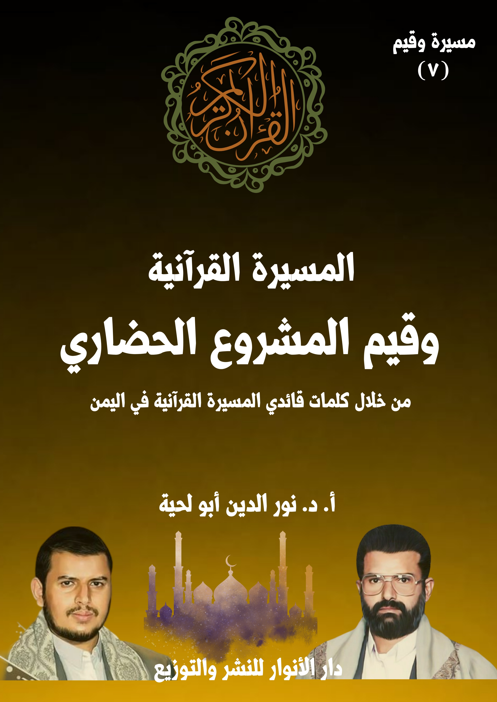

الكتاب: المسيرة القرآنية وقيم المشروع الحضاري
الوصف: من خلال كلمات قائدي المسيرة القرآنية باليمن
السلسلة: مسيرة وقيم
المؤلف: أ. د. نور الدين أبو لحية
الناشر: دار الأنوار للنشر والتوزيع
الطبعة: الأولى، 1445 هـ
عدد الصفحات: 702
ISBN: 978-620-4-72102-6
لمطالعة الكتاب من تطبيق مؤلفاتي المجاني وهو أحسن وأيسر: هنا

يهدف هذا الكتاب إلى محاولة التعرف على ما ذكره قائدا المسيرة القرآنية حول قيم المشروع الحضاري، والذي يمثل الإسلام أولا، باعتبار أن حقيقته وأهدافه لا ترتبط فقط بإصلاح الأفراد والمجتمعات، وإنما ترتبط ـ كذلك، وبنفس الدرجة ـ بتحقيق الحاكمية الإلهية في الأرض، ومواجهة كل المشاريع الشيطانية التي تعارضها.
وهو يمثل ـ كذلك ـ الأمة الإسلامية، أفرادا ومجتمعات، ذلك أن من مسؤولياتها الكبرى أن تكون أمة شاهدة على الناس، ومكلَّفة بأن تعطي النموذج الأعلى للإسلام، بالإضافة إلى مسؤوليتها في تحقيق العدل، وحماية المستضعفين، ومواجهة المستكبرين والطغاة، سواء داخل الأمة أو خارجها.
وهو يمثل ـ كذلك ـ القرآن الكريم؛ فلا يمكن أن تُطبق التعاليم القرآنية بمعزل عن الاهتمام بتحقيق الحاكمية الإلهية، والأمر بالمعروف والنهي عن المنكر، والجهاد في سبيل الله، وكل المسؤوليات الكبرى التي تسعى لتحقيق الاستقامة والعدالة والتقوى في المجتمع والأمة، بل في الأرض جميعا.
وهو يمثل ـ كذلك ـ النبوة؛ فرسول الله صلى الله عليه وآله وسلم لم يكن مشروعه الرسالي قاصرا على العرب، ولا على من يجاورهم، بل كان عاما لكل البشرية، لتحريرها من كل ألوان الجاهلية، وفي كل العصور، ولذلك أرسل الكتب للملوك والأمراء، ليدعوهم إلى دين الله، وما يحمله من المعاني الحضارية، بل أشار الله تعالى عن دوره في ذلك حين اعتبر رسالته رحمة للعالمين.
وهو يمثل ـ كذلك ـ الولاية، باعتبارها امتدادا لتحمل مسؤوليات النبوة في إقامة الحق والعدل، والثورة على الطغيان والاستبداد، وتحكيم الشريعة الإلهية.
وهو يمثل ـ كذلك ـ الأمة الإسلامية، أفرادا ومجتمعات، ذلك أن من مسؤولياتها الكبرى أن تكون أمة شاهدة على الناس، ومكلَّفة بأن تعطي النموذج الأعلى للإسلام، بالإضافة إلى مسؤوليتها في تحقيق العدل، وحماية المستضعفين، ومواجهة المستكبرين والطغاة، سواء داخل الأمة أو خارجها.
وهو يمثل ـ كذلك ـ القرآن الكريم؛ فلا يمكن أن تُطبق التعاليم القرآنية بمعزل عن الاهتمام بتحقيق الحاكمية الإلهية، والأمر بالمعروف والنهي عن المنكر، والجهاد في سبيل الله، وكل المسؤوليات الكبرى التي تسعى لتحقيق الاستقامة والعدالة والتقوى في المجتمع والأمة، بل في الأرض جميعا.
وهو يمثل ـ كذلك ـ النبوة؛ فرسول الله صلى الله عليه وآله وسلم لم يكن مشروعه الرسالي قاصرا على العرب، ولا على من يجاورهم، بل كان عاما لكل البشرية، لتحريرها من كل ألوان الجاهلية، وفي كل العصور، ولذلك أرسل الكتب للملوك والأمراء، ليدعوهم إلى دين الله، وما يحمله من المعاني الحضارية، بل أشار الله تعالى عن دوره في ذلك حين اعتبر رسالته رحمة للعالمين.
وهو يمثل ـ كذلك ـ الولاية، باعتبارها امتدادا لتحمل مسؤوليات النبوة في إقامة الحق والعدل، والثورة على الطغيان والاستبداد، وتحكيم الشريعة الإلهية.
وقيم المشروع الحضاري (8)
ولذلك، فإنه لا يمكن أن تكون رسالة رسول الله صلى الله عليه وآله وسلم رحمة للعالمين، وهي تكتفي بقيم التزكية الروحية، أو التزكية الأخلاقية، لأن الواقع الاجتماعي والدولي يحتاج إلى قيما أخرى، لتحقيق تلك القيم داخل الأمة أو خارجها، باعتبار أن رسالة رسول الله صلى الله عليه وآله وسلم للعالمين، ولذلك فإن جميع العالم هم الأمة التي كلف رسول الله صلى الله عليه وآله وسلم بدعوتها، وكلفت الأمة بالنيابة عنه في ذلك، ولا يمكن أن تحقق ذلك من دون إقامة حضارة مثالية نموذجية، تجعل البشر جميعا يدخلون في دين الله أفواجا؛ فأكثر الناس يهتمون بالنموذج الواقعي أكثر من اهتمامي بالطرح النظري.
وهكذا؛ فإن الأنبياء عليهم السلام كان من أدوارهم الكبرى، والتي تعرضوا للمواجهة بسببها هي سعيهم للتحرر وإقامة العدل والثورة على الطغيان، وهي كلها من القيم الأساسية للمشروع الحضاري للأمة.
ولذلك يذكر الله تعالى أن من المهام الكبرى التي كلف بها موسى عليه السلام هي تحرير بني إسرائيل، وإخراجهم من أيدي المستبد الطاغية، كما قال تعالى: ﴿فَأْتِيَا فِرْعَوْنَ فَقُولَا إِنَّا رَسُولُ رَبِّ الْعَالَمِينَ أَنْ أَرْسِلْ مَعَنَا بَنِي إِسْرَائِيلَ﴾ [الشعراء: 16 ـ 17]
وهكذا اعتبر الله تعالى من أسباب وجوب الجهاد في سبيل الله تخليص المستضعفين، فقال: ﴿وَمَا لَكُمْ لَا تُقَاتِلُونَ فِي سَبِيلِ اللَّهِ وَالْمُسْتَضْعَفِينَ مِنَ الرِّجَالِ وَالنِّسَاءِ وَالْوِلْدَانِ الَّذِينَ يَقُولُونَ رَبَّنَا أَخْرِجْنَا مِنْ هَذِهِ الْقَرْيَةِ الظَّالِمِ أَهْلُهَا وَاجْعَلْ لَنَا مِنْ لَدُنْكَ وَلِيًّا وَاجْعَلْ لَنَا مِنْ لَدُنْكَ نَصِيرًا﴾ [النساء: 75]، ثم ذكر أن من أسباب الجهاد في سبيل الله مواجهة الطاغوت، فقال: ﴿الَّذِينَ آمَنُوا يُقَاتِلُونَ فِي سَبِيلِ اللَّهِ وَالَّذِينَ كَفَرُوا يُقَاتِلُونَ فِي سَبِيلِ الطَّاغُوتِ فَقَاتِلُوا أَوْلِيَاءَ الشَّيْطَانِ إِنَّ كَيْدَ الشَّيْطَانِ كَانَ ضَعِيفًا﴾ [النساء: 76]
وهكذا اعتبر الله تعالى الدعوة إلى العدل من مهام الأنبياء والصالحين، وفي كل
وقيم المشروع الحضاري (9)
العصور، فقال: ﴿لَقَدْ أَرْسَلْنَا رُسُلَنَا بِالْبَيِّنَاتِ وَأَنْزَلْنَا مَعَهُمُ الْكِتَابَ وَالْمِيزَانَ لِيَقُومَ النَّاسُ بِالْقِسْطِ وَأَنْزَلْنَا الْحَدِيدَ فِيهِ بَأْسٌ شَدِيدٌ وَمَنَافِعُ لِلنَّاسِ وَلِيَعْلَمَ اللَّهُ مَنْ يَنْصُرُهُ وَرُسُلَهُ بِالْغَيْبِ إِنَّ اللَّهَ قَوِيٌّ عَزِيزٌ﴾ [الحديد: 25]
وذكر المواجهات التي لاقاها الأنبياء والصالحون بسبب دعوتهم للعدل، فقال: ﴿إِنَّ الَّذِينَ يَكْفُرُونَ بِآيَاتِ اللَّهِ وَيَقْتُلُونَ النَّبِيِّينَ بِغَيْرِ حَقٍّ وَيَقْتُلُونَ الَّذِينَ يَأْمُرُونَ بِالْقِسْطِ مِنَ النَّاسِ فَبَشِّرْهُمْ بِعَذَابٍ أَلِيمٍ﴾ [آل عمران: 21]
ودعا القرآن الكريم إلى إقامة القسط، ومواجهة المخالفين له، فقال: ﴿يَا أَيُّهَا الَّذِينَ آمَنُوا كُونُوا قَوَّامِينَ لِلَّهِ شُهَدَاءَ بِالْقِسْطِ وَلَا يَجْرِمَنَّكُمْ شَنَآنُ قَوْمٍ عَلَى أَلَّا تَعْدِلُوا اعْدِلُوا هُوَ أَقْرَبُ لِلتَّقْوَى وَاتَّقُوا اللَّهَ إِنَّ اللَّهَ خَبِيرٌ بِمَا تَعْمَلُونَ﴾ [المائدة: 8]، وقال: ﴿قُلْ أَمَرَ رَبِّي بِالْقِسْطِ وَأَقِيمُوا وُجُوهَكُمْ عِنْدَ كُلِّ مَسْجِدٍ وَادْعُوهُ مُخْلِصِينَ لَهُ الدِّينَ كَمَا بَدَأَكُمْ تَعُودُونَ﴾ [الأعراف: 29]
وهكذا، نجد القرآن الكريم مليئا بأمثال هذه الآيات الكريمة، والتي لا يمكن تطبيقها إلا في ظل مشروع حضاري تتبناه الأمة، وتجتمع عليه، لتعرض من خلال تطبيقها له نموذج الأمة التي تتحقق بكل المعاني الإنسانية النبيلة، لتؤدي بذلك دورها في الشهادة على الناس، كما قال تعالى: ﴿وَكَذَلِكَ جَعَلْنَاكُمْ أُمَّةً وَسَطًا لِتَكُونُوا شُهَدَاءَ عَلَى النَّاسِ وَيَكُونَ الرَّسُولُ عَلَيْكُمْ شَهِيدًا﴾ [البقرة: 143]
بناء على هذا، نرى قائدي المسيرة القرآنية يتحدثان عن هذا المشروع، ومن نواحيه المختلفة، بل يمكن أن نجزم بأن أكثر أحاديثهما عنه، حتى تلك التي تتعلق بالقيم الروحية والأخلاقية، لأنه لا يمكن أن يقوم المشروع الحضاري من دون أن يمثله الأفراد الصالحون، والمجتمع الصالح.
وقيم المشروع الحضاري (10)
ومن الأمثلة على ذلك ما ذكره السيد عبد الملك بدر الدين الحوثي أثناء حديثه عن عهد الإمام علي إلى مالك الأشتر، حيث قال: (وللإسلام مشروعه الحضاري المتميز، الذي يختلف عن أي حضارة أخرى؛ لأنها حضارة تأخذ بعين الاعتبار السمو بالإنسان، ليست حضارة مادية بحتة، تبني العمران، وتهدم قيم الإنسان، هي تبني الإنسان، فيبني الحياة على أساس صحيح، وعلى أساس من القسط، وبشكل راق، وإلّا فإذا لم يلحظ هذا في واقع الإنسان، مهما كانت الحضارة على المستوى المادي عملاقة، فهو في واقع حياته سيشقى، يشقى بانتشار الرذائل، بانتشار الجرائم، بانتشار المفاسد، كما يحصل مثلا في الغرب؛ لأنه لاحظ جانبا واحدا من جوانب الحضارة، وهو الجانب المادي، وأهمل الجانب الآخر)(1)
وقد رأينا من خلال استقرائنا لما ذكره قائدا المسيرة القرآنية عن هذا المشروع الحضاري أنه يتأسس على سبعة أركان:
أولها: الأصالة، ونريد بها استمداه من الدين الأصيل، ومن خلال منابعه الصافية التي لم تُكدر ولم تُبدل، ولذلك اعتبرا القرآن الكريم أساسا لهذا المشروع، باعتباره الممثل الحقيقي الأكبر للإسلام، وما عداه لا يمكن الوثوق به أو قبوله دون الرجوع إليه لتبين مدى تطابقه معه، ويشير إلى هذا الأصل ما ورد في القرآن الكريم من الدعوة إلى التحاكم إلى كتاب الله في كل الشؤون، ونبذ كل الأهواء التي تريد أن تنحرف عنه.
ثانيها: المسؤولية، ونريد بها مشاركة الأمة جميعا في تحقيق المشروع الحضاري الإسلامي، إما من خلال التزامها به، أو من خلال دعوتها إليه، ويشير إليه من القرآن الكريم الآيات الكريمة الكثيرة التي تدعو إلى الاهتمام بالأمر بالمعروف والنهي عن المنكر،
__________ (1) المرجع السابق.المسيرة القرآنية وقيم المشروع الحضاري (11)
وإقامة الدين الحق، والتضحية في سبيل ذلك.
ثالثها: الحرية، ونريد بها تحقيق التحرر الكامل للأمة من كل أشكال الهيمنة والتسلط، سواء كانت عسكرية أو سياسية أو ثقافية، لأنه لا يمكن أن تتشكل الحضارة الأصيلة من دونها؛ فالأمة التي تحت وصاية غيرها، أو تسلطه، ستكون مشوهة ومدنسة بذلك الذي سيطر عليها، ويدخل في هذا التحرر كذلك التحرر من قيود الطواغيت والمستبدين، والذين لا يختلفون عن المستعمرين والمغتصبين، بل هم أداة من أدواتهم، أو صنيعة من صنائعهم.
رابعها: العدالة، ونريد بها العدالة التي تعني وضع الأشياء مواضعها، وعدم تجاوزها لحدودها، وهي ـ بصورتها المثالية الشاملة ـ شرط أساسي في المشروع الحضاري الإسلامي.
خامسها: الإخاء، وما يرتبط به من تحقيق الوحدة الإسلامية، وما يتعلق بها من نصرة المستضعفين من جميع أبناء العالم، باعتبارهم إخوة للمسلمين في الإنسانية.
سادسها: الرعاية الشاملة لكل حاجات الأفراد والمجتمعات، حتى تستغني الأمة بنفسها عن غيرها، وحتى لا تصبح الحاجات الأساسية سببا لتسلط المستبدين أو هيمنة المستكبرين.
سابعها: الشهادة، ونريد بها إظهار النموذج الإسلامي بصورته الجميلة، وهي مسؤولية الأمة الإسلامية عن غيرها من الأمم، وهي نفس مسؤولية رسول الله صلى الله عليه وآله وسلم عن أمته، وهي القيام بكل ما يمكن لتحقيق الهداية والخلاص، لا بتسيير الجيوش لفرض الدين، فلا يمكن فرض الدين بالقوة، وإنما بالدعوة وإعطاء النموذج المثالي الذي يجعل الغير يدخل في دين الله أفواجا.
وننبه إلى أننا في هذا الكتاب خصوصا اهتممنا بطرح ما ذكره قائدا المسيرة القرآنية
وقيم المشروع الحضاري (12)
مع ما ذكره قائدا الثورة الإسلامية في إيران، لإثبات التشابه الكبير بين ما يطلق عليه في إيران [الإسلام المحمدي الأصيل] مع [المسيرة القرآنية]؛ فلا يمكن أن يكون الإسلام محمديا أصيلا ما لم يعتمد القرآن الكريم.
وننبه إلى أننا عند ذكرنا لذلك لم نرد أن نبين ـ كما يفعل المغرضون ـ تأثر أحد الطرفين بالآخر، وإنما لنبين أن الصادقين المخلصين الحكماء ـ حتى لو اختلفت بلدانهم وطوائفهم ـ يتفقون على كل ما تقتضيه الحكمة؛ فكيف إذا كان المصدر الذي يرجع إليه كلا الطرفين واحدا، وهو القرآن الكريم؟
وننبه إلى أننا اكتفينا في هذا الكتاب ـ كغيره من كتب السلسلة ـ بطرح ما ذكره قائدا المسيرة القرآنية حول القضايا المختلفة من دون تحليل أو شرح مفصّل، لأنا قمنا بذلك من خلال التسجيلات الصوتية المرتبطة بالكتاب.
أولا ـ المسيرة القرآنية.. والأصالة
الركن الأول من أركان المشروع الحضاري ـ كما يذكر قائدا المسيرة القرآنية ـ هو استمداده من الدين الأصيل، ومن خلال منابعه الصافية التي لم تكدر ولم تبدل، ولذلك اعتبرا القرآن الكريم أساسا لهذا المشروع، باعتباره الممثل الحقيقي الأكبر للإسلام، وما عداه لا يمكن الوثوق به أو قبوله دون الرجوع إليه لتبين مدى تطابقه معه.
وهذا عين ما يطلق عليه [الإسلام الأصيل] أو [الإسلام المحمدي الأصيل]، أو [الإسلام الإلهي]، والذي نرى تداوله لدى قادة الثورة الإسلامية الإيرانية أو من تتلمذ عليهم، ويقصدون منه أمرين:
الأول: الإسلام الذي يرجع إلى المصادر الأصلية من الكتاب والسنة المطهرة وهدي ورثة النبوة بعيدا عن كل الشوائب التي لحقت به.
الثاني: الإسلام الذي لم يتلطخ بأكدار الطائفية والتشتت والتمذهب والصراع الذي شوه حقائق الدين وقيمه، بالإضافة إلى تخلصه من كدورات الخرافة والكسل والتواكل وكونه أداة مخدرة للشعوب.
وهذا المعنى هو ما ورد التعبير عنه في القرآن الكريم بمصطلح [الصراط المستقيم]، كما قال تعالى: ﴿وَأَنَّ هَذَا صِرَاطِي مُسْتَقِيمًا فَاتَّبِعُوهُ وَلَا تَتَّبِعُوا السُّبُلَ فَتَفَرَّقَ بِكُمْ عَنْ سَبِيلِهِ ذَلِكُمْ وَصَّاكُمْ بِهِ لَعَلَّكُمْ تَتَّقُونَ﴾ [الأنعام: 153]
وهو عين ما ورد التعبير عنه فيما روي عن رسول الله صلى الله عليه وآله وسلم أنه قال لبعض أصحابه عندما رآه يحمل كتابا من كتب اليهود: (والذي نفسي بيده، لقد جئتكم بها بيضاء نقية، لا تسألوهم عن شيء فيخبروكم بحق فتكذبوا به أو بباطل فتصدقوا به، والذي نفسي بيده لو
وقيم المشروع الحضاري (14)
أن موسى كان حيا ما وسعه إلا أن يتبعني)(1)، فهذا الحديث يفرق فيه رسول الله صلى الله عليه وآله وسلم بين الدين الخالص النقي الأبيض الصافي الذي ليس فيه أي دنس أو شبهة تمنع العقل السليم من التسليم له، وبين الدين المختلط بالخرافات المتسربة والمندسة من الأديان المحرفة أو غيرها.
وفي حديث آخر يتنبأ رسول الله صلى الله عليه وآله وسلم بوقوع هذا في الأمة، ويحذر منه، ويدعو في نفس الوقت إلى تبني الدين الأصيل، فعن عبد الله بن مسعود قال: خطّ لنا رسول الله صلى الله عليه وآله وسلم خطّا ثمّ قال: (هذا سبيل الله) ثمّ خطّ خطوطا عن يمينه وعن شماله ثمّ قال: (هذه سبل متفرّقة، قال: على كلّ سبيل منها شيطان يدعو إليه، ثمّ قرأ: ﴿وَأَنَّ هَذَا صِرَاطِي مُسْتَقِيمًا فَاتَّبِعُوهُ وَلَا تَتَّبِعُوا السُّبُلَ فَتَفَرَّقَ بِكُمْ عَنْ سَبِيلِهِ ذَلِكُمْ وَصَّاكُمْ بِهِ لَعَلَّكُمْ تَتَّقُونَ﴾ [الأنعام: 153] (2)
وبذلك؛ فإن أول شرط لتحقق المشروع الحضاري هو العودة إلى الإسلام بصورته النقية الجميلة التي لم تؤثر فيها كدورات العصور المختلفة، لأنه لا يمكن أن نطلق لقب الإسلام كاملا إلا على تلك الصورة الصحيحة.
وذلك يشبه ما لو أن طبيبا وصف لمريض دواء معينا لكن المريض لم يجد ضالته من الشفاء في ذلك الدواء، واحتار الطبيب في السبب، لكنه عندما عرف أن المريض لم يتناول الدواء بالصورة الصحيحة، وأنه خلط بغيره، زالت عنه الحيرة.
وهكذا أدوية الإسلام التي هي شفاء من كل أدواء التخلف والتشتت والضياع لا يمكن أن تؤدي أدوارها إلا بالالتزام بوصفاتها بدقة، كما قال تعالى عن أهل الكتاب: ﴿وَلَوْ أَنَّ أَهْلَ الْكِتَابِ آمَنُوا وَاتَّقَوْا لَكَفَّرْنَا عَنْهُمْ سَيِّئَاتِهِمْ وَلَأَدْخَلْنَاهُمْ جَنَّاتِ النَّعِيمِ وَلَوْ أَنَّهُمْ
__________ (1) مسند أحمد بن حنبل: 3/ 387 ح (15195) ذ (2) أحمد (1/ 435) والحاكم (2/ 318. ذالمسيرة القرآنية وقيم المشروع الحضاري (15)
أَقَامُوا التَّوْرَاةَ وَالْإِنْجِيلَ وَمَا أُنْزِلَ إِلَيْهِمْ مِنْ رَبِّهِمْ لَأَكَلُوا مِنْ فَوْقِهِمْ وَمِنْ تَحْتِ أَرْجُلِهِمْ مِنْهُمْ أُمَّةٌ مُقْتَصِدَةٌ وَكَثِيرٌ مِنْهُمْ سَاءَ مَا يَعْمَلُونَ﴾ [المائدة: 65 ـ 66]
بناء على هذا نرى اهتمام قائدي المسيرة القرآنية بالتعريف بمنابع الهداية الصافية، ومنابع الضلال والإضلال، باعتبارهما من المعارف الأساسية التي لا يمكن تمييز الدين الأصيل عن غيره من دون معرفتها.
وبناء على هذا نرى اهتمامهما بالتعريف بمعالم الدين الأصيل، والتي يمكن اعتبارها المعايير التي تميز الأصيل عن الدخيل، أو الحصون التي تحمي الأصيل من الدخيل.
ونحب قبل أن نذكر ما ذكره قائدا المسيرة القرآنية في ذلك، أن نذكر توافقهما في هذا مع ما ذكره قائدا الثورة الإسلامية الإيرانية، وهو ما يدل على انطلاق كلا المشروعين من منبع واحد، بعيدا عن تأثيرات التاريخ والتراث والطائفية.
فقد أشار الإمام الخامنئي إلى حقيقة الإسلام الأصيل عند ذكره لمنهج أستاذه الإمام الخميني، والذي أتاح للثورة الإسلامية أن تنتصر وتنجح في تحقيق أهدافها، فقال: (النقطة الأولى والأهم في مباني الإمام الخميني ونظراته هي قضية الإسلام المحمدي الأصيل.. أي الإسلام المقارع للظلم، والإسلام المطالب بالعدالة، والإسلام المجاهد، والإسلام المناصر للمحرومين والفقراء، والإسلام المدافع عن حقوق الحفاة والمعذبين والمستضعفين.. وفي مقابل هذا الإسلام أورد الإمام الخميني مصطلح [الإسلام الأمريكي] في ثقافتنا السياسية وقاموسنا السياسي.. الإسلام الأمريكي يعني الإسلام الذي يقتصر على التشريفات فيبتعد عن التطبيق، وهو إسلام عدم الاكتراث مقابل الظلم، ومقابل الجشع، واللامبالاة حيال التطاول على حقوق المظلومين، إنّه إسلام مساعدة العتاة والمتعسفين والأقوياء.. الإسلام
وقيم المشروع الحضاري (16)
الذي يتأقلم مع كل هذه الأمور.. هذا الإسلام سمّاه الإمام: الإسلام الأمريكي)(1)
ثم ذكر مدى اهتمام الإمام الخميني بالدعوة إلى هذا الإسلام، فيقول: (فكرة الإسلام الأصيل كانت الفكرة الدائمة لإمامنا الجليل، وهي ليست فكرة مختصة بفترة الجمهورية الإسلامية، بيد أن تحقق الإسلام الأصيل غير متاح من دون سيادة الإسلام وتأسيس نظام الحكم الإسلامي.. إذا لم يقم النظام السياسي في البلاد على أساس الشريعة الإسلامية والفكر الإسلامي، فلن يمكن للإسلام خوض غمار كفاح حقيقي ضد ظلَمة العالم وعتاته ومتغطرسيه، وضد المتعسفين في المجتمع)(2)
وعند العودة إلى تراث الإمام الخميني نجده كثيرا ما يدعو إلى ضرورة الالتزام بهذا الإسلام، ويبين أن معاداة المعتدين والمحرفين عليه دليل على مصداقيته، ومن الأمثلة على ذلك قوله عند حديثه عن الذين يعادون إيران بسبب تمسكها بالإسلام المحمدي الأصيل: (لقد صممت كافة الحكومات والقوى الكبرى اليوم على اقتلاع جذور إسلامنا المحمدي الأصيل.. يا رب، لقد وضع صدام وأشباهه أيديهم في أيدي جميع شياطين العالم بكل ما تنطوي عليه نفوسهم من بغضاء لدينك حتى يقضوا اليوم على صوت الإسلام المحمدي)(3)
وقال عن المحرفين الذين يعادون الإسلام الأصيل: (إن في الحوزات العلمية من يقومون بنشاطات ضد الثورة والإسلام المحمدي الأصيل، واليوم فإن بعض المتظاهرين بالقداسة يطعنون بحرابهم صدر الدين والثورة والنظام وكأنه لا عمل لهم سوى ذلك! إن
__________ (1) خطابات الإمام الخامنئي 2010، ص 165. (2) المرجع السابق، ص 165. (3) صحيفة الإمام، ج 20، ص 391 ذالمسيرة القرآنية وقيم المشروع الحضاري (17)
خطر المتحجرين والمتظاهرين بالقداسة الحمقى ليس بالقليل في الحوزات العلمية.. على الطلاب الأعزاء أن لا يغفلوا لحظة واحدة عن هذه الثعابين الرقطاء والملساء، فهؤلاء هم مروجو الإسلام الأمريكي وأعداء رسول الله صلى الله عليه وآله وسلم)(1)
ودعا المسلمين إلى العودة إلى القرآن الكريم للتعرف على حقيقة الإسلام الأصيل، فقال: (لكَم تغيرت أوضاع العالم.. إن المسلمين يزعمون بأنهم أتباع الرسول الأكرم صلى الله عليه وآله وسلم، وأتباع القرآن. حسناً.. فهذا هو القرآن، فانظروا ماذا يقول هو وماذا تفعلون أنتم.. لقد تسببوا في كل ما نعانيه من مصائب من أجل أمريكا، ثم يقولون إننا مسلمون، فهل هذا هو إسلامكم الذي تزعمون ثم تقومون بكل ذلك إرضاءً لأمريكا؟ إنهم يعطون نفطهم لأمريكا، ويقدمون لها كل ثروات شعوبهم.. لقد سحقوا بظلمهم شعوبهم الضعيفة البائسة، ومازالوا يزعمون بأنهم مسلمون.. فهل يمكن أن يصبح المرء مسلماً لمجرد الادعاء!؟.. إنهم يقولون إننا مسلمون وننادي بالوحدة، فتقيم إيران أسبوع الوحدة، ثم يعودون ليقولوا بأن إيران تبث الفرقة)(2)
وذكر بعض المظاهر التي تفرق أصحاب الإسلام المحمدي الأصيل عن غيرهم، فقال: (إنه لمن دواعي الأسف أن يكون الإسلام بهذا الوضع، ويكون مدعو الإسلام على هذه الحالة.. إن الإسلام يقف موقفاً متشدداً من المتخلفين والمعتدين، في حين يقوم مدعو الإسلام بتشجيع هؤلاء)(3)
وهكذا، فإننا عند العودة إلى خطب وكتب قادة الثورة الإسلامية الإيرانية نجدهم
__________ (1) المرجع السابق، ج 21، ص 278. ذ (2) المرجع السابق، ج 18،ص 266. (3) المرجع السابق، ج 16 ص 432.المسيرة القرآنية وقيم المشروع الحضاري (18)
لا يكتفون فقط بالدعوة للعودة للإسلام الأصيل، وإنما يصفون ملامحه وخصائصه التي تميزه عن غيره، وفي كل المجالات.
ومن الأمثلة على ذلك قول الإمام الخميني عند حديثه عن الفنون: (إن الفن الوحيد المقبول من قبل القرآن الكريم، هو الفن الذي يُجلّي الإسلام المحمدي الأصيل.. إسلام أئمة الهدى.. إسلام الفقراء البائسين.. إسلام الحفاة.. إسلام الذين لسعتهم سياط التاريخ المخجل المر)(1)
ونجده في محال كثيرة يوضح الملامح والأسس الكبرى التي يقوم عليها هذا الإسلام، ومن كلماته المنتخبة القصار في هذا قوله: (ليس في النظام الإسلامي أيّ فرق بين شخص وآخر.. الإسلام هو دين المجاهدين الذين يرومون الحق والعدالة، دين التحرريين الساعين نحو الاستقلال، وهو عقيدة الجماهير المناضلة الراغبة في مواجهة الاستعمار.. علينا أن نسعى لتحطيم أسوار الجهل والخرافات، لبلوغ المعين الرقراق للإسلام المحمّدي الأصيل صلى الله عليه وآله وسلم.. اجعلوا من الإسلام مثالكم الأسمى، وانصاعوا له.. إنّ الإسلام أسمى مما نتصوّره نحن.. رسالة الإسلام هي رسالة التهذيب.. إنّ الإسلام يسعى لتعديل نمط التعامل مع الماديّات بطريقة تسوقها نحو الاصطباغ بالصبغة الإلهّية.. لقد طرح الإسلام برنامجاً متكاملاً للحياة، والمشكلة في المسلمين أنفسهم.. إنّ مشكلة المسلمين الأساسيّة تكمن في الابتعاد عن الإسلام والقرآن.. لو أنّ الشعوب اطّلعت على الإسلام، لوجدت كلّ ما تريده فيه.. إنّ كل المصائب التي حلّت بهذا البلد إنّما كانت من الجاهلين بالإسلام.. عدم فهم الإسلام هو السبب الذي يقف وراء سوء ظنّ البعض بالإسلام)(2)
__________ (1) الكلمات القصار، مواعظ وحكم من كلام الإمام الخميني، ص94. ذ (2) المرجع السابق، ص7 ذالمسيرة القرآنية وقيم المشروع الحضاري (19)
وهكذا اعتبر هذا الإسلام هو الكفيل وحده بحل كل المشاكل؛ حيث قال عند حديثه عن القضية الفلسطينية: (ما لم نعد الى الإسلام، إسلام رسول الله صلى الله عليه وآله وسلم، فسوف تبقى مشاكلنا على حالها، ولن نستطيع حل قضية فلسطين)(1)
ولذلك دعا العلماء إلى تبني هذا الإسلام والدعوة إليه، فقال: (علماء الإسلام مكلفون بمحاربة الدكتاتورية والاستفادة غير المشروعة للظالمين، وأن لا يسمحوا ببقاء عدد كبير من الناس جياعاً ومحرومين والى جانبهم يتنعم الظالمون الناهبون وآكلو الحرام.. إن علماء الإسلام الأصليين لم يخضعوا أبداً للرأسماليين وعبيد المال والخائنين، واحتفظوا بهذا الشرف لأنفسهم، وهذا ظلم كبير أن يقول أحد بأن يد الرأسماليين هي في يد الروحانيين الأصليين المؤيدين للإسلام المحمدي الأصيل)(2)
وهكذا نرى قائدي المسيرة القرآنية يذكران معالم الدين الأصيل، والضوابط التي تحميه من كل دخيل، كما ذكرنا النماذج الكثيرة على ذلك في الأجزاء السابقة.
ومن الأمثلة عنها ما ذكره السيد عبد الملك عند حديثه عن قوله تعالى: ﴿لَيْسَ الْبِرَّ أَنْ تُوَلُّوا وُجُوهَكُمْ قِبَلَ الْمَشْرِقِ وَالْمَغْرِبِ وَلَكِنَّ الْبِرَّ مَنْ آمَنَ بِاللَّهِ وَالْيَوْمِ الْآخِرِ وَالْمَلَائِكَةِ وَالْكِتَابِ وَالنَّبِيِّينَ﴾ [البقرة: 177]، حيث ذكر دلالة الآية الكريمة على الرد على التدين المزاجي، فقال: (قبل أن يقدّم العناوين المعبّرة عن البر، ابتدأ لمعالجة مشكلة تطرأ لدى الكثير من الناس، وهي: أنهم يسعون إلى أن يحددوا هم لأنفسهم ـ وفق رغباتهم، ووفق مزاجهم الشخصي ـ اهتماماتهم فيما يتعلق بجانب البر، والخير، والإحسان، والعمل الصالح، وأن يحددوا لأنفسهم الأولوية في ذلك، في نطاق محدد، في اهتمامات بسيطة، على حسب المزاج
__________ (1) المرجع السابق، ص104. ذ (2) التربية والمجتمع في فكر الإمام الخميني، ص105 ذالمسيرة القرآنية وقيم المشروع الحضاري (20)
الشخصي، وعلى حسب هوى النفس)(1)
ثم ذكر السلبيات التي يؤدي إليها هذا التدين المزاجي، فقال: (وهذه سلبية خطيرة لدى الإنسان، فقد يتجه الإنسان في اهتمامه بهذه الأمور على نحو شكلي، يقتصر على بعض الأمور، ويترك الأهم، ويترك ما لابدّ منه في أن تكون من الأبرار، وفي أن تكون ممن يعملون البر، ممن يقدّمون البر، ممن لديهم اهتمامات بالبر على المستوى الشخصي، ثم أيضا على مستوى التعاون على ذلك، وهذا قد يجعل البعض لا يتفاعلون مع كثير من البر، من أهم موارد البر، من أهم مجالات البر، التي قد تكون كثير منها في حدود الواجب، واللازم، والذي لابدّ منه في أن تتحقق لك هذه المواصفات المهمة والعظيمة؛ لكي تكون من أولياء الله، من الأبرار، من ذوي البر، فقد لا يتفاعلون مع الكثير من الأمور، وقد يتجهون ـ كما قلنا ـ وفق اهتمامات بسيطة فصّلوها هم تفصيلا وفق مزاجهم الشخصي، وليس على أساس إرشاد الله، هدي الله، تعليمات الله سبحانه وتعالى، ما يدلنا عليه، ما يرغّبنا فيه)(2)
ثم ذكر نماذج واقعية على ذلك، فقال: (فالله سبحانه وتعالى يعالج لدينا هذه المشكلة، والتي هي حالة قائمة لدى الكثير من الناس، تراهم يظهرون بمظهر المتدين، الصالح، العابد، ولكن عندما تأتي إلى اهتماماته، تجدها منحصرة مثلا في الجانب العبادي، على ما يقولون في التعبير العامي [من بيتك إلى مسجدك، وما لك حاجة]، تقتصر اهتماماته على مثلا الحضور للصلاة في المسجد، والمسبحة في يده، ويعود إلى منزله، ذهابا وإيابا للفرائض، ثم هو ذلك الذي يتنصل عن كل الالتزامات، وعن العطاء في مقام العطاء الذي أمر الله به، عن الاهتمام بالمسؤوليات الإيمانية والدينية، لا يتفاعل مهما كان حجم المستجدات
__________ (1) البرّ في القرآن الكريم وعناوينه الجامعة، المحاضرة الرمضانية السادسة عشرة الأحد 16 ـ 9 ـ 1443 هـ، الموافق لـ: 17 ـ 4 ـ 2022م. (2) المرجع السابق.المسيرة القرآنية وقيم المشروع الحضاري (21)
والأحداث، مهما كانت الظروف والمتغيرات، مهما كانت الوقائع، والمحن، والظروف، التي تستوجب من كل إنسان، بل وتحرّك ضمير كل إنسان لا يزال ضميره حيا، فيتفاعل، ويتأثر، ويبادر؛ لأنه يجد نفسه حتى على مستوى مشاعره مندفعا لفعل الخير، للتفاعل، لتقديم ما ينبغي أن يقدّم، للإسهام بما ينبغي أن يسهم فيه)(1)
ثم ذكر تحذير الله تعالى من هذا الفهم السلبي للبر، فقال: (فهذه الحالة التي يركّز الإنسان فيها على جوانب شكلية في دين الله، في اهتماماته العملية، يقتصر عليها، يتجه اهتمامه نحوها، هي الحالة التي يوجّه الله سبحانه وتعالى بالحذر منها، وأنها ليست عنوانا للبر كما هو، في حقيقته، في مفهومه الواسع، مفهومه الكامل، مفهومه الصحيح، بل هي حالة اجتزاء فصّلت وفق هوى النفس)(2)
ثم ذكر دلالة قوله تعالى: ﴿لَيْسَ الْبِرَّ أَنْ تُوَلُّوا وُجُوهَكُمْ قِبَلَ الْمَشْرِقِ وَالْمَغْرِبِ﴾ [البقرة: 177] على هذا المعنى، حيث قال تعليقا على ذلك: (فيتجه كل اهتمامكم نحو القبلة، نحو الصلاة، بتلك الشكلية، بتلك الطريقة التي تجعل من الموضوع قد أخذ كل الاهتمام، تجعل منه الموضوع الرئيسي، الذي ينحصر نحوه الاهتمام، لا في هذا ولا في غيره، لا في هذا ولا في غيره، هذا نموذج يقدمه القرآن، عادة ما يقدم نموذجا معينا، وهو ـ في نفس الوقت ـ يفيدنا تجاه غيره من بقية الأمور والمسائل، التي هي على نفس النسق، على نفس الطريقة، على نفس الاتجاه، الذي ليس اتجاها صحيحا يرضي الله سبحانه وتعالى)(3)
ثم ذكر أن هذا نوع من التحايل على دين الله تعالى، فقال: (فالأسلوب المتحايل،
__________ (1) المرجع السابق. (2) المرجع السابق. (3) المرجع السابق.المسيرة القرآنية وقيم المشروع الحضاري (22)
أحيانا يكون بطريقة التحايل، البعض يتصور أنه قد أحكم الخطة حتى ما بينه وبين الله، سيرضي الله ذلك الشيء المعين، الذي قد اقتصر على الاهتمام به، وسيجعله على حساب بقية الأشياء، فيبرر عدم اهتمامه ببقية الأشياء، باهتمامه بذلك الشيء، مع أنّ الدين لا يتعارض فيما بينه، يمكنك أن تعتني بصلاتك، وأن تقيمها، وأن تهتم بها، وأن تهتم بالمسجد، ولكن لا يعني ذلك أن تتنصّل عن بقية التزاماتك واهتماماتك العملية الأخرى، أو أن تجعل شيئا على حساب شيء آخر، وبديلا عن شيء آخر، وكأن الدين يتناقض فيما بينه، وكأن الالتزامات الإيمانية متناقضة فيما بينها، تؤدي هذا، فتجعل أداءه مبررا لترك ذلك، هذا غير مقبول في دين الله سبحانه وتعالى)(1)
ثم ذكر نماذج على ذلك، فقال: (فالأسلوب المتحايل والقاصر في تحديد البر، في تحديد أولوياته، مثلا: البعض قد يركّز على أن يعتمر في شهر رمضان في كل موسم، ويجمع ماله كله لذلك، ويترك ـ في نفس الوقت ـ التزامات ذات أهمية كبيرة جدّا، كثير منها تدخل ضمن الالتزامات الأساسية الإيمانية، فالإنسان يركز في مستوى الأولويات على الالتزامات الإيمانية الأهم، وما لحقه بعد ذلك فجيد، فطيب، فخير وبر، وما لم يصل إليه من بقية الأمور.. بعضهم يركّز على مستحبات، على مندوبات، على مسنونات، ويترك ما هو أهم، وأقدم، وألزم، وأعظم، وأكبر، تحدث عنه القرآن كثيرا، أمر الله به كثيرا، فيتجاهله؛ لأنه يرى في الذي قد اتجه باهتمامه إليه بديلا عن ذلك بكله، وبديلا مريحا، أعجبه، ناسبه، وفق رغبته الشخصية، هذه خطيرة على الإنسان)(2)
بناء على هذا سنذكر هنا ما ذكره السيد عبد الملك حول المعالم والخصائص التي يقوم
__________ (1) المرجع السابق. (2) المرجع السابق.المسيرة القرآنية وقيم المشروع الحضاري (23)
عليها الإسلام الأصيل، والتي خصها بمجموعة محاضرات مهمة، قدم لها بقوله: (نأتي إلى معالم أساسية في هذا كله، بعد أن نلحظ هذه المسألة بشكل أساسي، نحن في هذا الزمن، ولو أنّا على بعد أكثر من 1400 عام من وفاة رسول الله صلى الله عليه وآله وسلم، أكثر من هذه المدة الزمنية، معنيون أن نتطلع إليه، كيف كانت حركته بالإسلام، لنقتدي ونهتدي ونتأثر.. نجد أن هناك معالم رئيسية بارزة في دعوة الرسول، في القرآن الكريم نفسه، في سياسة الرسول وحركته بالرسالة)(1)
وسنذكر في هذا الفصل هذه المعالم، وبالترتيب الذي ذكرها، مع إرجاء التفاصيل المرتبطة ببعضها، مثل العدل والمسؤولية والحرية وغيرها إلى محالها في الفصول المختلفة.
أول معلم من معالم الإسلام الأصيل ـ كما يذكر السيد عبد الملك ـ هو كون الإسلام دين تحرر من الطواغيت والمستكبرين.
وقد تحدث عن هذا المعلم قائدا المسيرة القرآنية في كلمات ومحاضرات كثيرة، باعتباره من الأركان الكبرى التي تقوم عليها المسيرة القرآنية، ولذلك اعتبرنا الحرية ركنا من أركان المشروع الحضاري بحسب رؤيتها، وسنخص ما ذكره قائدا المسيرة القرآنية من ذلك بفصل خاص، ونكتفي هنا ببيان أهمية هذا المعلم، وآثاره، وخطورة فقده.
فقد قال السيد عبد الملك في التقديم لذلك: (أول هذه المعالم الرئيسية، ذات الأهمية الكبرى، والتي لها تأثير مباشر في واقع حياتنا، أول هذه المعالم الرئيسية أن الإسلام دين تحرر
__________ (1) سلسلة محاضرات الإسلام في معالمه الأساسية بين الهجرة النبوية والنهضة الحسينية، المحاضرة الأولى الثلاثاء 1 ـ 1 ـ 1440 هـ، الموافق لـ: 11 ـ 9 ـ 2018م.المسيرة القرآنية وقيم المشروع الحضاري (24)
من الطاغوت والاستكبار، ودين يؤسس للإنسان أن يسير في هذه الحياة على أساس مستقل)(1)
ثم ذكر الأسس التي يقوم عليها هذا الاستقلال، فقال: (أساس من: المبادئ، والقيم، والأخلاق، والتشريعات، والتعليمات، والتوجيهات، يستقل به ويفصله عن التبعية لكل قوى الطاغوت والضلال)(2)
ثم ذكر أهمية هذا المبدأ، وتأثيره في حياة المسلمين، لو قاموا بالاهتمام به، فقال: (هذا مبدأ رئيسي ومعلم أساسي، ومسألة لها تأثيرها المباشر، كلما استوعبناها جيدا، وكلما التزمنا بها في واقع الحياة، كلما تحررنا)(3)
ثم ذكر أنواع الهيمنة التي يقع فيها المسلمون بسبب إهمالهم لهذا المعلم، فقال: (واحد من أكبر المشاكل التي نعانيها في هذا العصر، هو ما نعانيه من هيمنة المستكبرين والطاغوت على أمتنا الإسلامية، وتدخلها في كثير من شئون حياتنا وواقعنا، حضور الطاغوت والاستكبار وتأثيره في ساحتنا الإسلامية، في عالمنا العربي وأكثر البلدان الإسلامية، حضور مؤثّر في كل مجالات الحياة، في كل شئون الناس، ومتحكم، ومستبد، ونتج عن ذلك كثير من المظالم، وكثير من المآسي، وتأثير مباشر وصل لدرجة تعطيل ثمرة الإسلام في واقع الحياة)(4)
ثم ذكر حرص رسول الله صلى الله عليه وآله وسلم على المفاصلة التامة مع الطواغيت، وعدم مداهنتهم،
__________ (1) سلسلة محاضرات الإسلام في معالمه الأساسية بين الهجرة النبوية والنهضة الحسينية، المحاضرة الأولى الثلاثاء 1 ـ 1 ـ 1440 هـ، الموافق لـ: 11 ـ 9 ـ 2018م. (2) المرجع السابق. (3) المرجع السابق. (4) المرجع السابق.المسيرة القرآنية وقيم المشروع الحضاري (25)
أو الالتقاء بهم في أي محل، فقال: (الرسول صلى الله عليه وآله وسلم منذ بداية حركته بالرسالة في أوساط الناس لم يقبل أبدا بأن يدهن مع الطاغوت، وأن يتأقلم مع الطاغوت، وأن يطوّع نفسه، أو من معه من أبناء الإسلام ممن آمنوا به للطاغوت أبدا، وبشكل بديهي وتلقائي ما إن يسلم الإنسان حتى يعتبر إسلامه ـ آنذاك ـ خروجا من تحت عباءة الطاغوت، وتحررا من سيطرة وسلطة الطاغوت، وهذا من أكبر ما كان يزعج الطغاة المستكبرين، كانوا ينزعجون من هذه النقطة)(1)
ثم ذكر الفرق بين الإسلام والأديان التي غلبت عليها الطقوس إلى أن صارت أفيونا للشعوب، فقال: (الإسلام في حركة الرسول به لم يكن مجرد طقوس تقيمها في وقت تتأقلم فيه في مسيرة حياتك بكلها تحت سيطرة الطاغوت وهيمنة الطاغوت، في ولاءاتك، في مواقفك، في مسيرة حياتك.. لا، كان الدخول الصادق في الإسلام، يعني: الخروج والتحرر من سيطرة الطاغوت)(2)
ثم ذكر ما ورد في القرآن الكريم من الحديث عن هذا، فقال: (والقرآن الكريم أكّد هذا على مستوى الرسالة الإلهية، حتى في عصر الأنبياء، قبل خاتم الأنبياء رسول الله محمد صلى الله عليه وآله وسلم، ﴿وَلَقَدْ بَعَثْنَا فِي كُلِّ أُمَّةٍ رَسُولًا أَنِ اعْبُدُوا اللَّهَ وَاجْتَنِبُوا الطَّاغُوتَ﴾ [النحل: 36](3)
ثم ذكر معارضة الطواغيت لهذا المعلم، وحرصهم على تغييبه، فقال: (وهذه مسألة تزعج الطواغيت في كل زمن، ولهذا هذا المبدأ ـ بحد ذاته ـ كفيل بتحرير الأمة من هيمنة الطاغوت)(4)
__________ (1) المرجع السابق. (2) المرجع السابق. (3) المرجع السابق. (4) المرجع السابق.المسيرة القرآنية وقيم المشروع الحضاري (26)
ثم ذكر آثار تحرر الأمة من الطواغيت، فقال: (إذا تحررت فعليا من هيمنة الطاغوت، وانفصلت عن التبعية لقوى الطاغوت والضلال، وانطلقت في مسيرة حياتها على أساس المبادئ والقيم والأخلاق والتشريعات الإلهية التي أتى بها الإسلام، كما هي في القرآن الكريم، وكما هي في حركة رسول الله صلى الله عليه وآله وسلم، وبعيدا عن الزيف والاعوجاج الذي لا يمثّل حقيقة الإسلام.. فإن الأمة سيتغير واقعها بشكل تام، وستتخلص من معظم مشاكلها، وستكسب رؤية إلهية صحيحة تسير عليها في الحياة، طاقة معنوية عالية تساعدها على الصبر والتحمل، وتوفر لها الاندفاع الكافي والهائل والعظيم، والحافز الكبير جدّا لتتحرك في الطريق، وكذلك تحظى برعاية عظيمة من الله سبحانه وتعالى، رعاية شاملة: رحمة، هداية.. بكل أشكال الرعاية الإلهية حسب الوعود الإلهية في القرآن الكريم، التي شملت كل نواحي الحياة)(1)
ثم ذكر ما قام به علماء السوء من تغييب لهذا المعلم إرضاء للطواغيت، فقال: (عندما نجد اليوم ـ في واقع الحال ـ بعض من يسمون أنفسهم باسم علماء، البعض منهم، ونعني: علماء السوء؛ لأن العلماء هم ـ في واقع الحال ـ صنفان: علماء سوء، وعلماء ربانيون، علماء السوء منهم تجدهم وهم يقدّمون أنفسهم باسم ورثة الأنبياء، كمثل ما نرى عليه هيئة كبار العلماء في السعودية كيف يصبحون كلسان وقلم للطاغوت هناك، يفتون ـ دائما ـ بما يريده، ما أراد أن يفعله هو ابتداء من نوازعه، من دوافعه، من رغباته هو، رغباته الناتجة عن ما هو عليه من: طغيان، وفساد، وظلم، وهوى النفس، يأتون هم ليقدّموا على هذا ختم الفتوى الشرعية، ويقدّمون مسوغات دينية لذلك الذي انطلق فيه الطاغوت بدافع هوى النفس،
__________ (1) المرجع السابق.المسيرة القرآنية وقيم المشروع الحضاري (27)
قد يكون فسادا، قد يكون ظلما، قد يكون جريمة، قد يكون شرا، قد يكون منكرا.. بأي عنوان من عناوين السوء، ويشرعنون له ذلك، ويبنون واقع الدين على تدجين الأمة للطاغوت)(1)
ثم ذكر مخالفة هؤلاء لرسول الله صلى الله عليه وآله وسلم، فقال: (رسول الله لم يفعل ذلك أبدا، لقد كان على درجة عالية وعظيمة، ولا يصل إليها أي بشر آخر فيما هو عليه من: الصلابة، والثبات، وقوة الموقف، والثبات والاستقامة على الموقف، والتحمل في مواجهة كل الصعاب وكل التحديات، والثبات على الموقف تجاه كل ما يواجه به من قوى الطاغوت، من حملات دعائية كبيرة ومكثفة، ومن مؤامرات متنوعة، ومكائد متعددة، فإذا هو ذلك الثابت والشامخ، والذي لا يتزعزع أبدا، ولا يتراجع نهائيا، ولا تحنيه العواصف مهما كانت، ولا تدفعه التحديات مهما كبرت للاستسلام أبدا، أو اليأس، درجة عالية جدّا من الثبات والتماسك)(2)
ثم ذكر ما ورد في القرآن الكريم من الحديث عن صلابة رسول الله صلى الله عليه وآله وسلم في وجه كل القسوة والشدة التي ووجه بها، فقال: (وصلت به إلى درجة أن قال الله عن ذلك المجتمع الذين كانوا: قوما خصمين، ولدّا، وشرسين، وقساة قلوب، وسيئين جدّا، أن قال الله عنهم: ﴿وَدُّوا لَوْ تُدْهِنُ فَيُدْهِنُونَ﴾ [القلم: 9]، كانوا يتمنون ويودون أن لو يتقبل رسول الله أن يدخل معهم في مداهنة، وأجواء من المجاملات، ونحو من ذلك، فيتغاضى عن بعض باطلهم، ويتغاضون له عن بعض ما هو عليه من الحق)(3)
__________ (1) المرجع السابق. (2) المرجع السابق. (3) المرجع السابق.المسيرة القرآنية وقيم المشروع الحضاري (28)
ثم ذكر حرمة المبادئ وقداستها، وأنها ليست للمقايضة، فقال: (لكن المسألة ليست كذلك، المبادئ والقيم والتعليمات الإلهية ليست للمقايضة بها، والتنازل عنها مع الطاغوت، حتى يتمكن هذا الطرف أو ذاك من التأقلم مع الطاغوت؛ لأنهم تركوا له شيئا، والشيء الذي يتركونه ـ عادة ـ هو الشيء الذي إن فصل أو بتر عن سياقه، عن جذوره، عن أساسه، عن مبدئه، عن ثمرته، لم يعد له جدوى مهمة في واقع الحياة، هذا المعلم الرئيسي أكّد عليه القرآن الكريم، يقول الله تعالى: ﴿فَمَنْ يَكْفُرْ بِالطَّاغُوتِ وَيُؤْمِنْ بِاللَّهِ فَقَدِ اسْتَمْسَكَ بِالْعُرْوَةِ الْوُثْقَى لَا انْفِصَامَ لَهَا﴾ [البقرة: 256](1)
ثم ذكر ما ورد في القرآن الكريم من الاهتمام بهذا المبدأ باعتباره معلما رئيسيا للإسلام، فقال: (هذا معلم رئيسي، ومبدأ أساسي في هذا الإسلام، أكّد عليه القرآن الكريم، وهو من أول مضامين الشهادة الرئيسية في الإسلام، التي يدخل بها الإنسان في الإسلام (أشهد أن لا إله إلا الله)، وتجلى ذلك في سلوك وممارسات وحركة الرسول صلى الله عليه وآله وسلم بالإسلام، هو هذا المبدأ: الكفر بالطاغوت، التحرر من سيطرة الطاغوت، الاستقلال بكل ما تعنيه الكلمة، الاستقلال الثقافي، والفكري والعملي، الاستقلال في مسيرة الحياة، فيما تقوم عليه من مبادئ وقيم وأخلاق وتشريعات، الاستقلال الكلي عن التبعية لكل قوى الطاغوت وقوى الاستكبار والقوى الظلامية التي تسير على اتجاهات باطلة في هذه الحياة)(2)
ثم دعا إلى الاهتمام بهذا المبدأ والدعوة إليه، فقال: (هذا من أهم وأعظم وأكبر ما نحتاج إلى ترسيخه بشكل كبير؛ لأن الحديث عنه حديث واسع، لا تتسع له محاضرة، ولكن بشكل عام مسؤولية الجميع من مثقفين، من علماء، من نخب، مسؤولية الجميع حتى على
__________ (1) المرجع السابق. (2) المرجع السابق.المسيرة القرآنية وقيم المشروع الحضاري (29)
مستوى التواصي بالحق ترسيخ هذا المبدأ، وأن يكون معيارا لسلامة السير والاتجاه، لتحديد الاتجاه، الاتجاه المتخلص من سيطرة الطاغوت، ومن التبعية بشكل تام، والقائم على أساس الاقتداء بالرسول من موقعه في القدوة والقيادة، والتمسك بالقرآن كمنهج في هذه الحياة، هو الاتجاه الصحيح الذي يعبّر حقيقة عن الإسلام)(1)
ثم ذكر الواقع الإسلامي، وانحراف أكثر الاتجاهات الإسلامية فيه عن هذا المعلم، فقال: (الاتجاهات التي نراها اليوم حاضرة في ساحتنا العربية والإسلامية بشكل كبير تقدّم نفسها باسم الإسلام، ونراها بوضوح في حالة من التبعية العمياء لقوى الطاغوت والاستكبار، لأمريكا وإسرائيل)(2)
ثم ذكر أن كل من يفعل ذلك لا علاقة لها بالإسلام الأصيل، فقال: (لنع جيدا، ولندرك بشكل تام أنها قوى زيف، أنها تمثّل الزيف، ولا تمثّل الحقيقة، تمثّل الزيف فقط، ولا تعبّر عن حقيقة الإسلام في مبادئه وأخلاقه، وهي حوّلت الإسلام إلى طقوس وشكليات بترتها عن سياقها، وفصلتها عن أساسها، وحالت بينها وبين ثمرتها، وطوّعتها للاستغلال في واقع الحياة، وجعلت منها وسيلة للاستغلال والخداع، هذا الذي هو حاصل، كما هو حال النظام السعودي، والقوى التكفيرية، والقوى الظلامية بكل أشكالها وأنواعها، من: المنافقين، والضالين، والمبطلين، والفاسدين، المشوهين للإسلام)(3)
ثم ذكر لوازم التحرر، فقال: (ثم من يسعى إلى التحرر، من ينجذب لعنوان كهذا، ليع جيدا أنه لا تحرر بما تعنيه الكلمة، ولا استقلال عن التبعية ـ بما تعنيه الكلمة ـ لأمتنا
__________ (1) المرجع السابق. (2) المرجع السابق. (3) المرجع السابق.المسيرة القرآنية وقيم المشروع الحضاري (30)
الإسلامية إلّا بالاستقامة على نهج الله، والاقتداء والتمسك برسول الله صلى الله عليه وآله وسلم، من خلال الاهتداء بالقرآن والاقتداء بالرسول، هذا الذي يحقق استقلالا فعليا، أما أن يتجه الإنسان نحو الشرق أو نحو الغرب، ليقلد، أو يحذو حذو هذا الطرف أو ذاك في بعض من العناوين، ثم يتجه على أساس باطل في هذه الحياة، لن يصل إلى نتيجة)(1)
المعلم الثاني من معالم الإسلام الأصيل ـ كما يذكر السيد عبد الملك ـ هو كون الإسلام دين وعي ونور وبصيرة، وقد قال في ذلك مبينا أهمية هذا المعلم وآثاره: (واحد أيضا من المعالم الرئيسية في الإسلام: أن الإسلام دين وعي ونور وبصيرة، يحرر الإنسان من التبعية الفكرية للمفاهيم الضلالية الشيطانية والطاغوتية، ويمنح الإنسان الرؤية الصحيحة، والفهم الصحيح، والنظرة الصحيحة إلى الواقع من حوله)(2)
ثم ذكر غياب هذا المعلم عن الساحة الإسلامية مع أهميته، وكونه مميزا للإسلام الأصيل عن غيره، فقال: (وهذه مسألة مهمة جدّا، ولا تؤخذ بعين الاعتبار بشكل بارز في كثير مما يقدّم من عناوين في الساحة الإسلامية، وهي من أهم المسائل على الإطلاق، والذي يتأمل في واقع أمتنا يجد أنها لا تفتقر إلى شيء مثلما هي مفتقرة إلى الوعي، إلى البصيرة، إلى النور، يستخدم الأعداء بكل أشكالهم من خارج الأمة ومن داخل الأمة، كل القوى الظلامية هي تقدّم مفاهيم ظلامية، نشاط هائل تحت العنوان: الفكري، والتثقيفي، والتعليمي، والإعلامي، والتأثير على الرأي العام، تأثير على المفاهيم، على الأفكار، على
__________ (1) المرجع السابق. (2) المرجع السابق.المسيرة القرآنية وقيم المشروع الحضاري (31)
التصورات، على النظرة إلى الواقع، ويمثّل ذلك عاملا سيئا وخطيرا جدّا كبّل الأمة، وطوعها لأعدائها، وأثّر عليها، وحال بين الكثير من أبنائها وبين أن يبصروا، أن يعوا، أن يفهموا الأمور بشكل صحيح، وأمكن الأعداء أن يستغلوهم أسوأ حالة من الاستغلال)(1)
ثم ذكر ما ورد في القرآن الكريم من الحديث عن هذا المعلم، فقال: (الإسلام، يقول الله عن قرآنه، عن نوره، عن هديه: ﴿أَوَمَنْ كَانَ مَيْتًا فَأَحْيَيْنَاهُ وَجَعَلْنَا لَهُ نُورًا يَمْشِي بِهِ فِي النَّاسِ كَمَنْ مَثَلُهُ فِي الظُّلُمَاتِ لَيْسَ بِخَارِجٍ مِنْهَا﴾ [الأنعام: 122]، الحالة مختلفة، نور الإسلام هو نور لحركتك في الحياة، لمواقفك، لاتجاهاتك، لأعمالك، لتصرفاتك، تبنى على أساس تلك التعليمات، وتلك الحقائق، وتلك البصائر التي يقدّمها الله سبحانه وتعالى لعباده؛ فينظرون نظرة صحيحة، ونظرة سليمة، ونظرة مستقيمة)(2)
ثم دعا إلى التأسي بما قام به رسول الله صلى الله عليه وآله وسلم من نشر للوعي والبصيرة وتصحيح للمفاهيم في الجاهلية التي عاصرها، فقال: (في العهد الجاهلي الأول، ما قبل بعثة الرسول محمد صلى الله عليه وآله وسلم كان هناك في الساحة كثير من المفاهيم الخاطئة والظلامية تسيطر على تفكير الناس، على نظرتهم في كبير المسائل وصغيرها، من مسألة التوحيد والألوهية إلى أبسط القضايا، وكانت تلك المفاهيم تقدّم كحقائق يخدع بها الناس، تقدّم للناس على أنها الحق والحقيقة، ويصدّق البعض من الناس ذلك، ولكن نور الإسلام أتى لينقذ الناس من ذلك أولا، الله يقول: ﴿كِتَابٌ أَنْزَلْنَاهُ إِلَيْكَ﴾ [ص: 29]، يخاطب الرسول صلى الله عليه وآله وسلم ﴿كِتَابٌ أَنْزَلْنَاهُ إِلَيْكَ لِتُخْرِجَ النَّاسَ مِنَ الظُّلُمَاتِ إِلَى النُّورِ﴾ [إبراهيم: 1]، يقول الله: ﴿هُوَ الَّذِي يُنَزِّلُ عَلَى عَبْدِهِ آيَاتٍ بَيِّنَاتٍ
__________ (1) المرجع السابق. (2) المرجع السابق.المسيرة القرآنية وقيم المشروع الحضاري (32)
لِيُخْرِجَكُمْ مِنَ الظُّلُمَاتِ إِلَى النُّورِ﴾ [الحديد: 9](1)
ثم ذكر معنى الظلمات في الآيات الكريمة، فقال: (الظلمات هي مفاهيم، هي أفكار يا أيها الناس، الظلمات يمكن أن تقدّم ضمن كتب مفاهيم ظلامية، تقدّم ضمن كتب، ويمكن أن تقدّم على منابر في مساجد، ويمكن أن تقدّم من أبواق ضالة مضلة عبر وسائل الإعلام، لها أشكال متعددة ووسائل متنوعة، لتؤثر على الناس، لتؤثر على مفاهيمهم ونظرتهم وفكرتهم الصحيحة والسليمة)(2)
ثم ذكر كيفية التخلص من هذه الظلمات، فقال: (إذا تأصل في واقعنا الرجوع إلى الاقتداء بالرسول والاهتداء بالقرآن بشكل صحيح؛ نتخلص من كل المفاهيم الظلامية، ونمتلك قدرا عاليا من: الوعي، والفهم الصحيح، والنظرة الصحيحة، والتقييم الصحيح، والفرز الصحيح حتى داخل مجتمعنا الإسلامي)(3)
ثم ذكر نماذج عن آثار الوعي والبصيرة في التمييز ومعرفة حقائق الأمور، فقال: (يتجلى لنا من هو الصادق من الكاذب بحسب المعايير والمواصفات القرآنية، يتجلى لنا من هو المنافق من المؤمن حقا، يتجلى لنا من هو الذي في قلبه مرض، ممن ينطلق بصدق وإخلاص وسلامة قلب في حركته في هذه الحياة وفي داخل الأمة، كل ذلك يتجلى بحسب المواصفات والمعايير القرآنية الهادية، يتجلى لنا من هو العدو الحقيقي الذي يجب أن نعاديه، وما هي مسؤوليتنا، ويتجلى لنا من هو الصديق حتى لا نكون سذّجا ويخدعنا الآخرون في ولاءاتنا ومواقفنا، يتجلى لنا ما هو الذي يعبّر عن حقيقة الإسلام، وما هو الزيف الذي
__________ (1) المرجع السابق. (2) المرجع السابق. (3) المرجع السابق.المسيرة القرآنية وقيم المشروع الحضاري (33)
يستخدم فقط من قوى الطاغوت والاستكبار والنفاق للخداع والاستغلال، تتجلى الأمور، دين الله هو فرقان، نور يعطينا بصيرة في الواقع، فنميز وندرك الفوارق بين حق وباطل، بين صادق وكاذب، بين زيف وحقيقة، فلا نخدع، وهذا من أحوج ما تحتاج إليه الأمة، وتضررت بشكل كبير بقدر ما غاب عنها من ذلك وما خسرته منه)(1)
وهكذا تحدث في محل آخر عن القرآن الكريم ودوره في تحقيق الوعي والبصيرة، فقال: (أيضا كان من المعالم البارزة والرئيسية: أنّ الإسلام دين نور ووعي وبصيرة، وعندما نعود إلى أعظم ما في الإسلام هو القرآن، ويعتبر مصدرا رئيسيا للإسلام، والقرآن الكريم هو نور الله لعباده، سمّاه بصائر، وسمّاه نورا، ﴿قَدْ جَاءَكُمْ بَصَائِرُ مِنْ رَبِّكُمْ فَمَنْ أَبْصَرَ فَلِنَفْسِهِ وَمَنْ عَمِيَ فَعَلَيْهَا﴾ [الأنعام: 104]، ومن أعظم ما في القرآن الكريم أنه يصنع لدى الإنسان وعيا عاليا جدّا تجاه مفاهيم الإسلام الصحيحة والسليمة، وأيضا تجاه الواقع من حوله، وتجاه التشخيص للناس، لفئاتهم)(2)
ثم ذكر ما ورد في القرآن الكريم من البصائر المرتبطة بفئات الناس، فقال: (يشرح لنا القرآن الكريم شرحا واضحا وواسعا جدّا عن المنافقين، عن الذين في قلوبهم مرض، عن أصحاب الادعاءات الكاذبة، الذين يحاولون أن يستغلوا الأمة، تصنيف دقيق وواضح، وتشخيص بصفات وعلامات وسمات تشخّص لنا كل فئة من الفئات، سواء من الفئات المحسوبة على المسلمين والإسلام، أو الفئات الأخرى، من خارج الأمة الإسلامية)(3)
__________ (1) المرجع السابق. (2) سلسلة محاضرات الإسلام في معالمه الأساسية بين الهجرة النبوية والنهضة الحسينية، المحاضرة الثانيةالأربعاء 2 ـ 1 ـ 1440 هـ، الموافق لـ: 12 ـ 9 ـ 2018م. (3) المرجع السابق.المسيرة القرآنية وقيم المشروع الحضاري (34)
ثم ذكر ما ورد في القرآن الكريم من الوعي والبصيرة الهادية إلى كيفية التصرف مع الفئات والجهات والأحوال المختلفة، فقال: (ثم يحدد لنا الموقف الصحيح من كل فئة من تلك الفئات، يقدّم وعيا عاليا يحمي الأمة من الاستغلال، ومن الخداع، ومن التضليل، يحمي الأمة من أن تتحول إلى أداة لصالح أي طاغية، أو مجرم، أو منافق، أو عميل، أو خائن.. والأمة أحوج ما تكون إلى الوعي في كل شيء، وإلى البصيرة في كل شيء، وحاجة ملحّة، وحاجة ماسّة جدّا، الاستفادة من القرآن الكريم في ذلك مسألة ضرورية جدّا، وإلّا فالبديل هو الضلال، وهو العمى، وهو أن يكون لدى الإنسان قابلية لأن يخدعه أي مخادع، ويضلّه أي مضل، يهودي، وإلّا منافق، ويضلك بكل بساطة)(1)
المعلم الثالث من معالم الإسلام الأصيل ـ كما يذكر السيد عبد الملك ـ هو كون الإسلام دين القيم الروحية والأخلاقية العالية، وقد قال في ذلك مبينا أهمية هذا المعلم وآثاره: (من المعالم التي وصلنا إليها: أن الإسلام دين زكاء، وطهارة، ومكارم أخلاق، وسمو للنفوس، وهذا جانب مهم ورئيسي في الإسلام في أصالته، الأصالة التي تقدّم لنا الفوارق ما بين الزيف وما بين الحقيقة، ما بين الاتجاه الصحيح الذي يربطنا برسول الله وبالقرآن، وما بين الاتجاه الزائف الذي يربط الأمة بتبعية إلى أعدائها، ويوّلّف شكلا مزيفا يحسب على الإسلام، ويربط الأمة بأعدائها، ويدجّن الأمة لإعدائها، ويسخّر الأمة لأعدائها)(2)
__________ (1) المرجع السابق. (2) سلسلة محاضرات الإسلام في معالمه الأساسية بين الهجرة النبوية والنهضة الحسينية، المحاضرة الثانيةالأربعاء 2 ـ 1 ـ 1440 هـ، الموافق لـ: 12 ـ 9 ـ 2018م.المسيرة القرآنية وقيم المشروع الحضاري (35)
ثم ذكر آثار هذا المعلم وعلاقته بسائر المعالم، وخصوصا بمعلم التحرر، فقال: (فمن أهم الجوانب الرئيسية في الإسلام هو هذا الجانب: الزكاء، مسألة التزكية للنفوس، حتى تستقيم في هذه الحياة وتصلح، الإنسان لا يمكن صلاحه إلّا بالتزكية، وإلّا فالإنسان يتأثر سلبا، وتتدنس نفسيته، ثم يتصف بمساوئ الأخلاق، وتصبح نفسيته المدنسة ميّالة نحو كل ما هو سيء، وبالتالي لديها قابلية للارتباط بكل جهات الطاغوت، بكل جهات الشر، والانسجام معهم، يصبح مرتاحا جدّا للارتباط بالصهاينة، باليهود الصهاينة، بالأعداء بكل أشكالهم وفئاتهم، بالمنافقين، أو بأولياء المنافقين من أعداء الأمة؛ لأنه يحس بالانسجام النفسي معهم، نفسية مدنّسة، نفسية خبيثة، نفسية سيئة)(1)
ثم ذكر آثار غياب هذا المعلم في كل الجوانب ابتداء من الجانب النفسي، فقال: (الإنسان يحتاج إلى زكاء النفس، ولا يمكن له الاستقامة على منهج الله إلّا بتزكية النفس، وإلّا إذا خبثت النفس وفسدت النفس، اتجه الإنسان اتجاها سيئا في واقعه العملي، في سلوكه، في تصرفاته، ثم في الأخير في ولاءاته وفي مواقفه، ولا يرى نفسه ـ في الأخير ـ منشدّا بشكل صحيح، بشكل قوي، بشكل فعّال لمنهج الله سبحانه وتعالى، بل يرى نفسه قد ابتعد كثيرا عن ذلك المنهج الإلهي)(2)
ثم ذكر دور منابع الهداية الصافية في تحقيق هذا المنبع، واهتمامها به، فقال: (ولذلك كان من المهام الرئيسية للرسول صلى الله عليه وآله وسلم، وللقرآن كذلك: التزكية للنفس البشرية، وهي مهمة رئيسية للأنبياء بكلهم، وللرسل بكلهم، ولكتب الله بكلها، ومساحة كبيرة من جهد الأنبياء، ومساحة كبيرة من كتب الله سبحانه وتعالى اتجهت إلى النفس البشرية بهدف
__________ (1) المرجع السابق. (2) المرجع السابق.المسيرة القرآنية وقيم المشروع الحضاري (36)
تزكيتها، على مستوى ما يقدم، على مستوى التعبئة الروحية والإيمانية، وعلى مستوى الجانب التربوي، وعلى مستوى الكثير من التشريعات فيما أمرنا الله به، وكذلك فيما نهانا عنه، انصب ذلك ـ في كثير منه ـ نحو تزكية هذه النفس البشرية، فيما يسمو بها، فيما يعزز فيها عناصر الخير)(1)
ثم ذكر ما ورد في القرآن الكريم من الحديث عن قابلية النفس البشرية للخير والشر، فقال: (النفس البشرية قابلة لأن تتربى على مساوئ الأخلاق، أو على مكارم الأخلاق، لأن تنمو فيها عناصر الخير، أو تنمو فيها عناصر الشر، لأن تنمو فيها بذرات التقوى، أو تنمو فيها بذرات الفجور، ولهذا يقول الله سبحانه وتعالى في كتابه الكريم: ﴿وَنَفْسٍ وَمَا سَوَّاهَا فَأَلْهَمَهَا فُجُورَهَا وَتَقْوَاهَا﴾ [الشمس: 7 ـ 8]، ثم يقول جلّ شأنه: ﴿قَدْ أَفْلَحَ مَنْ زَكَّاهَا وَقَدْ خَابَ مَنْ دَسَّاهَا﴾ [الشمس: 9 ـ 10]، فالنفس البشرية ألهمت التقوى وألهمت الفجور، ولديها القابلية للتقوى، ولديها القابلية للفجور، ولديها القابلية للتربية على الخير، وحبّ الخير، وعناصر الخير، والسمو، والعشق لمكارم الأخلاق.. ولديها كذلك القابلية لأن تتنامى فيها كل عناصر الشر والسوء ومساوئ الأخلاق)(2)
ثم ذكر نماذج عن القابليات الصالحة للنفس الإنسانية، فقال: (يمكن للإنسان أن يتربى على الصدق، وعلى الطهارة، وعلى العفة، وعلى إرادة الخير، وعلى الشجاعة، وعلى الكرم، وعلى السماحة، وعلى الإيثار، وعلى الإحسان وعلى الكثير من القيم ومن مكارم الأخلاق والقيم الفاضلة، وأن تصبح تلك القيم والأخلاق بالنسبة له أمورا يحبها، ويعشقها، ويرغب فيها، ويندفع فيها؛ وبالتالي يلتزم بها كمسار أساسي في حياته، إن خرج ـ
__________ (1) المرجع السابق. (2) المرجع السابق.المسيرة القرآنية وقيم المشروع الحضاري (37)
أحيانا ـ في حالة من الخطأ أو الزلل كان سريع العودة؛ لأن الجذور باقية)(1)
ثم ذكر نماذج عن القابليات المنحرفة للنفس الإنسانية، فقال: (يمكن للإنسان أيضا أن يتربى على الكذب، وعلى الفجور، وعلى العصيان، وعلى الدناءة، وعلى الانحطاط، وعلى التنصل من الوعي والضمير، وعلى قلة الحياء.. وعلى كل عناصر السوء)(2)
ثم ذكر خطورة ترسخ هذه القابليات السيئة، وآثارها على الحقيقة الإنسانية، فقال: (يمكن أن يتنامى في ذلك، ويكبر في ذلك، حتى يصل إلى درجة أن يتحول إلى شيطان، عندما يصبح مصدر شر في هذه الحياة، عندما يصل إلى الإفلاس من كل عناصر الخير في نفسه، وتسيطر عليه كليا عناصر السوء والشر، وبذرات الفجور تكبر وتتجذر حتى تسيطر على كل مشاعره وإحساسه ووجدانه، يصبح إنسانا عديم الخير، عديم الرحمة، عديم الفضل، منعدما في مكارم الأخلاق، ويتجه للعب دور سلبي في هذه الحياة)(3)
ثم ذكر نموذجا على ذلك مما ورد في القرآن الكريم من الحديث عن منابع اختلال الولاء، فقال: (ولهذا يتحدث القرآن الكريم عن الاختلال في الولاء، فيجعل مرده اختلالا في زكاء النفوس، عندما يقول الله سبحانه وتعالى في كتابه الكريم: ﴿يَا أَيُّهَا الَّذِينَ آمَنُوا لَا تَتَّخِذُوا الْيَهُودَ وَالنَّصَارَى أَوْلِيَاءَ بَعْضُهُمْ أَوْلِيَاءُ بَعْضٍ وَمَنْ يَتَوَلَّهُمْ مِنْكُمْ فَإِنَّهُ مِنْهُمْ إِنَّ اللَّهَ لَا يَهْدِي الْقَوْمَ الظَّالِمِينَ فَتَرَى الَّذِينَ فِي قُلُوبِهِمْ مَرَضٌ يُسَارِعُونَ فِيهِمْ﴾ [المائدة: 51 ـ 52](4)
ثم علق على الآيتين الكريمتين بقوله: (هذه حالة غير صحية، غير سليمة أبدا، اختلال في زكاء الإنسان، الإنسان الذي يفعل ذلك عنده اختلال كبير في واقعه النفسي، في
__________ (1) المرجع السابق. (2) المرجع السابق. (3) المرجع السابق. (4) المرجع السابق.المسيرة القرآنية وقيم المشروع الحضاري (38)
مشاعره، في وجدانه، في العناصر الداخلية، في مكارم الأخلاق، عنده إما جبن، أو بخل، أو شك، أو أي آفة من الآفات الخطيرة جدّا التي تفتك بالإنسان فيما يحمله ابتداء من عناصر الخير، وتؤثّر حتى على فطرته، تبعده حتى عن مقتضى الفطرة؛ لأن الحالة السليمة للإنسان أن يبقى بمقتضى الفطرة متجها الاتجاه الإيجابي، وأن تنمو فيه عناصر الخير، فإذا، جانب التزكية للنفس، والتربية الإيمانية، والتربية الصالحة للنفس على مكارم الأخلاق؛ حتى تتجذر جذور مكارم الأخلاق في نفس الإنسان، يصبح إنسانا تربّى على العفة، والعفة بمثل ما هي سلوك، هي قبل ذلك وجدان ومشاعر وإحساس في الداخل، في العمق النفسي، في عمق المشاعر والوجدان، هي عقيدة، وهي وجدان وإحساس، ثم هي سلوك كذلك)(1)
ثم ذكر الأدلة على فطرية كل الأخلاق الكريمة، واتفاق البشر عليها، فقال: (من الأشياء التي تشهد أن أصل الفطرة البشرية تقرّ بمكارم الأخلاق، وتعتبرها هي التي تمثّل السمو للإنسان، أن الكل يعترف بها، يعترف الناس أن العفة قيمة أخلاقية راقية، وأن الفجور دناءة وانحطاط وخسة ونقص، وكذلك ـ مثلا ـ ينظرون إلى الصدق مثلا، أن الصدق يمثّل قيمة من القيم الأخلاقية الراقية، بينما الكذب يمثّل حالة من الانحطاط والخسة والدناءة والنقص، يقرّون ـ مثلا ـ بأنّ العدل خير وسمو وشرف وفضل، وأن الظلم ـ كذلك ـ يمثّل حالة من الانحطاط، وحالة من السوء، وحالة من الشر)(2)
ثم ذكر اتفاق البشر على كل العناوين الفاضلة حتى لو خالفوها، أو احتالوا عليها، فقال: (عندما نأتي إلى العناوين كعناوين: الخير، العدل، الحق، الصدق، العفة، الحياء.. الفضائل بشكل عام، المجتمع البشري يعترف بالفضيلة كفضيلة، ويعترف ـ أيضا ـ بالرذيلة
__________ (1) المرجع السابق. (2) المرجع السابق.المسيرة القرآنية وقيم المشروع الحضاري (39)
باعتبارها رذيلة، تمثّل انحطاطا بالإنسان، وسوءا في واقع الإنسان، ولكن يتجه الكثير من الناس باتجاه آخر، ثم يبررون ويخادعون ويضللون ويزيفون، ويعملون أشياء كثيرة في المقابل)(1)
ثم ذكر ما ورد في القرآن الكريم من بيان أهمية التزكية، فقال: (الإسلام يعطي أهمية كبيرة للتزكية، والرسول صلى الله عليه وآله وسلم من مهامه الرئيسية العمل على التزكية، يقول الله جلّ شأنه: ﴿كَمَا أَرْسَلْنَا فِيكُمْ رَسُولًا مِنْكُمْ يَتْلُو عَلَيْكُمْ آيَاتِنَا وَيُزَكِّيكُمْ وَيُعَلِّمُكُمُ الْكِتَابَ وَالْحِكْمَةَ وَيُعَلِّمُكُمْ مَا لَمْ تَكُونُوا تَعْلَمُونَ﴾ [البقرة: 151]، فهو يقول: ﴿وَيُزَكِّيكُمْ﴾)(2)
ثم ذكر دور جميع عقائد الإسلام في تحقيق التزكية، فقال: (أيضا نجد في القرآن الكريم تركيزا كبيرا جدّا على التزكية، فمثلا: كثير من الجوانب الإيمانية هي تساعد الإنسان على زكاء النفس: الإيمان بالله جلّ شأنه كما في القرآن الكريم، الإيمان بألوهيته، وربوبيته، وملكه، ورقابته، وجزائه، وأسمائه الحسنى، وأنّه العزيز والمنتقم، وعالم الغيب والشهادة، والشاهد على العباد.. إلخ. الإيمان بالمعاد، والحساب والجزاء، والجنّة والنّار، كل ذلك يساعد الإنسان على تزكية نفسه، وعلى الاستقامة في هذه الحياة، يمثّل حافزا كبيرا جدّا، وباعثا مهما للتزكية)(3)
ثم ذكر دور جميع شرائع الإسلام في تحقيق التزكية، فقال: (عندما نجد كثير من التشريعات، يأمرنا الله بأشياء هي في نفسها التزام بما فيه زكاء للنفس، أو بما يحمي النفس البشرية ويحفظها من مؤثرات سلبية أخرى تدنّسها وتؤثّر على زكائها، كذلك فيما نهى الله
__________ (1) المرجع السابق. (2) المرجع السابق. (3) المرجع السابق.المسيرة القرآنية وقيم المشروع الحضاري (40)
عنه، أشياء كثيرة نهى عنها باعتبار تأثيرها السلبي على زكاء النفوس، وهكذا لنلحظ أنّ من العناصر الرئيسية والمهمة جدّا هو هذا الجانب، وأنّ الإسلام أعطاه اهتماما كبيرا ومساحة كبيرة، سواء في الجانب الروحي، في الجانب التربوي، في الجانب التشريعي، أهمية كبيرة جدّا، وبقدر ما تبقى الأمة مهتمة بهذا الجانب، بقدر ما تجد نفسها منسجمة مع الحق، ومبتعدة بنفسها عن طريق الباطل، عن التبعية للأعداء؛ لأن أولئك الأعداء الذين يرتبط بهم البعض هم في واقعهم منبع للفساد، منبع للشر، منبع للرذائل)(1)
ثم ذكر ما يقوم به المتآمرون على الأمة وعلى البشرية من تدنيس للنفوس لتسهيل السيطرة عليها، فقال: (لو نأتي اليوم إلى الصهيونية العالمية، إلى أمريكا، حتى طريقة غزوها للشعوب، وسعيها للسيطرة عليهم، مساحة كبيرة من أنشطتها وأساليب استهدافها للشعوب عن طريق مساوئ الأخلاق، عن طريق الرذائل، عن طريق المفاسد، تجعل من هذا الأسلوب بنفسه وسيلة للسيطرة على الشعوب نفسها، توجد بيئة تساعد على الفساد، وتستغل تلك البيئة بما أوجدت فيها من وسائل وعناصر، وتعمل لذلك بكل الأساليب، فإذا أفسدت بيئة معينة، أو شعبا معينا، أو مجتمعا معينا، أو بلدا معينا، فهي تضمن سيطرتها عليه، وأنّه قد فقد كل حالات المنعة النفسية عن سيطرة الآخرين)(2)
ثم ذكر نموذجا على دور التزكية والقيم الفاضلة في التحرر، وهو العزة الإيمانية، فقال: (مثلا، من القيم المهمة والعظيمة: العزة، العزة بمفهومها الإيماني لا تبقى مع الدناءة، مع الانحطاط، مع مساوئ الأخلاق.. لا، تحتاج العزة إلى مكارم الأخلاق، وإلّا الإنسان إذا أصبح منحطا، سيئا، فاسدا، يمكن له أن يقبل بالهوان، يمكن له أن يقبل بسيطرة
__________ (1) المرجع السابق. (2) المرجع السابق.المسيرة القرآنية وقيم المشروع الحضاري (41)
الأعداء، يمكن له أن يقبل بأي شيء)(1)
ثم ذكر ضرورة التزكية، وعدم كافية الوعي والاعتقاد المجرد، فقال: (فهذا الجانب يمثّل جانبا رئيسيا جدّا في الإسلام، ومهما، مع ما سبق من وعي؛ لأن الإنسان لا يكفيه مسألة وعي وفهم، كثير من الناس يمكن أن يكون واعيا، أو فاهما، أو عارفا كمجرد معرفة ذهنية، لكن إذا لم يكن مع هذه المعرفة زكاء نفس؛ فيمكن أن يفعل الغلط وهو يعرف أنه غلط، يمكن أن يتجه في صف الباطل وهو يدرك أنه يتجه في صف الباطل، البعض يصل إلى درجة أن يبيع نفسه وموقفه وينظم إلى صف الباطل، بكل ما يفعله أولئك الذين ينظم إلى صفهم، ما هم عليه من أهداف سيئة، وما يرتكبونه من جرائم فظيعة، ولا يتحرج، لم يعد فيه حياء أصلا، ولا يتحرج أبدا في أن يكون في صفهم، لماذا؟ نفسيته خبثت وتدنست، وانعدمت فيه مكارم الأخلاق، ومات ضميره، لم يعد عنده ضمير حيّ، مات ضميره، وجدانه الإنساني وإحساسه الفطري المنجذب نحو الخير والنافر من الشر خلاص انتهى، تدنس وتدنس وتدنس حتى انتهى وتغلّب عليه، انطمس، فاتجه بكل جرأة، ثم تجرّأ ـ في الأخير ـ إلى أن يصل إلى مستوى سيء، فلا يكفي وعي، أو معرفة ذهنية ومعرفة عادية إذا لم يترافق معها زكاء للنفوس)(2)
المعلم الرابع من معالم الإسلام الأصيل ـ كما يذكر السيد عبد الملك ـ هو كون الإسلام دين العدل والقسط، وقد قال في ذلك مبينا أهمية هذا المعلم وآثاره: (أيضا من
__________ (1) المرجع السابق. (2) المرجع السابق.المسيرة القرآنية وقيم المشروع الحضاري (42)
العناصر المهمة والرئيسية في الإسلام: أنّه دين عدل)(1)
ثم ذكر معنى هذا، ودلالاته، ولوازمه، فقال: (من المحاور الرئيسية فيه: العمل على إقامة العدل في واقع الحياة، ومحاربة الظلم والطغيان والإجرام، وهذا عنصر رئيسي في الإسلام)(2)
ثم ذكر ما ورد في القرآن الكريم من بيان هذا، وتأكيده، فقال: (ونجد في القرآن الكريم تأكيدا كبيرا جدّا، لدرجة أنه جعل هذه المسألة رئيسية في رسالات الله بكلها، من أولها إلى خاتم الأنبياء وسيد المرسلين محمد صلى الله عليه وآله وسلم، الله جلّ شأنه يؤكّد هذا في القرآن الكريم: ﴿لَقَدْ أَرْسَلْنَا رُسُلَنَا بِالْبَيِّنَاتِ وَأَنْزَلْنَا مَعَهُمُ الْكِتَابَ وَالْمِيزَانَ لِيَقُومَ النَّاسُ بِالْقِسْطِ﴾ [الحديد: 25](3)
ثم ذكر ما تشير إليه الآية الكريمة من المسؤوليات المرتبطة بإقامة القسط، وعلى الناس جميعا، فقال: (فالقسط يعتبر في دين الإسلام مسؤولية رئيسية على الناس، على كل منتم لهذا الإسلام أن يدرك أنّ من مسؤولياته، من التزاماته الدينية أن يكون ساعيا لإقامة العدل في هذه الحياة، وضدا للظلم والطغيان)(4)
ثم ذكر غياب هذا المعلم في الساحة الإسلامية، بل في الواقع البشري، فقال: (هذه مسألة مهمة جدّا، وغابت في الساحة، غابت إلى حد كبير، وأصبح الكثير من المنتمين للإسلام يعتبر نفسه غير معني نهائيا بهذا الأمر، يحصل ظلم، وهذا الزمن فيه مظالم كبيرة
__________ (1) سلسلة محاضرات الإسلام في معالمه الأساسية بين الهجرة النبوية والنهضة الحسينية، المحاضرة الثانيةالأربعاء 2 ـ 1 ـ 1440 هـ، الموافق لـ: 12 ـ 9 ـ 2018م. (2) المرجع السابق. (3) المرجع السابق. (4) المرجع السابق.المسيرة القرآنية وقيم المشروع الحضاري (43)
جدّا)(1)
ثم ذكر دلالة الواقع على تغييب المسلمين لهذا المعلم، فقال: (عندما ننظر إلى ظلم تحالف العدوان لشعبنا اليمني، ظلم إسرائيل للشعب الفلسطيني، ظلم هنا وهناك، الساحة الإسلامية ممتلئة بالظلم)(2)
ثم ذكر دلالة هذا على التحريف الذي وقع للإسلام، والانحراف الذي وقع فيه المسلمون، فقال: (إنّ هذا الواقع الذي تعيشه الأمة في المنطقة العربية وفي بلدان كثيرة يشهد على فجوة كبيرة عن أشياء مهمة وأساسية في الإسلام، يشهد على مستوى وحجم الانحراف الذي حصل في واقع الأمة عن أساسيات هذا الإسلام؛ لأن المسلمين وصلوا إلى حالة واقعهم فيها هو أسوأ واقع في العالم، الظلم في ساحتهم أكثر من أي ساحة عالمية أخرى، بيئة مفتوحة أمام الفساد، بيئة مفتوحة أمام الضلال، بيئة يتلعّب فيها أعداء الأمة بكل بساطة، بيئة يتحرك فيها الكثير من أبناء الأمة، من المنتسبين للأمة وإلى دينها في خدمة أعدائها بكل وضوح، علانية، ويفاخرون بذلك، وبيئة فيها كل أشكال وأنواع المفاسد، وفيها سهولة في عملية الاستقطاب من كل فئات الضلال، كل فترة وأنت تسمع بفئة ضالة جديدة تستقطب من داخل الساحة العربية، كل فترة وأتى عنوان وأخذ له ما أخذ، هذه الحالة غير صحية، غير سليمة، غير طبيعية، حالة خطيرة جدّا في واقع الأمة)(3)
ثم دعا إلى الجدية في معالجة هذا الخلل، فقال: (هي تستدعي أن يلتفت الناس بجدية إلى معرفة مستوى الخلل، وما ينبغي على الأمة، وما عليها من مسؤولية في معالجة هذا
__________ (1) المرجع السابق. (2) المرجع السابق. (3) المرجع السابق.المسيرة القرآنية وقيم المشروع الحضاري (44)
الخلل، وفي أن تتجه الاتجاه الصحيح الذي يصلح واقعها؛ لأنه لا إمكانية أبدا للتغيير نحو الأفضل إلّا بذلك: بالاتجاه الجاد بدءا بتغيير ما بالأنفس، ﴿إِنَّ اللَّهَ لَا يُغَيِّرُ مَا بِقَوْمٍ حَتَّى يُغَيِّرُوا مَا بِأَنْفُسِهِمْ﴾ [الرعد: 11](1)
ثم ذكر نماذج عن الانحرافات التي وقعت في الأمة بسبب غياب هذا المعلم، فقال: (عندما نأتي إلى هذه العناوين الرئيسية: التحرر من الطاغوت، والطاغوت هو المسيطر على معظم أبناء الأمة، أنه يجب أن نكون مستقلين، وسليمين عن أي تبعية لأي قوى أخرى من خارج ساحتنا الإسلامية، ونجد أكثر أبناء الأمة في حالة من التبعية لأمريكا وإسرائيل والغرب.. ونأتي إلى عنوان: النور والوعي والبصيرة، ومعظم أبناء الأمة يعانون بشكل كبير جدّا من أزمة ـ بكل ما تعنيه الكلمة ـ ونقص حاد جدّا يصل عند البعض إلى انعدام الوعي نهائيا، البعض ما عنده حالة ولا مستوى واحد بالمائة من الوعي، إفلاس رهيب جدّا، وقابلية للتضليل والخداع والتأثر بأي شيء يصل، البعض عنده حواسه هذه (سمعه وبصره) كالصحن اللاقط، يستقبل كل بث، ويتأثر بكل ما يصل إليه)(2)
ثم ذكر مسؤولية الأمة الإسلامية حول هذا المعلم، ووجوب إقامة العدل، وفي كل المحال، فقال: (ثم نأتي إلى مسؤوليتنا كأمة مسلمة للعمل على إقامة العدل، وقد صرنا بعيدين عن إقامة العدل في واقع أنفسنا، دعك عن إقامة العدل في بقية العالم، في بقية البشرية، فساحتنا هي الساحة المليئة بالظلم والعدوان، والجرائم فيها بشكل بشع جدّا، ويأتيك من ينتسب للإسلام يرتكب أبشع الجرائم: القتل الجماعي للأطفال والنساء، وإهلاك الحرث والنسل، وفي بلده المآذن التي يتردد فيها الأذان، ومع ذلك يفعل كل ذلك
__________ (1) المرجع السابق. (2) المرجع السابق.المسيرة القرآنية وقيم المشروع الحضاري (45)
ولا يبالي بكل جرأة، خراب كبير وانحراف رهيب جدّا)(1)
ثم ذكر ضرورة الحركة، وعدم الاكتفاء بالوعي، لتحقيق ذلك، فقال: (إذا كان لدينا وعي بأن من مسؤولياتنا كمسلمين أن نعمل على إقامة العدل، هذا يحتاج إلى تحرك جاد، إلى مسؤوليات عملية، إلى وحدة كلمة، وإلى تحرك بجدية في الواقع لإقامة العدل)(2)
ثم ذكر لزوم محاربة الظلم لإقامة العدل، فقال: (لا يمكن أن نقيم العدل إلّا وأن نحارب الظلم، هناك في الساحة فئات ظالمة، مكونات ظالمة، من داخل الأمة ومن خارج الأمة، إذا أردنا أن نقيم العدل لابدّ أن نقف بوجه أولئك الطغاة، الظالمين، المتسلطين، المجرمين، هناك كيانات كبيرة (دول، حكومات) متسلطة، ظالمة، ولا يمكن أن ندفع ظلمها إلّا بموقف، بتحرك، بتحمل مسؤولية، بجدية)(3)
ثم ذكر اقتضاء عدل الإسلام لمواجهة الطغيان، وكل من يحكم باسم الطغيان، فقال: (الإسلام دين عدل وقسط ولا يقبل أبدا بأن يعبّر عنه أولئك الطغاة، الظالمون، الجائرون، المفسدون، يأتيك طاغية مجرم من موقعه في السلطة، وهو يوالي أمريكا، ويتحرك في خدمة أمريكا، ويقدّم نفسه واليا باسم الإسلام، وحاكما باسم الإسلام، ويقدّم نفسه كملك، أو أمير، أو بأي صفة من الصفات بأنه يمثّل الإسلام، ويمثّل الأمة الإسلامية، في الوقت الذي هو ـ حسب التوصيف القرآني ـ ظالم، وطاغية، ومجرم، ومنافق، وفاسق، وفاجر.. إلى آخر التسميات القرآنية التي تنطبق عليه بما يفعل، بما يتصرف، بما هو فيه: في ولاءاته، في تبعيته لأعداء الأمة، في اتجاهاته، في سياساته، في كل ما هو عليه)(4)
__________ (1) المرجع السابق. (2) المرجع السابق. (3) المرجع السابق. (4) المرجع السابق.المسيرة القرآنية وقيم المشروع الحضاري (46)
ثم ذكر ما ورد في القرآن الكريم من الدعوة للعدل والقسط، فقال: (الإسلام دين عدل، ودين قسط، والله هو القائل: ﴿يَا أَيُّهَا الَّذِينَ آمَنُوا كُونُوا قَوَّامِينَ بِالْقِسْطِ﴾ [النساء: 135]، هذا أمر من الله سبحانه وتعالى لكل الذين يحسبون أنفسهم على هذا الإسلام أن يكونوا ﴿قَوَّامِينَ بِالْقِسْطِ﴾، وهذا يعني مسئولية مستمرة، يعني: ليست المسألة هبّة في وقت معين، وانتهى الموضوع)(1)
ثم ذكر دلالات قوله تعالى: ﴿قَوَّامِينَ﴾، فقال: (حالة أنتم مستمرون عليها، مسيرة حياة، ومنهج حياة، ومسار مستمر؛ لأنه لا يمكن إقامة القسط إلّا بهذا، أن تكون المسألة مسألة مسيرة مستمرة، عمل مستمر، نشاط مستمر، أما أن المسألة مسألة هبّة وانتهى الموضوع، فهذا لا يمكن، ﴿كُونُوا قَوَّامِينَ بِالْقِسْطِ شُهَدَاءَ لِلَّهِ﴾ [النساء: 135]، وفي آية أخرى: ﴿كُونُوا قَوَّامِينَ لِلَّهِ شُهَدَاءَ بِالْقِسْطِ﴾ [المائدة: 8]، ومؤدّى الآيتين واحد، في النهاية هي مسؤولية نتحرك بها في واقع هذه الحياة)(2)
ثم ذكر الانحراف الكبير الذي يقع فيه من يقف مع الطغيان في نفس الوقت الذي يزعم لنفسه فيه أنه ينتمي للإسلام، فقال: (فأن يتصور البعض أنّ بالإمكان أن يكون معبّرا عن الإسلام في أصالته، في امتداده الصحيح، في الاقتداء برسول الله والتمسك بالقرآن، ويكون إما في صف الطغاة، الظالمين، المجرمين، الذين يميتون العدل بتبعيتهم لأعداء الأمة، ويظلمون الأمة بما هم عليه، وبما هم فيه، وما يفعلونه، وما يمارسونه، أو أن يتغاضى، وأن يصمت، وأن يجمد، وأن يترك الساحة مفتوحة أمامهم، ولا يسعى لإقامة العدل وإماتة الظلم، ويعتبر نفسه في الموقف الصحيح، أو الاتجاه الصحيح، هو مخطئ بكل ما تعنيه
__________ (1) المرجع السابق. (2) المرجع السابق.المسيرة القرآنية وقيم المشروع الحضاري (47)
الكلمة، وهو بعيد عن المسار الصحيح للإسلام في معالمه المهمة والرئيسية)(1)
المعلم الخامس من معالم الإسلام الأصيل ـ كما يذكر السيد عبد الملك ـ هو كونه دينا ترتبط به مسؤوليات كثيرة ترتبط بشؤون الحياة المختلفة، وليس دينا طقوسيا، خاصا بالشؤون الشخصية، أو بغيرها من الشؤون البسيطة.
وقد قال السيد عبد الملك مبينا حقيقة هذا المعلم، وأهميته: (في سياق الحديث عن المعالم الرئيسية في الإسلام، والتي تجلت في أداء وحركة وتطبيق النبي صلى الله عليه وآله وسلم وفي حديث القرآن على نحو واسع، معلم مهم جدّا هو المسؤولية في الإسلام، والتي هي جانب أساسي لابدّ منه، وكما قلنا في الأصالة التي تعبّر عن حقيقة الإسلام، ومبادئه، وقيمه، وأخلاقه، وتعاليمه، وتشريعاته، لابدّ أن نعود إلى القرآن، ولابدّ أن نعود إلى النبي صلى الله عليه وآله وسلم من موقعه في القدوة والقيادة والهداية، فبذلك نتخلص من كل أشكال الزيف والخداع والتضليل التي تعتمد عليها قوى الطاغوت والنفاق لتفريغ الإسلام من محتواه المهم، ومن ثمرته العظيمة والمهمة في الحياة)(2)
ثم ذكر التحديات التي تواجه المسؤوليات التي يفرضها الإسلام، والمتمثلة في الطواغيت، فقال: (من جوانب المسؤولية: هو أننا في انتمائنا إلى هذا الدين، وفي هذا الدين: في مبادئه، في قيمه، في أخلاقه، في تعليماته، في تشريعاته، في توجيهاته، فيه ما لا يرضي قوى الطاغوت، ولا قوى النفاق، ولا كل القوى الشيطانية، تلك التي ترى في كثير من: مبادئ
__________ (1) المرجع السابق. (2) سلسلة محاضرات الإسلام في معالمه الأساسية بين الهجرة النبوية والنهضة الحسينية، المحاضرة الثالثةالخميس 3 ـ 1 ـ 1440 هـ، الموافق لـ: 13 ـ 9 ـ 2018م.المسيرة القرآنية وقيم المشروع الحضاري (48)
الإسلام المهمة، وتشريعاته العظيمة، وتوجيهاته الحكيمة، ما تعتبره يضر بمصالحها، يحد من هيمنتها ونفوذها وتسلطها)(1)
ثم ذكر امتلاء الواقع البشري بهذا النوع من الطواغيت، وفي جميع الأجيال، فقال: (لأن الواقع البشري لا يخلو أبدا من وجود قوى شر، من وجود فئات واسعة من البشر، اتجاههم في هذه الحياة اتجاه منفلت، لا ينضبط على أساس المسيرة الإيمانية والدينية، لا يلتزم لا بمسألة حلال، ولا حرام، ولا حق، ولا باطل، ولا.. كل هذه الاعتبارات ليس لها بالنسبة له أي قيمة ولا أي أهمية)(2)
ثم ذكر المنطلقات التي ينطلق منها هؤلاء، والوجهات التي يتوجهون إليها، فقال: (ينطلق في واقع هذه الحياة من أهدافه الشيطانية، من أطماعه، من أهوائه، من رغباته، ويتجه في هذه الحياة بناء على ذلك، وليس بناء على الالتزام بأمر الله، وتوجيهات الله، وهدي الله، والسير بالتزام وانضباط وفق تعاليم الله، قد يأخذ منها البعض، ما لا يراه متناقضا بمفرده إذا فصل عن بقية الدين مع ما هو عليه، وقد يحرف من البعض الآخر ـ كذلك ـ بما يراه مناسبا مع أهدافه وآماله وطموحاته، ولكن سيبقى دائما يواجه مشكلة مع: مبادئ مهمة، نصوص أساسية، تعليمات وتشريعات مهمة جدّا؛ فيفتضح في كونه له موقف منها، وغير منسجم معها)(3)
ثم ذكر الصراع الذي يحصل بين هؤلاء الطواغيت وبين أتباع الحق، فقال: (فعندما يأتي مجتمع معين، أو أمة معينة تتجه في هذه الحياة على أساس الالتزام بدين الله، على أساس
__________ (1) المرجع السابق. (2) المرجع السابق. (3) المرجع السابق.المسيرة القرآنية وقيم المشروع الحضاري (49)
الاتباع لرسول لله صلى الله عليه وآله وسلم والاهتداء بكتاب الله، تلقائيا ستجد نفسها في صدام مع تلك القوى المتسلطة والطاغوتية والشيطانية، ستجد نفسها على خلاف ومشكلة كبيرة معها، وبالذات على المسائل المهمة والأساسية والمعالم الرئيسية في هذا الدين، مبادئ مهمة وعظيمة مصلحة لحياة البشرية، مصلحة لحياة الإنسان، ولكن بقدر ما هي عظيمة ومهمة وإيجابية ومثمرة ومفيدة ومصلحة لهذا الواقع، بالقدر نفسه ينزعج منها أولئك المتسلطون والمجرمون والطغاة والمفسدون)(1)
ثم ذكر كون هذا الصراع طبيعيا لاستحالة قبول الطغاة بالحق والعدل الذي يهددهم، فقال: (عندما نعرف أنّ هذا الدين دين يسعى إلى إقامة العدل، أمامك فئة واسعة من المتسلطين الظالمين، تلقائيا تصبح على مشكلة معهم، أنت تسعى بحكم انتمائك إلى هذا الدين لإقامة العدل، وهم هناك طغاة، متسلطون، ظالمون متجبرون)(2)
ثم ذكر من بديهيات حصول الصراع التناقض الشديد بين قيم الإسلام وقيم المنحرفين، فقال: (عندما نرى أنّ هذا الدين يسعى إلى إصلاح البشرية، وبقيم عظيمة ومهمة، هناك فئات أخرى فاسدة في نفسها ومفسدة لغيرها، لا تكتفي بأنها هي فاسدة، وتعتبر كل المساعي الرامية لأن تسود مكارم الأخلاق والقيم الفاضلة في واقع البشرية، ترى فيها تهديدا لها وتهديدا لسياساتها، وتناقضا مع اتجاهها بكله، تلقائيا يحدث هذا التقاطع، وينتج عنه الصراع في النهاية)(3)
ثم ذكر من بديهيات حصول الصراع التناقض الشديد بين الحرية التي يدعو إليها
__________ (1) المرجع السابق. (2) المرجع السابق. (3) المرجع السابق.المسيرة القرآنية وقيم المشروع الحضاري (50)
الإسلام، والاستعباد الذي يسعى إليه المستكبرون، فقال: (وهكذا عندما نأتي إلى مسألة أن من المبادئ الرئيسية في هذا الدين هو تحرير الإنسان من العبودية لأخيه الإنسان، وأن يكون الإنسان عبدا لله، تأتي قوى الطاغوت التي ترى أنها لا تتمكن من الوصول إلى كل أهدافها في السيطرة التامة إلّا باستعباد الناس بشكل أو بآخر، فترى نفسها في خصومة مع من يتجه بخلاف ذلك)(1)
ثم ذكر العقبات والتحديات والمواجهات الكثيرة التي يجدها من يسعى لتحقيق الإسلام الأصيل، فقال: (فإذا عندما يتجه أي مجتمع معين لينطلق على أساس هذا الدين كما هو في قرآنه وفي حركة رسوله، وليس بحسب الزيف، وليس بحسب الأكاذيب التي كذب بها على رسول الله، مما تناقضت مع حركته ومع رسالته، مع ما ثبت عنه، مع كتاب الله. |لا|، الرسول صلى الله عليه وآله وسلم فيما ثبت عنه، وفيما قدّمه القرآن عنه، والقرآن الكريم فيما فيه من مبادئ وقيم، وما فيه من هدى، هذا المجتمع سيواجه المشاكل الكبيرة هنا أو هناك، ومن الطبيعي في واقع الحياة أن يواجه الإنسان مشاكل كهذه)(2)
ثم ذكر أن الطواغيت لن يتركوا المجتمعات هانئة مستقرة حتى لو لم تلتزم بدينها، بل حتى لو لم يكن لها أي دين، فقال: (الإنسان حتى لو لم ينطلق على أساس هدى الله، وقرر أن يتغاضى، وأن يتماشى في واقع هذه الحياة كما يريده الآخرون منه، كل قوى الطاغوت والاستكبار والفساد والإجرام، هل ستحل مشكلة الإنسان؟ |لا|؛ لأن تلك في الأساس هي المشكلة، يعني: ليس الهدى، وليس الحق، وليس القرآن، وليس الرسول هو المشكلة. |لا|، المشكلة هناك، مشكلة فيما عليه المتسلطون، الطغاة، المجرمون، الظالمون، المفسدون،
__________ (1) المرجع السابق. (2) المرجع السابق.المسيرة القرآنية وقيم المشروع الحضاري (51)
وما يفعلونه هم هو يمثّل المشكلة)(1)
ثم ذكر ما يفعله الطغاة بالمجتمعات التي تستسلم لهم، فقال: (الإنسان حتى بدون الهداية، بدون الرجوع إلى الرسول والقرآن، لن يعيش واقعا مطمئنا ومستقرا.. لا أبدا، إنما معناه أن يعيش ضحية لتسلط الطغاة والمجرمين والظالمين والمفسدين، وأن يتحوّل في واقعه في هذه الحياة إما إلى عبد مستغل لهم، وأداة في أيديهم، ويعيش بذلك حياة سيئة جدّا، مستغلا بكل ما تعنيه الكلمة، ومحطا لسخط الله، ثم يكون قد خسر آخرته، ويكون مصيره في الآخرة إلى جهنم والعياذ بالله، أو أن يعيش في هذه الحياة ضحية للقهر والإذلال، وقد يسحقونه بكل بساطة)(2)
ثم ذكر دور الإسلام في حماية الإنسان من تسلط الطغاة الظالمين، فقال: (فالدين في نفسه بقدر ما هو لصالح هذا الإنسان، بما فيه من: تشريعات، وتوجيهات، وأوامر، ومبادئ من الله سبحانه وتعالى فيها الخير لهذا الإنسان، فيها الكرامة لهذا الإنسان، فيها الحرية لهذا الإنسان، فيها العزة لهذا الإنسان، فيها مصلحة هذا الإنسان الحقيقية والفعلية في الدنيا والآخرة، أيضا هذا الإسلام العظيم يشكّل حماية لهذا الإنسان، لأي مجتمع يتمسك به من أن يقع فريسة سهلة ولقمة سائغة للمتسلطين والشيطانيين والظالمين والمجرمين، فيمكن لأي أمة ولأي مجتمع يتمسك بهذا الهدى أن ينعم به، وأن يقوى به)(3)
ثم ذكر سبب ذلك، والعائد إلى اهتمام الإسلام بوضع منظومة متكاملة لمواجهة الطغيان، وإقامة العدل، فقال: (لأن من الأشياء البديهية هي: هذا الصراع الذي سيحدث،
__________ (1) المرجع السابق. (2) المرجع السابق. (3) المرجع السابق.المسيرة القرآنية وقيم المشروع الحضاري (52)
وهذا ملحوظ في القرآن الكريم وفي هذا الدين العظيم، ملحوظ أن الإنسان الذي ينتمي إلى هذا الدين، أن المجتمع الذي ينطلق على أساس هذا الدين، أن الأمة التي ستتحرك في حياتها على أساس هذا الدين ووفق هذا الدين، ستواجه تحديات، وأخطار، ومشاكل، وصعوبات، و.. إلخ.. هذا ملحوظ، وبما أنه ملحوظ فهناك مساحة كبيرة من التعليمات والتوجيهات التي تبني الأمة لتكون قوية في مواجهة التحدي، وكيف تخوض هذا الصراع بجدارة وكفاءة عالية، إضافة إلى وعد الله سبحانه وتعالى بالمعية والمعونة والنصر)(1)
ثم ذكر ما ورد في القرآن الكريم من الإشارة إلى ضرورة البلاء المرتبط بهذه الجوانب، فقال: (عندما تتجه أمة على هذا الأساس، ستواجه المشاكل والتحديات، وتخوض الصراع الذي لابدّ أن تخوضه، البعض من الناس تعتبر هذه المشكلة بالنسبة لهم مؤثّرة عليهم، على توجههم، على مصداقيتهم، على ثباتهم، ويتجهون للانحناء والخضوع لقوى الطاغوت، والتنازل عن مبادئ مهمة من هذا الدين، والقرآن الكريم عبّر عن هذه الفئات، كما في قول الله سبحانه وتعالى: ﴿وَمِنَ النَّاسِ مَنْ يَعْبُدُ اللَّهَ عَلَى حَرْفٍ فَإِنْ أَصَابَهُ خَيْرٌ اطْمَأَنَّ بِهِ وَإِنْ أَصَابَتْهُ فِتْنَةٌ انْقَلَبَ عَلَى وَجْهِهِ خَسِرَ الدُّنْيَا وَالْآخِرَةَ﴾ [الحج: 11]، وكذلك يقول الله سبحانه وتعالى: ﴿وَمِنَ النَّاسِ مَنْ يَقُولُ آمَنَّا بِاللَّهِ فَإِذَا أُوذِيَ فِي اللَّهِ جَعَلَ فِتْنَةَ النَّاسِ كَعَذَابِ اللَّهِ﴾ [العنكبوت: 10](2)
ثم ذكر دلالات الآيتين الكريمتين على المزاجيين الذين يريدون دينا يتناسب مع أهوائهم، فقال: (من الناس من هو على هذا النحو: يريد أن يتحرك في هذا الدين، لكن دون أن يتحمل مسؤولية في مقارعة الظلم والاستكبار والطاغوت، في العمل على إقامة الحق
__________ (1) المرجع السابق. (2) المرجع السابق.المسيرة القرآنية وقيم المشروع الحضاري (53)
والعدل، في التصدي للطغاة والمتسلطين والظالمين، الذين يسعون إلى استعباد الناس من دون الله، يريد دينا مجردا من المسؤولية، وخاضعا لطبيعة الظروف، فإذا كان سيواجه تحديات أو أخطارا لم يعد هناك بالنسبة له من ضرورة لمبادئ معينة من هذا الدين، إما للدين جملة وتفصيلا، فهو مستعد أن يرتد عنه بالكامل، وإما لمبادئ أساسية ومهمة للغاية من هذا الدين لها دور حيوي وفعّال في هذا الدين، ينتج عنها ثمرة هذا الدين في واقع الحياة، فلا بأس ـ مثلا ـ سيتنصل عن كل ما هو مهم وعظيم في الإسلام، ويبقى بالنسبة له بقايا من هذا الإسلام فصلت عن جوانب أخرى أساسية، ففقدت أثرها المفترض والطبيعي في واقع هذه الحياة في نفس الإنسان وفي واقع الحياة)(1)
ثم ذكر الانحراف الكبير الذي يقع فيه من يفصلون الإسلام عن مسؤولياته، فقال: (فالفئة هذه من الناس فئة لا تنطلق على أساس ما عليه هذا الدين في مبادئه وقيمه وأخلاقه، وفيما كان عليه رسول الله صلى الله عليه وآله وسلم الذي بقي طيلة فترة بقائه في مكة على صلابة وثبات عظيم لا نظير له، ثم هاجر وواصل المشوار مجاهدا في سبيل الله، آمرا بالمعروف، ناهيا عن المنكر، يخوض الصراع مع كل قوى الطاغوت على أشده، وبكل المستويات، وبكل الوسائل المشروعة)(2)
ثم ذكر انحراف هؤلاء عن الإسلام، وعدم تعبيرهم عنه، فقال: (الفئة التي تتجه هذا الاتجاه السلبي في القعود والجمود والتنصل عن المسؤولية، والمداهنة للطغاة، وتجريد الإسلام من جانب المسؤولية بكل ما فيه، هي لا تعبّر عن حقيقة الإسلام أبدا أبدا، هي تعبّر عن اتجاهها المزاجي، الذي ينبع من ضعفها، وحتى من ضعف وعيها، وقلة إيمانها،
__________ (1) المرجع السابق. (2) المرجع السابق.المسيرة القرآنية وقيم المشروع الحضاري (54)
ومستوى إدراكها ومعرفتها بأهمية تلك المبادئ، وتلك القيم، وتلك الأخلاق، وتلك التشريعات، وتلك التوجيهات من الله سبحانه وتعالى فإذا هي في اتجاه خاطئ وشاذ عن مسيرة هذا الإسلام، لا ينبغي أن تكون في موقع القدوة، ولا في موقع التأثر، ما كان منها باسم شخصيات علمائية، أو مثقفة، أو فكرية، وما كان منها بأي شكل من الأشكال، هي في الاتجاه الخاطئ بكل ما تعنيه الكلمة)(1)
ثم ذكر ما يدل على ذلك من القرآن الكريم باعتباره المصدر الأعظم للإسلام، فقال: (نأتي إلى الإسلام، ليست فقط المسألة في حدود أنك ستثبت على هذه المبادئ، بل تسعى لإقامة هذه المبادئ في واقع الحياة، عندما يقول الله: ﴿كُونُوا قَوَّامِينَ بِالْقِسْطِ﴾ [النساء: 135]، (قوّامين)، وليس [رقّادين] ومتنصلين عن المسؤولية، ومتهربين من أداء الواجب، عندما يأتي القرآن الكريم ليقول: ﴿وَلْتَكُنْ مِنْكُمْ أُمَّةٌ يَدْعُونَ إِلَى الْخَيْرِ وَيَأْمُرُونَ بِالْمَعْرُوفِ وَيَنْهَوْنَ عَنِ الْمُنْكَرِ وَأُولَئِكَ هُمُ الْمُفْلِحُونَ﴾ [آل عمران: 104]، عندما نجد الكثير من الآيات التي توجّهنا بالجهاد في سبيل الله سبحانه وتعالى وفق ما في القرآن، الجهاد القرآني، ليس جهاد الدواعش والتكفيريين، جهاد في خدمة أمريكا وإسرائيل وعملائهما. |لا|، الجهاد بالمفهوم القرآني الذي يحمي الأمة من الطاغوت، من الاستعباد، من القهر، من الإذلال، الذي تكسب به الأمة المنعة في مواجهة التحديات والأخطار التي تستهدف: حريتها، واستقلالها، وكرامتها، وعزتها، وأرضها، وعرضها.. وسائر حقوقها)(2)
ثم ذكر أن كل تلك المصادر التي تمثل الإسلام تعتبر المسؤوليات الكبرى ـ بما فيها الجهاد ـ ركنا أساسيا في الدين، فقال: (فهذا الجانب جانب أساسي في الدين وردت بشأنه
__________ (1) المرجع السابق. (2) المرجع السابق.المسيرة القرآنية وقيم المشروع الحضاري (55)
تعليمات وتوجيهات كثيرة جدّا، مع أنه همّش في الخطاب الديني لكثير من الناس ممن يتحدثون باسم الدين، وينطقون عن الدين، أو حرّف في إطلاقه على غير واقعه، وعلى غير مصاديقه، لدى البعض الآخر كما هو الحال بالنسبة للتكفيريين)(1)
ثم ذكر الحاجة إلى إعادة الوعي بموقع المسؤولية من الدين، وخطر تجاهل ذلك، فقال: (الأمة اليوم في أمسّ الحاجة إلى جانب المسؤولية كمعلم أساس من المعالم الرئيسية في الإسلام في حركة رسول الله، وفي كتاب الله؛ لأن الأمة تواجه تحديات فعلية، وخطيرة جدّا عليها، إذا لم تتجه هذا الاتجاه المسؤول؛ ستقع ضحية لسيطرة الطاغوت، ستسحق، ستظلم، ستهان، وهي تظلم حاليا، والأعداء يسعون إلى استحكام السيطرة عليها استحكاما تاما، والمسألة لا تبقى فقط في الجانب الديني في جوانبه الروحية أو الجوانب الأخرى. |لا|، الطاغوت يشكّل خطرا على الناس في حياتهم، في أعراضهم، في مصالحهم، في أرضهم)(2)
ثم ذكر سعي الطغاة إلى تغييب هذا الجانب من الإسلام، فقال: (عندما تأتي مثلا: إلى دراسة طبيعة وتأمل في طبيعة السلوك الأمريكي والسلوك الإسرائيلي، ما الذي يسعى له؟ هل فقط يسعى إلى منعك من بعض العبادات، أو أنه يتجه إلى أشياء أخرى أيضا؟ إنما يريد أن يحول بينك وبين مبادئ أساسية، إذا كنت عليها بنتك، وكنت بها قويا في مواجهته، وفي دفع تسلطه، في النهاية هو يريد أن يسيطر عليك أنت، تكون في هذه الحياة له، تعمل ما يريده هو منك، تتحرك وفق ما يريده هو منك، ويسعى إلى السيطرة على أرضك، على ثرواتك، على كل شيء)(3)
__________ (1) المرجع السابق. (2) المرجع السابق. (3) المرجع السابق.المسيرة القرآنية وقيم المشروع الحضاري (56)
ثم ذكر ارتباط الدين بمصالح الإنسان، وفي كل الجوانب، فقال: (الدين لا تكون الفائدة منه خارج نطاق قوة الإنسان، عزة الإنسان، كرامة الإنسان، حرية الإنسان، بل هذه هي غاية رئيسية من الدين، وتتجه كل جوانبه ـ في نهاية المطاف ـ إلى ما فيه مصلحة هذا الإنسان؛ لأن الله غني عن هذا الإنسان، ليس بحاجة إلى تديّننا، ولا إلى عبادتنا، ولا إلى صيامنا، ولا إلى صلاتنا، ولا إلى أي شيء، هو الغني، نحن من نحتاج إليه)(1)
ثم ذكر أن الدين بجميع جوانبه، بما فيها الجانب الروحي، يخدم مصالح الإنسان المختلفة، فقال: (يتجه الجانب التربوي ليهذّب هذا الإنسان، الجانب الروحي ـ كذلك ـ ليصلحه، ثم تأتي تشريعات وتوجيهات عملية تساعد هذا الإنسان في أداء دوره في هذه الحياة كخليفة لله في الأرض بشكل صحيح، وبكل عزة وكرامة، وبما فيه الخير له في الدنيا والآخرة، والله يدعو إلى المغفرة، إلى الرحمة، إلى الجنة، إلى الخير، والطاغوت والشيطان إنما يسعى بالإنسان إلى ما فيه هلاك هذا الإنسان، وشقاء هذا الإنسان، وخسارة هذا الإنسان في الدنيا والآخرة، والاستغلال لهذا الإنسان فيما عواقبه سيئة عليه)(2)
ثم ذكر أقلية من يهتم بمسؤولياته في تحقيق غايات الدين نتيجة تغييبه، فقال: (لا يروق للكثير من أبناء أمتنا هذا التوجه المسؤول، لا يروق لهم، ونسبة كبيرة جدّا من أبناء الأمة هي متجهة في واقع حياتها، في طريقتها في التدين، بناء على شطب هذا الجانب بالكامل، بمعنى: الكثير من أبناء الأمة الإسلامية يريدون إسلاما ليس فيه أي مسؤولية، إسلام فيه الصلاة والصيام وبعض العبادات، ولا يزال بعضهم اليوم بالكاد يقوم حتى بهذه، بقية الجوانب الأخرى لا يريد أن يكون له أي دور فيها، ولا أن يتحمل فيها أي
__________ (1) المرجع السابق. (2) المرجع السابق.المسيرة القرآنية وقيم المشروع الحضاري (57)
مسؤولية نهائيا، ولا يلتفت بأي شكل من الأشكال لا إلى مسألة الجهاد، وإقامة العدل، وإقامة الحق، والأمر بالمعروف، والنهي عن المنكر، وفق مفهومها الصحيح القرآني، وليس المفهوم المحرف الداعشي والتكفيري، أو المفاهيم التي يقدّمها الجامدون، والذين يسعون إلى أن يجمّدوا حتى هذه المفاهيم الفاعلة والحيوية والعظيمة والمهمة، وأن يطبعوها بطابعهم في الجمود، والسكوت، والقعود، والتخاذل، والتنصل عن المسؤولية. |لا|، بمفهومها الصحيح القرآني، بمفهومها الذي نرى فيه القدوة الأول والعظيم رسول الله صلى الله عليه وآله وسلم)(1)
ثم ذكر مبلغ النفور من هذا إلى الحد الذي صار البعض يعرض عن الاستماع لكل من يتحدث عنه، فقال: (لا يروق للبعض من الناس أن يسمع حتى الكلام عن هذه المواضيع، ولا أن يحضر مسجدا فيه خطبة تتحدث عن هذا الموضوع، أو فيه نشاط تثقيفي يركّز على هذا الجانب)(2)
ثم ذكر أن الإعراض عن هذا لن يفيد صاحبه، فقال: (ولكن إذا قرّر الإنسان أن يتجاهل هذه المسألة، هل سيفيده ذلك، هل سيعفيه ذلك أمام الله سبحانه وتعالى عن تحمل المسؤولية، وعن الحساب والجزاء يوم القيام؟ |لا|، |لا|)(3)
ثم ذكر ما ورد في القرآن الكريم من الحديث الواضح والقوي عن ذلك، فقال: (القرآن عندما يخاطبنا عن مدى أهمية هذه المسألة وموقعها من الدين نفسه، نرى الشيء العجيب، نرى مثل قول الله سبحانه وتعالى: ﴿أَمْ حَسِبْتُمْ أَنْ تَدْخُلُوا الْجَنَّةَ وَلَمَّا يَعْلَمِ اللَّهُ الَّذِينَ جَاهَدُوا مِنْكُمْ وَيَعْلَمَ الصَّابِرِينَ﴾ [آل عمران: 142]، (أم حسبتم أن تدخلوا الجنّة)،
__________ (1) المرجع السابق. (2) المرجع السابق. (3) المرجع السابق.المسيرة القرآنية وقيم المشروع الحضاري (58)
الذين يريدون الاقتصار على بعض من الدين، وشطب كل الجوانب الأخرى المهمة والكبيرة في هذا الدين، فيقول لك: [الحمد لله أصبحنا نصلي ونصوم، الحمد لله خلاص يجب أن تكون أبواب الجنة مفتحة لنا، وأول ما نصل ندخل بكل سرعة، والّا من باب الطوارئ، إذا به باب طوارئ، بكل استعجال يعني] الله يقول: ﴿أَمْ حَسِبْتُمْ أَنْ تَدْخُلُوا الْجَنَّةَ وَلَمَّا يَعْلَمِ اللَّهُ الَّذِينَ جَاهَدُوا مِنْكُمْ وَيَعْلَمَ الصَّابِرِينَ﴾ [آل عمران: 142]، يعني: لابدّ من هذا الجانب من الدين، جانب أساسي لابدّ منه في أن يتقبل الله منك دينك، في أن يتقبل الله منك عملك، في أن تكون من عباد الله المتقين، في أن تكون فعلا مطيعا لله، لا تكون من العصاة الذين عصوا الله سبحانه وتعالى في جوانب أساسية، وتوجيهات إلزامية ومهمة وعظيمة)(1)
ثم ذكر ما ورد في القرآن الكريم من الحديث عن موقف المعارضين والمعرضين عن هذا الجانب، فقال: (ونجد مثلا أن البعض ـ كما قلنا في كثير من كلماتنا ـ يريدون إيمان الأعراب، ﴿قَالَتِ الْأَعْرَابُ آمَنَّا قُلْ لَمْ تُؤْمِنُوا وَلَكِنْ قُولُوا أَسْلَمْنَا وَلَمَّا يَدْخُلِ الْإِيمَانُ فِي قُلُوبِكُمْ وَإِنْ تُطِيعُوا اللَّهَ وَرَسُولَهُ لَا يَلِتْكُمْ مِنْ أَعْمَالِكُمْ شَيْئًا إِنَّ اللَّهَ غَفُورٌ رَحِيمٌ إِنَّمَا الْمُؤْمِنُونَ الَّذِينَ آمَنُوا بِاللَّهِ وَرَسُولِهِ ثُمَّ لَمْ يَرْتَابُوا وَجَاهَدُوا بِأَمْوَالِهِمْ وَأَنْفُسِهِمْ فِي سَبِيلِ اللَّهِ أُولَئِكَ هُمُ الصَّادِقُونَ﴾ [الحجرات: 14 ـ 15]، البعض يريدون في مسيرة حياتهم هذا الاتجاه الذي يتنصلون فيه عن المسؤولية، والذي يقتصرون فيه على بعض من الدين، والبعض الآخر |لا|، البعض الآخر هلكوا بالاتجاه المنحرف والمحرّف على مثل ما عليه التكفيريون، الذين يحرّفون حتى جانب المسؤولية، فيجيّرونه ويسخّرونه لخدمة أعداء الأمة، وللإضرار بالأمة)(2)
__________ (1) المرجع السابق. (2) المرجع السابق.المسيرة القرآنية وقيم المشروع الحضاري (59)
ثم ذكر ما يدل على هذا الجانب من سيرة رسول الله صلى الله عليه وآله وسلم، فقال: (هذا الجانب الأساس الذي يحاول الكثير أن يتهرب منه، وأن يتنصل عنه، بالرغم من المساحة الواسعة في القرآن الكريم للحديث عنه، وبالرغم من أنه أيضا في حركة رسول الله، ونشاط رسول الله، وعمل رسول الله، أخذ مساحة كبيرة وبارزة في حياة رسول الله صلى الله عليه وآله وسلم وهو القدوة، ﴿لَقَدْ كَانَ لَكُمْ فِي رَسُولِ اللَّهِ أُسْوَةٌ حَسَنَةٌ لِمَنْ كَانَ يَرْجُو اللَّهَ وَالْيَوْمَ الْآخِرَ وَذَكَرَ اللَّهَ كَثِيرًا﴾ [الأحزاب: 21] هو هذا الجانب، جانب مهم بحساب الدين، نحتاج إليه لأن نؤدّي ديننا بشكل صحيح يقبله الله منا، وجانب ضروري في واقع الحياة)(1)
ثم ذكر الأدلة العقلية والفطرة على هذا، فقال: (لا يمكن أن ندفع عن أنفسنا الاستبعاد، ولا الظلم، ولا الذل، ولا الهوان، ولا القهر، ولا الاضطهاد، إلّا بإحياء هذا الجانب، إذا عطّلنا هذا الجانب؛ تحوّلنا في هذه الحياة إلى واقع بئيس ـ بكل ما تعنيه الكلمة ـ تحت سيطرة مطلقة للطاغوت والاستكبار، وأصبحنا ضحية للطغاة والمتسلطين والظلمين، يستعبدوننا، ويذلوننا، ويعملون بنا كلما يشاءون ويريدون، ونحن في موقع الضعف والاستكانة والذلة، وليس في موقع القوة)(2)
__________ (1) المرجع السابق. (2) المرجع السابق.المسيرة القرآنية وقيم المشروع الحضاري (60)
ثانيا ـ المسيرة القرآنية.. والمسؤولية
الركن الثاني من أركان المشروع الحضاري ـ كما يذكر قائدا المسيرة القرآنية ـ هو تحمل جميع المسلمين لمسؤولياتهم نحو تحقيق الحضارة الإسلامية الأصيلة، وبحسب ما أوتوا من الطاقات.
ويبدأ تحمل المسؤولية من تلك الالتزامات الشخصية التي تتعلق بالتزكية الروحية والأخلاقية، وذلك لأن تمسك المسلمين بإسلامهم، وبالمنهج الذي رسمه الله تعالى لهم، هو الذي يتيح لهم أن يظهروه بصورته الجميلة، ولا يمكن للحضارة أن تقوم، والمنتمون لها، لا يمثّلون قيمها، ولا مبادئها.
ثم تنطلق المسؤولية بعد ذلك، لتشمل المجتمع، وكل ما أمر الله بالتعاون فيه لتحقيق التكافل والتآلف والتناصر، حتى يصبح المجتمع الإسلامي قوة، لا يمكن اختراقها، أو التسلل لها.
ثم تنطلق المسؤولية بعد ذلك، لتشمل الأمة جميعا، وتخلصها من كل قوى الهيمنة والطغيان والاستبداد، لتقيم بدلها الدولة العادلة التي تحتكم في كل شؤونها لشريعة ربها الخالصة الصافية من كل دخن.
وهكذا؛ فإن المسؤولية تشمل كل الجوانب بما فيها ما ذكرناه سابقا من الحرص على أصالة الدين؛ فالأمة كلها مدعوة لالتزام الصراط المستقيم والدعوة إليه، ونبذ كل ما يحول بينها وبينه.
وهكذا؛ فإن الأمة مدعوة جميعا إلى الحرص على الوحدة والتآخي وتحقيق الرعاية الشاملة، وأداء الشهادة على الناس، حتى يدخلوا في دين الله أفواجا.
وقيم المشروع الحضاري (61)
وبذلك، فإن المسؤولية هي التي توفر قابلية الأمة للتحقق بالقيم الحضارية، لأنها تخلصها من أيدي الطغاة، وتعرفها بواجباتها المرتبطة بكل الجوانب.
ولهذا نرى الاهتمام الشديد لقائدي المسيرة القرآنية بالدعوة لتحمل المسؤولية، وهو نفس الاهتمام الذي نجده لدى قائدي الثورة الإسلامية في الجمهورية الإسلامية الإيرانية، والتي لم تنتصر ثورتها إلى بسبب تحمل الشعب الإيراني لمسؤوليته.
وعند دراسة خطب الإمام الخميني في تلك الفترة التي سبقت انتصار الثورة الإسلامية أو بعدها نجد اهتماما كبيرا بالدعوة إلى تحمل المسؤولية، ونجد نفس المعاني التي يتحدث عنها قائدي المسيرة القرآنية، لأن خط الإسلام الأصيل واحد عند كليهما.
ومن الأمثلة على ذلك ما ذكره الإمام الخميني أثناء ردوده على من يردد شعار [الدين أفيون الشعوب]، حيث قال: (لقد اختار الله أنبياءه من الفئات المستضعفة الفقيرة، ووضعهم في مواجهة الظالمين، وهذا يفنّد ما يقوله المغرضون من أن الأنبياء صنيعة الأغنياء والمستكبرين.. إن البعض يطلق مثل هذه الخرافات، ودليله بأن الأنبياء جاءوا لاستغفال الناس وإعطائهم الوعود المجانية ولإتاحة الفرصة أمام الظالمين كي ينهبوا ويسرقوا تعب هؤلاء الموعودين.. ولكن التاريخ الإسلامي، وهو تاريخ ليس ببعيد، يثبت عكس ذلك، يثبت أن الأنبياء جاءوا لإيقاظ الناس وحضهم على النهوض ضد الظلم والظالمين.. لقد رأينا وعلى مر التاريخ بأن من كان يقوم بتوعية وتجهيز من حوله للقيام على مستعبديهم وعلى ظالميهم كان دائماً واحد من أبناء الطبقات الدنيا، وهذا يثبت خطأ مقولة أن الأنبياء صنيعة المستكبرين، فقد قام موسى ضد فرعون، والرسول الأكرم ضد قريش التي كان
وقيم المشروع الحضاري (62)
بيدها كل شيء آنذاك، والرسول ومن حوله هم الضعفاء، وهذا كل على مرأى ومسمع من الجميع. فكيف يتجرأ البعض على اتهام الأنبياء، نعوذ بالله)(1)
ولهذا نراه يدعو مستضعفي العالم مهما اختلفت دياناتهم إلى الاقتداء بأنبيائهم في الثورة، فيقول: (إن جميع الأنبياء الذين نهضوا في هذا العالم المادي إذ لا يعلم أسرارهم الغيبية إلا الله تصدوا للطاغوت منذ البداية، وقد شكّل ذلك طليعة أهدافهم، ويجب أن يكون ذلك قدوة للمسلمين الذين هم مسلمون حقاً ومتمسكون بنبي الإسلام وأهل بيت العصمة والطهارة، وكذلك لأتباع الأديان الأخرى الذين ينبغي لهم الاقتداء بأنبيائهم وترجمة سيرتهم.. فما الذي قام به موسى بن عمران وما هي سيرته؟ وما الذي فعله إبراهيم الخليل وما هي سيرته؟ جميع الأنبياء نهضوا لمواجهة الجور ومقابلة الظلم.. الجميع كانت نهضتهم تتسم بهذا المعنى، ومن هنا علينا أن نقتدي بهم، أن ننهض في مواجهة الظلم)(2)
وهكذا يذكر الإمام الخميني أثناء رده على تلك المقولات ما ورد ذكره في القرآن الكريم من أن أتباع الأنبياء كانوا من المستضعفين، وأن دور الأنبياء كان نصرتهم والوقوف معهم، وإخراجهم من ضعفهم، لا الوقوف مع المستكبرين، كما قال تعالى مخبرا عن أتباع نوح عليه السلام: ﴿فَقَالَ الْمَلَأُ الَّذِينَ كَفَرُوا مِنْ قَوْمِهِ مَا نَرَاكَ إِلَّا بَشَرًا مِثْلَنَا وَمَا نَرَاكَ اتَّبَعَكَ إِلَّا الَّذِينَ هُمْ أَرَاذِلُنَا بَادِيَ الرَّأْيِ وَمَا نَرَى لَكُمْ عَلَيْنَا مِنْ فَضْلٍ بَلْ نَظُنُّكُمْ كَاذِبِينَ﴾ [هود: 27]
وهكذا كل أتباع الأنبياء عليهم السلام، كما قال الإمام الخميني: (إذا رجعنا إلى تاريخ الإسلام سنجد بأنه انطلق من بين الناس الضعفاء وكل من لحق بركب الإسلام كان مستضعفاً ﴿لَقَدْ مَنَّ اللَّهُ عَلَى الْمُؤْمِنِينَ إِذْ بَعَثَ فِيهِمْ رَسُولًا مِنْ أَنْفُسِهِمْ﴾ [آل عمران: 164]، فقد
__________ (1) صحيفة الإمام، ج9، ص: 136. (2) المرجع السابق، ج21، ص: 11.المسيرة القرآنية وقيم المشروع الحضاري (63)
كان الرسول بين الناس، ويأكل ويشرب معهم ويعيش في المسجد مثلهم ومن هناك جهز الجيوش وقضى على تلك القوى المستكبرة، فقد استطاع الإسلام أن يحد من ظلمهم وأوقفهم عن التعدي على الضعفاء) (1)
وهو يذكّر كل حين بالظروف القاسية الشديدة التي عاشها رسول الله صلى الله عليه وآله وسلم، وهو يحمل رسالته التغييرية الشاملة، والتي يمكن لمن نظر فيها أن يرى مدى ثورية الأنبياء، وبعدهم عن تلك المقولات التي استلهمها أصحابها من علماء السوء، ثم طبقوها على الأنبياء عليهم السلام، يقول الإمام الخميني: (هذا أمر يعرفه الجميع، فالجميع يعرف كيف عاش النبي صلى الله عليه وآله وسلم وأين ربّته أمه في الصحراء، وحين دخل على مجتمعه كان دائماً تحت سلطة كبار قومه، ولم يكن يستطيع العيش بهذه الطريقة وكان يلتجئ إلى الغار في مكة، وبعد ذلك كان ينشر دعوته بسرية تامة وحتى عندما ذهب إلى المدينة التف حوله الفقراء والمستضعفون، وحين بنوا مسجداً لم يكن كالمساجد التي نبنيها اليوم، بل كان عبارة عن سور من السعف وجذوع النخيل ليستمدوا منها الظل، وكان ثمة مكان آخر كان يقال له الصفة كان مرتفعا قليلا وأرضه رملية ولم يكن مفروشا بالسجاد مثل مساجد هذه الأيام، وحتى أنه لم يكن مفروشا بالحصير، وكانوا ينامون ويعيشون فيها. وبالرغم من تلك الظروف الصعبة، فقد وقفوا إلى جانب النبي صلى الله عليه وآله وسلم وانتصروا على قريش والمستكبرين الظالمين. غير أن هؤلاء يرددون مثل هذه المزاعم فهي لأن كل الويلات التي حلت عليهم كانت بوحي من الأديان)(2)
وبناء على هذا يرى الإمام الخميني أن تلك المقولة، والقوى التي تقف خلفها (عندما تهجم على الأديان تستهدف الإسلام أصلًا، لأنها تخشاه، فالإسلام هو الوحيد الذي
__________ (1) المرجع السابق، ج9، ص: 137. (2) المرجع السابق، ج9، ص: 137.المسيرة القرآنية وقيم المشروع الحضاري (64)
يتصدى لظلمها ونهبها خيرات الشعوب وثرواتها) (1)
وهكذا يرى الإمام الخميني أن ورثة الأنبياء عليهم السلام، والذين مثلهم في الإسلام أئمة أهل البيت كانوا خير مصداق لتلك الثورة ولمطالبها الشرعية، يقول في ذلك: (لقد قضى الإمام الحسين سيد الشهداء سلام الله عليه عمره الشريف في النهي عن المنكر والتصدي للظالم والمفاسد التي أشاعها الحكم الجائر.. ضحى بعمره الشريف من أجل مقارعة حكومة الجور، وسيادة المعروف وإزالة المنكر.. وهكذا الإمام صاحب الزمان سلام الله عليه وأرواحنا فداه ينهض من أجل ذلك) (2)
ثم دعا شيعة العالم، بل كل من يزعم لنفسه أنه محب لأهل البيت بالاقتداء بهم في ذلك، يقول: (يجب أن نتصدى لهم [للطواغيت] مثلما فعل سيد الشهداء سلام الله عليه حيث ضحى بنفسه وأبنائه وأهل بيته وبكل ما يملك في وقت كان يعلم بأن الأمر سينتهي إلى ما انتهى عليه، فالذي يتأمل في كلامه سلام الله عليه منذ خروجه من المدينة ودخوله مكة وخروجه منها، يرى بأنه كان يدرك تماماً ما هو قادم عليه. فلم تكن القضية مجرد استطلاع للأمر، وإنما تقدم لاستلام الحكم.. وأن تحركه كان من أجل هذا المعنى بالأساس، وهذا فخر له. ويخطئ من يتصور أن الإمام سيد الشهداء لم ينهض من أجل الحكم.. لقد نهض من أجل أن يكون الحكم بأيدي من هم أمثال سيد الشهداء، أن يكون بأيدي شيعة سيد الشهداء)(3)
وبناء على هذا كله يعتبر الإمام الخميني الثورة الإسلامية الإيرانية، ومنذ يومها
__________ (1) المرجع السابق، ج9، ص: 137. (2) المرجع السابق، ج9، ص: 137. (3) المرجع السابق، ج21، ص: 11.المسيرة القرآنية وقيم المشروع الحضاري (65)
الأول امتدادا لحركة الأنبياء وورثتهم، ولذلك فإن مطالبها هي نفس مطالبهم، وهي مطالب شاملة لا تقتصر على تلك المطالب المادية المحدودة، يقول في ذلك: (لقد بذل الأنبياء والأولياء ما بوسعهم، وأدوا ما عليهم، وأن ما في هذه الدنيا من خيرٍ وبركات هو بفضلهم وبفضل الجهود التي بذلوها والمشاق التي تحملوها في سبيل إصلاح البشر وهدايتهم؛ فعلينا أن لا ننظر إلى الأمور من منظار مادي بحت، وأن لا نقتصر في تقييمنا لمسائل، النصر والهزيمة، والربح والخسارة، على المعايير المادية فحسب، بل علينا أن نجعل معاييرنا معايير إلهية، ونقيّم الأمور من حيث النصر والهزيمة على ضوء هذه المعايير؛ فإننا لو انتصرنا في هذا الميدان الإلهي، وفي هذا الصراط الإنساني المستقيم، فسنكون نحن الغالبين حتى لو قام العالم بأسره ضدنا، وحتى لو قتلنا وأُبدنا عن آخرنا، لأن المعيار ليس هو المعيار المادي، وأن العالم ليس مجرد هذا العالم الطبيعي المادي الذي نتحسسه، فهناك عوالم إلى ما شاء الله، منها أتينا وإليها نعود، وما هذا العالم الذي نعيش فيه إلا أدناها مرتبة، فالميزان هو هذا الميدان وهذا الصراط، والمعيار الحقيقي للإنسان بما هو إنسان في انتصاره وهزيمته وربحه وخسرانه هو هذا الصراط ومدى السير فيه لا الطبيعة وكل ما هو مادي. ولو أنّا وفقنا للسير على نفس هذا الصراط، الذي سار عليه الأنبياء والمرسلون عليهم السلام من قبل لانتصرنا كما انتصروا هم رغم التعذيب والقتل والحرق والنفي الذي تعرضوا له؛ فقد انتصر الأنبياء في هذا الطريق، طريق الإنسان، في حين أن أعداءهم أعداء الإنسانية من الطواغيت والفراعنة، خسروا في هذا الميدان ليخسروا بذلك إنسانيتهم، وليسقطوا إلى مهاوي الحيوانية والشيطانية، رغم كل الجاه والملك، ورغم جميع الانتصارات والمكاسب المادية التي حققوها، لأنهم في الأصل لم يخطوا في هذا المسير، ولأنهم في الأصل محجوبةٌ قلوبهم عن
وقيم المشروع الحضاري (66)
درك غير المادي والحيواني من الأمور)(1)
وهكذا نجد الإمام الخميني يرد ـ مثل قائدي المسيرة القرآنية ـ على علماء السوء الذين يحولون دون الأمة وتحمل مسؤولياتها، وقد سماهم بالقشريين، حيث قال عنهم: (إن المجتمع الإسلامي اليوم مُبتلى بمجموعة من القشريين كذباً والذين يعملون على إيقاف مسيرة الإسلام والمسلمين، يوجّهون الضربات للإسلام باسم الإسلام نفسه)(2)
وسماهم [وعاظ السلاطين]، كقوله في نداء له قبل الانتصار بتاريخ 21 شعبان 1398 هـ مخاطبا الشعب الإيراني: (على أئمة الجماعة ـ دامت بركاتهم ـ أن يدعوا الخطباء الملتزمين والمحبِّين للحركة الإسلامية، ليتولوا تنوير الناس بأهداف نبيلة، ويتجنبوا دعوة وعاظ السلاطين ومن يختارون مواضيع تنصبّ في مصلحة النظام الظالم سواء عن علم أو جهل، ليحجبوا بذلك عن الشعب قضاياه المصيرية الراهنة، ويبتعدوا عن الخطباء الذين يختارهم عملاء الحكومة، ويجعلوا التضحية في سبيل الإسلام ومصالح المسلمين في رأس أعمالهم)(3)
وهكذا نجده يعتبرهم أحفادا لـ (بلعم بن باعوراء)، حيث يقول في العلماء الذين وقفوا مع الاستكبار العالمي ضد الجمهورية الإسلامية الإيرانية: (في منطق الاستكبار العالمي كل من يحاول أن يتبرأ من الكفر والشرك سوف يتهم بالشرك، ويفتي أصحاب الفتيا من أحفاد (بلعم بن باعوراء) بكفره وقتله؛ ففي النهاية يجب أن يتجلى في تاريخ الإسلام سيف الكفر والنفاق الذي تستر وراء لباس الإحرام الكاذب لليزيدين والمأجورين من بني
__________ (1) المرجع السابق، ج13، ص: 225. (2) المرجع السابق، ج10 / ص361. ذ (3) المرجع السابق، ج15، ص: 150.المسيرة القرآنية وقيم المشروع الحضاري (67)
أمية عليهم لعنة الله وأمعن في قتل وسحق أفضل أبناء نبي الإسلام الصادقين، سيدنا أبي عبد الله الحسين عليه السلام وأنصاره الأوفياء، أن يتجلى ثانية من أكمام الوارثين لبني سفيان ليحز الحناجر الطاهرة والمطهرة لأنصار الحسين عليهم السلام في ذلك الطقس الحار في كربلاء الحجاز وفي مذبح الحرم. وأن يكيلوا لهم الاتهامات ذاتها التي كالها اليزيديون إلى أبناء الإسلام الصادقين حيث نعتوهم بالخوارج والملحدين والمشركين واهدروا دمائهم)(1)
وغيرها من النصوص الكثيرة التي لا تقل عن حملته الشديدة على الاستبداد والاستكبار العالمي، ذلك أن علماء السوء يمثلون مددا خطيرا لكليهما.
وبنفس هذا المنهج، نجد قائدي المسيرة القرآنية يهتمان بهذا الجانب، وتذكير الأمة بمسؤولياتها، وفي الجوانب المختلفة، وسنذكر هنا نماذج عن التأصيلات المرتبطة بذلك، مما ذكره السيد عبد الملك عند حديثه عن ضرورة العودة إلى المصادر الأصلية في الإسلام للتعرف على ضرورة هذا الركن، حيث قال: (يتضح لنا من خلال العودة إلى القرآن الكريم، والتأمل في سيرة رسول الله صلى الله عليه وآله وسلم والتأمل فيما يعبّر عن الامتداد الأصيل للإسلام في حركة الإمام علي عليه السّلام وحركة الإمام الحسن، في نهضة الإمام الحسين عليه السّلام يتجلى لنا أهمية مبدأ المسؤولية في الإسلام)(2)
ثم ذكر دلالة الواقع والفطرة على ضرورة المسؤولية، فقال: (ويتضح لنا ـ أيضا ـ من خلال العودة إلى واقع الأمة عبر التاريخ، وفي هذا العصر، في زمننا نحن، يتجلى لنا بوضوح ما يمثّله هذا المبدأ من أهمية كبيرة جدّا تتصل وترتبط بواقع حياة الناس، باستقامة دينهم، واستقامة دنياهم، المسؤولية في كل جوانبها المتعددة: المسؤولية في إحقاق الحق، وإقامة
__________ (1) المرجع السابق، ج21، ص: 74. (2) المرجع السابق.المسيرة القرآنية وقيم المشروع الحضاري (68)
العدل، والأمر بالمعروف، والنهي عن المنكر، والجهاد في سبيل الله.. إلخ. المسؤولية في هذه الاتجاهات تشكّل جانبا أساسيا، ومعلما رئيسيا في الإسلام أضاعته الأمة على مدى أجيال، على مدى قرون من الزمن، وكان لإضاعته آثار سلبية ومدمّرة في واقع الأمة وبشكل رهيب جدّا)(1)
بناء على هذا سنذكر هنا نماذج عما ذكره هنا من خلال منابع الهداية الصافية الثلاثة: القرآن، والنبوة، والولاية، بالإضافة إلى منبع الفطرة المتوافقة مع القرآن، باعتبارها من المصادر التي يحتج الله تعالى بها على عباده.
المصدر الأول والأكبر الدال على وجوب تحمّل المسؤولية، وضرورتها لتحقيق المشروع الحضاري الإسلامي هو القرآن الكريم، وقد ذكر السيد عبد الملك ما ورد فيه من الحديث عن المسؤولية، والحث عليها، وبالصيغ المختلفة، في محال كثيرة.
ومن ذلك ما ذكره عند حديثه عن معالم الإسلام الأصيل، حيث قال: (باستعراض النصوص القرآنية تبين لنا حتى موقع هذا المبدأ من الدين، وتجلّى لنا أنّه يشكّل جزءا رئيسيا، الإخلال به إخلال بالدين، وإفقاد للدين من أثره وثمرته في الحياة، وتفريغ له من مضمونه الجوهري والأساسي؛ ولذلك سعى الطواغيت والمجرمون والمضلون والمفسدون إلى التركيز على هذه الجوانب، مع الابقاء على جوانب أخرى، ولكن على نحو مستغل ومفصول: عن الأسس، ومفصول عن الثمرة)(2)
__________ (1) المرجع السابق. (2) سلسلة محاضرات الإسلام في معالمه الأساسية بين الهجرة النبوية والنهضة الحسينية، المحاضرة السابعة الإثنين 7 ـ 1 ـ 1440 هـ، الموافق لـ: 17 ـ 9 ـ 2018م.المسيرة القرآنية وقيم المشروع الحضاري (69)
ثم ذكر ما ورد في القرآن الكريم بشأن حكمه وثماره، فقال: (فيتجلى لنا أنّ هذا المبدأ الذي ارتبط به في النص القرآني التأكيد على أنّه إحدى الواجبات الأساسية والرئيسية والدينية، وأنّه لابدّ منه في تحقيق الإيمان، وفي أن يتحقق لنا في واقعنا مصداقية انتمائنا الإيماني، وأنّه ـ كذلك ـ لابدّ منه في أن نكسب رضى الله، لابدّ منه للأخذ بأسباب الرحمة الإلهية، وأنّ الله قدّم بشأن هذا الأمر كثيرا من الوعود وكثيرا من الوعيد، الوعود في حالة الاستجابة، والطاعة، والانطلاقة على أساس توجيهات الله في ذلك، والوعيد عندما تفرّط الأمة في هذه المسؤولية، وتقصّر في هذا الواجب)(1)
ثم ذكر الحضور الكبير للمسؤولية في القرآن الكريم، فقال: (لاحظوا، عندما نعود إلى القرآن الكريم، ونجد الحضور الكبير في آيات كثيرة جدّا حول مبدأ المسؤولية في كل جوانبه، بأكثر من أي فريضة عملية أخرى، ونرى أنّه ارتبط بهذا المبدأ كثير من النصوص القرآنية التي تعطيه أهمية قصوى، أهمية كبيرة جدّا، ومن موقعه في الدين)(2)
ثم ذكر المبلغ الذي وصل إليه التشديد في هذا التكليف، فقال: (لدرجة أنّه لا يمكن أن يقبل منّا الدين إلّا به، بدون هذا المبدأ بقية ما نأخذ به من الدين لن يدخلنا الجنة، ولن ننجو به من النار، هذا ما يؤكّده القرآن الكريم، وإلّا ما فائدة أن يقول الله سبحانه وتعالى: ﴿أَمْ حَسِبْتُمْ أَنْ تَدْخُلُوا الْجَنَّةَ وَلَمَّا يَعْلَمِ اللَّهُ الَّذِينَ جَاهَدُوا مِنْكُمْ وَيَعْلَمَ الصَّابِرِينَ﴾ [آل عمران: 142]، ما قيمة أن يقول: ﴿إِنَّ اللَّهَ اشْتَرَى مِنَ الْمُؤْمِنِينَ أَنْفُسَهُمْ وَأَمْوَالَهُمْ بِأَنَّ لَهُمُ الْجَنَّةَ يُقَاتِلُونَ فِي سَبِيلِ اللَّهِ فَيَقْتُلُونَ وَيُقْتَلُونَ وَعْدًا عَلَيْهِ حَقًّا فِي التَّوْرَاةِ وَالْإِنْجِيلِ وَالْقُرْآنِ﴾ [التوبة: 111]، ما قيمة أن يقول: ﴿أَمْ حَسِبْتُمْ أَنْ تَدْخُلُوا الْجَنَّةَ وَلَمَّا يَأْتِكُمْ مَثَلُ الَّذِينَ خَلَوْا مِنْ قَبْلِكُمْ مَسَّتْهُمُ
__________ (1) المرجع السابق. (2) المرجع السابق.المسيرة القرآنية وقيم المشروع الحضاري (70)
الْبَأْسَاءُ وَالضَّرَّاءُ وَزُلْزِلُوا حَتَّى يَقُولَ الرَّسُولُ وَالَّذِينَ آمَنُوا مَعَهُ مَتَى نَصْرُ اللَّهِ أَلَا إِنَّ نَصْرَ اللَّهِ قَرِيبٌ﴾ [البقرة: 214](1)
ثم ذكر عدم إمكانية إلغاء كل هذه الآيات الكريمة الواضحة في دلالتها وغاياتها، فقال: (ثم على أي أساس يمكن للإنسان، سواء باسم: عالم، أو أمير، أو ملك، أو رئيس، أو زعيم.. أو بأي صفة، أو شخص عادي، بأي صلاحية يمكنه أن يشطب بكل بساطة جانبا أساسيا من دين الله، أتى هذا الجانب حتى بأكثر من: الصيّغ، والتوجيهات، والتشريعات، والأوامر، والآيات القرآنية، والنصوص النبوية، وحركة الرسول، بشأنه بأكثر من المسائل الأخرى التي نراها إلزامية علينا في واقع الحياة)(2)
ثم ذكر أن ركن المسؤولية لا يقل عن الصلاة وسائر أركان الدين، فقال: (نرى الصلاة إلزامية، هي إلزامية، ولا يمكن تركها، وإذا تركها الإنسان ترك عمود الإسلام، وأخلّ بركن رئيسي في الإسلام، لكن جانب المسؤولية ـ كذلك ـ جانب أساسي، كلما يمكن أن تقرأه عن الصلاة في الإسلام، أن الله أمر بها، رغّب فيها، توعّد على تركها.. إلخ. هو موجود عن جانب المسؤولية: عن الجهاد، عن الأمر بالمعروف، عن النهي عن المنكر.. إلخ، موجود وبكثرة، فما الذي يبرر للإنسان أن يتهرب من واجب كهذا، من مسؤولية كهذه، من جانب أساسي من الدين، الإخلال به يؤدّي بالإنسان إلى الضياع، إلى الهلاك، إلى الخسران، إلى ألّا يقبل منه ما بقي من الدين، فالمسألة مهمة جدّا، مهمة في موقعها من الدين كما قلنا، وكما قرأنا في النصوص القرآنية، وهي جزء يسير مما ورد في القرآن في مئات الآيات
__________ (1) المرجع السابق. (2) المرجع السابق.المسيرة القرآنية وقيم المشروع الحضاري (71)
القرآنية)(1)
وهكذا، تحدث في محل آخر عن المساحة الواسعة التي أولاها القرآن الكريم للمسؤولية، حيث قال: (أوسع مساحة في القرآن الكريم في الجانب العملي تحدثت عن جانب المسؤولية، بأكثر مما تحدثت عن أي فريضة أخرى، الحديث عن الأمر بالمعروف والنهي عن المنكر، وإقامة العدل، والجهاد في سبيل الله، ومقارعة الطغيان والاستكبار والظلم والفساد، المساحة التي ركّزت عليه في القرآن الكريم أوسع بكثير بكثير مما تحدث القرآن فيه عن أي فريضة أخرى، سواء عن صلاة، عن صيام، عن زكاة، عن حج، عن شعائر معينة أو عبادات معينة)(2)
ثم ذكر ترابط القيم والشرائع الإسلامية، وعدم إمكانية فصلها، فقال: (الإسلام دين مترابط، إذا فصل جانب منه عن الجوانب الأخرى؛ فقد ذلك الجانب المتبقي أثره في الحياة إلى حد كبير، يبقى آثار ضئيلة جدّا، ضئيلة للغاية، إذا فصل الجانب الروحي والتربوي منه عن جانب المسؤولية، وعن جانب المنهج العملي في الحياة؛ أصبح غير مجد، وأمكن حتى استغلاله)(3)
ثم ذكر أثر عزل الجوانب الحضارية من الدين في تحويله إلى دين يخدم الطغاة، فقال: (يمكن للمساجد أن تستغل من قبل الطغاة؛ فتتحول منابرها إلى منابر تدجين، يمكن لشعائر الصلاة أن تتحول إلى مجرد عملية تجميع للناس ليحضروا إلى عند ذلك المضل الذي يرتقي المنبر ويصعد عليه ليبث أفكاره الظلامية؛ فيدجّن الناس للطاغوت والاستكبار،
__________ (1) المرجع السابق. (2) سلسلة محاضرات الإسلام في معالمه الأساسية بين الهجرة النبوية والنهضة الحسينية، المحاضرة الرابعة 4 ـ 1 ـ 1440 هـ، الموافق لـ: 14 ـ 9 ـ 2018م. (3) المرجع السابق.المسيرة القرآنية وقيم المشروع الحضاري (72)
ويخدرهم لتعطيلهم عن كل شعور بالمسؤولية، يمكن ـ كذلك ـ لشعائر الحج أن تستغل بالقدر الذي استغلت عليه في زمن الجاهلية، يمكن لأي شعيرة دينية أن تستغل إذا فصل الجانب التربوي والروحي عن جانب المسؤولية، عن الجوانب الأخرى، عن الالتزامات العملية)(1)
ثم ذكر انحراف هؤلاء حتى عن هذه الشعائر التي يحاولون أن يظهروا بأنهم ملتزمون بها أكثر من غيرهم، فقال: (الصلاة ما هو المطلوب منها؟ فقط الحصول على الأجر؟ الحصول على الأجر يتأتى إذا أثمرت الصلاة ثمرتها، أن تنهى عن الفحشاء والمنكر، فإذا كانت الساحة مليئة بالمنكر، وصلاتك هذه لم تربك تربية إيمانية، ترقى بك إلى أن يكون لك موقف من المنكر، معناه: أنها صلاة عديمة الجدوى، غير مقبولة عند الله، غير مثمرة، وعليك أن تحرص كيف تكون صلاتك هذه مثمرة، ومرتبطة بواقع عملي. الدين مترابط، من يسعى لبتر هذا الجانب، أو لبتر هذا الجانب، أو التخلص من هذا الجانب؛ هو يجني على الدين بكله، على نفسه، على الأمة من حوله)(2)
ثم ذكر انحراف هؤلاء عن كل الجوانب الروحية والأخلاقية والتربوية نتيجة مخالفتهم لغاياتها ومقاصدها، فقال: (كذلك جانب المسؤولية لا يمكن الانطلاق فيه مع البعد عن الجانب التربوي والروحي والأخلاقي. |لا|، يتحول جانب المسؤولية ـ مجردا عن الجانب التربوي والروحي ـ إلى ميدان ـ كذلك ـ ميدان يتحرك الإنسان فيه بكل قصور، لا يمتلك لا الروحية، ولا القيم التي تؤهله لأداء سليم ومستقيم، وبدافع صحيح وسليم، يتحول ـ كذلك ـ إلى وسيلة للتسلط والاستغلال، فالترابط هذا في الدين هو ما عمل عليه
__________ (1) المرجع السابق. (2) المرجع السابق.المسيرة القرآنية وقيم المشروع الحضاري (73)
رسول الله صلى الله عليه وآله وسلم وبنى الأمة على أساسه)(1)
ثم ذكر مخالفة هؤلاء للقرآن الكريم، وفي آياته الكثيرة التي تتحدث عن الجوانب الحضارية، وتربطها بجميع جوانب الدين، ثم ضرب مثالا على ذلك بقوله تعالى: ﴿كُنْتُمْ خَيْرَ أُمَّةٍ أُخْرِجَتْ لِلنَّاسِ تَأْمُرُونَ بِالْمَعْرُوفِ وَتَنْهَوْنَ عَنِ الْمُنْكَرِ وَتُؤْمِنُونَ بِاللَّهِ﴾ [آل عمران: 110]، وعلق على الآية الكريمة بقوله: (خيرية هذه الأمة، وما كان عليه أخيارها في الماضي هو بالالتزام بهذه التعليمات الإلهية: بالأمر بالمعروف والنهي عن المنكر، والإيمان بالله)(2)
ثم ذكر أن خيرية السابقين من صالحي الأمة كانت بسبب التزامهم بهذه التعليمات الإلهية، وهكذا كل من يأتي بعدهم، فقال: (أخيار هذه الأمة في الماضي كانوا أخيارا بهذه القيم، بهذه الالتزامات، بهذه التوجيهات الإلهية، ومدى التزامهم بها، الأمة بعدهم كذلك لن تكون خيّرة إلّا بمدى التزامها بهذه؛ لأن الخيرية اقترنت بهذا: ﴿تَأْمُرُونَ بِالْمَعْرُوفِ وَتَنْهَوْنَ عَنِ الْمُنْكَرِ وَتُؤْمِنُونَ بِاللَّهِ﴾ [آل عمران: 110](3)
ثم ذكر أنه لا خيرية لمن يخالف هذه التعاليم حتى لو ظهر بأي مظهر، فقال: (من لا يسير في هذا الاتجاه حتى لو كان يعتبر نفسه من الأخيار: إما باعتباره بصفة عالم دين، أو يقدّم نفسه بصفة عابد، أو بأي شكل من الأشكال، كمصلح في هذه الحياة، أو أي شيء، أي عنوان آخر.. ليس من الأخيار أبدا، ليس من الأخيار من لا يتجه هذا الاتجاه، لا كشخص، ولا كمجتمع، ولا كأمة)(4)
ثم ذكر أن الأمر لا يتوقف على ذلك، بل إن الأمة التي تعطل تلك التعاليم الإلهية
__________ (1) المرجع السابق. (2) المرجع السابق. (3) المرجع السابق. (4) المرجع السابق.المسيرة القرآنية وقيم المشروع الحضاري (74)
ستتحول إلى أسوأ أمة، فقال: (بل يمكن للأمة ـ بتعطيلها لمسؤوليتها هذه، وابتعادها عن هذه التعليمات الإلهية ـ أن تتحول إلى أسوأ أمة، بدلا من أن تكون خير أمة، أن تكون أسوأ أمة أخرجت للناس، أمة قليلة الخير، ومتعطلة عن القيام والنهوض بمسؤولياتها، بما أتاح المجال لقوى الشر والفساد أن تطغى بفسادها وظلمها وإجرامها في هذا العالم)(1)
ثم دعا إلى العودة إلى القرآن الكريم للتعرف على المنهج الذي رسمه الله تعالى لرسول الله صلى الله عليه وآله وسلم ليؤدي مسؤولياته، فقال: (في ظل واقع كهذا كيف نتحرك؟ من هو قدوتنا؟ ما هي المنهجية التي ينبغي أن نتبعها؟ ما هي الرؤية التي ينبغي أن نعتمد عليها؟ نعود إلى رسول الله صلى الله عليه وآله وسلم نعود إلى القرآن الكريم، ماذا فعل رسول الله؟ ما الذي وجهنا إليه الله في القرآن الكريم؟ هل وجهنا بالقعود والسكوت والجمود والاستسلام؟ هل أمرنا بالخنوع والخضوع للطغاة؟ هل علّمنا في القرآن الكريم أن نكون أمة ميتة الإحساس، ميتة الشعور، غافلة عن أعداءها، لاهية بالأشياء التافهة في واقع حياتها، وغير متنبهة إلى الواقع من حولها؟ هل علّمنا أن نبني واقعنا لنكون أمة ضعيفة عاجزة، تتجه إلى الاعتماد على أعدائها في كل شيء، أم أنّ للقرآن منهجا آخر، غير هذا المنهج الذي يحدثنا به الكثير من الضالين، من المرجفين، من المنافقين، من الذين في قلوبهم مرض، من الخانعين، من الجاهلين..؟ أم أنّ للرسول صلى الله عليه وآله وسلم في مسيرته العملية، في تطبيق القرآن، وفي إقامة هذا الدين، سيرة مختلفة عما يحاول الآخرون باسم الدين، أو تحت عناوين أخرى أن يخدعونا به لتدجيننا لصالح أعدائنا؟)(2)
ثم ذكر نتيجة العودة البسيطة للقرآن الكريم، لاكتشاف هذه المعاني، فقال: (عودة
__________ (1) المرجع السابق. (2) المرجع السابق.المسيرة القرآنية وقيم المشروع الحضاري (75)
بسيطة إلى القرآن الكريم تجد سورا بأكملها تبني واقع هذه الأمة على درجة عالية من: الانتباه، واليقظة، والحذر، والوعي، والاحساس العالي بالمسؤولية، والسعي لأن تكون أمة قوية، وأن تكون أمة حرة وعزيزة وأبية وثابتة في وجه أعدائها، وأن تحمل في مشاعرها العزة، والقوة، والحرية، والإباء، وأن تتحرك بكل جدية في مواجهة التحديات والأخطار التي يستهدفها بها أعداؤها)(1)
بناء على هذا ذكر نماذج مختلفة مما ورد في القرآن الكريم من الأدلة على تحمل المسؤولية، وسنقتصر منها على ما ورد فيه من الحديث عن الخوالف الذين تخلفوا عن المسؤولية، وما ورد فيه من الحديث الاختبارات الإلهية المرتبطة بذلك.
وقد ذكر السيد عبد الملك نماذج عن هذا، عند حديثه عن سورة التوبة، وما ورد فيها من الحديث عن المسؤولية، وقدم لذلك بقوله: (عندما نعود إلى القرآن الكريم، مثلا: في سورة التوبة، سورة التوبة من أولها إلى آخرها سورة استنفار، سورة تعبئة، سورة تحفيز، سورة تعطي وعيا عاليا عن العدو، وكيف ينبغي أن نكون في مواجهة العدو، سورة واحدة، عندما نأتي إلى القرآن الكريم سنرى كيف هو موقف القرآن الكريم من الجهات التي تسعى بأن تتجه بالأمة أثناء التحديات، وعندما يوجد الخطر، إلى اتجاهات: الخنوع، والجمود، والاستسلام، والتخاذل، والتنصل عن المسؤولية.. كيف يتخاطب معها القرآن الكريم،
__________ (1) المرجع السابق.المسيرة القرآنية وقيم المشروع الحضاري (76)
كيف يصنّفها، كيف يعتبر موقفها شاذا بكل ما تعنيه الكلمة، لا هو ينسجم مع الفطرة، ولا هو ينسجم مع الإنسانية، ولا هو ينسجم مع الدين، موقف سيء، سلبي، خاطئ بكل ما تعنيه الكلمة، لا يمثّل أي خير، ولا أي مصلحة للأمة)(1)
ثم ذكر نماذج من الآيات الكريمة مما ورد في سورة التوبة من الدعوة إلى النفير بمفهومه الواسع، وذم التخاذل، وبدأ بقوله تعالى: ﴿يَا أَيُّهَا الَّذِينَ آمَنُوا مَا لَكُمْ إِذَا قِيلَ لَكُمُ انْفِرُوا فِي سَبِيلِ اللَّهِ اثَّاقَلْتُمْ إِلَى الْأَرْضِ أَرَضِيتُمْ بِالْحَيَاةِ الدُّنْيَا مِنَ الْآخِرَةِ فَمَا مَتَاعُ الْحَيَاةِ الدُّنْيَا فِي الْآخِرَةِ إِلَّا قَلِيلٌ إِلَّا تَنْفِرُوا يُعَذِّبْكُمْ عَذَابًا أَلِيمًا وَيَسْتَبْدِلْ قَوْمًا غَيْرَكُمْ وَلَا تَضُرُّوهُ شَيْئًا وَاللَّهُ عَلَى كُلِّ شَيْءٍ قَدِيرٌ﴾ [التوبة: 38 ـ 39]
وعلق على الآيتين الكريمتين بقوله: (هذه الآية بخطابها هذا المؤثّر والمستنفر الذي يحيي في الأمة حالة النفير، حالة اليقظة العالية، الذي يخرج الناس من حالة الغفلة والجمود، هو يأتي ليتخاطب وليواجه حالة: هي حالة التثاقل، يعني: ليست بالدرجة التي تصل إلى حد التنصل الكلي عن المسؤولية. لا، مسألة التثاقل)(2)
ثم ذكر تشدد القرآن الكريم حتى مع المتثاقلين، فكيف بالمتنصلين، فقال: (البعض ـ مثلا ـ يتنصل كليا عن المسؤولية، عازفا نهائيا عن أن يكون له أي موقف، عن أن يلتفت ـ أصلا ـ إلى هذا الموضوع. البعض قد يكون لا بأس متفاعلا، لكن بشكل بطيء، وبشكل متثاقل، حتى حالة التثاقل حالة غير مقبولة ـ نهائيا ـ في الإسلام)(3)
ثم ذكر الموقف الحقيقي الذي يدعو القرآن الكريم المجتمع الإسلامي إليه، فقال:
__________ (1) المرجع السابق. (2) المرجع السابق. (3) المرجع السابق.المسيرة القرآنية وقيم المشروع الحضاري (77)
(الحالة التي يبنى عليها واقع المجتمع الإسلامي إذا كان متفاعلا مع هدى الله، ومقبلا إلى آيات الله، غير معرض عنها، أن يعيش هذه الروحية العالية من: التفاعل، والاستجابة، واليقظة، والانتباه، والمبادرة، والمسارعة، وليس في حالة من: التثاقل والتباطؤ؛ لأن طبيعة هذه المسؤولية، ومستوى الأخطار يقتضي من الأمة أن تكون يقظة ومبادرة ومسارعة، وألّا تكون على هذا النحو من التثاقل والتباطؤ في مواجهة الأخطار، وأمام التحديات؛ يسبب للأمة نكبات كبيرة، أحيانا في فارق البعض من الوقت تنكب أمة، تخسر معركة؛ وتتيه وتتحمل تبعات كبيرة جدّا نتيجة لتثاقلها)(1)
ثم ذكر قوله تعالى: ﴿مَا لَكُمْ إِذَا قِيلَ لَكُمُ انْفِرُوا فِي سَبِيلِ اللَّهِ اثَّاقَلْتُمْ إِلَى الْأَرْضِ﴾ [التوبة: 38]، وعلق عليه بقوله: (هذه الحالة هي حالة غير صحية، غير سليمة، غير إيجابية، أين هذا المنطق من منطق من يثبط، من يخذّل، من يجمّد الناس، من يميت فيهم روح المسؤولية والإحساس بالمسؤولية)(2)
ثم ذكر قوله تعالى: ﴿إِلَّا تَنْفِرُوا يُعَذِّبْكُمْ عَذَابًا أَلِيمًا وَيَسْتَبْدِلْ قَوْمًا غَيْرَكُمْ وَلَا تَضُرُّوهُ شَيْئًا وَاللَّهُ عَلَى كُلِّ شَيْءٍ قَدِيرٌ﴾ [التوبة: 39]، وعلق عليه بقوله: (هذا وعيد إلهي، وعيد بالعذاب من الله، وعيد لمن؟ للكافرين، لليهود، للنصارى؟ هذا وعيد للذين آمنوا، للذين يصلون ويصومون ويزكون، ويعملون بعض الأعمال بصفة أنها أعمال صالحة، ولكنهم لا يريدون الجهاد في سبيل لله، لا يريدون أن يتحملوا مسؤولية أمام التحديات والأخطار التي تعاني منها الأمة، وستؤدي إلى ضياع هذه الأمة، وضياع كل ما لديها، يريدون إسلاما لا مسؤولية فيه، لا تحرك فيه، لا موقف فيه.. هذه النوعية من الناس موعودون من الله
__________ (1) المرجع السابق. (2) المرجع السابق.المسيرة القرآنية وقيم المشروع الحضاري (78)
بالعذاب)(1)
ثم ذكر قوله تعالى: ﴿إِلَّا تَنْفِرُوا يُعَذِّبْكُمْ عَذَابًا أَلِيمًا﴾ [التوبة: 39]، وعلق عليه بقوله: (حينها لا تغني عنكم صلاتكم، ولا يغني عنكم صيامكم، ولا تغني عنكم أعمالكم من النوافل والمستحبات؛ لأنكم فرطتم في فريضة مهمة جدّا، هي تدلل على مدى مصداقية الإنسان حتى في انتمائه الإيماني، في مصداقيته مع الله سبحانه وتعالى فالله يتوعد بالعذاب في خطابه للذين آمنوا، للمنتمين إلى هذا الدين، لأولئك الذين يذهبون إلى المساجد ويعودون منها، ولكن لا يريدون أبدا أن يتحملوا هذه المسؤولية، ولا أن يلتفتوا إليها)(2)
ثم ذكر ما ورد في سورة التوبة من ذم المتخلفين عن الحركة مع رسول الله صلى الله عليه وآله وسلم، واعتبارهم منحرفين عن خطه، ولا علاقة لهم به، مما سنذكره عند الحديث عن النبوة والأصالة.
ثم ذكر بعدها ما ورد في القرآن الكريم من الوعيد الشديد للمتخلفين عن مسؤولياتهم، فقال: (آيات الله فيها وعيد على ترك الجهاد في سبيل الله، وعيد بالعذاب، فيها تأكيد على أن الإنسان الذي يعرض عن هذه الفريضة، ويعطل هذه الفريضة فقد إيمانه، فقد إيمانه، وأنه لا يعتبر عند الله من المؤمنين، ولا يسير في طريق الجنة، ﴿أَمْ حَسِبْتُمْ أَنْ تَدْخُلُوا الْجَنَّةَ وَلَمَّا يَعْلَمِ اللَّهُ الَّذِينَ جَاهَدُوا مِنْكُمْ وَيَعْلَمَ الصَّابِرِينَ﴾ [آل عمران: 142]، فالمسألة واضحة جدّا)(3)
ثم ذكر قوله تعالى في الإخبار عن كفرهم: ﴿وَلَا تُصَلِّ عَلَى أَحَدٍ مِنْهُمْ مَاتَ أَبَدًا وَلَا
__________ (1) المرجع السابق. (2) المرجع السابق. (3) المرجع السابق.المسيرة القرآنية وقيم المشروع الحضاري (79)
تَقُمْ عَلَى قَبْرِهِ إِنَّهُمْ كَفَرُوا بِاللَّهِ وَرَسُولِهِ وَمَاتُوا وَهُمْ فَاسِقُونَ﴾ [التوبة: 84]، وعلق عليه بقوله: (فهم عاشوا في واقعهم لمّا وصلوا إلى درجة الرضى بما هم عليه من قعود، وجمود، وتنصل عن المسؤولية، وتفرج على واقع الأمة، معنى ذلك: أنهم وصلوا إلى حالة سيئة، وحالة مخزية، وحالة من انعدام تلك المبادئ الإيمانية، والقيم والأخلاق الإيمانية، التي يفترض أن تحيي فيهم روح الشعور بالمسؤولية)(1)
ثم ذكر قوله تعالى في النهي عن الإعجاب بما لديهم من الأموال والأولاد، وأنها ليست نعما في حقهم: ﴿وَلَا تُعْجِبْكَ أَمْوَالُهُمْ وَأَوْلَادُهُمْ﴾ [التوبة: 85]، وعلق عليه بقوله: (فلا تعوّل عليهم، ولا على إمكاناتهم، ولا تؤمّل فيهم، ﴿إِنَّمَا يُرِيدُ اللَّهُ أَنْ يُعَذِّبَهُمْ بِهَا فِي الدُّنْيَا وَتَزْهَقَ أَنْفُسُهُمْ وَهُمْ كَافِرُونَ﴾ [التوبة: 85]، هي عذاب نفسي عليهم، هم في حالة من الألم والقلق عليها؛ حتى لا تتضرر، أو يخسرون شيئا منها)(2)
ثم ذكر قوله تعالى: ﴿وَإِذَا أُنْزِلَتْ سُورَةٌ أَنْ آمِنُوا بِاللَّهِ وَجَاهِدُوا مَعَ رَسُولِهِ اسْتَأْذَنَكَ أُولُو الطَّوْلِ مِنْهُمْ وَقَالُوا ذَرْنَا نَكُنْ مَعَ الْقَاعِدِينَ﴾ [التوبة: 86]، وعلق عليه بقوله: (هذه الفئة الميّالة للقعود، الميّالة للجمود، المتنصلة عن المسؤولية، المتهربة من القيام بالواجب، المتفرّجة على ما تعانيه الأمة من حولها، وما تواجهه من أخطار وتحديات، وكأنها غير معنية بشيء ﴿رَضُوا بِأَنْ يَكُونُوا مَعَ الْخَوَالِفِ﴾ [التوبة: 93]، رضوا لأنفسهم أن يكونوا بلا ضمير، بلا موقف)(3)
ثم ذكر تعطيل هؤلاء لما وهبهم الله تعالى من الوعي والقدرة التي تسمح لهم باتخاذ
__________ (1) المرجع السابق. (2) المرجع السابق. (3) المرجع السابق.المسيرة القرآنية وقيم المشروع الحضاري (80)
موقف، فقال: (معيب في حق الإنسان أن يكون بلا موقف، الله قد أعطاك طاقة وقدرة تستطيع أن تكون صاحب موقف، إيمانك يفرض عليك أن تكون صاحب موقف، إن كان فيك إيمان، الدين الذي تنتمي إليه يفرض عليك أن يكون لك موقف، أين هو موقفك؟ ﴿رَضُوا بِأَنْ يَكُونُوا مَعَ الْخَوَالِفِ﴾ [التوبة: 93](1)
ثم ذكر استحقاق هؤلاء للمقت بسبب تخلفهم، فقال: (وهذه حالة خطيرة جدّا: (حالة الرضى)؛ لأن البعض قد يستشعر التقصير والذنب، ويعترف على نفسه بالتقصير لقعوده، لكن البعض راضون بما هم عليه، ومرتاحون بما هم عليه، وهذه قضية خطيرة جدّا تسبب مقتا من الله، مقتا شديدا جدّا، وخزيا من الله، وسخطا كبيرا من الله سبحانه وتعالى)(2)
ثم ذكر استحقاق هؤلاء للطبع على قلوبهم بسبب تخلفهم، كما قال تعالى: ﴿وَطُبِعَ عَلَى قُلُوبِهِمْ﴾ [التوبة: 87]، فقال: (هذه حالة خطيرة جدّا.. أنا أعتقد أنّ هذا من أكبر العقوبات الإلهية على المتخاذلين، والمتنصلين عن المسؤولية، والراضين بالقعود، أنّ من أكبر ما يعاقبهم الله به أن يطبع على قلوبهم)(3)
ثم ذكر عواقب الطبع على القلوب، فقال: (إذا طبع على قلب الإنسان فهو يتعرض لحالتين خطيرتين جدّا: الحالة الأولى انعدام المشاعر الإنسانية، مهما حدث فقد أصبح قلبه بالطبع عليه قلبا شبه ميت، لا يتفاعل، لا يتأثر بأي أحداث، هذا الإنسان المطبوع على قلبه، لو يشاهد ما شاهد من المآسي، لو يشاهد ما يشاهد، أو يسمع بما يسمع من جرائم، من هتك
__________ (1) المرجع السابق. (2) المرجع السابق. (3) المرجع السابق.المسيرة القرآنية وقيم المشروع الحضاري (81)
للعرض، من أمور فظيعة جدّا، أي إنسان فيه حياة إنسانية: حياة الشعور، حياة الإحساس، حياة الوجدان، حياة القيم؛ يتألم، يتأثر، يتفاعل، يترتب على تفاعله هذا موقف، ولكن من طبع على قلبه. |لا|، يحصل ما حصل، يحدث ما حدث، يقع ما يقع، المآسي الكبيرة لا تؤثر فيه، لا يتفاعل معها، بارد، مهما حصل فهو ذلك البارد، اللامبالي، اللاملتفت إلى ما هناك، بل هو الذي يسخر من كل ذلك، ويعتبره شيئا طبيعيا، ويسخر من أولئك الذين يعيشون تلك المأساة)(1)
ثم ذكر العاقبة الثانية التي يؤول إليها حال المطبوع على قلبه، فقال: (المشكلة الثانية، والحالة الثانية الخطيرة جدّا لمن طبع على قلبه، انغلاق حالة الفهم عنده: كل نوافذ الفهم تقفل عنده، مقفل، ما عاد يفهم، يتبلد ويتحول إلى غبي بشكل رهيب جدّا، تكون نظرته إلى الأحداث وإلى الواقع نظرة غير صحيحة بالمرة، نظرة غبية تماما، نظرة جاهلة، لا ينظر نظرة صحيحة، لا يفهم الأشياء بشكل صحيح، لا يفهم الأحداث بشكل صحيح)(2)
ثم ذكر مبلغ الغباء الذي يصل إليه المطبوع على قلبه، وسبب ذلك، فقال: (يتحول إلى أسوأ حالة من الغباء، أغبى من حمار أهله، إن كان لديه حمار في المنزل، يصبح أغبى من ذلك الحمار الذي في المنزل، غبي إلى درجة رهيبة جدّا، لا يفهم الأحداث نهائيا، ولا عواقبها، ولا مساراتها، ولا ما يترتب عليها، وينظر إلى الأشياء من حوله نظرة غبية بكل ما تعنيه الكلمة، هذه عقوبة خطيرة جدّا)(3)
ثم ذكر سبب تحول هؤلاء إلى هذه الحال، فقال: (لأن من أعظم ما يتميز به الإنسان
__________ (1) المرجع السابق. (2) المرجع السابق. (3) المرجع السابق.المسيرة القرآنية وقيم المشروع الحضاري (82)
هو: إحساسه، وجدانه، مشاعره الحيّة، وأيضا فهمه، وعيه، بصيرته، فإذا فقد ذلك الإحساس، وذلك الشعور الإنساني الحي، المتفاعل مع الواقع من حوله، وفقد البصيرة، والوعي، والنظرة الصائبة، والفهم الصحيح لما يدور في هذه الحياة؛ فقد قيمته الإنسانية، وخاصيته الإنسانية، وأصبح ﴿كَالْأَنْعَامِ بَلْ هُمْ أَضَلُّ﴾ [الفرقان: 44]، كما يتحدث القرآن في آية أخرى، فمن أسوأ ما يعاقب به الإنسان الذي رضي بالقعود والجمود هو هذه العقوبة الإلهية)(1)
وهكذا تحدث في محل آخر عن دعوة القرآن الكريم الأمة لتحمل مسؤولياتها في إقامة القسط، وذلك بعد أن ذكر الأزمات التي تمر بها الأمة، فقال: (في مواجهة هذا الخطر، هل من الصحيح أن نتجه إلى السكوت، والجمود، والاستسلام، والخنوع، والتجاهل لهذا الخطر، أم أنّ القرآن الكريم يربينا كمسلمين على أن نحمل الشعور بالمسؤولية، وأن نستشعر المسؤولية على نحو عظيم، على نحو لا مثيل له أبدا؟ لو اتجهنا إلى القرآن الكريم هذا الاتجاه الإيجابي: بالتفهم، والتأمل، والتقبل، والاهتداء بآيات الله، والحذر من الإعراض عن القرآن الكريم ونصوصه؛ لاتجهنا في هذه الحياة بكل جدية، ولكنا فعّالين، ومهتمين، ونشطين، ومتحركين في تحمل المسؤولية، وفي التصدي لكل هذه الأخطار، ولما كانت ظاهرة الجمود هي الظاهرة الغالبة، والمسيطرة والمتحكمة بكثير من أبناء الأمة)(2)
ثم ذكر قوله تعالى: ﴿يَا أَيُّهَا الَّذِينَ آمَنُوا مَا لَكُمْ إِذَا قِيلَ لَكُمُ انْفِرُوا فِي سَبِيلِ اللَّهِ اثَّاقَلْتُمْ إِلَى الْأَرْضِ أَرَضِيتُمْ بِالْحَيَاةِ الدُّنْيَا مِنَ الْآخِرَةِ فَمَا مَتَاعُ الْحَيَاةِ الدُّنْيَا فِي الْآخِرَةِ إِلَّا قَلِيلٌ إِلَّا تَنْفِرُوا يُعَذِّبْكُمْ عَذَابًا أَلِيمًا وَيَسْتَبْدِلْ قَوْمًا غَيْرَكُمْ وَلَا تَضُرُّوهُ شَيْئًا وَاللَّهُ عَلَى كُلِّ شَيْءٍ
__________ (1) المرجع السابق. (2) المرجع السابق.المسيرة القرآنية وقيم المشروع الحضاري (83)
قَدِيرٌ﴾ [التوبة: 38 ـ 39]، وعلق عليه بقوله: (هذه التربية في النص القرآني، هذ الاستنهاض يحيي فينا روح المسؤولية، والاستشعار للمسؤولية، والتربية على التحمل للمسؤولية؛ فننظر إلى أهمية المسؤولية فوق كل أهمية، فوق أهمية حتى الحفاظ على هذه الحياة، حتى الحرص على أن تبقى سليما، بعيدا عن الأخطار، ألّا تدفع ثمن تحمل المسؤولية، حتى لو كان الشهادة في سبيل الله)(1)
ثم ذكر أن أهمية المسؤولية تفوق الحياة نفسها، وأسباب ذلك، فقال: (إنك تنظر إلى أنّ قيمة المسؤولية وأهمية المسؤولية حتى فوق قيمة وجودك في هذه الحياة، وأنّ وجودك في هذه الحياة، وسلامتك من احتمال القتل، أو الجرح، أو الضرر نتيجة تحملك للمسؤولية، أنّ هذا الوجود الذي عطّلت فيه جانب المسؤولية لا قيمة له أبدا، لا قيمة له نهائيا لأنه سيتحول إلى وجود ذلة، استسلام، استباحة للعدو)(2)
ثم ذكر العواقب الدنيوية للذين يتخلفون عن أداء مسؤولياتهم، فقال: (قد تخسر ـ في نهاية المطاف ـ حياتك، وتخسر كل شيء، ومن دون مقابل، من دون أثر، من دون فائدة، من دون أي نتيجة)(3)
ثم ذكر العواقب الأخروية للذين يتخلفون عن أداء مسؤولياتهم، فقال: (والنتيجة هي أن تخسر ـ أيضا ـ مستقبلك في الآخرة، إذا اتجهت لتعطيل المسؤولية، وتنصلت عن هذه المسؤولية، وفررت منها، وتهرّبت منها بهدف الحفاظ على وجودك في هذه الحياة؛ لأنك تخشى الشهادة، حينها أنت تخسر مستقبلك الأبدي، حياتك السعيدة للدائم والأبد، أنت
__________ (1) المرجع السابق. (2) المرجع السابق. (3) المرجع السابق.المسيرة القرآنية وقيم المشروع الحضاري (84)
تخسر آخرتك، أنت بهدف الحفاظ على هذه الحياة الدنيا تخسر آخرتك، والإنسان المؤمن يربّى في القرآن أن يعطي أهمية ـ قبل كل شيء ـ لحساب مستقبله الدائم عند الله سبحانه وتعالى)(1)
ثم ذكر نموذجا عن الوعيد الإلهي لهؤلاء، فقال: (ثم أنت مهدد بالوعيد الإلهي، ﴿إِلَّا تَنْفِرُوا يُعَذِّبْكُمْ عَذَابًا أَلِيمًا﴾ [التوبة: 39]، وهذا العذاب في الدنيا قبل الآخرة، وما تخشاه من الناس فعطّلت به مسؤوليتك، وعصيت الله؛ أنت تعرّض نفسك لما هو أخطر منه، وهو عذاب الله سبحانه وتعالى إذا كنت تخشى عذاب الناس، إذا كنت تخشى ما يحدث من جانبهم، من ضرّهم، من شرّهم، فتتنصل عن المسؤولية، وتعصي الله سبحانه وتعالى وتخالف توجيهه، وترمي بتوجيهه عرض الحائط، وتتجاهل أوامره من أجل أولئك الطواغيت والمجرمين؛ فأنت هنا تسبب لنفسك سخط الله، وعذاب الله، وهو يتوعدك بالعذاب، ولذلك يقول الله تعالى: ﴿أَتَخْشَوْنَهُمْ فَاللَّهُ أَحَقُّ أَنْ تَخْشَوْهُ إِنْ كُنْتُمْ مُؤْمِنِينَ﴾ [التوبة: 13]، ﴿فَلَا تَخَافُوهُمْ وَخَافُونِ إِنْ كُنْتُمْ مُؤْمِنِينَ﴾ [آل عمران: 175](2)
ثم ذكر ما ورد في القرآن الكريم من التحذير من الركون لأي شيء يقعد عن أداء المسؤوليات، فقال: (عندما نأتي إلى نص آخر في القرآن الكريم، وهو يربينا على أن نكون في وعينا وإدراكنا لقيمة التحمل للمسؤولية، وما له من نتائج وآثار مهمة وعظيمة في الدنيا والآخرة، إلى درجة أن نحب هذه المسؤولية، أن نتعلّق بها، أن نتجه فيها بكل رغبة، بكل انشداد نفسي ووجداني، يقول الله سبحانه وتعالى: ﴿قُلْ إِنْ كَانَ آبَاؤُكُمْ وَأَبْنَاؤُكُمْ وَإِخْوَانُكُمْ وَأَزْوَاجُكُمْ وَعَشِيرَتُكُمْ وَأَمْوَالٌ اقْتَرَفْتُمُوهَا وَتِجَارَةٌ تَخْشَوْنَ كَسَادَهَا وَمَسَاكِنُ تَرْضَوْنَهَا أَحَبَّ
__________ (1) المرجع السابق. (2) المرجع السابق.المسيرة القرآنية وقيم المشروع الحضاري (85)
إِلَيْكُمْ مِنَ اللَّهِ وَرَسُولِهِ وَجِهَادٍ فِي سَبِيلِهِ فَتَرَبَّصُوا حَتَّى يَأْتِيَ اللَّهُ بِأَمْرِهِ وَاللَّهُ لَا يَهْدِي الْقَوْمَ الْفَاسِقِينَ﴾ [التوبة: 24](1)
ثم ذكر دلالات الآية الكريمة، فقال: (هذه الآية تتضمن موضوعا مهما جدّا، هي تدّلنا، تعرفنا، تبين لنا، كيف يجب أن نصل في مستوى وعينا بأهمية القيام بالمسؤولية، والنهوض بالمسؤولية، هذه المسؤولية بحساب أنها تقربنا من الله، وهذا موضوع مهم عند كل إنسان مؤمن، كل إنسان مؤمن يهمه كل عمل يحظى من خلاله بمرضاة الله، يقربه إلى الله سبحانه وتعالى أضف إلى ذلك أنّ لها أهمية كبيرة في واقع الحياة، الأمة إذا كانت أمة متحرك، تواجه الأخطار والتحديات، تتحمل المسؤولية وتجاهد)(2)
ثم ذكر القيم الأخلاقية والحضارية المرتبطة بالجهاد على خلاف ما يقوم به المشوهون له، فقال: (الجهاد في سبيل الله ليس عملا عدوانيا إجراميا على نحو ما عليه القوى التكفيرية. |لا|، هو عمل تتحرك به الأمة لتدافع به عن نفسها، عن مبادئها، عن كرامتها، عن حريتها، عن استقلالها، عن أرضها، عن عرضها، هو التحرك الذي تتحرك به لتواجه التحديات والاخطار الآتية ـ أصلا ـ من قوى الشر، من قوى الإجرام، من قوى الطاغوت، من قوى الطغيان، التي تبتدأ هي بعدوانها، وتتجه إلى الناس ـ ابتداء ـ بشرها، تتجه الأمة حتى تتمكن من أن تحوط نفسها، وتحافظ على عزتها واستقلالها وكرامتها، وتدفع عن نفسها ذلك الخطر)(3)
ثم ذكر الأخلاق التي يتحلى بها المجاهدون الحقيقيون، فقال: (تنطلق بهذه الفريضة،
__________ (1) المرجع السابق. (2) المرجع السابق. (3) المرجع السابق.المسيرة القرآنية وقيم المشروع الحضاري (86)
بهذه المسؤولية: بآدابها، بمبادئها، بقيمها، بأخلاقها، بتشريعات الله فيها، هذا هو الجهاد في سبيل الله، ليس معناه: دفاع عن الله سبحانه وتعالى.|لا|، الله غني عن العالمين، وغني عن عباده، بإمكانه أن يسلب أولئك حياتهم، كل قوى الطاغوت والإجرام، كل المجرمين، والمضلين، والفاسدين.. كل قوى الإجرام يمكن أن يسلب منها حياتها في طرفة عين، يمكن أن يسلط عليها جراثيم لا ترى بالعين المجردة؛ فتفتك بها وتقضي عليها، يمكن أن يفعل بهم أيّ شيء، نحن من نستفيد من الجهاد، الذي يمثّل وسيلة دفع لتلك الأخطار، للشر من قوى الشر.. إلخ)(1)
ثم ذكر ما ورد في القرآن الكريم من التحرر من كل العلائق والعوائق التي تحول دون المؤمن وأداء مسؤولياته، فقال: (فإذا، نحن عندما نعود إلى النص القرآني: ﴿قُلْ إِنْ كَانَ آبَاؤُكُمْ وَأَبْنَاؤُكُمْ وَإِخْوَانُكُمْ وَأَزْوَاجُكُمْ وَعَشِيرَتُكُمْ﴾ [التوبة: 24]، كل من تربطنا بهم أواصر القرابة، هذه الأواصر والروابط الإنسانية، وهم أغلى الناس عندنا، والأحب إلى قلوبنا وأنفسنا، ثم بقية الإمكانات المادية، أهم ما ترتبط به في هذه الحياة في محيطك بكله: أقرباؤك، مالك، منزلك.. كل هذه لا ينبغي أن تكون أحب إليك من الله؛ وبالتالي في الاستجابة لله، أنت تستجيب لله سبحانه وتعالى وتجعل استجابتك لله فوق كل اعتبار آخر، ولا أحب إليك من رسوله، ولا أحب إليك من الجهاد في سبيله)(2)
ثم ذكر ما ورد في القرآن الكريم من الحث على مسؤولية الأمر بالمعروف والنهي عن المنكر، فقال: (هناك نص ـ أيضا ـ في القرآن الكريم يبين لنا كيف يجب أن نكون في واقعنا كأمة تدرك أن عليها مسؤولية في الأمر بالمعروف والنهي عن المنكر، عندما يقول الله سبحانه
__________ (1) المرجع السابق. (2) المرجع السابق.المسيرة القرآنية وقيم المشروع الحضاري (87)
وتعالى: ﴿وَالْمُؤْمِنُونَ وَالْمُؤْمِنَاتُ بَعْضُهُمْ أَوْلِيَاءُ بَعْضٍ يَأْمُرُونَ بِالْمَعْرُوفِ وَيَنْهَوْنَ عَنِ الْمُنْكَرِ وَيُقِيمُونَ الصَّلَاةَ وَيُؤْتُونَ الزَّكَاةَ وَيُطِيعُونَ اللَّهَ وَرَسُولَهُ أُولَئِكَ سَيَرْحَمُهُمُ اللَّهُ إِنَّ اللَّهَ عَزِيزٌ حَكِيمٌ﴾ [التوبة: 71](1)
ثم ذكر دلالات الآية الكريمة، ولوازمها، فقال: (﴿وَالْمُؤْمِنُونَ وَالْمُؤْمِنَاتُ بَعْضُهُمْ أَوْلِيَاءُ بَعْضٍ﴾: بينهم هذه الرابطة التي يتحركون فيها كأمة واحدة، متآلفة، متعاونة، تتحرك للنهوض بهذه المسؤولية: ﴿يَأْمُرُونَ بِالْمَعْرُوفِ وَيَنْهَوْنَ عَنِ الْمُنْكَرِ﴾، ولا يتحولون هم إلى ساحة مفتوحة أمام قوى الشر والمنكر والطغيان، لتفعل في ساحتهم ما تشاء وتريد، مسؤولية أساسية، تعطيل هذه المسؤولية يحوّل الساحة إلى ساحة مليئة بالمنكرات)(2)
ثم ذكر حقيقة المنكرات، وآثارها، فقال: (والمنكرات ما هي، هل هي أشياء عادية، أشياء طبيعية، أم هي كوارث ونكبات، أم هي ذات أثر سلبي جدّا في واقع الحياة: في تفكيك المجتمع، في الفتك به، في إلحاق أبلغ الضرر به في اقتصاده، في أمنه، في استقراره؟ المنكرات منها ما نفقد بسببه أمننا، منها ما يفكك مجتمعاتنا، منها ما يؤثر على اقتصادنا، كل المنكرات هي تمس بالناس في حياتهم، ليست مسألة فقط تؤثر علينا لعالم الآخرة، تسبب لنا آثاما هناك في الآخرة، هذا يحصل، ولكن لها آثار وأضرار تتجه إلى واقع الحياة في جانب الأمن والاستقرار، في الجانب الاقتصادي، في الاستقرار الاجتماعي، الاستقرار السياسي، الاستقرار في كل شؤون وواقع الحياة)(3)
__________ (1) المرجع السابق. (2) المرجع السابق. (3) المرجع السابق.المسيرة القرآنية وقيم المشروع الحضاري (88)
من المعاني التي اهتم بها القرآن الكريم عند حديثه عن المسؤولية، ودعوته إليها، ما ورد فيه من الآيات الكريمة التي تعتبر المسؤولية محلا للاختبار الإلهي.
وقد ذكر السيد عبد الملك نماذج عن هذا في محال مختلفة، وقد قدم لذلك ـ في بعضها ـ بقوله: (الانتماء الإيماني هو ميثاق بيننا وبين الله سبحانه وتعالى وأتت الآية المباركة في القرآن الكريم لتؤكّد هذه الحقيقة، عندما قال الله سبحانه وتعالى: ﴿وَاذْكُرُوا نِعْمَةَ اللَّهِ عَلَيْكُمْ وَمِيثَاقَهُ الَّذِي وَاثَقَكُمْ بِهِ إِذْ قُلْتُمْ سَمِعْنَا وَأَطَعْنَا﴾ [المائدة: 7]، فهو ميثاق على السمع والطاعة، وهذه هي الثمرة للانتماء الإيماني أن نقول نحن كمجتمع مسلم: أننا مؤمنون آمنا بالله، وباليوم الآخر، وبكتابه، وبرسله، وأنبيائه، وملائكته.. بالعناوين الإيمانية التي أمرنا الله أن نؤمن بها في كتابه الكريم، الثمرة لهذا الانتماء هي ثمرة عملية، والإيمان هو صلة يصلنا بالله سبحانه وتعالى يصلنا بهدايته فيما فيها من توجيهات وأوامر، وفيما فيها من حقائق وبصائر، وفيما فيها من التزامات عملية ومن نواهي.. إلى غير ذلك. هدايته المتمثلة بما أتانا في كتابه الكريم وعن طريق نبيه محمد صلى الله عليه وآله وسلم ما أتانا في شريعة الله من تعليمات والتزامات وتوجيهات وأحكام.. إلى غير ذلك، وصلة تصلنا برعاية الله سبحانه وتعالى بما وعد به من اهتدى من عباده بهديه، من أطاعه واتقاه من الرعاية الواسعة بالبركة، بالخير، بالنصر، بالهداية، بالتوفيق.. بكل اشكال الرعاية الواسعة التي تتناول كل شؤون حياة الإنسان، وكل جوانب حياته)(1)
ثم ذكر المراتب التي يتدرج فيها المؤمن ليصل إلى إيمانه الصحيح الكامل، فقال: (والإيمان هو العنوان العام الذي ننتمي إليه كمجتمع مسلم، الذين آمنوا، وهو درجة في
__________ (1) الانتماء الإيماني وسنّة الله في الامتحان، المحاضرة الرمضانية الثالثة والعشرون 24 ـ 9 ـ 1440 هـ، الموافق لـ: 29 ـ 5 ـ 2019م.المسيرة القرآنية وقيم المشروع الحضاري (89)
الإسلام، ومرتبة مهمة وأساسية؛ لأن الإنسان أول ما يدخل في الإسلام هو يدخل بالشهادتين، وبترك العبادة لكل الأوثان والأصنام الحجرية والبشرية وغيرها، والالتزام بتلك العناوين الرئيسية في الإسلام التي تعتبر شعائر للإسلام، تعبّر عن الإسلام مع الشهادتين، الصلاة، الزكاة.. أركان الإسلام المعروفة، ثم لا يكفي ذلك، لا بدّ من أن تسعى لتكون مؤمنا، ومؤمنا بأكثر من العنوان العام، تحوز الصفات الإيمانية التي وصف الله بها عباده المؤمنين، عندما نقرأ في سورة المؤمنون: ﴿قَدْ أَفْلَحَ الْمُؤْمِنُونَ﴾ [المؤمنون: 1]، عندما نقرأ في سور قرآنية كثيرة مواصفات يصف الله بها من يسميهم بالمؤمنين، مواصفات مهمة)(1)
ثم ذكر ما ورد في القرآن الكريم من الرد على الفهم الخاطئ لحقيقة الإيمان، فقال: (الأعراب كانوا يفهمون فهما خاطئا أنه بالإمكان الاكتفاء ببعض من شعائر الإسلام لتنقلهم إلى مرتبة الإيمان، عندما حكى الله عنهم: ﴿قَالَتِ الْأَعْرَابُ آمَنَّا قُلْ لَمْ تُؤْمِنُوا وَلَكِنْ قُولُوا أَسْلَمْنَا﴾ [الحجرات: 14]، أنتم أسلمتم بخروجكم من الشرك، لكن لم تصلوا بعد إلى مرتبة الإيمان، ﴿وَلَمَّا يَدْخُلِ الْإِيمَانُ فِي قُلُوبِكُمْ﴾ [الحجرات: 14]، الموقع الأساس الذي يحتوي الإيمان هو القلب؛ لأنه يحتوي الإيمان عقيدة، ويحتوي الإيمان مشاعر، ثم يتجلى ذلك في واقع الإنسان في أعماله ومواقفه وتصرفاته، والأعراب رد الله عليهم وصحح لهم فهمهم الخاطئ، ﴿وَلَكِنْ قُولُوا أَسْلَمْنَا وَلَمَّا يَدْخُلِ الْإِيمَانُ فِي قُلُوبِكُمْ وَإِنْ تُطِيعُوا اللَّهَ وَرَسُولَهُ لَا يَلِتْكُمْ مِنْ أَعْمَالِكُمْ شَيْئًا﴾ [الحجرات: 14]، ثم قدّم عنوانا مهما يصحح الانتماء الإيماني الصادق، الصادق، عندما قال: ﴿إِنَّمَا الْمُؤْمِنُونَ الَّذِينَ آمَنُوا بِاللَّهِ وَرَسُولِهِ ثُمَّ لَمْ يَرْتَابُوا وَجَاهَدُوا بِأَمْوَالِهِمْ وَأَنْفُسِهِمْ فِي سَبِيلِ اللَّهِ أُولَئِكَ هُمُ الصَّادِقُونَ﴾ [الحجرات: 15](2)
__________ (1) المرجع السابق. (2) المرجع السابق.المسيرة القرآنية وقيم المشروع الحضاري (90)
ثم تحدث عن سنة الله تعالى في الاختبار، وعلاقته بالإيمان والهوية، فقال: (ولله سبحانه وتعالى سنة مع عباده، وهذه السنة تعامل بها مع كل الأمم والأقوام الماضية ممن دخلوا في رسالة الله، واستجابوا لها استجابة عامة، وهي الاختبار، الاختبار للمنتمين لهذا العنوان العظيم: للإيمان، وهذه مسألة من المسائل المهمة التي ركّز عليها القرآن الكريم، وهو كتاب الهداية يركّز على المسائل المهمة، ويعطي لكل مسألة مهمة حجمها وبمقدار أهميتها)(1)
ثم ذكر ما ورد في القرآن الكريم من البصائر المرتبطة بذلك، فقال: (نحن كمجتمع مسلم بحاجة إلى أن نوطّن أنفسنا على هذه الحقيقة، وعلى استيعابها، ولكيفية التعامل معها، المسألة مهمة، الله سبحانه وتعالى قال في كتابه المبارك: ﴿بسم اللّه الرّحمن الرّحيم الم أَحَسِبَ النَّاسُ أَنْ يُتْرَكُوا أَنْ يَقُولُوا آمَنَّا وَهُمْ لَا يُفْتَنُونَ وَلَقَدْ فَتَنَّا الَّذِينَ مِنْ قَبْلِهِمْ فَلَيَعْلَمَنَّ اللَّهُ الَّذِينَ صَدَقُوا وَلَيَعْلَمَنَّ الْكَاذِبِينَ﴾ [العنكبوت: 1 ـ 3]، الآية المباركة تؤكّد هذه الحقيقة المهمة كسنة من سنن الله سبحانه وتعالى مع عباده المنتمين للإيمان في كل زمان ومكان، ﴿أَحَسِبَ النَّاسُ أَنْ يُتْرَكُوا أَنْ يَقُولُوا آمَنَّا وَهُمْ لَا يُفْتَنُونَ﴾ [العنكبوت: 2]: هل في حسبانهم وتقديرهم أن يتركوا لهذا الادعاء ومن دون اختبار يبين مصداقيتهم وحقيقة انتمائهم؟ لا يمكن، يعني: هذا غير ممكن)(2)
ثم ذكر الخطأ الذي يقع فيه أصحاب التدين المزاجي الذين يتصورون انحصار الإيمان في النطق باللسان، فقال: (البعض من الناس قد يتصورون أنه بالإمكان أن يقولوا: [آمنا] بناء على الاكتفاء ببعض من الشعائر الإسلامية، والالتزامات المحدودة في جوانب
__________ (1) المرجع السابق. (2) المرجع السابق.المسيرة القرآنية وقيم المشروع الحضاري (91)
بحسب مزاجهم، بحسب رغباتهم، وأخطر شيء في الإسلام والدين والإيمان أن يكون الذي يحكم علاقتك مع الله هو رغباتك أنت، وهو مزاجك أنت، هذه الحالة لا تعبّر عن حالة التعبيد الصادق للنفس لله سبحانه وتعالى)(1)
ثم ذكر قوله تعالى: ﴿وَلَقَدْ فَتَنَّا الَّذِينَ مِنْ قَبْلِهِمْ﴾ [العنكبوت: 3]، وعلق عليه بقوله: (يعني: فهي سنة من سنن الله سبحانه وتعالى مع الذين من قبلنا في كل زمن، وفي كل عصر من المنتمين لهذا العنوان العظيم من الذين قالوا: [آمنا]، وتظاهروا بشعائر معينة، أو التزموا بجد بشعائر معينة، واهتمامات محدودة، ولكن لم تكن ثمرة انتمائهم للإيمان هي الطاعة الكاملة، والاستجابة التامة، إنما الاستجابة الجزئية، والطاعة المحدودة المحكومة بالرغبات والمزاج وهوى النفس، فكانت المسألة خطيرة، غير مقبولة عند الله سبحانه وتعالى)(2)
ثم ذكر قوله تعالى: ﴿فَلَيَعْلَمَنَّ اللَّهُ الَّذِينَ صَدَقُوا وَلَيَعْلَمَنَّ الْكَاذِبِينَ﴾ [العنكبوت: 3]، وعلق عليه بقوله: (يعني: يتجلى عمليا في واقع الإنسان حتى يأتي العلم الإلهي لحالة الواقع؛ لأنه من قبل حالة غيبية، لأن الله عالم بعباده، عندما يختبرهم ويختبر مصداقيتهم في انتمائهم الإيماني، ليس لأنه لا يعلم من هو الصادق ومن هو الكاذب في هذا الانتماء، الله سبحانه وتعالى يعلم، ولكنه يريد جلّ شأنه وبمقتضى حكمته، وسنته، وعزته حتى، أن يكون هذا العلم متعلّقا بالواقع، وليس بالحالة الغيبية؛ لأن الواقع هو الذي سيبتني عليه الجزاء؛ لأن الله لا يجازي عباده على حسب علمه بهم قبل أن يعملوا ما يعلمه عنهم كحالة غيبية، قبل أن يعملوه كحالة واقعية، قد يكون عالما بأن الإنسان في زمن كذا أو في عام كذا سيفعل كذا، ولكنه لا يعاقبه على العلم، إنما يعاقبه على العمل، لا يعاقبه بحسب علمه قبل ذلك أنه
__________ (1) المرجع السابق. (2) المرجع السابق.المسيرة القرآنية وقيم المشروع الحضاري (92)
سيفعل مثلا، يعاقبه عندما يفعل، فأراد الله جلّ شأنه أن يتعلّق علمه بالواقع العملي الذي يترتب عليه الجزاء، وتتحول المسألة من حالة غيبية أو متوقعة إلى حالة واقعية ظاهرة يتعلّق بها الجزاء، هذا أولا)(1)
ثم ذكر ما ورد في القرآن الكريم من الحديث عن التمييز والفرز الناتج عن الامتحان، فقال: (في عملية التمييز والفرز يتجلى فيها أيضا الحقيقة في الواقع العام للناس فيما بينهم، يقول الله سبحانه وتعالى أيضا في كتابه المبارك: ﴿وَمِنَ النَّاسِ مَنْ يَقُولُ آمَنَّا بِاللَّهِ﴾ [العنكبوت: 10]، مثلما سبق ﴿يَقُولُوا آمَنَّا﴾ [العنكبوت: 2]، وهذا ﴿يَقُولُ آمَنَّا بِاللَّهِ فَإِذَا أُوذِيَ فِي اللَّهِ جَعَلَ فِتْنَةَ النَّاسِ كَعَذَابِ اللَّهِ وَلَئِنْ جَاءَ نَصْرٌ مِنْ رَبِّكَ لَيَقُولُنَّ إِنَّا كُنَّا مَعَكُمْ أَوَلَيْسَ اللَّهُ بِأَعْلَمَ بِمَا فِي صُدُورِ الْعَالَمِينَ وَلَيَعْلَمَنَّ اللَّهُ الَّذِينَ آمَنُوا وَلَيَعْلَمَنَّ الْمُنَافِقِينَ﴾ [العنكبوت: 10 ـ 11](2)
ثم ذكر أنواع الاختبار التي يتعرض لها الإنسان ليكشف عن هويته، وهل هي إيمانية، أو ليست كذلك، فقال: (الله سبحانه وتعالى يختبرنا في هذه الحياة بأشياء كثيرة، ويختبرنا فيما يتعلق بانتمائنا الإيماني باختبارات متعددة، في مقدمتها ومن أهمها أنه يختبرنا في الموقف، عندما تتعرض ـ بحسب انتمائك الإيماني ـ تتعرض إلى تحد ومشكلة، تواجه التحديات والمشاكل، ويأتي الآخرون من قوى الشر والإجرام والطاغوت الذين يسعون لاستعبادك، والسيطرة عليك، والتحكم بك كفرد مسلم وكمجتمع كمجتمع مسلم، كيف سيكون موقفنا منهم؟ هل سنتخذ الموقف الذي يفرضه علينا هذا الانتماء الإيماني؟ هل سنتحرك حسب توجيهات الله وتعليماته سبحانه وتعالى ونتخذ المواقف التي أمرنا الله بها بالجهاد في
__________ (1) المرجع السابق. (2) المرجع السابق.المسيرة القرآنية وقيم المشروع الحضاري (93)
سبيل الله، بالموقف الحق؟ أم أننا سنتخذ مواقف أخرى؟)(1)
ثم ذكر قوله تعالى: ﴿وَمِنَ النَّاسِ مَنْ يَقُولُ آمَنَّا بِاللَّهِ فَإِذَا أُوذِيَ فِي اللَّهِ جَعَلَ فِتْنَةَ النَّاسِ كَعَذَابِ اللَّهِ﴾ [العنكبوت: 10]، وعلق عليه بقوله: (يعني: يخشاهم بقدر ما يخشى الله، يجعل عذابهم وفتنتهم والمشكلة معهم في أهميتها بالنسبة له، وفي تأثيرها على موقفه وتوجهاته بمستوى عذاب الله، فيخشى الناس كالله أو أشد خشية؛ وبالتالي يتراجع عن موقفه مع الله على أساس اعتباراته هذه، وحساباته هذه فيما حسبه من المشكلة مع الناس، ﴿وَلَئِنْ جَاءَ نَصْرٌ مِنْ رَبِّكَ﴾ [العنكبوت: 10]: نصر لعباد الله المؤمنين الصادقين الذين يقفون المواقف الصحيحة والمسؤولة، والمتطابقة مع توجيهات الله وأوامره العظيمة، ﴿لَيَقُولُنَّ إِنَّا كُنَّا مَعَكُمْ﴾ [العنكبوت: 10]: يزعم أنه كان مع المؤمنين المجاهدين والمنطلقين والمتبنين للمواقف الصحيحة، ﴿أَوَلَيْسَ اللَّهُ بِأَعْلَمَ بِمَا فِي صُدُورِ الْعَالَمِينَ﴾ [العنكبوت: 10]، المسألة ليست ما بينك وبين الناس حتى تحاول أن تبرر موقفك أمامهم، المسألة بينك وبين الله الذي يعلم بما في صدرك ﴿وَلَيَعْلَمَنَّ اللَّهُ الَّذِينَ آمَنُوا وَلَيَعْلَمَنَّ الْمُنَافِقِينَ﴾ [العنكبوت: 11]، لا بدّ ما يجلي يعني يجلي واقع الذين آمنوا في مواقفهم، في تضحيتهم، في صبرهم، ولا بدّ أن يجلي المنافقين في انحرافهم، أهم ما يميز المنافقين انحرافهم في مسألة الولاء والموقف، الولاء والموقف، هذه القضية الرئيسية التي جعلها القرآن الكريم فاصلة تفرز واقع المجتمع الإسلامي)(2)
ثم ذكر قوله تعالى: ﴿وَمِنَ النَّاسِ مَنْ يَعْبُدُ اللَّهَ عَلَى حَرْفٍ﴾ [الحج: 11]، وعلق عليه بقوله: (يعبد الله على طرف من الدين، فهو يلتزم ببعض من الالتزامات الدينية والإيمانية،
__________ (1) المرجع السابق. (2) المرجع السابق.المسيرة القرآنية وقيم المشروع الحضاري (94)
بحسب مزاجه، بحسب رغباته ﴿فَإِنْ أَصَابَهُ خَيْرٌ اطْمَأَنَّ بِهِ﴾ [الحج: 11]: كان مطمئنا ومرتاحا ومستمرا في التزاماته المحدودة وأعماله المحدودة، ﴿وَإِنْ أَصَابَتْهُ فِتْنَةٌ انْقَلَبَ عَلَى وَجْهِهِ خَسِرَ الدُّنْيَا وَالْآخِرَةَ ذَلِكَ هُوَ الْخُسْرَانُ الْمُبِينُ﴾ [الحج: 11]: إذا (أصابته فتنة) أتى الاختبار في الموقف، الموقف الذي يحتاج إلى تضحية، الذي يتعرض الإنسان فيه للخطر، الذي يواجه الإنسان فيه التهديد، الذي يواجه الإنسان فيه التحدي، حينها |لا| يتراجع، يتراجع، هذه الحالة السلبية من التراجع شبهها القرآن بالانقلاب على الوجه، كأن الإنسان سقط على وجهه، بدل أن يكون قائما على قدميه واقفا في الموقف الصحيح، إذا به يسقط)(1)
ثم ذكر قوله تعالى: ﴿مَا كَانَ اللَّهُ لِيَذَرَ الْمُؤْمِنِينَ عَلَى مَا أَنْتُمْ عَلَيْهِ حَتَّى يَمِيزَ الْخَبِيثَ مِنَ الطَّيِّبِ﴾ [آل عمران: 179]، وعلق عليها بقوله: (وهذه الآية أتت بعد الحديث عن واقعة أحد، عن معركة أحد، التي كان فيها نكبة للمسلمين، وحصلت فيها هزيمة وشهداء وتضحيات، ونتج عن ذلك مواقف متباينة في المجتمع الإسلامي، البعض وجّهوا انتقاداتهم الصريحة للرسول صلى الله عليه وآله وسلم ولمن كان معه من المؤمنين الثابتين الأوفياء، البعض أظهروا مواقف مهزوزة ومترددة، البعض أظهروا أيضا ميولا نحو العدو، وأطلقوا مواقف فيها تودد إلى العدو؛ حتى لا يحسبوا ضمن الموقف الذي عليه الرسول صلى الله عليه وآله وسلم ومن معه من المؤمنين، فكانت حالة فرز عجيبة، حالة فرز عجيبة، البعض أظهروا مواقف سلبية، ولم يكن من المتوقع أن يطلقوا تلك المواقف السلبية، البعض قالوا عن الشهداء: ﴿لَوْ أَطَاعُونَا مَا قُتِلُوا﴾ [آل عمران: 168]: نحن قد نصحناهم أن يجلسوا في بيوتهم، وأن يكفوا عن التحرك، وأن يتركوا هذا العمل وهذا الموقف.. إلخ)(2)
__________ (1) المرجع السابق. (2) المرجع السابق.المسيرة القرآنية وقيم المشروع الحضاري (95)
ثم ذكر المواقف الإيمانية الناجحة في الاختبار، فقال: (في نفس الوقت تجلت مواقف مختلفة، مواقف قائمة على الثبات، مواقف استندت إلى الإيمان الصادق، فاتسمت بالاستبسال في سبيل الله، والتفاني والصدق مع الله سبحانه وتعالى مواقف تضحية، مواقف صبر، مواقف جد، مواقف استجابة حتى ما بعد المعركة، في واقعة حمراء الأسد عندما الرسول صلى الله عليه وآله وسلم عمل نفيرا ثانيا بعد المعركة مباشرة، بعدما عاد إلى المدينة عمل نفيرا آخر، وحضر فيه البعض حتى من الجرحى ﴿الَّذِينَ اسْتَجَابُوا لِلَّهِ وَالرَّسُولِ مِنْ بَعْدِ مَا أَصَابَهُمُ الْقَرْحُ﴾ [آل عمران: 172](1)
ثم ذكر أهمية ما حصل من فرز وتمييز، فقال: (عملية الفرز تلك لماذا حدثت؟ لما حدثت فأظهر البعض مواقف سلبية، مواقف تنتقد حتى الرسول، تخيل: إنسان ينتمي للإسلام وينتقد رسول الله صلى الله عليه وآله وسلم كانوا يقولون: ﴿هَذِهِ مِنْ عِنْدِكَ﴾ [النساء: 78]: أنت السبب، أنت المشكلة، أنت الذي ودّفت بنا إلى هذه المشكلة، وحصل ما حصل بسببك، وبسبب توجيهاتك هذه، وقراراتك هذه، ومواقفك هذه، لماذا هذا الفرز؟ الله يقول: ﴿مَا كَانَ اللَّهُ لِيَذَرَ الْمُؤْمِنِينَ عَلَى مَا أَنْتُمْ عَلَيْهِ حَتَّى يَمِيزَ الْخَبِيثَ مِنَ الطَّيِّبِ﴾ [آل عمران: 179]؛ لأنه حتى تحت العنوان الإيماني هناك خبيث وهناك طيب، يعني: هناك من ينتمي للإيمان وقد يهتم بجوانب معينة من التدين والالتزام الإيماني والديني، وقد يكون متقدما فيها وبارزا فيها، ولكنه ينطوي على الخبث في نفسه، هو لا يصل في مصداقيته مع الله إلى درجة الاستجابة حتى خارج رغبات نفسه، حتى فيما يحتاج إلى تضحية، فيما يعبر عن مصداقية لا شك فيها، عن علاقة وثيقة وصادقة مع الله سبحانه وتعالى)(2)
__________ (1) المرجع السابق. (2) المرجع السابق.المسيرة القرآنية وقيم المشروع الحضاري (96)
ثم ذكر قوله تعالى: ﴿أَمْ حَسِبَ الَّذِينَ فِي قُلُوبِهِمْ مَرَضٌ أَنْ لَنْ يُخْرِجَ اللَّهُ أَضْغَانَهُمْ وَلَوْ نَشَاءُ لَأَرَيْنَاكَهُمْ فَلَعَرَفْتَهُمْ بِسِيمَاهُمْ وَلَتَعْرِفَنَّهُمْ فِي لَحْنِ الْقَوْلِ وَاللَّهُ يَعْلَمُ أَعْمَالَكُمْ وَلَنَبْلُوَنَّكُمْ حَتَّى﴾ [محمد: 29 ـ 31]، وعلق عليه بقوله: (حتى ماذا؟ حتى نعلم المهاجرين منكم في أعمال الدراسة العلمية، حتى نعلم طلاب العلم منكم والمتعلمين ونبلوا أخباركم، حتى نعلم الذاهبين إلى المسجد في صلاة الجماعة كل يوم، حتى نعلم ماذا؟ حتى نعلم ماذا؟ ﴿حَتَّى نَعْلَمَ الْمُجَاهِدِينَ مِنْكُمْ وَالصَّابِرِينَ وَنَبْلُوَ أَخْبَارَكُمْ﴾ [محمد: 31]، تلك الالتزامات التي يركّز عليها البعض التزامات سهلة، ويمكن للكثير أن يعملها حتى لو كان خبيثا، يمكن للإنسان أن يتعلم العلم الشرعي وهو خبيث، وقلبه مليء بالخبث، لا يوجد مانع، يستطيع ذلك؛ لأنه يستطيع الإنسان أن يصل إلى مرتبة أن يكون عالما في العلوم الشرعية، وهو خبيث)(1)
ثم ذكر ما ورد في النصوص الكثيرة عن تصنيف العلماء، فقال: (هناك تصنيف في الإسلام للعلماء إلى صنفين: علماء سوء، وعلماء حق، هذا تصنيف معروف في الدين الإسلامي، هناك تشبيه في القرآن الكريم للحالة هذه وفرز للحالة هذه في سورة الجمعة: ﴿كَمَثَلِ الْحِمَارِ يَحْمِلُ أَسْفَارًا﴾ [الجمعة: 5]، ﴿مَثَلُ الَّذِينَ حُمِّلُوا التَّوْرَاةَ ثُمَّ لَمْ يَحْمِلُوهَا﴾ [الجمعة: 5] من كانوا هؤلاء، من كانوا؟ كانوا علماء في بني إسرائيل، وماذا كان مثلهم؟ (كمثل الحمار يحمل أسفارا): يعني كمثل الحمار المحمل بالكتب بأسفار التوراة، وهو يحملها على ظهره)(2)
ثم ذكر سبب هذا التشبيه، فقال: (هل الحمار الذي يحمل أسفار التوراة مهتد بها، مستبصر بها؟ هل كسب منها الوعي؟ هل التزم بها في الواقع العملي؟ هل أصبح مستبصرا
__________ (1) المرجع السابق. (2) المرجع السابق.المسيرة القرآنية وقيم المشروع الحضاري (97)
ومستنيرا؟ هل وقف من خلالها المواقف الصحيحة؟)(1)
ثم ذكر انطباق هذا المثل على الذين يحملون القرآن الكريم، دون أن يستوعبوا ما فيه من التكاليف، فقال: (وماذا عن القرآن، أليس القرآن أعلى شأنا؟ أليس القرآن أعظم شأنا من التوراة؟ فما هو مثل الذين حمّلوا القرآن ثم لم يحملوه لا بصيرة، لا وعيا، ولا مسؤولية، ولا موقفا، يتفرجون اليوم أمام صفقة ترامب ولا ينبسون ببنت شفة، ولا يتحركون أي تحرك، والأعداء يبذلون قصارى جهدهم في الاستهداف للأمة، في تضييع مقدساتها، ينظرون إلى الأحداث الرهيبة والمظلومية الكبيرة لشعبنا العزيز فلا يتخذون أي موقف، ولا حتى كلمة تأييد ومساندة لمن يتحملون هذه المسؤولية في التحرك الجاد للتصدي للعدوان، ولا حتى كلمة مباركة أو دعاء أو مساندة، بل على العكس، البعض يوجه موقفه السلبي تجاه من يقفون الموقف المسؤول، والموقف الصحيح، وليس له شغل شاغل إلا التكلم فيهم، إلا السب لهم، إلا التحذير منهم، إلا التثبيط عنهم)(2)
ثم ذكر سر تخصيص المجاهدين والصابرين بالذكر في قوله تعالى: ﴿حَتَّى نَعْلَمَ الْمُجَاهِدِينَ مِنْكُمْ وَالصَّابِرِينَ﴾ [محمد: 31]، فقال: (لأن الجهاد هو أعلى تعبير عن المصداقية مع الله، ﴿وَالصَّابِرِينَ وَنَبْلُوَ أَخْبَارَكُمْ﴾ [محمد: 31] الخبث يمكن أن يتقمص الإنسان معه أي عمل، أي اتجاه في هذه الحياة؛ حتى تصل المسألة إلى الموقف والولاء والتضحية وهي المسألة الحسّاسة جدا، ﴿حَتَّى نَعْلَمَ الْمُجَاهِدِينَ مِنْكُمْ وَالصَّابِرِينَ﴾ [محمد: 31]؛ لأنه لا بدّ مع الجهاد من صبر، ولا بدّ من استمرارية، فالآية هنا تتحدث عن الكشف لحقيقة الذين في قلوبهم مرض، وتوضيحهم من خلال هذا الابتلاء بالتحديد؛ لأنه هو الابتلاء والاختبار الذي
__________ (1) المرجع السابق. (2) المرجع السابق.المسيرة القرآنية وقيم المشروع الحضاري (98)
يكشف حقيقتهم، يميز الذين في قلو بهم مرض، ممن قلوبهم سليمة ومطمئنة بالإيمان)(1)
ثم ذكر قوله تعالى: ﴿أَمْ حَسِبْتُمْ أَنْ تُتْرَكُوا وَلَمَّا يَعْلَمِ اللَّهُ الَّذِينَ جَاهَدُوا مِنْكُمْ وَلَمْ يَتَّخِذُوا مِنْ دُونِ اللَّهِ وَلَا رَسُولِهِ وَلَا الْمُؤْمِنِينَ وَلِيجَةً وَاللَّهُ خَبِيرٌ بِمَا تَعْمَلُونَ﴾ [التوبة: 16]، وعلق عليه بقوله: (يقول الله سبحانه وتعالى: ﴿أَمْ حَسِبْتُمْ أَنْ تُتْرَكُوا﴾ يعني: من دون اختبار يبين مصداقيتكم مع الله، ﴿وَلَمَّا يَعْلَمِ اللَّهُ الَّذِينَ جَاهَدُوا مِنْكُمْ وَلَمْ يَتَّخِذُوا مِنْ دُونِ اللَّهِ وَلَا رَسُولِهِ وَلَا الْمُؤْمِنِينَ وَلِيجَةً﴾ يعني: دخيلة في ولائهم، ﴿وَاللَّهُ خَبِيرٌ بِمَا تَعْمَلُونَ﴾، يعني: لا يمكن لا يمكن في أي مكان أن تتركوا من هذا الاختبار الذي سيبين من سيقفون المواقف الصحيحة الثابتة على الحق، ممن سيحاولون أن يكوّنون لهم مواقف سلبية وولاءات منحرفة، ولاءات باتجاه أعداء الأمة)(2)
ثم ذكر قوله تعالى: ﴿وَيَقُولُ الَّذِينَ آمَنُوا لَوْلَا نُزِّلَتْ سُورَةٌ فَإِذَا أُنْزِلَتْ سُورَةٌ مُحْكَمَةٌ وَذُكِرَ فِيهَا الْقِتَالُ رَأَيْتَ الَّذِينَ فِي قُلُوبِهِمْ مَرَضٌ يَنْظُرُونَ إِلَيْكَ نَظَرَ الْمَغْشِيِّ عَلَيْهِ مِنَ الْمَوْتِ فَأَوْلَى لَهُمْ﴾ [محمد: 20]، وعلق عليه بقوله: (يقول الله سبحانه وتعالى أيضا: ﴿وَيَقُولُ الَّذِينَ آمَنُوا لَوْلَا نُزِّلَتْ سُورَةٌ﴾، شغف بالقرآن، علاقة بهدى الله، ارتياح لتوجيهات الله وهديه، ﴿فَإِذَا أُنْزِلَتْ سُورَةٌ مُحْكَمَةٌ وَذُكِرَ فِيهَا الْقِتَالُ رَأَيْتَ الَّذِينَ فِي قُلُوبِهِمْ مَرَضٌ يَنْظُرُونَ إِلَيْكَ نَظَرَ الْمَغْشِيِّ عَلَيْهِ مِنَ الْمَوْتِ﴾ كارثة، طامة؛ لأنه ذكر في هذه السورة أو في هذه الآية القتال، وهو موضوع غير مرغوب أبدا، لا يتحملون أن يكون موضوعا يقدم في كلمة، أو في خطبة، أو في موعظة، حتى في سورة، حتى السور القرآنية التي فيها حديث عن الجهاد لا يرغبون فيها، يرغب في سورة أخرى لا يكون فيها ذكر لهذا الموضوع، ﴿رَأَيْتَ الَّذِينَ فِي قُلُوبِهِمْ
__________ (1) المرجع السابق. (2) المرجع السابق.المسيرة القرآنية وقيم المشروع الحضاري (99)
مَرَضٌ﴾ (رأيت): يعني ينكشفون، يمثّل هذا الموضوع كاشفا لهم، وفاضحا لهم حتى في الحديث عنه، حتى في الحديث عنه، فالذين في قلوبهم مرض لا يتحملون حتى السماع لهذه المواضيع)(1)
ثم ذكر دور القرآن الكريم في الكشف والاختبار، فقال: (القرآن يعتبر هذه علامة لهم، فيمكن للمجتمع أن يعرفهم بذلك، ويعرف أن مشكلتهم الحقيقية هي أن في قلوبهم مرض، ومرض معنوي يعني غير مرض الصمامات والشرايين.. هذا مرض طبيعي، لكن مرض معنوي، يعني خبث، ليست مطمئنة بالإيمان كما ينبغي، مهما برروا، مهما قدّموا من عناوين تبرر موقفهم، هذه علامة، التي جعلها علامة تفضحهم وتكشفهم من؟ الله سبحانه وتعالى الخبير بالعباد، والعالم بذات صدورهم، ﴿رَأَيْتَ الَّذِينَ فِي قُلُوبِهِمْ مَرَضٌ يَنْظُرُونَ إِلَيْكَ نَظَرَ الْمَغْشِيِّ عَلَيْهِ مِنَ الْمَوْتِ﴾، تعقدوا عقدة شديدة جدا، ﴿وَإِذَا مَا أُنْزِلَتْ سُورَةٌ﴾ من هذه السور التي فيها حديث عن الجهاد والمسؤولية والعمل، ﴿نَظَرَ بَعْضُهُمْ إِلَى بَعْضٍ﴾، إذا كانوا في مجتمع أو في مسجد ويتعارفون فيما بينهم قد ينظر كل منهم إلى الآخر نظرات الإشارة للانصراف والذهاب ﴿هَلْ يَرَاكُمْ مِنْ أَحَدٍ ثُمَّ انْصَرَفُوا صَرَفَ اللَّهُ قُلُوبَهُمْ بِأَنَّهُمْ قَوْمٌ لَا يَفْقَهُونَ﴾ [التوبة: 127](2)
ثم ذكر عدم جدوى ما اختاره هؤلاء لأنفسهم، وسقوطهم في الاختبار، وآثار ذلك السقوط، فقال: (هؤلاء الذين في قلوبهم مرض وفيهم خبث وينزعجون أشد الانزعاج من هذه الفريضة العظيمة التي هي الجهاد في سبيل الله، والموقف الحق، والولاء لأولياء الله، والعداء لأعداء الله، هل يمكنهم أن يكتفوا في انتمائهم الإيماني بتلك الأعمال التي قد قرروا
__________ (1) المرجع السابق. (2) المرجع السابق.المسيرة القرآنية وقيم المشروع الحضاري (100)
الاكتفاء بها، وقرروا أن يرفضوا هذا الجانب من توجيهات الله وتعليماته، وأن يتخذوا موقفا سلبيا منه وممن يتبناه، هل هذا ينفعهم؟ هل هذا يجديهم؟ هل هذا ينفعهم يوم القيامة؟ الله يقول: ﴿أَمْ حَسِبْتُمْ أَنْ تَدْخُلُوا الْجَنَّةَ وَلَمَّا يَعْلَمِ اللَّهُ الَّذِينَ جَاهَدُوا مِنْكُمْ وَيَعْلَمَ الصَّابِرِينَ﴾ [آل عمران: 142]، المسألة في الأخير في الجنة)(1)
ثم ذكر ما يحصل في الواقع من التهرب من المسؤوليات الكبرى من خلال أعمال أخرى، فقال: (البعض منهم قد يقول: [أنا أريد الجنة]، والبعض قد يحاول أن يغطي تقصيره في هذه الواجبات الكبيرة والمسؤوليات العظيمة بالاهتمام الواسع بالمستحبات والمندوبات، فيتحرك في مجال العبادة في المستحبات والمندوبات على نحو واسع، والالتزام في الأمور البسيطة والمحدودة والسهلة، قد يظهر التزاما شديدا بها، هو يحاول أن يعوض؛ لأنه مقصر في هذه المسائل الكبيرة المهمة للغاية التي جعلها الله في تأكيده في كتابه معيارا للمصداقية، هل سيدخل بتلك الجنة؟ الله يقول: لا بدّ من الجهاد والصبر لكي تدخل الجنة، الحد الأدنى لمن لهم عذر شرعي هو النصح ﴿إِذَا نَصَحُوا لِلَّهِ وَرَسُولِهِ﴾ [التوبة: 91] في سورة التوبة، النصح: ينصح، يشجع، يدعو، يتكلم بالكلمة الطيبة لمن له عذر شرعي)(2)
ثم ذكر ما ورد في قوله تعالى: ﴿أَمْ حَسِبْتُمْ أَنْ تَدْخُلُوا الْجَنَّةَ وَلَمَّا يَأْتِكُمْ مَثَلُ الَّذِينَ خَلَوْا مِنْ قَبْلِكُمْ مَسَّتْهُمُ الْبَأْسَاءُ وَالضَّرَّاءُ وَزُلْزِلُوا حَتَّى يَقُولَ الرَّسُولُ وَالَّذِينَ آمَنُوا مَعَهُ مَتَى نَصْرُ اللَّهِ أَلَا إِنَّ نَصْرَ اللَّهِ قَرِيبٌ﴾ [البقرة: 214] من الحديث عن الاختبارات التي يتعرض لها من يريد دخول الجنة، وعلق فقال: (لا يمكن أن تدخلوا الجنة بدون أن تمروا من هذه البوابة، من هذا الممر: ممر الاختبار الإلهي، ﴿وَلَمَّا يَأْتِكُمْ مَثَلُ الَّذِينَ خَلَوْا مِنْ قَبْلِكُمْ﴾ [البقرة:
__________ (1) المرجع السابق. (2) المرجع السابق.المسيرة القرآنية وقيم المشروع الحضاري (101)
214]؛ لأن الله قد اختبر بهذا الاختبار الذين من قبلكم من أتباع الأنبياء والمنتمين للإيمان، فهذا الممر هو الممر الرئيسي الذي تمر من خلاله إلى الجنة، إذا كنت لا تريد أن تمر منه ليس هناك طريق أخرى إلى الجنة، مثلا: ما هناك طريق تهريب إلى الجنة، حتى تتفق مع بعض المهربين على أن يحاولوا أن يهربوك من أي باب من الأبواب الثمانية، أو من خلف السور، أو بأي شكل من الأشكال، الممر الذي لا بدّ من العبور منه هو هذا، الذي حدده الله، الله الذي يملك الجنة، ﴿أَمْ حَسِبْتُمْ أَنْ تَدْخُلُوا الْجَنَّةَ وَلَمَّا يَأْتِكُمْ مَثَلُ الَّذِينَ خَلَوْا مِنْ قَبْلِكُمْ مَسَّتْهُمُ الْبَأْسَاءُ وَالضَّرَّاءُ وَزُلْزِلُوا﴾ [البقرة: 214]، ماذا كان هذا الزلزال؟ هل هزات أرضية دمرت بيوتهم؟ أم زلزال المواقف، الأحداث، الفتن، الشدائد التي هي من خلال أحداث وصراع؟ ولهذا قال: ﴿حَتَّى يَقُولَ الرَّسُولُ وَالَّذِينَ آمَنُوا مَعَهُ مَتَى نَصْرُ اللَّهِ أَلَا إِنَّ نَصْرَ اللَّهِ قَرِيبٌ﴾ [البقرة: 214]، متى يتحدث الناس عن النصر، متى يطلبون النصر؟ هل عند الهزات الأرضية التي تدمر المساكن؟ نصر على من؟ النصر في الموقف، تصل الحالة من الشدائد هذه بالالتجاء إلى الله سبحانه وتعالى لطلب النصر: ﴿أَلَا إِنَّ نَصْرَ اللَّهِ قَرِيبٌ﴾ [البقرة: 214]، مهما كانت الشدائد، مهما بلغ حجم التضحيات، مهما كان مستوى التحدي، نصر الله قريب والعاقبة للمتقين)(1)
وهكذا تحدث في محل آخر عن نماذج من الآيات الكريمة التي تدعو إلى تحمل المسؤوليات المرتبطة بالأمة ومشروعها الحضاري، وقد قدم لذلك بقوله: (عندما نتحدث عن المسؤولية نعني بها في جوانبها بكلها: المسؤولية في إحقاق الحق وإقامة العدل، المسؤولية في الأمر بالمعروف والنهي عن المنكر، المسؤولية في الجهاد في سبيل الله سبحانه وتعالى
__________ (1) المرجع السابق.المسيرة القرآنية وقيم المشروع الحضاري (102)
ومواجهة أعداء الله وأعداء الأمة، أعداء البشرية بكل ما يمثّلونه من خطورة على الأمة.. إلخ.. هذه المسؤولية حاضرة في النص القرآني، وموقعها في الدين الإسلامي موقع أساسي، فتجاهلها من البعض لا يجديهم شيئا، ولا ينفعهم بشيء أبدا، من يحاول أن يتهرب من هذه المسألة بكلها، ويحاول أن يشطبها من اهتماماته الدينية والتزاماته الدينية، هو يدخل نفسه هو في مشكلة كبيرة جدّا، عندما نرى الوعيد بالعذاب والعقاب لمن يفعل هكذا، لمن يعمل على شطب جانب المسؤولية، ويتحوّل إلى اتجاه آخر يتعامل مع الإسلام من جهة واحدة فقط: الجهة التربوية والأخلاقية، أو الجهة الروحية في طقوس عبادية فصلها عن جانب المسؤولية، والجوانب العملية، والالتزامات المهمة)(1)
ثم دعا إلى العودة إلى القرآن الكريم لاكتشاف خطر التخلي عن المسؤولية، وعواقبه، فقال: (لذلك، عندما نتجه إلى النصوص القرآنية، والآيات المباركة، وما يقوله الله فيها؛ ندرك خطورة التفريط في هذا الجانب، ومساوئه، وما يترتب عليه)(2)
ثم ذكر ما ورد في القرآن الكريم من الحديث عن علاقة المسؤولية بالتحقق بالدين، وصحة الانتساب إليه، فقال: (الله سبحانه وتعالى أكّد في القرآن الكريم في آيات كثيرة على هذه النقطة: على أنّ النهوض بهذه المسؤولية، أو التفريط فيها إنّما يعتبر شاهدا ومجليا وموضحا وكاشفا لحقيقة مصداقية الإنسان، فالذي يحدد مصداقيتك مع الله سبحانه وتعالى هو ما أنت عليه في مدى تحملك لهذه المسؤولية، والتزامك بها، وتفاعلك معها)(3)
ثم ذكر قوله تعالى: ﴿مَا كَانَ اللَّهُ لِيَذَرَ الْمُؤْمِنِينَ عَلَى مَا أَنْتُمْ عَلَيْهِ حَتَّى يَمِيزَ الْخَبِيثَ مِنَ
__________ (1) سلسلة محاضرات الإسلام في معالمه الأساسية بين الهجرة النبوية والنهضة الحسينية، المحاضرة السادسة الأحد 6 ـ 1 ـ 1440 هـ، الموافق لـ: 16 ـ 9 ـ 2018م. (2) المرجع السابق. (3) المرجع السابق.المسيرة القرآنية وقيم المشروع الحضاري (103)
الطَّيِّبِ وَمَا كَانَ اللَّهُ لِيُطْلِعَكُمْ عَلَى الْغَيْبِ وَلَكِنَّ اللَّهَ يَجْتَبِي مِنْ رُسُلِهِ مَنْ يَشَاءُ فَآمِنُوا بِاللَّهِ وَرُسُلِهِ﴾ [آل عمران: 179]، وعلق عليه بقوله: (في حالة الانتماء للإيمان، المجتمع الإسلامي بمعظمه ينتمي إلى الإيمان، والكل يأتي ليقول عن نفسه: [أنّه من المؤمنين، وأنّه مؤمن بالله واليوم الآخر، وما أمر الله بالإيمان به]، والبعض حتى قد يأتي مدعيا اختصاصه بذلك، وأنّه المؤمن حقا، الله سبحانه وتعالى جعل في سنته وطريقته مع عباده أن يجلّي واقعهم، ويبين حقيقتهم في ما هم عليه من خلال هذه السنة الإلهية، وهي سنّة الاختبار الكاشف، الذي يجلّي حقيقة ما كل إنسان عليه، وما ينتمي إليه، وما هو في واقعه وداخله)(1)
ثم ذكر أن الشعائر التعبدية، وبسبب تعود المسلمين عليها، ويسرها، وخفة أدائها، لا يمكن أن تكون المقصودة وحدها بالاختبار، فقال: (هناك كثير من الأعمال يمكن لكثير من الناس أن يقوم بها، لا تحتاج إلى إيمان كبير، لا تحتاج إلى قيم راسخة، لا تحتاج إلى دافع كبير حتى يتمكن الإنسان من القيام بها، وبالذات عندما يكون الواقع العام في مجتمع معين، كالمجتمع الإسلامي، يتعود الإنسان فيه منذ نشأته، منذ طفولته المبكرة على أشياء عبادية معينة، وتتحول إلى روتين اعتيادي في حياته، ولا تمثّل ـ حينها ـ أي مشكلة عليه، بل قد يدخل في مشكلة فيما لو أخلّ بها، مثلا: في مجتمعنا الإسلامي كم نسبة المصلين؟ نسبة عالية جدّا، هذا أمر جيد، والصلاة خير العمل، والمطلوب الاهتمام بها)(2)
ثم ذكر القصور الخطير الذي يقع فيه من يفصل الصلاة عن المسؤوليات الكبرى، فقال: (لكن الخطأ إذا فصلت عن جانب المسؤولية، أو إذا أصبحت عملا روتينيا اعتياديا
__________ (1) المرجع السابق. (2) المرجع السابق.المسيرة القرآنية وقيم المشروع الحضاري (104)
لا يحاول الإنسان أن ينتفع منه، أن يتأثر به، أن ينشد من خلاله إلى الله سبحانه وتعالى)(1)
ثم ذكر عدم حاجة الصلاة والشعائر التعبدية إلى أكثر من التعود عليها، لتصبح بعد ذلك يسيرة سهلة، فقال: (في الجو الاعتيادي والروتيني الذي ينشأ عليه المجتمع المسلم منذ الطفولة، والإنسان يعتاد ـ مثلا ـ أن يذهب إلى المسجد، أن يصلي.. حالة عامة لدى الكثير من الناس، لا يتطلب الأمر أن يحتاج الإنسان إلى اندفاع إيماني كبير، انشداد عظيم إلى الله في: المحبة لله، والخوف من الله، والرغبة فيما عند الله، والإيمان باليوم الآخر، والتّربية على قيم وعلى أخلاق معينة، حتى يستطيع الإنسان أن يذهب إلى المسجد للصلاة، أو أن يصلي. |لا|، يعني: مستوى التعود فقط يكفي في أن تصلي، ما بالك والمسألة عادية، بالذات إذا كانت الأجواء أجواء طبيعية، ليس هناك ما يمثّل مشكلة في سبيل أدائك للصلاة، لن تدفع في مقابل ذلك شيئا من أمنك، ولا استقرارك، ولا أي شيء آخر)(2)
ثم ذكر انطباق هذا على كل التكاليف التي لا تشكل خطرا على أصحابها، فقال: (وهكذا البعض من الأعمال الروتينية الاعتيادية التي يؤديها الإنسان بمقتضى التعود، وبمقتضى أنّه استمر عليها كروتين لفترة طويلة في حياته، وألفها في واقعه الاجتماعي، يمكن أن يؤديها بشكل طبيعي، وأداؤها في مثل هذا الظرف أمر اعتيادي ـ كما قلنا ـ لا يحتاج إلى مستوى عال من الإيمان، ثم تجد كثيرا من الأعمال التي أداؤها أمر اعتيادي، ليس فيه مشقة بالغة، ولا خطورة، ولا يحتاج إلى دفع ثمن، يعني: لا يحتاج القيام بها إلى مخزون إيماني، إلى دافع إيماني كبير، ولا يحتاج ـ أيضا ـ إلى كلفة)(3)
__________ (1) المرجع السابق. (2) المرجع السابق. (3) المرجع السابق.المسيرة القرآنية وقيم المشروع الحضاري (105)
ثم ذكر الأعمال الصعبة الشاقة، وكونها هي التي تكشف عن حقيقة إيمان المؤمن، ولذلك فإنها محل الاختبار، فقال: (لكن عندما تأتي إلى بعض من الأعمال التي: إما أنّ الإنسان سيدفع لها ـ مثلا ـ من ماله، أو يعرّض فيها حياته للخطر، أو يواجه فيها صعوبات ومشاق وتحديات، الكثير من الناس يحجمون عن أداء مثل هذه الأعمال، ولا يتوفر لديهم الاندفاع الكبير للقيام بها)(1)
ثم ذكر حاجة هذه الأعمال إلى الدوافع الحقيقية الكبرى، وإلا سيحصل فيها التفريط أو التقصير، وذكر مثالا عنها بدافع المحبة لله، فقال: (لأن الدافع هذا هو دافع إيماني، يحتاج إلى أن تكون محبتك لله سبحانه وتعالى على مستوى يفوق أي محبة لأي شيء آخر؛ حتى لا يمثّل أي شيء آخر مما تحبه عائقا بينك وبين أداء ذلك العمل، وتحمل تلك المسؤولية)(2)
ثم ذكر مثالا آخر على دافع الخوف، فقال: (أحيانا الخوف، يمكن أن يؤثّر عليك الخوف في ثباتك على موقف معين، أو اندفاعك لموقف معين، يحتاج هذا إلى أن يكون خوفك من الله سبحانه وتعالى أكبر من خوفك من أي شيء آخر؛ حتى تتفوق على عقدة الخوف في نفسك من تلك الأشياء الأخرى، التي قد تؤثر عليك وتحول بينك وبين ذلك العمل، أو تحمل تلك المسؤولية)(3)
ثم ذكر مثالا آخر على دافع الرغبة والأمل والطمع، فقال: (الرغبة والأمل والطمع كذلك، أحيانا يحتاج الأمر إذا كنت في سبيل موقف معين ستضحي بمصلحة معينة، هذا أمر يؤثر على الكثير من الناس، يحتاج إلى أن يكون أملك في الله، ورجاؤك فيما عند الله يفوق
__________ (1) المرجع السابق. (2) المرجع السابق. (3) المرجع السابق.المسيرة القرآنية وقيم المشروع الحضاري (106)
أطماعك الأخرى، واتجاهاتك وميولك الأخرى إلى مصلحة هنا أو مصلحة هناك؛ لأنك في واقعك الإيماني منشد إلى مصلحة أكبر وأعظم وأبقى عند الله سبحانه وتعالى حتى انشدادك إلى الله في الحالة الإيمانية والنفسية والوجدانية، في تعظيمك لله سبحانه وتعالى وإجلالك لله، وتكبيرك لله سبحانه وتعالى يجعلك منشدا إلى الله فوق كل شيء)(1)
ثم ذكر أن الاختبار الذي تشير إليه الآيات الكريمة التي تتحدث عن ابتلاء المؤمنين تشير إلى هذا النوع من الأعمال التي فيها كلفة ومشقة، فقال: (فالأعمال التي قد تحتاج: إما إلى كلفة مالية، أو تضحية بمصالح معينة: (مادية، أو منصب، أو أي شيء من هذا القبيل)، أو مواجهة تحديات وأخطار: إما على النفس، وإما على المال، وإما على المنزل، وإما على أي شيء مما هو غال لدى هذا الإنسان، وعزيز على هذا الإنسان، هنا المحك، هنا يتبين واقع الإنسان، هنا تتجلى حقيقة ما عليه من قيم وأخلاق، هل يمتلك فعلا الإيمان بالله سبحانه وتعالى الذي يستطيع من خلاله، وبهداية الله، وبمعونة الله، وبتوفيق الله.. أن يتغلب على تلك المؤثرات عليه، إذا كان ـ مثلا ـ سيضحي بمصلحة من هذه الدنيا: مال، أو جاه، أو منصب.. في سبيل ثباته على موقف الحق، في سبيل نهوضه بمسؤولية معينة، هل يمتلك من الإيمان ما يجعله يتغلب على هذا العامل المؤثر، وهو: خوف فوات تلك المصلحة، إذا كان سيتعرض للخطر في مقابل ثباته على هذا الموقف، هل خوفه من الله ومحبته لله ستدفعه إلى أن يثبت لو حصل ما حصل، مع احتمال تعرض حياته، أو ممتلكاته، أو شيء مهم لديه للخطر، هل سيثبت؟)(2)
ثم ذكر دور الصراع بين الحق والباطل في كشف حقائق النفوس، وتمييز المؤمنين عن
__________ (1) المرجع السابق. (2) المرجع السابق.المسيرة القرآنية وقيم المشروع الحضاري (107)
غيرهم، فقال: (تتجلى حقيقة الإنسان أولا في انتمائه الإيماني، ثم يتجلى واقع الإنسان لأكثر من ذلك، أكثر من مجرد الانتماء، أهم ميدان تتجلى فيه حقائق الناس وخباياهم وخفاياهم، ويخرج ما في أعماق نفوسهم إلى واقعهم العملي: فيما يقولون، وفيما يفعلون، أهم ميدان يجلّي الناس، يكشف الناس، يوضح الناس، يبين الناس.. هو ميدان الصراع)(1)
ثم ذكر مثالا على ذلك بالإيمان والقيم الإيمانية، فقال: (مثلا: في واقع الإيمان والقيم الإيمانية، وما عليه المؤمنون، تتجلى تلك القيم ـ التي هي في الأساس جذورها في أنفسهم: معتقدات، ومبادئ، ومعان، ووجدان إيماني: محبة لله، وخوف من الله، وتعظيم لله، ونفوس زاكية وصالحة.. تتجلى تلك القيم ـ في الممارسات، في السلوكيات، في الأعمال، في المواقف، وما عليه الخبيثون: الإنسان الذي هو خبيث، ولو كان ينتمي للإيمان، ولو كان يقدّم نفسه حتى متدينا، يتجلى ويتضح وينكشف ذلك الخبث في واقعه العملي، في سلوكياته، في مواقفه، في أقواله، في أفعاله، في تصرفاته؛ فيتضح حقيقة ما هو عليه)(2)
ثم ذكر أن الظروف الاعتيادية لا يمكنها أن تكشف حقائق الناس، ولا أن تميز بينهم، فقال: (في ظل ظروف اعتيادية ليس فيها أمور حساسة، ولا مشاكل، ولا أخطار، ولا تحديات، ولا انفعالات، ما يثير حالة الانفعال لدى الناس، قد يظهر الكثير من الناس: [ما شاء الله العظيم من أهل الخير، وأطيابا ومؤمنين](3)
ثم ذكر أن الكشف والتمييز يكون عند الاختبارات الصعبة التي تتعرض لمصالح الناس، فقال: (لكن عندما تأتي مثل هذه العواصف من الأحداث المزلزلة: فيها مخاوف،
__________ (1) المرجع السابق. (2) المرجع السابق. (3) المرجع السابق.المسيرة القرآنية وقيم المشروع الحضاري (108)
فيها أخطار، فيها انفعالات، فيها.. عوامل تحرك هذا الركود والجمود في واقع الناس؛ فيخرج ما في نفوس الناس، وما في قلوبهم، وما في أعماق أنفسهم، ليتجلى في واقعهم العملي والسلوكي: في الأقوال، والتصرفات، والمواقف، والولاءات، والعداوات.. تظهر كل الأمور)(1)
ثم ذكر دلالة قوله تعالى: ﴿مَا كَانَ اللَّهُ لِيَذَرَ الْمُؤْمِنِينَ عَلَى مَا أَنْتُمْ عَلَيْهِ﴾ [آل عمران: 179] على هذه المعاني، فقال: (هذه الآية المباركة في سورة آل عمران، وهي تأتي في إطار الحديث عن هزيمة أحد، ما ترتب عليها من: تضحيات، ومأساة، واهتزاز كبير داخل المجتمع الإسلامي آنذاك، المجتمع المسلم تسببت هزيمة أحد في إحداث اهتزاز كبير، وغربلة كبيرة لواقعه الداخلي، البعض ممن كانوا في الماضي يظهرون كمؤمنين، صالحين، صادقين، ثابتين، جادين، أوفياء)(2)
ثم ذكر أنه لولا الاختبار لادعى كل امرئ ما شاء من الدعاوى، ولن يستطيع أحد تكذيبه، فقال: (لو أن المسألة مجرد كلام ـ مثلا ـ البعض يمكن أن يطلّع لك قائمة طويلة من المبادئ التي يزعم على أنه عليها، فيقول مثلا: [أنا من الأوفياء، وأنا من الصادقين، وأنا من الثابتين، وأنا من الكذا، وأنا وأنا..]، يعبّر عن نفسه بقائمة طويلة عريضة يزعم أنّه على تلك المبادئ والقيم، لكن عندما تعصف الأحداث تكشف حقيقة الناس، تغربلهم)(3)
ثم ذكر أن هذا من السنن الإلهية التي لا تبديل لها، وأنها تشمل كل العصور، وكل البشر، فقال: (هذه سنّة إلهية، وما كان الله ليترك المؤمنين في كل عصر، في كل زمن، في كل
__________ (1) المرجع السابق. (2) المرجع السابق. (3) المرجع السابق.المسيرة القرآنية وقيم المشروع الحضاري (109)
جيل، إلّا وتمضي عليهم هذه السنة، هذه سنّة إلهية مع كل الأجيال)(1)
ثم ذكر ورود التعبير القرآني بما يفيد الاستمرارية، فقال: (ولهذا أتى التعبير القرآني على هذا النحو: ﴿مَا كَانَ اللَّهُ لِيَذَرَ الْمُؤْمِنِينَ عَلَى مَا أَنْتُمْ عَلَيْهِ﴾ [آل عمران: 179] ما يمكن أن يترككم على ما أنتم عليه: واقع يمكن أن يدخل فيه الخبيث مع الطيب، يمكن أن يقدّم الجميع أنفسهم على أنهم: طيبون، وصالحون، وأبرار، وأخيار، وملائكة، ومن أهل الخير.. لابد؛ لأن الله لا يقبل الغش أبدا، لا يقبل الخداع، لا يمكن للإنسان أن يخادع الله سبحانه وتعالى)(2)
ثم ذكر الغفلة عن هذه المعاني مع وضوحها في القرآن الكريم، فقال: (ولهذا عندما نأتي ـ مثلا ـ إلى واقعنا في هذا الزمن، نحن في هذا الجيل وهذا العصر، عندما نشاهد هذه الأحداث التي تعصف بنا، وتنزل بساحتنا، وتأتي إلى واقعنا، وهي أحداث تعنينا نحن، متى نتصور أنّ الاختبار الإلهي سيأتي؟ أم أنه سيأتينا هذا الاختبار الإلهي يوم القيامة!؟ مثلا: البعض من الناس لم يسمح لنفسه بأن يتفهم حتى هذه المسألة: أننا نعيش اختبارا إلهيا، يختبرنا الله سبحانه وتعالى ماذا سنكون عليه، ما هي مواقفنا، كيف هي ولاءاتنا، كيف هي قيمنا وأخلاقنا؟ وبماذا يختبرنا؟ يختبرنا بالأحداث، بالمشاكل، بالتحديات، بالأخطار، عندما يأتي إلى واقعنا مثل هذه المشاكل، وهذه الأخطار، وهذه التحديات، يختبرنا فيما إذا كنا سننهض بالمسؤولية، ويتجلى في نهوضنا بالمسؤولية كل تلك القيم، كل تلك الأخلاق، كل تلك المبادئ، أم أننا سنفشل، ولن ننهض بالمسؤولية، ويتجلى في واقعنا الشيء الآخر:
__________ (1) المرجع السابق. (2) المرجع السابق.المسيرة القرآنية وقيم المشروع الحضاري (110)
الذي هو الخبث)(1)
بناء على هذا ذكر نموذجين ورد ذكرهما في القرآن الكريم، يمكن الاستفادة منهما في التعرف على الناجحين في الاختبار، أو الساقطين فيه، أحدهما ورد في سورة آل عمران حول ما حصل في غزوة أحد، والثاني ما ورد في سورة الأحزاب حول غزوة الأحزاب، وسنذكر هنا ما ذكره من ذلك، وإسقاطاته لها على ما يحصل في واقع الأمة.
وقد بدأ حديثه عن النموذج الأول بذكر قوله تعالى: ﴿مَا كَانَ اللَّهُ لِيَذَرَ الْمُؤْمِنِينَ عَلَى مَا أَنْتُمْ عَلَيْهِ حَتَّى يَمِيزَ الْخَبِيثَ مِنَ الطَّيِّبِ﴾ [آل عمران: 179]، وعلق عليه بقوله: (لابدّ من الأحداث التي تغربل الناس، وتكشف واقعهم، وتجلي حقيقة ما في أنفسهم؛ فيظهر الخبيث، ويظهر الطيب، أين سيكون الطيب، وأين سيكون الخبيث بحسب التوصيف القرآني؟ هل الطيب هو الذي يستجيب لله سبحانه وتعالى وينهض بهذه المسؤولية، يضحي، يعاني، يصبر، يثبت، يعمل بمقتضى إيمانه، بمقتضى تلك القيم، مقتضى تلك التوجيهات الإلهية في القرآن الكريم: التوجيهات الإلهية بالجهاد، والتضحية، والعطاء، والصبر، والثبات.. وكل تلك التوجيهات الإلهية؛ أم هو الخبيث الذي يفعل هكذا، من الطرفين؟ المتنصل عن المسؤولية، المتهرب من تلك التوجيهات الإلهية، أم الناهض بها، من منهما الخبيث، ومن منهما الطيب؟ المسألة واضحة في القرآن الكريم كل الوضوح)(2)
ثم ذكر ما ورد في القرآن الكريم من الدلائل والإشارات إلى أنه في الظروف الاستثنائية يكون الاختبار أشد، فقال: (ونجد في بقية النصوص القرآنية ـ مثلا: في سورة
__________ (1) المرجع السابق. (2) المرجع السابق.المسيرة القرآنية وقيم المشروع الحضاري (111)
آل عمران ـ أنّه في الظروف الحسّاسة والخطرة والاستثنائية يأتي الاختبار بشكل أكبر وأعمق، مثلا: في الظروف المطمئنة يمكن للبعض من الناس أن ـ لا بأس ـ يتماشى معها، ويتظاهر بأنه في صف الحق، وأنه ضد الباطل، وضد الإجرام والطغيان والعدوان والظالمين والمجرمين، لكن عندما تكون هناك اهتزازات أكبر، البعض |لا|، كالغربال الذي كلما اهتز نقى أكثر وأكثر، وتساقطت منه الكثير من الشوائب، تتساقط منه أكثر وأكثر)(1)
ثم ذكر مثالا على ذلك بما ورد في سورة آل عمران تعقيبا على ما حصل بعد الهزيمة في أحد، فقال: (فمثلا في هزيمة أحد: البعض من الناس كان ما قبل هزيمة أحد في الصف الإسلامي يظهر وكأنه من الثابتين والصالحين والمؤمنين والمقتنعين بهذا الحق، بهذه المبادئ، بهذه القيم، بهذه المواقف التي رسمها الله، والتي ينبغي أن نكون عليها، وأن نتمسك بها كمؤمنين؛ لأن هذا معنى أن تكون مؤمنا بتلك: المبادئ، القيم، الأخلاق، التوجيهات الإلهية، المواقف التي رسمها الله سبحانه وتعالى مقتنعا بها، وملتزما بها، فعندما تأتي لتقول: [أنا مؤمن، أنا أتّبع هذا القرآن، أنا أؤمن بهذه التوجيهات والتعليمات، أنا أؤمن بهذه المواقف، ولائي هو هذا الولاء، اتجاهي هو هذا الاتجاه]، يأتي الاختبار الإلهي، تأتي ـ أحيانا ـ مواقف صعبة: إما تراجعات، أو انكسارات، أو مواقف تحقق فيها للعدو بعض التقدمات، يحصل شهداء، يحدث أن يكون هناك جرحى، أن يكون هناك تراجع ما.. فيهتز البعض اهتزازا كبيرا)(2)
ثم ذكر دلالة قوله تعالى: ﴿إِنْ يَمْسَسْكُمْ قَرْحٌ فَقَدْ مَسَّ الْقَوْمَ قَرْحٌ مِثْلُهُ﴾ [آل عمران: 140] على ذلك، فقال: (في كثير من الأحيان يكون العدو قد خسر هو كذلك، وقد تكبّد
__________ (1) المرجع السابق. (2) المرجع السابق.المسيرة القرآنية وقيم المشروع الحضاري (112)
الكثير من الخسائر والهزائم، وينسى البعض من الناس هذه المسألة، لا يرون إلّا حالة الضرر، أو الألم، أو وقوع شهداء أو جرحى في صف المؤمنين؛ فيجعلون من المسألة مشكلة، ويهوّلون من خلالها، ويرجفون، ويثبطون، ويخذلون، ويصوّرون المسألة أنّها: مسألة خطيرة، وأنّه لا يمكن للناس الثبات، وأنّ الموقف خطأ، وانظروا كيف كانت النتيجة.. إلخ. الله يقول: ﴿إِنْ يَمْسَسْكُمْ قَرْحٌ فَقَدْ مَسَّ الْقَوْمَ قَرْحٌ مِثْلُهُ وَتِلْكَ الْأَيَّامُ نُدَاوِلُهَا بَيْنَ النَّاسِ﴾ [آل عمران: 140]، يحصل في الواقع البشري أن يحدث ـ أحيانا ـ تراجع، أحيانا ضرر، أحيانا شهداء، أحيانا جرحى، يحدث لاعتبارات كثيرة تعود إلى الواقع البشري)(1)
ثم ذكر ما عقب الله تعالى به تلك الآية الكريمة، وهو قوله تعالى: ﴿إِنْ يَمْسَسْكُمْ قَرْحٌ فَقَدْ مَسَّ الْقَوْمَ قَرْحٌ مِثْلُهُ وَتِلْكَ الْأَيَّامُ نُدَاوِلُهَا بَيْنَ النَّاسِ وَلِيَعْلَمَ اللَّهُ الَّذِينَ آمَنُوا وَيَتَّخِذَ مِنْكُمْ شُهَدَاءَ وَاللَّهُ لَا يُحِبُّ الظَّالِمِينَ وَلِيُمَحِّصَ اللَّهُ الَّذِينَ آمَنُوا وَيَمْحَقَ الْكَافِرِينَ أَمْ حَسِبْتُمْ أَنْ تَدْخُلُوا الْجَنَّةَ وَلَمَّا يَعْلَمِ اللَّهُ الَّذِينَ جَاهَدُوا مِنْكُمْ وَيَعْلَمَ الصَّابِرِينَ﴾ [آل عمران: 140 ـ 142]، وعلق عليه بقوله: (الآية المباركة تقول: ﴿وَلِيَعْلَمَ اللَّهُ الَّذِينَ آمَنُوا﴾، يتبين في الواقع العملي، وبالفعل، ومن خلال الأحداث نفسها يتبين من هم المؤمنون الصادقون الأوفياء، تبينهم ماذا؟ تبينهم الأحداث من خلال ثباتهم، من خلال استمراريتهم، من خلال وفائهم، من خلال صبرهم، من خلال تضحيتهم، من خلال عطائهم؛ لم يتراجعوا، لم ينكسروا، لم يهنوا، لم يضعفوا، لم يستكينوا، كما قال في الآية الأخرى: ﴿وَكَأَيِّنْ مِنْ نَبِيٍّ قَاتَلَ مَعَهُ رِبِّيُّونَ كَثِيرٌ فَمَا وَهَنُوا لِمَا أَصَابَهُمْ فِي سَبِيلِ اللَّهِ وَمَا ضَعُفُوا وَمَا اسْتَكَانُوا وَاللَّهُ يُحِبُّ الصَّابِرِينَ﴾ [آل عمران: 146](2)
__________ (1) المرجع السابق. (2) المرجع السابق.المسيرة القرآنية وقيم المشروع الحضاري (113)
ثم ذكر ما ورد في قوله تعالى: ﴿وَيَتَّخِذَ مِنْكُمْ شُهَدَاءَ وَاللَّهُ لَا يُحِبُّ الظَّالِمِينَ وَلِيُمَحِّصَ اللَّهُ الَّذِينَ آمَنُوا﴾ [آل عمران: 140 ـ 141] من الدلائل على الرحمة المبثوثة في التمحيص، فقال: (عملية التمحيص: عملية تنقية من الشوائب، حتى في واقع المؤمنين من خلال ما يعانونه في نهوضهم بالمسؤولية، يدفعهم ذلك إلى أن يصلحوا وضعهم أكثر، يهذبوا أنفسهم أكثر، يتداركوا أخطاءهم أكثر، يتجهوا في صبرهم والتجائهم إلى الله سبحانه وتعالى وإقبالهم إلى الله، ومعاناتهم في سبيل الله، إلى أن يصلحوا، ويتخلصوا من كثير من الشوائب)(1)
ثم ذكر ما ورد في الحديث مما يشير إلى ذلك، فقال: (والمؤمن ـ كما في الحديث عن رسول الله صلى الله عليه وآله وسلم كسبيكة الذهب كلما أوقدت عليها النار ازدادت خلاصا ونقاء، في معنى الحديث ومضمونه)(2)
ثم ذكر دقة هذا الوصف للمؤمن، والشدائد التي تصيبه، فقال: (المؤمن كذلك: الشدائد، المحن، الآلام، الأوجاع، النكبات والمآسي والأحزان تنقيه أكثر، تدفعه إلى الالتجاء إلى الله أكثر، تدفعه إلى أن يتدارك واقعه، أن يحاسب نفسه، أن يقيم عمله، أن يصلح في نفسه وفي عمله وفي سلوكه، وأن يتدارك في واقعه وقصوره أكثر وأكثر)(3)
ثم ذكر دور التمحيص في الإصلاح، فقال: (فعملية التمحيص تجعل للأحداث أثرا إيجابيا في نفسية الإنسان المؤمن، وفي واقعه وأدائه العملي، حتى في تقييم أدائه في نفس نهوضه بالمسؤولية، أدائه الجهادي، أدائه في العمل في أي مجال من مجالات المسؤولية)(4)
ثم ذكر دلالة قوله تعالى: ﴿أَمْ حَسِبْتُمْ أَنْ تَدْخُلُوا الْجَنَّةَ﴾ [آل عمران: 142] على شدة
__________ (1) المرجع السابق. (2) المرجع السابق. (3) المرجع السابق. (4) المرجع السابق.المسيرة القرآنية وقيم المشروع الحضاري (114)
التمحيص، فقال: (المصلون يشتوا الجنة، والصائمون قالوا: [نصوم لندخل الجنة]، يمكن ندخل الجنة بتلك الأعمال المحدودة البسيطة، التي نعملها بكل بساطة في هذه الحياة، بل يمكن أن التعود عليها؛ حتى تصبح أعمالا اعتيادية جدّا، لا يعبّر أداؤنا لها عن دافع إيماني، يمكن هذا أن لا يعبّر عن دافع إيماني، ولا يعني ذلك أن يتركها الإنسان؛ لأنه لم يصل إلى أن يعبّر بدافع إيماني. |لا|، مطلوب من الإنسان الاستمرار عليها، ولابدّ منها، وهي أركان للإسلام يقوم عليها، الخطأ هو في فصلها عن الجوانب الأخرى، الخطأ هو في تجزئة وتقطيع أوصال هذا الدين، وأن يؤمن الإنسان ببعض ويكفر بالبعض الآخر: إما كفرا عمليا بالرفض لذلك الجانب العملي وتعطيله، وإما جحودا بالتنكر له وإنكاره)(1)
ثم ذكر قوله تعالى: ﴿أَمْ حَسِبْتُمْ أَنْ تَدْخُلُوا الْجَنَّةَ وَلَمَّا يَعْلَمِ اللَّهُ الَّذِينَ جَاهَدُوا مِنْكُمْ وَيَعْلَمَ الصَّابِرِينَ﴾ [آل عمران: 142]، وعلق عليه بقوله: (الجنة لابدّ فيها من الجهاد والصبر؛ لأن هذا يدلل على مصداقية الإنسان في إيمانه بتلك المبادئ الإيمانية، أنت تقول: [أنا مؤمن]، طيب هل المسألة مجرد كلمة تقولها؟ |لا|)(2)
ثم دعا إلى التحاكم إلى القرآن الكريم للنظر في صفات المؤمنين ومبادئهم، للتحقق من صدق الإيمان، فقال: (ائت إلى أوصاف المؤمنين في القرآن الكريم، ائت إلى المبادئ التي تقدم على أساس أنك تؤمن بها، تلك المبادئ، تلك القيم، تلك التشريعات، تلك التوجيهات، تلك الأوامر، تلك النواهي.. ما مدى التزامك بها، إيمانك بها قناعة والتزام، أين هو الالتزام؟ الالتزام يجليه بالفعل، عندما تواجه خطرا، أو تحديات، أو تؤثر تلك القيم والمبادئ على اعتبارات ومصالح هي رغبات للنفس وهوى للنفس، ﴿وَيَعْلَمَ الصَّابِرِينَ﴾
__________ (1) المرجع السابق. (2) المرجع السابق.المسيرة القرآنية وقيم المشروع الحضاري (115)
[آل عمران: 142](1)
ثم ذكر ما ورد في القرآن الكريم من التصريح والتلميح بدور الأحداث في التمحيص والتمييز، فقال: (الله سبحانه وتعالى وهو يؤكّد على أنّ الأحداث، أنّ مدى النهوض بالمسؤولية، أنّ التحرك في سبيل الله هو الذي يجلّي واقع الإنسان، أنّ موقف الإنسان في مواجهة التحديات والأخطار، وعواصف الأحداث وزلازلها، هو الذي يبين حقيقة هذا الإنسان، ومصداقية هذا الإنسان، يقول: ﴿وَمَا أَصَابَكُمْ يَوْمَ الْتَقَى الْجَمْعَانِ﴾ [آل عمران: 166]، (يوم التقى الجمعان): جيش المؤمنين وجيش الأعداء، ﴿فَبِإِذْنِ اللَّهِ وَلِيَعْلَمَ الْمُؤْمِنِينَ وَلِيَعْلَمَ الَّذِينَ نَافَقُوا﴾ [آل عمران: 166 ـ 167]، لاحظ، ينتج عن هذا الاختبار الإلهي فيما أصاب المؤمنين، فيما قدّموه من تضحيات وشهداء وجرحى، فيما أحدثه ذلك من: اهتزاز وإرباك في الساحة، وتأثير في الواقع، يكون به التوضيح والكشف والتجلي لحقيقة المنتمين إلى الصف الإسلامي، إلى الإيمان، للانتماء الإيماني)(2)
ثم ذكر دلالة قوله تعالى: ﴿وَلِيَعْلَمَ الْمُؤْمِنِينَ﴾ [آل عمران: 166] على ذلك، فقال: (الله هو يعلمهم ابتداء، ولكن مطلوب أن يتجلى ذلك في واقعهم العملي، لا أن يبقى حالة مخبيه في نفوس الناس، يتجلى في الواقع العملي)(3)
ثم ذكر دلالة قوله تعالى: ﴿وَلِيَعْلَمَ الْمُؤْمِنِينَ﴾ على الصفات التي تميز بها المؤمنون، فقال: (المؤمنون بماذا اتّضحوا؟ بثباتهم، بصبرهم، بروحيتهم المعطاءة، وهم إنما ازدادوا إقبالا إلى الله، واحتسابا فيما قد قدّموه من تضحيات عند الله سبحانه وتعالى أولسنا نرى
__________ (1) المرجع السابق. (2) المرجع السابق. (3) المرجع السابق.المسيرة القرآنية وقيم المشروع الحضاري (116)
هذه الحالة في بعض أسر الشهداء، فيما يظهرون عليه من: روحية العطاء والتضحية، والاحتساب عند الله سبحانه وتعالى لتضحياتهم؟)(1)
ثم ذكر دلالة قوله تعالى: ﴿وَلِيَعْلَمَ الَّذِينَ نَافَقُوا﴾ [آل عمران: 167] على المواقف التي تكشف المنافقين، فقال: (﴿الَّذِينَ نَافَقُوا﴾ ينكشفون، يفتضحون، ولا يكشفهم شيء أبدا مثلما هو الجهاد في سبيل الله والولاءات، أكبر عامل يجلّي الناس هو هذا الجانب: الجهاد والولاء)(2)
ثم ذكر ما ورد في القرآن الكريم من تأكيد هذا، فقال: (ولهذا يقول الله في آية أخرى في سورة التوبة: ﴿أَمْ حَسِبْتُمْ أَنْ تُتْرَكُوا﴾ [التوبة: 16]، يخاطب من؟ هل هو يخاطب قوما في المريخ، أو في كوكب الزهرة، أو في عالم بعيد عن عالمنا هذا، هو يتخاطب معنا كمجتمع مسلم في كل زمن، وفي كل جيل، ﴿أَمْ حَسِبْتُمْ أَنْ تُتْرَكُوا﴾ بمعنى: أن الله يقول لنا: إنّه لن يتركنا من اختبار معين محدد، ما هو هذا الاختبار يا الله الذي ستقول أنك لن تتركنا من دون أن تختبرنا به؟)(3)
ثم ذكر دلالة قوله تعالى: ﴿أَمْ حَسِبْتُمْ أَنْ تُتْرَكُوا وَلَمَّا يَعْلَمِ اللَّهُ الَّذِينَ جَاهَدُوا مِنْكُمْ وَلَمْ يَتَّخِذُوا مِنْ دُونِ اللَّهِ وَلَا رَسُولِهِ وَلَا الْمُؤْمِنِينَ وَلِيجَةً وَاللَّهُ خَبِيرٌ بِمَا تَعْمَلُونَ﴾ [التوبة: 16] على صفات المؤمنين الناجحين في الاختبار، فقال: (يتبين من خلال الواقع، يختبركم الله بأحداث، بمواقف، بظروف في الواقع العملي، تحديات تتحملون فيها مسؤولية أن تجاهدوا، ويتحتم عليكم في مقابلها أن تجاهدوا، ﴿وَلَمَّا يَعْلَمِ اللَّهُ الَّذِينَ جَاهَدُوا مِنْكُمْ﴾،
__________ (1) المرجع السابق. (2) المرجع السابق. (3) المرجع السابق.المسيرة القرآنية وقيم المشروع الحضاري (117)
وماذا أيضا؟ ﴿وَلَمْ يَتَّخِذُوا مِنْ دُونِ اللَّهِ وَلَا رَسُولِهِ وَلَا الْمُؤْمِنِينَ وَلِيجَةً﴾)(1)
ثم ذكر معنى الوليجة، وسر ذكر الله تعالى لها في أوصاف المؤمنين الناجحين في الاختبار، فقال: (ما هي الوليجة؟ هي الدخيلة في الولاء، لم يدخلوا في ولائهم طرفا آخر، من هو الطرف الآخر؟ هو العدو: إما منافق، وإما كافر يتجهون بالولاء إليه، إما ظالم، إما فاسق، إما مجرم، إما طاغية يتجهون بالولاء إليه، ينحرفون ويصوّبون ولاءهم نحوه)(2)
ثم ذكر ما تؤكده كل تلك الآيات الكريمة الكثيرة، فقال: (فالله سبحانه وتعالى قرر وأكّد على هذا بآياته البيّنات، الواضحات، الجليات، أنّه لا يمكن أن يتركنا من هذا الاختبار في كل جيل، يختبرنا من منّا سيجاهد، ومن منّا سيقعد؟ من منّا سيكون وفيا في تحمله للمسؤولية، ونهوضه بالمسؤولية، في ولائه، فلا ينحرف بولائه عن الله ورسوله، (ولا المؤمنين)، ولا يوجهه نحو أعداء الله وأعداء الأمة من: المنافقين، والكافرين، والمجرمين، والطغاة. |لا|، يستقيم في هذا الاتجاه ﴿وَلَمْ يَتَّخِذُوا مِنْ دُونِ اللَّهِ وَلَا رَسُولِهِ وَلَا الْمُؤْمِنِينَ وَلِيجَةً﴾ [التوبة: 16](3)
ثم ذكر قوله تعالى: ﴿وَلِيَعْلَمَ الَّذِينَ نَافَقُوا وَقِيلَ لَهُمْ تَعَالَوْا قَاتِلُوا فِي سَبِيلِ اللَّهِ أَوِ ادْفَعُوا قَالُوا لَوْ نَعْلَمُ قِتَالًا لَاتَّبَعْنَاكُمْ هُمْ لِلْكُفْرِ يَوْمَئِذٍ أَقْرَبُ مِنْهُمْ لِلْإِيمَانِ يَقُولُونَ بِأَفْوَاهِهِمْ مَا لَيْسَ فِي قُلُوبِهِمْ وَاللَّهُ أَعْلَمُ بِمَا يَكْتُمُونَ﴾ [آل عمران: 167]، ودلالته على موقف المنافقين، فقال: (كيف كان موقف الذين نافقوا؟ يوضحه الله في نفس السياق للآية المباركة: ﴿وَقِيلَ لَهُمْ﴾، يعني: للذين نافقوا ﴿تَعَالَوْا قَاتِلُوا فِي سَبِيلِ اللَّهِ أَوِ ادْفَعُوا﴾، لا يليق بكم أن تقعدوا،
__________ (1) المرجع السابق. (2) المرجع السابق. (3) المرجع السابق.المسيرة القرآنية وقيم المشروع الحضاري (118)
هذا التحدي وهذا الخطر هو على أمتكم، على شعبكم، عليكم، على المجتمع الذي تنتمون إليه، هذا خطر على الجميع، لا يليق بكم تجاه هذا الخطر أن تقعدوا، وأن تجمدوا، وأن تتنصّلوا عن المسؤولية؛ لأن من شأن المؤمنين أن يقاتلوا في سبيل الله كمسؤولية، وكفريضة دينية لها أهميتها الكبيرة في القرب من الله، وفي مصداقية الإنسان في انتمائه الإيماني، وفي دفع الخطر عن الأمة، ﴿أَوِ ادْفَعُوا﴾، إذا لم تريدوا أن تقاتلوا في سبيل الله، فبالحد الأدنى دافعوا عن بلدكم، دافعوا عن شعبكم، دافعوا عن أمتكم، دافعوا عن مناطقكم، (أو ادفعوا) ادفعوا هذا العدو الذي هو قادم ليحتل، وينتهك الأعراض، ويسيطر على كل شيء، فماذا فعل الذين نافقوا؛ هل استجابوا؟ |لا|)(1)
ثم ذكر دلالة الآية الكريمة على تنصل المنافقين من المسؤولية، فقال: (تميّز نفاقهم بتنصلهم عن المسؤولية، وتهربهم منها، ولا مبالاتهم وكأنّه لا خطر، وكأنّه لا شر، وكأنّ العدو الذي يهجم، والذي يهدف إلى الاجتياح والساعي للسيطرة، كأنه ولي حميم، وكأنّه صديق وكأنّه طرف سيقيم الحق والعدل والخير، وآت بمصلحة للأمة)(2)
ثم ذكر دلالة قوله تعالى: ﴿وَقِيلَ لَهُمْ تَعَالَوْا قَاتِلُوا فِي سَبِيلِ اللَّهِ أَوِ ادْفَعُوا قَالُوا لَوْ نَعْلَمُ قِتَالًا لَاتَّبَعْنَاكُمْ﴾ [آل عمران: 167] على الذرائع التي يتهرب بها المنافقون عن مسؤولياتهم، فقال: (تهرب، يقدّمون التبريرات للتهرب، للتنصل عن المسؤولية، وما أكثر من يفعل هذا نفسه، يتصرف على هذا النحو، يقدّم تبريرات وعناوين وتعللات؛ حتى يتهرب من أداء هذه المسؤولية)(3)
__________ (1) المرجع السابق. (2) المرجع السابق. (3) المرجع السابق.المسيرة القرآنية وقيم المشروع الحضاري (119)
ثم ذكر ما حكم الله تعالى به عليهم نتيجة تنصلهم عن مسؤولياتهم، والوارد في قوله تعالى: ﴿هُمْ لِلْكُفْرِ يَوْمَئِذٍ أَقْرَبُ مِنْهُمْ لِلْإِيمَانِ﴾ [آل عمران: 167]، فقال: (هم قد ابتعدوا عن الإيمان، لدرجة أنّهم باتوا أقرب إلى الكفر، ﴿يَقُولُونَ بِأَفْوَاهِهِمْ مَا لَيْسَ فِي قُلُوبِهِمْ وَاللَّهُ أَعْلَمُ بِمَا يَكْتُمُونَ الَّذِينَ قَالُوا لِإِخْوَانِهِمْ وَقَعَدُوا لَوْ أَطَاعُونَا مَا قُتِلُوا﴾ [آل عمران: 167 ـ 168]، (قعدوا): لم ينهضوا، لم يتحركوا أبدا، ولم يدفعهم لا وعي باستشعار الخطورة، ولا دافع إيماني بالاستجابة لتوجيهات الله وأوامره وآياته إلى أن يتحركوا ويقاتلوا. |لا|، قعدوا، في نفس الوقت ـ مع قعودهم ـ يثبّطون، وينتقدون الآخرين، ويسخرون منهم)(1)
ثم ذكر دلالة قوله تعالى على لسان المتخلفين: ﴿لَوْ أَطَاعُونَا مَا قُتِلُوا﴾ [آل عمران: 168] على موقفهم من المؤمنين الصادقين، فقال: (يسخرون من أولئك الذين ذهبوا إلى المعركة، أولئك الذين استجابوا لله، أولئك الرجال الذين بوفائهم، وإيمانهم، وحريتهم، وعزتهم، وقيمهم الإيمانية، وأخلاقهم الكريمة، لم يرضوا لأنفسهم بالقعود، وتحركوا، واندفعوا، واستجابوا، وانطلقوا؛ فاستشهدوا، ونالوا كرامة الشهادة، يأتي أولئك ـ وقد قعدوا وتنصّلوا عن المسؤولية ـ ليسخروا منهم، فيقولوا: ﴿لَوْ أَطَاعُونَا مَا قُتِلُوا﴾: [كنا قلنا له اجلس في بيتك، لا حاجة لك في هذا، لا تدخل نفسك في هذه المشاكل، دعهم وشأنهم اترك هؤلاء]، تثبيط، تخذيل، ارجاف، تهويل، تضليل، خداع، تشويه.. عبارات كثيرة، الهدف منها: تجميد الناس معهم)(2)
ثم ذكر من صفات المنافقين عدم اكتفائهم بتخلفهم، وإنما يصبحون دعاة للتخلف، وهذا مصدر خطرهم، فقال: (والكثير من أولئك المنافقين لا يكتفون بأنهم قد ارتكبوا
__________ (1) المرجع السابق. (2) المرجع السابق.المسيرة القرآنية وقيم المشروع الحضاري (120)
معصية بقعودهم، ووزرا بخنوعهم، وأساؤوا حتى إلى أنفسهم بتنصلهم عن المسؤولية، إنما يتجهون إلى الآخرين للتثبيط بكل الوسائل والعبارات، ويطلبون من الآخرين أن يقعدوا كما قعدوا، وأن يجمدوا كما جمدوا، وأن يتنصّلوا عن المسؤولية كما تنصّلوا، وأن يفرّطوا فيها كما فرّطوا، أن يتخاذلوا كما تخاذلوا، أن يتجردوا من قيمهم: (الإنسانية، والفطرية، والإيمانية، والدينية) كما تجردوا)(1)
ثم ذكر رد الله تعالى على المنافقين، وقولهم: ﴿لَوْ أَطَاعُونَا مَا قُتِلُوا﴾، فقال: (يعني: فاعتبروهم خاسرين، أنهم بتضحيتهم خسروا، ﴿قُلْ فَادْرَءُوا عَنْ أَنْفُسِكُمُ الْمَوْتَ إِنْ كُنْتُمْ صَادِقِينَ﴾ [آل عمران: 168]، فالتهديد يطالكم، وأنتم لن تسلموا أبدا، ولستم عباقرة للدرجة التي ستسلمون من خطر الموت، وتخلدون في هذه الحياة، إنّ العدو يشكّل خطورة عليكم من جانب؛ لأنه يمكن أن يطالكم بشره في أي لحظة، وأيضا الموت الذي لابدّ منه آت، ولن تدفعوا عن أنفسكم هذا الموت الذي لابدّ منه، ﴿وَلَا تَحْسَبَنَّ الَّذِينَ قُتِلُوا فِي سَبِيلِ اللَّهِ أَمْوَاتًا بَلْ أَحْيَاءٌ عِنْدَ رَبِّهِمْ يُرْزَقُونَ فَرِحِينَ بِمَا آتَاهُمُ اللَّهُ مِنْ فَضْلِهِ﴾ [آل عمران: 169 ـ 170]، فلم يخسروا؛ لأن الله أعطاهم عندما استشهدوا في سبيله حياة خيرا من هذه الحياة، وسعيدة بدلا من هذه الحياة المليئة بالمنغصات)(2)
ثم ذكر ما ورد في القرآن الكريم من التصريح والتلميح بأن سنة الله تعالى في الحياة تمييز المؤمنين عن غيرهم من خلال اختبار الولاء والجهاد، فقال: (يقول الله سبحانه وتعالى أيضا، وهو يوضح في كتابه الكريم أنّ سنّته في هذه الحياة أن يكشف واقع الناس من خلال مسألة الجهاد والولاء، بالتحديد هذه المسألة، يقول جلّ شأنه: ﴿أَمْ حَسِبَ الَّذِينَ فِي قُلُوبِهِمْ
__________ (1) المرجع السابق. (2) المرجع السابق.المسيرة القرآنية وقيم المشروع الحضاري (121)
مَرَضٌ أَنْ لَنْ يُخْرِجَ اللَّهُ أَضْغَانَهُمْ﴾ [محمد: 29] الّذين في قلوبهم مرض من المنتسبين للإيمان والمدّعين له، ولكن في قلوبهم مرض، وطبعا هذا المرض غير المرض الجسمي، يعني: ليس مرض الشرايين ولا الصمامات.. ولا من أيّ من هذه، هذا مرض من نوع آخر، إما شك في الحق، عدم ثقة بالله سبحانه وتعالى خبث متجذر بأيّ شكل من الأشكال: بخل، حقد.. أي مرض من تلك الآفات والمساوئ النفسية والأخلاقية، التي تؤثّر على الإنسان في نفسيته وأخلاقه)(1)
ثم ذكر دور ذلك المرض القلبي في إخراجهم عن فطرهم وإنسانيتهم، فقال: (المرض: هو الحالة التي تخالف مقتضى الفطرة التي فطر الله الإنسان عليها، الإنسان مفطور على قيم ومبادئ عظيمة، والدين إنّما يأتي متطابقا مع الفطرة، ولكن الإنسان ـ أحيانا ـ ينحرف عن فطرته هذه؛ فيؤثر حتى على فطرته، تتأثر فطرته، يتوجه نحو أشياء أخرى، ويتربى على أشياء أخرى، ويتعود على أشياء أخرى؛ حتى تنطبع بها نفسه، وتنمحي تلك القيم الفطرية، أو تضعف ـ إلى حد كبير ـ مقابل تجذر وتعمق تلك الأشياء السلبية التي دخلت على نفسيته، وعلى مشاعره، وعلى وجدانه؛ فانشد إليها بأكثر من الأشياء الفطرية، وأحيانا يصل البعض إلى أن تنتهي وتندثر بقايا تلك الأمور الفطرية التي أودعها الله في أعماق نفسه)(2)
ثم ذكر ما ورد في قوله تعالى: ﴿أَمْ حَسِبَ الَّذِينَ فِي قُلُوبِهِمْ مَرَضٌ أَنْ لَنْ يُخْرِجَ اللَّهُ أَضْغَانَهُمْ وَلَوْ نَشَاءُ لَأَرَيْنَاكَهُمْ فَلَعَرَفْتَهُمْ بِسِيمَاهُمْ وَلَتَعْرِفَنَّهُمْ فِي لَحْنِ الْقَوْلِ وَاللَّهُ يَعْلَمُ أَعْمَالَكُمْ وَلَنَبْلُوَنَّكُمْ حَتَّى نَعْلَمَ الْمُجَاهِدِينَ مِنْكُمْ وَالصَّابِرِينَ وَنَبْلُوَ أَخْبَارَكُمْ﴾ [محمد: 29 ـ 31]
__________ (1) المرجع السابق. (2) المرجع السابق.المسيرة القرآنية وقيم المشروع الحضاري (122)
من الدلالة على دور الاختبار الإلهي في التمحيص، فقال: (﴿وَلَنَبْلُوَنَّكُمْ﴾ من خلال الأحداث والمواقف التي يتحتم عليكم في مقابلها أن تجاهدوا، فمن جاهد أثبت مصداقيته مع الله، من جاهد وصبر أثبت مصداقيته، وتجلى ما يحمله في واقعه: من إيمان راسخ، من قيم عظيمة، من أخلاق عظيمة، من مبادئ راسخة عظيمة، من التزام عملي، وصدق في الاستجابة لله سبحانه وتعالى ومن لم يجاهد، وتنصّل عن المسؤولية؛ يتضح أمام الله أنّه يعاني من ذلك المرض الذي مثّل عائقا أمامه، مرض في مبادئه، في انتمائه، في عمق نفسه، عنده أضغان، عنده خلل معنوي كبير مثّل عائقا ما بينه وبين أن يستجيب لله سبحانه وتعالى)(1)
ثم ذكر دلالة الواقع على ما ذكرته الآيات الكريمة، فقال: (وفعلا، تجد ما يدل على هذا المرض، طبيعة الأحداث طبيعة تجلّي كل شيء، مثلا: في ظل الصراع ـ نفسه ـ يحصل من جانب قوى الشر والطاغوت والإجرام جرائم وممارسات بشعة وفظيعة جدّا، يندى لها جبين الإنسانية، نرى اليوم مثلا، في العدوان الأمريكي السعودي الإماراتي على بلدنا، ماذا يفعل أولئك بنا كشعب يمني مسلم؟ أوليسوا يقتلون منا الآلاف المؤلفة من الأطفال والنساء بجرائم بشعة ووحشية للغاية، مشهد من تلك الجرائم وأنت ترى منزلا مدمرا، أو تجمعا بشريا في سوق، أو في مسجد، أو في مستشفى، أو في مدرسة، وترى كيف ألقوا قنابلهم المدمرة والفتاكة على ذلك التجمع، وقد مزقت الكثير من أولئك الأطفال والنساء والناس إلى أشلاء، وتفحّمت جثامين أكثرهم، والبعض قد أصيبوا بجراحات كبيرة جدّا، والبعض جراحات قاتلة، إنما البعض لا يصل حتى إلى المستشفى، أو ما إن يصل حتى ينال الشهادة، المشهد بنفسه مشهد مؤثر، يكفي أن تكون إنسانا سليما طبيعيا عاديا؛ لتتأثر بذلك
__________ (1) المرجع السابق.المسيرة القرآنية وقيم المشروع الحضاري (123)
المشهد، مشهد مأساوي، مشهد يعبّر عن مظلومية كبيرة جدّا)(1)
ثم ذكر أن هؤلاء الساقطين في الاختبار، ومع كل هذه المشاهد، وغيرها، لا يبالون، ولا يكترثون، فقال: (مع ذلك البعض لا يبالي، لا يكترث، لا تتحرك حتى فيه المشاعر الإنسانية، لا يأسى لذلك، ولا يتفاعل مع ذلك)(2)
ثم ذكر خروج هؤلاء عن إنسانيتهم، فقال: (نفسية كهذه، أمام مشاهد كهذه، متبلدة، وباردة، وجامدة، ومستهترة، ولا مبالية، هل هي مشاعر سليمة؟ |لا|، مرض، لم يعد إنسانا طبيعيا، لو بقيت له فطرته الطبيعية، ونفسيته السليمة، الله فطر الأنفس أن تتألم عندما تشاهد مآس كتلك، مظلومية كتلك)(3)
ثم ذكر السقوط المريع الذي وقع فيه من يدعون الانتساب للإسلام، بل العمل للإسلام في هذا الاختبار، فقال: (يتألم لها البعض من أطراف الدنيا، وترى البعض ممن هم يتسمّون بأنهم متدينين وإسلاميين، مثل: بعض المنتمين لحزب الإصلاح، والتكفيريين، يرتاحون لمثل تلك الجرائم، ويبررونها، ويجوزونها، ويشرعنونها باسم الدين نفسه، باسم الدين نفسه، بالافتراء على الله سبحانه وتعالى ولا يرون ضيرا ـ كما قال أحدهم ـ في أن يقتل ولو أربعة وعشرون مليون يمني، ويبقى مليون واحد أو أقل أو أكثر، في مقابل أن يصلوا هم إلى السلطة، وأن يتحقق لهم في التنكيل بهذا الشعب ما يريدونه، ما يسعون له بأحقادهم، وضغائنهم، وأمراضهم، وعقدهم)(4)
ثم ذكر الاختبار المرتبط بالمواقف، والذي تشير إليه الآيات الكريمة، فقال: (إذا،
__________ (1) المرجع السابق. (2) المرجع السابق. (3) المرجع السابق. (4) المرجع السابق.المسيرة القرآنية وقيم المشروع الحضاري (124)
الأحداث نفسها يتجلى من خلالها ما الناس عليه، ﴿أَمْ حَسِبَ الَّذِينَ فِي قُلُوبِهِمْ مَرَضٌ﴾ [محمد: 29]، أي مرض كان هذا: شك، حقد.. أي ضغينة لابدّ أن تخرج إلى الواقع، ﴿وَلَوْ نَشَاءُ لَأَرَيْنَاكَهُمْ فَلَعَرَفْتَهُمْ بِسِيمَاهُمْ وَلَتَعْرِفَنَّهُمْ فِي لَحْنِ الْقَوْلِ﴾ [محمد: 30]، حتى في تعبيرهم، في كلامهم، ﴿وَاللَّهُ يَعْلَمُ أَعْمَالَكُمْ﴾ [محمد: 30](1)
ثم ذكر معنى الاختبار الوارد في قوله تعالى: ﴿وَلَنَبْلُوَنَّكُمْ﴾ [محمد: 31]، فقال: (كيف هو هذا الابتلاء، كيف هو هذا الاختبار؟ هل في مدرسة، يتجه الإنسان بقلم، ويستلم الصفحات، ويقوم يكتب الجواب على الأسئلة؟ أجل، مدرسة، لكن ليست على ذلك النحو، هي هذه الحياة، وما فيها من أحداث، وما تكتبه بأفعالك وأقوالك، وما تحدده بمواقفك وولاءاتك وعداواتك، أين أنت، وأين تتجه؟)(2)
ثم ذكر قوله تعالى: ﴿وَلَنَبْلُوَنَّكُمْ حَتَّى نَعْلَمَ الْمُجَاهِدِينَ مِنْكُمْ وَالصَّابِرِينَ وَنَبْلُوَ أَخْبَارَكُمْ﴾ [محمد: 31]، وعلق عليه بقوله: (أمام أحداث كهذه التي نحن نعيشها، نحن في مقام هذا الابتلاء، وفي مقام هذا الاختبار، وإلّا متى؟ البعض يتصور أنّ هذا الابتلاء لم يأت بعد، فهل ينتظر له ليأتي يوم القيامة؟ |لا|، نحن في هذا الزمن نعيش أمام هذه الأحداث والعواصف هذا الاختبار، الله سبحانه وتعالى أيضا يوضح أنّ ما يجلي: المؤمنين، والمنافقين، والذين في قلوبهم مرض، وهذه الفئات الموجودة ـ أصلا ـ في داخل المجتمع المسلم، هو الأحداث، وهو التحديات، وهو مدى الموقف من هذه الأحداث)(3)
__________ (1) المرجع السابق. (2) المرجع السابق. (3) المرجع السابق.المسيرة القرآنية وقيم المشروع الحضاري (125)
وقد بدأ حديثه عن هذا النموذج بذكر ما ورد في القرآن الكريم عن قصة غزوة الأحزاب، وتميز المؤمنين فيها عن غيرهم، فقال: (في قصة غزوة الأحزاب، وقد أتى الأعداء بجموعهم وجيوشهم، وحاصروا المدينة المنورة، وأرادوا اجتياحها والسيطرة عليها، وتحرك رسول الله صلى الله عليه وآله وسلم ليتحرك بالمسلمين لمواجهة هذا التحدي، والقيام بالمسؤولية أمام ذلك الخطر، يتحدث القرآن الكريم عن ذلك، يقول الله تعالى: ﴿ِذْ جَاءُوكُمْ﴾، يعني: الأعداء، ﴿مِنْ فَوْقِكُمْ وَمِنْ أَسْفَلَ مِنْكُمْ﴾ [الأحزاب: 10]، فأحاطوا بالمدينة من كل الاتجاهات، ﴿وَإِذْ زَاغَتِ الْأَبْصَارُ وَبَلَغَتِ الْقُلُوبُ الْحَنَاجِرَ وَتَظُنُّونَ بِاللَّهِ الظُّنُونَا﴾ [الأحزاب: 10]، يعني: كان للحدث أثره في الضغط على كثير من الناس، والتأثير النفسي والمعنوي عليهم، ﴿هُنَالِكَ ابْتُلِيَ الْمُؤْمِنُونَ وَزُلْزِلُوا زِلْزَالًا شَدِيدًا﴾ [الأحزاب: 11](1)
ثم ذكر المراد من الزلزلة في الآية الكريمة، فقال: (ليس المقصود يعني: هزات أرضية، هذا الزلزال يعني: مستوى ضغط الأحداث، تأثيرها، عندما يشاهدون أنّ هناك فئات تخلخل الصف من الداخل، ومهزوزة جدّا من الأحداث، لدرجة تسعى فيها للتنصل عن المسؤولية، ولتخذيل وتثبيط الآخرين، ويرون مستوى الخطر (خطر اجتياح الأعداء)، وما يمكن أن يحدث فيما لو تمكن الأعداء ونجحوا من السيطرة في سعيهم لاجتياح المدينة، فيسمى هذا زلزالا، ﴿وَزُلْزِلُوا زِلْزَالًا شَدِيدًا﴾، يعني: ليس المقصود هزات أرضية، هذا زلزلة المشاكل والتحديات)(2)
ثم ذكر قوله تعالى: ﴿وَإِذْ يَقُولُ الْمُنَافِقُونَ وَالَّذِينَ فِي قُلُوبِهِمْ مَرَضٌ مَا وَعَدَنَا اللَّهُ وَرَسُولُهُ إِلَّا غُرُورًا﴾ [الأحزاب: 12] ودلالته على سوء علاقة المنافقين بربهم، فقال: (المنافقون
__________ (1) المرجع السابق. (2) المرجع السابق.المسيرة القرآنية وقيم المشروع الحضاري (126)
ليس عندهم ثقة بالله أبدا، ولا يحسبون حساب التوكل على الله، والاعتماد على الله في مواجهة التحديات والأخطار، وأنّه يمكن للناس أن ينهضوا بمسؤوليتهم، ويقوموا بواجبهم، ويتوكلوا على الله ربهم، وهو سبحانه خير الناصرين، نعم المولى ونعم النصير، وعندما يسمعون طرحا كهذا، وحديثا كهذا، وتذكيرا للناس بهذا، أنّه: يا قوم لنواجه هذا التحدي، ولنقف بوجه هذا الخطر، ولنعتمد على الله، ولنثق بالله، ولنتوكل على الله، ولنلتجئ إلى الله، وهو الناصر والمعين، يعتبر أنّه لا معنى لهذا الكلام، ونقول: يا أيّها الناس هناك وعود إلهية صادقة، إذا قمنا بواجبنا لن يخلف الله وعده، هو القائل: ﴿إِنْ تَنْصُرُوا اللَّهَ يَنْصُرْكُمْ وَيُثَبِّتْ أَقْدَامَكُمْ﴾ [محمد: 7]، هو القائل: ﴿وَلَيَنْصُرَنَّ اللَّهُ مَنْ يَنْصُرُهُ﴾ [الحج: 40]، يعتبرون هذه الوعود الإلهية لا معنى لها، فهم اعتبروا في غزوة الأحزاب حتى وعود الله التي بلّغ بها رسوله في النصر والفتح المبين للأمة وللدين، اعتبروها مجرد غرور ـ والعياذ بالله ـ تشكيك بها، واتهام بالمخادعة، أمر رهيب جدّا)(1)
ثم ذكر عدم اكتفاء المنافقين بقعودهم وخذلانهم للحق، بل يضيفون إليه تحولهم إلى أدوات للتخريب والهدم وخدمة الأعداء، فقال: (طبعا، في الظروف الحسّاسة والعصيبة، وأمام الأحداث الضاغطة، يتحرك المنافقون والذين في قلوبهم مرض؛ ليشككوا، ليثبطوا، ليخذلوا، ليرجفوا، يعني: يتوقع الناس منهم ـ في الظروف الحسّاسة ـ أن يحاولوا أن ينشطوا أكثر، وأن يتحركوا في الساحة أكثر بهذه الطريقة السلبية)(2)
ثم ذكر ما ورد في سورة الأحزاب من الدلالة على ما يقوم به المنافقون من أنواع التثبيطات، فقال: (﴿وَإِذْ قَالَتْ طَائِفَةٌ مِنْهُمْ يَا أَهْلَ يَثْرِبَ لَا مُقَامَ لَكُمْ فَارْجِعُوا﴾ [الأحزاب:
__________ (1) المرجع السابق. (2) المرجع السابق.المسيرة القرآنية وقيم المشروع الحضاري (127)
13]، يتوجهون إلى الذين يتحركون للقيام بواجبهم، للجهاد في سبيل الله، للمرابطة، من أهل يثرب ـ يثرب نفس منطقة الأوس والخزرج، نفس المدينة اسمها يثرب ـ يقولون لهم: ﴿يَا أَهْلَ يَثْرِبَ لَا مُقَامَ لَكُمْ﴾ [الأحزاب: 13]، اترك هذا العمل، لا تذهب هناك في المرابطة، ارجع لا تسر منطقة القتال، لا تذهب إلى الجبهة، لا تسر إلى الموقع، ارجع بيتك ولا تتدخل، اهتم بنفسك وأسرتك وحياتك واترك هؤلاء، ﴿لَا مُقَامَ لَكُمْ فَارْجِعُوا وَيَسْتَأْذِنُ فَرِيقٌ مِنْهُمُ النَّبِيَّ يَقُولُونَ إِنَّ بُيُوتَنَا عَوْرَةٌ وَمَا هِيَ بِعَوْرَةٍ إِنْ يُرِيدُونَ إِلَّا فِرَارًا﴾ [الأحزاب: 13]، سعي للهروب والتنصل عن المسؤولية من البعض، وتثبيط واضح، وتخذيل بشكل كبير من البعض الآخر، إلى آخر الآيات)(1)
ثم ذكر قوله تعالى: ﴿قَدْ يَعْلَمُ اللَّهُ الْمُعَوِّقِينَ مِنْكُمْ وَالْقَائِلِينَ لِإِخْوَانِهِمْ هَلُمَّ إِلَيْنَا﴾ [الأحزاب: 18]، وعلق عليه بقوله: (البعض يشتغل بهذه الطريقة، أمام الأحداث، أمام التحديات والمخاطر التي يتوجب على الأمة أن تتحرك فيها بالموقف الصحيح الذي أمر به الله سبحانه وتعالى ويفرضه الانتماء الإيماني، يأتي البعض ليثبط، ليخذل، ليضع العوائق أمام تحرك الآخرين بما يثبطهم به، ويخذلهم به، ﴿وَالْقَائِلِينَ لِإِخْوَانِهِمْ هَلُمَّ إِلَيْنَا﴾، أقبلوا إلينا، ارجعوا إلينا، اتركوا هم، تعالوا اجلسوا عندنا نتحدث نحن وأنتم ونجلس سواء، واتركوا هؤلاء، ﴿وَلَا يَأْتُونَ الْبَأْسَ إِلَّا قَلِيلًا﴾ [الأحزاب: 18]، إن اضطروا في موقف واحد، ويبدل هذا الموقف بكثير وكثير من التثبيط والتخذيل)(2)
ثم ذكر موقف المؤمنين في تلك الأحداث، ونجاحهم في الاختبار، فقال: (إلى أن يقول الله سبحانه وتعالى: ﴿لَقَدْ كَانَ لَكُمْ فِي رَسُولِ اللَّهِ أُسْوَةٌ حَسَنَةٌ﴾ [الأحزاب: 21]، رسول
__________ (1) المرجع السابق. (2) المرجع السابق.المسيرة القرآنية وقيم المشروع الحضاري (128)
الله سيد الجهاد، وسيد المواقف، سيد الثبات، سيد الحق، ﴿لَقَدْ كَانَ لَكُمْ فِي رَسُولِ اللَّهِ أُسْوَةٌ حَسَنَةٌ لِمَنْ كَانَ يَرْجُو اللَّهَ وَالْيَوْمَ الْآخِرَ وَذَكَرَ اللَّهَ كَثِيرًا﴾ [الأحزاب: 21]، يقول أيضا: ﴿وَلَمَّا رَأَى الْمُؤْمِنُونَ الْأَحْزَابَ﴾ [الأحزاب: 22]، شاهدوا وعاينوا جموع الأعداء وقد وصلت ﴿قَالُوا هَذَا مَا وَعَدَنَا اللَّهُ وَرَسُولُهُ وَصَدَقَ اللَّهُ وَرَسُولُهُ﴾ [الأحزاب: 22]، في مقابل أنّ أولئك قالوا: ﴿مَا وَعَدَنَا اللَّهُ وَرَسُولُهُ إِلَّا غُرُورًا﴾ [الأحزاب: 12]، هؤلاء قالوا: ﴿وَصَدَقَ اللَّهُ وَرَسُولُهُ﴾ [الأحزاب: 22]، ثقة بوعد الله سبحانه وتعالى ﴿وَمَا زَادَهُمْ إِلَّا إِيمَانًا وَتَسْلِيمًا﴾ [الأحزاب: 22]، سبحان الله كيف أثر الأحداث الإيجابي في نفوس المؤمنين الصادقين، يزدادون إيمانا ويزدادون تسليما)(1)
ثم ذكر قوله تعالى في وصف المؤمنين الصادقين: ﴿مِنَ الْمُؤْمِنِينَ رِجَالٌ صَدَقُوا مَا عَاهَدُوا اللَّهَ عَلَيْهِ فَمِنْهُمْ مَنْ قَضَى نَحْبَهُ وَمِنْهُمْ مَنْ يَنْتَظِرُ وَمَا بَدَّلُوا تَبْدِيلًا﴾ [الأحزاب: 23]، وعلق عليه بقوله: (وفي الروايات: أنّ أول مصداق وأول طليعة لهذه الفئة من المؤمنين الصادقين هم: (علي بن أبي طالب، وجعفر بن أبي طالب، وحمزة بن عبد المطلب)، وتشمل كل المؤمنين الصادقين الأوفياء، الذين يلقون الله بالوفاء، وهم قائمون بواجباتهم ومسؤولياتهم، ﴿وَمَا بَدَّلُوا تَبْدِيلًا﴾، ما تأثّروا لا بالأحداث، ولا بالظروف، ولا صدمتهم المتغيرات ليتراجعوا عن مواقفهم؛ لأن مواقفهم نابعة من إيمانهم، ليست مواقف زائفة، فتجد كيف يتجلى موقف المؤمنين بثباتهم، بصبرهم، باستمراريتهم، بتحملهم للمسؤولية، وكيف يتحركون بناء على هذا الأساس، لا يؤثر فيهم الإرجاف أبدا)(2)
ثم ذكر ما ورد في القرآن الكريم من ذكر ثبات المؤمنين في وجه كل الاختبارات،
__________ (1) المرجع السابق. (2) المرجع السابق.المسيرة القرآنية وقيم المشروع الحضاري (129)
فقال: (نجد قول الله سبحانه وتعالى: ﴿الَّذِينَ قَالَ لَهُمُ النَّاسُ إِنَّ النَّاسَ قَدْ جَمَعُوا لَكُمْ﴾ [آل عمران: 173]، حشود آتية، وجيوش جرارة، ﴿إِنَّ النَّاسَ قَدْ جَمَعُوا لَكُمْ فَاخْشَوْهُمْ فَزَادَهُمْ إِيمَانًا وَقَالُوا حَسْبُنَا اللَّهُ وَنِعْمَ الْوَكِيلُ﴾ [آل عمران: 173] (فزادهم إيمانا)، أيضا عند المعاينة لجموع الأعداء وقوتهم لم يتراجعوا، ﴿وَلَمَّا رَأَى الْمُؤْمِنُونَ الْأَحْزَابَ قَالُوا هَذَا مَا وَعَدَنَا اللَّهُ وَرَسُولُهُ وَصَدَقَ اللَّهُ وَرَسُولُهُ وَمَا زَادَهُمْ إِلَّا إِيمَانًا وَتَسْلِيمًا﴾ [الأحزاب: 22]، كذلك عند الشدائد، والمحن، والآلام؛ يزدادون ثباتا ونقاء، ﴿وَلِيُمَحِّصَ اللَّهُ الَّذِينَ آمَنُوا﴾ [آل عمران: 141]، خلصوا من الشوائب أكثر، بدلا من أن تغرقهم، أو تعصف بهم تلك الشوائب فتخرجهم عن طريق الحق ﴿فَمَا وَهَنُوا لِمَا أَصَابَهُمْ فِي سَبِيلِ اللَّهِ وَمَا ضَعُفُوا وَمَا اسْتَكَانُوا وَاللَّهُ يُحِبُّ الصَّابِرِينَ﴾ [آل عمران: 146](1)
ثم ذكر ما وعد الله تعالى به الصابرين الصادقين الثابتين الناجحين في الاختبار، فقال: (ثمرة الاستجابة لله سبحانه وتعالى هي صدق وعد الله، أن يحقق الله وعده، يمكن للناس أن يمروا بمتعرجات، بظروف صعبة، بتحديات، فإذا تجاوزوا الاختبار، وتجاوزوا تلك المراحل الصعبة بثباتهم، وإيمانهم، وتضحيتهم، ووفائهم مع الله سبحانه وتعالى؛ فالله يفي معهم، ولا يمكن أن يخلف وعده، هو قد وعد بالنصر، ولكنه يختبر ويمتحن، كما قال: ﴿وَلَنَبْلُوَنَّكُمْ حَتَّى نَعْلَمَ الْمُجَاهِدِينَ مِنْكُمْ وَالصَّابِرِينَ وَنَبْلُوَ أَخْبَارَكُمْ﴾ [محمد: 31](2)
ثم ذكر ما تشير إليه الآية الكريمة من أنواع الاختبار، فقال: (اختبار أولا: في من سيجاهد، واختبار ثانيا: في من سيصبر، يصبر في المحطات والظروف الصعبة، من لدية روحية العطاء والثبات في كل المراحل، لا يتغير ولا يتبدل ﴿وَمَا بَدَّلُوا تَبْدِيلًا﴾ [الأحزاب:
__________ (1) المرجع السابق. (2) المرجع السابق.المسيرة القرآنية وقيم المشروع الحضاري (130)
23]، قناعتهم ثابتة، مواقفهم ثابتة، مسارهم العملي ثابت، ما هناك تبديل أبدا، هذه الروحية الراقية المطلوبة. في الحالة الثانية: حالة التراجع التي تكشف عن خبث لدى الإنسان، وخلل كبير، ولا مصداقية في انتمائه، هذا جانب من الجوانب المهمة)(1)
المصدر الثاني الدال على وجوب تحمّل المسؤولية، وضرورتها لتحقيق المشروع الحضاري الإسلامي هو النبوة، وما ورد في القرآن الكريم وما وافقها من كتب السنة والسيرة، والدالة على اهتمام رسول الله صلى الله عليه وآله وسلم بالمسؤولية، وتحمله لها، وفي أحلك الظروف، وهو ما يدل على أن المتخلفين عنها لا علاقة بهم برسول الله صلى الله عليه وآله وسلم، وإن أعلنوا أنهم من المقتدين به، أو المستنين بسنته.
ومن الأمثلة على ذلك ما ذكره السيد عبد الملك عند حديثه عن أغراض جهود رسول الله صلى الله عليه وآله وسلم وحركته، حيث قال: (كان رسول الله صلى الله عليه وآله وسلم يبذل كل جهده لأن تكون الأمة ـ تحت قيادته ـ أمة متحررة كليا، ومستقلة بشكل خالص وتام عن أي تأثيرات وارتباطات بالأمم الأخرى والاتجاهات الأخرى، فلم يكن لليهود أي تأثير لا في رسول الله، ولا في حركته، ولم يكن يقبل، وكان يحارب أي تأثير يصل إلى أطراف هنا أو هناك في الساحة الإسلامية، ثم كذلك بقية الفئات والجهات)(2)
ثم ذكر الاستقلالية والحرية التي نعم بها المسلمون والإسلام في عهد رسول الله صلى الله عليه وآله وسلم نتيجة مواجهته لكل الطواغيت، فقال: (فكان الإسلام ـ تحت راية الرسول ـ إسلاما
__________ (1) المرجع السابق. (2) سلسلة محاضرات الإسلام في معالمه الأساسية بين الهجرة النبوية والنهضة الحسينية، المحاضرة الخامسة السبت 5 ـ 1 ـ 1440 هـ، الموافق لـ: 15 ـ 9 ـ 2018م.المسيرة القرآنية وقيم المشروع الحضاري (131)
مستقلا، الأمة فيه تخضع وتتجه بناء على معالم هذه الدين وأسس هذا الدين بشكل مستقل)(1)
ثم ذكر موقف رسول الله صلى الله عليه وآله وسلم من السلبيات التي تبدو من الجهات المختلفة، والتي تهدد أصالة الدين وحرية المسلمين، فقال: (طبعا كانت تبرز بعض الظواهر السلبية من هنا أو هناك في داخل المجتمع الإسلامي، لكنها ظواهر سلبية تبقى محسوبة على تلك الجهات: فئة المنافقين، فئة الذين في قلوبهم مرض، فئة ضعيفي الإيمان، ناقصي الوعي، وكان النبي صلى الله عليه وآله وسلم يحارب تلك الظواهر، ويسعى لاحتوائها، ويعمل على معالجتها، ويسعى للحد من تأثيرها في الساحة الإسلامية، والنصوص القرآنية الكثيرة جدّا تأتي ـ كذلك ـ وتتجه بالنقد، وتتجه ـ أيضا ـ بالموقف تجاه هذه الظاهرة أو تلك، هنا أو هناك)(2)
ثم ذكر ما ورد في القرآن الكريم عن الإخبار عن حال الذين كانوا يثبطون المؤمنين في عهد رسول الله صلى الله عليه وآله وسلم عن القيام بمسؤولياتهم، فقال: (عندما عمل الرسول صلى الله عليه وآله وسلم أن يتحرك بالأمة لتجاهد، كان هناك من يعترض على ذلك، كان هناك من يسعى إلى تقويض هذه المساعي والجهود لتحريك الأمة، لتكون أمة قوية ذات منعة، تتصدى لأعدائها، تواجه الأخطار والتحديات، ومن يسعى إلى تثبيط الناس، وإلى توهين عزائمهم، وإلى الإرجاف عليهم، وإلى السعي لمنعهم عن التحرك، من الذي كان يسعى هذا السعي، من الذي كان يتحرك هذا التحرك؟ فئة سمّاها القرآن الكريم بالمنافقين، الذين كانوا يطلقون كل عبارات
__________ (1) المرجع السابق. (2) المرجع السابق.المسيرة القرآنية وقيم المشروع الحضاري (132)
التثبيط والإرجاف؛ بغية تثبيط المجتمع عن التحرك للجهاد في سبيل الله)(1)
ثم ذكر بعض ما ذكره الله تعالى عن سلوكات هؤلاء المخالفين لرسول الله صلى الله عليه وآله وسلم، فقال: (عندما يعمل الرسول على إقامة العدل وإقامة الحق في أوساط الأمة، كان البعض من هنا، أو البعض من هناك يعترض، يشكك، حتى الإساءة إلى الرسول كانت تحصل من البعض، بحسب ما ورد في سورة التوبة، حتى إطلاق الشائعات والدعايات من شخصيات وأطراف وفئات تنتسب للإسلام، تنتسب، تقول: [أشهد أن لا إله إلّا الله، وأشهد أنّ محمدا رسول الله](2)
ثم ذكر ما ورد في القرآن الكريم من الحديث عن هؤلاء وصفاتهم، فقال: (أبرز هذه الفئة هي فئة المنافقين الذين قال الله عنهم: ﴿إِذَا جَاءَكَ الْمُنَافِقُونَ قَالُوا نَشْهَدُ إِنَّكَ لَرَسُولُ اللَّهِ وَاللَّهُ يَعْلَمُ إِنَّكَ لَرَسُولُهُ وَاللَّهُ يَشْهَدُ إِنَّ الْمُنَافِقِينَ لَكَاذِبُونَ﴾ [المنافقون: 1]، فئة المنافقين، فئة الذين في قلوبهم مرض، فئات أخرى كان يحصل عندها نقص وعي، ضعف إيمان، قصور في جوانب معينة؛ فتتراجع عن مواقف، تتأثر بمواقف، تتأثر بشائعات)(3)
ثم ذكر أن تلك الظواهر السلبية التي حصلت في عهد رسول الله صلى الله عليه وآله وسلم، والتي ذكرها القرآن الكريم لا تعبر عن حقيقة الإسلام، فقال: (الظواهر السلبية كانت تحصل وتحدث، والاعتراضات والانتقادات والشائعات والدعايات كانت تحصل في داخل المجتمع الإسلامي، لكن تعبّر عن من؟ عن منهج الإسلام؟ |لا|. عن الرسول؟ |لا|. عن القرآن؟ |لا|)(4)
__________ (1) المرجع السابق. (2) المرجع السابق. (3) المرجع السابق. (4) المرجع السابق.المسيرة القرآنية وقيم المشروع الحضاري (133)
ثم ذكر حركة رسول الله صلى الله عليه وآله وسلم لمواجهة تلك الظواهر باعتبارها غريبة عن الإسلام، بل حربا عليه، فقال: (والرسول كان يتحرك بالقرآن لاحتواء تلك الظواهر، والتصدي لها، والعمل على الحد من تأثيرها في الساحة الإسلامية وفي المجتمع المسلم، إلى درجة أنّ الله أمره بمحاربتها، وإلى درجة أن يصل في مرحلة من المراحل إلى مواقف حاسمة جدّا، من مثل قول الله تعالى: ﴿لَئِنْ لَمْ يَنْتَهِ الْمُنَافِقُونَ وَالَّذِينَ فِي قُلُوبِهِمْ مَرَضٌ وَالْمُرْجِفُونَ فِي الْمَدِينَةِ لَنُغْرِيَنَّكَ بِهِمْ ثُمَّ لَا يُجَاوِرُونَكَ فِيهَا إِلَّا قَلِيلًا مَلْعُونِينَ أَيْنَمَا ثُقِفُوا أُخِذُوا وَقُتِّلُوا تَقْتِيلًا﴾ [الأحزاب: 60 ـ 61]، إلى هذه الدرجة وصلت الأمور في العمل على الحد من تأثير تلك الفئات، وخلخلتها للساحة الإسلامية من الداخل، وصلت إلى هذا الحد من المباينة الشديدة، إلى درجة أن الله قال للنبي: ﴿يَا أَيُّهَا النَّبِيُّ جَاهِدِ الْكُفَّارَ وَالْمُنَافِقِينَ﴾ [التحريم: 9]، يأتي الحديث عن الجهاد ضد المنافقين إلى جانب الحديث عن الجهاد ضد الكفار، ﴿جَاهِدِ الْكُفَّارَ وَالْمُنَافِقِينَ وَاغْلُظْ عَلَيْهِمْ﴾ [التحريم: 9](1)
ثم ذكر استمرار رسول الله صلى الله عليه وآله وسلم في أداء المسؤوليات الكبرى المتعلقة بالأمة دون مراعاة للمثبطين، فقال: (وهكذا نجد أنّ الظواهر السلبية التي سعت إلى التأثير على الأمة في استقلالها وحريتها، وإلى زرع ولاءات في داخل الأمة لأعدائها، وخلخلة استقامة الأمة في الولاء، في الموقف، في الاتجاه، في المشروع العملي، في برنامج الحياة.. الخلخلة في كل هذه الأشياء كانت في العصر الأول في عهد الإسلام، في الصدر الأول للإسلام، في عصر رسول الله صلى الله عليه وآله وسلم بشكل ظواهر سلبية تتبناها فئات محددة، مسمية بمسميات قرآنية، أمّا الرسول فكان يواجهها، ويتصدى لها، ويتغلب عليها، يتغلب عليها فيواصل برنامجه في الحياة، واصل
__________ (1) المرجع السابق.المسيرة القرآنية وقيم المشروع الحضاري (134)
المسار الجهادي، لم تتمكن من تعطيل هذا المسار، واصل العمل على بناء قواعد الإسلام؛ ليسود هو في شرعه، وفي نهجه، وفي سياسته، وفي أخلاقه، وفي قيمه، ويهيمن في الساحة، ويسيطر في الساحة، ونجح في ذلك نجاحا عظيما)(1)
وهكذا تحدث السيد عبد الملك في محل آخر عما ذكره الله تعالى عن المتخلفين عن الحركة مع رسول الله صلى الله عليه وآله وسلم، واعتبارهم منحرفين عن خطه، ولا علاقة لهم به، وذلك عند حديثه عما ورد في سورة التوبة من الآيات الكريمة التي تحذر من التخلف عن المسؤوليات الكبرى.
وقد قدم لذلك بقوله: (ثم نأتي أيضا في القرآن الكريم، في نفس سورة التوبة تجد الآيات التي تبين كيف هو اتجاه رسول الله صلى الله عليه وآله وسلم وأن الحالات التي يتجه فيها البعض متنصلا عن المسؤولية، متهربا من أداء هذه المسؤولية، هي اتجاه منحرف، أولئك لا يقتدون برسول الله)(2)
ثم ذكر عدم أهمية الألقاب التي يلقبون بها، فقال: (من يسلكون سلوك الجمود والقعود والتخاذل هم لا يقتدون برسول الله صلى الله عليه وآله وسلم من كان منهم باسم عالم، أو متعلم، أو مرشد، أو خطيب جامع، أو إمام مسجد، أو أيّا كان، بأي صفة كان، هو لا يقتدي برسول الله صلى الله عليه وآله وسلم)(3)
ثم ذكر قوله تعالى: ﴿مَا كَانَ لِأَهْلِ الْمَدِينَةِ وَمَنْ حَوْلَهُمْ مِنَ الْأَعْرَابِ أَنْ يَتَخَلَّفُوا عَنْ رَسُولِ اللَّهِ وَلَا يَرْغَبُوا بِأَنْفُسِهِمْ عَنْ نَفْسِهِ﴾ [التوبة: 120]، وعلق عليه بقوله: (ما ينبغي لهم
__________ (1) المرجع السابق. (2) سلسلة محاضرات الإسلام في معالمه الأساسية بين الهجرة النبوية والنهضة الحسينية، المحاضرة الرابعة 4 ـ 1 ـ 1440 هـ، الموافق لـ: 14 ـ 9 ـ 2018م. (3) المرجع السابق.المسيرة القرآنية وقيم المشروع الحضاري (135)
أبدا أن يتخاذلوا عن الجهاد، في الوقت الذي كان من يدعو إلى الجهاد، ويقيم فريضة الجهاد هو رسول الله، الذي هو القدوة والأسوة، والذي يجب أن يحذوا الناس حذوه، أن يقتدوا به، عندما تريد أن تمتنع عن أداء هذه الفريضة، وقدوتك في أدائها والقيام بها هو رسول الله الذي كان مجاهدا، داعيا إلى الجهاد، قائدا للجهاد، محرّكا للأمة في الجهاد في سبيل الله، فتأتي أنت إما لتقعد، وإما لتثبط الآخرين أيضا، ﴿مَا كَانَ لِأَهْلِ الْمَدِينَةِ﴾ [التوبة: 120]، ما يليق بهم أبدا، ﴿وَمَنْ حَوْلَهُمْ مِنَ الْأَعْرَابِ﴾ [التوبة: 120](1)
ثم ذكر انطباق معنى الآية الكريمة على الأمة جميعا، وفي عصورها المختلفة، فقال: (أيضا الأمة بكلها ـ من بعد رسول الله إلى قيام الساعة ـ ما ينبغي لها أن تتثاقل، ولا أن تتخاذل، ولا أن تثبط، ولا أن تجمد، ولا أن تشطب المسؤولية في الدفاع عن: (نفسها، ومبادئها، وقيمها، وعرضها، وأرضها، وحريتها، واستقلالها)، من خلال الجهاد في سبيل الله، الذي يوفر لها المنعة والحماية، ويدفع الخطر عنها، ما ينبغي لها أن تتنصل عن هذه المسؤولية؛ لأن القدوة في أداء هذه المسؤولية والقيام بها، وباعتبارها فريضة إلهية، هو رسول الله صلى الله عليه وآله وسلم)(2)
ثم ذكر قوله تعالى: ﴿مَا كَانَ لِأَهْلِ الْمَدِينَةِ وَمَنْ حَوْلَهُمْ مِنَ الْأَعْرَابِ أَنْ يَتَخَلَّفُوا عَنْ رَسُولِ اللَّهِ وَلَا يَرْغَبُوا بِأَنْفُسِهِمْ عَنْ نَفْسِهِ ذَلِكَ بِأَنَّهُمْ لَا يُصِيبُهُمْ ظَمَأٌ وَلَا نَصَبٌ وَلَا مَخْمَصَةٌ فِي سَبِيلِ اللَّهِ وَلَا يَطَئُونَ مَوْطِئًا يَغِيظُ الْكُفَّارَ وَلَا يَنَالُونَ مِنْ عَدُوٍّ نَيْلًا إِلَّا كُتِبَ لَهُمْ بِهِ عَمَلٌ صَالِحٌ إِنَّ اللَّهَ لَا يُضِيعُ أَجْرَ الْمُحْسِنِينَ وَلَا يُنْفِقُونَ نَفَقَةً صَغِيرَةً وَلَا كَبِيرَةً وَلَا يَقْطَعُونَ وَادِيًا إِلَّا كُتِبَ لَهُمْ لِيَجْزِيَهُمُ اللَّهُ أَحْسَنَ مَا كَانُوا يَعْمَلُونَ﴾ [التوبة: 120 ـ 121]
__________ (1) المرجع السابق. (2) المرجع السابق.المسيرة القرآنية وقيم المشروع الحضاري (136)
ثم علق على الآيتين الكريمتين بقوله: (المؤمنون عليهم أن يقتدوا برسول الله صلى الله عليه وآله وسلم، وأن يدركوا أن كل عناء في سبيل أداء هذه المسؤولية، وكل مشقّة يقابلها مكافأة عظيمة من الله، يقابلها الأجر، يقابلها الفضل، يقابلها الرحمة، يقابلها المكافأة بالنصر والعزة والكرامة، يقابلها حسن ثواب الدنيا وحسن ثواب الآخرة، يقابلها الخير كل الخير فيما وعد الله به الأمة إذا استجابت، إذا نهضت، إذا تحمّلت مسؤوليتها، فيما يمنحها الله من: رعاية، ونصر، وتأييد، وتمكين، وخير الدنيا والآخرة)(1)
ثم ذكر مدلولات الآيتين الكريمتين، فقال: (المسألة مهمة جدّا، فما كان لأيّ عالم، ولا لأيّ خطيب، ولا لأيّ مثقف، ولا لأيّ شخص ينتمي إلى هذا الإسلام أن يجمد، وأن يميت من نفسه روح الشعور بالمسؤولية، أو أن يتجه في الساحة للتثبيط والتخذيل، وزرع الوهن واليأس في نفوس الناس، والسعي لأن تجمد هذه الأمة، وأن تستكين وهي تواجه أكبر الأخطار والتحديات من قوى الطاغوت المستكبرة، وعلى رأسها أمريكا وإسرائيل، ومن معهما من العملاء الذين يعملون لصالحهما من داخل أبناء الأمة، مرحلة مهمة، لا تقلّ عن أي مرحلة تمثّل خطورة بالغة على الأمة في ما مضى من الزمن، مرحلة تستدعي إحياء هذه الفريضة)(2)
ثم ذكر ما ورد في القرآن الكريم من وصف حال المتخلفين عن رسول الله صلى الله عليه وآله وسلم، والمراد منهم، وأنهم لا ينحصرون في عصره صلى الله عليه وآله وسلم، فقال: (عندما نأتي أيضا إلى القرآن الكريم كيف يتحدث ـ أيضا ـ في هذا السياق، يقول الله سبحانه وتعالى: ﴿فَرِحَ الْمُخَلَّفُونَ بِمَقْعَدِهِمْ خِلَافَ رَسُولِ اللَّهِ﴾ [التوبة: 81]، (المخلّفون): هذه السّمة، وهذا التوصيف الذي يمثّل ـ فعلا
__________ (1) المرجع السابق. (2) المرجع السابق.المسيرة القرآنية وقيم المشروع الحضاري (137)
ـ علامة سلبية لمن يتصفون به، المخلّفون: هم أولئك الذين تنصّلوا عن المسؤولية، هم أولئك الذين لم تحركهم لا فطرتهم، ولا مشاعرهم الإنسانية، وهم يرون الخطر على أمتهم من حولهم، الخطر الذي يشملهم، كما هو خطر على الأمة بكلها، رضوا لأنفسهم بالتنصل عن المسؤولية، رضوا لأنفسهم أن يعيشوا في واقع الذل والهوان والجمود والاستسلام، رضوا لأنفسهم بالخنوع، لا يمتلكون الطاقة الإيمانية والدافع الإيماني، ولا الضمير الإنساني، ولا الإحساس بالواقع من حولهم، قلوب ميتة وجامدة وباردة، لا تلتفت ولا تتفاعل مع ما حولها)(1)
ثم ذكر الذنوب التي تحملوها بتخلفهم، فقال: (كان لهم ذنبان: الذنب الأول هو قعودهم، قعودهم بنفسه ذنب، وتخلفهم عن النهوض بالمسؤولية والتحرك ذنب، وإضافة إلى ذلك فرحوا، فرحهم هو ذنب آخر، الفرح بقعودهم؛ لأنهم يعتبرون قعودهم هو الصواب، وهو السياسة، وهو الحكمة، وأنهم أذكياء، وأنهم عباقرة، لم يورّطوا أنفسهم كما فعل الآخرون، يرون في نهوض الآخرين بالمسؤولية، وتحركهم للتصدي للخطر أنّه تورّط، وأنه غباء سياسي، وأنه حماقة، وأنه كان ينبغي لهم أن يخنعوا، وأن يستكينوا، وأن يستسلموا لأعداء الأمة.. فهم فرحوا بما هم عليه من قعود، واعتبروا أنفسهم أذكياء، وعباقرة، وسياسيين، وحكماء، وأن الآخرين أغبياء ومتهورين)(2)
ثم ذكر قوله تعالى في وصفهم: ﴿وَكَرِهُوا أَنْ يُجَاهِدُوا بِأَمْوَالِهِمْ وَأَنْفُسِهِمْ فِي سَبِيلِ اللَّهِ﴾ [التوبة: 81]، وما آل إليه حالهم، فقال: (عندهم كره للجهاد، وصل بهم الحال إلى أن يكرهوا الجهاد في سبيل الله بالمال والنفس، ليس عندهم أي رغبة في ذلك، ولا أي
__________ (1) المرجع السابق. (2) المرجع السابق.المسيرة القرآنية وقيم المشروع الحضاري (138)
اندفاع)(1)
ثم ذكر سبب هذا الانحطاط الذي وصلوا إليه، فقال: (هذا يدل على خواء إيماني، على فراغ؛ لأن الجانب الإيماني ثمرته في النفس: رغبة فيما هو رضى لله، هذا أمر لا شك فيه، ثمرة الإيمان رغبة، اندفاع، تفاعل مع ما فيه مرضاة الله سبحانه وتعالى فهؤلاء ـ على العكس ـ كرهوا، معقّد من الجهاد)(2)
ثم ذكر دلالة الواقع على ما أشارت إليه الآية الكريمة من العقد النفسية التي يعاني منها الخوالف، فقال: (البعض من شدة تعقده لا يرغب حتى بأن يسمع الكلام، حتى اسم الجهاد، عنده عقدة نفسية من نفس الاسم، وعلى هذا يجري الحال في بعض المناطق، لا يرغب حتى أن يسمع في خطبة جمعة، أو في حديث، أو في تذكير بآيات الله، أي كلمة فيها مفردة: (قتال في سبيل الله)، أو (جهاد في سبيل الله))(3)
ثم ذكر قوله تعالى: ﴿وَقَالُوا لَا تَنْفِرُوا فِي الْحَرِّ﴾ [التوبة: 81]، ودلالتها على الدور التثبيطي للخوالف، فقال: (لا يكتفي بأن يقعد بكل ما هو عليه من عار القعود، عار التخلف، هذا الذي شهد عليه أنه قد تفرغ من كل المشاعر الإنسانية والدوافع الإيمانية، لا يكتفي، بل يتجه إلى الآخرين لتثبيطهم تحت أي عنوان: إما عنوان مثل هذا العنوان ﴿لَا تَنْفِرُوا فِي الْحَرِّ﴾، أو أي إشكالية يستغلها، أو أي عنوان آخر يرى أنه وسيلة للتثبيط، يسعى للتثبيط من خلاله)(4)
ثم ذكر رد الله تعالى عليهم في قوله: ﴿قُلْ نَارُ جَهَنَّمَ أَشَدُّ حَرًّا لَوْ كَانُوا يَفْقَهُونَ﴾
__________ (1) المرجع السابق. (2) المرجع السابق. (3) المرجع السابق. (4) المرجع السابق.المسيرة القرآنية وقيم المشروع الحضاري (139)
[التوبة: 81]، وعلق عليه بقوله: (لأنهم موعودون بالعذاب، هم موعودون بعذاب الله ـ نعوذ بالله! ـ ﴿قُلْ نَارُ جَهَنَّمَ أَشَدُّ حَرًّا﴾، هذا وعيد بجهنم، ﴿لَوْ كَانُوا يَفْقَهُونَ﴾؛ لأنهم قد تبلّدوا، وانغلقت عندهم كل منافذ الوعي، المتخلفون، الجامدون، القاعدون، يصلون إلى هذه الحالة من الخذلان)(1)
ثم ذكر قوله تعالى: ﴿فَلْيَضْحَكُوا قَلِيلًا﴾ [التوبة: 82]، وعلق عليه بقوله: (فيما هم عليه من تباه وارتياح بتخلفهم، واستخفافهم بالآخرين، وسخرية من الآخرين الذين تحركوا في مسؤوليتهم، ﴿وَلْيَبْكُوا كَثِيرًا﴾ [التوبة: 82]؛ لأن أمامهم في جهنم العذاب الشديد الذي سيكونون فيه حالة بكاء لا انقطاع له، ﴿جَزَاءً بِمَا كَانُوا يَكْسِبُونَ﴾ [التوبة: 95]، مع أن البعض حتى في الدنيا تصل إليهم: ﴿وَلْيَبْكُوا كَثِيرًا﴾ [التوبة: 82](2)
ثم ذكر قوله تعالى في خطاب رسول الله صلى الله عليه وآله وسلم: ﴿فَإِنْ رَجَعَكَ اللَّهُ إِلَى طَائِفَةٍ مِنْهُمْ فَاسْتَأْذَنُوكَ لِلْخُرُوجِ فَقُلْ لَنْ تَخْرُجُوا مَعِيَ أَبَدًا وَلَنْ تُقَاتِلُوا مَعِيَ عَدُوًّا إِنَّكُمْ رَضِيتُمْ بِالْقُعُودِ أَوَّلَ مَرَّةٍ فَاقْعُدُوا مَعَ الْخَالِفِينَ﴾ [التوبة: 83]، ودلالاتها الواقعية، فقال: (البعض يصل بهم الحد من سخط الله ومقته عليهم عندما يتخاذلون في مرحلة حسّاسة، مرحلة مصيرية، تكون الأمة فيها في مشكلة كبيرة، وفي مواجهة تحديات وأخطار كبيرة، وفي أشد الظروف، وأقسى المراحل، وأصعب المراحل يتخاذلون، يثبطون، يشمتون، يسخرون، يستهزئون، ثم عندما تجتاز الأمة تلك المرحلة الخطرة جدّا، تلك الظروف الصعبة والحسّاسة والمصيرية، وتخرج منها بالنصر، وتنفتح لها آفاق الانتصارات، وتأتي مراحل متقدّمة، الأمة فيها في مرحلة انتصارات، وقد تجاوزت تلك المراحل الخطرة للغاية والصعبة جدّا، يأتي البعض في
__________ (1) المرجع السابق. (2) المرجع السابق.المسيرة القرآنية وقيم المشروع الحضاري (140)
تلك المراحل ليتحرك فيما بعد، ويعتبر نفسه ذكيا أنه في المراحل الخطرة والحسّاسة والصعبة قعد وتخاذل)(1)
ثم ذكر العقاب الإلهي لهؤلاء المتخاذلين وقت الحاجة، فقال: (مثل هذه النوعية لا يقبل الله منها، ولا ينبغي للمؤمنين أن يقبلوا منها أن تتحرك فيما بعد، ممنوعة خلاص، مقتت وخذلت؛ لأنها حتى لو تحركت فيما بعد، هي لا تتحرك بدافع إيماني، إما بدافع مادي، بدافع المكاسب في مرحلة اطمأنت فيها من المخاطر، وفي المرحلة التي هي صعبة، والمرحلة التي فيها أخطار كبيرة تنصلت وتخاذلت، مثل هذه الفئة بالذات لا ينبغي أن تقبل فيما بعد أبدا)(2)
ثم ذكر دقة التعبير القرآني عن الموقف منهم، وصراحته، فقال: (بهذا التعبير القرآني: ﴿فَقُلْ لَنْ تَخْرُجُوا مَعِيَ أَبَدًا﴾ [التوبة: 83]، نهائيا؛ لأنهم لا يتحركون بدافع إيجابي نهائيا، ﴿وَلَنْ تُقَاتِلُوا مَعِيَ عَدُوًّا إِنَّكُمْ رَضِيتُمْ بِالْقُعُودِ أَوَّلَ مَرَّةٍ﴾ [التوبة: 83]، أنتم قعدتم برضى بذلك القعود)(3)
ثم ذكر أصناف القاعدين، ومحل هؤلاء منهم، فقال: (البعض من الناس قد يقعد وهو يحس بالذنب، ويستشعر التقصير، ويقول: [والله نحن مقصّرون للأسف، وقعودنا هو خطأ]، لكن البعض لا، يقعد برضى، بارتياح إلى ما هو فيه من تخاذل)(4)
ثم ذكر الأسباب الحقيقية وراء التخلف عن طواعية ورضى، فقال: (هذا إنسان عديم الإحساس، منعدم الإيمان، هذا إنسان قد وصل إلى درجة خطيرة جدّا من الانسلاخ
__________ (1) المرجع السابق. (2) المرجع السابق. (3) المرجع السابق. (4) المرجع السابق.المسيرة القرآنية وقيم المشروع الحضاري (141)
والتفرغ من كل القيم الإنسانية والفطرية والإلهية، إنسان بلغ غاية السوء جدّا)(1)
ثم ذكر الانتكاسة التي يصل إليها هؤلاء المتخلفون، فقال: (أحيانا تكون هناك أحداث مؤلمة للغاية، تحرّك أي إنسان بقي فيه شيء من الإحساس الإنساني: مظالم كبيرة، جرائم كبيرة، معاناة كبيرة، ويكون الأعداء على مستوى فظيع جدّا من عدوانيتهم وإجرامهم، إنسان يرضى لنفسه بالقعود في واقع كهذا، فاعتبره لم يعد له من كلمة إنسان إلّا الاسم، وإلّا قد صار حيوانا متبلدا، لم يعد يمتلك المشاعر الإنسانية)(2)
ثم ذكر القسوة التي تطبع قلوب هؤلاء المتخلفين، والتي تمنعهم من الاستماع لصوت الحق من أي جهة، حتى من القرآن الكريم، فقال: (البعض يشاهد مشاهد مأساوية جدّا من جرائم الأعداء ولا يحركه ذلك، يلحظ عدوانا وحشيا وإجراميا وببغي كبير ولا يستفزه ذلك، ولا يؤثر فيه ذلك، لا آيات الله تؤثر فيه من القرآن، ولا الواقع من حوله، ولا المآسي من حوله، ولا الأحداث من حوله تؤثر فيه ولا تحركه)(3)
ثم ذكر وقوع هؤلاء في أصناف الذين لا تقبل منهم أعمالهم، فقال: (ماذا يعني ذلك؟ يرضى لنفسه بالقعود، ويرتاح، ويضحك، يشعر بالسرور فيما هو فيه، وهو في حالة لا تليق أبدا بإنسان يحمل الشعور الإنساني، لا تليق بإنسان بقي فيه ذرة من الإحساس والوجدان والمشاعر الإنسانية، مثل هذه النوعية لا يقبل منها، ﴿إِنَّكُمْ رَضِيتُمْ بِالْقُعُودِ أَوَّلَ مَرَّةٍ﴾ [التوبة: 83]، (رضيتم بالقعود)، كما قلنا: البعض قد يقعد وهو يحس بالذنب، وقد يتوب فيما بعد وينطلق، لكن تلك الفئة التي رضيت بالقعود، خلاص)(4)
__________ (1) المرجع السابق. (2) المرجع السابق. (3) المرجع السابق. (4) المرجع السابق.المسيرة القرآنية وقيم المشروع الحضاري (142)
ثم ذكر دلالات قوله تعالى: ﴿فَاقْعُدُوا مَعَ الْخَالِفِينَ﴾ [التوبة: 83]، فقال: (اقعدوا كما النساء والصبيان، النساء اللواتي لهن عذرهن في التخلف، أما موقفكم فليس بمناسب أبدا، وكالأطفال الصغار، يبقى رجّال، [البعض ـ ما شاء الله ـ با يطلع وزنه ثمانين كيلو، والّا مائة كيلو، والّا سبعين كيلو، والّا مائة وعشرين كيلو، يبقى حاله حال طفل صغير في المزباء (في المهد) عند أمه ترضعه، مسكين، وترعاه وتنظفه]، يبقى كأنه طفل صغير، يعني: في حالة الجمود، والتخاذل، والتنصل عن المسؤولية، يعني: حالة معيبة، ﴿فَاقْعُدُوا مَعَ الْخَالِفِينَ﴾ [التوبة: 83]، يعني: أنتم في حالة معيبة، لا تشرفكم أبدا كرجال، يفترض أنكم من تذهبون، وتعلّق عليكم نساؤكم الأمل بأنكم حماة الديار، وحماة الأعراض، والحماة للعرض والأرض والشرف، ولكن تبقون أنتم بحاجة لمن يحميكم أنتم والنسوان والأطفال، حالكم حال تلك النسوة وأولئك الأطفال الذين هم بحاجة إلى من يحمل نخوة، وشهامة، ومروءة، وعزة، وإباء، فيذهب لحماية تلك الفئات الضعيفة والمستهدفة من جانب الأعداء)(1)
ثم ذكر ما تحمله الآية الكريمة من ذم للخوالف، فقال: (عندما يقول الله: ﴿فَاقْعُدُوا مَعَ الْخَالِفِينَ﴾ [التوبة: 83]، يعني: أنكم في وضعية معيبة، ومخزية، ومشينة، وغير لائقة بكم، انظروا كيف هو منطق القرآن)(2)
ثم ذكر نهي الله تعالى لرسوله عن احترامهم أو تكريمهم بأي نوع من أنواع التكريم، والذي وردت الإشارة إليه في قوله تعالى: ﴿وَلَا تُصَلِّ عَلَى أَحَدٍ مِنْهُمْ مَاتَ أَبَدًا وَلَا تَقُمْ عَلَى قَبْرِهِ﴾ [التوبة: 84]، فقال: (هذه الفئة التي رضيت بالقعود، وافتخرت بقعودها، وبرّرت قعودها، وأصرّت على أنّه هو الموقف الصحيح والسليم والحكيم، تحت أي تبرير، هؤلاء
__________ (1) المرجع السابق. (2) المرجع السابق.المسيرة القرآنية وقيم المشروع الحضاري (143)
مقاطعة لهم حتى بالصلاة عليهم، ﴿وَلَا تَقُمْ عَلَى قَبْرِهِ﴾ [التوبة: 84]، لا تقم ـ حتى ـ على قبره، فئة لا ينبغي أن يتعامل معها المجتمع بالاحترام أبدا، لا في حياتها ولا في مماتها، وتقاطع إلى هذه الدرجة من المقاطعة)(1)
ثم ذكر سبب هذا الموقف الشديد، فقال: (لأن الإنسان إذا وصل إلى حالة الرضى بالقعود، ومات عنده روح الإحساس بالمسؤولية بشكل تام، فإن هذا يعني: أنّه فقد إيمانه، في داخله كفر مبطّن، في وجدانه وفي أعماق نفسه كفر مبطن، هو فقد الثقة بالله سبحانه وتعالى إذا كنت تعتبر نفسك مؤمنا ومتدينا؛ لأن البعض يعتبر نفسه ـ حتى ـ متدينا وأكثر من غيره، فما هو هذا التدين الذي لا ينسجم مع القرآن، لا يلتقي مع القرآن، لا يتجاوب مع آيات الله وتوجيهاته، أيّ تدين هذا!؟)(2)
وبعد أن ذكر ما ورد في سورة التوبة عن هؤلاء المتخلفين عن رسول الله صلى الله عليه وآله وسلم، وأنواع العقوبة والانتكاسة التي يتعرضون لها ذكر حال الصادقين، والوارد في قوله تعالى: ﴿لَكِنِ الرَّسُولُ وَالَّذِينَ آمَنُوا مَعَهُ جَاهَدُوا بِأَمْوَالِهِمْ وَأَنْفُسِهِمْ﴾ [التوبة: 88]، وعلق عليه بقوله: (هذه آية عجيبة جدّا ومؤثرة في هذا السياق، مؤثرة، لكل القاعدين، والجامدين، والمتنصلين عن المسؤولية، والمتخاذلين.. اسمعوا ما يقوله الله، تحدث المتخلفين، الميّالين للقعود: ﴿ذَرْنَا نَكُنْ مَعَ الْقَاعِدِينَ﴾ [التوبة: 86]، لا يريدون أن يتحركوا أبدا، ﴿رَضُوا بِأَنْ يَكُونُوا مَعَ الْخَوَالِفِ وَطُبِعَ عَلَى قُلُوبِهِمْ فَهُمْ لَا يَفْقَهُونَ لَكِنِ الرَّسُولُ وَالَّذِينَ آمَنُوا مَعَهُ جَاهَدُوا بِأَمْوَالِهِمْ وَأَنْفُسِهِمْ﴾ [التوبة: 87 ـ 88]، رسول الله مجاهد، جاهد بالمال والنفس، ﴿وَالَّذِينَ آمَنُوا مَعَهُ﴾،
__________ (1) المرجع السابق. (2) المرجع السابق.المسيرة القرآنية وقيم المشروع الحضاري (144)
الذين كانوا معه بما تعنيه كلمة (معه)، كانوا معه في الموقف، كانوا معه مجاهدين، ولم يكونوا فقط على النحو الذي عليه الكثير من الناس ممن يقول: [أنا مؤمن برسول الله، ومع رسول الله]، إذا كنت مؤمنا مع رسول الله ستكون في طريق الجهاد، هذا هو طريقه، هو سيد المجاهدين، هو إمام المجاهدين، هو قدوة المجاهدين، ﴿لَكِنِ الرَّسُولُ وَالَّذِينَ آمَنُوا مَعَهُ جَاهَدُوا بِأَمْوَالِهِمْ وَأَنْفُسِهِمْ﴾ [التوبة: 88](1)
ثم ذكر دلالات الآية الكريمة على الاقتداء الحقيقي برسول الله صلى الله عليه وآله وسلم، والاستنان بسنته، فقال: (أين من يأتي ليقول أنّه من ورثة الأنبياء، ثم يكون جامدا وقاعدا ومتخاذلا ومتنصلا عن المسؤولية، أين هو من الإتباع لرسول الله، والاقتداء برسول الله صلى الله عليه وآله وسلم!؟ أين الكثير من أبناء الإسلام ممن فصلوا أنفسهم وانفصلوا كليا عن جانب المسؤولية، وأصبحوا يتعاملون مع الإسلام مجرد طقوس منقطعة ومبتوتة ومفصولة من جذورها ومن ثمرتها، لا بقي ارتباط بجذور وأسس، ولا بقي لها علاقة بثمرة ونتائج، خلاص قطعوها هنياك لوحدها، ﴿وَأُولَئِكَ لَهُمُ الْخَيْرَاتُ وَأُولَئِكَ هُمُ الْمُفْلِحُونَ﴾ [التوبة: 88]، (هم المفلحون)، هذا هو طريق الفلاح، هو الاتجاه الصحيح. ﴿أَعَدَّ اللَّهُ لَهُمْ جَنَّاتٍ تَجْرِي مِنْ تَحْتِهَا الْأَنْهَارُ خَالِدِينَ فِيهَا ذَلِكَ الْفَوْزُ الْعَظِيمُ﴾ [التوبة: 89](2)
ثم ذكر قوله تعالى في الخوالف، والتماسهم التبريرات والأعذار: ﴿وَجَاءَ الْمُعَذِّرُونَ مِنَ الْأَعْرَابِ لِيُؤْذَنَ لَهُمْ وَقَعَدَ الَّذِينَ كَذَبُوا اللَّهَ وَرَسُولَهُ﴾ [التوبة: 90]، وعلق عليه بقوله: (انظروا كيف يتخاطب مع القاعدين: ﴿وَقَعَدَ الَّذِينَ كَذَبُوا اللَّهَ وَرَسُولَهُ﴾، غير الأوفياء من الناس، المتنصلين عن المسؤولية في الظروف والمراحل الحساسة والاستثنائية والمصيرية
__________ (1) المرجع السابق. (2) المرجع السابق.المسيرة القرآنية وقيم المشروع الحضاري (145)
والخطيرة جدّا، لا وفاء فيهم لا لدينهم، ليسوا أوفياء مع الله ﴿كَذَبُوا اللَّهَ﴾، ليسوا أوفياء مع الله، ولا مع رسوله، ولا مع دينهم، ولا مع أمتهم، هذا هو حال الذين يقعدون ويتنصلون عن المسؤولية، ﴿وَقَعَدَ الَّذِينَ كَذَبُوا اللَّهَ وَرَسُولَهُ﴾، كلمة مؤثرة جدّا هذه، كلمة مؤثرة جدّا، ﴿وَقَعَدَ الَّذِينَ كَذَبُوا اللَّهَ وَرَسُولَهُ سَيُصِيبُ الَّذِينَ كَفَرُوا مِنْهُمْ عَذَابٌ أَلِيمٌ﴾؛ لأن الإنسان يعيش حالة الكفر في قلة ثقته بالله، في نظرته المنفصلة كليا عن توجيهات الله، وكذلك في ما يتعلق برفضه للحق ولتوجيهات الله وأوامره)(1)
ثم ذكر ما ورد في سورة التوبة عن طبيعة المعذورين عن الجهاد، وهو قوله تعالى: ﴿لَيْسَ عَلَى الضُّعَفَاءِ وَلَا عَلَى الْمَرْضَى وَلَا عَلَى الَّذِينَ لَا يَجِدُونَ مَا يُنْفِقُونَ حَرَجٌ إِذَا نَصَحُوا لِلَّهِ وَرَسُولِهِ﴾ [التوبة: 91]، وعلق عليه بقوله: (يعني: حتى الضعفاء والمرضى والمعذورين من الجهاد عذرهم في بقاءهم ـ مثلا ـ مشروط، الإذن لهم مشروط بأن يكونوا ناصحين بالكلام الطيب، بالكلام المؤثر، بالتشجيع للجهاد، بكل ما يمتلكونه مما يستطيعون فعله في إطار إحياء الجهاد، والتشجيع عليه، والترغيب فيه.. وما إلى ذلك)(2)
ثم ذكر ما ورد في سورة التوبة من وصف حالهم وصدقهم، والوارد في قوله تعالى: ﴿لَيْسَ عَلَى الضُّعَفَاءِ وَلَا عَلَى الْمَرْضَى وَلَا عَلَى الَّذِينَ لَا يَجِدُونَ مَا يُنْفِقُونَ حَرَجٌ إِذَا نَصَحُوا لِلَّهِ وَرَسُولِهِ مَا عَلَى الْمُحْسِنِينَ مِنْ سَبِيلٍ وَاللَّهُ غَفُورٌ رَحِيمٌ وَلَا عَلَى الَّذِينَ إِذَا مَا أَتَوْكَ لِتَحْمِلَهُمْ قُلْتَ لَا أَجِدُ مَا أَحْمِلُكُمْ عَلَيْهِ تَوَلَّوْا وَأَعْيُنُهُمْ تَفِيضُ مِنَ الدَّمْعِ حَزَنًا أَلَّا يَجِدُوا مَا يُنْفِقُونَ﴾ [التوبة: 91 ـ 92]، وعلق عليه بقوله: (هذه الفئة التي لا تستطيع أن تموّل نفسها، وليس هناك من يموّلها لتتحرك في سبيل الله، وهي راغبة في الجهاد كل هذه الرغبة، إلى درجة ﴿تَوَلَّوْا
__________ (1) المرجع السابق. (2) المرجع السابق.المسيرة القرآنية وقيم المشروع الحضاري (146)
وَأَعْيُنُهُمْ تَفِيضُ مِنَ الدَّمْعِ حَزَنًا أَلَّا يَجِدُوا مَا يُنْفِقُونَ﴾)(1)
ثم عقب على هذه الآيات الكريمة ببيان علاقة الاقتداء برسول الله صلى الله عليه وآله وسلم بأداء الواجبات والمسؤوليات نحو قضايا الأمة، فقال: (فإذا، مسيرة الإسلام في حركة رسول الله، وعندما هاجر ركّز عليها بشكل كبير جانب رئيسي فيها، هو التحمل للمسئولية، نحن أمة يجب أن نسعى لأن نكون أمة متحرر، مستقلة، مجاهدة، تتحرك لمواجهة التحديات والأخطار، تواجه أعداءها ولا تخنع لهم، ولا تستسلم لهم، ولا تقف في حالة من الجمود والعجز والاستسلام حتى يسحقها أعداؤها. لا، أمة حيّة، أمة ﴿وَأَعِدُّوا لَهُمْ مَا اسْتَطَعْتُمْ مِنْ قُوَّةٍ﴾ [الأنفال: 60]، أمة ﴿كُنْتُمْ خَيْرَ أُمَّةٍ أُخْرِجَتْ لِلنَّاسِ تَأْمُرُونَ بِالْمَعْرُوفِ وَتَنْهَوْنَ عَنِ الْمُنْكَرِ وَتُؤْمِنُونَ بِاللَّهِ﴾ [آل عمران: 110]، الأمة التي رسولها ونبيها هو سيد المجاهدين، هو ذلك الرجل العظيم الذي كان يتحرك بشكل لا مثيل له فيما يتعلق بالنهوض بالمسؤولية، لا مثيل له، ولم يشهد له التاريخ مثيلا أبدا، فهذا ما يجب أن نعيه جيدا)(2)
المصدر الثالث الدال على وجوب تحمّل المسؤولية، وضرورتها لتحقيق المشروع الحضاري الإسلامي هو الولاية، وقد سبق أن تحدثنا عما ذكره قائدا المسيرة القرآنية من ذلك عند الحديث عن المسيرة القرآنية ومنابع الهداية الصافية.
ولذلك سنكتفي هنا ببعض ما ذكره السيد عبد الملك عن تحمّل العترة الطاهرة المتمسكة بالقرآن الكريم لكل أنواع المسؤولية، والأذى الكبير الذي أصابها بسبب ذلك،
__________ (1) المرجع السابق. (2) المرجع السابق.المسيرة القرآنية وقيم المشروع الحضاري (147)
وقد قدّم لذلك بذكر الانحرافات التي وقعت فيها الأمة بعد رسول الله صلى الله عليه وآله وسلم، فقال: (يمكننا أن ندرك أنّه حصل انحراف كبير في واقع الأمة، عطّل في هذا الواقع المعالم الأساسية والمبادئ الرئيسية التي تصلح واقع الحياة وتحمي الأمة: تحمي الأمة من الظلم، تحمي الأمة من الطغيان، تحتوي كل الظواهر السلبية، وتقلص منها، وتحد من أن تكون هي الحالات المسيطرة في الواقع العام؛ لأنه للأسف بدلا من أن تكون في عصر النبي صلى الله عليه وآله وسلم مجرد ظواهر تظهر هنا أو هناك في الساحة، ثم تحارب وتحتوى، ويتم السيطرة عليها، ولا تصل إلى درجة التعطيل لمسيرة الأمة، في نهاية المطاف ومنذ أن حكم بنو أميّة، وتحكّموا بالأمة؛ تمكّنوا من العمل على حذف وشطب تلك المعالم من الساحة الإسلامية، وبرزت تلك السلبيات البديلة، تلك البدائل عن تلك المعالم، بدائل ظلامية، بدائل خطيرة جدّا، لتتحول هي إلى حالة مسيطرة في الساحة الإسلامية، وحاكمة في الساحة الإسلامية، ومتحكمة بالساحة الإسلامية، ومؤثرة على المجتمع المسلم؛ فأوصلته إلى ما وصل إليه)(1)
ثم ذكر مواجهة من يمثلون الولاية والامتداد الرسالي لهذه الانحرافات، فقال: (وطبعا، في مسيرة الأمة بكلها بقي هناك خط يمثّل الامتداد الأصيل للمنهج الإلهي، لحركة الرسول صلى الله عليه وآله وسلم متمثلا بالإمام علي عليه السّلام متمثلا بالإمام الحسن عليه السّلام متمثلا بالإمام الحسين عليه السّلام متمثلا بأهل البيت والصالحين من أبناء هذه الأمة عبر التاريخ، لكنه كان مسارا محاربا، حفظ للحق وجوده، وحفظ للحق امتداده في الأمة جيلا بعد جيل)(2)
__________ (1) سلسلة محاضرات الإسلام في معالمه الأساسية بين الهجرة النبوية والنهضة الحسينية، المحاضرة الخامسة السبت 5 ـ 1 ـ 1440 هـ، الموافق لـ: 15 ـ 9 ـ 2018م. (2) المرجع السابق.المسيرة القرآنية وقيم المشروع الحضاري (148)
ثم ذكر تغلب المنحرفين عن الإسلام الأصيل عن الممثلين الشرعيين له، فقال: (لكن الطرف الآخر سيطر من موقع السلطة، من موقع القرار في الأمة، من موقع السيطرة على هذه الأمة في مواردها وإمكاناتها؛ فكان له نتائج سلبية جدّا لها أبلغ الضرر، ولها الأثر السلبي جدّا في واقع الأمة، هو الذي نراه اليوم فيما نراه من مظلومية كبيرة على شعوبنا المظلومة، ومعاناة بكل أشكال المعاناة)(1)
ثم ذكر أن التحرك لإعادة الإسلام الأصيل واجب أساسي، وهو إحياء لحركة الرسول والولاية والقرآن، فقال: (فندرك أن تحركنا لإحياء تلك المعالم البارزة والأساسية في حركة الرسول والقرآن، وفي امتدادها الأصيل المعبّر عنها في أخيار هذه الأمة عبر التاريخ، هو تحرك ضروري لنواجه ما نواجهه وما نعاني منه من أخطار وتحديات تمس بحياتنا وواقعنا وشؤوننا بشكل مباشر: في الوضع الاقتصادي، في الوضع الأمني، في الوضع السياسي، في الواقع الاجتماعي، في كل مجالات الحياة)(2)
وهكذا تحدث عن هذه المعاني عند حديثه عن غرض الإمام الحسين من حركته الرسالية، حيث قال: (الإمام الحسين عليه السّلام بكل ما يمثّله، فيما هو عليه من امتداد لمنهج رسول الله صلى الله عليه وآله وسلم وهو الوريث لرسول الله في مقام الهداية للأمة، الهادي للأمة، أهدى أمّة محمد، أصلحها، أطهرها، أزكاها، أتقاها، وهو في مقام القدوة والقيادة لها في دينها، وبالتالي في موقعه العظيم، وفيما عبّر عنه رسول الله صلى الله عليه وآله وسلم وهو تحدّث بلحاظ هذا المستقبل القادم والآتي والمهم جدّا؛ ليقيم الحجة على أمته، وليوضّح لها المعالم التي بتمسكها بها تنجو،
__________ (1) المرجع السابق. (2) المرجع السابق.المسيرة القرآنية وقيم المشروع الحضاري (149)
وتفلح، وتفوز، وتتغلب على تلك الأخطار الفظيعة والسيئة جدّا)(1)
ثم ذكر ما ورد في المصادر الإسلامية التي تشير إلى دور الإمام الحسين، وتثني عليه، فقال: (هناك نصوص كثيرة روتها الأمة، وعلمت بها الأمة، وانتشرت في أوساط الأمة، ولا تخص ـ مثلا ـ الشيعة لوحدهم. |لا|، هي موجودة في مصادر الأمة الإسلامية، بحسب أهمية المصادر بالنسبة لتلك الفرقة، أو تلك الفرقة، أو ذلك المذهب، أو ذلك المذهب، من هذه النصوص: نصوص تحدّثت عن الحسن والحسين عليهما السّلام، مثل نص رسول الله صلى الله عليه وآله وسلم: (الحسن والحسين سيّدا شباب أهل الجنّة)، ونصوص ـ أيضا ـ فيما يتعلق بالحسن، ونصوص فيما يتعلق بالحسين عليه السّلام، ونصوص تتعلق بالخمسة أهل الكساء، ونصوص عامة فيما يتعلق بآل رسول الله صلى الله عليه وآله وسلم، كل هذه النصوص موجودة في مصادر الأمة، المعتبرة لديها بحسب كل فرقة ومذهب.. من هذه النصوص المهمة بشأن الحسين عليه السّلام نص في غاية الأهمية، هو قول رسول الله صلى الله عليه وآله وسلم: (حسين منّي، وأنا من حسين، أحبّ الله من أحبّ حسينا، حسين سبط من الأسباط)، هذا النص يبين موقع الإمام الحسين عليه السّلام، وهذا الموقع هو موقع ديني، موقع في الدين)(2)
ثم ذكر سبب دلالة هذه النصوص على أمر يتعلق بالدين، وليست مجرد حديث عن مناقب أشخاص، فقال: (لأن هذا الدين يتكون من: منهج يقدّم إلينا.. ورموز وهداة لهذا المنهج قائمون على تطبيقه، وهم القدوة في التمسك به، والالتزام به، وهم الهداة به.. ومقدّسات، هناك معالم مقدّسة، مثلما هو بيت الله الحرام، مثل مقدساتنا للحج، المقدسات
__________ (1) سلسلة محاضرات الإسلام في معالمه الأساسية بين الهجرة النبوية والنهضة الحسينية، المحاضرة التاسعة الأربعاء 9 ـ 1 ـ 1440 هـ، الموافق لـ: 19 ـ 9 ـ 2018م. (2) المرجع السابق.المسيرة القرآنية وقيم المشروع الحضاري (150)
في المدينة المنوّرة، المسجد الأقصى.. إلخ)(1)
ثم ذكر دلالة تلك الأحاديث على دور الولاية، وضرورتها الدينية، فقال: (فالإمام الحسين عليه السّلام له هذا الموقع في قول رسول الله: (حسين منّي، وأنا من حسين)، وهذا تعبير كبير وعظيم في غاية الأهمية، ولا يعني فقط ارتباط الحسين عليه السّلام بجده رسول الله، من حيث ارتباط النسب باعتباره حفيد رسول الله، وأمّه فاطمة الزهراء بنت رسول الله صلى الله عليه وآله وسلم ولكنّه وريث رسول الله ـ أيضا ـ في موقع الهداية للأمة، والقدوة للأمة، والقيادة للأمة، إنّه يمثّل امتدادا أصيلا لمنهج الإسلام، إذا أردت أن تعرف الإسلام كما هو، الإسلام في أخلاقه، في مبادئه، في قيمه، في منهجه، في شرعه؛ فهناك رمز يقدّم لك كل ذلك، هو الإمام الحسين عليه السّلام الذي تتجسد في مواقفه مواقف الإسلام، في أخلاقه أخلاق الإسلام، في مسيرة حياته منهج الإسلام، في روحيته روحية الإسلام، فهو تجسيد لمبادئ هذا الدين، لقيم هذا الدين، نسخة مصغّرة عن رسول الله صلى الله عليه وآله وسلم فيما يخص هذا الدين، فيما هو عليه من منهج وخلق، فيما هو عليه من مواقف، فيما هو عليه من منهج ومسيرة حياة، وليس بنبي، النبوة ختمت برسول الله صلى الله عليه وآله وسلم لكن إذا أنت ترى أنّه يقال في واقع هذه الأمة عن العلماء: (العلماء ورثة الأنبياء)، ورثة في ماذا؟ ورثة في علمهم، في نهجهم، في أخلاقهم، في موقع القدوة، في موقع الهداية، فالأجدر بالأولى، بالأكثر مصداقية وانطباقا أعلام الهداية من آل رسول الله صلى الله عليه وآله وسلم وفي رأسهم ومقدمتهم أصحاب الكساء)(2)
ثم ذكر مسؤولية الأمة حول حركة الإمام الحسين، وضرورة الالتزام بها بناء على الأحاديث الكثيرة الواردة في حقه، فقال: (فالإمام الحسين عليه السّلام له هذ الموقع العظيم
__________ (1) المرجع السابق. (2) المرجع السابق.المسيرة القرآنية وقيم المشروع الحضاري (151)
جدّا في مرتبة عالية، مرتبة مهمة، ومرتبة عظيمة، ومنزلة عظيمة، يفترض بالأمة أن تلتف حوله؛ باعتباره الامتداد الأصيل لرسول الله في: القدوة، والقيادة، والهداية للأمة، والاتجاه بالأمة في الاتجاه الصحيح، وهذا ما ظهر جليّا في واقع الإمام الحسين نفسه، يعني: فيما قاله رسول الله عنه، وفيما كان عليه في واقع الحال، وهذا شيء طبيعي أن يكون هناك تطابق، رسول الله لا ينطق عن الهوى، هو ينطق عن الله الذي يعلم بمستقبل عباده، ﴿يَعْلَمُ مَا بَيْنَ أَيْدِيهِمْ وَمَا خَلْفَهُمْ﴾ [الحج: 76]، فرسول الله فيما قاله عن الإمام الحسين عليه السّلام هو قال ذلك عن الله، بعلم من الله، وبأمر من الله، وبدلالة من الله سبحانه وتعالى وحجة على الأمة؛ لأنها مرحلة تمثّل خطورة كبيرة على هذه الأمة)(1)
ثم ذكر مشروعية ما قام به الإمام الحسين بناء على كل تلك الأحاديث الكثيرة التي تنوه به، والتي تدل على أن رسول الله صلى الله عليه وآله وسلم ما أثنى عليه بكل ذلك إلا ليلفت الأمة إلى ضرورة اتباعه والاقتداء به، فقال: (فالإمام الحسين عليه السّلام ـ المعروف في هذه الساحة ـ كان هو من تبنّى الموقف الذي ينطلق أساسا من مبادئ هذا الإسلام، وقيم هذا الإسلام، وأخلاق هذا الإسلام، ومنهج هذا الإسلام، وتشريعات هذا الإسلام، في موقفه الرافض تماما للبيعة ليزيد، والمتخذ لموقف حاسم من تسلّطه على الأمة، اتخذ الموقف الصحيح والقرآني، موقفه في ذلك يعبّر عن هذا الإسلام في كل ما ذكرناه من: مبادئ، وأخلاق، وتشريعات، ومنهج، ويتطابق بما الإمام الحسين عليه السّلام عليه، وما هو فيه من تجسيد لهذه المبادئ والأخلاق والقيم، وما هو مؤتمن عليه في طبيعة دوره ومسؤوليته المناطة به، والتي يعلّق عليها الأمل في أن تكون مصدر إلهام وهداية للأمة، ومصدر خير وصلاح للأمة، فكان الإمام الحسين
__________ (1) المرجع السابق.المسيرة القرآنية وقيم المشروع الحضاري (152)
عليه السّلام في موقفه، وفي فعله، وفي تضحيته، كما كان يؤمّل فيه وبأرقى مستوى، وبأعظم ما يمكن أن نقول عنه أو نعبّر عنه من أداء دقيق وتام وكامل، غير منقوص أبدا، قام بواجبه، بدوره، بمسؤوليته على أرقى مستوى)(1)
المصدر الرابع الدال على وجوب تحمّل المسؤولية، وضرورتها لتحقيق المشروع الحضاري الإسلامي هو الفطرة السليمة، وقد سبقت الإشارة إلى بعض النصوص الدالة على ذلك، ونضيف إليها هنا بعض ما يؤكد ذلك ويعمقه.
__________ (1) المرجع السابق.المسيرة القرآنية وقيم المشروع الحضاري (153)
الحياة.. فالكثير من الناس يرتضي الحال الذي هو فيه؛ لأنه يظن أن الحال هكذا، لا مناص منه، وهذا أفضل ما يمكن أن نصل إليه في واقع الحياة أن نكون هكذا: على هذا النحو البئيس كشعوب عربية، وكأمة مسلمة، على هذا الواقع البئيس المتخلف حتى عن سائر ما في الدنيا، عن بقية ما عليه أمم الأرض الأخرى من: يهود، ونصارى، وبوذيين.. وفئات أخرى لها عقائدها، لها قناعاتها، لها اتجاهاتها التي تنتمي إليها، سواء دينيا، أو لها رؤيتها السياسية التي بنت عليها واقع حياتها)(1)
ثم ذكر الواقع المأساوي الذي تعيشه الأمة، ودوره في استنهاض فطرها، فقال: (الواقع الذي نعيشه ـ كأمة مسلمة ـ واقع مأساوي، ومظلومية كبيرة جدّا، وأت إلى واقع كثير من شعوبنا ترى ما تعيشه من ظلم: إما ظلم شامل في كل نواحي حياتها، وإما في جوانب معينة، ومظلومية بارزة وبينة، وغبن فاحش على المستوى التربوي والتثقيفي، على مستوى الحرية والكرامة، على مستوى قيم أساسية)(2)
ثم دعا إلى البحث الفطري عن المعني برفع كل هذه المظالم، فقال: (لو نأتي لنقول: من المعني برفع الظلم عنا، من هو المعني؟ من هو الذي ننتظر منه أن يؤدي هذا الدور؟ من المعني بإقامة العدل فينا؛ حتى ننعم بالعدل، حتى نتخلص من الظلم في ساحتنا العربية والإسلامية؟)(3)
ثم ذكر أول احتمال يذكره الكثير، وهو اللجوء للأمم المتحدة، فقال: (هل ـ مثلا ـ نعوّل على الأمم المتحدة وننتظر لها أن تكون جهة تأتي لتحقق العدل، وتقيم العدل، وترفع
__________ (1) سلسلة محاضرات الإسلام في معالمه الأساسية بين الهجرة النبوية والنهضة الحسينية، المحاضرة السابعة الإثنين 7 ـ 1 ـ 1440 هـ، الموافق لـ: 17 ـ 9 ـ 2018م. (2) المرجع السابق. (3) المرجع السابق.المسيرة القرآنية وقيم المشروع الحضاري (154)
عنا الظلم، وتصلح لنا واقع هذه الحياة؟)(1)
ثم فند هذا الاحتمال بدلالة الواقع، فقال: (حينها كمن يعلّق أمله على سراب، كالذي يطلب السراب يريد أن يشرب منه، وهو ظامئ، وليس الذي يراه إلّا سرابا، ليس ماء، القضية واضحة جدّا، الأمم المتحدة ليس لها حتى صلاحية لنفسها، تعطي نفسها صلاحية أن تكون قراراتها ـ كأمم متحدة ـ ملزمة، أو أن تكون فيها أطراف تتجه بجدية كبيرة جدّا لإحقاق حق ما، أو لدفع ظلم ما، أو لإقامة عدل هنا أو هناك، لا تمتلك العدالة لا في آلية عملها، ولا في قدرتها، ولا في اتجاهاتها، دول كثيرة، عندما تجد واقع هذه الدول متفرقة، جزء منها ظالم، وجزء منها مظلوم، والظالم هو ذلك الظالم الذي لا ننتظر منه أن يقيم العدل، والمظلوم هو ذلك الضعيف، المغبون، الذي ليس له هناك في تلك المؤسسة الدولية صلاحية أن يفرض شيئا أو يقرر شيئا)(2)
ثم ضرب مثالا واقعيا على ضعف الأمم المتحدة وهشاشتها، وأنها في خدمة الظلمة، فقال: (ماذا فعلت الأمم المتحدة للشعب الفلسطيني على مدى سبعين عاما وأكثر، ماذا فعلت؟ لا شيء، ومظلومة واضحة جدّا)(3)
ثم ذكر الآليات الجائرة التي يؤدي بها مجلس الأمن دوره، فقال: (مجلس الأمن، ائت إلى مجلس الأمن: أبرز الدول الأساسية التي لها أعضاء دائمون في مجلس الأمن، هي ما يعبّر عنه بالدول الكبرى، يعني: ذات النفوذ الأوسع في الأرض، في العالم، في الواقع البشري، من حيث قدرتها العسكرية، ومكانتها السياسية، وكذلك إمكاناتها الاقتصادية، بنفوذها
__________ (1) المرجع السابق. (2) المرجع السابق. (3) المرجع السابق.المسيرة القرآنية وقيم المشروع الحضاري (155)
الواسع، بثقلها السياسي والاقتصادي، بقدرتها العسكرية، تصبح ذات نفوذ كبير في الساحة العالمية)(1)
ثم ذكر أول تلك الدول صاحبة النفوذ الكبير في مجلس الأمن، فقال: (يأتي في الترتيب لهذه الدول: رقم واحد أمريكا، ماذا تنتظر من أمريكا!؟ أن تقيم العدل، وهي منبع الظلم، منبع الشر، منبع الإجرام! تأتي لتنتظر الأمريكي ليقنع بقية أعضاء مجلس الأمن، يقنع البريطاني، يأتي البريطاني الذي كان المستعمر ما قبل الأمريكي، وورث عنه الأمريكي دور الاستعمار للشعوب، والاضطهاد للمستضعفين، والتآمر على الشعوب المستضعفة: السيطرة عليها، ونهب ثرواتها، والتلعّب بأوضاعها، تأتي إليهم: إلى الأمريكي والبريطاني، ومن مع الأمريكي والبريطاني ليقيموا عدلا هنا! أكبر من ساند الكيان الإسرائيلي في فلسطين من هو؟ أولا من عمل كل ما يلزم لإنشاء هذا الكيان على أرض فلسطين؟ هي بريطانيا، ورثت أمريكا الدور عن بريطانيا في تقديم رعاية شاملة وكاملة، وحماية للإسرائيلي، من بعد البريطاني الدور لعبه الأمريكي، فكيف تنتظر من الأمريكي!؟)(2)
ثم ضرب مثالا بما يفعله كل رؤساء أمريكا مع الفلسطينيين، فقال: (عندما تتأمل هذه الأيام ما يفعله ترامب بشكل مباشر، أمريكا تتدخل بشكل مباشر ضد الشعب الفلسطيني، تصبح شريكا مباشرا لإسرائيل في الأذى للشعب الفلسطيني، في مصادرة أراضي الشعب الفلسطيني، في استهداف المقدسات في فلسطين، في التآمر على الشعب الفلسطيني بكل أشكال التآمر، ليس فقط دور الحماية والدعم المفتوح لصالح الكيان الإسرائيلي، بل إلى جانب الدعم المفتوح والكبير للكيان الإسرائيلي التدخل المباشر، والعمل
__________ (1) المرجع السابق. (2) المرجع السابق.المسيرة القرآنية وقيم المشروع الحضاري (156)
المباشر مع الكيان الإسرائيلي ضد الشعب الفلسطيني، هل يمكن أن تقول عن أمريكا: [راعية السلام]، أم منشأ الفتن والعدوان والإجرام؟)(1)
ثم ضرب مثالا آخر بما فعلته أمريكا مع اليمن، فقال: (ائت إلى مظلوميتنا ـ كشعب يمني ـ من الذي يشرف على هذا العدوان، ويرعاه، ويبرره، ويوفر له كل أشكال الحماية والدعم والغطاء السياسي، ويقدّم له الدعم اللوجستي، ويشترك فيه على مستوى: التخطيط، والتدبير، والإشراف بكل أشكاله، وعلى مستوى التدخل المباشر في كثير من الأحيان؟ الأمريكي. ويأتي وزير الخارجية الأمريكي ـ قبل أيام ـ ليتحدث في الكونجرس ويقدّم شهادة ـ يشهد هو ـ على أنّ هذا العدوان يتحاشى ـ إلى حد كبير ـ استهداف المدنيين، في ظل عدد هائل جدّا من الجرائم، في ظل الجرائم اليومية بحق المدنيين، بحق المصالح العامة، بحق الشعب اليمني في كل أشكال وأنواع حياته ومقدراته ومتطلباته، كل أشكال الضرر يحصل بهذا الشعب من جانب أمريكا بالدرجة الأولى، قبل أن يكون النظام السعودي الذي هو مجرد أداة، أو النظام الإماراتي الذي هو مجرد أداة ـ كذلك ـ بيد الأمريكي)(2)
ثم ذكر عدم جدوى كل تلك الحلول، لأنها لا تزيد الظالمين إلا ظلما، فقال: (عندما تعاني شعوبنا من وطأة الظلم، وتحس بمرارة الظلم، عندما تشتد وتيرة الظلم، وتصل إلى مستويات ساخنة، بمعنى: لمراحل معينة وشعوبنا المظلومة تتأقلم ـ إلى حد كبير ـ مع ما تعانيه من الظلم، ولكن الظلم والشر والفساد والإجرام والطغيان لا يبقى ـ في واقع الحال ـ عند مستوى معين، هذه قاعدة مؤكّدة، تشهد لها الحياة، وقائع الحياة، التاريخ في حاضره
__________ (1) المرجع السابق. (2) المرجع السابق.المسيرة القرآنية وقيم المشروع الحضاري (157)
وفي ماضيه يشهد لها، الطغيان والإجرام، الشر والفساد لا يبقى عند مستوى واحد معين، يتعاظم، يكبر، يكثر، يزداد)(1)
ثم ذكر مصير المتطلعين إلى الأمم المتحدة، فقال: (عندما نأتي إلى حجم المظلومية التي تتكاثر وتزداد إلى أن يضطر شعب هنا أو شعب هناك للتحرك، عندما تصل الأمور إلى مستويات كبيرة جدّا، معاناة هائلة؛ فيحس بوطأة الظلم، ومعاناة ومرارة الاضطهاد، وحينها يتطلع إلى الأمم المتحدة ينتظر لها! من ينتظر إلى الأمم المتحدة فهو ينتظر للسراب)(2)
ثم ذكر دلالة الأمثلة الواقعية الكثيرة على ذلك، فقال: (واقع الشعب الفلسطيني شاهد، والشعوب التي تحررت، تحررت بجهدها مع اعتمادها على الله، وليس بالأمم المتحدة أبدا، ما هناك شعب تحقق له العدالة التامة والخلاص الكامل بمجرد اهتمام الأمم المتحدة، أو من مجلس الأمن، لم يحصل ذلك أبدا)(3)
ثم ذكر مثالا واقعيا على مساهمة هيئة الأمم المتحدة في الجرائم بفعل قراراتها السلبية، فقال: (هناك أحداث مأساوية جدّا لشعوب راهنت على الأمم المتحدة؛ فأسهمت في وقوع جرائم كبيرة جدّا بحقها، كما حصل مثلا: في البوسنة والهرسك، كانت بعض المدن يجمع سكانها في مكان بجوار المدينة مثلا، أو خارج المدينة، يجمع أعداد كبيرة من السكان، ويطلب منهم أن يسلّموا كل ما بحوزتهم من أسلحة، وتكون أحيانا حتى بأعداد بسيطة، وعلى أساس أن تتوفر لهم حماية كاملة من الأمم المتحدة، وجمعت بعض المدن في (البوسنة)
__________ (1) المرجع السابق. (2) المرجع السابق. (3) المرجع السابق.المسيرة القرآنية وقيم المشروع الحضاري (158)
على هذا الأساس، اجتمع سكانها في معسكرات كلاجئين، تحت حماية الأمم المتحدة، ثم ترفع الأمم المتحدة يدها عنهم، بعد أن سلبت منهم حتى سلاحهم، ويأتي ـ آنذاك ـ الصرب في (البوسنة) ليقوموا بارتكاب أبشع جرائم القتل والإبادة، وقامت الأمم المتحدة ـ حينها ـ بالتجميع، جمعت للصرب أعدادا كبيرة (آلافا من المسلمين)، ونزع أي أسلحة متبقية لديهم، وتجهيزهم للإبادة، ثم تنسحب عنهم وتتركهم، ليأتي الصرب فيعملوا على إبادتهم آنذاك، وهناك شعوب أخرى لها تجارب مأساوية وكارثية من خلال الأمم المتحدة. فلا يعوّل أبدا لا على الأمم المتحدة، ولا على أي طرف هنا أو هناك)(1)
ثم ذكر الحل الذي وضعه القرآن الكريم للتخلص من الظلم، فقال: (القرآن الكريم يعلّمنا الله فيه بأنّ المسؤولية في إقامة العدل، وتحقيق العدل، وتحقيق القسط في هذه الحياة، هي علينا نحن كمسلمين، الذين آمنوا، الناس هذه مسؤوليتهم، لا يمكن أن يتطلعوا إلى قوى الشر لتكون هي من تحقق الخير والعدل في هذه الحياة، ولا يمكن حتى أن ينتظروا من الله سبحانه وتعالى أن يقوم هو بما هو مسؤولية عليهم، مسؤولية هي عليهم، جزء من التزاماتهم الدينية والإيمانية والعبادية، يتعبدون الله بها، الله هو غني، ليس بحاجة إلى ذلك، ولا يمكن أن يتدخل بشكل مباشر ليقوم هو بمسؤولياتنا العملية والتزاماتنا الدينية بدلا عنا، ماذا يعني ذلك؟ هو الربّ جلّ شأنه هو الملك والخالق، وليس هو المأمور، الذي تصل إليه الأوامر وينفذ، نحن من علينا ذلك، ولهذا لا يمكن ـ مثلا ـ أن ننتظر ليوم من الأيام نستيقظ فيه فجرا، أو في الصباح الباكر، فإذا بالأرض قد امتلأت عدلا، وزال عنها كل ظلم وجور، وكل طغيان وإجرام، وصلحت أمور الحياة، كيف؟ تدخل في الليل والناس نيام،
__________ (1) المرجع السابق.المسيرة القرآنية وقيم المشروع الحضاري (159)
وأصلح الله كل شيء! |لا|، المسألة ليست كذلك أبدا، الله جلّ شأنه يقول: ﴿يَا أَيُّهَا الَّذِينَ آمَنُوا كُونُوا قَوَّامِينَ بِالْقِسْطِ﴾ [النساء: 135]، يقول هو جلّ شأنه: ﴿لَقَدْ أَرْسَلْنَا رُسُلَنَا بِالْبَيِّنَاتِ وَأَنْزَلْنَا مَعَهُمُ الْكِتَابَ وَالْمِيزَانَ لِيَقُومَ النَّاسُ بِالْقِسْطِ﴾ [الحديد: 25](1)
ثم ذكر مسؤولية البشر عن أنفسهم لتحقيق العدالة، والتخلص من الظلم، فقال: (الناس هم المعنيون بإقامة القسط، مسؤولية عليهم، يدخل ضمنها كثير من الأعمال، من الجهود، من الأنشطة، من الاهتمامات العملية، وتحتاج ـ قبل ذلك ـ أن تكون ضمن اهتمامات الناس على المستوى التثقيفي والتعليمي، وعلى المستوى التربوي، وأن تكون جزءا رئيسيا من برنامجهم العملي في هذه الحياة، وجزءا أساسيا من التزاماتهم الدينية في هذه الحياة، كما هي الصلاة، كما هو الصيام، كما أي التزام ديني آخر)(2)
__________ (1) المرجع السابق. (2) المرجع السابق.المسيرة القرآنية وقيم المشروع الحضاري (160)
ثالثا ـ المسيرة القرآنية.. والحرية
الركن الثالث من أركان المشروع الحضاري ـ كما يذكر قائدا المسيرة القرآنية ـ هو تحقيق التحرر الكامل للأمة من كل أشكال الهيمنة والتسلط، سواء كانت عسكرية أو سياسية أو ثقافية، لأنه لا يمكن أن تتشكل الحضارة الأصيلة من دونها؛ فالأمة التي تحت وصاية غيرها، أو تسلطه، ستكون مشوهة ومدنسة بذلك الذي سيطر عليها.
ويدخل في هذا التحرر كذلك التحرر من قيود الطواغيت والمستبدين، والذين لا يختلفون عن المستعمرين والمغتصبين، بل هم أداة من أدواتهم، أو صنيعة من صنائعهم.
ولهذا نرى الاهتمام الشديد لقائدي المسيرة القرآنية بالدعوة للتحرر بكافة أشكاله، وقد رأينا أن أكثر ما ذكراه حول المسؤولية مرتبط بذلك، خاصة مع المواجهات العسكرية الكثيرة التي ووجهت بها اليمن، ومشروعها القرآني من طرف كل المستكبرين وأدواتهم.
وهو نفس الاهتمام الذي نجده لدى قائدي الثورة الإسلامية في الجمهورية الإسلامية الإيرانية، واللذين اعتبرا الحرية شعارا للثورة الإسلامية، قبل انتصارها وبعده.
ولهذا نجد في الخطابات الكثيرة التي ألقاها الخميني أو غيره من قادة الثورة حديثا كثيرا عن الحرية والانعتاق من نير الشاه وظلمه واغتصابه لحقوق الشعب، وتلاعبه بثروته.
ومن الأمثلة على ذلك الخطاب التاريخي الذي يسمى [خطاب الانتصار]، والذي ألقاه الخميني بتاريخ 1/ 4/1979 م، بمناسبة إعلان نظام الجمهورية الإسلامية في إيران، ومما جاء فيه مما يتعلق بالحرية، وكونها من المطالب التي تحقق بسبب الثورة الإسلامية: (على أي حال فإننا فزنا والحمد لله في هذا الاستفتاء، وقد ظهر بطلان ما كتب في الصحف الأجنبية، وقد أدلى شعبنا برأيه مائة في المائة تقريباً لصالح الجمهورية الإسلامية، وعلى
وقيم المشروع الحضاري (161)
الشعب أن يطبق هذه الجمهورية الإسلامية بعد اليوم.. يجب أن تتغير جميع الأمور في إيران في ظل الجمهورية لإسلامية، فالجامعات يجب أن تتغير، وتتبدل الجامعات العميلة إلى جامعات مستقلة.. وثقافتنا يجب أن تتبدل، وتحل الثقافة المستقلة محل الثقافة الاستعمارية.. وزارة العدل يجب أن تتغير؛ فالقضاء الغربي لا بد أن يتحول إلى القضاء الإسلامي.. اقتصادنا يجب أن يتغير، فالاقتصاد العميل يجب أن يتحول إلى اقتصاد مستقل.. وجميع الأشياء التي كانت في حكومة الطاغوت، وكانت قد طبقت استجابة لأوامر الأجانب في هذا البلد الضعيف، هذه الأشياء يجب أن تنقلب رأساً على عقب بعد أن استقرت الحكومة الإسلامية والجمهورية الإسلامية)(1)
فهذا النص يبين مفهوم الحرية لدى قادة الثورة الإسلامية، وهو مفهوم ينطلق من الهوية الإيرانية ذات البعد الإسلامي؛ فهو يدعو كل المراكز والمؤسسات التي كانت خاضعة للسيطرة والفكر الغربي إلى تعديل وجهتها لتنسجم مع الإسلام، ومع مطامح الشعب والقيم التي يؤمن بها.
وهذا على عكس ما يريده المغرضون الذين يتصورون أن إبعاد الشعب عن هويته وتحقيق متطلبات غرائزه هي الحرية، مع كونها ـ كما يذكر قادة الثورة الإسلامية ـ ليست سوى مصايد لإفساد الشعوب وإلهائها عن المطالبة بحقوقها.
ولهذا ينتقد الإمام الخميني تلك الرؤية الغربية للحرية، ويعتبرها من التدليس الذي يحتالون به على الشعوب للسيطرة عليها، يقول في ذلك: (إن أحكام الجمهورية الإسلامية التقدمية تسبق جميع الأحكام في سائر العقائد والطبقات.. نحن نرى إن دعاة الديمقراطية
__________ (1) انظر: نص الخطاب كاملا في: خطاب الانتصار [خطابات وكلمات الخميني التي ألقيت في المناسبات السنوية لذكرى انتصار الثورة الإسلامية في إيران]، ص 24ذالمسيرة القرآنية وقيم المشروع الحضاري (162)
يتكلمون عن ديمقراطيتهم إلا أن ممارستهم للديمقراطية تختلف في الشرق عما في الغرب، ففي الشرق يواجه شعبهم ديكتاتورية كبيرة وفي الغرب كذلك، ونحن نرى أن بعض الأشخاص يدعون الدفاع عن حقوق الإنسان، ولكننا رأينا أن جمعيات حقوق الإنسان لم تتكلم كلمة واحدة خلال هذه الخمسين سنة التي سيطرت فيها حكومة بهلوي الغاصبة، ومن ثم حكومة ابنه حيث سرق جميع أموال الشعب، ونرى خلال هذه السنوات الخمسين كيف قضى شبابنا في السجون وكم من شباب قد تم نشر أرجلهم بالمنشار وحرقوهم بواسطة المقلاة وقد مكثوا في السجن وتحت التعذيب حتى الأيام الأخيرة لما قبل الثورة. لقد مضى جلاوزة الشاه السابق عليهم ولم نر دعاة حقوق الإنسان طوال هذه المدة يتكلمون كلمة واحدة أو يستنكرون هذه الحوادث، لقد رأينا الرئيس الأمريكي كيف يساند الشاه السابق الظالم الشقي، ويؤيد هذا الجلاد الذي بعثر جميع ما نملك أدراج الرياح ولم نر دعاة حقوق البشر يستنكرون ذلك على الرئيس الأمريكي، ولكن الآن وقد سقط هؤلاء الجلادون في مصيدة الشعب ويريد الشعب أن ينتقم منهم، تعالت منهم صرخات [واإنسانيتاه!!] أنا لا أقول شيئاً سوى إن هؤلاء عملاء للجلادين.. هؤلاء عملاء للقوى الكبرى، وإنهم لا يعملون لحقوق البشر)(1)
ولهذا، دعا الشعب الإيراني للمحافظة على حريته، وألا يترك المجال لأي مستبد أن يحكمه ويتسلط عليه، فقال في الخطاب السابق: (على الناس أن يصلحوا أنفسهم، وعلى الظالمين الذين كانوا قد ظلموا الضعفاء ألا يظلموا بعد اليوم، الطبقات المختلفة يجب أن لا تظلم الطبقات التي دونها، يجب أن تعطى حقوق الفقراء والمساكين. كل هذه الأعمال يجب
__________ (1) المرجع السابق، ص21.المسيرة القرآنية وقيم المشروع الحضاري (163)
أن تطبق في الجمهورية الإسلامية، وعلى الشعب ـ في ظل الجمهورية الإسلامية ـ أن يساند الحكومة التي هي في خدمة الشعب. وإذا رأى الشعب خلافاً من الحكومة فعليه أن يوقفها عند حدها، وإذا رأى الشعب حكومة جائرة تريد أن تظلمه، فيجب عليه أن يقدم الشكوى ضدها، وعلى المحاكم أن تقيم العدالة وإن لم تفعل فعلى الشعب أن يقيم العدل ويحطم أفواههم، ليس في الجمهورية الإسلامية ظلم ولا إجحاف. الطبقة الغنية لا تستطيع أن تظلم الطبقة الفقيرة ولا أن تستثمرها، ولا تستطيع أن تأمر العمال بأداء أعمال كثيرة مقابل أجر زهيد. يجب أن نضع الحلول الإسلامية لكل القضايا ويجب أن تطبق هذه الحلول حتى يشعر المستضعفون بالراحة والقوة، فالمستكبر لا بد له أن يتواضع ويشعر مع الضعفاء، ولا بد للمستضعف أن يصبح قوياً وعلى الجميع أن يعيشوا الأخوة في هذا البلد) (1)
ووصف في نفس الخطاب كل الشعارات التي يحاول الغرب أن يظهر بها، وبسببها يهاجم إيران، بكونها شعارات جوفاء كاذبة، ويعتبر أن الحرية والديمقراطية وغيرها من قيم الجمهورية لم تتحقق فيها، وإنما تحققت في إيران، يقول في ذلك: (نحن لا نخشى أن يتكلموا في الغرب ضدنا، وأن يعترض علينا الذين يدعون إنهم يرعون حقوق الإنسان، يجب أن نعاملهم على أساس ميزان العدل وسوف نفهمهم ما معنى الديمقراطية، فالديمقراطية الغربية فاسدة، والديمقراطية الشرقية فاسدة أيضاً، والديمقراطية الصحيحة هي الديمقراطية الإسلامية، وإذا وفقنا فسوف نثبت للشرق والغرب بعدئذٍ أن ديمقراطيتنا هي الديمقراطية، لا الديمقراطية التي عندهم والتي تدافع عن الرأسماليين الكبار، ولا التي عند أولئك المدافعين عن القوى الكبرى وقد جعلوا الناس كلهم في كبتٍ شديد.. لا يوجد
__________ (1) المرجع السابق، ص24.المسيرة القرآنية وقيم المشروع الحضاري (164)
اضطهاد في الإسلام، والحرية في الإسلام لجميع الطبقات للمرأة والرجل، للأبيض والأسود وللجميع.. إن حكومة العدل تقاوم الخلاف وتجازي المخالفين، وسوف لن يكن بعد اليوم بوليس سري أو التعذيب الذي كان يقوم به البوليس السري (السافاك)، لا تستطيع الشرطة أن تفرض علينا وعلى الشعب قولاً بعد اليوم. الحكومة لا تستطيع الإجحاف في حق الشعب. الدولة في ظل الحكومة الإسلامية خادمة للشعب ويجب عليها أن تكون في خدمة الشعب وإذا رأى الشعب ظلماً حتى من رئيس الوزراء فعليه أن يشكوه إلى المحاكم وعلى المحاكم أن تطلبه وأن ترى نتيجة عمله إذا ثبتت عليه جريمة. لا يوجد اليوم فرق بين رئيس الوزراء وغيره) (1)
هذا نموذج عن مدى اهتمام قادة الثورة الإسلامية بالدعوة للحرية، واعتبار انتصار الثورة الإسلامية مكسبا عظيما تحقق من خلاله هذا الحق الطبيعي، ويتجلى من خلاله التفريق بين معنيين للحرية:
1 ـ المعنى الإيجابي: وهو يتفق في كثير من مناحيه مع المفهوم الغربي الذي انطلقت منه الثورات ضد الأنظمة العبودية والإقطاعية في العصور الوسطى، والذي (ترسخ بعد انتصار الثورات التي ألغت الإقطاع وأقامت الأنظمة الجمهورية، واستمر حتى صار يحمل دلالة تعادل صيغة تقرير المصير الفردي والجماعي)(2)
2 ـ المعنى السلبي: وهو المعنى الذي أشار إليه كاظم الحائري ـ وهو من المراجع المنظرين والمؤيدين لولاية الفقيه ـ عند تفريقه بين المفهومين الغربي والإسلامي للحرية؛ فقال: (هذه الكلمة [الحرية] بمفهومها الغربي تستبطن انحرافات كثيرة عن الخط
__________ (1) المرجع السابق، ص27. (2) انظر: الديمقراطية ونقادها، روبرت دال، ترجمة نمير عباس مظفر، ص 517..المسيرة القرآنية وقيم المشروع الحضاري (165)
الاسلامي الصحيح؛ فالحرية الاقتصادية تشير إلى النظام الرأسمالي الاقتصادي، بينما الاسلام له نظام اقتصادي مستقل عن كل من النظامين الرأسمالي والاشتراكي.. والحرية الفردية ترمز إلى السماح للفرد بأي تصرف يحلو له ما لم يزاحم حرية الآخرين، أما عند الاسلام فلا حرية الا في اطار الحدود التي تفرضها السماء على تصرفات الانسان.. والحرية الفكرية لا مجال لها في العقائد عند الاسلام الا بمعنى أن العقيدة يستحيل حصولها بالإكراه، ولكن يجب على الإنسان التفتيش عن الأصول العقائدية الصحيحة ولا تترك له الحرية في الاهتمام بذلك وعدمه، ولو أدى فكره إلى عقيدة تخالف الاسلام لا تترك له الحرية في الإضلال ويحرم عن الحقوق الخاصة بالمسلمين)(1)
بناء على هذا سنذكر هنا نماذج مما ذكره قائدا المسيرة القرآنية حول الحرية، ومفهومها ومجالاتها، وكيفية تحقيقها في الواقع، والمسؤوليات المرتبطة بذلك.
الركن الأول من أركان الحرية، هو تحرير الهوية الإنسانية من كل أنواع التسلط والهيمنة والاستحواذ التي تخرج الإنسان عن حقيقته الإنسانية، ذلك أن الأعداء ـ بقدرتهم على مسخ هذه الهوية أو الاستحواذ عليها ـ يكونون قد استحوذوا على كل شيء.
وقد أشار القرآن الكريم إلى هذا النوع من الاستحواذ والتسلط الذي يسيطر على الهوية في قوله تعالى: ﴿يَوْمَ يَبْعَثُهُمُ اللَّهُ جَمِيعًا فَيَحْلِفُونَ لَهُ كَمَا يَحْلِفُونَ لَكُمْ وَيَحْسَبُونَ أَنَّهُمْ عَلَى شَيْءٍ أَلَا إِنَّهُمْ هُمُ الْكَاذِبُونَ اسْتَحْوَذَ عَلَيْهِمُ الشَّيْطَانُ فَأَنْسَاهُمْ ذِكْرَ اللَّهِ أُولَئِكَ حِزْبُ الشَّيْطَانِ أَلَا إِنَّ حِزْبَ الشَّيْطَانِ هُمُ الْخَاسِرُونَ﴾ [المجادلة: 18 ـ 19]، فقد ذكر الله تعالى أن تسلط
__________ (1) اساس الحكومة الإسلامية كاظم الحائري (ص: 92).المسيرة القرآنية وقيم المشروع الحضاري (166)
الشيطان على هؤلاء هو الذي جعلهم ينسون ذكر الله تعالى، وهو الذي جعلهم بعد ذلك يلقون ذلك المصير المؤلم.
وقد تحدث قائدا المسيرة القرآنية عن هذا النوع من التحرير في محال كثيرة، ومنها ما ذكره السيد عبد الملك في محاضرات كثيرة عن الهوية الإيمانية، وعلاقة اليمنيين بها، باعتبار خطابه موجه بالدرجة الأولى لليمنيين، وذلك فيما يطلق عليه جمعة رجب، وهي المناسبة التي يحتفل فيها اليمنيون بذكرى دخولهم في دين الله أفواجاً وإيمانهم برسول الله صلى الله عليه وآله وسلم عبر مبعوثه إلى اليمن الإمام علي.
وتلك الأحاديث ـ وإن كانت موجهة بالدرجة الأولى ـ إلا أن معانيها مرتبطة بالأمة جميعا، فكلها تحتاج إلى تصحيح هويتها الإيمانية لتتوافق مع الدين الأصيل.
ويمكن تقسيم ما ذكره السيد عبد الملك عن المقومات المشكلة للحرية المرتبطة بالهوية إلى ما يلي:
أول مقومات الهوية هو الإنسانية، ذلك أنها الأساس الذي تقوم عليها كل المقومات الأخرى، وقد تحدث السيد عبد الملك عن هذا المقوم في محال مختلفة، ومن الأمثلة على ذلك ما ذكره في جمعة رجب 1439 هـ، حيث قدم لذلك بتهنئة اليمنيين بالذكرى، فقال: (في هذا اليوم المبارك، اليوم الأغر، اليوم التاريخي، الجمعة الأولى من شهر رجب، الذي يحمل ذكرى عظيمة من أهم الذكريات وأقدس الذكريات في تاريخ شعبنا اليمني المسلم العزيز، نتوجه بالتبريك لأبناء شعبنا ولكل أمتنا، ونسأل الله سبحانه وتعالى أن يوفقنا للانطلاقة
وقيم المشروع الحضاري (167)
الإيمانية في مسيرة حياتنا لما يرضيه عنا إنه سميع الدعاء)(1)
ثم ذكر الغرض من إحياء هذه المناسبة، فقال: (اعتاد شعبنا اليمني العزيز ـ على مر التاريخ ـ على الاحتفاء بهذه الذكرى، باعتبارها حملت ذكرى عظيمة، حملت مناسبة مهمة، هي ذكرى ومناسبة اعتناق عدد كبير من أبناء شعبنا اليمني للإسلام، يوم أتى الإمام علي عليه السلام، ووصل إلى اليمن، وكان معه رسالة من رسول الله صلى الله عليه وآله وسلم إلى أبناء شعبنا يدعوهم فيها إلى الإسلام، وقد اتجه الكثير من أبناء هذا الشعب نحو الإسلام بكل رغبة وطواعية، وبوعي وقناعة وإيمان صادق، وكانت هذه محطة من المحطات المهمة في صدر الإسلام، سبقها محطات مهمة، وتلاها محطات أخرى، حتى شمل اعتناق اليمنيين الإسلام كل أبناء هذا البلد)(2)
ثم ذكر ارتباط اليمنيين بالإسلام، ومن أيامه الأولى، فقال: (كان هناك منذ البداية المبكرة للإسلام، منذ أن بزغ فجر الإسلام ونوره في العهد الأول في مكة المكرمة، كان هناك أسرة آل ياسر، وكذلك آخرون ممن يحسبون من اليمن من المسلمين الأوائل، من السابقين في الإسلام، بل كانوا أول الشهداء في هذا الإسلام هم أسرة آل ياسر (ياسر هو: والد عمار بن ياسر) كان هو أول شهيد في الإسلام، وهو من اليمن)(3)
ثم ذكر الأنصار، وإيمانهم، ونصرتهم للإسلام، فقال: (فيعبر هذا عن الانتماء في مراحل في صدر الإسلام، سواء فيما كان المرحلة المكية، وما تلاه أيضا يتعلق بالأوس والخزرج، الأنصار الذين سماهم الله في كتابه بالأنصار، فيما تلا ذلك على مستوى مناطق
__________ (1) كلمة السيد القائد بمناسبة جمعة رجب، 6 ـ 7 ـ 1439 هـ، الموافق لـ: 23 ـ 3 ـ 2018م. (2) المرجع السابق. (3) المرجع السابق.المسيرة القرآنية وقيم المشروع الحضاري (168)
متفرقة في اليمن ومراحل متلاحقة في ذلك الزمن)(1)
ثم ذكر تشجيعه لإحياء هذه المناسبة لدورها في التذكير بالهوية الإيمانية، فقال: (يهمنا جدّا أن نشجع على الاحتفاء بهذه الذكرى باعتبار ذلك أيضا من الاعتراف بالنعمة والتقدير للنعمة.. واعتزاز شعبنا على مر تاريخه بهذه الذكرى، وإعطاؤه لهذا اليوم خصوصية في الاحتفاء به بأشكال متعددة وتعابير متنوعة، من بينها صلة الأرحام، من بينها ما يعرف في بلدنا بالرجبية، وأشكال متنوعة من الأذكار، من الاحتفال، من الابتهاج، من إظهار السرور، هذا شيء عظيم وشيء إيجابي وشيء مهم وشيء مفيد)(2)
ثم دعا إلى الاستفادة من هذه الذكرى لإحياء الهوية الإيمانية، وتصحيح مسارها، فقال: (يهمنا اليوم أن نستفيد على نحو أكثر وأكبر، مضافا إلى شكر النعمة والاعتراف بالنعمة والتقدير للنعمة والاعتزاز بما ينبغي أن نعتز به، هناك أيضا مسألة مهمة في هذا الظرف الحساس، في هذه المرحلة التي نعيشها وتعيشها أمتنا بشكل عام، نحتاج إلى أن نستفيد بشكل كبير جدّا من هذه الذكرى في الحفاظ على هوية شعبنا وبلدنا، وفي الحرص على ترسيخ هذه الهوية الأصيلة، لتمتد في أجيالنا جيلا بعد جيل)(3)
ثم ذكر اهتمام الأعداء بحرب الهوية الإيمانية، فقال: (ما يعرف اليوم بالحرب الناعمة أخطر بكثير من الحرب الصلبة، من الحرب العسكرية، الاستهداف في الهوية أخطر أشكال الاستهداف، والهدف والغاية منه هو السيطرة على الإنسان أصلا، السيطرة المباشرة والتحكم التام بهذا الإنسان يتم من خلال تجريده من هويته وتفريغه من محتواه المهم: محتواه
__________ (1) المرجع السابق. (2) المرجع السابق. (3) المرجع السابق.المسيرة القرآنية وقيم المشروع الحضاري (169)
المبدئي، ومحتواه الأخلاقي، ومحتواه القيمي، الإنسان إذا فرغ تماما من هذا المحتوى لم يبق له مبادئ، لم يبق له أخلاق، لم يبق له مفاهيم صحيحة وسليمة، يصبح مجرد دمية بكل ما تعنيه الكلمة، وإنسانا أشبه بالإنسان الآلي الذي يتحكم الآخرون فيه (ما يسمى بالروبوت) يتحكم فيه الآخرون تماما)(1)
ثم ذكر حقيقة الهوية الإنسانية، فقال: (الإنسان هو إنسان وقيمته الإنسانية بهذا المحتوى: محتواه من الوعي، من المبادئ، من المفاهيم الصحيحة، من القيّم الراسخة، من الأخلاق العظيمة، لو فرغ منها، يوصّف القرآن الكريم هذه الحالة من هذا التفريغ: أن الإنسان يصبح كالأنعام ﴿أُولَئِكَ كَالْأَنْعَامِ بَلْ هُمْ أَضَلُّ﴾ [الأعراف: 179]، بل أسوأ من الأنعام، ينحط الإنسان عن كرامته الإنسانية، عن مؤهلاته الإنسانية، عن قدراته الإنسانية، عن كل ما زوده الله به وفطره عليه كإنسان يميزه عن سائر الحيوانات: مداركه أوسع، دوره في الحياة أهم، ما يمتلكه وما زود به من تلك الطاقات والقدرات والمواهب تعطيه إمكانية لأن يكون في هذه الحياة على نحو أعظم في سلوكه، في مواقفه، في حياته، في نهوضه بمسئوليته، في طبيعة دوره في هذه الحياة.. كل هذا يضرب ضربة قاضية إذا فرغ هذا الإنسان من هذا المحتوى الذي يتشكل من الوعي والمفاهيم والمبادئ والقيّم والأخلاق)(2)
ثم تحدث عن كون المعركة مع أعداء الأمة تتعلق بالحفاظ على الهوية التي يسعى الأعداء للانحراف بها عن حقيقتها ومسارها، ليسهل عليهم السيطرة، فقال: (فلذلك المعركة معنا من جانب أعدائنا سواء على مستوى واقع شعبنا اليمني، أو على مستوى الأمة بكلها التي نحن جزء منها، المعركة معنا هي معركة سيطرة، يعني: يهدف أعداؤنا إلى
__________ (1) المرجع السابق. (2) المرجع السابق.المسيرة القرآنية وقيم المشروع الحضاري (170)
السيطرة علينا، هذا عنوان جامع ومانع لهدف معركة العدو معنا، الهدف الرئيسي هو السيطرة علينا، إذا سيطر علينا عدونا بشكل تام، خلاص كمّل مشكلته معنا، خلّص واستفاد من كل شيء: أرضك، ثروتك، مقدراتك، بل أنت، أنت بنفسك يستفيد منك، يستغلك، يحولك في هذه الحياة أنت وما بين يديك، أنت وما لديك، أنت وما معك، أنت وما تملك، يستغلك في تحقيق مصالحه التي هي تشكل خطورة عليك، بالنسبة لك، إنما هي فقط تمثل مصلحة خالصة له، يعني: القوم يريدون ـ كما يقال في التعبير المحلي والمثل المشهور ـ الجمل وما حمل، الإنسان وما معه، يشتوا يشلوا الكل، ويستغلون الجميع، يستغلون الكل، استغلال للإنسان في نفسه، استغلال للإنسان في مقدراته، استغلال للإنسان في ثرواته، استغلال للإنسان في كل ما يملكه، وفي كل ما بين يديه)(1)
ثم ذكر ما ينتج عن تسلط الأعداء ومحوهم للهوية، فقال: (طبعا هذه كارثة يعني، مسألة خطيرة جدّا، فيها امتهان لهذا الإنسان في كرامته، فيها استعباد لهذا الإنسان، فيها احتقار لهذا الإنسان؛ ولذلك يجب أن ننظر إلى مسألة الهوية، كمسألة في غاية الأهمية، وعلى صلة وعلاقة بالصراع، على علاقة وثيقة جدّا بالحرب، بالصراع، بالمشكلة، أنها تمثل ركيزة أساسية لتماسكنا وثباتنا، وتمثل منعة حقيقة في الحفاظ علينا، وفي الدفاع عنا)(2)
ثم ذكر خطورة فقد الهوية، فقال: (نحن إذا فقدنا هويتنا فقدنا كل شيء، إذا بتنا وصرنا أمة لا هوية لها، أو شعبا انسلخ عن هويته؛ خلاص اعتبرنا انتهينا، اعتبرنا قضي علينا، لا يبقى لنا كيان، لا يبقى لنا منعة، لا يبقى ارتباط، لا يبقى لنا عوامل قوة، لا يبقى لنا أي شيء، نهائيا، خلاص انتهينا، يتحول الناس الذين انسلخوا عن هويتهم، يتحولون
__________ (1) المرجع السابق. (2) المرجع السابق.المسيرة القرآنية وقيم المشروع الحضاري (171)
إلى حيوانات مسخرة، عاجزة، مستسلمة، مستغلة، لا تفكير لها، لا إرادة لها، لا استقلال لها، لا حرية لها، لا كرامة لها، مطوّعون، يصبح الإنسان في هذه الحياة حاله حال أي حمار، أو جمل، أو أي حيوان آخر، أو كبش، تتوزع الأدوار بحسب طبيعة الاستغلال: البعض يستغل كما يستغل الحمار، البعض يستغل كما يستغل الجمل، البعض يستغل كما يستغل الكبش، البعض يستغل كما يستغل.. وهكذا بقية الحيوانات)(1)
ثم ذكر أهمية الاهتمام بالهوية، والحرص عليها، فقال: (الهوية مسألة مهمة جدّا، مسألة في غاية الأهمية، ولذلك نحن نجعل من هذه المناسبة (جمعة رجب)، الجمعة الأولى من رجب، مناسبة رئيسية لترسيخ الهوية، والحفاظ على الهوية، وتعزيز حالة الوعي تجاه أهمية الهوية، للحفاظ على هذه الهوية جيلا بعد جيل، ولنقوم بالدور الذي قام به آباؤنا وأجدادنا على أتمّ وجه، بمستوى جيد جدّا)(2)
ثم تحدث عن مقومات الهوية الإيمانية، ودعا إلى العودة إليها وترسيخها، فقال: (هوية شعبنا هوية إيمانية، يمكن أن نعبّر عن هذه الهوية بما تحدث عنه الرسول صلى الله عليه وآله وسلم وروي عنه حينما قال: (الإيمان يمان)، هذه أعظم هوية، أقدس هوية، أشرف هوية)(3)
ثم ذكر فضل هذه الهوية على أنواع الهوية التي تتميز بها الشعوب المختلفة، فقال: (ما هناك على الإطلاق هوية أعظم من هذه الهوية، كل أمة على وجه هذه الأرض، كل فئة، كل كيان، كل طائفة، كل مجتمع مترابط له هوية واحدة، هذه الهوية هي نمط حياة تعتمد على عقائد، تعتمد على مفاهيم، تعتمد على أعراف، على عادات، على تقاليد، على ـ كذلك ـ أفكار
__________ (1) المرجع السابق. (2) المرجع السابق. (3) المرجع السابق.المسيرة القرآنية وقيم المشروع الحضاري (172)
معينة، ثقافات معينة، وتمثل عاملا مهما جدّا في اجتماع أمة، في ترابط أمة، لتتجه في هذه الحياة اتجاها واحدا، تجمعها تلك المنظومة من: العقائد، والأعراف، والتقاليد، والسلوكيات، والاهتمامات، والعادات. الخ، وما من أمة في هذه الأرض، ما من أمة إلا ولها هوية، إما هوية صحيحة، وإلا هوية خاطئة، وإلا هوية مختلطة فيها شيء من الأشياء الصحيحة، ومزيج من الأشياء الخاطئة، حتى ـ أحيانا ـ مزيج من الخرافة، بعض الأمم، بعض الشعوب، بعض الكيانات في قسم كبير من عقائدها ومفاهيمها وعادتها وأعرافها جانب كبير يعتمد على الخرافة، ولكن تبقى متشبثة، مجتمعة، الذي يجمعها، الذي يجمع ذلك الشعب، أو يجمع تلك الأمة، أو يجمع سكان ذلك البلد هي تلك العادات، والتقاليد، والأعراف، والعقائد، وذلك النمط من الحياة الذي يستند إليها ويعتمد عليها)(1)
ثم ذكر نعمة الله تعالى على اليمنيين بأن يحدد رسول الله صلى الله عليه وآله وسلم هويتهم، ويربطها بالإيمان، فقال: (من نعم الله علينا، وهي نعمة عظيمة، أن تكون هويتنا كشعب يمني، وكأمة مسلمة، هي الهوية الإيمانية)(2)
ثم دعا إلى المحافظة على هذه الهوية، وتصحيح ما وقع فيها من انحرافات، فقال: (هذه الهوية التي إن حافظنا عليها، حافظنا عليها في الانتماء، حافظنا عليها في الالتزام، حافظنا عليها من خلال الوعي بها، حافظنا عليها في تنقيتها من الشوائب الدخيلة التي تدخل إليها وليست منها، سواء ما كان منها بشكل عقائد أو أفكار أو سلوكيات أو عادات، وهي دخيلة، ليست منها، ليست في أصلها، إنما دخلت من هنا أو هناك، إن حافظنا على هذه الهوية حافظنا على أعظم هوية تمثل أهم وأعظم ما يمكن أن نتماسك به، ما يمكن أن
__________ (1) المرجع السابق. (2) المرجع السابق.المسيرة القرآنية وقيم المشروع الحضاري (173)
يحافظ على وجودنا، ما يمكن أن يمثل أهم عامل قوة بالنسبة لنا، أهم ضمانة لفلاحنا ونجاحنا وصلاحنا وقوتنا وعزتنا وكرامتنا ومنعتنا، وأهم ما يمكن وأعظم ما يمكن أن نعتمد عليه ونستند إليه في مواجهة كل التحديات وكل الأخطار، مهما كانت، فلا تتمكن من أن تهدّ كياننا، ولا أن تسقط كياننا، ولا أن تقضي على وجودنا كأمة عظيمة، وشعب عظيم)(1)
ثم تحدث عن حرص الشعوب المختلفة على هويتها رغم الشوائب الكثيرة التي تعلق بها، وذلك حرصا على بقائها حرة، فقال: (هناك شعوب أخرى لديها في هويتها، في معتقداتها، في أفكارها، في ثقافاتها قسم كبير من الخرافة، ومع ما وصل البشر إليه في هذا العصر من تقدم ومن تطور حتى في العلوم وغير ذلك، لا تزال تتشبث بتلك الخرافات وهي خرافات، لم تتنصل منها ولم تتنازل عنها، شعب هنا أو هناك، معروف اليوم، بل هناك دول من الدول الكبرى، في مصاف الدول الكبرى تعتمد في هويتها الثقافية والفكرية، وفي عاداتها وأعرافها على قسم كبير من الخرافات، هي متشبثة بها بكل تشبث، لا تفرط فيها أبدا؛ لأنها تعي ماذا يعني أن تفرط فيها، كيف يمكن لها أن تسقط كأمة، أو كشعب، أو كدولة، أو كبلد معين له اليوم حضوره في الساحة العالمية، إذا فقدت خصوصيتها الثقافية، خصوصيتا الفكرية، خصوصياتها في الحياة التي تستند إلى عقائد معينة، إلى أعراف معينة، إلى عادات معينة، إذا فقدتها خلاص، تتفكك، تتبعثر، تسقط، تنمحي، تذوب، تتلاشى، تبتلعها الكيانات الأخرى، الدول الأخرى، وتسيطر عليها وتستحوذ عليها، فهي تجعل من تشبثها بهويتها المعتمدة على قسم كبير من الخرافة، ولربما يعرفون، يعرف الكثير من
__________ (1) المرجع السابق.المسيرة القرآنية وقيم المشروع الحضاري (174)
مفكريهم، من كبارهم، من قادتهم، يعرفون أنه عبارة عن خرافات، ولكن يقدسون تلك الخرافات ويتشبثون بها، للحفاظ عليهم ككيان، كأمة، كبلد، كدولة، كشعب، حتى لا يتفكك، يتبعثر، يتلاشى، ويتمكن الآخرون من السيطرة عليه، يرون في التشبث بها حفاظا على كيانه ككيان)(1)
ثم ذكر قيمة كون الهوية إيمانية، وخالية من الخرافة، وممتلئة بالقيم الفاضلة، فقال: (ما بالك حينما تكون هذه الهوية هوية عظيمة في أصلها، وإن شابها شيء ما من الخلل والدخيل، ولكن في أصلها، في ما هي عليه، في ما فيها من عقائد، من أفكار، من ثقافات، من سلوكيات)(2)
ثم ذكر سهولة تمييز الدخيل على الهوية الإيمانية، فقال: (هذا أصل عظيم، والذي دخل يمكن أن ينقى؛ لأنه لم يصل بعد إلى القضاء على الأصالة هذه، الأصالة هذه ممتدة، حاضرة، موجودة، قائمة اليوم، والدخيل واضح، ولا يزال إلى حدّ ما يعاني من الضعف، يعاني من الهشاشة، يعاني من الغرابة، نشعر به كدخيل على هويتنا وعلى ثقافتنا، على حياتنا، على عاداتنا، على أعرافنا وسلوكياتنا التي توارثناها جيلا بعد جيل، منذ صدر الإسلام الأول)(3)
ثم تحدث عن دور خصوم الهوية، والمشككين فيها، فقال: (هناك من لهم خصومة مع هذه الهوية، إما لأسباب فكرية وعقائدية، مثلما هو حال القوى التكفيرية، أو أسباب سياسية، البعض عنده عقدة سياسية من تاريخنا اليمني على مدى 1400 عام، يعتبر كل هذا
__________ (1) المرجع السابق. (2) المرجع السابق. (3) المرجع السابق.المسيرة القرآنية وقيم المشروع الحضاري (175)
الزمن، كل ما فيه غلط في غلط، وعلى غير الصواب، ويعتبر آباءنا اليمنيين، وأجيالنا العظماء على مر التاريخ، منذ صدر الإسلام الأول إلى اليوم على غلط، إلى مرحلة سياسية معينة، أو مرحلة ثقافية أو عقائدية معينة، وبعدها يعتبر المسألة لا بأس بدأت تسبر)(1)
ثم ذكر الموقف التكفيري من الهوية اليمنية، وهو نفسه من كل هويات الشعوب الإسلامية المختلفة، فقال: (هذا هو التفكير لدى بعض التكفيريين، الذي يعتبر الإسلام في اليمن أتى ليس من يوم أسلمت أسرة آل ياسر ومن معها، وليس من يوم أسلم الأنصار، وليس من يوم أن أسلمت الوفود اليمنية تباعا، وليس منذ أن قدم علي بن أبي طالب إلى اليمن، وليس منذ أن أتى معاذ بن جبل إلى اليمن.. لا، لا، هذه كلها فترة عنده غلط، كل الماضي هذا غلط، كل هذا التاريخ غلط، معقد منه جدّا، المسألة هي منذ أن أتى الفكر التكفيري إلى اليمن، بدأ وصول الإسلام من يوم جاء التكفيريون، ومطلوب من اليمنيين أن يعتبروا كل هذا التاريخ تاريخا خاطئا وظلاميا، وخلاص، وكل شيء غلط في الماضي! ما بلا ما قبل الإسلام، وإلا من يوم جاء التكفيريون سبرت الأمور، لا بأس يعني، أو مرحلة، أو حقبة سياسية معينة! |لا|. هذولا في أزمة، الناس الذين عندهم هذه النظرة، الذين لهم خصومة مع هوية شعبنا على مر تاريخه، منذ صدر الإسلام الأول وإلى اليوم، عندهم مشكلة وأزمة حقيقة بسبب عقدتهم)(2)
ثم ذكر سبب موقفهم السلبي هذا، فقال: (لأنهم يصطدمون بهذا التاريخ بكله، يصطدمون بهذا الإرث العظيم المشرف المجيد لشعبنا العزيز، ويصبحون في مشكلة، ولهذا يعيشون أزمة نفسية، عقدة نفسية، والكثير مناسب أن يتعالجوا حتى في مشافي للأمراض
__________ (1) المرجع السابق. (2) المرجع السابق.المسيرة القرآنية وقيم المشروع الحضاري (176)
النفسية، مع معالجة ثقافية وفكرية تهوّن عليهم؛ لأنهم دائما معقدون على شعبنا اليمني، ومستاؤون منه، ومستاؤون من تاريخه، ومستاؤون من كل الأجيال الماضية، كلها معقدون منها عقد، ولكن لا يهمنا أمرهم، يهمنا هذا الشعب العظيم، هذا الشعب الذي يرى في هذه الأصالة وفي الامتداد على أساسها مجدا وشرفا وخيرا، ولا يتحرج من هذا، وليس له مشكلة مع تاريخه، ولا مع هويته أبدا، ليس له مشكلة لا مع علي بن أبي طالب، ولا مع معاذ بن جبل، ولا مع المراحل التاريخية ودوره العظيم فيها عبر الأجيال)(1)
من مقومات الهوية الأساسية [الإيمان]، ذلك أنه الذي يحدد الوجهة الفكرية للإنسان، ورؤيته للوجود والكون والحياة، وينبع منها بعد ذلك كل القيم والسلوكيات.
وقد تحدث السيد عبد الملك عن هذا المقوم في محال كثيرة، ومن ذلك ما ذكره عند الحديث عن معنى قول رسول الله صلى الله عليه وآله وسلم: (الإيمان يمان)، ودلالته على الهوية الإيمانية لليمن، فقال: (نحن اليوم نقول: هويتنا الإيمانية (الإيمان يمان)، والإيمان ما هو؟ هل هو عبارة عن منتج محلي نصدره في اليمن، ونصدّره إلى بقية العالم، مثلما يطلق على الحليب حليب يماني أو منتج آخر؟ لا. هل هو عبارة عمّا في بلدنا من أشكال مادية: جبال، أو أشجار، أو شيء متجسد بشكل ماديّ؟ |لا|. الإيمان مبادئ، الإيمان قيم، الإيمان أخلاق، الإيمان مفاهيم تنزل إلى واقع الحياة، تبنى عليها الحياة، الإيمان مواقف)(2)
ثم عرّف الإيمان المقصود في الحديث، وشموله لكل حقائق الإسلام، فقال: (فالإيمان منظومة متكاملة من: المبادئ، والقيم، والأخلاق، والسلوكيات، والأعمال،
__________ (1) المرجع السابق. (2) المرجع السابق.المسيرة القرآنية وقيم المشروع الحضاري (177)
والمواقف، ومسار حياة، ومشروع حياة)(1)
ثم ذكر لوازم الهوية الإيمانية، فقال: (وبالتالي نحن معنيون إلى أن نرتبط دائما فيما نحن عليه من عقائد، من مواقف، من سلوكيات، من أعمال في نمط حياتنا، في شكل حياتنا، في واقع حياتنا، أن ننطلق بناء على هذه الهوية، بناء على هذا الانتماء، وأن نحسب حسابه في كل شيء، وأن ننطلق من خلاله في كل شيء، في سلوكياتنا في أعمالنا، في تصرفاتنا، في اتجاهاتنا، في مواقفنا، في أعمالنا، أن ننطلق منطلقا إيمانيا)(2)
ثم ذكر ما ورد في القرآن الكريم من أوصاف المؤمنين، والتي تحدد متطلبات الهوية الإيمانية، فقال: (والقرآن الكريم قدم لنا عن هذا الإيمان كيف هو، مواصفات المؤمنين كيف هي، آيات كثيرة تتحدث عن المؤمنين، في روحيتهم، في مبادئهم، في أخلاقهم، في سلوكياتهم، في اهتماماتهم، في جوانب كثيرة، جوانب كثيرة تحدث عنها القرآن الكريم)(3)
ثم تحدث عن دور حفظ الهوية في التماسك والثبات والصمود، فقال: (ننبه أن الهوية الإيمانية، والإيمان في مبادئه، في قيمه، في أخلاقه، هو يمثل أهم عامل وأقوى عامل في التماسك، في الثبات، في الصمود في مواجهة التحديات)(4)
ثم تحدث عن دور تحرير الهوية في مواجهة الهيمنة، فقال: (لهذا الموضوع علاقة مهمة بما نعاني منه اليوم، في التصدي للعدوان، في مواجهة التحديات التي نعيشها في هذه المرحلة، بقدر ما تتعزز هذه الهوية، تترسخ هذه الهوية، وننطلق من خلالها، بقدر ما نكون أقوى في واقعنا المعنوي والعملي، وأعظم تماسكا، وأشدّ ثباتا في مواجهة كل هذه التحديات، وأقدر
__________ (1) المرجع السابق. (2) المرجع السابق. (3) المرجع السابق. (4) المرجع السابق.المسيرة القرآنية وقيم المشروع الحضاري (178)
على صناعة الانتصار في هذا الصراع، في هذه المشاكل، في هذه التحديات)(1)
وهكذا تحدث في محل آخر عن أهمية ترسيخ الهوية الإيمانية، وذلك في بعض المناسبات الرجبية، وقد قدم لذلك بقوله: (في المناسبة المجيدة والذكرى العزيز (الجمعة الأولى من شهر رجب) نتوجه بالتهاني والتبريك إلى شعبنا اليمني المسلم العزيز، ونتحدث مما يمكن أن نستفيده على ضوء هذه المناسبة الدينية المهمة، التي يعتبر الاحتفاء بها، والتذكر لها، تذكر لنعمة الله سبحانه وتعالى وتذكير بها، وتقدير لها، وأيضا توجه إلى الله سبحانه وتعالى بالشكر من خلال الاعتراف بهذه النعمة، التقدير لهذه النعمة، والسعي إلى الاستفادة من هذه الذكرى بما يعزز ويرسخ من هوية شعبنا اليمني المسلم العزيز)(2)
ثم ذكر ارتباط هوية اليمنيين بالإيمان، فقال: (الشعب اليمني كان له منذ بداية مسيرة الإسلام الشرف الكبير والفضل العظيم، أولا في المسيرة الإسلامية في مراحلها المبكرة، منذ أن أضاء نور الإسلام في مكة كان هناك ممن هو من هذا البلد، ومن هذا الشعب من القاطنين في مكة، من كان لهم فضيلة السبق والالتحاق بالإسلام، والانتماء إلى الإسلام منذ أيامه الأولى، مثل: عمار بن ياسر وأسرته (والده وكذلك والدته)، وكذلك زيد بن حارثة، وكذلك المقداد بن عمر.. وأشخاص آخرين، ثم بالاستمرار مع مسيرة الإسلام كان هناك أيضا الفضيلة العظيمة، والتوفيق الإلهي الكبير للقبيلتين اليمانيتين: الأوس والخزرج، لأن يكون لهما شرف الانتماء للإسلام، والاحتضان لراية الإسلام، والحظوة والنيل لشرف الوسام الإلهي العظيم بالنصرة لهذا الإسلام، وحمل رايته؛ فكان مسمّى (الأنصار)، والذي هو تسمية إلهية، تسمية من الله سبحانه وتعالى للأوس والخزرج، الذين كانوا حاضنة لهذا
__________ (1) المرجع السابق. (2) اليمن.. الهوية الإيمانية، ومخاطر التحريف والانحراف، كلمة السيد القائد بمناسبة ذكرى جمعة رجب.المسيرة القرآنية وقيم المشروع الحضاري (179)
الدين، وقاعدة ابتنت فيها الأمة الإسلامية في نواتها الأولى، وترعرع فيها الإسلام ونمى وانتشر إلى بقية البقاع)(1)
ثم ذكر امتداد ذلك إلى المرحلة التي أسلم فيها اليمنيون جميعا، فقال: (واستمرت عملية الالتحاق بالإسلام من أبناء هذا الشعب قبيلة تلو أخرى، أشخاصا تلو آخرين، وهكذا من مختلف بقاع هذا الشعب ومواطنه وقبائله، استمرت إلى أن وصلت إلى الجمعة الأولى من شهر رجب، عندما تحرك الإمام علي عليه السّلام بعد أن بعثه رسول الله صلى الله عليه وآله وسلم إلى اليمن، ووصل إلى صنعاء، وبلّغ الجميع برسالة رسول الله صلى الله عليه وآله وسلم التي فيها دعوة إلى الإسلام؛ فدخل الناس في دين الله أفواجا، وعندما وصل الخبر إلى رسول الله صلى الله عليه وآله وسلم ـ من خلال رسالة أرسل بها الإمام علي عليه السّلام إليه ـ سجد شكرا، وحمد الله سبحانه وتعالى على ذلك)(2)
ثم ذكر اهتمام اليمنيين بهذه المناسبة، وسبب ذلك، فقال: (وهذه المناسبة العزيزة: الجمعة الأولى من رجب، والتي كان فيها دخول جماعي وكبير في دين الله أفواجا، على يد الإمام علي عليه السّلام بقي اليمنيون ـ على مر التاريخ ـ يحتفون بهذه الذكرى؛ لأنها ذكرى للنعمة الإلهية، للتوفيق الإلهي، والله سبحانه وتعالى يحث عباده على التذكر للنعم، وفي مقدمتها نعمة الهدى، وهي أعظم النعم على الإطلاق، ونعم الله سبحانه وتعالى جديرة بالتذكر، والتذكر للنعم والتذكير بها هو عامل مساعد في التقدير لها؛ وبالتالي الشكر للنعمة، بكل ما يترتب على الشكر من المزيد من رعاية الله سبحانه وتعالى وإنعامه)(3)
ثم ذكر ما ورد في القرآن الكريم من الحث على شكر النعم، فقال: (نجد في القرآن
__________ (1) المرجع السابق. (2) المرجع السابق. (3) المرجع السابق.المسيرة القرآنية وقيم المشروع الحضاري (180)
الكريم تركيزا على مسألة التذكر والذكر للنعم: ﴿وَاذْكُرُوا نِعْمَةَ اللَّهِ عَلَيْكُمْ﴾ [المائدة: 7]، ﴿اذْكُرُوا نِعْمَتِيَ الَّتِي أَنْعَمْتُ عَلَيْكُمْ﴾ [البقرة: 122]، ﴿فَاذْكُرُوا آلَاءَ اللَّهِ﴾ [الأعراف: 74]، ﴿وَذَكِّرْهُمْ بِأَيَّامِ اللَّهِ﴾ [إبراهيم: 5]، ﴿قُلْ بِفَضْلِ اللَّهِ وَبِرَحْمَتِهِ فَبِذَلِكَ فَلْيَفْرَحُوا هُوَ خَيْرٌ مِمَّا يَجْمَعُونَ﴾ [يونس: 58]، فالتذكر للنعم، ولا سيما النعم الكبرى والنعم العظيمة التي لها أهمية كبيرة في واقع الناس في الدنيا وفي الآخرة، نعمة الهداية لها أهمية كبيرة في مسيرة الحياة في هذه الدنيا، وفي المستقبل الأبدي والدائم في الآخرة، فشعبنا العزيز على مرّ التاريخ يستذكر هذه النعمة)(1)
ثم ذكر الهوية الإيمانية، وضرورة ترسيخها، والتعريف بمستلزماتها، فقال: (من أهم ما نستفيد منه بتذكرنا لهذه النعمة هو: التركيز على ترسيخ الهوية الإيمانية لشعبنا العزيز، هذه مسألة من أهم المسائل)(2)
ثم ذكر ما ورد في الحديث الشريف من التعريف بالهوية اليمنية، فقال: (النبي صلى الله عليه وآله وسلم روي عنه أنه قال: (الإيمان يمان، والحكمة يمانيّة)، تلكم هي هوية هذا الشعب: هوية إيمانية، الإيمان والانتماء للإيمان، الإيمان في مبادئه، الإيمان في قيمه، الإيمان في أخلاقه، الإيمان في تشريعاته وتعليماته هو الهوية التي نبني عليها ثقافتنا، وانتماءنا، وأخلاقنا، وموقفنا، وسيرتنا في هذه الحياة، نبني عليها مشروعنا في هذه الحياة، وتوجهنا في هذه الحياة، وهذه أشرف هوية، وأسمى هوية)(3)
ثم ذكر دور الهوية الإيمانية في صياغة الشعب اليمني، فقال: (هذه الهوية الإيمانية
__________ (1) المرجع السابق. (2) المرجع السابق. (3) المرجع السابق.المسيرة القرآنية وقيم المشروع الحضاري (181)
التي مثّلت أهمية كبيرة في صناعة دور هذا الشعب في ماضيه، وفي حاضره، وفي صناعته في المستقبل، والتي إن أضعناها؛ ضعنا، وإن فقدناها؛ خسرنا، وإن تخلينا عنها؛ كنا متنكرين للنعمة، جاحدين للفضل، وخاسرين في حياتنا)(1)
ثم ذكر ما ورد في القرآن الكريم من الحديث عن مقومات الهوية الإيمانية، فقال: (عندما نأتي إلى هذه الهوية في كل جوانبها الرئيسية، نجد تجلياتها، تجليات هذا الانتماء الإيماني في مسيرة شعبنا في كل جوانب حياته، ونتحدث ونستعرض نماذج محدودة على طريقة القرآن الكريم، بالاهتداء بالقرآن الكريم، عادة ما يعرض لنماذج، حتى عندما يعرض لنا المواصفات الإيمانية، ويتحدث لنا عن المؤمنين، يركز على نماذج رئيسية؛ لأن الجانب الإيماني هو يشمل كل واقع الإنسان، ولكن يمكن في الحديث أن نركز على نماذج رئيسية تدل على بقية التفاصيل، وعلى بقية المواضيع)(2)
ثم تحدث عن مقومات الهوية الإيمانية، وما ورد في القرآن الكريم الأحاديث الشريفة بشأنها، وسنتحدث عنها في هذا المبحث كعناوين منفصلة لأهميتها.
من مقومات الهوية الأساسية [المشاعر]، وما يرتبط بها من الجانب الروحي والمعنوي للإنسان، وقد ذكره السيد عبد الملك في محال كثيرة عند حديثه عن هوية اليمنيين، ومن الأمثلة على ذلك ما ذكره عند الحديث عن مقومات الهوية الإيمانية، وهو الجانب الروحي، فقال: (عندما نستعرض نماذج رئيسية نأتي أولا إلى الجانب الروحي: وهو جانب
__________ (1) المرجع السابق. (2) المرجع السابق.المسيرة القرآنية وقيم المشروع الحضاري (182)
أساسي في الهوية الإيمانية، وفي الانتماء الإيماني، وفي الواقع الإيماني للإنسان)(1)
ثم ذكر ما ورد في الحديث الشريف من الإشادة باليمنيين في هذا الجانب، فقال: (أول ما نتحدث عن هذا الجانب الروحي المتجلي في واقع شعبنا، وفي روحية شعبنا العزيز يمكن أن نستفيد، ومن خير ما نستفيد منه في هذا الجانب هو ما ورد عن رسول الله صلى الله عليه وآله وسلم بالوصف لأهل اليمن، عندما قال فيما روي عنه: (أرقّ قلوبا، وألين أفئدة)، هذا النص مهم في التعبير عن الجانب الروحي)(2)
ثم ذكر دلالة هذا الحديث على الجانب الروحي، فقال: (الجانب الروحي والمعنوي والنفسي أهم ما فيه هو القلب، المشاعر الداخلية للإنسان، ثم يأتي ما يترجم هذه المشاعر، وما يعبر عن هذه المشاعر في الأعمال، في السلوكيات، في الشعائر الدينية)(3)
ثم ذكر مقابل هذه الصفة التي وصف بها رسول الله صلى الله عليه وآله وسلم أهل اليمن، فقال: (في مقابل أنّ هناك آخرين ممن هم قساة القلوب، ممن يتصفون بقسوة القلوب، هذه المشاعر الرقيقة الإنسانية لها أهمية كبيرة جدّا في تفاعل الإنسان مع هدى الله، في تأثره بهدى الله سبحانه وتعالى؛ لأن الإنسان إذا كان قاسي القلب، فهو بعيد عن التفاعل مع الهدى، والتقبل للهدى، بعيد عن المشاعر النبيلة، والمشاعر الإنسانية، التي تجعله قريبا من الفطرة؛ وبالتالي قريبا من الدين في قيمه، في أخلاقه، في تعاليمه)(4)
ثم ذكر الدلالات الواقعية لما وصف به رسول الله صلى الله عليه وآله وسلم أهل اليمن، فقال: (هذه المشاعر، المعبّر عنها ب (رقّة القلوب، ولين الأفئدة)، هيأت الكثير من أبناء شعبنا العزيز،
__________ (1) المرجع السابق. (2) المرجع السابق. (3) المرجع السابق. (4) المرجع السابق.المسيرة القرآنية وقيم المشروع الحضاري (183)
من رجاله ونسائه، لأن يكونوا على درجة عالية في علاقتهم بالله سبحانه وتعالى، القلوب الرقيقة، والأفئدة اللينة، هي قريبة من التفاعل مع الله سبحانه وتعالى، قريبة من أن تحمل مشاعر المحبة، والتعظيم، والخشية، والخشوع، والخضوع للّه سبحانه وتعالى)(1)
ثم ذكر ما ورد في القرآن الكريم من الإشارة إلى ذلك، فقال: (ولهذا نرى أيضا أنّه ورد فيما يتعلق بنص قرآني مهم هو قول الله سبحانه وتعالى: ﴿فَسَوْفَ يَأْتِي اللَّهُ بِقَوْمٍ يُحِبُّهُمْ وَيُحِبُّونَهُ﴾ [المائدة: 54]، أنّ أهل اليمن هم من مصاديق هذا النص، من أهل اليمن من يكونوا ضمن القوم هؤلاء، ومصاديق لهذا النص القرآني المبارك، وفعلا بهذه القلوب والمشاعر الرقيقة القريبة للتفاعل والتأثر مع هدى الله مع الله سبحانه وتعالى لأن تمتلئ بحب الله سبحانه وتعالى عندما تذكر بالنعمة، عندما تعرف الله في عظمته فيما عرّف به نفسه في كتابه المبارك، وعن طريق نبيه الكريم؛ تتأثر، تتفاعل، تحب، تنشد، ليست قلوبا قاسية، ليست قلوبا مقفلة ومغلّقة)(2)
ثم ذكر من مقومات الهوية الإيمانية الناتجة عن هذا التفاعل الوجداني الالتزام بالشعائر التعبدية، فقال: (كذلك على مستوى التفاعل الوجداني الذي تتجلى تعبيراته في الاهتمام بالشعائر الدينية: في الإقبال على ذكر الله، في إحياء فرائض الله، بدءا من الاهتمام بالصلاة، من عمارة المساجد بالذكر لله سبحانه وتعالى)(3)
ثم ذكر الواقع اليمني، واهتمامه بهذه الجوانب، فقال: (الجو الذي كان سائدا على مرّ الزمن وعبر القرون في المساجد الكثيرة جدّا المنتشرة في بقاعنا اليمنية، والتي كان الإقبال
__________ (1) المرجع السابق. (2) المرجع السابق. (3) المرجع السابق.المسيرة القرآنية وقيم المشروع الحضاري (184)
عليها كبيرا، والجو فيها جو ذكر لله سبحانه وتعالى إحياء للصلوات، إحياء للأذكار عقب الصلوات بشكل جماعي، إحياء للصلوات الإبراهيمية ما بعد صلاة العشاء، ما بعد صلاة الجمعة، عناية بالذكر بشكل بارز، عناية بالمناسبات الدينية، واهتمام كبير بها، كل المناسبات الدينية، عناية فائقة بشهر رمضان المبارك، وإحياء لهذا الشهر المبارك بتلاوة القرآن، بالنوافل والمستحبات، عناية والتزام كبير بصيامه وقيامه.. روحانية بارزة يعيش هذا الشعب في ذكره لله، في إحيائه للشعائر والمناسبات، حتى هذه المناسبة: جمعة رجب، الاهتمام بها يأتي في هذا السياق، من هذه الروحية في الإقبال على الله من القلوب والمشاعر والوجدان، والتفاعل مع كل ما يعبر عن هذه الروحية، كذلك نجد تجليات لهذا الجانب على مستوى التفاني في سبيل الله سبحانه وتعالى والإقبال إلى الله سبحانه وتعالى في شتى مجالات الحياة، هذا على المستوى الروحي)(1)
ثم ذكر من مقومات الهوية الإيمانية اليمنية الارتباط برسول الله صلى الله عليه وآله وسلم وعترته الطاهرة، فقال: (من تجليات هذا الجانب على المستوى الروحي والشعوري والوجداني: ما يتعلق ب المحبة للرسول صلى الله عليه وآله وسلم وهذه ظاهرة بارزة في أوساط شعبنا العزيز، في التعظيم لرسول الله، في التوقير لرسول الله صلى الله عليه وآله وسلم ومسألة واضحة جدّا، العناية بالمناسبة المتعلقة بذكرى مولده صلى الله عليه وآله وسلم والإقبال الكبير لإحياء هذه المناسبة، العناية بالصلوات على النبي صلى الله عليه وآله وسلم ومنها الصلوات الإبراهيمية ما بعد بعض من فرائض الصلوات، التوقير للرسول والتعظيم للرسول صلى الله عليه وآله وسلم هذه حالة ظاهرة وبارزة في كل شيء: في الأذكار، في العبادات، في الصلوات، في الأدعية، في الاحتفاء، في المناسبات.. في تعبيرات كثيرة تعبر عن هذا الجانب)(2)
__________ (1) المرجع السابق. (2) المرجع السابق.المسيرة القرآنية وقيم المشروع الحضاري (185)
ثم ذكر تعلق اليمنيين بالإمام علي، فقال: (أيضا في المحبة للإمام علي عليه السّلام، والذي حبه من الإيمان، وبغضه من النفاق، وهو في موقعه ومن ومنزلته من رسول الله (بمنزلة هارون من موسى)، هناك علاقة حميمية، محبة بارزة وعظيمة وظاهرة في هذا الشعب على مرّ التاريخ وإلى اليوم، وارتباط كبير بالإمام على عليه السّلام منذ أن أتى إلى اليمن وإلى اليوم)(1)
ثم ذكر تعلق اليمنيين بالعترة الطاهرة، فقال: (كذلك المودة والمحبة لآل رسول الله صلى الله عليه وآله وسلم والإيمان بفضلهم، والمحبة والمودة لهم: هذا جانب أساسي وبارز في هذا الشعب كذلك منذ عهد رسول الله صلى الله عليه وآله وسلم إلى اليوم، شعب يحب رسول الله ويحب آله، وهو يدرك أنّه عندما يصلي في صلاته فيقول: (اللّهمّ صلّ على محمّد وعلى آل محمّد)، يدرك ماذا تعنيه هذه العلاقة في إيمانه، وأنها جزء من إيمانه، جزء من التزامه الإيماني، جزء من مشاعره الإيمانية الطبيعية، وهو يؤمن بقول رسول الله صلى الله عليه وآله وسلم: (أذكّركم اللّه في أهل بيتي)، يؤمن بتلك النصوص التي روتها الأمة كل الأمة بشأن آل رسول الله صلى الله عليه وآله وسلم هذه شيء معروف في واقع شعبنا، وكذلك في أدبياته الثقافية، في مناسباته الدينية.. في كل شيء)(2)
ثم ذكر تعلق اليمنيين بالصالحين، فقال: (أيضا في محبته للصالحين من عباد الله وأولياء الله، وهذه ظاهرة بارزة، يحظى الأخيار من أمة محمد بدءا من صحابته الأبرار إلى بقية الصالحين من أبناء الأمة والأخيار ومن اشتهروا بالفضل والدين والإيمان والتقوى بمنزلة كبيرة في أوساط شعبنا العزيز، ومحبة عالية وبارزة ومتميزة، وتجد في بلدنا في مختلف محافظاته ـ سواء الشمالية منها أو الوسط أو في الجنوب ـ الكثير من المقامات والمشاهد لكثير
__________ (1) المرجع السابق. (2) المرجع السابق.المسيرة القرآنية وقيم المشروع الحضاري (186)
من صالحي الأمة، من المعروفين بين شعبنا بالفضل والعلم والدين والإيمان، ممن لهم منزلة كبيرة في قلوب الناس ومشاعرهم، وحظوا بمنزلة عالية في قلوب شعبنا، وفي اهتمامه، وفي علاقته الروحية بهم، وعلاقته الثقافية بهم)(1)
ثم ذكر الرحمة والرقة المتجلية في العلاقات، فقال: (كذلك الرحمة والرقة هذه تجدها بشكل عام في العلاقة مع الناس، محبة عامة للناس، أخلاقا عالية تجاه الناس، رأفة بالصغير، بالضعيف، بالفقير، بالمسكين، بالمريض.. هذه المشاعر الجيّاشة، هذه العواطف النبيلة حالة ظاهرة ومنتشرة في أوساط هذا الشعب، ولها أثرها الكبير في التعامل بين الناس، في الحنو على بعضهم البعض، في التعاطف مع بعضهم البعض، في تعزيز الروابط فيما بينهم، في التعاون على البر والتقوى، يمتد أثرها إلى الجانب الإيماني)(2)
ثم ذكر مدى انطباق ما وصف به رسول الله صلى الله عليه وآله وسلم اليمنيين عليهم، فقال: (فهذا النص النبوي: (أرقّ قلوبا، وألين أفئدة) هو يعبّر عن واقع نفسي وفطري له أهمية كبيرة في القابلية العالية في التربية الإيمانية وللتأثر الإيماني هذا على المستوى الروحي)(3)
من مقومات الهوية الأساسية [الأخلاق]، وما يرتبط بها من القيم والسلوكات، وقد ذكره السيد عبد الملك في محال كثيرة عند حديثه عن هوية اليمنيين، ومن الأمثلة على ذلك ما ذكره عند الحديث عن الهوية الإيمانية لليمنيين في جانبها الأخلاقي، حيث قال: (على المستوى الأخلاقي كذلك: هناك نماذج مهمة وبارزة في واقع شعبنا العزيز، من هذه النماذج
__________ (1) المرجع السابق. (2) المرجع السابق. (3) المرجع السابق.المسيرة القرآنية وقيم المشروع الحضاري (187)
الأخلاقية البارزة جدّا والجوانب الرئيسية: العطاء، والكرم، والسخاء، والإيثار، وهذه من أهم الصفات الأخلاقية المهمة جدّا، هذا الشعب كان منه أولئك الذين قال الله عنهم في القرآن الكريم: ﴿وَيُؤْثِرُونَ عَلَى أَنْفُسِهِمْ وَلَوْ كَانَ بِهِمْ خَصَاصَةٌ﴾ [الحشر: 9]، الأنصار ﴿وَيُؤْثِرُونَ عَلَى أَنْفُسِهِمْ﴾ [الحشر: 9]، من يصل في ما هو عليه من أخلاق إلى هذه المرتبة العالية: في الإيثار على النفس حتى في الظروف الصعبة ﴿وَيُؤْثِرُونَ عَلَى أَنْفُسِهِمْ وَلَوْ كَانَ بِهِمْ خَصَاصَةٌ﴾ [الحشر: 9]، عطاء، وإيثار، وبذل، وتقدمة، ليسوا من ذوي البخل والأنانية والجشع والحرص، هذا توجه عام، هذه قابلية عالية، هذه صفة منتشرة في الكثير، وقابلية لدى الكثير للتربية عليها)(1)
ثم ذكر مظاهر اهتمام اليمنيين بهذا الجانب، وعلى مر التاريخ، فقال: (ولهذا كان شعبنا العزيز على مرّ التاريخ عنده اهتمام كبير بأداء فريضة الزكاة، وهذه ـ كذلك ـ من الفرائض الإيمانية التي هي في غاية الأهمية: إيتاء الزكاء العناية بإخراجها، الاهتمام بأدائها، تقوى الله في ذلك، الإدراك لخطورة التفريط والتهاون في ذلك، عناية كبيرة بالعطاء حتى خارج هذه الفريضة: على مستوى الأوقاف، هناك الكثير من الأوقاف في بلدنا، كثرة هذه الأوقاف في مختلف المحافظات ـ أوقاف للمساجد، أوقاف للفقراء، أوقاف لدعم التعليم الديني.. أوقاف في شتى سبل الخير والقرب إلى الله سبحانه وتعالى ـ هذه تدل على روح معطاءة، على سخاء، على كرم، على إيمان؛ لأن هذا جانب من جوانب الإيمان، يربيك على العطاء، على الإنفاق، على السخاء، على الرحمة، على الإحسان، على الخير، هذا من الخير، هذا من التعاون على البر والتقوى، هذا من الإيمان بكل ما يعنيه هذا الجانب)(2)
__________ (1) المرجع السابق. (2) المرجع السابق.المسيرة القرآنية وقيم المشروع الحضاري (188)
ثم ذكر اهتمام اليمنيين بالعفة، وما يرتبط بها من أخلاق، فقال: (هناك أيضا جانب آخر من الجوانب البارزة والتي عندما نتحدث عنها نتحدث عن أنها هي حالة تعبر عن توجه عام تربّى عليه هذا الشعب على مرّ التاريخ، ويجب الحفاظ عليه، والتربية عليه، والعناية به، والحذر من التفريط فيه، وهو من الجوانب المهمة في هذا الشأن، فيما يتعلق بالمستوى الأخلاقي؛ وهو ما عرف عن هذا الشعب، وما تميّز به وتربّى عليه على مرّ الزمن، عبر التاريخ من عفة، من طهارة، من صيانة للعرض، من تنزه عن الرذائل، وهذه مسألة مهمة جدّا، من صيانة وحشمة للمرأة، وبيئة محافظة في هذا الجانب: فيما يتعلق بالمرأة والصون لها، والحفاظ عليها، والحفاظ على أخلاقها، والحرص على صيانة الشرف من الوقوع في الرذيلة، من التدنس، من التورط في الجرائم الأخلاقية)(1)
ثم ذكر أهمية العفة والأخلاق المرتبطة بها، فقال: (هذه من أهم المسائل على الإطلاق، هذه قيمة أخلاقية عالية، وقيمة إيمانية عظيمة، هذا من أهم ما في الإيمان، ومن أهم ما ينبغي التربية عليه، والحفاظ عليه، والحذر من كل ما يؤثر عليه سلبا، وهذا جانب مهم، وجانب أساسي)(2)
ثم ذكر اهتمام اليمنيين بهذا، فقال: (احتشام المرأة (المرأة اليمنية) على مرّ التاريخ، امرأة محتشمة، مؤمنة، نزيهة، تصون عرضها، تصون شرفها، متميزة بالأخلاق العالية، والقيم العظيمة، وصون النفس، وهذا شيء كان الآباء والأجداد يربون عليه، يحافظون عليه، وارتبطت به تقاليد وأخلاق وسلوكيات مهمة جدّا ينبغي المحافظة عليها والتركيز
__________ (1) المرجع السابق. (2) المرجع السابق.المسيرة القرآنية وقيم المشروع الحضاري (189)
عليها)(1)
من مقومات الهوية الأساسية [المسؤولية]، وما يرتبط بها من القيم والسلوكات، وقد ذكره السيد عبد الملك في محال كثيرة عند حديثه عن هوية اليمنيين، ومن الأمثلة على ذلك ما ذكره عند الحديث عن الهوية الإيمانية لليمنيين في جانبها الأخلاقي، حيث قال: (على مستوى المبادئ والقيم والأخلاق، على المستوى أيضا المبادئ وعلى مستوى استشعار المسؤولية، وهذا جانب من الجوانب الإيمانية الرئيسية، شعبنا العزيز كان انتماؤه للإسلام كما الإسلام في أصله، في نقائه، الإسلام الذي أتى به رسول الله صلى الله عليه وآله وسلم والذي بعث عليا إلى اليمن للدعوة إليه، هذا الإسلام الذي مبناه وأساسه: التحرر من العبودية لغير الله سبحانه وتعالى التحرر من العبودية للطاغوت، الخلاص من التبعية للطاغوت وللباطل وللضلال، وهذا الانتماء منذ يومه الأول من يومه الأول كان انتماء قائما على أساس الالتزام الإيماني والأخلاقي والروحي، وكذلك النصرة لهذا الحق، الاستشعار للمسؤولية في الالتزام بهذا الحق، ومواجهة كل الصعوبات والتحديات، وهذه مسألة من أهم المسائل على الإطلاق)(2)
ثم ذكّر اليمنيين بما قام به أسلافهم في هذا المجال، ليتخذوهم قدوة وأسوة، فقال: (الآباء الأوائل سواء الأوس والخزرج الذين حظوا بالتسمية الإلهية ب (الأنصار)، بـ (الأنصار) في ما يعبر عنه هذا الاسم من حمل لراية الإسلام، من جهاد في سبيل الله، من تصد للطغيان والظلم، من مواجهة للطاغوت، هذا الاسم العظيم والمهم، أو في ما اتجه إليه
__________ (1) المرجع السابق. (2) المرجع السابق.المسيرة القرآنية وقيم المشروع الحضاري (190)
أيضا بقية هذا الشعب وهم منذ اليوم الأول آمنوا، وحملوا راية الإسلام، وجاهدوا في سبيل الله سبحانه وتعالى؛ فكانوا بذلك أحرارا، وكانوا بذلك من يتحرك بهذا الدين في أهم مبدأ من مبادئ هذا الدين: في التحرر من الطاغوت والكفر بالطاغوت، ﴿فَمَنْ يَكْفُرْ بِالطَّاغُوتِ وَيُؤْمِنْ بِاللَّهِ فَقَدِ اسْتَمْسَكَ بِالْعُرْوَةِ الْوُثْقَى لَا انْفِصَامَ لَهَا وَاللَّهُ سَمِيعٌ عَلِيمٌ﴾ [البقرة: 256](1)
ثم ذكّر اليمنيين بتاريخهم الطويل في المواجهة مع الطواغيت، فقال: (شعبنا العزيز على مرّ تاريخه كان شعبا حرا وعزيزا ومجاهدا، وله تاريخه الكبير في الجهاد والتضحية، وهو يسعى للتحرر، يسعى لإحقاق الحق، لإقامة العدل، يتصدى للطغيان)(2)
من مقومات الهوية الأساسية [الأصالة]، وما يرتبط بها من القيم والسلوكات، وقد ذكره السيد عبد الملك في محال كثيرة عند حديثه عن هوية اليمنيين، ومن الأمثلة على ذلك ما ذكره عند الحديث عن المخاطر التي تهدد الهوية الإيمانية لليمنيين، حيث قال: (هناك بالفعل ما يهددها، وهناك بالفعل ما يدعونا إلى أن نركز وهذه مسؤولية على الجميع وفي المقدمة العلماء، والمثقفون، والخطباء، والمرشدون، والمعلمون، والتربويون.. ثم الجميع، من باب التواصي بالحق والتواصي بالصبر، الترسيخ لهذه الهوية، والحفاظ عليها، والتصدي لكل ما يستهدفها)(3)
ثم ذكر نوعين من المخاطر التي تهدد الهوية اليمنية، ومثلها كل هوية إيمانية، فقال: (هناك خطران رئيسيان يشكلان تهديدا فعليا لهذه الهوية: الأول التحريف.. والثاني
__________ (1) المرجع السابق. (2) المرجع السابق. (3) المرجع السابق.المسيرة القرآنية وقيم المشروع الحضاري (191)
الانحراف)(1)
ثم ذكر المراد من تحريف الهوية، فقال: (التحريف لهذه الهوية: والذي يأتي بالتحريف حتى للمضمون الديني، المضمون الديني في شكله العقائدي، في شكله الأخلاقي، في شكله التربوي في كل جوانبه، وأبرز خطر في هذا الجانب مع أن هناك جهات كثيرة تشكّل خطرا على شعبنا العزيز في هذا الجانب في من يسعى لتحريف هويته الإيمانية، ويطبعها بطابع آخر وباسم الإيمان)(2)
ثم ذكر المصدر الأخطر المهدد للهوية في هذا الجانب، فقال: (أبرز خطر، وأبرز من يمثل تهديدا في ذلك هم التكفيريون، للمسؤولية والأمانة؛ هم التكفيريون، التكفيريون يتحركون تحت العنوان الديني، وتحت العنوان الإيماني، ولكنهم بكل وضوح وبشكل غير خفي يسعون لتحريف هوية هذا الشعب الإيمانية بنفسها، وطبعها بطابع آخر)(3)
ثم ذكر نماذج وأدلة على ما يقوم به التكفيريون من تحريف للهوية اليمنية، فقال: (لاحظوا على المستوى الروحي أولا: الرسول صلى الله عليه وآله وسلم في ما روي عنه يقول: (أرقّ قلوبا، وألين أفئدة)، وكما قلنا هناك تجليات لهذه العلاقة الروحية، والانشداد الوجداني، وفي المشاعر، ويعبر شعبنا اليمني عن ذلك بأشكال التعبير في ما يتعلق بالشعائر الدينية، فيما يتعلق أيضا بالمناسبات الدينية، فيما يتعلق بثقافته.. جوانب كثيرة كان عليها شعبنا العزيز منذ صدر الإسلام وإلى اليوم، أتى هؤلاء لمحاربتها، وحتى الجانب التربوي لديهم وبكل وضوح هل
__________ (1) المرجع السابق. (2) المرجع السابق. (3) المرجع السابق.المسيرة القرآنية وقيم المشروع الحضاري (192)
التكفيريون يربون الإنسان ليكون على هذا النحو: أرق قلبا وألين فؤادا؟ أم أنهم يربون على القسوة، على الكراهية، على الحقد، على الضغائن، على التوحش، على الجريمة؟ هم يغيرون هذا الطابع من ألين قلوبا إلى أقسى قلوبا، وأكثر توحشا، وأبعد أخلاقا، ومن يستجيب لهم، ويتأثر بهم؛ ينطبع بطابع آخر غير طابع ألين قلوبا، خلاص يتغير، يتحوّل إلى قاسي القلب، متوحش في سلوكه وممارساته، ومجرم في تصرفاته، وهذا واضح في التكفيريين في ممارساتهم)(1)
ثم ضرب مثالا آخر على ذلك بما يقوم به التكفيريون من تحريف للشعائر التعبدية، فقال: (لاحظوا على مستوى الشعائر الدينية: يحاولون أن يحاربوا الكثير من هذه الشعائر، حاربوا الأذكار بعد الصلوات، وصموها بالبدعة، يحاربون أيضا المناسبات الدينية، ويصفونها بالبدعة والشرك.. وما إلى ذلك، ويحرصون على إبعاد الناس عنها، وعلى أن يطبعوا شعبنا العزيز بطابع مختلف، حاربوا حتى تلاوة القرآن الكريم، تلاوة سورة يس في كثير من المناسبات وسموها بالبدعة، وحتى مناسبات العزاء، الكثير من الأذكار والمناسبات الدينية أتوا للقضاء عليها وإزاحتها من الساحة، واشتغلوا في ذلك شغلا كبيرا، وبذلوا فيه جهودا كبيرة، كم لهم في هذا المجال من خطب ومحاضرات ومناسبات؟ وكم استحوذوا على كثير من المساجد، ثم طبعوها بطابعهم المختلف عما كان عليه هذا الشعب منذ صدر الإسلام وعلى مرّ التاريخ وإلى اليوم، طابع مختلف)(2)
ثم ضرب مثالا آخر على ذلك بما يقوم به التكفيريون من تحريف للعلاقة مع الله ورسوله، فقال: (على مستوى العلاقة الإيمانية بالله سبحانه وتعالى وبرسوله صلى الله عليه وآله وسلم: أولئك
__________ (1) المرجع السابق. (2) المرجع السابق.المسيرة القرآنية وقيم المشروع الحضاري (193)
يربّون على الضغائن، على الأحقاد، على الحالة التي يفقدون الناس فيها هذا الجانب البارز والمتميز من التوقير، والتعظيم، والمحبة، والإعزاز، والإجلال لرسول الله صلى الله عليه وآله وسلم التعظيم لرسول الله جعلوه شركا، ويتحدثون بذلك، ولهم كتابات يتحدثون فيها بصراحة ووضوح على أنّ مفردة التعظيم وكل ما يندرج تحتها من تعبير سواء مناسبات.. أو أي شيء آخر لرسول الله يعتبر من الشرك، والخروج من الملة، والكفر بالله.. وما إلى ذلك)(1)
ثم ذكر موقفهم من الاحتفال بالمولد النبوي الشريف، فقال: (الاحتفال بذكرى مولد رسول الله صلى الله عليه وآله وسلم جعلوه من البدع، وجعلوا علاقته بالتعظيم ارتباطا بالشرك، وخروجا عن الإسلام، وهكذا كل أشكال التعبير عن التعظيم والمحبة لرسول الله صلى الله عليه وآله وسلم في ما ينبغي أن نكون عليه كمؤمنين أن تكون محبتنا لرسول الله بعد محبتنا لله، وفوق محبتنا لكل الناس أجمعين، وأن تكون المنزلة في التوقير للرسول والتعظيم للرسول صلى الله عليه وآله وسلم كما أرادها الله، أن تكون كما ربّى عليها المسلمين الأوائل، الذين نهاهم حتى عن رفع أصواتهم فوق صوت النبي، وجعل من دلائل الإيمان والتقوى غض الأصوات عنده تعظيما وتوقيرا وإجلالا، رسم الكثير من أشكال التعامل مع الرسول القائمة على أساس من هذا التعظيم، والتوقير، والمحبة، والإجلال، هؤلاء لهم طريقة مختلفة: كل أشكال التعظيم للرسول شرك، لو قبّلت عتبة قبر رسول الله صلى الله عليه وآله وسلم؛ فأنت عندهم مشرك، ولو قبّلت كتف الأمير السعودي؛ فهذا جائز، ليس بدعة)(2)
ثم ذكر ما بلغ به أمر التكفيريين نحو الكثير من حقائق الدين وقيمه، فقال: (أشياء كثيرة جدّا ادخلوها في إطار ما يسموه شركا ويعتبرونه شركا، وبناء على ذلك؛ يستحلون
__________ (1) المرجع السابق. (2) المرجع السابق.المسيرة القرآنية وقيم المشروع الحضاري (194)
الحرمات، يستبيحون سفك الدماء، يكرهون الآخرين، يعادونهم، يستبيحون دماءهم وأموالهم وأعراضهم، كذلك ـ الكثير منهم ـ يكتبون كتابات عن وجوب هدم قبة قبر رسول الله صلى الله عليه وآله وسلم عن تحريم كل أشكال المحبة والتوقير عند زيارة قبر رسول الله صلى الله عليه وآله وسلم أشياء كثيرة)(1)
ثم ذكر الموقف السلبي للتكفيريين من الإمام علي، فقال: (لهم موقف سلبي جدّا من الإمام علي، شعبنا يحب الإمام عليا عليه السّلام على مرّ التاريخ محبة ظاهرة واضحة بيّنة، شعبنا معروف بنصرته للإمام علي، ومحبته للإمام علي عليه السّلام على مرّ التاريخ، هؤلاء لهم موقف واضح في بغضهم للإمام علي عليه السّلام مع أنهم يعرفون أنّ رسول الله صلى الله عليه وآله وسلم قال عن محبة الإمام علي عليه السّلام أنها من الإيمان: (لا يحبّك إلّا مؤمن، ولا يبغضك إلّا منافق)، هم يعرفون أنّ هذا الحديث روته الأمة بمختلف مذاهبها الإسلامية، هم يعرفون أنّ رسول الله قال عن علي عليه السّلام أنه منه (بمنزلة هارون من موسى))(2)
ثم ذكر التناقض الذي يقع فيه التكفيريون بين زعمهم بالاهتمام بالسنة النبوية، ثم إنكارهم لمقتضيات هذه الأحاديث، فقال: (هم في الذهنية العامة في نشاطهم الثقافي والتعليمي يحاولون أن يفصلوا الإنسان في ذهنيته في نظرته إلى منزلة الإمام علي من رسول الله إلى منزلة بعيدة جدّا، يعني: بدلا من أن تكون نظرتك كمسلم يؤمن برسول الله، يؤمن بما يقوله رسول الله صلى الله عليه وآله وسلم يقبل بما قاله رسول الله صلى الله عليه وآله وسلم هم يربونك على أن لا تنظر هذه النظرة إلى الإمام علي في منزلته من رسول الله: أنه منه بمنزلة هارون من موسى، بل تنظر إلى الإمام علي أنه في منزلته من رسول الله مثل منزلة أي واحد من بني إسرائيل من موسى، أطرف واحد من بني إسرائيل من موسى، علي هناك هناك واحد من أطرف صحابي يعني، مثل أي
__________ (1) المرجع السابق. (2) المرجع السابق.المسيرة القرآنية وقيم المشروع الحضاري (195)
صحابي، كثير من الصحابة عندهم مقام بالنسبة لهم، وفضل بالنسبة لهم، واهتمام بالنسبة لهم أكثر من الإمام علي بكثير، يذكرونهم دائما، يتحدثون عنهم دائما، ما إن يذكر الإمام علي عليه السّلام حتى يغضبوا، حتى يشمئزوا، حتى ينفعلوا، بل لهم أنشطة كثيرة ضد الإمام علي، ضد محبة الإمام علي عليه السّلام إساءات وتشويه، وتشويه حتى لشعبنا، وتشويه حتى للمحبين للإمام علي عليه السّلام وافتراءات عليهم؛ للتشويه لهم)(1)
ثم ذكر تميز التكفيريين بنصبهم للإمام علي مقارنة بكل المسلمين، فقال: (المسلمون جميعا يقرّون بفضل الإمام علي عليه السّلام بوجوب محبته، بما قاله رسول الله فيه، مثل هذا النص: أنه منه (بمنزلة هارون من موسى)، كلهم يقرّون بقول رسول الله صلى الله عليه وآله وسلم فيما روي عنهم بشكل متواتر بين الأمة: (فمن كنت مولاه، فهذا عليّ مولاه، اللّهمّ وال من والاه، وعاد من عاداه)، وهم لا، على العكس من ذلك لهم موقف حاد، واشتغلوا كثيرا في هذا الجانب، وحاولوا أن ينفروا الناس من محبة الإمام علي، من الحديث عن الإمام علي، من الحديث عن فضائل الإمام علي، حاربوا هذا بشكل كبير في المناهج المدرسية، في المناهج التعليمية، في مدارسهم للتعليم الديني، هذا الجانب مغيب تماما)(2)
ثم ذكر أن موقفهم من الإمام علي هو نفس موقفهم من العترة الطاهرة، فقال: (فيما يتعلق أيضا بالمحبة لآل رسول لله، لآل محمد الذين نصلي عليهم في صلاتنا، كل الأمة في صلاتها، في آخر الصلاة تقول: (اللّهمّ صلّ على محمّد وعلى آل محمّد)، هؤلاء لهم موقف واضح في الكراهية والبغض والحقد على آل محمد، وعلى من يحب آل محمد، هم لا يكرهون
__________ (1) المرجع السابق. (2) المرجع السابق.المسيرة القرآنية وقيم المشروع الحضاري (196)
في هذه الدنيا أحدا مثل كراهتهم لمن يعرف بالمحبة لآل رسول الله صلى الله عليه وآله وسلم)(1)
ثم ذكر ارتباط الهوية اليمنية بالولاء للعترة الطاهرة، فقال: (شعبنا على مرّ التاريخ هو شعب مؤمن، مسلم؛ ولذلك هو يحب آل رسول الله، يحب آل محمد، يعترف بفضلهم، يدين بمحبتهم؛ لأن هذا هو جزء من الإيمان، جزء من الإسلام، رسول الله صلى الله عليه وآله وسلم بعد أن وصل إلى المدينة، وسكن لدى الأنصار، الآباء والأجداد الأوائل لهذا الشعب العزيز في نصرة الإسلام، وفي الجهاد تحت رايته، اجتمع الأنصار وتذاكروا فيما بينهم ـ ورسول الله بعد ما وصل إلى المدينة بأشهر ـ ما يعانيه رسول الله صلى الله عليه وآله وسلم من ظروف، تنوبه نوائب، ويحتاج أن يتحمل حقوقا والتزامات مالية، ففكروا فيما بينهم، واقترحوا فيما بينهم أن يجعلوا لرسول الله صلى الله عليه وآله وسلم جزءا من أموالهم، وتذكروا أنّ الله قد هداهم به للإيمان، وأنّ الله قد منّ عليهم برسول الله صلى الله عليه وآله وسلم وبشرف عظيم: شرف الإسلام، وشرف الإيمان على يديه، فقالوا: [له حق علينا، ومن حقه علينا أن نتعاون معه فيما ينوبه من نائبة، فيما يلزمه من التزامات مالية]، واتفقوا على أن يقدّموا نسبة من أموالهم لرسول الله صلى الله عليه وآله وسلم؛ تكون عونا له فيما ينوبه من نوائب، وما عليه من التزامات مالية واحتياجات مالية، في إطار حركته العامة، وذهبوا إليه على هذا الأساس؛ فنزل قول الله سبحانه وتعالى: ﴿قُلْ لَا أَسْأَلُكُمْ عَلَيْهِ أَجْرًا إِلَّا الْمَوَدَّةَ فِي الْقُرْبَى﴾ [الشورى: 23]، هم عرضوا هذا المال الذي سيقدمونه، هذه النسبة من أموالهم في مقابل أن الله هداهم به للإيمان، فقال: ﴿قُلْ لَا أَسْأَلُكُمْ عَلَيْهِ أَجْرًا إِلَّا الْمَوَدَّةَ فِي الْقُرْبَى﴾ [الشورى: 23](2)
ثم ذكر اتفاق المسلمين جميعا على حبهم على العترة الطاهرة، ومخالفة التكفيريين لهم
__________ (1) المرجع السابق. (2) المرجع السابق.المسيرة القرآنية وقيم المشروع الحضاري (197)
في ذلك، فقال: (شعبنا يحب قرابة رسول الله صلى الله عليه وآله وسلم وهذه المسألة ـ أيها الأعزاء ـ هي من المسلّمات والثوابت لدى الأمة الإسلامية، يعني: ليست مسألة خاصة بالشيعة، وبالمذاهب والفرق المنتسبة للشيعة. لا، المسلمون جميعا بمختلف مذاهبهم الإسلامية، من الثوابت لديهم وجوب محبة آل رسول الله صلى الله عليه وآله وسلم هذا معروف في كتبهم، في مراجعهم، في كتب الحديث وغيرها، حتى في كتب العقائد، العقيدة الأشعرية معروف فيها، وهي تمثل جمهورا واسعا من المذاهب الأربعة، العقيدة الطحاوية)(1)
ثم ذكر الموقف السلبي للتكفيريين من الصالحين، فقال: (أيضا الصالحون من أبناء الأمة، لديهم موقف منهم، الصالحون الذين اشتهروا بالفضل والصلاح في أوساط شعبنا العزيز في مختلف محافظاته، وفي غير شعبنا العزيز: سواء رموز من الصحابة، رموز من التابعين، رموز أيضا من الأمة في القرون الماضية، في العصور الماضية، لهم مقامات أو مشاهد، ينسفونها)(2)
ثم ذكر نماذج من جرائم التكفيريين في حق مقامات الصالحين، فقال: (في العراق المقام الذي يخص نبي الله يونس نسفوه بالكامل، اعتبروه معلما من معالم الشرك، في سوريا معالم لصحابة نسفوها بالكامل، عندنا في اليمن معالم كذلك في محافظة عدن، في محافظة حضرموت، في محافظة الحديدة، في لحج.. مشاهد ومقامات لمن اشتهروا بالفضل والصلاح بين أبناء الأمة حتى من مذاهب أخرى، يعني: من غير آل البيت ومن غير الشيعة، من الصوفية ومن مذاهب أخرى، نسفوها ودمّروها، واعتبروها معالم للشرك، واعتبروا ما يحظى به أولئك بين أوساط هذه الأمة، أو هذا المذهب، أو ذلك المذهب، من احترام
__________ (1) المرجع السابق. (2) المرجع السابق.المسيرة القرآنية وقيم المشروع الحضاري (198)
وتقدير؛ لما كانوا عليه من الصلاح، من محبة وتوقير؛ لما كانوا عليه واشتهروا به من الفضل.. أنه من الشرك، ومن الكفر، ومن الخروج عن الملة)(1)
ثم ذكر سبب كل تلك المواقف، فقال: (فهم يربون على الكراهية، والبغضاء، والقسوة، ويفصمون كل عرى الروابط الإيمانية بكل أشكالها، يأتون إلى فصلها وقطعها بكل أشكالها، لا رحمة، ولا علاقة، ولا محبة، ولا توقير، ولا احترام، ولا تقدير لا لرسول الله، ولا لكل رموز الخير والإيمان عبر التاريخ: رسول الله، الإمام علي، أهل البيت، صالحي الأمة، صالحي الصحابة.. وكل ما يعبر عن هذه المحبة والتقدير يحاربونه)(2)
ثم ذكر ما يقوم به التكفيريون من نشر الأحقاد والتكفير، فقال: (في نفس الوقت الرحمة والنظرة الإيجابية تجاه الناس، يأتون للتعبئة بالحقد والكراهية والبغضاء لمختلف أطياف الشعب اليمني، تحت العنوان التكفيري، يكفرون معظم أبناء الشعب اليمني، من يختلف معهم في عقيدتهم وتوجهاتهم، خلاص يصنفونه بالكفر والشرك، بناء على ذلك يربون على البغضاء، والأحقاد، والكراهية الشديدة، والعداوة الشديدة؛ وبالتالي يبتني على ذلك المواقف، المعاملة)(3)
ثم ذكر مبلغ قسوتهم، والذي وصل حتى إلى القسوة على الأطفال، فقال: (هم قوم لا يمتلكون الرحمة حتى مع الأطفال، تخيلوا الأطفال! هم يصنفون أطفال الآخرين بأنهم من أطفال المشركين؛ وبالتالي يجوز ـ عندهم ـ قتلهم مع آبائهم، ليس هذا فحسب، بل يعتبرونهم إلى النار، يعتبر طفلك ـ أنت أيها المسلم ممن يخالف ذلك التكفيري في عقيدته ـ
__________ (1) المرجع السابق. (2) المرجع السابق. (3) المرجع السابق.المسيرة القرآنية وقيم المشروع الحضاري (199)
ابن مشرك، إلى النار ويجوز قتله)(1)
ثم ذكر تعارض ما يقوم به هؤلاء التكفيريون مع كل مقتضيات الرحمة، فقال: (هل بقي في قلوب هؤلاء شيء من الرحمة! هل يمكن أن تقول عنهم أنهم: [أرق قلوبا]، وهو يحمل العداء لطفل، يعتبره ابن مشرك، ويعتبر أنه من الجائز قتله، ويعتبر أن ذلك الطفل سيدخله الله جهنم، يحرقه فيها بكل ذلك العذاب، يسلط عليه نار جهنم تحرقه، ويشرب من الحميم، ويأكل من الزقوم، ويتعذب بين كل ذلك العذاب!! عندهم هذه النظرة، لديهم هذه العقيدة، صدرت منهم الكثير من الفتاوى، ولديهم هذه الجرأة في القتل الجماعي للناس، القتل للناس بالعمليات الانتحارية حتى في المساجد، على المصلين، وفي الأسواق، وفي أماكن التجمعات، القتل الجماعي للناس، تربية على الأحقاد والكراهية والبغضاء، لا أرق قلوبا، ولا ألين أفئدة)(2)
ثم ذكر خطورة المد التكفيري على الهوية الإيمانية، ومن كل الجوانب، فقال: (فهم يشكّلون خطرا على الهوية الإيمانية في جانبها الروحي، وفي جانبها الأخلاقي، تنتهي الأخلاق عندهم، وفي جانب مهم جدّا، الجانب الإيماني بالنسبة لشعبنا اليمني هو أصالة، هو أصالة، أصيل على مرّ التاريخ، منذ صدر الإسلام، هذا شعب مسلم، منذ عهد مكة، إلى عهد المدينة، إلى أن أتى الإمام علي عليه السّلام إلى اليمن، إلى أن أتى معاذ بن جبل إلى تعز، وعلى مرّ التاريخ شعب أصيل في إيمانه، أصيل في انتمائه الإيماني وهويته الإيمانية على مرّ التاريخ)(3)
__________ (1) المرجع السابق. (2) المرجع السابق. (3) المرجع السابق.المسيرة القرآنية وقيم المشروع الحضاري (200)
ثم ذكر الموقف السلبي للتكفيريين من تاريخ الشعب اليمني، فقال: (هؤلاء يؤسسون للتبعية، لا يؤمنون بأصالة هذا الشعب في إيمانه، عندهم نظرة معقدة إلى تاريخه بكله، يحكمون على كل الماضين ـ عبر الأجيال الماضية ـ بالكفر والضلال)(1)
ثم ذكر ما يقومون به من جهود لتحويل اليمنيين إلى نجديين، فقال: (ويحرصون على أن يربطونا ـ كشعب يمني ـ في هويتنا الإيمانية، في انتمائنا الإيماني، في ثقافتنا الدينية، إلى أين؟ إلى نجد، إلى النجدي، إلى محمد بن عبد الوهاب النجدي، الذي هو المرجع الرئيسي للتكفيريين، هم لا يؤمنون بالأصالة الإيمانية لهذا الشعب، ويعتبرون أن المؤمن فقط من ينتمي إلى تلك الدعوة الوهابية؛ أما من لا ينتمي إلى هذه الدعوة فهو خارج عن الإسلام: إما كافر، وإما مبتدع، والأغلب عندهم يصفونهم بالشرك والكفر)(2)
ثم ذكر نتيجة كل ما يقومون به، وهو فصل اليمن عن هويتها وتاريخها الإيماني، فقال: (ولذلك هم بالتالي في ولائهم السياسي تبعية في الطابع الذي يحرصون عليه للهوية التي يقدمونها كهوية إيمانية، يفصلونك عن هذه الأصالة، عن هذه الجذور الممتدة إلى عمار بن ياسر، الذي قال النبي صلى الله عليه وآله وسلم عنه أنه: (ملئ إيمانا من أخمص قدميه إلى قمة رأسه)، هم يفصلونك عن كل هذا التاريخ على امتداده، إلى الأنصار، عن امتداده إلى يوم أتى علي بن أبي طالب، ويوم أتى معاذ بن جبل، يفصلونك عن كل هذا الماضي؛ ليربطوك بنجد وبهذا الزمن الذي أتوا فيه، والماضي كله تعتبره ضلالا، مخلوط: ضلالا، وكفرا، وبدعا، وشركا.. وما إلى ذلك يعني. يعقدونك من أبناء شعبك؛ فتنظر إلى أكثر أبناء هذا الشعب بأنهم: مشركون، وكافرون، وملحدون، ومجوس، وروافض، ويأتي البعض منهم لينطق بهذا
__________ (1) المرجع السابق. (2) المرجع السابق.المسيرة القرآنية وقيم المشروع الحضاري (201)
المنطق، ثم يربون على الكراهية لأغلب أبناء هذا الشعب من الشافعية، والزيدية.. وغيرهم، يصفونهم بالكفر والشرك والابتداع، ويصدرون الفتاوى بأنه لا مانع عندهم، ويجوز شرعا ـ بالنسبة لهم ـ قتل أربعة وعشرين مليونا من أبناء هذا الشعب، لصالح بقاء مليون واحد ممن هم على عقيدتهم! أين هؤلاء من: أرق قلوبا، يعني: كم ستطلع نسبة الأطفال والناس في أربعة وعشرين مليونا، تخيل)(1)
ثم ذكر حقيقة التكفيريين ووحشيتهم، فقال: (هؤلاء كلهم كتلة من الحقد، والكراهية، والعقد، والبغضاء، ليسوا منسجمين مع هذا الشعب فيما هو عليه من هوية إيمانية على مرّ تاريخه، إلى زمن رسول الله صلى الله عليه وآله وسلم نمط آخر، شكل آخر، طابع آخر يتسم بالوحشية، والعقد، والكراهية، والبغضاء، والقسوة، عندما يأتي شخصية علمائية منهم ـ باسم أنه عالم ـ ويفتي بجواز قتل أربعة وعشرين مليون يمني، أليست هذه قسوة عجيبة؟ هل هذه من أرق قلوبا، ألين أفئدة!؟ قسوة، حقد، عقد، إثارة للأحقاد، إثارة للبغضاء والضغائن تحت كل المسميات: العنصرية، المذهبية، المناطقية.. إلخ. ترى كتابتهم، أنشطتهم لا تركز على الأخوة، ولا المحبة، ولا الاحترام، ولا الإنسانية.. ولا أي شيء، منطلقات كلها أحقاد، وبغضاء، وكراهية.. وما إلى ذلك، يعني: بعيدون كل البعد عن كل هذا)(2)
ثم ذكر خطر التكفيريين على اليمن، فقال: (هذا جانب واضح بالنسبة لهم، فهم يشكّلون تهديدا على هذا الشعب، ويجب أن يكون حذرا منهم)(3)
ثم ذكر وجوب مواجهتهم، ومن كل الجهات، فقال: (من المهم للعلماء وللمثقفين
__________ (1) المرجع السابق. (2) المرجع السابق. (3) المرجع السابق.المسيرة القرآنية وقيم المشروع الحضاري (202)
والخطباء والمرشدين، وفي النشاط التثقيفي والتعليمي، الكشف لحقيقتهم، والربط لشعبنا العزيز بجذوره الإيمانية الممتدة إلى رسول الله صلى الله عليه وآله وسلم برموزه الأخيار والعظام عبر التاريخ كله، بقيمه، بروحيته، بشعائره الدينية، بأخلاقه الكريمة، والإحياء لها، والتربية عليها في أوساطه)(1)
ثم ذكر التهديد الثاني للهوية الإيمانية، وهو الانحراف، فقال: (التهديد الثاني: هو الانحراف، والذين يشتغلون في هذا الاتجاه هم من يحرصون على فصل شعبنا عن الالتزام الديني والالتزام الأخلاقي، من يسعون لنشر الفساد)(2)
ثم ذكر العناوين التي ينشغل عليها هؤلاء، فقال: (قد يروجون له تحت عناوين، مثل: عنوان الحرية؛ فيقدمون للحرية مضمونا يسيء إليها، البعض منهم أيضا تحت عنوان الدولة المدنية؛ فيأتون للترويج للرذيلة، للخلاعة، للفجور، للفسق، لشرب الخمر، للمخدرات)(3)
ثم ذكر دور المستكبرين في هذا، فقال: (وهذا شغل يشتغل عليه أعداء الأمة: الأمريكيون، والإسرائيليون، والتوجه الغربي هو يستهدف أمتنا في مبادئها وقيمها وأخلاقها، وهو يسعى من خلال ذلك لتقويض بنيانها، والقضاء على هويتها؛ مما يسهل له السيطرة عليها، الإنسان إذا فقد هويته، انتماءه الإيماني الصادق والواعي، القائم على المبادئ والأخلاق؛ يضيع، يضيع، يسهل على الأعداء السيطرة عليه)(4)
__________ (1) المرجع السابق. (2) المرجع السابق. (3) المرجع السابق. (4) المرجع السابق.المسيرة القرآنية وقيم المشروع الحضاري (203)
ثم دعا الشعب اليمني إلى الحرص على استقامته، فقال: (شعبنا العزيز هو شعب مؤمن، شعب مسلم، ويجب أن يتربى على هذا الأساس في المبادئ والقيم والأخلاق، ويجب الحذر من كل ما يروج له الآخرون؛ ليفصلوا الشاب اليمني ـ أو الشابة اليمنية ـ عن التزامه الديني، عن التزامه الأخلاقي، الترويج للاختلاط، الترويج للسفور، الترويج للعلاقات الفوضوية بين الرجال والنساء، كذلك الترويج للخمر، للمخدرات، كل هذه المفاسد والرذائل يجب التنزه عنها، الحذر منها، العملية التي تستهدف شعبنا في أخلاقه من خلال ما يسمى بالموضات، يجب الحذر منها، التعاطي تجاهها بحذر)(1)
ثم ذكر مصدر كل هذه الانحرافات، فقال: (كثير منها وفدت من العالم الغربي، وكثير منها ـ في العادة ـ يعبر فيما يعبر عنه: عن سلوكيات منحرفة، حتى البعض من حلاقات الرأس، من الزي الذي يلبس، زي يعبر عن مجون، زي يعبر في العالم الغربي عن توجهات منحرفة على المستوى الأخلاقي، لا ينبغي ولا يجوز أن يتأثر بها شبابنا وشاباتنا، يجب التطهر منها)(2)
ثم ذكر عدم وجود علاقة بين التحضر وبين تلك الانحرافات، فقال: (يمكننا أن نتجه في مسيرتنا في الحياة على أساس حضاري، لكن من واقع أصالتنا الإيمانية، وليس بالانحراف، هذا الانحراف في الأخلاق والقيم لا علاقة له بالحضارة، ولا بالحرية، ولا بالتقدم الحقيقي أبدا، الرذيلة، الانحطاط، الخسة، الدناءة، التميّع، الشذوذ.. الفساد بكل أشكاله لا يعبر عن رقي، ولا حضارة، ولا تقدم، ولا صلة له بذلك. يمكننا أن نبني
__________ (1) المرجع السابق. (2) المرجع السابق.المسيرة القرآنية وقيم المشروع الحضاري (204)
حضارتنا على أساس من أصالتنا الإيمانية في قيمنا، وفي أخلاقنا)(1)
ثم ذكر التنسيق والتعاون بين أدوار المحرفين والمنحرفين، فقال: (التحريف والانحراف كلاهما وسيلة للسيطرة على الإنسان، فتجد التكفيريين، وتجد المنحرفين الذين يروجون لهذا الانحراف والخلاعة، لكلا الطرفين امتداد للأدوات التي تعتمد عليها أمريكا في المنطقة؛ للسيطرة على شعوب المنطقة، للسيطرة على الإنسان، تجد مثلا النظام السعودي يرعى كلا الاتجاهين: اتجاه الانحراف، واتجاه التحريف، بكلتا يديه، ويمول هذا وذاك، يرعى هذا وذاك، يدعم هذا وذاك، جزء من أنشطته واهتماماته تتجه هناك، وجزء هناك في التحريف والانحراف، وتجد التكفيري بلحيته وبزيه الديني، بمنطقه الديني، بخطابه الديني يخضع للضابط السعودي، وتجد آخرين ممن يتجهون الاتجاه الآخر في الانفصال عن الالتزام الديني والأخلاقي، لهم علاقة هناك كذلك، ويحرك الطرفين، ويستغل الطرفين، كلاهما وسيلة للسيطرة على الإنسان)(2)
ثم دعا اليمنيين إلى التمسك بهويتهم الإيمانية، وعدم الانجرار لخطط أعدائهم، فقال: (الهوية الأساسية لشعبنا العزيز ـ هويته الإيمانية ـ تبنيه على الأصالة، على التحرر، على الاستقلال، على الكرامة، وهذا ما لا يريده الآخرون أبدا، لا يريدون له أن يكون كذلك، ولهذا سمعنا مؤخرا للبعض كيف يمجّدون في بعض المحافظات الجنوبية الاحتلال البريطاني بوضوح، ونرى الآخرين من التكفيريين وممن انفصلوا عن هوية هذا الشعب كيف باتوا على ارتباط بالآخرين هناك وهناك، وانفصلوا عن هذا الامتداد الإيماني: (الإيمان يمان)، ومسخوا كذلك في أخلاقهم، في معاملاتهم، في تصرفاتهم، حتى في تعاملهم مع
__________ (1) المرجع السابق. (2) المرجع السابق.المسيرة القرآنية وقيم المشروع الحضاري (205)
الأسرى، في كثير من سلوكياتهم، في تعاملهم مع الناس، ابتعدوا عن ذلك كثيرا)(1)
ثم تحدث عن دور المحافظة على أصالة الهوية في التماسك والقوة، فقال: (اليوم ترسيخنا لهذه الهوية، ومحافظتنا على هذه الأصالة؛ يحفظ لنا تماسكنا كشعب يمني في مواجهة هذه التحديات، في التصدي لهذا العدوان الذي يهدف إلى السيطرة علينا؛ لفصلنا عن هذه الهوية وعن هذه الأصالة، والسيطرة علينا، والمسخ لنا، والاستعباد لنا)(2)
الركن الثاني من أركان الحرية، هو تحرير الإيمان من كل ما يحول بينه وبين أدائه لأدواره في توفير القدرة على تحقيق القوة والتماسك، وتوفير القدرة على مواجهة كل التحديات التي تحول بين المؤمن وأدائه لمسؤولياته في تحقيق المشروع الحضاري.
وقد تحدث قائدا المسيرة القرآنية عن مبادئ الإيمان المتحرر من كل القيود، باعتباره الإيمان الحقيقي الفاعل في محال كثيرة، ومن الأمثلة على ذلك ما ذكره السيد عبد الملك عند حديثه عن الهوية الإيمانية، وضرورة المحافظة عليها، حيث ذكر دور الإيمان الحقيقي في تحقيق القوة والتماسك، فقال: (الإيمان له مبادئ مهمة وعظيمة، كلها تمثل عاملا مهما في أن تكون قويا في هذه الحياة، في أن تكون متماسكا، كفرد وكشعب وكأمة، تعزز هذه الحالة من المنعة والقوة والصمود، وتساعد على الموقف المطلوب، الموقف الصحيح، الموقف الذي يبنى عليه النصر)(3)
ثم تحدث عن آثار الإيمان الصحيح في تحقيق القوة والتماسك، وتوفير القدرة على
__________ (1) المرجع السابق. (2) المرجع السابق. (3) المرجع السابق.المسيرة القرآنية وقيم المشروع الحضاري (206)
مواجهة كل التحديات التي تريد ضرب الهوية، والتي سنوردها في العناوين التالية:
أول آثار الإيمان الصحيح هو دوره في التحرر من الطاغوت، وقد اعتبر السيد عبد الملك هذه القيمة مبدأ من مبادئ الإيمان، فقال: (أول هذه المبادئ التي يقوم عليها الإيمان مبدأ عظيم مهم ومقدس، تحدثنا عنه كثيرا فيما مضى من الكلمات والمناسبات، ويهمنا أن نتحدث عنه باستمرار، لا غنى للحديث عنه في أي ظرف ولا في أي مناسبة، هذا المبدأ العظيم هو: مبدأ التحرر من العبودية للطاغوت، ومن العبودية لغير الله سبحانه وتعالى)(1)
ثم ذكر أهمية هذا المبدأ، فقال: (وهذا مبدأ رئيسي جدّا؛ لأن الذي يهدف إليه أعداؤنا، سواء الأمريكيون، الإسرائيليون، عملاؤهم، هم يهدفون إلى السيطرة علينا على نحو الاستعباد، يسيطر عليك تماما، لا يبقى لك لا قرار، لا رؤية، لا مبدأ، ولا.. عليك أن تعمل في هذه الحياة الذي يريده، عليك أن تتحرك في هذه الحياة كما يريد لك، عليك أن تقف الموقف الذي يريده، عليك أن تتصرف التصرف الذي يريده، هكذا يجردك من كل حالة العبودية لله، لا يبقى توجهك في هذه الحياة انطلاقا من إيمانك بالله سبحانه وتعالى الذي يجعلك تتحرك في هذه الحياة بناء على أوامر الله، توجيهات الله، على القيّم الإلهية، على المبادئ الإلهية، على الالتزامات الإيمانية، لا. [اتركها اتركها خلاص]، فقط ما أراده منك هو، هذه حالة استعباد! ما أراده لو صادم مبادئك، لو خالف أخلاقك، لو تناقض مع قيمك الإيمانية طبعا، الإيمانية طبعا، لو عصيت فيه الله سبحانه وتعالى، لو خالفت كتابه، لو خالفت منهجه، لو خالفت فطرتك الإنسانية، قيمك وأخلاقك، بل مطلوب منك أن تفعل
__________ (1) المرجع السابق.المسيرة القرآنية وقيم المشروع الحضاري (207)
ذلك. أصلا البرنامج الذي يتحرك عليه أعداء البشرية، أعداء الإنسانية من الأمريكيين والإسرائيليين وعملائهم؛ لأن موقف عملائهم ولو انتموا إلى الأمة الإسلامية ليس سوى مجرد حالة من التبعية التامة، فموقفهم هو تابع في الأساس للموقف الأمريكي والإسرائيلي، وللتوجه الأمريكي والإسرائيلي، وهذا هو التحرك الشيطاني بكل ما تعنيه الكلمة)(1)
ثم ذكر تعارض هذا النوع من السيطرة والاستعباد مع الإيمان بالله تعالى، فقال: (فهذه الحالة من السيطرة والاستعباد هي تتنافى مع الإيمان بالله سبحانه وتعالى، الإيمان بالله يعتمد على هذا المبدأ العظيم الذي يحررك من كل أشكال العبودية، والله سبحانه وتعالى كرّم هذا الإنسان لم يرد له أن يكون عبدا لأحد، لأي أحد إلا لله؛ لأن هذه هي الحقيقة الله هو الذي خلقك، هو الذي فطرك، هو الذي أوجدك، هو ولي نعمتك في كل ما أنعم به، هو المالك الحصري لك، لست ملكا لأي أحد في هذا الوجود إلا لله، المالك الحصري لك، فأنت لست ملكا لأي أحد في هذا الكون، ولذلك الله سبحانه وتعالى كرّم هذا الإنسان ولم يجعله عبدا حتى للملائكة وحتى للأنبياء ولأي طرف في هذه الدنيا)(2)
ثم ذكر ما ورد في القرآن الكريم من الأدلة الواضحة القوية على ذلك، فقال: (ونجد أن الله سبحانه وتعالى قال في كتابه الكريم: ﴿وَلَا يَأْمُرَكُمْ أَنْ تَتَّخِذُوا الْمَلَائِكَةَ وَالنَّبِيِّينَ أَرْبَابًا أَيَأْمُرُكُمْ بِالْكُفْرِ بَعْدَ إِذْ أَنْتُمْ مُسْلِمُونَ﴾ [آل عمران: 80]، الملائكة، الكائنات المقدسة والعظيمة، تلك الملائكة في عظمتها وسموها وطبيعة دورها، الأنبياء كذلك، وهم صفوة البشر، وخيرة البشر، وأزكى البشر، وأعظم البشر، وأرقى البشر.. ليس المطلوب أن نتخذهم أربابا، ولا أن نكون عبيدا لهم، ولا أن يكونوا هم المعنيين بالتحكم فينا في هذه الحياة
__________ (1) المرجع السابق. (2) المرجع السابق.المسيرة القرآنية وقيم المشروع الحضاري (208)
والسيطرة علينا في هذه الحياة وفق ما يريدونه هم، من عندهم هم. لا، ولم يريدوا ذلك هم أساسا، ولا يبتغون ذلك، ولا يطلبون ذلك، ولا يسعون لذلك)(1)
ثم ذكر عظم الغبن الذي يقع فيه من يجعلون أنفسهم عبيدا للطواغيت، مع أن الله تعالى يربأ بنا من أن نكون عبيدا لعباده الصالحين، فقال: (ما بالك عندما يأتي شرّ البرية، الأطغى، والأظلم، والأشرّ، والأسوأ من الناس، فيريدون هم أن يكونوا هم الأرباب، أن يرسموا لنا مسار حياتنا، أن يتحكموا فينا في هذه الحياة، فلا يبقى لنا قرار ولا إرادة ولا أي شيء إلا كما يريدون، أن نخضع بالمطلق لإملاءاتهم علينا في كل شأن من شؤون حياتنا، هذه مصيبة، هذه كارثة، إذا كان الله شرّفنا وكرّمنا حتى من أن نكون عبيدا لملائكته المقدسين ولأنبيائه المكرّمين، فكيف نرضى لأنفسنا أن يستعبدنا من لا يمتلكون ذرة من القداسة، من لا يمتلكون أقل نسبة من الخير والشرف، من لا ينظرون إلينا بمثقال ذرة من عين الرحمة والخير وإرادة الخير، من هم ينظرون إلينا بكل عداء، بكل حقد)(2)
ثم دعا إلى المقارنة بين نظرة الأنبياء عليهم السلام للناس ونظرة الطواغيت، فقال: (لو نأتي مثلا: كيف هي نظرة الأنبياء إلى الناس؟ هي النظرة التي علمهم الله، نظرة إلى هذا الإنسان بتكريم، نظرة إلى هذا الإنسان برحمة، بخير (بإرادة الخير)، حرص على سمو هذا الإنسان، على كرامة هذا الإنسان، يحملون إرادة الخير لهذا الإنسان.. أما أولئك السيئون الأعداء الذين يسعون اليوم ليستعبدونا ويسلبوا منا كل شيء: الحرية، والكرامة، والإرادة، ويتحكموا بنا في مسار حياتنا ويسعون أن يفرضوا علينا إملاءاتهم في كل شؤون حياتنا، في الوقت الذي هم يحقدون علينا، يحتقروننا، لا يرون لنا كرامة ولا اعتبارا، ولا يريدون لنا
__________ (1) المرجع السابق. (2) المرجع السابق.المسيرة القرآنية وقيم المشروع الحضاري (209)
خيرا، وكل همهم وكل إرادتهم فيما يفرضونه علينا في إملاءاتهم، في مطالبهم، في قراراتهم)(1)
ثم ذكر انطلاق الطواغيت في تعاملهم مع غيرهم على أساس مصالحهم، فقال: (حسابات كلها خاضعة لمصالحهم فقط، لمصالحهم هم، ومصالح عمياء، مصالح ليست مصالح مشروعة، ليست بالقدر المشروع، ليست بالحد المشروع، لو كانت بالقدر المشروع والحد المشروع من الطبيعي، هناك مصالح ومنافع مشتركة فيما بين البشر، نظمها الله فيما بينهم، وأراد لبعضهم البعض أن يكونوا في خدمة بعضهم البعض ونفع بعضهم البعض ومصلحة بعضهم البعض، أن يتعاونوا، أن يعملوا جميعا لخير بعضهم البعض، لكن المسألة ليست من هذا القبيل بتاتا)(2)
ثم ذكر أن دوافع المستكبرين محصورة في تحقيق مطامعهم، فقال: (المسألة هي أطماع هائلة جدّا، أطماع استعمارية، أطماع المستكبرين، أطماع الطغاة والمتسلطين، من يريدون الاستحواذ على كل شيء، السيطرة على كل شيء، من يريدون أن يسحقوك، أن يسحقوا إنسانيتك، أن يسحقوا كرامتك، أن يستأثروا بكل شيء عليك، إذا أعطوك قليلا من فتات الفتات فقط وفقط بالقدر الذي تؤدي فيه دورك الذي هو دور الضعيف المستعبد الخادم الذي يفعل كل شيء لمصلحتهم، هو هكذا بالقدر الذي يبقي لك وجودك كخادم، وجودك كعبد لهم، حتى تشتغل لهم يعني، تواصل دورك كعبد لهم)(3)
ثم ذكر أهمية الإيمان في التحرر من عبودية الطاغوت، فقال: (ولذلك نجد أن هذا
__________ (1) المرجع السابق. (2) المرجع السابق. (3) المرجع السابق.المسيرة القرآنية وقيم المشروع الحضاري (210)
المبدأ العظيم، مبدأ التحرر من العبودية للطاغوت، من العبودية لغير الله سبحانه وتعالى مبدأ يضمن لنا من خلال تمسكنا به، إيماننا به، قناعتنا به، ترسّخه في أنفسنا ووجداننا ومشاعرنا وواقع حياتنا، يمثّل منعة وحصانة وقوة في التصدي لكل مساعي أولئك في الاستعباد لنا، والسيطرة التامة علينا في أنفسنا، في حياتنا، في قراراتنا، في مواقفنا، في سلوكنا في هذه الحياة، وفي مسارات حياتنا هذه)(1)
ثم ذكر الآثار الإيجابية الكثيرة التي يحدثها الإيمان في المتحلين به، وتحريرهم من كل أشكال الطاغوت، فقال: (وفعلا يمثل هذا المبدأ مبدأ ضامنا للتحرر، مبدأ عز، مبدأ كرامة، هذا مبدأ يقوم عليه الإيمان بكله، علاقتنا ـ حتى في دين الله ـ علاقتنا مثلا بالأنبياء، علاقتنا بهم ليس كأرباب. بل كهداة، كقدوة، كقادة، وهم عبيد علاقتنا بهم علاقة العبيد بالعبيد، هم أسمى في عبوديتهم منا، أكثر عبودية لله منا من خلال تحررهم التام والكامل من كل أشكال العبودية الأخرى، ومن خلال إذعانهم المطلق لله سبحانه وتعالى أكثر عبودية منا، علاقة العبيد بالعبيد، وليس علاقة العبيد بالأرباب المتكبرين المتغطرسين المتسلطين الطغاة، كما هو شأن الآخرين (قوى الطاغوت))(2)
الأثر الثاني من آثار الإيمان الصحيح هو دوره في تحرير الإنسان من الهوان والذلة، وذلك من خلال تعريفه بقيمته وكرامته الإنسانية.
وقد اعتبر السيد عبد الملك هذه القيمة مبدأ من مبادئ الإيمان، فقال: (مبدأ آخر من المبادئ الرئيسية الإيمانية، مبدأ عظيم ومبدأ مهم، هو: القيمة الإنسانية والقيمة
__________ (1) المرجع السابق. (2) المرجع السابق.المسيرة القرآنية وقيم المشروع الحضاري (211)
الأخلاقية)(1)
ثم شرح هذا، مبينا تهافت النظرة المادية للإنسان، فقال: (من أهم ما في الإيمان أنك إنسان لا تعيش حالة الاستهتار بهذه الحياة، بكل ما فيها، بنفسك أنت، بالإنسان كإنسان وبوجوده، فلا تمتلك تفسيرا لهذا الوجود إلا تفسيرا ماديا، وترى هذا الإنسان ووجود هذا الإنسان وحياة هذا الإنسان كما هو حال أي حيوان آخر)(2)
ثم ذكر شيوع هذا التفسير المادي في العالم، فقال: (هذا التفسير موجود عند الكثير من الأطراف، من الدول، من الشعوب، من الثقافات، أنها لا تمتلك إلا التفسير المادي للوجود البشري، فلا يختلف وجود هذا الإنسان عن وجود جمل ـ مثلا ـ أو ثور، أو عنز، أو قرد، أو أي حيوان آخر.. كائن موجود، الغاية من موجوده، الهدف من وجوده أن يأكل ليعيش ويعيش ليأكل، يأكل، يشرب، يتزاوج، يعيش في ظل هذا الجو، يعني: كل الاهتمامات تتفرع عن هذا، ما به شيء آخر أبدا، وليس له أي قيمة، ولا لوجوده أي قيمة، ولا أي هدف سام، ولا كرامة، لا، في الإيمان، في المبادئ الإيمانية الحقة، التي هي حق، صدق، وحقيقية، وعظيمة، ومقدسة، تفسر الوجود الإنساني هذا بوجود مسؤول أتى ليتحمل مسؤولية في هذه الحياة وله كرامة وله قيمة)(3)
ثم ذكر قيمة الإنسان وكرامته في الإسلام، فقال: (الله سبحانه وتعالى هو القائل في كتابه الكريم: ﴿وَلَقَدْ كَرَّمْنَا بَنِي آدَمَ﴾ [الإسراء: 70]، القيمة الإنسانية قيمة عظيمة في الإسلام، في الهوية الإيمانية، هذا الإنسان هو كائن عظيم عليه أن يحترم هو وإلا هان)(4)
__________ (1) المرجع السابق. (2) المرجع السابق. (3) المرجع السابق. (4) المرجع السابق.المسيرة القرآنية وقيم المشروع الحضاري (212)
ثم ذكر بأن قيمة الإنسان منوطة بأدائه لأدواره، وإلا رفع عنه ذلك التكريم، فقال: (إذا لم يكن هو مستعدا أن يحترم دوره، مسؤوليته، أن يتفاعل إيجابيا مع تكريم الله له؛ يهون هو، يهين نفسه، يسقط نفسه، يدنس نفسه، يسقط اعتباره)(1)
ثم ذكر الرفعة التي ينالها إن هو أدى ما كلف به من أدوار، فقال: (لكن إذا هو تفاعل مع إنسانيته بكل ما تعنيه هذه الإنسانية، بكل خصائصها وفطرتها ودورها ووجودها العظيم والمقدس والمسؤول والمهم وفق التعليمات الإلهية؛ سما بأعظم وبأشرف وبأعلى من المستوى الاعتيادي يعني الإنسان كرامته كإنسان لو بقي بالحد الأدنى من فطرته، فما بالك إذا تكامل، إذا سما، إذا ارتقى في مدارج الكمال فهو يسمو أعظم وأعظم وأعظم، حتى يصبح له شأن عظيم حتى عند الله سبحانه وتعالى)(2)
ثم ذكر أهمية وعي الإنسان بكرامته، لتعلق مسيرة حياته وقيمها بها، فقال: (الإنسان مطلوب منه في هذه الحياة أن يعي هذا المبدأ (كرامته الإنسانية)؛ لأن هناك أشياء كثيرة تمس بهذه الكرامة، في واقعه إذا انحط عن إنسانيته، عن فطرته، عن الأخلاق والقيم التي من المفترض أن يتحلى بها بطبيعة ما مكنه الله وأكرمه الله وهيأه الله له، وبطبيعة ما أناط الله به من مسئوليات وواجبات والتزامات في هذه الحياة، إذا انحط عنها مس هو بكرامته الإنسانية، لا ينبغي أن يعيش كالحيوانات الأخرى. |لا|، عليه التزامات أخلاقية)(3)
ثم ضرب مثالا على ذلك، فقال: (مثلا: ليس له أن يكون إباحيا في هذه الحياة كسائر الحيوانات الإباحية؛ لأن وضعه يختلف، الله كرمه في تكوينه، وفي إمكانياته، وفي دوره، وفي
__________ (1) المرجع السابق. (2) المرجع السابق. (3) المرجع السابق.المسيرة القرآنية وقيم المشروع الحضاري (213)
مسيرة حياته في أشياء كثيرة جدّا، فيتعامل كحيوان من الحيوانات الأخرى هو يمس هو بكرامته الإنسانية، وهو يتحمل مسئولية هذا التصرف الخاطئ، وهو يتحمل مسئولية هذا الانحطاط الذي أسقطه عن اعتباره الإنساني وعن كرامته الإنسانية)(1)
ثم ذكر ارتباط قيمة الإنسان بعبوديته لله، فقال: (القيمة هذه واحد مما يتعلق بها أن ليس له أن يعبّد نفسه لغير الله، إذا هو عبّد نفسه لغير الله أهان تلقائيا، بشكل طبيعي يصبح إنسانا هينا في هذه الحياة)(2)
ثم ذكر مسؤولية الإنسان عن الهوان الذي يصيبه في حال خروجه عن فطرته التي فطره الله عليها، فقال: (وهو المتحمل المسئولية عن هذا الهوان، عن هذه الإهانة، عن هذا الانحطاط إذا هو خرج عن فطرته التي فطره الله عليها، بما فيها من قيم عظيمة، مثلا: باع نفسه، باع مواقفه في هذه الحياة هو يتحمل المسئولية في أنه انحط بنفسه، أسقط نفسه عن اعتباره الإنساني، إذا هو مس بالأخلاق والقيم والالتزامات التي فرضها الله عليه سموا به، تكريما له لصلتها بمسئولياته في هذه الحياة؛ لأن الإنسان عليه مسئوليات كبيرة في هذه الحياة تحتاج إلى زكاء نفس، تحتاج إلى طهارة، تحتاج إلى صلاح، تحتاج إلى قيم عظيمة، إلى أخلاق كريمة، وتسمى بمكارم الأخلاق، إذا لم يلتزم بمكارم الأخلاق؛ انحط هو)(3)
ثم ذكر ارتباط الهوية الإيمانية بإدراك القيمة الإنسانية، فقال: (فالهوية الإيمانية ننطلق فيها ونحن نحس بقيمة أنفسنا، فلا نمس بهذه الكرامة لا أخلاقيا، ولا بتعبيد أنفسنا لغير الله سبحانه وتعالى، ولا بكل الانحرافات المسيئة إلى إنسانية هذا الإنسان وكرامة هذا
__________ (1) المرجع السابق. (2) المرجع السابق. (3) المرجع السابق.المسيرة القرآنية وقيم المشروع الحضاري (214)
الإنسان: الانحرافات الأخلاقية، الانحرافات في الواقع العملي.. كل ما يمس بشرف وكرامة هذا الإنسان)(1)
ثم ذكر أن كل ما يقع فيه الإنسان من أنواع الدناءة والانحطاط تمس بكرامته وقيمته، لأنها تخرجه عن فطرته الأصلية، فقال: (حالة الاستهتار، والانفلات، والفوضى في الحياة، والدناءة، والخسة، والانحطاط، والسقوط في الرذائل، وعدم المبالاة، والخروج عن حالة تقديس القيم العظيمة والأخلاق الكريمة، هذه حالة انسلاخ من الإيمان وشذوذ عن الإيمان وخروج عن الإيمان إلى حالة الفسق والاستهتار والفجور، حالة تمس بكرامة هذا الإنسان، وتستغل لاستعباد هذا الإنسان بكل سهولة)(2)
ثم ذكر ارتباط التسلط والهيمنة التي يمارسها المستكبرون بهوان الإنسان وخروجه عن فطرته، فقال: (الإنسان إذا أصبح في واقع حياته على هذا النحو: منفلتا، عابثا، مستهترا، لا يبقى لمكارم الأخلاق قيمة لديه، ولا يبقى للكرامة الإنسانية اعتبار عنده، يصبح إنسانا تائها تافها؛ وبالتالي يسهل ظلمه، استعباده، قهره، استغلاله، التحكم به، اللعب به، يصبح ألعوبة في هذه الحياة، ويعرف الآخرون كيف يشتغلون ليجعلوا منه مجرد ألعوبة في هذه الحياة)(3)
ثم ذكر سعي الطغاة لاستعباد البشر من خلال تدجينهم لتصبح لديهم القابلية للاستعمار والتسلط، فقال: (ولذلك تشتغل قوى الطاغوت الشيطانية ضمن برنامحها الشيطاني للاستهداف للناس في هذا الجانب: ضرب القيمة الإنسانية، ما يصبح عندك
__________ (1) المرجع السابق. (2) المرجع السابق. (3) المرجع السابق.المسيرة القرآنية وقيم المشروع الحضاري (215)
لنفسك أي قيمة، ترى نفسك مجرد حيوان عادي من يشتي يشتريك اشتراك، إما يدفع فيك شوية فلوس، أو يعطيك بعض إغراءات، أو يستميلك من هنا إلى هنا؛ فيأخذ بك، ويسيطر عليك، ويستحوذ عليك، ويتحكم بك: إما بترغيب، وإما بترهيب يطوعك بأبسط الأشياء، خلاص تنسى انتماءك، هويتك، ارتباطك بالله، كرامتك الإنسانية تنساها، ويلعب بك كيفما يشاء ويريد، ويدفع بك أينما يشاء ويريد)(1)
ثم ذكر نماذج واقعية على ذلك، فقال: (اليوم أليس البعض من الناس يعانون من هذه المشكلة، يعني: ما عنده هو لنفسه كرامة ولا قيمة، عرّض نفسه للبيع من يشتريه، من يشتري حياته، موقفه، تحركه في هذه الحياة، نحن عانينا في هذا العدوان من بعض المرتزقة أنهم أصبحوا على هذا النحو اشتراهم السعودي والا الإماراتي بشوية فلوس وأصبحوا عبيدا لا أمر لهم ولا خيار لهم ولا قرار لهم)(2)
ثم ذكر مثالا آخر على ذلك، فقال: (البعض ـ أيضا ـ يضيعون ويتيهون في هذه الحياة، وينسلخون عن هويتهم الإيمانية، حينما لا يعود لكل مكارم الأخلاق أي قيمة عندهم، الانحطاط، السقوط في الرذائل، السقوط ـ والعياذ بالله ـ في الفواحش، السقوط الأخلاقي يعتبر عادي عندهم، خلاص تافه، مائع، ضائع، ما عاد عنده أي شيء مهم في هذه الحياة، ولا قداسة لشيء، ولا أهمية لشيء، ولا كرامة لشيء، ولا أي اعتبار لأي شيء)(3)
الأثر الثالث من آثار الإيمان الصحيح في تحقيق القوة والتماسك، هو دوره في تحرير
__________ (1) المرجع السابق. (2) المرجع السابق. (3) المرجع السابق.المسيرة القرآنية وقيم المشروع الحضاري (216)
الإنسان من الغفلة والسذاجة، وذلك من خلال ما يوفره له من الوعي والبصيرة.
وقد اعتبر السيد عبد الملك هذه القيمة مبدأ من مبادئ الإيمان، فقال: (واحد من المبادئ المهمة والأسس والركائز المتينة في الهوية الإيمانية والانتماء الإيماني: الوعي والبصيرة، وأن يكون الإنسان مستنيرا بنور الله: إنسانا ذكيا، إنسانا واعيا، إنسانا لا يعيش حالة السذاجة في هذه الحياة، فيخدع بكل بساطة من قوى الطاغوت التي تعتمد على الخداع والتضليل كأسلوب رئيسي في السيطرة على أفكار الناس ومفاهيمهم)(1)
ثم ذكر ما يقوم به الاستكبار العالمي من سعي للتسلط على المفاهيم، فقال: (اليوم هناك ما يعرف بصناعة الرأي العام، هناك اليوم سعي للاستحواذ على المفاهيم، للسيطرة على الأفكار، بل على عملية التفكير نفسها وتوجيهها والتحكم بها وفق مسارات ترسم)(2)
ثم ذكر دور الإيمان في تحقيق الحصانة الشاملة، فقال: (اليوم هذه حالة خطيرة جدّا، الحالة الإيمانية تمثل منعة وحصانة وتغلق عند الإنسان هذه الثغرة، لا يبقى إنسانا ساذجا، غبيا، مستحمرا، متقبلا لكل شيء، منخدعا لقوى الطاغوت. |لا|، عنده حالة من الوعي، من التصنيف، من التقييم، من التقييم حتى للواقع البشري ليس مجرد إنسان ساذج وأحمق وغبي يسمع من كل البشر، من جاء كلمه وضحك عليه ضحك عليه، ويتقبل من أي طرف. |لا|، أنت تعرف هويتك: من أنت، وما هي ارتباطاتك حتى في ثقافتك، في تفكيرك، في نظرتك، في مفاهيمك، لديك قنوات مأمونة وسليمة تتزود منها بقناعاتك، بعقائدك، بأفكارك، بثقافتك، بتقييمك، ولديك وعي تجاه الآخر من هو هذا الآخر؟ تعرف من هي قوى الطاغوت؟ ماهي أهدافها؟ ماهي مشاريعها؟ ما الذي تسعى له؟ ما الذي
__________ (1) المرجع السابق. (2) المرجع السابق.المسيرة القرآنية وقيم المشروع الحضاري (217)
تريده منك؟)(1)
ثم ذكر النظرات البعيدة عن الإيمان ودورها في توفير القابلية للتسلط والاستحمار، فقال: (يعني لاحظوا، البعض اليوم مثلا حين ينظر إلى أمريكا بكل سذاجة أن أمريكا تعني الحرية، تعني حقوق الإنسان، تعني الرقي والحضارة، تعني الديمقراطية، وآتية إلينا بكل هذا، نظرة سذاجة ونظرة استحمار بكل ما تعنيه الكلمة، الذي يحمل هذا التفكير هو حمار في تفكيره، ولكنه ليس له أذان كأذان الحمار يحركها وذنب كذنب الحمار يحركه، ولكنه حمار بكل ما تعنيه الكلمة في نظرته وتفكيره، غبي بشكل رهيب جدّا، والأمريكي يسخر منه ويهزئ به؛ لأن الأمريكي قادم إلى بقية العالم لا بحرية، ولا بديمقراطية، ولا بفعل خير، ولا بإحسان، ولا بحقوق إنسان، ولا ولا.. قادم ليستعمر بقية العالم، ليستعمر ويستحمر ويستغل ويستحوذ وينهب ويسيطر ويدوس الكرامة الإنسانية، ويسيطر سيطرة مطلقة، منطلق من هذه الرؤية، الذي مثلا يمكن أن ينظر إلى إسرائيل كصديق حميم وودي ووو.. هذه النظرة الساذجة الغبية)(2)
ثم ذكر أن هذا الدور التحرري لا يقوم به إلا الإيمان الواعي الصحيح، فقال: (من أهم ما في الإيمان، الإيمان الواعي، الإيمان الصحيح، وليس الإيمان الذي صنعه آخرون ليكون وسيلة من وسائل التطويع والاستحمار. |لا|، ذاك إيمان مزيف، الإيمان على الشكل التكفيري، على الطريقة التكفيرية هو مزيف، هو وسيلة للتطويع والاستغلال ليس أكثر، هندس خصيصا ليكون وسيلة معينة من وسائل التطويع ومآرب أخرى، منها عملية
__________ (1) المرجع السابق. (2) المرجع السابق.المسيرة القرآنية وقيم المشروع الحضاري (218)
التشويه للإسلام في شكله الحقيقي والحضاري والراقي والعظيم والتحرري)(1)
ثم ذكر ما ورد في القرآن الكريم مما يشير إلى ذلك، فقال: (على كل.. من أهم ما في الإسلام أنه دين النور، الله هو القائل في كتابه الكريم: ﴿هُوَ الَّذِي يُنَزِّلُ عَلَى عَبْدِهِ آيَاتٍ بَيِّنَاتٍ لِيُخْرِجَكُمْ مِنَ الظُّلُمَاتِ إِلَى النُّورِ﴾ [الحديد: 9]، إن الله يريد لك كمؤمن أن تكون مستنيرا في هذه الحياة، واعيا، مستبصرا، لا تكون ساذجا، أحمق، غبيا، لا تكون كالصحن اللاقط، يستقبل كل أشكال البث ويتقبلها، تدخل إليه وتصل إلى الشاشة. |لا|، تعرف من أنت وتعرف من هم أعداؤك، تعرف هويتك وتعرف هوية الآخرين، يصنع عندك وعيا عاليا وبصيره كبيرة، ومساحة واسعة في الإسلام، في القرآن مساحة واسعة هي مفاهيم، هي أفكار، هي عقائد، هي حالة من التقييم، هي تصنيفات، هي تقييم، هي توضيح، هي هدى، بصائر، نور، يعطيك فهما صحصحا، حتى عن مسئوليتك في الحياة، عن واقع الحياة، عن الناس، عن الصراعات، عن الأحداث.. أشياء كثيرة جدّا هي تأخذ هذا الجانب، تغطي هذا المساحة)(2)
الأثر الرابع من آثار الإيمان الصحيح في تحقيق القوة والتماسك، وتوفير القدرة على مواجهة كل التحديات التي تريد ضرب الهوية هو دوره في تحرير الإنسان من اللامبالاة، وذلك من خلال تعريفه بمسؤولياته، وتأهيله ليتحملها.
وقد اعتبر السيد عبد الملك هذه القيمة مبدأ من مبادئ الإيمان، فقال: (من الجوانب المهمة جدّا في الإيمان: الإحساس بالمسئولية تجاه الآخرين وتجاه الواقع: أنت لا تعيش
__________ (1) المرجع السابق. (2) المرجع السابق.المسيرة القرآنية وقيم المشروع الحضاري (219)
كمؤمن في هذه الحياة حالة من عدم الإحساس بالمسؤولية، يعني ترى أنك غير معني بشيء، مالك دخل من شيء، مالك هم بشيء، يحصل ما يحصل في الواقع من حولك ظلم، إجرام، طغيان، مشاكل، حتى استهداف يطالك أنت، ما تشعر بمسؤولية تجاه ذلك. لا، الحالة الإيمانية هي: حالة يترسخ فيها بعمق الشعور بالمسؤولية تجاه نفسك وتجاه الواقع من حولك وتجاه الأمة، بل وتجاه البشرية والإنسانية)(1)
ثم ذكر أهمية هذا، وضرورته لتحقيق الإيمان الحقيقي، فقال: (وهذه مسألة مهمة جدّا؛ لأن البعض يعيش حالة الاستهتار وعدم الإحساس بالمسؤولية ولا يبالي بشيء، والبعض يعتبر نفسه مسلما عظيما، الرسول صلى الله عليه وآله وسلم يقول في نص مشهور بين الأمة ومعروف بين الأمة: (من أصبح لا يهتمّ بأمر المسلمين فليس من المسلمين، ومن سمع مسلما ينادي: يا للمسلمين، فلم يجبه فليس من المسلمين))(2)
ثم ذكر سر ما ورد في الحديث، ودلالاته، فقال: (من لم يهتم بأمر المسلمين فليس منهم، الانتماء هذا يجعلك تعيش الإحساس؛ لأنه يربطك بهذه الأمة كل شيء: مصيرك، حياتك، الخير والشر، البؤس والنعيم، الضر والنفع، مصيرك مرتبط بهذه الأمة وبهذا الواقع، إذا تنكرت، إذا كنت تتهرب من هذه المسؤولية، لن يعفيك ذلك عما سيطالك نتيجة هذا التنصل عن المسؤولية؛ ستسحقك الأحداث، وستطالك الأحداث إما بشرها أو بأخطارها، ولن يعفيك التنصل عن المسؤولية ولن ينفعك، لن يجديك شيئا ولن ينفعك بشيء، أنت واحد من هذه الأمة، إذا كل منا في هذه الأمة تنصل عن مسؤوليته وتفرج على الآخرين، إنما هو يهيئ الظروف لأن يأتي عليه الدور وهو في حالة من الانفراد والعجز
__________ (1) المرجع السابق. (2) المرجع السابق.المسيرة القرآنية وقيم المشروع الحضاري (220)
والضعف ليسحق بكل بساطة وبكل سهولة، إذا كل منا أحس بالمسؤولية تجاه الآخر، فتعاونا، وتكاتفنا، وتظافرت جهودنا؛ كنا في منعة، كنا أقوياء، كان موقفنا قويا ومجديا وفعالا ووصلنا إلى نتيجة عظيمة، لكن إذا كل منا تنصل عن المسؤولية هيأنا الظروف لأن نسحق ـ في النهاية ـ بكل بساطة)(1)
ثم ذكر هوان المسلمين بسبب تفريطهم في مسؤولياتهم تجاه بعضهم بعضا، فقال: (اليوم لاحظوا، أليس المسلمون في العالم بأكثر من مليار مسلم، يعني: أمة كبيرة جدّا من حيث العدد، من حيث الجغرافيا، من حيث الإمكانات والقدرات المادية، من حيث الوفرة البشرية، لكنها ضعيفة، أمة ضعيفة، لا تعيش في واقعها اليوم في الساحة العالمية ولا تحضر في الساحة العالمية بثقل، مشتتة، شيء منها مرتبط في تبعية عمياء بالأعداء هناك، وشيء منها بالأعداء هناك، وشيء منها بآخرين هناك ممن ليس لهم اهتمام بأمر هذه الأمة ولا يفكرون فيها، وقسم كبير باقون هكذا في حالة من الفراغ، في حالة من الشتات، في حالة من الاستسلام، في حالة من الانتظار السلبي لمآلات الأمور أين تتجه، وأين ستصل بهذه الأمة)(2)
ثم دعا المسلمين إلى الاعتبار بدول أقل منهم شأنها، فقال: (هناك دول وهناك كيانات في الأرض لا تمتلك ما تمتلكه أمتنا الإسلامية، لا من حيث المنهج العظيم الذي فيما لو تمسكت به الأمة ارتقى بها، واعتزت به، وعظمت به، واستقوت به، ولا من حيث هذه القيم والأخلاق والمبادئ العظيمة التي ابتعدت عنها الأمة فضعفت بابتعادها عنها، ولا من حيث ـ أيضا ـ الجغرافيا المهمة في موقعها في هذه الأرض، ولا من حيث القدرات المالية
__________ (1) المرجع السابق. (2) المرجع السابق.المسيرة القرآنية وقيم المشروع الحضاري (221)
والإمكانات، بكل الاعتبارات والمقاييس، بقية الكيانات والدول لا تمتلك ما تمتلكه الدول الإسلامية، وتلك الدول اليوم أقوى حضورا، أكبر تأثيرا، بل أمتنا اليوم ليست فقط غائبة عن المشهد العالمي في أن تكون قوة فاعلة، مؤثرة من موقعها ومن حالة استقلال هي عليه. لا، هي غائبة عن هذا، إلى متأثرة لا مؤثرة، وإلى مستهدفة لا مستهدفة، وإلى مسحوقة وليست في الموقع المتقدم الذي تتجه فيه إلى بقية العالم بحضور فاعل ومؤثر لمصلحتها ولمصلحة البشرية من حولها، ثم تعيش حالة صعبة، هذه الحالة من الضعف، من الاستهداف لها، من الاختراق لها، من التأثير فيها، من اقتطاعها بكل أشكال الاستقطاع: الاقتطاع الجغرافي، مساحات كبيرة أخذت عليها وتؤخذ، الاقتطاع البشري استحواذ على كيانات، على جماعات، على دول، على أنظمة.. وسيطرة تامة عليها وتحريك لها كأدوات لا تبقى انطلاقتها مستقلة ونابعة من هوية هذه الأمة، وإنما من خلال ما يعبّر عن مصالح الآخرين وعلى أساس من هذه القاعدة: انطلاقة تضمن تحقيق مصالح الآخرين الضارة بالأمة، المصالح العمياء والاستكبارية، هكذا هو الواقع)(1)
ثم ذكر ما ورد في القرآن الكريم من الحث على تحمل المسؤولية نحو الأمة جميعا، فقال: (الإسلام والإيمان والهوية الإيمانية ننطلق فيها نحس بالمسئولية تجاه الآخرين، بل نحمل إرادة الخير تجاه الآخرين، الإحساس الإنساني تجاه الآخرين، سيما من تجمعنا بهم هذه الهوية، الإحساس بالأخوة الإيمانية ﴿إِنَّمَا الْمُؤْمِنُونَ إِخْوَةٌ﴾ [الحجرات: 10]، تصل حالة الإحساس بالآخر من حولك الذي تجمعك به هذه الهوية إلى هذه الدرجة من الإحساس (الإخوة بكل ما تعنيه الأخوة)، الإحساس بالمسئولية تجاه الآخرين والواقع، تحس بدورك
__________ (1) المرجع السابق.المسيرة القرآنية وقيم المشروع الحضاري (222)
في هذه الحياة، عليك مسئولية في إقامة الحق والعدل، في مواجهة الظلم والطغيان، في الرحمة، والخير.. إلخ)(1)
ثم تحدث عن دور الإيمان في الوعي بطبيعة الوجود البشري، والتكاليف المناطة به، فقال: (كذلك من الركائز المهمة: الوعي بطبيعة الوجود البشري، وأننا نعيش في هذه الحياة في ميدان مسئولية واختبار، في مقام الاختبار الإلهي: الله يختبرنا، ما نواجه من تحديات هي اختبار، ما نواجه ـ أيضا ـ في هذه الحياة، ما يعطينا الله ويمكننا فيه نعيش حالة المسئولية والاختبار كيف سنعمل، كيف سنفعل؟ هل سنطيع الله سبحانه وتعالى، هل سنتعامل بمسئولية، هل سنلتزم بأخلاقنا وقيمنا تلك التي ننتمي إليها؟)(2)
ثم ذكر أن كل التعاليم والقيم الإسلامية لها علاقة بتحمل المسؤولية، فقال: (حتى القيّم العملية، مثلا: قيمة الصبر، من أعظم القيم الصبر العملي، الصبر في مقام العمل، في مقام التضحية، في مقام العطاء، في مقام التحمل للمسئولية، في إطار النهوض بالمسئولية، من أعظم القيم العملية)(3)
ثم ذكر دور العودة إلى القرآن الكريم في التحقق بكل هذه المعاني، فقال: (كل منا عندما يعود إلى القرآن الكريم، عندما يتذكر، عندما يعود إلى قيمنا الدينية، إلى تعاليمنا الإسلامية التي علمنا الله بها كأمة يعرفها، كلها قيم عظيمة، تضمن لنا النجاح والفلاح والقوة والعزة والمنعة والترابط والتكاتف، وتجعل منا أمة قوية، منتجة، حاضرة بفاعلية كبيرة في الساحة العالمية، كلها تشكل منظومة تصنع تماسكا، قوة، صمودا، حضورا فاعلا
__________ (1) المرجع السابق. (2) المرجع السابق. (3) المرجع السابق.المسيرة القرآنية وقيم المشروع الحضاري (223)
في هذه الحياة، حضورا ناجحا في هذه الحياة، صلاحا وإصلاحا في واقع هذه الحياة، خيرا في هذه الحياة، ولكن كلما فرطنا بها، أو ابتعدنا عنها، أو بحثنا عن البديل الذي يقدمه الآخرون لنا وهو بديل لا ينسجم بأي حال من الأحوال مع هذه القيّم والمبادئ والأخلاق، كلما خسرنا، كلما ضعفنا، كلما تلاشى كياننا كأمة، كلما تمكن الآخرون من السيطرة التامة علينا والاستعباد لنا والاستغلال لنا)(1)
الركن الثالث من أركان الحرية، هو تحرير الإسلام الأصيل من كل التحريفات والتشويهات والتبديلات، ومعرفة التحريفات والتشويهات ومصادرها، لأنه لا يمكن العودة للصحة، ما لم نعرف المرض، وأسبابه.
وقد سبق أن ذكرنا في الجزء الخاص بمنابع الضلال والإضلال التفاصيل الكثير المرتبطة بتلك المنابع، ولذلك سنكتفي هنا بذكر ما ذكره قائدا المسيرة القرآنية حول تحريف المصادر، تأويلا أو تدليسا، وأسباب ذلك.
تحدث السيد عبد الملك عن أسباب تغييب معالم الدين الأصيل ليتحول إلى دين مشوه، يستخدمه الطغاة ليتسلطوا به على الشعوب، وذلك بعد حديثه عن منابع الإسلام الأصيل، فقد قال بعد إيراده لها: (نحن عندما نلحظ اهتماما كبيرا في حركة رسول الله، حضورا واسعا في النص القرآني، تأكيدا كبيرا جدّا في أوامر الله وتوجيهاته، ثم نجد فجوة كبيرة بين هذا وبين ما هو السائد في الساحة الإسلامية من جمود لدى أكثر الأمة، وحالة من
__________ (1) المرجع السابق.المسيرة القرآنية وقيم المشروع الحضاري (224)
التنصل الكامل عن المسؤولية، بل حالة من الانفصال عن هذه المسؤولية، شطب لها بالكامل من الالتزامات الدينية والبرامج العملية، هذه الفجوة كيف حدثت؟ من المسؤول عن إيجاد هذه الفجوة؟)(1)
ثم أجاب على هذا الإشكال الكبير ببيان منابعه الأولى، فقال: (هذا وراءه شغل كبير، لم يأت من فراغ، هناك من اشتغل، عندما أتى بنو أميّة إلى السلطة، وأداروا شؤون الأمة الإسلامية، أدروها بناء على أسس جديدة، غير ما كان عليه رسول الله، وليس امتدادا لما كان عليه رسول الله، ولما أتى به القرآن، بل بنقائض: البديل عن العدل الظلم، الفساد، المنكر.. وجهد واسع بذل، وترافق معه أنشطة واسعة)(2)
ثم ذكر خلاصة عن الأسباب الكبرى، والتي ترسخت بعد ذلك، فقال: (ولذلك عندما نأتي لنتحدث عن الأسباب نجد ـ أولا ـ أن هناك جهات اشتغلت على الموضوع بشكل مقصود، بهدف إبعاد هذه المسائل والمعالم الرئيسية عن واقع الساحة الإسلامية؛ للتمكن من السيطرة عليها بشكل مريح.. وثانيا: غاب في الساحة الإسلامية الاهتمام بهذا الموضوع، بالرغم من حضوره في القرآن وفي حركة الرسول، هذا الغياب على مستوى المناهج التعليمية، التثقيف، الخطاب الديني، وعلى مستوى المسار التعليمي، كم مدارس في الساحة الإسلامية، في المنطقة العربية وفي غيرها، بلدان كثيرة؟ كم هناك من خطباء؟ كم هناك من مساجد؟ كم هناك من منابر؟ كم هناك من أنشطة تثقيفية وتعليمية وتوجيهية؟ ولكن يغيب منها بشكل كبير جدّا الحديث عن الجهاد بمفهومه الصحيح، عن إقامة العدل،
__________ (1) سلسلة محاضرات الإسلام في معالمه الأساسية بين الهجرة النبوية والنهضة الحسينية، المحاضرة السابعة الإثنين 7 ـ 1 ـ 1440 هـ، الموافق لـ: 17 ـ 9 ـ 2018م. (2) المرجع السابق.المسيرة القرآنية وقيم المشروع الحضاري (225)
عن إحقاق الحق، عن الأمر بالمعروف والنهي عن المنكر، عن مواجهة الفساد، عن السعي لإصلاح واقع الأمة وبناء واقعها كما ورد في القرآن الكريم، وبالاقتداء برسول الله صلى الله عليه وآله وسلم يغيب هذا إلى حد كبير جدّا)(1)
ثم ذكر ما يحصل في واقع المدارس والمساجد وغيرها، فقال: (فالغياب في التثقيف، في التعليم، في الإرشاد لدى كثير من الناس، يجلس البعض من علماء الدين يدرّس طول عمره، ويخطب، ويعلم، ويرشد، ويعظ.. ولا يتحدث عن هذه المسائل نهائيا، يتجاهل كل النصوص القرآنية المتصلة بهذا الشأن، كل الآيات القرآنية ذات العلاقة، ويتجاهل ما ورد عن رسول الله صلى الله عليه وآله وسلم ويتجاهل كل ما هو قائم في الساحة ـ في الواقع ـ من مظالم ومعاناة، وعن واجب الأمة تجاه ما هو حادث وحاصل)(2)
ثم ذكر عدم اقتصار الأمر على تلك المؤسسات العامة، بل تعداه إلى المثقفين ووسائل الإعلام وغيرها، فقال: (كم هناك من كتب كتبت وألّفت؟ كم هناك من أنشطة تقدم في هذا الزمن، حتى عبر وسائل حديثة: من قنوات، من إذاعات، من برامج سجّلت، من وثائقيات كثيرة.. يغيب هذا الموضوع نهائيا، يغيب عند أكثر أبناء الأمة، ليس عند الجميع، عند أكثر أبناء الأمة، غياب هذا الجانب وصل إلى درجة أن يصبح مستغربا وغير مرغوب، عندما يسمعون من يتحدث، فهناك الكثير مما لا يرغبون أن يسمعون ما يقال بهذا الشأن أبدا)(3)
ثم ذكر ما ورد في الحديث عن رسول الله صلى الله عليه وآله وسلم من ذكر غربة الدين، ومفهوم الغربة،
__________ (1) المرجع السابق. (2) المرجع السابق. (3) المرجع السابق.المسيرة القرآنية وقيم المشروع الحضاري (226)
فقال: (عندما نأتي مثلا: إلى نص عن رسول الله صلى الله عليه وآله وسلم روي عنه أنّه قال فيما معناه: (بدأ الإسلام غريبا، وسيعود غريبا كما بدأ، فطوبى للغرباء)، تلاحظ أنّ غربة الإسلام هذه ليست غربته في صلاته، ولا في صيامه، وليست غربته في عناوينه العامة الأولى، هذه يمكن أن تكون قائمة، ويمكن أن تكون موجودة، ويمكن أن تكون غير مستغربة، فليس غريبا أن يدعو إنسان ما إلى الصلاة، أو أن يشاهد إنسان يصلي، وليس غريبا أن يأتي من يحث الناس على صيام شهر رمضان، أو أن يجد الناس إنسانا يصومه.. وأمور كثيرة يعني ليست غريبة في الساحة)(1)
ثم ذكر المحال الحقيقية التي حصلت فيها غربة الإسلام، فقال: (لكن هناك ـ فعلا ـ غربة للإسلام في معالمه الرئيسية، الإسلام الذي يستنقذ الناس من العبودية لغير الله، ويحررهم من الطاغوت، ويستقل بهم في شؤون حياتهم من التبعية للمستكبرين، هذا إسلام غريب، وهذا خطاب غريب، وهذا منطق غريب لدى كثير من الناس، لدى فئات واسعة من أبناء الأمة، الإسلام الذي يربط الأمة بمصادر الهداية، ويعطي لمسألة الوعي أهمية كبيرة جدّا، ويركّز على تنوير الناس بالقرآن الكريم، وتبصيرهم ببصائره، وأن يحملوا الوعي تجاه حياتهم، والواقع من حولهم، وأعدائهم، وما يتصل بذلك من مسؤولياتهم.. إلخ. هذا خطاب غريب، غير مألوف، وغير مرغوب فيه لدى فئات كثيرة من أبناء الأمة، والإسلام الذي يلزم بإقامة العدل، ودفع الظلم، ومواجهة الطغاة والطغيان، وإصلاح واقع الحياة بناء على توجيهات الله وأوامره وهديه، كذلك غير مرغوب وغريب جدّا، الإسلام الذي فيه جهاد ـ بمفهومه الصحيح ـ في مواجهة العدوان على الأمة، في دفع الأخطار عن الأمة،
__________ (1) المرجع السابق.المسيرة القرآنية وقيم المشروع الحضاري (227)
عن المستضعفين.. غريب وغير مألوف، والبعض لا يعرفه أصلا، مثلما يشاهد مسألة لا يعرف ما هي نهائيا، مجهولة نهائيا، وليس فقط مستغربة)(1)
ثم ذكر الغربة التي حصلت لمعالم الدين الأصيل، فقال: (والإسلام في هذه المعالم الرئيسية هو الذي شهد الغربة في واقع الساحة الإسلامية، وبات الكثير من الناس ينظرون باستغراب، ويعتبرون المسألة هذه ليست مسألة مهمة، ولا يريدون أن تكون حاضرة وأن تكون موجودة، يريدون لها أن تقصى، أن تبعد، أن تحذف، أن تشطب، أن لا يسمعوها، وأن لا يشاهدوا شيئا عنها، غربة الإسلام في هذه، غربته في هذه)(2)
ثم ذكر ما ورد في الحديث الشريف مما يبين ذلك، فقال: (ولهذا حينما قال رسول الله: (فطوبى للغرباء، قيل: من هم يا رسول الله، قال: الذين يصلحون عند فساد الناس)، يسبحون ـ كما يقال ـ عكس التيار، الاتجاه والمزاج العام مزاج يعيش حالة التبعية التي ينتج عنها الفساد: التبعية للطغاة، والمجرمين، والمنافقين، والضالين، والفاسدين؛ فيفسدون الآخرين بفسادهم، هؤلاء يأتون ـ كما يقال ـ ليسبحوا عكس التيار، لديهم اتجاه مختلف عن المزاج العام الذي لدى كثير من الناس)(3)
ثم ذكر جملة من أسباب هذه الغربة، فقال: (نحن نتحدث عن أنّ من أهم الأسباب في غياب هذه المعالم الرئيسية، وهذه المسألة المهمة للغاية، هو ـ أولا ـ فصلها عن الاهتمام التعليمي في: (المناهج، والأنشطة، والبرامج، والخطاب الديني)، وعن التثقيف، وعن الإعلام في زمن الإعلام)(4)
__________ (1) المرجع السابق. (2) المرجع السابق. (3) المرجع السابق. (4) المرجع السابق.المسيرة القرآنية وقيم المشروع الحضاري (228)
ثم ذكر السبب الثاني، فقال: (ثانيا فصلها عن برنامج واجبات الأمة والتزاماتها الدينية: دائما في الخطاب الديني والتعليم الديني يقال للناس: [واجباتكم هي التالي: أن تصلوا خمسكم، أن تزكوا مالكم، أن تصوموا شهركم، أن تحجوا إلى بيت ربكم]، واكتملت المسألة، كمل الدين، نفدت بقية الالتزامات، يأتي البعض ليضيف قسطا يسيرا من الالتزامات الأخلاقية في المعاملة، وفي المحرمات كذلك، جزءا محدود منها، وتنتهي المسألة، ثم لا تذكر ضمن هذه القائمة من الالتزامات الدينية والواجبات: لا أن تجاهدوا، ولا أن تأمروا بمعروف وتنهوا عن منكر، وطبعا بالمفهوم الصحيح القرآني، وليس بالمفهوم الداعشي، ولا بمفهوم الجامدين الذين يجمّدون كل النصوص القرآنية بتحيّلاتهم، ولا ـ كذلك ـ يقال للناس: (وأن تقيموا العدل في حياتكم)، هذا يحذف: إقامة العدل في الحياة، الأمر بالمعروف، الجهاد، الإنفاق في سبيل الله.. إلخ، تحذف في كثير من المناطق، في كثير من المدارس، في كثير من الأنشطة التثقيفية والتعليمية، في الخطاب الديني لدى الكثير من الناس، تحذف هذه، وكأنها ليست من الواجبات، لا وردت بشأنها نصوص قرآنية، ولا كان لها حضور ولا وجود في حركة رسول الله صلى الله عليه وآله وسلم)(1)
ثم ذكر ما آل إليه وضع المسلمين تجاه هذه المسؤوليات الكبرى، فقال: (حتى بات البعض ينظر إلى المسألة أنّها فقط بهذا المستوى: واجباتنا الدينية والتزاماتنا الدينية هي: واحد، اثنان، ثلاثة، أربعة.. تلك الأشياء الاعتيادية الروتينية، قد تم سقوطه بأساليب وحيل جعلت منه أمرا غير إلزامي، وغير واجب، ولم يعد مطلوبا، وهو كان حالة استثنائية للعصر الأول، وكأنّه لا حاجة إلى العدل، ولا حاجة إلى العزة، ولا حاجة إلى الخير، ولا
__________ (1) المرجع السابق.المسيرة القرآنية وقيم المشروع الحضاري (229)
حاجة إلى المنعة، ولا حاجة إلى القوة؛ إلّا للمسلمين الأوائل في عصر رسول الله صلى الله عليه وآله وسلم هم فقط من كانوا يحتاجون إلى العدل، إلى الخير، إلى العزة، إلى الكرامة، إلى الاستقلال، إلى الحرية، بقية المسلمين ـ في كل عصر وجيل ـ ليسوا بحاجة لا إلى عدالة، ولا إلى حرية، ولا إلى استقلال، ولا إلى كرامة، ولا إلى عزة، ولا إلى أي شيء من هذه، وطبيعي أن يكونوا ضحية ضعفهم، وشتاتهم، وتفرقهم، وانعدام كل عوامل النهوض بالمسؤولية لديهم! |لا|، المسألة كل البشرية بحاجة إلى العدل، بحاجة إلى الكرامة، بحاجة إلى هذه المبادئ العظيمة والمهمة)(1)
ثم ذكر من الأسباب الكبرى لتغييب معالم الإسلام الأصيل تحريف المفاهيم الإسلامية واستغلالها، فقال: (أيضا من الأسباب الخطيرة جدّا، والمؤثرة بشكل سلبي: التحريف لهذه العناوين بتطبيقها على غير مصاديقها، وباستغلالها في غير مواضعها، كما هو الحال بالنسبة للتكفيريين، يرفعون عنوان (الجهاد في سبيل الله)، ولكن أين يتحركون بهذا العنوان؟ يتحركون به في غير مصاديقه، في نهاية المطاف يصبح الأمر في حقيقته: التحرك في خدمة أمريكا، هذا هو واقعهم، في مصلحة إسرائيل، هذا هو حقيقة ما هم عليه، ليس ما هم فيه جهادا في سبيل الله، هو تحرك في خدمة أمريكا واسرائيل، واستهداف للأمة، وتوجه نحو كل ما يمكن أن يساهم في تقويض هذه الأمة، والإضرار بهذه الأمة)(2)
ثم ذكر استخدام كل المضللين وعبر التاريخ تحريف المفاهيم لتمرير تضليلاتهم، فقال: (التحريف هذا ليس جديدا، يعني: منذ زمن بعيد وهو يستخدم من فئات الضلال نفسها، ولكن المسألة ليست معقّدة لتعرف هل يستخدم هذا العنوان بحق أو بغير حق،
__________ (1) المرجع السابق. (2) المرجع السابق.المسيرة القرآنية وقيم المشروع الحضاري (230)
ليست معقّدة، المسألة يمكن أن تكون واضحة، لا تحتاج إلى أن تكون غامضة للغاية)(1)
ثم ذكر معيارا سهلا يمكن استعماله للتعرف على التحريف، فقال: (مثلا: هناك باطل من المؤكّد أنّه باطل، أمريكا باطل، أمريكا شر، إسرائيل شر وباطل، جهات كلنا نعرف أنّها جهات على باطل، وأنّ تحركها حتى في ساحتنا الإسلامية لا يمكن أن يكون لخير، ولا بخير، ولا لصلاح، ولا بحق، ولا لحق أبدا، جهات نعرف جميعا أنّها جهات شر، جهات ضلال، جهات فساد، جهات طغيان، فاعرف أنّ كل ما هو امتداد لها، ومرتبط بها، ومتصل بها: أنّه لن يكون إلّا شرا، وفسادا، وضلالا، وباطلا، مهما حمل من عنوان: سواء أتى بعنوان ديني، أو أتى بعنوان علماني، أو أتى بعنوان قومي.. بأي عنوان، افهم أنّه يكذب في عنوانه، وأنّ العنوان الذي حمله، إنّما حمله للخداع والتضليل للسذج والمخدوعين، والذين ـ أيضا ـ يريدون أن تقدّم لهم عناوين للتغطية على حقيقة ميولهم، وعلى طبيعة انحرافهم؛ لأن البعض من الناس تكون الصورة واضحة لهم، ولكن يرغب أن يكون للموضوع عنوان يتستر به، وهو يعرف أنّه عنوان مزور، وأنّه لا ينطبق على واقعه بأيّ حال من الأحوال)(2)
ثم ضرب نموذجيا واقعيا على العناوين الزائفة التي حملها التكفيريون، واستثمار الاستكبار لها، فقال: (عندما تأتي لتتأمل كثيرا من الوقائع والأحداث التي تحرك فيها التكفيريون، وحملوا عنوان الجهاد، بدءا من حرب أفغانستان، كان من الطبيعي أن يكون هناك ـ مثلا ـ جهاد في أفغانستان؛ لإخراج المحتل السوفيتي، ولكن ليكون تحركا صادقا، نابعا من إرادة تحرر، وليس من استغلال لصالح أمريكا، آنذاك ما الذي حصل؟ أمريكا
__________ (1) المرجع السابق. (2) المرجع السابق.المسيرة القرآنية وقيم المشروع الحضاري (231)
كانت ترغب، وضمن حربها الباردة مع الاتحاد السوفيتي السابق، أن تعمل على إضعاف الاتحاد السوفيتي، وتنتقم منه ضمن برامج وأنشطة واسعة لها واستهدافات متنوعة؛ تسعى إلى تقويضه، والتخلص منه، والدفع به إلى حافة الانهيار؛ فتحركت بوسائل وعناوين وطرق متعددة، واحدة من هذه الوسائل التي تحقق لها هدفين.. الهدف الأول: الإضعاف ـ آنذاك ـ للاتحاد السوفيتي، والاستنزاف له.. الهدف الثاني: العمل على السيطرة على أفغانستان بشكل مباشر من جانب أمريكا)(1)
ثم ذكر ما عملته أمريكا لتحقيق هذين الهدفين عبر عملائها، فقال: (اتجهت إلى النظام السعودي، ومعه بعض دول الخليج، على أساس أن يقوموا بالآتي.. أولا: يعملون على توفير طاقة بشرية، وتغطية الموارد البشرية بتجميع عشرات الآلاف، أو مئات الآلاف من المقاتلين الذين يذهبون إلى أفغانستان ليقاتلوا هناك باسم (الجهاد في سبيل الله)؛ لإخراج الاتحاد السوفيتي بعد استنزافه، وفي النهاية تتمكن أمريكا من المجيء وتحتل، فيرفع عنوان الجهاد؛ لأنه عنوان سيحاط بفتاوى دينية من علماء البلاط لدى السعودية وأمثالها، والمرتبطين بها في العالم الإسلامي، ثم يدفع بالشباب من كافة المناطق والبلدان العربية والإسلامية للتحرك إلى هناك، تحت عنوان الجهاد المقدس والواجب، والذي صدرت به فتاوى من فلان الذي هو من هيئة كبار العلماء، وفلان مفتي دولة كذا، وفلان الذي هو كذا، و.. بألقابهم، وأسمائهم، وأساليبهم المعروفة للترويج والإقناع، ثم أن تقوم أيضا بالتمويل لمستلزمات هذه الحرب، التمويل المادي، توفير المال اللازم، وتحمل الكلفة اللازمة لتلك الحرب)(2)
__________ (1) المرجع السابق. (2) المرجع السابق.المسيرة القرآنية وقيم المشروع الحضاري (232)
ثم ذكر ما قام به عملاء الاستكبار من خدمة المشروع الأمريكي، وبكل إخلاص، فقال: (قام النظام السعودي ومعه بعض الأنظمة ـ لكن هو الذي تولى المسألة بالدرجة الأولى ـ قام بكل هذا الدور، وبقيادة هذا الدور، كلفة مادية، زخم بشري، تحشيد كبير جدّا من مختلف البلدان التي انطلق منها الكثير والآلاف من الشباب، في بعض الإحصائيات أنّ الذين تحركوا من اليمن للمشاركة في أفغانستان: ـ تقريبا ـ ستون ألف مقاتل، تحت عنوان (الجهاد في سبيل الله)، آنذاك قالوا: [أفغانستان بلد محتل، وبما أنّ الاتحاد السوفيتي احتل أفغانستان؛ يلزم ـ وجوبا ـ كل شعوب المنطقة أن تذهب للجهاد في أفغانستان حتى تطهر أفغانستان، وتعمل على تنظيفها بالكامل من سيطرة الاتحاد السوفيتي]، انتهت المسألة، تحققت أهداف أمريكا في الاستنزاف الهائل للاتحاد السوفيتي، وإلحاق نكبة كبيرة به على المستوى الاقتصادي، وأن تستنزف الأمة الإسلامية، وتقدّم الشعوب العربية تضحيات كبيرة جدّا، وتقدم تلك الدول العربية مبالغ هائلة جدّا؛ لتمويل تلك الحرب والقيام بتكلفتها، العنوان كان عنوان (الجهاد في سبيل الله))(1)
ثم ذكر المغالطات التي قام بها أولئك العلماء الذين أعلنوا النفير العام للجهاد في أفغانستان، فقال: (لماذا لم يجب هذا الجهاد بنفسه في فلسطين؛ لإنقاذ الشعب الفلسطيني، لدحر إسرائيل؟ لماذا لم يصدر علماء النظام السعودي في هيئة كبار العلماء ومفتوه وغيرهم ـ آنذاك ـ نفس الفتوى لتحرير فلسطين من سيطرة إسرائيل؟ واضح؛ لأن المسألة باعتراف الأنظمة العربية، وباعتراف الأمريكيين أنفسهم، وباعتراف بعض قادة تلك الجماعات التكفيرية، الثلاثة اعترفوا: (المخطّط، والمموّل والمحرّك، والمنفّذ)، ثلاثتهم اعترفوا: أنّ
__________ (1) المرجع السابق.المسيرة القرآنية وقيم المشروع الحضاري (233)
مسألة التحرك للقتال في أفغانستان ـ آنذاك ـ كانت بإرادة أمريكية، ورغبة أمريكية، وطلب أمريكي، إذا لا تتوقع من أمريكا أن تطلب منك خيرا، أن تطلب منك ما هو رضى لله، وهو في نفس الوقت يمثّل مصلحة حقيقية لها؟ ألم يكن بالإمكان أن يكون هناك جهاد غير مرتبط بأمريكا، ولا يحظى بالتمويل ـ طبعا ـ الخليجي من النظام السعودي وغيره، ولا يحظى بذلك الإقبال، والالتفاف الواسع، والزخم الكبير من الفتاوى ونحوها؟)(1)
ثم ذكر النتيجة التي آل إليها كل ذلك الجهد، فقال: (في النهاية ما الذي حدث؟ بعد الاستكمال لإخراج السوفيت من أفغانستان، والسيطرة التامة عليها، فيما بعد وبعد وبعد، أتت أمريكا، احتلت أفغانستان، وأصبحت أفغانستان بلدا محتلا من أجنبي كافر، بحسب التسميات التي يركّز عليها أولئك، فما الذي حصل؟ لم يأتوا من جديد ليقولوا: [وجب نفس الجهاد الذي وجب ـ آنذاك ـ أيام احتل الاتحاد السوفيتي أفغانستان]، لماذا؟ لأن المحتل اليوم هو الأمريكي، تلك الفتاوى، ذلك التحرك النشط في مختلف البلدان العربية والإسلامية، أولئك الخطباء، والمرشدون والمفتون، وغيرهم، كل أولئك سكتوا، ولم يأتوا من جديد بمثل ما فعلوا أيام الاتحاد السوفيتي، لماذا لا يفعلون مثلما فعلوا ـ آنذاك ـ ويتحركون في ساحتنا العربية والإسلامية لاستنفار المسلمين، والوجوب الحتمي واللازم والفوري للجهاد ضد أمريكا في أفغانستان؟ لأن المحتل هو الأمريكي، والقوم يتحركون وفق البوصلة التي يحددها الأمريكي، يعني: أنّهم يتحركون بعنوان (الجهاد) أين ما أرادت منهم أمريكا أن يتحركوا)(2)
ثم ذكر نفورهم عن الدعوة للجهاد في فلسطين بناء على رغبة الاستكبار، فقال: (لم
__________ (1) المرجع السابق. (2) المرجع السابق.المسيرة القرآنية وقيم المشروع الحضاري (234)
يجعلوا من فلسطين أولوية لتحركهم نهائيا، لا آنذاك، ولا اليوم، ولا قبل اليوم، ولن يجعلوها بعد اليوم، فلسطين وفيها مساجد مقدّسة، فيها ثالث الحرمين الشريفين (الأقصى الشريف)، مكان مقدس، يعترف المسلمون بقدسيته، وأرض مباركة، وفيها الكثير ـ أيضا ـ من المشاهد وكذلك المقدسات المتعددة، ومع ذلك بمكانتها حتى داخل الثقافة الإسلامية لم يجعلوها من أولوياتهم أبدا، لم يجعلوا إسرائيل العدو رقم واحد، يرفضون ذلك نهائيا، مع أن الله يقول: ﴿لَتَجِدَنَّ أَشَدَّ النَّاسِ عَدَاوَةً لِلَّذِينَ آمَنُوا الْيَهُودَ﴾ [المائدة: 82]، مع ما يفعله اليهود الصهاينة، وما فعلوه عبر كل هذا التاريخ من بداية غزوهم لفلسطين وإلى اليوم، ومؤامراتهم على الأمة بكلها، ولم يقبلوا أن يجعلوا أمريكا في تصنيفهم هي العدو بشكل جاد وحقيقي؛ فيتحركون وفقا لذلك، ولمناهضتها بالفعل. |لا|، جعلوا بوصلتهم تماما في سوريا إلى حيث تريدهم أمريكا وإسرائيل أن يكونوا، وكان موقفهم متطابقا مع الأمريكي والإسرائيلي، والفارق لم يكن إلّا في العناوين، وإذا لم يكن الفارق إلّا في العناوين، والمضمون واحد، والتوجه واحد، والموقف واحد في أصله؛ فاعرف أنّ ذلك من الباطل)(1)
ثم ذكر ما قاموا به في العراق واليمن، فقال: (اتجهت بوصلتهم في العراق بوصلة واحدة، اتجهت بوصلتهم في اليمن لتكون بوصلة واحدة، وإذا بموقف ـ مثلا ـ الزنداني، صعتر.. بعض علماء التكفيريين، لا يختلف ـ نهائيا ـ عن موقف من؟ نتنياهو! الموقف لنتنياهو، الموقف للداعشي، الموقف للقاعدي، الموقف للأمريكي تجاه الحرب على شعبنا اليمني نفس الموقف، وكل منهم يسعى إلى إبادة هذا الشعب، وإلى ضرب أحراره، وإلى
__________ (1) المرجع السابق.المسيرة القرآنية وقيم المشروع الحضاري (235)
القضاء عليهم، كل ينادي: نتنياهو ينادي، الزنداني ينادي، صعتر ينادي، فلان وعلان.. كم من خطبائهم، كم من قادتهم، كم من رموزهم ينادي؟ ترى الموقف واحدا، ويتحركون في جبهة واحدة، تأتي القاعدة لتقول: [نحن نقاتل الحوثيين في إحدى عشرة جبهة]، يعني: يقاتلون الشعب اليمني في إحدى عشرة جبهة، إلى جانب من؟ أيّ جبهات هذه؟ هي نفسها تلك الجبهات التي يديرها السعودي، ويشرف عليها الأمريكي، وترى الجميع يتحركون في اتجاه واحد، العدو واحد، والموقف واحد، فقط تختلف العناوين: الأمريكي له عنوانه، السعودي له عنوانه، والداعشي له عنوانه، والموقف هو واحد، يتجهون في جبهات موحّدة للعداء ضد أطراف معينة هنا أو هناك؛ فاعرف أنّهم على باطل، وأنّ الموقف القاعدي، الداعشي، التكفيري بكل أشكاله، هو امتداد للموقف الأمريكي والإسرائيلي، وما كان امتدادا للموقف الأمريكي والإسرائيلي من اليقين والمؤكّد أنّه باطل، لن يكون أبدا حقا ولا بحق نهائيا. فالمسألة ليست مستعصية على الفهم)(1)
ثم حذر من إزالة المفاهيم الإسلامية الصحيحة بحجة الاستعمال الخاطئ لها، فقال: (ينبغي أن نكون متنبهين أنّ الاستغلال السلبي من البعض لهذه العناوين لا يعني أن نعطّل هذه العناوين، ولا يعني أن نتركها، ولا أن نهجرها، ولا أن نبتعد عنها فيما هي عليه كعناوين، وبمضامينها الصحيحة، بمضامينها الصادقة، بمصاديقها في الواقع، بالالتزام بما يتعلق بها من: منهج، ومبادئ، وتعليمات إلهية من الله سبحانه وتعالى في الواقع؛ حتى لا نقبل بأن تكون مشوهة، وبالتالي محذوفة ومشطوبة، فلا نجد لها وجودا إلّا في القرآن، ثم تغيّب عن الواقع. |لا|، لتستخدم بصدق في واقعها، ولا تعطل لاستغلال أولئك لها بشكل
__________ (1) المرجع السابق.المسيرة القرآنية وقيم المشروع الحضاري (236)
سلبي)(1)
ثم ذكر رغبة الأعداء في تشويه المفاهيم السليمة التي تؤذيهم حتى لا يستعملها المسلمون في العودة إلى دينهم الأصيل، فقال: (الأعداء أنفسهم هم رغبوا في ذلك: أن تستخدم بشكل مشوه؛ حتى يشمئز الإنسان عندما يسمع مفردة (جهاد)، أو مفردة (أمر بمعروف)، ينطبع في ذهنيته عندما يسمع كلمة (جهاد): التصرفات التي يمارسها التكفيريون، الجرائم الوحشية والبشعة التي يرتكبونها، أو ينطبع في ذهنيته عندما يسمع (أمر بمعروف ونهي عن منكر): ما عليه ـ مثلا ـ هيئة الأمر بالمعروف والنهي عن المنكر في السعودية، التي لديها اهتمامات هامشية، وأشياء عجيبة وغريبة جدّا، وتمارسها بحق المواطن العادي فقط، وتعطّل قضايا رئيسية وكبيرة، وعناوين عظيمة ومهمة تصلح واقع الحياة، أو ينطبع في ذهنيته ـ كذلك ـ في مسألة (إقامة الحق والعدل) ينطبع في ذهنه: تنظيم داعش، أو ينطبع في ذهنه فئة هنا أو هناك، كل أولئك أريد منهم ـ من جانب أعداء الأمة الإسلامية ـ أن يحملوا هذه العناوين، ليشوهوا هذه العناوين في ذهنية الناس؛ حتى يفصلوا الناس عن هذه العناوين في مضامينها الصحيحة، كما وردت في القرآن، وفي حركة رسول الله صلى الله عليه وآله وسلم أريد لهم ذلك، وفعلا أثّروا في ذلك في ذهنية الكثير من الناس الذين لم يفهموا بعد كيف هي المضامين الصحيحة لتلك العناوين؛ فتأثروا تأثرا سلبيا)(2)
ثم دعا إلى العودة إلى الإسلام الأصيل، فقال: (نحن معنيون أن نعود إلى هذه المعالم، وأن نعرف أن الأصالة في الإسلام هي: أن نلحظ هذه المعالم الرئيسية كما هي في القرآن، أنّ الإنسان الصادق، وأنّ العالم الرباني ـ الذي هو عالم حقيقي ـ هو من يتحرك ويعطي هذه
__________ (1) المرجع السابق. (2) المرجع السابق.المسيرة القرآنية وقيم المشروع الحضاري (237)
المعالم الأساسية نفس مستواها من الأهمية، بحسب ما وردت في القرآن، وبحسب ما كانت في حركة رسول الله صلى الله عليه وآله وسلم وأنّ الذي يهمّش هذه المسائل ويتجاهلها؛ هو يظلم نفسه ويظلم الناس، هو لا يتجه في الاتجاه الصحيح المنسجم مع القرآن، والمقتدي برسول الله صلى الله عليه وآله وسلم هو يؤثّر على الناس سلبا؛ حينما يغيب عن ذهنيتهم ومن واقع اهتماماتهم مسائل أساسية، لا تجاهلهم لها، ولا تغييبهم لها، ولا تنكرهم لها سيفيدهم، إنما سيضرهم، إنما تكون النتيجة التمكين للطغاة، التمكين للأعداء، التسليط للأعداء، وهذه نتائج كارثية جدّا)(1)
ثم ذكر النتائج المترتبة على تجاهل معالم الإسلام الأصيل، فقال: (الأمة مكثت ـ في كثير من أبنائها ـ على مدى أجيال تتجاهل هذه المسائل: لا عدل، ولا أمر بمعروف، ولا نهي عن منكر، ولا ولا.. إلخ. بل يروّج للمفاهيم الأخرى: أنّه لا مانع من استحكام سيطرة الطاغوت والظالمين والمجرمين، وأن يديروا هم شؤون الأمة، وأن وأن.. وشطبت تلك المسائل من برنامج الأمة كلها، من موقع السلطة والقرار إلى المواطن العادي شطبت مسألة: (العدل، الأمر بالمعروف والنهي عن المنكر، الجهاد في سبيل الله..)، كل ما يتصل بذلك وفق مفاهيمها الصحيحة شطبت، خرجت عن دائرة الاهتمام، يأتي لك الأمير، أو الزعيم، أو الملك، أو.. بأي مسمى والموضوع مشطوب عنده، خلاص، مسألة ما لها لزوم عندهم، ليست من الدين، ولا لها أهمية عندهم، وشطبت في أنشطة واهتمامات كثير من العلماء، يسمى عالما كبيرا، ويطلق عليه ـ أيضا ـ ألقاب معينة: البعض قاضي القضاة، البعض شيخ الإسلام، البعض.. كم من الألقاب، ويشطب المسألة، لا تدخل ضمن أنشطته، ولا تثقيفه، ولا تعليمه، ولا نصحه، ولا مواعظه، ولا اهتماماته بأي شكل من الأشكال، ثم في
__________ (1) المرجع السابق.المسيرة القرآنية وقيم المشروع الحضاري (238)
بقية واقع الأمة، وصولا إلى الإنسان العادي الذي هو ضحية ما هناك وهناك، النتيجة ما هي؟ النتيجة: أن تستحكم المظالم، ينعدم العدل إلى حد كبير، تكثر المفاسد إلى حد كبير جدّا، ثم على المستوى التربوي: تربّى الأمة تربية لتقبّل الظلم، تألف المفاسد ولا تشمئز منها، كثير من المفاسد والمنكرات وكذلك المظالم تحصل وتتأقلم مع ذلك الواقع إلى أن يصل إلى مستوى فظيع جدّا جدّا)(1)
ثم ذكر ما ورد في القرآن الكريم من الانحراف عن تلك المسؤوليات الممثلة للدين الأصيل، فقال: (عندما نأتي إلى القرآن الكريم لنرى العواقب السيئة لهذا التجاهل، لهذا الإعراض، لهذا الإهمال الذي هو عصيان لله سبحانه وتعالى في مسائل مهمة جدّا أمر بها، وألزم بها، وأكّد عليها، ووعد وأوعد بشأنها: وعد فيما إذا أطيع فيها، وتوعّد فيما إذا عصي فيها، المسألة ليست سهلة)(2)
ثم ذكر قوله تعالى: ﴿لُعِنَ الَّذِينَ كَفَرُوا مِنْ بَنِي إِسْرَائِيلَ عَلَى لِسَانِ دَاوُودَ وَعِيسَى ابْنِ مَرْيَمَ ذَلِكَ بِمَا عَصَوْا وَكَانُوا يَعْتَدُونَ كَانُوا لَا يَتَنَاهَوْنَ عَنْ مُنْكَرٍ فَعَلُوهُ لَبِئْسَ مَا كَانُوا يَفْعَلُونَ تَرَى كَثِيرًا مِنْهُمْ يَتَوَلَّوْنَ الَّذِينَ كَفَرُوا لَبِئْسَ مَا قَدَّمَتْ لَهُمْ أَنْفُسُهُمْ أَنْ سَخِطَ اللَّهُ عَلَيْهِمْ وَفِي الْعَذَابِ هُمْ خَالِدُونَ﴾ [المائدة: 78 ـ 80]، وعلق عليه بقوله: (تجد سخطا كبيرا جدّا، لعنا من أنبياء الله، ومن الله سبحانه وتعالى ووعيدا شديدا بالعذاب، وبالسخط الإلهي، والعذاب الأبدي: الخلود في جهنم، ومن أبرز ما حصل وتسبب في ذلك كله، ﴿لَا يَتَنَاهَوْنَ عَنْ مُنْكَرٍ فَعَلُوهُ﴾، و﴿يَتَوَلَّوْنَ الَّذِينَ كَفَرُوا﴾، انحراف كبير جدّا في مسألة التناهي عن المنكر؛ هيأ الساحة لأن تمتلئ بالمنكرات، وتكبر فيها المنكرات، وتعظم فيها المنكرات، إذا
__________ (1) المرجع السابق. (2) المرجع السابق.المسيرة القرآنية وقيم المشروع الحضاري (239)
ما هناك نهي، وكذلك فيما يتعلق ـ أيضا ـ بالتولي للأعداء؛ هذا ينتج عنه ـ حتى ـ تبعية لهم في كثير من المواقف والسياسات، ويدخل أثر ذلك إلى واقع الأمة، إلى كل شؤون حياتها: إلى اقتصادها، إلى إعلامها، حتى إلى السلوكيات الاعتيادية في الحياة، اليوم ألا نرى آثار هذه التبعية في ساحتنا الإسلامية، حتى في قصّة الشعر، حتى في الملابس والزي، حتى في أشياء كثيرة، ترى الكثير يتطلع إلى هناك، من كبير الأمور إلى صغيرها، تبعية بشكل أحمق حتى، وبشكل غريب وساذج)(1)
ثم ذكر ما ورد في الحديث الشريف من نهي رسول الله صلى الله عليه وآله وسلم عن التقاعد عن المسؤوليات الكبرى، والنتائج المترتبة على ذلك، فقال: (في الحديث عن رسول الله صلى الله عليه وآله وسلم: (لتأمرنّ بالمعروف ولتنهنّ عن المنكر ـ وفي بعض الروايات: ولتنهونّ عن المنكر ـ أو ليسلّطنّ الله عليكم شراركم، ثمّ يدعوا خياركم فلا يستجاب لهم)، النتيجة: هي التسليط للأشرار، وهذا الذي حصل في واقع الأمة، أشرار الأمة هم المتسلّطون عليها في كثير من المناطق، وهم المسيطرون عليها، وهم المتحكمون في شؤونها، وهم على قمة زعامتها وإدارة شؤونها بما يخدمهم، وما يضر بالناس، بما له أبلغ الأثر والضرر وأقساه في واقع الناس، وفي حياتهم، في كل شؤون حياتهم)(2)
تحدث قائدا المسيرة القرآنية في محال كثيرة عن الانحرافات والتحريفات الكثيرة التي أبعدت الأمة عن مصادرها الأصلية من خلال تأويلها، أو الدس فيها، ولذلك كان من الأسس الكبرى التي تقوم عليها المسيرة القرآنية هي الدعوة لعرض كل ما ورد في المصادر
__________ (1) المرجع السابق. (2) المرجع السابق.المسيرة القرآنية وقيم المشروع الحضاري (240)
المختلفة، سواء في كتب الحديث أو التفسير أو غيرها على القرآن الكريم.
ومن الأمثلة على ذلك ما ذكره السيد عبد الملك عند حديثه عن معالم الإسلام الكبرى، حيث قال: (يجب أن نعود إلى أصالة الإسلام في حركة رسول الله صلى الله عليه وآله وسلم؛ لنرى بكل وضوح كل أولئك المفضوحين بزيفهم، وما جنوه على الأمة من خلال ما يقدّمونه من مفاهيم مغلوطة)(1)
ثم ذكر نماذج عن تلك التحريفات التي مست مصادر الدين، فجعلتها تخدم الطغيان والطغاة، فقال: (جرّدوا هذا الإسلام من مبدأ التحرر، من مبدأ الاستقلال، ودجّنوا الأمة للطاغوت، ودفعوها نحو التبعية لأعدائها في كل شؤون حياتها، ثم جرّدوها من الوعي، من النور، من الهدى، وجعلوها أمة تعيش حالة الأمية الرهيبة جدّا، التي هي أخطر من أمية القراءة والكتابة)(2)
ثم ذكر خطورة الأمية المرتبطة بالوعي الذي أسست له مصادر الدين الأصلية، فقال: (الأمية في الوعي: لا تمتلك الوعي لا تجاه واقعها، ولا مسؤوليتها، ولا دورها، ولا أعدائها، ولا الأحداث من حولها؛ فتصبح قابلة للتضليل بشكل كبير، حال الكثير من أبنائها هو على هذا النحو: قابلية عالية للتضليل والخداع، وانعدام ـ إلى حد رهيب ـ لمستوى الوعي والبصيرة، ثم جرّدوها من مبدأ المسؤولية تجريدا كاملا)(3)
ثم ذكر إلى ما تحول إليه الحال من سوء الفهم للإسلام، وحصره في محال محدودة، فقال: (فأصبح الكثير من أبناء هذه الأمة يفهم أن الإسلام مجرد طقوس لا أقلّ ولا أكثر،
__________ (1) سلسلة محاضرات الإسلام في معالمه الأساسية بين الهجرة النبوية والنهضة الحسينية، المحاضرة الرابعة 4 ـ 1 ـ 1440 هـ، الموافق لـ: 14 ـ 9 ـ 2018م. (2) المرجع السابق. (3) المرجع السابق.المسيرة القرآنية وقيم المشروع الحضاري (241)
والبعض يزيد عليها شيئا من القيم الأخلاقية البسيطة (المحدودة)، وتضيع أشياء مهمة جدّا، والكثير يعتبر نفسه غير معني بشيء: لا أمر بمعروف، ولا نهي عن منكر، ولا إقامة حق، ولا إقامة عدل، ولا محاربة ظلم، ولا إصلاح وضع.. ولا أي شيء، يعتبر نفسه غير معني بشيء، يصلي ويصوم ومن بيته وإلى المسجد، وخلاص وانتهى الأمر، من أين جاءت هذه المفاهيم، هل من عند رسول الله؟ معاذ الله! هل من القرآن الكريم؟ معاذ الله)(1)
وهكذا تحدث في محل آخر عن الأزمات التي تعاني منها الأمة، وعلاقتها بتغييبها للمصادر الصافية، فقال: (عندما غاب مبدأ الارتباط بمصادر الهداية والنور، لكي نكون أمة مستنيرة، واعية، مبصرة، تنظر إلى الواقع من حولها، وإلى الأحداث من حولها على أساس من نور الله وهديه، وترسم معالم حياتها، ومسارها في هذه الحياة، في كل اتجاه من مجالات الحياة على أساس ذلك الهدى؛ كان البديل هو الضياع، كان البديل هو الأفكار الظلامية الرهيبة جدّا، التي تجعل الأمة في واقعها وكأنها عمياء، لا تهتدي لرشد، لا تعرف الحلول، تتعاظم مشاكلها، وتكثر إشكالاتها مشكلة على مشكلة على مشكلة، تلك المشكلة لم يجدوا لها حلّا، وتلك الإشكالية لم يجدوا منها مخرجا.. وهكذا تتعاظم المشاكل، وتتكثف الظلمات التي تساعد الآخرين على التضليل لنا كأمة بشكل أكبر، وعلى الخداع لنا بشكل أيسر.. إلى غير ذلك)(2)
ثم ذكر الانحرافات التي حصلت للأمة بسبب ابتعادها عن مصادر هدايتها الصافية، فقال: (عندما ضيعنا كأمة بشكل كبير في واقعنا مبدأ: التركيز على تزكية النفوس
__________ (1) سلسلة محاضرات الإسلام في معالمه الأساسية بين الهجرة النبوية والنهضة الحسينية، المحاضرة الرابعة 4 ـ 1 ـ 1440 هـ، الموافق لـ: 14 ـ 9 ـ 2018م. (2) سلسلة محاضرات الإسلام في معالمه الأساسية بين الهجرة النبوية والنهضة الحسينية، المحاضرة الخامسة السبت 5 ـ 1 ـ 1440 هـ، الموافق لـ: 15 ـ 9 ـ 2018م.المسيرة القرآنية وقيم المشروع الحضاري (242)
على أساس هدى الله، والبرنامج التربوي والأخلاقي في الإسلام، ولم يبق منه إلّا أقل القليل، كانت النتيجة أن تتدنس الكثير من النفوس، وأن يكون لديها قابلية كبيرة جدّا للانحراف بكل أشكال الانحراف: الانحراف الأخلاقي، الانحراف في الطغيان والإجرام والإفساد.. كل أشكال الانحراف)(1)
ثم ذكر أن المشكلة ليست في عدم ذكر المصادر الأصلية للدين هذه الجوانب، وإنما في إعراض المسلمين عنها، فقال: (إذا جئنا لنقول: كيف غابت تلك المعالم والقيم من أوساط هذه الأمة، ما هو السبب، هل لأن حضورها ـ مثلا ـ في القرآن الكريم، الذي هو المنهج الأساس المفترض لهذه الأمة، كان حضورا ضعيفا، بسيطا، مثلا: مجرد إشارات في نصوص قرآنية، تلمّح من بعيد إلى أهمية الجهاد، إلى أهمية الأمر بالمعروف والنهي عن المنكر، إلى أهمية العمل لإقامة الحق والعدل والقسط في هذه الحياة، إلى ضرورة أن تكون هذه الأمة أمة موحدة ومعتصمة بحبل الله، وأن تترك التنازع والاختلاف فيما بينها، وأن وأن.. الخ.. هل إعطاء مسألة الوعي، والبصيرة، والفهم، الصحيح، والحكمة، والرشد، والنضج الفكري، هل هي مسألة ها مشية في القرآن الكريم، وقليل من الآيات تشير من بعيد البعيد إليها، أم أنّ الرسول صلى الله عليه وآله وسلم كذلك لم يركّز على هذه المسائل والأمور، ولم تكن بارزة في سياساته، في أعماله، في مساره العملي، في حركته؟ الأمر ليس كذلك)(2)
ثم دعا إلى العودة إلى القرآن الكريم لاكتشاف مدى اهتمامه بهذه الجوانب التي تمثل حقيقة الدين وأصالته، فقال: (بالعودة إلى القرآن يرى الإنسان في القرآن الكريم حضورا كبيرا، ومساحة كبيرة جدّا تركّز على جانب المسؤولية، على المبادئ الرئيسية، على المعالم
__________ (1) المرجع السابق. (2) المرجع السابق.المسيرة القرآنية وقيم المشروع الحضاري (243)
الأساسية، وتعطيها أهمية كبيرة جدّا، وأهمية قصوى، كثير من الآيات القرآنية، وبأكثر من أي مواضيع أخرى)(1)
ثم دعا إلى العودة إلى رسول الله صلى الله عليه وآله وسلم لاكتشاف مدى اهتمامه بهذه الجوانب التي تمثل حقيقة الدين وأصالته، فقال: (عندما تعود إلى الرسول صلى الله عليه وآله وسلم ترى أنّ الرسول صلى الله عليه وآله وسلم كان أكثر اهتماما عمليا وفعليا وقوليا، وفي نشاطه وحركته بتلك المسائل أكثر من أي مسائل أخرى، وأنها بارزة جدّا وواضحة جدّا فيما وثّقه القرآن الكريم بشكل توجيهات أتت إلى الرسول، أو فيما تحدث به عن الرسول، أو فيما نقلته السّير ونقل لنا عبر التاريخ، كل ذلك يظهر فيه رسول الله صلى الله عليه وآله وسلم أنه عمل بشكل أساس على أن يبني الواقع الإسلامي تحت قيادته، وتحت رايته، ليكون واقعا مستقلا وحرا، ومبنيا على تلك المبادئ والأسس العظيمة والمهمة)(2)
الركن الرابع من أركان الحرية هو إحياء فريضة الجهاد، باعتبارها الفريضة التي جعلها الله تعالى وسيلة للتحرر من كل أشكال الهيمنة والتسلط.
وقد تحدث السيد عبد الملك في محال مختلفة عن التأصيل القرآني للجهاد، باعتباره من المسؤوليات العظمى، ومن الأمثلة على ذلك ما ذكره عند حديثه عن ضرورة الجهاد، حيث قال: (القرآن الكريم في حديثه الواسع عن الجهاد في سبيل الله تحدث من جوانب كثيرة، وحديثا شاملا، وفي مقدّمة ما تحدث به القرآن الكريم عن الجهاد: أنه ضرورة واقعية، يلبي حاجة، ويسد حاجة يحتاجها الناس، ويحتاجها المؤمنون، لابدّ منه لهم في واقعهم)(3)
__________ (1) المرجع السابق. (2) المرجع السابق. (3) الجهاد في سبيل الله.. ضرورة حتمية لاستقامة الحياة، المحاضرة الرمضانية الثامنة عشرة الثلاثاء 18 ـ 9 ـ 1443 هـ، الموافق لـ: 19 ـ 4 ـ 2022م.المسيرة القرآنية وقيم المشروع الحضاري (244)
وذكر في محل آخر ذلك، فقال: (والقرآن الكريم أكّد على هذا كثيرا؛ لأن الحديث عن الجهاد هو أكثر من الحديث عن أي فريضة أخرى من فرائض الله في القرآن الكريم، فالله تحدث عن الجهاد بأكثر مما تحدث عن الصلاة، وعن الصيام، وعن الحج، وعن الزكاة.. وعن مجموع تلك الفرائض، الحديث عنه واسع جدّا في القرآن الكريم)(1)
بناء على هذا، سنذكر هنا ما ذكره السيد عبد الملك عن تأصيل الجهاد، والضوابط والمعاني المختلفة المرتبطة به، وذلك من خلال العناوين التالية:
من المعاني التي ذكرها السيد عبد الملك في أحاديثه التي ترغب في الجهاد في سبيل الله بمفهومه الصحيح ذكر ارتباط الجهاد بالسنة النبوية، حيث تحدث في محال مختلفة عن التأصيل النبوي للجهاد، باعتباره من المسؤوليات العظمى، وخاصة عند أحاديثه المرتبطة بالمناسبات المختلفة كغزوة بدر، وغيرها.
ومن الأمثلة على ذلك ما ذكره في بعض تلك المناسبات عن جهاد رسول الله صلى الله عليه وآله وسلم، واعتباره وظيفة من وظائف النبوة، وورثتها، حيث قال: تحرّك رسول الله، واستمر، كانت غزوة بدر هي فاتحة الاشتباك الشامل، ما قبلها كان هناك عدة سرايا، ومنذ الشهر السابع في السنة الأولى للهجرة النبوية بدأت حركة السرايا المجاهدة، السرايا العسكرية التي كان يبعثها النبي صلى الله عليه وآله وسلم، أول سرية تحركت في الشهر السابع من السنة الأولى للهجرة النبوية: سرية حمزة بن عبد المطلب، واستمرت السرايا، واستمرت الغزوات، واستمر العمل الجاد في التصدي للأعداء، ومواجهة كل تلك الأخطار، بتحرك نشط جدّا من جانب النبي صلى الله عليه وآله وسلم،
__________ (1) الجهاد في سبيل الله.. لتحقيق الإيمان والتحرر من الظلم والطغيان، المحاضرة الرمضانية التاسعة عشرة الأربعاء 19 ـ 9 ـ 1443 هـ، الموافق لـ: 20 ـ 4 ـ 2022م.المسيرة القرآنية وقيم المشروع الحضاري (245)
فلم يخل عام من أعوام الهجرة النبوية من التحرك في السرايا العسكرية، والأنشطة العسكرية، والاهتمامات التي يتصدى بها لكل المخاطر التي كانت تحيط به في المجتمع العربي، ومن خارج المجتمع العربي أيضا، فيما يتعلق بالروم وغيرهم)(1)
ثم ذكر مصدر كل تلك الحركة الجهادية لرسول الله صلى الله عليه وآله وسلم، فقال: (ذلك التحرك النشط كان ترجمة لتوجيهات الله سبحانه وتعالى، واستجابة عملية لها، الله الذي يقول لنبيه صلى الله عليه وآله وسلم: ﴿فَقَاتِلْ فِي سَبِيلِ اللَّهِ لَا تُكَلَّفُ إِلَّا نَفْسَكَ وَحَرِّضِ الْمُؤْمِنِينَ عَسَى اللَّهُ أَنْ يَكُفَّ بَأْسَ الَّذِينَ كَفَرُوا وَاللَّهُ أَشَدُّ بَأْسًا وَأَشَدُّ تَنْكِيلًا﴾ [النساء: 84]، كانت تأتي له تلك التوجيهات: ﴿يَا أَيُّهَا النَّبِيُّ حَرِّضِ الْمُؤْمِنِينَ عَلَى الْقِتَالِ﴾ [الأنفال: 65]، فيستمر في نشاطه، استعداداته، تجهيزاته، ثم في بعث السرايا المجاهدة، ثم في الغزوات الكبرى الرئيسية، كنشاط بارز كان هو من أبرز اهتمامات النبي، ومن أبرز أنشطته العملية، وفي جدول أعماله، في أعماله، في اهتماماته، كان هو من أهم أعماله التي أعطاها الجهد، أعطاها الوقت، أعطاها الاهتمام، تابعها ليلا ونهارا، نشط في متابعتها بشكل مكثف)(2)
ثم ذكر ما أداه ذلك الجهاد من أدوار كبرى في حفظ الإسلام من كيد أعدائه الكثيرين، فقال: (ولذلك خلال الفترة الوجيزة من السنة الأولى للهجرة، إلى السنة الثامنة، كانت النقلات والمتغيرات كبيرة، وكانت المواقف في التصدي لمختلف الأعداء، في التصدي للمشركين من العرب، ومن تحالف معهم من اليهود.. المواجهات والمعارك والحروب التي كانت في إطار التصدي لليهود وشرهم ومكرهم.. ثم الحرب الكبرى مع الروم، في غزوة
__________ (1) الجهاد في سبيل الله.. ضرورة حتمية لاستقامة الحياة، المحاضرة الرمضانية الثامنة عشرة الثلاثاء 18 ـ 9 ـ 1443 هـ، الموافق لـ: 19 ـ 4 ـ 2022م. (2) المرجع السابق.المسيرة القرآنية وقيم المشروع الحضاري (246)
مؤتة، وكذلك التحرك الكبير للتصدي لهم في غزوة تبوك)(1)
ثم ذكر الأوقات الكثيرة التي كان يقضيها رسول الله صلى الله عليه وآله وسلم، وهو يعد المؤمنين للجهاد، أو يدعوهم إليه، فقال: (هكذا كان نشاطه الجهادي، أعماله وهو يجاهد في سبيل الله، وهو يعدّ العدة، وهو يحرّض، كانت عملا بارزا جدّا في اهتماماته وفي أعماله، جزءا أساسيا بارزا واضحا كبيرا في أعماله واهتماماته صلى الله عليه وآله وسلم، فهو سيّد المجاهدين، وما من أحد كان بمستوى اهتمامه، وتحركه، ونشاطه، وجديته، وإسهامه، وتأثيره في ذلك أبدا، كما هو هو صلى الله عليه وآله وسلم، فهو الأبرز اهتماما، متابعة، حثا، ترغيبا، سعيا، تحضيرا.. إلى غير ذلك)(2)
ثم استدل بما ورد في القرآن الكريم من الآيات الكريمة الكثيرة التي تتحدث عن الجهاد على الحضور الكثيف للجهاد في حياة رسول الله صلى الله عليه وآله وسلم، فقال: (المساحة الواسعة في القرآن الكريم التي تتحدث عن الجهاد، كأبرز فريضة تحدث القرآن عنها بذلك المستوى، فلم يتحدث عن أي فريضة من فرائض الدين في القرآن كما تحدث عن الجهاد، بقدر ما نرى تلك المساحة الواسعة للجهاد في آيات القرآن، في موقعه بين فرائض الله، بقدر ما كانت هذه المساحة موجودة، حاضرة في نشاط النبي، في أعماله، في اهتماماته، فبقدر ما حضرت في القرآن، حضرت في واقعه العملي؛ لأنه كان يتحرك على أساس القرآن الكريم، كان يهتدي بالقرآن الكريم، كان يتّبع ما في القرآن الكريم، كان يتحرك وفق ما أمره الله به سبحانه وتعالى)(3)
ثم ذكر أهمية هذا في الاقتداء برسول الله صلى الله عليه وآله وسلم، فقال: (وهذا يبين لنا كمسلمين، من
__________ (1) المرجع السابق. (2) المرجع السابق. (3) المرجع السابق.المسيرة القرآنية وقيم المشروع الحضاري (247)
خلال حركة النبي صلى الله عليه وآله وسلم، وجهوده العظيمة، والتي أثمرت، وتحققت بها المتغيرات الكبيرة، وصولا إلى فتح مكة، وما تلاه من متغيرات كبيرة جدّا، ومن خلال القرآن الكريم، والمساحة الكبيرة من التوجيهات، والحديث الواسع المتنوع الشامل عن الجهاد في سبيل الله، وعن أعداء الأمة، وعن كيفية التصدي لهم، وعن ميادين المواجهة معهم، وعن عدائيتهم وأنشطتهم السلبية لاستهداف الأمة، ذلك الحديث الواسع بكله، مع ما كان عليه رسول الله، هو كاف للأمة لإدراك أهمية فريضة الجهاد في سبيل الله، أولا: من خلال الاقتداء برسول الله صلى الله عليه وآله وسلم، هو القدوة، هو الأسوة)(1)
ثم ذكر ما ورد في القرآن الكريم من الدعوة للاقتداء برسول الله صلى الله عليه وآله وسلم، وضمن الآيات الكريمة التي تدعو إلى الجهاد، فقال: (الله قال لنا في آيات الجهاد نفسها في سورة الأحزاب: ﴿لَقَدْ كَانَ لَكُمْ فِي رَسُولِ اللَّهِ أُسْوَةٌ حَسَنَةٌ لِمَنْ كَانَ يَرْجُو اللَّهَ وَالْيَوْمَ الْآخِرَ وَذَكَرَ اللَّهَ كَثِيرًا﴾ [الأحزاب: 21]، فكيف إذا افترض الإنسان حالة من التدين، يلغي فيها هذا الموضوع من أساسه من كل اهتماماته، فلا حديث عنه، ولا استعداد له، ولا تحريض بشأنه، ولا حديث عنه كفريضة من فرائض الله، ولا حديث عن أهميته، ولا بأي شيء يتصل به، كم هي الفجوة بين الإنسان وبين رسول الله في مقام الإتباع والاقتداء والاهتداء؟ وكم هي الفجوة الكبيرة بين الإنسان وبين القرآن عندما يتجه ذلك الاتجاه المنحرف، المتخاذل؟)(2)
من المعاني التي ذكرها السيد عبد الملك في أحاديثه التي ترغب في الجهاد في سبيل الله بمفهومه الصحيح ذكر الضرورة الفطرية والعقلية للجهاد، ودلالة التاريخ والواقع على
__________ (1) المرجع السابق. (2) المرجع السابق.المسيرة القرآنية وقيم المشروع الحضاري (248)
ذلك.
ومن الأمثلة على ذلك ما ذكره عند الحديث عن الكوارث الكبرى التي حصلت في تاريخ المسلمين نتيجة تعطيل الجهاد، حيث قال: (المراحل التاريخية التي عطّلت فيها الأمة فريضة الجهاد في سبيل الله، ونسيتها، وتركتها، وأعرضت عنها، ونظرت إليها نظرة سيئة، كانت هي أخطر المراحل، وأكبرها نكبات على هذه الأمة، ضعفت الأمة عندما عطّلت فريضة الجهاد، ضعفت، وتراجعت قوتها، وفقدت هيبتها، وفقدت حضورها الفاعل في الساحة العالمية، وتجرأ عليها أعداؤها، وطمع فيها أعداؤها، عندما أصبحوا يشاهدونها أمة ضعيفة، غابت عنها روح الجهاد، واهتمامات الجهاد، وما يتبع ذلك من إعداد القوة، من الجهوزية لمواجهة التحديات، ومواجهة الأعداء، ومواجهة الأخطار)(1)
ثم ذكر نماذج تاريخية على ذلك، فقال: (فأيّ قارئ يقرأ تاريخ هذه الأمة، ويرى مثلا عن المراحل التي عانت فيها الأمة من نكبات كبرى، هوجمت فيها من أعدائها من الأمم الأخرى، سواء من المغول، ومن الصليبيين، وكذلك من الأوروبيين في مراحل لاحقة، سواء تحت العنوان الاستعماري، أو تحت العنوان الصليبي، وما عانته الأمة من خسائر فادحة، كم قتل من أبناء الأمة؟ الملايين قتلوا من أبناء الأمة بشكل عبثي، في حالة انهيار واستسلام تام، وليس في إطار مواقف صامدة وثابتة، وفي إطار مواقف تثمر نصرا وعزة للأمة)(2)
ثم ذكر ما ورد في المصادر التاريخية من الحديث عن المآسي الكبرى التي حصلت في أثناء تلك الحروب، بسبب القعود عن الجهاد في سبيل الله، فقال: (في تلك الحالات من
__________ (1) المرجع السابق. (2) المرجع السابق.المسيرة القرآنية وقيم المشروع الحضاري (249)
حالات التنصل عن الجهاد في سبيل الله، من المراحل التي كانت هذه الفريضة قد ضاعت تماما من واقع الأمة، ومن اهتمام الأمة، ومن وعي الأمة، ومن ثقافة الأمة، ومن اهتمامات الأمة، أتت تلك النكبات الكبرى، التي قتل فيها الملايين من أبناء الأمة، واحتلّت فيها الأوطان، وانتهكت فيها الأعراض، كان الصليبيون يحملون آلاف النساء المسلمات بعد سبيهن، ويرحلون بهن إلى أوروبا، يأخذونهن سبايا، وكانوا يقتلون المسلمين قتلا ذريعا، وغيرهم كذلك، انتهكت الأعراض، واحتلت الأوطان، نهبت الممتلكات، والثروات، والمقدرات، امتلأت حياة المسلمين ظلما وجورا، ودخلوا في معاناة كبيرة جدّا، في الأخير كانوا يقتنعون أنه: [لابدّ من التحرك، لابدّ من القتال، لابدّ من الثورة، لابدّ..]، لكن متى؟ بعد خسائر فادحة جدّا، بعد أن يتمكّن العدو، بعد أن تشملهم الذلة، والهوان، والقهر، والضيم، بعد أن يتكبّدوا خسائر فادحة جدّا جدّا وهم في حالة الاستسلام)(1)
ثم ذكر ما حصل في عصرنا من المآسي نتيجة تعطيل الجهاد في سبيل الله، فقال: (الكوارث الكبيرة التي مرّت بها أمتنا الإسلامية على مرّ التاريخ؛ نتيجة لتعطيل فريضة الجهاد، وإخراجها من حيّز اهتمامات الأمة، ومن وعيها بالكامل، وصولا إلى هذا العصر، الذي دخلت فيه الأمة في مواجهة تحديات كبيرة وواضحة، وأصبحت الأمة أمام التزامات، التزامات بكل الاعتبار: التزامات إنسانية، وأخلاقية، وإيمانية، وقومية، ودينية، تجاهها، مثلما هو الحال فيما يتعلق بفلسطين)(2)
ثم ذكر أن كل الدلائل الواقعية تشير إلى ضرورة الجهاد، فقال: (على كلّ فالأمة قد جرّبت تعطيل هذه الفريضة، وجرّبت النتائج، وجرّبت أيام كانت تهتم بهذه الفريضة،
__________ (1) المرجع السابق. (2) المرجع السابق.المسيرة القرآنية وقيم المشروع الحضاري (250)
وكيف كانت الثمرة أيضا والنتائج، فهذه المسألة مسألة واقعية)(1)
ثم دعا إلى النظر إلى الأعداء، وسعيهم لامتلك كل أنواع القوة، من دون أن تكون لهم أي دافعية سوى دافعية الفطرة، فقال: (ولذلك نلحظ مثلا في واقع الغرب، في واقع الغرب هناك اهتمام كبير جدّا فيما يتعلق بهذه المسألة، وفي بقية أمم الأرض، ما يتعلق بأن يكونوا أمة قوية، لديها اهتمامات عسكرية، تمتلك كل عناصر القوة، تتمكن من حماية نفسها، وليس فقط عند هذا المستوى، اتجهوا في طموحات بعيدة: كيف يمتلكون القوة للسيطرة على الآخرين، للحد من أي تهديد محتمل، ولو بنسبة ضئيلة يهددهم، فتقدّموا كثيرا، بعيدا عن مسألة الجهاد، لم يحتاجوا حتى إلى عنوان الجهاد، وفريضة الجهاد، وأن تكون مسألة من التزاماتهم الإيمانية والدينية، عندهم اهتمام تلقائي، بدافع الفطرة البشرية)(2)
ثم ذكر أنهم لم يكتفوا بدافعية الفطرة، بل أضافوا إليها دوافع الطمع والأهواء، فقال: (وأكثر من ذلك: دخلت بالنسبة لهم الأطماع، والأهواء، والرغبات، والنزوة الاستعمارية؛ فاندفعوا بكل اهتمام، وعلى نحو واسع وكبير لكي يمتلكوا القوة العسكرية، والقوة الاقتصادية، والقوة الإعلامية، والنفوذ السياسي، والتأثير الواسع، وأن يتجهوا بكل ذلك لتحقيق مصالحهم، وأطماعهم، وأهدافهم، وعلى حساب أمتنا، لسحق أمتنا التي يطمعون فيها، التي أصبحت أمة يطمع فيها أعداؤها)(3)
ثم ضرب مثالا على ذلك بموقف أمريكا والغرب مما حصل في أوكرانيا، فقال: (نجد المثال لذلك فيما يتعلق مثلا بالأحداث الأخيرة في أوكرانيا، عندما تكون المعركة
__________ (1) المرجع السابق. (2) المرجع السابق. (3) المرجع السابق.المسيرة القرآنية وقيم المشروع الحضاري (251)
معركة لصالح أمريكا، وأمريكا طرف فيها، يكون مستوى الاستنفار لتلك المعركة على أكبر مستوى، الحرب النفسية الشرسة، الحملات الدعائية الهائلة، التحريض الكبير، النفير العام، التوظيف لكل القدرات، والطاقات، والإمكانات، في المواجهة)(1)
ثم ذكر التناقض الذي يقومون به حين يسلحون أوكرانيا في نفس الوقت الذي يطلبون فيه من المسلمين أن يسالموا أعداءهم، فقال: (وكل تلك الأشياء التي يعظون بها المسلمين ليتركوا فلسطين، وليتنازلوا عن أوطانهم، وعن مقدساتهم، وعن حقوقهم، وعن استقلالهم، تحت عنوان السلام، والوداعة.. وتلك العناوين، وأن يكون الإنسان حضاريا، لا يمتلك سلاحا، ولا يمتلك قوة، وكل الوسائل والسياسات التدجينية التي يتجهون بها إلى داخل أمتنا، تغيب تماما عندما تكون المعركة من أجل أمريكا، ومصلحة أمريكا)(2)
ثم ذكر مبلغ تحريض الغرب على استعمال القوة حين تكون في صالحه، فقال: (ففي أوروبا، وفي أوكرانيا، لم يأت كل هذا الطرح، الذي يعبّر عن حالات التدجين، ويعظ بالسلام، والهدوء، والاستقرار، وضبط النفس، وترك السلاح.. وكل تلك العناوين، التي لا يعظون بها إلّا المسلمين، كل هذه العناوين ضاعت تماما، الحرب العسكرية على أشدها، والتحشيد العسكري، والتحريض للكل أن يقاتلوا، حتى العجائز! حتى العجائز! يحرّضون العجائز في أوكرانيا أن يقاتلن ضد روسيا لمصلحة أمريكا؛ لأن المعركة معركة لمصلحة أمريكا، وغابت المسائل الأخرى التي يكلموننا بها كمسلمين، فلا مشكلة في تجنيد الأطفال، ولا مشكلة في تجنيد النساء، ولا مشكلة في أي شيء، بل أصبح هناك كل شيء
__________ (1) المرجع السابق. (2) المرجع السابق.المسيرة القرآنية وقيم المشروع الحضاري (252)
مطلوبا في تفعيله في الصراع)(1)
ثم ذكر استعمالهم لسلاح المقاطعة، وكل أنواع الأسلحة التي يطلبون من المسلمين عدم استعمالها، فقال: (المقاطعة فعّلت في كل شيء، حتى في الرياضة، فعّلوا المقاطعة مثلا ضد روسيا حتى في الرياضة، مقاطعة في كل الأمور، الأمور الاقتصادية، مقاطعة سياسية، مقاطعة حتى في الأمور الرياضية، حتى في الحركة الاقتصادية في كل تفاصيلها.. فعّلوا الهجمة الإعلامية الدعائية والتحريضية، تحريضية بشكل واسع، وبشكل مستمر، وليلا ونهارا، وبشكل مكثف جدّا، دعوا الناس للتطوع للقتال، وحرّضوهم على ذلك من كل أوروبا، ومن أي بلد آخر، لا مشكلة عندهم في ذلك، وتوجههم للمعركة وللحرب الشرسة في كل وسائلها وأساليبها إلى أشد مستوى.. وكل تلك الأشياء التي يعظون بها المسلمين ليستسلموا، وليسلّموا الأوطان والمقدّسات، ويتنازلوا عن حقوقهم المشروعة.. وما إلى ذلك، غابت تماما هناك، لماذا؟ هذه مسألة عادية في الواقع، لكن علينا أن نأخذ العبرة نحن كمسلمين، كمسلمين)(2)
ثم ذكر تناقض دعاة السلام مع أعداء الأمة حين يفرضون الحرب على أبنائها، فقال: (حتى في واقعنا كمسلمين، لاحظوا الذين انضموا إلى صف أمريكا، من الموالين لها ولإسرائيل، كما هو حال النظام الإماراتي، ونظام آل خليفة في البحرين، والنظام السعودي، وتحت عنوان السلام طبّعوا مع إسرائيل، أظهروا ما كانوا يخفونه من علاقتهم وروابطهم، وتعاونهم مع العدو الصهيوني الإسرائيلي، كل هذا تحت عنوان السلام، أنهم يريدون السلام، لا يريدون الحروب، لا يريدون المشاكل، يريدون الاستقرار والسلام في المنطقة،
__________ (1) المرجع السابق. (2) المرجع السابق.المسيرة القرآنية وقيم المشروع الحضاري (253)
وفي واقع الحال كيف هم تجاه الآخرين، خارج ما هو محسوب لصالح أمريكا وإسرائيل، هل هم هكذا: قوم يريدون السلام، يحرصون على السلام!؟ إلى درجة أنه لا مشكلة في أن يضحى بكل شيء من أجل السلام: بالكرامة، والدين، والالتزامات الأخلاقية، والمقدسات، والأوطان.. وكل شيء، هذا فقط إذا كان لإسرائيل ومن أجل أمريكا فقط.. أمّا تجاه الآخرين، فيظهرون متوحشين، ليس عندهم أي اهتمام بأمر السلام، يظهرون عدوانيين إلى أشد مستوى من العدوانية، يظهرون مجرمين، متسلطين، لا يريدون سلاما، لا يريدون استقرارا، ولا يهمهم ذلك أبدا، يدعمون الحروب، وينشئون الحرب، ويشاركون في الحروب، ويتزعمون حروبا، يدفعون في كل ما من شأنه أن يثير الفتن، يموّلون الفتن في أوساط الأمة، يحاولون أن يحرّكوا الشر إلى أقصى حد، ويقدّمون المال من أجل ذلك، والإعلام لدعم ذلك، والنفوذ السياسي لإسناد ذلك، يتحركون في كل الاتجاهات من أجل ذلك كله)(1)
ثم ذكر جرائم المطبعين ودعاة السلام من العرب في حق إخوانهم، فقال: (هكذا هم في اليمن، هكذا هم ظهروا عدوانيين تجاه كل من يعادي إسرائيل ويتصدى لخطر إسرائيل، من أبناء الإسلام والمسلمين، من المنطقة العربية، من شعوب أمتنا، ظهروا سيئين، وظهر إعلامهم سيئا وعدائيا حتى تجاه المجاهدين في فلسطين، ووصّفوهم بالإرهاب، وقاطعوهم، وحاصروهم، يحاربونهم بأشكال من المحاربة الإعلامية، والاقتصادية.. وغيرها، فظهروا عدوانيين جدّا، وتوجههم العدائي نحو الحرب، نحو تمويل الفتن، نحو القتل، نحو ارتكاب أبشع الجرائم، كما عملوا في بلدنا، في مقابل أنهم يظهرون السلام
__________ (1) المرجع السابق.المسيرة القرآنية وقيم المشروع الحضاري (254)
السلام السلام السلام، لكن هذا كله فقط لإسرائيل، لأمريكا؛ أمّا تجاه شعوب أمتهم، فالحاضر في سلوكهم، في إعلامهم، في مؤامراتهم، في مواقفهم، فيما يدفعونه من أموال: هو الشر، هو الجريمة، هو العدوان، هو الطغيان، وليسوا بأي شكل من الأشكال في وارد السلام، ولا قيمة عندهم ولا أهمية لمسألة السلام؛ إنما جعلوا منه عنوانا للعمالة، ولأن يقفوا في صف أعداء الأمة، ولأن يتآمروا على هذه الأمة، وعلى أبناء هذه الأمة)(1)
ثم ذكر الدوافع الفطرية والواقعية الكثيرة التي تدعو إلى إحياء فريضة الجهاد، فقال: (في ظل هذه التحديات المعاصرة، والتي نرى فيها الاستهداف لنا كشعوب، الاستهداف لنا كأمة، الاستهداف لمقدساتنا، في كل يوم هناك اقتحام للمسجد الأقصى، واعتداء على المصلين، ألّا يبين هذا على عدوانية العدو الإسرائيلي، وعدائه حتى للدين الإسلام، ولمقدسات الدين الإسلامي، ولشعائر الدين الإسلامي!؟ اعتداء على المصلين في مقدس من مقدسات المسلمين، وهو المسجد الأقصى، بشكل يومي، ماذا يعنيه ذلك؟)(2)
ثم أجاب بقوله: (يعني ذلك أننا أمة في واقع الحال في حال صراع، في حالة مواجهة، وهناك أعداء يستهدفوننا في كل شيء: يستهدفوننا في ديننا، في مقدساتنا، في استقلالنا، في كرامتنا.. في كل أمورنا، يخوضون الحرب ضدنا بشكل مؤامرات متنوعة، لها أشكالها في كل مجال، هذا يعني: أنّ علينا أن نتحرك بروحية إيمانية، وأن نعي أنّ الله جعل الجهاد في سبيله وسيلة لحماية الناس، ولرعايتهم، هو جزء من دينهم، الذي هو رعاية لهم، نظم لشؤون حياتهم، وسيلة لدفع الشر عنهم، هكذا هو)(3)
__________ (1) المرجع السابق. (2) المرجع السابق. (3) المرجع السابق.المسيرة القرآنية وقيم المشروع الحضاري (255)
من المعاني التي ذكرها السيد عبد الملك في أحاديثه التي ترغب في الجهاد في سبيل الله بمفهومه الصحيح ذكر ما ورد في القرآن الكريم من بيان أسرار مشروعية الجهاد، وعلاقته بالصراع، وتصحيح المفاهيم الخاطئة التي تصور الجهاد بأنه من ينشر الصراع، بينما الحقيقة هي أن دور الجهاد هو مواجهة الطغاة الذين يصارعون المستضعفين ليتسلطوا عليهم.
ومن الأمثلة على ذلك ما ذكره عند حديثه عن قوله تعالى: ﴿وَلَوْلَا دَفْعُ اللَّهِ النَّاسَ بَعْضَهُمْ بِبَعْضٍ لَفَسَدَتِ الْأَرْضُ﴾ [البقرة: 251]، حيث ذكر النظرة القاصرة التي تصور الجهاد بأن دوره الإفساد، لا دفع الفساد، فقال: (واقعنا كبشر لا نتوقع فيه أنه سيكون مستقرا، وهادئا، وسليما من الظلم، والفساد، والباطل، وواقعا يسوده الاستقرار، فأتى الجهاد ليخرّبه، من لديه هذه النظرة فهو إنسان غبي بكل ما تعنيه الكلمة، من يتصور أنّ واقع الحياة سيكون في الأساس مستقرا، هادئا، سليما من الظلم، من الاضطهاد، من القهر، من الإذلال، ويسوده الهدوء، فإنما عندما يأتي الجهاد هو الذي يخرّب هذا الوضع على الإنسان، ويضيف له مشاكل، ويدخله في مشاكل كان في غنى عنها، ليست المسألة كذلك أبدا)(1)
ثم ذكر الصراع الذي يطبع حياة البشر، بسبب وجود الأشرار المتسلطين، فقال: (ظروف حياة البشر، وجزء أساسي من واقع حياتهم، هو: حالة الصراع، فيها صراع كبير في حياتهم، هناك من البشر من هم أشرار، من هم طغاة، من هم مجرمون، من هم متسلطون)(2)
__________ (1) الجهاد في سبيل الله.. ضرورة حتمية لاستقامة الحياة، المحاضرة الرمضانية الثامنة عشرة الثلاثاء 18 ـ 9 ـ 1443 هـ، الموافق لـ: 19 ـ 4 ـ 2022م. (2) المرجع السابق.المسيرة القرآنية وقيم المشروع الحضاري (256)
ثم ذكر دور الجهاد في دفع التسلط والشر، فقال: (إذا لم توجد حالة الردع، للحد من طغيانهم، من شرهم، من فسادهم، من منكرهم، من باطلهم؛ فكل شرهم، إجرامهم، طغيانهم، فسادهم، ظلمهم، منكرهم، يتجه إلى واقع الحياة، إلى البشر، إلى المجتمعات نفسها، وبدون رادع يردعهم؛ سيتمكنون أكثر من أن يمارسوا الظلم، والإجرام، والشر، بحق الناس أنفسهم، فتفسد حياة الناس في كل شيء، ولا تستقيم الحياة على الأرض، تصبح حياة الناس مهدرة، لا قيمة لها، وكرامتهم مسحوقة، لا اعتبار لها، وحرماتهم مستباحة، فلا حرمة لها، ويصبح كل شيء في الحياة فاسدا، لا يستقيم شيء، لا يبقى عدل، لا يبقى خير، لا يبقى حق، لا يبقى شيء من الصلاح)(1)
ثم ذكر ضرورة الجهاد، ودوره في مواجهة الظلم والطغيان، فقال: (لابدّ من الجهاد؛ ليكون هو وسيلة للحد من إجرامهم، من طغيانهم، من فسادهم، لابدّ أن يكون هناك مسؤولية، يتحرك بها البعض من البشر، من لديهم التوجه المستقيم، الخيّر، من يتجهون بضمائرهم الإنسانية، بإيمانهم بالله سبحانه وتعالى، بقيمهم، بقضاياهم العادلة، للتصدي للظلم والشر والفساد)(2)
ثم ذكر أهمية الوعي بوجود الصراع الذي ينتجه الأشرار، ودور الجهاد في مواجهتهم، فقال: (وهذه أول مسألة يجب أن نعيها جيدا: أنّ واقع الحياة فيه صراع، وفيه أشرار، وفيه طغاة، وفيه مجرمون، وأنّ الجهاد ليس هو الذي أضاف مشكلة وصراعا في واقع المجتمع البشري، بل على العكس، هو يأتي لأن دين الله سبحانه وتعالى هو نظم لشؤون الحياة، وليس إضافة لأعباء إلى واقع الحياة تمثل مشكلة فيها؛ إنما هو نظم لنفس شؤون
__________ (1) المرجع السابق. (2) المرجع السابق.المسيرة القرآنية وقيم المشروع الحضاري (257)
الحياة، ففي شؤون حياتنا، في واقع حياتنا تحديات، وأخطار، وشر هناك، وفساد هناك، ومنكر هناك، ينظّم لنا القرآن الكريم كيف سنتعامل مع هذا الواقع، وكيف سنتحرك بشكل صحيح وإيجابي للتصدي لتلك المخاطر القائمة في واقع حياتنا، وهذه مسألة مهمة جدّا)(1)
ثم ذكر الانحراف الكبير الذي وقع فيه المسلمون نتيجة عزل الجهاد بمفهومه الصحيح، فقال: (لأن المسلمين في كثير من مراحلهم التاريخية، ونتيجة للسياسات السيئة لحكام الجور، وسلاطين الجور، ولعلماء السوء، كانوا قد أزيحوا نهائيا عن مسألة الجهاد في سبيل الله، وعطّلت هذه الفريضة، وغابت عن وعي الناس، وعن اهتماماتهم، وأصبحت النظرة إليها سلبية)(2)
وهكذا تحدث في محل آخر عن الصراع، وأسبابه، ومحل الجهاد منه، وقد قال مقدما لذلك: (الحياة الدنيا هي ميدان مسؤولية وميدان اختبار، واحد مما فيها، ومن أهم ما فيها، ومن أهم ما لازمها في واقع حياة البشرية، وعلى مر التاريخ، ومنذ الوجود المبكر للبشرية، منذ أبناء آدم وإلى اليوم، حالة الصراع)(3)
ثم ذكر أسباب الصراع، وارتباطها بحقيقة الإنسان، فقال: (لأن هذا الإنسان حتى يصبح ممكّنا، ويصبح مكلفا ومسؤولا في هذه الحياة، مكّن من الخير ومكّن من الشر، وقال الله سبحانه وتعالى: ﴿وَهَدَيْنَاهُ النَّجْدَيْنِ﴾ [البلد: 10]، قال أيضا: ﴿وَنَفْسٍ وَمَا سَوَّاهَا فَأَلْهَمَهَا فُجُورَهَا وَتَقْوَاهَا﴾ [الشمس: 7 ـ 8]، الوجود البشر هو وجود مسؤول في هذه الحياة،
__________ (1) المرجع السابق. (2) المرجع السابق. (3) كلمة السيد القائد بمناسبة الذكرى السنوية للشهيد، 16 ـ 5 ـ 1439 هـ، الموافق لـ: 2 ـ 2 ـ 2018م.المسيرة القرآنية وقيم المشروع الحضاري (258)
ومسئوليته كبيرة وعظيمة ومهمة وواسعة، ودوره أساس في هذا العالم، وهذا الإنسان ألهمه الله في نفسه (الفجور، والتقوى)، ومكّن من الخير ومكّن من الشر، وأعطاه الله القدرة ليفعل بها الخير، أو يفعل بها الشر، يعني: مكّن من هذا، وأراد الله له وأمره بفعل الخير ونهاه عن الشر، وحمّله مسئولية اختياره: إن اختار الخير؛ كافأه وجازاه خيرا، وإن اختار الشر؛ فيتحمل مسئولية هذا الاختيار، وعواقب هذا الاختيار، ونتائج هذا الاختيار فيما سيحاسب ويعاقب على ذلك)(1)
ثم ذكر اختلاف سلوك البشر بناء على هذا، فقال: (وبناء على هذا اختلفت اتجاهات البشر منذ الوجود المبكر للبشر، منذ أبناء آدم الأوائل تحركت وأثرت نزعة الشر وميول الشر، ميول الهوى، النزعة العدوانية، التوجه نحو الفجور في البعض، والبعض الآخر كانت خياراتهم واتجاهاتهم في هذه الحياة في اتجاه الخير، وفي اتجاه التقوى والانضباط والالتزام، في إطار القيم، في إطار الأخلاق، في إطار الضوابط الشرعية)(2)
ثم ذكر من لوازم هذا الواقع أن يحصل الصراع، فقال: (في واقع كهذا أصبح من البديهيات، وشبه لازم من لوازم الحياة، يعني: مسألة واقعية لازمت الوجود البشري في كل مراحله، هي: حالة الصراع)(3)
ثم ذكر ما يوجد في الواقع مما يهيئ الظروف المناسبة ليقع الصراع، فقال: (وفر لهذا الإنسان في هذا الوجود حتى الوسائل التي تستخدم في الصراع، يعني لاحظوا مثلا: الخيول في زمن طويل كانت آلات ووسائل عسكرية خلقها الله سبحانه وتعالى خلقها وأعدّها
__________ (1) المرجع السابق. (2) المرجع السابق. (3) المرجع السابق.المسيرة القرآنية وقيم المشروع الحضاري (259)
عسكريا لتلائم الأداء القتالي وظروف الحرب، واستخدمها المؤمنون، واستخدمها الفاجرون والظالمون وأهل العدل وأهل الظلم، كلا يركب خيله يسرح يقاتل عليه، هيّئ مثلا الحديد كوسيلة أساسية يستخدمه أصحاب القيم المحقّة، القضايا العادلة، في الدفاع عن أنفسهم، عن قضاياهم العادلة، عن وجودهم، عن الحق الذي ينتمون إليه، استخدمه ـ أيضا ـ الآخرون من بني الإنسان في ظلمهم، في جورهم، في طغيانهم، في بطشهم، في جبروتهم، ﴿وَأَنْزَلْنَا الْحَدِيدَ فِيهِ بَأْسٌ شَدِيدٌ﴾ [الحديد: 25]، بأس: يستخدم عسكريا على نطاق واسع، واتسعت الاستعمالات العسكرية في زمننا وفي عصرنا هذا للحديد في وسائل كثيرة جدّا جدّا، تطورت كثيرا)(1)
وبناء على هذا رد على الذين يتوهمون أن الحياة مؤسسة على السلام، لأن هذا يخالف الواقع، فقال: (فوجد لهذا الإنسان، ووفر له ضمن هذا الاختبار، ضمن هذه المسؤولية، وسائل هذا الصراع، حتى على المستوى العسكري، ولذلك لاحظوا، من يتصور هذه الحياة: حياة يعمها السلام بدون أي مشاكل ولا صراعات، ويتخيل هذه الحياة وهذا الوجود في الدنيا، وجودا لا تحفّه أي مخاطر، ولا تدخل فيه أي تحديات؛ فهو حالم، يعني: خيالي، غير واقعي)(2)
ثم تحدث عن المسؤول عن الصراع، وكونه هو سبب المشكلة، فقال: (ولم تكن ـ أبدا ـ المشكلة لا في الصراعات، ولا في النزاعات، ولا في الأخطار، ولا في جلب المحن والمشاكل على البشرية هو الحق وأهله، هو العدل وأصحابه. |لا|، الذي يتحمل في الواقع البشري مشكلة الصراع والنزاع، وما يترتب عليه، وما ينتج عنه، والذي يجلب المآسي والويلات
__________ (1) المرجع السابق. (2) المرجع السابق.المسيرة القرآنية وقيم المشروع الحضاري (260)
والنكبات إلى الواقع البشري، هم قوى الشر، هم قوى البغي، هم قوى العدوان)(1)
ثم ذكر أن ما يحصل من صراع من طرف أهل الحق والعدل هو للمواجهة والمقاومة، وليس الاعتداء، فقال: (تصبح الحالة الأخرى التي تتصدى لقوى الشر، تتصدى لقوى العدوان، تتصدى للبغي وأهله، لعناصر الشر، من ينتمون إلى مبادئ الحق، مبادئ العدل، مبادئ الخير الفطرية والإنسانية والإلهية، هم في موقف الحق، الموقف الضروري، الموقف الذي لا بد منه ضمن حكمة الله وعدله، وضمن سننه جلّ شأنه)(2)
ثم ذكر ما يذكره الجبناء القاعدون عن الجهاد من الدعوة للتسليم للطغاة، وأثر ذلك، فقال: (لو افترضنا أن كل ما يرتبط بالخير والقيم والأخلاق والعدل يعطّل، ونقول انتهى، نترك الحياة هذه للشر وأهله: للمجرمين، للطغاة، للمستكبرين؛ حتى نسلم المشاكل، حتى نهدأ ونرتاح؛ فنمكن الطغاة هؤلاء والمجرمين الذين يستخدمون وسائل القوة والجبروت والبطش والظلم والطغيان والسفك للدماء من أجل فرض تسلطهم وسيطرتهم، ومن أجل تمكنهم من الاستحواذ على كل شيء، والتحكم بكل شيء، لماذا لا ندعهم يتحكمون بكل شيء، يسيطرون على كل شيء، يتغلبون على كل شيء، يحققون أهدافهم؛ حتى نسلم حالة الاصطدام، التي يرى فيها البعض أنها حينما أتى تبنّ مثلا لمنطق الحق، وموقف الحق، ومبدأ الحق، والتمسك بالعدل، حدث بينها اصطدام ما بين العدل والظلم، ما بين الخير والشر، ما بين الحق والباطل)(3)
ثم ذكر أن الأشرار والطغاة لا يكتفون بذلك، بل يظلون في حالة صراع دائم، فقال:
__________ (1) المرجع السابق. (2) المرجع السابق. (3) المرجع السابق.المسيرة القرآنية وقيم المشروع الحضاري (261)
(المسألة ليست كذلك، يعني لو افترضنا أنه ترك للأشرار، والطغاة، والمتسلطين، والمستكبرين، والظالمين، والمجرمين، والمتجبرين، والمستكبرين، والعبثيين، واللاهين، والمستهترين في هذه الحياة أن يفعلوا ما بدا لهم، هل يمكن أن يعمّ السلام والاطمئنان والخير، ونسلم المشاكل، طالما أنه لا يوجد منطق حق، ولا كلمة حق، ولا موقف عدل، ولا ولا ولا..!؟، |لا|. يا أخي المسألة حينها يحدث ما هو أفظع وأسوأ وأشد سوء بما لا يمكن أن يصل إليه خيال، ولا أن يبلغ مداه تفكير أبدا)(1)
ثم ذكر أن التسليم للطغاة لا يحل المشكلة، فقال: (بمعنى: أن التمكين، للمتسلطين، والطغاة، والمتجبرين، والأشرار، لا يحل المشكلة، لا يوقف الصراع، لا ينهي حالة النزاع. |لا|، إنما يمكنهم لممارسة نزغاتهم، دوافعهم، حالة الشر بالنسبة لهم باتت حالة نفسية تنزع إليها وتندفع لها أنفسهم، أصبحت ممارسات اعتيادية، وأصبحت سلوكا هم عليه، معنى ذلك: أن يمكنوا من ارتكاب ما يريدونه من ظلم، من جبروت، من طغيان، معنى ذلك: أن تعظم المأساة بشكل رهيب جدّا، وأن تعظم المحنة على البشرية، وأن لا يبقى للعدل وجود، ولا للخير وجود، أن تفسد الحياة نهائيا، هذه كارثة، يعني: من يفكر هذا التفكير الأحمق (أن التمكين للطغاة، والمستكبرين، والظالمين، والمجرمين، والعبثيين، والمستهترين، واللاهين، وغير المنضبطين في هذه الحياة، وغير الراشدين وغير الخيّرين في هذه الحياة، تمكين لهم من كل شيء سيحل المشكلة)، لن يحل المشكلة، بل وأكبر مشكلة، أخطر مشكلة، أعظم مشكلة، ولا يتخيل الإنسان مدى النكبات والويلات والمصائب والمآسي الرهيبة جدّا جدّا جدّا التي ستحل بالناس إن حدث ذلك)(2)
__________ (1) المرجع السابق. (2) المرجع السابق.المسيرة القرآنية وقيم المشروع الحضاري (262)
ثم ذكر ما ورد في القرآن الكريم من الحديث عن سنة الله تعالى في هذا، فقال: (القرآن الكريم قدّم لنا فيما يتعلق بهذا الشأن عبارة مهمة جدّا، قال الله سبحانه وتعالى: ﴿وَلَوْلَا دَفْعُ اللَّهِ النَّاسَ بَعْضَهُمْ بِبَعْضٍ لَفَسَدَتِ الْأَرْضُ﴾ [البقرة: 251] لفسدت الأرض، لكن سنة الله سبحانه وتعالى هي: أن يدفع بعض العباد، البعض من الناس بالبعض الآخر؛ فيتجه البعض الآخر هؤلاء ليحدوا من شر أولئك، من طغيان أولئك، يحدث هذا الصراع تلقائيا؛ لأن قوى الشر والإجرام والطغيان تتسلط هي، تبتدئ هي، ما تحتاج أن تتعب نفسك بشرعنة موقفك كمنتم للحق، كمظلوم، كمنتم للعدل، كإنسان يحرص على أن يكون حرا في هذه الحياة من استعباد الطغاة وتسلطهم، ما تحتاج أن تتعب نفسك في شرعنة موقفك؛ هم يكفونك المؤونة، هم دائما المبتدئون بعدوانهم، كما في القرآن الكريم: ﴿وَتَرَى كَثِيرًا مِنْهُمْ يُسَارِعُونَ فِي الْإِثْمِ وَالْعُدْوَانِ﴾ [المائدة: 62](1)
ثم ذكر دلالة الواقع على هذا، فقال: (انظر اليوم إلى واقع أمريكا، أنظر إلى واقع إسرائيل، انظر إلى واقع من يرتبط بأمريكا وإسرائيل من عملائهم، حتى من أبناء العالم الإسلامي، أليسوا هم من يبتدئون الآخرين بعدوانهم؟ أليسوا هم من يبتدئون الآخرين بالاستهداف لهم؟ أليسوا هم من يسعون لقتل الآخرين، بل يباشرون قتل الآخرين، وظلم الآخرين، واضطهاد الآخرين، والتحرك العدائي ضد الآخرين، والسعي لاحتلال أرض الآخرين.. إلخ.؟ تدمير لمقدرات الآخرين، يفعلون كل شيء)(2)
ثم ذكر حتمية الصراع بناء على وجود الأشرار المعتدين، فقال: (فإذا، الصراع حتمي في هذه الحياة، وفي ظل وجود هذا الصراع إما أن تكون أنت في صف أولئك الطغاة، طاغ
__________ (1) المرجع السابق. (2) المرجع السابق.المسيرة القرآنية وقيم المشروع الحضاري (263)
من الطغاة، مجرم من المجرمين بقدر مستواك المعين، إما إنسان تافه، مجرم، يجعلون منك أداة لتنفيذ جرائمهم، جنديا تتحرك في صف الطغاة والظالمين والمجرمين، مشاركا لهم في الوزر والإثم والظلم والاضطهاد، ومتحملا معهم أوزارا فظيعة، وعارا كبيرا، وخزيا أبديا؛ وقدّامك جهنم ـ والعياذ بالله ـ وإذا قتلت في هذا السبيل لا تعتبر لا شهيدا، ولاهم يحزنون، أبدا، مجرم بكل ما تعنيه الكلمة، وإمّا أن تكون متمسكا بالحق والعدل والقيم والمبادئ المحقة الإنسانية والإلهية؛ فتحرص على أن تكون حرا من تسلط الطغاة، ومن الاستعباد لهم، أن لا تقبل بالعبودية لغير الله سبحانه وتعالى لأي طاغية في هذا العالم، لأي مجرمين في هذه الدنيا، لأي مستكبرين في هذه الأرض، ولا تقبل بالعبودية إلا الله سبحانه وتعالى؛ لأن هذا هو فعلا التحرر الحقيقي، وتصمد على موقفك هذا؛ لأنهم لن يقبلوا منك، يعني: هذه مشكلة عندهم جدّا)(1)
وهكذا تحدث في محل آخر عن الصراع، وأسبابه، ومحل الجهاد منه، وقد قال مقدما لذلك: (علينا أن نستذكر حقيقة مهمة: هذه الحياة هي ميدان مسؤولية، ميدان اختبار، ميدان صراع، وهذا ما يركّز عليه القرآن كثيرا كثيرا ليرسخه؛ لأنه من أهم المفاهيم على الإطلاق، والكثير من الناس حينما لا يستوعب هذا المفهوم، تتكون في ذهنيته صورة خيالية عن واقع هذه الحياة، ثم يضيع في توجهاته وفي مواقفه وراء الوهم والسراب للوصول إلى تلك الحياة الخيالية)(2)
ثم ذكر بداية ظهور الصراع وأسبابه، فقال: (هذه الساحة على كوكب الأرض، هذا الميدان وجد فيه الإنسان ومنذ وجوده وجد الصراع، ووجدت المشاكل، ووجدت
__________ (1) المرجع السابق. (2) كلمة السيد القائد بمناسبة الذكرى السنوية للشهيد، 13 ـ 5 ـ 1441 هـ، الموافق لـ: 8 ـ 5 ـ 2020م.المسيرة القرآنية وقيم المشروع الحضاري (264)
الخلافات، حتى عندما وجد أبونا آدم عليه السلام قبل أن يكون له ذرية ونسل، كان الصراع بدءا مع إبليس الذي ﴿كَانَ مِنَ الْجِنِّ فَفَسَقَ عَنْ أَمْرِ رَبِّهِ﴾ [الكهف: 50]، واستكبر عن السجود لآدم، وكان معارضا بشدة لاستخلاف آدم ونسله الذين هم البشر على الأرض؛ لأنها مسؤولية مهمة وكبيرة، ﴿إِنِّي جَاعِلٌ فِي الْأَرْضِ خَلِيفَةً﴾ [البقرة: 30]، ودور كبير يتيح لهذا الإنسان أن يكون له شأن كبير كموجود مهم في هذا العالم ذو كرامة، وذو قيمة عالية جدّا، وشأن كبير، ودور كبير في واقع هذه الحياة، لهذا الاستخلاف له معنى كبير وكبير وكبير، فكان الصراع مع إبليس)(1)
ثم ذكر ما ورد في القرآن الكريم من الحديث عن قصة آدم عليه السلام، ليبين أصل الصراع وأسبابه، فقال: (وحكى الله لنا في القرآن الكريم، وتكرر كثيرا في القرآن الكريم قصة هذا الصراع مع إبليس، وكيف تحرك إبليس بكل عدائية بعد أن أقسم قسما، وطلب من الله أن ينظره في هذه الحياة ليعيش مدة طويلة، وزمنا طويلا، قال: ﴿فَأَنْظِرْنِي إِلَى يَوْمِ يُبْعَثُونَ قَالَ فَإِنَّكَ مِنَ الْمُنْظَرِينَ إِلَى يَوْمِ الْوَقْتِ الْمَعْلُومِ﴾ [ص: 79 ـ 81](2)
ثم ذكر ما ورد في القرآن الكريم من ذكر الصراع الذي حصل في ذرية آدم عليه السلام، فقال: (بعدها تكررت واستمرت هذه المعركة لتأتي أيضا في الجيل الأول: أبناء آدم عليه السلام وحكى لنا القرآن الكريم قصة ابني آدم عندما قتل أحدهما الآخر بدافع الحسد، فكانت أول معصية، وأول دافع عدائي هو الكبر، وهذه في معصية إبليس، وفي عدائه لآدم، ولأبناء آدم، ولذرية آدم، ثم كان الدافع الآخر العدائي الذي وصل إلى مستوى القتل، هو
__________ (1) المرجع السابق. (2) المرجع السابق.المسيرة القرآنية وقيم المشروع الحضاري (265)
دافع الحسد)(1)
ثم ذكر استمرار الصراع في كل الأجيال، بسبب الشيطان والأهواء، فقال: (في واقع هذه الحياة تستمر حالة الصراع، لماذا؟ هناك على مستوى الواقع البشري، دعك عن واقع الجن، حتى في واقع البشر أنفسهم؛ لأن المعركة والصراع في الواقع البشري كبير جدّا، المعركة كبيرة، والصراع كبير، ومستمر عبر الأجيال في كل زمن، وفي كل بلد، الإنسان فطره الله سبحانه وتعالى وهيّأه، وهيّأ لديه القابلية لأن يكون في هذه الحياة عنصر خير، يتحلى بمكارم الأخلاق، أو أن يكون عنصر شر، ولهذا قال في القرآن الكريم: ﴿وَنَفْسٍ وَمَا سَوَّاهَا فَأَلْهَمَهَا فُجُورَهَا وَتَقْوَاهَا﴾ [الشمس: 7 ـ 8]، ﴿فَأَلْهَمَهَا فُجُورَهَا وَتَقْوَاهَا﴾ [الشمس: 8]، يمكن للإنسان أن يسعى في هذه الحياة ليكون عنصرا خيّرا، فاضلا، تقيا، زكيا، يتحلى بمكارم الأخلاق، يتربى عليها، يلتزم بها، يرتبط بمنهج الله سبحانه وتعالى يعتصم بحبل الله سبحانه وتعالى يؤمن بالله، ويحظى من الله مع ذلك بالهداية والتوفيق، ﴿وَالَّذِينَ اهْتَدَوْا زَادَهُمْ هُدًى وَآتَاهُمْ تَقْوَاهُمْ﴾ [محمد: 17]، أو أن يكون عنصرا شريرا، سيئا، يؤثر فيه الكبر، الحسد، الغرور، الظلم، الحقد، الطمع.. تلك الأهواء والميول السيئة والشريرة، والتي يستغلها الشيطان إن وجدت لدى الإنسان فيتدخل ليتحرك أكثر وأكثر في دفع هذا الإنسان في ميادين الشر، في ميادين الفساد، في ميادين الإجرام، تحت رايات الضلال والباطل، فلذلك هذه الحياة حياة صراع، الصراع فيها موجود، المشاكل فيها موجودة، والواقع البشري هو يعيش هذه الحالة من الصراع)(2)
ثم ذكر الأنبياء عليهم السلام وأنهم تعرضوا للصراع مع كونهم يحملون كل قيم
__________ (1) المرجع السابق. (2) المرجع السابق.المسيرة القرآنية وقيم المشروع الحضاري (266)
السلام، فقال: (حتى أنّ الأنبياء والرسل وهم صفوة البشر، وخيرة البشر، وهم الذين يمتلكون الخير روحية، وأخلاقا، وقيما، وهم موصولون برعاية من الله سبحانه وتعالى وهداية إلهية دائمة، وهم الذين وصلوا المستوى الأعلى في الكمال البشري على المستوى الإنساني والأخلاقي والقيمي، وعلى مستوى الرشد، والحكمة، والفهم الصحيح، والذكاء العالي، والاستقامة العملية والأخلاقية، يعني: يتوفر لديهم زكاء النفوس، وصوابية التفكير، والرشد، والفهم الصحيح، والهداية الإلهية، ويتحركون في واقع هذه الحياة في مسؤولياتهم من هذا المنطلق: من منطلق الهداية الإلهية، والرعاية الإلهية، والتوفيق الإلهي، والتوجيه الإلهي، وبما منحهم الله من كمال أخلاقي وإنساني، وكمال في الرشد والتفكير الصائب، والسلوك الحسن، والأداء العالي في المسؤولية، لم يسلموا من الصراع، لم يكونوا بمعزل عن الصراع، لم يكونوا بمعزل عن التحديات، عن مواجهة المشاكل، عن مواجهة الأخطار)(1)
ثم ذكر ما ورد في القرآن الكريم من الدلالة على تعرض الأنبياء عليهم السلام لأصناف العداوة، فقال: (بل نجد أن الله سبحانه وتعالى قال في كتابه الكريم: ﴿وَكَذَلِكَ جَعَلْنَا لِكُلِّ نَبِيٍّ﴾ [الفرقان: 31]، لاحظوا عبارة: ﴿لِكُلِّ نَبِيٍّ﴾، تشمل كل الأنبياء بلا استثناء، يعني: ما واحد من الأنبياء إلّا دخل في هذه القاعدة وهي: ﴿جَعَلْنَا لِكُلِّ نَبِيٍّ عَدُوًّا مِنَ الْمُجْرِمِينَ﴾ [الفرقان: 31]، ما من نبي من الأنبياء إلّا كان له عدو، وعدو ماذا يعمل معه؟ يبتسم له؟ يجامله!؟ عدو يحاربه، يتصدى له، يواجهه، يكيد له، يمكر به، يسعى لإعاقته، يسعى لإفشال مشروعه الرسالي، يتحرك بكل ما يمكنه من الوسائل في التصدي للنبي،
__________ (1) المرجع السابق.المسيرة القرآنية وقيم المشروع الحضاري (267)
وهو النبي، لكن هل الله يترك أنبياءه؟ |لا| قال جلّ شأنه: ﴿وَكَفَى بِرَبِّكَ هَادِيًا وَنَصِيرًا﴾ [الفرقان: 31]، فمعادلة الصراع في الحياة معادلة قائمة موجودة، لا يمكن التهرب عنها، لا يمكن أن تكون بمعزل عن آثارها، عن أضرارها، عن المسؤولية فيها، حتى لو قعدت، حتى لو تنصلت عن المسؤولية يلحق بك أثر الصراع، ضرره، وتلحقك تبعات تقصيرك في الدنيا، وتبعات تقصيرك إثما ووزرا وذنبا تعاقب عليه في الآخرة، لا مناص من الصراع، لا مناص من التحديات)(1)
ثم ذكر الدور الإيجابي للصراع في بناء الأفراد والأمم، فقال: (يمكن لهذه التحديات أن تمثل عاملا إيجابيا، عاملا مهما في بناء الأمة، في قوة الأمة، في ارتقاء الأمة، حتى إنسانيا وأخلاقيا وقيميا، يمكن لهذا الصراع، يمكن لهذا التحدي، يمكن لهذه المشاكل أن تبني في هذا الإنسان إنسانيته، أن تنمّي فيه مكارم الأخلاق، أن تنمّي فيه الخبرة في هذه الحياة، المعرفة في هذه الحياة، أن تكسبه الكثير والكثير من التجارب التي تزيده رشدا، أن تصقل شخصيته، وأن تنمّي فيه قوة العزم والإرادة؛ لأنه يواجه هذا التحدي يكتسب في مواجهته العزم وقوة الإرادة، والصلابة، والتماسك، القوة النفسية التي تتنامى في روحه، في فكره، في معنوياته، ويستفيد الرشد، الخبرة، التجربة العملية التي تكسبه معرفة، معرفة صحيحة من واقع الحياة، من واقع التجارب، تزيده رشدا في تفكيره، سلامة في فهمه، معرفة صحيحة بالواقع من حوله)(2)
ثم ذكر دلالة الواقع على هذا، فقال: (وهذا شيء ملاحظ في واقع البشر، التحديات هي التي تبنيهم، التحديات والصراعات هي التي ابتنت من خلالها أمم، وسقطت من
__________ (1) المرجع السابق. (2) المرجع السابق.المسيرة القرآنية وقيم المشروع الحضاري (268)
خلالها أمم، هي التي تصنع المتغيرات، حتى في واقع المستضعفين، لا يتحقق لهم العدل، ولا ترتفع لهم راية، ولا يدفع عنهم الشر والضيم والهوان والقهر إلا بالتضحية، إلا بتحمل المسؤولية، إلا عندما يتحركون في واقع هذه الحياة، ويتحملون مسؤولياتهم في النهوض بواجبهم في التصدي لهذا الخطر ولهذا الخطر)(1)
ثم ذكر ما ورد في القرآن الكريم من الدلالة على هذا، فقال: (ولهذا كانت قاعدة أساسية في القرآن الكريم: ﴿وَلَوْلَا دَفْعُ اللَّهِ النَّاسَ بَعْضَهُمْ بِبَعْضٍ لَهُدِّمَتْ صَوَامِعُ وَبِيَعٌ وَصَلَوَاتٌ وَمَسَاجِدُ يُذْكَرُ فِيهَا اسْمُ اللَّهِ كَثِيرًا﴾ [الحج: 40]، الصراع في هذه الحياة حتمي، وأثره يلحق بالجميع، حتى بالذين يتنصلون عن المسؤولية، وتبعة التنصل عن المسؤولية فيما يترتب على ذلك من عقوبات في الدنيا، ومن عقوبات في الآخرة، تنال أولئك الذين يتنصلون عن المسؤولية، ولا يسلمون منها، ولا يسلمهم تنصلهم عن المسؤولية من تلك التبعات لا في الدنيا ولا في الآخرة)(2)
ثم ذكر أن الاختبار الإلهي ليس مرتبطا بالوقوع في الصراع، وإنما بالموقع الذي يكون فيه المصارع، فقال: (المهم هو أين يكون موقعنا؟ إذا كان لا بد من الصراع، إذا كان لا بد من التحديات، إذا كان لا بد من المشاكل، إذا كان لا بد من الفتن ﴿أَحَسِبَ النَّاسُ أَنْ يُتْرَكُوا أَنْ يَقُولُوا آمَنَّا وَهُمْ لَا يُفْتَنُونَ وَلَقَدْ فَتَنَّا الَّذِينَ مِنْ قَبْلِهِمْ فَلَيَعْلَمَنَّ اللَّهُ الَّذِينَ صَدَقُوا وَلَيَعْلَمَنَّ الْكَاذِبِينَ﴾ [العنكبوت: 2 ـ 3]، هكذا يقول الله، لا بدّ من هذا الاختبار، لا بدّ من الفتن، لا بدّ من المحن، لا بدّ من المشاكل، لا بدّ من الصراع، لا بدّ من مواجهة التحديات، المهم أين يكون الموقع؟ ماذا تكون القضية؟ موقعنا في هذا الصراع ـ كما قلنا ـ أن نكون في
__________ (1) المرجع السابق. (2) المرجع السابق.المسيرة القرآنية وقيم المشروع الحضاري (269)
موقف الحق، هذا المهم، أن نكون حيث يأمرنا الله أن نكون، حيث يوجهنا الله أن نكون، أن نكون مع الله؛ لكي يكون الله معنا، فنكون بالله أقوياء في مواجهة أي تحد مهما بلغ، وفي مواجهة كل الصعوبات مهما كانت، وفي مواجهة كل التحديات مهما كبرت، عندما نكون مع الله ويكون الله معنا)(1)
ثم ذكر ما ورد في القرآن الكريم من الحديث عن الأنبياء عليهم السلام ومواقعهم في الصراع، فقال: (حتى في زمن رسول الله صلى الله عليه وآله وسلم في حركته ونهضته بالرسالة الإلهية، بكل ما ترافق مع ذلك من جهاد، واستشهاد، وتضحيات، وصراعات هنا وهناك في ساحات متعددة، ومع أطراف متعددة، وحتى ما قبل ذلك مع الأنبياء السابقين، الله يقول في القرآن الكريم: ﴿وَكَأَيِّنْ مِنْ نَبِيٍّ قَاتَلَ مَعَهُ رِبِّيُّونَ كَثِيرٌ فَمَا وَهَنُوا لِمَا أَصَابَهُمْ فِي سَبِيلِ اللَّهِ وَمَا ضَعُفُوا وَمَا اسْتَكَانُوا وَاللَّهُ يُحِبُّ الصَّابِرِينَ وَمَا كَانَ قَوْلَهُمْ إِلَّا أَنْ قَالُوا رَبَّنَا اغْفِرْ لَنَا ذُنُوبَنَا وَإِسْرَافَنَا فِي أَمْرِنَا وَثَبِّتْ أَقْدَامَنَا وَانْصُرْنَا عَلَى الْقَوْمِ الْكَافِرِينَ فَآتَاهُمُ اللَّهُ ثَوَابَ الدُّنْيَا وَحُسْنَ ثَوَابِ الْآخِرَةِ وَاللَّهُ يُحِبُّ الْمُحْسِنِينَ﴾ [آل عمران: 146 ـ 148]، ﴿وَكَأَيِّنْ مِنْ نَبِيٍّ﴾، سلسلة طويلة ممتدة مع الأنبياء السابقين، (كأيّن): تعبّر عن كثرة هؤلاء الأنبياء، عن العدد الكبير من الأنبياء الذين حملوا راية الحق، وانطلق معهم الربيون، الربيون: الذين هم خاضعون لله سبحانه وتعالى تابعون لربهم لله سبحانه وتعالى عبّدوا أنفسهم لله سبحانه وتعالى تحرّكوا تحت راية رب العالمين، يوم تحرك الكثير والكثير تحت رايات الضلال، والباطل، والأطماع، والأهواء، والاستكبار، والظلم، والطغيان، كانت رايتهم تلك الراية المقدسة، مع الأنبياء في خطهم، في نهجهم، في طريقهم، في موقفهم، فكان طريق جهاد وتضحية وصبر)(2)
__________ (1) المرجع السابق. (2) المرجع السابق.المسيرة القرآنية وقيم المشروع الحضاري (270)
ثم ذكر قوله تعالى: ﴿فَمَا وَهَنُوا لِمَا أَصَابَهُمْ فِي سَبِيلِ اللَّهِ وَمَا ضَعُفُوا وَمَا اسْتَكَانُوا﴾ [آل عمران: 146]، وعلق عليه بقوله: (أول حالة يمكن أن تعتري الإنسان هي حالة الوهن، حيث يأتيه الفتور، حيث تلين صلابته، حيث يبدأ في مستوى تراجعه، ثم تأتي الحالة الأسوأ التي هي حالة الضعف، ثم تأتي الحالة الأسوأ بكثير التي هي حالة الاستكانة، كل هذا لم يكن موجودا في واقعهم، ﴿فَمَا وَهَنُوا لِمَا أَصَابَهُمْ﴾، مهما كان مستوى التضحيات، في بعضها كان المؤمنون يفقدون نبيهم شهيدا، كان النبي بنفسه يستشهد، ﴿وَكَأَيِّنْ مِنْ نَبِيٍّ﴾، فكان أتباعه المخلصون والصادقون يتماسكون في طريقه، يواصلون المشوار على نهجه، يتمسكون بموقفه، لا يتراجعون)(1)
ثم ذكر سبب نزول هذه الآية الكريمة، ودلالاته الواقعية، فقال: (أتت هذه الآية لتشجع المسلمين على الثبات، يوم تأثّر الكثير منهم وانهارت معنوياتهم في أحد عندما سمعوا الدعاية باستشهاد النبي صلى الله عليه وآله وسلم مع أنه لم يكن استشهد آنذاك، ولكنهم تأثروا بتلك الدعاية، فأتت هذه الآية لتذكرهم بالكثير والكثير من الربيين والربانيين الذين كانوا على هذا المستوى من التماسك، والمعنوية العالية، والثبات العظيم، والتماسك القوي، لدرجة أنهم حتى لم يهنوا، حتى الوهن لم يعترهم، لم يصلوا لا إلى مرحلة الوهن، ولا إلى ما هو أسوأ إلى مرحلة الضعف، ولا إلى ما هو أسوأ إلى مرحلة الاستكانة والجمود والخنوع للعدو)(2)
من المعاني التي ذكرها السيد عبد الملك في أحاديثه التي ترغب في الجهاد في سبيل الله بمفهومه الصحيح ذكر ما ورد في القرآن الكريم من الحديث على علاقة الإيمان بالجهاد،
__________ (1) المرجع السابق. (2) المرجع السابق.المسيرة القرآنية وقيم المشروع الحضاري (271)
حيث قال: (يقول الله سبحانه وتعالى في القرآن الكريم: ﴿الَّذِينَ آمَنُوا يُقَاتِلُونَ فِي سَبِيلِ اللَّهِ﴾ [النساء: 76]، فجعله من صفاتهم اللازمة، من شأنهم أن يكونوا هكذا؛ لأن هذا جزء من التزاماتهم ومسؤولياتهم الإيمانية، ذات العلاقة بإيمانهم، ﴿الَّذِينَ آمَنُوا يُقَاتِلُونَ فِي سَبِيلِ اللَّهِ وَالَّذِينَ كَفَرُوا يُقَاتِلُونَ فِي سَبِيلِ الطَّاغُوتِ فَقَاتِلُوا أَوْلِيَاءَ الشَّيْطَانِ إِنَّ كَيْدَ الشَّيْطَانِ كَانَ ضَعِيفًا﴾ [النساء: 76](1)
ثم ذكر قوله تعالى: ﴿إِنَّ اللَّهَ اشْتَرَى مِنَ الْمُؤْمِنِينَ أَنْفُسَهُمْ وَأَمْوَالَهُمْ بِأَنَّ لَهُمُ الْجَنَّةَ يُقَاتِلُونَ فِي سَبِيلِ اللَّهِ فَيَقْتُلُونَ وَيُقْتَلُونَ وَعْدًا عَلَيْهِ حَقًّا فِي التَّوْرَاةِ وَالْإِنْجِيلِ وَالْقُرْآنِ وَمَنْ أَوْفَى بِعَهْدِهِ مِنَ اللَّهِ فَاسْتَبْشِرُوا بِبَيْعِكُمُ الَّذِي بَايَعْتُمْ بِهِ وَذَلِكَ هُوَ الْفَوْزُ الْعَظِيمُ﴾ [التوبة: 111]، وعلق عليه بقوله: (فيأتي الحديث عمّن؟ عن المؤمنين، باعتبارهم باعوا أنفسهم وأموالهم من الله سبحانه وتعالى.. مستوى العلاقة الإيمانية بالله جلّ شأنه تصل إلى هذا المستوى: الذي ينطلق فيه الإنسان بائعا نفسه من الله، والله هو المالك للنفس؛ إنما جعل الله هذا الباب، وفتحه لخاصة أوليائه، كما قال أمير المؤمنين عليّ عليه السلام عن الجهاد: (باب من أبواب الجنة، فتحه الله لخاصة أوليائه)، فالله هو المالك للنفس البشرية، الله هو المالك لكل نفس، لكل ما في السماوات والأرض، المالك لنفس البّر، ونفس الفاجر، والمؤمن والكافر، لأنفس البشر جميعا، لكل المخلوقات بكلها، هو الملك، مع ذلك أتاح لعباده المؤمنين أن يبيعوا أنفسهم منه ضمن صفقة، هي صفقة الجهاد في سبيل الله، كما قال في آية أخرى: ﴿وَمِنَ النَّاسِ مَنْ يَشْرِي نَفْسَهُ ابْتِغَاءَ مَرْضَاتِ اللَّهِ﴾ [البقرة: 207]، فتستثمر تضحيتك في سبيل الله سبحانه وتعالى، لتكون بالنسبة لك صفقة بينك وبين الله، تحصل من خلالها على الأجر
__________ (1) المرجع السابق.المسيرة القرآنية وقيم المشروع الحضاري (272)
العظيم، على الفضل الكبير، ﴿إِنَّ اللَّهَ اشْتَرَى مِنَ الْمُؤْمِنِينَ أَنْفُسَهُمْ وَأَمْوَالَهُمْ بِأَنَّ لَهُمُ الْجَنَّةَ﴾ [التوبة: 111]، فيكافئك على ذلك بهذا العطاء العظيم، العطاء الواسع، الحياة الهنيئة، السعادة الأبدية)(1)
ثم ذكر الانتكاسة التي يقع فيها أولئك الذين يبيعون أنفسهم لبشر مثلهم تلبية لمطامعهم، فقال: (وواقع الكثير من البشر أنهم يبيعون أنفسهم، ومواقفهم، فيقاتلون، ويقتلون ويقتلون، مقابل رغبات مادية، وأهواء ومطامع، ومقابل إغراءات حصلوا عليها من هنا أو هناك، من جهات أخرى، هي تقف ضد الحق، جهات عندما يقاتل الإنسان في سبيلها، حتى لو كان في مقابل كل الدنيا، فهو خاسر؛ لأنه أسخط الله، وخدم الباطل، ووقف في صف الظالمين، والطغاة المجرمين، المعتدين، واكتسب الوزر الثقيل في الظلم معهم، في مشاركتهم في ظلمهم، وطغيانهم، وعدوانهم، وإجرامهم، والتمكين لباطلهم؛ فيتحمل الأوزار الثقيلة، التي تكون سببا لهلاكه وخسرانه الدائم والعياذ بالله)(2)
ثم ذكر الفرق الكبير بين من يبيعون أنفسهم لله، وبين من يبيعونها للباطل، فقال: (أمّا مع الله سبحانه وتعالى، فأنت تقدم ما هو لله أصلا، في مقابل أن تحصل على ذلك الأجر العظيم الذي وعد الله به، وتؤمّن مستقبلك السعيد للأبد، ﴿بِأَنَّ لَهُمُ الْجَنَّةَ يُقَاتِلُونَ فِي سَبِيلِ اللَّهِ فَيَقْتُلُونَ وَيُقْتَلُونَ﴾ [التوبة: 111]، هذا هو من شأن المؤمنين، هكذا هي علاقتهم بالله، هذا مستوى علاقتهم بالله سبحانه وتعالى)(3)
ثم ذكر ما ورد في القرآن الكريم من الدلالة على عدم كفاية الإيمان دون الجهاد،
__________ (1) المرجع السابق. (2) المرجع السابق. (3) المرجع السابق.المسيرة القرآنية وقيم المشروع الحضاري (273)
فقال: (يقول الله جلّ شأنه في رده على الأعراب: ﴿قَالَتِ الْأَعْرَابُ آمَنَّا قُلْ لَمْ تُؤْمِنُوا وَلَكِنْ قُولُوا أَسْلَمْنَا﴾ [الحجرات: 14]، وكانوا يريدون إيمانا بدون جهاد، فقال الله تعالى: ﴿إِنَّمَا الْمُؤْمِنُونَ الَّذِينَ آمَنُوا بِاللَّهِ وَرَسُولِهِ ثُمَّ لَمْ يَرْتَابُوا وَجَاهَدُوا بِأَمْوَالِهِمْ وَأَنْفُسِهِمْ فِي سَبِيلِ اللَّهِ أُولَئِكَ هُمُ الصَّادِقُونَ﴾ [الحجرات: 15]، فهذا السياق، وبنفس هذه الصيغة أيضا: (إنّما) ﴿إِنَّمَا الْمُؤْمِنُونَ الَّذِينَ آمَنُوا بِاللَّهِ وَرَسُولِهِ ثُمَّ لَمْ يَرْتَابُوا وَجَاهَدُوا بِأَمْوَالِهِمْ وَأَنْفُسِهِمْ فِي سَبِيلِ اللَّهِ أُولَئِكَ هُمُ الصَّادِقُونَ﴾ [الحجرات: 15]، تبين أنّ مصداقية الإنسان في انتمائه الإيماني، وادّعائه للإيمان، تتوقف على كمال إيمانه، من ضمن ذلك بقيامه بهذه الفريضة العظيمة، واهتمامه بها، كجزء من التزاماته الإيمانية والدينية، فتكون المسألة أنّ الإنسان الذي قد يعتبر نفسه مؤمنا كامل الإيمان، ومن المؤمنين، وأنه قد حاز ما وعد الله به المؤمنين، وحاز الصفات التي وصف الله بها المؤمنين، وهو ممن لا يريد الجهاد في سيبل الله سبحانه وتعالى، ويتخلف عن الجهاد في سبيل الله بغير أي عذر، وهو كاره للجهاد في سبيل الله، متنصل عن هذه المسألة، يعتبرها خارج اهتماماته نهائيا، وليس له بها أي علاقة، لا من قريب ولا من بعيد، منصرف عن ذلك بشكل تام، ومضرب عن ذلك بشكل تام، فليس بمؤمن أبدا، فليس بمؤمن أبدا، ورد في الحديث عن رسول الله صلى الله عليه وآله وسلم: (من مات ولم يغز، ولم يحدّث نفسه بالغزو، مات على شعبة من النفاق))(1)
ثم ذكر عظم مسؤولية الجهاد، وفرضيته حين تتوفر الظروف المناسبة التي تنفي الأعذار، فقال: (الإنسان لا يمكن أن يتحقق له الإيمان الصادق، إلّا ويشعر بأهمية الجهاد في سبيل الله سبحانه وتعالى، ويعتبرها كفريضة من التزاماته الإيمانية والدينية، ويسعى في
__________ (1) المرجع السابق.المسيرة القرآنية وقيم المشروع الحضاري (274)
ذلك بحسب المستطاع، فإذا كان الإنسان في ظروف قد تهيأت لإحياء هذه الفريضة، في وسط شعب مجاهد، أو في وسط أمة مجاهدة، فالمسؤولية أكبر، والوزر في التخلف والتنصّل عن المسؤولية، والتهرب، الوزر كبير، والذنب عظيم، تكون جريمة كبيرة جدّا، عندما يتنصل الإنسان عن هذه المسؤولية، بعد أن هيأ الله له الظروف للقيام بها، من أعظم النعم، من أكبر النعم فيما يتعلق بهذه الفريضة: أن تكون وسط شعب مجاهد، أو وسط أمة مجاهدة، قد أحيت هذه الفريضة، قد تعاونت على إحيائها وإقامتها، وأصبحت تتحرك فيها، أنت أمام فرصة حقيقية لكمال إيمانك)(1)
من المعاني التي ذكرها السيد عبد الملك في أحاديثه التي ترغب في الجهاد في سبيل الله بمفهومه الصحيح ذكر ثمار الجهاد المرتبطة بالتربية والتزكية، وقد قال مقدما لذلك: (في مقدمة الآثار الطيّبة لفريضة الجهاد في سبيل الله الأثر التربوي إيمانيا، هناك أشياء كثيرة في الدين، بل ما من شيء في دين الله من تعليمات الله سبحانه وتعالى إلا ولتطبيقه والالتزام به أثر إيجابي في النفس وفي الواقع، هذه قاعدة عامة، لكل ما أمرنا الله به سبحانه وتعالى أثر إيجابي في النفس، في المشاعر، في الوجدان، يطهّر مشاعر الإنسان، يزكي النفس البشرية، يسهم في ترسيخ مشاعر الخير، في تنمية مكارم الأخلاق وتجذيرها في الوجدان والمشاعر، يصلح النفس، وفي نفس الوقت أثر إيجابي في واقع الحياة، أثر إيجابي في حياة الإنسان نفسه فيما يحتاج إليه لصلاح حياته، واستقرار حياته، وازدهار حياته، وحل مشاكله)(2)
__________ (1) المرجع السابق. (2) ثقافة الجهاد وثقافة التدجين.. اختلاف النماذج في المخرجات والنتائج، المحاضرة الرمضانية التاسعة عشرة 19 ـ 9 ـ 1440 هـ، الموافق لـ: 24 ـ 5 ـ 2019م.المسيرة القرآنية وقيم المشروع الحضاري (275)
ثم ذكر دور الجهاد في ذلك، والدلالة الواقعية على ذلك، فقال: (الجهاد في سبيل الله له أثر تربوي عظيم ومهم في نفسية الإنسان)(1)
وقبل أن يذكر الأدلة التي تدل على هذا الدور، قدم لذلك بالغايات التي يصل إليها الوعاظ، وبعد جهود كبيرة، فقال: (لاحظوا الكثير من الأعمال، والكثير من المساعي التربوية للنفس البشرية لكي تكون أعظم إيمانا، الحالة الإيمانية هي حالة بينك وبين الله في محبتك لله، في خوفك من الله، في خشيتك من الله، في تعظيمك لله سبحانه وتعالى؛ وبالتالي في طاعتك له، والتزامك العملي بتوجيهاته في هذه الحياة، كثير من الجهود التربوية من الوعاظ والمعلمين والبعض من العلماء والمرشدين الذين لديهم توجه جزئي للقبول ببعض الدين، ورفض البعض الآخر، والذين يقتصرون على بعض من الإسلام والدين، ويشطبون ما تبقى منه، كم يبذلون من جهود في مواعظهم، ومحاضراتهم، وتثقيفهم، وتعليمهم؛ ليعززوا المعاني الإيمانية في نفسية الإنسان ومشاعره، كيف يجعلون منه إنسانا خاشعا لله، خائفا من الله، خاضعا لله، كم يبذل الواحد منهم من جهد وهو يخيف الآخرين من القبر وأهواله، وسكرات الموت وكوارثه.. وغير ذلك، في سعي حثيث للوصول بالإنسان إلى درجة أن يبكي، فإذا بكى الإنسان من تلك الأهوال والمآسي، والأمور الرهيبة، والأهوال الكبيرة؛ يرتاحون، ويعتبرون أنهم قد حققوا نجاحا كبيرا في التأثير على هذا الإنسان، فقد أوصلوه إلى درجة أن يبكي من تلك الأهوال الرهيبة جدّا، من سكرات الموت، والحالات تلك، ومن القبر وأهواله تلك التي يحكونها له)(2)
ثم ذكر محدودية مقاصدهم في التأثير، وفي تشكيل الشخصية المسلمة، فقال: (ثم في
__________ (1) المرجع السابق. (2) المرجع السابق.المسيرة القرآنية وقيم المشروع الحضاري (276)
حالة أخرى قد يعتبرون أنفسهم أنهم فتحوا فتحا عظيما؛ لأنهم نجحوا بهذا الإنسان أن يصل إلى مستوى أن يحضر في صلاة الجماعة، وهذا إنجاز كبير جدّا، أو وصلوا مع هذا الإنسان إلى درجة أن يكف عن بعض من الجرائم الشنيعة كالجرائم الأخلاقية والسرقة مثلا، أو أنه في الزي التزم بالزي الإسلامي إلى حد ما، يعني جوانب معينة من الدين الاقتصار عليها هو الخطأ، ويعتبرون أنفسهم في ذلك صاغوا شخصية مؤمنة، ووليا من أولياء الله سبحانه وتعالى وبالذات إذا انضم إلى ذلك أنه يهتم ببعض الأذكار التي قد يرددها حتى وهو في منزله مستلق على ظهره في فراشه هو والمسبحة، في هذه الحالة أصبح شخصية مؤمنة عظيمة، ووليا كبيرا من أولياء الله سبحانه وتعالى)(1)
ثم ذكر المحدودية العظيمة التي يتصورها هؤلاء للشخصية المسلمة، وغايات تزكيتها، مقارنة بما ذكره القرآن الكريم، فقال: (ما هو النموذج الذي يبنيه الإسلام؟ الإسلام في منهجه العظيم، والقرآن في تأثيره الكبير سيبنيك مصليا، ذاكرا لله سبحانه وتعالى ملتزما دينيا، ولكنه يبنيك لما هو أعظم من ذلك، إنه يجذّر فيك من معاني الإيمان ما يفقدها الكثير من تلك الأنماط الشخصية التي يصيغونها لتكون هي النموذج الإيماني بحسب تقديراتهم)(2)
ثم ذكر الثغرات الكثيرة التي تُبنى عليها الشخصية المسلمة نتيجة تلك المفاهيم الخاطئة لأغراض التزكية، فقال: (مثلا: ذلك وهو على المسبحة مستلق على فراشه، وقد أصبح يعيش المشاعر الإيمانية، ولكنه ـ في الوقت نفسه ـ يتفرج على واقع أمته، الظلم الذي ملأ هذه الساحة الإسلامية ليس له منه أي موقف، بل مشاعره جامدة تجاه ما تعانيه الأمة،
__________ (1) المرجع السابق. (2) المرجع السابق.المسيرة القرآنية وقيم المشروع الحضاري (277)
عذابات هذه الأمة، مظلومية هذه الأمة مسألة لا تهز فيه شعره، ولا تؤثر أي أثر في وجدانه، بل قد يصل إلى درجة أنه معرض عن أمته بكل ما تعانيه، وبكل ما في واقعها، لا يتابع الأخبار، لا يعرف ماذا يدور، ولا ماذا يجري، وإن تابع فهو قد تثقف بثقافة تجعله قاسي القلب خشن المشاعر تجاه الأمة بكلها، يعيش مشاعر سلبية تجاه الجميع، ولا يبالي بما حلّ بهم، ولا بما يعانون منه، ويشعر ـ دائما ـ بأنه غير معني بكل هذا الواقع، وأنه قد أدّى ما عليه وما يوصله الجنة من أوسع أبوابها، بقي فقط أن ينتقل إلى الدار الآخرة، وفي يوم القيامة تلك الحسنات التي التقطها من هنا ومن هناك من بعض المندوبات وبعض المستحبات ستكون كافية لأن تكون الملائكة مسارعة جدّا من أول ما يظهر في ساحة المحشر لالتقاطه والترتيبات العاجلة لتسفيره إلى الجنة، هكذا يتوقعون)(1)
ثم ذكر صفات الشخصية التي يربيها القرآن الكريم، فقال: (القرآن الكريم يبني شخصية مختلفة عن هذه النماذج التي لا تحق حقا، ولا تبطل باطلا، لا تقيم عدلا، لا تحقق الخير لأمتها، لا تدفع الشر عن أمتها، لا تسهم أي إسهام في واقع حياة الناس في القضايا الكبيرة والرئيسية والمهمة، القرآن الكريم يبني مصليا مؤمنا ملتزما، ولكن يبني إنسانا واثقا بالله، عظيم الثقة بالله سبحانه وتعالى إنسانا يخشى الله وحده، ولا يخشى كل هؤلاء البشرية في كل أصقاع الأرض، ولن يترك من أجل كل الطغاة والمتكبرين عملا واحدا، أو مسألة واحدة يريدها الله منه، أو يأمره بها، إنسانا لا يترجم إيمانه فقط بأخذ المسبحة على الفراش وهو يضطجع ويرتاح، وإنما يترجم هذا الإيمان ثقة عظيمة بالله وهو يواجه التحديات والأخطار، إنسانا ليس أقصى ما يصل إليه في إيمانه أن يذهب إلى المسجد في مدينة هادئة
__________ (1) المرجع السابق.المسيرة القرآنية وقيم المشروع الحضاري (278)
ومستقرة لأداء صلاة الجماعة، ولكنه حاضر أن يذهب إلى الميدان ليقدّم روحه، ليبذل حياته في سبيل الله، إنسانا يحقق في واقعه قول الله تعالى: ﴿إِنَّ اللَّهَ اشْتَرَى مِنَ الْمُؤْمِنِينَ أَنْفُسَهُمْ وَأَمْوَالَهُمْ بِأَنَّ لَهُمُ الْجَنَّةَ﴾ [التوبة: 111]، إنسان حاضر أن يقدّم الروح والحياة والمنزل والممتلكات وكل شيء في سبيل الله، وأن يضحي بكل ما يملك من أجل أن يرضى الله عنه، هذه التربية الراقية جدّا، إنسان يحمل الرحمة للناس، ويشعر بمسؤوليته تجاه الآخرين، لا يعيش حالة الأنانية، يكفيه أن ينجو هو بنفسه ببعض من المستحبات والمندوبات والالتزامات المحدودة ولا يبالي بالآخرين. |لا| إنسان يتوكل على الله، ويعرف ما معنى التوكل على الله، وليس إنسانا يجيد التخلص والتهرب والتنصل عن المسؤولية من خلال مبررات، وأعذار، وتبريرات لا أول لها ولا آخر. |لا| إنسان يسارع ويسابق في الخيرات، وفي مقدّمة هذه الخيرات: تلك الأعمال ذات الشأن العظيم عند الله سبحانه وتعالى إنسان حين يقرأ في المصحف قول الله تعالى: ﴿وَفَضَّلَ اللَّهُ الْمُجَاهِدِينَ عَلَى الْقَاعِدِينَ أَجْرًا عَظِيمًا دَرَجَاتٍ مِنْهُ وَمَغْفِرَةً وَرَحْمَةً﴾ [النساء: 95 ـ 96]، يتوق إلى أن ينال هذا الشرف، يتوق إلى أن يصعد في هذه الدرجات إلى الأعلى، وليس إنسانا يتجاهل كل ذلك، وعنده نظرة غريبة جدّا)(1)
ثم ذكر الفرق الكبير بين الشخصية التي يربيها القرآن الكريم، والشخصية التي يبنيها الوعاظ المبتعدون عن هديه، فقال: (فرق بين إنسان منتهى حبه لله وغاية خشية من الله أن يحمل المسبحة ويصل إلى المسجد، هذا حده الأخير، وبين إنسان منتهى حبه لله وخشية من الله أن يضحي بنفسه، حتى لو تقطّع إربا إربا في سبيل الله سبحانه وتعالى إنسان
__________ (1) المرجع السابق.المسيرة القرآنية وقيم المشروع الحضاري (279)
يتشوق شوقا إلى أن يبذل أغلى شيء يملكه في سبيل الله سبحانه وتعالى ويقدمه إلى الله، يقدم نفسه قربانا إلى الله سبحانه وتعالى وإنسانا يتهرب من أن يواجه أي عناء، ولو أبسط عناء في سبيل الله سبحانه وتعالى ويتفلسف لذلك، ويبحث، ويحاول أن يخرج مسألة من هناك، وعذرا من هناك، وتبريرا من هناك، لماذا؟ ليساعد نفسه في القعود، والجمود، والتنصل عن المسؤولية، فرق كبير)(1)
وبناء على هذا ذكر دور الجهاد في تشكيل الشخصية المسلمة، وتزكيتها، فقال: (فلذلك نجد أنّ الأثر حتى الأثر التربوي لهذه الفريضة أثر عظيم، يصنع إيمانا عظيما، يجعلك تعيش معنى التوكل على الله سبحانه وتعالى بالفعل حالة واقعية تعيشها، فأنت تتخذ القرارات الكبيرة، وتتبنى المواقف الكبيرة بالرغم من حجم التحديات الهائلة، لماذا؟ لسبب واحد: أنك حسبت حساب التوكل على الله، ترى ما يمتلكه أعداؤك من إمكانيات هائلة وقدرات كبيرة، وترى ما تعانيه أنت من ظروف صعبة، وتحديات كبيرة، وعوائق كثيرة، لو قررت أن تنطلق بالاستناد إلى مستوى ما تملكه وما بيدك، لن تتخذ هذا القرار أبدا، لو كان هو المعيار لقرارك، لكنك من واقع إيمانك حسبت حساب التوكل على الله، الثقة بالله، العمل بما هو رضا لله، وهدفك الكبير هو الحصول على رضوان الله سبحانه وتعالى وأنك في سبيل الوصول إلى هذا الهدف حاضر بأن تبذل كل شيء، وتضحي بكل شيء، وتعاني أي معاناة، وأن تعبر كل الأخطار من أجل الوصول إلى هذا الهدف، فارق بين هذا وذاك)(2)
من المعاني التي ذكرها السيد عبد الملك في أحاديثه التي ترغب في الجهاد في سبيل الله
__________ (1) المرجع السابق. (2) المرجع السابق.المسيرة القرآنية وقيم المشروع الحضاري (280)
بمفهومه الصحيح ذكر ما ورد في القرآن الكريم من الآيات الكريمة الكثيرة التي تعتبر الجهاد معيارا لصدق الانتماء الإيماني، حيث قال: (الجهاد في سبيل الله سبحانه وتعالى مع الانتماء الإيماني، معيار يبيّن مدى مصداقية الإنسان في انتمائه الإيماني؛ لأن الكل من المنتمين للإسلام يأتون ليقولوا عن أنفسهم: بأنهم من المؤمنين، ومن الذين آمنوا، وأنهم في خط الإيمان، وفي طريق الإيمان، فيأتي قول الله سبحانه وتعالى: ﴿أَمْ حَسِبْتُمْ أَنْ تُتْرَكُوا وَلَمَّا يَعْلَمِ اللَّهُ الَّذِينَ جَاهَدُوا مِنْكُمْ وَلَمْ يَتَّخِذُوا مِنْ دُونِ اللَّهِ وَلَا رَسُولِهِ وَلَا الْمُؤْمِنِينَ وَلِيجَةً﴾ [التوبة: 16]، يعني: لابدّ من أن تختبروا في مصداقيتكم، في انتمائكم الإيماني، عن طريق (الجهاد، والولاء)، في جهادكم وولائكم، ما يمكن أن يمثل معيارا حقيقيا يكشف المصداقية، مع اهتمام الإنسان ببقية فرائض الدين، والتزاماته الإيمانية الأخرى، لكن يأتي أيضا هذا الالتزام: الجهاد، والولاء)(1)
ثم ذكر قوله تعالى: ﴿وَلَمْ يَتَّخِذُوا مِنْ دُونِ اللَّهِ وَلَا رَسُولِهِ وَلَا الْمُؤْمِنِينَ وَلِيجَةً﴾ [التوبة: 16]، وعلق عليه بقوله: (لأن الذي يوالي أعداء الله، يوالي خارج هذا الإطار: خارج إطار الله، ورسوله، والمؤمنين، فيوالي الكافرين، يوالي المنافقين، يعتبر من صف المنافقين بولائه لهم، فالخروج عن هذا الإطار الإيماني في الولاء، وعدم القيام بهذه المسؤولية في الجهاد في سبيل الله، في المجالات الجهادية، يجعل الإنسان مفضوحا ومكشوفا، وأنه غير صادق في انتمائه الإيماني)(2)
ثم ذكر قوله تعالى: ﴿وَلَنَبْلُوَنَّكُمْ حَتَّى نَعْلَمَ الْمُجَاهِدِينَ مِنْكُمْ وَالصَّابِرِينَ وَنَبْلُوَ أَخْبَارَكُمْ﴾ [محمد: 31]، وعلق على قوله تعالى: ﴿وَلَنَبْلُوَنَّكُمْ﴾ بقوله: (تمثل الأحداث نفسها،
__________ (1) المرجع السابق. (2) المرجع السابق.المسيرة القرآنية وقيم المشروع الحضاري (281)
التي هي ضمن واقع الحياة، ومن واقع الحياة، تمثل اختبارا لك في الموقف، والموقف جزء أساسي من الدين، موقفك، عندما تريد أن تجعل موقفك بعيدا عن انتمائك الإيماني، عن انتمائك الديني، عن علاقتك بالله سبحانه وتعالى، وتجعله وفقا لمزاجك الشخصي: إمّا في إطار مخاوفك، وإمّا في إطار رغباتك وأهوائك، فهي حالة تكشفك، أنك بعيد عن الانتماء الصادق، عن مصداقية الانتماء)(1)
ثم ذكر قوله تعالى: ﴿وَلَنَبْلُوَنَّكُمْ حَتَّى نَعْلَمَ الْمُجَاهِدِينَ مِنْكُمْ وَالصَّابِرِينَ﴾ [محمد: 31]، وعلق عليه بقوله: (المجاهدين الذين يستمرون، العبارة نفسها تفيد الاستمرارية في الجهاد، ليست على أساس أن تتجه إلى مرحلة معينة، ثم تكتفي، وتقول: [أنا قد قمت بواجبي، وأدّيت ما عليّ، ولم يعد عليّ أي اهتمام، ولا أي التزام، ولا أي شيء نهائيا]، وتتنصل بدون عذر من الأعذار التي ذكرها الله في القرآن الكريم.. ﴿وَالصَّابِرِينَ﴾: الذين يستمرون في صبرهم تجاه مختلف التحديات)(2)
ثم ذكر دلالة هذه الآيات الكريمة على المعيار الكاشف عن حقيقة الإيمان، فقال: (يمثل هذا معيارا مهما، يجعله الله سبحانه وتعالى مفيدا حتى للإنسان تجاه نفسه، وحتى للمجتمع تجاه بعضه البعض؛ لأن البعض من الناس قد ينظرون إلى البعض الآخر، إلى أنهم من المؤمنين المتدينين، الذين يمثّلون الإيمان على أرقى المستويات، وأنهم في موقع القدوة الإيمانية، يعني: يرى فيهم القدوة الذين يقتدي بهم في طريقتهم الإيمانية، وقد يكونون ممن هم معرضون كليا عن مسألة الجهاد في سبيل الله، وعن الموقف الحق، مضربون تماما عن ذلك، ففي معيار الله، في ميزان الله الحق، ليسوا من المؤمنين، ولا ممن يقتدى بهم إيمانيا،
__________ (1) المرجع السابق. (2) المرجع السابق.المسيرة القرآنية وقيم المشروع الحضاري (282)
فيمكن للإنسان أن يحذر من ذلك، ألّا يقتدي بهم، أن يتركهم فيما هم عليه، فيما ارتضوه لأنفسهم، وأن يسعى لكمال إيمانه؛ لأنه بحاجة إلى ذلك)(1)
ثم ذكر ما تشير إليه الآيات الكريمة من إقامة الحجة البالغة، ومن خلال القرآن الكريم، فقال: (عندما يأتي يوم القيامة سيكون الحجة عليه هو القرآن، آيات الله، كلمات الله، ﴿أَلَمْ تَكُنْ آيَاتِي تُتْلَى عَلَيْكُمْ﴾ [المؤمنون: 105]، لن ينفعه فلان، ولا فلان، ولا فلان، الذي رأى فيه أنه العابد، الزاهد، المؤمن، المتدين، الذي ليس له أي موقف ضد أعداء الله، وليس على استعداد أن يكون له حتى كلمة واحدة ضد أعداء الله، ويبذل كل جهده في أن يحتاط وينتبه من أن تخرج منه ولو ربع كلمة، ولو أي شيء يعبّر عن موقف، موقف حق ضد أعداء الله، واتجاهه مضرب عن ذلك كليا، فهذه المسألة مسألة خطيرة على الإنسان)(2)
ثم ذكر تهافت كل المعايير التي يضعها البشر بعضهم لبعض لأن العبرة بالمعايير الإلهية، فقال: (البعض قد يفصّل له القدوة الذي يقتدي به وفق مزاجه الشخصي، [قدوة رطيب]، يتصور أنه لا يسبب له المشاكل، ولا يدفع به إلى ما هو صعب، الناس ينظرون إلى مسألة الجهاد في سبيل الله وكأنها مسألة صعبة، وكأنها مسألة معقّدة، لكن المعيار الحق هو معيار الله، الذي جعله هو معيارا يجلّي واقع عباده: من هو المستجيب كامل الاستجابة لربه، من هو المطيع حقا، من هو الواثق بربه حقا، من هو الذي ارتقت علاقته الإيمانية إلى المستوى الأعلى، في استعداده حتى أن يضحي بنفسه في سبيل الله سبحانه وتعالى، ومن هو المستجيب في حدود معينة، في إطار معين، بعيدا عن مخاوف معينة وأخطار وصعوبات وتحديات، وفي
__________ (1) المرجع السابق. (2) المرجع السابق.المسيرة القرآنية وقيم المشروع الحضاري (283)
هامش محدود)(1)
وهكذا ذكر في محل آخر ما ورد في القرآن الكريم من الوعد الإلهي للمجاهدين في سبيل الله بالجنة، حيث قال: (جانب آخر أيضا يعود إلى الإيمان، والجانب الإيماني، إضافة إلى مسألة الثقة، والتوكل على الله، هو الرغبة فيما عند الله، والمحبة لله، والرجاء فيما وعد الله، ما وعد الله به المجاهدين في سبيله، هو المرغّب جدّا، الشيء الطبيعي للإنسان إذا وثق، إذا صدّق: أن يرغب؛ لأنه يرغب فيما هو أقل من ذلك بكثير، وعدهم الله بالجنة، ﴿بِأَنَّ لَهُمُ الْجَنَّةَ﴾ [التوبة: 111]، ويؤكّد إلى درجة أن يقول: ﴿وَعْدًا عَلَيْهِ حَقًّا فِي التَّوْرَاةِ وَالْإِنْجِيلِ وَالْقُرْآنِ﴾ [التوبة: 111]، فهو يعدهم بالجنة، ويقدّم هذا الوعد بصيغة التزامية عجيبة، وقدّمها في كتبه السماوية المتعددة: ﴿فِي التَّوْرَاةِ وَالْإِنْجِيلِ وَالْقُرْآنِ﴾ [التوبة: 111]، وعن طريق موسى، وعيسى، ومحمد صلوات الله عليهم، فيؤكّد المسألة بكل عبارات التأكيد، ويقدّمها كضمانة مؤكّدة، أفلا يرغب الإنسان بالجنة!؟ من وثق وصدّق وتيقن وتأكد، ألا يقبل من الله هذه الضمانة!؟ ألا يثق فيها!؟ ألا يمكنه الاطمئنان إليها، والاعتماد عليها!؟ ولهذا المسألة تلامس وجدان الإنسان، ضميره، عمق مشاعره ووجدانه)(2)
ثم ذكر الأجور الأخرى الكثيرة المترتبة على الجهاد في سبيل الله، فقال: (عندما يتأمل الإنسان في موقفه من ذلك، ما الذي يثبّطه؟ ما الذي يؤثر عليه سلبا؟ ما الذي ينفّره من فريضة هذا مكسبها؟ إضافة إلى مكاسبها العاجلة في الدنيا نفسها: ﴿نَصْرٌ مِنَ اللَّهِ وَفَتْحٌ قَرِيبٌ﴾ [الصف: 13].. أضف إلى ذلك: الأجر العظيم، العزة، الكرامة، الخير، والرعاية الواسعة من الله، الهداية.. أشياء كثيرة جدّا وعد بها الله سبحانه وتعالى، يفترض أن تكون
__________ (1) المرجع السابق. (2) المرجع السابق.المسيرة القرآنية وقيم المشروع الحضاري (284)
دافعا كبيرا، ومرغّبا عظيما)(1)
من المعاني التي ذكرها السيد عبد الملك في أحاديثه التي ترغب في الجهاد في سبيل الله بمفهومه الصحيح ذكر ما ورد في القرآن الكريم من اعتبار الجهاد ركنا من أركان بناء الأمة وقوتها، حيث قال: (الجهاد في سبيل الله سبحانه وتعالى يطول الكلام عنه كثيرا كثيرا في القرآن الكريم، ولا يتسع المقام للحديث عن كل جوانبه، لكن من أهم ما يجب أن نعيه عنه: أنه أيضا عامل مهم في بناء الأمة وقوتها، وعامل لنهضتها، الله سبحانه وتعالى عندما قال في القرآن الكريم: ﴿وَأَعِدُّوا لَهُمْ مَا اسْتَطَعْتُمْ مِنْ قُوَّةٍ وَمِنْ رِبَاطِ الْخَيْلِ تُرْهِبُونَ بِهِ عَدُوَّ اللَّهِ وَعَدُوَّكُمْ وَآخَرِينَ مِنْ دُونِهِمْ لَا تَعْلَمُونَهُمُ اللَّهُ يَعْلَمُهُمْ وَمَا تُنْفِقُوا مِنْ شَيْءٍ فِي سَبِيلِ اللَّهِ يُوَفَّ إِلَيْكُمْ وَأَنْتُمْ لَا تُظْلَمُونَ﴾ [الأنفال: 60](2)
ثم ذكر دلالات الآية الكريمة الكثيرة، وأهميتها، فقال: (هذه الآية لوحدها لو عمل بها المسلمون، لما كانوا وصلوا في هذا الزمن إلى ما وصلوا إليه من الضعف، لكانوا هم أقوى الأمم، وأمنع الأمم، وأعز الأمم بكلها، ولكي ينهضوا من جديد، لكي يتحولوا إلى أمة قوية من جديد، لابدّ لهم من العمل بهذه الآية، أن يستشعروا الخطر، والتحدي المتمثل بعدوهم، وأن يتجهوا لإعداد كل ما يستطيعون من القوة في كل المجالات: على المستوى العسكري القوة العسكرية، على المستوى الاقتصادي.. على كل المجالات، تكون القوة وامتلاك القوة في إطار الإيمان هي عنوان أساسي، وهدف رئيسي لأنشطتهم وتحركاتهم)(3)
__________ (1) المرجع السابق. (2) المرجع السابق. (3) المرجع السابق.المسيرة القرآنية وقيم المشروع الحضاري (285)
ثم ذكر ما ورد في الآية الكريمة من دعوة المسلمين إلى عدم الاكتفاء بالإعداد البسيط، فقال: (وهنا لاحظوا، إلى درجة أنّ الله أراد للمسلمين أن يمتلكوا القوة إلى درجة أن يمتلكوا الردع في مواجهة أعداء الله: ﴿تُرْهِبُونَ بِهِ عَدُوَّ اللَّهِ وَعَدُوَّكُمْ﴾ [الأنفال: 60]، هذا ما يسمى في المصطلحات المعاصرة والتعبير المعاصر ب(الردع)، يعني: أن تمتلكوا من القوة، ومظاهر القوة، وأن تعدّوا من القوة، وفي مقدمتها القوة العسكرية، إضافة إلى كل عناصر القوة التي تتطلبها المواجهة، ما يردع أعداءكم عنكم، ما يجعلهم يحسبون لكم ألف حساب، ما يجعلهم يتهيّبون من مواجهتكم، ما يجعلهم ينظرون إليكم إلى أنكم أمة قوية، يصعب كسرها، يصعب السيطرة عليها، يصعب إذلالها، وأن مواجهتها ستسبب كلفة كبيرة على العدو، وتخسّره كثيرا، وأنه قد يهزم في مثل تلك المواجهة ويخسر، ولا يصل إلى المطلوب)(1)
ثم ذكر ما ورد في القرآن الكريم من النهي عن الاعتماد على المزاج الشخصي في تقييم الأمور، فقال: (وهكذا نجد في كل الأشياء، في كل الجوانب، أهمية الجهاد في سبيل الله، وأنه خير للأمة، الله قال: ﴿كُتِبَ عَلَيْكُمُ الْقِتَالُ وَهُوَ كُرْهٌ لَكُمْ﴾ [البقرة: 216]، فيما يتعلق بالمزاج الشخصي، والنظرة المغلوطة تجاه الموضوع، ﴿وَعَسَى أَنْ تَكْرَهُوا شَيْئًا وَهُوَ خَيْرٌ لَكُمْ﴾ [البقرة: 216]، لا تعتمدوا على مزاجكم الشخصي، انظروا إلى الأمور نظرة واقعية، وانظروا إليها بعين البصيرة، واستنيروا بنور الله؛ لتروا أنّ في هذا الخير لكم، ﴿وَعَسَى أَنْ تَكْرَهُوا شَيْئًا وَهُوَ خَيْرٌ لَكُمْ وَعَسَى أَنْ تُحِبُّوا شَيْئًا وَهُوَ شَرٌّ لَكُمْ وَاللَّهُ يَعْلَمُ وَأَنْتُمْ لَا تَعْلَمُونَ﴾ [البقرة: 216](2)
__________ (1) المرجع السابق. (2) المرجع السابق.المسيرة القرآنية وقيم المشروع الحضاري (286)
ثم ذكر ما ورد في القرآن الكريم من النهي عن الرضى بالذلة والهوان والقعود، والوعيد الشديد المرتبط بذلك، فقال: (لو ارتضت أمة، أو شعب، أو ناس، أو قوم، أو جماعة، لنفسها أن تخضع لأعدائها في هذه الحياة، أن تستسلم، ألّا تكون في موقع التحدي، في موقع التصدي، في موقع المواجهة، وأن تكون في حال التنصل عن المسؤولية، والتمكين للعدو، والتماشي مع ما يريده العدو، وترك المجال أمام العدو ليفعل ما يشاء ويريد، والخضوع ضمن ذلك لما يفرضه العدو، فهذه الحالة حالة خطيرة جدّا، لن يرضاها لنفسه شخص، أو قوم، أو ناس، أو مجتمع، إلّا وقد أصبحوا خالين من الإيمان، الإيمان له أثر عظيم في سمو النفس، في كرامتها، في عزتها، في إبائها، في حبها للخير، في كرهها للظلم، في مقتها للفساد، وأيضا فقدوا كرامتهم الإنسانية، لم يعد لديهم حتى القيم الفطرية الإنسانية العادية، في أن يكونوا أحرارا، في أن يكونوا أعزاء، في ألّا يذلوا، ألّا يضاموا، ألّا يقهروا، ألّا يهانوا)(1)
ثم ذكر المخاطر المنجرة وراء ذلك القعود، والتي لا تكتفي بالدنيا، فقال: (ولكن حتى لو رضي البعض لأنفسهم كل ذلك، فالخطر هو ما وراء ذلك: جهنم والعياذ بالله، جهنم، لو رضيت أمة لنفسها بالهوان، وكان خيارها الاستسلام، وخضعت للأعداء وذلت، وهانت لهم، وقبلت بما يريدونه منها، وفرضوا عليها ما أرادوا أن يفرضوه فيها، فخضعت لهم فيما هو معصية لله سبحانه وتعالى، وذل، وهوان، وخسران، فوراء ذلك جهنم، ذل في الدنيا، اضطهاد، قهر، ضيم، هوان، خزي، دناءة، انحطاط، فساد، سقوط، ووراء ذلك جهنم والعياذ بالله، ﴿إِلَّا تَنْفِرُوا يُعَذِّبْكُمْ عَذَابًا أَلِيمًا وَيَسْتَبْدِلْ قَوْمًا غَيْرَكُمْ وَلَا
__________ (1) المرجع السابق.المسيرة القرآنية وقيم المشروع الحضاري (287)
تَضُرُّوهُ شَيْئًا وَاللَّهُ عَلَى كُلِّ شَيْءٍ قَدِيرٌ﴾ [التوبة: 39]، ﴿وَلَا تَضُرُّوهُ شَيْئًا﴾ [التوبة: 39]، المسألة تضركم أنتم، المسألة خطيرة عليكم أنتم)(1)
من المعاني التي ذكرها السيد عبد الملك في أحاديثه التي ترغب في الجهاد في سبيل الله بمفهومه الصحيح ذكر ما ورد في القرآن الكريم من الوعود المرتبطة بإمداد المجاهدين في سبيل الله بالقوة التي تحميهم من أعدائهم.
وقد قدم لذلك بذكر الأدلة الواقعية على ذلك، فقال: (مشكلة الأمة أنها عندما عطّلت فريضة الجهاد في سبيل الله كثيرا؛ ضعفت، فصعبت الأمور عليها، لكن عند كسر الحاجز، عند النهوض بهذه المسؤولية، هي بنفسها تنهض بالأمة إذا نهضت بها، تقوى بها الأمة، والواقع أثبت ذلك: المجاهدون في فلسطين ألم يقووا بالجهاد؟ حزب الله ألم يقو بالجهاد؟ الجمهورية الإسلامية ألم تقو بالجهاد، إلى مستوى متقدم وصلت من العزة والمنعة؟ المجاهدون في العراق ألم يقووا بالجهاد؟ عندنا في اليمن ألم نقو بالجهاد؟ في التاريخ بكله، في مسيرة الإسلام الأولى، في حركة رسول الله صلى الله عليه وآله وسلم وهو الأسوة والقدوة، ألم يقو المسلمون بالجهاد؟ كانوا في حالة استضعاف، في حالة قهر، في حالة اضطهاد، قال الله لهم: ﴿وَلَقَدْ نَصَرَكُمُ اللَّهُ بِبَدْرٍ وَأَنْتُمْ أَذِلَّةٌ﴾ [آل عمران: 123]، كانوا في وضعية قهر، واضطهاد، وإذلال، فمنحهم الله بالجهاد النصر، والقوة، واستمر المسار التصاعدي في قوتهم، إلى أن وصل المسلمون آنذاك إلى الأمة الأقوى في الساحة العالمية، الأمة التي تهاوت وتساقطت أمامها جيوش دول كبرى، وامبراطوريات ضخمة آنذاك قائمة على وجه الأرض، كان ذلك
__________ (1) المرجع السابق.المسيرة القرآنية وقيم المشروع الحضاري (288)
بالجهاد)(1)
ثم ذكر الأعداء الكثيرين الذين كانوا محيطين برسول الله صلى الله عليه وآله وسلم، ويريدون الإجهاز على الإسلام، فقال: (مستوى التحديات، والحالة العدائية الشديدة جدّا، التي واجهها النبي صلى الله عليه وآله وسلم في محيطه العربي، والعرب كانوا آنذاك شرسين جدّا في القتال، وأشداء جدّا في القتال في العصر الجاهلي، وكانوا يقاتلون على أبسط الأمور أشرس القتال وأشده، فتحرّكوا وارتبط معهم أيضا الخبث اليهودي، تحالفوا مع اليهود ضد رسول الله صلى الله عليه وآله وسلم وضد المسلمين، وكان المسلمون قلة في العدد، وكانت إمكاناتهم متواضعة، ويعيشون الظروف الصعبة، ويتحركون بالممكن، والمستطاع، والحاصل، فيتحركون ويأخذون بأسباب النصر، لكن كان أداء رسول الله صلى الله عليه وآله وسلم ونشاطه المكثف، الذي استمر من الشهر السابع في السنة الأولى للهجرة، الذي هو بعث السرايا المقاتلة، والاستكشافية، والعسكرية، استمر بعد ذلك أيضا معه الغزوات الكبرى بشكل مكثف، لم يتوقف ولا لعام واحد، بل في العام الواحد في معظم الأشهر، في شهر كذا سرية إلى مكان كذا، وفي شهر كذا سرية إلى مكان كذا، وحرّك الضربات الاستباقية، التي أبطل بها وأفشل فيها الكثير من المؤامرات، وبنشاط مكثف على مستوى التعبئة للمسلمين، والتحريض المستمر لهم، لم يكن يسكت عن موضوع الجهاد، ويعتبره من الأمور التي يسكت عنها، فلا يتكلم بها، لا في خطبة، ولا في جمعة، ولا في جماعة، ولا في أي مناسبة، الله قال له: ﴿يَا أَيُّهَا النَّبِيُّ حَرِّضِ الْمُؤْمِنِينَ عَلَى الْقِتَالِ﴾ [الأنفال: 65]، ﴿فَقَاتِلْ فِي سَبِيلِ اللَّهِ لَا تُكَلَّفُ إِلَّا نَفْسَكَ وَحَرِّضِ الْمُؤْمِنِينَ﴾ [النساء: 84]، فكان يستمر في تحريضهم، في تشجيعهم، في إثارتهم للانطلاقة في سبيل الله سبحانه وتعالى، وعلى
__________ (1) المرجع السابق.المسيرة القرآنية وقيم المشروع الحضاري (289)
المستوى العملي في تحريكهم في السرايا، والتحرك في الغزوات الكبرى أيضا، وبشكل مكثف، حتى الرمق الأخير، عندما كان في مرضه الذي توفي فيه صلى الله عليه وآله وسلم، وهو يعدّ قوة عسكرية لتتحرك في مواجهة الروم، حتى في تلك اللحظات، فكان من آخر ما ختم به حياته صلى الله عليه وآله وسلم، وهو يحضّر، ويعدّ، ويجهّز، ويؤكّد، ويدفع في تحريك تلك الغزوة، غزوة أسامة، وللأسف لم تتحرك تلك الغزوة، وتوفي قبل أن تتحرك)(1)
ثم ذكر قوله تعالى: ﴿فَقَاتِلْ فِي سَبِيلِ اللَّهِ لَا تُكَلَّفُ إِلَّا نَفْسَكَ وَحَرِّضِ الْمُؤْمِنِينَ عَسَى اللَّهُ أَنْ يَكُفَّ بَأْسَ الَّذِينَ كَفَرُوا وَاللَّهُ أَشَدُّ بَأْسًا وَأَشَدُّ تَنْكِيلًا﴾ [النساء: 84]، وعلق عليه بقوله: (فمثّل التحرك في سبيل الله، والاستجابة لله سبحانه وتعالى، عاملا مهما في أن تحظى الأمة بنصر الله وتأييده، فينصرها على أعدائها.. الأمة بحاجة في مواجهة التحديات والأخطار إلى معونة الله، إلى أن يكون الله معها، بحاجة إلى الله، فإذا أردنا أن يكون الله معنا، وأن ينصرنا على أعدائنا، وأن يؤيّدنا على أعدائنا، لابدّ أن نستجيب له الاستجابة الكاملة، الاستجابة الصادقة، فنتحرك في سبيله بدافع إيماني، والتزام إيماني في أدائنا العملي، وأن نسعى لأن تكون استجابتنا استجابة كاملة، فيكون الله معنا، فينصرنا على أعدائنا، ﴿إِنْ تَنْصُرُوا اللَّهَ يَنْصُرْكُمْ وَيُثَبِّتْ أَقْدَامَكُمْ﴾ [محمد: 7](2)
ثم ذكر ما ورد في القرآن الكريم من ضرورة الجهاد لدفع قساوة الأعداء، فقال: (الأعداء هم شديدو العداء لأمتنا، وهم متوحشون، مجرمون، عندما يتمكنوا من السيطرة؛ يبطشون بالأمة، يظلمونها، يقهرونها، ينتهكون الحرمات، لا يعطون أي اعتبار لأي شيء، وهذا ما ثبت في كل مراحل التاريخ وإلى اليوم.. قال الله عنهم: ﴿لَا يَرْقُبُونَ فِي مُؤْمِنٍ إِلًّا
__________ (1) المرجع السابق. (2) المرجع السابق.المسيرة القرآنية وقيم المشروع الحضاري (290)
وَلَا ذِمَّةً وَأُولَئِكَ هُمُ الْمُعْتَدُونَ﴾ [التوبة: 10]، فهم في حقدهم وإجرامهم إلى درجة ألّا يرقبوا فيك أي اعتبار: لا عهودا، ولا التزامات.. ولا أي شيء يمكن أن يكونوا قد طمأنوك به، أو تكون أنت قد فكرت أنهم سيراعون ذلك الاعتبار، سيتركونك، لن يتجرؤوا على أن يفعلوا بعض الأمور لاعتبارات معينة، كل الاعتبارات تنتهي، عندما تكون المسألة ما يفعلونه بالمؤمنين، بالمجتمع المسلم، لا يبقى هناك قيود ولا حدود، كل شيء يستباح، تاريخنا المعاصر أثبت ذلك، التاريخ في الماضي أثبت ذلك، القتل الذريع للناس، استباحتهم في حياتهم، في حرمتهم، في كرامتهم.. في كل شيء، وتحصل المآسي الكبرى في ظل ذلك)(1)
ثم ذكر ما ورد في القرآن الكريم من التحذير من حقد الأعداء، وإن احتالوا على إخفاء حقدهم بألسنهم، فقال: (﴿كَيْفَ وَإِنْ يَظْهَرُوا عَلَيْكُمْ لَا يَرْقُبُوا فِيكُمْ إِلًّا وَلَا ذِمَّةً يُرْضُونَكُمْ بِأَفْوَاهِهِمْ﴾ [التوبة: 8]، أحيانا قد يطلقون العبارات التي توحي بما يطمئن الناس، تقدّم ما هو استرضاء للناس، ولكن وراء ذلك: ﴿وَتَأْبَى قُلُوبُهُمْ وَأَكْثَرُهُمْ فَاسِقُونَ﴾ [التوبة: 8].. ﴿وَتَرَى كَثِيرًا مِنْهُمْ يُسَارِعُونَ فِي الْإِثْمِ وَالْعُدْوَانِ﴾ [المائدة: 62]، (ترى) ترى سلوكا ظاهرا، سياسة واضحة، ممارسات حقيقية في أرض الواقع، يسارعون مسارعة عند أي فرصة، طالما هناك ظروف مهيأة، ليس هناك رادع يردعهم، ﴿يُسَارِعُونَ فِي الْإِثْمِ وَالْعُدْوَانِ﴾ [المائدة: 62]، لا يحتاجون إلى استثارة، لا يحتاجون إلى مشاكل كبيرة أزعجتهم فحركتهم، هم عدوانيون، أهم شيء لديهم أن تتوفر الفرص الملائمة لذلك، فإذا أصبح هناك ردع، أصبحوا يعيدون الحسابات، وحينها يرتدعون)(2)
ثم ذكر المثال الواقعي على ما تشير إليه الآيات الكريمة، فقال: (كيف كان العدو
__________ (1) المرجع السابق. (2) المرجع السابق.المسيرة القرآنية وقيم المشروع الحضاري (291)
الإسرائيلي يسارع في الهجوم على مختلف البلدان العربية، كان أحيانا يختلق الذريعة؛ ليبني عليها عملا عدائيا معينا، كيف أصبحت حالة الردع في لبنان، عندما أصبح هناك أمة مجاهدة، قوية، مؤمنة، ارتقت في عملها الجهادي والإيماني إلى مستوى الردع، أصبح يحسب ألف ألف حساب لأي عمل يريد أن يقدم عليه، غابت تلك الجرأة التي كان يسارع فيها مسارعة لاكتساح الميدان، تغيرت الأمور، في غزة كذلك أصبحت الظروف مختلفة، عندما أصبح هناك مجاهدون، وارتقوا في جهادهم، كلما استمرت الأمة، الاستمرارية مسألة أساسية في أن تزداد قوة ومنعة، وفي أن تترجم التزامها الإيماني المستمر، الذي تحظى فيه بمعونة الله تبارك وتعالى)(1)
من المعاني التي ذكرها السيد عبد الملك في أحاديثه التي ترغب في الجهاد في سبيل الله بمفهومه الصحيح ذكر ما ورد في القرآن الكريم من بيان دور الجهاد في تحقيق العزة والسيادة، وقد قال مقدما لذلك: (في الحديث عن الفريضة الإلهية المهمة التي هي الجهاد في سبيل الله سبحانه وتعالى يتضح لنا من خلال الواقع، ومن خلال العودة إلى القرآن الكريم، ومعرفة السنن الإلهية، والتأمل في توجيهات الله سبحانه وتعالى: أنّ الله وهو الذي في كل ما شرعه لنا، وأمرنا به إنما يأمرنا بما هو خير لنا، وأنّه جلّ شأنه يوجهنا إلى ما فيه الرشاد والفلاح والفوز لنا؛ لأنه غني عنا، وعن أعمالنا، وعن طاعتنا، لا تنفعه طاعتنا، ولا تضره معصيتنا)(2)
ثم ذكر ما ورد في القرآن الكريم من ذكر المصالح المرتبطة بالجهاد، فقال: (عندما
__________ (1) المرجع السابق. (2) المرجع السابق.المسيرة القرآنية وقيم المشروع الحضاري (292)
أمرنا بالجهاد في سبيله قال جلّ شأنه: ﴿وَمَنْ جَاهَدَ فَإِنَّمَا يُجَاهِدُ لِنَفْسِهِ﴾ [العنكبوت: 6]، قال جلّ شأنه: ﴿ذَلِكُمْ خَيْرٌ لَكُمْ إِنْ كُنْتُمْ تَعْلَمُونَ﴾ [الجمعة: 9]، الله سبحانه وتعالى جعل من أعظم ما يرعى به عباده، وأعظم نعمة وأجل نعمة أنعم بها عليهم: نعمة الدين، الدين الإلهي الذي نتحرك فيه، وننظم مسيرة حياتنا على أساسه، بالالتزام بتلك التعليمات والتوجيهات التي مصدرها الله سبحانه وتعالى وهي من منطلق رحمته وهو أرحم الراحمين، ومن منطلق حكمته وهو أحكم الحاكمين، وتوجيهات تصلنا بتدبيره، وهو الذي يدبّر شؤون السماوات والأرض، وهو ملك السماوات والأرض، وهو الذي بيده الموت والحياة، ويذل من يشاء، ويعز من يشاء، وإليه المصير، وهو الذي يحاسب، وهو الذي يجازي، فتوجيهاته وأوامره ودينه الذي ندين به في هذه الحياة هو مهم بالنسبة لنا؛ لأن مصيرنا في الحياة الدنيا في تدبير الله وفيما يكتبه لنا أو علينا، ومصيرنا في الآخرة سيكون بناء على مدى التزامنا بهذا الدين أو موقفنا منه)(1)
ثم ذكر ما ورد في القرآن الكريم من بيان الغرض الأصلي من الدين وعلاقته بمصالح الإنسان، فقال: (الدين في أساسه هو نظم لحياة البشر على أساس من هدي الله وتوجيهاته، والله رحيم بعباده، ما كان ليهملهم في مجالات مهمة وجوانب أساسية، إن لم يقدم لهم فيها الهداية والتوجيه، يمكن أن يترتب على ذلك الضرر الكبير عليهم في واقع حياتهم، الله رحيم بعباده، هو القائل جلّ شأنه: ﴿وَمَا اللَّهُ يُرِيدُ ظُلْمًا لِلْعِبَادِ﴾ [غافر: 31]، هو القائل جلّ شأنه: ﴿وَمَا اللَّهُ يُرِيدُ ظُلْمًا لِلْعَالَمِينَ﴾ [آل عمران: 108]، وهكذا يقول: ﴿وَمَا رَبُّكَ بِظَلَّامٍ لِلْعَبِيدِ﴾ [فصلت: 46]، فلا هو يظلم، ولا هو يريد لهم أن يظلموا)(2)
__________ (1) المرجع السابق. (2) المرجع السابق.المسيرة القرآنية وقيم المشروع الحضاري (293)
ثم ذكر ما حصل من مآس في تاريخ الأمة الطويل، وعقب عليها بقوله: (هل توجيهات الله وهل دينه لم يأت فيه ما يمثل حماية للأمة، ما يبني الأمة لتكون أمة قوية ذات منعة في مواجهة هذه التحديات والأخطار؟ هل الدين الإسلامي نتيجة التمسك به أن نكون نحن كمسلمين أضعف الأمم، أذل الأمم، الأمة التي يدوسها الآخرون، ويطمع بها الآخرون، وتتوارثها قوى الاستعمار من الديانات الأخرى والأمم الأخرى، يأتي الصليبيون، يأتي بعدهم البريطانيون، والفرنسيون، والإيطاليون، والبرتغاليون قبلهم، يأتي بعد ذلك الأمريكي ليكون الوارث.. وهكذا في كل مرحلة من المراحل يأتي وارث يرث هذه الأمة، وكأنها قطعة من الممتلكات التي يتداولها الآخرون)(1)
ثم ذكر ما ورد في القرآن الكريم من عدم صحة هذا الفهم السلبي لدور الأمة وواقعها، فقال: (عندما نعود إلى القرآن الكريم نجد أنّ الله سبحانه وتعالى وهو الحكيم الرحيم، والملك، والعظيم، والعزيز، والجبار، والقهار، لا يريد لنا أبدا أن نكون على هذا النحو: الأمة الضعيفة التي ـ دائما ـ يأتي الآخرون جيلا بعد جيل، مرحلة بعد مرحلة ليطمعوا بها، ويتوارثها، ويسيطروا عليها، ومن يد إلى يد يستلموها، هذه حالة سلبية جدّا، في كل فترة يأتي مستعمر يسيطر حتى يضعف، عندما يضعف يأتي المستعمر الآخر فيستلم الدور وذاك يسلم له تفضل هذه الأمة الإسلامية، ليس هذا فحسب، بل كل حقبة استعمارية يقوم أولئك المستعمرون برسم مسار هذه الأمة لمراحل قادمة، حتى على المستوى السياسي والجغرافي، خطط جديدة، ومسارات جديدة، وتقسيمات جديدة، مثلما فعلوا بتجزئتنا، كنا أمة كبيرة، فقاموا بتجزئتنا إلى دويلات، والآن تحتكم الأمة إليهم عند
__________ (1) المرجع السابق.المسيرة القرآنية وقيم المشروع الحضاري (294)
الاختلاف على الحدود، أنتم من قمتم بتقسيمنا والآن لدينا خلاف، عندما قمتم بتقسيمنا أين وضعتم الحد بين هذه المنطقة وتلك!؟ ويضعون عليها من العملاء الذين يدينون بالولاء لهم، وينفذون مؤامراتهم ومخططاتهم، ويواصلون المشوار في التحكم بالأمة لمراحل زمنية طويلة)(1)
ثم ذكر الثمرة الصحيحة للإيمان بالله تعالى، كما يذكر القرآن الكريم، فقال: (الله سبحانه وتعالى هو العظيم، هو الرحيم، هو الحكيم، هو العزيز، وثمرة دينه هي عزة، هي حرية، هي كرامة، هي قوة، أن تتصل بتوجيهات الحكيم هي توجيهات حكيمة تكسبك الحكمة، الحكمة: تصرف صحيح، سياسة صحيحة، عمل صحيح، رؤية صحيحة، فكرة صحيحة، أن تتصل بالعزيز في توجيهاته وتحظى برعايته، تكسب العزة)(2)
ثم ذكر ما ورد في القرآن الكريم من الدلالة على ذلك، فقال: (ولهذا يقول الله: ﴿وَلِلَّهِ الْعِزَّةُ وَلِرَسُولِهِ وَلِلْمُؤْمِنِينَ﴾ [المنافقون: 8]، الله يريد لنا أن نكون أعزاء، ولهذا يقول في أية أخرى: ﴿أَذِلَّةٍ عَلَى الْمُؤْمِنِينَ أَعِزَّةٍ عَلَى الْكَافِرِينَ﴾ [المائدة: 54]، ﴿أَشِدَّاءُ عَلَى الْكُفَّارِ رُحَمَاءُ بَيْنَهُمْ﴾ [الفتح: 29](3)
ثم ذكر دور الدين في بناء الأمة، وحفظها، فقال: (الدين في جوهره، في مبادئه، في قيمه، في تشريعاته، دين الله الإسلام العظيم هو على النحو الذي إذا التزمنا به، وتمسكنا به، وتحركنا على أساسه، ونهضنا في واقع حياتنا على أساسه؛ يبنينا أمة قوية مستقلة، متحررة من التبعية، وقوية في مواجهة التحديات، وينظّم حياتنا في كل المجالات، ومنها مجال
__________ (1) المرجع السابق. (2) المرجع السابق. (3) المرجع السابق.المسيرة القرآنية وقيم المشروع الحضاري (295)
الصراع، الصراع الذي هو ـ كما كررنا كثيرا ـ جزء من واقع هذه الحياة لا مناص منه، حالة قائمة، فكيف نمارس هذا الصراع، ليتحول في واقعنا إلى حالة إيجابية على كل المستويات: على المستوى التربوي والإيماني والأخلاقي والنهضوي، على مستوى العمل في فضله وأجره عند الله، وما يترتب عليه أيضا في الآخرة، وعلى المستوى الاجتماعي والداخلي للأمة، وهذا هو فضل وأثر الجهاد في سبيل الله سبحانه وتعالى؛ لأنه الذي ينظّم لنا كيف نواجه التحديات والأخطار، كيف ندفع الشر، كيف ندفع الفساد، كيف ندفع الطغيان، كيف ندفع المنكر، وكيف نتحرك في حركة الحياة هذه فيما يتعلق بالصراع على أساس من التعليمات الإلهية: في الدوافع، والضوابط، والمبادئ، والتصرفات، والممارسات، وفي السلوك العام. هذه مسألة مهمة جدّا أهملتها الأمة، تهربت منها الامة، فماذا كانت النتيجة؟ الضعف، الوهن، التدجين، الاستغلال، الاستنزاف.. كوارث عانت منها الأمة)(1)
من المعاني التي ذكرها السيد عبد الملك في أحاديثه التي ترغب في الجهاد في سبيل الله بمفهومه الصحيح ذكر ما ورد في القرآن الكريم من الحديث على وعد الله تعالى للمجاهدين في سبيله بالنصر، وذكر الأدلة الواقعية على ذلك، حيث قال: (الإيمان فيه ما يعزز كل ما تحتاج إليه للقيام بهذه الفريضة، ولهذا كان هناك تلازم ما بين: الجهاد في سبيل الله سبحانه وتعالى، والإيمان؛ لأن الجهاد في سبيل الله يقوم أساسا على مبدأ الثقة بالله سبحانه وتعالى؛ لكي تتحرك في سبيل الله سبحانه وتعالى، لكي تستجيب هذه الاستجابة الكاملة، تحتاج إلى أن تكون واثقا بالله، متوكلا على الله سبحانه وتعالى، ما الذي يكبّل الأكثر من الناس عن
__________ (1) المرجع السابق.المسيرة القرآنية وقيم المشروع الحضاري (296)
التحرك في سبيل الله، عن الاستجابة الكاملة لله؟ انعدام ثقتهم بما وعد الله به من النصر، والتمكين، والتأييد، والمعونة)(1)
وقبل أن يذكر ما ورد في القرآن الكريم من الأدلة على وعد الله تعالى بالنصر، ذكر الأدلة الواقعية على ذلك، فقال: (حجم المخاوف والقلق لدى الكثير من أبناء الأمة، وصولا إلى اليأس، البعض منهم يعيش حالة اليأس من إمكانية الانتصار، من إمكانية تغيير واقع الأمة، من إمكانية النهوض بهذه الأمة إلى مستوى مواجهة التحديات والأخطار، بالرغم من وجود الشواهد التي تمثل حجة على الأمة؛ لأنها شواهد من واقع الحياة، مثل انتصار حزب الله في لبنان على العدو الإسرائيلي، أكثر من انتصار، على المستوى العام: انتصار عام 2000، وانتصار عام 2006، انتصارات شاملة، انتصارات كبيرة جدّا، مضافا إلى ذلك الانتصارات المتفرقة، في الغزوات، في العمليات، في الهجوم، في إطار عمليات معينة، مثّل هذا حجة على الأمة.. انتصار المجاهدين في غزة، انتصارات متعددة تمثّل أيضا حجة على الأمة.. وهكذا تأتي الانتصارات أيضا في الجبهات الأخرى، التي يقف فيها البعض من أبناء أمتنا موقف الحق، الموقف الذي يرضي الله سبحانه وتعالى، فيواجهون الأعداء، ويواجهون التحديات، ويواجهون المخاطر)(2)
ثم ذكر النموذج اليمني، فقال: (انتصار شعبنا اليمني على مدى سبعة أعوام مضت وانقضت، تحرّك فيها أعداؤه تحت رعاية الكافرين، وبتنفيذ مباشر من المنافقين، لأكبر عدوان في هذه المرحلة على وجه الأرض، وكانت النتيجة هي: الصمود، والتصدي لهذا العدوان، وتحقيق الكثير والكثير من الانتصارات، وإفشال أهداف العدو ومخططاته
__________ (1) المرجع السابق. (2) المرجع السابق.المسيرة القرآنية وقيم المشروع الحضاري (297)
الرئيسية، التي كان يريد أن يصل فيها إلى نتيجة حاسمة وكاملة)(1)
ثم ذكر توفر الشواهد الواقعية الكثيرة على تحقق وعد الله، فقال: (وهكذا هنا وهناك، وفي العراق، وفي سوريا.. وفي مواطن كثيرة)(2)
ثم ذكر دلالة الشواهد الواقعية على ما ورد في القرآن الكريم من الوعود الإلهية بالنصر، وبصيغ مختلفة، فقال: (الشواهد العملية هي تقدّم دلالة واضحة من الواقع، تطمئن الناس إلى أن يثقوا بوعد الله سبحانه وتعالى لهم، عندما يجاهدون في سبيله، عندما يستجيبون له الاستجابة الكاملة، أنه سيؤيّدهم بنصره، سيكون معهم، عندما يقول: ﴿إِنَّ اللَّهَ مَعَ الصَّابِرِينَ﴾ [الأنفال: 46]، ﴿أَنَّ اللَّهَ مَعَ الْمُتَّقِينَ﴾ [التوبة: 123]، هو يقدّم وعدا عظيما، يطمئن كل إنسان مؤمن؛ لأن الإنسان لا يمكن أن يتحقق له إيمانه، إذا لم يكن واثقا بوعد الله، إذا لم يثق بوعد الله، يقرأ وعد الله في القرآن وعدا واضحا صريحا: ﴿يَا أَيُّهَا الَّذِينَ آمَنُوا إِنْ تَنْصُرُوا اللَّهَ يَنْصُرْكُمْ وَيُثَبِّتْ أَقْدَامَكُمْ﴾ [محمد: 7]، أليس هذا وعدا من الله سبحانه وتعالى صريحا واضحا بالنصر؟)(3)
ثم ذكر نماذج أخرى عن الآيات الكريمة الكثيرة التي تدل على ذلك، فقال: (يقرأ قول الله سبحانه وتعالى: ﴿وَلَيَنْصُرَنَّ اللَّهُ مَنْ يَنْصُرُهُ إِنَّ اللَّهَ لَقَوِيٌّ عَزِيزٌ﴾ [الحج: 40]، وهو وعد مؤكّد، بصيغة كافية في التأكيد.. يقرأ قول الله تعالى: ﴿وَكَانَ حَقًّا عَلَيْنَا نَصْرُ الْمُؤْمِنِينَ﴾ [الروم: 47]، وهذا التزام يقدّمه الله سبحانه وتعالى، وضمانة إلهية كافية لأي إنسان يثق بالله سبحانه وتعالى)(4)
__________ (1) المرجع السابق. (2) المرجع السابق. (3) المرجع السابق. (4) المرجع السابق.المسيرة القرآنية وقيم المشروع الحضاري (298)
ثم ذكر ما تشير إليه تلك الآيات الكريمة، فقال: (فكيف يمكن أن نقول عمّن لم يثق بالله، بأنه مؤمن بالله!؟ مؤمن بالله لا يثق بالله! كيف يمكن أن يكون الإنسان هكذا!؟)(1)
ثم ذكر أن ضعف الثقة في الله تعالى هو السبب في القعود عن الجهاد، فقال: (وهذا في حقيقة الأمر ما يجعل الكثير من أبناء أمتنا الإسلامية يتنصّلون عن هذه المسؤولية، عن التحرك في إطار الاستجابة الكاملة لله سبحانه وتعالى، وإحياء هذه الفريضة العظيمة، نقص في ثقتهم بالله تبارك وتعالى)(2)
ثم ذكر سر ما ورد في القرآن الكريم من الربط بين الجهاد والإيمان، فقال: (فلهذا نلحظ كيف قرن الله مسألة الجهاد بالإيمان؛ لأنه يعبّر عن ثقتك بالله سبحانه وتعالى، وفي حال التنصّل، قد يكون أهم سبب للتنصل عن هذه المسؤولية، وعن إقامة هذه الفريضة، هو: عدم ثقتك بالله سبحانه وتعالى، ولهذا أتى في قوله جلّ شأنه: ﴿إِنَّمَا الْمُؤْمِنُونَ الَّذِينَ آمَنُوا بِاللَّهِ وَرَسُولِهِ ثُمَّ لَمْ يَرْتَابُوا﴾ [الحجرات: 15]، ﴿لَمْ يَرْتَابُوا﴾ لأنهم وثقوا، وصدّقوا، وتيقّنوا، فلم يرتابوا أبدا تجاه وعد الله ووعيده، ولا تجاه ما هم عليه من الحق، وهم يتحركون في سبيل الله سبحانه وتعالى، فهم أهل يقين، أهل ثقة، لديهم كل الثقة بالله سبحانه وتعالى، والتصديق القاطع بوعده ووعيده)(3)
الركن الخامس من أركان الحرية هو تهيئة الأمة للاستعداد للقيام بالتضحية في سبيل الحصول على حريتها، أو تحقيقها لمشروعها الحضاري، والذي يستدعي الكثير من
__________ (1) المرجع السابق. (2) المرجع السابق. (3) المرجع السابق.المسيرة القرآنية وقيم المشروع الحضاري (299)
التضحيات.
وقد تحدث السيد عبد الملك في محال مختلفة عن التضحيات التي يقدمها المجاهدون في سبيل الله، أو المؤمنون عند قيامهم بالثورة والتحرر، وخاصة في المناسبات المرتبطة بمناسبة الذكرى السنوية للشهيد، وسنذكر بعض ما ذكره من معان هنا، لأنه لا يمكن أن يتحقق التحرر من دون التضحيات.
وقبل أن نذكر ذلك، نذكر ما ذكره من أهداف إحياء الذكرى السنوية للشهيد، فقد قال في بعض مناسباتها: (تهدف هذه الذكرى لأهداف متعددة، في مقدمتها: التعظيم، والتبجيل، والتقديس، لأسمى عطاء، وأشرف تضحية، وهو: عطاء الشهداء، وهي تضحياتهم، التي كانت إلى أعلى مستوى: التضحية بالنفس، التضحية بالحياة، التقدمة لأغلى ما يمكن أن يقدمه الإنسان فيما بيده، فيما أعطاه الله سبحانه وتعالى التضحية بالروح والحياة، بهذه الدنيا الفانية، وهو عطاء عظيم، وهي تضحية عظيمة، جديرة بالتقديس والتبجيل والتعظيم، وكذلك جديرة بالاحتفاء بها، والإشادة بها، والافتخار بها، فشهداؤنا هم تاج رؤوسنا، وهم فخر أمتنا، وهم عنوان عزتنا وصمودنا وكرامتنا)(1)
ثم ذكر الهدف العملي منها، فقال: (وأيضا، يضاف إلى ذلك الاستفادة من هذه الذكرى بالاستلهام منها لكل معاني العزة، ولكل ما يساعد الإنسان على الصمود والثبات في مواجهة التحديات، في مواجهة الأعداء والظالمين، الطغاة المستكبرين، ودروس كثيرة ومهمة، مثل لفت النظر ـ أيضا كذلك ـ إلى أسر الشهداء، ومسؤولية الأمة تجاههم، وغير ذلك من الفوائد الكثيرة لإحياء هذه الذكرى)(2)
__________ (1) كلمة السيد القائد بمناسبة الذكرى السنوية للشهيد، 16 ـ 5 ـ 1439 هـ، الموافق لـ: 2 ـ 2 ـ 2018م. (2) المرجع السابق.المسيرة القرآنية وقيم المشروع الحضاري (300)
بناء على هذا، سنذكر هنا ما ذكره السيد عبد الملك عن الشهادة في سبيل الله، ومفهومها، والأجور العظيمة المرتبطة بها، والحقوق التي تلزم الأمة نحو شهدائها، وذلك من خلال العناوين التالية:
من المعاني التي ذكرها السيد عبد الملك في أحاديثه عن الشهادة حديثه عن حقيقتها، والنزاع الوارد في شأنها، وقد قدم لذلك ببيان توافق الفطر البشرية على احترامها، فقال: (من المعروف أن لدى البشر ـ بشكل عام ـ اعتراف بتقديس الشهادة، وللشهداء منزلة رفيعة وعالية ومقام عظيم وسام لدى البشر بمختلف مشاربهم، ولهذا نلحظ مثلا أن مختلف التيارات والقوى، مختلف الأقوام، مختلف الملل، أغلبهم يسمون قتلاهم بالشهداء، قتلاهم في مواقفهم، في قضاياهم، في اتجاهاتهم.. إلخ. يطلقون عليهم لقب الشهداء، وحتى الأقوام ـ أحيانا ـ أو التيارات التي لا تعترف بالدين ولا تركز على مسألة الإيمان بالجنة والنار، أو لا تربط مواقفها بالمبادئ والقيم الدينية والأخلاقية، بل تعتبر اتجاهها في هذه الحياة، فيما هي فيه من مواقف وتوجهات، مجردا عن ما يسمى: قيما أخلاقا، مبادئ، يطلقون عليه مثلا: موقفا سياسيا مجردا، منفصلا عن كل هذه الاعتبارات، أو أي عنوان من العناوين، حتى هم ـ في الغالب ـ يسمون القتيل منهم بالشهيد، يطلقون عليه عبارة الشهيد ومسمى الشهيد؛ وهذا لأن الوجدان الإنساني يقدر ويعز الشهداء، ويعترف بعظمة وسمو الشهداء، ولذلك حرص الكل أن يسموا قتلاهم بالشهداء، بغض النظر عن أي توجه، عن أساس الموقف، عن طبيعة الهدف،.. إلخ. ولذلك هذه أول نقطة، أو النافذة التي نطل منها على الشهادة)(1)
__________ (1) المرجع السابق.المسيرة القرآنية وقيم المشروع الحضاري (301)
ثم ذكر النزاع الجاري بين البشر في هذا المجال، بناء على تصوراتهم المختلفة في مصاديق الشهادة، فقال: (الشهادة في سمو وعظمة منزلتها واعتبارها لدى الجميع، الشهيد في مقامه العظيم والعالي، وما حظي به من شرف باعتراف الكل، ولذلك يتنازعون على هذا المسمى، كل يريد أن يكون قتلاه الذين ضحوا، أو قدموا وأعطوا في اتجاهه، أن يكونوا بهذا العنوان وبهذا الاسم)(1)
ثم ذكر نتيجة لذلك المفاهيم الخاطئة التي حصلت في مفهوم الشهادة، وبالتالي في مصاديقها، فقال: (نلحظ مثلا: أن البعض لم يعد لديهم حتى فهم صحيح عن مسألة الشهيد الحق، والشهادة الحقة التي تعتبر وفق التوصيف القرآني، وفق التسمية الإلهية التي ارتبط بها الوعد الإلهي فيما وعد الله به الشهداء، حصل التباس لدرجة أن البعض مثلا: يتصور أن عنوان الشهيد يتعلق بأي قتيل، كل قتيل بنظرهم يعتبر شهيدا ويرون فيه أنه شهيد، باعتبار أنه قتيل، فمن قتل فهو في نظرهم شهيد، ولغياب مثلا حالة التثقيف، أو تشوش حالة التثقيف والتوعية تجاه هذا الأمر وتجاه هذه المسألة، طبعا يمكن النظر إلى كثير من هذه الحالات التي يطلق فيها هذا المسمى على كثير من الناس بالعرف، المسمى العرفي والعنوان العرفي، يعني: شيء تعارفوا عليه بهدف التقديس، أو التثمين والتقدير للتضحية التي قدمها شخص ما، لكن علينا أن نعي جميعا ما هو المعنى الحقيقي والصحيح للشهيد والشهادة، ومتى يكون الإنسان فعلا شهيدا في سبيل الله)(2)
ثم ذكر المفاهيم الخاطئة التي تسوقها بعض الجهات باسم الدين، فقال: (هناك أيضا في الأوساط الدينية لدى البعض سوء تقديم وسوء ترغيب في الشهادة في سبيل الله، فمثلا:
__________ (1) المرجع السابق. (2) المرجع السابق.المسيرة القرآنية وقيم المشروع الحضاري (302)
البعض ـ حتى تحت العناوين الدينية ـ يقدم عنوان الشهادة وكأنها مجرد عملية انتقال بسبب الاستعجال السريع للانتقال إلى الجنة والتنعم بالحور العين، كثير يقدم الشهادة هكذا، يعني مسألة إنسان عجال، زهق من هذه الحياة يشتي يتنعم، يريد يرتاح، ومستعجل جدّا للذهاب إلى الحور العين، ويأتي من بعض الأوساط ذات العناوين الدينية غير الواعية، يأتي كثيرا الشّد إلى الشهادة والترغيب في الشهادة تحت عناوين مادية بحتة: إما الحور العين، أو غير ذلك من النعيم، وأصبحت منهجية ـ ربما ـ لدى البعض، مثل: القوى التكفيرية، منهجية محاطة بأساليب معينة وطرق معينة، تحدث تأثيرا في البعض، فيذهب هكذا: ليس لديه قضية، ليس لديه مبدأ، ليس لديه أي شيء، المسألة ملخصة عنده ومختصرة عنده في حدود أنه يريد أن يذهب ليجعل من عملية القتل وسيلة إلى انتقال سريع إلى هناك، إلى ما قد شدوا أنظاره إليه وعبأوه به بشكل جذاب ومغر جدّا جدّا، حتى بات لا يفكر في أي شيء، إلا في الحوراء ومعانقتها والحياة معها.. إلخ)(1)
ثم رد على هذه المفاهيم الخاطئة من خلال القرآن الكريم، فقال: (هذه الشهادة ليست مجرد توجه من الإنسان برغبة مادية بحتة، يعني: إنسان لم يكن يهمه من الشهادة إلا معانقة الحور العين، وإلا الوصول إلى تلك الماديات. |لا|، العنوان الواضح في الآيات القرآنية، سواء في قوله تعالى: ﴿وَلَا تَقُولُوا لِمَنْ يُقْتَلُ فِي سَبِيلِ اللَّهِ﴾ [البقرة: 154]، أو ﴿وَلَا تَحْسَبَنَّ الَّذِينَ قُتِلُوا فِي سَبِيلِ اللَّهِ﴾ [آل عمران: 169]، هذا العنوان العظيم، المهم، الكبير، المقدس، وهو: ﴿فِي سَبِيلِ اللَّهِ﴾، يوضح أن للشهيد قضية، وله هدف، وله مبتغى، ليس مجرد شخص لم يكن يفكر أبدا بأي شيء، ولا يهمه شيء، ولا يرتبط بشيء ما عدا ذلك
__________ (1) المرجع السابق.المسيرة القرآنية وقيم المشروع الحضاري (303)
الهدف المادي الذي استعجل للذهاب إليه، وكان مستعجلا جدّا للرحيل إليه)(1)
ثم ذكر نوع القضية التي يضحي الشهيد من أجلها، فقال: (الشهيد له مبدأ، له قضية، له أخلاق، له قيم، له أهداف، وهو ينطلق على أساس من تلك القضية؛ فيضحي وهو يحمل تلك القضية، هذه القضية يعبّر عنها في أنها قضية عادلة، وفي أنها قضية مشروعة، وفي أنها قضية محقة، وفي أن الهدف فيها هدف مقدس، بهذا العنوان الشامل الجامع، وهو: ﴿فِي سَبِيلِ اللَّهِ﴾، لا يمكن أن يكون هناك عنوان يعبّر عن: حق، وعدل، وصدق، وهدف مقدس، وتوجه صالح، وعمل مشروع، مثلما يعبّر هذا العنوان: ﴿فِي سَبِيلِ اللَّهِ﴾)(2)
ثم ذكر سبب ذلك، فقال: (لأن الله سبحانه وتعالى وهو الملك الحق المبين، هو الحق، ومنه الحق، وهو الذي يرسم لعباده الحق، وهو جلّ شأنه هو ملك السموات والأرض، وهو الذي يشرع لعباده الشريعة الحق، ليرسم لهم معالم الحق، يعلمهم العدل، يقدم لهم في تعليماته، في توجيهاته، فيما يأمرهم، فيما ينهاهم، فيما يفصل بينهم، في كل ما يقدمه لهم.. العدل، العدل في كل شيء، العدل في كل شؤون حياتهم، العدل في كل المواضيع التي يمكن أن تكون ذات خلاف، أو محل صراع، أو يمكن أن يحدث بشأنها اختلافات ونزاعات، الحق من الله، هو الحق، ولا حق غيره، العدل فيما يقدمه لعباده، هو العدل بما تعنيه الكلمة، لا حيف فيه، ولا جور فيه، ولا ظلم فيه)(3)
ثم ذكر المعايير التي وضعها الله تعالى للحق والعدل، والتي لا يعتبر الشهيد شهيدا إلا إذا كانت تضحيته في سبيل تحقيقها، فقال: (والله سبحانه وتعالى رسم لعباده في هذه
__________ (1) المرجع السابق. (2) المرجع السابق. (3) المرجع السابق.المسيرة القرآنية وقيم المشروع الحضاري (304)
الحياة المبادئ التي تمثل المبادئ الحق لكل من يريد الحق في هذه الحياة، من يريد أن يكون ويهمه أن يكون على الحق في هذه الحياة، فالله رسم ـ من خلال أنبيائه ورسله وكتبه ـ المبادئ الحق، التي من التزم بها من البشرية، أيا كان، من أي صقع وأي قطر وأي منطقة في العالم، من يلتزم بتلك المبادئ هي مبادئ حق، ورسم لهم طريق العدالة، وحدد لهم حدود العدالة، التي إن التزموا بها ـ أيضا ـ كانوا على العدل، وحذّرهم من الظلم، ونهاهم عنه بكل أشكاله، الظلم بكل أشكاله، بكل أساليبه: ما كان منه يطال الإنسان في نفسه وحياته: مثل قتل، أو مثل سجن، أو مثل أذى بالتعذيب، أو أي وسيلة من وسائل الظلم الذي يمسّ الإنسان مباشرة في حياته، أو في جسده، أوفي نفسه، أو ما يمسه في حق من حقوقه في الحياة هذه: في ماله، أو في عرضه.. أو غير ذلك)(1)
ثم ذكر دلالة تقييد الله تعالى للجهاد بكونه ﴿فِي سَبِيلِ اللَّهِ﴾ على كل ذلك، فقال: (﴿فِي سَبِيلِ اللَّهِ﴾، هو: عنوان للطريقة التي رسمها الله سبحانه وتعالى، من ارتبط بها، والتزم بها، وسار على أساسها، والتزم بها في هذه الحياة، التزم بها سلوكا، التزم بها موقفا، وهي مجموعة من القيم الأخلاقية والإنسانية والفطرية، والتعاليم العادلة، والتعاليم التي هي: عدل، وصدق، وحق، وخير، وفلاح، ورشد، وزكاء؛ لا حيف فيها، لا مساوئ فيها، لا خزي فيها، لا عار فيها، كلها شرف لهذا الإنسان، كلها خير لهذا الإنسان، كلها تعبر عن مصلحة حقيقية لهذا الإنسان، وللبشرية جمعاء أيضا، فمن لقي الله في هذا الطريق، على أساس من هذه المبادئ والقيم والأخلاق، ملتزما بها، يعتبر عند الله سبحانه وتعالى شهيدا، يحظى بهذا النعيم، بهذا التكريم، بهذه الرعاية، بهذه الضيافة، بعدها نعيم يمتد إلى الأبد إلى
__________ (1) المرجع السابق.المسيرة القرآنية وقيم المشروع الحضاري (305)
ما لا نهاية له نهائيا أبدا، ﴿جَنَّةُ الْخُلْدِ الَّتِي وُعِدَ الْمُتَّقُونَ﴾ [الفرقان: 15](1)
ثم ذكر أن كل من خرج من هذه المعاني والمعايير لا يعتبر شهيدا بالمفهوم القرآني، فقال: (ولذلك لنع جميعا، ما كل من يقتل فهو شهيد. |لا|، الذي يقتل بهدف باطل ليس شهيدا عند الله، كان يريد هدفا، يعني: يسعى من وراء جهده القتالي مثلا لأهداف مادية، باغيا فيها، معتديا فيها، لا يملك قضية، ليس هو هذا الشهيد الذي يتحدث عنه القران الكريم والذي قدم له هذا الوعد الإلهي، من كان في موقف باطل، ليس في موقف الحق، لا يسمى عند الله شهيدا، ولا يعتبر عند الله شهيدا، ولا علاقة له لا من قريب ولا من بعيد بالوعد الإلهي للشهداء، من كان باغيا، ظالما، مجرما، وقتل في هذا الاتجاه الإجرامي؛ فهو مجرم، خلاص هو مجرم، يعني: المجرم ليس بشهيد، المجرم مجرم، المجرم يعني: اتجاهه إلى جهنم، ولا يمكن له أن يحظى بذلك النعيم والشرف والتكريم والرعاية الإلهية، وذلك المجد والسناء.. إلخ. |لا|)(2)
ثم ذكر أنواع الشهداء، والفرق بينهم، فقال: (لكن من ينطلق يحمل هذه القضية العادلة، والموقف الحق المشروع بحق، ويضحى بهدف سام؛ هو شهيد، وقد يكون الإنسان مثلا شهيد مظلومية، يعني: قتل بغير حق، اعتداء عليه، بغيا عليه، ولكن لم يكن في إطار مسئولية، هذا شهيد مظلومية، لكن شهيد المسئولية، شهيد الموقف، شهيد الحق الذي يحمل قضية عادلة، ويتحرك ويضحي، مقامه هو أعلى مقام، وموقفه هو الذي حظي بذلك التمجيد والثناء، وارتبطت به تلك الوعود العظيمة والكبيرة من الله سبحانه وتعالى فهذه
__________ (1) المرجع السابق. (2) المرجع السابق.المسيرة القرآنية وقيم المشروع الحضاري (306)
لمحة عن مدلول الشهادة)(1)
ثم ذكر ارتباط الشهادة بالوعي، فقال: (وأيضا من الأشياء المهمة التي ينبغي أن نلحظها في موضوع الشهادة: أن الشهادة ليست مجرد حالة من التضحية غير الواعية، يعني مثلا: الإنسان [ضجر، تعقد؛ يريد أن يتخلص من هذه الحياة]. |لا|، الشهادة: تضحية واعية، هادفة، بدافع إيماني، الشهيد هو: إنسان له مشاعره، له علاقاته، له ارتباطاته في هذه الحياة، إنسان طبيعي، إنسان سليم، إنسان متّزن، يملك في وجدانه كل المشاعر الإنسانية، يحب، له عواطف، له أحاسيس، له مشاعر.. إلخ. ولكن هدفه السامي، مشروعه الكبير، قضيته العادلة، هي كانت فوق كل اعتبار، وأيضا هذه المشاعر والأحاسيس تتحول إلى عامل مساعد، حتى محبته للناس، حتى محبته لأسرته، حتى محبته لأصدقائه، حتى محبته لأمته تتحول إلى عامل مساعد ومحفز على الشهادة في سبيل الله تعالى، نصرة لأولئك المستضعفين، ودفاعا عنهم، ودفعا للظلم عنهم، ودفعا للاضطهاد عنهم، هي في الوقت نفسه تضحية واعية بحقيقة هذه الحياة)(2)
وهكذا تحدث في محل آخر عن أهمية الوصف القرآني للشهادة بكونها ﴿فِي سَبِيلِ اللَّهِ﴾، فقال: (الشهادة في سبيل الله هي تضحية بتوفيق من الله سبحانه وتعالى في موقف الحق وفي إطار قضية عادلة، وفق توجيهات الله سبحانه وتعالى وتعليماته)(3)
ثم ذكر الدلالات التي يحملها وصف ﴿فِي سَبِيلِ اللَّهِ﴾، فقال: (والعنوان المهم: ﴿فِي سَبِيلِ اللَّهِ﴾ هو عنوان للشهادة في مفهومها الإسلامي القرآني المقدس، وهي تختلف كثيرا
__________ (1) المرجع السابق. (2) المرجع السابق. (3) كلمة السيد القائد بمناسبة الذكرى السنوية للشهيد، 13 ـ 5 ـ 1441 هـ، الموافق لـ: 8 ـ 5 ـ 2020م.المسيرة القرآنية وقيم المشروع الحضاري (307)
عمّا يعبّر عنه الكثير من الناس في عناوينهم وفي قضاياهم، هي تنطلق من مفهوم عظيم، ومفهوم مهم، هذا المفهوم هو: أنّ الإنسان الذي يحتفظ بجوهره الإنساني القيمي والأخلاقي، هو أغلى وأعلى قيمة من كل الموجودات على هذه الأرض، بل أغلى وأعلى قيمة حتى من الأرض بكلها، قيمته في جوهره الإنساني أعلى من كل قيمة لكل الموجودات في هذه الدنيا، ولذلك كما ورد عن الإمام علي عليه السلام في عبارة مهمة: (اعلموا أنه ليس لأنفسكم ثمن إلّا الجنة، فلا تبيعوها إلّا بها)، وكما أتى في النص القرآني المبارك في الآية الكريمة: ﴿إِنَّ اللَّهَ اشْتَرَى مِنَ الْمُؤْمِنِينَ أَنْفُسَهُمْ وَأَمْوَالَهُمْ بِأَنَّ لَهُمُ الْجَنَّةَ يُقَاتِلُونَ فِي سَبِيلِ اللَّهِ فَيَقْتُلُونَ وَيُقْتَلُونَ وَعْدًا عَلَيْهِ حَقًّا فِي التَّوْرَاةِ وَالْإِنْجِيلِ وَالْقُرْآنِ وَمَنْ أَوْفَى بِعَهْدِهِ مِنَ اللَّهِ فَاسْتَبْشِرُوا بِبَيْعِكُمُ الَّذِي بَايَعْتُمْ بِهِ وَذَلِكَ هُوَ الْفَوْزُ الْعَظِيمُ﴾ [التوبة: 111](1)
ثم ذكر الفرق الكبير بين الشهداء في سبيل الله وغيرهم، فقال: (ولذلك عندما نتأمل في واقع البشر، نجد الكثير الكثير من أبناء البشر قاتلوا وقتلوا، ولكن أين؟ وكيف؟ وفي أيّ سبيل؟ وبأيّ دافع؟)(2)
ثم ذكر نماذج على ذلك، وبدأ بالذين يقاتلون من أجل تلبية مطامعهم، فقال: (الكثير من الناس مثلا: بدافع الطمع المادي يقاتل ويقتل، وهو يسعى ليسيطر على أموال الآخرين بغير حق، على ممتلكات الآخرين بغير حق، تتسع المسألة بالنسبة للدول على مستوى السعي للسيطرة على شعب من الشعوب بكل مقدراته وثرواته بغير حق، ظلما، وبغيا، وطغيانا، وعدوانا، وتتفاوت وصولا إلى مستوى الفرد في مستوى حركته، وقدراته، وتوجهاته،
__________ (1) المرجع السابق. (2) المرجع السابق.المسيرة القرآنية وقيم المشروع الحضاري (308)
ومواقفه، وفي مستوى قضيته)(1)
ثم ذكر نموذج الذين يقاتلون بدافع الاستكبار والبغي والتجبر، فقال: (البعض قد يقاتل ويقتل ولكن بدافع الاستكبار، والبغي، والتجبر، من أجل أن يمكّن نفسه: إمّا من سلطة قاهرة بغير حق للظلم والاستكبار.. أو بأي مستوى، بأي هدف، لكن تحت عنوان الاستكبار)(2)
ثم ذكر نموذج الذين يقاتلون بدافع الحقد، فقال: (البعض بدافع الأحقاد والضغائن الباطلة)(3)
ثم ذكر نموذج الذين يقاتلون وراء الرايات الضالة، فقال: (البعض قد يقاتل تحت راية ضلالة، البعض قد يقاتل تحت راية باطل، ولو كان بعنوان ديني حتى)(4)
ثم ذكر أهمية هذا العنوان القرآني ﴿فِي سَبِيلِ اللَّهِ﴾، فقال: (لكنّ هذا العنوان ﴿فِي سَبِيلِ اللَّهِ﴾ له مضمون مهم، يضبط موقف الإنسان بدءا من دافعه، حيث يكون الدافع دافعا راقيا بقيمة معنوية عالية، تنسجم مع قيمة هذا الإنسان في جوهره الإنساني، القيمة العالية جدّا، الدافع ليس طمعا، ليس استكبارا، ليس بغيا، الدافع ليس حقدا. الدافع دافع إيماني، دافع مقدس، دافع نبيل، وسام، وعظيم، ومشرّف، دافع ذو قيمة أخلاقية، ذو قيمة معنوية، ذو قيمة إنسانية، ذو قيمة عند الله سبحانه وتعالى الدافع الإيماني دافع نظيف، ينطلق الإنسان فيه من أجل الله سبحانه وتعالى ليس فيه حتى الريا، ليس فيه حتى الطلب للسمعة عند الناس، والمكانة بين أوساطهم. |لا| دافع نظيف، من أجل الله سبحانه وتعالى استجابة
__________ (1) المرجع السابق. (2) المرجع السابق. (3) المرجع السابق. (4) المرجع السابق.المسيرة القرآنية وقيم المشروع الحضاري (309)
لتوجيهاته، استجابة لأوامره، وللتحرك وفق تلك التوجيهات، وفق ذلك المسار الذي يحدده الله سبحانه وتعالى بتعليماته وآياته وتوجيهاته، يقف ذلك الموقف؛ لأن الله أمر بذلك، وجّه بذلك، أرشد إلى ذلك، في موقف حق، وفي قضية عادلة، لا بغي، لا طغيان، لا تجبر، لا تكبر، لا إفساد في الأرض. |لا| موقف حق يشهد له القرآن بأنه حق، يشهد له القرآن بأنه يمثل قضية عادلة، وحينها يكون لهذه التضحية ثمرة وقيمة عالية جدّا، وتمثّل شهادة في سبيل الله سبحانه وتعالى انطبقت فيها كل هذه العناصر: الدافع، الموقف، القضية العادلة)(1)
ثم ذكر الفرق الكبير بين هذا الدافع الإيماني، وبين الدوافع الشيطانية، فقال: (أمّا عندما يكون الدافع دافعا شيطانيا، دافع الهوى، دافع الأطماع، أو الأحقاد، أو المفاسد، أو الشهوات الرخيصة والدنيئة، فالمسألة مختلفة، عندما يكون الموقف باطلا، المسألة مختلفة، عندما تكون الراية راية ضلالة، المسألة مختلفة، حتى لو حملت عناوين دينية، كما يفعل الدواعش والتكفيريون؛ لأن المضمون يختلف، لا يكفي العنوان، بل لا بدّ من المضمون)(2)
ثم رد على المفاهيم الخاطئة بشأن هذا الدافع ﴿فِي سَبِيلِ اللَّهِ﴾، فقال: (التحرك تحت هذا العنوان لا يعني أنك تقدم خدمة لله سبحانه وتعالى وتسدي إليه خدمة، الله هو الغني، التحرك في سبيل الله هو تحرك في الطريق التي رسمها الله لنسير عليها كبشر، هي طريق عزة، طريق كرامة، طريق تحرر من كل عبودية لما سوى الله سبحانه وتعالى تحرر من العبودية للطواغيت، طريق لا نكون فيها عبيدا إلا لله سبحانه وتعالى نكون فيها أحرارا، أعزاء، كرماء، نحظى بالعدل، نحظى بالرعاية الإلهية، نحظى بالكرامة، طريق رشد، وصواب،
__________ (1) المرجع السابق. (2) المرجع السابق.المسيرة القرآنية وقيم المشروع الحضاري (310)
وخير، وحق، وفلاح، طريق نرشد فيها في دنيانا هذه وفي مستقبلنا الأبدي في الآخرة، ولذلك يقول القرآن الكريم: ﴿ذَلِكُمْ خَيْرٌ لَكُمْ﴾ [الجمعة: 9]، ليس فيها شيء يعود إلى الله، يمثل خدمة له، أو جميلا إليه، هو الغني جلّ شأنه ولذلك قال: ﴿وَمَنْ جَاهَدَ فَإِنَّمَا يُجَاهِدُ لِنَفْسِهِ إِنَّ اللَّهَ لَغَنِيٌّ عَنِ الْعَالَمِينَ﴾ [العنكبوت: 6]، في طريق الجهاد والاستشهاد ندفع عن أنفسنا الشر، العبودية للطاغوت، الإذلال، القهر، الامتهان، ونحقق لأنفسنا الخير، العزة، الكرامة، الفلاح، الحياة الطيبة. إلخ)(1)
من المعاني التي ذكرها السيد عبد الملك في أحاديثه عن الشهادة حديثه عما ذكره الله تعالى عن حياة الشهداء، وقد قال في بعض المحال مقدما لذلك: (عندما نأتي إلى القرآن الكريم، نجد التعبيرات القرآنية تعبيرات حكيمة وهادية، وتقدم لنا ـ كذلك ـ المدلول الصحيح والتعريف الصحيح، ومع إحاطة المسألة هذه بالتعظيم والتقديس والتبجيل الكبير، يقول الله سبحانه وتعالى: ﴿وَلَا تَقُولُوا لِمَنْ يُقْتَلُ فِي سَبِيلِ اللَّهِ أَمْوَاتٌ بَلْ أَحْيَاءٌ وَلَكِنْ لَا تَشْعُرُونَ﴾ [البقرة: 154]، ويقول سبحانه وتعالى: ﴿وَلَا تَحْسَبَنَّ الَّذِينَ قُتِلُوا فِي سَبِيلِ اللَّهِ أَمْوَاتًا بَلْ أَحْيَاءٌ عِنْدَ رَبِّهِمْ يُرْزَقُونَ فَرِحِينَ بِمَا آتَاهُمُ اللَّهُ مِنْ فَضْلِهِ وَيَسْتَبْشِرُونَ بِالَّذِينَ لَمْ يَلْحَقُوا بِهِمْ مِنْ خَلْفِهِمْ أَلَّا خَوْفٌ عَلَيْهِمْ وَلَا هُمْ يَحْزَنُونَ يَسْتَبْشِرُونَ بِنِعْمَةٍ مِنَ اللَّهِ وَفَضْلٍ وَأَنَّ اللَّهَ لَا يُضِيعُ أَجْرَ الْمُؤْمِنِينَ﴾ [آل عمران: 169 ـ 171](2)
ثم ذكر ما تدل عليه الآيات الكريمة، فقال: (الشهادة الحقة، الشهادة التي ارتبط بها الوعد الإلهي بالحياة الكريمة عند الله سبحانه وتعالى والزلفى لديه، وأن يحظى الإنسان في
__________ (1) المرجع السابق. (2) المرجع السابق.المسيرة القرآنية وقيم المشروع الحضاري (311)
تلك الحياة برعاية إلهية خاصة وعظيمة، حيث يحلّ الإنسان الشهيد ضيفا في رعاية الله، في كرامة الله سبحانه وتعالى محفوفا بهذه العناية الإلهية، في ظل انتقال إلى حياة حقيقية مؤكدة، أكدّت في النصين القرآنيين، وإن كانت غير الحياة المألوفة في واقعنا، ولا نعرف التفاصيل الكثيرة عن هذه الحياة، إلا بحدود ما قدّم في القرآن الكريم، أو أثر عن الرسول صلى الله عليه وآله وسلم، هذه الحياة ينتقل الإنسان فيها إلى حالة من الاطمئنان التام، والأمن، والاستقرار النفسي، والاستبشار بجنة الخلد، التي هي ما بعد مرحلة القيامة والحساب، يعني: ليست الحالة انتقال إلى جنة الخلد، ينتقل الشهيد إليها مثلا، التي يمكن أو يفترض الانتقال إليها بالنسبة للمؤمنين والموعودين بها، ممن يرضى الله سعيهم في هذه الحياة، ويرضى عملهم، ويتقبل إيمانهم، والتي هي ما بعد قيام القيامة، هذه مسألة أخرى، الشهيد يحظى ما قبل ذلك بحياة لها شكلها الآخر في ظل رعاية إلهية مؤكدة عظيمة، في ظل ضيافة الله سبحانه وتعالى مستبشرا وفرحا برزق الله، ﴿بَلْ أَحْيَاءٌ عِنْدَ رَبِّهِمْ يُرْزَقُونَ﴾ [آل عمران: 169]، يتنعمون حقيقة، الله أعلم عن تفاصيل هذا النعيم، عن تفاصيل هذه الحياة، عن كيفية هذه الحياة)(1)
ثم ذكر ما ورد في الآيات الكريمة من التصريح بكون الحياة حقيقية، فقال: (النص القرآني يؤكد أنها حياة حقيقية؛ لأن البعض ـ كذلك ـ يستبعدونها، ويتصورون المسألة ـ وفق تأويلاتهم ـ مسألة تحكي عن المستقبل البعيد، أو مستقبل ما بعد القيامة، فيما هي تأكيدات، وتطمينات.. إلخ. لكن |لا|، النص القرآني يؤكد ـ بما لا يدع مجالا للشك ـ أنها حياة حقيقية، وفيها النعيم، وفيها الرزق، وفيها الاستبشار بالمستقبل الموعود العظيم، وفيها الاستبشار بمن خلفهم، ممن هم في نفس الطريق، في نفس النهج، في نفس المشوار، في نفس المبادئ،
__________ (1) المرجع السابق.المسيرة القرآنية وقيم المشروع الحضاري (312)
في نفس التوجه، في نفس الالتزام، في نفس الهدف.. فالقرآن يؤكد هذا، هؤلاء الذين يحظون بهذا الشرف العظيم، برضى الله عنهم، بتقديره العظيم لعطائهم ولتضحياتهم، لدرجة أن يخلّدهم في حياة أبدية، وأن لا يذهبوا إلى الفناء والانعدام للحياة إلى يوم القيامة، بل يحظوا حتى من بعد لحظات شهادتهم ومرحلة شهادتهم إلى قيام الساعة بهذه الحياة، بهذه الضيافة الإلهية، هذا تقدير كبير لعطائهم، وتمجيد وشكر لسعيهم ولعطائهم، يعني مكافأة إلهية عظيمة، تعبّر عن عظمة هذا العطاء، وعن التقدير الإلهي والتثمين الإلهي والرضى الإلهي عن هذا العطاء، رضى من الله، وقابل عطاءهم وتضحياتهم بحياتهم بهذا العطاء العظيم)(1)
ثم ذكر السرعة التي ينتقل بها الشهيد إلى ما وعده الله تعالى من فضل، فقال: (فالشهيد يرى نفسه ما بعد الشهادة، مع فارق لحظة السقوط في حالة الشهادة، يرى نفسه بعد ذلك في ذلك العالم، الله أعلم أين! وقد صار في ظل تلك الحياة في كل أجوائها، في ظل تلك الضيافة والرعاية الإلهية الكريمة والعظيمة)(2)
وهكذا تحدث في محل آخر عن هذه المعاني، وآثارها العظيمة، وقدم لذلك بقوله: (ولذلك ندرك قيمة الشهادة في سبيل الله فيما تمثله من قيمة معنوية مهمة، وتضحية وعطاء في مستوى القيمة المهمة لهذا الإنسان، ثم ندرك أيضا أهمية هذه الثقافة، وأهمية حمل هذه الروحية فيما تتركه من أثر كبير على المستوى المعنوي في نفوس الناس؛ فتحررهم من أغلال الخوف، ومن قيود المذلة، وتجعلهم يتحركون في الميدان للتصدي لأعدائهم، لقوى الشر، لقوى الإجرام، لقوى الاستكبار، لقوى الطغيان بكل عزة، بكل شجاعة، بدون أي خوف، ليسوا مكبّلين بالخوف من الموت؛ لأنهم يحظون بالبديل عن الموت الذي هو الشهادة، وهم
__________ (1) المرجع السابق. (2) المرجع السابق.المسيرة القرآنية وقيم المشروع الحضاري (313)
يدركون قيمة هذه الشهادة فيما تصنعه من أثر في واقع الحياة، فيما يكتبه الله للأمة التي قدّمت شهداء، وما يكتبه الله للشهداء في أمتهم ثمرة من ثمار عطائهم وتضحياتهم، يدركون هذه القيمة، هذه الأهمية، هذه الثمرة، هذه النتيجة الطيبة، هذا الأثر العظيم في واقع الحياة هنا في الدنيا، وما للشهادة من فضل ومنزلة رفيعة عند الله سبحانه وتعالى يحظى به الشهداء، لدرجة أنهم لا يتجهون نحو الموت، لا ينتقلون إلى الفناء؛ إنما ينتقلون إلى حياة تكريما لهم، فيما يدل على عظم هذه التضحية، قيمة هذه التضحية، أهمية هذه التضحية، كيف يقابلها الله سبحانه وتعالى بهذا الفضل العظيم، أن ينتقل الشهداء إلى حياة حقيقية عند الله سبحانه وتعالى كما قال في كتابه الكريم: ﴿وَلَا تَحْسَبَنَّ الَّذِينَ قُتِلُوا فِي سَبِيلِ اللَّهِ أَمْوَاتًا﴾ [آل عمران: 169](1)
ثم ذكر دلالات الآية الكريمة، فقال: (هم لم يتجهوا إلى حيث الفناء والموت الدائم إلى يوم القيامة. |لا| انتقلوا، الموت بالنسبة لهم لحظة عابرة وصغيرة، فاصل قصير جدّا جدّا، ولحظة عابرة سريعة ينتقلون من خلالها إلى حياة لها هذه الميزة المهمة: ﴿بَلْ أَحْيَاءٌ عِنْدَ رَبِّهِمْ﴾، بكل ما يعنيه هذا، هم عند الله، هم ضيوفه، هم في إطار كرامته ورعايته، لا قلق عليهم، لا خوف عليهم، البعض قد يطمئن؛ لأن ابنه أو قريبه ذهب إلى مكان يطمئن عليه فيه، عند بعض من أقاربه، أو عند جهة يطمئن عليه أنه سيحظى عندها بالرعاية، والاحترام، والإكرام، والإهتمام. أمّا هؤلاء فهم (عند ربّهم)، حيث نطمئن عليهم كل الاطمئنان، يحظون برعاية خاصة منه جلّ شأنه في ضيافته، تلك الضيافة المستمرة، ليست مجرد ضيافة ثلاثة أيام، أو وقت محدود. ضيافة مستمرة ودائمة)(2)
__________ (1) المرجع السابق. (2) المرجع السابق.المسيرة القرآنية وقيم المشروع الحضاري (314)
ثم ذكر قوله تعالى: ﴿عِنْدَ رَبِّهِمْ يُرْزَقُونَ﴾ [آل عمران: 169]، وعلق عليه بقوله: (يمنحهم الله من أرزاقه، فيما يؤكد لنا أنهم يعيشون حياة حقيقية، قد تختلف عن حياتنا هذه على كوكب الأرض، الله أعلم بالتفاصيل، لكنها حياة حقيقية يعيشون فيها هذه النعمة من الله، هذا التكريم وحتى الرزق، ويعيشون فيها على المستوى المعنوي والنفسي حالة عبّر عنها فيما يلي ذلك حين قال: ﴿عِنْدَ رَبِّهِمْ يُرْزَقُونَ فَرِحِينَ بِمَا آتَاهُمُ اللَّهُ مِنْ فَضْلِهِ وَيَسْتَبْشِرُونَ بِالَّذِينَ لَمْ يَلْحَقُوا بِهِمْ مِنْ خَلْفِهِمْ أَلَّا خَوْفٌ عَلَيْهِمْ وَلَا هُمْ يَحْزَنُونَ﴾ [آل عمران: 169 ـ 170]، يعيشون على المستوى النفسي والوجداني، وعلى مستوى الشعور هذه الحالة من الفرح: ﴿فَرِحِينَ﴾، فرحين بما وصلوا إليه، فرحين بما هم فيه من النعيم، الذي فيه الكثير والكثير مما يفرحهم، مما يسعدهم، مما يسرهم، فهم يعيشون فيما وصلوا إليه، وفيما هم فيه حالة الفرح، حالة السرور، حالة النعيم)(1)
ثم ذكر ما ورد في الآية الكريمة من الحديث عن صلتهم بإخوانهم المجاهدين، فقال: (وأيضا فيما وراءهم، في مسيرتهم، في إخوتهم، فيما تركوه وراءهم من أمة مجاهدة، من إخوة ورفاق درب، لا يقلقون عليهم، هم يستبشرون لهم، ﴿وَيَسْتَبْشِرُونَ بِالَّذِينَ لَمْ يَلْحَقُوا بِهِمْ مِنْ خَلْفِهِمْ أَلَّا خَوْفٌ عَلَيْهِمْ وَلَا هُمْ يَحْزَنُونَ﴾ [آل عمران: 170]، هم يستبشرون بالذين لم يلحقوا بهم؛ لأنهم قد شاهدوا عندما وصلوا ما هم فيه من النعيم، وما أمامهم من الخير، فهم يستبشرون للآخرين أن يلحقوا، وأن يصلوا إلى ما وصلوا إليه؛ ليعيشوا معهم ذلك النعيم، تلك الحياة الراقية الطيبة التي يعيش فيها الإنسان بدون أي منغصات، ترك في هذه الحياة هنا في هذه الدنيا كل الهموم، وكل المحن، وكل الأحزان، وكل المنغصات، وأصبح
__________ (1) المرجع السابق.المسيرة القرآنية وقيم المشروع الحضاري (315)
يعيش دائما في كل لحظاته، في كل أوقاته، في كل حياته تلك الممتدة بلا انقطاع حالة الفرح، حالة السرور، الارتياح الدائم)(1)
ثم ذكر الخطاب في قوله تعالى: ﴿وَلَا تَحْسَبَنَّ﴾، فقال: (فإذا فضيلة عظيمة، منزلة رفيعة، درجة عالية، وحين قال الله سبحانه وتعالى: ﴿وَلَا تَحْسَبَنَّ﴾ ليوجّه الخطاب إلى نبيه صلى الله عليه وآله وسلم وإلينا نحن، إلى كل مسلم، إلى كل قريب لشهيد أيضا، إلى الأمة التي قدّمت أولئك الشهداء، وحين قال في آية أخرى: ﴿وَلَا تَقُولُوا لِمَنْ يُقْتَلُ فِي سَبِيلِ اللَّهِ أَمْوَاتٌ بَلْ أَحْيَاءٌ وَلَكِنْ لَا تَشْعُرُونَ﴾ [البقرة: 154]، (لا تقولوا)، (ولا تحسبنّ): لا يكن في حسبانك، في تقديرك، في ظنك، في توهمك، أنهم في حالة من الموت والفناء. |لا| بل هم انتقلوا إلى حياة حقيقية طيبة، أفضل من هذه الحياة، هم ضيوف الله في كرامته، هم عنده في رحمته، في حالة من الفرح والاستبشار الدائم)(2)
ثم ذكر دور هذا الفضل الإلهي في أقارب الشهداء، فقال: (على المستوى النفسي، كل أقارب الشهداء، كل أصدقائهم، كل الذين لهم علاقة بهم، قد يتألمون عليهم، قد يشعرون ببالغ الأسف والحسرة على فقدانهم، هذا يطمئن الجميع أنهم انتقلوا إلى ما هو خير لهم، أحسن لهم مما هو عندنا نحن، وأفضل لهم من الحياة عندنا نحن، حياة أطيب، وأهنأ، وأسعد، وأرقى، فلنطمئن عليهم، على حالهم)(3)
ثم ذكر دور هذا الفضل الإلهي في إدراك الأرباح الكبيرة للشهداء، فقال: (ثم أيضا يمثل هذا عاملا مهما في إدراك فضل الشهادة في سبيل الله، أنها لا تمثل خسارة أبدا، لا
__________ (1) المرجع السابق. (2) المرجع السابق. (3) المرجع السابق.المسيرة القرآنية وقيم المشروع الحضاري (316)
خسارة للذين منحهم الله هذا الوسام العظيم، ووفقهم هذا التوفيق الكبير، وأكرمهم بالشهادة، فهم فازوا، وهم انتقلوا إلى تلك الحياة الطيبة، وإلى تلك المنزلة الرفيعة والعالية، ولا خسارة لذويهم، لأسرهم، لأقاربهم. |لا| لا تمثل خسارة أبدا، بل هي فوز عظيم، كما عبّر عنه في الآية المباركة، ثم ما وراء ذلك جنة الخلد، ما بعد يوم القيامة ينتقل الشهداء إلى جنة الخلد التي وصفها الله في القرآن الكريم الوصف الكثير الكثير، عن كل أنواع النعيم فيها)(1)
ثم ذكر سبب كل ذلك الفضل والجوائز، فقال: (فالشهادة فوز عظيم؛ لأنها ذات أثر إيجابي في واقع الحياة، يكتب الله بها في واقع الحياة النتائج العظيمة، تثمر نصرا، وتثمر عزة، وتثمر قوة، وهي أيضا ثقافة تحرر الأمة من قيود الخوف، من أغلال المذلة، وتجعل من الأمة التي تتثقف هذه الثقافة، التي تمتلك هذا الاستعداد العالي للتضحية، أمة شجاعة، لا ترهب الأعداء، ولا تخاف منهم مهما كانت إمكاناتهم، ومهما كان جبروتهم وطغيانهم، يجعل منها أمة شجاعة، قوية، مستبسلة، تنزل إلى الميدان بفاعلية عالية، وليس بخوف، وتردد، واضطراب، وقلق، وتوتر، وذلة، وخوف، ورعب، وذعر)(2)
ثم ذكر دلالة الواقع على هذا، فقال: (وهذا له أهمية كبيرة جدّا في واقع الحياة، وأثبت هذا، نرى ثماره ونرى نتاجه في هذا الزمن، عندنا في اليمن، عند إخوتنا المجاهدين في لبنان، وفلسطين، والعراق، وفي إيران.. وفي غيرها. على مدى التاريخ كم له شواهد كثيرة وكثيرة، من أكبر وأعظم وأسمى شواهده ـ إن لم يكن هو الأكبر ـ ما كان في حركة رسول الله محمد صلى الله عليه وآله وسلم عندما تحرك، عندما جاهد، عندما قدم معه المسلمون الأوائل تلك التضحيات، عندما
__________ (1) المرجع السابق. (2) المرجع السابق.المسيرة القرآنية وقيم المشروع الحضاري (317)
تحرك وفق تلك التوجيهات القرآنية، كيف كانت الثمرة الكبيرة التي غيّرت مسار التاريخ، وملامح العالم، وواقع الحياة بكله. فإذا لهذا أهمية كبيرة جدّا)(1)
من المعاني التي ذكرها السيد عبد الملك في أحاديثه عن الشهادة حديثه عما يمكن أن يطلق عليه [استثمار الموت]، وقد أورد ما يدل من القرآن الكريم على ذلك، وقدم لذلك بالفناء الذي يصير إليه الجميع، فقال: (إذا جئنا لندرس الشهادة في ميزان الربح والخسارة، وهل الشهيد خسر حياته، وترك ما هو فيه في هذه الدنيا، وخلاص انتهى؟ |لا|. إذا جئنا لنحسب الأمور في حساب الربح والخسارة، كلنا يعلم وكلنا يوقن أن وجودنا في هذه الحياة وجود مؤقت، وأن الفناء محتوم علينا، والموت نهاية حتمية لكل الموجودين في هذه الحياة، الله جلّ شأنه قال عن الأرض: ﴿كُلُّ مَنْ عَلَيْهَا فَانٍ﴾ [الرحمن: 26]، كل من عليها: ملوك، رؤساء، زعماء، قادة، كبار، رجال، صغار، نساء.. الكل نهايتهم في هذه الحياة، في الوجود على كوكب الأرض، في الوجود في هذه الحياة، الفناء، الفناء أمر حتمي ﴿كُلُّ مَنْ عَلَيْهَا فَانٍ﴾، يقول جلّ شأنه: ﴿كُلُّ نَفْسٍ ذَائِقَةُ الْمَوْتِ﴾ [العنكبوت: 57](2)
ثم ذكر اتفاق كل البشر على هذا المعنى، وأن كل الأدلة الواقعية تدل عليه، فقال: (هذا أمر واضح، ولهذا كم هي الأجيال التي رحلت من قبلنا، نحن اليوم جيل متأخر، في آخر الزمان، الله أعلم كم من الأمم، كم من المليارات من البشرية التي قد رحلت وفارقت هذه الحياة، عاشوا في هذه الحياة، كانوا في هذا الوجود عاشوا بحظهم، بنصيبهم في هذه الحياة، بمقدار ما كتب لهم في هذه الحياة، وما أعطوا في هذه الحياة، وعاشوا هذه الحياة
__________ (1) المرجع السابق. (2) المرجع السابق.المسيرة القرآنية وقيم المشروع الحضاري (318)
بحلوها ومرها، وصراعاتها ومشاكلها، وخيرها وشرها، وما فيها.. ورحلوا جيلا إثر جيل إثر جيل، لم يستطع جيل، ولم يستطع أحد من البشرية، أن يبقوا خالدين في هذه الدنيا، وأن يتخلصوا من الفناء، وأن يدفعوا عن أنفسهم الموت، وأن يعيشوا إلى الأبد، فنرى مثلا في عصرنا شخصا له كذا كذا آلاف من السنين، وكذا كذا مئات الآلاف أو عشرات الآلاف في عمره من الأعوام. |لا|، أجيال إثر أجيال)(1)
ثم ذكر انطباق هذا القانون على الجميع، بما فيهم الملوك والأثرياء، فقال: (كان فيهم: الملوك والمقتدرون، والأغنياء ذو الثروة الهائلة، من لو استطاع أن يشتري في هذه الحياة بأموال كثيرة وهائلة، أو بكميات هائلة من الذهب والفضة، أو من المبالغ، أو من النفائس، أعمارا طويلة ومددا وآجالا متأخرة لفعلوا. |لا|، خلاص يطويهم الزمان (الموت)، يأتي عليهم الفناء، يحلّ بهم أمر الله سبحانه وتعالى الغالب القاهر، ويرحلون، وأصبحت هذه مسالة حتمية، معروفة عند البشر، لا أحد يستطيع أن يدّعي لنفسه الخلود في هذه الدنيا وفي هذه الحياة، كل منا يوقن أنه سيموت وأن الفناء محتوم عليه)(2)
ثم ذكر أهمية هذه المعرفة، وضرورتها للتعرف على قيمة حياة الشهداء، فقال: (فهذه أول حقيقة من الحقائق التي تجعلنا ننظر إلى الشهادة، ونفهم كيف هي في ميزان الربح والخسارة: أنه لا بد لكل منا من الرحيل من هذه الحياة، وأننا موجودون ضمن آجال وحدود معينة، لك أجل لا يمكن أن تتعداه نهائيا، هذه واحدة من المسائل)(3)
ثم ذكر حقيقة أخرى مهمة، وهي خفاء وقت الموت، فقال: (حقيقة أخرى من
__________ (1) المرجع السابق. (2) المرجع السابق. (3) المرجع السابق.المسيرة القرآنية وقيم المشروع الحضاري (319)
الحقائق: كلنا لا يدري ولا يعرف متى سيموت؟؟ ما أحد يعرف بالتحديد والتأكيد واليقين أن وفاته ستكون في عام كذا، في يوم كذا، في وقت كذا. |لا|، ما أحد يعرف على وجه اليقين والتأكيد متى سيموت، ولا كيف ستكون نهايته في هذه الحياة، هل وفاة بالشكل الطبيعي، هل بمرض معين، هل بحادث من الحوادث؟ بعضهم مثلا حادث اصطدام سيارة، أو انقلاب سيارة، أو أي حدث من الأحداث الكثيرة جدّا والمتنوعة في هذه الحياة، والتي تنوعت أكثر في زمننا هذا، في زماننا هذا تنوعت الحوادث بشكل أكثر وأوسع، كيف هي نهايتك في هذه الحياة؟ لا تعرف)(1)
ثم ذكر حقيقة أخرى مهمة، وهي خفاء مكان الموت، فقال: (أيضا أين، أين ستكون نهايتك؟ أين ستلاقي حتفك؟ أين سيأتي الموت وأنت في أي مكان؟ ﴿وَمَا تَدْرِي نَفْسٌ مَاذَا تَكْسِبُ غَدًا وَمَا تَدْرِي نَفْسٌ بِأَيِّ أَرْضٍ تَمُوتُ﴾ [لقمان: 34]، ما تعرف أي أرض ستكون فيها نهايتك، في بقعة، في أي منطقة؟ لا تعرف هذا. هذه حقائق مؤكدة بالنسبة لكل منّا، لا بد من الفناء، لا بد من الموت، لا يعرف الإنسان متى، ولا كيف، ولا أين)(2)
وبناء على هذه الحقائق البديهية المتفق عليها، ذكر أهمية الشهادة، وكونها فرصة لاستثمار الموت، فقال: (فإذا، ليست الشهادة هي السبب الوحيد لانتقالك من هذه الحياة، فإذا فرضنا أنك لم ترزق الشهادة ستبقى في هذه الحياة؟ |لا|، بل هي أفضل وأرقى وأسمى عملية استثمار من فناء محتوم وموت لا بد منه وانتقال حتمي، انتقال لا بد منه)(3)
ثم ذكر النعم الإلهية المرتبطة بالشهادة، فقال: (إذا الله سبحانه وتعالى بفضله، بكرمه،
__________ (1) المرجع السابق. (2) المرجع السابق. (3) المرجع السابق.المسيرة القرآنية وقيم المشروع الحضاري (320)
برحمته، فتح فرصة أمام عباده لاستثمار هذا الفناء وهذا الموت وهذا الانتقال من هذه الحياة المحتوم الذي لا بد منه، لاستثماره بشكل ينتقل الإنسان فيه درجة عالية، منزلة رفيعة، نعيما عظيما، فضلا عظيما، أجرا كبيرا عن طريق الشهادة في سبيل الله، بأن تتحرك في طريق الحق، في مقارعة الظلم والطاغوت والاستكبار)(1)
ثم ذكر أن كل مصالح الشهادة عائدة على أصحابها، لا على الله، ولا على الدين، فقال: (لأن الشهادة في سبيل الله ليست عملية تفاني للدفاع عن الله، جلّ شأنه هو الغني، هو الغني، لا يناله ضر من أحد من خلقه أبدا، ولا حتى مثلا عملية الإنسان يدافع فيها عن الدين، بمعنى: أنه هذا الدين أصبح عبئا علينا، وإذا لم ننطلق نحن لندافع عنه خلاص مات وانتهى، الدين هو لنا، هو: عبارة عن برنامج حياة، إذا أخذنا به سعدنا، وشرفنا، واعتززنا، وكرمنا، وكان فيه خير لنا في الدنيا والآخرة، وليس عبارة عن شيء ثانوي خارج حياتنا، خارج واقعنا، خارج مصلحتنا، خارج ما هو مفيد وخير لنا، ومثّل هناك عبئا نضحي من أجله، هو لنا، مصلحة لنا، خير لنا، فضل لنا، أجر لنا، شرف لنا في الدنيا والآخرة)(2)
ثم ذكر ما ورد في القرآن الكريم من الحديث عن استثمار الموت، فقال: (وعلى كل، عملية الاستثمار هذه تحدث عنها القرآن بعبارة عظيمة ومهمة، قال الله سبحانه وتعالى: ﴿وَمِنَ النَّاسِ مَنْ يَشْرِي نَفْسَهُ ابْتِغَاءَ مَرْضَاتِ اللَّهِ وَاللَّهُ رَءُوفٌ بِالْعِبَادِ﴾ [البقرة: 207](3)
ثم ذكر أسرار التعبير الوارد في الآية الكريمة، فقال: (كيف ختمت هذه الآية المباركة، شطر منها هو ختامها، بهذا التعبير العجيب: ﴿وَمِنَ النَّاسِ مَنْ يَشْرِي نَفْسَهُ﴾،
__________ (1) المرجع السابق. (2) المرجع السابق. (3) المرجع السابق.المسيرة القرآنية وقيم المشروع الحضاري (321)
يعني: يبيع نفسه عن طريق التضحية بهذه النفس ﴿ابْتِغَاءَ مَرْضَاتِ اللَّهِ﴾، في الوقت نفسه يقول: ﴿وَاللَّهُ رَءُوفٌ بِالْعِبَادِ﴾، يعني: من رأفة الله بنا ورحمته لنا أن فتح لنا مجالا لاستثمار هذه النهاية الحتمية، هذا الرحيل المحتوم الذي لا بد منه من هذا الوجود، من هذا العالم، من هذه الحياة، ليكون على نحو نستفيد منه فيما يكتب به ويكتب له ويكتب عليه، ما يكتب لأجله من الله سبحانه وتعالى ما يكتب به من فضل الله سبحانه وتعالى؛ فتفتح لنفسك بهذه التضحية الآفاق الواسعة من رحمة الله، من فضله العظيم الواسع الكبير، من رعايته الكريمة، هذا يعتبر ـ فعلا ـ أمرا عظيما وشرفا كبيرا جدّا)(1)
وبناء على هذا رد على الذين يستثمرون التضحيات في التثبيط، فقال: (لهذا لاحظوا، البعض مثلا يستغلون ـ سيما في ظل الصراع ـ يستغلون مسألة الشهداء والتضحيات، وبالذات في مثل هذه الحالة من الصراع الساخن، الذي فيه كل يوم شهداء، المسألة هذه لمحاولة الإيغار للصدور، والتحسيس للناس بأن التضحية خسارة، التضحية في سبيل الله، في قضية عادلة، في قضية محقة، خسارة وغبن.. إلخ. |لا|، ليست غبنا، هذا شيء مهم جدّا)(2)
ثم ذكر وعي الشهداء بهذه الحقائق، ودوره في دفعهم إلى تقديم أنفسهم في سبيل الله، حيث قال بعد بيانه للحقائق المرتبطة بالصراع مع قوى الشر: (الشهداء عندهم وعي بهذه الحقائق، عندهم وعي أن الوجود البشري ليس للدعة والاسترخاء في هذه الحياة، ونحن في عالم الدنيا وهو غير عالم الجنة، ليس عالما للدعة والنعيم، هو عالم للمسؤولية،
__________ (1) المرجع السابق. (2) المرجع السابق.المسيرة القرآنية وقيم المشروع الحضاري (322)
السعادة فيه بقدر ما يتحقق للعدل)(1)
ثم ذكر ما ورد في القرآن الكريم من الإشارة إلى ضرورة التضحية لتقديم المنجزات العظيمة، فقال: (المبادئ والقيم العظيمة والسامية التي تصلح هذه الحياة لا بد لإقامتها من تضحية؛ لأنها تعارض بشدة من قبل قوى الشر والطغيان، وتحارب بشدة من قبل قوى الطغيان، وهذا الذي حصل حتى مع الأنبياء أنفسهم، ما سلموا لا من أعداء، ولا من استهداف، ولا.. أبدا، ﴿وَكَذَلِكَ جَعَلْنَا لِكُلِّ نَبِيٍّ عَدُوًّا مِنَ الْمُجْرِمِينَ﴾ [الفرقان: 31]، نبي، بكل مقامه العظيم، بكماله السامي والعظيم، بقيمه الراقية جدّا يحارب من الكثير، يستهدف من الكثير، يؤذى من الكثير، الكثير من الأنبياء استشهدوا، في طليعة الشهداء عدد كبير من أنبياء الله سبحانه وتعالى)(2)
ثم ذكر وعي الشهداء بالحياة، وحقيقها، وأهدافها، وكل ما يتعلق بها، ولذلك كانت حركتهم عن وعي، فقال: (فالشهداء ينطلقون من وعي بواقع هذه الحياة، وحقيقة هذه الحياة، وظروف هذه الحياة، ويرون أن حساب الشهادة حسابا ضمن حسابات الربح، وليس ضمن اعتبارات أو حسابات الخسارة، وأنه أداء وتضحية واعية ورابحة وفائزة، نتيجتها الفوز العظيم، ومردودها الايجابي في الحياة عظيم جدّا في الدنيا نفسها، الشهداء بصمودهم وتضحياتهم يقدمون لمن خلفهم من أممهم، من أقوامهم، من شعوبهم، يساعدون على تعزيز الأمن والاستقرار والحماية والدفاع، ويدفعون عنهم الكثير من الشر، الكثير من الظلم، الكثير من الاضطهاد، من الاستعباد.. إلخ)(3)
__________ (1) المرجع السابق. (2) المرجع السابق. (3) المرجع السابق.المسيرة القرآنية وقيم المشروع الحضاري (323)
من المعاني التي ذكرها السيد عبد الملك في أحاديثه عن الشهادة حديثه عن حقوق الشهداء، وقد ذكر ذلك في محال مختلفة، ومن الأمثلة على ذلك ما ذكره في بعض المناسبات المرتبطة بذكرى الشهيد، فقد قدم لذلك بقوله: (من المهم جدّا ونحن في كل يوم نقدّم شهداء يوميا، ما يمر بنا يوم في ظل التصدي للعدوان الأمريكي الإسرائيلي الإماراتي السعودي الغاشم على بلدنا وشعبنا نحن كل يوم نقدّم الشهداء الذين يبذلون حياتهم في سبيل الله، ودفاعا عن شعبهم، وعن بلدهم، وعن أرضهم، وعن عرضهم، وعن أمتهم، وعن قيمهم، وعن مبادئهم، وعن أخلاقهم، ويهمنا في ظل هذا العطاء العظيم اليومي أن يكون هناك اهتمام بالشهادة كثقافة، وبالشهداء وما ينبغي علينا تجاههم)(1)
ثم ذكر أول حقوق الشهداء، وهو الاهتمام بهم وبمآثرهم، وفي كل المحال، فقال: (استذكار مآثرهم وتخليدها، طبعا الاعتزاز بالشهداء من خلال جملة إجراءات، مثلا: ما يقوم به الكثير من مراسيم للدفن، وإجراءات فيها التوقير للشهداء والتعظيم والتبجيل، هذا شيء جيد، وللشهداء الحق في أن يميّزوا في ذلك، يضاف إلى ذلك ـ أيضا ـ ما ينبغي علينا حتى على مستوى الكتابات، على مستوى التوثيق الإعلامي، على مستوى النشاط التوعوي.. التخليد للمآثر، والاستذكار لها بكل الوسائل المتاحة)(2)
ثم ذكر من حقوقهم ربط الأجيال بهم، فقال: (ربط الجيل الناشئ بذكراهم، سواء فيما يتعلق بأبناء الشهداء، وهذا مهم جدّا؛ لأن البعض ينشأ، أو استشهد والده وهو في مرحلة الطفولة، عندما يكبر من المهم أن يعرف عن والده، عن تضحية والده، وعن
__________ (1) كلمة السيد القائد بمناسبة الذكرى السنوية للشهيد، 16 ـ 5 ـ 1439 هـ، الموافق لـ: 2 ـ 2 ـ 2018م. (2) المرجع السابق.المسيرة القرآنية وقيم المشروع الحضاري (324)
الشهداء بشكل عام، وعن نماذج عظيمة كان لها مواقف استثنائية وبارزة جدّا، وهذا شيء يجب أن يلحظ، هذه من الأشياء المهمة فيما يتعلق بهذا المجال)(1)
ثم ذكر من حقوقهم الاهتمام بأسرهم، فقال: (من المهم فيما يتعلق بأسر الشهداء العناية بالرعاية التربوية والتثقيفية، والاهتمام فيما يتعلق بالجانب العملي، والرعاية المادية، مع السعي لمساعدتهم في بناء وضعهم الاقتصادي؛ لأن كثيرا من الأسر يمكن مساعدتها لتحقيق الاكتفاء الذاتي في بناء نفسها، يعني: ممكن بعضهم الإعانة لهم حتى يصبحوا معتمدين على أنفسهم، يستطيعون أن ينتجوا، يعيشون وضعا طبيعيا، منتجين، ولديهم مصادر دخل.. إلخ، هذه خطوة متقدمة، وأهم من مسألة الاقتصار على مجرد المساعدات التي تأتي بين الحين والآخر، مع الاهتمام بهذه؛ حتى تتمكن الأسر من وضع طبيعي في حالتها المعيشية، يجب الإعانة بكل جد واجتهاد، وليس فقط مؤسسات معينة، أو مؤسسة الشهداء، أو نحو ذلك)(2)
ثم دعا الكل إلى الاهتمام بهذا، فقال: (الكل معنيون: الدولة معنية، المؤسسات الخيرية معنية، المجتمع معني، علينا أن نتعاون جميعا في التعاون معهم في المساعدة، أو الرعاية المادية، والسعي لتمكينهم في بناء وضعهم المعيشي، وحتى يستطيعوا أن يكون لهم مصادر دخل طبيعية، مع الاستمرار في مساعدتهم في كل الحالات: عند حالة المرضى، الظروف الاستثنائية، حالات معينة اجتماعية، أوضاع معينة.. في كل هذا يجب أن يكون هناك اهتمام من الجميع، الاحترام والتقدير لعطائهم، يجب أن يحظى أسر الشهداء بتعامل
__________ (1) المرجع السابق. (2) المرجع السابق.المسيرة القرآنية وقيم المشروع الحضاري (325)
محترم وراق ويقدر ـ دائما ـ هذه التضحيات العظيمة)(1)
__________ (1) المرجع السابق.المسيرة القرآنية وقيم المشروع الحضاري (326)
رابعا ـ المسيرة القرآنية.. والعدالة
الركن الرابع من أركان المشروع الحضاري ـ كما يذكر قائدا المسيرة القرآنية ـ هو تحقيق العدالة بصورتها المثالية الشاملة، والتي لا تختص بالسياسة فقط، وإنما تشمل كل الجوانب، ابتداء من السلوك والحياة الشخصية، ولهذا أمر الله تعالى بالعدل الأسري، فقال: ﴿وَإِنْ خِفْتُمْ أَلَّا تُقْسِطُوا فِي الْيَتَامَى فَانْكِحُوا مَا طَابَ لَكُمْ مِنَ النِّسَاءِ مَثْنَى وَثُلَاثَ وَرُبَاعَ فَإِنْ خِفْتُمْ أَلَّا تَعْدِلُوا فَوَاحِدَةً﴾ [النساء: 3]
وهكذا أمر الله تعالى بالعدل عند الحكم بين الناس، فقال: ﴿وَإِذَا حَكَمْتُمْ بَيْنَ النَّاسِ أَنْ تَحْكُمُوا بِالْعَدْلِ إِنَّ اللَّهَ نِعِمَّا يَعِظُكُمْ بِه﴾ [النساء: 58]، وقال:﴿فإن فَاءَتْ فَأَصْلِحُوا بَيْنَهُمَا بِالْعَدْلِ وَأَقْسِطُوا إِنَّ اللَّهَ يُحِبُّ الْمُقْسِطِينَ﴾ [الحجرات: 9]
وقد جمع الله تعالى بين أمره بالعدل وإخباره عن اتصافه به في قوله تعالى:﴿وَضَرَبَ اللَّهُ مَثَلاً رَجُلَيْنِ أَحَدُهُمَا أَبْكَمُ لا يَقْدِرُ عَلَى شَيْءٍ وَهُوَ كَلٌّ عَلَى مَوْلاهُ أَيْنَمَا يُوَجِّهْهُ لا يَأْتِ بِخَيْرٍ هَلْ يَسْتَوِي هُوَ وَمَنْ يَأْمُرُ بِالْعَدْلِ وَهُوَ عَلَى صِرَاطٍ مُسْتَقِيمٍ﴾ [النحل:76]
واعتبر الله تعالى إقامة العدل من الأغراض الكبرى لإرسال الرسل، فقال:﴿لَقَدْ أَرْسَلْنَا رُسُلَنَا بِالْبَيِّنَاتِ وَأَنْزَلْنَا مَعَهُمُ الْكِتَابَ وَالْمِيزَانَ لِيَقُومَ النَّاسُ بِالْقِسْطِ وَأَنْزَلْنَا الْحَدِيدَ فِيهِ بَأْسٌ شَدِيدٌ وَمَنَافِعُ لِلنَّاسِ وَلِيَعْلَمَ اللَّهُ مَنْ يَنْصُرُهُ وَرُسُلَهُ بِالْغَيْبِ إِنَّ اللَّهَ قَوِيٌّ عَزِيزٌ﴾ [الحديد:25]
بل إن الله تعالى قرن الدعاة إلى العدالة بالرسل ـ عليهم السلام ـ واعتبر قتلهم كقتل الرسل، فقال:﴿إِنَّ الَّذِينَ يَكْفُرُونَ بآيَاتِ اللَّهِ وَيَقْتُلُونَ النَّبِيِّينَ بِغَيْرِ حَقٍّ وَيَقْتُلُونَ الَّذِينَ يَأْمُرُونَ بِالْقِسْطِ مِنَ النَّاسِ فَبَشِّرْهُمْ بِعَذَابٍ أَلِيمٍ﴾ [آل عمران:21]
وقيم المشروع الحضاري (327)
وأخبر أن كل ما ورد به القرآن الكريم من الأحكام أحكام تقوم على القسط، بل هي القسط عينه، فقال:﴿قُلْ أَمَرَ رَبِّي بِالْقِسْطِ وَأَقِيمُوا وُجُوهَكُمْ عِنْدَ كُلِّ مَسْجِدٍ وَادْعُوهُ مُخْلِصِينَ لَهُ الدِّينَ كَمَا بَدَأَكُمْ تَعُودُونَ﴾ [لأعراف:29]
ودعا البشر الواعين لحقائق القرآن الكريم أن يكونوا دعاة للعدالة بمفهومها الواسع، فقال:﴿يَا أَيُّهَا الَّذِينَ آمَنُوا كُونُوا قَوَّامِينَ بِالْقِسْطِ شُهَدَاءَ لِلَّهِ وَلَوْ عَلَى أَنْفُسِكُمْ أَوِ الْوَالِدَيْنِ وَالْأَقْرَبِينَ إِنْ يَكُنْ غَنِيّاً أَوْ فَقِيراً فَاللَّهُ أَوْلَى بِهِمَا فَلا تَتَّبِعُوا الْهَوَى أَنْ تَعْدِلُوا وَإِنْ تَلْوُوا أَوْ تُعْرِضُوا فإن اللَّهَ كَانَ بِمَا تَعْمَلُونَ خَبِيراً﴾ [النساء:135]
بل إن الله تعالى يدعو المؤمنين إلى ممارسة ما تقتضيه العدالة، ولو كان ذلك في مصلحة الأعداء.. فالمؤمن لا تصرفه عداوته لأحد من الناس عن التعامل معه وفق ما تقتضيه شريعة العدل التي تتفق عليها العقول، قال تعالى:﴿يَا أَيُّهَا الَّذِينَ آمَنُوا كُونُوا قَوَّامِينَ لِلَّهِ شُهَدَاءَ بِالْقِسْطِ وَلا يَجْرِمَنَّكُمْ شَنَآنُ قَوْمٍ عَلَى أَلَّا تَعْدِلُوا اعْدِلُوا هُوَ أَقْرَبُ لِلتَّقْوَى وَاتَّقُوا اللَّهَ إِنَّ اللَّهَ خَبِيرٌ بِمَا تَعْمَلُونَ﴾ [المائدة:8]
وهكذا نراه يدعو إلى تنفيذ العدالة من كل المؤمنين، ابتداء بمن وكلت لهم وظائف الخلافة والولاية؛ فالخليفة الصالح هو الذي يتخلق بوصف العدالة، ولا يجره الهوى إلى الجور، قال تعالى مخاطبا داود عليه السلام:﴿يَا دَاوُدُ إِنَّا جَعَلْنَاكَ خَلِيفَةً فِي الْأَرْضِ فَاحْكُمْ بَيْنَ النَّاسِ بِالْحَقِّ وَلا تَتَّبِعِ الْهَوَى فَيُضِلَّكَ عَنْ سَبِيلِ اللَّهِ إِنَّ الَّذِينَ يَضِلُّونَ عَنْ سَبِيلِ اللَّهِ لَهُمْ عَذَابٌ شَدِيدٌ بِمَا نَسُوا يَوْمَ الْحِسَابِ﴾ [صّ:26]
والله تعالى يأمر نبيه صلى الله عليه وآله وسلم باعتباره الولي الأول لأمر المؤمنين بأن يحكم بالعدل.. لا الرعية البسيطة المطيعة.. وإنما السماعين للكذب الأكالين للسحت، قال تعالى:﴿سَمَّاعُونَ لِلْكَذِبِ أَكَّالُونَ لِلسُّحْتِ فإن جَاءُوكَ فَاحْكُمْ بَيْنَهُمْ أَوْ أَعْرِضْ عَنْهُمْ وَإِنْ تُعْرِضْ عَنْهُمْ فَلَنْ
وقيم المشروع الحضاري (328)
يَضُرُّوكَ شَيْئاً وَإِنْ حَكَمْتَ فَاحْكُمْ بَيْنَهُمْ بِالْقِسْطِ إِنَّ اللَّهَ يُحِبُّ الْمُقْسِطِينَ﴾ [المائدة:42]
والعدل بالمفهوم القرآني ليس قاصرا على هذا.. وليس قاصرا على هؤلاء.. بل إنه يشمل الكل.. فالمؤمن الباحث عن الكمال الإنساني لن يصل إليه إلا بتحقيق العدل في كل الشؤون.. فالأخلاق الإسلامية كلها تقوم على العدل، وإلى ذلك الإشارة بقوله تعالى:﴿وَلا تَجْعَلْ يَدَكَ مَغْلُولَةً إِلَى عُنُقِكَ وَلا تَبْسُطْهَا كُلَّ الْبَسْطِ فَتَقْعُدَ مَلُوماً مَحْسُوراً﴾ [الاسراء:29]، فالله تعالى يأمرنا في هذه الآية بالتوسط الذي يقتضيه العدل.
ولهذا نرى الاهتمام الشديد لقائدي المسيرة القرآنية بالدعوة لتحقيق العدل، وفي كل الشؤون والمجالات، ابتداء من العدل الذي يرتبط بالتزكية النفسية، والقيم الأخلاقية، وانتهاء بالعدل في مجالات السياسة والاقتصاد والقضاء وغيرها.
وهو نفس الاهتمام الذي نجده لدى قائدي الثورة الإسلامية في الجمهورية الإسلامية الإيرانية، واللذين اعتبرا العدالة قيمة كبرى من قيم الثورة الإسلامية.
ثم قال العبارة التي تختصر مفهوم العدل عنده وعند قادة الثورة الإسلامية الإيرانية:
__________ (1) صحيفة الإمام، ج 11، ص: 369.المسيرة القرآنية وقيم المشروع الحضاري (329)
(في الإسلام حكومة واحدة هي حكومة الله، وقانون واحد هو قانون الله، والجميع مكّلفون بالعمل به، ويجب أن لا يتنصّل عنه أحد.. إنه قانون العدل، إنه مجتمع العدل، المجتمع الذي تطبق فيه العدالة)(1)
وهكذا نجد الإمام الخامنئي يؤكد الكثير من المفاهيم المرتبطة بالعدالة الشاملة، ويصحح التصورات الخاطئة المرتبطة بها، ومن الأمثلة على ذلك ما ورد في محاضرة مهمة له ألقاها في الملتقى الثاني للأفكار الاستراتيجية، سنة 2011.
ومما جاء فيها قوله في بيان شمولية العدالة التي جاء بها الأنبياء عليهم السلام مقارنة بالعدالة التي ذكرها الفلاسفة والحكماء: (العدالة كانت همّاً دائماً للبشر عبر التاريخ، ونتيجة الشعور بالحاجة إلى العدالة التي عمت جميع الناس على مرّ التاريخ وإلى يومنا هذا، دخل مفكّرو البشرية والفلاسفة والحكماء في هذه المقولة وأضحت مورد اهتمامهم، لهذا تمّ البحث بشأن العدالة والعدالة الاجتماعية من الأزمنة القديمة وإلى يومنا هذا بهذا المعنى العام، وقُدّمت النظريات، لكنّ دور الأديان كان دوراً استثنائياً، أي أنّ ما ذكرته الأديان عبر الأزمنة حول العدالة وأرادته واهتمّت به كان منقطع النظير واستثنائياً، ومثل هذا الاهتمام الذي أولته الأديان لا نشاهده في آراء الحكماء والعلماء)(2)
ثم ذكر القيمة العظيمة التي تحتلها العدالة في الدين الإلهي، وأنها ليست مجرد مطلب من المطالب البسيطة، بل هي غاية من الغايات الكبرى، فقال: (الميزة الأولى أنّ الأديان جعلت العدالة هدفها بشهادة القرآن ﴿لَقَدْ أَرْسَلْنَا رُسُلَنَا بِالْبَيِّنَاتِ وَأَنْزَلْنَا مَعَهُمُ الْكِتَابَ وَالْمِيزَانَ لِيَقُومَ النَّاسُ بِالْقِسْطِ﴾ [الحديد: 25]، من المؤكّد أنّ هذه الآية تحكم بأنّ هدف إرسال
__________ (1) المرجع السابق، ج 11، ص: 369. (2) خطابات الإمام الخامنئي 2011، ص149.المسيرة القرآنية وقيم المشروع الحضاري (330)
الرسل وإنزال الكتب ومجيء البيّنات ـ أي الحجج المتقنة التي لا تقبل الشكّ ممّا عرضه الأنبياء؛ والكتاب يعني منشور الأديان بما يتعلّق بالمعارف والأحكام والأخلاقيات؛ والميزان يعني ما يحدّد وضع المعايير ـ هو القيام بالقسط؛ ﴿لِيَقُومَ النَّاسُ بِالْقِسْطِ﴾، وبالطبع، لا شكّ بأنّ القيام بالقسط وكلّ ما يتعلّق بالحياة الدنيوية والاجتماعية والفردية للنّاس، هو مقدّمة لذاك الهدف المتعلّق بالخلق ﴿وَمَا خَلَقْتُ الْجِنَّ وَالْإِنسَ إِلَّا لِيَعْبُدُون﴾، أي العبودية، في الأساس هدف الخلقة صيرورة الإنسان عبداً لله، حيث إنّ هذه العبودية نفسها تُعدّ أعلى الكمالات، إلاّ أنّه للوصول إلى ذاك الهدف، الذي هو هدف النبوّات وإرسال الرّسل، ومن جملتها ذاك الشيء الذي تصرّح به هذه الآية، بالطبع، هناك بيانات أخرى أيضاً في آيات القرآن تشير إلى بقية أهداف إرسال الرسل، حيث يمكن جمعها معاً، فإذاً، أضحى الهدف هو العدالة؛ هدف بناء النظام؛ هدف الحضارات وغاية حراك البشر في المحيط الاجتماعي هو العدالة، ومثل هذا لا يوجد في أي مذهبٍ آخر؛ فهو من مختصّات الأديان)(1)
ثم ذكر تاريخ الأنبياء عليهم السلام وارتباطه بالعدالة والوقوف مع المظلومين والمستضعفين، فقال: (الأنبياء كانوا على مرّ التاريخ إلى جانب المظلومين؛ فقد جاهدوا عملياً من أجل العدالة، لاحِظوا؛ لقد صرّح القرآن الكريم أنّ الأنبياء يواجهون الطواغيت والمترفين والملأ؛ حيث إنّ هؤلاء جميعاً من الطبقات الظالمة؛ فالمترفون يقفون مقابل الأنبياء، ﴿وَمَا أَرْسَلْنَا فِي قَرْيَةٍ مِنْ نَذِيرٍ إِلَّا قَالَ مُتْرَفُوهَا إِنَّا بِمَا أُرْسِلْتُمْ بِهِ كَافِرُونَ﴾ [سبأ: 34]، فما نجد من نبيٍّ إلا وكان في مقابله مُترَفون، وكان النبيّ صلى الله عليه وآله وسلم يُحاربهم، وهكذا كان حال الممسكين بالقدرة وأصحاب السلطة، والطاغوت له معنى يشمل جميع هؤلاء، لهذا فإنّ الأنبياء عليهم
__________ (1) المرجع السابق، ص151.المسيرة القرآنية وقيم المشروع الحضاري (331)
السلام كانوا دائماً إلى جانب المظلوم في الصراع بين الظالم والمظلوم؛ فكانوا ينزلون إلى الميدان من أجل العدالة ويُحاربون)(1)
ثم ذكر فرقا أساسيا ومهما بين الأنبياء عليهم السلام وسائر المتحدثين عن العدالة في هذا، فقال: (لقد تحدّث الحكماء عن العدالة، ولكنّهم في أوقات كثيرة كانوا مثل كثير من المفكّرين المختلفين الذين يكتفون بالكلام ولكنّهم لا ينزلون إلى الميدان عندما يحين دور العمل)(2)
ثم ذكر أن الفرق بين أتباع الأنبياء عليهم السلام الصادقين وغيرهم مرتبط بمواقفهم وجهودهم في تحقيق العدالة، لا مجرد التنظير لها، فقال: (وقد شاهدنا مثل هذا في مرحلة المواجهة [ضد الشاه] وأيضا شاهدناه بعد ذلك في مرحلة الدفاع المقدّس، وهذا ما نشاهده تقريباً اليوم أيضاً، لم يكن الأنبياء هكذا، بل كانوا ينزلون إلى الميدان ويُعرّضون أنفسهم للخطر، حتى أنّه في الوقت الذي كانوا يقولون لهم لماذا تقفون إلى جانب الطبقات المظلومة، انفَصِلُوا عنهم؛ كان الأنبياء عليهم السلام يواجهونهم، فالآية الشريفة، ﴿وَلَا أَقُولُ لِلَّذِينَ تَزْدَرِي أَعْيُنُكُمْ لَنْ يُؤْتِيَهُمُ اللَّهُ خَيْرًا﴾ [هود: 31] تتحدّث عن جواب النبي نوح عليه السلام لمعارضيه هي في هذا المجال أيضاً، لذا، فأولئك الذين كانوا محرومين من العدالة كانوا أوّل من يُؤمن بالأنبياء أيضاً)(3)
ومن المميزات المهمة التي تميز العدالة التي جاء بها الأنبياء عليهم السلام عن غيرهم، كما يذكر الإمام الخامنئي هي ذلك الأمل الذي يبثونه في النفوس بانتصار العدالة
__________ (1) المرجع السابق، ص151. (2) المرجع السابق، ص151. (3) المرجع السابق، ص152.المسيرة القرآنية وقيم المشروع الحضاري (332)
على كل ظلم وجور، يقول: (جميع الأديان تتّفق على أنّ نهاية هذه الحركة التاريخية العظيمة هي نهاية مليئة بالأمل بالعدل، إنّها تقول بشكل قاطع إنّه سيأتي عصرٌ يكون عصر العدل وهو عصر استقرار الدين الكامل، وقد جاء في الدعاء الذي يُقرأ بعد زيارة آل ياسين، (يَملأ اللهُ بِهِ الأَرضَ قِسطَاً وَعَدلاً كَمَا مُلِئَت ظُلمَاً وَجَورَاً).. فجميع الأنبياء وكلّ الأديان وجميع النبوّات أشارت إلى هذه النهاية وأكّدت عليها وأصرّت وقالت إنّها في طور السير إلى تلك النهاية، لهذا فإنّه في المبدأ وفي المسير وفي المنتهى، كان استناد النبوّات إلى العدل)(1)
ثم ذكر مدى استمداد الثورة الإسلامية الإيرانية من العدالة التي جاء بها الأنبياء عليهم السلام، لأنها قامت أساسا لتحقيق أحلامهم، وإحياء منهجهم، فقال: (العدالة في ثورتنا الإسلامية التي كانت حركة دينية كانت بشكل طبيعي في موقع ممتاز، والآن هي كذلك، وهذه الموقعية المميّزة مشهودة في الشعارات الشعبية، وفي الدستور، وفي كلمات الإمام الراحل قدس سره، وفي الخطابات المقطعية، وفي الأزمنة المختلفة، وفي المواقف المختلفة التي أعلنتها الجمهورية الإسلامية)(2)
ثم ضرب مثالا مهما على ذلك، فقال: (لنفترض في زمن الدفاع المقدّس [الحرب المفروضة]، فقد كانوا يضغطون ويطرحون شعار الصلح من أجل إخراج الجمهورية الإسلامية من الميدان، هناك طرحت الجمهورية الإسلامية شعار الصلح العادل، حسناً، إنّ الصلح ليس قيمة مطلقة، هو قيمة نسبية، ففي بعض الأماكن يكون الصلح جيداً، وفي أماكن أخرى يكون سيئاً والحرب جيّدة، لكن العدالة ليست كذلك، فالعدالة قيمة مطلقة، أي إنّه لا مكان لدينا تكون العدالة فيه سيّئة، هكذا كانت الوضعية في الجمهورية
__________ (1) المرجع السابق، ص153. (2) المرجع السابق، ص153.المسيرة القرآنية وقيم المشروع الحضاري (333)
الإسلامية، فقد كانت [العدالة] على رأس اهتمامات النظام منذ بدايات الثورة)(1)
ثم بين أن قادة الثورة الإسلامية الإيرانية لا يزعمون أنهم حققوا العدالة بمفهومها الحقيقي الشامل، ولكنهم يسعون لذلك، وفي كل المجالات، فقال: (في الجانب الإجرائي للعدالة، فإنّه ـ إنصافاً ـ أُنجز الكثير من الأعمال، لكنها غير مُرضِية، بعض الأصدقاء قدّموا معطيات وأرقاماً مهمّة في توصيف الإنجازات؛ ولعلّ معلوماتي أكثر في مجال الأعمال التي أُنجزت، أنا أعلم أنّه قد أُنجز الكثير من الأعمال منذ بداية الثورة، لكنها ليست مرضية مطلقاً، ما نحتاج إليه ونسعى نحوه هو العدالة بحدّها الأكثري لا مجرّد حد مقبول؛ كلا، نحن نسعى نحو العدالة في حدّها الأكثري، نريد أن لا يكون هناك أي ظلم في المجتمع، وللوصول إلى هذه المرحلة توجد مسافة طويلة، لهذا يجب السعي من أجل ذلك)(2)
ثم بين سبب الاهتمام بالعدالة، والحديث عنها في كل المحال، فقال: (إنّنا نريد أن تكون مقولة العدالة حيّة دائماً وحاضرة في الساحة، بين النخب والمسؤولين والناس وخصوصاً الأجيال الجديدة حيث يجب أن يكون عنوان العدالة وقضية العدالة مطروحة بعنوان قضية أساسية بشكل دائم.. والأمر الآخر هو أنه إذا أردنا أن نقلّل المسافة بين ما هو ضروري وواجب من العدالة وبين الوضع الحالي ـ الوضع الذي نحن عليه الآن ـ يجب أن نتوصّل إلى أساليب وطرق عمل جديدة ومؤثّرة، يجب أن نعلم ما هي الأساليب التي نطبق فيها العدالة؛ أي أن نتجاوز مرحلة التجربة والخطأ، فعلى مدى هذه السنوات الثلاثين كان عملنا في الكثير من الموارد عبارة عن التجربة والخطأ، سواء في العقد الأول مع ما كان فيه من توجّه حيث أشار الأصدقاء إلى ذلك وما بعده، في النقطة المقابلة، في العقد الثاني وأثناءه
__________ (1) المرجع السابق، ص153. (2) المرجع السابق، ص153.المسيرة القرآنية وقيم المشروع الحضاري (334)
حيث شاهدنا أساليب ومناهج مختلفة، لم يعد من الصلاح أن نعمل بهذه الطريقة، يجب أن نجلس ونكتشف الأساليب المتقنة والمبنية على الحدود المتقنة ونشخّصها ونستقر عليها ونتحرّك)(1)
ثم دعا إلى المزيد من الاهتمام بالفقه التأصيلي للعدالة، والمستمد من المصادر الأصلية، لاستخراج النظرية الإسلامية الواقعية في باب العدالة، فقال: (ما نريد أن نصل إليه في المرحلة النظرية هو النظرية الإسلامية في باب العدالة، بالطبع، ينبغي أن يكون ذلك برؤية تجديدية ابتكارية تُراجَع فيها المصادر الإسلامية وتُستخرج من متن المصادر الإسلامية، في أُطُرها العلمية والفنية.. إنّنا نمتلك المناهج والأساليب العلمية والمجرّبة والمحسوبة بدقّة للاستنباط، يجب أن نستفيد منها، لهذا في المرحلة النظرية والتنظير يجب أن نتوجّه إلى المصادر الإسلامية ونحصل على النظرية الأصيلة في باب العدالة من المتون الإسلامية)(2)
ثم دعا إلى التركيز على الأصالة عند البحث في نظرية العدالة الإسلامية، حتى لا تشوه بخلطها بغيرها من النظريات، فقال: (لا نريد أن نستخرج نظرية أو أن نُنتجها من خلال التجميع والتركيب من النظريات المختلفة للمفكّرين والحكماء الذين تحدثوا في هذا المجال، إننا في هذه القضية يجب أن نحترز تماماً من الالتقاط، ففي موارد متعدّدة وقعنا في الخطأ، ودون أن نريد ذلك، زلّت أقدامنا في مستنقع الالتقاط.. يجب علينا في الحقيقة أن نبحث في المصادر الإسلامية، وهذه المصادر كثيرة جداً.. في القرآن والحديث ونهج البلاغة والمدوّنات الفقهية والكلامية والحكمية توجد أبحاث كثيرة، يمكنها جميعاً أن تُمثّل مصدراً
__________ (1) المرجع السابق، ص154. (2) المرجع السابق، ص154.المسيرة القرآنية وقيم المشروع الحضاري (335)
مفيداً لاكتشاف النظرية الإسلامية الأصيلة)(1)
ثم بين أنه لا مانع عند تحقق الأصالة من الاستنارة والاستفادة بالآراء الأخرى، فقال: (إنّ التعرّف إلى آراء الآخرين ـ مثل كل الموارد الأخرى ـ يمكنه أن يساعدنا في فهم المتون الإسلامية، وهذا الأمر واردٌ في جميع المجالات وفي الأبحاث الحقوقية والفقهية أيضاً، عندما نتعرّف إلى رأيٍ أجنبي ويتّسع ذهننا بطريقة صحيحة، فإنّنا سنستفيد بشكل أفضل وأكمل من مصادرنا الإسلامية؛ والأمر هنا كذلك، لكن ينبغي أن نكون جادّين للوصول إلى النظرية الإسلامية الأصيلة وأن نحترز من الالتقاط، وبالطبع من البديهي أن سبب قولنا إن النظرية الإسلامية ينبغي أن تكون خالصة وأصيلة هو أنّ قضية العدالة مبنية على أسس ومباني معرفة الوجود وعلم المعرفة والأركان الأساس؛ وإذا أردنا أن نعتمد على النظريات الغربية والتي هم عمدتها فإننا نكون في الواقع قد اعتمدنا على المباني الفلسفية التي لا نقبلها وهي الآراء المتعلقة بمعرفة الوجود)(2)
ثم ذكر المجالات التي يمكن الاستفادة فيها نتيجة الانفتاح على الآخر، فقال: (بعد وصولنا إلى نظرية مُتقنة ومستجمعة في باب العدالة، تظهر الحاجة من جديد لاكتشاف أساليب إجرائية وتنفيذية في المجتمع، من خلال الأبحاث التطبيقية، وهو ما يستتبع بذاته أبحاثاً كثيرة، وهناك يمكننا أن نستفيد من تجارب البشر)(3)
ثم ضرب لهم مثالا على ذلك، فقال: (لنفرض في مجال القطاع المصرفي أو أي مجال آخر في القضايا الاقتصادية، أو في الأبحاث الاجتماعية بشكل آخر، أو في الأبحاث
__________ (1) المرجع السابق، ص154. (2) المرجع السابق، ص155. (3) المرجع السابق، ص156.المسيرة القرآنية وقيم المشروع الحضاري (336)
القضائية بنحو مختلف، تجربة خاضها شعبٌ ما وبقي عليها مدّة من الزمن وآثارها أيضاً أصبحت واضحة، فهنا يمكننا أن نستفيد منها، لا إشكال في ذلك، لهذا، ينبغي الاستفادة من تجارب الآخرين)(1)
وفي الأخير دعا إلى الاهتمام بالعدالة في جانبها السلوكي الشخصي، فقال: (في القرآن تكرّر ظلم النفس في آيات عديدة، حسناً، الظلم هو النقطة المقابلة للعدل، في دعاء كميل نقرأ: (ظَلَمتُ نَفسِي)، وفي المناجاة الشعبانية الشريفة نقول: (قَد جُرتُ عَلَى نَفسِي بِالنَظَر لَهَا، فَلَهَا الوَيلُ إِن لَم تَغفِر لَهَا)، الذنوب والزلاّت والسعي وراء الشهوات واتّباع الأهواء والابتعاد عن الذكر والخشوع لربّ العالمين هو ظلمٌ للنفس، وهذا يُعدّ ميداناً مهمّاً، عندما نقوم بالبحث في باب العدالة ـ في العلاقات الاجتماعية وفي تشكيل النظام الاجتماعي ـ لا يُمكننا أن نُغفِل العدالة مع النفس، فلا ينبغي أن نَظلِم أنفسنا، بل أن نكون عادلين مع أنفسنا، والنقطة المقابلة لـ (قَد جُرتُ عَلَى نَفسِي) هي هذا العدل، فلا نجور بل نَعدِل)(2)
بناء على هذا سنقتصر هنا على ذكر ما ورد في مجموعة دروس للسيد عبد الملك حول العدالة، ومفهومها ومجالاتها، وكيفية تحقيقها في الواقع، والمسؤوليات المرتبطة بذلك، وذلك من خلال مجموعة دروس شرح فيها وثيقة عهد الإمام عليّ لمالك الأشتر.
وقد ذكر السيد عبد الملك سر اهتمامه بهذه الوثيقة، وعلاقتها بالرؤية القرآنية، فقال: (تضمّنت وثيقة عهد الإمام عليّ عليه السلام لمالك الأشتر، رؤية قرآنية تعبّر عن منهج الله الحق، فيما يتعلق بإقامة القسط، فيما يتعلق بالسياسات، والتوجيهات، والضوابط، والمعايير، التي ينبغي أن يلتزم بها الإنسان في أي موقع كان من مواقع المسؤولية، في أي وظيفة كان
__________ (1) المرجع السابق، ص156. (2) المرجع السابق، ص159.المسيرة القرآنية وقيم المشروع الحضاري (337)
من الوظائف في الدولة، وإن شاء الله نتحدث على ضوئها بما يفيدنا، ويفيد الإخوة المسؤولين، والمعنيين.. والجميع بحاجة إلى أن يعرف كيف هي الرؤية التي تعبّر عن القرآن الكريم في ذلك)(1)
ثم ذكر علاقة الإمام علي بالقرآن الكريم، فقال: (الإمام عليّ عليه السلام هو كما قال عنه رسول الله صلى الله عليه وآله وسلم: (عليّ مع القرآن، والقرآن مع عليّ)، الإمام عليّ عليه السلام قدّم من خلال القرآن الكريم، من خلال هداية الله سبحانه وتعالى، هذا المحتوى في هذه الوثيقة المهمة، وهو مفيد جدّا)(2)
ثم ذكر ما ورد في مقدمة الوثيقة، وهو (بسم الله الرّحمن الرّحيم هذا ما أمر به عبد الله علي أمير المؤمنين، مالك بن الحارث الاشتر، في عهده إليه، حين ولّاه مصر)، وعلق عليه بقوله: (الإمام عليّ عليه السلام عندما ولّى مالك بن الحارث الأشتر على مصر، في إطار دولة الإسلام آنذاك، كتب له هذا العهد؛ ليكون دستورا يعتمد عليه في إدارته لشؤون ذلك الإقليم من أقاليم العالم الإسلامي)(3)
ومن خلال تحليل ما ذكره في شرحه للوثيقة نجد أنها تضمنت الأركان الكبرى للعدالة، والقيم المرتبطة بها، والتي سنذكرها من خلال العناوين التالية:
أول القيم التي يقوم عليها العدل في المشروع الحضاري الإسلامي ـ كما يذكر قائدا المسيرة القرآنية ـ هو حاكمية الشريعة الإلهية، باعتبارها مصدر الهداية الشاملة لكل
__________ (1) المرجع السابق. (2) المرجع السابق. (3) المرجع السابق.المسيرة القرآنية وقيم المشروع الحضاري (338)
الشؤون، وقد سبق ذكر الكثير مما قالاه في ذلك، وفي محال مختلفة.
ولذلك نكتفي هنا بذكر ما ذكره السيد عبد الملك عنها عند شرحه لعهد الإمام علي لمالك الأشتر، والتي قال في مقدمتها: (رأينا أن نقدّم دروسا متعلّقة بإدارة شؤون الأمة في الإسلام، وفق هدي الله سبحانه وتعالى وتوجيهاته وتعليماته، بالاستفادة من عهد الإمام عليّ عليه السلام لمالك الأشتر حين ولّاه مصر؛ باعتبار هذا العهد وثيقة مهمة، قدّمت المهام، والمسؤوليات، والضوابط، والمعايير، لإدارة شؤون الأمة في كل مواقع المسؤولية، وفي كل وظائف الدولة، وما يرتبط بذلك من معايير، وضوابط وفق أمر الله سبحانه وتعالى وتوجيهاته)(1)
ثم ذكر ما ورد في القرآن الكريم عن علاقة العدل بالله والحاكمية الإلهية، فقال: (هذه المسألة لها أهمية كبيرة في الدين الإلهي، ولها علاقة أساسية بإيماننا بالله سبحانه وتعالى؛ لأن مما نؤمن به في عقيدتنا الإيمانية بالله سبحانه وتعالى: أنه القائم بالقسط، كما قال جلّ شأنه في كتابه المبارك في القرآن الكريم: ﴿شَهِدَ اللَّهُ أَنَّهُ لَا إِلَهَ إِلَّا هُوَ وَالْمَلَائِكَةُ وَأُولُو الْعِلْمِ﴾ [آل عمران: 18]، يعني: شهدوا بذلك، شهدوا لله بأنه الواحد الأحد، لا شريك له في الألوهية، ﴿شَهِدَ اللَّهُ أَنَّهُ لَا إِلَهَ إِلَّا هُوَ وَالْمَلَائِكَةُ وَأُولُو الْعِلْمِ قَائِمًا بِالْقِسْطِ﴾ [آل عمران: 18]، فهو سبحانه وتعالى الواحد الذي لا شريك له، ولا إله إلّا هو، وهو القائم بالقسط، قائم بالقسط في تدبيره لأمور خلقه وعباده، قائم بالقسط في تشريعه لعباده، قائم بالقسط في هدايته لعباده، في التدبير، والتشريع، والهداية، وما يتصل بذلك، هو القائم بالقسط، ﴿قَائِمًا بِالْقِسْطِ لَا إِلَهَ إِلَّا هُوَ الْعَزِيزُ الْحَكِيمُ﴾ [آل عمران: 18]، وتفيد الاستمرار على ذلك على الدوام، هو القائم
__________ (1) دروس من عهد الإمام علي عليه السلام لمالك الأشتر حينما ولّاه على مصر، الدرس الأول الخميس 1 ـ 12 ـ 1443 هـ، الموافق لـ: 30 ـ 6 ـ 2022م.المسيرة القرآنية وقيم المشروع الحضاري (339)
بالقسط في كل مراحل تاريخ البشرية، وما قبل ذلك، وما بعد ذلك، هو العدل سبحانه وتعالى، الذي لا يجور في شيء من أحكامه، ولا تشريعاته، ولا هديه)(1)
ثم ذكر سعة مفهوم القسط في الآية الكريمة، فقال: (والقسط مفهوم مهم، من أكبر وأهم مصاديقه العدل، وهو يشمل أيضا إنزال كل شيء في مكانه، تدبير الله سبحانه وتعالى، وتشريعه، وهدايته، إدارته لشؤون خلقه بمقتضى الحق، والعدل، والحكمة، كل ذلك يتطابق تماما مع العدل، والحكمة، والخير، والحق، والمصلحة الحقيقية، والصلاح الحقيقي، هذا التطابق التام مع مقتضى ذلك يعتبر قسطا)(2)
ثم ذكر صلة هذه القيمة الكبرى من قيم الدين بالإيمان بالله تعالى، فقال: (فهذا يعود إلى إيماننا بالله سبحانه وتعالى، أن نؤمن بأنه القائم بالقسط، لا يهمل عباده، لا يتركهم من دون أن يرسم لهم وأن يشرّع لهم في شؤون حياتهم ما يتحقق به العدل في واقع حياتهم، إن التزموا به، إن ساروا عليه، إن تحرّكوا على أساسه)(3)
ثم ذكر ما ورد في القرآن الكريم مما يدل على ذلك، فقال: (ولذلك يقول في القرآن الكريم عن رسالته سبحانه وتعالى: ﴿لَقَدْ أَرْسَلْنَا رُسُلَنَا بِالْبَيِّنَاتِ وَأَنْزَلْنَا مَعَهُمُ الْكِتَابَ وَالْمِيزَانَ لِيَقُومَ النَّاسُ بِالْقِسْطِ وَأَنْزَلْنَا الْحَدِيدَ فِيهِ بَأْسٌ شَدِيدٌ وَمَنَافِعُ لِلنَّاسِ وَلِيَعْلَمَ اللَّهُ مَنْ يَنْصُرُهُ وَرُسُلَهُ بِالْغَيْبِ إِنَّ اللَّهَ قَوِيٌّ عَزِيزٌ﴾ [الحديد: 25](4)
ثم ذكر دلالة الآية الكريمة على الحاكمية الإلهية، وتجلياتها المرتبطة بإرسال الرسل، وإنزال الكتب، وصلتها جميعا بالعدل، فقال: (فرسالة الله سبحانه وتعالى مع كل رسله،
__________ (1) المرجع السابق. (2) المرجع السابق. (3) المرجع السابق. (4) المرجع السابق.المسيرة القرآنية وقيم المشروع الحضاري (340)
وإلى كل أنبيائه، كان من أهم غاياتها وأهدافها الرئيسية للبشر (للناس): أن تساعدهم، وأن تهديهم، وأن تبصّرهم، وتقدّم لهم ما ينهضون به بمسؤولياتهم الكبيرة في إقامة القسط)(1)
ثم ذكر سبب ذلك، فقال: (لأن إقامة القسط مسؤولية جماعية على الناس، وعلى المؤمنين، هي مسؤولية لا تستقر حياة الناس ولا تصلح حياة الناس إلّا بإقامتها، البديل عنها هو الظلم، هو الجور، هو انعدام العدل؛ وبالتالي اختلال شؤون الحياة في كل شيء، فالله سبحانه وتعالى قدّم لعباده في منهجه، عندما قال: ﴿وَأَنْزَلْنَا مَعَهُمُ الْكِتَابَ وَالْمِيزَانَ﴾ [الحديد: 25]، قدّم فيه وبإشراف وإقامة من الرسل أنفسهم، هم أول من يسعون وفي بداية من يسعون لإقامة القسط من خلال كتب الله، وتعليماته، وهديه، وما أرساه من دعائم العدل في ذلك لعباده)(2)
ثم ذكر رحمة الله تعالى بتعريف عباده بالعدل من خلال منهج واضح مضبوط يعتمدونه، فقال: (ثم إضافة إلى ذلك يأتي مع منهج الله الحق، الذي تتحقق من خلاله العدالة؛ لأن العدل يحتاج إلى منهج يعتمد عليه، وإلى آليات صحيحة يعتمد عليها لتنفيذ ذلك المنهج الحق، الذي يحقق العدالة للناس)(3)
ثم ذكر ما ورد في الآية الكريمة من الدلالة على حاجة العدل إلى قوة تحميه، فقال: (مع ذلك بقية المتطلبات الأساسية، عندما قال: ﴿وَأَنْزَلْنَا الْحَدِيدَ فِيهِ بَأْسٌ شَدِيدٌ﴾ [الحديد: 25]؛ لأنه لابدّ أيضا من أن يكون هناك قوة تساند إقامة الحق، وتساعد في التصدي للطغاة والظالمين والمجرمين، هذه مسألة مهمة، بدون منهج الله الحق لا يمكن أن تتحقق العدالة
__________ (1) المرجع السابق. (2) المرجع السابق. (3) المرجع السابق.المسيرة القرآنية وقيم المشروع الحضاري (341)
الحقيقية في واقع الناس)(1)
ثم ذكر الجور الذي وقعت فيه البشرية بسبب إعراضها عن منهج الله تعالى، فقال: (نحن في هذا الزمن نشاهد ونعيش في واقعنا ما تعانيه البشرية من الظلم، فالأرض ملئت ظلما وجورا، ونشاهد كيف أنّ قوى الطاغوت المستكبرة في العالم، وعلى رأسها أمريكا، ومعها إسرائيل، ومن معهم من أعوانهم وأنصارهم، بالرغم من أنهم يقدّمون آليات معينة، ويعتمدون على أساليب معينة، يزعمون أنها تحقق للبشرية العدالة، إلّا أننا رأينا كيف أنهم بكل ما معهم من نظريات، وآراء، وآليات، وأساليب، وطرق، إنما ملأوا الدنيا بالجور والظلم، إنما اضطهدوا الشعوب، وأنّ آلياتهم، ونظمهم، وقوانينهم، وأساليبهم، ووسائلهم، لا يمكن الاستناد إليها لتحقيق العدل، ولإقامة العدل، بل ربما تكون هي ـ بنفسها ـ وسيلة من وسائل الظلم، وطريقة من طرق الطغيان والإجرام)(2)
ثم ذكر مثالا واقعيا على ذلك بالقوانين التي يضعها الصهاينة، فقال: (نشاهد ـ مثلا ـ في فلسطين ماذا يحصل؟ تصدر قوانين باسم (الكنيست الإسرائيلي)، لاغتصاب ممتلكات الشعب الفلسطيني، ولنهب ممتلكاته، ولنهب أراضيه، ولتدمير منازل الفلسطينيين، ولاغتصاب حقوقهم، وباسم قانون، الآلية: آلية جهة معينة محددة هي (الكنيست)، والاسم هو: قانون، والطريقة: تصويت بالأغلبية، وينتهي الأمر.. أو مثلا في القضاء الإسرائيلي، قضاء! والعنوان عنوان قضاء، والمسمى حكم صدر من القضاء، آليات تقدّم بأنها الآليات التي تكفي لأن تتخذ بها قرارات، وسياسات، ويبنى على أساسها فيما يعمله الناس مسمى قانون وفق آليات معينة، وبطرق معينة، ولكنه قد يكون وسيلة ـ بنفسه ـ
__________ (1) المرجع السابق. (2) المرجع السابق.المسيرة القرآنية وقيم المشروع الحضاري (342)
للظلم، وسيلة ـ بنفسه ـ للطغيان، وسيلة ـ بنفسه ـ لارتكاب الجرم بحق الناس)(1)
ثم ذكر الفرق الكبير بين عدالة منهج الله تعالى، وبين هذه المناهج الجائرة، فقال: (أمّا منهج الله الحق فهو يشكّل الضمانة، الضمانة التي إن أخذ الناس بها تحقق العدل، ولا يحصل الظلم إلّا بمخالفتها، إلّا بالابتعاد عنها)(2)
ثم ذكر التكاليف والمسؤوليات الشرعية المرتبطة بها، وضرورتها، وأهميتها، فقال: (ولأهمية هذه المسألة كانت من المسؤوليات الأساسية، والالتزامات الإيمانية في دين الله على عباد الله المؤمنين، فالله سبحانه وتعالى قال في القرآن الكريم: ﴿يَا أَيُّهَا الَّذِينَ آمَنُوا كُونُوا قَوَّامِينَ بِالْقِسْطِ شُهَدَاءَ لِلَّهِ وَلَوْ عَلَى أَنْفُسِكُمْ أَوِ الْوَالِدَيْنِ وَالْأَقْرَبِينَ﴾ [النساء: 135](3)
ثم ذكر دلالة الآية الكريمة على وجوب إقامة القسط، وفي كل المحال، فقال: (فإقامة القسط في الحياة، في كل واقع الحياة، في كل مواقع المسؤولية، (كلكم راع، وكلكم مسؤول عن رعيته)، الجميع في الواقع الإيماني من ضمن التزاماتهم الإيمانية الأساسية هو إقامة القسط، والتزام العدل، حتى على مستوى النفس، أن تنصف من نفسك، أن تقبل بإقامة القسط والعدل حتى على نفسك، ﴿أَوِ الْوَالِدَيْنِ وَالْأَقْرَبِينَ﴾ [النساء: 135]، على الغني والفقير، ﴿إِنْ يَكُنْ غَنِيًّا أَوْ فَقِيرًا فَاللَّهُ أَوْلَى بِهِمَا﴾ [النساء: 135]، في كل الحالات، في الأمور الكبيرة والأمور الصغيرة)(4)
ثم ذكر سبب اهتمام القرآن الكريم بتحقيق العدل، وفي كل المحال، فقال: (هي مسألة ذات أهمية كبيرة؛ لأن من أكبر ما يعاني منه المجتمع البشري بشكل عام، والمسلمون
__________ (1) المرجع السابق. (2) المرجع السابق. (3) المرجع السابق. (4) المرجع السابق.المسيرة القرآنية وقيم المشروع الحضاري (343)
بشكل أخص، هو المعاناة من الظلم، من انتشار الظلم، انتشار الظلم من الحكومات، انتشار الظلم من الدول، انتشار الظلم من المسؤولين، انتشار الظلم في واقع الناس أنفسهم، القوي يظلم الضعيف، حتى في الواقع الاجتماعي يتظالم الناس فيما بينهم، حتى أحيانا على مستوى الأسر، في داخل الأسرة قد يكون هناك ظلم من القوي على الضعيف، من الرجل أحيانا على المرأة والعكس، حالات كثيرة ينتشر فيها الظلم، فإقامة القسط هو مسؤولية مهمة، وفي واقع الدولة، في نظام الإسلام العظيم، في شريعة الله، في منهج الله الحق، تعتبر من أهم مسؤولياتها والدور الرئيسي لها هو إقامة القسط، ومن أهم مصاديق القسط العدل بشكل عام)(1)
وبناء على هذا تطرق السيد عبد الملك أثناء شرحه لوثيقة عهد الإمام عليّ لمالك الأشتر إلى هذه المعاني المرتبطة بالقانون والحاكمية الإلهية، وفي محال مختلفة ومن الأمثلة على ذلك ما ذكره عند الحديث عن البسملة التي وردت في أول الرسالة؛ فقد ذكر صلتها بالحاكمية الإلهية، فقال: (وهذا ـ للأسف ـ ما كان قد أزيح في كثير من بلدان العالم الإسلامي، وأصبحوا يقلّدون الغرب في أن يصدروا أي قرار من قراراتهم، وأي وثيقة رسمية بعبارة: [بسم الشعب]، بدلا من قولهم: ﴿بِسْمِ اللَّهِ الرَّحْمَنِ الرَّحِيمِ﴾)(2)
ثم ذكر أن البسملة هي سنة الأنبياء عليهم السلام، وسر كونها كذلك، فقال: (﴿بِسْمِ اللَّهِ الرَّحْمَنِ الرَّحِيمِ﴾ هي التي كان حتى أنبياء الله يصدّرون كتبهم ووثائقهم بها، حتى فيما ذكره الله عن نبيه سليمان عليه السلام في كتابه ورسالته إلى سبأ: ﴿إِنَّهُ مِنْ سُلَيْمَانَ وَإِنَّهُ بِسْمِ اللَّهِ الرَّحْمَنِ الرَّحِيمِ﴾ [النمل: 30]، وهي كذلك الجملة المهمة، التي نحن كمسلمين
__________ (1) المرجع السابق. (2) دروس من عهد الإمام علي عليه السلام لمالك الأشتر حينما ولّاه على مصر، الدرس الأول الخميس 1 ـ 12 ـ 1443 هـ، الموافق لـ: 30 ـ 6 ـ 2022م.المسيرة القرآنية وقيم المشروع الحضاري (344)
مأمورون أن نصدّر بها كل وثائقنا، وأن نفتتح بها كل أعمالنا، هذه مسألة مهمة جدّا؛ لأننا ننطلق في شؤون حياتنا من منطلق الإيمان بالله، والاستجابة لله، والطاعة لله سبحانه وتعالى، ووفق توجيهات الله، وأوامر الله سبحانه وتعالى، وهذا يشمل كل شؤون حياتنا)(1)
ثم ذكر شمول المنهج الإلهي لكل شؤون الحياة، ودلالة البسملة على ذلك، فقال: (منهج الله الحق ليس منهجا يختص فقط بالتعليمات الروحية لأداء الصلاة، والعبادة في المساجد، بل هو نظام لكل شؤون حياتنا، ويتعلق بجانب المعاملات في حياتنا الكثير من التشريعات الإلهية، والتوجيهات، والتعليمات من الله سبحانه وتعالى القائم بالقسط في عباده، وفيما شرعه لهم.. فأول ما ينبغي أن نلتفت إليه هو هذا؛ حتى لا نقلّد أعداءنا من الكافرين، الذين قرروا أن يتجهوا في حياتهم بعيدا بشكل تام وبشكل منفصل كليا عن تعليمات الله سبحانه وتعالى وتوجيهاته؛ لأنهم لا يؤمنون بمنهج الله الحق، فلا ينبغي أبدا أن يقلّدوا، وأن يتّبعوا، أن يتجه الناس وفق طريقتهم التي يعتمدون فيها على فصل شؤون حياتهم عن تعليمات الله، وعن توجيهات الله، وعن تشريعات الله سبحانه وتعالى)(2)
وهكذا أشار إلى علاقة القوانين بالحاكمية الإلهية عند شرحه لقول الإمام علي: (واتّباع ما أمر به في كتابه، من فرائضه، وسننه، الّتي لا يسعد أحد إلّا باتّباعها، ولا يشقى إلّا مع جحودها وإضاعتها)، فقد قال شارحا لها: (أن تكون متّبعا لما أمرك الله به في كتابه، المنهجية التي تعتمد عليها في نظامك، في سياساتك، في قراراتك، في مواقفك، في منطلقاتك، أن تكون هي هدى الله سبحانه وتعالى، ما أمر به الله سبحانه وتعالى، ألّا تخالف
__________ (1) المرجع السابق. (2) المرجع السابق.المسيرة القرآنية وقيم المشروع الحضاري (345)
أوامر الله في شيء)(1)
ثم ذكر عموم هذا العهد لجميع الأمة، وأنه من مقتضيات الإيمان، فقال: (ولهذا نحن في بلداننا في العالم الإسلامي يجب أن يكون ما يعتمد عليه الناس في نظامهم، من قرارات، من أنظمة، من قوانين، تحت أي مسمى، أن تكون وفق أوامر الله سبحانه وتعالى، ألّا يخالفوا أوامر الله في شيء؛ لأن هذا مقتضى انتمائنا للإسلام، انتمائنا للإيمان، إقرارنا بالقرآن، بالرسالة الإلهية، برسل الله، وأنبيائه، وكتبه)(2)
ثم رد على الذين يتصورون أن لديهم صلاحيات مطلقة، تخول لهم الخروج عن اتباع والتزام القوانين الإلهية، فقال: (البعض قد يتصور أنه في موقع المسؤولية عندما يصبح باسم وزير، أو محافظ، أو مسؤول، أو مدير، في أي موقع من مواقع المسؤولية، أصبح فقط يصدر الأوامر وفق ما يريد، وفق مزاجه، وفق أهوائه؛ وبالتالي يرى أنه لا يجوز أن تخالف، أنّ على الناس أن ينفّذوها فورا، ألّا يخالفوا شيئا منها)(3)
ثم رد على هذا بقوله: (ليس هناك في الإسلام صلاحيات مطلقة، فالكل عبيد لله سبحانه وتعالى، وفي موقع المسؤولية عليك أن تكون أنت متّبعا لأوامر الله سبحانه وتعالى، وتسعى أن تنفذها، وأن ينفذها معك الآخرون؛ باعتبار الجميع عبيدا لله سبحانه وتعالى)(4)
ثم ذكر صلة المنهج الإلهي بالعدل، وأن إلزام الله تعالى عباده باتباعه لارتباط مصلحتهم بذلك، فقال: (ثم مع إيمان بأن منهج الله، وما أمر الله به، هو الذي فيه الخير للناس، هو الذي يسعد به الناس في حياتهم، هو الذي تتحقق به مصالحهم، نحن نؤمن بأن
__________ (1) المرجع السابق. (2) المرجع السابق. (3) المرجع السابق. (4) المرجع السابق.المسيرة القرآنية وقيم المشروع الحضاري (346)
هدي الله، وأن منهج الله، وأن شرع الله، وأن توجيهات الله، وأن تعليمات الله، هي التي تصلح بها حياة الناس، ولا تستقيم إلّا بها، أي شيء يخالفها، يعارضها، يقدّم ليكون بديلا عنها، ليس فيه إلّا الشقاء، ليس فيه إلّا إفساد حياة الناس، السياسية، والاجتماعية، والاقتصادية.. وغيرها)(1)
ثم ذكر قوله تعالى: ﴿وَمَنْ أَحْسَنُ مِنَ اللَّهِ حُكْمًا لِقَوْمٍ يُوقِنُونَ﴾ [المائدة: 50] في الدلالة على ذلك، وعلق عليه بقوله: (من هو الأرحم بنا من الله؟ من هو الأحكم، حتى يقدّم نفسه أنه أحكم حتى من الله، والأعلم بمصالح الناس حتى من الله؟ لا أحد؛ ولذلك فأوامر الله، وتوجيهاته، وفرائضه، وشرائعه، وسننه، هي التي تحقق الخير لنا في حياتنا، وتستقيم بها حياتنا، ونؤدّي فيها دورنا في بناء حضارة إسلامية راقية ومتميزة في الواقع البشري)(2)
ثم ذكر قول الإمام علي عن شريعة الله تعالى: (لا يسعد أحد إلّا باتّباعها، ولا يشقى إلّا مع جحودها وإضاعتها)، وعلق عليه بقوله: (الشقاء يكون: إمّا بجحودها: عندما يأتي من يجحدها بالكامل، لا يؤمن بها، لا يقبل بها، يرفضها رفضا تاما، ويعتبرها غير صالحة كنظام للحياة، تدار به شؤون الناس.. أو الإضاعة: يكون مقرا ومعترفا بها، ولكن يغيّبها من واقع الحياة)(3)
ثم ذكر الواقع الإسلامي، وابتعاده عن المنهج الإلهي، فقال: (وهذا يحصل في كثير من البلدان الإسلامية، ترى في الدستور مادة أساسية: أنّ الشريعة الإسلامية هي المصدر الأساسي، أو الرئيسي ـ أو بحسب مختلف التعبيرات ـ للتشريع، ولكن يأتون فيما بعد
__________ (1) المرجع السابق. (2) المرجع السابق. (3) المرجع السابق.المسيرة القرآنية وقيم المشروع الحضاري (347)
ليعتمدوا الكثير من القوانين، والسياسات، والنظم، التي تخالف الإسلام، ولا تنسجم بأي حال من الأحوال مع الإسلام، أو يغيّبوا الكثير من المعايير والضوابط، التي لابدّ منها حتى فيمن يتحمّلون المسؤولية، تغيب تلك المواصفات القيمية والأخلاقية، والمؤهلات الدينية والأخلاقية والمعرفية وغيرها، ذات الصلة بإدارة شؤون الناس؛ فينتج عن هذا الضياع شقاء في واقع الناس، خلل في واقع الحياة، لا تستقيم حياة الناس، تظهر مشاكل كبيرة في واقعهم السياسي، في واقعهم الاقتصادي، في شؤونهم الأمنية والاجتماعية)(1)
ثم ذكر سبب ذلك الضياع والمحق، فقال: (فالثمرة الحقيقية والنتائج الطيبة تتحقق للجهود العملية في إدارة شؤون الناس عندما تنطلق على هذا الأساس، لتنفيذ أوامر الله وتوجيهاته، وأن ينصر اللّه سبحانه بقلبه، ويده، ولسانه)(2)
ثم ذكر سبب الصراع الذي يحصل بين دعاة الحاكمية الإلهية، وغيرهم من دعاة تحكيم الأهواء، فقال: (لأنه في سياق العمل على تنفيذ أوامر الله سبحانه وتعالى، وتوجيهاته، وتعليماته، التي تحقق القسط في واقع الحياة، سيصطدم الإنسان بالذين يعتبرون أنفسهم متضررين منها، بالمفسدين، بالطامعين، بالمجرمين، بالمستكبرين، الذين يريدون أن ينشروا الفساد بدلا من الصلاح، الذين يريدون أن يستأثروا، أن ينهبوا، أن يظلموا، أن يطغوا، أن يجعلوا من السلطة وسيلة لتحقيق ذلك، الإنسان سيصطدم بهم؛ لأنهم يرون في توجيهات الله وفي أوامر الله التي تحقق القسط، وتقيم العدل، وتصلح واقع المجتمع، أنها متعارضة مع مصالحهم؛ فبالتالي سيتصدون لها، يحاربونها إعلاميا، يسعون إلى تشويهها
__________ (1) المرجع السابق. (2) المرجع السابق.المسيرة القرآنية وقيم المشروع الحضاري (348)
بالدعايات الكاذبة، يحاربونها عسكريا، وأمنيا.. وبكل الوسائل)(1)
ثم ذكر استحالة أن يتحقق الانتصار على دعاة الأهواء من دون مواجهة تحديات وعقبات، فقال: (فإذا كان الإنسان لا يريد أن يتحرك لتنفيذ أوامر الله، وتوجيهات الله، وتعليمات الله، إلّا في حال كان لن يلقى ولن يواجه أي مشاكل، أو صعوبات، أو تحديات، فهو سيتقاعس)(2)
ثم ذكر آثار ذلك التقاعس، والتخلي عن المسؤولية على المجتمع والأمة، فقال: (والضحية هو المجتمع، يكون بذلك إتاحة المجال للطغاة، والمجرمين، والمفسدين، والمتسلطين، والعابثين، والسيئين، ليفعلوا ما يحلو لهم، لينتهزوا الفرصة، ويتوصّلوا من مواقع المسؤولية والسلطة إلى أهدافهم السيئة، والضحية هي الأمة بكلها)(3)
ثم ذكر ضرورة التحلي بالعزيمة لكل من يريد أن يتحرك لإقامة واجبه في تطبيق الحاكمية الإلهية، فقال: (لذلك عندما ينطلق الإنسان لابدّ أن يكون عازما على التصدي لكل المحاولات التي تسعى إلى منع إقامة منهج الله الحق، تشريعاته، أوامره، تعليماته المباركة، التي تصلح الحياة، ويتحقق بها القسط)(4)
ثم ذكر قول الإمام علي: (وأن ينصر اللّه سبحانه بقلبه، ويده، ولسانه)، وعلق عليه بقوله: (في مشاعر الإنسان، وفي تفكيره، وفي اهتماماته النفسية، وفي ـ كذلك ـ أنشطته العملية، وأنشطته الإعلامية، والتوعوية، والتثقيفية، يستخدم كل الوسائل لإيصال الحق إلى الناس، لإقناع الناس بالحق، لإقامة القسط، لدفع الناس إلى الالتزام بتعليمات الله
__________ (1) المرجع السابق. (2) المرجع السابق. (3) المرجع السابق. (4) المرجع السابق.المسيرة القرآنية وقيم المشروع الحضاري (349)
وتوجيهاته، والاستجابة العملية لها ولفضح الأعداء الذين يحاربونها؛ لأنهم يريدون أن يحل بدلا منها الفساد، والرذائل، والمعاصي، والطغيان، والظلم، والجرائم، والمنكرات، والفواحش، أن يفضحهم، أن يتصدى لهم بكل الوسائل)(1)
ثم ذكر قول الإمام علي: (فإنّه جلّ اسمه قد تكفّل بنصر من نصره، وإعزاز من أعزّه)، وعلق عليه بقوله: (الله سبحانه وتعالى عندما تنصره بالتمسك بالحق، بنصرة الحق، بنصرة ما وجّه إليه، بالتمسك بما أمر به، بتقديم ذلك للناس بكل الوسائل، بفضح من يحاربون عباد الله، يريدون أن يستغلوهم، أن يظلموهم، أن يقهروهم، أن يستعبدوهم، عندما تتحرك على هذا الأساس، أنت تحظى بنصر الله، أنت تحظى بمعونة الله، بتأييد الله، بأن يعزك الله؛ لأن الإنسان قد يتصور أنّ الأسلوب السياسي هو في الخضوع للطغاة، والمستكبرين، والمجرمين، المتسلطين على عباد الله، وأن يتماشى معهم في أن يترك لهم المجال في ظلمهم، وطغيانهم، وإجرامهم، واستكبارهم في الأرض، كأسلوب سياسي؛ لتجنب المشاكل، فتحصل الكثير من المشاكل، أكبر المشاكل هي في تسلط الطغاة، وتمكن المستكبرين والمجرمين، هذه أكبر المشاكل، أمّا بالسعي لتنفيذ أوامر الله سبحانه وتعالى، فالله سبحانه وتعالى يمنح النصر، وهو من تكفّل بنصر من نصره، وإعزاز من أعزّه)(2)
__________ (1) المرجع السابق. (2) المرجع السابق.المسيرة القرآنية وقيم المشروع الحضاري (350)
لمالك الأشتر، وقوله له: (أمره بتقوى اللّه)، فقد علق على ذلك بقوله: (تقوى الله هي الضابط الذي يضبط أداء الإنسان في مسؤوليته، يؤدّي مسؤوليته في أي موقع من مواقع المسؤولية على أساس تقوى الله سبحانه وتعالى، من حيث أداء المسؤولية وفق توجيهاته من دون تجاوز وطغيان أو تفريط وإهمال)(1)
ثم ذكر أهمية هذا الضابط، ودوره في تحقيق العدالة، فقال: (وهذا ضابط مهم جدّا؛ لأن ـ الكثير من الناس ـ عندما يصل إلى منصب معين، وبالذات إذا كان منصبا كبيرا، والبعض من الناس لا يحتاج حتى إلى منصب كبير، البعض كما يقولون في المثل الشعبي: [يسكر من زبيبة]، البعض ولو كان منصبه منصبا صغيرا يطغى؛ لأنه وصل إلى منصب معين، يتعامل مع الناس بطغيان، وتكبر، وتجبر، ويظلم، ويسيء، وتتغير سلوكياته، ويفقد أسلوب التواضع في معاملته مع الناس)(2)
ثم ذكر حاجة كل المسؤولين للتقوى، بغض النظر عن مناصبهم، فقال: (الإنسان بحاجة إلى أن يرسّخ في نفسه هذا الضابط المهم جدّا؛ ليضبط أداءه العملي في أي موقع من مواقع المسؤولية على أساس: تقوى الله سبحانه وتعالى)(3)
ثم ذكر ما يستشعره المتقون من مشاعر تحول بينهم وبين الوقوع في الفساد والانحراف، فقال: (أن تستشعر أنك وأنت في أي موقع من مواقع المسؤولية: كرئيس، أو وزير، أو مدير، أو مسؤول، أنك تخضع لرقابة الله سبحانه وتعالى، وأنك قبل أن تكون مسؤولا أمام الناس، أنت مسؤول أمام الله سبحانه وتعالى، وأنّ الله شهيد عليك، يعلم ما
__________ (1) دروس من عهد الإمام علي عليه السلام لمالك الأشتر حينما ولّاه على مصر، الدرس الأول الخميس 1 ـ 12 ـ 1443 هـ، الموافق لـ: 30 ـ 6 ـ 2022م. (2) المرجع السابق. (3) المرجع السابق.المسيرة القرآنية وقيم المشروع الحضاري (351)
تفعل، يعلم بكل تصرفاتك، وأنه سيحاسبك، وسيجازيك، جزء من حسابه وجزائه يأتي في عاجل الدنيا، يعاقبك ببعض من العقوبات في عاجل الدنيا، والجزء الكبير، الجزء الرهيب في عالم الآخرة، ولهذا لتعرف أنك خاضع للمؤاخذة إن انحرفت، إن ظلمت، إن طغيت، إن تجبرت، إن استكبرت، إن انحرفت عن مبادئ الحق والعدل والخير، أنّ الله سيؤاخذك، لا تتصور أنك قد صرت في حصانة)(1)
ثم ذكر أن الحصانة السياسية لا تحمي صاحبها من مساءلة الله تعالى له، فقال: (البعض وبالذات في بعض النظم، وفي بعض الدول، يكون هناك ما يسمونها بالحصانة لبعض المسؤولين، ولكبار المسؤولين، حصانة من المحاسبة، حصانة من المؤاخذة، لكنهم لن يكونوا في حصانة من الله، ومن حساب الله، الله سيحاسب الإنسان، لا يمكن أن تكون في منعة تستطيع أن تدفع سخط الله، وغضب الله، وعذاب الله عنك في الدنيا والآخرة، فأنت في موقع المسؤولية في موقع المؤاخذة من الله، أنّ الله سيعاقبك، سيحاسبك، ستنالك عقوبته مهما كنت تتصور أنك في منعة، في قوة، في عزة؛ لأنك أصبحت في منصب معين، أو تمتلك سلطة معينة، فعليك أن تحذر، أن تحذر مما يسبب سخط الله عليك، غضب الله عليك؛ لأن الله سبحانه وتعالى يعلم بكل أحوالك، بكل تصرفاتك، مهما كان لديك من الحيل، أو مهما تصورت أنك فيه من منعة؛ لأنك في منصب معين، أو تمتلك سلطة معينة)(2)
ثم ذكر قول الإمام علي: (أمره بتقوى اللّه، وإيثار طاعته)، وعلق عليه بقوله: (أن تعرف أنك في موقع المسؤولية مهما كان هذا الموقع عبد من عباد الله سبحانه وتعالى، وظيفتك وظيفة عبودية لله جلّ شأنه، وخدمة لعباده، وإحسان إلى عباده، وعليك أن تكون
__________ (1) المرجع السابق. (2) المرجع السابق.المسيرة القرآنية وقيم المشروع الحضاري (352)
مطيعا لله، لا تتصور أنك باسم أنك أصبحت في منصب معين، أو سلطة معينة، أصبحت فقط مطاعا، لا تفكر إلّا في أن يطيعك الآخرون، وتنتظر من الآخرين فقط أن يطيعوك، عليك أن تكون أنت مطيعا لله، أنت في موقع المسؤولية، أنت في منصب معين، لكي تطيع الله قبل كل شيء، قبل أن تطيع هوى نفسك، قبل أن تطيع أهواء الآخرين، قبل أن تنتظر من الآخرين فقط أن يطيعوك، وتتصور أنك في الموقع الذي لم تعد فيه مطيعا لأحد، وإنما تنتظر من الآخرين فقط أن يطيعوك. وأن تؤثر طاعة الله فوق كل شيء، (إيثار طاعته): أن تجعل طاعة الله فوق طاعتك لهوى نفسك ولأهواء الآخرين)(1)
وقد ذكر السيد عبد الملك ما ورد في الوثيقة من الحديث عن بعض مظاهر التقوى، وصفات المتقين، والتي لا يمكن أن تقوم من دونها، وهي:
وهو من الصفات الضرورية للمتقين، وقد ذكره السيد عبد الملك عند شرحه لوثيقة عهد الإمام عليّ لمالك الأشتر، وقوله له: (وأمره أن يكسر نفسه من الشّهوات، ويزعها عند الجمحات، فإنّ النّفس أمّارة بالسّوء إلّا ما رحم اللّه)
وقد علق على هذا بقوله: (من أهم ما يؤخذ بعين الاعتبار في أداء المسؤولية: السيطرة على النفس؛ لأن كثيرا من الأخطاء، والتصرفات السيئة، والممارسات الخاطئة والظالمة، يكون منبعها ـ في كثير من الأحيان ـ هوى النفس، وشهوات النفس، ورغبات النفس)(2)
ثم ذكر خطورة الركون للهوى في مواقع المسؤولية، فقال: (عندما يكون الإنسان في موقع مسؤولية عامة، في أي مستوى من مستويات المسؤولية، ثم يتصرف في مسؤوليته وفق
__________ (1) المرجع السابق. (2) دروس من عهد الإمام علي عليه السلام لمالك الأشتر حينما ولّاه على مصر، الدرس الثاني الجمعة 2 ـ 12 ـ 1443 هـ، الموافق لـ: 1 ـ 7 ـ 2022م.المسيرة القرآنية وقيم المشروع الحضاري (353)
هوى نفسه، وفق رغبات نفسه، وفق أطماع نفسه، هوى النفس ورغبات النفس تشمل كل الميول النفسية، سواء بدافع الرغبة والشهوة بشكل أساسي، وهذا ما يؤثر على الكثير من الناس، ما يدفعهم إلى الفساد، ما يدفعهم إلى الخيانة، ما يدفعهم إلى الظلم، ما يدفعهم إلى العمل بطريقة غير صحيحة ولا سليمة، ما يبعدهم عن تقوى الله سبحانه وتعالى في أداء مسؤولياتهم، هي الرغبات، هي الشهوات، هي الأهواء، فيتجهون إلى استغلال مناصبهم ومسؤولياتهم لتحقيق رغبات أنفسهم، وللتركيز على المصالح الشخصية فوق مصلحة العمل، فوق التزامات المسؤولية وفق توجيهات الله سبحانه وتعالى، ويحيدون عن تقوى الله جلّ شأنه بسبب ذلك)(1)
ثم ذكر ضرورة كبح جماح النفس في مواقع المسؤولية، كما في غيرها، فقال: (ففي موقع المسؤولية من أهم الأشياء: أن يسعى الإنسان للسيطرة على رغبات نفسه، على شهوات نفسه؛ حتى لا تؤثر عليه في عمله، فيتجه بدافع هوى النفس، ورغبات النفس، وشهوات النفس للعمل وفق هوى نفسه، لتلبية رغباته الشخصية، وليس لمصلحة العمل، وليس لأداء المسؤولية بشكل صحيح)(2)
ثم ذكر قول الإمام علي: (ويزعها عند الجمحات)، وعلق عليه بقوله: (لأن الإنسان في موقع المسؤولية قد يرى أنّ الظروف قد تهيأت له بأكثر مما كان عليه الحال سابقا، ما قبل أن يصل إلى منصب مثل ذلك المنصب، فيتصور أنّ الظروف أصبحت مهيأة له ليحصل على ما لم يكن يستطيع الحصول عليه، أو ليحقق لنفسه من المصالح الشخصية ما لم يكن يستطيع تحقيقه فيما قبل، فيعتبر موقع المسؤولية والمنصب والسلطة فرصة، تمكّن من خلالها
__________ (1) المرجع السابق. (2) المرجع السابق.المسيرة القرآنية وقيم المشروع الحضاري (354)
للوصول إلى أهدافه، لتحقيق رغباته، فيزداد الطمع في نفسه، تزداد الحالة النفسية في الطمع، والجشع، والرغبة الشديدة، والشهوة الشديدة؛ لأنه رأى الظروف سانحة ومهيأة للوصول إلى ما يريده، فتشتد نفسه، وتتجه رغبته بشكل كبير، فالمسألة خطيرة، تحتاج إلى سيطرة قوية على النفس)(1)
ثم ذكر دقة الإمام علي في تعبيره عن هذه المعاني، فقال: (ولهذا أتى الإمام عليه السلام بعبارتين مهمتين: العبارة الأولى، قوله: (أن يكسر نفسه)، وتعني سيطرة قوية، أن يردها بكل قوة، وأن يوقفها عند حدها؛ حتى لا ينساق وراء رغبتها الشديدة، الناتجة عن تصور أنّ الظروف مهيأة لتحقيق الأهداف، والمصالح الشخصية، والمكاسب الشخصية)(2)
ثم ذكر العبارة الثانية، وهي: (ويزعها عند الجمحات)، وعلق عليها بقوله: (يزعها: يمنعها بقوة، وهذا يحتاج إلى تذكير النفس بسخط الله، وغضب الله، وعذاب الله، وما يترتب على ذلك، وكذلك العواقب الوخيمة للسير وراء هوى النفس، ورغباتها، وشهواتها، وما يترتب على ذلك من سلبيات، ومن نتائج خطيرة على الإنسان في الدنيا والآخرة، وتنمية الاستشعار للرقابة الإلهية، يستشعر دائما أنه يخضع لرقابة الله سبحانه وتعالى في كل الأحوال)(3)
ثم ذكر قول الإمام علي: (فإنّ النّفس أمّارة بالسّوء إلّا ما رحم اللّه)، وعلق عليه بقوله: (إذا اتجه الإنسان وراء رغبات نفسه، أهواء نفسه، ميول نفسه، فهي أمّارة بالسوء،
__________ (1) المرجع السابق. (2) المرجع السابق. (3) المرجع السابق.المسيرة القرآنية وقيم المشروع الحضاري (355)
تأمره بما هو سوء، بما هو معصية، بما هو انحراف عن نهج الحق والعدل، بما له تبعات من عذاب الله، وسخط الله، وغضب الله، والمقت من عباد الله، يصبح الإنسان ممقوتا، مكروها، ينظر إليه عباد الله بنظرة سلبية جدّا، وعواقب لها تأثيراتها على الإنسان في نفسه، في حياته، وسبب للعقوبات الإلهية العاجلة في الدنيا، والعذاب العظيم في الآخرة والعياذ بالله)(1)
ثم ذكر دور ملاحظة هذه المعاني في النجاح في المسؤوليات، فقال: (فهذا جانب مهم جدّا، عندما يلحظه الإنسان وهو ينطلق لأداء مسؤولية، في أي موقع من مستويات المسؤولية، سيتجه بنجاح؛ لأنه لاحظ أولا: علاقته بالله سبحانه وتعالى، ولاحظ ثانيا: السيطرة على رغبات النفس، وأهوائها، وشهواتها، وهذا من أهم ما يساعده على الاستقامة في أداء مسؤوليته بشكل صحيح، بشكل نقي، بشكل سليم، بما يبيّض وجهه، بما يحظى من خلاله بمرضاة الله سبحانه وتعالى، وبالأثر الطيب في عباد الله)(2)
وهكذا ذكر هذه القيمة عند حديثه عن الأعوان والمستشارين الذين يتخذهم المسؤول، فقد ذكر ما ذكره الإمام علي في وصفهم، وهو قوله: (والصق بأهل الورع والصّدق، ثمّ رضهم على ألّا يطروك، ولا يبجّحوك بباطل لم تفعله، فإنّ كثرة الإطراء تحدث الزّهو، وتدني من العزّة)
وعلق عليه بقوله: (أهل الورع والصدق، الورع عن محارم الله سبحانه وتعالى، وعن الشبهات، والصدق: الذين يصدقون فيما يقولون، ويصدقون فيما يقدّمون، يصدقون فيما ينقلون، الصدق هو صفة لازمة لهم)(3)
__________ (1) المرجع السابق. (2) المرجع السابق. (3) دروس من عهد الإمام علي عليه السلام لمالك الأشتر حينما ولّاه على مصر، الدرس الرابع الأحد 4 ـ 12 ـ 1443 هـ، الموافق لـ: 3 ـ 7 ـ 2022م.المسيرة القرآنية وقيم المشروع الحضاري (356)
ثم ذكر أهمية هاتين الصفتين، وعلاقتهما بالتقوى، فقال: (هاتان الصفتان مهمتان جدّا جدّا في أداء المسؤولية؛ لأن أهل الورع هم الأمناء، الذين يؤتمنون ويوثق بهم كل الثقة، الورع عن محارم الله في كل شيء: في الجانب المالي، في جانب الإمكانات، الورع في كلامهم، فيما ينقلون، في أدائهم للمسؤولية، يحذرون من الحرام، يحذرون حتى مما فيه شبهة الحرام، فهم أهل تحر، وأهل انتباه، ليسوا جريئين ولا مبالين، يتصرفون كيفما كان، في الأمور المالية، أو في الأمور العملية، أو في القرارات، أو في التصرفات، الورع من أهم المواصفات الإيمانية التي لها أهمية كبيرة فيما يتعلق بالمسؤولية، والصدق كذلك، فيعتبر الصدق والورع من أهم المواصفات التي ينبغي أن تؤخذ بعين الاعتبار في الاختيار، في الاهتمام، في الثقة، في الاعتماد، وفي التربية على ذلك، هذا جانب مهم، هذا النوع هم من تعتمد عليهم اعتمادا كبيرا وأساسيا، ولهذا أتى بعبارة: (والصق)، أكثر من مخالطتهم، واعتمد عليهم بشكل أساسي، (بأهل الورع والصّدق))(1)
وهو من الصفات الضرورية للمتقين، وقد ذكره السيد عبد الملك عند شرحه لوثيقة عهد الإمام عليّ لمالك الأشتر، وقوله له: (ثمّ اعلم يا مالك أنّي قد وجّهتك إلى بلاد قد جرت عليها دول قبلك من عدل وجور، وأنّ النّاس ينظرون من أمورك في مثل ما كنت تنظر فيه من أمور الولاة قبلك، ويقولون فيك ما كنت تقول فيهم، وإنّما يستدلّ على الصّالحين بما يجري اللّه لهم على ألسن عباده، فليكن أحبّ الذّخائر إليك ذخيرة العمل الصّالح، فاملك هواك، وشحّ بنفسك عمّا لا يحلّ لك، فإنّ الشّحّ بالنّفس الإنصاف منها فيما أحبّت، أو
__________ (1) المرجع السابق.المسيرة القرآنية وقيم المشروع الحضاري (357)
كرهت)
ثم ذكر أهمية هذه الوصية، فقال: (يقدّم هنا أيضا درسا مهما جدّا، يجب أن يأخذه الإنسان بعين الاعتبار، في ظل المتغيرات التي تحصل في واقع المجتمع، في تبدل الدول، وتغير الحكومات والمسؤولين، كثير من الناس يصل إلى موقع المسؤولية، إلى منصب معين، وكان ما قبل ذلك مواطنا عاديا، لم يكن في موقع السلطة، ولا في المنصب، وهو أيام كان مواطنا عاديا، وكانت نظرته من الواقع الذي يعيشه مع الناس، نظرته إلى المسؤولين، نظرته إلى الحكومة، أو إلى المعنيين في موقع المسؤولية، نظرة موضوعية، من خلال الواقع العملي، يقيّم أداءهم، والعنوان الأساس الذي يبنى عليه التقييم في واقع المجتمع، للدول، والحكومات، والمسؤولين، والتصنيف الذي يبنى عليه ويعتمد عليه هو: العدل والجور، هل هذه الحكومة، هل هذا الشخص الذي هو في منصب معين، هل هذا المسؤول يتعامل على أساس العدل، أو هو جائر؟)(1)
ثم ذكر الاختبارات التي يختبر بها من يقوم بهذا، فقال: (فالإنسان قد يكون في تلك المرحلة وهو مواطن عادي، يتكلم عن أولئك، يقيّم سلوكياتهم الخاطئة، ممارساتهم الظالمة، ينتقدهم، يتكلم عنهم، وفق تصرفاتهم، وسيرتهم، وأساليبهم، وطريقتهم في العمل، ويعيش مع الناس مشاعرهم تجاه أولئك، إذا كانت الحالة حالة ظلم، وجور، وممارسات ظالمة، وخاطئة، وجائرة، مشاعر السخط، والكلام بالانتقاد، والموقف على أساس ذلك، ويعيش مع الناس هذه الأجواء، هذه المواقف، هذه التوجهات، هذه المشاعر، موقفه موقف المجتمع من كل ذلك، وعندما يصل هو إلى موقع المسؤولية والسلطة، ينسى كل ذلك،
__________ (1) المرجع السابق.المسيرة القرآنية وقيم المشروع الحضاري (358)
ويتعامل بعيدا عن ذلك، يمارس نفس الممارسات الخاطئة، يتصرف بنفس الطريقة السلبية التي كان ينتقدها هو، وكان موقفه منها كموقف بقية المجتمع، وهذه حالة خاطئة جدّا، معناه: أنّ الإنسان يتنكّر حتى لموقفه، ويتجاهل الواقع العام)(1)
ثم ذكر أهمية الشعور بالرقابة الإلهية، درءا للعواقب الخطيرة التي تنتج عن التعامل الخاطئ مع المسؤولية، فقال: (لذلك فالإنسان عندما يتحرك إلى موقع المسؤولية، فليدرك جيدا أنّ مسؤوليته تتعلق بالناس، المسؤولية في الدولة، المسؤولية في الحكومة، في أي موقع من مواقع المسؤولية، هي مسؤولية تجاه الناس، وميدان المسؤولية هم الناس؛ ولذلك يجب أن تحسب حساب علاقتك مع هؤلاء الناس، وطريقة أدائك للمسؤولية، بعد أن تكون أولا: حسبت حساب علاقتك بالله سبحانه وتعالى، والسيطرة على نفسك، ثم تحسب حساب علاقتك مع الناس، أن يكون أداؤك للمسؤولية أداء سليما، تقدّم فيه النموذج الجيد، وتأخذ العبرة من تصرفات الآخرين، الذين كانوا قبلك، وكان لتصرفاتهم السيئة، وممارساتهم الخاطئة، ولما حصل منهم من ظلم، أثر سيئ عليهم، وعلى أعمالهم، وعلى موقف المجتمع منهم)(2)
ثم ذكر دور العلاقة الإيجابية بجمهور المجتمع على النجاح في القيام بالمسؤولية، فقال: (ولهذه المسألة أهمية من جوانب متعددة، بما أنّ ميدان مسؤوليتك، وبما أنّ عملك أصلا مرتبط بالناس، أنت مسؤول تجاههم، فمن صالح عملك، ومن مصلحتك أن تكون علاقتك بالمجتمع الذي هو في نطاق مسؤوليتك، وأنت مسؤول تجاهه، أن تكون علاقة إيجابية، علاقة جيدة، هذا له أثره حتى في نجاحك في أعمالك ومهماتك، وفي أن يكون
__________ (1) المرجع السابق. (2) المرجع السابق.المسيرة القرآنية وقيم المشروع الحضاري (359)
المجتمع بنفسه عونا لك في أداء مسؤوليتك؛ لأن المجتمع عندما يشعر أنّ أهم شيء عندك بعد رضا الله سبحانه وتعالى: أن تؤدّي مسؤوليتك تجاهه بشكل صحيح، وأن تقوم بواجبك بحسب ما ينبغي، وأنك مخلص في ذلك، صادق في ذلك، جاد في ذلك، وأنّ عندك اهتماما بالناس، اهتماما بأمر الناس، هذا له أثره الكبير تجاهك من جانبهم، في مشاعرهم، في تعاونهم، في نظرتهم إليك، فيكون لهذا نتيجته الكبيرة في الواقع العملي، يكونون عونا لك على أداء مسؤوليتك، وتكون علاقتك مع المجتمع كشريك لك في إطار مسؤولية يتعاون فيها الجميع، هذا شيء مهم)(1)
ثم ذكر الآثار السلبية التي يحدثها تجاهل المجتمع، وتطلعاته، فقال: (أمّا إذا كان الإنسان يتجاهل الناس، ومسؤوليته تتعلق بهم، لا يبالي بمشاعرهم، ولا بآرائهم، ولا بما يقولون، ولا بحالة السخط من تصرفاته الخاطئة، أو من إهماله وتقصيره وتفريطه في أداء مسؤوليته، فلذلك تأثيرات سيئة؛ لأن هذا مؤشر كبير على فشله في أداء مسؤوليته، وعلى أخطائه في أداء مسؤوليته، فهو لم يأخذ العبرة ممن كانوا قبله، ومن النتائج التي نتجت عن ممارساتهم الخاطئة في موقف المجتمع منهم)(2)
ثم ذكر عواقب تجاهل حاجات المجتمع أو عدم الاستماع إليها، فقال: (موقف المجتمع لا يبقى مجرد مشاعر، أحيانا يصل موقف المجتمع إلى مستوى ألّا يطيقك، ألّا يتحملك، أن يسعى لئلا تكون أنت من تكون في موقع المسؤولية تجاهه، يصل الحال في كثير من المجتمعات إلى الثورة، أو إلى أعمال وتصرفات تعبّر عن سخط الناس، عن عدم تحملهم
__________ (1) المرجع السابق. (2) المرجع السابق.المسيرة القرآنية وقيم المشروع الحضاري (360)
وطاقتهم تجاه مسؤول معين، أو قائم على عمل معين، فهذه المسألة مهمة)(1)
ثم ذكر النتائج العملية المرتبطة بهذه الوصية، فقال: (فالإنسان معني بأن يقدّم النموذج الصالح، النموذج الراقي في أدائه للمسؤولية، وأن يستفيد من أخطاء من كانوا قبله؛ حتى لا يكرر نفس الخطأ، لا يكرر نفس الممارسات، وأن يحرص على أن يكون له مصداقيته فيما كان ينتقده سابقا، من الممارسات الخاطئة، والتصرفات الخاطئة، فلا يكررها هو، وتأتي كتصرفات يعتمد عليها، وممارسات تستمر من جانبه، وهو كان ينتقدها من الآخرين، ممن كانوا قبله.. ويحرص على أن تكون علاقته بالمجتمع علاقة جيدة، علاقة قائمة على التعاون، على التفاهم، على الأخذ بعين الاعتبار مشاعر المجتمع، ومواقف المجتمع، وتعاون المجتمع.. وأن تكون الأمور واضحة للمجتمع، إذا كانت هناك ممارسات معينة، أو تصرفات معينة، أو قضايا معينة لها ردة فعل من جانب المجتمع، تسبب لردة فعل مبنية على فهم معين من جانب المجتمع، فينبغي أن تكون الصورة واضحة للمجتمع تجاه ذلك التصرف، أو تلك السياسة، أو ذلك الموضوع الذي نتج عنه استياء من جانب المجتمع)(2)
ثم دعا إلى الاهتمام بملاحظات جمهور الناس، ومراعاة مشاعرهم، فقال: (فلا ينبغي نهائيا أن يكون هناك تجاهل لمشاعر الناس، لاستياء الناس، لآراء الناس، لأقوال الناس، وبالذات المجتمع الذي هو بعيد عن التأثر في مواقفه، في توجهاته، بما يقوله الأعداء، هناك فرق بين ما يقوله الأعداء، وما يقوله الحاقدون، وما يقوله من لديهم مواقف ودوافع أخرى، وبين ردة الفعل من المجتمع الذي هو باق على فطرته، ومواقفه هي نتيجة لما يحصل
__________ (1) المرجع السابق. (2) المرجع السابق.المسيرة القرآنية وقيم المشروع الحضاري (361)
من جانبك فعلا، وليست تأثرا بما يقوله الآخرون، أو يسعى الأعداء من خلاله إلى تأليب الرأي العام تجاهك، فهذه مسألة مهمة جدّا)(1)
ثم ذكر أهمية الحرص على العمل الصالح في تفادي كل الانحرافات، فقال: (في هذا الإطار، أهم ما ينبغي أن تركّز عليه في علاقتك بالمجتمع، وفي أداء مسؤوليتك تجاه المجتمع، هو: العمل الصالح؛ لأن من أسوأ ما ينحرف بك، ويؤثر عليك سلبا، عندما تكون اهتماماتك شخصية، توجهاتك شخصية، هدفك من المنصب الذي وصلت إليه: تحقيق الأهداف الشخصية، والمكاسب الشخصية، ولم تعد تبالي بالناس، ولا تكترث للناس، ولم يعد اهتمامك متجها نحو خدمة الناس في إطار مسؤوليتك تجاههم، لذلك تأثير سلبي عليك، ولهذا عندما قال عليه السلام: (فليكن أحبّ الذّخائر إليك ذخيرة العمل الصّالح) لأن الكثير من الناس يكون همه من وراء المنصب الذي وصل إليه، ما يحقق لنفسه من مكاسب شخصية: مادية: عن طريق الفساد المالي، أو الاختلاس، أو الابتزاز المالي.. أو أي وسيلة غير مشروعة، يريد أن يحصل من خلالها على مال.. أو مكاسب أخرى: مكاسب معنوية.. أو أي مكاسب غير مشروعة)(2)
ثم ذكر الآثار العاجلة لترك العمل الصالح، فقال: (فهذه الحالة خطيرة جدّا، تؤثر على الإنسان، ويمقته الله والناس، يرى الناس فيه، في طريقته في العمل، في أسلوبه، في اهتماماته، أنه لا يهمه إلّا نفسه، لا يهمه إلّا مصلحة نفسه، ليس مهتما بالناس، ليس مهتما بالمجتمع، ليس مهتما بخدمة المجتمع من خلال منصبه وموقعه في المسؤولية)(3)
__________ (1) المرجع السابق. (2) المرجع السابق. (3) المرجع السابق.المسيرة القرآنية وقيم المشروع الحضاري (362)
ثم دعا إلى الحرص على اعتبار المسؤولية وسيلة للعمل الصالح لا للمكاسب الشخصية، فقال: (فالتوجه الصحيح: أن تحرص على العمل الصالح، هو أكبر مكسب، لا تركّز على كيف تحصل من خلال هذا المنصب على المكاسب الشخصية: المادية، والمعنوية.. وغير ذلك، احرص على أن يكون المكسب الكبير، المكسب المهم، المكسب العظيم، الذي تحصل عليه من خلال مسؤوليتك، ومنصبك، وموقعك في المسؤولية، هو: العمل الصالح، الذي يمثل رصيدا عظيما، ينفعك عند الله سبحانه وتعالى، فعندما تسخّر كل جهدك، كل طاقتك، كل صلاحياتك، كل الإمكانيات التي هي في نطاق مسؤوليتك في العمل الصالح، والعمل الصالح أين يتجه ميدانه؟ إلى الناس، العمل الصالح هو يتجه إلى الناس، من خلال موقعك في المسؤولية، خدمة للناس، اهتمام بأمر الناس، تسخير لكل طاقاتك وتوظيف لكل قدراتك في خدمة الناس، ولكن وفق ما يرضي الله سبحانه وتعالى)(1)
ثم ذكر ضوابط العمل الصلاح، فقال: (لأن العمل الصالح يجب فيه أن يكون: أولا: مطابقا لشرع الله وتوجيهاته وتعليماته، فلا تسخط الله بهدف إرضاء الناس، يعني: تعمل شيئا محرما، وشيئا فيه الإثم والوزر من المحرمات، تسعى به إلى إرضاء الناس، هذا لا يجوز أصلا، لابدّ في العمل الصالح أن يكون مطابقا لشرع الله وأمر الله.. وثانيا: أن يكون بنية صادقة، تتقرب بذلك إلى الله سبحانه وتعالى، لا ترائي به، ولا يكن هدفك منه السمعة الطيّبة لدى الناس، اجعل هدفك هو مرضاة الله سبحانه وتعالى، والله هو الذي يمنحك العزة، ويجعل لك الود في قلوب عباده، مثلما قال في القرآن الكريم: ﴿إِنَّ الَّذِينَ آمَنُوا وَعَمِلُوا الصَّالِحَاتِ سَيَجْعَلُ لَهُمُ الرَّحْمَنُ وُدًّا﴾ [مريم: 96]، مثلما قال: ﴿وَلِلَّهِ الْعِزَّةُ وَلِرَسُولِهِ
__________ (1) المرجع السابق.المسيرة القرآنية وقيم المشروع الحضاري (363)
وَلِلْمُؤْمِنِينَ﴾ [المنافقون: 8](1)
ثم ذكر الضابط الثالث، وهو الإتقان، فقال: (وفي العمل الصالح أن تلحظ فيه الاتقان.. تلحظ فيه: أن يكون مطابقا لشرع الله، وأن يكون بنية صحيحة وصادقة، وأن يكون عملا متقنا وسليما من شوائب الفساد، فهذه الاعتبارات الثلاثة تجعل من عملك عملا صالحا، ويبقى هو الرصيد العظيم الذي له قيمته لك، يكتب لك، ويكون عاملا لنجاحك، ويكون له الأثر الطيب في الواقع وفيما يجريه الله على ألسن عباده من الذّكر الحسن، والمحامد والمآثر الطيبة)(2)
ثم ذكر ما قاله الإمام علي في رسالته لمالك: (فاملك هواك، وشحّ بنفسك عمّا لا يحلّ لك)، وعلق عليه بقوله: (لأن هوى النفس هو من أخطر ما ينحرف بالإنسان عن العمل الصالح، ويؤثر عليه حتى في علاقته بالمجتمع من خلال موقعه في المسؤولية.. (وشحّ بنفسك): امنع نفسك وحافظ عليها مما لا يحل لك؛ لأن لذلك تبعاته، آثاره السيئة، في العقوبة من الله سبحانه وتعالى، والتشويه لك، تشوه نفسك بالأعمال التي لا تحل لك، عندما تمارس الفساد المالي، أو الابتزاز المالي، أو تمارس الظلم، أو تمارس الأثرة والاستبداد.. أو أي تصرف سيئ لا يحل لك أن تتصرفه، عندما تتصرف من موقعك في المسؤولية، لذلك تبعاته في الدنيا والآخرة، وآثاره السيئة، ويشوهك، وله عواقبه السيئة عليك)(3)
ثم ذكر قول الإمام علي: (فإنّ الشّحّ بالنّفس الإنصاف منها فيما أحبّت أو كرهت)،
__________ (1) المرجع السابق. (2) المرجع السابق. (3) المرجع السابق.المسيرة القرآنية وقيم المشروع الحضاري (364)
وعلق عليه بقوله: (يجب أن تكون منصفا، إذا أردت أن تصون سمعتك، أن تصون نفسك، أن تحافظ على نفسك مما له تبعات سلبية عليك، ومما يشوهك، فكن منصفا، لا تتعامل بمزاجك الشخصي، كن منصفا من نفسك، ومتجها إلى إصلاح أي خطأ يبدر منك، إلى تلافي أي زلة، إلى معالجة أي مظلمة؛ حتى تبقى مصانا، ومحافظا على نفسك من العواقب السيئة، والتأثيرات السيئة، للتصرفات الخاطئة والظلم الذي قد يحصل من جانبك)(1)
ثم ذكر أهمية صيانة النفس من الوقوع في أي تصرف ظالم، فقال: (ومسألة الصيانة للنفس، والحفاظ عليها مما له تبعات خطيرة؛ لأن موقع المسؤولية موقع حساس جدّا، وإذا تصرّف الإنسان منه تصرفات ظالمة، أو جائرة، أو خاطئة، لذلك تبعاته، ويتحمل الإنسان الوزر والذنب، فليحرص الإنسان على أن يصون نفسه من ذلك، قد يأتي الإنسان إلى موقع المسؤولية وهو ما قبل ذلك يحمل رصيدا نظيفا، سليما من الأوزار الكبيرة والمخاطر التي قد تسبب له نار جهنم، فإذا وصل إلى موقع المسؤولية ورّط نفسه ورطات كبيرة، استغل منصبه استغلالا سيئا، تحمل الأوزار، والآثام، والذنوب، وتشوه، وخرج من منصبه، إمّا بموته، وإمّا بعزله، وإمّا بطرده، وهو محمل بالأوزار السيئة، والصيت السيئ، والذكر السيئ في أوساط الناس)(2)
ثم ذكر قول الإمام علي: (فإنّ الشّحّ بالنّفس الإنصاف منها فيما أحبّت، أو كرهت)، وعلق عليه بقوله: (يعني: وليس الانقياد وراء أهوائها ورغباتها، عندما يتجه الإنسان وراء رغبات النفس وأهوائها، هو يسيء إلى نفسه، ويظلم نفسه، ويجني على نفسه؛ بينما إذا حافظ على نفسه ومنعها مما لا يحل، وإذا أخطأ، أو تجاوز، عالج ذلك، بادر إلى إصلاح ما صدر منه
__________ (1) المرجع السابق. (2) المرجع السابق.المسيرة القرآنية وقيم المشروع الحضاري (365)
من خطأ، ليس العيب في ذلك، لا يكابر، البعض من الناس أسلوبه في واقع العمل، في أداء مسؤوليته، أن يكابر، إذا حصلت منه زلة، أو خطأ، أو مظلمة، لا يريد أن ينصف، ولا يريد أن يتلافى ما حصل منه من خطأ، وهذا يسبب له الإثم والوزر، ويشوهه؛ أمّا الإنصاف، أمّا تلافي الأخطاء، فهو لا يشوه الإنسان، ولا يحط من قدره ومنزلته)(1)
وهكذا ذكر هذه القيمة عند شرحه لوثيقة عهد الإمام عليّ لمالك الأشتر، وقوله له: (واردد إلى اللّه ورسوله ما يضلعك من الخطوب، ويشتبه عليك من الأمور)، وعلق عليه بقوله: (يعني: ما يثقلك، ويشق عليك، وتعيا تجاهه، ويلتبس عليك كيفية التعامل معه.. لأن الإنسان قد يواجه تحديات كبيرة، مشاكل صعبة، ظروفا معقّدة، يحتاج إلى رؤية وبصيرة صحيحة تجاهها، فلا يتعامل معها بمجازفة، أو ينهار تجاهها، بل يرجع إلى الله، يرجع إلى هدى الله، يرجع إلى رسول الله صلى الله عليه وآله وسلم)(2)
ثم ذكر قول الإمام علي: (فقد قال اللّه تعالى لقوم أحبّ إرشادهم: ﴿يَا أَيُّهَا الَّذِينَ آمَنُوا أَطِيعُوا اللَّهَ وَأَطِيعُوا الرَّسُولَ وَأُولِي الْأَمْرِ مِنْكُمْ فَإِنْ تَنَازَعْتُمْ فِي شَيْءٍ فَرُدُّوهُ إِلَى اللَّهِ وَالرَّسُولِ﴾ [النساء: 59]، فالرّدّ إلى اللّه: الأخذ بمحكم كتابه، والرّدّ إلى الرّسول: الأخذ بسنّته الجامعة غير المفرّقة)، وعلق عليه بقوله: ((فالرّدّ إلى اللّه)، مع الالتجاء إليه سبحانه وتعالى، والاستعانة به: الاهتداء بهديه، واقتباس البصيرة من نوره، وكذلك (الرّدّ إلى الرّسول) مع القدوة والتأسي بالاستبصار بسيرته وهديه المبارك.. (الأخذ بسنّته الجامعة)، يعني: المتفق عليها، الثابتة، (غير المفرّقة)؛ لأن بعض ما روي عن الرسول صلى الله عليه وآله وسلم لا يصح عنه؛ إنما هو مفترى عليه، كذلك الرجوع إلى أولي الأمر بحسب تراتبية المسؤولية، هذا فيما يتعلق
__________ (1) المرجع السابق. (2) دروس من عهد الإمام علي عليه السلام لمالك الأشتر حينما ولّاه على مصر، الدرس السادس الثلاثاء 6 ـ 12 ـ 1443 هـ، الموافق لـ: 5 ـ 7 ـ 2022م.المسيرة القرآنية وقيم المشروع الحضاري (366)
بالجوانب والمسؤوليات العسكرية والأمنية، وهذا جانب مهم جدّا)(1)
ومنها ما ذكره عند شرحه لوثيقة عهد الإمام عليّ لمالك الأشتر، وقوله له في أول رسالته: (هذا ما أمر به عبد اللّه عليّ أمير المؤمنين)، حيث علق عليه بقوله: (عادة تأتي التوصيفات لمن هم في موقع ولاية الأمر، من الرؤساء، والملوك، والزعماء، بمجموعة من الألقاب، التي تتضمن التضخيم لهم، والثناء عليهم، والتمجيد لهم، والإشادة بهم، والتعبير عن علو مقامهم، وعن عظيم منزلتهم ومكانتهم، وعن طبيعة المسؤولية التي هم فيها، فيقولون: [صاحب الفخامة، والسمو، والمعالي..]، وغير ذلك من الألقاب والأسماء، نجد هنا أنه أتى بهذا الوصف المهم: (عبد اللّه)، أمير المؤمنين عليه السلام يصف نفسه حتى قبل الصفة التي تعبّر عن موقعه في المسؤولية، الصفة الرسمية كانت هي عبارة: (أمير المؤمنين)، هذه عبارة تعبّر عن الصفة الرسمية له في موقعه في إدارة شؤون الأمة، في مسؤوليته العليا في إدارة شؤون الأمة، ولكن قبل ذلك أتى بهذا الوصف: (عبد اللّه)، وهذه مسألة مهمة، ودرس كبير)(2)
ثم ذكر أنواع الدروس المستفادة من هذا الوصف، فقال: (لأن الإنسان في أي موقع من مواقع المسؤولية، حتى وإن كان يدير شؤون الأمة في أعلى مستويات المسؤولية، في أعلى الهرم في إدارة شؤون الأمة، يجب أن ينطلق من منطلق أنه عبد لله سبحانه وتعالى، وأن يؤدّي وظيفته كوظيفة عبودية، وهذا يعطينا نظرة صحيحة عن المنصب، عن السلطة، عن موقع الإنسان في إدارة شؤون الأمة، في أي مستوى كان هذا الموقع؛ لأن الكثير من الناس ينظرون
__________ (1) المرجع السابق. (2) المرجع السابق.المسيرة القرآنية وقيم المشروع الحضاري (367)
إلى المنصب، وإلى السلطة، أنها موقع ليحظى الإنسان من خلاله بالامتيازات المادية، والصلاحيات، وأنه موقع يعتبر مغنما، ومكسبا شخصيا، يطمح الإنسان في الوصول إليه؛ ليحقق لنفسه طموحاته، وآماله، ورغباته المادية والمعنوية)(1)
ثم ذكر ما في الواقع من المفاهيم الخاطئة نحو المناصب، ولذلك يتهافتون عليها، فقال: (كثير من الناس ينظر إلى المنصب بهذه النظرة، ولهذا الكثير من الناس يطمعون في المناصب والوظائف؛ لأنهم ينظرون إليها كمكاسب شخصية، ومن منظار المصلحة الشخصية، وأنها مواقع للاستعلاء، وأنها مواقع يصبح الإنسان فيها صاحب أهمية كبيرة، وصاحب نفوذ، وصاحب سلطة وصلاحية، يستطيع أن يستغلها ويوظّفها من أجل مصالحه الشخصية، وحتى على المستوى المعنوي، فالإنسان يرى أنه أصبح له أهمية؛ لأنه أصبح له منصب معين، أو وظيفة معينة، أو أصبح في موقع من مواقع المسؤولية، فهو يرى نفسه أنه ذو أهمية في الناس، وله نفوذه، وله تأثيره، ينظر إليها من هذا المنظار، وينظر إليها أيضا باعتبارها كذلك مكسبا يمكن أن يستغله لتحقيق مصالح مادية، ومكاسب مادية، وهي النظرة الخاطئة التي ترسّخت لدى الكثير من الناس، ينظرون إليها بهذه النظرة الخاطئة)(2)
ثم ذكر مخالفة هذه النظرة الأنانية لما دعا إليه الإسلام، وربطه بين المسؤولية والعبودية، فقال: (ففي الإسلام، في منهج الإسلام، وفي تربية الإسلام، يرسّخ الإسلام لدينا النظرة إلى المنصب، إلى المسؤولية العامة، إلى الموقع الذي نكون فيه في موقع مسؤولية لإدارة شؤون الناس، في أي مستوى من المستويات، أنه وظيفة عبودية، عليك فيها
__________ (1) المرجع السابق. (2) المرجع السابق.المسيرة القرآنية وقيم المشروع الحضاري (368)
التزامات إيمانية، تؤدّي فيها ما تؤديه كقربة إلى الله سبحانه وتعالى، وكعمل صالح، عليك فيه التزامات بضوابط معينة، بمعايير معينة، وأن تكون أيضا ملتزما فيما يتعلق بالحلال، والحرام.. وغير ذلك)(1)
ثم ذكر أهمية ترسيخ العبودية لله، ودورها في حفظ المسؤول من الوقوع في الانحرافات، فقال: (وهذا مهم على المستوى النفسي والتربوي، على المستوى النفسي والتربوي، أنّ الإنسان في موقع المسؤولية مهما كان منصبه: رئيس، أو ملك، أو وزير، أو مدير.. أو في أي موقع من مواقع المسؤولية، في أي مستوى من مستويات المسؤولية، يجب أن يرسّخ في نفسه على الدوام أنه عبد، عبد لله سبحانه وتعالى، عليه أن يخضع لله، أن يطيع الله، أن يلتزم بأمر الله سبحانه وتعالى، عليه أن يتجه دائما نحو الله سبحانه وتعالى في السعي لرضوان الله سبحانه وتعالى)(2)
وهكذا ذكر هذه القيمة عند حديثه عن الأعوان والمستشارين الذين يتخذهم المسؤول، فقد ذكر ما ذكره الإمام علي في وصفهم: (والصق بأهل الورع والصّدق، ثمّ رضهم على ألّا يطروك، ولا يبجّحوك بباطل لم تفعله، فإنّ كثرة الإطراء تحدث الزّهو، وتدني من العزّة)
وعلق على قوله: (ثمّ رضهم على ألّا يطروك) بقوله: (عوّدهم على ألّا يكثروا من المدح لك، أولا لتلحظ فيهم أن يكونوا أهل ورع وصدق، ثم تلحظ معهم ذلك، ألّا يكثروا من مدحك، هذه مسألة مهمة جدّا)(3)
__________ (1) المرجع السابق. (2) المرجع السابق. (3) دروس من عهد الإمام علي عليه السلام لمالك الأشتر حينما ولّاه على مصر، الدرس الرابع الأحد 4 ـ 12 ـ 1443 هـ، الموافق لـ: 3 ـ 7 ـ 2022م.المسيرة القرآنية وقيم المشروع الحضاري (369)
ثم ذكر قول الإمام علي: (ولا يبجّحوك بباطل لم تفعله، فإنّ كثرة الإطراء تحدث الزّهو، وتدني من العزّة)، وعلق عليه بقوله: (لا ينسبون إليك أعمالا، أو إنجازات، لم تفعلها أصلا؛ ليتقرّبوا إليك بذلك)(1)
ثم ذكر التأثيرات السلبية التي يحدثها المدح، فقال: (كثرة المديح لها تأثيرات سلبية على نفسية الإنسان، وعلى مشاعره، فهي (تحدث الزّهو)، يعني: العجب بالنفس، (وتدني من العزّة)، وهذه العزة غير العزة الإيمانية، التي قال الله: ﴿وَلِلَّهِ الْعِزَّةُ وَلِرَسُولِهِ وَلِلْمُؤْمِنِينَ﴾ [المنافقون: 8]، المقصود هنا عزة الكبر، وأنفة الكبر، التي تلازم حالة العجب والغرور، وهي حالة خطيرة جدّا، والعجب، والغرور، والكبر، والأنفة، من أسوأ الخصال التي تفسد نفسية الإنسان بشكل كبير، وخطير على الإنسان)(2)
ثم دعا إلى الاستفادة من هذه التعليمات المهمة، فقال: (ولذلك في موقع المسؤولية لا يعوّد الإنسان نفسه، ولا يعوّد الآخرين على كثرة المديح، وعلى الرغبة في المديح والإطراء، هذه مسألة خطيرة على نفسية الإنسان)(3)
ثم ذكر سبب ذلك، فقال: (لأن الإنسان المؤمن حقا هو يحمد الله سبحانه وتعالى على كل ما وفّقه له، وهو يعتبر أنّ كل نجاح في أدائه لمسؤوليته، وأي إنجاز يتمكّن من تحقيقه، إنما هو بتوفيق الله سبحانه وتعالى، وبفضل الله سبحانه وتعالى، فهو يحمد الله على ذلك، وهو يشعر في أعماق قلبه بالفضل لله عليه، هو عند الإنجاز، وعند النجاح، لا يتجه في تفكيره ومشاعره نحو نفسه، بأنه هو شخصيا منبع ذلك النجاح، وأساس ذلك الإنجاز،
__________ (1) المرجع السابق. (2) المرجع السابق. (3) المرجع السابق.المسيرة القرآنية وقيم المشروع الحضاري (370)
هو يعرف حقيقة أمره، حقيقة نفسه، هو إنسان عاجز ضعيف، الإنسان هو مصدر العدم، مصدر اللاشيء، هو مفتقر في كل شيء إلى الله سبحانه وتعالى، مفتقر في كل نجاح، في كل توفيق؛ ولذلك نحن نحمد الله سبحانه وتعالى، نعتبر كل الحسنات، كل الإيجابيات، كل النجاحات، كل الأشياء الجيدة في الحياة، مصدرها الحقيقي هو الله سبحانه وتعالى، وليّ كل نعمة، ونحن مصدر العجز، مصدر الضعف)(1)
ثم ذكر ما ورد في القرآن الكريم من وصف الله تعالى المؤمنين بهذه الأوصاف، فقال: (فالإنسان المؤمن هو يعي هذه الحقائق، وهو يؤمن بها، هو يؤمن بها من أعماق قلبه، لديه هذا الوعي، لديه هذه المعرفة، هذا الشعور، ولهذا يصف الله عباده المؤمنين بصفة من أهم مواصفاتهم، فيقول عنهم: ﴿الْحَامِدُونَ﴾ [التوبة: 112]، لأنها صفة لازمة لهم عند كل نعمة، كانت نعمة مادية، أو نعمة معنوية، أو نجاحا في عمل، أو إنجازا لمهمة، أو أداء لمسؤولية.. كل أشكال النعم، يحسبون المنّة لله عليهم فيها؛ لأنه هو الموفّق، ﴿وَمَا تَوْفِيقِي إِلَّا بِاللَّهِ﴾ [هود: 88]، هذا قول نبي من أنبياء الله، نبي الله شعيب عليه السلام قال: ﴿وَمَا تَوْفِيقِي إِلَّا بِاللَّهِ﴾، لا يمكن أن أتوفق في أي شيء إلّا بالله سبحانه وتعالى)(2)
ثم ذكر ما ورد في القرآن الكريم من وصف شعور المؤمن بالتقصير مهما بلغ إنجازه من الكمال، فقال: (والمؤمن هو يحمل الشعور بالتقصير مهما كان إنجازه، لا يزال يعتبر نفسه مقصّرا، ولا يزال يدرك جوانب النقص فيه، وهذه مسألة مهمة، عندما نجد الله في القرآن الكريم يوجّه رسوله صلى الله عليه وآله وسلم، الذي حقق ـ بتوفيق الله له ـ أكبر الإنجازات في كل تاريخ البشرية، في الماضي والحاضر والمستقبل، ما قبله، وفي وقته، وما بعده، أعظم رجل وصل إلى أعلى
__________ (1) المرجع السابق. (2) المرجع السابق.المسيرة القرآنية وقيم المشروع الحضاري (371)
المراتب الأخلاقية والإيمانية والمعرفية، وقام بدور عظيم جدّا، الله سبحانه وتعالى يأمره بالاستغفار: ﴿فَاعْلَمْ أَنَّهُ لَا إِلَهَ إِلَّا اللَّهُ وَاسْتَغْفِرْ لِذَنْبِكَ وَلِلْمُؤْمِنِينَ وَالْمُؤْمِنَاتِ﴾ [محمد: 19]، يقول له: ﴿إِذَا جَاءَ نَصْرُ اللَّهِ وَالْفَتْحُ وَرَأَيْتَ النَّاسَ يَدْخُلُونَ فِي دِينِ اللَّهِ أَفْوَاجًا فَسَبِّحْ بِحَمْدِ رَبِّكَ وَاسْتَغْفِرْهُ إِنَّهُ كَانَ تَوَّابًا﴾ [النصر: 1 ـ 3]، في قمة الإنجاز: ﴿وَرَأَيْتَ النَّاسَ يَدْخُلُونَ فِي دِينِ اللَّهِ أَفْوَاجًا﴾ [النصر: 2]، وإنجاز عظيم، أكبر إنجاز يمكن أن يتحقق هو هداية الناس، أكبر إنجاز، في ذروة الإنجاز يقول له: ﴿فَسَبِّحْ بِحَمْدِ رَبِّكَ وَاسْتَغْفِرْهُ﴾ [النصر: 3](1)
ثم ذكر الإعجاب الذي يصيب الكثير عند القيام بأي عمل، فقال: (الكثير من الناس في حالات الإنجاز يستغرقون على مستوى التفكير في التسبيح بحمد أنفسهم، يفكّرون في أنفسهم أنهم عباقرة، أنهم حققوا النجاح، أنهم حققوا الإنجاز، ويذوبون في ذلك، وهم مستغرقون في مديح أنفسهم، وفي العجب بأنفسهم، وفي الارتياح لأنفسهم، ويرغبون من الآخرين أن يذوبوا في ذلك، أن يكون كل شغلهم الشاغل أن يمدحوهم، أن يثنوا عليهم، أن يبجّلوهم، أن يتحدثوا عنهم ليل نهار، وأن يسبحوا بحمدهم بكرة وأصيلا)(2)
ثم ذكر ما أمر الله تعالى به عباده مما يخالف ما يقوم به المعجبون والمغرورون، فقال: (لكننا نجد أنّ الله يقول لنبيه صلى الله عليه وآله وسلم عند أعظم إنجاز: ﴿فَسَبِّحْ بِحَمْدِ رَبِّكَ﴾ [النصر: 3]، بدلا من أن تسبح بحمد نفسك، استغرق في التسبيح بحمد الله سبحانه وتعالى في ذهنك، وتفكيرك، ووجدانك، ولسانك)(3)
__________ (1) المرجع السابق. (2) المرجع السابق. (3) المرجع السابق.المسيرة القرآنية وقيم المشروع الحضاري (372)
ثم ذكر أن هذا من مقتضيات التربية والتزكية الإيمانية، فقال: (هذه هي تربية الإيمان، التي تعلّم الإنسان من هو صاحب الفضل الحقيقي، هو: الله سبحانه وتعالى؛ ولذلك فالإنسان بهذه التربية الإيمانية ليس منتظرا من الناس المديح على كل إنجاز، على كل عمل يؤدّيه، على كل مسؤولية يقوم بها، ينتظر منهم دائما المديح والإطراء، ثم يجعل ذلك معيارا للقرب منه، وللعلاقة به، من لا يجد منهم كثرة الإطراء، وكثرة المديح؛ ينفر منهم، لا يحبهم، لا يعجبونه، ومن يكثرون من مدحه، والثناء عليه، والتملق له؛ يرتاح لهم، يتحول هذا إلى معيار، في مستوى العلاقة بالناس، وفي قياس مدى صدقهم معه، ومدى نصحهم له، يمكن أن يكون البعض من أصدق الناس معك، ومن أكثرهم حرصا عليك، ومن الأوفى معك في كل الأحوال، وفي كل الظروف، وإن لم يكونوا هم الأكثر مديحا، الأكثر ثناء، الأكثر إطراء، معيار صدقهم معك: عندما يصدقون معك في كل الأحوال، يقولون الحق، يقفون معك الوقفة الصادقة، حتى في الظروف والتحديات الصعبة)(1)
ثم ذكر قول الإمام علي في رسالته: (ثمّ رضهم على ألّا يطروك، ولا يبجّحوك بباطل لم تفعله، فإنّ كثرة الإطراء تحدث الزّهو)، وعلق عليه بقوله: (اسع لأن تحافظ أنت على واقعك النفسي لا يتأثر سلبا.. فالعجب بالنفس، وهي حالة خطيرة جدّا، ومن أكثر الناس عرضة لحالة العجب والكبر، من هم في مواقع المسؤولية، وبالذات إذا وفّقوا لإنجازات معينة، أو يقال لهم دائما أنهم أصحاب الإنجازات الكبرى، والعظيمة، والتاريخية)(2)
وهكذا ذكر هذه القيمة عند حديثه عن قول الإمام علي في رسالته إلى مالك: (وإذا أحدث لك ما أنت فيه من سلطانك أبّهة)، وعلق عليه بقوله: (شعورا بالعظمة والكبرياء؛
__________ (1) المرجع السابق. (2) المرجع السابق.المسيرة القرآنية وقيم المشروع الحضاري (373)
لأنك أصبحت في موقع السلطة، وترى الناس ينظرون إليك أنك مسؤول كبير، وصاحب سلطة معينة، ويحترمونك لأجل ذلك، والبعض يتملقون لك ويعظمونك، والبعض يشيدون بك، وهكذا، وأنت من جانبك تنظر إلى موقع السلطة أنه موقع كبير ومهم، فتشعر بالعظمة والكبرياء)(1)
ثم ذكر قوله: (أو مخيلة)، وعلق عليه بقوله: (تشعر بالغرور، والعجب بالنفس، وتعتبر نفسك إنسانا عظيما ومهما، وصاحب الإنجازات، وتنسى الله، وتنسى ما وفقك له، أو مكنك فيه، وتعتبر كل نجاح أنه يعود إلى عبقريتك الشخصية، ولم تعد تعتبر لله فضلا ولا منة، ولا ترى إلا نفسك، وهذه حالة خطيرة، وتحصل للكثير من الناس، كثير من الناس يصلون إلى مواقع السلطة، أو مناصب المسؤولية، وكانوا قبل ذلك أناسا عاديين في مشاعرهم، متواضعين، ثم يتفرعنون، يطغون، يتكبرون، يعجبون بأنفسهم، تصيبهم هذه الآفات، هذه آفات خطيرة، إذا لم يكن الإنسان منتبها لنفسه باستمرار، وللتربية الإيمانية باستمرار)(2)
ثم ذكر قول الإمام علي في علاج هذه الحالة بعد وصفه لها: (فانظر إلى عظم ملك اللّه فوقك، وقدرته منك، على ما لا تقدر عليه من نفسك)، وعلق عليه بقوله: (عالج هذه الحالة؛ لأنها إذا تطورت في نفسية الإنسان يطغى، ويتكبر، ويصل إلى حالة خطيرة جدّا من الظلم والسوء، فيبادر الإنسان أول ما يشعر بشيء من هذه المشاعر: مشاعر العظمة والكبرياء، أو مشاعر الغرور والعجب، هي من أخطر المشاعر، ومن أقبح ما يمكن أن يتلبس به الإنسان ويتأثر به الإنسان، من أكبر المفاسد التي تفسد الإنسان: الشعور بالكبرياء
__________ (1) دروس من عهد الإمام علي عليه السلام لمالك الأشتر حينما ولّاه على مصر، الدرس الثاني الجمعة 2 ـ 12 ـ 1443 هـ، الموافق لـ: 1 ـ 7 ـ 2022م. (2) المرجع السابق.المسيرة القرآنية وقيم المشروع الحضاري (374)
والعظمة، الشخصية الذاتية والغفلة عن الله سبحانه وتعالى، أو العجب والغرور والجحود لمنة الله ونعمته وتوفيقه)(1)
ثم شرح ما ذكره الإمام علي من علاج لهذه الحالة، فقال: (عالج هذه المشكلة، إذا أحسست بمشاعر من هذا النوع، (فانظر إلى عظم ملك اللّه فوقك)، لا تغتر بما أنت فيه من السلطة والمنصب، هو لا يساوي شيئا في إطار ملكوت الله الواسع، ملكوت الله في السماوات والأرض وهذا العالم والكون الفسيح، ستظهر لا شيء، ستظهر أقل حتى من مستوى الذرة أمام هذا الملك الواسع الفسيح، وأيضا تفكّر في قدرة الله منك على ما لا تقدر عليه من نفسك، حياتك بيد الله، موتك بيد الله، صحتك وعافيتك، أو مرضك، هرمك، كل واقعك مرتبط بالله سبحانه وتعالى، رزقك بيد الله، الله هو الذي يعز، هو الذي يذل، هو الذي يصنع المتغيرات في واقعك على ما يشاء ويريد، يتصرف فيك بما يريده، بما لا تقدر عليه أنت حتى في نفسك، فمعناه: أنت لا تملك على نحو الاستقلال حتى نفسك، هل يمكن أن تتصرف في نفسك، وأن تمنع تصرف الله فيك، في نفسك، في حياتك، أو في موتك، أو في رزقك، أو في صحتك، أو في مرضك.. أو في غير ذلك!؟ ما هو فيك إنما منحك الله إياه، كل الطاقات، كل القدرات، كل القوة، وما وهبك وما أعطاك يمكن أن يسلبه منك في أي لحظة، اعرف قدرك، وعجزك، وضعفك، وحاجتك إلى الله، وافتقارك إلى الله سبحانه وتعالى)(2)
ثم ذكر قول الإمام علي في آثار ذلك العلاج: (فإنّ ذلك يطامن إليك من طماحك، ويكفّ عنك من غربك، ويفيء إليك بما عزب من عقلك)، وعلق عليه بقوله: (يعني:
__________ (1) المرجع السابق. (2) المرجع السابق.المسيرة القرآنية وقيم المشروع الحضاري (375)
يخفّض، يخفّض عنك مما أنت فيه من حالة الغرور، والحالة التي قد نشزت فيها وتجاوزت الحد في النظرة إلى نفسك والغرور بنفسك.. (ويكفّ عنك من غربك): يخفف من حدتك؛ لأن الإنسان قد يتجاوز الحد في مشاعره حتى تجاه نفسه، (ويفيء إليك بما عزب من عقلك): يرد إليك ما كان قد غاب عن فهمك ووعيك؛ لأنك أصبحت تنظر إلى نفسك نظرة غير واقعية، وتفهم فهما خاطئا)(1)
ثم ذكر تحذير الإمام علي من الخروج عن حدود العبودية، وهو قوله: (إيّاك ومساماة الله في عظمته، والتّشبّه به في جبروته)، وعلق عليه بقوله: (لا تخرج عن حدود عبوديتك لله، في الخضوع لله، والطاعة له، والشعور بأنك عبد ضعيف، عليك أن تطيع الله، وعليك أن تتواضع لعباده، وعليك أن تتعامل معهم من موقع عبوديتك لله والتزامك الإيماني في أدائك للمسؤولية، لا تتكبر، لا تطغ، لا تتجبر، لا تتجه لممارسة الظلم بحق الناس من واقع التسلط عليهم، والجرأة عليهم، هذه الحالة من التجبر، والاستعظام للنفس، والتكبر على عباد الله والظلم لهم، عواقبها سيئة)(2)
ثم ذكر قول الإمام علي في عقوبة الطغاة والمتجبرين، وهو قوله: (فإنّ الله يذلّ كلّ جبّار، ويهين كلّ مختال)، فقال: (مهما بلغت في جبروتك وطغيانك، سيذلك الله كما أذل غيرك، كم من الجبابرة في التاريخ تكبروا، طغوا، اغتروا بما بين أيديهم من الإمكانيات، والقدرات، والجيوش.. وغير ذلك، ولكنهم في الأخير سقطوا وذلوا، أذلهم الله نتيجة لجبروتهم وطغيانهم.. (ويهين كلّ مختال): الله يهين الإنسان الذي يتحول إلى مختال، مغرور ومعجب بنفسه، لم يعد يقبل النصيحة، لم يعد يتفاهم، لم يعد يراجع نفسه ليصحح أخطاءه،
__________ (1) المرجع السابق. (2) المرجع السابق.المسيرة القرآنية وقيم المشروع الحضاري (376)
لم يعد يعرف الفضل والمنة لله سبحانه وتعالى عليه فيما وهبه)(1)
ثم ذكر آثار العجب والغرور، وخصوصا على المسؤولين، فقال: (الغرور والعجب حالة خطيرة على الإنسان، ونتيجتها إذا كان الإنسان في موقع المسؤولية: تصرفات طائشة، وإصرار على الأخطاء، وعدم اعتراف بالخطأ، وممارسات سيئة جدّا، وعدم تقبّل للنصيحة، ولا تراجع عن الانحرافات، وهي حالة خطيرة جدّا على الإنسان، ﴿إِنَّ اللَّهَ لَا يُحِبُّ مَنْ كَانَ مُخْتَالًا فَخُورًا﴾ [النساء: 36]، فليحذر الإنسان من هذه الحالة، وتأثيراتها السيئة في موقع المسؤولية كبيرة جدّا)(2)
من القيم الكبرى التي لا يمكن أن تتحقق العدالة من دونها قيمة [الرحمة]، وقد ذكرها السيد عبد الملك في محال كثيرة، ومنها ما ذكره عند شرحه لوثيقة عهد الإمام عليّ لمالك الأشتر، وقوله له: (وأشعر قلبك الرّحمة للرّعيّة، والمحبّة لهم، واللّطف بهم، ولا تكوننّ عليهم سبعا ضاريا تغتنم أكلهم، فإنّهم صنفان إمّا أخ لك في الدّين، أو نظير لك في الخلق، يفرط منهم الزّلل، وتعرض لهم العلل، ويؤتى على أيديهم في العمد والخطأ، فأعطهم من عفوك وصفحك مثل الّذي تحبّ أن يعطيك اللّه من عفوه وصفحه، فإنّك فوقهم، ووالي الأمر عليك فوقك، واللّه فوق من ولّاك، وقد استكفاك أمرهم، وابتلاك بهم، فلا تنصبنّ نفسك لحرب اللّه، فإنّه لا يد لك بنقمته، ولا غنى بك عن عفوه ورحمته)
وقد قدم لشرحه لهذه التعاليم بقوله: (نجد هنا الأسس المهمة للعلاقة مع المجتمع،
__________ (1) المرجع السابق. (2) المرجع السابق.المسيرة القرآنية وقيم المشروع الحضاري (377)
وهي أسس قرآنية، أسس في منهج الإسلام وفي شريعته، ولا مثيل لها عند الآخرين أبدا، مثل هذا لا وجود له في دساتير، وأنظمة، ونظم، وقوانين الآخرين خارج منهج الله سبحانه وتعالى)(1)
ثم ذكر الأساس الذي تقوم عليه كل هذه التعاليم، وهو الرحمة والمحبة، فقال: (في العلاقة مع المجتمع، في إطار مسؤوليتك تجاهه، تبدأ هذه العلاقة من مشاعرك في قلبك، فيقول: (وأشعر قلبك الرّحمة للرّعيّة، والمحبّة لهم، واللّطف بهم))(2)
ثم ذكر سبب ذكر الإمام علي لهاتين القيمتين في التعامل مع الرعية، فقال: (إذا كانت مشاعر الإنسان نحو المجتمع مشاعر سلبية، ينظر إليهم باحتقار، ويحمل العقد تجاههم، وينطبع في انطباعاته الشخصية تجاههم بناء على ما قد يحصل من البعض منهم من تصرفات، أو عبارات.. أو نحو ذلك، فلهذا تأثيره السلبي والسيئ في طريقته في العمل، إذا انطلق في عمله من العقد النفسية، أو الاحتقار، أو الكره، أو النظرة السلبية إلى المجتمع، فسيكون أداؤه أداء سيئا)(3)
ثم ذكر ما يدعو إليه القرآن الكريم من الرحمة، فقال: (لكن ما يجب أن تحمله، وما يربينا عليه القرآن الكريم، ما نتربى عليه في التربية الإيمانية، هو: أن نحمل الرحمة للناس، الرحمة هي من أعظم القيم الإيمانية، التي يتربى عليها الإنسان المؤمن، هو يتربى على الرحمة للناس، الرحمة للرعية، الرحمة للمجتمع، يحمل الرحمة كشعور في وجدانه، في قلبه، هذه تربية إيمانية يتربى عليها الإنسان ما قبل وما بعد، يستمر على ذلك، من له صلة إيمانية بالله
__________ (1) دروس من عهد الإمام علي عليه السلام لمالك الأشتر حينما ولّاه على مصر، الدرس الثاني الجمعة 2 ـ 12 ـ 1443 هـ، الموافق لـ: 1 ـ 7 ـ 2022م. (2) المرجع السابق. (3) المرجع السابق.المسيرة القرآنية وقيم المشروع الحضاري (378)
سبحانه وتعالى، من يتربى على أساس هدى الله سبحانه وتعالى، فهو يتربى على الرحمة للناس)(1)
ثم ذكر قول الإمام علي: (وأشعر قلبك الرّحمة للرّعيّة، والمحبّة لهم)، وعلق عليه بقوله: (تشعر بذلك، وتحمل هذه المشاعر وأنت تؤدّي مسؤوليتك، فتفيض هذه المشاعر، وتتجلى في أدائك العملي، في تصرفاتك، في ممارساتك العملية، في قراراتك، في أدائك العملي، تتجلى فيه الرحمة، تفيض الرحمة من مشاعرك إلى واقعك العملي)(2)
ثم ذكر تجليات ومظاهر هذه الرحمة، فقال: (مع الرحمة لهم في كل ما ينتج عنها ويترتب عليها: من اهتمام بأمرهم.. من حرص عليهم.. من عناية بشؤونهم.. من تفاعل معهم.. تحرص على الاهتمام بهم، تتألم لآلامهم، تفرح لأفراحهم، يعزّ عليك أن يعانوا، أن يظلموا، أن يضطهدوا، أن يلحق بهم العناء)(3)
ثم ذكر ما ورد في القرآن الكريم من وصف رسول الله صلى الله عليه وآله وسلم بذلك، فقال: (رسول الله صلى الله عليه وآله وسلم هو الأسوة والقدوة لكل مؤمن، وفي موقع المسؤولية، ماذا قال الله عنه في القرآن الكريم؟ ﴿لَقَدْ جَاءَكُمْ رَسُولٌ مِنْ أَنْفُسِكُمْ عَزِيزٌ عَلَيْهِ مَا عَنِتُّمْ حَرِيصٌ عَلَيْكُمْ بِالْمُؤْمِنِينَ رَءُوفٌ رَحِيمٌ﴾ [التوبة: 128]، يقول عنه هذا التعبير العجيب: ﴿عَزِيزٌ عَلَيْهِ مَا عَنِتُّمْ﴾، يعني: يعزّ عليه أن تلحق بكم أي مشقة، أو ضرر، يهمه أمركم إلى هذه الدرجة، فهو يتألم ويحرص على ألّا يلحق بكم ضرر ولا مشقة)(4)
ثم دعا إلى التأسي برسول الله صلى الله عليه وآله وسلم في هذا، فقال: (وهكذا يجب أن يكون من هو في
__________ (1) المرجع السابق. (2) المرجع السابق. (3) المرجع السابق. (4) المرجع السابق.المسيرة القرآنية وقيم المشروع الحضاري (379)
موقع المسؤولية تجاه مجتمعه: أن يكون مهتما بأمرهم؛ أمّا النوع الذي يتجاهل الناس، يتجاهل معاناتهم، وأوجاعهم، وما يلحق بهم من ضرر، ولا يكترث لأي شيء، فهو بعيد عن هذه القيم الإيمانية)(1)
ثم ذكر قول الإمام علي: (والمحبّة لهم)، وعلق عليه بقوله: (مع الرحمة المحبة، تنظر إلى المجتمع نظرة إيجابية، هم عباد الله، هم مجتمعك المسلم، لهم حقهم في الاعتبار الديني، في الأخوّة الإيمانية، ومنزلتهم في إطار ذلك، وفي هذا السياق يعني نظرة عامة إلى المجتمع بشكل عام، وأيضا من خلال معرفتك بواقع الناس، بالمجتمع نفسه، تقدّر من لهم قيمة إيمانية وأخلاقية، ودورهم إيجابي في المجتمع، وهم عون لك في الاهتمام بأمر الناس، تلحظ ذلك كنظرة عامة، وأيضا في الواقع العملي مع من يحملون مثل هذه المشاعر تجاه المجتمع)(2)
ثم ذكر قول الإمام علي: (واللّطف بهم)، وعلق عليه بقوله: (في أسلوبك العملي، في طريقتك العملية، يفيض اللطف، ويتجلى هذا اللطف في طريقتك في التعامل معهم، لا تتعامل معهم بقسوة، بتكبر، بغلظة، بفضاضة، هذا لا ينبغي أبدا)(3)
ثم ذكر ما يشيع في الواقع من المفاهيم الخاطئة، فقال: (البعض أصبح تصورهم للمسؤولية والمنصب في الدولة، أنّ من لوازمه أن تكون كذلك، أن تتكبر على الناس، أن تتعالى عليهم، أن تتعامل معهم بقسوة، بغرور، وأن تتعامل معهم بأسلوب فيه عنجهية وتكبر)(4)
ثم ذكر مخالفة هذه المفاهيم للإيمان، ولوازمه العملية، فقال: (هذا ليس من الإيمان
__________ (1) المرجع السابق. (2) المرجع السابق. (3) المرجع السابق. (4) المرجع السابق.المسيرة القرآنية وقيم المشروع الحضاري (380)
في شيء، وليس هو من لوازم المسؤولية، بل على العكس، من لوازم المسؤولية أن تتعامل مع الناس بتواضع، باحترام، بتقدير، أن ترعى لهم كرامتهم الإنسانية، أن تلحظ ذلك في التعامل معهم، وألّا تتعامل بقسوة، وغرور، وعنجهية، وتكبر)(1)
ثم ذكر بعض تجليات قول الإمام علي: (واللّطف بهم)، فقال: (وأيضا في الاهتمام العملي تجاه الناس من موقعك في المسؤولية، تسعى بكل ما تستطيع، وأن توظّف كل قدراتك وإمكانياتك فيما فيه الخير لهم)(2)
ثم ذكر قول الإمام علي في التحذير من القسوة ولوازمها: (ولا تكوننّ عليهم سبعا ضاريا تغتنم أكلهم)، وعلق عليه بقوله: (لا تتحول إلى وحش، تتوحش في تعاملك معهم، في علاقتك بهم، همّك أن تقهرهم، وأن تستغلهم لمصالحك الشخصية، تتعامل معهم بالظلم، بالابتزاز، بالاستغلال الشخصي، بالتركيز على المكاسب الشخصية، إمّا من خلال الابتزاز المالي، والفساد المالي.. أو أي أسلوب، (تغتنم أكلهم)، ثم هذا يشمل أيضا أي ممارسات من ممارسات الظلم، كل ممارسات الظلم، والابتزاز، والاستغلال المحرم، كلها تدخل تحت عنوان: (تغتنم أكلهم)، فلا تتعامل معهم كوحش، ليس عندك رحمة بهم، ولا محبة لهم، ولا لطف بهم، ولا إحساس بأوجاعهم ومعاناتهم، ولا تفهّم لظروفهم ومعاناتهم، وهمّك فقط أن تأكلهم وأن تستغلهم)(3)
ثم ذكر تصنيف الإمام علي للبشر في قوله: (فإنّهم صنفان: إمّا أخ لك في الدّين، أو نظير لك في الخلق)، وعلق عليه بقوله: (أخ، تحمل نحوه مشاعر الأخوّة؛ لأنك تجمعك به
__________ (1) المرجع السابق. (2) المرجع السابق. (3) المرجع السابق.المسيرة القرآنية وقيم المشروع الحضاري (381)
أعظم الروابط، وأقدس الروابط، وهي رابطة الدين، بما يترتب على ذلك من مسؤوليات، ومعها بالطبع رابطة الإنسانية، الذي تجمعك به رابطة الدين، مع ذلك رابطة الإنسانية والدين، ويجب أن تحمل تجاهه مشاعر الأخوّة)(1)
ثم ذكر ما ورد في القرآن الكريم من الدلالة على قول الإمام علي: (أو نظير لك في الخلق)، فقال: (تجمعك به الرابطة الإنسانية، وإن لم تجمعك به رابطة الدين، لكن مثلا هو كمواطن إنسان، وتجمعك به رابطة الإنسانية، وتحمل تجاهه من موقعك في المسؤولية، المسؤولية تجاهه كإنسان، كمواطن؛ وبالتالي هناك مسؤوليات عليك تجاهه، ترعى له كرامته الإنسانية، هو كإنسان له كرامته، ﴿وَلَقَدْ كَرَّمْنَا بَنِي آدَمَ﴾ [الإسراء: 70]، كما يقول الله في القرآن الكريم، وتتعامل معه وفق كرامته الإنسانية وحرمته، وبما تمليه عليك مسؤوليتك)(2)
ثم ذكر ما ذكره الإمام علي عن كيفية التعامل مع الرعية في حال حصول أي خطأ، وقدم لذلك بقوله: (ثم تتفهم الواقع العام للناس، عندما تحمل الرحمة لهم، والمحبة لهم، واللطف بهم، وتتعامل معهم بمسؤولية، وفق هذه القيم الإيمانية، تتفهم ظروفهم وسلوكياتهم بشكل عام)(3)
ثم ذكر قول الإمام علي: (يفرط منهم الزّلل)، وعلق عليه بقوله: (يعني: يحصل ويسبق منهم الأخطاء، لا تتصور أنّ المجتمع من حولك مجتمع معصوم، أو مجتمع لا يخطئ أحد فيه، أو تتجه بناء على أنه يحصل منهم ويحصل ويحصل، ثم أنت ذلك الذي تريد أن يعاقب أشد العقوبات على أبسط الأخطاء، وأن يتعامل مع كل خطأ، أو زلة، أو تقصير،
__________ (1) المرجع السابق. (2) المرجع السابق. (3) المرجع السابق.المسيرة القرآنية وقيم المشروع الحضاري (382)
تعاملا قاسيا، يريد أن يؤدّب على كل تقصير، أن يعاقب على كل خطأ، العقوبة ليست هي الأساس في التعامل مع المجتمع لإصلاح المجتمع، العقوبة هي حالة أو إجراء استثنائي، هو الإجراء الأخير الذي تستخدمه، مثلما قال الإمام عليّ عليه السلام: (آخر الدواء الكي))(1)
ثم ذكر الدور الإصلاحي الذي تقوم به الحكومة المسلمة، فقال: (الأسلوب الذي يعتمد عليه الإسلام في الاهتمام بالمجتمع، ورعاية المجتمع، هو: الأسلوب التربوي في المقام الأول، تبذل جهود كبيرة لإصلاح المجتمع من خلال تربيته التربية الإيمانية، من خلال زرع القيم الإيمانية فيه، من خلال التعليم النافع الصحيح، من خلال الأساليب الاجتماعية التي ترسّخ القيم والأخلاق الحميدة كعادات راسخة.. وسائل كثيرة، أساليب كثيرة تستخدم، وليس فقط الأسلوب العقابي، هو إجراء أخير، وبحسب الضرورة، كالطبيب عندما يعالج المريض، ويضطر إلى استخدام أساليب علاجية، الهدف منها العلاج، ليتماثل الجسم للشفاء، وليست حتى بأسلوب انتقامي، أو بأسلوب نابع من حالة عقد تجاه المجتمع، أو تجاه البعض من أبناء المجتمع، الحالة هي حالة يستخدم الإنسان فيها ما يستخدمه من أساليب ضرورية كالطبيب تماما، الذي يسعى لعلاج المريض، ولو أحيانا بما قد يتأذى منه، أو يتضرر منه بعض الشيء، لكنه لمصلحته)(2)
ثم ذكر موضع العقوبة في الشريعة الإلهية، وضوابطها، فقال: (فالحالة العقابية ليست هي الأسلوب الدائم في التعامل مع كل الأمور، ولا الأسلوب الوحيد الذي يعتمد عليه الإنسان في التعامل مع المجتمع، هناك في منهج الله سبحانه وتعالى أشياء واضحة
__________ (1) المرجع السابق. (2) المرجع السابق.المسيرة القرآنية وقيم المشروع الحضاري (383)
ومحددة للتعامل مع بعض الأخطاء، مع الجرائم، مع الإساءات، وهناك مساحة في كثير من الأمور للعفو، والتجاوز، والصفح، واستخدام أساليب تربوية، أساليب اجتماعية، أساليب إيجابية مؤثرة، أحيانا نفس العفو قد يكون له أثره الكبير في إصلاح خطأ معين)(1)
ثم ذكر قول الإمام علي: (فأعطهم من عفوك وصفحك مثل الّذي تحبّ أن يعطيك اللّه من عفوه وصفحه)، وعلق عليه بقوله: (أنت كإنسان في واقعك العملي، وفي أدائك لمسؤولياتك، بالتأكيد يحصل منك تقصير، يحصل منك خطأ، وأنت ما تعوّل عليه وتؤمّل فيه وترجوه هو العفو من الله سبحانه وتعالى، الإنسان المؤمن هو هكذا، هو دائما يرجو الله أن يعفو عنه، أن يغفر له، ويطلب من الله ذلك، ويسعى لنيل ذلك بالأسباب التي أرشد الله إليها كأسباب للحصول على المغفرة والعفو، فانظر أنت إلى نفسك أنك كإنسان يحصل من جانبك تقصير، يحصل من جانبك أخطاء، وإنما تعوّل على رحمة الله، على عفوه، فلا تنظر إلى الناس نظرة قاسية جدّا، ومتشددة للغاية، تجاه ما قد يحصل من أخطاء، أو قصور، أو تقصير، فتريد أن تتجه لإجراء أقسى العقوبات بحقهم، تعامل وفق هذه الطريقة، التي فيها مساحة للعفو والصفح، وفيها اهتمام لإصلاح المجتمع بكل الوسائل الإيجابية)(2)
ثم ذكر قول الإمام علي: (فإنّك فوقهم، ووالي الأمر عليك فوقك، واللّه فوق من ولّاك)، وعلق عليه بقوله: (أنت في موقع المسؤولية معني بهم، معني بأمرهم، ولكن لست صاحب القرار الأخير، الله فوقك، التراتبية أيضا في المسؤوليات بالنسبة للإنسان في موقع المسؤولية، (ووالي الأمر عليك فوقك)، فلذلك احسب حساب ما بينك وبين الله سبحانه
__________ (1) المرجع السابق. (2) المرجع السابق.المسيرة القرآنية وقيم المشروع الحضاري (384)
وتعالى، وتعامل بمسؤولية، والحظ هذه القيم بعين الاعتبار)(1)
ثم ذكر قول الإمام علي: (وقد استكفاك أمرهم، وابتلاك بهم)، وعلق عليه بقوله: (أنت في موقع المسؤولية معني بالاهتمام بأمرهم، بالسعي لإصلاحهم، بالعناية بشؤونهم، وفي موقع مسؤولية واختبار يختبرك الله سبحانه وتعالى فيه، احرص على أن تنجح في هذا الاختبار، وأن يكون أداؤك أداء صحيحا، وأن تحمي نفسك وتصون نفسك من التجاوزات الظالمة، من الممارسات السيئة، من أسلوب التسلط والطغيان)(2)
ثم ذكر قول الإمام علي: (فلا تنصبنّ نفسك لحرب اللّه، فإنّه لا يد لك بنقمته)، وعلق عليه بقوله: (لأنك عندما تتعامل مع الناس بسطوة، وجبروت، وظلم، وبممارسات منحرفة عن هدي الله سبحانه وتعالى، وعن تعليماته، وتخالف شريعته وتوجيهه، بما تمارسه من الظلم، والجور، والتسلط، والطغيان، والقسوة، والجبروت، فأنت تجعل نفسك في حالة استهداف ومؤاخذة وعقوبة من جانب الله سبحانه وتعالى، أنت تعرّض نفسك لغضب الله، لسخط الله، لجبروت الله سبحانه وتعالى، لا تغتر بمنصبك، لا تغتر بموقعك في المسؤولية، الذي تتصور أنه سيحميك، فتقسو على الناس، وتتجرأ عليهم، وعلى ظلمهم، على أي إنسان، حتى إنسان قد تستضعفه، قد تتصور أنك آمن من جانبه، أنه لا يستطيع أن ينالك بشيء تجاه ما تعمله به من ظلم، ما تمارسه بحقه من جور، أنت تعرّض نفسك لسخط الله، لغضب الله، لعقوبات الله سبحانه وتعالى، وأنت ضعيف عاجز، عندما تسبب لنفسك سخط الله، غضب الله، عذاب الله)(3)
__________ (1) المرجع السابق. (2) المرجع السابق. (3) المرجع السابق.المسيرة القرآنية وقيم المشروع الحضاري (385)
ثم ذكر خطورة ما ذكره الإمام علي من قوله: (تنصبنّ نفسك لحرب اللّه، فإنّه لا يد لك بنقمته)، فقال: (هذه العبارة المخيفة الرهيبة، (تنصبنّ نفسك لحرب اللّه): تعرّض نفسك لأن يضربك الله وأن يعاقبك، (فإنّه لا يد لك بنقمته): لن تستطيع أن تدفع عنك نقمة الله، عذاب الله، سخط الله، في العاجل والآجل، في الدنيا يصنع الله الكثير من المتغيرات، ويحول واقعك إلى واقع مختلف، يبدلك عن العز بالذل، يزيحك مما أنت فيه من التمكين، يسلّط عليك، أشياء كثيرة يمكن أن تحصل من عقوبة الله)(1)
ثم ذكر قول الإمام علي: (ولا غنى بك عن عفوه ورحمته)، وعلق عليه بقوله: (لست مستغنيا عن عفوه، أنت محتاج إلى عفو الله ورحمته، وما لم يعف عنك ويرحمك فأنت هالك)(2)
ثم ذكر اهتمام الهداة وأولياء الله تعالى بهذه المعاني التربوية، فقال: (نحن في واقعنا، في تربيتنا الإيمانية، يعلمنا الهداة وأولياء الله أن نطلب من الله أن يعاملنا بعفوه، وألّا يعاملنا بعدله؛ لأنه لو عاملنا بعدله هلكنا، نحن نطلب منه العفو والرحمة، نحن ندرك قصورنا، أخطاءنا، تقصيرنا، ما نحمله من الذنوب؛ وبالتالي الإنسان لا يمكن أن يستغني عن عفو الله ورحمته، هو بحاجة دائما وأبدا إلى أن يعفو الله عنه وأن يرحمه، فكيف يعرّض نفسه لغضب الله، لسخط الله، لعذاب الله)(3)
ثم ذكر قول الإمام علي: (ولا تندمنّ على عفو)، وعلق عليه بقوله: (يعني: الإنسان أحيانا مثلا قد يعفو عن إنسان، فلا يقدّر هو العفو عنه، إمّا يسيء، وإمّا يعود إلى نفس
__________ (1) المرجع السابق. (2) المرجع السابق. (3) المرجع السابق.المسيرة القرآنية وقيم المشروع الحضاري (386)
الممارسات السيئة، حينها لا تندم؛ لأن عفوك في البداية له أثر إيجابي، على الأقل في محيط ذلك الشخص، محيطه في المجتمع، سيتفهم مستقبلا الإجراء اللازم، وأصبح العفو حجة لك عليه، للعفو أثر إيجابي حتى لو تصور الإنسان في بعض الحالات أنه لم يكن مناسبا، هو مناسب على كل الأحوال، له آثاره الإيجابية)(1)
ثم ذكر قول الإمام علي: (ولا تبجحنّ بعقوبة)، وعلق عليه بقوله: (لا تتفاخر وتتباهى بعقوبتك، أنك عاقبت ذلك المواطن، أو ذلك الإنسان، العقوبة ـ كما قلنا ـ هي: إجراء ضروري، في الحالات الضرورية فقط، إجراء استثنائي في الحالات الضرورية فقط، فلا تتبجح بها، وتتفاخر بها، وتتباهى بها؛ لأن هذا يقدّم صورة عنك كإنسان انتقامي متغطرس ومتوحش، من يرتاح، ويتلذذ بما يلحقه بالآخرين من عقوبات، أو ضرر، هو يظهر كإنسان متوحش، وإنسان قاس، وإنسان لا يحمل الرحمة في نفسه)(2)
ثم ذكر قول الإمام علي: (ولا تسرعنّ إلى بادرة وجدت منها مندوحة)، وعلق عليه بقوله: (هذه حكمة مهمة جدّا: لا تتسرع في حالات الغضب لاتخاذ الإجراءات الأقسى، إرضاء لحالتك النفسية؛ لأنك في حالة انفعال وغضب، هذه حالة مهمة جدّا أن يكون الإنسان متنبها لها)(3)
ثم ذكر خطورة اتخاذ القرارات بناء على الحالات النفسية، فقال: (لأن الكثير من الناس قد ينفعل، قد يغضب بشدة، ويبادر إلى اتخاذ الإجراء الأقسى وفق حالته النفسية، وليس وفق ما ينبغي بميزان الحكمة، بمعيار الحق، أن يتصرف؛ وإنما وفق غضبه، كان
__________ (1) المرجع السابق. (2) المرجع السابق. (3) المرجع السابق.المسيرة القرآنية وقيم المشروع الحضاري (387)
الإجراء الذي اتخذه بمقدار غضبه، لا بمقدار الحق، ولا بمقدار العدل، ولا بميزان الحكمة، ولا بالنظر لمصلحة العمل، فعلى الإنسان أن يكون متنبها، لا تتخذ الإجراء الأقسى، وهناك متسع لإجراءات بديلة، خيارات بديلة، تعالج بها المشكلة، أو تصلح بها الخلل، دون أن تتسرع إلى آخر ما ينبغي أن تعمله)(1)
ثم ذكر نماذج على الأخطاء الناتجة عن وضع العقوبات في غير محلها، فقال: (البعض مثلا قد يبادر إلى السجن، وكان ما ينبغي أن يتخذه من إجراء في الأخير هو السجن، فجاء به كأول إجراء، أو التسرع مثلا بحملة، أو التسرع بأي أسلوب، أو قرار، القرار الذي يأتي في نهاية المطاف لا تتسرع به في بداية المطاف إرضاء لغضبك وانفعالك، حاول أن تستفيد من أي خيارات وبدائل عملية، تصلح بها الخلل، أو تعالج بها المشكلة، أو تتلافى بها إشكالا معينا، قبل أن تتسرع إلى الإجراءات الأخرى)(2)
ثم ذكر قول الإمام علي: (ولا تسرعنّ إلى بادرة وجدت منها مندوحة)، وعلق عليه بقوله: (طالما هناك خيارات وبدائل أكثر إيجابية، أكثر نفعا لمعالجة المشكلة، أو لإصلاح الخلل، ابدأ بها)(3)
ثم ذكر قول الإمام علي: (ولا تقولنّ: إنّي مؤمّر آمر فأطاع)، وعلق عليه بقوله: (البعض إذا وصل إلى موقع مسؤولية معينة، أصبح يتلذذ بأنه يصدر الأوامر، وعلى الناس أن يطيعوه فورا، وقد تصدر إمّا أوامر خاطئة)(4)
ثم ذكر مثالا على ذلك، فقال: (مثلا: الإنسان في بعض الحالات قد يصدر قرارا
__________ (1) المرجع السابق. (2) المرجع السابق. (3) المرجع السابق. (4) المرجع السابق.المسيرة القرآنية وقيم المشروع الحضاري (388)
معينا، أو يأمر بأمر معين، لكن انطلاقا من حالة نفسية لديه، إمّا حالة انفعال، أو حالة غضب، أو حالة نفسية معينة، يعني: ليس بناء على مصلحة العمل، على ما تقتضيه المسؤولية، وإنما وفق حالة نفسية)(1)
ثم ذكر مثالا آخر على ذلك، فقال: (البعض مثلا قد يصدر قرارا، أو يأمر بأمر معين، بناء على معطيات، أو معلومات، قد تكون ناقصة، أو قد تكون مغلوطة، فيتضح فيما بعد أن ذلك القرار، أو ذلك الأمر، ليس مناسبا؛ لأنه كان فقط مستندا إلى معلومات ناقصة، أو غير صحيحة، أو معطيات غير صحيحة، أو ناقصة، وهناك خيار أفضل، هناك ما يفترض أن يبنى عليه، أو يعتمد عليه في الموضوع آخر، غير ذلك القرار، أو غير ذلك الأمر، فلا يأنف الإنسان، أو يستكبر في أن يتراجع)(2)
ثم ذكر أمثلة واقعية على مخالفة هذه القيمة، فقال: (لأن البعض مثلا من المسؤولين: محافظ، أو مسؤول معين، أو مدير أمن، أو أي مسؤول، في أي مستوى من مستويات المسؤولية، يتصور أن أي أمر منه يجب أن ينفذ فورا، مهما كان خاطئا، مهما اتضح أنه سلبي، مهما اتضح أنه ليس مناسبا، يقول: [خلاص قد صدر القرار، يجب أن ينفّذ، لا يمكن أن أتراجع عنه]، لا ينبغي أن يتعصب الإنسان إرضاء لاعتباراته الشخصية وحساسياته وعقده الشخصية، وكبره وغروره، مصلحة العمل ومرضاة الله فوق كل اعتبار، وعلى الإنسان أن يوطّن نفسه في أدائه للمسؤولية على هذا الأساس: أن تكون مرضاة الله ومصلحة العمل فوق كل اعتبار، فوق اعتبار واقعه النفسي، مكانته الشخصية، أهمية موقعه الشخصي، الحساسيات الشخصية.. أي اعتبارات، لا تكن على حساب مرضاة الله، على
__________ (1) المرجع السابق. (2) المرجع السابق.المسيرة القرآنية وقيم المشروع الحضاري (389)
حساب مصلحة العمل)(1)
ثم دعا إلى الاهتمام بالظروف المختلفة التي قد تحول دون تطبيق بعض القرارات، فقال: (الإنسان مثلا قد يصدر قرارا، أو أمرا، فلا يتهيأ تنفيذه على وجه السرعة؛ لأن هناك مثلا عوائق معينة، أو ظروفا معينة، تستدعي أن يكون هناك تهيئة، أو عمل يساعد على تنفيذ ذلك القرار، فليتفهم الإنسان تلك الظروف، تلك الوضعيات، لا ينظر هذه النظرة: [أنه ما دام صدر مني الأمر، فلابدّ أن ينفّذ على وجه السرعة]، دون اكتراث ولا مبالاة بأي عوائق، بأي ظروف، يجب أن تكون معايير وموازين الحكمة حاضرة، ومراعاة الوضعية، ومراعاة الظروف، وأن يكون الإنسان متفهما لذلك)(2)
ثم ذكر خطورة التعنت والتكبر وعدم مراعاة الظروف المختلفة، فقال: (الإنسان إذا تصور أنه قد أصبح إلى درجة أن تنفّذ كل أوامره مهما كانت؛ خطأ، غلطا، سوءا، ظلما، صوابا أو غير صواب، كيفما كانت، وأصبح يتصور لنفسه أنه صاحب صلاحيات مطلقة، يقرر ما يشاء، ويفرض ما يريد، دون أي اعتبار لحق، وعدل، ورحمة، وحكمة، ومصلحة عمل.. وغير ذلك، فهذه حالة خطيرة جدّا، حالة خطيرة على الإنسان)(3)
ثم ذكر قول الإمام عليّ في وصف هذه الحالة وآثارها: (فإنّ ذلك إدغال في القلب)، وعلق عليه بقوله: (يعني: إفساد، إفساد حتى لمشاعرك أنت، أنت تفسد حتى مشاعرك، حتى وجدانك، تحمل بدلا من مشاعر الرحمة، ومشاعر الإيمان، ومشاعر التقوى والاتجاه إلى الله سبحانه وتعالى، تحمل مشاعر سلبية جدّا: مشاعر الغرور، مشاعر الكبر، مشاعر
__________ (1) المرجع السابق. (2) المرجع السابق. (3) المرجع السابق.المسيرة القرآنية وقيم المشروع الحضاري (390)
الغطرسة، التمحور حول الذات، أنت تفسد قلبك، تفسد وجدانك، تفسد إيمانك في داخل قلبك، حتى في أعماق قلبك، ويسبب هذا قسوة القلب، سوء المشاعر، يعني: الأضرار المعنوية والخلل النفسي كبير في مثل هذه الحالة)(1)
ثم ذكر قول الإمام عليّ في ذكر نتيجة ذلك: (ومنهكة للدّين)، وعلق عليه بقوله: (لأن هذا يضعف إيمانك، التزامك الإيماني، وروابطك الإيمانية، أصبحت إنسانا مغرورا، متجبرا، طاغية، مستكبرا، تريد أن تنفّذ أوامرك حتى لو كانت ظلما، حتى لو كانت خطأ، حتى لو كان لها آثارها السيئة، لم يعد يهمك ذلك)(2)
ثم ذكر قول الإمام عليّ في ذكر آثار ذلك على النعم: (وتقرّب من الغير)، وعلق عليه بقوله: (تقرّب من المتغيرات التي تغيّر النعم، وتبدل الأحوال، وتسقط الدول، وتسقط الإنسان؛ لأنه إذا أصبح متعصبا لنفسه في كل تصرفاته وقراراته، حتى لو كانت خاطئة، لها تأثيرات سلبية في الواقع، فهذا يؤثر تأثيرا كبيرا، ويقرّب الإنسان من الغير، يبدل الله ما هو فيه من النعمة، يستبدل بدلا عن العز؛ الذل، عن التمكين؛ السقوط، وغير ذلك، يعني: بدلا من القوة؛ الضعف، بدلا من المهابة والاحترام في نفوس الناس؛ يسقط من نفوسهم.. إلى غير ذلك، ففي الأخير يعاقب بعقوبة خطيرة جدّا)(3)
__________ (1) المرجع السابق. (2) المرجع السابق. (3) المرجع السابق.المسيرة القرآنية وقيم المشروع الحضاري (391)
من القيم الكبرى التي لا يمكن أن تتحقق العدالة من دونها قيمة [الإنصاف(1)]، وقد ذكرها السيد عبد الملك في محال كثيرة، ومنها ما ذكره عند شرحه لوثيقة عهد الإمام عليّ لمالك الأشتر، وقوله له: (أنصف اللّه وأنصف النّاس من نفسك، ومن خاصّة أهلك، ومن لك فيه هوى من رعيّتك، فإنّك إلّا تفعل تظلم، ومن ظلم عباد اللّه كان اللّه خصمه دون عباده، ومن خاصمه اللّه أدحض حجّته، وكان للّه حربا حتّى ينزع ويتوب)
وقد علق على هذا بقوله: (مع قيم الرحمة في موقع المسؤولية، هناك أيضا العدل، نحن مأمورون بإقامة القسط حتى على أنفسنا، مثلما قرأنا في الدرس الأول قول الله سبحانه وتعالى في القرآن الكريم: ﴿يَا أَيُّهَا الَّذِينَ آمَنُوا كُونُوا قَوَّامِينَ بِالْقِسْطِ شُهَدَاءَ لِلَّهِ وَلَوْ عَلَى أَنْفُسِكُمْ أَوِ الْوَالِدَيْنِ وَالْأَقْرَبِينَ إِنْ يَكُنْ غَنِيًّا أَوْ فَقِيرًا فَاللَّهُ أَوْلَى بِهِمَا﴾ [النساء: 135]، فالإنسان في موقع المسؤولية، في منصبه، أو في سلطته، مهما كان موقعه، مهما كان منصبه، لابدّ أن يكون منصفا، يبذل الحق من نفسه، إن صدر منه ظلم، أو خطأ، أو تجاوز، أو إساءة، لا يتكبر ويترفّع عن الإنصاف، ويأنف من الإنصاف، محتجا بمنصبه، وأن ذلك سيقلل من أهميته، ومن هيبته، ومن مقامه، ومن منزلته لدى الناس، يجب عليه أن يكون منصفا)(2)
ثم رد على الذين يتوهمون أن الإنصاف سينزل من مكانتهم، أو يحط من قدرهم، فقال: (الإنصاف هو التزام إيماني، وأخلاقي، وإنساني، وله قيمته، التصور بأنه يحط من مكانة الإنسان، أو من مقام الإنسان، هو تصور خاطئ، من وساوس الشيطان والشياطين: شياطين الإنس والجن، الذين قد يوسوسون للإنسان أن بذله الحق على نفسه ومن نفسه،
__________ (1) مما ذكر في الفرق بين الإنصاف والعدل: أنه إذا كان الحكم على الأشياء بناءً على معايير وقوانين خارجية فهذا عدل، وإذا كان الحكم يخرج من النفس دون أن يكون بين أكثر من شخص، فهذا يسمى إنصافاً.. وقيل: الانصاف هو عدم اظهار التفضيل لشخص معين دون غيره، أما العدالة فهي المصطلح الاعم وهي إعطاء كل شخص حق. (2) المرجع السابق.المسيرة القرآنية وقيم المشروع الحضاري (392)
أو من أقربائه وخواصه، أو ممن له بهم علاقة خاصة وارتباط خاص، أنه سيقلل من أهميته ومن مكانته، هذه وساوس شيطانية على الإنسان أن يحذر منها)(1)
ثم ذكر دور الإنصاف في التحقق بالعزة والمودة، فقال: (الله سبحانه وتعالى هو الذي يمنح العزة، وهو الذي يمنحك أيضا الود في قلوب عباده، ولذلك لا تكترث بوساوس الموسوسين أبدا، احرص على ألّا تلوث نفسك، وألّا تحمّل نفسك الأوزار، وكن أحرص الناس على أن تخلّص نفسك من أي مظلمة، وأن تنصف في أي مقام يتطلب الإنصاف، وأن تبذل الحق، أن تكون حقانيا، إنسانا يبذل الحق على نفسه، من دون تردد، من دون أنفة ولا كبرياء)(2)
ثم ذكر قول الإمام علي في بيان بعض محال الإنصاف: (أنصف الله وأنصف النّاس من نفسك، ومن خاصّة أهلك)، فقال: (لأن البعض من الناس قد يحتمي به خواص أهله، أقرباؤه، أقرباؤه يستندون إليه، يستندون إلى منصبه، إلى موقعه، إلى سلطته، إلى نفوذه، فيمارسون الظلم بحق الآخرين، أو عليهم حقوق للآخرين، فيرفضون أن يؤدوا ما عليهم من الحقوق للآخرين، ويمتنعون بالاستناد إليه، إلى موقعه، إلى نفوذه، إلى سلطته، وهو يوفر لهم الحماية، ويؤمّن لهم الحماية، فيكون شريكا لهم في ظلمهم)(3)
ثم ذكر قول الإمام علي في بيان بعض محال الإنصاف: (ومن لك فيه هوى من رعيّتك)، فقال: (من تميل معه وتحبه، له بك ارتباط، وعلاقة خاصة، وعلاقة قوية، بأي شكل كانت هذه العلاقة، هي ارتباط استغله ـ ذلك الآخر ـ في أن يمارس ظلما بحق
__________ (1) المرجع السابق. (2) المرجع السابق. (3) المرجع السابق.المسيرة القرآنية وقيم المشروع الحضاري (393)
الآخرين، أو أن يغمطهم من حقوقهم، وأن يرفض أداء حقوقهم، بالاستناد إلى حمايتك، فمسألة الإنصاف مسألة أساسية ومهمة؛ لأنها من العدل، من أهم ما في العدل الإنصاف)(1)
ثم ذكر قول الإمام علي في بيان الظلم الذي يقع فيه من لم يلتزم بالإنصاف: (فإنّك إلّا تفعل تظلم، ومن ظلم عباد الله كان الله خصمه دون عباده)، وعلق عليه بقوله: (البديل عن الإنصاف هو الظلم، إن لم تكن منصفا، تكن ظلوما، الظلم مسألة خطيرة جدّا.. (ومن ظلم عباد الله كان الله خصمه دون عباده)، عندما تظلم أحدا من عباد الله، وأنت مستند إلى منصبك، وإلى سلطتك، وإلى نفوذك، وتأمن جانب أولئك المظلومين، تتصور أنهم لن يقدروا على أن يضروك، أو أن يأخذوا منك الحق، أو أن ينصفوا لأنفسهم منك؛ فتكون بالتالي جريئا عليهم، وتكون غير مبال بهم، فأنت قد ورطت نفسك ورطة عظيمة، ورطة كبيرة؛ لأنك أصبحت في خصومة مع الله سبحانه وتعالى، مع ربك رب العالمين، مع ملك السماوات والأرض، القوي العزيز، القهار الجبار، وأصبحت في وضعية خطيرة جدّا؛ لأنك عرّضت نفسك لغضب الله، لسخط الله، لانتقام الله، إذا كنت قد أمنت جانب من ظلمته؛ لأنه من المستضعفين، أو لأنك جريء عليه، فأنت أصبحت في ورطة كبيرة، عرّضت نفسك للانتقام من الله سبحانه وتعالى، سيكون هو الذي يخاصمك، والذي ينتقم منك، ولن تستطيع أن تحمي نفسك، ولا أن تقي نفسك من انتقامه، من سخطه، من غضبه، من عذابه، حالة خطيرة جدّا على الإنسان)(2)
ثم ذكر قول الإمام علي في بيان الخطر العظيم الذي يقع فيه من لم يلتزم الإنصاف،
__________ (1) المرجع السابق. (2) المرجع السابق.المسيرة القرآنية وقيم المشروع الحضاري (394)
فقال: (ومن خاصمه الله أدحض حجّته، وكان لله حربا، حتّى ينزع ويتوب)، وعلق عليه بقوله: (من خاصمه الله، فلن يستطيع أن يفوز بالمعركة، ولا أن يقي نفسه من سخط الله، ولا أن يدفع عن نفسه عذاب الله، لا بالمبررات التي قد يسوقها ليبرر ما فعله، ليبرر عدم إنصافه، ليبرر ممارساته الظالمة، لا يمكن لأحد أن يغالط الله، أو أن يخبئ الحقيقة، ويغطي على الحقيقة ما بينه وبين الله سبحانه وتعالى، الذي هو على كل شيء شهيد، وهو يعلم خائنة الأعين وما تخفي الصدور، وهو المحيط بكل شيء علما)(1)
ثم ذكر أن كل التبريرات والخدع التي تبرر الظلم والجور لن تنفع صاحبها عند الله تعالى، فقال: (البعض من الناس مثلا قد يستند فيما يمارسه من ظلم وهو في منصب معين، أو سلطة معينة، إلى التبريرات، وإلى الأدلة المزيفة، التي يحاول أن يقنع بها الآخرين، والحجج الملفقة، التي يسعى من خلالها لتبرير ما فعل، أو لتبرير امتناعه عن أداء الحق، قد يسوق التبريرات، والحجج الملفقة، والأدلة المزيفة، ولكن لا يمكنك أن تفعل ذلك مع الله سبحانه وتعالى، ولا أن تغالطه، هو سيسقط ويبطل ويدحض حجتك وتبريراتك السخيفة، التي تحاول بها أن تغالط، أو تبرر)(2)
ثم ذكر قول الإمام علي في بيان خطورة الجور وعدم الإنصاف: (وكان لله حربا)، وعلق عليه بقوله: (كنت في حرب مع الله، أنت العبد الضعيف العاجز تكون في خصومة، وأصبحت مشكلتك لم تبق مع فلان، أو فلان، ذلك الإنسان الذي اعتبرته إنسانا بسيطا، واستهنت به، وكنت جريئا عليه؛ لأنه مستضعف، أصبحت مشكلتك مع الله سبحانه وتعالى، هذا أمر خطير جدّا على الإنسان، وبقيت في محل المؤاخذة والانتقام الإلهي، كنت
__________ (1) المرجع السابق. (2) المرجع السابق.المسيرة القرآنية وقيم المشروع الحضاري (395)
في حرب مع الله ومشكلتك مستمرة، أنت معرّض في كل لحظة لأن يأتيك الانتقام الإلهي، والعقوبة من الله سبحانه وتعالى)(1)
ثم ذكر قول الإمام علي: (حتّى ينزع ويتوب)، وعلق عليه بقوله: (تقلع عن ظلمك، وتتوب إلى الله سبحانه وتعالى، حتى تتوب إليه وتقلع عمّا أنت عليه من الظلم، أو الاستمرار في الامتناع من أداء الحق)(2)
ثم نبه كل من يحمل مسؤولية، مهما كانت إلى الاهتمام بكل هذه التحذيرات، فقال: (لذلك عندما يكون الإنسان في موقع مسؤولية، في أي منصب، صاحب سلطة، في أي مجال من مجالات العمل، في القضاء، أو في الأمن، أو في الجيش، أو في الأعمال الإدارية الأخرى، المتعلقة بحقوق الناس، بشؤونهم، فأكبر محذور يحذر منه هو الظلم، ليكن متنبها لذلك، ليكن حريصا كل الحرص على أن يقي نفسه، وأن يحافظ على نفسه من التورط في الظلم، فهو أكبر محذور في موقع المسؤولية)(3)
ثم ذكر نماذج عن أنواع الظلم التي تحرم صاحبها من أن يكون منصفا، فقال: (بكل أشكاله: في المجال الأمني، في مجال القضاء، في مجال القضاء الأمر خطير جدّا، البعض من الناس يرتكب مظالم كبيرة من موقعه في القضاء، في أي منصب، في أعمال قد تستغلها للابتزاز المالي، أو أخذ حقوق الناس، أو أكل أموالهم بالباطل، أو أي شكل من أشكال الظلم، ما تنال به الناس في أبدانهم، أو في حياتهم، أو في أمنهم، أو في أموالهم، في حقوقهم، في أعراضهم، الظلم خطير جدّا)(4)
__________ (1) المرجع السابق. (2) المرجع السابق. (3) المرجع السابق. (4) المرجع السابق.المسيرة القرآنية وقيم المشروع الحضاري (396)
ثم ذكر ما ورد في القرآن الكريم من التحذير من الظلم والوعيد عليه، فقال: (كم في القرآن الكريم من آيات تحذر من الظلم! كم فيه من وعيد للظالمين! الله لعن الظالمين في القرآن الكريم: ﴿أَلَا لَعْنَةُ اللَّهِ عَلَى الظَّالِمِينَ﴾ [هود: 18]، معناه: أنه يطردهم من رحمته، كما لعن الشيطان، طرده من رحمته نهائيا، وأصبح ملعونا، مطرودا من رحمة الله سبحانه وتعالى، خاسئا، مدحورا، مذموما، الظلم حالة رهيبة جدّا وخطيرة، والوعيد شديد في القرآن الكريم للظالمين)(1)
ثم ذكر قول الإمام علي في بيان دور الظلم في تغيير النعم، فقال: (وليس شيء أدعى إلى تغيير نعمة اللّه، وتعجيل نقمته، من إقامة على ظلم، فإنّ اللّه سميع دعوة المضطهدين، وهو للظّالمين بالمرصاد)، وعلق عليه بقوله: (الظلم عواقبه وخيمة جدّا في الدنيا وفي الآخرة)(2)
ثم ذكر عواقب الظلم الآجلة في الآخرة، فقال: (في الآخرة: نار جهنم، قبل ذلك سوء الحساب، ثم نار جهنم والعياذ بالله، وأن تخسر الجنة، أن تخسر رضوان الله، أن تخسر السعادة الأبدية، وتحبط كل أعمالك الأخرى، مهما عملت من أعمال أخرى، وأنت مصرّ على ظلم، ومقيم على ظلم، لا يقبل الله منك شيئا من أعمالك، لا من صلاتك، ولا من صيامك.. ولا أي عمل من أعمالك)(3)
ثم ذكر العقوبات العاجلة للظالمين في الدنيا، فقال: (ثم إضافة إلى ذلك: العقوبات العاجلة في الدنيا، الظلم كما قال عنه الإمام عليّ عليه السلام: (ليس شيء أدعى إلى تغيير
__________ (1) المرجع السابق. (2) المرجع السابق. (3) المرجع السابق.المسيرة القرآنية وقيم المشروع الحضاري (397)
نعمة اللّه، وتعجيل نقمته، من إقامة على ظلم)، هو أول الذنوب وأكبر الذنوب في التسريع بزوال النعم، ونزول النقم والعياذ بالله)(1)
ثم ذكر نماذج على تلك النعم التي يغيرها الظلم، فقال: (فالإنسان إذا كان في نعمة، نعمة العز، نعمة اليسر في ظروفه المعيشية، نعمة المكانة المحترمة، نعمة الأمن، النعم المعنوية والنعم المادية، فالظلم سبب لزوال النعم، لأن يسلب الله منك نعمته، أن يغيّر نعمته عليك، بسبب استمرارك وإصرارك وإقامتك على الظلم، لم تتخلص، لم تنصف)(2)
ثم ذكر من عواقب الظلم تعجيل العقوبة، فقال: (وأيضا التعجيل بالنقم، التعجيل بنقم الله، بالعقوبات العاجلة)(3)
ثم ذكر دلالة التاريخ والواقع على ذلك، فقال: (وهناك دروس عجيبة في التاريخ، في التاريخ المعاصر، والتاريخ الماضي، كيف كانت عاقبة الظالمين، البعض من الظالمين كانوا ملوكا، أو كانوا رؤساء، أو كانوا سلاطين، كانوا في مقام قوة، وتمكين، وسلطة، وقدرة مادية هائلة، ونفوذ كبير، وسيطرة، وجبروت، ومهابة في نفوس الناس، وباستمرارهم على الظلم، وإقامتهم على الظلم، ومبالغتهم في الظلم؛ خسروا كل شيء، وتغيّرت كل أحوالهم، وأذلهم الله، وأخزاهم الله، وعوجلوا بالعقوبة الإلهية، بالانتقام الإلهي، كم من الملوك، من الزعماء، ممن كانوا يمتلكون قدرات ضخمة، وإمكانيات كبيرة، وجيوشا جرارة، وإمكانيات مادية كبيرة، ونفوذا كبيرا في واقع الناس، ومهابة، وأنصارا، وأحباء.. وغير ذلك، خسروا كل شيء في نهاية المطاف)(4)
__________ (1) المرجع السابق. (2) المرجع السابق. (3) المرجع السابق. (4) المرجع السابق.المسيرة القرآنية وقيم المشروع الحضاري (398)
ثم ذكر قول الإمام علي: (فإنّ اللّه سميع دعوة المضطهدين)، وعلق عليه بقوله: (الله هو رب الناس، وهو ملكهم، وهو الرحيم بهم، لا يتخلى عن عباده، لا يترك عباده، تتصور أنّ ذلك الإنسان المستضعف الذي كنت جريئا عليه؛ لواقعه الضعيف، تتصور أنه إنسان هناك، ليس له من يهتم به، من يدفع عنه ظلمك، إساءتك، امتناعك من أداء الحق، فتكون بذلك جريئا، ولا مباليا، ومستهترا، ومستبسطا للمسألة، [من هو!]، فلا تكترث به، ولا تأبه لحاله، تكون النتيجة خطيرة جدّا، لا تنتبه أنك أصبحت في مشكلة مع الله، وخصومة مع الله، وأنّ الله سيؤاخذك وسيعاقبك)(1)
وهكذا تحدث عن مراعاة الإنصاف في التعامل مع الرعية، وتقدير جهودها، فقد ذكر قول الإمام علي في الدعوة إلى تشجيعهم على كل عمل صالح قاموا به: (وواصل في حسن الثّناء عليهم، وتعديد ما أبلى ذوو البلاء منهم)، وعلق عليه بقوله: (واصل في حسن الثّناء عليهم، وبطريقة صحيحة، يعني: بطريقة لا تنمّي فيهم حالة الغرور والعجب، مثلا: مع الثناء عليهم ذكّرهم بأنّ ذلك أيضا من توفيق الله لهم، وشجّعهم بطريقة تعدد فيها ما أبلى ذوو البلاء منهم، تذكر نجاحات معينة، إنجازات معينة، مواقف بطولية معينة، وتشيد بها، وتذكّرهم بأنها من توفيق الله لهم)(2)
ثم ذكر قول الإمام علي في بيان تأثير الثناء والتشجيع: (فإنّ كثرة الذّكر لحسن أفعالهم تهزّ الشّجاع، وتحرّض النّاكل إن شاء اللّه)، وعلق عليه بقوله: (عندما تقدّر جهودهم، تقدّر أعمالهم، تقدّر تضحياتهم، تشيد بها، تذكّر بأنها أيضا من التوفيق الإلهي لهم، لهذا أثره الإيجابي في رفع معنويات الشجعان منهم، وفي تحريك نشاطهم بشكل أوسع وأفضل
__________ (1) المرجع السابق. (2) دروس من عهد الإمام علي عليه السلام لمالك الأشتر حينما ولّاه على مصر، الدرس السادس الثلاثاء 6 ـ 12 ـ 1443 هـ، الموافق لـ: 5 ـ 7 ـ 2022م.المسيرة القرآنية وقيم المشروع الحضاري (399)
وأكبر.. ولها أهمية في تحريض النّاكل: المتثاقل، المتأخر، قد يتشجع وينشط، ويتحرك بشكل أفضل)(1)
ثم ذكر قول الإمام علي في الدعوة إلى العدالة في الثناء: (ثمّ اعرف لكلّ امرئ منهم ما أبلى، ولا تضمّنّ بلاء امرئ إلى غيره، ولا تقصّرنّ به دون غاية بلائه)، وعلق عليه بقوله: (اعرف لكل شخص منهم ما بذله هو من جهد، ما حققه من إنجاز.. وعندما تشيد بجهود شخص، وتحسبها لشخص آخر، تصادر جهده وإنجازه، وتحسبه لشخص آخر؛ سيحطمه، وسيؤلمه، وسيقتل روح الإبداع في غيره؛ لأنهم يلحظون أنّ ما بذلوه من جهد، وما حققوه من نتيجة، يحسب لغيرهم، فيشاد بذلك الغير، ويحسب له الإنجاز.. ولا تحطمه، وتحاول أن تقلل من قيمة جهده وإنجازه، تقول: [هذا عمل بسيط، هذا إنجاز عادي، هذا يمكن لأي شخص غيرك أن يفعله](2)
ثم ذكر قول الإمام علي في النهي عن المجاملات الكاذبة: (ولا يدعونّك شرف امرئ إلى أن تعظّم من بلائه ما كان صغيرا)، وعلق عليه بقوله: ((شرف امرئ): له مثلا منزلته الاجتماعية، أو مستوى منصبه، أو مسؤوليته، يدعوك ذلك إلى أن (تعظّم من بلائه)، يعني: من جهده وعطائه وعمله، (ما كان صغيرا)؛ إنما مجاملة له، أنت تجامله وتعظّم أعمالا صغيرة، أو إنجازات بسيطة، فتضخمها بأكبر من حجمها؛ مجاملة له بحسب مستوى منصبه، أو منزلته الاجتماعية)(3)
ثم ذكر قول الإمام علي في النهي عن التقصير في حق المحسنين: (ولا ضعة امرئ إلى
__________ (1) المرجع السابق. (2) المرجع السابق. (3) المرجع السابق.المسيرة القرآنية وقيم المشروع الحضاري (400)
أن تستصغر من بلائه ما كان عظيما)، وعلق عليه بقوله: (ولا مثلا مستوى منصبه، أو مستوى دوره، أنه ـ مثلا ـ جندي عادي، أو في مستوى المسؤولية مرتبته مرتبة عادية، ليست مرتبة كبيرة، أو ليس له ثقله الاجتماعي، لا يدعوك ذلك إلى أن تستصغر من جهده، من إنجازه، من عطائه ما كان عظيما، يعني: تعامل بموضوعية، من له انجاز معين، أو حقق جهدا معينا، وإنجازا مهما، تحدّث عن ذلك بمستواه، لا تنظر إلى الأشخاص، ولا تنظر إلى مراتبهم في المسؤولية، ولا إلى ثقلهم الاجتماعي، تعامل بإنصاف، بصدق، بموضوعية، وهذا يشجّع على الإبداع، وعلى الإنتاج، وعلى العمل، وعلى الإنجاز، وفي نفس الوقت من الحق، من العدل، من الإنصاف، أن تتعامل وفق الحقيقة، فهذا الذي أنجز وأبدع؛ شجّعه على إنجازه وإبداعه، وتحدّث عن إنجازه وإبداعه بمستواه، حتى لو لم يكن في مرتبة من مراتب المسؤولية عالية، وكان جنديا عاديا، أعطه حقه من الإشادة بإنجازه، من التقدير لإنجازه، من تقدير مستوى هذا الإنجاز، وأهمية هذا الإنجاز)(1)
ثم ذكر أن هذا الإنصاف ليس في مستوى القول فقط، بل له علاقة بالجانب العملي، فقال: (وهذا يعود أيضا إلى الجانب العملي، لا يخص فقط الإشادة بالذكر، أو المديح، أو ما يتعارف عليه مثلا في الأوساط الحكومية والجيوش والدول من ترقيات وغيرها، بل يشمل مستوى التفاعل العملي؛ لأن بعض الإنجازات لها أهمية كبيرة، ولكن من خلال التفاعل معها، والاستفادة منها، فلا يكن هناك إهمال لها، أو عدم تفاعل معها؛ لأن صاحب الإبداع، أو الابتكار، أو الإنجاز، إنسان عادي، مثلا يعتبرونه جنديا عاديا، أو إنسانا عاديا، ليس له ثقله الاجتماعي، أو مرتبته العالية في المسؤولية والمنصب، هذا التعامل الموضوعي، العادل،
__________ (1) المرجع السابق.المسيرة القرآنية وقيم المشروع الحضاري (401)
المنصف سيشجع روح الإبداع في كل من يمتلكون المهارات والقدرات، ويشجّع الكل)(1)
وهكذا تحدث السيد عبد الملك عن مراعاة الإنصاف في التعامل مع الخاصة والمسؤولين، وذلك عند حديثه عن قول الإمام علي: (ولا يكوننّ المحسن والمسيء عندك بمنزلة سواء، فإنّ في ذلك تزهيدا لأهل الإحسان في الإحسان، وتدريبا لأهل الإساءة على الإساءة، وألزم كلّا منهم ما ألزم نفسه)
فقد علق على هذا بقوله: (مع الرحمة الحكمة، لا تكن حالة الرحمة حالة عامة، تجعل فيها واقع الناس بمنزلة سواء، حتى لو كان هناك من هو مسيء، تعامله وتنظر إليه كمثل المحسن، من الحكمة ومن العدل أن تفرّق بين المحسن والمسيء، سواء في محيطك العملي، وفي الواقع العملي في إطار المسؤولية، من هم من المسؤولين، من هم من الأعوان، من هم ممن تعتمد عليهم في المهام العملية، أو في واقع المجتمع، وهذا يشمل الجوانب المختلفة)(2)
ثم ضرب أمثلة على ذلك، فقال: (مثلا: تفعيل مبدأ الثواب والعقاب؛ للتفريق بين المحسن والمسيء، في مسألة المنزلة، والقرب، والاحترام، والتعامل، هناك فرق ما بين المحسن والمسيء؛ بالتالي يبنى على ذلك في هذه الأمور: في تفعيل مبدأ الثواب والعقاب.. في التعامل.. في المنزلة.. في الاحترام.. يكون هناك تفريق بين المحسن والمسيء، إذا لم يكن هناك تفريق بين المحسن والمسيء؛ فهذا فيه كما قال عليه السلام: (فإنّ في ذلك تزهيدا لأهل الإحسان في الإحسان): يرى أنّ إحسانه ليس له قيمة، ليس له أهمية، وأنه سواء كان محسنا أو مسيئا الحال واحد، (وتدريبا لأهل الإساءة على الإساءة): تشجيعا لهم على إساءتهم؛
__________ (1) المرجع السابق. (2) دروس من عهد الإمام علي عليه السلام لمالك الأشتر حينما ولّاه على مصر، الدرس الرابع الأحد 4 ـ 12 ـ 1443 هـ، الموافق لـ: 3 ـ 7 ـ 2022م.المسيرة القرآنية وقيم المشروع الحضاري (402)
لأنه لم ير ما يزجره، ويرى أنك تعامله كمثل ما تعامل المحسن)(1)
ثم ذكر قول الإمام علي: (وألزم كلّا منهم ما ألزم نفسه)، وعلق عليه بقوله: (ألزم كلا منهم مسؤولية عمله؛ ليتحمل تبعات ونتائج عمله، هذا هو مقتضى الحكمة، ومتقضى العدل، فمع الرحمة هناك الحكمة، وهناك العدل؛ ولذلك النتيجة (نتيجة الإساءة) وعواقبها بحسبها، ونتائج الإحسان وثمرته وعاقبته بمستواه)(2)
ثم ذكر الأهمية العملية لهذا الإنصاف، فقال: (فهذه مسألة مهمة جدّا في الواقع العملي، في سياسات العمل، في طريقة التعامل، سواء مع المسؤولين، مع العاملين، فرّق بين المحسن والمسيء فيما يتعلق بالإجراءات، في الجزاء، في تفعيل مبدأ الثواب والعقاب، وأيضا في واقع المجتمع كذلك)(3)
وهكذا تحدث السيد عبد الملك عن مراعاة الإنصاف في الحفاظ على منجزات المسؤولين السابقين إن كانت صالحة، حتى لو اختلف معهم، وذلك عند حديثه عن قول الإمام علي: (ولا تنقض سنّة صالحة عمل بها صدور هذه الامّة، واجتمعت بها الالفة، وصلحت عليها الرّعيّة، ولا تحدثنّ سنّة تضرّ بشيء من ماضي تلك السّنن، فيكون الأجر لمن سنّها، والوزر عليك بما نقضت منها)
وقد علق على هذا التوجيه بقوله: (البعض مثلا قد يأتي تحت عنوان التغيير (نريد أن نغير)، فيريد أن يغير كل شيء من الماضي، ولا يفرق بين ما هو شيء إيجابي ومفيد ونافع، ينبغي الحفاظ عليه، وبين ما هو سيئ وسلبي، وهناك ما يقتضي فعلا بمعيار الحق والعدل
__________ (1) المرجع السابق. (2) المرجع السابق. (3) المرجع السابق.المسيرة القرآنية وقيم المشروع الحضاري (403)
والحكمة والصالح العام تغييره، لا، يريد أن يغير كل شيء، فهذا أسلوب خاطئ)(1)
ثم ذكر نماذج عن تجليات الموروث الصالح، فقال: (ما كان من موروث الماضي، سواء من الأعراف، والتقاليد، والموروث الثقافي، والموروث الفكري، والموروث المتعلق بالواقع التنظيمي للناس، أو المتعلق بالمصلحة العامة، وهو حق، وفيه خير للناس، قد اجتمعت به الألفة، وصلحت عليه الرعية، واستقام به حال الناس في أي مجال من المجالات، فلا داعي لتغييره، بل ينبغي الحفاظ عليه؛ لأن الناس يحتاجون إلى وقت حتى يتعودوا على الشيء، يستمرون عليه، يألفونه، ينسجمون معه، وحتى يصبح عادة، وعندما يصبح عادة يصبح أمرا ميسورا، مقبولا، مستساغا، يستمر عليه الناس بشكل طبيعي، وهذه إيجابية كبيرة، فلذلك مسألة التغيير لا تتجه نحو كل شيء، حتى نحو الأشياء الإيجابية، التي استقام بها حال الناس، وانتظمت بها حياتهم، واستقرت بها حياتهم، وهي حق، وهي خير، وهي مصلحة عامة في أي مجال من المجالات، لا يتجه التغيير نحوها)(2)
من القيم الكبرى التي لا يمكن أن تتحقق العدالة من دونها قيمة [التكامل]، وقد ذكرها السيد عبد الملك في محال كثيرة، ومنها ما ذكره عند شرحه لوثيقة عهد الإمام عليّ لمالك الأشتر، وقوله له: (واعلم أنّ الرّعيّة طبقات، لا يصلح بعضها إلّا ببعض، ولا غنى ببعضها عن بعض)
فقد علق عليه بقوله: (يقدّم هنا رؤية عامة تجاه المجتمع، وفق سنّة الله سبحانه وتعالى
__________ (1) دروس من عهد الإمام علي عليه السلام لمالك الأشتر حينما ولّاه على مصر، الدرس الرابع الأحد 4 ـ 12 ـ 1443 هـ، الموافق لـ: 3 ـ 7 ـ 2022م. (2) المرجع السابق.المسيرة القرآنية وقيم المشروع الحضاري (404)
في تدبير شؤون عباده، القائمة على مبدأ التكامل فيما بين عباد الله سبحانه وتعالى، ما بين أبناء المجتمع، وهو تدبير حكيم من تدبير الله جلّ شأنه، جعل واقع المجتمع بشكل عام يقوم أساسا على مبدأ التكامل، حيث لا غنى لأحد من أبناء المجتمع، ولا فئة من فئات المجتمع عن الباقين)(1)
ثم ذكر سنة الله تعالى في هذا التكامل، فقال: (الله سبحانه وتعالى في تدبيره، في تكوينه للمجتمع، فيما فطرهم عليه، فيما منحهم من طاقات ومواهب، وفيما دبّر به شؤون حياتهم في تنوع توجهاتهم، في عملهم وسعيهم في الحياة، جعل ذلك على النحو الذي يتكاملون به، كلّ منهم يقدّم خدمة للآخرين، كلّ منهم يسعى فيما فيه الخير والصالح العام للآخرين، في كل شؤونهم المعيشية بتنوعها)(2)
ثم ذكر أمثلة واقعية على ذلك، فقال: (فنجد ـ على سبيل المثال ـ الأهمية للدور الزراعي، مثلا: البعض من الناس توجهه، ومواهبه، وطاقاته، ورغبته في العمل في مجال الزراعة، البعض الآخر مثلا في مجال الطب، توجهه، ومواهبه، ورغبته في ذلك المجال، البعض مثلا في مجالات إدارية، البعض في مجالات التجارة مثلا، والتجارة مجالات متنوعة، أنواع معينة لها من يرغب فيها، يتجه إليها، ينجح فيها، يتحمل أعباءها.. إلى غير ذلك)(3)
ثم ذكر الأساس الذي يقوم عليه هذا التنوع، وأهدافه، فقال: (فهذه الأدوار المتنوعة في واقع الحياة، التي يتجه فيها الناس في تدبير الله سبحانه وتعالى، فيما وهبهم من طاقات ومواهب، وفيما فطرهم عليه من رغبات وتوجهات، هي قائمة على أساس التكامل فيما
__________ (1) المرجع السابق. (2) المرجع السابق. (3) المرجع السابق.المسيرة القرآنية وقيم المشروع الحضاري (405)
بينهم؛ ولذلك لا يتحقق مثلا الكمال في كل هذه الشؤون لدى فئة واحدة، أو لدى شخص واحد، بحيث يستطيع أن يستغني عن كل الناس، في كل مجالات أعمالهم، وتوجهاتهم، وإبداعاتهم، وطاقاتهم، وقدراتهم، ومجالات أعمالهم، فتكون النظرة إلى المجتمع قائمة على هذا الأساس: أنّ كل فئة من فئات المجتمع هي فئة مهمة، ودورها مهم، يتكامل مع الأدوار الأخرى، ولا غنى ببعضها عن بعض، ولا يصلح بعضها إلّا ببعض)(1)
ثم ذكر ـ بناء على هذا ـ أهمية مراعاة هذه السنن في المسؤوليات المختلفة، فقال: (ولذلك لا يمكن في موقع المسؤولية في سياسة الدولة مثلا، وطريقتها في إدارة شؤون الناس، وطريقة المسؤولين، أن يكتفوا مثلا بالاهتمام بفئة في مجال معين، وأن يتجاهلوا كل الفئات الأخرى، ومجالات أعمالها، وأدوارها المهمة)(2)
ثم دعا إلى تطبيق ذلك في الواقع، بمراعاة كل الأدوار، والاهتمام بها جميعا، فقال: (يجب أن نستوعب أن كلّ دور مهم، من الأدوار التي يقوم بها أبناء المجتمع، وأنه يجب أن نأخذ بعين الاعتبار العناية بالجميع، والاهتمام بالجميع، وأن نستوعب أنّ كل دور له أهميته في نجاح الأدوار الأخرى، وإلّا إذا غابت هذه النظرة، واتجه كل الاهتمام نحو فئة من فئات المجتمع في مجال عملها واهتمامها، مع النسيان للآخرين، والتجاهل للآخرين، أو مع الإهمال لعمل ما يضر بالآخرين، فذلك ستكون له تأثيراته السلبية حتى على مستوى المجال الذي توجه الاهتمام نحوه، فهذه رؤية عامة ذات أهمية كبيرة، وسيأتي الحديث عنها على وجه التفصيل)(3)
__________ (1) المرجع السابق. (2) المرجع السابق. (3) المرجع السابق.المسيرة القرآنية وقيم المشروع الحضاري (406)
ثم ذكر ما ورد في القرآن الكريم مما يدل على ذلك، فقال: (الله سبحانه وتعالى قال في القرآن الكريم: ﴿أَهُمْ يَقْسِمُونَ رَحْمَتَ رَبِّكَ نَحْنُ قَسَمْنَا بَيْنَهُمْ مَعِيشَتَهُمْ فِي الْحَيَاةِ الدُّنْيَا وَرَفَعْنَا بَعْضَهُمْ فَوْقَ بَعْضٍ دَرَجَاتٍ لِيَتَّخِذَ بَعْضُهُمْ بَعْضًا سُخْرِيًّا﴾ [الزخرف: 32]، فكل شخص مسخّر لما فيه خدمة الآخرين، في مواهبه، في طاقاته، في قدراته، في المجال الذي يتجه إليه ويبدع فيه من مجالات الحياة، وكل فئة على مستوى أوسع، مثلا: التجار كفئة، أو المزارعون كفئة، أو الأطباء كفئة.. أو أي فئة من فئات المجتمع، كل فئة هي تؤدّي دورا مهما، لمصلحة كل المجتمع، ولنجاح بقية الأدوار الأخرى)(1)
ثم ذكر أهمية إدراك الترابط والتكامل بين فئات المجتمع، وبناء السياسات على أساسها، فقال: (فهذا الترابط وهذا التكامل في واقع المجتمع البشري، يجب أن نستوعبه؛ لتبنى على أساسه السياسات في إدارة شؤون الناس، وطريقة العمل في إدارة شؤون الناس، وفهم ما على المسؤولين تجاه كل فئة، ما الذي عليهم تجاه المزارعين، تجاه الأطباء، تجاه التجار.. تجاه كل مجال من المجالات ذات الأهمية في واقع الحياة، وهذا المقصود بقوله: (طبقات، لا يصلح بعضها إلّا ببعض)، بينها هذا الترابط في واقع حياتها وشؤون حياتها، (ولا غنى ببعضها عن بعض))(2)
وما ذكره السيد عبد الملك هنا يذكرنا بردود الإمام الخميني على المتأثرين ببعض المفاهيم الخاطئة التي طرحها المتأثرون بالثقافة الشيوعية في مصاديق المساواة، حيث قال في خطاب له ألقاه على الشرطة: (ربما تصدر من بعض المنحرفين من الشرطة أو من مسؤولي الجيش أو قوات الدرك أخطاء تؤثر في سلوك الشباب.. يقولون لهم مثلًا: لقد ولّى عهد
__________ (1) المرجع السابق. (2) المرجع السابق.المسيرة القرآنية وقيم المشروع الحضاري (407)
الطاغوت ونحن الآن نعيش زمن الثورة الإسلامية فلا معنى لوجود التسلسل في الرتب داخل صفوف الجيش وقوى الأمن، فالضابط والجندي على حد سواء في المجتمع الموحّد.. إنها شبهة، فهم لا يريدون الإسلام كما يجب أن يتحقق، لقد ألقوا هذه الشبهات في أذهان الشباب، فانساقوا وراءها لعدم تثبتهم بالأمور)(1)
ثم بين لهم خطر هذا الفهم، وعلاقته بالفوضى، فقال: (المجتمع الموحّد الذي يقصدونه يعني مجتمع الفوضى.. فمثلًا في مركز الشرطة، إذا كان القرار أن لا يخضع أفراد الشرطة لرئيسهم، أي كلٌ يعمل وحده بحجّة أن المجتمع موحّد، لا رئيس فيه ولا مرؤوس، والجميع في رتبة لواء أو الجميع جنود لا فرق.. تصوّر إذا كان كل أفراد الجيش أو مركز الشرطة رؤساء، فهل يستمر هذا المركز في عمله؟ وإذا أصبح الجميع جنوداً وحرّاساً ولا أثر لمن يخطّط ويعطي الأوامر كيف يمكن أن تبقى لهذا المركز باقية، وكذلك الجيش؟.. إذا أصبح الجميع جنوداً في المجتمع الموحّد بالفهم الخاطئ الذي ألقوه في الأذهان، الجميع برتبة رائد أو لواء هل يكون هذا جيشاً لدولة أو فوضى؟ أساس الجيش وقوات الدرك والدولة النظام، والنظام في العالم كلّه وليس هنا فقط، فمنذ اليوم الأول الذي تبلور فيه مفهوم النظام، قامت الأمور على سلسلة المراتب)(2)
ثم بين لهم المفهوم الحقيقي للعدل في الحكومة الإسلامية، فقال: (الفرق بين الحكومة الإسلامية وغيرها أن لا يكون هناك ظلم من الذين هم في المرتبة المعينة على من هم دونهم رتبة.. وليس أن لا تصدر الأوامر، بل يجب أن تكون هناك طاعة، نعم يجب أن لا يكون هناك ظلم.. في زمن رسول الله صلى الله عليه وآله وسلم كان الجميع يطيعون الرسول، إذ كان يأمر والجميع يطيع،
__________ (1) المرجع السابق، ج 11، ص: 370. (2) المرجع السابق، ج 11، ص: 370.المسيرة القرآنية وقيم المشروع الحضاري (408)
وهكذا مالك الأشتر كان آمراً والآخرون مكلفون بإطاعته، وإنما لم يصدر عنه ظلم لأحد)(1).
ثم بين لهم المعنى الحقيقي للمجتمع الموحّد، فقال: (المجتمع الموحّد هو المجتمع الذي تتوحّد فيه الكلمة، كأنه موجود واحد في الوقت الذي يحتفظ فيه بسلسلة المراتب، فقوى الأمن الداخلي، والبلدية، والجيش، والشرطة، وسائر شرائح الحكومة، والشعب، ورئيس الجمهورية، وما دونه، جميعهم هدف واحد هو هدف إلهي مع الاحتفاظ بمراتبهم، أشبه والمجتمع الموحّد أشبه شيء بجسم الإنسان، فالإنسان مجتمع موحّد، فالعين والأذن واليد ففي الوقت الذي يستقل كلّ منها بعمله يخضع لآمر واحد.. فالمخ يأمر واليد تطيع، والجميع يتجه نحو صوب واحد.. الجميع من أجل إدارة هذه الدولة الصغيرة التي هي الإنسان، الجميع ينتظرون الأمر من فوقهم ليطيعوا، وهذا مجتمع موحّد.. وحين جئنا بالإنسان مثالًا أثبتنا أن الفرد هو مجتمع موحّد أي: أنّ قواه المختلفة تنساق لآمر واحد.. هذه الأعضاء المختلفة والقوى المختلفة الباطنة والظاهرة، اليد والقدم والرأس والقلب تعمل بأوامر المخ أو الروح.. الكل باتجاه هدف واحد، لحفظ الذات والهوية الشخصية والمنافع)(2)
ثم طبق لهم هذا المثال على الدولة، فقال: (هذا هو معنى المجتمع الموحّد فيه الرئيس والمرؤوس، ففي الوقت الذي يكون فيه رئيس الجمهورية يكون فيه مجلس الشورى وناس عوامّ ولواء ورئيس لأركان الجيش، والكل يجب أن يتسلّموا أوامرهم مِنْ مسؤوليهم حسب النظام المعمول به.. وفي الوقت نفسه يعمل الجميع كالبدن الواحد الجميع لأجل
__________ (1) المرجع السابق، ج 11، ص: 370. (2) المرجع السابق، ج 11، ص: 371.المسيرة القرآنية وقيم المشروع الحضاري (409)
هدف واحد، لا أن يميل الجيش لصوب معيّن وقوات الدرك لصوب آخر.. ففي بلد واحد إذا شاء الجيش أن يميل لصوب ما وقوى الأمن لصوب آخر وقوات الدرك لصوب غيرهما يقع الاختلاف فيه لا محالة.. يجب أن يكون الجميع معاً هدفهم واحد وهو حفظ بلادهم، فالهدف هو حفظ البلاد)(1)
ثم ذكر لهم خطر تلك الأفكار المطروحة، وهي نفس الأفكار التي استغلت في الحرب الناعمة، فقال: (إن المجتمع الموحّد الذي يفهمه هؤلاء المنحرفون يعني المجتمع الحيواني.. خارج دائرة الحيوان لا وجود للمجتمع الموحّد.. حتى الحيوانات ليست هكذا جميعها، بعضها متحضّر كالنمل والنحل، لهم نوع من التحضّر، فهم منقسمون على رئيس ومرؤوس.. أمّا الحيوانات التي يهبط فيها الإدراك عن القسم الأول.. هل لها مجتمع موحد.. الحمير مثلًا لا يمتاز أحدها عن الآخر، وهكذا البقر فلا رئيس ولا مرؤوس، فهل يريد هؤلاء مجتمعاً كهذا؟ مجتمعاً موحّداً لا مراتب فيه، ولا تفاضل، الجميع مثلًا كسبة فاذا لم يكونوا كسبة، فليس المجتمع موحّداً! إذا كان هذا هو معنى المجتمع الموحد فهذا لم يحصل إلا حين كان البشر متوحشاً، في ذلك الزمن كلٌ يقتطف شيئاً يأكله، أما حين تحضّر البشر فقد جُعلت المراتب لضرورتها في المجتمع المتحضر الذي يقتضي أن يكون أحدهم مثلًا طبيباً، والآخر مهندساً، وغيره رائداً، وهكذا، وهذا أمر لا بدّ منه، وإذا أردنا أن نحذفه وننشئ مجتمعاً موحّداً، فهذا هو التوحش بعينه)(2)
ثم بين لهم خطورة هذه المفاهيم التي تنحرف بمفهوم العدالة عن معناه الصحيح، فقال: (هؤلاء الذين يُلقون في أذهان شبابنا هذا الأمر إنما يهدفون لإظهارنا للعالم كمجتمعٍ
__________ (1) المرجع السابق، ج 11، ص: 371. (2) المرجع السابق، ج 11، ص: 371.المسيرة القرآنية وقيم المشروع الحضاري (410)
حيواني، لكي يبيّنوا أننا لا نستطيع أن نحكم أنفسنا، فالذي لا يريد حكومة تسود يريد الفوضى، أي: يريد مجتمعاً حيوانياً، إذن مثل هؤلاء الناس بحاجة إلى أسياد يقودونهم.. هؤلاء يخطّطون ليُقدم شبابنا في الجيش على الفوضى، كذلك في مراكز قوات الدرك وفي الحرس الثوري وفي قوى الأمن الداخلي، فإذا انساقت قوى الأمن الداخلي وهي العمود الفقري للمجتمع، خلف الفوضى، واجهنا نظاماً مضطرباً بحاجة إلى قيّم، وفي بلد لا نظم فيه لا طاعة ولا انقياد فيه، كل يعمل لنفسه عاقبته أن ينخر من الداخل ويتهاوى)(1)
وفي أثناء خطابه حذر بشدة من هذه المفاهيم الخاطئة، وبين أنها قد تستثمر في إسقاط النظام، وملء البلد بالفوضى، وكأنه بذلك يصف بدقة ما وقع في الحرب الناعمة، مع العلم أنه ألقى خطابه في 8 صفر 1400 هـ أي قبل أكثر من أربعين سنة من الآن، وقبل ثلاثين سنة من الحرب الناعمة التي وقعت في الدول العربية، وكان يراد جر إيران إليها، لولا حكمة قادتها، وبثهم الوعي في الشعب قبل حصولها..
ومن أقواله في ذلك: (انتبهوا لما أقوله، فلربما لا يمهلني القدر أكثر مما عمرت، إن هذا المخطط الذي وضعه المغرضون لخداع شبابنا هو لغرض أن تفرض أمريكا هيمنتها علينا، إنّ وسائل الإعلام الأمريكية والغربية، جميعهم أعداء لكم، هذه الوسائل بدأت تنشر صورة مشوهة لإيران، بأنه بلد لا نظم فيه، فسلسلة المراتب انعدمت، والناس يفترس بعضهم بعضاً كالحيوانات، الاختلاف يدب بينهم، فيسيء كلّ منهم لغيره، ولا يحترم أحدهم الآخر، إنهم بحاجة إلى قيّم، وبذلك يحكم العالم بحاجة إيران إلى قيّم، وتصيح الدنيا أجمع أن التمسوا لإيران قيّماً! فيمهّدون بهذا الإعلام الطريق لتنصيب قيّم كمحمد رضا،
__________ (1) المرجع السابق، ج 11، ص: 371.المسيرة القرآنية وقيم المشروع الحضاري (411)
وكرضا خان على رؤوسنا.. إن خصمنا ليس بالخصم السهل، فلديه خبراء يدرسون شؤون البلدان، ويضعون لكل بلد برنامج عمل معيناً، وهم يبحثون الآن كيف يهدمون ثورتنا التي لقنتهم درساً، فخططوا لضرب جيشنا بالجيش نفسه، وضرب قوى الأمن الداخلي بعضها ببعض، بقوات الدرك يحاربون قوات الدرك، وبعلماء الدين يحاربون علماء الدين، يوجّهون ضربة للدين بأهل الدين.. إنه مخطط أيها السادة! ليس الأمر كما تفكرون، كل شيء قد خططوا له)(1)
بناء على هذه المعاني ذكر السيد عبد الملك قول الإمام علي في ضرب المثل على ذلك بالجيش، ودوره: (فمنها جنود اللّه)، وعلق عليه بقوله: (أول ما يحتاج إليه المجتمع، هو: الحماية، ودفع الخطر عنه، ودفع الأعداء عنه، ودفع الأشرار عنه، والحفاظ على أمنه، وترسيخ دعائم الاستقرار فيه، وهذه مسألة ضرورية لاستقرار الحياة، وهي أول المتطلبات الرئيسية، ومن يؤدّي هذا الدور: في حماية المجتمع، في الحفاظ على أمنه وعلى استقراره، وفي منع التظالم بين أبنائه، والتعدي على بعضهم بعض، والبطش ببعضهم البعض، ودفع شر العدو الخارجي عنهم، من يؤدّي هذا الدور هم: جنود اللّه)(2)
ثم ذكر المنطلقات التي ينطلق منها هؤلاء الجنود ـ بحسب الرؤية الإيمانية ـ لأداء أدوارهم، فقال: (جنود اللّه هم الذين يقومون بهذا الدور كمسؤولية مقدّسة، والتزام إيماني، هم يؤدّون هذا الدور باعتباره مسؤولية إيمانية، انطلقوا فيها استجابة لله سبحانه وتعالى، والتزاما بتعليماته، ووفق تعليماته سبحانه وتعالى)(3)
__________ (1) المرجع السابق، ج 11، ص: 372. (2) دروس من عهد الإمام علي عليه السلام لمالك الأشتر حينما ولّاه على مصر، الدرس الخامس الإثنين 5 ـ 12 ـ 1443 هـ، الموافق لـ: 4 ـ 7 ـ 2022م. (3) المرجع السابق.المسيرة القرآنية وقيم المشروع الحضاري (412)
ثم ذكر أهمية العقيدة، والمعاني الإيمانية في تكون الجيش، فقال: (وهذا ما يجب أن ندرك أهميته في مسألة البناء للقوة العسكرية والأمنية، التي تحافظ على المجتمع، وتدافع عن المجتمع، وتحافظ على أمن واستقرار المجتمع، أن مبادئها التي يجب أن ترسّخ في عملية البناء لها، وأن تكون عقيدة أساسية، وأساسا للتربية كذلك، هو هذا الأساس؛ حتى تؤدّي هذا الدور كقوة أمنية وقوة عسكرية من واقع الالتزام الإيماني، والدافع الإيماني، كجنود لله سبحانه وتعالى)(1)
ثم ذكر ما ورد في القرآن الكريم من الأسباب الداعية لتشكيل الجيوش المؤمنة، فقال: (لأن هؤلاء هم عباد الله، الله سبحانه وتعالى يريد لهم ألّا يظلموا، ألّا يذلوا، ألّا يقهروا، الله سبحانه وتعالى، يريد لهم الخير، يريد لهم أن يحظوا بالحياة الكريمة، بالعزة، والكرامة، والاستقرار، ودفع الشر عنهم، ودفع الظلم عنهم، هذا من أهم ما في القسط والعدل الإلهي، والرحمة بالعباد، هو القائل جلّ شأنه: ﴿وَمَا اللَّهُ يُرِيدُ ظُلْمًا لِلْعَالَمِينَ﴾ [آل عمران: 108]، ﴿وَمَا اللَّهُ يُرِيدُ ظُلْمًا لِلْعِبَادِ﴾ [غافر: 31]، لا يريد لهم أن يكونوا في وضعية ضعيفة، مقهورة، ليس فيها منعة، ليس فيها حماية، ليس فيها من يدفع عنهم الشر، من يدفع عنهم الخطر، من يدفع عنهم الأعداء الظالمين، ففي تدبير الله سبحانه وتعالى يأتي هذا الدور: (جنود اللّه)، الذين يؤدّون هذه المهمة كمسؤولية إيمانية مقدّسة، والتزام إيماني من أجل الله سبحانه وتعالى، ووفق تعليماته، ولديهم هذا الدافع المقدس، الذي يستشعرون من خلاله طبيعة دورهم، أنه ليس لظلم المجتمع، ليس لاستغلال المجتمع، ليس لقهر المجتمع، ليس لممارسة الجبروت بحق المجتمع، بل هم في خدمة هذا المجتمع، من أجل حمايته، من أجل
__________ (1) المرجع السابق.المسيرة القرآنية وقيم المشروع الحضاري (413)
دفع الشر عنه، ولكن وفق هذا الالتزام الإيماني، والدافع الإيماني، والمسؤولية المقدّسة، فلذلك سمّاهم ب (جنود اللّه)، تسمية عظيمة؛ ليستشعروا قدسية الدور الذي يقومون به، والمهمة التي ينفّذونها)(1)
ثم ذكر قول الإمام علي في ذكر صنف آخر من الأصناف الذين يتشكل منهم المجتمع: (ومنها كتّاب العامّة والخاصّة)، وعلق عليه بقوله: (الإداريون، الذين يقومون بنظم أمور المجتمع في معاملاته، وفي عقود معاملاته، وفي شؤونه المختلفة، بإجراء العقود، والتوثيق، والكتابة، والإدارة، والتنظيم لمختلف المعاملات)(2)
ثم ذكر أهمية هذا الدور، ووجه الحاجة إليه، فقال: (وهذا جانب أساسي في انتظام شؤون الناس، وفي استقامة حياتهم، وإلّا لو كانت أمور معاملات الناس تجري بلا تنظيم، بلا توثيق، بلا عقود، بلا إدارة لها، ستكون النتيجة هي الفوضى، والتظالم، والعبث؛ وبالتالي تنشأ المخاوف التي تؤثّر على الناس في حركة حياتهم، وفي مختلف شؤونهم)(3)
ثم شرح معنى (كتّاب العامّة والخاصّة)، والفرق بينهما، فقال: (العامّة: في واقع المجتمع بشكل عام.. والخاصّة: في مثل حال المكاتب الحكومية.. وما شاكل)(4)
ثم ذكر قول الإمام علي في ذكر صنف آخر من الأصناف الذين يتشكل منهم المجتمع: (ومنها قضاة العدل)، وعلق عليه بقوله: (القضاة الذين يقضون بالعدل، العدل هو الأساس لأن يكون للقضاء دوره الإيجابي، النافع، الذي يعزز الاستقرار، الذي يحقق العدل في واقع المجتمع، يصون الحقوق، ويحفظها للناس، يفصل قضايا الناس ونزاعاتهم؛
__________ (1) المرجع السابق. (2) المرجع السابق. (3) المرجع السابق. (4) المرجع السابق.المسيرة القرآنية وقيم المشروع الحضاري (414)
حتى لا تبقى شاغلا لهم، تشغل أوقاتهم، وتشغل واقعهم واهتماماتهم، وفي نفس الوقت تثير العداوة والبغضاء فيما بينهم، وقد تصل في بعض الحالات إلى الاقتتال، وإلى الإخلال بالأمن، وإلى فقدان الاستقرار، وهذا جانب أساسي جدّا في حياة الناس: أن يكون هناك قضاة يقضون بالعدل)(1)
ثم ذكر قول الإمام علي في ذكر صنف آخر من الأصناف الذين يتشكل منهم المجتمع: (ومنها عمّال الإنصاف والرّفق)، وعلق عليه بقوله: (لدفع التظالم بين الناس، لإحقاق الحق، لرعاية حقوق الناس، وحقوق المجتمع في مختلف أبنائه)(2)
ثم ذكر قول الإمام علي في ذكر صنف آخر من الأصناف الذين يتشكل منهم المجتمع: (ومنها أهل الجزية والخراج، من أهل الذّمّة ومسلمة النّاس)، وعلق عليه بقوله: (ومنها الفئة المنتجة زراعيا، المزارعون، والمنتجون في الأعمال الزراعية.. وما شاكل، دورهم المهم جدّا في حياة الناس، في توفير المتطلبات الغذائية والضرورية للناس، دورهم الأساسي في دعم الاقتصاد، في إنعاش الاقتصاد، وفي متطلبات الحياة الضرورية على مستوى الغذاء ونحوه، وسواء الذين هم من أبناء الإسلام في المجتمع، أو هم مواطنون يخضعون لحكم الإسلام ويدفعون الجزية، ممن كانوا من أهل الذمة)(3)
ثم ذكر واقع المسلمين اليوم، فقال: (وللأسف الشديد تغيّر واقع المسلمين، وأصبحت كثير من الدول العربية هي التي تدفع الجزية، وتدفع بشكل كبير جدّا، أكثر مما كان يدفعه المواطنون الخاضعون لحكم الإسلام من أهل الذمة في الماضي، من المعاهدين،
__________ (1) المرجع السابق. (2) المرجع السابق. (3) المرجع السابق.المسيرة القرآنية وقيم المشروع الحضاري (415)
الذين يخضعون لحكم الإسلام، ويعيشون بين أبناء الأمة، وترعى أمرهم الدولة في الإسلام في نظامها الإسلامي بما لهم من حقوق مشروعة، الآن اختلف الحال، الدول العربية تخرج الجزية لأولئك بشكل كبير، بمبالغ هائلة جدّا، بمليارات الدولارات، بمبالغ هائلة)(1)
ثم ذكر احترام الإسلام للذين يعيشون في البلاد الإسلامية من غير المسلمين، فقال: (على العموم الإسلام كان يأخذ بعين الاعتبار، فيما يتعلق بالمجتمع الذي يسود فيه نظامه، أن يحظى كل الذين يعيشون في هذا المجتمع بالرعاية وفق الحقوق المشروعة، سواء كانوا من المسلمين، أو لم يكونوا من المسلمين، وهم يخضعون للنظام في الإسلام، والنظام في الإسلام يأخذ بعين الاعتبار هؤلاء من غير المسلمين ما هي حقوقهم المشروعة كمواطنين)(2)
ثم ذكر قول الإمام علي: (ومسلمة النّاس)، وعلق عليه بقوله: (هؤلاء دورهم مهم، فئة من أبناء المجتمع منتجة، الذين هم أصحاب الخراج، يعني: أصحاب الإنتاج الزراعي، دورهم مهم جدّا، يجب أن يحظى هؤلاء بالرعاية، هناك مسؤوليات تجاههم، ودورهم دور مهم تجاه بقية الأدوار في شؤون الحياة)(3)
ثم ذكر قول الإمام علي في ذكر صنف آخر من الأصناف الذين يتشكل منهم المجتمع: (ومنها التّجّار)، وعلق عليه بقوله: (الذين يعملون في التجارة، بحسب مستوياتهم في التجارة المختلفة، تجار كبار، تجار متوسطين، تجار صغار، بحسب مستوياتهم في التجارة، من يعملون في التجارة، هؤلاء لهم أيضا دورهم المهم في حياة الناس، في توفير
__________ (1) المرجع السابق. (2) المرجع السابق. (3) المرجع السابق.المسيرة القرآنية وقيم المشروع الحضاري (416)
متطلبات الحياة، في إنعاش الوضع الاقتصادي للمجتمع.. إلى غير ذلك، وهناك مسؤوليات والتزامات متبادلة تجاه هؤلاء التجار، مسؤوليات تجاههم، والتزامات عليهم، ومسؤوليات عليهم أيضا)(1)
ثم ذكر قول الإمام علي في ذكر صنف آخر من الأصناف الذين يتشكل منهم المجتمع: (وأهل الصّناعات)، وعلق عليه بقوله: (بمختلف الصناعات، في الماضي كانت كثير من الصناعات من خلال حرف ومهن معينة، الآن تطورت مجالات الصناعة تطورا كبيرا، وأصبح دورها دورا كبيرا في إنعاش الوضع الاقتصادي والمعيشي للمجتمع)(2)
ثم ذكر قول الإمام علي في ذكر صنف آخر من الأصناف الذين يتشكل منهم المجتمع: (ومنها الطّبقة السّفلى من ذوي الحاجة والمسكنة)، وعلق عليه بقوله: (الطّبقة السّفلى، يعني: بالنظر إلى ظروفهم ومعيشتهم، يعني: أنهم فئة غير منتجة، مثلما بقية الفئات المنتجة من بقية أبناء المجتمع؛ لأنهم يعيشون ظروفا صعبة جدّا، يعني: لم يقدروا على الإنتاج، لا يستطيعون الإنتاج، إمّا لظروفهم المعيشية الصعبة جدّا، أو لوضعهم، مثلا: الأرامل، الأيتام، الفقراء، والبائسين، (من ذوي الحاجة والمسكنة)، هذا تعريف كاف: (من ذوي الحاجة والمسكنة)، هؤلاء هم أيضا جزء أساسي من أبناء المجتمع، الذين تتحمل الدولة مسؤوليات تجاههم)(3)
ثم ذكر قول الإمام علي في حقوق جميع هذه الأصناف: (وكلّ قد سمّى اللّه له سهمه ووضع على حدّه فريضة في كتابه، أو سنّة نبيّه صلى الله عليه وآله وسلم، عهدا منه عندنا محفوظا)، وعلق عليه
__________ (1) المرجع السابق. (2) المرجع السابق. (3) المرجع السابق.المسيرة القرآنية وقيم المشروع الحضاري (417)
بقوله: (من هذه الفئات من أبناء المجتمع، (قد سمّى اللّه له سهمه) يعني: حدد نصيبه من الحق والمسؤوليات تجاهه، (ووضع على حدّه فريضة في كتابه، أو سنّة نبيّه صلى الله عليه وآله وسلم، عهدا منه عندنا محفوظا) حدد الله جلّ شأنه في القرآن الكريم، وفيما جاء عن رسول الله صلى الله عليه وآله وسلم، المسؤوليات تجاه كل هذه الفئات قد سمّى اللّه له سهمه)(1)
ثم ذكر قول الإمام علي في كيفية التعامل مع كل صنف منها: (فالجنود بإذن اللّه حصون الرّعيّة، وزين الولاة، وعزّ الدّين، وسبل الأمن، وليس تقوم الرّعيّة إلّا بهم)، وعلق عليه بقوله: (هذا هو الدور المفترض لهم، الذي يجب أن تبنى مؤسساتهم، وتبنى تشكيلاتهم، وجهاتهم، وإدارتهم، عليه، على هذا الأساس يعني، على أساس أن يكونوا هكذا: أن يكونوا (حصون الرّعيّة)، الحماة للأوطان والأعراض والممتلكات، أن يكونوا هم السياج الحامي للمجتمع، الدافع عن المجتمع؛ حتى يلمس المجتمع ذلك منهم، أن يراهم له، وليس عليه، أن يعرف أن الجيش هو جيشه، لحمايته، لدفع الشر عنه، لدفع الأعداء عنه، للحفاظ عليه، للحفاظ على كرامته، وعرضه، ووطنه، وممتلكاته)(2)
ثم ذكر دورهم في تحقيق العدالة وإرسائها، فقال: (ودورهم المهم جدّا أيضا في إرساء دعائم الحق والعدل في أوساط المجتمع؛ لأن دفع الشر عن المجتمع، وتحقيق هذا الدور في الحفاظ على المجتمع، هو مرتبط بما يسعون للحفاظ عليه لأن يكون سائدا في واقع هذا المجتمع، من الحق، والعدل، والخير، والقيم الإلهية)(3)
ثم ذكر دورهم في حفظ الأمن، فقال: (وكذلك بالنسبة للأمن، أن يلحظ المجتمع
__________ (1) المرجع السابق. (2) المرجع السابق. (3) المرجع السابق.المسيرة القرآنية وقيم المشروع الحضاري (418)
أنّ هذا الأمن، وأن تلك الجهات الأمنية هي لحمايته، لمنع الجرائم، لمنع الفساد، لمنع التظالم، لمنع التعدي على بعضهم البعض، للحفاظ على الاستقرار في واقعهم، للحفاظ عليهم، وعلى ممتلكاتهم، وعلى حقوقهم، وعلى أعراضهم)(1)
ثم ذكر الارتباط بين هذه الأدوار والالتزامات والمسؤوليات المختلفة، فقال: (فهذا هو الدور الذي يجب أن يكون العمل على أساسه، ثم يبنى على أساسه التزامات معينة، ومسؤوليات معينة، ويتحقق هذا التكامل الإيجابي في الواقع)(2)
ثم ذكر قول الإمام علي في وصف وظائفهم: (حصون الرّعيّة، وزين الولاة، وعزّ الدّين، وسبل الأمن، وليس تقوم الرّعيّة إلّا بهم)، وعلق عليه بقوله: (لأن الولاة بدون جنود، بدون أمن، بدون قدرة عسكرية وأمنية، سيكونون مفلسين، لا قيمة لدورهم، ولا تأثير لهم.. (وعزّ الدّين)؛ لأن من خلال دورهم تترسخ القيم الإلهية، قيم الحق والعدل والخير في واقع المجتمع؛ لأن الدين هو عبارة عن مبادئ عظيمة، وقيم وتشريعات كلها قائمة على أساس الحق والعدل والخير لصالح المجتمع.. (وسبل الأمن)، والناس بحاجة إلى الأمن، الأمن من الضروريات التي يحتاج الناس إليها لاستقرار حياتهم، بدون أمن؛ لا استقرار اقتصادي، ولا استقرار معيشي، ولا استقرار للحياة أبدا.. (وليس تقوم الرّعيّة إلّا بهم)، فإذا كان المجتمع بدون قوة عسكرية وأمنية تقوم بحمايته، بالدفاع عنه؛ سينهار وضعه)(3)
ثم ذكر قول الإمام علي في بيان حقوقهم التي يستطيعون بها أن يؤدوا وظائفهم: (ثمّ
__________ (1) المرجع السابق. (2) المرجع السابق. (3) المرجع السابق.المسيرة القرآنية وقيم المشروع الحضاري (419)
لا قوام للجنود إلّا بما يخرج اللّه لهم من الخراج، الّذي يقوون به على جهاد عدوّهم، ويعتمدون عليه فيما يصلحهم، ويكون من وراء حاجتهم)، وعلق عليه بقوله: (لو تحرّك الكل ليكونوا جنودا؛ لأفلسوا، لما كان لديهم أي إمكانات، ولا قدرات، ولا نفقات، تساعدهم على القيام بهذا الدور، فيأتي هنا الدور الكبير، والدور المهم للإنتاج: الإنتاج الزراعي، الإنتاج الاقتصادي، الذي يوفر التمويل اللازم للجنود في الجيش والأمن، لتوفير النفقات الضرورية لقيامهم بمهامهم ومسؤولياتهم، يحتاجون إلى إمكانات وقدرات عسكرية من السلاح وغيره، ووسائل العمل المتنوعة، يحتاجون إلى التغذية، يحتاجون إلى مختلف تفاصيل النفقات الضرورية، التي لابدّ منها حتى يتمكنوا من أن يقوموا بعملهم وبدورهم)(1)
ثم شرح معنى قول الإمام علي: (يكون من وراء حاجتهم)، فقال: (يعني: ما يحيط باحتياجاتهم الضرورية المتنوعة؛ لأن منها مثلا السلاح، منها: وسائل النقل، منها: متطلبات ضرورية للمعركة، أو للحرب، أو للعمل الأمني.. وهكذا، تفاصيل كثيرة تدخل في هذا الجانب، هؤلاء يحتاجون إلى التمويل، وإلّا لا يمكنهم القيام أساسا بهذا الدور في حماية المجتمع، في الحفاظ عليه)(2)
ثم ذكر أهمية المصادر المالية للدولة لأداء هذه الأدوار، فقال: (فهنا يتجلى دور الخراج في نفس المسألة، يعني: دور الإنتاج الاقتصادي والزراعي في تمويل حماية المجتمع، فهو دور في نفس حماية المجتمع، فالفئة التي تعمل من أبناء المجتمع في الإنتاج الزراعي، والإنتاج الاقتصادي، والأنشطة المعيشية، التي توفر الحركة المالية، وتوفر الدعم اللازم، دورها
__________ (1) المرجع السابق. (2) المرجع السابق.المسيرة القرآنية وقيم المشروع الحضاري (420)
أساسي جدّا، دورها أساسي ليس فقط على المستوى المباشر، في توفير غذاء الناس، واحتياجات الناس الضرورية، بل دورها أيضا مهم جدّا في الجانب الأمني، والجانب العسكري)(1)
ثم دعا إلى الاحترام المتبادل بين كل الجهات، باعتبار أن لكل دوره، فقال: (فلتكن كل فئة تدرك أهمية الأدوار الأخرى لدورها نفسه، لدعم دورها نفسه؛ حتى تدرك قيمة ما يقوم به الآخرون؛ لأن البعض مثلا قد يقول: [أنا دوري هو الأساس، وبقية الأدوار لا أهمية لها، أنا أريد منكم أن تهتموا بدوري أنا]، مثلا: كجهة عسكرية وأمنية، يقول: [دوري هو الأساس، بقية الأدوار لا أهمية لها، هذا الدور الذي إن فقد، أو تضرر، أو ضعف؛ انهارت بقية الأدوار]، صحيح، إن فقد، ستنهار بقية الأدوار، ولكن لا يمكن أيضا قيامه هو إلّا ببقية الأدوار، فهذا الترابط يجب أن يعيه الجميع، وأن تعيه قبل ذلك الجهات المعنية المسؤولة عن الناس، المسؤولون، من هم في موقع المسؤولية، أن يعوا أهمية كل هذه الأدوار)(2)
ثم ذكر قول الإمام علي في ذكر صنف آخر من الأصناف الذين يتشكل منهم المجتمع: (ثمّ لا قوام لهذين الصّنفين إلّا بالصّنف الثّالث، من القضاة، والعمّال، والكتّاب، لما يحكمون من المعاقد، ويجمعون من المنافع، ويؤتمنون عليه من خواصّ الأمور وعوامّها)، وعلق عليه بقوله: (الذين ينشطون في الإنتاج الزراعي، والإنتاج الاقتصادي، والأعمال ذات الأهمية الكبيرة في الواقع المعيشي، يحتاجون إلى إدارة لشؤونهم، ونظم لمعاملاتهم؛ لأنهم يعتمدون على المعاملة في أعمالهم، إذا لم يكن هناك إدارة لهذه المعاملة على الوجه
__________ (1) المرجع السابق. (2) المرجع السابق.المسيرة القرآنية وقيم المشروع الحضاري (421)
الصحيح، وحل للمشاكل التي تعتري معاملاتهم، وتدخل في معاملاتهم؛ سيتحول الواقع إلى فوضى كاملة، هذا الدور في حل المشكلات، في نظم المعاملات، في ترتيبها، في إدارتها على الوجه الصحيح، يعود إلى من؟ القضاة، العمال، الكتّاب، يعني: الإداريون ونحوهم، لما يقومون به من نظم لهذه المعاملات، وحل لمشكلاتها وتعقيداتها، وترتيب لازم لإجرائها وتسهيلها وترتيبها، هذا كله أيضا دور مترابط، دور لابدّ منه لذلك الدور)(1)
ثم ذكر قول الإمام علي في ذكر صنف آخر من الأصناف الذين يتشكل منهم المجتمع: (ولا قوام لهم جميعا إلّا بالتّجّار، وذوي الصّناعات، فيما يجتمعون عليه من مرافقهم، ويقيمونه من أسواقهم، ويكفونهم من التّرفّق بأيديهم ما لا يبلغه رفق غيرهم)، وعلق عليه بقوله: (وكل تلك الفئات التي مضى الحديث عنها، (لا قوام لهم): لا يستقيم دورهم، ولا ينهض دورهم، ولا يتمكنون من القيام بدورهم بالشكل الفعّال، والإيجابي والمثمر إلّا بالتجار؛ لأن التجار هم الذين يقومون بالحركة التسويقية، المزارع ـ في نهاية المطاف ـ يواجه مشكلة في تسويق منتجاته، المنتج الآخر كذلك يواجه مشكلة في تسويق منتجاته، كثير من المتطلبات التي قد لا تتوفر أصلا في الإنتاج المحلي تحتاج إلى توفير ولو من بعيد، هذا الدور يقوم به التجار، التجار دورهم مهم جدّا، وضروري في الحركة الاقتصادية، وحركة الأسواق، والنشاط الاقتصادي، ودور مهم لبقية الأدوار)(2)
ثم شرح معنى قول الإمام علي: (ذوي الصّناعات)، فقال: (سواء أصحاب الحرف والمهن، أو الإمكانات مثل هذا العصر، الإمكانات الصناعية، المصانع، وصولا إلى مصانع عملاقة، مصانع بمختلف الأحجام والمستويات والقدرة التصنيعية، والأنواع الكثيرة جدّا،
__________ (1) المرجع السابق. (2) المرجع السابق.المسيرة القرآنية وقيم المشروع الحضاري (422)
التي تشمل جوانب كثيرة، هي كذلك جانب مهم، كل هؤلاء أدوارهم مهمة، وأدوار مترابطة، في صلاح واقع المجتمع، وانتعاش وضعه الاقتصادي، ومتطلباته الأساسية لمعيشته وحياته)(1)
ثم ذكر قول الإمام علي في الأدوار المهمة التي يقيم بها هؤلاء: (فيما يجتمعون عليه من مرافقهم، ويقيمونه من أسواقهم، ويكفونهم من التّرفّق بأيديهم)، وعلق عليه بقوله: (لأنهم يوفرون كثيرا من الاحتياجات، بحيث لا يحتاج كل شخص إلى أن يكون منشغلا بصناعة كل احتياجاته، هذا سيكون أمرا شاقا ومتعسرا، وغير متاح أصلا، لو كان كل شخص مثلا سيبقى منشغلا بأن يصنع لنفسه كل التفاصيل؛ لعطّل بقية الاهتمامات والأعمال، لو بقي مثلا القاضي منشغلا بالزراعة، والتصنيع، ومختلف الأعمال، فمتى سيعطي وقتا لحل مشاكل الناس، أو الشخص الآخر مثلا، أو الطبيب.. كل فئة)(2)
ثم ذكر أهمية التكامل بين هذه الفئات جميعا، فقال: (هذا التكامل فيما بين الناس له إيجابية كبيرة، هو تدبير إلهي عجيب، ويعطي قيمة كبيرة لكل دور، لكل فئة، وأهمية لكل دور ولكل فئة من أبناء المجتمع، وهو عامل من عوامل الترابط فيما بين أبناء المجتمع، إذا وظّف بشكل صحيح لتعزيز الألفة بين أبناء المجتمع، وتحسيس أبناء المجتمع بقيمة كل دور يقوم به كلّ منهم تجاه الآخرين)(3)
ثم ذكر قول الإمام علي: (ويكفونهم من التّرفّق بأيديهم ما لا يبلغه رفق غيرهم)، وعلق عليه بقوله: (صحيح؛ لأنهم مثلا ذوي الصناعات هم الأكثر إتقانا لأن يصنعوا لك
__________ (1) المرجع السابق. (2) المرجع السابق. (3) المرجع السابق.المسيرة القرآنية وقيم المشروع الحضاري (423)
ما لست قادرا أنت على صنعه لنفسك، سيكونون أكثر إتقانا، (كلّ ميسّر لما خلق له) في هذه المجالات، مجالات العمل في شؤون الحياة، متطلبات الحياة، في التجارة، في الصناعة بمختلف أنواعها، في المهن بمختلف أنواعها، وكله دور مهم لخدمة المجتمع، ولمصلحة المجتمع)(1)
ثم ذكر قول الإمام علي في الحديث عن الفقراء والمحتاجين: (ثمّ الطّبقة السّفلى من أهل الحاجة والمسكنة، الّذين يحقّ رفدهم ومعونتهم)، وعلق عليه بقوله: (يعني: من الحق ومن المسؤولية (رفدهم): مساعدتهم، (ومعونتهم)، هم فئة لابدّ من العناية بها، (أهل الحاجة والمسكنة): البائسين، الفقراء المعدمين، البعض لأنهم مثلا عاجزون عن العمل، أو ليست لهم حيلة في العمل، ليست لهم بصيرة بالعمل، يحتاجون إلى مساعدة، قد يكون في حال بعضهم جزء من مساعدتهم: مساعدتهم على العمل، وعلى أن يتحوّلوا إلى واقع منتج، مثمر، ومساهم، أو عامل، وهذا لا يغني أيضا عن المواساة على كل حال، المواساة لمن يستطيع ومن لا يستطيع منهم من ذوي الظروف الصعبة جدّا، هناك مسؤولية تجاههم)(2)
ثم ذكر قول الإمام علي: (وفي اللّه لكلّ سعة)، وعلق عليه بقوله: (في فضله، في رزقه، فيما يمنّ به من فضله الواسع، وفي تدبيره، وفي تشريعه، وفي هدايته، كلّ هؤلاء شملهم لطف الله، وفضله، ورعايته، وتدبيره، وهيّأ للمجتمع ما يفي باحتياجات المجتمع بشكل عام)(3)
ثم ذكر قول الإمام علي: (ولكلّ على الوالي حقّ بقدر ما يصلحه)، وعلق عليه بقوله:
__________ (1) المرجع السابق. (2) المرجع السابق. (3) المرجع السابق.المسيرة القرآنية وقيم المشروع الحضاري (424)
(الوالي عليه مسؤوليات تجاه كل هؤلاء من أبناء المجتمع، بما يصلح دور هذا الجانب، أو هذه الفئة، ويساعده على أداء دوره بشكل صحيح، وبما فيه صلاحه)(1)
ثم ذكر قول الإمام علي في دعوة الولاة للالتزام بأمر الله تعالى والاستعانة به: (وليس يخرج الوالي من حقيقة ما ألزمه اللّه من ذلك، إلّا بالاهتمام والاستعانة باللّه)، وعلق عليه بقوله: (هي مسؤولية على عنق المسؤول؛ وبالتالي إن تجاهل، أو أهمل، أو فرط، أو تعامل بطريقة مختلفة: لديه اهتمام بالبعض، وتجاهل للبعض الآخر، فهو يتحمل مسؤولية تقصيره، أو تفريطه، أو تجاوزه، مسؤولية بينه وبين الله سبحانه وتعالى أولا، ثم مسؤولية عليه في الواقع، يتحمل تبعات تقصيره، أو تفريطه، أو تجاوزه، أو تعامله السيئ تجاه هذه الفئة، أو هذه الفئة؛ لأنه لا يخرجه من تبعات هذه المسؤولية إلّا أن يستعين بالله، ويسعى بقدر ما يستطيع لأداء مسؤوليته تجاه الجميع)(2)
ثم ذكر قول الإمام علي في دعوة الولاة إلى لزوم والحق والصبر: (وتوطين نفسه على لزوم الحقّ، والصّبر عليه فيما خفّ عليه، أو ثقل)، وعلق عليه بقوله: (يوطّن نفسه، ويستعين بالله، ويعزم، ويصبر على أداء مسؤولياته، فيما هو خفيف، أو ثقيل، وأحيانا الجوانب النفسية تؤثّر على الإنسان، يواجه صعوبات، استفزازات، إساءات.. أشياء كثيرة، لا يجعل منها مبررا للتنصل عن المسؤولية، أو التفريط في أدائه للمسؤولية، تجاه هذه الفئة، أو تجاه تلك، عليه أن يصبر، يسعى لأداء مسؤوليته)(3)
__________ (1) المرجع السابق. (2) المرجع السابق. (3) المرجع السابق.المسيرة القرآنية وقيم المشروع الحضاري (425)
من القيم الكبرى التي لا يمكن أن تتحقق العدالة من دونها قيمة [الحكمة]، ووضع كل شيء في محله المناسب، وقد ذكرها السيد عبد الملك في محال كثيرة، ومنها ما ذكره عند شرحه لوثيقة عهد الإمام عليّ لمالك الأشتر، وقوله له: (هذا ما أمر به عبد اللّه عليّ أمير المؤمنين، مالك بن الحارث الأشتر حين ولّاه مصر: جباية خراجها، وجهاد عدوّها، واستصلاح أهلها، وعمارة بلادها)
فقد علق عليه بقوله: (يعني: أمر به مالكا، ما تضمنه هذا العهد في عهده إليه حين ولّاه مصر، وأمر باعتبارها تعليمات إلزامية ومهمة.. ثم بعد ذلك حدد له المهام الأساسية، في أربع مهام تشمل كل التفاصيل التي تتعلق بالمهام الأساسية في الدولة في النظام الإسلامي: جباية خراجها، وجهاد عدوّها، واستصلاح أهلها، وعمارة بلادها)(1)
ثم ذكر صلة كل عنوان من هذه العناوين بالحكمة، وبدأ بأولها، وهو الجباية، فقال: (جباية خراجها)، وقد علق عليه السيد عبد الملك بقوله: (يعني: إدارة الموارد المالية، التي سيعتمد عليها في التمويل، لإدارة شؤون الأمة، فيما يحقق المصالح العامة للشعب، للأمّة، للناس، وعلى أساس من الحق والعدل، على أساس من القسط)(2)
ثم ذكر أهمية مراعاة الحكمة في الجوانب المالية سواء في الصادرات أو الواردات، فقال: (وهذه مسألة مهمة جدّا، معروف في كل الدنيا بمختلف نظمها، وقوانينها، وديانات شعوبها، وأفكارهم، أنه لابدّ من أن يكون هناك تمويل لإدارة شؤون الناس، ونظم شؤونهم، لابدّ من أن يكون هناك تمويل، وهناك سياسات لمسألة التحصيل المالي، ونظم لمسألة جمع المال والتحصيل المالي، وعادة ما تسن في مختلف البلدان والنظم تسن قوانين
__________ (1) دروس من عهد الإمام علي عليه السلام لمالك الأشتر حينما ولّاه على مصر، الدرس الأول الخميس 1 ـ 12 ـ 1443 هـ، الموافق لـ: 30 ـ 6 ـ 2022م. (2) المرجع السابق.المسيرة القرآنية وقيم المشروع الحضاري (426)
معينة، أو تعتمد رؤية معينة لذلك)(1)
ثم ذكر الرؤية الإسلامية في هذا الجانب، ومراعاتها للحكمة والعدالة، فقال: (الإسلام له رؤيته، الإسلام له منهجيته في إدارة الموارد المالية، فيما يحقق أهدافا عادلة، أهدافا لمصلحة المجتمع، أهدافا عظيمة ومقدّسة، تنسجم مع مبادئ الأمة الإسلامية وانتمائها للإسلام، وانتمائها للدين الإلهي الحق، بما يبني النهضة الحضارية الإسلامية المتميزة ويحقق القسط في واقع حياة الناس)(2)
ثم ذكر أول المصارف التي تصرف إليها تلك الأموال، فقال: (ويعالج مشكلة الفوارق الاجتماعية، من خلال تخصيص جزء من المال، لرعاية الفقراء، ولمساعدة المساكين، ولإعانة الغارمين.. وما شاكل ذلك)(3)
ثم ذكر مصارف أخرى، فقال: (وأيضا جزء آخر من المال يتجه لتمويل المهام الأساسية، لرعاية الناس في شأنهم العام، لحماية الأمة، لتنفيذ بقية المهام، التي قال عنها: (وجهاد عدوّها)، هذا يحتاج إلى تمويل، والأمة بحاجة إلى الحماية من أعدائها، الأمة لها أعداء يستهدفونها في كل شيء، يسعون إلى السيطرة عليها، يسعون إلى الاستعباد لها، إلى الاحتلال لأوطانها، إلى السيطرة على ثرواتها، إلى القهر لها، وإذلالها، للاستهداف لها في دينها ودنياها، فالأمة تحتاج إلى حماية، ولكي يتحقق هذا الهدف، يحتاج إلى تمويل)(4)
ثم ذكر قول الإمام علي: (وجهاد عدوّها)، وعلق عليه بقوله: (هذا من المهام الأساسية للدولة في النظام الإسلامي: جهاد العدو، وحماية المجتمع المسلم من كل أشكال
__________ (1) المرجع السابق. (2) المرجع السابق. (3) المرجع السابق. (4) المرجع السابق.المسيرة القرآنية وقيم المشروع الحضاري (427)
الاستهداف من جانب الأعداء؛ لأن الأعداء يستهدفون الأمة: عسكريا، وأمنيا، واقتصاديا، وثقافيا، وفكريا.. بكل أشكال الاستهداف، فلابدّ من أن يكون هناك عمل كبير ضمن المسؤوليات والاهتمامات الكبرى والأساسية لحماية الأمة، لبناء واقعها؛ لكي تكون أمة قوية، عزيزة، تتمتع بالمنعة أمام أعدائها، لا تكون أمة مستضعفة، ذليلة، يطمع فيها أعداؤها، لا تكون فريسة سهلة، يسعى أعداؤها لاستغلالها)(1)
ثم ذكر تجليات تلك الحماية، وبدأ بالجانب العسكري، فقال: (يكون واقعها بنفسه منيعا من خلال بنائها على المستوى العسكري، على مستوى القدرات العسكرية، والإمكانات العسكرية، وعلى مستوى الروح المعنوية، وعلى مستوى ـ كذلك ـ القوة العسكرية فيما يتعلق بالجيش، فيما يتعلق بالتعبئة العامة)(2)
ثم ذكر تجليات تلك الحماية في الجانب الأمني، فقال: (ما يتعلق أيضا بحمايتها أمنيا، الأمة تحتاج إلى الحماية الأمنية، العدو يستهدفها بالاغتيالات، بالتفجيرات، يستهدفها بكل وسائل الاستهداف، في زمننا هذا تطورت وسائل الاستهداف، بأكثر من أي زمن مضى، فالأمة بحاجة إلى الحماية على المستوى الأمني)(3)
ثم ذكر تجليات تلك الحماية في الجانب الثقافي والفكري والإعلامي، فقال: (بحاجة إلى الحماية على المستوى الثقافي والفكري والإعلامي؛ لأنها مستهدفة في ذلك بالحرب الناعمة، يسعى العدو إلى إضلالها وإلى إفسادها، وإلى تدمير قيمها المعنوية؛ حتى يتمكّن من السيطرة عليها؛ لأن العدو يعرف أنّ من أهم عوامل القوة والمنعة هو: العامل المعنوي، إذا
__________ (1) المرجع السابق. (2) المرجع السابق. (3) المرجع السابق.المسيرة القرآنية وقيم المشروع الحضاري (428)
كانت الأمة تحمل الإيمان، تحمل القيم العظيمة، تحمل المبادئ العظيمة التي تحصّنها من أعدائها، تجعلها على المستوى المعنوي والعملي في مستوى أن تتحرك لمواجهة التحديات والأخطار، والتصدي للأعداء مهما كانت التضحيات، مهما كانت المخاوف، مهما كانت الصعوبات، فالعدو يستهدفها لتجريدها من العامل المعنوي؛ لمعرفته بأهميته في ذلك)(1)
ثم ذكر دخول الأعمال التي تؤدي إلى حماية الأمة، وفي جميع الجوانب تحت اسم [الجهاد في سبيل الله]، فقال: (فالأمة تحتاج إلى عمل واسع تحت عنوان الجهاد، الجهاد في سبيل الله سبحانه وتعالى هو أساسا لحماية الأمة؛ لأن الجهاد ليس للدفاع عن الله، هو الغني، هو القوي العزيز، ولكنه وسيلة لدفع الشر، لدفع الفساد، لدفع الطغاة والمجرمين، لحماية عباد الله المستضعفين)(2)
ثم ذكر قول الإمام علي: (واستصلاح أهلها)، وعلق عليه بقوله: (من المهام الأساسية التي هي متعلّقة بأداء الدولة في النظام الإسلامي: العمل على إصلاح المجتمع؛ ليكون المجتمع مجتمعا صالحا، هذه من المهام الرئيسية، أن يكون هناك عناية كبيرة بالمجتمع، كبارا وصغارا)(3)
ثم ذكر نماذج عن المجالات والوسائل التي يتحقق فيها هذا الإصلاح، فقال: (لكي يكون مجتمعا صالحا، مجتمعا من خلال التربية الإيمانية، من خلال التعليم النافع الصحيح، من خلال العمل الإعلامي، من خلال البرامج العملية الواسعة، يكون مجتمعا صالحا، يتربى على الإيمان، على القيم الفضلى، والقيم العظيمة، على مكارم الأخلاق، على الاستقامة
__________ (1) المرجع السابق. (2) المرجع السابق. (3) المرجع السابق.المسيرة القرآنية وقيم المشروع الحضاري (429)
السلوكية والعملية، هذا ما لابدّ منه لتصلح حياة المجتمع، لكي يكون مجتمعا بعيدا عن الرذائل، عن الجرائم، عن المفاسد، التي تشكّل خطرا عليه، وعلى حياته، وعلى استقراره، وعلى نظامه العام)(1)
ثم دعا إلى الاهتمام بكل الوسائل المؤدية إلى الإصلاح، فقال: (لابدّ من أن يكون هناك اهتمامات واسعة: تتعلق بالتربية الإيمانية.. تتعلق بالتعليم النافع الصحيح.. تتعلق بالبرامج العملية.. تتعلق بالنظام نفسه، الذي يكون نظاما يساعد على صلاح المجتمع، يتصدى لكل أشكال الفساد، لكل أشكال المنكر، لكل أشكال المؤامرات، التي تستهدف المجتمع لإفساده، أو لإضلاله، أو لنشر الرذيلة فيه، أو لنشر الجرائم فيه)(2)
ثم ذكر أهمية تأهيل المجتمع ليصبح مؤسسا على القيم الصالحة، فقال: (والمجتمع أيضا بحاجة إلى البناء والتأهيل، الإسلام يأخذ بعين الاعتبار العناية بالإنسان لبنائه وتأهيله، ليسمو، لتتكامل له إنسانيته، ليؤدّي دوره في الحياة كمستخلف لله في الأرض على أرقى مستوى، وهذا التأهيل يحتاج إلى مبادئ، إلى قيم، يتربى عليها الإنسان، تترسخ في وجدان الإنسان قناعة وإيمانا، يحتاج إلى اكتساب مهارات عملية تساعده لكي يكون بهذا المستوى الفاعل في أدائه، وفي النهوض بمسؤولياته، وفي القيام بدوره كخليفة لله في الأرض)(3)
ثم ذكر تميز المشروع الحضاري الإسلامي عن غيره من المشاريع في هذا الجانب، فقال: (وللإسلام مشروعه الحضاري المتميز، الذي يختلف عن أي حضارة أخرى؛ لأنها
__________ (1) المرجع السابق. (2) المرجع السابق. (3) المرجع السابق.المسيرة القرآنية وقيم المشروع الحضاري (430)
حضارة تأخذ بعين الاعتبار السمو بالإنسان، ليست حضارة مادية بحتة، تبني العمران، وتهدم قيم الإنسان، هي تبني الإنسان، فيبني الحياة على أساس صحيح، وعلى أساس من القسط، وبشكل راق، وإلّا فإذا لم يلحظ هذا في واقع الإنسان، مهما كانت الحضارة على المستوى المادي عملاقة، فهو في واقع حياته سيشقى، يشقى بانتشار الرذائل، بانتشار الجرائم، بانتشار المفاسد، كما يحصل مثلا في الغرب؛ لأنه لاحظ جانبا واحدا من جوانب الحضارة، وهو الجانب المادي، وأهمل الجانب الآخر، (واستصلاح أهلها))(1)
ثم ذكر قول الإمام علي: (وعمارة بلادها)، وعلق عليه بقوله: (وهذا يشمل كل الجوانب الخدمية، التي تتعلق بخدمة المجتمع، والاقتصادية، والنهضوية، والعمرانية، فهي عبارة تشمل جوانب كثيرة)(2)
وسنتحدث عن هذا الجانب لأهميته، وما ذكره السيد عبد الملك عنه عند شرحه لرسالة الإمام علي عند الحديث عن الرعاية والعدل، بالإضافة إلى ذلك خصصناه بفصل خاص، باعتباره من الأصول الكبرى التي تقوم عليها الحضارة الإسلامية.
من القيم الكبرى التي لا يمكن أن تتحقق العدالة من دونها قيمة [الرعاية]، والمقصود منها الاهتمام بالرعية، ومن كل الجوانب، وقد ذكرها السيد عبد الملك في محال كثيرة، ومنها ما ذكره عند شرحه لوثيقة عهد الإمام عليّ لمالك الأشتر، وقوله له: (وليكن أحبّ الأمور إليك أوسطها في الحقّ، وأعمّها في العدل، وأجمعها لرضى الرّعيّة، فإنّ سخط
__________ (1) المرجع السابق. (2) المرجع السابق.المسيرة القرآنية وقيم المشروع الحضاري (431)
العامّة يجحف برضى الخاصّة، وإنّ سخط الخاصّة يغتفر مع رضى العامّة، وليس أحد من الرّعيّة أثقل على الوالي مئونة في الرّخاء، وأقلّ معونة له في البلاء، وأكره للإنصاف، وأسأل بالإلحاف، وأقلّ شكرا عند الإعطاء، وأبطأ عذرا عند المنع، وأضعف صبرا عند ملمّات الدّهر من أهل الخاصّة، وإنّما عماد الدّين، وجماع المسلمين، والعدّة للأعداء العامّة من الأمّة، فليكن صغوك لهم، وميلك معهم)
وقد قدم لشرحه لهذه التوجيهات بقوله: (في التدبير لشؤون العمل، وأمور الناس، وفي برامج العمل، وسياسات العمل، وخطط العمل، يجب أن يكون ذلك مبنيا على أساس الاهتمام العام، الاهتمام بالناس بشكل عام، بحسب مسؤوليتك، وبمستوى مسؤوليتك، هذا شيء مهم)(1)
ثم حذر من الاهتمام بفئات أو جهات محدودة دون غيرها، فقال: (لا تتوجه كل اهتماماتك إلى فئة محدودة من الناس، وتترك البقية، فئة محدودة من الناس، مثلا: من تربطك بهم علاقة خاصة، وصداقة خاصة، فيتوجه كل اهتمامك نحوهم، وتتنصل عن الباقين، تترك الآخرين، ممن هم في نطاق مسؤوليتك، ولا تلتفت إليهم، أو فئة من أبناء المجتمع، تتصور أنهم هم الأهم)(2)
ثم ذكر مثالا على ذلك، فقال: (مثلا: ينحصر كل اهتمامك نحو كبار المجتمع، الوجهاء مثلا من المجتمع، فيتوجه كل اهتمامك نحوهم، كل دعمك لهم، كل ما تقدّمه إليهم، وتترك بقية المجتمع، بقية الناس في نطاق مسؤوليتك)(3)
__________ (1) المرجع السابق. (2) المرجع السابق. (3) المرجع السابق.المسيرة القرآنية وقيم المشروع الحضاري (432)
ثم ذكر الجور الذي يقع فيه من لا يوجه اهتمامه إلى جميع من هم تحت مسؤوليته، فقال: (لو اتجه الإنسان على هذا الأساس: أن يكون له أشخاص فقط محدودون يهتم بهم، يوجّه كل اهتمامه نحوهم، ويترك البقية، فهي سياسة خاطئة وفاشلة، وهي أيضا من الحيف، من الجور؛ لأن الإنسان ـ وبحسب مسؤوليته، وبمستوى مسؤوليته ـ يجب أن يعمل بشكل عام، أن يتوجه اهتمامه في خططه العملية، في تدبيره العملي، في اهتماماته الواسعة بشكل عام، بقدر الاستطاعة والإمكان)(1)
ثم ذكر ضرورة شمول هذا الاهتمام لكل الجوانب والمجالات، فقال: (وهذا يدخل في كل مجالات العمل، مثلا: الاهتمامات الثقافية.. الاهتمامات الخدمية.. الاهتمامات فيما يتعلق بالإحسان، بحلّ مشاكل الناس، بالاهتمام بشؤونهم وأمورهم)(2)
ثم ذكر تقييد ذلك بحسب نوع المسؤولية ومستواها، مع مراعاة الحق، فقال: (وبحسب المسؤولية ومستواها، أن يكون هناك توجه عام، واهتمام عام، ولكن مع مراعاة الحق؛ لأن كل سياساتك، وتدبيرك، وتصرفاتك من موقع المسؤولية، يجب أن تعتمد فيها على الحق، ألّا تتجاوز الحق من أجل استرضاء الناس)(3)
ثم ذكر قول الإمام علي في الدعوة للمجالات التي تحتاج أهمية ورعاية أكبر: (وأعمّها في العدل، وأجمعها لرضى الرّعيّة)، وعلق عليه بقوله: (يعني: ما يعم الناس، ولكن مع مراعاة العدل، كلما عمّ، وكلما كان أجمع، كلما كان على مستوى أوسع، يصل إلى نطاق واسع من الناس، فهو أهم، (وأجمعها لرضى الرّعيّة)؛ لأن رضاهم مهم جدّا، ولكن
__________ (1) المرجع السابق. (2) المرجع السابق. (3) المرجع السابق.المسيرة القرآنية وقيم المشروع الحضاري (433)
في إطار الحق، والعدل، والرحمة، وإطار هذه القيم المهمة، بما لا يتجاوز الإنسان شيئا منها)(1)
ثم ذكر قول الإمام علي في التحذير من سخط العامة بسبب الجور: (فإنّ سخط العامّة يجحف برضى الخاصّة)، وعلق عليه بقوله: (لو تمكّن الإنسان من موقعه في المسؤولية أن يحوز رضا فئة محدودة من الناس، ممن أصبحوا خواصا له، وعلى علاقة وارتباط خاص به، أو من أعيان ووجهاء المجتمع، ثم سخط عليه بقية الناس؛ فلا قيمة في واقع العمل لرضا تلك المجموعة المحدودة في مقابل السخط العام عليه)(2)
ثم ذكر خطورة سخط العامة الناتج عن الجور، فقال: (سخط العامة، هو الأكثر تأثيرا، يؤثر على عملك، على نجاحك؛ لأن مسؤوليتك تتجه نحوهم)(3)
ثم ذكر خطأ حسابات من يحسب حساب الخاصة دون العامة، فقال: (إن كنت حسبت حساب التأثير، وتوقعت أنّ لأولئك الذين اختصصتهم باهتمامك، ووجّهت إليهم كل عنايتك، أنهم من ذوي التأثير في الساحة، فأنت بذلك خسرت الأكثر تأثيرا، وهم الجمهور من الناس، الذين تأثيرهم أكبر، تأثيرهم في كل الأمور، حتى في مسألة نجاح العمل، واستقرار العمل، واستقرار الأمر بكل الاعتبارات، ولهذا قال: (فإنّ سخط العامّة يجحف برضى الخاصّة)، يعني: يذهب به، يجعله لا قيمة له، مهما كان رضاهم عنك وهم قلة قليلة، ومجموعة محدودة، ماذا سيفعلون لك؟ يفقدون هم حتى التأثير في واقع الناس)(4)
__________ (1) المرجع السابق. (2) المرجع السابق. (3) المرجع السابق. (4) المرجع السابق.المسيرة القرآنية وقيم المشروع الحضاري (434)
ثم ذكر قول الإمام علي: (وإنّ سخط الخاصّة يغتفر مع رضى العامّة)، وعلق عليه بقوله: (لأن تركيزك على الاهتمام العام، وتوجيهك للإمكانات والقدرات لإفادة الناس على مستوى أوسع وأعم، قد يسبب سخط الخاصة)(1)
ثم ذكر أسباب ذلك السخط، ومن جهات الخاصة المختلفة، فقال: (إمّا أولئك الذين كانوا قد تقرّبوا منك، وارتبطوا بك بعلاقات خاصة، يؤملون من خلالها أن يحصلوا منك على مكاسب مادية، وإمكانات ونفوذ.. وإمّا البعض مثلا من أعيان المجتمع، الذين كانوا يؤملون أن يكون لهم اختصاص بالاهتمام بهم على حساب الناس، وأن تتوجه كل عنايتك نحوهم على حساب الناس، فقد يسخطون منك، ويستاؤون منك)(2)
ثم ذكر عدم تأثير ذلك السخط ما دام قائما على الظلم والجور، فقال: (ولكن لا يؤثّر سخطهم شيئا، عندما تكون الحالة السائدة في الواقع هي حالة الرضا، رضا الناس، رضا الجماهير بشكل أوسع، حالة الرضا من جانبهم هي الأهم، الأهم لنجاح العمل، الأهم لاستقرار الأمر، الأهم في معيار المسؤولية والعدل والحق، هي الأهم)(3)
ثم ذكر قول الإمام علي في التفريق بين العامة والخاصة: (وليس أحد من الرّعيّة أثقل على الوالي مئونة في الرّخاء، وأقلّ معونة له في البلاء، وأكره للإنصاف، وأسأل بالإلحاف، وأقلّ شكرا عند الإعطاء، وأبطأ عذرا عند المنع، وأضعف صبرا عند ملمّات الدّهر، من أهل الخاصّة)، وعلق عليه بقوله: (لأن الخاصة مطالبهم كثيرة، من ارتبطوا بك ارتباطا خاصا لأطماع، وأهواء، ومصالح شخصية، أو من بعض الوجاهات التي تصبح عندها هذه
__________ (1) المرجع السابق. (2) المرجع السابق. (3) المرجع السابق.المسيرة القرآنية وقيم المشروع الحضاري (435)
النظرة: أنها الأحق بكل شيء، وأنّ المفترض أن تحظى هي بالعناية الخاصة دون بقية المجتمع، ولا تفكر إلّا بنفسها، هذه النوعية من الناس هم الأثقل مؤونة، يعني: كلفتهم كبيرة، ومطالبهم كثيرة، واحتياجاتهم كثيرة)(1)
ثم ذكر قول الإمام علي في وصف الخاصة مقارنة بالعامة: (وأقلّ معونة له في البلاء)، وعلق عليه بقوله: (ومعونتهم قليلة؛ لأنهم لا يسخون بأن يقدّموا، هم يرون لأنفسهم الحق في أن يحصلوا على كل شيء، وأن تقدّم لهم كل الإمكانات، وأن يحظوا بعناية خاصة، ولا يرون على أنفسهم الحق أن يقدّموا، أن يبذلوا، أن يعطوا، أن ينفقوا، فهم أقلّ معونة: على مستوى التّقدمة في المال، في الإمكانات.. أو الجهد العملي، في المواقف المهمة التي تستدعي التحرك الجاد والتضحية، يرون أنفسهم هناك بعيدا)(2)
ثم ذكر قول الإمام علي في وصف الخاصة مقارنة بالعامة: (وأكره للإنصاف)، وعلق عليه بقوله: (عادة ما يكونون ممن يكرهون الإنصاف من أنفسهم؛ لأنهم يرون لأنفسهم الامتيازات الخاصة، والحق في أن يكون لهم خصوصية في كل شيء، وأنهم أرفع من بقية المجتمع، وأهم وأعظم شأنا؛ وبالتالي يأنفون من الإنصاف، ويتكبرون من الإنصاف)(3)
ثم ذكر قول الإمام علي في وصف الخاصة مقارنة بالعامة: (وأسأل بالإلحاف)، وعلق عليه بقوله: (يعني: بالإلحاح الشديد؛ لأنهم يسألون بتأكيد وضغط، وأيضا من واقع شعورهم وتصورهم أنهم يستحقون كل شيء)(4)
ثم ذكر قول الإمام علي في وصف الخاصة مقارنة بالعامة: (وأقلّ شكرا عند
__________ (1) المرجع السابق. (2) المرجع السابق. (3) المرجع السابق. (4) المرجع السابق.المسيرة القرآنية وقيم المشروع الحضاري (436)
الإعطاء)، وعلق عليه بقوله: (لأنهم يعتبرون لأنفسهم الحق في كل شيء، فإذا أعطوا؛ لم يشكروا، أو كان شكرهم قليلا، يعني: لا يرون لك جميلا فيما تعطيهم، يعتبرون أنفسهم يستحقون أكثر مما تعطيهم أصلا)(1)
ثم ذكر قول الإمام علي في وصف الخاصة مقارنة بالعامة: (وأبطأ عذرا عند المنع)، وعلق عليه بقوله: (فهم لا يتفهمون الظروف، يعني: حتى لو اعتذرت إليهم بأنّ هناك ـ فعلا ـ ظروفا حقيقية، وفي الواقع ـ مثلا ـ هناك ظروف صعبة، وواقع صعب، لا يتفهمون الظروف أبدا، ويسخطون عليك)(2)
ثم ذكر قول الإمام علي في وصف الخاصة مقارنة بالعامة: (وأضعف صبرا عند ملمّات الدّهر)، وعلق عليه بقوله: (عندما يكون هناك أحداث كبيرة، أو تحديات كبيرة، أو مخاطر كبيرة، أو شدائد كبيرة، فهم أضعف الناس صبرا عند ذلك)(3)
ثم ذكر ملخصا لما ذكره الإمام علي من هذه المقارنات بين الخاصة والعامة، فقال: (ليس هناك في هذه المواصفات كلها: أثقل مؤونة، يعني: كلفة، أقل معونة، أكره للإنصاف.. (من أهل الخاصّة)، فليسوا في عطائهم، ولا في دورهم، ولا فيما يقدّمون بمستوى غيرهم من الناس، هذه مشكلتهم، يرون لأنفسهم الحق قبل كل الناس، ولكنهم ليسوا في مستوى بقية الناس في أن يروا على أنفسهم الحق وأن يسهموا)(4)
ثم ذكر الآثار الناتجة عن تقديم الخاصة على العامة، فقال: (فهذه النظرة وهذا التقييم مهم؛ لأن الإنسان قد يتصور أنهم هم أهل التأثير، والذين ينبغي الاعتماد عليهم، والذين
__________ (1) المرجع السابق. (2) المرجع السابق. (3) المرجع السابق. (4) المرجع السابق.المسيرة القرآنية وقيم المشروع الحضاري (437)
ينبغي التعويل عليهم، والأمل فيهم، وبناء على ذلك يوجّه إليهم كل الإمكانات، ويترك الناس، ويوجّه إليهم كل الاهتمام، ويقصّر في حق الناس، فتكون النتائج معكوسة، عندما تأتي الأحداث، أو التحديات، أو الأخطار، يكونون هم أقل الناس اهتماما، أقل الناس مساندة، أقل الناس عطاء وتضحية، والناس غيرهم الأجدر منهم بالاهتمام، والذين ينبغي أن يعتمد عليهم)(1)
ثم ذكر قول الإمام علي في وصف العامة: (وإنّما عماد الدّين، وجماع المسلمين، والعدّة للأعداء، العامّة من الأمّة)، وعلق عليه بقوله: (جماهير الأمة، الناس، المجتمع، عليهم يعتمد في إقامة الدين، بجهودهم، بعطائهم، بتضحيتهم، بجهادهم، بمواقفهم، وهم الرصيد العظيم؛ لأنهم جماهير واسعة، تستطيع أن تعتمد عليها في المواقف الكبيرة، والتحديات الكبيرة، والأخطار الكبيرة، بدلا من أن تعتمد على مجموعة بسيطة، أو فئة محدودة من الناس، تؤثرها بكل شيء على حساب الآخرين.. (والعدّة للأعداء)؛ لأن المجتمع يعتمد عليه، عنده قدرة أكثر، تحمل أكبر، عطاء أوسع، في التصدي للأعداء)(2)
ثم ذكر قول الإمام علي في النصح بالتقرب من العامة، والاهتمام بهم: (فليكن صغوك لهم، وميلك معهم)، وعلق عليه بقوله: (كن قريبا منهم، بحيث تسمع لهمومهم، لمشاكلهم، تهتم بهم، ترعاهم أكثر، تتفاعل معهم أكثر)(3)
ثم ذكر قول الإمام علي في الدعوة لتفقد الرعية: (ثمّ تفقّد من أمورهم ما يتفقّد الوالدان من ولدهما، ولا يتفاقمنّ في نفسك شيء قوّيتهم به)، وعلق عليه بقوله: (تفقّد؛
__________ (1) المرجع السابق. (2) المرجع السابق. (3) المرجع السابق.المسيرة القرآنية وقيم المشروع الحضاري (438)
الرعاية الأبوية، التي فيها اهتمام بأمورهم وظروفهم وأحوالهم، والعناية بهم في ذلك.. ولا يكبر عليك وتعتبره فوق استحقاقهم، أو تعتبره غير مهم، كل ما يمكن أن يقويهم، أن يكون سببا لقوتهم)(1)
ثم ذكر شمول هذا التفقد لكل النواحي، فقال: (وهذا يشمل العناية بهم على المستوى المعنوي، والتربية الإيمانية، وعلى مستوى التدريب والتأهيل، وكل ما يساعد على رفع قدرتهم العسكرية، وتقويتهم في أداء مهامهم العسكرية والأمنية)(2)
ثم ذكر قول الإمام علي في الدعوة إلى تعهدهم ورعايتهم بكل ما هو حاضر، ولو كان قليلا: (ولا تحقرنّ لطفا تعاهدتهم به وإن قلّ)، وعلق عليه بقوله: (لأنه من المهم العناية بهم، سواء على مستوى الأمور المهمة والكبيرة، أو على مستوى الأمور التي قد يعتبرها الإنسان من الأشياء البسيطة غير الضرورية، أو في حال الظروف الصعبة)(3)
ثم ذكر أهمية الاعتناء بهم، ولو بأقل الأشياء، وقيمة ذلك عندهم، فقال: (قد يستقلّ الإنسان تقديم بعض المعروف، أو الاهتمام ببعض الأمور؛ لأنه يعتبرها قليلة، وهو ـ في نفس الوقت ـ لا يمتلك في ذلك الظرف، أو في تلك الحال، ما يمكن أن يساعدهم به، أو أن يرعاهم به، أو أن يعتني بهم من خلاله، فيستقله؛ فيتوقف، وهذا ليس بصحيح، الصحيح أن يقدم الإنسان كل ما يمكن مما فيه لطف، ورعاية، ويعبّر عن العناية بهم، والاهتمام بهم، هذا له أهمية كبيرة في أن يشعروا بالمساندة، والدعم، والاهتمام بأمرهم)(4)
ثم ذكر قول الإمام علي في بيان آثار ذلك الاعتناء: (فإنّه داعية لهم إلى بذل النّصيحة
__________ (1) المرجع السابق. (2) المرجع السابق. (3) المرجع السابق. (4) المرجع السابق.المسيرة القرآنية وقيم المشروع الحضاري (439)
لك، وحسن الظّنّ بك)، وعلق عليه بقوله: (للعناية بهم في أمورهم الكبيرة والصغيرة، والاهتمام بهم المعنوي والمادي، والرعاية الشاملة لهم، وإشعارهم وتحسيسهم بهذا الاهتمام بأمرهم، له أثره الكبير في أن يبذلوا النصيحة، أن يعملوا بجد، وأن يتفاعلوا، وأن يكونوا ناصحين، وصادقين، وجادين، وكذلك في حسن الظن بك، وهذا له أهميته الكبيرة؛ لكي يكونوا مطمئنين نحوك، لا يشكّون بمدى اهتمامك تجاههم، أو يستشعرون عدم مبالاتك بهم، أو يتوهمون أنك غير مكترث بأحوالهم، عندما يلمسون من جانبك الاهتمام، والمبادرة، والعناية، سيحسن ظنهم بك، ويطمأنون إليك، وهذا له أهميته في اهتمامهم العملي، وفي جديتهم العملية، وفي استجابتهم للتعليمات والتوجيهات، وتفاعلهم على المستوى العملي)(1)
ثم ذكر قول الإمام علي: (ولا تدع تفقّد لطيف أمورهم، اتّكالا على جسيمها، فإنّ لليسير من لطفك موضعا ينتفعون به، وللجسيم موقعا لا يستغنون عنه)، وعلق عليه بقوله: (لا تعتمد فقط على الاهتمام بهم في الأمور الكبيرة، وتقول: لا داعي للعناية بهم في الأمور الصغيرة، احرص على أن تكون رعايتك لهم شاملة في الأمور الكبيرة والأمور الصغيرة، ولكل ذلك أثره على المستوى النفسي، وعلى المستوى المعنوي، وهناك أهمية كبيرة فيما يتعلق بمسؤولياتهم الأمنية والعسكرية، وتنفيذهم للمهمات الصعبة، في أن يشعروا بالعناية بهم، بالدعم المعنوي، كل هذا ليشعروا بالاهتمام بهم، فيمثل ذلك دعما معنويا يرتاحون به؛ فينطلقون في مهامهم العسكرية والأمنية بروح معنوية عالية)(2)
ثم دعا إلى عدم احتقار تأثير أي رعاية حتى لو كانت في ظاهرها صغيرة، فقال: (قد
__________ (1) المرجع السابق. (2) المرجع السابق.المسيرة القرآنية وقيم المشروع الحضاري (440)
يتصور الإنسان في بعض الأمور أن ليس لها أهمية، وقد تمثل أهمية كبيرة، مثل: زيارة الجريح، أو إيصال هدية إليه، أو العناية بأسرته، أو.. على مستوى أمور قد يتصورها الإنسان أمورا عادية، ولكنها ذات أثر معنوي رائع، يساهم في رفع المعنويات، وفي الاطمئنان، وفي الشعور بتقدير الجهود.. إلى غير ذلك)(1)
ثم ذكر قول الإمام علي في دعوة القادة للاهتمام بجنودهم: (وليكن آثر رؤوس جندك عندك من واساهم في معونته)، وعلق عليه بقوله: (ليكن آثرهم: يعني أعلاهم منزلة عندك، وأكثرهم اعتمادا عليه من رؤوس الجند، من مسؤوليهم وقادتهم، من يساعدهم بمعونته، ويهتم بهم، ويرعاهم)(2)
ثم ذكر قول الإمام علي: (وأفضل عليهم من جدته، بما يسعهم ويسع من وراءهم من خلوف أهليهم)، وعلق عليه بقوله: (يعني: من يسعى لتوفير احتياجاتهم واحتياج أهليهم من ورائهم كذلك)(3)
ثم ذكر معنى هذا التوجيه، وأهميته، فقال: (هذا النوع من القادة، الذي عنده اهتمام كبير بأفراده، بجنوده، يسعى للعناية بهم، للعناية بأهليهم وأسرهم، ليكن عندك أعلاهم منزلة، أكثرهم اعتمادا؛ لأنه يؤدي مسؤوليته بشكل صحيح، ويلحظ هذه الجوانب المهمة)(4)
ثم ذكر نموذجا عن انحراف الواقع الإسلامي عن هذه التعاليم، فقال: (للأسف كان المعتاد مثلا في كثير من الجيوش العربية؛ لأنها مبنية على أسس غير صحيحة، ومبنية على
__________ (1) المرجع السابق. (2) المرجع السابق. (3) المرجع السابق. (4) المرجع السابق.المسيرة القرآنية وقيم المشروع الحضاري (441)
الاهتمام بدعم الأنظمة فقط، وليست للشعوب، ولا تبنى على أسس إيمانية، ولا أسس صحيحة، فكان من المعروف في واقعهم أن الكثير من القادة عادة ما يسعون إلى أن يأخذوا على الأفراد مما هو مخصص لهم، مثلا: من رواتبهم، من اعتمادهم المالي، من تغذيتهم، من نفقاتهم، وأن يختلسوا عليهم ما يستطيعون، وما يتمكنون منه، بحسب ما يمتلكون من الحيلة في ذلك، والبراعة في النصب والاحتيال، وأصبحت هذه ظاهرة في كثير من الجيوش، ولها تأثيرها السيئ على معنويات الجنود)(1)
ثم ذكر الآثار الإيجابية للعناية بالجنود، فقال: (الجنود عندما يشعرون تجاه قادتهم ومسؤوليهم أنهم حريصون على العناية بهم، على الاهتمام بأمرهم، على توفير احتياجاتهم بقدر ما يستطيعون، مهتمون برعاية أسرهم وأهليهم، سيكون لهذا أثر إيجابي، ويمثل عاملا مهما في الاطمئنان، وفي نفس الوقت في العلاقة الإيجابية ما بين القادة والجنود، العلاقة الوثيقة، وفي نفس الوقت سيكون لذلك أثره في اهتمامهم بالعمل، وتفرغهم لمهامهم القتالية في الميدان، وهم في حالة إيجابية على المستوى النفسي والمعنوي، كل همهم يتجه نحو تنفيذ مهماتهم، والقيام بمسؤولياتهم، ليسوا منشغلين بظروف أهليهم؛ لأنه عندما يكونون منشغلين بظروف أهليهم، يمثل هما مزعجا، ومشتتا لتركيزهم واهتمامهم بمهامهم القتالية والأمنية)(2)
ثم ذكر قول الإمام علي في آثار تلك الرعاية على اهتمام الجند بالجهاد: (حتّى يكون همّهم همّا واحدا في جهاد العدوّ)، وعلق عليه بقوله: (عندما يكون هناك اهتمام بأهليهم وأسرهم، لا تبقى حالتهم النفسية والذهنية منشغلة وقلقة، ومتألمة لوضع أهليهم وأسرهم،
__________ (1) المرجع السابق. (2) المرجع السابق.المسيرة القرآنية وقيم المشروع الحضاري (442)
يتجه كل اهتمامهم إلى جهاد العدو، والتصدي للعدو، وتنفيذ المهام الأساسية لهم)(1)
ثم ذكر قول الإمام علي في آثار تلك العناية على الطاعة والانقياد: (فإنّ عطفك عليهم يعطف قلوبهم عليك)، وعلق عليه بقوله: (عطفك عليهم، واهتمامك بأحوالهم وظروفهم، وظروف أهليهم، يعطف قلوبهم عليك بالمحبة، والاطمئنان، والثقة، وحسن الظن، ويكون لهذا أثر كبير في استجابتهم العملية، وتنفيذهم لمهامهم، واطمئنانهم إليك، وإلى توجيهاتك، وإلى أوامرك؛ لأنهم يلحظون منك أنك محب لهم، وناصح لهم، وتريد الخير لهم، فسيطمئنون تجاهك، أنك في محل الثقة، لن تجازف بهم في غير ما ينبغي، لن تتعامل معهم بلا مبالاة بهم في الميدان وفي تنفيذ المهام؛ لأنهم قد لمسوا منك حرصك على العناية بهم، والاهتمام بهم، وهذه الثقة لها أهمية كبيرة في تفاعلهم معك في ميدان العمل، واستجابتهم لك في تنفيذ المهام، بما فيها المهام الصعبة، والتي يواجهون فيها تحديات ومخاطر كبيرة)(2)
ثم ذكر قول الإمام علي في بيان معيار النجاح في أداء المسؤولية: (وإنّ أفضل قرّة عين الولاة استقامة العدل في البلاد، وظهور مودّة الرّعيّة)، وعلق عليه بقوله: (هذا معيار مهم للنجاح في أداء المسؤولية، له هذه النتيجة وهذا الأثر في نفوس الناس)(3)
ثم شرح هذا المعيار، وبين قيمته، فقال: (ظهور مودّة الرّعيّة، تظهر مودتهم؛ لارتياحهم على الأداء العملي، ولما يلمسونه من الاهتمام، والجدية، والنصح، والإخلاص، في أداء المسؤولية في خدمتهم، والعناية بأمورهم وشؤونهم.. وأيضا استقامة العدل؛ لأنه
__________ (1) المرجع السابق. (2) المرجع السابق. (3) المرجع السابق.المسيرة القرآنية وقيم المشروع الحضاري (443)
شيء أساسي، هو أصلا الهدف العملي الرئيسي من أداء المسؤولية: استقامة العدل، فعندما تتحقق في الواقع استقامة العدل، وتظهر مودة الرعية، فهذا ذروة النجاح، ومعيار مهم لمستوى النجاح، وهذا ما تقر به عين الولاة، الذين يتولون المسؤوليات بدافع إيماني، وليس بدافع المكاسب الشخصية، والأهواء، والأطماع، والرغبات، بل يتجهون في ذلك من وعي، وبشعور بالمسؤولية لخدمة الناس، فهم يستشعرون أنهم نجحوا في تنفيذ مهامهم، بما تحقق من العدل، وبما ظهر من مودة الرعية، فتقرّ أعينهم بذلك، وترتاح أنفسهم، وترتفع معنوياتهم، ويؤدون مسؤولياتهم بطاقة عملية كبيرة؛ لأنهم يلمسون النجاح الكبير)(1)
ثم ذكر الآثار الناتجة عن مخالفة هذا المعيار، فقال: (بينما مثلا: إذا كانت الحالة حالة مختلفة، كانت البيئة التي يعمل فيها الإنسان، ويؤدي فيها مسؤوليته، بيئة مشحونة بالسخط، والاستياء، والنظرة السلبية، فهذا له أثر حتى على معنويات الإنسان وهو في موقع المسؤولية؛ لأنه يرى أولئك الذين يتحرك في خدمتهم، والاهتمام بأمرهم، ساخطين عليه، مستائين منه، معقّدين عليه، فسيكون لذلك الأثر السلبي حتى على معنوياته، على اهتماماته)(2)
ثم ذكر دور الرعاية في النجاح في أداء المسؤولية، فقال: (فهذه العلاقة ما بين المسؤولين وما بين المجتمع علاقة مهمة، كيف تكون علاقة؟ من خلال حسن أداء المسؤولية، تظهر هذه الثمرة، تتحقق هذه النتيجة: في (استقامة العدل)، وفي (ظهور مودّة الرّعيّة))(3)
__________ (1) المرجع السابق. (2) المرجع السابق. (3) المرجع السابق.المسيرة القرآنية وقيم المشروع الحضاري (444)
ثم ذكر قول الإمام علي: (وإنّه لا تظهر مودّتهم، إلّا بسلامة صدورهم، ولا تصحّ نصيحتهم، إلّا بحيطتهم على ولاة الأمور، وقلّة استثقال دولهم، وترك استبطاء انقطاع مدّتهم)، وعلق عليه بقوله: (سلامة صدورهم تأتي من خلال حسن الأداء، التعامل وفق هذه القيم، وفق هذه المبادئ، بالتأكيد سيكون لذلك أثره الإيجابي في نفوس الناس، إلّا من كان لديه دوافع تعقّده، دوافع أخرى؛ أمّا من بقي على فطرته الإنسانية، فالتعامل وفق هذه القيم، وفق هذه التعليمات، وفق هذه المبادئ العظيمة، سيكون له أثره وثمرته الإيجابية في نفوسهم)(1)
ثم ذكر قول الإمام علي: (ولا تصحّ نصيحتهم، إلّا بحيطتهم على ولاة الأمور، وقلّة استثقال دولهم، وترك استبطاء انقطاع مدّتهم)، وعلق عليه بقوله: (لا يتفاعلون بنصح، ويستجيبون بجد، إلّا عندما تكون نظرتهم إلى ولاة الأمور نظرة إيجابية، وعلاقتهم بهم علاقة إيجابية، يلمسون منهم الاهتمام بأمرهم، والعناية بهم، وصدورهم تجاههم سليمة، ليسوا معقّدين عليهم، ولا مبغضين لهم، ولا مستثقلين لهم ولدولتهم، بل يعتبرونهم مسؤولين صالحين، يهتمون بخدمة الناس، يؤدون مسؤولياتهم بالشكل الصحيح، بالمستوى المطلوب، فلذلك هم في حالة رضا عنهم، وليسوا في حالة سخط عليهم)(2)
ثم ذكر آثار المخالفة لذلك، فقال: (أمّا إذا كانت صدورهم مشحونة بالاستياء منهم، فهم يستثقلونهم، ويستثقلون دولتهم، ويعتبرونهم مشكلة عليهم، ولا يرون فيهم أنهم يقدّمون ما يقدّمون، ويعملون ما يعملون بنصح وصدق وجد؛ وبالتالي ليسوا مهتمين بهم، بل إنهم يستبطئونهم، ويحرصون على انقطاع مدتهم، ويتمنون زوالهم ونهايتهم، العلاقة
__________ (1) المرجع السابق. (2) المرجع السابق.المسيرة القرآنية وقيم المشروع الحضاري (445)
السلبية خطيرة جدّا ما بين المجتمع وما بين المسؤولين، وهي عندما لا يكون هناك تعامل على أساس القيم والأخلاق، هذه القيم والأخلاق العظيمة)(1)
ثم ذكر قول الإمام علي في الدعوة إلى إقامة علاقة طيبة بهم: (فافسح في آمالهم)، وعلق عليه بقوله: (هي تشمل العلاقة الإيجابية معهم، التي يؤمّلون فيك من خلالها الخير، آمالهم فيك آمالا واسعة، وآمالا طيّبة، وأملهم فيك أمل واسع، وكذلك تشمل من جانبك أيضا تجاههم التشجيع لهم على الإبداع، والعناية بهم فيما يتعلق بالارتقاء العملي، أن تشجعهم على الإبداع، وأن ترتقي بهم في أدائهم العملي، وتتجه باهتماماتهم العملية نحو ما هو أفضل، نحو ما هو أرقى، نحو ما يحقق النتائج الإيجابية في أدائهم العملي، وفي نجاحهم في تنفيذ مهماتهم وأداء مسؤولياتهم)(2)
وهكذا تحدث عن مظاهر الإحسان في التعامل عند حديثه عن قول الإمام علي: (واعلم أنّه ليس شيء بأدعى إلى حسن ظنّ راع برعيّته من إحسانه إليهم، وتخفيفه المؤونات عليهم، وترك استكراهه إيّاهم على ما ليس له قبلهم، فليكن منك في ذلك أمر يجتمع لك به حسن الظّنّ برعيّتك)
وعلق عليه بقوله: (العلاقة ما بينك وبين من هم في نطاق مسؤوليتك، يجب أن تكون علاقة إيجابية؛ لأنك لست في موقع الخصومة لهم، ولا العداوة لهم، أنت تتحمل مسؤولية تجاههم، لخدمتهم، للاهتمام بأمرهم، لنظم شأنهم، للاهتمام بأمورهم، فالعلاقة بينك وبينهم يجب أن تكون علاقة إيجابية، من جانبك، ومن جانبهم، بدءا بمشاعرك
__________ (1) المرجع السابق. (2) المرجع السابق.المسيرة القرآنية وقيم المشروع الحضاري (446)
نحوهم، أن تكون مطمئنا تجاههم)(1)
ثم ذكر المنهج العملي لتحقيق هذا، فقال: (كيف تتوفر هذه الحالة من الاطمئنان إليهم، من حسن الظن بهم؟ هذا يعود إلى إحسانك إليهم، عندما تكون محسنا إليهم، صادقا معهم، تعمل لخدمتهم بشكل واضح، بجدية تامة، بصدق وإخلاص، فلهذا أثره حتى في مشاعرك نحوهم، أنت تتوقع منهم الانطباع الإيجابي، تجاه إحسانك إليهم، تجاه اهتمامك بأمرهم، تجاه صدقك في أداء مسؤولياتك نحوهم، تتوقع منهم أن يكونوا إيجابيين؛ لأنك تتجنب ظلمهم، تحسن إليهم، تترك تكليفهم ما فيه المشقة البالغة عليهم، أو ما ليس لهم قدرة عليه، سواء في التزامات مالية، أنت لا تحمّلهم من الالتزامات المالية ما لا طاقة لهم به، أو في الجوانب العملية لا تحملهم في الجانب العملي ما لا يقدرون عليه، ما لا يطيقونه، فأنت تحسن إليهم، وتتجنب مثل هذه المعاملات القاسية جدّا تجاههم ومعهم، فأنت تتوقع منهم أن يكونوا إيجابيين نحوك، فلذلك أنت في مشاعرك مطمئن إليهم، وتحسن الظن بهم، وتتوقع منهم أن يكونوا سندا لك، وعونا لك، في أداء مسؤولياتك نحوهم، وأن يكونوا كذلك واعين، وغير مستجيبين ولا مائلين لمن يريد أن يخرّب هذا الواقع الإيجابي، يسعى للفرقة، ويسعى لإثارة الفتن، ويسعى لتأليبهم عليك؛ لأنه معقد مما تقوم به من دور، أو يعاديك، أو هو خصم لك، فأنت تتوقع منهم ألّا يستجيبوا له؛ لأنهم يعرفون نصحك وصدقك، ويلمسون إحسانك، ويلحظون اهتمامك، وبالتالي فأنت مطمئن إليهم، بقدر ما أنت محسن إليهم، وتترك الإساءة والإثقال عليهم بما ليس لهم به طاقة)(2)
ثم ذكر قول الإمام علي في بيان دور حسن الظن: (فليكن منك في ذلك أمر يجتمع
__________ (1) دروس من عهد الإمام علي عليه السلام لمالك الأشتر حينما ولّاه على مصر، الدرس الرابع الأحد 4 ـ 12 ـ 1443 هـ، الموافق لـ: 3 ـ 7 ـ 2022م. (2) المرجع السابق.المسيرة القرآنية وقيم المشروع الحضاري (447)
لك به حسن الظّنّ برعيّتك، فإنّ حسن الظّنّ يقطع عنك نصبا طويلا)، وعلق عليه بقوله: (حسن الظن له تأثيره الإيجابي في أن يخفف عليك الكثير من الإجراءات الاحترازية، الناتجة عن مخاوفك منهم)(1)
ثم ذكر المحال التي يسود فيها الخوف والقلق، فقال: (متى تكون الحالة السائدة هي حالة المخاوف والقلق؟ عندما تكون مقصرا نحوهم، أو مسيئا إليهم، أو مثقلا عليهم، وغير مهتم بهم، حالة التقصير نحوهم، الإهمال لهم، التفريط في أداء المسؤولية كما ينبغي تجاههم، الإساءات والإشكالات المتكررة معهم، هي الحالة التي تبعث عندك حالة الخوف والقلق، في أنه يمكن أن يستميلهم العدو، وأن يستقطبهم، ويحركهم العدو، وأن تثار في أوساطهم الفتن، وهذا قد يدفع بك إلى أن تكلف نفسك بالكثير من الإجراءات الاحترازية: على المستوى الأمني، على المستوى العسكري.. على مستويات متعددة تثقلك، تزعجك، تقلقك، ويكون لها تأثير سلبي عليك، وتكلفك أيضا، فالكلفة التي ستتحملها بالاحتراز على المستوى العسكري، وعلى المستوى الأمني، وعلى مستوى الاحتياط، والانتباه، والحذر، والقلق، والتوتر.. وما يرتبط به من إجراءات واحترازات وكلف، الأفضل أن يتجه نحو الإحسان إليهم، فهو أجمل، وأسمى، وأرقى، وله تأثيره الكبير في أن يكونوا هم أعوانك وأنصارك، وأن يقفوا معك، وأن يتصدوا هم للناس السيئين، للناس الذين يسعون إلى إثارة الفتن، للناس الذين يعملون لصالح الأعداء، هذا من الحكمة، وهو الأوفق أيضا لما يرضي الله سبحانه وتعالى، وللأثر الطيب للعمل، ولأداء المسؤولية بشكل صحيح وبشكل ناجح، (فإنّ حسن الظّنّ يقطع عنك نصبا طويلا): يكفيك المتاعب
__________ (1) المرجع السابق.المسيرة القرآنية وقيم المشروع الحضاري (448)
الكثيرة، والمشاكل الكثيرة)(1)
ثم ذكر قول الإمام علي: (وإنّ أحقّ من حسن ظنّك به لمن حسن بلاؤك عنده، وإنّ أحقّ من ساء ظنّك به لمن ساء بلاؤك عنده)، وعلق عليه بقوله: (فأنت تكون حسن الظن، وأكثر اطمئنانا، إلى من أحسنت إليه أكثر، وتكون أكثر قلقا وتوترا وسوء ظن بمن أسأت إليه، أو قصرت تجاهه وأهملت حقوقه، وهذه حكمة مهمة جدّا، وسياسة راشدة في أداء المسؤولية)(2)
ذكر السيد عبد الملك الكثير من صفات الوزراء، وذلك عند شرحه لما ورد في رسالة الإمام علي، ومنها قوله في الحث على الاهتمام بتاريخهم، وعلاقتهم بالمجرمين والظلمة: (إنّ شرّ وزرائك من كان للأشرار قبلك وزيرا، ومن شركهم في الآثام، فلا يكوننّ لك بطانة، فإنّهم أعوان الأثمة، وإخوان الظّلمة، وأنت واجد منهم خير الخلف، ممّن له مثل آرائهم ونفاذهم، وليس عليه مثل آصارهم وأوزارهم وآثامهم، ممّن لم يعاون ظالما على ظلمه، ولا
__________ (1) المرجع السابق. (2) المرجع السابق.المسيرة القرآنية وقيم المشروع الحضاري (449)
آثما على إثمه، أولئك أخفّ عليك مؤونة، وأحسن لك معونة، وأحنى عليك عطفا، وأقلّ لغيرك إلفا)
وقد علق عليه السيد عبد الملك بقوله: (الإنسان عندما يصل إلى موقع المسؤولية، قد يتصور أنّ من الحكمة أن يعتمد على البعض ممن لهم سابقة في التجربة، والعمل في موقع المسؤولية؛ باعتبار أنهم أصحاب خبرة، وأصحاب تجربة، ويمتلكون حسن التدبير، والرأي، والقدرة على إنجاز الأعمال والمهام، بحكم سابق تجربتهم الطويلة، ولكن عندما يكون البعض منهم فيما مضى كان معاونا للأشرار في شرهم، في ممارساتهم الظالمة، في ارتكاب الجرائم، وأصبح له رصيد إجرامي، فهو كان ممن يعتمدون عليه في الوصول إلى أهدافهم، وفي تنفيذ جرائمهم، وفي ارتكاب المآثم، فتكون نفسيته قد تلوثت، وأصبحت منطلقاته للعمل وأداء المسؤولية منطلقات تشوبها الأطماع الشخصية، والمكاسب الشخصية، والأهداف الشخصية، ويكون أيضا في واقعه العملي جريئا على ارتكاب المآثم، جريئا على ممارسة الظلم؛ وبالتالي ليس مؤتمنا في أداء المسؤولية، لا من حيث الحذر من الظلم، والحذر من المفاسد، والحذر من ارتكاب الآثام، ومن الاستغلال السلبي لوظيفته ومنصبه، فهو قد تعوّد أساسا على أن يكون منصبه وسيلة لتحقيق الأهداف الشخصية، حتى لصالح الظالمين والمجرمين، وارتكب في سياق ذلك الجرائم والآثام، وأصبح ـ إضافة إلى كونه غير مؤتمن على أداء المسؤولية ـ مشوّها ومشوّها، معروفا بين المجتمع برصيده الإجرامي والسيئ، برصيده في الفساد، بممارساته السيئة؛ وبالتالي يصبح مشوّها، إضافة إلى أنه لا يوثق به، ولا يعتمد عليه)(1)
__________ (1) المرجع السابق.المسيرة القرآنية وقيم المشروع الحضاري (450)
ثم ذكر قول الإمام علي في انطباق هذه الأوصاف على شركائهم في الإثم: (ومن شركهم في الآثام)، وعلق عليه بقوله: (من كان أيضا شريكا للظالمين والطغاة والمجرمين في ارتكاب الجرائم، والمظالم، والمفاسد، قد تلوث بذلك، وفسدت نفسيته بذلك، وأصبح جريئا على ارتكاب المظالم والمفاسد، ليس له وازع من الإيمان، ولا من الدين، ولا من الحياء، وليس عنده إحساس بالمسؤولية، يمكن أن يساعد على استقامته، وعلى نصحه، وعلى مصداقيته في أداء مسؤولياته، فمثل هذه النوعية الملوثة، التي قد تعوّدت على ارتكاب الظلم، على ارتكاب الجرائم، قد غرقت في الفساد، وارتكاب الآثام، لا ينبغي الاعتماد عليهم في موقع المسؤولية بشكل أساسي)(1)
ثم ذكر قول الإمام علي: (فلا يكوننّ لك بطانة، فإنّهم أعوان الأثمة، وإخوان الظّلمة)، وعلق عليه بقوله: (لا يكونوا هم خواصك، المقرّبون منك، الذين تعتمد عليهم اعتمادا أساسيا، تحت عنوان أنهم: أصحاب التجربة، وأصحاب الخبرة.. وغير ذلك من المبررات، (فإنّهم أعوان الأثمة) كانوا من يتعاونون على الإثم، وارتكبوا الآثام، وتلوّثوا بذلك، وفسدوا بذلك، فسدت نفسياتهم، فسدت منطلقاتهم في أداء المسؤولية والعمل، لا يمكن الوثوق بهم؛ وبالتالي ليسوا مؤتمنين فيما يعتمد عليهم فيه، (وإخوان الظّلمة) كانت ارتباطاتهم بالظلمة ارتباطات أخوة، وولاء، وتعاون، بتوجه جاد، لديهم ارتباط حميم بالظلمة، فمارسوا معهم الظلم، وارتكبوا معهم الجرائم، وأصبحوا على علاقة وارتباط وثيق بهم؛ ولذلك فهم ليسوا مؤتمنين في واقع المسؤولية نفسها، ولا مؤتمنين في ولاءاتهم وارتباطاتهم، التي قد تستمر فيما بعد، وتكون عاملا من عوامل أن يغشوا في أدائهم
__________ (1) المرجع السابق.المسيرة القرآنية وقيم المشروع الحضاري (451)
المسؤولية، ألّا يؤدوا مسؤولياتهم بنصح، بصدق، بإخلاص، فولاؤهم مدخول بتلك الارتباطات مع الظالمين والسيئين)(1)
ثم ذكر قول الإمام علي في وجود العوض الصالح الذي يحل محلهم: (وأنت واجد منهم خير الخلف، ممّن له مثل آرائهم ونفاذهم)، وعلق عليه بقوله: (إذا كان ما يشدك إليهم ما عرفوا به من الخبرة والتجربة في مواقع المسؤولية، فأنت واجد من هو خير منهم، ومن هو سليم من سلبياتهم، وسيئاتهم، ومساوئهم، ليس متلوّثا بالجرائم والمفاسد، وغارقا في الآثام، تجد من يمتلك حسن التدبير، والإصابة في الرأي، وحسن التصرف، والقدرة على الإنجاز العملي، هناك من يتوفر، مثل هذا النوع كثير، قد يكون الإنسان إمّا بسبب معرفته المحدودة يجهل الكثير من هذا النوع، ولكن يمكن أن يكون هناك آليات عملية تساعد على معرفة هذا النوع من الناس، الذي يمتلك مع الخبرة نظافة الماضي، ليس ملوثا بالجرائم، بالمفاسد، بالآثام، بالمساوئ)(2)
ثم ذكر قول الإمام علي في وصف البدائل الصالحة عن الأعوان الآثمين، فقال: (ممّن له مثل آرائهم وليس عليه مثل آصارهم، وأوزارهم، وآثامهم،، ممّن لم يعاون ظالما على ظلمه، ولا آثما على إثمه)
وقد علق عليه السيد عبد الملك بقوله: (يمتلك حسن التدبير، والإصابة في الرأي، وحسن التصرف، والقدرة الإدارية، والقدرة على الإنجاز العملي (ونفاذهم).. وليس ملوثا بالمفاسد، والمظالم، والجرائم، والأشياء السيئة، بكل ما لها من تبعات، بكل ما لها من تأثيرات سيئة في نفس الإنسان، في أعماله، في منطلقاته، في توجهاته، في سمعته في أوساط المجتمع،
__________ (1) المرجع السابق. (2) المرجع السابق.المسيرة القرآنية وقيم المشروع الحضاري (452)
(وليس عليه مثل آصارهم، وأوزارهم): ليس محملا بتلك الأحمال السيئة، بذلك الماضي السيء، بذلك الرصيد السيئ الملوث، الذي له تبعات، له تأثيرات حتى في واقع الناس، الناس يتذكرون عنه ما فعله بهم من المظالم، ما ارتكب بحقهم من الجرائم، ما فعله تجاههم من التصرفات السيئة.. إلى غير ذلك.. (ممّن لم يعاون ظالما على ظلمه، ولا آثما على إثمه) لم يشترك ويباشر المظالم والمفاسد والجرائم، نزيه عن ذلك، ليس له رصيد إجرامي يذكر به ويعرف به)(1)
ثم ذكر قول الإمام علي في وصفهم: (أولئك أخفّ عليك مئونة، وأحسن لك معونة)، وعلق عليه بقوله: (هذا النوع النظيف، الذي ليس ملوثا بالجرائم والفظائع، ليسوا ثقلا عليك، لا من حيث تشويههم، ولا من حيث طريقتهم في العمل؛ لأن النوع الذي قد تلوث بالجرائم، والظالم، والمفاسد، وفسدت نفسيته، وفسدت منطلقاته وأهدافه، يتحرك عندما يؤدي عملا معينا وهو مركز على المكاسب الشخصية، والطلبات الشخصية، والأهداف الشخصية، وأيضا ليس أداؤه أداء سليما ونظيفا؛ لأنه تعود على طريقة سلبية في العمل مشوبة بالشوائب السيئة، ليست طريقة سليمة نظيفة، فيها الشوائب التي اعتاد عليها، من الابتزاز المالي، من الاستغلال الشخصي، من الأداء الذي هو ملوث، بما قد اعتاد عليه في كل ماضيه، فهي مسألة سلبية، أمّا النوع النظيف فهو أخف عليك مئونة، أداؤه هو أداء سليم غير ملوث، وليس ثقيلا عليك، بالطلبات، والأهداف، والمكاسب الشخصية، والميزانيات الضخمة، التي قد اعتاد على أن يربطها بمكاسب، ومصالح.. وغير ذلك)(2)
ثم ذكر قول الإمام علي في وصف الإيجابيات التي يتميزون بها: (وأحسن لك معونة،
__________ (1) المرجع السابق. (2) المرجع السابق.المسيرة القرآنية وقيم المشروع الحضاري (453)
وأحنى عليك عطفا، وأقلّ لغيرك إلفا)، وعلق عليه بقوله: ((وأحسن لك معونة): لأن معونته بصدق، وإخلاص، ونقاء، وجد، واهتمام.. (وأحنى عليك عطفا): لأنه حريص على نجاحك، ويتفهم ظروفك، ويشاطرك همك، ويتألم لألمك، قريب منك في الاهتمامات، في التوجهات، في الموقف، في العمل.. (وأقلّ لغيرك إلفا): ليس له ارتباطات وولاءات بعيدة هناك، وبالتالي تؤثر عليه سلبا في أدائه العملي؛ لأنه بدافع تلك الولاءات والارتباطات البعيدة قد يسعى لإفشالك أصلا، قد لا يريد لك النجاح، أمّا هذا النوع النظيف، فهو بعيد عن هذه الارتباطات، وبالتالي ارتباطه بك، ويحرص على نجاحك)(1)
ثم ذكر قول الإمام علي في الدعوة إلى الاستفادة من هؤلاء: (فاتّخذ أولئك خاصّة لخلواتك وحفلاتك)، وعلق عليه بقوله: (هذا النوع النظيف، الصالح، المستقيم.. اجعل منهم هم الذين تعتمد عليهم اعتمادا أساسيا، اجعل منهم الخاصة، (في خلواتك): يعني: في اجتماعاتك الخاصة، التي تدرس فيها الأمور المهمة، والأمور الحساسة، والأعمال الأساسية، والقضايا التي تحتاج إلى اهتمام خاص.. (وحفلاتك): في مناسباتك العامة، وفي القضايا الكبرى، والقضايا العامّة، فمثل هذا النوع النظيف، الناصح، الصادق، الذي يمتلك حسن التدبير، إصابة الرأي، مع الإخلاص، مع الصدق، مع النزاهة، هم من يمكن أن تعتمد عليهم في الأمور المهمة والحساسة، والمهمات ذات الخصوصية في كونها حساسة، أو مهمة جدّا، أو غير ذلك، وفي الأمور البارزة، والحفلات والمناسبات العامة، والقضايا الشاملة)(2)
ثم ذكر قول الإمام علي في أولى هؤلاء بتحمل المسؤوليات: (ثمّ ليكن آثرهم عندك
__________ (1) المرجع السابق. (2) المرجع السابق.المسيرة القرآنية وقيم المشروع الحضاري (454)
أقولهم بمرّ الحقّ لك)، وعلق عليه بقوله: (ليكن الآثر عندك، والأقرب منزلة إليك، والأكثر اعتمادا من بينهم، هو الأنطق بالحق، في كل الحالات، في كل المواقف، في كل الأمور، الأنطق بالحق، الذي يقول لك الحق في كل الأحوال، حتى لو كان مرا، حتى لو كان لا يعجبك بحسب مزاجك الشخصي؛ لأن هذا هو الأنصح، هو الأصدق معك، عندما يقول لك الحق في كل الأحوال، ليس مشغولا بأن يجاملك في بعض الأمور، فلا يقول لك الحق؛ من أجل مراعاة مشاعرك ومزاجك الشخصي)(1)
ثم ذكر قول الإمام علي في وصف نصحهم: (وأقلّهم مساعدة فيما يكون منك، ممّا كره اللّه لأوليائه، واقعا ذلك من هواك حيث وقع)، وعلق عليه بقوله: (لأنه الأكثر حرصا على أن تكون الأمور وفق ما يريد الله سبحانه وتعالى، ومعنى هذا: أنه الأنصح، والأصدق؛ لأن المعيار عنده معيار إيماني، قائم على أساس تقوى الله سبحانه وتعالى، والإخلاص لله، والصدق مع الله سبحانه وتعالى، فلذلك هو الجدير بالثقة به أكثر، والاعتماد عليه أكثر؛ لأن البعض من الناس مثلا قد يعجبه الأكثر مجاملة، والأكثر مسايرة معه، ممن يوافقه في كل شيء، في كل رأي، في كل تدبير، في كل قرار، في كل موقف، بغض النظر عن صوابيته، أو عدم صوابيته، يسايره ويجامله في كل شيء، فيرتاح له؛ بينما قد يستاء ممن يصدق معه، في الأمور التي هو فيها خاطئ ينبهه، هذه من المحبة، هذه من دلائل الإخلاص والصدق، عندما يصدق معك في كل الأحوال، في كل الأمور، ويحرص عليك أن يكون عملك وفق ما يرضي الله سبحانه وتعالى، وأن تكون بعيدا عمّا كره الله لأوليائه، عن الأعمال السيئة، عن الأخطاء، التي لها تأثيرها السلبي ما بينك وبين الله سبحانه وتعالى، (واقعا ذلك من هواك
__________ (1) المرجع السابق.المسيرة القرآنية وقيم المشروع الحضاري (455)
حيث وقع) لا تركز على مزاجك الشخصي، وتجعله هو المعيار والمقياس في مسألة القرب منك، وفي مسألة الثقة والاعتماد على محيطك العملي، وعلى أعوانك، والذين تعتمد عليهم في موقع المسؤولية)(1)
ذكر السيد عبد الملك الكثير من صفات القضاة، وذلك عند شرحه لما ورد في رسالة الإمام علي، ومنها قوله في الحث على مراعاة كفاءة القضاة، وكيفية التعامل معهم، والتي بدأها الإمام علي بقوله: (ثمّ اختر للحكم بين النّاس أفضل رعيّتك في نفسك)
وقد علق السيد عبد الملك على هذا بقوله: (الجانب القضائي لأهميته الكبيرة، لا ينبغي أن يكون الانضمام إليه، والالتحاق به، والدخول في أعماله بشكل عشوائي، بل ينبغي أن يكون وفق معايير محددة، تتناسب مع طبيعة هذه المسؤولية، وهذا العمل، فهو عمل حسّاس، وعمل مهم، ومسؤولية خطيرة، فلذلك لابدّ من المعايير؛ لأن من المؤسف جدّا أنّ البعض يلتحقون بالأعمال القضائية من باب الطمع المادي؛ لأن الوظيفة بشكل عام أصبحت عند الكثير من الناس وسيلة للكسب المادي، ولإرضاء النفس بالمنصب والسلطة، ولم تعد هدفا لخدمة الناس، وإرضاء الله سبحانه وتعالى، عند الكثير من الناس أصبحت الوظيفة وسيلة للحصول على المكاسب المادية، ولتدبير أمور المعيشة، يريد وظيفة ليحصل على مال من أجل واقعه المعيشي، وهذا التوجه خطير جدّا، وأثّر تأثيرا سلبيا على الناس، كثير من الناس ممن توظّفوا بهدف الحصول على المال، وتحقيق المكاسب الشخصية، يؤدّون أدوارهم بشكل سلبي، وبدون أمانة، ويبقى الهمّ المادي هو الذي يحكم تصرفاتهم،
__________ (1) المرجع السابق.المسيرة القرآنية وقيم المشروع الحضاري (456)
ويؤثّر على أدائهم)(1)
ثم ذكر المحل الذي يبدأ فيه الاختيار، فقال: (والاختيار هذا مثلا في هذا الزمن، يفترض أن يكون من بداية الأمر، يعني مثلا: في بلدنا هناك معهد للقضاء، هذا المعهد يفترض أن يتم اختيار من يلتحق به منذ البداية وفق معايير معينة، وليس دخولا عشوائيا، أو دخولا لا يلحظ فيه إلّا جانب واحد، جانب فقط، هو جانب الذكاء، ودرجة معينة يحصل عليها الإنسان، كل تلك الدرجات حسبت بها حالة واحدة هي حالة الذكاء، ومدى استيعاب الإنسان، وحفظه للمسائل، هذا جانب واحد فقط، غير كاف في التأهيل لهذه المسؤولية، التأهيل لهذه المسؤولية يجب أن يكون على أرقى مستوى، والسقف في هذا الجانب سقف عال جدّا، قال: (أفضل رعيّتك في نفسك)، إلى هذا المستوى؛ لأهمية القضاء بين الناس، ومن المعروف مثلا عندنا في اليمن، في كل العالم العربي، وفي أكثر العالم الإسلامي، أنّ من أكثر ما يعاني منه الناس: الخلل في الجانب القضائي، هذه مشكلة يصيح منها الناس في مختلف بلدان العالم العربي والإسلامي في أكثرها، يصيحون بشكل كبير جدّا، خلل كبير في هذا الجانب؛ لأنه لا يتم وفق معايير مهمة)(2)
ثم ذكر قول الإمام علي في وصف المختارين للقضاء: (أفضل رعيّتك في نفسك ممّن لا تضيق به الأمور، ولا تمحّكه الخصوم، ولا يتمادى في الزّلّة، ولا يحصر من الفيء إلى الحقّ إذا عرفه، ولا يحصر من الفيء إلى الحقّ إذا عرفه، ولا تشرف نفسه على طمع، ولا يكتفي بأدنى فهم دون أقصاه، وأوقفهم في الشّبهات، وآخذهم بالحجج، وأقلّهم تبرّما بمراجعة الخصم، وأصبرهم على تكشّف الأمور، وأصرمهم عند اتّضاح الحكم، ممّن لا يزدهيه
__________ (1) المرجع السابق. (2) المرجع السابق.المسيرة القرآنية وقيم المشروع الحضاري (457)
إطراء، ولا يستميله إغراء، وأولئك قليل)، وعلق عليه بقوله: (ترى فيهم الأفضل من حيث مستواهم الإيماني، والتقوى، ومن حيث هذه المعايير التي ستأتي)(1)
ثم ذكر قول الإمام علي في وصفهم: (ممّن لا تضيق به الأمور)، وعلق عليه بقوله: (على المستوى النفسي: عنده تحمل، لا يؤثر عليه ازدحام المشاكل، والقضايا، وأعباء القضاء، وتزاحم القضايا، فيعيا، ويتحطم، ويضيق.. وعلى المستوى المعرفي: يمتلك المعرفة الكافية للفصل في القضايا، لا يعيا، وتأتيه القضايا لا يعرف كيف يحكم في هذه القضية، وكيف يفصل في تلك القضية، فهو على المستوى المعرفي وعلى المستوى النفسي (لا تضيق به الأمور)، هو في مستوى تحمل هذه المسؤولية)(2)
ثم ذكر قول الإمام علي في وصفهم: (ولا تمحّكه الخصوم)، وعلق عليه بقوله: (لا يتأثر بشجار المتشاجرين، وخصام المتخاصمين، ويستفز من ذلك؛ حتى يتحول هو في طريقة تعامله معهم إلى مخاصم ومشاجر، يتحول إلى مشاجر مع المتشاجرين؛ لأنه يتأثر وينزعج ولا يتحمل، فيتحول إلى مخاصم)(3)
ثم ذكر قول الإمام علي في وصفهم: (ولا يتمادى في الزّلّة)، وعلق عليه بقوله: (هو سريع الرجوع إلى الحق، إذا زل ـ يعني: أخطأ ـ في عمله القضائي، وفي (تعامله) مع القضايا، فهو سريع الرجوع، ويبادر إلى تصحيح خطئه في أدائه العملي؛ حتى لا يستمر ويتمادى في الخطأ)(4)
ثم ذكر قول الإمام علي في وصفهم: (ولا يحصر من الفيء إلى الحقّ إذا عرفه)، وعلق
__________ (1) المرجع السابق. (2) المرجع السابق. (3) المرجع السابق. (4) المرجع السابق.المسيرة القرآنية وقيم المشروع الحضاري (458)
عليه بقوله: (لا يتحرج من الرجوع إلى الحق، إذا عرف الحق، حتى لو كان قد أخطأ في تقديره للموقف، أو في حكمه في القضية، أو في تعامله مع القضية، كان عنده خطأ في ظل مزاولة العمل، في مراجعة الخصوم، والقضية، والأخذ، والرد، والسماع، فكان عنده خطأ معين، أو في مقدّمات العمل، أدرك خطأ معينا، يبادر، فيصحح خطأه على أساس الحق، لا يأنف حتى يتكبر ويصر على الخطأ، ويصر على الموقف الخاطئ، الحق عنده أهم من كل شيء)(1)
ثم ذكر قول الإمام علي في وصفهم: (ولا تشرف نفسه على طمع)، وعلق عليه بقوله: (لا يتطلّع ويستمال بالطمع، يتطلّع إلى الطمع، وينجذب نحو الطمع والاغراءات المادية، وهذه مسألة مهمة جدّا؛ لأن من أكبر الآفات في العمل القضائي، هو: الطمع والرشوة، والناس يلمسون هذه الإشكالية بشكل كبير، كيف تدمّر العدل، وكيف تضيّع الحقوق، وكيف تضر بالناس ضررا بالغا، من أكبر الآفات في هذا الزمن في العمل القضائي في مختلف البلدان العربية، وفي أكثر العالم الإسلامي: الرشوة، والأطماع المادية، التي تؤثّر على الفصل في القضايا بالحق والعدل، فالقاضي يجب أن يكون نزيها، نزيها وعفيفا، ليس طماعا وماديا)(2)
ثم ذكر قول الإمام علي في وصفهم: (ولا يكتفي بأدنى فهم دون أقصاه)، وعلق عليه بقوله: (عنده تثبت، وتفهم، ويسعى إلى أن يستوعب القضية بملابساتها وحيثياتها، لا يكتفي بأول فهم، وأطرف فهم للمسألة، وأبسط فهم للمسألة، فيصدر حكمه سريعا،
__________ (1) المرجع السابق. (2) المرجع السابق.المسيرة القرآنية وقيم المشروع الحضاري (459)
يتثبت أكثر، ولا يماطل ويتأخر إلى ما لا نهاية)(1)
ثم ذكر قول الإمام علي في وصفهم: (وأوقفهم في الشّبهات)، وعلق عليه بقوله: (إذا اشتبهت عليه القضية، أو اشتبه عليه الحكم فيها، فهو يتثبت ويتبين؛ حتى يبني أمره على صحة)(2)
ثم ذكر قول الإمام علي في وصفهم: (وآخذهم بالحجج)، وعلق عليه بقوله: (هو يعتمد في إصداره للحكم، وفي تعامله مع القضية، على أساس الحجة، والدليل، والبرهان، وعنده تمييز للحجج)(3)
ثم ذكر قول الإمام علي في وصفهم: (وأقلّهم تبرّما بمراجعة الخصم)، وعلق عليه بقوله: (عنده تحمل للمتشاجرين في تقديم أدلتهم، ومراجعتهم، لا يضيق ويسأم ويمل من ذلك، فيقطع عليهم استمراريتهم في تقديم حججهم؛ لأنه لا يتحمل أن يسمع لكل ما يقدمونه من حجج، وأدلة، واعتراضات، أو تبيينات، أو.. ما يجري في الجانب القضائي في: التقديم، والأخذ، والرد، فهو يعطيهم الفرصة لتقديم ما لديهم، الفرصة بالحق يعني، بالعدل، بالإنصاف، بالمستوى الصحيح، اما إذا أصبحت المسألة مماطلة، وتضييعا للوقت، يكون عنده تمييز وحسن نظر، فيفهم الحالة التي هي مجرد تضييع للوقت، والحالة التي هي فعلا تقديم للحجة والبرهان، فيعطيهم الفرصة الصحيحة الكافية بالقدر اللازم، دون افساح المجال للمماطلة والتضييع للوقت بلا حاجة)(4)
ثم ذكر قول الإمام علي في وصفهم: (وأصبرهم على تكشّف الأمور)، وعلق عليه
__________ (1) المرجع السابق. (2) المرجع السابق. (3) المرجع السابق. (4) المرجع السابق.المسيرة القرآنية وقيم المشروع الحضاري (460)
بقوله: (عنده صبر في التعامل مع القضية، بما يصل به إلى الحقيقة قدر الاستطاعة، والاستفادة من كل ما يساعده على ذلك، ليس متعجلا جدّا؛ لأن البعض فيه طبيعة التعجل الزائد، الذي قد يزلّ به قبل أن يستوفي ما يتعلق بالقضية، والبعض عنده تأخير طويل، وتردد زائد، وكلا الحالتين خاطئة، حالة التسرع الزائد، وحالة التردد والمماطلة والتأخير الزائد، وهذه مما يشكي منها الناس، إما تعجّل في غير محله، أو تباطؤ وتردد وتأخير يزيد على حجم القضية)(1)
ثم ذكر قول الإمام علي في وصفهم: (وأصرمهم عند اتّضاح الحكم)، وعلق عليه بقوله: ((أصرمهم) يعني: أقطعهم للخصومة، يفصل، إنسان يفصل، لا يبقى مترددا، متذبذبا، مماطلا، عند اتضاح الحق، واستيفاء ما يجب استيفاءه في النظر للقضية، يبادر ويفصل ويحسم المسألة)(2)
ثم ذكر قول الإمام علي في وصفهم: (ممّن لا يزدهيه إطراء)، وعلق عليه بقوله: (لا يؤثر على نفسيته الإطراء والمدح وحسن الثناء عليه؛ لأن البعض من المتخاصمين والمتشاجرين يبدع في ذلك، يمدح القاضي ويثني عليه؛ ليستميله، وليحرجه، وليؤثر على نفسيته في إصدار الحكم لصالحه، ويكثر من ذلك)(3)
ثم ذكر قول الإمام علي في وصفهم: (ولا يستميله إغراء)، وعلق عليه بقوله: (ولا يستميله الإغراء: التحريض والإثارة تجاه الخصم الآخر؛ لأن البعض من الخصوم أيضا يبدع في هذا الجانب، في أن يستثيرك على الطرف الآخر بجوانب أخرى، أو عبارات، أو..
__________ (1) المرجع السابق. (2) المرجع السابق. (3) المرجع السابق.المسيرة القرآنية وقيم المشروع الحضاري (461)
بطريقة أو بأخرى، يستثيرك لتكون خصما لخصمه، وتقدم مسألة الاستمالة بالإغراء المادي في قوله: (ولا تشرف نفسه على طمع)، وهنا الإغراء: على حسب التعبير المحلي [المحارشة]، الإثارة على الخصم)(1)
ثم ذكر قول الإمام علي في وصفهم: (وأولئك قليل)، وعلق عليه بقوله: (طبعا من يمتلكون كل هذه المواصفات ذات الأهمية الكبيرة، من القضاة، والتي تضمن القيام بهذه المسؤولية الكبيرة على أرقى مستوى، يقول عنهم الإمام عليّ عليه السلام: (وأولئك قليل)، قليل في عصره، فكيف في عصرنا وزمننا!؟ قليل جدّا، لكنها معايير ذات أهمية كبيرة، والمهم هو: التربية عليها، والتأهيل على أساسها، أن تكون معايير واضحة، محددة، يتم العمل على تأهيل قضاة ليكونوا بهذا المستوى، ولو في الحد الأدنى من هذا المستوى يعني، ولو بمستويات متفاوتة، الناس يتفاوتون، ولا يستوون في مستوى مؤهلاتهم، ومستوى التزامهم بهذه المعايير، ومستواهم فيها، يتفاوتون في كل شيء، حتى في إيمانهم، هم بمستويات، قال الله في القرآن الكريم: ﴿هُمْ دَرَجَاتٌ عِنْدَ اللَّهِ﴾ [آل عمران: 163]، هذا واقع البشر)(2)
وقد علق السيد عبد الملك على هذا بقوله: (العمال: الذين هم مسؤولون على مناطق
__________ (1) المرجع السابق. (2) المرجع السابق.المسيرة القرآنية وقيم المشروع الحضاري (462)
معينة، سواء بحسب المسميات الإدارية، محافظات، أو مديريات، أو ولايات، أو.. في أي مستوى من المستويات، أو على رأس مثلا مؤسسات معينة كبيرة، حسن الاختيار للمسؤولين والموظفين عامل أساسي في النجاح، والنهضة، والازدهار، وتحقق الأهداف المهمة، وتحقيق الاستقرار في الواقع، لا يمكن أن تنهض أمة ولا شعب، وأن تنجح في تحقيق أهدافها، وأن تبني حضارة، وأن تزدهر حياتها، وأن يستقر واقعها، إلا بذلك، عندما يكون المسؤولون القائمون على الأعمال والمسؤوليات من ذوي الكفاءة الأخلاقية، والمهنية، والعملية)(1)
ثم ذكر أهمية هذا، وعلاقته بالعدل، والتسيير الصحيح لشؤون الدولة، فقال: (وهذه مسألة مهمة جدّا، ولابدّ من تفهمها من الجميع، ممن هم في موقع المسؤولية، ومن المجتمع نفسه؛ لأن المجتمع إذا لم يعتمد على أساس هذه النظرة، ويبني على ذلك، فيمكن أن يكون هو مساهما في اختلال هذا الأمر، من خلال فرض شخصيات غير كفؤة في أعمال معينة، أو مسؤوليات معينة، بطريقة أو بأخرى، وكذلك داخل الدولة نفسها فيما يتعلق بالمعنيين بالمسؤوليات الأساسية، عندما لا يتفهمون أهمية هذه المسألة، فتأتي التعيينات الخاطئة)(2)
ثم ذكر المعايير المعتمدة عند الاختيار، فقال: (حسن الاختيار ينبغي أن يعتمد ـ أولا ـ على المعايير، معايير محددة، تبين مثلا صلاحية لهذه المسؤولية، أو لهذه الوظيفة بحسبها، بحسب ما تتعلق به، وما يستلزم ذلك من معايير معينة، أو مواصفات معينة، بحسب نوع
__________ (1) المرجع السابق. (2) المرجع السابق.المسيرة القرآنية وقيم المشروع الحضاري (463)
المسؤولية، أو مجالها، هذا جانب)(1)
ثم ذكر أهمية الخبرة في الاختيار، فقال: (كذلك أن يلحظ في مدى الأهلية والكفاءة: التجربة العملية، أن يكون هذا الإنسان الذي يراد تعيينه على رأس مسؤولية معينة، ممن له تجربة عملية، لا يكون إنسانا لا كفاءة له في العمل، وليس له أي تجربة عملية أصلا، وإنما جيء به من أول يوم ليكون في تلك المسؤولية، وليس بالضرورة أن تكون التجربة العملية في نفس المنصب، يمكن أن تكون في نفس المجال، أو في مهام وأعمال ذات تشابه مع طبيعة تلك المسؤولية، الكفاءة فيها تعتبر كفاءة لتلك المسؤولية، وما شابه ذلك)(2)
ثم ذكر أهمية التأهيل والتدريب في الاختيار، فقال: (أيضا التأهيل لمثل ذلك النوع من المسؤوليات: أن يكون هناك تأهيل، أن يكون هناك بناء وتعليم سابقا، ما قبل تبوؤ ذلك المنصب، ولاحقا فيما بعد أن تستمر عملية التأهيل للارتقاء بالكادر العملي، بالموظفين، بالمسؤولين في أداء مسؤولياتهم)(3)
ثم ذكر قول الإمام علي: (فاستعملهم اختبارا)، وعلق عليه بقوله: (من خلال الاختبار لهم، وليس الاكتفاء فقط بمجرد حسن الظن فيهم، أو الأمل فيهم، أو بالنظر إلى جوانب معينة في سلوكياتهم العامة، لا يكفي هذا)(4)
ثم ذكر مراعاة الاختيار لكل الجوانب، وأولها الجانب النظري، فقال: (الجانب النظري، مثلا: أن تستشيره، أن تستفسر منه، أن تتعرف على رؤيته، تفكيره عن تلك المهام، عن تلك الأعمال، بالطريقة المناسبة، أو أن يقدم دراسة، أو رؤية عملية، عن ذلك المجال؛
__________ (1) المرجع السابق. (2) المرجع السابق. (3) المرجع السابق. (4) المرجع السابق.المسيرة القرآنية وقيم المشروع الحضاري (464)
لتعرف كيف يفكر، كيف ينظر في مسائل معينة، في جوانب عملية معينة)(1)
ثم ذكر مراعاة الاختيار للأداء العملي، فقال: (ثم كذلك الاختبار في الأداء العملي: من خلال تكليفه بمهام عملية، وتقيم كيف نجاحه في تلك المهمة العملية، وتلك المهمة العملية الأخرى، وهكذا، حتى يكون لديك صورة تقريبية عن مستوى كفاءته لتلك المسؤولية التي تفكر في أن تعينه فيها)(2)
ثم ذكر أهمية الاختبار، فقال: (فالاختبار طريقة مهمة جدّا، يساعد الإنسان حتى لا يتورط عندما يعتمد فقط على الظن والتخمين، والتقدير النفسي، غير المبني على واقع عملي، ولا على اختبار عملي؛ إنما من باب حسن الظن فحسب، فالاختبار في مهام، في أعمال ينجزها، الاختبار في معرفة تفكيره تجاه ذلك الأمر، أو ذلك الأمر، أمر مهم جدّا، وأمر يساعد على حسن الاختيار، قد تكتشف أن ذلك الإنسان ليس مناسبا في ذلك العمل أصلا، وأنت كنت اختبرته فقط بمهمة عملية محدودة، وليس بوضعه في نفس المنصب والمسؤولية، (فاستعملهم اختبارا)، طريقة جيدة، مع ملاحظة المعايير أن تكون ظاهرة بشكل أو بآخر، الاختبار أيضا)(3)
ثم ذكر قول الإمام علي: (ولا تولّهم محاباة وأثرة)، وعلق عليه بقوله: (لا تولهم في تلك المسؤوليات والأعمال محاباة، مجاملة وميلا، لسبب صداقة، أو قرابة، أو صهارة، أو علاقة معينة؛ لأنه قريب لك في نسبك، أو لأنه صديق لك، أو لأن بينكما علاقة مادية معينة، أو مصالح معينة مشتركة، كل ما كان من قبيل الميل والمجاملة فقط، ليس بالاستناد إلى
__________ (1) المرجع السابق. (2) المرجع السابق. (3) المرجع السابق.المسيرة القرآنية وقيم المشروع الحضاري (465)
الكفاءة العملية فلا يجوز)(1)
ثم ذكر خطورة الاختيار على أساس الأثرة والمصالح، فقال: (إيثارا له على غيره لمثل هذه الاعتبارات: اعتبارات مصالح، أو قرابة، أو صداقة.. أو نحو ذلك، وهذه مسألة خطيرة جدّا، عندما يتصور الناس مثلا أن المسؤولية في الأعمال والمناصب المهمة في الدولة، هي تعود إلى إعطاء الإنسان لها وكأنها مقابل إما استحقاقات، أو كأن الشخص نفسه يمتلك تلك المسؤولية امتلاكا، فيتصور أن له أن يعين من يشاء ويريد بحسب مزاجه الشخصي ورغباته الشخصية، بدون النظر إلى الكفاءة الفعلية، مسألة خطيرة جدّا، أو يتصور الناس مثلا أن المسؤوليات والمناصب يلحظ فيها المكافأة في أمور معينة، واعتبارات معينة، أو مجرد الولاء، مثلا: يريد أن يعين شخصا في مسؤولية معينة، وهو لا يمتلك أي كفاءة نهائيا، لكنه يطمئن إلى ولائه فقط، هذا الاعتبار لوحده لا يكفي ولا يجوز فقط أن يكون هو لوحده المعتبر والمعتمد، والبعض من الناس مثلا يظنون أنهم يستحقون المناصب والمسؤوليات المعينة، بالاستناد مثلا إلى اعتبارات غير الكفاءة، إما لأنهم أصحاب دور معين، أو عطاء معين، أو إسهام معين، فيتصورون أن ذلك كاف لأن يعطوا تلك المسؤوليات، وهذه مشكلة خطيرة جدّا؛ لأن لها تأثيرات سيئة)(2)
ثم ذكر أمثلة واقعية على ذلك، فقال: (مثلا: البعض في مراحل التصعيد الثوري يأتي فيما بعد ليقول: [أريد منصب كذا، أو وظيفة كذا]، لماذا؟ هو لا يمتلك الكفاءة لنفس ذلك المنصب، أو لتلك المسؤولية، قال: [لأنني قدمت جملا، أو أسهمت بتبيع، أو أحضرت قافلة، أو شاركت في مظاهرة، أو حضرت في مخيم اعتصام، أو..]، أي شيء من هذا القبيل،
__________ (1) المرجع السابق. (2) المرجع السابق.المسيرة القرآنية وقيم المشروع الحضاري (466)
البعض مثلا يأتي ولديه قائمة، قبيلة محدودة فقط مثلا أسهمت إسهاما جيدا، يأتي الشيخ مثلا ليقول: [أريد ـ هذه قائمة ـ خمسة وعشرين مديرا، وإلا كذا كذا وزراء، أو كذا كذا محافظين، أو كذا كذا مسؤولين، هؤلاء أريد أن يكونوا كذا، وهؤلاء أريد أن يكونوا كذا، وهؤلاء..]، لماذا؟ قال: [هؤلاء فعلوا، وهؤلاء عملوا، وهؤلاء قدموا]، هذا ليس كاف، لابدّ من النظر إلى مسألة الكفاءة، الكفاءة العملية، الناس مثلا حتى في الثورة عندما ثاروا لديهم مثلا مطالب معينة، لديهم اعتبارات معينة؛ حتى يكونوا أوفياء لمبادئهم الثورية، وأوفياء لأهدافهم المعلنة، لابدّ أن يأخذوا بعين الاعتبار هم ذلك، ثم يلحظوا الكفاءة التي تعود إلى المعايير الصحيحة)(1)
ثم ذكر ضرورة الاهتمام بكل المعايير، فقال: (أحيانا بعض المعايير يمكن أن تصحح، بعض المعايير شكلية، ليست ذات أهمية حقيقية، شكلية، يمكن أن يتجاوزها الآخرون، والمتسلقون، والمحتالون يمكن أن يتسلقوا من خلال المعايير الشكلية، لكن المعايير المهمة الأساسية، هي التي يبنى عليها النجاح، وتعتبر ضرورية للنجاح في العمل)(2)
ثم ذكر قول الإمام علي: (ولا تولّهم محاباة وأثرة، فإنّهما جماع من شعب الجور والخيانة)، وعلق عليه بقوله: (المحاباة: التولية والتعيين في المسؤوليات المهمة لمجرد المجاملة، والاعتبارات غير الصحيحة، الميل، والعلاقة المعينة، وكذلك الأثرة، هذا يجمع فروع الجور والخيانة، يتفرع عنه الكثير من المفاسد، والمظالم، والمخاطر، والتي تؤثر سلبا على الناس في حياتهم؛ لأن المسؤولية ليست عبارة عن استحقاق شخصي وملك شخصي للإنسان، يتصرف فيها وفق مزاجه ورغباته وأهوائه، المسؤولية تتعلق بالناس، هي
__________ (1) المرجع السابق. (2) المرجع السابق.المسيرة القرآنية وقيم المشروع الحضاري (467)
مسؤولية أولا أمام الله سبحانه وتعالى، ما بينك وبين الله جلّ شأنه، وهي عمل لخدمة الناس، هي تتعلق بهم أصلا، فإذا لم يلاحظ الإنسان ذلك، لم يأخذ بعين الاعتبار ذلك، وتصرف وفق هوى نفسه، ومزاجه، ورغباته، وعلاقاته، وأهوائه، ومنطلقاته الشخصية، ومكاسبه الشخصية، فهذا سينتج عنه الكثير من المفاسد والمظالم)(1)
ثم ذكر أمثلة على المفاسد، فقال: (من بينها: إقصاء ذوي الكفاءة.. من بينها: تضييع الأمة، تضييع الناس، تضييع الأعمال.. بدلا من أن تكون العملية الإدارية والأداء للمسؤولية في ذلك الموقع المعين لخدمة الناس، يؤدي الهدف منه، ليحقق نتائج معينة، ليصلح حياة الناس، ليحل مشاكلهم، لينفعهم في إطار نفس المسؤولية وطبيعتها، وعلاقتها بالمجتمع؛ يتحول إلى مصدر للضرر، مصدر للخراب، وللتضييع، وللهدر، فتكون النتيجة هي الضرر الكبير في واقع الحياة)(2)
ثم ذكر دلالة الواقع على هذا، فقال: (وهذا ما يحصل في كثير من البلدان العربية، وفي كثير من بلدان العالم الإسلامي، خلل كبير جدّا في إدارة شؤون المجتمع)(3)
ثم ذكر الآثار الاجتماعية لذلك، فقال: (لأن المسؤوليات هي لإدارة شؤون المجتمع، عندما يحصل الخلل في شؤون المجتمع، تنعكس آثاره على كل حياة الناس: على وضعهم المعيشي، وعلى وضعهم الاقتصادي، وعلى وضعهم الأمني، وعلى وضعهم حتى على مستوى الجانب الديني والقيم الدينية، تضيع القيم من أوساط المجتمع، تضعف الأمة، تنهار، لا تقوى، لا تبني حضارة، لا تنهض، تعيش حالة البؤس والتخلف، تتفاقم في
__________ (1) المرجع السابق. (2) المرجع السابق. (3) المرجع السابق.المسيرة القرآنية وقيم المشروع الحضاري (468)
داخلها المشاكل في كل المجالات، تكبر المشاكل الأمنية، لأن الأداء العملي المختل ينتج المشاكل، لا يصلح، يفسد ويخرب وينتج المشاكل، فتتفاقم المشاكل الأمنية، والمشاكل الاجتماعية، والمشاكل الاقتصادية، ويكبر البؤس، ويضيع المجتمع)(1)
ثم ذكر دلالة الواقع على هذا، فقال: (والذي يتأمل في واقع الأمة، يلحظ الضياع الكبير لأمتنا العربية والإسلامية في أكثر البلدان، تتفاوت المسألة من بلد إلى آخر، لكن يلحظ الإنسان المشكلة الكبيرة، التي تعود إلى جوانب متعددة في هذه المسألة، ومنها هذا الجانب: سوء الاختيار لمسؤولين وموظفين غير كفؤين نهائيا لأداء هذه المسؤوليات، ومع ذلك أتت الخيانة، والولاء لأعداء الأمة، وتنفيذ أجندة الأعداء؛ للإضرار بالأمة عمدا، لتعطيل نهضة الأمة، وهكذا، تمثل هذه مشكلة كبيرة جدّا)(2)
ثم ذكر قول الإمام علي: (فإنّهما جماع من شعب الجور والخيانة)، وعلق عليه بقوله: (فينتج عنهما: الكثير من المفاسد، والمظالم، والضياع للأمة، والتفاقم للمشاكل في حياتها، والضرر في كل شيء، وانعدام الاستقرار، ويتعطل البناء الحضاري.. وغير ذلك، مع إقصاء ذوي الكفاءة، الذين كان يمكن أن يكونوا عامل نهضة للأمة ونجاح في أداء المسؤولية، (والخيانة)، يعتبر ذلك خيانة لله سبحانه وتعالى؛ لأنك مسؤول أولا أمام الله جلّ شأنه، إذا تعمدت أن تأتي بشخص ليس لديه أي كفاءة عملية على الإطلاق، وإنما لمجرد علاقته بك، أو مصالحك المشتركة معه، أو علاقات معينة، أو ارتباطات معينة فقط، هذه خيانة لله، وخيانة للأمة، وخيانة للناس.. وخيانة للحقوق، التي ستضيع نتيجة لذلك، ما ينتج عن
__________ (1) المرجع السابق. (2) المرجع السابق.المسيرة القرآنية وقيم المشروع الحضاري (469)
ذلك من فساد مالي، وإداري، وخلل، ومظالم.. إلخ)(1)
ثم أكد على خطورة الاختيار على أساس المصالح الشخصية، فقال: (فهذا تحذير كبير من الاختيار بناء على المحاباة، وبناء على الأثرة، إذا وصل الإنسان إلى مسؤولية معينة، ثم أراد أن يوظف كل أقاربه، كل أصدقائه، كل أصحابه، لماذا؟ لتلك الروابط وتلك العلاقات، دون النظر إلى مسألة الكفاءة، هذه مسألة خطيرة وسلبية كبيرة جدّا)(2)
ثم ذكر قول الإمام علي في الصفات الإيجابية للمختارين لهذا النوع من المسؤوليات: (وتوخّ منهم أهل التّجربة والحياء، من أهل البيوتات الصّالحة، والقدم في الإسلام المتقدّمة)، وعلق عليه بقوله: ((توخّ) يعني: اطلب وتحرّ منهم من لهم تجربة عملية، ليس جديدا على الواقع العملي بكله، أتيت به من غير أي تجربة عملية سابقة، التجربة العملية لا يشترط أن تكون فقط على مستوى المنصب نفسه، مهام عملية، أو كذلك مستويات عملية معينة سابقة، وما شاكل ذلك)(3)
ثم ذكر أهمية مراعاة الجانب الأخلاقي، فقال: (مع التجربة الاعتبار الأخلاقي المهم، لا يكفي فقط جانب التجربة، أو جانب المهنة مثلا، أو التخصص، أو الدراسة، كثير من هذا النوع الذين يفقدون الكفاءة الأخلاقية، لا تستفيد الأمة لا من تجربتهم، ولا من خبرتهم، ولا من دراستهم؛ إنما يكونون أكثر ضررا؛ لأنهم أكثر قدرة على التحيل، والتلاعب، والتغطية على ألاعيبهم، جانب الأخلاق معيار مهم جدّا، معيار أساسي إلى جانب التجربة، إلى جانب الخبرة، معيار ضروري)(4)
__________ (1) المرجع السابق. (2) المرجع السابق. (3) المرجع السابق. (4) المرجع السابق.المسيرة القرآنية وقيم المشروع الحضاري (470)
ثم ذكر أهمية ذكر الإمام علي لصفة الحياء، فقال: (ولهذا عندما قال: من (أهل التّجربة والحياء)، (والحياء) الإنسان فيه حياء؛ لأن من لا حياء له، لا دين له، ولا أمانة له، ولا وفاء له، سيكون جريئا على الخيانة، وجريئا على الفساد، وجريئا على الإخلال بمسؤولياته، وعلى التقصير، وعلى الإهمال، هو لا يستحي، لا يستحي من الله، ولا يستحيي من الناس، فليس متحرجا من الإقدام على ما يسوء، على فساد، أو على خيانة، أو اختلاس مالي، أو تقصير، أو إهمال، فالحياء معيار مهم)(1)
ثم ذكر أهمية كون المختارين من أهل البيوتات الصّالحة، فقال: (الذين يتربون على مكارم الأخلاق، وعلى القيم، الناس الذين لديهم أصالة في التربية على مكارم الأخلاق والقيم، هذه الأصالة التي تطمئنك أنه لا يتصنع أمامك، ليس إنسانا لديه رصيد سيئ جدّا، لا أخلاقي، لا قيمي، لديهم رصيد كبير من النصب والاحتيال، والفساد، والسوابق السيئة، ثم بدأ يتصنع؛ لأنه أراد الوظيفة، أو المنصب، وبدأ يتظاهر بالصلاح، فقلت: [أهلا وسهلا، هذا أصبح رجلا صالحا من قبل أمس، أو من أمس]، هو حديث عهد بالتظاهر بالصلاح، قلت: [هذا يصلح محافظ، هذا يصلح مدير، هذا يصلح كذا، هذا يصلح..](2)
ثم دعا إلى مراعاة الجوانب الأخلاقية في كل المحال، فقال: (لابدّ أن يكون هناك عناية بالتربية، ليس فقط على مستوى البيوتات، هذا الدور مهم أن يحسب حسابه، في المدارس، في الجامعات، في كل عمليات التأهيل، أن يكون هناك اهتمام بالجانب التربوي، التربية على الأمانة، وعلى الوفاء، وعلى مكارم الأخلاق، وعلى الصدق، التربية حتى في الأداء العملي في حياة الناس، حتى في المجتمع أن تنمّى هذه القيم، وأن ترسّخ في داخل
__________ (1) المرجع السابق. (2) المرجع السابق.المسيرة القرآنية وقيم المشروع الحضاري (471)
المجتمع، سواء في الريف، في الحضر، في المدينة، في القبيلة، في سائر المجتمع، أن تنمّى هذه القيم، هذه التربية، هي قيم أساسية، على المستوى الديني مكارم الأخلاق أساسية في الدين، هي جزء أساسي من الدين نفسه، من الالتزام الإيماني نفسه، تأتي المواصفات التي يصف الله بها عباده المؤمنين، بالصبر، بالصدق، بالوفاء، بالقيم بمختلف أنواعها، القيم العظيمة)(1)
ثم ذكر دور مراعاة الأخلاق في اختيار المسؤولين، فقال: (فمن تربى على القيم العظيمة، ومكارم الأخلاق، مع اكتسابه التجربة في الواقع العملي، يمكن أن يؤتمن في مسؤوليات حساسة، وفي أعمال مهمة، وعلى مال هو مال الأمة، وعلى مسؤوليات فيها صلاحيات تتعلق بالأمة، حتى يكون محل ثقة أنه لن يوظف تلك الإمكانات، وتلك الأموال، وتلك الصلاحيات، التي هي للأمة، ولخدمة الأمة، ولخدمة الناس، في المصالح الشخصية، والمكاسب الشخصية، والاستغلال الشخصي، والمكايدات، والانتقام من الآخرين، استغلالا لموقعه، ومسؤوليته، وإمكانياته، وصلاحياته، هذه مسألة مهمة جدّا)(2)
ثم ذكر قول الإمام علي: (فإنّهم أكرم أخلاقا، وأصحّ أعراضا)، وعلق عليه بقوله: (ممن يمتلك مكارم الأخلاق، وتربى عليها، وهو يلتزم بها، وهي ظاهرة في سلوكه، وفي عمله، وفي أدائه لمسؤولياته، وفيما ينفذه من مهام، وكذلك هو صحيح العرض، نقي، ليس ملوثا بالأعمال السيئة، بالتصرفات والمظالم والمفاسد المخزية، إضافة إلى أنه ممن يستحي، يحرص على عرضه، يتورع عمّا يشينه، وعمّا يخزيه، وعمّا يسيئ إليه، ليس متهتكا مستهترا، لا
__________ (1) المرجع السابق. (2) المرجع السابق.المسيرة القرآنية وقيم المشروع الحضاري (472)
يبالي بما يفعل مما يسيء إليه، وإلى سمعته، وعرضه، وكرامته، وما يخزيه، مما هو شين عليه؛ لأن النوع المتهتك المستهتر الذي لا يبالي بعرضه ولا شرفه، ولا كرامته، سيكون جريئا على الخيانة، على الفساد، على الاستغلال السيئ للمنصب والوظيفة)(1)
ثم ذكر قول الإمام علي: (وأقلّ في المطامع إشرافا)، وعلق عليه بقوله: (الإنسان الذي تربى على مكارم الأخلاق، وعلى تقوى الله سبحانه وتعالى، وعلى الأمانة، وعلى الوفاء، ويهمه عرضه وكرامته، ويستحيي، هو أقل في المطامع إشرافا، ليس متطلعا إلى الأطماع، ليس من النوع المستهتر الذي هو جريء بسبب طمعه على أن يسرق من مال الأمة، من حق الأمة، من المال العام، أن يتحول إلى لص، أن يكون دنيئا لدرجة الخيانة، أو يدخل في صفقات لخيانة الأمة بشكل أو بآخر، فالإنسان الذي تربى على مكارم الأخلاق، وترسّخت فيه، أصبح حتى بطبعه عزيز النفس، كريم النفس، متنزها عن الخيانة، عن السرقة، عن كل ما فيه دناءة، تسيء إلى دينه، وشرفه، وكرامته، وعرضه، هو حريص على عرضه، وفعلا البعض من الناس عرضه أغلى عنده من الدنيا وما فيها، لو كان سيعطى الدنيا بكل ما فيها في مقابل أن يتحول إلى سارق، لص، خائن للأمة، يسرق المال العام، يسرق مال الله، مال الأمة، لو كان سيحصل على الدنيا بكلها من وراء ذلك، لما أقدم على ذلك؛ لأنه عزيز النفس، كريم النفس، عرضه غال عنده، لا يريد أن يلوث نفسه، أن يشوه نفسه بما يخزيه، القيم عنده غالية)(2)
ثم ذكر قول الإمام علي: (وأبلغ في عواقب الأمور نظرا)، وعلق عليه بقوله: (فهم الأكثر ائتمانا، هذا النوع من المتربين على مكارم الأخلاق، وعلى التقوى، وعلى الاستقامة،
__________ (1) المرجع السابق. (2) المرجع السابق.المسيرة القرآنية وقيم المشروع الحضاري (473)
هم الأكثر أمانة على المسؤوليات والمهام العملية، والمناصب المهمة لخدمة الأمة؛ لأنهم يدركون العواقب السيئة للفساد، وللإهمال، وللنصب، وللاختلاس للحق العام، على المستوى المالي، وعلى المستوى العملي يدركون عواقب الأمور عليهم هم، وعلى المسؤولية نفسها، وعلى الدولة مثلا، وعلى واقع الأمة، فلذلك هم أكثر إحساسا بالمسؤولية، وإدراكا لأهمية المسؤولية، واستيعابا للعواقب السيئة، للتفريط، والإهمال، والتضييع، والاختلاس، والتسيّب في العمل، كل الأعمال السيئة، أو الظواهر السلبية في أداء المسؤولية، هم يدركون عواقبها السيئة، وهم ممن يستشعر المسؤولية، وهو حريص على النجاح في المسؤولية، وهو حريص على تحقيق الأهداف المهمة، المهمة بالنسبة إليه، والمهمة بالنسبة للأمة، والمهمة فيما يترتب عليها من نتائج مهمة، أو عواقب سيئة بالتفريط والإهمال، أو بالخيانة وما شابه ذلك)(1)
ذكر السيد عبد الملك الكثير من صفات القادة، وذلك عند شرحه لما ورد في رسالة الإمام علي، ومنها قوله في الحث على مراعاة كفاءتهم: (فولّ من جنودك أنصحهم في نفسك للّه، ولرسوله، ولإمامك)، وعلق عليه بقوله: (في ترتيب وضع الجنود، سواء في الأمن، أو في الجيش، أول مسألة تؤخذ بعين الاعتبار لنظم أمرهم كما ينبغي، ولصلاح واقعهم كما ينبغي، هي: في تحديد واختيار المسؤولين عنهم، المسؤولين المباشرين عنهم)(2)
ثم ذكر سر بدأ الإمام علي في ذكر أوصافهم بقوله: (فولّ من جنودك أنصحهم في نفسك للّه)، وعلق عليه بقوله: (يعني: من تعرف عنه أنت أنه الأنصح، يعني: الأصدق
__________ (1) المرجع السابق. (2) المرجع السابق.المسيرة القرآنية وقيم المشروع الحضاري (474)
والأخلص، الذي هو أكثر إخلاصا بحسب معرفتك، أكثرهم إخلاصا وصدقا مع الله سبحانه وتعالى، هو جدير بأن يتحلى بالمسؤولية، أن يستشعر أهمية المسؤولية؛ لأنه مخلص لله سبحانه وتعالى، صادق مع الله سبحانه وتعالى، يخاف الله من أن يقصّر، يدرك أنّ التقصير، أو التفريط، أو الخيانة، ذنب عظيم، يستحي من الله، يحب الله، يعظّم الله؛ وبالتالي يتقي الله سبحانه وتعالى، فأنت تعرف عنه أنه الأكثر إخلاصا وصدقا مع الله سبحانه وتعالى، (أنصحهم في نفسك للّه، ولرسوله، ولإمامك)، وللرسول صلى الله عليه وآله وسلم، فهو يرى في رسول الله القدوة والأسوة، ويلتزم بهدي رسول الله صلى الله عليه وآله وسلم، (ولإمامك))(1)
ثم ذكر آثار الإخلاص والصدق على المسؤولية، فقال: (فالأنصح، الأكثر إخلاصا، وصدقا، وجدّا، واهتماما، ووفاء، وولاء، هو من يؤتمن على أن يكون على رأس هذه المسؤوليات العسكرية والأمنية، هو لن يستغل موقعه في الأشياء السيئة، في ممارسة ظلم، أو مصالح شخصية، أو يسيء، أو يخدم العدو، أو يتصرف تصرفات سيئة)(2)
ثم ذكر قول الإمام علي: (وأنقاهم جيبا)، وعلق عليه بقوله: (مع إخلاصه وصدقه مع الله سبحانه وتعالى، هو: (أنقاهم جيبا)، يقولون عن هذه الجملة: (وأنقاهم جيبا) أنها كناية، البعض يقول: أنها كناية عن صفاء صدره، طبعا الجيب كان يعبّر به عن الفقرة في اللهجة المحلية، وليس الجيب المعروف الذي يسمّى في عرف بلدنا جيبا، هذا كان يعبّر به عمّا يسمى باللهجة المحلية بالفقرة، فيقولون: هذه كناية عن سلامة الصدر، بمعنى: أنّ من يولّى مثل هذه المسؤوليات العسكرية والأمنية، يكون ممن هو مع إخلاصه لله، وصدقه مع
__________ (1) المرجع السابق. (2) المرجع السابق.المسيرة القرآنية وقيم المشروع الحضاري (475)
الله سبحانه وتعالى، يكون أيضا ممن صدورهم سليمة)(1)
ثم ذكر الصفات السلبية المناقضة لهذه الصفة، فقال: (ليس مليئا بالعقد، والأحقاد، والضغائن، ويمكن أن يستغل مسؤوليته (العسكرية، أو الأمنية)، في تصفية حسابات شخصية، وإلحاق ضرر بالناس بغير وجه حق، وأذية الناس، والتسلط عليهم، بالاستغلال لإمكاناته وصلاحياته (العسكرية، أو الأمنية)، أو ممن لعقده وأحقاده وضغائنه يمكن أن يفتح أي مشكلة (أمنية، أو عسكرية) بكل بساطة، بدون ضرورة، بدون حاجة؛ لأنه يتعامل من واقع نفسه المأزوم، والمعقّد، والمشحون بالضغينة)(2)
ثم ذكر خطورة عدم الاهتمام بهذه الصفات، فقال: (وهذه مسألة مهمة جدّا فعلا في مثل هذه المسؤوليات الأمنية والعسكرية؛ لأن الإنسان المشحون بالضغينة، المملوء بالعقد والأحقاد، عندما يكون في عمل أمني، أو عمل عسكري، سيتهيأ له فرصة أن يضر، أن يصفي حساباته، أن ينفّس عن أحقاده وضغائنه الشخصية، أن يفتح المشاكل لأبسط الأسباب، فينعكس الدور، من حماية الناس، من الحفاظ على أمنهم، من العناية بهم؛ إلى أن يتحول هو إلى مصدر شر عليهم، أو خطر عليهم، أو ضرر عليهم، فتصبح نظرة الناس إليه إلى أنه مشكلة عليهم، وليس حماية لهم، ولا أمنا لهم، لا يحملون الشعور بالاطمئنان إليه، أنه من أجل حمايتهم والدفاع عنهم)(3)
ثم ذكر دلالة أخرى لقول الإمام علي: (أنقاهم جيبا)، فقال: (أيضا مما يكنى به من خلال هذه الجملة (أنقاهم جيبا)، هي أيضا مما يكنى به عن الأمانة، أنه إنسان أمين، أمين
__________ (1) المرجع السابق. (2) المرجع السابق. (3) المرجع السابق.المسيرة القرآنية وقيم المشروع الحضاري (476)
على ما في يده من مال، أمين على ما يؤتمن عليه من عمل، أمين على ما يؤتمن عليه من قيم، وهذه من المتطلبات الضرورية، في من يكونون على رأس هذه المسؤوليات (مسؤوليات أمنية، أو مسؤوليات عسكرية)، أن يكونوا فعلا من ذوي الأمانة، الأمانة المالية، الأمانة فيما في أيديهم من إمكانات، هي إمكانات عامة، هي إمكانات للأمة، هي إمكانات ترتبط بتلك المسؤولية، ليست مستباحة للاستغلال الشخصي، والانتفاع الشخصي بغير حق، والعبث، والهدر، والخيانة، من ذوي الأمانة على مستوى مسؤولياتهم وأعمالهم، أن يعملوا فيها وفق التوجيهات الإلهية، وفق الضوابط الشرعية، وفق المهام المحددة بما يطابق مقتضى الشرع الإلهي، وألّا يستغلوها استغلالا شخصيا لممارسة الظلم، أو لممارسة الفساد، أو الانتفاع الشخصي الذي لا وجه له، يؤتمنون في العمل، يؤتمنون في الإمكانات، يؤتمنون في الدور الذي يقومون به)(1)
ثم ذكر دلالة أخرى لقول الإمام علي: (أنقاهم جيبا)، فقال: (وأيضا مما يكنى بهذه الجملة (وأنقاهم جيبا) أيضا سلامة السمعة والصيت، يعني: ليس إنسانا ملوثا بما يشوهه من السلبيات، من الأعمال السيئة، من السلوكيات السيئة المشوهة)(2)
ثم ذكر قول الإمام علي: (وأفضلهم حلما)، وعلق عليه بقوله: (أيضا الحلم يعبّر به عن صوابية التدبير والتفكير، يعني: عمّن يمتلك التفكير الصائب والمتوازن والراشد، عندما قال الله: ﴿أَمْ تَأْمُرُهُمْ أَحْلَامُهُمْ بِهَذَا﴾ [الطور: 32]، ويعبّر به أيضا ـ في لازمه، لازم التفكير المتوازن، والرؤية الصائبة الراشدة ـ في التصرف تجاه ما يستفز الإنسان برشد وتوازن
__________ (1) المرجع السابق. (2) المرجع السابق.المسيرة القرآنية وقيم المشروع الحضاري (477)
وحكمة، كيف يتعامل معه بحلم، ليس ممن يتهور ويتسرع إذا استفزه شيء معين)(1)
ثم ذكر الآثار الخطيرة الناتجة عن فقد هذه الصفة، فقال: (لأن البعض من الناس مثلا مجرد استفزاز بكلمة، قد تكون حتى كلمة عادية في مستوى الاستفزاز، يقابلها بتهور وبمبالغة وإفراط في ردة الفعل، فهذا لا يمتلك الحلم، الذي هو نتاج للرشد في التفكير والنفس والمشاعر، بحيث يتعامل الإنسان مع الأمور بمقتضاها، وبحسبها، وبمستواها، وليس بمستوى انفعاله الشخصي؛ لأن الإنسان الذي يتعامل مع الأمور بمستوى انفعاله الشخصي، وانفعاله الشخصي قد يكون على مستوى كبير وغير متوازن، يعني: قد ينفعل من قضية لا تستحق كل ذلك الانفعال، كل ذلك الغضب؛ وبالتالي يبني على انفعاله الكبير وغضبه الشديد ردة الفعل الكبيرة، البعض قد يقتل، البعض قد يدمر، البعض قد يبطش، البعض قد يبادر إلى تصرفات فيها اعتداء على ممتلكات أو نحوه، وليس هناك ما يدعو لذلك)(2)
ثم ذكر الظلم الذي يقع فيه أمثال هؤلاء عند مقابلتهم للاستفزاز، فيتحولون من مظلومين إلى ظالمين، فقال: (إذا جئنا لميزان العدل، وميزان الحق، فنظرنا إلى تقييم ما بدر من الآخرين، أو من شخص آخر، واستفزه ذلك المستوى من الاستفزاز، نجد أنه ليس مما تكون الإجراءات التي تقابله بذلك الحجم، نجد هناك إفراطا، تجاوزا، يصل إلى حد الظلم، فأنت قابلت مثلا إساءة معينة بإساءة أكبر منها بكثير جدّا، يعني: بما لا يقارن أحيانا، وهذه حالة خطيرة)(3)
__________ (1) المرجع السابق. (2) المرجع السابق. (3) المرجع السابق.المسيرة القرآنية وقيم المشروع الحضاري (478)
ثم دعا إلى مراعاة هذا عند الاختبار والاختيار، فقال: (مثلا: من خلال هذه المعايير، عندما نأتي إلى شخص يريد أن يكون على رأس مسؤولية أمنية، أو مسؤولية عسكرية، فلننظر هل هو ممن يتصف بالحلم، أم أنه من النوع الذي لا يتصف بصفة الحلم، بل هو من النوع الذي إذا استفز بأبسط استفزاز، قابل ذلك بردة فعل مبالغ فيها، وبتهور، وبتصرف أرعن وأحمق)(1)
ثم ذكر قول الإمام علي: (وأفضلهم حلما، ممّن يبطئ عن الغضب)، وعلق عليه بقوله: (وهذا التعريف للحليم: يبطئ عن الغضب ويستريح إلى العذر، يعني: لا يستفز بكل بساطة وبأبسط الأمور، أي قضية استفز فيها غاية الاستفزاز، وانفعل فيها أشد الانفعال، وغضب فيها أشد الغضب، لا، هو إنسان يمتلك الرشد، والتوازن، والقدرة على ضبط النفس، ليتعامل مع الأمور بمعيار الحكمة، والحق، والعدل، والمسؤولية، وليس بمستوى الانفعال الشخصي والنفسي)(2)
ثم ذكر معنى قول الإمام علي: (ممّن يبطئ عن الغضب)، فقال: (ليس متسرعا في غضبه وانفعاله؛ وبالتالي تصرفاته الناتجة عن ذلك)(3)
ثم ذكر قول الإمام علي: (ويستريح إلى العذر)، وعلق عليه بقوله: (ليس ممن يبقى محتقنا دائما، وساخطا دائما، مثلا: استفز بشيء معين، أو أغضبه شيء معين، فبقي معقدا دائما، لو حصل الاعتذار، لا ينفع، ولا يقبل لا بالاعتذار، ولا يريد حل الإشكال العملي نفسه، الذي سبب انفعاله مثلا، يريد أن تبقى المشكلة، ويريد أن يبقى ساخطا، ويريد أن
__________ (1) المرجع السابق. (2) المرجع السابق. (3) المرجع السابق.المسيرة القرآنية وقيم المشروع الحضاري (479)
يبقى في ردة فعل دائمة، مثل هذا النوع ليس إنسانا عمليا)(1)
ثم ذكر صفات الإنسان العملي، فقال: (الإنسان العملي، الذي يتحلى بالمسؤولية، وينجح في مهامه العملية، هو الذي يهمه صلاح العمل، ومعالجة الإشكالات، وبالتالي عندما يحصل الاعتذار، أو المعالجة لإشكال معين، أو تجاه إساءة معينة؛ لكيلا تبقى الإساءة، لكيلا يبقى الإشكال، لكي يتم تجاوزه، هو يقبل هو يرتاح إلى ذلك؛ لأنه إنسان عملي، همه العمل، وصلاح العمل)(2)
ثم ذكر قول الإمام علي: (ويرأف بالضّعفاء)، وعلق عليه بقوله: (لا نتصور أن المسؤولية العسكرية تحتاج إلى إنسان متوحش من الجميع، الكل يخافه، شديد على الجميع، فهو عسكري من الطراز الأول، لا، لابدّ أن يكون متوازنا، ومهما كان شجاعا، ومهما كان قوي النفس، أن يكون رحيما بالضعفاء، رؤوفا بالضعفاء؛ وبالتالي حتى في أدائه للمسؤولية هو رحيم بالضعفاء، في إطار عمله نفسه، في نطاق مسؤوليته، وفي نفس المهام التي يتحرك فيها، ليس جبارا يبطش بالضعفاء ولا يرحم أحدا، يتصور البعض مثلا أن المسؤولية العسكرية تحتاج إلى إنسان قاسي القلب، ومتوحش، وفظ، غليظ، شديد على الجميع، هذا النوع لا حاجة إليه)(3)
ثم ذكر قول الإمام علي: (ويرأف بالضّعفاء، وينبو على الأقوياء)، وعلق عليه بقوله: (يعني: ويكون ـ في نفس الوقت ـ شخصية قوية، إذا حاول الأقوياء أن يفرضوا عليه الباطل، أو أن يسخروه لخدمتهم فيما ليس بشيء صحيح، أو لأن يمضّي لهم ما يريدونه مما
__________ (1) المرجع السابق. (2) المرجع السابق. (3) المرجع السابق.المسيرة القرآنية وقيم المشروع الحضاري (480)
ليس بصحيح، فهو قوي الشخصية، لا يطمعون في إذلاله، والسيطرة عليه، وإمضاء ما يريدون إمضاءه عليه، مما هو مناف للحق والشرع، فهو قوي ـ في نفس الوقت ـ قوي الشخصية أمام الأقوياء، ليس ضعيفا أمامهم، هو رحيم بالضعفاء، لكنه قوي أمام الأقوياء، فيما يسعون إلى الضغط به عليه مما ليس صحيحا، لأن البعض يضعف تجاه أقوياء في إطار عمله ونطاق مسؤوليته؛ فيستغلون ذلك للضغط عبره بما هو خطأ أو يلبي فقط رغباتهم الشخصية أو فيه ظلم على بقية الأفراد)(1)
ثم ذكر قول الإمام علي: (وممّن لا يثيره العنف)، وعلق عليه بقوله: (ليس متهورا أمام الشدائد، أمام العنف، أمام الأهوال، إنسان أيضا لا يفقد توازنه؛ لأن البعض قد يكون شجاعا، ولكن إلى درجة التهور، أمام العنف، أمام الأهوال، أمام الأحداث الكبيرة، يتهور تجاهها، يفقد توازنه؛ وبالتالي يكون لذلك تأثير سلبي على أدائه، على طريقته في العمل، على أدائه الصحيح، على تخطيطه الصحيح، (وممّن لا يثيره العنف): لا يتهور، إذا استفزه شيء، فهو لا يتهور عند الاستفزاز ولا يضعف عند الشدائد، هو أيضا راشد في تصرفه، ومتماسك، ومتوازن، يتعامل بالشكل الصحيح، بالشكل المفيد)(2)
ثم ذكر قول الإمام علي: (ولا يقعد به الضّعف)، وعلق عليه بقوله: (كذلك إذا كانت الظروف صعبة، أو الواقع صعبا، أو المعاناة كبيرة، لا يدفعه ذلك إلى القعود والتنصل عن المسؤولية، ولا يريد أن يتحرك إلا إذا أعطي وأعطي وأعطي، وتوفرت له كل الطلبات، يعني: لا يكون عونا في المراحل التي تحتاج إلى رجال يمثلون عونا في كل الأحوال،
__________ (1) المرجع السابق. (2) المرجع السابق.المسيرة القرآنية وقيم المشروع الحضاري (481)
يتماسكون في كل الظروف)(1)
ثم ذكر قول الإمام علي في صفات المختارين لقيادة الجيش: (ثمّ الصق بذوي المروءات والأحساب)، وعلق عليه بقوله: (يعني: اعتمد في العمل العسكري والأمني بشكل كبير وأكثر من الآخرين على ذوي المروءات)(2)
ثم ذكر حقيقة المروءة وأهميتها، والأخلاق المتفرعة عنها، فقال: (المروءة كنز من النبل والأخلاق الحسنة، الإنسان الذي فيه مروءة فيه كرامة، فيه وفاء، لديه قيم، المروءة هي: مجمع من القيم العظيمة والمهمة، الإنسان الذي فيه مروءة هو وفيّ، هو صادق، هو معطاء، هو مواس، يمتلك صفة الإحسان، صفة المبادرة، قيم عظيمة ومهمة وأصيلة، يمثل عونا، عونا حقيقيا في المواقف الصعبة، والتحديات الكبيرة، ليس من النوع الذي قد يقف معك إذا كانت الأمور متيسرة، والظروف جيدة، والأوضاع مساعدة، والأجواء مهيأة، وسيحظى من خلال ذلك بالمكاسب، والمنافع، والصيت الحسن، فإذا كانت الأمور صعبة، والظروف قاسية، والمعاناة كبيرة، والتحديات كبيرة، تتطلب أعوانا حقيقيين، فهو ذلك الذي يتغير تجاهك، على حسب التعبير المحلي [يفسل]، ولا يفي معك، ولا يقف معك الموقف الصادق)(3)
ثم ذكر قول الإمام علي في صفات المختارين لقيادة الجيش: (والأحساب)، وعلق عليه بقوله: (الأحساب: المفاخر بالأعمال والقيم العظيمة، يعني مثلا: البعض لديهم رصيد، البعض حتى رصيد تاريخي يتوارثون القيم العظيمة، ومكارم الأخلاق،
__________ (1) المرجع السابق. (2) المرجع السابق. (3) المرجع السابق.المسيرة القرآنية وقيم المشروع الحضاري (482)
والإحسان، والمواقف المشرفة، والوفاء، هؤلاء من يتربون على ذلك، من يمتلكون هذه الأصالة القيمية والأخلاقية، يمكن أن يعتمد الإنسان عليهم في المهام الأكبر، والمواقف الأصعب، والتحديات الأشد؛ لأنهم يمثلون عونا حقيقيا، عندهم دافع أخلاقي وقيمي كبير، لديهم تفاعل فطري، بقيمهم وأخلاقهم الأصيلة فيهم، التي يتربون عليها منذ طفولتهم، فهم تربوا على الوفاء، على النجدة، على العطاء، على الصدق، على العون، على المساعدة، على الثبات، على.. وهكذا، يستحيون من أن يفسلوا، من أن يخونوا، من أن يغدروا، من أن يفرّطوا، من أن يحصل من جانبهم ما لا يليق بذوي الوفاء)(1)
ثم ذكر قول الإمام علي في صفات المختارين لقيادة الجيش: (وأهل البيوتات الصّالحة)، وعلق عليه بقوله: (البيوتات الصّالحة: التي تتربى على الصلاح، والخير، والقيم العظيمة، ومكارم الأخلاق، والوفاء، وصدق اللسان واللهجة، وصدق الوعد.. وغير ذلك من القيم، يعني: هذه معايير قيمية، معايير أخلاقية)(2)
ثم ذكر قول الإمام علي في صفات المختارين لقيادة الجيش: (والسّوابق الحسنة)، وعلق عليه بقوله: (لأن البعض مثلا من الناس له تاريخ مشرف، من الوفاء، والقيم، والأخلاق، هذا يطمئن في أن تعتمد عليه، وتؤمّل أنه فيما بقي سيكون كما مضى)(3)
ثم ذكر قول الإمام علي في صفات المختارين لقيادة الجيش: (ثمّ أهل النّجدة والشّجاعة، والسّخاء والسّماحة)، وعلق عليه بقوله: (النّجدة: الذين يتحركون في المواقف الصعبة، في التحديات والأخطار، بمبادرة من جانبهم، يبادرون بالتحرك، فيعينون في
__________ (1) المرجع السابق. (2) المرجع السابق. (3) المرجع السابق.المسيرة القرآنية وقيم المشروع الحضاري (483)
المواقف الصعبة، في مواجهة التحديات والأخطار والأعداء، ليسوا ممن إذا حصلت أهوال، وتحديات، ومخاطر كبيرة، يتهربون عن المسؤولية، وعن التحرك، ويحاولون أن يبتعدوا، أو أن يتنصلوا عن المسؤولية، أو أن يتهربوا من المبادرة للمواقف، هؤلاء من يبادرون في المواقف التي تستدعي التحرك العاجل، عندما يدهم الخطر، أو يتوغل العدو، أو تحصل مواقف فيها ما يستدعي التحرك والمبادرة والمسارعة، ذات طابع إنساني أو اخلاقي)(1)
ثم ذكر قول الإمام علي في صفات المختارين لقيادة الجيش: (والشّجاعة، والسّخاء، والسّماحة)، أهل شجاعة، وعطاء، وكرم، هؤلاء أعوان حقيقيون في المواقف الصعبة، المسؤوليات العسكرية والأمنية يمكن لهؤلاء أن يقوموا فيها بأدوار كبيرة، يوثق بهم، ويعتمد عليهم، وهم أعوان حقيقيون)(2)
ثم ذكر قول الإمام علي في أهمية هذه الصفات: (فإنّهم جماع من الكرم، وشعب من العرف)، وعلق عليه بقوله: (لأنها تتجمع فيهم مكارم الأخلاق والمواصفات المهمة، التي تؤهلهم لأداء دور مهم في الجوانب العسكرية والأمنية، وحماية المجتمع، والدفع عن المجتمع، والقيام بالأدوار المهمة في ذلك)(3)
من القيم الكبرى التي لا يمكن أن تتحقق العدالة من دونها قيمة [الشورى]، وقد ذكرها السيد عبد الملك في محال كثيرة، ومنها ما ذكره عند شرحه لوثيقة عهد الإمام عليّ لمالك الأشتر، وقوله له: (ولا تدخلنّ في مشورتك بخيلا، يعدل بك عن الفضل، ويعدك
__________ (1) المرجع السابق. (2) المرجع السابق. (3) المرجع السابق.المسيرة القرآنية وقيم المشروع الحضاري (484)
الفقر، ولا جبانا، يضعفك عن الأمور، ولا حريصا، يزيّن لك الشّره بالجور، فإنّ البخل، والجبن، والحرص، غرائز شتّى، يجمعها سوء الظّنّ باللّه)
فقد علق على هذه التوجيهات بقوله: (التشاور مسألة مهمة جدّا في أداء المسؤولية، والله يقول لنبيه صلى الله عليه وآله وسلم: ﴿وَشَاوِرْهُمْ فِي الْأَمْرِ﴾ [آل عمران: 159]، يقول عن المؤمنين: ﴿وَأَمْرُهُمْ شُورَى بَيْنَهُمْ﴾ [الشورى: 38]، التشاور مهم ومفيد)(1)
ثم ذكر ضرورة اختيار المستشارين الصالحين الأكفاء الناصحين، فقال: (ولكن على من تعتمد في مشورتك؟ من الذين تستشيرهم؟ هناك معايير ومحاذير، قدّم المحاذير؛ لأنها كافية في أن تتنبه، يقول: (ولا تدخلنّ في مشورتك بخيلا) لا تعتمد في التشاور على بخيل؛ لأنه كما قال الإمام عليّ عليه السلام: (يعدل بك عن الفضل، ويعدك الفقر)، فيثبطك عن كثير من الأمور المهمة، التي فيها فضل، وفيها نجاح، وفيها خير، وأحيانا قد تكون من ضروريات الأمور، ولكنها تحتاج إلى إنفاق، تحتاج إلى تمويل، وهو بخيل، مهما كان أهمية الموضوع، أو مهما كان فضله، سيثبطك عن ذلك، وسيشير عليك بأن تترك ذلك؛ بسبب بخله، (ويعدك الفقر): دائما يخيفك من الفقر، ويخيفك مما تقدم وتبذل)(2)
ثم ذكر من صفات المستشارين ألا يكونوا جبناء، فقال: (لا تعتمد على الجبان في المشورة، (يضعفك عن الأمور)، لأنه سيخوفك، ويرجف عليك، ويهول عليك، وبعض الأمور تحتاج إلى جرأة، وقوة، وشجاعة، وتوكل على الله سبحانه وتعالى)(3)
ثم ذكر من صفات المستشارين ألا يكونوا من أصحاب الحرص والطمع والبخل،
__________ (1) المرجع السابق. (2) المرجع السابق. (3) المرجع السابق.المسيرة القرآنية وقيم المشروع الحضاري (485)
فقال: (الحريص الذي يجمع بين البخل والطمع، بخيل طماع، فهو: (طمّاع): يريد أن يحصل على الشيء بأي وجه، بأي طريقة، حتى لو كانت ظلما وجورا، (وبخيل): فيما قد توفر، لا يريد عطاءه ولا إخراجه، فالحريص كما قال: (يزيّن لك الشّره بالجور)، ويزين لك أن تكون شرها في طريقة الحصول على الأموال حتى بالطرق الخاطئة، بالأساليب والوسائل التي تعتمد عليها في استخراج المال، والحصول على المال والإمكانات، وهي ظالمة، تأخذ المال بغير حق، بما فيه ظلم للناس، يزين لك ذلك، ويقنعك بذلك، ويبرر لك ذلك، وسيمتلك من أساليب التبريرات والتلفيقات ما قد يقنعك بذلك، فاترك هذا النوع من الناس، لا تعتمد عليهم في مشورتك)(1)
ثم ذكر قول الإمام علي في منبع هذه الصفات جميعا: (فإنّ البخل، والجبن، والحرص، غرائز شتّى، يجمعها سوء الظّنّ باللّه)، وعلق عليه بقوله: (البخيل: هو سيئ الظن بالله، لا يثق بوعد الله القائل: ﴿وَمَا أَنْفَقْتُمْ مِنْ شَيْءٍ فَهُوَ يُخْلِفُهُ وَهُوَ خَيْرُ الرَّازِقِينَ﴾ [سبأ: 39]، إضافة إلى الكثير من الآيات المباركة، التي وعد الله فيها بالبركة، والخير، والرزق، لمن ينفق.. والجبان: هو سيئ الظن بالله، لا يثق بوعد الله بالنصر، ولا بوعد الله بالعون والتأييد.. والحريص (الذي جمع بين الطمع والبخل): لم يثق بأن الله سيرزق، وسيمن، وأن فضل الله واسع، وأن العطاء في محله سبب للحصول على الفضل من الله، وعلى الخير من الله، سبب للبركة من الله سبحانه وتعالى.. كل أولئك جمعوا تلك الغرائز السيئة، والتي هي نتاج لسوء الظن بالله سبحانه وتعالى)(2)
وهكذا دعا السيد عبد الملك إلى الاهتمام بالعلماء، والاستفادة منهم، باعتبارهم من
__________ (1) المرجع السابق. (2) المرجع السابق.المسيرة القرآنية وقيم المشروع الحضاري (486)
خيرة المستشارين، وذلك عند حديثه عن قول الإمام علي: (وأكثر مدارسة العلماء، ومناقشة الحكماء، في تثبيت ما صلح عليه أمر بلادك، وإقامة ما استقام به النّاس قبلك)
وقد علق عليه بقوله: (لا تفكر لوحدك، وتقتصر على ما تفكر به أنت، وعلى ما تخطط به أنت، استفد من الآخرين، استفد أولا من العلماء)(1)
ثم ذكر شمول هذا الوصف لكل العلماء، وفي جميع التخصصات، فقال: (وهذا يشمل العلماء في كل التخصصات، مثلا: العلماء في علوم الشرع، العلماء في العلوم الطبيعية في تخصصاتهم؛ لأنك تدير واقع الناس بشكل عام، فاستفد من كل ذوي المعرفة، من كل ذوي التخصص، الذين يمكن من خلال توجيه اهتماماتهم، وطاقاتهم، ومعارفهم، نحو ما يصلح واقع المجتمع، نحو ما تقوم به الحضارة في كل مجالاتها، (في تثبيت ما صلح عليه أمر بلادك، وإقامة ما استقام به النّاس قبلك))(2)
ثم ذكر أهمية الاستفادة من آراء الحكماء، فقال: (وأيضا الحكماء: من ذوي الرأي، الإصابة في الرأي، وحسن التدبير، والتجربة التي استفادوا منها الكثير من صواب الرأي، من التدبير الحسن، فذوي الحكمة ـ بما تعنيه الحكمة: الإصابة في الرأي، والسداد في الرأي، وحسن التدبير، نتيجة لتجاربهم في الحياة، لتجاربهم في الواقع، وحسن نظرهم في الأمور، صوابية آرائهم ـ استفد منهم)(3)
ثم ذكر المجالات التي تكون فيها المدارسة والمشاروة، فقال: (فأكثر مدارسة العلماء، وأكثر أيضا مناقشة الحكماء، في الشأن العام، في أمور الناس، في نظم شؤونهم، في الأمور
__________ (1) المرجع السابق. (2) المرجع السابق. (3) المرجع السابق.المسيرة القرآنية وقيم المشروع الحضاري (487)
التي تتعلق بها مسؤوليتك نحو الناس، هذه مسألة مهمة)(1)
ثم ذكر قول الإمام علي: (في تثبيت ما صلح عليه أمر بلادك)، وعلق عليه بقوله: (ما يصلح به واقع البلاد في كل مجال من المجالات: المجالات الاقتصادية، المجالات السياسية، المجالات.. كل المجالات المهمة، وفي استقامة أمر الناس وشؤونهم، وإقامة العدل وتحقيقه، وإصلاح واقع الناس)(2)
ثم دعا إلى الاهتمام بالمجال التعليمي ليؤدي دوره في خدمة جميع المصالح، فقال: (هذه مسألة مهمة، وتتطلب أيضا في مثل زمننا هذا إصلاح الواقع التعليمي؛ ليؤدي هذا الدور، وربط الواقع التعليمي بواقع الناس، بشؤون الحياة، بمجالات الحياة؛ لأن هناك انفصالا كبيرا بين الواقع التعليمي وبين واقع الحياة، ولهذا تجد مثلا واقع الجامعات، والمدارس، والمناهج الدراسية، والنخب التعليمية، هي هناك على جانب، وواقع الناس في جانب آخر، يفترض أولا إصلاح الواقع التعليمي، وربط الواقع التعليمي بشؤون الحياة؛ حتى يثمر ثمرته، ويؤدي دوره بشكل فاعل، وبشكل صحيح، وتكون مخرجاته مخرجات رائدة في ميدان الحياة، مخرجات رائدة، تؤدي دورها في واقع الحياة بنجاح، بشكل صحيح، بمعرفة صحيحة، بعلم نافع، فتؤدي دورها الإيجابي في واقع الحياة)(3)
ثم ذكر خلاصة ونتائج لكلمات الإمام علي في هذا المجال، فقال: (فنجد في هذه التوجيهات، وفي هذه التوصيات بدءا من مسألة المستشارين، والأعوان الذين يعتمد عليهم، فيكونون هم أصحاب رصيد نظيف، وسيرة حسنة، مع حسن تدبيرهم، وحسن
__________ (1) المرجع السابق. (2) المرجع السابق. (3) المرجع السابق.المسيرة القرآنية وقيم المشروع الحضاري (488)
إدارتهم، وإنجازهم للأعمال، وحسن ولائهم، كما قال: (أولئك أخفّ عليك مئونة، وأحسن لك معونة، وأحنى عليك عطفا، وأقلّ لغيرك إلفا)، ممن يوثق بهم، ويعتمد عليهم، فيكون الاعتماد عليهم بشكل أساسي.. وكذلك في داخلهم من كان متميزا أكثر في ورعه وصدقه.. في التفريق بين المحسن والمسيء.. في العلاقة مع المجتمع، مع من هم في نطاق مسؤوليتك، العلاقة الإيجابية المبنية على حسن الظن، من خلال حسن التعامل.. وفي الحفاظ على العادات والسنن الإيجابية في المجتمع، والأشياء الإيجابية، والتي فيها مصلحة عامة، وفيها خير للناس.. وفي مسألة الاستفادة من الكوادر العلمية والحكيمة في أداء المسؤولية، وفي التدبير والتخطيط وغير ذلك)(1)
من القيم الكبرى التي لا يمكن أن تتحقق العدالة من دونها قيمة [الرقابة]، وقد ذكرها السيد عبد الملك عند ذكر المسؤوليات المختلفة، وكيفية التعامل معها.
ومنها ما ذكره عند شرحه لوثيقة عهد الإمام عليّ لمالك الأشتر، وتوجيهاته المرتبطة بالتعامل مع الولاة والمسؤولين، حيث قال له بعد أن ذكر صفاتهم وحقوقهم: (ثمّ تفقّد أعمالهم)
وقد علق عليه السيد عبد الملك بقوله: (بعد ملاحظة مسألة القيم والمعايير، المعايير في اختيار العمال والمسؤولين، وبعد مسألة رعايتهم المادية، تأتي مسالة التفقد لأعمالهم، وهذه من أهم عوامل النجاح، وتصويب الأعمال، وتلافي الأخطاء، مسألة التفقد للأعمال، أن يكون هناك نشاط وآليات عمل، تساعد على تحقيق ذلك، في التفقد لأعمالهم، وتقييم
__________ (1) المرجع السابق.المسيرة القرآنية وقيم المشروع الحضاري (489)
أعمالهم، لمعرفة مدى اهتمامهم، ومدى نجاحهم، ومدى إصابتهم.. إلى غير ذلك. أو إذا كان هناك جوانب فيها نقص، أو تقصير، أو فيها خطأ، أو خلل، تتم المبادرة لعملية تصويب مسار العمل)(1)
ثم ذكر أهمية التفقد وضرورته، فقال: (فالتفقد مسألة أساسية جدّا، ويجب أن يكون هناك تفهم لمسألة التفقد؛ لأن البعض ينزعج من ذلك، إذا كان على رأس عمل معين، ثم لاحظ هناك اهتماما بتقييم عمله، وتفقد عمله، يستاء من ذلك، وينزعج من ذلك، لا مبرر للاستياء، لا مبرر للانزعاج، هذه مسألة ضرورية لنجاح الأعمال، والأعمال لا تفصّل أساسا بمعيار أهواء الناس، ورغباتهم الشخصية، واعتباراتهم الشخصية، يقول: [أنا كفؤ، وأنا شخص مهم، وأنا شخص امتلك الجدارة الكافية، وأنا، وأنا.. هل أنتم لا تثقون بي؟ هل أنتم تشكون بي؟ هل أنتم كذا؟ هل..]، لا مبرر لذلك؛ لأن المسألة مسألة لم تفصّل عليك شخصيا، وليست ملكا شخصيا لك، أنت تأتي لأداء مسؤولياتك، ثم أنت من سيتغير في يوم من الأيام، أو يتوفى، أو ينتقل إلى مهمة عملية أخرى، أكبر، أو أصغر، أو غير ذلك، هذه مسألة تعود إلى واقع المسؤولية بين الناس وبين الله، وتجاه الأمة)(2)
ثم ذكر دور التفقد في تحسين الأعمال وإتقانها، فقال: (فلذلك لا بدّ من الاستفادة من العوامل التي هي عوامل للنجاح، عوامل وأسس تساعد على الأداء الصحيح، وعلى تصويب الأعمال، وعلى تلافي الأخطاء، وعلى السعي إلى تفادي الكثير من الخلل الرهيب الذي يحصل نتيجة الإهمال والغفلة، وترك الناس يعملون كيفما أرادوا وشاءوا، أو يكتفى
__________ (1) المرجع السابق. (2) المرجع السابق.المسيرة القرآنية وقيم المشروع الحضاري (490)
فقط بتقاريرهم هم)(1)
ثم ذكر قول الإمام علي في بيان بعض مظاهر التفقد، وهو الرقابة بأنواعها المختلفة: (وابعث العيون من أهل الصّدق والوفاء عليهم)، وعلق عليه بقوله: (إضافة إلى عملية التفقد والتقييم يكون هناك أيضا رقابة، الرقابة في هذا الزمن هناك رقابة ظاهرة، وأجهزة عادة ما تكون في الدولة، مهمتها رقابية، ولكن لابدّ أيضا أن يكون هناك رقابة سرية، الرقابة السرية هي أكثر فاعلية وتأثيرا حتى من الرقابة الظاهرة والعلنية، الرقابة السرية على أداء مسؤولياتهم، وعلى أعمالهم، هذه مسألة مهمة جدّا، ولهذا قال: (وابعث العيون)، يعني: الرقباء، ابعث المراقبين، من تكلفهم بهذه المهمة الرقابية)(2)
ثم ذكر قول الإمام علي في صفات المكلفين بالرقابة: (من أهل الصّدق والوفاء عليهم)، وعلق عليه بقوله: (لابدّ أن يكون من يعتمد عليهم في هذه المهمة الرقابية، من أهل الصدق؛ حتى لا يكذبوا، حتى لا ينقلوا أشياء مكذوبة، غير صحيحة، أو يعتمدوا على أشياء غير صحيحة من الأساس، على آخرين، بل يكون ممن يحرص على أن يتحرى، وأن يتأكد وأن يكون صادقا في نقله، (والوفاء): بحيث يكون وفيا، لا يستمال، يذهب إلى ذلك المسؤول، ويقول له: [أنا مكلف بالرقابة عليك، لكن لا يهمك ادفع شيئا معينا وأنا سأنقل تقريرا رائعا عنك]، يكون وفيا في أداء مهمته الرقابية بشكل صحيح، وسليم، ومؤكد، وممن لهم معرفة بالأعمال نفسها، والمهام، والمسؤوليات؛ حتى لا ينقلوا بالاشتباه، والغلط، والخطأ، ليس عندهم نظرة صحيحة إلى العمل نفسه)(3)
__________ (1) المرجع السابق. (2) المرجع السابق. (3) المرجع السابق.المسيرة القرآنية وقيم المشروع الحضاري (491)
ثم ذكر قول الإمام علي في أهمية المراقبة السرية لهم: (فإنّ تعاهدك في السّرّ لأمورهم، حدوة لهم على استعمال الأمانة، والرّفق بالرّعيّة)، وعلق عليه بقوله: (المراقبة لهم، والتحري عن أدائهم لأعمالهم بهذه الطريقة السرية، هو عامل مساعد لهم على أداء مسؤولياتهم بشكل صحيح، وبالأمانة، وبالرفق بالرعية، الرفق بالناس، الرفق بمن لهم ارتباط بمسؤولياتهم، بمن هم في نطاق مسؤولياتهم، بمن تتوجه تلك المسؤوليات إليهم، لخدمتهم، للعناية بشأنهم، لإدارة شؤونهم)(1)
ثم ذكر أهمية الرفق، فقال: (لأن الرفق جانب أساسي يعني: حسن التعامل، والاهتمام بالناس بطريقة ليست عنيفة، ولا غليظة، ولا خشنة، أداء المسؤولية على الوجه الصحيح، مع حسن التعامل مع الناس)(2)
ثم ذكر صور التفريط في الرفق، وآثاره، فقال: (البعض مثلا من المسؤولين قد يكون من أهل الاختصاص والمهنة، وقد يكون جادا في أداء مسؤولياته، ولكنه فض غليظ، خشن، طريقته في أداء المسؤولية غليظة وفضة، سيئ الخلق، سيئ التعامل مع الناس، هذا منفّر، يصعب على الناس التعامل معه، ولهذا تأثير مباشر سلبي وسيئ على أداء المسؤولية، قد يفضّل البعض من الناس ألّا يتعامل معه أصلا؛ لفظاظته، ولسوء خلقه)(3)
ثم ذكر أهمية الرفق في كل المسؤوليات، فقال: (فالرفق نفسه مطلوب في أداء المسؤولية، حسن التعامل وأداء المسؤولية بشكل راق، وهذه مسألة مهمة، يجب أن تؤخذ بعين الاعتبار، مهما كانت الكفاءة فيما يتعلق بالمهنة والاختصاص، إذا لم يقترن معها الرفق
__________ (1) المرجع السابق. (2) المرجع السابق. (3) المرجع السابق.المسيرة القرآنية وقيم المشروع الحضاري (492)
وحسن التعامل، فلن يستفاد منها على الوجه الصحيح، هذا الإنسان الفظ، الغليظ، السيئ الخلق، السيئ في تعامله، قد يظلم، قد يؤثر سلبا في أداء تلك المسؤولية بفظاظته، وغلظته، وسوء خلقه، فهذا معيار مهم جدّا)(1)
ثم ذكر أهمية اهتمام المراقبين بالرفق، وعدم الاكتفاء بأداء المسؤوليات، فقال: (فذلك يكون مما يلحظ في مسألة الرقابة، في مسألة الاختبار، كيف هذا المسؤول في أمانته، في أدائه مسؤولياته بالشكل الصحيح، وفي أخلاقه، وطريقته في التعامل، وفي رفقه بالناس، وحسن تعامله معهم)(2)
ثم ذكر أهمية الرقابة السرية، فقال: (والرقابة السرية ضرورية جدّا، وهي أكثر فاعلية من الرقابة الظاهرة والعلنية؛ لأن الكل سيلحظون، وبالذات عندما تأتي المحاسبة، والمتابعة، والتصويب، من غير كشف ذلك الرقيب، ومن غير الإخبار به، يلحظ ذلك المسؤول أنك تتابعه نتيجة خلل معين، أو سوء تصرف، أو سوء معاملة، [أنت أسأت المعاملة مع فلان، أنت فعلت كذا، أنت تصرفت بكذا](3)
ثم ذكر الموقف من المسؤولين في حال وقوعهم في الخيانة، فقال: (أمّا عندما تصل المسألة إلى مسألة خيانة، أو سلوك سلبي مستمر، تأتي الحالات التي لا علاج لها إلّا التأديب، أو التغيير، حالات تقتضي التأديب، وحالات تقتضي التغيير، والعزل عن ذلك الموقع، وعن تلك المسؤولية، فالرقابة السرية التي لا يدري المسؤول متى، وأين، ومن، من يراقبه؟ كيف يراقبه؟ كيف يفعل؟ متى؟ في أي وقت؟ ستكون عاملا مساعدا على الاستقامة، وعلى أداء
__________ (1) المرجع السابق. (2) المرجع السابق. (3) المرجع السابق.المسيرة القرآنية وقيم المشروع الحضاري (493)
المسؤولية بشكل أفضل)(1)
ثم ذكر قول الإمام علي في التحذير من خيانات الأعوان: (وتحفّظ من الأعوان، فإن أحد منهم بسط يده إلى خيانة اجتمعت بها عليه عندك أخبار عيونك، اكتفيت بذلك شاهدا، فبسطت عليه العقوبة في بدنه، وأخذته بما أصاب من عمله، ثمّ نصبته بمقام المذلّة، ووسمته بالخيانة، وقلّدته عار التّهمة)، وعلق عليه بقوله: (وتحفّظ من الأعوان: كن حذرا متنبها لهم، ولأدائهم، ولأعمالهم، لا تغفل عنهم، وتتجاهل أداءهم، وتتركهم ليتصرفوا كيفما يشاؤون ويريدون، كن منتبها، ومهتما، ومراقبا)(2)
ثم ذكر أهمية الاهتمام بالمتابعة لكل سلوكات الأعوان والمسؤولين، فقال: (لاحظ في قوله: (وتحفّظ من الأعوان)، فيما يتعلق بالمسؤوليات العامة، والمناصب في الدولة، والمسؤوليات على رقاب الأمة، هذه مسائل حسّاسة، مسائل مهمة، مسائل خطيرة، يعني: لا يكفي فيها مجرد مثلا المعرفة السابقة، أو الثقة المبنية على حسن الظن، والسلوك الإيجابي المعروف عن الشخص؛ لأن الكثير من الناس يمكن أن يتغيروا، يعني: البعض مثلا من المسؤولين قد يكون ما قبل أن يصل إلى تلك المسؤولية، أو في بداية ما وصل، أو في مراحل معينة من أدائه للمسؤولية، رجلا صالحا، كان معروفا بالصلاح، كان ظاهر الصلاح، كان ممن يمكن أن يؤمل فيه، أن يعتمد عليه، ولكن الكثير من الناس يمكن أن يتغيروا، البعض يفسدون بعد ظاهر الصلاح، البعض يتغير سلبا في سلوكه، وأدائه للمسؤولية، مثلا: البعض يصاب بالغرور، والعجب، والكبر، تأتي آفات كثيرة تدخل إلى البعض في أداء مسؤولياتهم، فيمكن أن يتغيروا، ولذلك عندما يقول: (وتحفّظ من الأعوان)، لا تكتف بما
__________ (1) المرجع السابق. (2) المرجع السابق.المسيرة القرآنية وقيم المشروع الحضاري (494)
كان هناك من معرفة سابقة، من اطمئنان سابق؛ لأن البعض يمكن أن يتغيروا، البعض مثلا لم يواجه واقعا في السابق مثل ذلك الواقع، فيما يتعلق بالإمكانات، أو الإغراءات، أو المقام المعنوي، أو الظروف المعينة، فالتحفّظ مسألة مهمة، أن يكون هناك انتباه، وتعاهد، واهتمام بتقييم العمل، وملاحظة للواقع العملي)(1)
ثم ذكر قول الإمام علي في الدعوة لتشديد الرقابة: (وتحفّظ من الأعوان، فإن أحد منهم بسط يده إلى خيانة اجتمعت بها عليه عندك أخبار عيونك، اكتفيت بذلك شاهدا، فبسطت عليه العقوبة في بدنه، وأخذته بما أصاب من عمله، ثمّ نصبته بمقام المذلّة، ووسمته بالخيانة، وقلّدته عار التّهمة)، وعلق عليه بقوله: (مع كل ما سبق من احتياطات، ومعايير، واهتمام، ورعاية، وتفقد، تأتي الرقابة، فإذا لوحظ من خلال هذه الرقابة، وبطريقة تم فيها التأكد، والتبين، والتحري، فاتضح أنّ أحدا من أولئك المسؤولين (بسط يده إلى خيانة)، خان الأمة، خانها إمّا في المال، وأكثر ما تأتي الخيانة في المال والإمكانات، أو الخيانة لصالح العدو، أو الخيانة في أداء المسؤولية، من خلال ـ مثلا ـ الاستغلال للمنصب للممارسات الظالمة، وارتكاب المفاسد والجرائم.. وغير ذلك مما يمثل خيانة، فإذا تم التأكد؛ لأنه هنا يقول: (اجتمعت بها عليه عندك أخبار عيونك)، يعني: لا تكتف مثلا بأول خبر؛ لأنه يمكن أن يكون هناك كذب، أو يمكن أن يكون هناك اشتباه، أو أن يكون هناك خطأ، لكن عندما تتأكد من مصادر موثوقة متعددة، حتى أصبحت متأكدا من ذلك، فيبقى أن تتخذ الإجراءات)(2)
ثم ذكر أنواع الإجراءات التي يمكن اتخاذها في هذه الحالات، فقال: (والإجراءات
__________ (1) المرجع السابق. (2) المرجع السابق.المسيرة القرآنية وقيم المشروع الحضاري (495)
عادة ما تحدد الإجراءات، ونوعية الإجراءات، مثلا: ما الذي يجري فيه السجن، وكم مثلا، والتشهير، وأي إجراءات أخرى، إجراءات تحدد أصلا، يعني: هناك آليات، هناك نظم، هناك ما ينظم مستوى هذا الإجراءات في مقابل الخيانة، فتفعيل مبدأ الثواب والعقاب تجاه المسؤولين مسألة مهمة جدّا)(1)
ثم ذكر قول الإمام علي في ذكر عقوبات الخائن، وسببها: (وأخذته بما أصاب من عمله، ثمّ نصبته بمقام المذلّة)، وعلق عليه بقوله: (لأنه يستحق الإهانة، وأن يعرف الناس بخيانته وبعقوبته، (وقلّدته عار التّهمة)؛ لكي لا يعتمد عليه فيما بعد، في أي مسؤولية مهمة، وهذا أمر مهم، عندما يكون الواقع العام في أداء المسؤوليات والمهام العملية واقعا مهملا، قائما على التسيب، وعدم المحاسبة؛ يتجرأ الكثير على الفساد، ويتجرأ الكثير على الاستغلال السيئ، ويتجرأ الكثير على الإهمال والتفريط في أداء المسؤولية؛ ولذلك عندما تأتي العقوبة، هي أولا لإقامة العدل؛ لأن هذا من العدل ومن الحق أن يعاقب، في مقابل خيانته للأمة، وهي كذلك زجر وردع للآخرين، عندما يشاهدون أنه عوقب، وأنه أخذ بخيانته، وبما فعل، فهي مسألة مهمة جدّا)(2)
ثم ذكر أهمية هذه التوجيهات، وضرورتها، فقال: (هذا درس مهم جدّا؛ لأن هذا الجانب من أهم الجوانب الضرورية لإصلاح العمل الحكومي، العمل في الدولة، وفي خدمة المجتمع، والذي يبنى عليه النجاح فيما بعد ذلك، فيما يتعلق ببناء الحضارة، وفي استقرار حياة الناس، في حسن إدارة شؤونهم، في إصلاح واقعهم)(3)
__________ (1) المرجع السابق. (2) المرجع السابق. (3) المرجع السابق.المسيرة القرآنية وقيم المشروع الحضاري (496)
وهكذا تحدث السيد عبد الملك عن هذا الجانب عند شرحه لوثيقة عهد الإمام عليّ لمالك الأشتر، وتوجيهاته المرتبطة بالتعامل مع القضاة، حيث قال له بعد ذكر صفاتهم والمعايير التي يتم على أساسها اختيارهم: (ثمّ أكثر تعاهد قضائه)، وعلق عليه بقوله: (يعني: من المهم أن يكون هناك رقابة على القضاء، رقابة للأداء في القضاء، رقابة وتقييم لما يصدره القضاء، وما ينتجه القضاة، وما يصدر منهم من أحكام، أن يكون هناك أيضا مع التقييم عمل للتصويب، والمعالجة، والملاحظة)(1)
ثم ذكر قول الإمام علي في الدعوة للاهتمام بمراعاة حاجتهم حتى لا تتطلع نفوسهم للحرام: (وافسح له في البذل ما يزيل علّته، وتقلّ معه حاجته إلى النّاس)، وعلق عليه بقوله: (احرص في الرعاية المادية أن توفر له احتياجه الضروري؛ حتى لا يؤثر عليه الفقر والحاجة الشديدة، فيستميله الناس عن طريق ذلك؛ لأن البعض ـ غير مسألة الطمع الكبير ـ الظروف الصعبة قد تؤثر عليه، الفقر الشديد قد يؤثر عليه، ليس لأنه شديد الطمع وكبير الطمع، لكن مثلا لأن ظروفه صعبة جدّا، قد يؤثر عليه هذا في الجانب المادي، والاستمالة بالمال)(2)
ثم ذكر قول الإمام علي في الدعوة للاهتمام بمراعاة الجوانب المعنوية عند قضاء تلك الحاجات: (وأعطه من المنزلة لديك ما لا يطمع فيه غيره من خاصّتك)، وعلق عليه بقوله: (القضاة والعاملون في القضاء بحاجة إلى دعم ورعاية معنوية، وليس فقط الاهتمام المادي، بل إلى الدعم المعنوي، والمساندة المعنوية؛ لأنهم يواجهون في عملهم القضائي الكثير من الاستفزازات وردة الفعل، التي عادة تحصل من جانب الناس.. يقولون عن القاضي شريح، كان قاضيا في عصر أمير المؤمنين عليّا عليه السلام، أنهم سألوه عن حاله: [كيف
__________ (1) المرجع السابق. (2) المرجع السابق.المسيرة القرآنية وقيم المشروع الحضاري (497)
أصبحت؟]، قال: [أصبحت ونصف الناس عليّ غضبان]، يعني: كل من قد حكم عليهم يسخطون عليه)(1)
ثم ذكر ما يتعرض له القضاة من الإساءات، فقال: (عادة في العمل القضائي مع صدور الأحكام على هذا الطرف، أو هذا الطرف، يكثر الساخطون، وتأتي ردود أفعالهم في الكلام المسيء، والتعبير المسيء.. وغير ذلك، فالعاملون في الجانب القضائي بحاجة إلى رعاية معنوية، إلى تقدير لدورهم، لجهدهم، لمنزلتهم، إلى تقدير لمسؤولياتهم، أنها مسؤوليات كبيرة، مهمة، ذات أهمية كبيرة، بالنظر إلى موقع المسؤوليات وأهميتها، وبالنظر إلى أثرها في الواقع)(2)
ثم ذكر قول الإمام علي في الدعوة للاهتمام بحسن الظن به: (وأعطه من المنزلة لديك ما لا يطمع فيه غيره من خاصّتك، ليأمن بذلك اغتيال الرّجال له عندك)، وعلق عليه بقوله: (ليكون مطمئنا من جانبك أنك لن تتسرع في تصديق ما يقال عليه، أو ما يشي به الواشون عندك تجاهه، يكون مطمئنا تجاهك أنك سند له في الحق، وأنك سند له في العدل، أنك ستتثبت مما سيقال عنه، أنك لن تكون سريعا ومتسرعا في التجاوب مع حالات الاحتيال والمكر التي يتآمر بها البعض ضده من خلالك؛ ليحاولوا أن يجعلوا منك ذراعا لهم لضربه، واستهدافه وأذيته، وهذه مسألة مهمة جدّا)(3)
ثم ضرب مثالا واقعيا على ذلك، فقال: (مثلا: العاملون في المجالات التنفيذية والأمنية والعسكرية، لا يجوز لهم أن يكونوا في علاقتهم بالقضاة مخيفين للقضاة، مصدر
__________ (1) المرجع السابق. (2) المرجع السابق. (3) المرجع السابق.المسيرة القرآنية وقيم المشروع الحضاري (498)
خوف على القضاة، وأملا للطامعين، والساخطين، والانتهازيين، والعابثين، الذين لا يريدون العدل، بأنهم سيلتفون من خلالهم، أنه سيحتمي بهذا القائد العسكري، أو بهذا المسؤول، أو بهذه السلطة، أو بتلك الجهة، وباستناده إليها سينتقم من ذلك القاضي، الذي لم يصدر الحكم الذي يعجبه)(1)
ثم ذكر قول الإمام علي في بيان الحكمة من ذلك: (ليأمن بذلك اغتيال الرّجال له عندك، فانظر في ذلك نظرا بليغا)، وعلق عليه بقوله: (لأن جانب القضاء له علاقة كبيرة بالعدل، وله علاقة كبيرة باستقرار حياة الناس، يحتاج إلى نظر عميق، وإلى اهتمام كبير، وإلى عناية كبيرة)(2)
ثم ذكر قول الإمام علي في بيان سبب ما حصل للدين من تشويه ومظالم: (فإنّ هذا الدّين قد كان أسيرا في أيدي الأشرار، يعمل فيه بالهوى، وتطلب به الدّنيا)، وعلق عليه بقوله: (ما الذي أضاع كل هذه المعايير، كل هذه القيم، كل هذه المبادئ العظيمة، التي هي مبادئ الإسلام، نظام الإسلام، منهجية القرآن؟ ما الذي أضاعها، ونحن نقرأها من أول ما قرأنا في هذا العهد المبارك، إلى ما وصلنا إليه، وما سنقرأه ـ إن شاء الله ـ إلى ختامه، ما الذي أضاع هذه المبادئ، هذه التعليمات، هذه الأسس، هذه المعايير؟ أضاعها الأشرار، الذين عبثوا بالدين؛ حتى فقد الناس الشعور بعظمة الإسلام، بقيمة الإسلام وأثره في حياتهم، بما يمثله من حل وصلاح في واقع حياتهم، الأشرار أضاعوا كل هذه المبادئ، كل هذه الأسس، كل هذه القيم، وأتوا بالبديل عنها؛ مما ضيّع العدل، ضيّع الحق، ضيّع الأمة، ضيّع قيمة الدين وأثره في حياة الناس، (يعمل فيه بالهوى): بهوى النفوس، (وتطلب به
__________ (1) المرجع السابق. (2) المرجع السابق.المسيرة القرآنية وقيم المشروع الحضاري (499)
الدّنيا)، هذا ما أثّر على الناس ويؤثر)(1)
ثم دعا إلى العودة إلى القرآن الكريم لتحقيق كل المصالح، فقال: (فلذلك إذا أراد الناس الخير لحياتهم، والصلاح لحياتهم، والاستقرار في حياتهم، والتغيير لواقعهم نحو الأفضل، فليعودوا إلى هذه المبادئ القرآنية الإسلامية، إلى هذه المعايير، ليصححوا وضعيتهم على أساسها)(2)
وهكذا تحدث السيد عبد الملك عن هذا الجانب عند شرحه لوثيقة عهد الإمام عليّ لمالك الأشتر، وتوجيهاته المرتبطة بالتعامل مع الولاة، حيث قال له بعد ذكر صفاتهم والمعايير التي يتم على أساسها اختيارهم: (ثمّ أسبغ عليهم الأرزاق)، وعلق عليه بقوله: (يعني: اهتم أن يكون لهم مرتبات مجزية، تكفيهم لاحتياجاتهم الضرورية، طبعا هذا مرتبط بالجانب المالي.. لأن المسؤوليات مترابطة، فمستوى ما يمكن أن يقدّم لهم بحسب ما هو متوفر بالتأكيد، (أسبغ عليهم الأرزاق) بحسب ما هو متوفر، وبالذات عندما يكون الناس في مراحل بناء، ومرحلة بداية، مرحلة ظروف عصيبة، من المهم بذل كل جهد، في العناية باحتياجاتهم الضرورية، مع أن يكون الكل متفهمين لطبيعة الظروف، وصابرين في المراحل التي تحتاج إلى صبر)(3)
ثم ذكر قول الإمام علي في بيان الحكمة من ذلك: (فإنّ ذلك قوّة لهم على استصلاح أنفسهم، وغنى لهم عن تناول ما تحت أيديهم، وحجّة عليهم إن خالفوا أمرك أو ثلموا أمانتك)، وعلق عليه بقوله: (هذا يساعدهم على الاستقامة والصلاح؛ لأن الفقر المدقع
__________ (1) المرجع السابق. (2) المرجع السابق. (3) المرجع السابق.المسيرة القرآنية وقيم المشروع الحضاري (500)
والحاجة الملحة قد تمثل عامل ضغط يؤثر على البعض حتى على مستوى القيم والأخلاق، وحتى على مستوى الالتزام الإيماني، (كاد الفقر أن يكون كفرا)، فتكون المسألة بالنظر إلى الاحتياج الضروري، بحسب الحالات، والظروف، والإمكانات المتوفرة، هذا (قوّة لهم على استصلاح أنفسهم)، وكذلك (وغنى لهم عن تناول ما تحت أيديهم)، لا يحتاج إلى استغلال مال العمل، ومال النفقات العملية، والمال المخصص لمجالات معينة، أو لمشاريع معينة، (وحجّة عليهم إن خالفوا أمرك أو ثلموا أمانتك): وحجّة عليهم إن خالفوا في الأمر فيما يتعلق بخطة العمل، وفي التوجيهات العملية، التي ينبغي أن توظّف لها الإمكانات، أو نقصوا في أداء الأمانة، وخانوا في أداء الأمانة، حجة عليهم كبيرة)(1)
__________ (1) المرجع السابق.المسيرة القرآنية وقيم المشروع الحضاري (501)
خامسا ـ المسيرة القرآنية.. والإخاء
الركن الخامس من أركان المشروع الحضاري ـ كما يذكر قائدا المسيرة القرآنية ـ هو الإخاء، وما يرتبط به من تحقيق الوحدة الإسلامية، وما يتعلق بها من نصرة المستضعفين من جميع أبناء العالم، باعتبارهم إخوة للمسلمين في الإنسانية.
وقد دعا الله تعالى إلى تحقيق هذا الركن الأساسي الذي لا يمكن أن تقوم الأمة، ولا حضارتها من دونه في محال مختلفة، منها قوله تعالى في حقيقة العلاقة التي ينبغي أن تقوم بين المؤمنين: ﴿إِنَّمَا الْمُؤْمِنُونَ إخوة فَأَصْلِحُوا بَيْنَ أَخَوَيْكُمْ وَاتَّقُوا اللَّهَ لَعَلَّكُمْ تُرْحَمُونَ﴾ [الحجرات: 10]، وقال: ﴿فَإِنْ تَابُوا وَأَقَامُوا الصَّلَاةَ وَآتَوُا الزَّكَاةَ فَإِخْوَانُكُمْ فِي الدِّينِ وَنُفَصِّلُ الْآيَاتِ لِقَوْمٍ يَعْلَمُونَ﴾ [التوبة: 11]
وهكذا امتن الله تعالى بتأليف قلوب المؤمنين، واعتبره سببا للنصر، فقال: ﴿وَإِنْ يُرِيدُوا أَنْ يَخْدَعُوكَ فَإِنَّ حَسْبَكَ اللَّهُ هُوَ الَّذِي أَيَّدَكَ بِنَصْرِهِ وَبِالْمُؤْمِنِينَ وَأَلَّفَ بَيْنَ قُلُوبِهِمْ لَوْ أَنْفَقْتَ مَا فِي الْأَرْضِ جَمِيعًا مَا أَلَّفْتَ بَيْنَ قُلُوبِهِمْ وَلَكِنَّ اللَّهَ أَلَّفَ بَيْنَهُمْ إِنَّهُ عَزِيزٌ حَكِيمٌ﴾ [الأنفال: 62 ـ 63]
ودعا إلى الوحدة، فقال: ﴿إِنَّ هَذِهِ أُمَّتُكُمْ أُمَّةً وَاحِدَةً وَأَنَا رَبُّكُمْ فَاعْبُدُونِ﴾ [الأنبياء: 92]
ودعا إلى الاعتصام بحبل الله لتحقيقها، فقال: ﴿وَاعْتَصِمُوا بِحَبْلِ اللَّهِ جَمِيعًا وَلَا تَفَرَّقُوا وَاذْكُرُوا نِعْمَتَ اللَّهِ عَلَيْكُمْ إِذْ كُنْتُمْ أَعْدَاءً فَأَلَّفَ بَيْنَ قُلُوبِكُمْ فَأَصْبَحْتُمْ بِنِعْمَتِهِ إِخْوَانًا وَكُنْتُمْ عَلَى شَفَا حُفْرَةٍ مِنَ النَّارِ فَأَنْقَذَكُمْ مِنْهَا كَذَلِكَ يُبَيِّنُ اللَّهُ لَكُمْ آيَاتِهِ لَعَلَّكُمْ تَهْتَدُونَ﴾ [آل عمران: 103]
ونهى عن النزاع بكل أشكاله، فقال: ﴿وَأَطِيعُوا اللَّهَ وَرَسُولَهُ وَلَا تَنَازَعُوا فَتَفْشَلُوا
وقيم المشروع الحضاري (502)
وَتَذْهَبَ رِيحُكُمْ وَاصْبِرُوا إِنَّ اللَّهَ مَعَ الصَّابِرِينَ﴾ [الأنفال: 46]
ودعا إلى التبري من كل من ينشر الفرقة بين المؤمنين، فقال: ﴿إِنَّ الَّذِينَ فَرَّقُوا دِينَهُمْ وَكَانُوا شِيَعًا لَسْتَ مِنْهُمْ فِي شَيْءٍ إِنَّمَا أَمْرُهُمْ إِلَى اللَّهِ ثُمَّ يُنَبِّئُهُمْ بِمَا كَانُوا يَفْعَلُونَ﴾ [الأنعام: 159]
ونهى عن التأسي بالطائفيين في الافتراق، فقال: ﴿وَلَا تَكُونُوا مِنَ الْمُشْرِكِينَ مِنَ الَّذِينَ فَرَّقُوا دِينَهُمْ وَكَانُوا شِيَعًا كُلُّ حِزْبٍ بِمَا لَدَيْهِمْ فَرِحُونَ﴾ [الروم: 31 ـ 32]
وذكر مصير المتنازعين، فقال: ﴿لَا يُقَاتِلُونَكُمْ جَمِيعًا إِلَّا فِي قُرًى مُحَصَّنَةٍ أَوْ مِنْ وَرَاءِ جُدُرٍ بَأْسُهُمْ بَيْنَهُمْ شَدِيدٌ تَحْسَبُهُمْ جَمِيعًا وَقُلُوبُهُمْ شَتَّى ذَلِكَ بِأَنَّهُمْ قَوْمٌ لَا يَعْقِلُونَ﴾ [الحشر: 14]
ولهذا نرى الاهتمام الشديد لقائدي المسيرة القرآنية بالدعوة للأخوة والوحدة الإسلامية، باعتبارها شرطا أساسيا لتحقيق الحضارة الإسلامية.
وهو نفس الاهتمام الذي نجده لدى قائدي الثورة الإسلامية في الجمهورية الإسلامية الإيرانية، واللذين اعتبرا الأخوة والوحدة قيمة كبرى من قيم الثورة الإسلامية.
ومن الأمثلة على ذلك قول الإمام الخميني في بعض رسائله الموجهة لحكام العرب: (آمل أن تتزايد النزعة الخيرة بين جميع الشعوب الإسلامية وزعمائها؛ كي يحافظوا على كيان الإسلام والبلدان الإسلامية والاستقلال وتحرر الشعوب من أغلال القوى الكبرى في الشرق والغرب من خلال حفظ الأخوة الإسلامية والتسليم إزاء الأحكام الإلهية؛ ويكونوا إخوة ورحماء بينهم حسب الأمر الصريح للقرآن، وأشداء ومقاومين أمام الكفار والعتاة.. إن الجمهورية الإسلامية، وخلافاً لما تسعى إليه الأبواق الدعائية لتصوير وجهها المشرق في شكل كريه، ترغب في أن تمدّ يد الأخوة إلى جميع البلدان الإسلامية؛ فهي لا تجيز الاعتداء على أي بلد، خاصة البلدان المجاورة وبلدان المنطقة والبلدان الإسلامية الأخرى، اتباعاً
وقيم المشروع الحضاري (503)
للأحكام الإلهية؛ مثلما ترفض هي بدورها أي اعتداء وظلم عليها من أي بلد؛ وتستميت في مواجهة الممارسات التعسفية الظالمة)(1)
وقال في رسالة أخرى: (لقد سعى الشعب والحكومة الإيرانية منذ انطلاقة الثورة الإسلامية الإيرانية على الأيدي المقتدرة للشعب العظيم بالاتكال على الله تبارك وتعالى، وبعد إزالة النظام الشاهنشاهي الفاسد الذي أرسى دعائم ظلمه واستبداده طوال التاريخ على أكتاف المحرومين والمستضعفين، وقطعِ دابر الناهبين الدوليين والمجرمين عن وطننا الإسلامي وإقامة الجمهورية الإسلامية بوحي من قوانين الإسلام السماوية؛ لقد سعى الشعب والحكومة، واتباعاً لأحكام الإسلام، إلى مدّ يد الأخوة إلى جميع الدول الإسلامية بحكم الأخوة المنصوص عليها في القرآن المجيد، والعمل على إنقاذ البلدان الإسلامية عبر توحيد الكلمة واتحاد صفوف المسلمين، من شرّ القوى الكبرى المتغطرسة ومؤامرات الناهبين والمجرمين)(2)
وقال في خطاب وجهه لحجاج بيت الله الحرام: (من الضروري أن يلتزم زوار بيت الله المحترمين من أي ملّة ومذهب كانوا بتعاليم القرآن الكريم ويمدوا يد الأخوة الإسلامية إلى بعضهم البعض مقابل الشيطان الذي يريد قلع الإسلام المناهض للشرق والغرب وعملائهم.. وأن يلتفتوا إلى الآيات الالهية الشريفة التي تأمرهم بالاعتصام بحبل الله والاجتناب عن التفرقة والخلاف)(3)
وهو في خطاباته الكثيرة يرد على استثمار الأعداء للخلاف السني الشيعي، ويبين أن
__________ (1) صحيفة الإمام، ج 16، ص: 255 ذ (2) المرجع السابق، ج 17، ص: 210 ذ (3) المرجع السابق، ج 16، ص: 386 ذالمسيرة القرآنية وقيم المشروع الحضاري (504)
الجميع إخوة، وأن اختلافهم في بعض المسائل لا يعني فصم علاقة الأخوة بينهم، يقول في بعض خطبه مبينا ذلك: (إن الاختلاف بين أتباع الطائفتين والمذهبين يعود في جذوره إلى صدر الإسلام، إذ سعى آنذاك الخلفاء الأمويون والعباسيون إلى إيجاد الفرقة والخلاف فكانوا يعقدون المجالس لتكريس الاختلاف.. ورويدا رويدا أدى هذا الاختلاف إلى ظهور حالة التنافس بين عوام السنة وعوام الشيعة والا فلا عوام السنة عملوا ويعملون بسنة رسول الله صلى الله عليه وآله وسلم ولا عوام الشيعة اتبعوا الأئمة الأطهار)(1)
ثم بين العلاقة الصحيحة بين هاتين الطائفتين من المسلمين، فقال: (لقد سعى أئمتنا الأطهار إلى وضع الجميع في إطار المجتمع، فكانوا يصلون معهم، ويمشون خلف جنائزهم، ولكن الأمور اختلفت تدريجيا وقام المتجبرون بمثل هذه الأعمال لإشغال الطائفتين ببعضهما كي يتسنى لهم أن يفعلوا ما يشاءون)(2)
ثم ذكر المؤامرات التي دبرت في إيران لتحقيق هذا الغرض، فقال: (قبل ما يقرب من ثلاثمائة عام تم تنفيذ سياسة أجنبية في إيران وفي الشرق استهدفت في الغالب تحقيق مثل هذه الأمور؛ فقد عكف خبراءهم على دراسة الطائفتين وبعض الشخصيات ونفسيات الناس بالإضافة إلى جوانب القضايا المادية المتعلقة بنا، وحاولوا استغلالنا من طريقين: ماديا وكما ترون فقد استغلونا، ونفسياً من خلال التركيز على توسيع شقة الخلاف بيننا.. وترون كيف أنه إذا تفوه أحد بكلمة واحدة فإنهم يجعلونها نارا على علم، فينشرونها ويطبعونها، وهذا ليس من فعل شخص عادي.. إنه عمل الحكومات والأجانب الذين
__________ (1) المرجع السابق، ج 6، ص: 80 ذ (2) المرجع السابق، ج 6، ص: 80 ذالمسيرة القرآنية وقيم المشروع الحضاري (505)
يسعون إلى نشر ذلك وتوسيع نطاقه)(1)
ثم قال ـ مخاطبا علماء أهل السنة الحاضرين ـ: (نحن معا كيان واحد غير قابل للتفكيك، وإن الاختلاف بين المذهبين لا ينبغي أن يتحول إلى خلاف في أساس الإسلام، فالإسلام أسمى من أن يؤدي الاختلاف فيه إلى ظهور مسلك كذائي فيه.. إننا نرى الأخطار تهدد الإسلام، لذا علينا جميعا أن نتكاتف ونتجنب تلك الاشتباهات التي ارتكبت في الماضي، وأن نقطع الأيدي التي تريد أن تفرقنا عن بعضنا.. إنني آمل أن نتمكن من تجاوز هذه الفرقة بمساعيكم وجهودكم أنتم أيها العلماء في مناطقكم، وجهودنا نحن طلبة العلوم الدينية هنا)(2)
ثم بين أن الاختلاف ضروري وموجود حتى بين أبناء الطائفة الواحدة، فقال: (إن الاختلافات موجودة حتى بيننا نحن: كالاختلاف بين الإخباريين والمجتهدين وهو باب من أبواب الاختلاف، والاختلاف بين الصوفية والمتشرعة وأخيرا بين الأحزاب بعضها مع بعض أو بين الجامعيين وطلبة العلوم الدينية، كل هذا موجود وهم يسعون إلى تكريس تلك الاختلافات كي نبقى مشغولين بأنفسنا وهم يقضون على ما لدينا من اعتبار، فهم ينهبون ثرواتنا على الصعيد المادي وما لدينا من معنويات على الصعيد المعنوي.. إلا أن شعبنا قد استيقظ الآن، سواء في أوساطكم وذلك ببركة وجودكم أنتم، أو في أوساطنا ببركة وجود علماء الدين هنا)(3)
وهكذا نراه يدعو إلى الأخوة العامة بين جميع أبناء الشعب مهما اختلفت أعراقهم
__________ (1) المرجع السابق، ج 6، ص: 80 ذ (2) المرجع السابق، ج 6، ص: 80 ذ (3) المرجع السابق، ج 6، ص: 81 ذالمسيرة القرآنية وقيم المشروع الحضاري (506)
ودياناتهم واتجاهاتهم، يقول في بعض خطاباته: (لا يوجد ظلم في الجمهورية الإسلامية، ليس فيها إجبار أو إكراه.. لا يمكن للغني أن يظلم الفقير، ولا يمكنه أن يستغله، لا يمكنه أن يستخدمه بأجر قليل لإنجاز أعمال كثيرة.. يجب ترجمة التعاليم الإسلامية وتطبيقها.. يجب حماية المستضعفين ودعمهم، يجب أن تتبدل الأمور، فيصبح المستكبر مستضعفا والمستضعف مستكبرا، ليس مستكبرا بذلك المعنى وإنما على الجميع أن يتآخوا فيما بينهم في هذه الدنيا في هذه البلاد أن يكونوا معاً.. وأقول لجميع فئات الشعب للجميع بأنه لا يوجد في الإسلام تمايز بين الأغنياء وغير الأغنياء، بين الأسود والأبيض، بين الفئات المختلفة، بين السنة والشيعة، العرب والعجم، والترك وغير الترك أبداً.. والقرآن جعل التمايز على أساس التقوى والعدالة؛ فمن اتقى كان مميزا، ومن تتجسد فيه معاني روحية عالية فهو متميز، فالامتياز ليس بالماديات وليس بالملكية والثروة.. يجب أن تزول هذه الامتيازات فالناس سواسية، الجميع يحصلون على حقوقهم، والجميع متساوون في الحقوق.. كذلك يجب مراعاة حقوق الأقليات الدينية، فالإسلام يوليهم احتراما خاصا، الإسلام يولي جميع الفئات احتراما.. الأكراد وسائر القوميات الموجودة، جميعهم إخواننا ونحن إخوانهم، جميعنا أبناء شعب واحد ودين واحد، وانني آمل أن ينتبه الأهالي في بعض المناطق الإيرانية التي شهدت نشاطا تبليغياً لبعض المفسدين الذين يحضون على إثارة الشغب ودفعوا الناس التعساء إلى الاقتتال، وأن لا يسمحوا لهؤلاء الخونة بالقيام بمثل هذه الأعمال.. إننا إخوة، نحن إخوة لأبناء العامة والسنة ولا يحق لنا التآمر على بعضنا، بل علينا أن نحفظ حقوق بعضنا بعضا)(1)
__________ (1) المرجع السابق، ج 6، ص: 366.المسيرة القرآنية وقيم المشروع الحضاري (507)
وهكذا نجد الإمام الخامنئي في كل المناسبات المرتبطة بالوحدة الإسلامية يرد على أمثال تلك الإشاعات والدعاوى التي تنشر الفرقة بين المسلمين، ومن الأمثلة على ذلك قوله في بعض خطبه: (يجب أن لا تكون هناك فوارق بين الشعوب.. يجب أن يكون الشعور بالتعاطف والتضامن بين الشعوب الأثر الأول للوحدة الإسلامية.. حينما يفرح شعب تفرح له باقي الشعوب، وحينما يكون حزيناً تحزن له باقي الشعوب.. وحينما يكون في مأزق يرى الآخرون أنفسهم أنّ لهم نصيباً في ذلك المأزق، وحينما يستنصرهم شعب يهبّ الآخرون لنُصرته ويأتون إليه؛ هذا هو واجبنا.. وهو ما سوف يحصل ويتقدّم.. إنّنا مؤمنون بهذا الوعد الإلهيّ، وعلى يقين منه، ونعتقد أنّ ﴿الَّذِينَ جَاهَدُوا فِينَا لَنَهْدِيَنَّهُمْ سُبُلَنَا﴾ [العنكبوت: 69]، وأنّ الله تعالى سيُعين المؤمنين بلا شكّ.. كلّنا يجب أن نعرف قدر هذه الجلسات والاجتماعات.. تقارُب القلوب هذا مهمّ جداً.. مسائل السنّة والشيعة وصراعات السنّة والشيعة أمور يريد أعداء الإسلام اليوم التركيز عليها.. إنّ الذين يتحدّثون حول التشيّع والذين يتحدّثون حول التسنُّن لا يؤمنون بالسنّة ولا بالشيعة ولا بعظماء الإسلام ولا بعلماء الإسلام المعاصرين، إنّما لهم أهداف أخرى.. يجب التغلّب على كلّ هؤلاء، وتأمين الوحدة، وستكون الوحدة إن شاء الله رصيداً ودعامة لانتصار العالم الإسلاميّ)(1)
وقال في خطاب آخر: (إنّ الإتحاد بين المسلمين، والتوافق، والتعاضد والتعاون، من الأمور الضروريّة والملحّة جدّاً.. وندعو جميع الدّول الإسلاميّ، وجميع الحكومات الإسلامية، إلى التبصّر في جميع الأمور، ليروا مَنْ هم الخصوم، وندعوهم أن لا يخطئوا في
__________ (1) خطابات الإمام الخامنئي 2011، ص 58.المسيرة القرآنية وقيم المشروع الحضاري (508)
معرفة العدوّ، وأن لا يخطئوا في معرفة مخطّطات الأعداء، وليعرفوا مرامي الأعداء، وليعرفوا أين تكمن سعادة شعوبهم)(1)
وقال في خطاب آخر مذكرا بمخططات الأعداء: (من الوسائل التي يستفيد دوماً منها أعداء الشعوب المسلمة للتفرقة، مسألة التفرقة المذهبية، بين الشيعة والسنة.. هم يصنعون الشقاق، يحدثون التفرقة، يوقعون أيضاً بين الإخوة، يضخمون الاختلافات، يبرزونها، ويضعفون الجهات المشتركة والموحدة ويبهتونها، فهم يضخمون الشيء الصغير ويبرزونه.. كل المسائل المشتركة الموجودة بين السنة والشيعة، يضعفونها ويقللون من شأنها، وهذا العمل الذي كان يُعمل عليه دوماً، الآن أيضاً يعمل عليه.. الجمهورية الإسلامية من اليوم الأول وقفت في وجه هذه المؤامرة، والسبب أننا لا نجامل أحداً أو نداهن، هذه عقيدتنا)(2)
بناء على هذا نرى اهتمام قائدي المسيرة القرآنية بالدعوة إلى الأخوة الإسلامية بين المسلمين جميعا مهما اختلفت طوائفهم، لأنه لا يمكن تحقيق الوحدة الإسلامية من دون ذلك.
وسنذكر هنا نماذج مما ذكره قائدا المسيرة القرآنية حول الأخوة الإسلامية، وعلاقتها بالوحدة، وبالمشروع الحضاري الإسلامي، وذلك من خلال العناوين التالية:
من المعاني التي ذكرها قائدا المسيرة القرآنية عند حديثهما عن الإخاء والوحدة، ذكر
__________ (1) خطابات الإمام الخامنئي 2013، ص 326. (2) خطابات الإمام الخامنئي 2011، ص 502.المسيرة القرآنية وقيم المشروع الحضاري (509)
ما ورد بشأنها في القرآن الكريم، أو استنادها للقرآن الكريم، ذلك أنها مثل سائر الأمور لا يمكن أن تتحقق بصورتها الصحيحة إلا وفق تعليماته ومبادئه.
ومن الأمثلة على ذلك ما ذكره السيد عبد الملك عند حديثه عن أهمية الأخوة الإيمانية وضرورتها لتحقيق الوحدة الإسلامية، فقد قدم لذلك بحديثه عن تفريط الأمة في هذا الركن الأساسي الذي افترضه الله تعالى على الأمة، فقال: (وهذه من المفارقات العجيبة، مسألة بهذه الأهمية في موقعها في القرآن الكريم والآيات الكثيرة، وفي ما تحدث به الرسول صلى الله عليه وآله وسلم، لها هذه الأهمية، لها هذه الثمرة، لها هذه النتيجة، والإهمال لها، والتفريط بها، يترتب عليه خسائر كبيرة جدّا، حالة الفرقة والاختلاف عليها وعيد بعذاب الله العظيم، هو أمر رهيب جدّا، كل إنسان مؤمن، صادق الإيمان، يسعى إلى نجاة نفسه من عذاب الله العظيم، يترتب عليها الخسائر الكبيرة، والفشل الكبير، على مستوى سعي الناس للقيام بمسؤولياتهم فلا يتمكنون من ذلك، يفشلون في أعمالهم، ينزعجون من بعضهم البعض، وينشغلون ببعضهم البعض، على حساب قضاياهم الكبيرة والعظيمة والمهمة، ومسؤولياتهم المقدسة، الآثار السلبية جدّا شنيعة، وفظيعة، وخطيرة، يفتحون ثغرات للشيطان، فيعمل على توسيع الفجوة، على أن يبذر بذور الشقاق والفتنة، ويترتب على ذلك نتائج سيئة جدّا من المعاصي والذنوب المتنوعة، والتي سنتحدث عنها ـ إن شاء الله ـ على نحو من التفصيل)(1)
ثم ذكر ما ورد في القرآن الكريم من الدعوة للوحدة، والنهي عن الفرقة، فقال: (أوامر الله سبحانه وتعالى في القرآن الكريم، التي تتعلق بهذا الموضوع كثيرة، وصريحة،
__________ (1) الأخوّة الإيمانية (1).. المبدأ الإسلامي المهم واللازم لإصلاح واقع الحياة، المحاضرة الرمضانية الثانية والعشرون السبت 22 ـ 9 ـ 1443 هـ، الموافق لـ: 23 ـ 4 ـ 2022م.المسيرة القرآنية وقيم المشروع الحضاري (510)
وواضحة، ومؤكدة؛ إنما يبقى الاستجابة، الاستجابة من كل الذين يعتبرون أنفسهم منطلقين على أساس الاستجابة لله، الله يقول في القرآن الكريم: ﴿وَاعْتَصِمُوا بِحَبْلِ اللَّهِ جَمِيعًا وَلَا تَفَرَّقُوا﴾ [آل عمران: 103]، يرسم لنا الله في القرآن الكريم أرقى مستوى وأعظم نموذج من الوحدة، التي تفوق أي وحدة في واقع المجتمع البشري، هي: الوحدة الإيمانية، التي ننطلق فيها من منطلقات إيمانية، فنعتصم بحبل الله جميعا، نلوذ به، تجتمع كلمتنا على أساس هدى الله سبحانه وتعالى، وتعليماته المباركة، الجامعة، المقدّسة، العظيمة)(1)
ثم ذكر ما ورد في القرآن الكريم من الإشارة إلى عوامل الفرقة والاختلاف، وعلاجه لها، فقال: (من أكبر العوامل في الفرقة والاختلاف، هو: الاختلاف على المستوى الفكري، على المستوى الثقافي، على مستوى الرؤى، حتى عندما نأتي إلى الجانب العملي، فتتباين الرؤى المتعلقة بالجانب العملي، فيؤدّي ذلك إلى التباين، وإلى الفرقة، وإلى الاختلاف، والقرآن الكريم يعالج أول ما يعالج هذه المسألة، فيحدد لنا المنطلق والدافع، ليكون منطلقا إيمانيا، ودافعا إيمانيا مقدّسا، فنحظى من الله سبحانه وتعالى بالمعونة، بالتوفيق على ذلك، ثم يوحّد لنا الرؤية؛ حتى نتحرك برؤية موحّدة، وتوجه واحد، ثم مع ذلك يؤكّد لنا في القرآن الكريم أنه لابدّ مع التحرك الجماعي هذا، من الأخذ بأسباب الوحدة والألفة، والحذر من أسباب الفرقة والاختلاف، ويعدد لنا ذلك في القرآن الكريم)(2)
ثم ذكر إشارة القرآن الكريم إلى هذه المعاني في قوله تعالى: ﴿وَاعْتَصِمُوا بِحَبْلِ اللَّهِ جَمِيعًا﴾ [آل عمران: 103]، ويعلق على الآية الكريمة بقوله: (يأتي الأمر في: ﴿وَاعْتَصِمُوا﴾ الذي يفيد أن يكون الاعتصام جماعيا من الأساس بـ (واو الجماعة)، ثم أيضا يضيف إلى
__________ (1) المرجع السابق. (2) المرجع السابق.المسيرة القرآنية وقيم المشروع الحضاري (511)
ذلك قوله: ﴿جَمِيعًا﴾؛ ليؤكّد على أنّ هذا الاعتصام اعتصام جماعي، هو اعتصام جماعي، ويأتي بعده بقوله: ﴿وَلَا تَفَرَّقُوا﴾، فهو تأكيد ثالث، هذا التأكيد الكبير والواضح يبين خطورة التفرق، وأنه يعتبر من المعاصي، من الذنوب، من الجرائم الكبيرة، والخطيرة، والسيئة)(1)
ثم ذكر ما ورد في القرآن الكريم من الدعوة للأخوة، والنهي عن الفرقة وأسبابها، فقال: (يقول الله سبحانه وتعالى: ﴿إِنَّمَا الْمُؤْمِنُونَ إِخْوَةٌ﴾ [الحجرات: 10]، فالمؤمنون بانتمائهم الإيماني، ومسؤولياتهم الإيمانية، ومسيرتهم الإيمانية هم إخوة، عليهم أن يشعروا بهذه الأخوة الإيمانية، التي هي أسمى من روابط النسب، ومن كل الروابط.. يقول الله سبحانه وتعالى: ﴿فَاتَّقُوا اللَّهَ وَأَصْلِحُوا ذَاتَ بَيْنِكُمْ وَأَطِيعُوا اللَّهَ وَرَسُولَهُ إِنْ كُنْتُمْ مُؤْمِنِينَ﴾ [الأنفال: 1]، فيأمر بصلاح ذات البين؛ للحفاظ على الوحدة، على الأخوة، على التعاون.. يقول تعالى: ﴿إِنَّ اللَّهَ يُحِبُّ الَّذِينَ يُقَاتِلُونَ فِي سَبِيلِهِ صَفًّا كَأَنَّهُمْ بُنْيَانٌ مَرْصُوصٌ﴾ [الصف: 4].. يقول الله سبحانه وتعالى: ﴿أَنْ أَقِيمُوا الدِّينَ وَلَا تَتَفَرَّقُوا فِيهِ﴾ [الشورى: 13].. ويحذّر أيضا من الفرقة والاختلاف بتحذير شديد؛ باعتباره من الجرائم الكبيرة، من كبائر الذنوب، فيقول سبحانه وتعالى: ﴿وَلَا تَكُونُوا كَالَّذِينَ تَفَرَّقُوا وَاخْتَلَفُوا مِنْ بَعْدِ مَا جَاءَهُمُ الْبَيِّنَاتُ﴾ [آل عمران: 105]؛ لأن البينات تجمع، هي كافية في أن يجتمع بها وعليها المؤمنون، في أن تحل أي حالات من الاختلاف، أو سوء التفاهم، في أن تقدّم ما يعالج العوائق النفسية المؤثرة سلبا على مسألة التوحد والتعاون بين المؤمنين)(2)
ثم ذكر قوله تعالى: ﴿وَلَا تَكُونُوا كَالَّذِينَ تَفَرَّقُوا وَاخْتَلَفُوا مِنْ بَعْدِ مَا جَاءَهُمُ الْبَيِّنَاتُ
__________ (1) المرجع السابق. (2) المرجع السابق.المسيرة القرآنية وقيم المشروع الحضاري (512)
وَأُولَئِكَ لَهُمْ عَذَابٌ عَظِيمٌ﴾ [آل عمران: 105]، وعلق عليه بقوله: (وهذا شيء مخيف جدّا، هو وعيد صريح، ووعيد لا يمكن أن يتخلف، وهذا الذنب ـ بحد ذاته ـ كفيل أن يدخلك إلى جهنم، أن يوصلك إلى العذاب العظيم، حتى لو كنت تتظاهر بالاهتمام بصلاتك، وبصيامك، وببعض الأعمال الأخرى، ولكنك ممن يتفرّقون، ممن يسعون للفرقة، ممن لا يسعى للأخوّة الإيمانية، ممن يتجه اتجاه الفرقة والشتات، وينأى، ويبتعد، ويسعى للخروج عن الصف الإيماني والأخوّة الإيمانية، فهذا الذنب ـ بحد ذاته ـ كاف في أن يوصلك إلى جهنم، ﴿وَأُولَئِكَ لَهُمْ عَذَابٌ عَظِيمٌ﴾ [آل عمران: 105]، وهو في الواقع جرم عظيم، تداعياته وآثاره السلبية خطيرة جدّا، وبالذات تجاه المسؤوليات الجماعية العظيمة والكبرى والمهمة في واقع الأمة)(1)
ثم ذكر قوله تعالى: ﴿إِنَّ الَّذِينَ فَرَّقُوا دِينَهُمْ وَكَانُوا شِيَعًا لَسْتَ مِنْهُمْ فِي شَيْءٍ إِنَّمَا أَمْرُهُمْ إِلَى اللَّهِ ثُمَّ يُنَبِّئُهُمْ بِمَا كَانُوا يَفْعَلُونَ﴾ [الأنعام: 159]، وعلق عليه بقوله: (قوله تعالى مخاطبا لنبيه صلى الله عليه وآله وسلم: ﴿لَسْتَ مِنْهُمْ فِي شَيْءٍ﴾ [الأنعام: 159]، عبارة مهمة جدّا جدّا، تبين ألّا علاقة لهم برسول الله، ولا بما عليه رسول الله؛ وبالتالي لا علاقة لهم بالدين، أمر رهيب جدّا، وأمر خطير جدّا)(2)
ثم ذكر ما ورد في الأحاديث الشريفة من النهي عن الفرقة، فقال: (في الحديث النبوي الشريف عن رسول الله صلى الله عليه وآله وسلم: (لا تباغضوا، ولا تحاسدوا، ولا تدابروا، وكونوا عباد الله إخوانا، ولا يحلّ لمسلم أن يهجر أخاه فوق ثلاثة أيام)، الهجر بالقطيعة، بالمباينة، بالانفعال والجفاء، فالقطيعة التي هي مبنية على جفاء، قطيعة متعمدة، هي لا تحلّ، إذا
__________ (1) المرجع السابق. (2) المرجع السابق.المسيرة القرآنية وقيم المشروع الحضاري (513)
حصلت يجب التخلص منها قبل أن تطول، (ولا يحلّ لمسلم أن يهجر أخاه فوق ثلاثة أيام)، يقول أيضا صلى الله عليه وآله وسلم: (لا تدخلوا الجنة حتى تؤمنوا، ولا تؤمنوا حتى تحابوا)، الإيمان له أهميته حتى على المستوى التربوي، بمثل ما أهميته على المستوى المبدئي، أنه يرسي المبادئ الجامعة، هو أيضا على المستوى التربوي يزكي النفوس، ويصيغها لتكون قابلة لأن تأتلف، لأن تتعاون، لأن تتفاهم، لأن تتظافر جهودها في طاعة الله سبحانه وتعالى، تعالج من الإنسان كل الترسبات والشوائب الخبيثة والسيئة، التي تمثل عائقا عن الأخوّة الإيمانية، وعن التعاون على البر والتقوى، وعن التعاون في النهوض بالمسؤوليات الجماعية، (ألا أدلّكم على شيء إذا فعلتموه تحاببتم: أفشوا السّلام بينكم، وتواصلوا، وتبادلوا))(1)
ثم ذكر ما ورد في القرآن الكريم مما يحقق الأخوة ويرسخها ويعززها، فقال: (عندما نأتي إلى واقعنا كذلك في إطار هذا التحرك الإيماني، ما الذي يساعدنا أكثر على ترسيخ وتعزيز هذه الأخوّة الإيمانية؟.. كما قلنا الله: سبحانه وتعالى جعل لها الأساس الذي تبنى عليه، وهي: الرؤية الواحدة، عندما نتحرك وفق هدى الله سبحانه وتعالى، الذي هو النور، هو البصيرة، ولا نتحرك وفق أهوائنا، وفق آرائنا التي قد تكون البعض منها آراء سخيفة، بعيدة عن الحكمة، بعيدة عن الصواب، ونعود إلى القرآن الكريم، فهذه هي الأرضية الصلبة، التي يبنى عليها بنيان الأخوّة على أرقى مستوى)(2)
ثم ذكر ما ورد في القرآن الكريم من الدعوة للتحرك في إطار المسؤولية الجامعة، فقال: (الله جلّ شأنه يقول: ﴿وَالْمُؤْمِنُونَ وَالْمُؤْمِنَاتُ بَعْضُهُمْ أَوْلِيَاءُ بَعْضٍ يَأْمُرُونَ بِالْمَعْرُوفِ وَيَنْهَوْنَ عَنِ الْمُنْكَرِ وَيُقِيمُونَ الصَّلَاةَ وَيُؤْتُونَ الزَّكَاةَ وَيُطِيعُونَ اللَّهَ وَرَسُولَهُ أُولَئِكَ سَيَرْحَمُهُمُ
__________ (1) المرجع السابق. (2) المرجع السابق.المسيرة القرآنية وقيم المشروع الحضاري (514)
اللَّهُ إِنَّ اللَّهَ عَزِيزٌ حَكِيمٌ﴾ [التوبة: 71]، فمن ضمن مواصفاتهم الإيمانية، والتزاماتهم الإيمانية، وما يدخل في إطار التزامهم الإيماني، واستقامتهم الإيمانية، قوله: ﴿بَعْضُهُمْ أَوْلِيَاءُ بَعْضٍ﴾، فهم يتجهون كأمة واحدة، متآخية، متعاونة، متفاهمة، تتظافر جهودها للنهوض بهذه المسؤولية الجماعية: ﴿يَأْمُرُونَ بِالْمَعْرُوفِ وَيَنْهَوْنَ عَنِ الْمُنْكَرِ﴾.. إلى آخر الآية المباركة، ﴿أُولَئِكَ سَيَرْحَمُهُمُ اللَّهُ إِنَّ اللَّهَ عَزِيزٌ حَكِيمٌ﴾)(1)
ثم ذكر قوله تعالى: ﴿إِنَّ اللَّهَ يُحِبُّ الَّذِينَ يُقَاتِلُونَ فِي سَبِيلِهِ صَفًّا﴾ [الصف: 4]، وعلق عليه بقوله: (صف واحد، يجمعهم التوجه الواحد، الموقف الواحد، التعاون فيما بينهم، تظافر جهودهم فيما بينهم، ﴿كَأَنَّهُمْ بُنْيَانٌ مَرْصُوصٌ﴾، في مستوى تعاونهم، تآخيهم، تماسكهم، صلابتهم، قوتهم، كالبنيان المرصوص)(2)
ثم ذكر ما ورد في القرآن الكريم من التعاليم المرتبطة بتحقيق الوحدة بصورتها المثلى، فقال: (في القرآن الكريم هداية واسعة إلى العوامل التي تساعد على الأخوّة الإيمانية، التي تساعد على الحفاظ على وحدة الكلمة، وعلى اجتماع الكلمة من كل الجوانب، كما هو على المستوى الفكري، والثقافي، والرؤية العملية الواحدة، هو أيضا على مستوى المسؤولية الجامعة، المسؤولية الواحدة التي يتحركون فيها، ويؤلف الله بين قلوبهم، بتوجههم الصادق، بإخلاصهم في ذلك لله سبحانه وتعالى، بتوجههم لتنفيذ ذلك من أجل الله سبحانه وتعالى)(3)
ثم ذكر نماذج مما ورد في القرآن الكريم من الدعوة لذلك، فقال: (هناك ما تبنى عليه
__________ (1) المرجع السابق. (2) المرجع السابق. (3) المرجع السابق.المسيرة القرآنية وقيم المشروع الحضاري (515)
هذه الوحدة، وهناك ما يحافظ عليها، ويساعد عليها، على المستوى النفسي، على المستوى التربوي، القرآن الكريم يقدّم ما يزكي النفوس، ما يخلّصها من الشوائب الخطيرة التي تعيق مسألة الأخوّة والتعاون، يخلّص النفس البشرية من الأنانية، من الحسد، من الكبر، من الطمع، من الجشع، يساعد الإنسان على أن تزكو نفسه، وزكاء النفس يجعل نفسية الإنسان قابلة للألفة، سليمة من العقد، قريبة من الأخوّة، ليس فيها ما يصنع الحواجز والعقد من السلبيات الخطيرة.. ثم على مستوى حسن التعامل، وبذل المعروف، والإحسان، والسعي لصلاح ذات البين، والتحلي بالقيم المساعدة على ذلك، فتأتي المواصفات المهمة، التي تبيّن ما هم عليه فيما بينهم)(1)
ثم ذكر نموذجا على ذلك، وهو قوله تعالى: ﴿رُحَمَاءُ بَيْنَهُمْ﴾ [الفتح: 29]، وعلق عليه بقوله: (إذا ترسّخت هذه المواصفات العظيمة، إذا كانت الرحمة هي السائدة فيما بينهم، في تعاملهم مع بعضهم البعض، في اهتمامهم ببعضهم البعض، في أسلوبهم في التعامل مع بعضهم البعض، في الاهتمام بشؤون بعضهم البعض، إذا كانت الرحمة هي السائدة، ألا ينتج عنها الألفة؟ ألا ينتج عنها الأخوّة؟ ألا ينتج عنها التعاون؟ بلى، وحالة مستمرة، ﴿رُحَمَاءُ﴾، تصبح من المواصفات الرئيسية التي يستمرون عليها، ويبنى عليها سلوكهم، وتعاملاتهم فيما بينهم، ونظرتهم تجاه بعضهم البعض، وبذلهم المعروف لبعضهم البعض، ومستوى التعاطف فيما بينهم لكل ما يستدعي حالة الرحمة)(2)
ثم ذكر نموذجا آخر على ذلك، وهو قوله تعالى: ﴿أَذِلَّةٍ عَلَى الْمُؤْمِنِينَ﴾ [المائدة: 54]، وعلق عليه بقوله: (وهذا كذلك قدّمه كمواصفة من المواصفات الأساسية المهمة، ﴿أَذِلَّةٍ
__________ (1) المرجع السابق. (2) المرجع السابق.المسيرة القرآنية وقيم المشروع الحضاري (516)
عَلَى الْمُؤْمِنِينَ﴾، فهم فيما بينهم، في معاملاتهم، في تصرفاتهم تجاه بعضهم البعض، يتعاملون بمنتهى التواضع، ليس فيهم الجرأة على الإساءة إلى بعضهم البعض، القسوة على بعضهم البعض، الغلظة على بعضهم البعض، الجرأة بارتكاب الجريمة في الاعتداء على بعضهم البعض، هم بعيدون عن كل ذلك، هم في منتهى التواضع فيما بينهم، ليس عنده الجرأة لا في الإساءة، ولا في الاعتداء، ولا في الظلم، ولا في أي تصرف سيئ يصدر من جانبه عمدا تجاه أخيه المؤمن، ﴿أَذِلَّةٍ عَلَى الْمُؤْمِنِينَ أَعِزَّةٍ عَلَى الْكَافِرِينَ﴾ [المائدة: 54](1)
ثم ذكر نموذجا آخر على ذلك، وهو قوله تعالى: ﴿وَالْكَاظِمِينَ الْغَيْظَ وَالْعَافِينَ عَنِ النَّاسِ﴾ [آل عمران: 134]، وعلق عليه بقوله: (أيضا يتحلون بصفة كظم الغيظ، حتى إذا بدر من أخيه المؤمن ما قد يزعجه، أو ينفعل منه، فهو لا يبادر فورا إلى الإساءة، وإلى الرد حتى بأكثر من ذلك، وإلى أن يخرج كل ما في قلبه بشكل إساءات، واتهامات، وكلام جارح، إذا اغتاظ، والغيظ هو أشد حالة من حالات الانفعال والغضب، وهي الحالة الخطيرة على الكثير من الناس، الذين إذا عانوا من هذه الحالة، لم يعودوا ينضبطون بأي ضوابط، سيقولون أي كلام، مهما كان جارحا، مهما كان مسيئا، مهما كان فيه أيضا أحيانا افتراءات، وإساءات، واتهامات باطلة، وكلام جارح، فيتحمل الإنسان الوزر الكبير، ويصنع الفجوة التي تزداد يوما بعد يوم.. فهم قال الله عنهم: ﴿وَالْكَاظِمِينَ الْغَيْظَ﴾ [آل عمران: 134]، بما يفيد أنها صفة يستمرون عليها، ليس بمجرد أي حالة انفعال يبدأ يتكلم، ويسيء، وتحصل من جانبه ردة فعل، وكثيرا ما تكون ردود الأفعال مبالغا فيها، أكثر ما تكون مبالغا فيها، فيها اتهامات أكثر، فيها إساءات أكثر، فيها جرح أكثر، القليل من الناس الذين قد ينضبط
__________ (1) المرجع السابق.المسيرة القرآنية وقيم المشروع الحضاري (517)
حتى في مستوى ردة الفعل، عندما يصدر ما يزعجه، أو ما يجرح مشاعره، أكثر ما يحصل هو: الرد المبالغ فيه، الذي يتحمل الإنسان فيه الوزر، وهو يريد أن يشفي غيظه، أو كما يقولون: [أن يبرد غليله]، أن يتكلم، يتكلم، ويسيء، ويجرح، ويقول ما يرى أنه ارتاح بكل ما قد قال، ولكن هذا لا يليق، لا يليق أخلاقيا، ولا إنسانيا، ولا إيمانيا، وهو ـ في نفس الوقت ـ مما يورّط الإنسان في أن يحمّل نفسه الوزر والإثم، وهذا يحصل للكثير، يحصل للكثير في ردود أفعالهم الظالمة، المشحونة بالافتراءات، والإساءات، والكلام الجارح، والاتهامات الباطلة، والبعض أيضا قد يضيف إليها أيمانا، ويقسم على ذلك، وهذه أمور شنيعة، وأمر رهيب جدّا عندما يحلف الإنسان أيضا اليمين الفاجرة، يضيف إلى ذلك ذنبا على ذنب)(1)
ثم ذكر قوله تعالى: ﴿وَالْعَافِينَ عَنِ النَّاسِ﴾ [آل عمران: 134]، وعلق عليه بقوله: (قد حتى يعفو؛ لأنه يحمل اهتمامات كبيرة، مسؤولية عظيمة، حريص جدّا على ما هو أهم، على القضية الكبرى، على مواجهة التحديات الخطيرة، يمتلك الوعي الكافي عن مخاطر الفرقة، وعمّا تسببه من ضعف، وشتات، وفشل، وتمكين للأعداء، وما ينتج عن ذلك من مخاطر كبيرة جدّا على الناس في دينهم ودنياهم)(2)
ثم ذكر نموذجا آخر على ذلك، وهو قوله تعالى: ﴿وَإِذَا مَا غَضِبُوا هُمْ يَغْفِرُونَ﴾ [الشورى: 37]، وعلق عليه بقوله: (في واقعهم الداخلي تجاه ما قد يبدر مما يستفزهم، مما يغضبهم من كلمة من هناك، أو تصرف من هناك، هم لا يبادرون بكل سرعة، بكل جرأة، بكل شدة، على ردة الفعل المسيئة، أو الجارحة، أو المؤلمة، أو الانتقامية، لا يعيشون حالة
__________ (1) المرجع السابق. (2) المرجع السابق.المسيرة القرآنية وقيم المشروع الحضاري (518)
العقدة، عقدة الحقد، وعقدة الانتقام تجاه كل شيء، كل شيء، أبسط كلمة، أبسط استفزاز، أبسط مشكلة، ثم تأتي ردة الفعل المبالغ فيها، الانتقامية، الحنقة، التي تعبّر عن أنّ الإنسان يحمل في داخله حقدا، كراهية، عقدا، ليست نفسيته سليمة في ذلك؛ أمّا هم فيقول عنهم: ﴿وَإِذَا مَا غَضِبُوا هُمْ يَغْفِرُونَ﴾ [الشورى: 37]، ويأتي هذا في سياق نقاء أنفسهم، صفاء أنفسهم، اهتماماتهم الكبيرة بالأمور العظيمة، بالمسؤوليات الكبيرة، وعيهم بخطر الأعداء، وخطر التفريط في مواجهتهم، وعيهم بحجم القضايا، لا يجعلون من الحبة قبة، يساوي أي إشكالية، أي قضية، أي سوء تفاهم، بأكبر مشكلة، البعض من الناس يعني أبسط قضية عنده أكبر من المشكلة الفلسطينية، أكبر من العدوان الجاري على البلد، أكبر من أي قضية أخرى، انفعاله من ذلك الأمر الذي استفزه، غضبه، توتره الشديد، انزعاجه الشديد، ردة فعله، اهتمامه الكبير، يفوق كل أمر آخر، هذا يدل على حالة نفسية غير سليمة، حالة نفسية صغيرة، لا تحمل الاهتمامات الكبيرة، المشاعر الإيمانية، لا تعطي قيمة للتوجيهات الإلهية)(1)
وهكذا تحدث عن هذه المعاني عند حديثه عما ورد في القرآن الكريم من المناهج لتحقيق الوحدة والأخوة، حيث قال: (أرشد الله في القرآن الكريم إلى أسلوب التعامل، كيف يكون أيضا على النحو الذي يساعد على الأخوّة الإيمانية، من ضمن ذلك قوله تعالى: ﴿وَقُلْ لِعِبَادِي يَقُولُوا الَّتِي هِيَ أَحْسَنُ إِنَّ الشَّيْطَانَ يَنْزَغُ بَيْنَهُمْ إِنَّ الشَّيْطَانَ كَانَ لِلْإِنْسَانِ عَدُوًّا مُبِينًا﴾ [الإسراء: 53] )(2)
__________ (1) المرجع السابق. (2) الأخوّة الإيمانية (2).. العامل الأبرز لقوّة الأمة وحمايتها واستقلالها، المحاضرة الرمضانية الثالثة والعشرون الأحد 23 ـ 9 ـ 1443 هـ، الموافق لـ: 24 ـ 4 ـ 2022م.المسيرة القرآنية وقيم المشروع الحضاري (519)
ثم ذكر سر ذكر الشيطان في هذا الموضع من الآية الكريمة، فقال: (إن مبدأ الأخوّة الإيمانية، والتوحد، والاعتصام بحبل الله جميعا، مما يلقى محاربة شرسة من الشيطان وأوليائه، حربهم شديدة على هذا الموضوع، يركّزون عليه تركيزا كبيرا، يبذلون كل جهد، ويسعون بكل جد إلى إثارة الفرقة، إلى إثارة الخلاف، إلى تشتيت شمل المؤمنين، ولذلك أرشد الله في هذه الآية المباركة إلى ما يساعد على تعزيز الأخوّة الإيمانية، عندما قال: ﴿وَقُلْ لِعِبَادِي يَقُولُوا الَّتِي هِيَ أَحْسَنُ﴾ [الإسراء: 53]، فيما يقولون، فيما يتخاطبون فيما بينهم، فيما يتحاورون فيه في إطار مسؤولياتهم، هذا موضوع يحتاج الإنسان إليه في المعاملة بشكل عام، وفي أداء الأعمال، وفي أداء المسؤوليات، أن يراعي هذا، أن يقول التي هي أحسن، وأن يترك الكلمات السيئة، المستفزة، الجارحة، التي لها آثار سلبية على مشاعر الآخرين؛ لأن البعض من الناس حاد اللسان، جريء اللسان، والبعض تصل جرأته إلى حد الوقاحة، وقد ـ أحيانا ـ قد يكون الإنسان من موقع أنه يرى نفسه مهما، أو في موقع مسؤولية معينة، يرى لنفسه الحق في أن يقول أي شيء، وأن يتكلم بأي كلام مهما كان مسيئا، هذا المعيار المهم في الآية المباركة: ﴿يَقُولُوا الَّتِي هِيَ أَحْسَنُ﴾ [الإسراء: 53]، من المهم الالتزام به)(1)
ثم ذكر استغلال الشيطان لكل فرصة لبث الفرقة، فقال: (الشيطان يستغل، عندما تكون طريقة التخاطب والكلام طريقة مستفزة، مستفزة بالفعل، البعض من الناس كل شيء يصبح عنده مستفزا، حتى الكلام الطبيعي، حتى الكلام العادي، حتى الكلام المسؤول، ما الذي ينبغي أن يستفزك؟ مثلا: التواصي بالحق، النصيحة، التنبيه على الخطأ بطريقة محترمة، لا ينبغي أن يستفزك، الكلمات التي هي بالفعل كلمات مسيئة، موبخة،
__________ (1) المرجع السابق.المسيرة القرآنية وقيم المشروع الحضاري (520)
جارحة، مهينة، البعض من الناس، إما لأنه حساس جدّا جدّا، أو متكبر، أو مغرور، يجعل أي كلمة مهما كانت كلمة محترمة، يجعلها وكأنها جارحة جدّا، وكأنها من أسوأ ما يمكن أن يقال، وعندما يسمعها الناس، أو تعرض عليهم، الكل يعرف أنها كلمة عادية، لا ينبغي أن يستفز منها إلى تلك الدرجة)(1)
ثم ذكر ما ورد في القرآن الكريم من الدعوة لإصلاح ذات البين ونبذ التفرق، فقال: (مما أرشد إليه الله في القرآن الكريم، في قوله تعالى: ﴿فَاتَّقُوا اللَّهَ وَأَصْلِحُوا ذَاتَ بَيْنِكُمْ وَأَطِيعُوا اللَّهَ وَرَسُولَهُ إِنْ كُنْتُمْ مُؤْمِنِينَ﴾ [الأنفال: 1]، عندما يحدث سوء تفاهم، عندما يحصل إشكال في الواقع، ما بين هذا وذاك من المؤمنين، وأثّر على العلاقة فيما بينهم، عليهم أن يسعوا لصلاحه، هذا من تقوى الله ومن الإيمان)(2)
ثم ذكر معنى قوله تعالى: ﴿فَاتَّقُوا اللَّهَ وَأَصْلِحُوا ذَاتَ بَيْنِكُمْ وَأَطِيعُوا اللَّهَ وَرَسُولَهُ إِنْ كُنْتُمْ مُؤْمِنِينَ﴾ [الأنفال: 1]، فقال: (أي أطيعوه واتقوه في صلاح ذات بينكم، هذا يدخل ضمنه السعي أصلا للمحافظة على صلاح ذات البين، أن يسعى الإنسان ابتداء كيف يحافظ على علاقته بإخوته المؤمنين أن تكون علاقة صالحة، وأن يسود ما بينه وبينهم الأخوّة الإيمانية، ويدخل ضمنه أيضا: إصلاح ما فسد، إصلاح ما فسد من ذات البين، عندما يحصل سوء تفاهم، أو إشكالية معينة تؤثر سلبا، يسعى الإنسان قدر الاستطاعة لمعالجة ذلك؛ لأن البعض يحتفظ بفساد ذات البين، والعجيب أن البعض وكأنه يعجبه ذلك، كأنه يرتاح، مع أنه دائما ليس في واقع الأمر في راحة، هو في تعب؛ لأن العقد متعبة، الشحناء، والبغضاء، والغيظ المستمر، والكراهية التي تتأجج في مشاعر الإنسان، كلها مشاعر سلبية،
__________ (1) المرجع السابق. (2) المرجع السابق.المسيرة القرآنية وقيم المشروع الحضاري (521)
هي مشاعر سلبية، لها تأثيراتها السيئة على نفس الإنسان، متعبة، ليست مريحة، صفاء النفس هو الراحة، صفاء القلب والمشاعر ونقاؤها هو الراحة، هو السعادة)(1)
ثم ذكر الدور المعاكس للأمر الإلهي بإصلاح ذات البين، فقال: (لا يجوز للإنسان أن يكون سريعا إلى فساد ذات البين، عجّالا يفسد ذات البين، أو البعض لا يكفيه في واقعه هو أنه ليس ممن يتوجه هذا التوجه؛ إنما يحاول أن يشجع الآخرين على الإساءة، على فساد ذات البين، على خلخلة الصف الداخلي، على الفرقة، والذين يعملون هذا العمل هم في صف الشيطان، هم يعملون عمل الشيطان، هم تأبلسوا، عمل خطير، من أسوأ الأعمال مقتا عند الله، من أسوئها مقتا عند الله سبحانه وتعالى، ورد في الحديث النبوي الشريف: ((ولا يحلّ لمسلم أن يهجر أخاه فوق ثلاثة أيام))، هجر القطيعة، ليست مجرد الغياب، أو الانشغال، هجر القطيعة، المباينة، الإساءة، الإعراض، عندما يطول الوقت، تتسع الفجوة، يكبر التباين حتى في أعماق النفوس، حتى الوصول إلى نتائج سيئة)(2)
ثم ذكر قوله تعالى: ﴿وَلَا تَكُونُوا كَالَّذِينَ تَفَرَّقُوا وَاخْتَلَفُوا مِنْ بَعْدِ مَا جَاءَهُمُ الْبَيِّنَاتُ وَأُولَئِكَ لَهُمْ عَذَابٌ عَظِيمٌ﴾ [آل عمران: 105]، وعلق عليه بقوله: (الآية تستحق من الإنسان أن يفكر كثيرا، أن يتأمل جيدا، أن يستوعب خطورة الأمر عليه؛ لأن الوعيد بالعذاب العظيم هو وعيد من الله، فالمستهتر بهذا الأمر، والمتجه اتجاها سلبيا تجاه هذه المسألة هو موعود من الله بالعذاب العظيم)(3)
__________ (1) المرجع السابق. (2) المرجع السابق. (3) المرجع السابق.المسيرة القرآنية وقيم المشروع الحضاري (522)
من المعاني التي ذكرها قائدا المسيرة القرآنية عند حديثهما عن الإخاء والوحدة، ذكر ما دل عليه القرآن الكريم والواقع والتاريخ من ثمار الوحدة وعواقب الفرقة.
ثم ذكر ضرورة الوحدة والأخوة للقيام بالمسؤوليات الجماعية، فقال: (وهي فريضة ضرورية للقيام بالمسؤوليات الجماعية الإيمانية، الله سبحانه وتعالى أمرنا بمسؤوليات، نتعاون فيها، نتحرك فيها بشكل جماعي، على مبدأ الأمة الواحدة، ومنها: الجهاد في سبيل الله، والأمر بالمعروف، والنهي عن المنكر، وإقامة القسط.. ومسؤوليات أخرى، وكذلك التعاون على البر والتقوى، كل هذه المسؤوليات الجماعية التي لابدّ من التحرك فيها على نحو جماعي، وبجهد جماعي منظّم، لابدّ فيها من أخوة المؤمنين فيما بينهم، لابدّ فيها من أن تقوم على أساس مبدأ التوحد)(2)
ثم ذكر صلة الإسلام، ومشروعه الحضاري بالوحدة، فقال: (وكذلك المشروع
__________ (1) الأخوّة الإيمانية (1).. المبدأ الإسلامي المهم واللازم لإصلاح واقع الحياة، المحاضرة الرمضانية الثانية والعشرون السبت 22 ـ 9 ـ 1443 هـ، الموافق لـ: 23 ـ 4 ـ 2022م. (2) المرجع السابق.المسيرة القرآنية وقيم المشروع الحضاري (523)
الإلهي في أساسه هو مشروع جماعي؛ لأن الواقع البشري هو واقع مترابط، والناس يتحركون في إطار جماعي: إمّا في صف الحق، أو في صف الباطل، وفي أي اتجاه كانوا، المجتمعات البشرية على الأرض هي مجتمعات تتحرك بشكل جماعي، ضمن تكتلات وأطر، منها دول، منها كيانات، منها.. إلخ. هذا شيء معروف في الواقع البشري، فالمشروع الإلهي هو في نفسه مشروع جماعي، يجمع ويرسم المسؤوليات الجماعية، التي يتحرك فيها المؤمنون، على أساس القيام بها، والنهوض بها، والتحرك لتنفيذها)(1)
ثم ذكر التلازم بين الوحدة والقوة، وأنه لا يمكن أن تتحقق الأمة بالقوة من دون الوحدة، فقال: (إضافة إلى ذلك، هو عامل قوة، وهذه مسألة معروفة في الواقع البشري، أنّ التوحد قوة، وأنّ التفرق ضعف، والقوة في التوحد قوة في مواجهة الأعداء، قوة في أداء المهام الجماعية، قوة في إنجاز المشاريع الكبرى، قوة في كل ما تحتاج الأمة فيه إلى قوة، قوة في مواجهة التحديات والأخطار، قوة في تحقيق الأهداف العظيمة والكبيرة والمهمة.. إلخ. وهذه أيضا مسألة معروفة)(2)
ثم ذكر التلازم بين الوحدة والاستقرار، والذي لا يمكن أن يتحقق المشروع الحضاري من دونه، فقال: (إضافة إلى أنّ التوحد، والتآخي، والتعاون، والتفاهم، والألفة، من أهم عوامل الاستقرار الداخلي، كل أمة تتحرك في واقع الحياة ضمن مسؤولياتها وأهدافها، تحتاج إلى استقرار داخلي يساعدها على النهوض بمسؤولياتها كما ينبغي؛ لتحقق التعاون المطلوب، المبني على الانسجام القائم، والتفاهم القائم.. ثم أيضا لتتحرك بجهد كبير، بجهد جماعي قوي، يحتاج ذلك كله إلى أن يكون هناك تفاهم، انسجام، تعاون،
__________ (1) المرجع السابق. (2) المرجع السابق.المسيرة القرآنية وقيم المشروع الحضاري (524)
استقرار داخلي، إذا فقد الاستقرار الداخلي، انشغل الناس أصلا بالمشاكل التي تتكاثر، فتزعجهم، تؤثر عليهم، انشغالهم بها انشغال تام، على المستوى الذهني، والنفسي، والفكري، وعلى مستوى الاهتمامات العملية، فيؤثر ذلك بشكل مباشر على اهتماماتهم الرئيسية، على أعمالهم المهمة؛ وبالتالي على أهدافهم الكبيرة، وهذه أيضا من المسائل المعروفة: الاستقرار الداخلي، الذي يؤمنه التوحد، وتؤمنه وتوفره الأخوّة، هو عامل مهم جدّا في النجاح، وفي أداء المهام الكبرى، وفي النهوض بالمسؤوليات مهما كان حجمها، وبتحقيق النتائج الكبيرة والعظيمة)(1)
ثم ذكر أن كل هذه المعاني والثمار هي التي جعلت الأعداء يحاربونها، ويتآمرون عليها، فقال: (مع كل ذلك، مع اعتبار هذه المسألة فريضة إيمانية، ومبدأ إسلاميا عظيما ومهما، ولابدّ منها في الالتزام الديني وتحقيق التقوى، لابدّ منها في النهوض بالمسؤوليات الجماعية، ومواجهة التحديات والأخطار، لابدّ منها في تعزيز وترسيخ الاستقرار الداخلي، أهميتها الكبيرة جدّا فيما يترتب عليها من نتائج لأي مجتمع ينطلق على أساسها، مع كل هذا، هي من الفرائض التي لا تحظى بالاهتمام المطلوب على المستوى العملي في الواقع، وتلقى محاربة شرسة جدّا من الشيطان، وأولياء الشيطان، وقلة اهتمام في واقع المسلمين، إمّا بشكل عام، أو حتى على المستوى الداخلي لدى المسلمين)(2)
وهكذا تحدث في محل آخر عن عواقب الفرقة، والتي يمكن اعتبار مخالفتها ثمارا للوحدة، وقد قدم لذلك بقوله: (النصوص التي تتعلق بالوحدة وأهميتها بين المؤمنين، والأخوّة فيما بينهم، هي كثيرة جدّا، ومؤكدة، وواضحة، وجعلت من المسألة مسألة
__________ (1) المرجع السابق. (2) المرجع السابق.المسيرة القرآنية وقيم المشروع الحضاري (525)
أساسية، والنصوص التي تحذّر من الفرقة، هي كثيرة وصريحة، واقترنت بالوعيد الصريح، ومع هذا من الواضح في واقع المسلمين أنّ من أكبر مشاكلهم أنهم فرّطوا، فرّطوا في هذا المبدأ العظيم، فرّطوا في هذه الفريضة المقدّسة، بكل ما لها من أهمية، وما يترتب عليها من نتائج عظيمة، ودفعوا الثمن الباهظ، والمكلف، والكبير، نتيجة لذلك)(1)
ثم ذكر الدلائل الواقعية والتاريخية على عواقب الفرقة، فقال: (على مستوى واقع الأمة الإسلامية، وعلى مدى التاريخ، وفي المرحلة الراهنة، تضرر المسلمون جدّا من فرقتهم، فهم أمة كبيرة، لديها الإمكانات الهائلة، ولكن لأنها أمة مشتتة، مفرقة، واتجه أعداؤها للتوحد ضدها، أصبحت أمة مضطهدة، فانتماء الإنسان المسلم إلى أمة كبيرة بحجم المسلمين، إلى أكثر من مليار مسلم، لا يجعله يشعر بأنه فعلا يستند إلى دعم كبير، إلى سند عظيم، هو أمته التي ينتسب إليها؛ لأنه يدرك أنه قد يكون ـ وهو هناك، أو هناك، في بقعة من بقاع العالم الإسلامي ـ مهما واجه من تحديات، ومن أخطار، أو من ظلم واضطهاد، أو من إذلال وإهانة، فليس هناك اهتمام بواقعه، ليس هناك ذلك التآخي، التعاون فيما بين هذه الأمة، التكاتف فيما بين هذه الأمة، لتكون إلى جانب بعضها البعض، لا في مواجهة التحديات، والأعداء، والأخطار، ولا في تحقيق المصالح المشتركة الكبيرة والعظيمة، التي تنهض بالأمة في كل مجالات حياتها، ولا في أشكال التعاون على البر والتقوى)(2)
ثم ذكر من عواقب الفرقة جرأة الأعداء على الأمة، واضطهادها، والإساءة إلى مقدساتها، فقال: (ولذلك تجرّأ أعداء هذه الأمة عليها، ويضطهدون المسلمين في مختلف
__________ (1) الأخوّة الإيمانية (1).. المبدأ الإسلامي المهم واللازم لإصلاح واقع الحياة، المحاضرة الرمضانية الثانية والعشرون السبت 22 ـ 9 ـ 1443 هـ، الموافق لـ: 23 ـ 4 ـ 2022م. (2) المرجع السابق.المسيرة القرآنية وقيم المشروع الحضاري (526)
بقاع الأرض، يلقى المسلمون في كثير من بلدانهم، في كثير من المناطق، وحتى على مستوى القارات، الاضطهاد على المستوى الديني المباشر، في شؤون دينهم، يمنعون، أو يعذّبون، أو يضطهدون، أو تحصل إبادات جماعية، أو تهجير واسع.. أو أي شيء من ذلك، يمنعون من أشياء حتى من أشياء سلوكية، أشياء تعبّر عن هويتهم الإيمانية، كالحجاب مثلا، أشياء كثيرة جدّا، تصدر الإساءات إلى القرآن الكريم، والعمل لحرقه، وتصدر الإساءات إلى رسول الإسلام صلى الله عليه وآله وسلم، إلى مقدسات المسلمين، وبكل جرأة من جانب الأعداء؛ لأنهم يدركون أنّ هذه الأمة وإن كانت كبيرة في حجمها، كأمة من حيث العدد، والرقعة الجغرافية، والإمكانات، لكنها ليست قوية، ليست قوتها بحجمها؛ لأنها مشتتة، مفرّقة، مبعثرة، غرق كل بلد من بلدانها في همومه، ومشاكله، وجزئياته، وقضاياه، وتخلت عن مسؤولياتها الجماعية، التي هي المفتاح لتعزيز الأواصر فيما بينها، والروابط فيما بينها)(1)
ثم ذكر تسلل الفرقة إلى كل المحال، وتأثيرها فيها، فقال: (دخلت الفرقة بكل أشكالها ما بين العالم الإسلامي والأمة الإسلامية، الفرقة بكل أشكالها: الفرقة والاختلاف على المستوى الفكري والثقافي، وعلى المستوى السياسي، واشتغل الأعداء من جانبهم أيضا على المستوى الجغرافي، فقطّعوا أوصال هذه الأمة إلى بلدان، وقسّموها، وجزّؤها، ورسموا بينها حدودها السياسية، ثم اشتغلوا بشكل مستمر، ويعملون بشكل مستمر ودؤوب على توسيع الفجوة بين أبناء الأمة، يستنسخون بشكل مستمر المزيد من كل عوامل الفرقة، مما يشتت المسلمين على المستوى الثقافي، وعلى المستوى المذهبي، وعلى المستوى الفكري، وعلى المستوى السياسي، وعلى.. على كل المستويات، حتى على المستوى العرقي، أصبحوا
__________ (1) المرجع السابق.المسيرة القرآنية وقيم المشروع الحضاري (527)
يشتغلون لبعثرة المسلمين من خلال ذلك، فأوصلوا المسلمين إلى ما وصلوا إليه من الفرقة والشتات الكبير، الذي لا مثيل له عند غيرهم، فيما الأعداء يتجهون إلى تحالفات، وتكتلات، ويجتمعون على مواقف موحّدة ضد أمتنا الإسلامية، يصبح اجتماع الأمة الإسلامية على أي موقف أمرا صعبا جدّا، وأحيانا يكون الاجتماع محدودا جدّا، وعلى مستوى شيء شكلي، إصدار بيان، أو نحوه، ثم في الأخير حتى بهذا القدر لم يعد متوفرا.. دخل الأعداء بالفتنة التكفيرية ليوسّعوا أكثر وأكثر، ويعمّقوا جراح هذه الأمة أكثر وأكثر، ودخلوا بالعناوين الأخرى: العناوين السياسية، ودخلوا عبر الأنظمة العميلة لهم من المنافقين، الذين يمثّلون معاول الهدم في يد أعداء الأمة؛ كذلك ليوسّعوا الفجوة من الداخل أكثر فأكثر، وليثيروا الفتن في داخل هذه الأمة أكثر فأكثر)(1)
من المعاني التي ذكرها قائدا المسيرة القرآنية عند حديثهما عن الإخاء والوحدة، ذكر علاقتهما بالاعتصام بحبل الله تعالى، وكونه الأساس الذي تنطلق منه الوحدة، وإلا تصبح وحدة هشة سرعان ما تنفصم عراها.
ومن الأمثلة على ذلك ما ذكره السيد حسين عند حديثه عن قوله تعالى: ﴿وَاعْتَصِمُوا بِحَبْلِ اللَّهِ جَمِيعًا وَلَا تَفَرَّقُوا وَاذْكُرُوا نِعْمَتَ اللَّهِ عَلَيْكُمْ إِذْ كُنْتُمْ أَعْدَاءً فَأَلَّفَ بَيْنَ قُلُوبِكُمْ فَأَصْبَحْتُمْ بِنِعْمَتِهِ إِخْوَانًا وَكُنْتُمْ عَلَى شَفَا حُفْرَةٍ مِنَ النَّارِ فَأَنْقَذَكُمْ مِنْهَا كَذَلِكَ يُبَيِّنُ اللَّهُ لَكُمْ آيَاتِهِ لَعَلَّكُمْ تَهْتَدُونَ﴾ [آل عمران: 103]
وقد قدم لذلك بقوله: (تواصل الآيات الكريمة في إرشاد الناس إلى ما يكونون
__________ (1) المرجع السابق.المسيرة القرآنية وقيم المشروع الحضاري (528)
مؤهلين به لمستوى مواجهة أعدائه، إلى ما يكونون مؤهلين به إلى أن يحافظوا على أنفسهم من أن يتحولوا إلى كافرين) (1)
ثم ذكر معنى الاعتصام الوارد في الآية الكريمة، فقال: (وتأتي الكلمة: ﴿وَاعْتَصِمُوا﴾ والاعتصام معناه الالتجاء للامتناع بمن التجئ إليه من خطورة بالغة تهددني.. متى ما اعتصمنا به فهو سيهدينا، وها هو يهدينا في آياته المباركة، فيوجهنا إلى أن نعتصم بحبله، بهذا التوجيه الذي يوحي بأن الأمة وهي في ميدان المواجهة إذا لم تكن يقظة ستصبح في مستنقع، ستصبح في هوّة من الضلال، هي فيها أحوج ما تكون إلى شيء تتشبث به فيقول لنا: هذا حبلي تمسكوا به، اعتصموا به لتنجو من هذا الضلال، تنجو من هذه الذلة، تنجو من هذا الخزي، تنجو من أن تتحولوا إلى كافرين)(2)
ثم ذكر معنى قوله تعالى: ﴿بِحَبْلِ اللَّهِ جَمِيعًا﴾ [آل عمران: 103]، فقال: (هو يمثل لنا دينه، يمثل لنا هداه أنه بمثابة الحبل المدلّى من عنده نستمسك به ليرفعنا من مستنقع الضلال، والضياع، والكفر، والذلة، والهزيمة، والجهالة، والحالة السيئة التي تعيشها هذه الأمة)(3)
ثم ذكر ما تشير إليه الآية الكريمة من دلائل العناية والرحمة الإلهية، فقال: (أليس هذا من أبلغ العبارات التي توحي بعظم رحمته لنا، التي تدل على أن الله سبحانه وتعالى لا يريد لنا أن نُظلم، لا يريد لنا أن نضل، لا يريد لنا أن نضيع لا في الدنيا ولا في الآخرة، فاعتصموا بحبل الله، ولتكن اعتصامتكم بحبل الله اعتصامة جماعية، لابد من أن تتوحدوا،
__________ (1) دروس من هدي القرآن الكريم، الدرس (2)﴿وَاعْتَصِمُوا بِحَبْلِ اللَّهِ﴾ [آل عمران: 103] ألقاه السيد حسين بدر الدين الحوثي بتاريخ: 9/1/2002م، اليمن ـ صعدة.. (2) المرجع السابق. (3) المرجع السابق.المسيرة القرآنية وقيم المشروع الحضاري (529)
لابد من أن تجتمع كلمتكم، تجتمع كلمتكم على أساس من هدى الله، وفي مجال الاعتصام بحبله الواحد)(1)
ثم ذكر ما تشير إليه الآية الكريمة من الرد على دعاة التفرقة، فقال: (لاحظوا أنه لم يأت ليقول: [واعتصموا بحبال الله] ويدلّي حبلاً إلى مصر، وحبلاً إلى اليمن، وحبلاً إلى تونس، وحبلاً إلى الجزيرة، مثلما يأتي عندما تغرق سفينة في البحر تأتي طائرات الهيلوكوبتر وكل طائرة تدلي حبلاً، أو تدلي عدة حبال، أو سلالم من الحبال لتنقذ من يتعرض للغرق في البحر)(2)
ثم ذكر سر ذلك، فقال: (الله له طريق واحد، هو الواحد الطريق إليه واحدة، السبيل إليه واحد، الحبل الذي إذا استمسكت به الأمة سيرفعها من هوّة الضلال، وهوة الذلة والمسكنة، يرفعها من حالة التعرض إلى أن تكون كافرة تستوجب غضبه وناره هو حبل واحد)(3)
ثم ذكر اتساع حبل الله تعالى للأمة كلها، فقال: (عندما يقول: ﴿بِحَبْلِ اللَّهِ﴾ [آل عمران: 103] تصور كيف سيكون حبل الله، حبل لا يتسع لأيدينا، لأيدي الأمة أن تستمسك به؟ سيتسع، أو حبل دقيق عندما يتمسك فيه قليل من الناس سينقطع، لا، هو يوحي لنا بأنه حبل، وحبل متين، حبل هو يتسع للأيدي كلها أن تمسك به، ومتى استمسكت به فهو حبل لا يمكن أن ينقطع بها فتعود إلى الهوة من جديد، سيرفعها نحو كمال الله، سيرفعها إلى الله ورفعتها إلى الله هو أن ترتفع فتحظى بنفحة من كماله، من عزته، من علمه، من جبروته، من
__________ (1) المرجع السابق. (2) المرجع السابق. (3) المرجع السابق.المسيرة القرآنية وقيم المشروع الحضاري (530)
قدرته، من حكمته)(1)
ثم ذكر ما تشير إليه الآية الكريمة من كفاية الله تعالى لعباده في شؤون الهداية بحيث لا يحتاجون معه إلى غيره، فقال: (هو حبل وحيد في واقع الأمة، لم يقل: [ابحثوا عن أي حبل تستمسكون به أو تعتصمون به]، أنتم في حالة تستوجب عليكم أن تفكروا في أن تبحثوا عن أي شيء تتشبثون به لكن ليس هناك إلا شيء واحد هو حبل الله، هو حبل واحد وليس هناك ما يمكن أن ينقذكم إذا اعتصمتم به إلا حبل الله، كما قال ابن نوح: ﴿سَآوِي إِلَى جَبَلٍ يَعْصِمُنِي مِنَ الْمَاءِ﴾ [هود: 43] في حالة الطوفان الذي اجتاح الأرض ﴿سَآوِي إِلَى جَبَلٍ يَعْصِمُنِي مِنَ الْمَاءِ﴾ يمنعني من الغرق ﴿قَالَ لَا عَاصِمَ الْيَوْمَ مِنْ أَمْرِ اللَّهِ﴾ [هود: 43] ليس هناك ما يمكن أن يمنع من أمر الله، هو ظن بأن ذلك الجبل الشاهق سيعصمه من الغرق، لم يعصمه من الغرق، وأبوه يتحدث معه فحال بينهما الموج فكان من المغرقين)(2)
ثم ذكر سر ورود الخطاب في الآية الكريمة بصيغة الجمع، فقال: (خطاب للأمة بصيغة الجمع، هو خطاب للأمة سواء كان على مستوى الأمة الإسلامية يشملها هذا الخطاب، وخطاب لأي مجتمع أن المسألة أيضاً لا يُنجي منها إلا اعتصام جماعي؛ لأنه سيأتي في مقام الهداية نحو الحيلولة من أن نغرق في الضلال الذي يصل من جانب أهل الكتاب وأن نصل إلى الكفر الذي يريدون أن يصلوا بنا إليه، سيأتي مهام جماعية فيما بعد، في نفس الآية، فلم يأتِ الحديث ليقول: [وليعتصم كل واحد منكم بحبل الله](3)
ثم ذكر توحد الأعداء على المواجهة، والذي يستدعي من المؤمنين التوحد لصدهم،
__________ (1) المرجع السابق. (2) المرجع السابق. (3) المرجع السابق.المسيرة القرآنية وقيم المشروع الحضاري (531)
فقال: (اعتصموا أنتم في مواجهة، مواجهة مع أمة هي متوحدة، تتوحد ونحن نراها تتوحد عالمياً، تتوحد كلها تحت قيادة أمريكا.. ألم تتوحد كلها تحت قيادة أمريكا؟ وتصادق على إعطاء أمريكا مقام القائد للتحالف الدولي العالمي ضد الإرهاب. ما هذا الذي حصل؟.. هم يتوحدون كدول، ثم تتوحد الدول فيما بينها في مواجهتنا، فهل من المعقول، ومن الممكن أن تنطلق أنت فردياً لتواجه هذه الأمم من أهل الكتاب الأمم الكافرة التي تريد أن تكون كافرا؟.. تنطلق لمواجهتها أنت لوحدك، وهذا لوحده، وآخر لوحده!؟)(1)
ثم ذكر حاجة الأمة جميعا إلى التوحد من خلال التمسك بحبل الله، لا بحبال أهوائها، فقال: (لا ينقذ من هذا الضلال، لا يخرج الأمة من هذا المأزق، لا تكون أي طائفة في مستوى أن تواجه إلا إذا اعتصم أفرادها بصورة جماعية بحبل الله، فحبل الله هو الذي سينقذهم، وحبل الله هو هدايته للناس، هدايته التي تأتي لعباده المتمثلة في كتابه، وفي رسوله صلى الله عليه وآله وسلم، فيما يرسخه القرآن من انشداد روحي، وشعوري نحو الله سبحانه وتعالى، وتعلق كبير وانشداد كبير نحو رسوله صلى الله عليه وآله وسلم.. لن تنقذ حتى أنت إذا انطلقت بنظرة فردية، أنني سأعتصم بحبل الله وما عليّ أي شيء، فستضل أنت رغما عنك، وستُساق إلى الضلال رغما عنك، وستنطلق من فمك عبارات الكفر رغما عنك؛ لأنك أمام واقع يفرض نفسه عليك، وأنت في حالة تقصير لا تمنحك مبرراً أمام الله سبحانه وتعالى، فستغرق وستهلك، ولن تستطيع أن تعصم نفسك بمفردك)(2)
ثم ذكر ما ورد في الآية الكريمة من التأكيدات على ضرورة الوحدة، فقال: (عبارة: ﴿وَاعْتَصِمُوا﴾ فيها [واو الجماعة] الذي يوحي باعتصام الجميع، ثم ﴿جَمِيعًا﴾ تأكيد من
__________ (1) المرجع السابق. (2) المرجع السابق.المسيرة القرآنية وقيم المشروع الحضاري (532)
جديد، ﴿وَلَا تَفَرَّقُوا﴾ تأكيد من جديد بالنهي عن التفرق، ثلاث عبارات توحي بأهمية وحدة المسلمين، وحدة أي أمة تتحرك في مواجهة أعداء الله، وحدة تقوم على أساس الاعتصام بحبله، اعتصام جماعي بحبله.. ﴿وَاعْتَصِمُوا﴾ [واو الجماعة] يفيد اعتصام جماعي ﴿بِحَبْلِ اللَّهِ جَمِيعًا وَلَا تَفَرَّقُوا﴾ [آل عمران: 103] أليست هذه ثلاث عبارات؟)(1)
ثم ذكر سر هذه التأكيدات، فقال: (هذا التأكيد من قبل الله سبحانه وتعالى يوحي بل يدل بما لا غبار عليه أن هذه القضية لا بد منها لأي أمة في أن يتحقق لها الاعتصام بحبل الله؛ فتكون في مستوى أن يسود فيها دين الله، في مستوى أن تواجه أعداء الله، لابد أن تكون متوحدة)(2)
ثم ذكر دلالة الواقع على أهمية تلك التأكيدات القرآنية، فقال: (ونحن نلمس آثار التفرق في حياتنا، كيف تضيع كثير من قيم الدين في حياتنا، ليس شيء من أسباب ضياعها إلا تفرقنا، تسود قيم فاسدة، يسود ضلال، يسود ظلم، تحدث ظواهر كثيرة من الفساد والظلم، وليس هناك سبب صريح في سيادتها في أوساط المجتمع إلا تفرقنا، أليس هذا واردا وحاصلا؟.. متى ما تفرقت قرية واحدة أمكن أن يظهر فيها فساد، وينتشر حتى يصل كل بيت فيها)(3)
ثم ذكر ضرورة توحد الكلمة لمواجهة الأعداء، فقال: (توحد الكلمة لا بد منه في ميدان مواجهة أعداء الله، لابد منه في تطبيق دين الله في المجتمع، لابد منه في أن تبرز أنت كفرد ملتزما بدين الله)(4)
__________ (1) المرجع السابق. (2) المرجع السابق. (3) المرجع السابق. (4) المرجع السابق.المسيرة القرآنية وقيم المشروع الحضاري (533)
ثم ذكر الآثام العظيمة المرتبطة بالفرقة، فقال: (متى ما حصلت فرقة في الأمة ما الذي سيحصل؟ ستكون النتيجة أنه هذا فاسد، وهذا مقصر، الجميع عند الله ماذا؟.. يستوجبون غضبه، الجميع عند الله عاصين.. من الذي يتصور أن يكون هناك مجتمعاً متفرقاً يمكن أن يكون متقياً لله كامل التقوى، لا يحصل هذا.. أنت أقل أحوالك إذا لم تكن أنت فاسدا في حد ذاتك فأنت عنصر مساعد على الفساد أن ينتشر في مجتمعك لماذا؟ لسكوتي، لتقصيري، لإهمالي، لانزوائي بمفردي.. ولأهمية الموضوع كلنا نقول: [لو أن كلمتنا واحدة ما من حصل كذا وكذا، لو كلمتنا واحدة ما انتشر الفساد في المنطقة الفلانية، لو كلمتنا واحدة لما كان مدرس أو مدير يلعب كيفما يشاء].. ما الناس يقولون هذا؟ يعرفون هذا؟ [لو أن الكلمة واحدة]، كلمة من!؟ الناس يقرون بأن تقصيرهم هم، وهم الذين لم ينطلق من جانبهم هذا العمل التخريبي، وهذا العمل الفاسد، يقرون بأن إهمالهم هو مما ساعد على انتشار الفساد، وظهور الفساد، وظهور الظلم، وغياب مبادئ الإسلام، أي في الأخير لا أحد يستطيع أن يحكم لنفسه في مجتمع متفرق أنه ملتزم بدين الله؛ لأن أقل ما أنت عليه هو أنك مقصر، هو أنك لا تأمر بمعروف، لا تنهى عن منكر، لا تتعاون مع أخ على بر ولا تقوى، أنك منزوي على نفسك إذا فأنت عامل مساعد على ظهور الفساد، وانتشار الفساد)(1)
ثم ذكر ضرورة الاعتصام للالتزام، والتحقق بالتقوى، فقال: (الاعتصام الجماعي بحبل الله لابد منه حتى بالنسبة لكل فرد في أن يصح أن يقال بأنه ملتزم بدين الله، أنه متقي لله، أنه مطيع لله، ولا ينطلق واحد من منطلق آخر)(2)
__________ (1) المرجع السابق. (2) المرجع السابق.المسيرة القرآنية وقيم المشروع الحضاري (534)
ثم ذكر المفاهيم الخاطئة للوحدة، والأهواء المرتبطة بها، فقال: (اذكر بحين واحد من الكبار قلنا له: المفروض أن الناس يحاولون أن يعملوا جميعا، في أن تتوحد الكلمة ـ وهذا كان في بلد آخر غير بلادنا هذه قبل ربما عشرين سنة ـ قال: [أما أنا، أنا متوحد، الآخرين يتوحدوا معي، يأتوا الناس يتوحدوا معي]!.. هذه النظرة غير طبيعية، غير صحيحة أنت تنطلق تتوحد مع الآخرين، حاول أن تعزز في المجتمع كل ما يؤدي به إلى الوحدة في العلاقات، والروابط، والقيم، أنت اعمل في هذا الميدان، أنت تحرك في هذا الميدان، أن تحقق داخل الأمة الاعتصام بحبل الله جميعاً)(1)
ثم ذكر المنطلقات الخاطئة للدعوة للوحدة، والتي لا تؤسس على أساس الاعتصام بحبل الله، فقال: (البشر كلهم يعرفون أهمية التوحد، لكن تختلف النظرة إلى كيف تكون هذه الوحدة التي ستحقق هذه النتيجة المهمة)(2)
ثم ذكر نموذجا على ذلك بالقوميين، فقال: (القوميون كانوا يهتفون بوحدة عربية، ومن منطلق أننا أمة عربية لغتها واحدة، أمة عربية على صعيد واحد، المنطقة الجغرافية لها هي واحدة، بقي هذا الصوت فترة طويلة ولكنه غاب ولم يكن مجدياً، وحدة قومية، ووحدة عربية، كقوم كعرب، ليس على أساس من الدين بل على أساس من العروبة أننا عرب؟)(3)
ثم ذكر نموذجا آخر على ذلك بالسلفيين، فقال: (تنطلق أيضا هتافات وحدة [أن ننطلق على نهج السلف الصالح] وهم الذين يسمونهم السلف الصالح هم من لعب بالأمة هذه، هم من أسس ظلم الأمة، وفرق الأمة؛ لأن أبرز شخصية تطلع في ذهن من يقول
__________ (1) المرجع السابق. (2) المرجع السابق. (3) المرجع السابق.المسيرة القرآنية وقيم المشروع الحضاري (535)
السلف الصالح يعني أبو بكر وعمر عثمان معاوية عائشة عمرو بن العاص المغيرة بن شعبة وهذه النوعية هم السلف الصالح! هذه أيضاً فاشلة)(1)
ثم ذكر نموذجا آخر على ذلك بالذين يزعمون أنهم يدعون إلى الكتاب والسنة، ولكن وفق فهومهم وأمزجتهم، فقال: (نتوحد على أساس ـ وهي أرقى ما يطرح في الساحة ـ على أساس أن يرجع الناس إلى كتاب الله وسنة رسوله لكن من المنظار المحدد لديهم، ووفق القواعد المحددة لديهم، ومن المنافذ التي عن طريقها، وقد رسموها أن تمر من خلالها لتكون متمسك بالكتاب والسنة)(2)
ثم ذكر ما في الواقع مما يشجع على الفرقة، فقال: (ما كل مسلم يدعو إلى الوحدة ـ حتى ولو باسم وحدة دينية ـ لكن ونحن في مناهجنا، في ثقافتنا نعزز حالة التفرق في أوساطنا، فيطلع هذا الشخص الذي يقرأ سنة بعد سنة مع شخص آخر وثالث ورابع يطلعون متفرقين ديناً، من منطلق أن لهذا حق هو أن ينطلق وفق ما يقتضيه نظره، وعلى ما أداه إليه اجتهاده، ويتعبد بما غلب في ظنه، ثم في الأخير يرى ـ ديناً ـ بأنه لا يجوز له أن يقلد أحداً، لا من الماضين ولا من الحاضرين، فلا يجوز أن يقلد هذا، ولا يقلد هذا، ولا يتبع هذا، ولا يستمسك بهذا.. الثقافة التي نطرحها ثقافة في أوساط المسلمين ونحن نتعلم الدين تجعل كل شخص منا يطلع بمفرده، ثقافة لا تعزز روحية الاعتصام بحبل الله جميعاً)(3)
ثم ذكر مخالفة كل أولئك للوحدة التي دعا الله تعالى إليها، والتي لا تقوم إلا على أساس الاعتصام بحبله، فقال: (حبل الله هو هداه، هداه هو دينه، دينه هو خط واحد وحبل
__________ (1) المرجع السابق. (2) المرجع السابق. (3) المرجع السابق.المسيرة القرآنية وقيم المشروع الحضاري (536)
واحد.. عندما نأتي نفرق دينه بشكل مواقف وأحكام فتطلع حبال متعددة تأتي النتيجة في الأخير أنت تمسك من عندك بحبل وأنا أمسك من عندي بحبل، وهذا يمسك من عنده بحبل. نكون في الواقع غير متمسكين بحبل الله إلا طرف واحد، يكون فقط طرف واحد هو المستمسك بحبل الله، والآخرين يمسكون حبالاً وهمية ليست حبال الله؛ ولهذا يرونها لم تنزعهم من هوة الضلال والكفر والذلة، فالوحدة بين المسلمين التي تقدم في الساحة إما أن نهتف بها ونحن نعمل على صعيد الواقع إلى ما يعارضها ويضادها في أهدافها وفي نتيجتها، أو أن نقدمها بشكل ناقص ونحن نتحدث عنها)(1)
ثم ذكر ما ورد في الآيات الكريمة التي تحث على الاعتصام بحبل الله تعالى من الإشارة إلى مصدر الوحدة ومنطلقها، فقال: (الله هنا في هذه الآيات الكريمة حدد بوضوح بيِّن لا غبار عليه كيف هي الوحدة المجدية، كيف هي الوحدة التي تعطي ثمرتها، التي تنطلق فيها أمة، ينطلق فيها مجتمع على أساس من الاعتصام الجماعي بحبل واحد، أي منهج واحد، موقف واحد، خطة واحدة، عَلَم واحد، قيادة واحدة)(2)
ثم ذكر سر التعبير في الآية الكريمة، والدال على السبيل الذي تتحقق به الوحدة، فقال: (ليس هناك أدق تعبير في فردية الشيء من كلمة ﴿حَبْلٌ﴾ حبل واحد.. لو قال مثلا: [واعتصموا بشجرة الله] قد نتصور بأنه كل واحد سيمسك بغصن هذا يمسك بغصن، وهذا بغصن، وهذا بعرق منها. حبل واحد لا يوجد أدق من هذه العبارة في أن تعطينا فهم أن الطريق هي واحدة فقط، وقناة واحدة فقط، ومنهج واحد فقط، منهج واحد يُقدم في ساحة العمل، منهج واحد يستطيع أن تكون ثمرته واحدة يطلِّع أشخاص على قلب رجل
__________ (1) المرجع السابق. (2) المرجع السابق.المسيرة القرآنية وقيم المشروع الحضاري (537)
واحد)(1)
ثم رد على المقولات التي تدعو إلى التمسك بكل ما في المذاهب، مع الاجتماع على الوحدة، فقال: (أنت تقول من هناك: [ممكن كل واحد ينطلق وكل واحد على مذهبه] غير صحيح أن بالإمكان أن تقف هذه المذاهب التي هي فيما بينها يكفر بعضها بعضاً، ويفسق بعضها بعضاً، والتي أفرادها فيما بينهم لا يحملون مشاعر الحب والإخاء والألفة مع الآخرين، ولا يصلون إليها بحكم تباينهم في معتقداتهم، في ثقافتهم، تباينهم أعلامهم، في قدواتهم، تباينهم في نظرتهم إلى الدنيا، في نظرتهم إلى الحياة، لا يمكن حتى أن يصل إلى هذه الدرجة فيما بينهم.. إذاً فلا يمكن أن تتحقق الوحدة، فكل شعار أو كل نداء يهتف بوحدة الأمة على ما هي عليه هو نداء وشعار لا جدوى من ورائه، هو يدعو إلى حالة وهمية، إلى حالة لا ثمرة لها، لا تتحقق على صعيد الواقع، وإن تحققت شكليا فلن يكون لها أي جدوى)(2)
ثم ذكر إصرار المتآمرين على تفريق صف الأمة من خلال غرس التعصب للطوائف، فقال: (أن الآخرين من اليهود والنصارى يعرفون أن تفرقنا كمذاهب هو مما يساعد على ضعفنا حتى ولو بدت أصوات تهتف بوحدتنا كمذاهب، هم يعرفون بأنها ستكون فاشلة، فهم يعززون التفرق المذهبي فيما بيننا، هم وراء دعم الوهابيين، هم وراء دعم طوائف متعددة، هم وراء إحياء التفرق المذهبي.. التفرق المذهبي حاصل في الأمة من قبل لكنهم عرفوا بأنه يخدمهم فليغذوه وليبقى هذا التفرق على ما هو عليه)(3)
__________ (1) المرجع السابق. (2) المرجع السابق. (3) المرجع السابق.المسيرة القرآنية وقيم المشروع الحضاري (538)
ثم ذكر الحل الذي يذكره بعضهم، وهو معالجة مؤامرات الأعداء بهذا الشأن من خلال السكوت على الخلافات المذهبية، من دون مناقشتها، ولا نقدها، فقال: (طيب ما هي المعالجة؟ قد يقول البعض: إذاً مادام أن أعداء الإسلام يخدمهم تفرقنا كمذاهب إذاً فيجب أن نسكت عن بعضنا بعض وأن ننطلق كأمة واحدة، ويرى البعض بأن هذا يمثل حلا)(1)
ثم ذكر عدم جدى هذا الحل، وأن الحل هو في التمسك بحبل الله، لا بحبل المذاهب والطوائف، فقال: (لكن الواقع أنه لا يمثل حلا.. وإذا كنا نعرف بأن التفرق المذهبي من أساسه هو يخدم أعداء الإسلام إذا فلنلغيها ولنرجع إلى حبل واحد.. ما هذا هو الصحيح؟ أو أن نأتي ونقول: نتقارب أنا وأنت، وأنا وأنت مختلفين في عقائدنا بدءاً من الله إلى يوم القيامة، لك أعلام تقتدي بهم، ولي أعلام أقتدي بهم، لك أشياء تهتم بها، ولي أشياء اهتم بها، ليس بيننا ألفة، ليس بيننا تقارب فكيف يمكن أن يقال أن بالإمكان أن يجتمع هؤلاء شكلا ثم هم سيعملون ضد الآخرين.. لا.. الله تعالى يقول للناس وهم مؤمنون قبل أن يتحولوا إلى مذاهب بأن عليهم وهم أفراد قبل أن يتحولوا إلى مذاهب: أن يعتصموا جميعا جميعا بروح جماعية على هذا النحو الذي تسود داخل نفوسهم حالة المشاعر المتبادلة من الإخاء، والألفة، والحب، والود)(2)
ثم رد على أولئك الذين يدعون باسم الوحدة إلى عدم التحقيق في القضايا التي وقع فيها الخلاف، والتي حصلت الفرقة في الأمة بسببها، فقال: (غير صحيح أن يقول الإنسان: إذاً فلا ينبغي أن نثير القضايا لأن أصحاب المذهب الآخر هم حساسين، وهذا يعزز حالة التفرق.. نحن قد تفرقنا من زمان، نحن قد اختلفنا من زمان، وأصبح تفرقنا واختلافنا مما
__________ (1) المرجع السابق. (2) المرجع السابق.المسيرة القرآنية وقيم المشروع الحضاري (539)
يخدم أعداء الأمة، فما هي المعالجة الصحيحة؟ هي أن نرجع إلى حبل واحد، وإلا فنحن جميعا نكذب بكتاب الله، ونتصور بأن الحبل الواحد هو الاجتماع الشكلي.. الحبل الواحد هو هدى من الله، هو هدى من الله، لا مجرد أشخاص وتجمع شكلي، حبل الله هو هداه، إذا فهداه يرجع الناس جميعا إلى هدى هو هدى الله وهو هدى واحد، ولن يجدي إطلاقا ـ فيما اعتقد ـ أي صوت يقول: [أصحاب المذاهب هؤلاء يسكتون من بعضهم البعض وسيتوحدون جميعاً ضد مدري من](1)
ثم ذكر دليلا واقعيا يدل على عدم جدوى هذه الوحدة الشكلية، فقال: (تجمعت جيوش عربية انطلقت من عدة دول ولم تجد شيئا، وهم فيما بينهم سُنِّيّة، لكن حتى نفس التفرق باعتبارهم كل شعب وطن مستقل بنفسه عن الآخر كان لهذا التفرق الذي داخل أذهانهم أن هذا له رئيس ورئيسه فلان، وهذا قائده فلان، لدينا قوانين هي كذا وآخر قوانينه كذا، بلادنا حدودها كذا، شكلها كذا، والآخر حدوده كذا)(2)
ثم ذكر انطباق هذا على التفرق المذهبي، فقال: (حالة تفرق من هذا النوع التي هي أقل من التفرق المذهبي أثرت سلبا في تلك الجيوش فلم تكن مجدية، اجتمعت من مصر وسوريا وعدة بلدان، اجتمع المصري مع السوري مع العراقي مع الأردني مع اللبناني لكن كل واحد هو يرى نفسه ليس منصهرا في مشاعره مع الآخرين، أنا رئيسي فلان، وأنت رئيسك فلان، بلادي اسمها كذا، بلادك اسمها كذا، بلادي حدودها كذا بلادك حدودها كذا.. أليست هذه فرقة؟.. انظر كيف أثرت هي داخل من؟.. داخل السنيّة أنفسهم.. ففرقة المذاهب هي أشد بَوْناً واتساعاً من فرقة الأوطان، وفرقة أسماء الرؤساء والزعماء، وفرقة
__________ (1) المرجع السابق. (2) المرجع السابق.المسيرة القرآنية وقيم المشروع الحضاري (540)
عناوين البلدان، أنا بلدي اسمه مملكة، وأنت بلدك اسمه جمهورية، وذلك اسمه سلطنة.. أليست فرقة المذاهب أبعد وأشد؟.. أين ساحة فرقة المذاهب؟.. أين هي؟ أليست هي النفوس؟)(1)
ثم ذكر دور الفرقة المذهبية في تغذية الفرقة النفسية، فقال: (ساحة فرقة المذاهب ميدانها هو نفوسنا نحن المسلمين، فما دامت النفوس هذه متفرقة أي هي متفرقة ليست مجتمعة على هدي واحد، أليس كذلك؟.. مذاهب متعددة وكل مذهب لحاله أي هو يسير على هدى لحاله، وهذا على هدى لحاله، وهذا على هدى لوحده أليست هكذا؟.. ألم يطلع الهدى متعددا؟.. إذاً حبال متعددة داخل أنفسنا، وهذه هي نقطة الخطر، لو أنها حبال متعددة في ساحة خارجية خارج ساحة أنفسنا لكانت أقل ضرراً، لكنها حبال متعددة داخل ساحات أنفسنا كمسلمين فهي أشد ضررا في أن تحول بيننا وبين أن نصل إلى حالة يكون اجتماعنا فيها مجديا في مواجهة أعداء الله.. لماذا؟ لأن المطلوب أن يصل أفراد المجتمع الذين يعتصمون بحبل واحد ويتوحدوا على هذا الهدي الذي وجههم الله إليه أن تسود داخلهم مشاعر الألفة والمحبة؛ ولهذا قال: ﴿وَاذْكُرُوا نِعْمَتَ اللَّهِ عَلَيْكُمْ إِذْ كُنْتُمْ أَعْدَاءً فَأَلَّفَ بَيْنَ قُلُوبِكُمْ﴾ [آل عمران: 103](2)
ثم ذكر ما في الواقع من دور المذاهب في نشر العداوة، وأنه لا يمكن إزالتها إلا بالاعتصام بحبل الله، فقال: (أليس هناك عداوة مذهبية قائمة؟ من الذي يستطيع أن يمسحها؟ من الذي يستطيع أن يجعل القلوب متآلفة؟.. إلا متى ما اجتمعت هي على الاعتصام بحبل واحد؛ لهذا جاء في مقدمة التوجيه نحو الوحدة الاعتصام بحبل واحد،
__________ (1) المرجع السابق. (2) المرجع السابق.المسيرة القرآنية وقيم المشروع الحضاري (541)
والحبل الواحد هو هدى، الهدى هو ثقافة وفكر، أليس كذلك؟)(1)
ثم ذكر نموذجا واقعيا على ذلك بالموقف من الشيعة، فقال: (أليسوا يقولون عنا نحن الشيعة بأننا مشركون، وأننا روافض، أننا من أهل النار؟ وما هي جريمتنا؟ أننا لا نتولى أبا بكر وعمر، وأننا نحب أهل البيت.. إذاً أليسوا هم يعيشون حالة العداء لنا إلى درجة أن من يُقتل منا في مواجهة إسرائيل لا يتحدث عنه، ولا يلتفت إليه، فليقتل عباس الموسوي.. أليس شيعيا مجاهدا، قائد حزب الله في لبنان؟.. يقتل في عملية رهيبة، عملية مؤسفة، وتقتل معه زوجته، وابنه، ثم لا يتحدث الآخرون عنه؛ لأنه شيعي قتله يهودي، يهودي يقتل شيعي، شيعي يقتل يهودي كلها واحد!.. من يستطيع أن يمسح حالة العداء في نفوس السنية قبل؟ نحن شخصياً لا نحمل حالة من العداء نحوهم كما يحملون هم حالة العداء نحونا)(2)
ثم ذكر الموقف الطائفي من ثورة الإمام الخميني، فقال: (يقوم الإمام الخميني تصدر أصوات من جانبهم يكفرونه رأساً [وجاء دور المجوس] هكذا، يأتي شخص من أهل بيت رسول الله صلى الله عليه وآله وسلم يدعو الأمة إلى كيف تواجه أمريكا وإسرائيل، إلى التحرر من هيمنة دول الاستكبار من اليهود والنصارى، رجل مؤمن، تقي، رجل مجاهد، شجاع، يعرف كيف يضع الخطط الحكيمة، ينطلق انطلاقة قرآنية، ثم تأتي أصوات، وتطبع كتب من داخل بلاد السنية [وجاء دور المجوس]! الخميني يعني أكبر مجوسي، وبدأت حركة المجوس.. ما هكذا قالوا؟.. كتاب [وجاء دور المجوس] هل عرفتموه؟)(3)
__________ (1) المرجع السابق. (2) المرجع السابق. (3) المرجع السابق.المسيرة القرآنية وقيم المشروع الحضاري (542)
ثم ذكر استحالة تحقق الوحدة مع مثل هذا النوع من التفكير، فقال: (إذاً فنحن عندما نقول: نحن لازم أن يكون منطقنا ليناً، ونحن جميعا مسلمين، والمذهب على ما هم عليه، وأنا على ما أنا عليه، وأنت على ما أنت عليه، ونتوحد، ألسنا أول من يكذب الله الذي أمرنا أن نعتصم بحبل واحد؟ وقال: أنه لا سبيل إلا هذا الشيء أن نعتصم بحبل واحد، نحن قدمنا فكرة أخرى وقلنا: بأنها هي المجدية أن بالإمكان أن تكون على ما أنت عليه، وأنا على ما أنا عليه، وهذا على ما هو عليه، مذاهب متعددة، ويمكن أن نتوحد، وأن نعمل الشيء الكثير في الآخرين. أليس هكذا قُدم؟.. أي نحن قلنا: لا يا الله ليس صحيحا أن من الضروري أن نعتصم بحبل واحد.. لو كان الحبل هذا هو حبل مادي نازل من السماء إلى الأرض، أو كان هذا الحبل شيء غير هدى الله لكان بالإمكان أن نقول: يمكن أن يتعدد، لكن هدى الله ما هو؟.. هدى الله بما فيه الأحكام الشرعية ما هي من هدى الله؟.. العبادات بكلها إنما هي آلات لتصل بالإنسان إلى هدى الله.. فهدى الله هو شيء واحد)(1)
ثم ذكر قوله تعالى: ﴿وَاذْكُرُوا نِعْمَتَ اللَّهِ عَلَيْكُمْ إِذْ كُنْتُمْ أَعْدَاءً﴾ [آل عمران: 103] ودلالته على هذه المعاني، فقال: (أي أن العداوة نفسها تجعل الأمة ساحة قابلة لماذا؟ قابلة لأن تضرب من قبل أعدائها، ساحة قابلة لأن يسود فيها الضلال والكفر المُصَدّر من قبل أعدائها.. العداوة هي التي تهدم الأمة، فعندما يأمرنا أن نعتصم بحبل واحد هو أقرب ما يمكن أن نكون قادرين على مسح حالة العداوة فيما بيننا، ليس هناك أقوى من الاجتماع على منهج واحد في التأليف فيما بين نفوس الناس، إذا ما كان لهذا المنهج أهميته الكبرى في نفوسهم، أي أن حالة العداء أن تُمسح، والأسباب التي تؤدي إلى العداء أن يقضى عليها،
__________ (1) المرجع السابق.المسيرة القرآنية وقيم المشروع الحضاري (543)
بما فيها المذاهب المتعددة التي تصنع عداوة دينية، فيأتي طرف على باطل، على ضلال، ويدين لله بعداوتك أنت، وأنت صاحب الحق، وأنت من أنت على الحق، وهو يحمل الاسم الذي تحمله [مسلم]، ويدعي أنه أرقى منك في الاسم الذي تحمله [مؤمن]، فأن يكون هناك حالة من العداوة، عداوة تخلقها مذاهب، عداوة تخلقها اختلافات شخصية فيما بين الناس يجب أن يعمل الناس على أن تنهى هذه الحالة، لابد من ألفة القلوب ﴿فَأَلَّفَ بَيْنَ قُلُوبِكُمْ﴾ [آل عمران: 103] وعدها نعمة من نعمه الكبرى؛ لأن الألفة فيما بين النفوس أن يغيب من النفوس حالة العداوة والبغضاء هي شرط أساسي في تحقيق وحدة معتصمة بحبل الله، يكون لها أثرها الكبير في الحفاظ على الدين، وفي ميدان المواجهة مع أعداء الله، وإلا ما قيمة أن يذكر هنا بأنها نعمة من نعمه أنهم كانوا أعداء فألف بين قلوبهم، أي أن الألفة بين القلوب لابد منها في تحقيق وحدة يكون لها أثرها)(1)
ثم ذكر نماذج واقعية على الموقف الطائفي من الشهداء الذين استشهدوا في سبيل قضايا الأمة، فقال: (هل السني، هل الوهابي قلبه متآلف معي؟.. لا، هو يدين الله ببغضي، وأنه متى قتلني يهودي ربما يفرح أن اليهودي قتلني، سواء قتلت يهودي أو اليهودي قتلني، المسألة عنده واحدة.. هل هم انطلقوا ليسموا شارعاً باسم [عباس الموسوي] أمين عام حزب الله وهو عالم، مجاهد، شجاع، إنسان حكيم، يملك قدرة هائلة من التدبير، والتخطيط في مواجهة إسرائيل، يهتدي بالقرآن، قُتل في حادث مأساوي تضربه الطائرة الإسرائيلية بصاروخ، تضرب سيارته وهو فيها هو وزوجته وطفل صغير، هل سموا شارعاً باسمه؟ أو سموا مصنع تحلية مياه باسمه، أو سموا مطعما، أو سموا قاعة محاضرات، أو
__________ (1) المرجع السابق.المسيرة القرآنية وقيم المشروع الحضاري (544)
سموا أي شيء باسمه؟.. لا، ليست مشكلة.. لكن أن يقتل طفل آخر [محمد الدرة] هذا طفل قُتل، قُتل أطفال كثيرون، يجتمع مجلس الوزراء في اليمن، ويقرر بأن يسمى الشارع من [مذبح] إلى ملتقى طريق عمران صعدة [شارع الشهيد محمد الدرة]، كنت أتوقع أن [محمد الدرة] هذا قبل أن أعرف من خلال المشهد التلفزيوني أنه كان بطلا، كان شجاعا، عمل أعمالا رهيبة بإسرائيل؛ لهذا أصبح صوته، وأصبح اسمه هكذا، وسميت شوارع باسمه، وسميت مقاهي، وسميت حتى معامل تحلية مياه باسمه، ومطاعم، وبنشر، وأشياء من هذه باسمه، أشاهد المشهد في التلفزيون فإذا هو طفل قتل)(1)
ثم ذكر المفارقات العجيبة في هذا، فقال: (لاحظوا كيف؟ هذا هو نفسه من التضليل اليهودي أن يقتل [يحيى عياش]، يحيى عياش هو مجاهد، وبطل، وعمل أعمالا رهيبة ضد إسرائيل، قتل، هل سمي في اليمن، أو في مصر، أو في السعودية، أو في أي بلد مسلم سمي شارع الشهيد يحيى عياش؟.. لا، هل سُمي شارع الشهيد عباس الموسوي؟.. قُتل ابن حسن نصر الله في الجهاد هل سمي شارع باسمه؟ هل سمي شارع باسم ابن عباس الموسوي؟ إذا كانت المسألة مسألة عاطفية مع أطفال، هل سميت شوارع أخرى بأسماء أبناء مجاهدين، أو مجاهدين ضد إسرائيل؟ لا.. لماذا؟.. هذا من العمل الذي يخدم إسرائيل أن يُقتل شهيد بطل ثم لا يخلد ذكره؛ لأن تخليد ذكره في أوساط المسلمين يعني استلهام روح ماذا؟ روح القتال لإسرائيل، والعداوة لإسرائيل، والمواجهة مع إسرائيل، لكن يُقتل طفل فلتعمم الدنيا باسمه ما الذي سيحصل؟ تفاعل عاطفي معه فقط.. [الله يلعنهم الله أكبر عليهم] أليس هذا الذي سيحصل اليهود يعرفون كيف، وأولياؤهم أيضا يعرفون أنهم أن
__________ (1) المرجع السابق.المسيرة القرآنية وقيم المشروع الحضاري (545)
يعمموا اسم الشهيد عباس الموسوي، أو الشهيد يحيى عياش فتسمى شوارع بأسمائهم أن هذا يزعج إسرائيل، لماذا يزعج إسرائيل وقد قتل هذا الرجل؟ لأن هذا يبعث في الأمة، في الشباب مشاعر ماذا؟ البطولة، والتضحية في مواجهة إسرائيل، فهكذا يصنع تخليد الشهداء)(1)
وهكذا تحدث السيد عبد الملك عن هذه المعاني عند حديثه عن دور الأخوّة الإيمانية في قوّة الأمة وحمايتها واستقلالها، وقد قدم لذلك بقوله: (في سياق الحديث عن المبدأ الإسلامي العظيم: الاعتصام بحبل الله جميعا، ووحدة الكلمة على أساس ذلك، والأخوّة بين المؤمنين؛ باعتبار ذلك من أهم المبادئ الإسلامية، والفرائض الدينية الإلزامية، التي أتى الأمر بها في القرآن الكريم، وتكرر كثيرا، وأتى الحديث عنها واسعا من جوانب متعددة، تحدثنا عن بعض من النقاط، في بدايتها: أنّ هذا هو من المبادئ الأساسية، عندما قال الله سبحانه وتعالى: ﴿وَاعْتَصِمُوا بِحَبْلِ اللَّهِ جَمِيعًا وَلَا تَفَرَّقُوا﴾ [آل عمران: 103]، عندما قال جلّ شأنه: ﴿إِنَّمَا الْمُؤْمِنُونَ إِخْوَةٌ﴾ [الحجرات: 10]، هذا المبدأ العظيم لأهميته وما يترتب عليه لابدّ منه في إقامة الدين، في إقامة القسط، لا يتهيّأ للأمة أن تتحرك ضمن استجابتها لله سبحانه وتعالى لإقامة الدين إلّا بذلك)(2)
ثم ذكر ضرورة التحقق بالأخوة لتحقيق الالتزام الإيماني، فقال: (لا يتحقق الإيمان، وكمال الإيمان بين المؤمنين، إلّا به، ﴿إِنَّمَا الْمُؤْمِنُونَ إِخْوَةٌ﴾ [الحجرات: 10]، أمر ملازم لإيمانهم، إذا كان الإنسان مفرّطا في ذلك، ولا يهمه ذلك، ويتجه اتجاها فرديا، وعلى قطيعة مع إخوانه
__________ (1) المرجع السابق. (2) الأخوّة الإيمانية (2).. العامل الأبرز لقوّة الأمة وحمايتها واستقلالها، المحاضرة الرمضانية الثالثة والعشرون الأحد 23 ـ 9 ـ 1443 هـ، الموافق لـ: 24 ـ 4 ـ 2022م.المسيرة القرآنية وقيم المشروع الحضاري (546)
المؤمنين، فهو بعيد عن الالتزام الإيماني، ومخلّ بإيمانه، ومذنب بذلك)(1)
ثم ذكر أهمية الاعتصام الجماعي بحبل الله وضرورته لتحقيق الاستقلال، فقال: (لأهمية المبدأ العظيم في الاعتصام الجماعي بحبل الله سبحانه وتعالى، لابدّ منه أيضا في أن تحظى الأمة بالاستقلال عن التبعية لأعدائها، وأن تتحصن من اختراقهم، ولذلك أتى هذا الأمر الإلهي في قوله تعالى: ﴿وَاعْتَصِمُوا بِحَبْلِ اللَّهِ جَمِيعًا﴾ [آل عمران: 103]، ضمن ما هدى الله إليه فيما يحمي الأمة ويحصّنها من سيطرة أهل الكتاب عليها، من سيطرة اليهود عليها، ومن اختراقهم لها، فأتى هذا المبدأ من المبادئ والأعمال الأساسية التي تحصّن الأمة، وتحفظ الأمة، وتحمي الأمة من اختراق أعدائها، ومن سيطرة أعدائها عليها، ومن تمكّنهم من التطويع لها واستغلالها، فهو مبدأ له هذه الأهمية بالنسبة للأمة في دينها، في كرامتها، في عزتها، له هذه الأهمية في تحصينها، وحمايتها، والحفاظ عليها، ليس أمرا عاديا، يمكن أن يهتم الإنسان به، أو لا يهتم، فإذا لم يهتم كانت النتائج عادية، أو بسيطة، أو الأضرار طفيفة، أو التبعات محدودة)(2)
ثم ذكر نتائج التفريط في الاعتصام بحبل الله، فقال: (نتائج التفريط بهذا المبدأ العظيم: أن يتمكن أعداء الأمة، أعداء المؤمنين، من السيطرة عليهم، من الإذلال لهم، من فرض ما يريدون عليهم، من التطويع لهم، من الاستغلال لهم، ولذلك المسألة في غاية الأهمية)(3)
ثم ذكر أهمية الاعتصام بحبل الله في النهوض بالمسؤوليات الجماعية، فقال: (كما أنه
__________ (1) المرجع السابق. (2) المرجع السابق. (3) المرجع السابق.المسيرة القرآنية وقيم المشروع الحضاري (547)
مرتكز أساس للنهوض بالمسؤوليات الجماعية، المسؤوليات الجماعية التوجه الإلزامي فيها على المستوى الفردي هو مؤكد، بمعنى: أن كل شخص عليه أن يسعى للتوحد مع إخوته المؤمنين، والتعاون معهم في النهوض بتلك المسؤولية الجماعية، لا أن يتجه للتحرك على نحو فردي، بشكل شخصي، وعلى أساس فردي، يقول: [أنا سأتحرك بمفردي، لا شأن لي بالآخرين، وسأعمل في سبيل الله لوحدي، وسأتحرك لوحدي، ولا يهمني الآخرون]، ليست المسألة على مزاج الإنسان، عندما تريد أن تتحرك وفق توجيهات الله، وفق تعليمات الله سبحانه وتعالى، من منطلق الاستجابة لله سبحانه وتعالى، فالله سبحانه وتعالى قد وجّهك إلى كيف تتحرك، عندما قال في الآية المباركة: ﴿وَاعْتَصِمُوا﴾، وقال: ﴿جَمِيعًا﴾ وقال: ﴿وَلَا تَفَرَّقُوا﴾ [آل عمران: 103]، عندما قال: ﴿وَالْمُؤْمِنُونَ وَالْمُؤْمِنَاتُ بَعْضُهُمْ أَوْلِيَاءُ بَعْضٍ يَأْمُرُونَ بِالْمَعْرُوفِ وَيَنْهَوْنَ عَنِ الْمُنْكَرِ وَيُقِيمُونَ الصَّلَاةَ وَيُؤْتُونَ الزَّكَاةَ وَيُطِيعُونَ اللَّهَ وَرَسُولَهُ أُولَئِكَ سَيَرْحَمُهُمُ اللَّهُ﴾ [التوبة: 71](1)
ثم ذكر ما ورد في القرآن الكريم عن المقابل لهذه الصفات، فقال: (وأتت هذه المواصفات لتقابل المواصفات النقيضة لها عن المنافقين، قبل ذلك بعدة آيات قال: ﴿الْمُنَافِقُونَ وَالْمُنَافِقَاتُ بَعْضُهُمْ مِنْ بَعْضٍ يَأْمُرُونَ بِالْمُنْكَرِ وَيَنْهَوْنَ عَنِ الْمَعْرُوفِ وَيَقْبِضُونَ أَيْدِيَهُمْ نَسُوا اللَّهَ فَنَسِيَهُمْ﴾ [التوبة: 67]، في مقابل أنّ المنافقين يجمعهم، وإن اختلفت دوافعهم، من حيث الأطماع، والأهواء، والرغبات، لكن يجمعهم قاسم مشترك: هو العداء للمؤمنين، هو الكره للمؤمنين، هو التوجهات التخريبية في الأمر بالمنكر، في النهي عن المعروف، في تخريب الساحة الإسلامية من الداخل، ففي المقابل لابدّ أن يكون تحرك المؤمنين، سواء في
__________ (1) المرجع السابق.المسيرة القرآنية وقيم المشروع الحضاري (548)
التصدي لتحرك المنافقين، أو من وراء المنافقين، من الكافرين وأعداء الإسلام والمسلمين، لابدّ أن يكون تحركا كما رسمه الله، كما وجّه الله إليه: ﴿بَعْضُهُمْ أَوْلِيَاءُ بَعْضٍ﴾ [الجاثية: 19]، صف واحد، توجه واحد، موقف واحد، والله قد هيّأ الأرضية الصلبة الملائمة، التي يقوم عليها هذا التوجه، عندما هيّأ أن يكون هناك منهجية واحدة، هي كتابه، هي هديه، هي نوره، وقيادة واحدة تتحرك بالأمة على ذلك الأساس، تتحرك بالمؤمنين على ذلك الأساس، وموقف واحد، وهيأ أيضا من جوانب كثيرة)(1)
ثم ذكر ارتباط الاعتصام بحبل الله بالإيمان، فقال: (إلى جانب أن المسألة مسألة إيمانية، إذا لم يلتزم الإنسان بها، فليس بمؤمن صادق الإيمان، وكامل الإيمان، وهو مخلّ بما هو من الفرائض الإيمانية الإلزامية، المهمة جدّا، فقد تكون بقية أعماله لا قيمة لها، ليست مقبولة منه؛ لأنه مخل بما هو من الأساسيات، في الالتزامات الإيمانية، وفي تحقيق التقوى)(2)
ثم ذكر دور الاعتصام بحبل الله في عزة الأمة وقوتها، فقال: (من أهم ما هو معروف عن هذا المبدأ العظيم، وهذه الفريضة المقدسة: أنه عامل قوة، عامل قوة في كل شيء: في التصدي للأخطار، للأعداء، للتحديات، عامل قوة في مستوى إنجاز الأعمال العظيمة والأمور الكبيرة في كل المجالات، عندما يكون هناك تعاون، توجه جماعي، تظافر للجهود، تكاتف، هذا يتحقق به الأشياء الكبيرة، والأمور المهمة والعظيمة)(3)
ثم ذكر الدليل الواقعي على عواقب التفرق، فقال: (هناك درس كبير وواضح جدّا من واقع الأمة الإسلامية، الأمة التي هي كثيرة العدد، بأكثر من مليار مسلم، في بعض
__________ (1) المرجع السابق. (2) المرجع السابق. (3) المرجع السابق.المسيرة القرآنية وقيم المشروع الحضاري (549)
التقديرات بأكثر من مليار ونصف مليار مسلم، بأكثر من المليار والنصف مليار، الأمة التي هي تمتلك رقعة جغرافية واسعة ومهمة، في مناطق من أهم المناطق في العالم، في موقعها الاستراتيجي، الأمة التي تمتلك الثروات والإمكانات الاقتصادية، وفي باطن الأرض، والثروات التي لم تستثمر بعد بشكل هائل جدّا، واقعها ضعيف على نحو عام، مقارنة ببقية الأمم، من الأمم الأخرى على وجه الأرض، ومهما زاد عدد المسلمين، ومهما كانت إمكاناتهم، ومهما.. وهم على هذا النحو من الفرقة والشتات؛ فذلك يؤثر عليهم، يؤثر عليهم)(1)
ثم ذكر الدليل الواقعي على أهمية الاعتصام بحبل الله، فقال: (إذا اتجه البعض من المسلمين؛ لأن الانتظار للجميع حتى يتوحدوا لا ينبغي أبدا، هو انتظار للمستحيل، عندما يتجه البعض من أبناء هذه الأمة ليتوحدوا، وتجتمع كلمتهم على أساس صحيح، في الموقف الصحيح، تظهر قوتهم، فاعليتهم في الساحة، أثرهم الكبير، إنجازاتهم الضخمة)(2)
ثم ضرب مثالا واقعيا على ذلك، فقال: (عندما نرى مثلا كنموذج من أحسن النماذج وأرقاها: حزب الله في لبنان، مجموعة من المؤمنين تحركوا، اجتمعت كلمتهم على أساس صحيح، في الموقف الصحيح، في الاتجاه الصحيح، حققوا نتائج كبيرة، وكانت قوتهم في التصدي للعدو الإسرائيلي، وفاعليتهم واضحة جدّا، وعالية جدّا)(3)
ثم ذكر إمكانية تعميم هذا النموذج، فقال: (وهكذا في أي بقعة من بقاع العالم الإسلامي، يجتمع المؤمنون، وتتوحد صفوفهم، وتتظافر جهودهم؛ تظهر النتائج الكبيرة
__________ (1) المرجع السابق. (2) المرجع السابق. (3) المرجع السابق.المسيرة القرآنية وقيم المشروع الحضاري (550)
والمهمة، فهو عامل قوة، وهذا دافع مهم، الوعي بهذه الحقيقة، وحرص المؤمنين، حرص الناس ذوي الوعي، والبصيرة، والرشد، والحكمة، أن يكونوا أقوياء في موقفهم، أقوياء في عملهم، أقوياء وناجحين في مهامهم، فالجهد الجماعي، والتعاون، وتظافر الجهود، والأخوّة الحقيقية، الأخوّة الإيمانية التي هي أرقى أخوّة، وأرقى الروابط، وأسمى الروابط، التي تعزز حالة التعاون، المبنية على انسجام، وتفاهم، وتراحم.. إلى غير ذلك، فهو عامل قوة في التصدي للعدو وللأخطار في كل المجالات، ولهذا أتى التشبيه في الآية المباركة للمؤمنين المقاتلين في سبيل الله صفا واحدا، بتعاون، بتوجه واحد، بأخوّة حقيقية، قال عنهم: ﴿كَأَنَّهُمْ بُنْيَانٌ مَرْصُوصٌ﴾ [الصف: 4]؛ ولذلك يتحتم على الإنسان المؤمن أن يسعى لأن يكون لبنة صالحة تدخل ضمن هذا البنيان المرصوص)(1)
من المعاني التي ذكرها قائدا المسيرة القرآنية عند حديثهما عن الإخاء والوحدة، ذكر علاقة الإخاء والوحدة بالحركة وتحمل المسؤولية.
ومن الأمثلة على ذلك ما ذكره السيد حسين عند حديثه عن قوله تعالى: ﴿وَلْتَكُنْ مِنْكُمْ أُمَّةٌ يَدْعُونَ إِلَى الْخَيْرِ وَيَأْمُرُونَ بِالْمَعْرُوفِ وَيَنْهَوْنَ عَنِ الْمُنْكَرِ وَأُولَئِكَ هُمُ الْمُفْلِحُونَ وَلَا تَكُونُوا كَالَّذِينَ تَفَرَّقُوا وَاخْتَلَفُوا مِنْ بَعْدِ مَا جَاءَهُمُ الْبَيِّنَاتُ وَأُولَئِكَ لَهُمْ عَذَابٌ عَظِيمٌ﴾ [آل عمران: 104 ـ 105](2)
حيث ذكر علاقة الوحدة والإخاء بأداء مسؤولية الأمر بالمعروف والنهي عن المنكر،
__________ (1) المرجع السابق. (2) دروس من هدي القرآن الكريم، الدرس (3)، ولْتَكُنْ مِنْكُم أمَّة، ألقاه السيد حسين بدر الدين الحوثي بتاريخ: 11/1/2002م، اليمن ـ صعدة.المسيرة القرآنية وقيم المشروع الحضاري (551)
فقال: (إذا غاب العمل على تصحيح الوضع من الداخل تحت العمل في إطار الدعوة إلى الخير والأمر بالمعروف والنهي عن المنكر فلن تقف الأمة على قدميها أبداً ً مهما امتلكت من أسلحة في مواجهة اليهود والنصارى؛ لأن هذا الأمر أتى في إطار وضع الخطة الحكيمة والمستمرة التي تؤهل الأمة لمواجهة أهل الكتاب اليهود والنصارى، سواء في حماية أنفسهم منهم كي لا يتحولوا إلى كافرين مرتدين بعد إيمانهم أوفي رفع ظلمهم عنهم، وفي قطع أيديهم عن بلدانهم، لا بد من تفعيل الأمر بالمعروف والنهي عن المنكر والدعوة إلى الخير)(1)
ثم ذكر التحريفات التي وقعت في فهم ما ورد في الآية الكريمة، فقال: (من جَنى على هذا المبدأ هم الفقهاء أنفسهم، من جنى على هذا المبدأ نفسه هم أصحاب [أصول الفقه]، وأصحاب كتب [علم الكلام] والفقهاء أنفسهم، الذين حولوا المسألة إلى مسألة فردية فقالوا: أنت يجب عليك شخصياً أن تأمر بالمعروف وتنهى عن المنكر.. متى؟.. قال: متى ما ظننت التأثير، متى ما امتلكت القدرة أو ظننت التأثير ما لم فليس عليك شيء)(2)
ثم ذكر عواقب هذا الفهم الذي لا يتناسب مع الإطلاق الذي ورد في الآية الكريمة، فقال: (فجعلوا كل شخص ينظر إلى هذا الواجب العظيم، وهذا المبدأ المهم، وهذه الهداية الربانية العظيمة، كل شخص ينظر إليها بنظرة فردية ومن منطلق ذاته واستطاعته أو عدم استطاعته، وكل شخص منا سيرى نفسه في الأخير عاجزاً عن أن يعمل شيئاً، أليس هذا الذي سيحصل؟، فلنكن عشرة آلاف في منطقة سيرى كل شخص نفسه عاجزاً عن أن يعمل شيئاً، فيقول: إذاً ارتفع الوجوب عني، إذاً أنا لا أستطيع، والثاني يقول كذلك، والثالث كذلك، والرابع كذلك، وهكذا، ناسين أن القرآن وأن الله يقول: أنه في تحقيق هذا
__________ (1) المرجع السابق. (2) المرجع السابق.المسيرة القرآنية وقيم المشروع الحضاري (552)
الأمر من المعلوم أنه لا يتأتى ـ وهو الشيء الطبيعي والغالب ـ إلا بأن يتحرك الناس بشكل جماعي متوحدين؛ لذا فعليهم أن يؤهلوا أنفسهم ليصبحوا أمة فإذا كانوا أمة كانت قادرة حينئذٍ على هذه المهمة، عندما يتوحدون، عندما يكون منهجهم واحداً، عندما يكون منهجهم قائماً على الاعتصام بحبل الله مجتمعين، عندما يكونون صادقين متعاونين فيما بينهم حينئذٍ سيصبحون أمة قادرة على أن تدعو إلى الخير، وتأمر بالمعروف وتنهى عن المنكر، ثم بعد هذا طبِّق هذا المبدأ على أفراد هذا المجتمع المتوحد فقل له: يجب عليك إذا استطعت، ما لم فلا حرج عليك، سيقول لك: نعم إنه مستطيع لأنه قد صار أمة)(1)
ثم ذكر عواقب ما ذكره الفقهاء من تحويل المسؤولية الجماعية إلى مسؤولية فردية، فقال: (لكن بعد أن جعله الفقهاء واجباً فردياً عندما تقول لشخص: هذا الأمر واجب عليك أنت شخصياً إن استطعت، سيقول: أنا لا أستطيع، وبعده تقول للثاني، ثم تعزل الثالث بعده، والرابع بعده حتى تخرج من آخر الصف ولا يوجد أحد يستطيع، كل واحد يقول: [والله أنا ما أستطيع، أنا ارتفع الوجوب عني، ولي عذري عند الله].. هكذا انطلق فقهاؤنا، انطلقت القواعد التي تسمى [أصول فقه] لتوجه كل الخطاب الذي هو في القرآن خطاب جماعي للأمة توجهه إلى الفرد، بينما الفرد يجب عليه أن يتحرك في إطار أمة في تأهيل نفسه والآخرين ليكوِّنوا صرحاً شامخاً بأمة كاملة.. انطلقت أشياء لتخاطب الأفراد كأفراد، وكل شخص يرجع إلى نفسه سيرى نفسه عاجزاً ثم يقول لله: [أنا لا أملك شيئاً، أنا لي عذري عندك فمع السلامة](2)
ثم ذكر مخالفة لتلك الفهوم للقرآن الكريم، فقال: (الله يقول هنا: ﴿وَلْتَكُنْ مِنْكُمْ
__________ (1) المرجع السابق. (2) المرجع السابق.المسيرة القرآنية وقيم المشروع الحضاري (553)
أُمَّةٌ﴾ [آل عمران: 104] يعلم أن كل فرد بمفرده لا يستطيع أن يعمل شيئاً، أحياناً يحتاج الإنسان هو في تربية أسرته في الداخل في تربية أولاده إلى من يعينه من الآخرين على تربية أولاده، على تنظيم شئون أسرته حتى تكون أسرة منضبطة)(1)
ثم ذكر سر ارتباط القيام بالمسؤوليات الكبرى بالوحدة، فقال: (ثم لأن المسألة في مقام الدعوة إلى الخير والأمر بالمعروف والنهي عن المنكر لابد أن تكون بشكل واعٍ، وخطة واحدة، ومنهج واحد، وأسلوب واحد، وعمل واحد، وإلا فهو من المنكر أن تتحرك أنت بطريقتك الخاصة فتوجه توجيهات تعتقد أنها دعوة إلى الخير وأمر بمعروف ونهي عن منكر، وآخر له خط آخر وأسلوب آخر ووجهة أخرى وثالث ورابع على هذا النحو وينزل في المجتمع ثقافات متعددة، وجهات نظر متعددة، دعوة إلى أشياء متعددة منهم من يرى أن هذا مهم بالغ الأهمية، ومنهم من يرى أن هذا لا معنى له من أصله، وكلٌ يخاطبك باسم الدين، ويخاطبك باسم النصيحة، فهذا سيصبح نفسه من المنكر؛ يؤدي إلى تفريق المجتمع، يؤدي إلى تباين وجهات نظره، يؤدي إلى تشتت وتعدد مواقفه وتباينها)(2)
ثم ذكر أهمية الوحدة في أداء المسؤوليات الكبرى، وضرورتها، فقال: (لا بد في مجال الأمر بالمعروف والنهي عن المنكر والدعوة إلى الخير أن يتحرك من قاعدة واحدة، من توجيهات واحدة، وخطة واحدة، وأساليب واحدة حتى يكون فعلاً أمراً بمعروف ونهياً عن منكر ودعوة إلى الخير بنَّاءة، تكون نتيجتها تصب في قالب تأهيل الأمة فيما يتعلق بوحدتها، وفيما يتعلق باهتماماتها بأمر الدين، وفيما يتعلق باهتمامها في مواجهة أهل الكتاب
__________ (1) المرجع السابق. (2) المرجع السابق.المسيرة القرآنية وقيم المشروع الحضاري (554)
سواء في الداخل أو في الخارج)(1)
ثم ذكر الدلائل الواقعية على خطر التفرق على الدعوة إلى الله تعالى، فقال: (قد تأتي أحياناً أساليب دينية تُقدم إليك سواءً عن طريق خطب جمعة أو حلقات درس أو مدارس تقدم إليك الدين بشكل اهتمامات معينة تغيب أمامك الأشياء الأخرى المهمة، فيأتي آخر يتحرك إليك يطلعك على الأشياء التي يراها مهمة فهذا يقول هذه أشياء لا تشكل أي مشكلة هذه أشياء لا يُعد الاهتمام بها شيء ضروري، ما الذي سيحصل؟.. أليس سيحصل تباين في المجتمع نفسه، منهم من يصدق هذا ويمشي على نهجه، ومنهم من يقبل من هذا ويمشي على طريقته، فيؤدي إلى ماذا؟ أليس يؤدي إلى خلخلة وحدة الأمة حتى وإن كانت قد توحدت، فإن هذه الأساليب المتعددة ستؤدي إلى ضرب وحدتها، وضرب كيانها فتخلخل صفها من جديد)(2)
ثم ذكر دلالات قوله تعالى: ﴿وَلْتَكُنْ مِنْكُمْ أُمَّةٌ يَدْعُونَ إِلَى الْخَيْرِ وَيَأْمُرُونَ بِالْمَعْرُوفِ وَيَنْهَوْنَ عَنِ الْمُنْكَرِ﴾ [آل عمران: 104] على هذه المعاني، فقال: (أمرنا الله بهذه الصِّيغَة التي تعني الفاعليّة والعمل الجاد ﴿وَلْتَكُنْ﴾، أليس هذا أمر مؤكد يجب أن تكونوا على هذا النحو أمة تتحرك، ويأتي بصيغة الفعل المضارع ﴿يَدْعُونَ إِلَى الْخَيْرِ وَيَأْمُرُونَ بِالْمَعْرُوفِ وَيَنْهَوْنَ عَنِ الْمُنْكَرِ﴾ وهذه من الصِّيَغ التي تفيد ـ كما يقولون ـ التجدد والحدوث التجدد والحركة المستمرة.. الدعوة إلى الخير، يتحرك كل إنسان باستطاعته يدعو إليه، لكن في إطار الخطة، في إطار وجهة النظر الواحدة، وإلا فحَذَارِ حذار من دعوات إلى الخير بأساليب متعددة إلى أمر بمعروف بأساليب متعددة إلى نهي عن منكر بأساليب متعددة، من منطلق توجيهات
__________ (1) المرجع السابق. (2) المرجع السابق.المسيرة القرآنية وقيم المشروع الحضاري (555)
متعددة، وإلا فكلما كان منها منفرداً عن الآخر فلا بد أن يكون له تأثيره المباين لتأثير الآخر، وما النتيجة؟.. هي: تفريق كلمة الأمة تحت عنوان: دعوة إلى الخير وأمر بمعروف ونهي عن منكر، توجيهات تؤكد لنا ضرورة إصلاح المجتمع من الداخل وهذا ما يؤكد السنة الإلهية أن الله سبحانه وتعالى كما قال: ﴿إِنَّ اللَّهَ لَا يُغَيِّرُ مَا بِقَوْمٍ حَتَّى يُغَيِّرُوا مَا بِأَنْفُسِهِمْ﴾ [الرعد: 11](1)
ثم ذكر ما تشير إليه الآية الكريمة من كيفية التحرك لمواجهة المعتدين، فقال: (وبهذا نعرف نحن كيف نرد على أولئك الذين يقولون: [ماذا سنعمل نحن بإسرائيل وأمريكا، أمريكا تملك قوة جبارة، وتملك. وتملك. نحن ماذا سنعمل ضدها؟] نقول: اعمل على هذا النحو، ابدأ تحرك، لأن تبني أمة تكون مؤهلة للدعوة إلى الخير والأمر بالمعروف والنهي عن المنكر، متوحدة، معتصمة بحبل الله جميعاً، وسيحصل كل شيء مما تراه مستحيلاً سيحصل، المستحيل هو في نفسك أنت وليس في واقع الحياة، وليس فيما هدى الله إليه، أنت في نفسك التي لا تثق بالله، في نفسك العاجزة، في نفسك المهزومة، في نفسك الضالة التي لا تعرف كيف تعمل، هناك المستحيل، أما فيما يهدي الله إليه، أما في واقع الحياة، أما في السنن الإلهية، أما في السنن الكونية فليس هناك شيء مستحيل، إذا ما سرت على ما هداك الله إليه فسيصبح ما بدا أمامك مستحيلاً يصبح يسيراً وسهلاً)(2)
ثم ذكر دور الدعوة لتوحيد الكلمة في تنفيذ تلك التوجيهات الإلهية، فقال: (ثم أليس من الدعوة إلى الخير ومن الأمر بالمعروف أن نتحرك، أن يتحرك علماؤنا يتحرك المتعلمون فينا يتحرك طلاب العلم، يتحرك كل من لديه فهم إلى أن يكشف للناس خطورة
__________ (1) المرجع السابق. (2) المرجع السابق.المسيرة القرآنية وقيم المشروع الحضاري (556)
هذا الواقع الذي نعيشه خطورة هذه المرحلة وهذه الأحداث التي نواجهها، ويدعون الناس جميعاً إلى كيف يجتمعون على كلمة واحدة، معتصمين بحبل الله جميعاً، أليس هذا من الدعوة إلى الخير ومن الأمر بالمعروف؟.. أليس من النهي عن المنكر النهي عن أي ثقافة تخلق وجهات النظر المتباينة؟.. النهي عن تعدد الوسائل، والمؤسسات الثقافية ـ وإن كانت باسم الدين ـ التي تخلق آثاراً متباينة في الأمة وتفرق كلمة الأمة؟، أليس من النهي عن المنكر النهي عن تلك القواعد التي تخلق نظرة ضيقة وقاصرة، وتؤدي إلى عدم ثقة أو إلى نقصٍ كبيرٍ في الثقة بالله وبكتابه وبرسوله؟، من النهي عن المنكر أن ننهى عنها لأنها هي التي ضربتنا سواء كنا علماء أو متعلمين أو متعبدين أو دعاة نتحرك في الميادين ندعو الناس إلى الله ونحن في الواقع نجني على دين الله، ونجني على عباد الله ونفرق كلمتهم)(1)
ثم ذكر كيفية التحرك لتحقيق ذلك، فقال: (من يقول: [ماذا نعمل؟].. نقول له: ميدان العمل أمامك مفتوحٌ أمام الجميع مفتوح، المطلوب أن تتحرك لا أن تتساءل، ميدان العمل فيه ما يكفيك أن تعمل بكل قدراتك وبكل طاقاتك مهما كانت، فكيف تتساءل [ماذا نعمل؟] وكأنه ليس هناك ما يمكن أن نعمله، أليس هو يقول: ماذا نعمل؟، وكأننا قد أكملنا كل شيء.. ميدان العمل أمامك مفتوح من الآن أن تتحرك على هذا النحو، إذا كنت مؤمناً بالله، إذا كنت واثقاً بالله، إذا كنت واثقاً بكتاب الله، إذا كنت تعتبر هذه الآيات أعلاماً على حقائق واقعة، حقائق لا تتخلف، فتحرك وميدان العمل أمامك واسع، حاول أن تجعل من نفسك لبنة في صرح بناءٍ واحد متماسك، حاول أن تجعل من نفسك عنصراً فاعلاً متحركاً في مقام الدعوة إلى الخير والأمر بالمعروف والنهي عن المنكر في إطار واحد في مجتمع
__________ (1) المرجع السابق.المسيرة القرآنية وقيم المشروع الحضاري (557)
يسير على خطة واحدة ونهج واحد)(1)
ثم ذكر يسر القيام بهذا، فقال: (ثم أي شيء من هذا ليس في متناولنا؟.. كله في متناولنا، البُعد في أعماق أنفسنا نحن، المستحيل هو في أنفسنا نحن، متى ما غيرناها بلفتةٍ صادقة إلى الله، بالتجاء صادقٍ إلى الله، بثقة قوية بالله، وثقة بكتابه، ونتحرك في إطار الثقلين: الكتاب والعترة، فسيصبح كل شيء بمتناولنا وسنمشي على نهج واحد وسنرى كيف تكون آثاره طيبة، وكيف تكون ثماره طيبة، وآثاره بنّاءة)(2)
ثم حذر من المثبطين الذين يقفون في وجه أمثال هذه الدعوات، فقال: (من يقول [ماذا نعمل؟]، ليبرر لنفسه القعود وكأنه لا قيمة لما يقال ولما يدعى إليه، وكأنه يُدعَى إلى المستحيل، يُدعى إلى ما ليس لـه وسيلة في واقع الحياة، ليعرف أنه إنما هو الذي يجهل، إنما هو الذي يتهرب ويبحث عن مبررات لنفسه، ميادين العمل مفتوحة، تتسع لأن تشمل كل طاقاتك، طاقاتك المعنوية وطاقاتك المادية، لكن حاول أن تغير من نفسك حتى تصبح إنساناً فاعلاً قادراً على تغيير نفسية المجتمع بأكمله نحو الأفضل، نحو الأصلح، نحو العزة، نحو الشرف، نحو الاهتداء بهدي الله، نحو طريق الجنة طريق رضوان الله سبحانه وتعالى)(3)
ثم ذكر نموذجا مما يرتبط بالدعوة للخير ويسرها، فقال: (آيات الله التي فيها هداية للناس أليست الدعوة إليها من الدعوة إلى الخير؟.. أليست الدعوة إليها من الأمر بالمعروف؟.. فأولئك الذين يتحركون في أوساط الناس يدعون الناس ـ ويقدمون أنفسهم
__________ (1) المرجع السابق. (2) المرجع السابق. (3) المرجع السابق.المسيرة القرآنية وقيم المشروع الحضاري (558)
كناصحين مشفقين على هذا أو ذاك ـ إلى ما يخالف هذه الآيات، إلى ما يخالف هذه الدعوة التي دعانا الله إليها أليس عملهم من المنكر؟ أليس عمله منكرا؟ إذا كانت هذه آيـات ووثقنا بها بأنها آيات أتتنا ممن هو أرحم الراحمين، أتتنا ممن يعلم السر في السماوات والأرض، أتتنا ممن يعلم الغيب والشهادة ويقول بأنها هداية لنا ﴿لَعَلَّكُمْ تَهْتَدُونَ﴾ [الزخرف: 10]، ثم ينطلق أحد من الناس ليدعونا إلى ما يُثَبِّطنا عن العمل بها، فعندما يبدو مشفقاً يبدوا وكأنه ناصح لا ينبغي إطلاقاً أن نلتفت إليه، سواء أكان مشفقاً في واقع الأمر وناصحاً أم لا، نقول: أنت لا تفهم.. شكراً لك على نصيحتك، وشكراً لك على إشفاقك لكن إني أرى أن الله سبحانه وتعالى هو أنصح لي منك، وأرحم بي منك، وأشفق عليّ منك وأهدى لي منك، أليس بالإمكان أن نقول هذا لأي شخص؟)(1)
ثم ذكر كيفية مواجهة الأساليب التي يستعملها المثبطون، فقال: (إذا كان شخصاً آخر ممن يتحرك في التخريب، في تثبيط الأمة عن الدعوة إلى ما دعاها الله إليه فبالأولى أن نعرض عنه، بل أن نظهر في وعينا بالشكل الذي يحطم أعماق مشاعره حتى يعلم أنه من المستحيل أن يؤثر علينا، كما قلنا لكم سابقاً عن نبي الله موسى عليه السلام عندما قال:﴿رَبِّ بِمَا أَنْعَمْتَ عَلَيَّ فَلَنْ أَكُونَ ظَهِيرًا لِلْمُجْرِمِينَ﴾ [القصص: 17] أنه رسخ في نفسه نوعاً من المشاعر الواعية التي تجعل الطرف الآخر من المستحيل أن يقدم لموسى عليه السلام كلمة يتأثر بها، وما أعظم أن تصل إلى هذا المستوى بوعيك أن يراك الآخر صخرة أمامه لا يمكن أن يؤثر فيك، وأن أي كلمة تنطلق من فمه نحوك ستتحول إلى شظايا، تتحول إلى فُتَات، إلى بخار لا تؤثر فيك بأي أثر.. عادةً من يتجه نحوك ليقدم هذه الكلمة أو هذه
__________ (1) المرجع السابق.المسيرة القرآنية وقيم المشروع الحضاري (559)
ويصبغها بصبغة أنه مشفق عليك وناصح لك إنما انطلق لأن لديه أمل أن يؤثر عليك، فنحن بحاجة إلى أن نظهر في وعينا في سلوكنا في أعمالنا في جدنا في اهتمامنا إلى درجة تحطم معنويات المخربين من المنافقين والمرجفين والذين في قلوبهم مرض، فييئسون فيضْمَحِلُّون ويتضاءلون أمام ما يلمسونه من كل شخص منا من جِدِّه واهتمامه ووعيه، فيرون الناس كتلاً من الصلب تتضاءل نفسياتهم وتضمحل ويتلاشون شيئاً فشيئاً حتى يصبحوا في المجتمع لا قيمة لهم، وحتى يصل إلى درجة أن لا يعرف ماذا يقول وبماذا يتفوه معي أو معك، تضطرب المسألة لديه، يتلَجْلَج الباطل في فمه، فلا يعرف ماذا يقول وماذا يعمل)(1)
ثم ذكر أثر تلك الصلابة والثبات التي يقف بها الدعاة إلى الخير أمام المثبطين، فقال: (إذا وصلت الأمة إلى وعي من هذا النوع فلو اتجهت عشرات المحطات والقنوات الفضائية ومحطات الإذاعة نحو مجتمع من هذا النوع كل ذبذباتها ستنطلق إلى الجو ولن تصل إلى أرض نفسيتك لن تؤثر فيك، كما وصل إليه الإيرانيون في أيام [الإمام الخميني] كانوا على هذا النحو حملوا وعياً رهيباً وعياً عالياً)(2)
ثم ذكر أثر التذبذب والتزعزع في نجاح حركة المنافقين والمثبطين، فقال: (لكن المجتمع الذي يبدوا أفراده حتى المتدينون فيه وطلاب العلم وحملة العلم يبدون وكأنهم أغبياء مساكين لا يفهمون شيئاً ولا يعرفون شيئاً فسيتحرك هذا بنشاط، وهذا المنافق بنشاط، وهذا الذي في قلبه مرض بنشاط، وهذا المرجِف بنشاط؛ لأن الساحة تدفعهم نحو هذا، هم يأملون أن يغيروا يأملون أن يؤثروا، يرون الناس يتحركون أمامهم وهم يمكن
__________ (1) المرجع السابق. (2) المرجع السابق.المسيرة القرآنية وقيم المشروع الحضاري (560)
أن يكونوا ضحية كلمة واحدة فينشطون)(1)
ثم ذكر ما ورد في القرآن الكريم مما يشير إلى هؤلاء، فقال: (وهكذا عندما كان المجتمع في أيام رسول الله صلى الله عليه وآله وسلم فيه كثير من هذه النوعية أصبح للمنافقين فاعلية كبيرة جداً ﴿وَفِيكُمْ سَمَّاعُونَ لَهُمْ﴾ [التوبة: 47] متى ما أصبح المجتمع ليس فيه سماع للمنافقين، ليس فيه سماع للمرجفين؛ لأن من تقدم إليّ بثوب ناصح أو مشفق مهما كان ـ حتى وإن كان ناصحاً في واقع الأمر ـ فلا يمكن ـ إذا كنت عارفاً بالله ـ أن اعتقد أنه أنصح لي من الله أو أن أرى فيه أنه أنصح لي من الله وأرحم بي من الله، أليست هذه وحدها تكفي؟)(2)
ثم ذكر كيفية الرد على المثبطين، فقال: (عندما تقول لي: [اترك ليس لك دخل، ستكلف على نفسك]، العبارة المعروفة ـ أقول: لكن الله هو نفسه هو الذي دعاني إلى أن أتحرك، فإن كان أرحم الراحمين هو الذي دعاني إلى أن أتحرك فإن الله يعلم أن الحركة هي خير لي من القعود، أن العمل هو خير لي من الجمود، أن الحركة هي نفسها تجسيد لرحمة الله بي، أن العمل بما أرشدني إليه هو نفسه الذي سيحقق لي الرحمة في الدنيا والآخرة، الله هو أنصح لي منك، هو أرحم بي منك، هو أهدى لي منك.. تكفينا هذه، والله إنها تكفينا)(3)
ثم ذكر الفلاح الذي يناله المجتمعون على أداء مسؤولياتهم، فقال: (ولهذا نحن يجب أن نعمل فعلاً على أن نعرف كيف نكون معتصمين بالله بوعي، ﴿وَمَنْ يَعْتَصِمْ بِاللَّهِ فَقَدْ هُدِيَ إِلَى صِرَاطٍ مُسْتَقِيمٍ﴾ [آل عمران: 101].. هؤلاء الذين يتحركون بعد أن يصبحوا بشكل أمة تدعو إلى الخير وتأمر بالمعروف وتنهى عن المنكر، أليست أعمالهم تبدو أعمال صراع مع
__________ (1) المرجع السابق. (2) المرجع السابق. (3) المرجع السابق.المسيرة القرآنية وقيم المشروع الحضاري (561)
الآخرين؟.. قد تصل إلى درجة صراع مع الآخرين مع من يصدر منهم المنكر، مع من نريد أن يمشوا ويأمروا بالمعروف، مع من نشجعهم على الخير، ونحركهم إلى أن يكونوا فاعلين للخير وعاملين في إطار الخير، هل هذه خسارة أم أنها هي الفلاح؟.. هي الفلاح، هي النجاح، هي الفوز ﴿وَأُولَئِكَ هُمُ الْمُفْلِحُونَ﴾ هكذا يقول الله سبحانه في آخر هذه الآية:﴿وَأُولَئِكَ﴾ [وأولئك هم]، هذه العبارات التي تُشَخِّص وتُخصص من يتحركون على هذا النحو: أنهم هم وحدهم المفلحون، لا أولئك الآخرون الذين يرسمون لأنفسهم طرقاً أخرى، يرون أن الحياة ستستقيم وأنهم سيدخلون الجنة بعيدين عن القيام بأعمال من هذا النوع، هم الخاسرون، وليسوا مفلحين)(1)
ثم ذكر ما ورد في الآية الكريمة مما يفيد الاختصاص، فقال: (عندما يقول: ﴿وَأُولَئِكَ﴾ إشارة إلى من؟ إلى من يعملون على أن يكونوا بشكل أمة مؤهلة للدعوة للخير والأمر بالمعروف والنهي عن المنكر، على أرقى وسائله وفي أرقى نُظَمِه، من منطلق واحد، وتوجيهاتٍ واحدة، وخطة واحدة، هؤلاء هم المفلحون ﴿وَأُولَئِكَ هُمُ الْمُفْلِحُونَ﴾ يقول علماء البيان بأن هذه هي من العبارات التي تفيد الاختصاص، بمعنى هم وحدهم، لا غيرهم المفلحون، بكل هذه العبارات الثلاث: ﴿أُولَئِكَ﴾ اسم إشارة تفيد الاختصاص في الإشارة إلى شيء، والإشارة تفيد الاختصاص.. ﴿هُمْ﴾ الضمير نفسه يفيد الاختصاص.. ﴿الْمُفْلِحُونَ﴾ اسمية طَرفَي الجملة، الطرف الأول [أولئك] والطرف الثاني [المفلحون]،[المفلحون]بـ[ألـ]، بكل وسائل التخصيص والتشخيص للطرف المفلح وحده هو جاء في هذه الآية ﴿وأولئك، هم، ألـ، مفلحون﴾ ماذا يعني هذا؟ أنهم وحدهم
__________ (1) المرجع السابق.المسيرة القرآنية وقيم المشروع الحضاري (562)
المفلحون لا غيرهم، إذا كنت أنت المفلح وحدك لا غيرك فغيرك الخاسر.. لو كان بالإمكان أن نتصور أن طرفاً آخر أيضاً سيُعد مفلح لكنا مكذبين بهذه الآية ﴿وَأُولَئِكَ هُمُ الْمُفْلِحُونَ﴾ أولئك هم وحدهم المفلحون في الدنيا وفي الآخرة)(1)
ثم ذكر الوعيد الذي تشير إليه الآية الكريمة، فقال: (هذه الآية مما تدعونا إلى أن ننظر لأنفسنا من جديد هل نحن ممن يمكن أن يكونوا هم المفلحون أم لا؟.. إن رضينا لأنفسنا أن نبقى على ما نحن عليه، وتمشي علينا هذه الوضعيات وهذه الأحداث السيئة فلا نتحرك لديننا، ولا نتحرك للحفاظ على سلامة ديننا في أنفسنا على أن نبقى مسلمين، لا نتحرك في أن نكون أمة واحدة تدعوا إلى الخير وتأمر بالمعروف وتنهى عن المنكر فلسنا مفلحين، فإذا كنا غير مفلحين لا في الدنيا ولا في الآخرة أليست هذه قضية خطيرة علينا جداً؟.. إذا كنا نرى هذه الآية تتحدث عن أناس هناك لا ندري منهم، مفلحون، ونحن أيضاً هل نحن مفلحون؟.. فهذا من التكذيب بآيات الله، هذا من التكذيب بآيات الله، وكأن الله يحكي لي عن أناس هناك مجموعون نراهم، نشاهدهم ـ سواء في ذهنيتنا أو على شاشة التلفزيون ـ يتحركون يدعون إلى الخير ويأمرون بالمعروف وينهون عن المنكر، وأولئك هم المفلحون وحدهم، ونحن ألسنا مفلحين؟ لا.. الآية جاءت بالتشخيص، بالتحديد، بالاختصاص ﴿وَأُولَئِكَ هُمْ﴾ وحدهم هم وحدهم ﴿الْمُفْلِحُونَ﴾ لا غيرهم)(2)
ثم ذكر أهمية هذا المعيار في تمييز الأعمال والمسؤوليات، فقال: (هل نرضى لأنفسنا أن نسير في هذه الحياة على خط الخسران، أن نكون خاسرين، ونحن نتعلم أو نُعلم وأنت
__________ (1) المرجع السابق. (2) المرجع السابق.المسيرة القرآنية وقيم المشروع الحضاري (563)
تقول: أنني أنطلق في عبادة الله وأنا أُعلم، أني كالمجاهد في سبيل الله وأنا أعلم، وأنك وأنت طالب علم تسلك طريقاً إلى الجنة، وأنك وأنت طالب علم تفرش الملائكة أجنحتها لك رضاً بما تصنع، إذا كنت تتجه نحو هذا الاتجاه، وتبني هذا البناء ففعلاً سيكون تعليمك جهاداً في سبيل الله، وتكون وأنت طالب علم ممن تفرش الملائكة أجنحتها لك إذا كنت ممن يتحرك على أن تكون ضمن أمة وتؤهل أمة وتبني أمة تدعوا إلى الخير وتأمر بالمعروف وتنهى عن المنكر ففعلاً ستكون مفلح، وإلا فلا يمكن أن تُعدّ مجاهدا وأنت في طريق الخسران، ولا أن تُعدّ سالكاً لطريق الجنة وأنت في طريق الخسران، ولا أن تفرش الملائكة أجنحتها لك وهي تعلم أنك لا تسير على هذا الطريق، طريق الفلاح، فكل ما تقوله أنت لنفسك إنما هو خيال ووَهمٌ أنك مفلح وأنك مجاهد وأن الملائكة تفرش أجنحتها لك، وأن من سلك طريقاً يطلب فيه علماً سلك الله به طريقاً إلى الجنة، وتَعدّ نفسك ضمن هؤلاء في حال قراءتك وأنت تقرأ ما يخلخل صفوف الأمة، وأنت تقرأ ما يجعل كل فرد يطلع لوحده أمّة واحدة، شخصاً واحداً، وأنت تقرأ وتُعمِّم ما يفكك الأمة فيجعلها أمة لا تتبع أحداً ولا تلتزم لأحد، وكل هذا من منطلق الدين، وكل فردٍ فيها يمشي على ما أدى إليه نظره، وعلى ما رجحه هو، فلا أحد يتمسك بهذا ولا يلتزم بهذا ولا يتبع هذا، ولا أحد يمشي وراء أحد، ولا أحد يقف مع أحد، وكل شخص يرى أنه لا يَلْزَمه أن يمشي مع هذا، ولا يَلْزَمه أن يسير وراء هذا)(1)
ثم ذكر حقيقة التكريم الذي يناله هؤلاء، وأنه من الشياطين لا من الملائكة، فقال: (من الذي ستفرش أجنحتها لهم عندما يكونون على هذا النحو؟ هي الشياطين؛ لأنها هي
__________ (1) المرجع السابق.المسيرة القرآنية وقيم المشروع الحضاري (564)
التي سترضى بما تصنع وليس الملائكة، الملائكة سترضى منك إذا كنت تسير على هذا الطرق، طريق ﴿وَاعْتَصِمُوا بِحَبْلِ اللَّهِ جَمِيعًا وَلَا تَفَرَّقُوا﴾ [آل عمران: 103] طريق ﴿وَلْتَكُنْ مِنْكُمْ أُمَّةٌ يَدْعُونَ إِلَى الْخَيْرِ وَيَأْمُرُونَ بِالْمَعْرُوفِ وَيَنْهَوْنَ عَنِ الْمُنْكَرِ وَأُولَئِكَ هُمُ الْمُفْلِحُونَ﴾ [آل عمران: 104] الملائكة هم خلق من خلق الله على مستوى عالٍ من الوعي يفهمون كل شيء، يفهمون المنهج الذي تدرسه، يفهمون الخطبة التي تقدمها للناس في المسجد، يفهمون البحث الذي تكتبه، يفهمون الحركة التي تتحركها، يفهمون الكلام الذي تنطق به باسم الدين أنه إما أن يسير بالأمة إلى هذا الطريق فستفرش أجنحتها لك وإلا فستبتعد عنك وستأتي الشياطين لتفرش رقابها وليس أجنحتها لك وتضع أعناقها تحت قدميك رضاً بما تصنع، لأن في الحديث (أن الملائكة تفرش أجنحتها لطالب العلم رضاً بما يصنع) راضية بما يصنع؛ لأنه يمشي على طريق الفلاح، يمشي على طريق الله التي تبني ولا تهدم، وتوحد وتجمع ولا تفرق، والشياطين ماذا تريد؟.. أليست تريد أن نتفرق؟.. فمن يقدم كلمة تفرق الناس داخل المسجد أو فوق المنبر أو في حلقة درس أو داخل مركز أو داخل مدرسة فلا ينتظر الملائكة لتفرش له أجنحتها بل ستفرش له الشياطين أجنحتها، وإن كان يقدم ما يقدم من داخل القرآن وهو يحرف معاني القرآن، وإن كان داخل مسجد وفي يده المصحف، وهو يتحدث عن القرآن بما يصرف الأمة عن واقع القرآن فلا ينتظر ملائكة ستدخل الشياطين إلى داخل المسجد وتضع أعناقها تحت قدميه وتحت أقدام طلبته رضاً بما يصنع؛ لأنه سيصنع جريمة، سيفرق الأمة باسم الدين، ويجعل كل شخص يطلع بمفرده بعيداً عن الآخر باسم الدين [لا يجوز لي أن أقلدك، لا يجوز لي أن أتبعك، لا يجوز لي أن أمشي على ما ترى، لا يجوز لي.لا يجوز. لا يجوز.. لا يجوز لي إلا أن أطلع وحدي أنا واعتمد على رأيي أنا وعلى ما يؤدي إليه نظري أنا].. ماذا يعني هذا؟.. أليس هذا يعني تعميق وترسيخ للفرقة؟، وصبغاً لها
وقيم المشروع الحضاري (565)
بصبغة دينية؟)(1)
ثم ذكر قوله تعالى: ﴿وَلَا تَكُونُوا كَالَّذِينَ تَفَرَّقُوا وَاخْتَلَفُوا مِنْ بَعْدِ مَا جَاءَهُمُ الْبَيِّنَاتُ وَأُولَئِكَ لَهُمْ عَذَابٌ عَظِيمٌ﴾ [آل عمران: 105]، وعلق عليها بقوله: (الآيات من أولها تتجه نحو وحدة الكلمة، سواء ما كان منها يتحدث عن خطورة القضية التي تواجهنا ـ وعادة ما يتبادر إلى أذهان الناس وحدة الكلمة ليكون بمستوى المواجهة، وهذا طبيعي يحصل ـ ثم من بداية توجيه الناس نحو الطريق ـ التي فيها ما يجعلهم بمستوى مواجهة هذا الخطر بل القضاء وضربه ـ كلها تتجه نحو وحدة الكلمة تحت الاعتصام بحبل الله جميعاً، كلها في هذا الإطار ﴿وَاعْتَصِمُوا بِحَبْلِ اللَّهِ جَمِيعًا وَلَا تَفَرَّقُوا وَاذْكُرُوا نِعْمَتَ اللَّهِ عَلَيْكُمْ إِذْ كُنْتُمْ أَعْدَاءً فَأَلَّفَ بَيْنَ قُلُوبِكُمْ فَأَصْبَحْتُمْ بِنِعْمَتِهِ إِخْوَانًا﴾ [آل عمران: 103]هذه الآية فيها ثلاث عبارات تؤكد على وحدة الكلمة، على وحدة الأنفس، وحدة الصف)(2)
ثم ذكر هذه العبارات، فقال: (﴿وَلْتَكُنْ مِنْكُمْ أُمَّةٌ﴾ [آل عمران: 104]كذلك تؤكد على الوحدة، ثم يأتي نهي مؤكد بوعيد شديد ﴿وَلَا تَكُونُوا كَالَّذِينَ تَفَرَّقُوا وَاخْتَلَفُوا مِنْ بَعْدِ مَا جَاءَهُمُ الْبَيِّنَاتُ وَأُولَئِكَ لَهُمْ عَذَابٌ عَظِيمٌ﴾ [آل عمران: 105] تنهى عن التفرق، تنهى عن الاختلاف، وتحذر أن نكون مثل أولئك الذين تفرقوا واختلفوا، وهم تفرقوا واختلفوا من بعدما جاءتهم بينات من قِبَل الله توجههم إلى ما يحول بينهم وبين التفرق والاختلاف، توجههم إلى ما يجعل منهم أمة واحدة لا تتفرق ولا تختلف، لكنهم تفرقوا واختلفوا؛ تبعاً للأهواء أو جهلاً بدين الله، أو بغياً من بعضهم على بعض، أو حسداً من بعضهم لبعض، تفرقوا واختلفوا، ولم يكن هناك تقصير من جانب الله سبحانه وتعالى أنه لم يوجههم إلى ما
__________ (1) المرجع السابق. (2) المرجع السابق.المسيرة القرآنية وقيم المشروع الحضاري (566)
يجعل منهم أمة واحدة، أنه لم يأتِ من جانب الله ما يحذرهم من خطورة التفرق والاختلاف، ما ينهاهم عن التفرق والاختلاف، كل شيء قد أتى من قِبَل الله على أوضح ما يمكن وأعلى ما يكون، فهو يقول لنا: بأنكم لا تتفرقوا ولا تختلفوا، ينهانا عن التفرق والاختلاف، وعندما ينهانا عن التفرق والاختلاف؛ لأنه يعلم أن في التفرق والاختلاف الضربة الموجعة لنا، الضياع لديننا، الإهانة لأنفسنا، الشقاء في الدنيا والآخرة، شقاء وذلة وخزي في الحياة وفي الآخرة نار جهنم)(1)
ثم ذكر تبيان القرآن الكريم لكل ما يحول بين المؤمنين والتفرق، فقال: (عندما ينهانا عن التفرق فلا بد وأنه قد رسم لنا الطريق التي إذا سرنا عليها سنكون متوحدين على أرقى ما يمكن أن نتصور، من توحد الصف، توحد الكلمة، تآلف القلوب، تآلف النفوس، لقد أرشد الله إلى ما يجعلنا بهذا المستوى في كتابه الكريم، فعندما نتفرق ونختلف فنحن تفرقنا واختلفنا على الرغم من وجود آيات الله التي تحول بيننا وبين التفرق لو عملنا بها، أما عندما نتفرق ونختلف ونصبغ فرقتنا واختلافنا بصبغة دينية فإن ذلك يدل على جهل شديد جهل شديد بآيات الله، جهل شديد في مقام معرفة الله، اتهام لله في حكمته، اتهام لله في رحمته، اتهام لله في علمه وهدايته، ونقول: [لم تصلح الأمور إلا بهذا الشكل، وليس لنا إلا هذه الطريق، فواجب على كل واحد منا أن يمشي عليها بمفرده] كما هو منطق من يصبغهم [أصول الفقه] بقواعده، من يصبغهم [علم الكلام] بقواعده، ممن يضع نفسه وقلبه بين أيديهم من بداية عمره فينشأ وهو يرى [أن التفرق والاختلاف هو ما يعني الحرية الفكرية، هو ما يعني كرامة الإنسان، هو ما يعني اتساع المعرفة، ما يؤدي إلى التفرق والاختلاف هو الميزة في هذا
__________ (1) المرجع السابق.المسيرة القرآنية وقيم المشروع الحضاري (567)
الدين]، فتقدم الأشياء معكوسة، وتُسمى بعناوين هي بعيدة عنها، وتُكتب فوقها عناوين هي أبعد ما تكون عنها)(1)
من المعاني التي ذكرها قائدا المسيرة القرآنية عند حديثهما عن الإخاء والوحدة، ذكر العوائق التي تزرع التفرق والتباين.
ومن الأمثلة على ذلك ما ذكره السيد عبد الملك عند حديثه عن قوله تعالى: ﴿وَلَا تَكُونُوا كَالَّذِينَ تَفَرَّقُوا وَاخْتَلَفُوا مِنْ بَعْدِ مَا جَاءَهُمُ الْبَيِّنَاتُ وَأُولَئِكَ لَهُمْ عَذَابٌ عَظِيمٌ﴾ [آل عمران: 105]، حيث قال: (من الخطورة الكبيرة على الإنسان أن يدخل ضمن هذا الوعيد، الوعيد الشديد: ﴿وَأُولَئِكَ لَهُمْ عَذَابٌ عَظِيمٌ﴾، هذا ـ بحد ذاته ـ كاف بالنسبة للإنسان المؤمن أن يسعى بكل جد إلى الحذر من الفرقة، من الاختلاف في داخل صف المؤمنين، وأن يسعى دائما إلى أن يبقى في حالة الاعتصام بحبل الله جميعا، وأن يرعى الأخوّة الإيمانية بكل ما تبنى عليه، بكل لوازمها، بكل العوامل المساعدة عليها، وأن يحذر ـ في نفس الوقت ـ من أسباب الفرقة)(2)
ثم ذكر العوامل والأسباب المؤدية إلى الفرقة، والتي يجب الحذر منها، وبدأ بالعوامل النفسية، فقال: (في مقدّمة العوائق التي تؤثّر سلبا على الأخوّة الإيمانية، وعلى الاعتصام بحبل الله جميعا، وتسبب للفرقة، والاختلاف، والتباين، وتؤثّر على مستوى الانسجام
__________ (1) المرجع السابق. (2) الأخوّة الإيمانية (3).. العوائق المؤثرة سلبا والتي تزرع التفرق والتباين، المحاضرة الرمضانية الرابعة والعشرون الإثنين 24 ـ 9 ـ 1443 هـ، الموافق لـ: 25 ـ 4 ـ 2022م.المسيرة القرآنية وقيم المشروع الحضاري (568)
والتفاهم: العوامل النفسية)(1)
ثم ذكر أولها، وهو الكبر، فقال: (وفي مقدّمتها: الكبر.. فالكبر هو من أسوأ الصفات، ومن أكبر الذنوب والمعاصي، وخطورته على الإنسان في كل دينه، وفي كل واقعه، خطورته كبيرة على الإنسان، يستحيل معه الاستقامة على أساس هدى الله، ويبعد الإنسان عن القابلية لهدى الله سبحانه وتعالى في كثير من الأمور المهمة، وله تأثيره الخطير في مسألة الأخوّة الإيمانية، والاعتصام بحبل الله جميعا؛ لأن الإنسان المتكبر، الذي يصبح متكبرا، يربط الأمور في الواقع العملي بهذا الجانب، هو يرى نفسه أكبر من الحق)(2)
ثم ذكر المظاهر والمحال التي يؤدي فيها الكبر دوره الخطير في مواجهة الوحدة والإخاء، وأولها ما أطلق عليه [الموقع]، حيث قال: (ترتبط الأمور العملية بالموقع، وأكثر الناس عرضة لهذا الجانب هم أصحاب المواقع الاعتبارية على المستوى الاجتماعي، أو على المستوى العلمي، أو على المستوى الثقافي، أو على مستوى السلطة، من لهم مناصب، أو وجاهة، أو يرون أنفسهم أصحاب كفاءة معينة، أو مهارة معينة، أو مقام معين، أو ألقاب معينة، هم من أكثر الناس عرضة لخطورة الكبر، ومشكلة الكبر.. فتجاه أي عمل من الأعمال، أو تحرك في أي مهمة من المهام، أو مسؤولية من المسؤوليات، المعيار عند الإنسان المتكبر، هو: كبره، هل هذا العمل، هل هذه المسؤولية، هل هذا الدور، هو بمستوى الموقع الذي أفترضه لنفسي، هو يلبّي الطموح الشخصي؟ ويرى نفسه مثلا متطابقا مع مستواه، مع موقعه، مع أهميته، مع شخصيته، وإلّا فقد لا يقبل به أصلا، مهما كان عظيما، مهما كان مهما، مهما كانت فيه مرضاة الله سبحانه وتعالى، مهما كان له من أثر في الواقع، فهنا تكون
__________ (1) المرجع السابق. (2) المرجع السابق.المسيرة القرآنية وقيم المشروع الحضاري (569)
استجابته ليست مرتبطة بالغاية الإيمانية العظيمة، التي هي رضوان الله، والقيمة العملية الفعلية بهذا المعيار: معيار مرضاة الله سبحانه وتعالى.. المعيار عنده معيار آخر، المعيار هو: كبره، هل هذا العمل يتوافق مع كبره، مع الموقع الذي له في نفسه، وإلّا فلن يلتفت إليه مهما كان عظيما، ومهما كان مهما)(1)
ثم ذكر مظهرا آخر للتكبر المواجه للوحدة والإخاء، فقال: (على مستوى التقبل: سواء في ميدان التوجيهات العملية، أو في مقام النصح والتذكير، أو في مقام الأخذ والرد والنقاش للمواضيع العملية، المتكبر من أكثر الناس أنفة، وأبعدهم عن التقبل، يعاند يصر على رأيه، حتى لو كان خاطئا، حتى لو لم يكن سليما ولا صائبا، لكن ارتبطت المسألة عنده بالاعتبار الشخصي، فتصبح المسألة فورا مسألة شخصية، يتشبث بوجهة نظره الخاطئة، أو بتوجهه الخاطئ، أو بموقفه الخاطئ، لا يريد أن يتراجع عنه أبدا، ولا يقبل نصحا، ولا يقبل نقاشا، ولا يقبل أن يذكّر أبدا، وبالذات إذا كان التذكير يأتي له ممن يراه أدنى مرتبة منه، أو أقل شأنا في نفسه منه، فيصبح الكبر أيضا عائقا كبيرا أمام تقبل التوجيهات، التي يصبح المعيار عند الإنسان تجاهها هو كبره، هل هي تتناسب، أم لا تتناسب، من معيار الكبر فقط، على مستوى النصح، على مستوى التذكير.. وهكذا، وهذه جوانب خطيرة جدّا، ومؤثرة إلى حد كبير)(2)
ثم ذكر مظهرا آخر للتكبر المواجه للوحدة والإخاء، فقال: (ثم مما يؤثّر في مسألة الكبر، هو: سلبية الإنسان في تعامله: المتكبر عادة ما يكون سلوكه وأسلوبه في التعامل أسلوبا مطبوعا بالتكبر، لا يتواضع في تعامله، يبرز كبره وتعاليه وغطرسته في أسلوبه في
__________ (1) المرجع السابق. (2) المرجع السابق.المسيرة القرآنية وقيم المشروع الحضاري (570)
التعامل مع الآخرين.. سواء وهو في موقع مسؤولية، فهذا أكثر، سيجعله أكثر سلبية في طريقته في التعامل مع الآخرين من موقع مسؤوليته المعينة.. أو حتى باعتداده بنفسه، ومقامه، واعتباره الشخصي، فهو يتعامل مع الآخرين بتكبر، بتعال، بغطرسة، يبرز في أسلوبه حالة التكبر والتعالي، وهذا منفر جدّا في واقع الأمة، يستحيل مع هذه الحالة أن يكون هناك انسجام تام، تعاون، وقرب، قرب في المشاعر، وقرب أخوي، وتحقيق لحالة الأخوّة الإيمانية كما ينبغي)(1)
ثم ذكر خطورة الكبر في جميع هذه الجوانب، فقال: (فالكبر في هذه الاتجاهات الثلاثة، والإنسان يربط الأمور بموقع معين، لا يتحرك إلّا إذا كان سيحصل على ذلك الموقع، ومن ذلك الموقع موقفه مما يأتي من الآخرين، سواء على مستوى توجيهات عملية، أو نصح، أو مناقشة للأمور بشكل عملي، حتى لو كان بطريقة أخوية، لا يتقبل أصلا، وفيما يتعلق بالتعامل، فالكبر خطير من كل هذه الجوانب، وكلها تؤثر سلبا على الأخوّة الإيمانية، تأثيرها سيء جدّا، وكلها تؤدي إلى الفرقة، فهو يؤدي إلى الفرقة من كل جوانبه الثلاثة)(2)
ثم ذكر ما ورد في القرآن الكريم من التحذير من كل هذه المظاهر، فقال: (ولذلك أتى في القرآن الكريم قوله سبحانه وتعالى: ﴿إِنَّمَا يُؤْمِنُ بِآيَاتِنَا الَّذِينَ إِذَا ذُكِّرُوا بِهَا خَرُّوا سُجَّدًا وَسَبَّحُوا بِحَمْدِ رَبِّهِمْ وَهُمْ لَا يَسْتَكْبِرُونَ﴾ [السجدة: 15]، ﴿وَهُمْ لَا يَسْتَكْبِرُونَ﴾، هم خاضعون لله، همهم ما يرضي الله سبحانه وتعالى)(3)
ثم ذكر الطريقة التي يفكر بها المؤمن مقابل الطريقة التي يفكر بها المتكبر، فقال:
__________ (1) المرجع السابق. (2) المرجع السابق. (3) المرجع السابق.المسيرة القرآنية وقيم المشروع الحضاري (571)
(الإنسان المؤمن هو يعي جيدا أنّ قيمته ليست بالتكبر، وأنّ منزلته المهمة التي يسعى للحصول عليها هي عند الله سبحانه وتعالى، ويسعى لمرضاة الله، لأن يرضى الله عنه، وهو يعلم أنّ العزة لله جميعا، وأنّ الله يعز عباده المؤمنين، لا يحتاج لكي يكون عزيزا، ولكي يحظى بالعزة من الله سبحانه وتعالى إلى التكبر، بل في الواقع، واقع الناس، المتكبر مذموم، وغير محترم، لا يحظى بالاحترام، حتى لو داراه الناس، ليس على أساس احترام وتقدير من أعماق قلوبهم، بل إنّ الإنسان الذي له دوره، أو له مقامه، أو له شيء معين، كفاءة معينة علمية، أو ثقافية.. أو أي اعتبار، إذا كان متواضعا، مع ما منحه الله ووهبه الله إياه، من دور معين، أو جاه معين، أو جهد معين، أو إسهام معين بارز، فالله أولا: سيمنحه العزة، ثانيا: الناس يحترمونه، يقدّرونه، عندما يلمسون تواضعه وقربه، يحترمونه أكثر)(1)
ثم ذكر عاملا آخر من العوامل المؤدية إلى الفرقة، فقال: (من أهم العوامل المؤثرة سلبا، والمؤدية إلى التفرق حتما، هي: النظرة الشخصية، والمقاصد الشخصية، والتمحور حول الذات)(2)
ثم شرح ذلك، فقال: (إذا فقد الإنسان إخلاصه لله تعالى، لم يعد يعمل من أجل الله، من أجل مرضاة الله، وهذا كل همه، هذا الأساس في انطلاقته، وهذا هو الدافع الرئيسي له ليعمل، بل أصبح يريد من وراء ما يعمل، حتى لو كان جهادا في سبيل الله، حتى لو كان أداء لمسؤولية معينة، حتى لو كان عملا خيريا وعملا اجتماعيا لمصلحة الناس، فيه الخير للناس، أصبح ينطلق من منطلق شخصي، يريد الاعتبار الشخصي: إمّا يريد لنفسه الموقع المعنوي، يريد منصبا معينا، مقاما معينا، ويسعى للسمعة الكبيرة بين أوساط المجتمع..
__________ (1) المرجع السابق. (2) المرجع السابق.المسيرة القرآنية وقيم المشروع الحضاري (572)
ويسعى أيضا مع ذلك، أو بدونه، إلى مكاسب مادية.. إذا أصبحت المكاسب الشخصية على المستوى المعنوي، أو على المستوى المادي، أو على المستوى المعنوي والمادي، هي الدافع الرئيسي للعمل، هي المؤثر الكبير في انطلاقة الإنسان، فالإنسان هنا يتغير، وهذا يؤثر على سلوكه، على تعامله، على تفاعله، على مدى استجابته، على مدى إنجازه؛ لأنه يربط الأمور العملية بهذا الجانب، [هل وراء هذا العمل سمعة شخصية، مكسب شخصي، وإلا فليس عملا مهما، أنا لا أريده، لا أريد الاستمرار فيه]، عندما ينطلق في عمل معين، هل تحققت هذه المكاسب الشخصية، وإلا تثور ثائرته، يشاقق، يعاند، يعارض، يحتج، يثير الضجة، يؤثر سلبا على الواقع العملي؛ لأن هذا هو الأساس الذي يؤثر فيه، وفي أدائه، وفي مستوى تفاعله، وحتى في مستوى التزامه)(1)
ثم ذكر الآثار السلبية التي يحدثها مثل هذا النوع من التفكير، فقال: (وبالتالي تتكون عنده في نفسه هذه الحالة السلبية، التي ينظر من خلالها حتى إلى الآخرين، هل هم يقدّرون جهده؟ هل هم يعتبرون له دوره، مقامه الشخصي، اعتباره الشخصي؟ هل يهتمون بذلك إلى حد كبير؟ وإلا فقد أحيانا يتهمهم أنهم لا يقدّرون له ذلك كما ينبغي؛ وبالتالي يمقتهم، يكرههم، يؤثر هذا على علاقته بهم، لم يعد ما يجمعه بهم هو ذلك العمل الصالح، العمل العظيم، أصبحت المقاصد الشخصية، وإذا تصور أنهم لا يعطونه في ذلك ما ينبغي، فلديه موقف منهم، ويستاء منهم كثيرا، وهذه من الحالة الخطيرة جدّا، الإخلاص عامل مهم في الحفاظ على الوحدة والأخوّة الإيمانية)(2)
ثم ذكر عاملا آخر من العوامل المؤدية إلى الفرقة، فقال: (من أهم ما يؤثّر سلبا على
__________ (1) المرجع السابق. (2) المرجع السابق.المسيرة القرآنية وقيم المشروع الحضاري (573)
الأخوة الإيمانية، ويؤدّي إلى التفرق، هو: حالة العجب والغرور لدى الإنسان، وهي حالة خطيرة جدّا، وقد تعرض للإنسان في مرحلة من مراحل العمل في سبيل الله، والعمل الصالح، قد ينطلق الإنسان في بداية الأمر بإخلاص لله سبحانه وتعالى، وتوجه نحو الله سبحانه وتعالى، وفيما بعد نتيجة لإنجازات عملية معينة وفّقه الله لها، أو نتيجة لأنه وصل إلى موقع عملي معين، أو منصب معين، أو مسؤولية معينة؛ أصبح معجبا بنفسه، ومغرورا بنفسه، وبالذات عندما يترافق مع ذلك أن يحظى بالمديح والثناء من الآخرين كثيرا، فإذا أحيط أيضا بالبعض من الأصدقاء والأصحاب المتملّقين، أو استخدم كأسلوب معه لتوطيد العلاقة معه، وللوصول إلى مكاسب من جانبه، كما هو الأسلوب الحاصل بالذات عندما يكون الناس في مواقع مسؤولية، يتقرب البعض إليهم بأسلوب التملق، والإكثار من المديح، والثناء الكثير، والإشادة المتكررة.. وهكذا، على نحو يصنع لدى البعض عجبا بنفسه، وغرورا تجاه نفسه، فينظر إلى نفسه أنه أصبح إنسانا عظيما ومهما، وأنّ منزلته عالية، ثم يتهم الآخرين بأنهم لا يقدّرونه كما ينبغي، لا يهتمون به كما ينبغي، لا يحترمونه كما ينبغي، لا يعطونه ما يستحق بحسب مقامه، ودوره، وأهميته.. وما إلى ذلك، ويغرق في هذا التفكير، وهذا التوجه؛ حتى ينسى الله، ينسى العمل الصالح، ينسى كل شيء، ينسى أن يكون مبتغاه من الله، وأن تكون وجهته إلى الله)(1)
ثم ذكر العواقب التي يقع فيها من يتحول إلى ضحية للإعجاب بنفسه، فقال: (ثم مهما عمل، مهما قدّم، يعظم هو عند نفسه، لا يشعر بتوفيق الله سبحانه وتعالى، ولا يتجه إلى الله سبحانه وتعالى؛ وبالتالي تكثر نقمته، يصبح ناقما، ناقما على الناس، ناقما على الواقع من
__________ (1) المرجع السابق.المسيرة القرآنية وقيم المشروع الحضاري (574)
حوله، من هذا الاعتبار: [أنه إنسان عظيم مهم جدّا، وأنه إنسان خارق للغاية، وأنه وأنه وأنه..]، فهو دائم التسبيح بحمد نفسه، يفكّر في نفسه، يسبّح بحمد نفسه، وهو يتذكر أنه عظيم، وأنه مهم، وأنه الذي يفعل، وأنه الذي يعمل، وأنه المهم جدّا، وأنه العبقري، وأنه لو الذي حصل على ما يستحق من الاهتمام والعناية به، لفعل، ولكان، ول.. ثم يبدأ في حالة التذمر من الآخرين، والاستياء من الآخرين، والتعقد على الآخرين)(1)
ثم ذكر تنافي هذه الحالة مع الإيمان، فقال: (حالة العجب والغرور بالنفس هي حالة خطيرة على الإنسان، وهي تتنافى مع الإيمان، الله سبحانه وتعالى قال في القرآن الكريم: ﴿إِنَّ اللَّهَ لَا يُحِبُّ مَنْ كَانَ مُخْتَالًا فَخُورًا﴾ [النساء: 36]، المغرور بنفسه، المعجب بنفسه هو المختال، الفخور، كثير الافتخار، فهو يتحدث عن نفسه أنه وأنه وأنه وأنه.. كثيرا كثيرا، ينسى الله، بل قد لا ينظر حتى إلى جهود الآخرين، ولا يعتبرها ذات قيمة ولا أهمية، لا يرى إلّا نفسه، ولا يرى إلّا جهده، ولا يرى إلّا إنجازه، ولا يرى إلّا عمله، ويعظم عنده ما يفعله كثيرا، حتى الشيء البسيط الذي قد يعمله، أو الإنجاز البسيط الذي قد يحققه؛ لأنه منه، يراه شيئا عظيما، شيئا مهما، وينتظر دائما في مقابل ذلك من الآخرين أن يثنوا عليه، أن يسبحوا بحمده، أن يعظّموه، وينتظر في مقابل ذلك المزيد من الألقاب، والاستحقاقات، والمقاصد الشخصية، والحسابات الشخصية، والمكاسب الشخصية، وهذه حالة خطيرة جدّا على الإنسان)(2)
ثم ذكر صعوبة الاتفاق أو الوحدة مع من يقع ضحية لهذا، فقال: (وأيضا هذه من الحالات التي تصنع فجوة ما بين الإنسان وبين الآخرين، يصعب مع الإنسان إذا أصبح
__________ (1) المرجع السابق. (2) المرجع السابق.المسيرة القرآنية وقيم المشروع الحضاري (575)
على هذا النحو التفاهم معه، التعاون معه، العمل سويا معه، المناقشة للأمور العملية معه، يتعقّد جدّا من النصح له، يستاء جدّا من التذكير له، يصبح في الواقع العملي من الصعب التنسيق في عمل معه، يكاد يكون مستحيلا؛ لأنه دائما غارق في هذه العقد الشخصية، والحالات الشخصية، فهي من الحالات الخطيرة جدّا جدّا، وتعرض للبعض من الناس بعد مرحلة عملية معينة، يتغير تماما، يتغير تماما، ثم يتلو بعد ذلك التعقد الشديد، والكره الشديد، وحتى الوحشة، (أوحش الوحشة العجب) كما روي عن الإمام عليّ عليه السلام، المغرور بنفسه، المعجب بنفسه يشعر ـ في نهاية المطاف ـ بالوحشة، ولا يشعر بالانسجام مع الآخرين، وينفر من الآخرين، ينفر منهم إلى حد كبير)(1)
ثم ذكر عاملا آخر من العوامل المؤدية إلى الفرقة، فقال: (من أهم عوامل الفرقة: الطمع المادي، والأنانية.. عندما تصبح أطماع الإنسان هائجة، تحكم توجهاته، وتؤثّر عليه في أعماله، وتمثل هي الدوافع لتحركه؛ فهو بالتالي يتجه على حساب الأعمال الأساسية والمسؤوليات المهمة، يصبح المهم عنده أن يجمع، إذا لم يحصل على ما يبتغيه من الأطماع المادية، تقوم القيامة، يكره الآخرين، يسخط عليهم، يمقتهم، ولا ينسجم معهم، ولا يتفاهم معهم، رضاه عنهم مرتبط بمقدار ما يتحقق له معهم من المكاسب المادية، ﴿فَإِنْ أُعْطُوا مِنْهَا رَضُوا وَإِنْ لَمْ يُعْطَوْا مِنْهَا إِذَا هُمْ يَسْخَطُونَ﴾ [التوبة: 58]، فرضاه وسخطه يرتبط بالجانب المادي، هذه حالة خطيرة جدّا)(2)
ثم ذكر عاملا آخر من العوامل المؤدية إلى الفرقة، فقال: (من الأسباب المؤدّية للفرقة، والعوامل الخطيرة المؤدّية إليها: الغضب والانفعال المنفلت.. كل إنسان يغضب،
__________ (1) المرجع السابق. (2) المرجع السابق.المسيرة القرآنية وقيم المشروع الحضاري (576)
وكل إنسان ينفعل، لكن الله قال عن عباده المؤمنين: ﴿وَالْكَاظِمِينَ الْغَيْظَ﴾ [آل عمران: 134]، وقال عنهم: ﴿وَإِذَا مَا غَضِبُوا هُمْ يَغْفِرُونَ﴾ [الشورى: 37]، وقال عنهم: ﴿وَالْعَافِينَ عَنِ النَّاسِ﴾ [آل عمران: 134]، من القيمة الإيمانية، ومن المميزات التي تعود إلى التقوى: أنّ الإنسان في حالة الغضب يضبط نفسه، يسعى ـ بالاستعانة بالله سبحانه وتعالى ـ إلى كظم غيظه؛ وبالتالي يسعى إلى السيطرة على ردة فعله، أن تكون ردة فعله متوازنة، وفق ما يرضي الله سبحانه وتعالى، ألّا يتجاوز فيها الحق، بل أكثر من ذلك: أحيانا إلى أن يكظم غيظه بالكامل، وألّا يظهر غضبه أصلا، ألّا يترجم حالة الغضب في ردة فعل سلبية، بل يصبر، ويكظم غيظه، ويصرف ذهنيته، وهذه مسألة مهمة جدّا، وتحتاج إلى تقوى، إلى إيمان)(1)
ثم ذكر ما ورد في القرآن الكريم من كيفية تعامل المؤمنين مع من يختلف معهم، فقال: (الله قال عن هذه الحالة، التي وصف البعض من خيار عباده بها، الذين يدرؤون السيئة بالحسنة: ﴿وَلَا تَسْتَوِي الْحَسَنَةُ وَلَا السَّيِّئَةُ ادْفَعْ بِالَّتِي هِيَ أَحْسَنُ فَإِذَا الَّذِي بَيْنَكَ وَبَيْنَهُ عَدَاوَةٌ كَأَنَّهُ وَلِيٌّ حَمِيمٌ وَمَا يُلَقَّاهَا إِلَّا الَّذِينَ صَبَرُوا وَمَا يُلَقَّاهَا إِلَّا ذُو حَظٍّ عَظِيمٍ﴾ [فصلت: 34 ـ 35]، يعني: مرتبة إيمانية عالية جدّا، من يصل ليس فقط إلى أن يكظم غيظه، بل أن يدرأ السيئة بالحسنة، مقامه عظيم عند الله، وشأنه كبير عند الله سبحانه وتعالى، ومرتبته عالية، ﴿ذُو حَظٍّ عَظِيمٍ﴾ [فصلت: 35]، وأجره كبير جدّا، وهي تعبّر عن زكاء نفس إلى حد كبير، وعن توجه عظيم إلى الله سبحانه وتعالى، وعن اهتمام عظيم بأمر الدين، وأمر الأمة، يجعل الإنسان يصبر من أجل ذلك على كل شيء، مهما كان صعبا على نفسه، مهما كان شاقا على نفسه)(2)
__________ (1) المرجع السابق. (2) المرجع السابق.المسيرة القرآنية وقيم المشروع الحضاري (577)
ثم ذكر منبع الانفعالات غير المنضبطة، فقال: (الحساسية المفرطة لدى الإنسان التي تجعله غير متوازن في انفعالاته، قد يكون أحيانا وراءها العجب، ووراءها الغرور، أو الكبر.. أو نحو ذلك، عندما يكون الإنسان حسّاسا جدّا، بمجرد كلمة بسيطة، وقد تكون غير حسّاسة جدّا الكلمة في أصلها، مستفزة بعض الشيء، وجّهت إليه؛ فيغضب أشد الغضب، يعني: لو هدمت الكعبة، لما غضب كذلك، لو دمّر الأقصى، لما انفعل كذلك، لو سحقت الأمة الإسلامية، لما انفعل بذلك المقدار، لو حصل ما حصل في الشأن العام، لما انفعل بذلك المقدار.. الحساسية المفرطة جدّا لدى الإنسان إلى درجة أن ينفعل تجاه أبسط موضوع، أو قضية، أو استفزاز، إلى أنهى حد، إلى حالة رهيبة جدّا، والبعض يتورّط: إمّا بالقتل، أو يتورّط في الجرح، أو يتورّط في أن يتكلم بكلام سيئ جدّا، فيه السب، فيه الإساءات، فيه الافتراءات، فيه الاتهامات الباطلة، فيه التجريح المبالغ فيه، فيحمّل نفسه الوزر والآثام، وهذا يؤدّي إلى الفرقة، يؤدّي إلى الفرقة)(1)
ثم ذكر دور الانفعالات في التفرق، فقال: (حالة الغضب أحيانا تجعل البعض من الناس إما يسيء إساءات بالغة، أو يحصل من جانبه ردود أفعال ظالمة، مدمّرة، تخرّب تخريبا كبيرا، تمزّق الصف، والوحدة، والأخوة، والتفاهم، ولها آثار سيئة جدّا، حالة خطيرة جدّا، أو يتخذ قرارا سلبيا في ردة فعله، بأن يترك طريق الحق أصلا، أن يتنصّل عن العمل العظيم، عن العمل الذي فيه رضا لله سبحانه وتعالى؛ لأنه غضب وانفعل.. فحالة الغضب والانفعال حالة خطيرة جدّا، والإنسان عليه أن يعوّد نفسه على أن يتوازن في ردود أفعاله، أن يضبط نفسه، وأن يستعين بالله في ذلك، وإذا كان بطبعه إنسانا انفعاليا، فليطلب من الله
__________ (1) المرجع السابق.المسيرة القرآنية وقيم المشروع الحضاري (578)
أن يشرح صدره، وليسع أن يرسّخ أهمية هذه المسألة في نفسه، وأن يستعين بالله في ذلك؛ حتى يضبط ردة فعله)(1)
ثم ذكر عاملا آخر من العوامل المؤدية إلى الفرقة، فقال: (من العوامل السلبية المؤدّية إلى التفرق: سوء الظن.. والله نهى عن ذلك، الله جلّ شأنه قال في القرآن الكريم: ﴿يَا أَيُّهَا الَّذِينَ آمَنُوا اجْتَنِبُوا كَثِيرًا مِنَ الظَّنِّ إِنَّ بَعْضَ الظَّنِّ إِثْمٌ﴾ [الحجرات: 12]، والعجيب أنّ البعض يكون سريعا إلى سوء الظن، يعني: أول ما يحمل أي موضوع، أو أي قضية تلتبس عليه، أو أي شيء يسمعه فلا يعجبه، يبنيه على أساس من سوء الظن، من أول لحظة، يسيء ظنه سريعا، جاهز لأبسط موضوع ليفسّره بأسوأ تفسير، وليحمله على أسوأ الاحتمالات، وهذه حالة سلبية لدى الإنسان)(2)
ثم ذكر آثار سوء الظن على العلاقات، فقال: (سوء الظن يمثل خطورة كبيرة على الإنسان، في تعامله مع الآخرين، في علاقاته بالآخرين، لا تستقيم مسألة العلاقات الأخوية الإيمانية مع وجود سوء الظن، يفكك العلاقات، ويؤثّر عليها سلبا)(3)
ثم ذكر تفاقم خطر سوء الظن على من يتحمل أي مسؤولية، فقال: (إذا كان الإنسان في موقع مسؤولية، وهذه المسألة خطيرة جدّا؛ لأن البعض من الناس يبني على سوء ظنه تصرفاته، مواقفه، يبني عليها مواقف، فيتخذ موقفا سلبيا من الآخرين، بناء على سوء ظنه، بل البعض يجعل من مجرد هواجسه دليلا قاطعا، يعني: كما لو كان شيئا رآه، وتحقق منه، كما لو كان شيئا يقينيا، يكفي أن يحصل لديه هواجس، فيبني عليها تصرفات، يبني عليها ردود
__________ (1) المرجع السابق. (2) المرجع السابق. (3) المرجع السابق.المسيرة القرآنية وقيم المشروع الحضاري (579)
أفعال، يبني عليها مواقف، وهذه حالة خطيرة، إذا كان الإنسان في موقع مسؤولية يظلم، يظلم، يبني على سوء ظنه موقفا معينا، أو قرارا معينا، فيظلم، يظلم الآخرين، أو يصدر أحكاما عليهم، ويطلق عليهم التوصيفات التي يرغب بها، فيظلم.. سوء الظن حالة خطيرة جدّا، يجب التخلص منه، يجب الحذر منه، يجب الانتباه منه، في تأثيره السلبي على مستوى العلاقة والأخوة، وفي تأثيره السلبي في موقع المسؤولية والأداء العملي، ﴿اجْتَنِبُوا كَثِيرًا مِنَ الظَّنِّ إِنَّ بَعْضَ الظَّنِّ إِثْمٌ﴾ [الحجرات: 12](1)
ثم ذكر عاملا آخر من العوامل المؤدية إلى الفرقة، فقال: (من عوامل الفرقة: الحسد.. وهو من أسوأ الصفات، ومن أذمها، الحسد: عندما تغتاظ من شخص آخر؛ لأن الله أنعم عليه بنعمة معينة، تراه مثلا: له مكانة معينة، أو له مقام معين، أو يحظى باحترام، أو.. تكرهه؛ من أجل أنّ الله منحه شيئا معنويا، أو ماديا، فتغتاظ منه على ذلك، وتكرهه لذلك، لما منّ الله به عليه، تغتاظ أشد الغيظ عندما تسمع الآخرين يشيدون به، أو يثنون عليه، أو يعجبون به، فتتجه إلى ذمه، إلى الانتقاص منه، أو يكون لك ردة فعل تجاهه)(2)
ثم ذكر تعارض الحسد مع الإيمان، فقال: (الحسد لا ينسجم مع الإيمان أبدا، الحسد هو ردة فعل، هي في عمقها ردة فعل نحو الله، قبل أن تكون نحو عبده، وهي حالة خطيرة جدّا على الإنسان، ولهذا يقول الله: ﴿وَمِنْ شَرِّ حَاسِدٍ إِذَا حَسَدَ﴾ [الفلق: 5](3)
ثم ذكر عوامل أخرى تؤدي إلى الفرقة، فقال: (مما يؤثّر على مستوى التصرفات والسلوكيات على الأخوّة الإيمانية، ومما يؤدّي إلى الفرقة: الهمز، واللمز، والسخرية،
__________ (1) المرجع السابق. (2) المرجع السابق. (3) المرجع السابق.المسيرة القرآنية وقيم المشروع الحضاري (580)
والاغتياب.. هذه تعود إلى اللسان، إلى اللسان، إذا كان الإنسان همّازا لمّازا، ﴿وَيْلٌ لِكُلِّ هُمَزَةٍ لُمَزَةٍ﴾ [الهمزة: 1]، البعض يصبح من عاداته من سلوكياته أن يطلق لسانه، أو قلمه وكتاباته، في هذا الزمن أصبحت الكتابة أحد اللسانين، ذات حضور بارز، أن يطلقه في الطعن في أعراض الناس، في تناول هذا، وتناول ذاك، والكلام على فلان، والكلام على فلان الآخر، ينتقص منه، يطعن في عرضه، يسيء إليه، يتكلم عليه بالكلمات الجارحة، ما كان منها في وجهه ومحضره، وهو أذية له، وظلم له، وما كان منها في غيابه، كل هذا محرّم، الإنسان عندما يكون على هذا النحو، هو ليس بمؤمن، ليس بمؤمن، من يصبح هذا جزءا من سلوكه، جزءا من سلوكه الذي يعتاده، ﴿هَمَّازٍ مَشَّاءٍ بِنَمِيمٍ﴾ [القلم: 11](1)
ثم ذكر مظاهر الهمز واللمز وآثارها، فقال: (همّاز: ﴿وَيْلٌ لِكُلِّ هُمَزَةٍ لُمَزَةٍ﴾ [الهمزة: 1]، يتكلم على الناس، يجرح مشاعرهم، يتناولهم، وقد يكون كل يوم لديه ضحية، يتكلم على فلان وعلى علان بكل جرأة ووقاحة، وإساءة بالغة، البعض قد يتخير وينتخب الكلمات الأكثر إساءة، والجارحة أكثر، فإذا كان لديه ملكة، وقدرة تعبيرية وبيانية، أو بلاغة، قد يسخّرها على نحو أسوأ، ليجلب المزيد من الأوصاف السيئة، والكلمات الجارحة.. وفي هذا الزمن عظم هذا الوزر في مواقع التواصل الاجتماعي، ومع وجود هذه الإمكانيات، يأتي البعض ليشنّع، وليجرح، ولسيء، وليطعن في عرض إنسان في بيئة مفتوحة، في ناد إعلامي، مواقع للتواصل الاجتماعي، أو غيرها، على مرأى ومسمع الكثير من الناس، يحاول أن يعمم إساءته إلى أوسع نطاق ممكن.. الله يقول: ﴿وَلَا تَلْمِزُوا أَنْفُسَكُمْ﴾ [الحجرات: 11]، أنتم كمجتمع مؤمن واحد، عندما تلمز الآخرين، أنت تلمز نفسك، أنت تسيء إلى نفسك، أنتم
__________ (1) المرجع السابق.المسيرة القرآنية وقيم المشروع الحضاري (581)
كالجسد الواحد، أنتم أمة واحدة، حافظوا على أخوتكم، ﴿وَلَا تَلْمِزُوا أَنْفُسَكُمْ﴾ [الحجرات: 11](1)
ثم ذكر من العوامل المؤدية إلى الفرقة الغيبة، فقال: (الغيبة كذلك: ﴿وَلَا يَغْتَبْ بَعْضُكُمْ بَعْضًا أَيُحِبُّ أَحَدُكُمْ أَنْ يَأْكُلَ لَحْمَ أَخِيهِ مَيْتًا فَكَرِهْتُمُوهُ﴾ [الحجرات: 12]، حالة خطيرة جدّا، ينزّه الإنسان لسانه، حتى يكون في تعبيره نظيفا سليما من الوزر والإثم، عن الاعتياد لهذا الأسلوب)(2)
ثم ذكر من العوامل المؤدية إلى الفرقة السخرية، فقال: (الله قال: ﴿لَا يَسْخَرْ قَوْمٌ مِنْ قَوْمٍ عَسَى أَنْ يَكُونُوا خَيْرًا مِنْهُمْ وَلَا نِسَاءٌ مِنْ نِسَاءٍ عَسَى أَنْ يَكُنَّ خَيْرًا مِنْهُنَّ﴾ [الحجرات: 11]، السخرية التي فيها استهزاء، واحتقار، وإساءة بأي اعتبار: باعتبار اجتماعي.. أو بأي اعتبار من الاعتبارات التي هي باطلة، لا يبنى ولا يجوز أن يبنى عليها سخرية من أحد، لا على المستوى الشخصي، ولا على المستوى الجماعي، فأن تصبح المسألة إلى هذا المستوى: ﴿قَوْمٌ مِنْ قَوْمٍ﴾، يأتي البعض ليسخر من أهل بلد بأكملهم، أو منطقة معينة بأكملهم، أو قبيلة معينة، أو عرق معين، لا يجوز أبدا السخرية والاستهزاء بأي تصنيف وبأي مستوى أبدا، لها آثارها السيئة في التفكيك بين المجتمع.. الله جعل العلاقة والأخوّة الإيمانية قائمة على أساس: أن يرعى الإنسان الكرامة الإنسانية للآخرين، وأن يرعى الاحترام المتبادل مع الآخرين، قائمة على قاعدة الاحترام المتبادل، الصدق، الوفاء، العطف، الإحسان، إرادة الخير للآخرين)(3)
__________ (1) المرجع السابق. (2) المرجع السابق. (3) المرجع السابق.المسيرة القرآنية وقيم المشروع الحضاري (582)
ثم ذكر من العوامل المؤدية إلى الفرقة سوء الخلق، والفظاظة والغلظة، فقال: (البعض من الناس لا يجسّد الذلة على المؤمنين، والرحمة بين المؤمنين، في أسلوبه في التعامل، في طريقته في التخاطب مع الآخرين، فهو سيئ الخلق، فظ، غليظ، عتل، جاف، يطبع أسلوبه في التخاطب مع الآخرين، والكلام مع الآخرين، والتعامل مع الآخرين، الجلافة، الفظاظة، الغلظة، الكلمات الجارحة، الجرأة، الوقاحة، قلة الأدب، عدم الاحترام، وهذا يؤدي إلى التفرق، هذا يؤدي إلى التفرق، ويصبح عائقا حقيقيا عن التعاون، الانسجام، المحبة، الأخوّة في معناها الحقيقي)(1)
ثم ذكر الآثار التي تحدثها تلك السلوكات، فقال: (وهذه حالة مذمومة، سواء على مستوى العلاقة، تأثيرها السلبي على العلاقة حتى فيما بين الأفراد، أحيانا تؤدي إلى مشاكل كثيرة، ومشاكل خطيرة، أو في موقع المسؤولية، إذا كان الإنسان في موقع مسؤولية، أو في منصب معين، وهو سيئ الخلق، وهو فظ غليظ، وللأسف الشديد انتشرت هذه الظاهرة السلبية في أوساط المجتمع المسلم، خاصة ذوي المقامات والأعمال والمسؤوليات؛ من أصبح لديه عمل مهم، الكثير منهم يصبح فظا، غليظا، سيئ الخلق، تعبيراته، أسلوبه في التعامل، مستفز، وسيء، وجارح)(2)
ثم ذكر من العوامل المؤدية إلى الفرقة النميمة، فقال: (من العوامل المؤدية إلى الفرقة، وهي ذات خطورة كبيرة جدّا: النميمة.. النميمة ظاهرة سيئة جدّا، وهي عندما يسمع الإنسان كلاما جارحا، أو كلاما معينا يسيء إلى شخص معين، فيذهب لينقله ويشي به، وكذلك إذا حاول الإنسان كذلك أن يسعى للفرقة بين هذا وذاك، سواء بما ينقله من الكلام
__________ (1) المرجع السابق. (2) المرجع السابق.المسيرة القرآنية وقيم المشروع الحضاري (583)
الجارح، وقد يزيد عليه، وقد يختار أسلوب التقديم له بطريقة مستفزة جدّا، وهذا الأسلوب من أخطر الأساليب، ومن أقذر الأساليب، ومن أكبر المعاصي، النميمة هي من الكبائر، (لا يدخل الجنة قتات) في الحديث النبوي الشريف، القتات: النمام)(1)
ثم ذكر الأساليب التي يستعملها النمامون، فقال: (البعض ماهرون في هذا الأسلوب: أسلوب الإثارة لهذا على ذاك، والتفرقة بين هذا وذاك، وكثيرا ما تحصل هذه الأمور في مقام المسؤوليات، ومن جانب المتملقين الانتفاعيين، الوصوليين، المستغلين، يتملقون إلى هذا، أو ذاك، بتحريضه ضد الآخرين، بتحسيسه منهم، بمحاولة أن يشعروا الشخص بأنه محسود من الكل، وأنه وأنه وأنه، يكون أسلوبهم في التملق أسلوبا يثير الفرقة، يسبب الشتات)(2)
ثم ذكر استغلال الأعداء للنميمة، فقال: (إضافة إلى أن الأعداء يستغلون هذا الجانب؛ لأنهم يعملون دائما، ومن أهم الأعمال الرئيسية لديهم هي إثارة الفرقة من الداخل، عمل رئيسي من الأعمال التي يسعى لها الأعداء دائما، يسعى لها الشيطان، ويسعى لها أولياء الشيطان)(3)
ثم ذكر الموقف البديل للنميمة، فقال: (النميمة هي ظاهرة سيئة جدّا، الإنسان إذا كان متعاطفا مع شخص معين، وسمع شخصا أساء إليه، بإمكانه أن يرد هو، أن يقول: [يا أخي احترم نفسك، هذا الكلام غيبة، هذا إساءة إلى فلان]، أو يقول له: [اتق الله، هذا وزر، هذا ذنب..]، لكن عندما يذهب لينقل ذلك الكلام الجارح إلى الشخص الآخر، وقد تكون
__________ (1) المرجع السابق. (2) المرجع السابق. (3) المرجع السابق.المسيرة القرآنية وقيم المشروع الحضاري (584)
أحيانا طريقة النقل مبالغا فيها، أو يضاف إليها، أو نحوا من ذلك، أو كذلك من أصبح هذا طبعه، يعجبه أن يثير الفرقة، أن يثير الحساسيات، أن يثير العقد، أن يعقد هذا على هذا، وهذا على ذاك، يرتاح للإنسان المشاقق والمسيء، يشجعه على إساءته، يشجعه على شقاقه، ينمّي العقد، يغذي حالة التذمر، هذه ظاهرة سيئة جدّا، هي عمل بعيد عن التقوى والإيمان كل البعد، معصية وذنب، ووزر، وتخدم الشيطان، الشيطان هو الذي يتجه على هذا الأساس: ﴿إِنَّ الشَّيْطَانَ يَنْزَغُ بَيْنَهُمْ﴾ [الإسراء: 53](1)
ثم ذكر خطورة النميمة، وكونها من الكبائر، فقال: (فالإنسان الذي يعمل هكذا، يعجبه إثارة التذمر، والعقد، والحساسيات، والفرقة، والخلافات، والبغضاء، والكراهية، وتعقيد هذا على هذا، وتعقيد هذا على ذاك، يصبح عمله في خدمة الشيطان، ومع الشيطان، ينزغ الشر، ينزغ الفساد، ينشر الفرقة، وهو عمل سيئ بكل ما تعنيه الكلمة، ومن كبائر الذنوب، فيصبح الإنسان كما قال الله عنه: ﴿هَمَّازٍ مَشَّاءٍ بِنَمِيمٍ﴾ [القلم: 11]، متحرك ينشر، ينشر، ﴿بِنَمِيمٍ﴾ [القلم: 11]، نمام، نمام)(2)
من المعاني التي ذكرها قائدا المسيرة القرآنية عند حديثهما عن الإخاء والوحدة، التحذير مما يقوم به المتآمرون على الأمة الإسلامية، ومشروعها الحضاري من نشر للفرقة والصراع بين المسلمين.
ومن الأمثلة على ذلك ما ذكره السيد عبد الملك عند حديثه عن وسائل أعداء
__________ (1) المرجع السابق. (2) المرجع السابق.المسيرة القرآنية وقيم المشروع الحضاري (585)
الإسلام لتجزئة الأمة وتفرقها، وقد قدم لذلك بقوله: (في سياق الحديث عن المبدأ الإسلامي العظيم: الاعتصام بحبل الله جميعا، والأخوة الإيمانية، والحديث عن خطورة الفرقة بين المؤمنين، تجلّى لنا أهمية هذا المبدأ، وأهمية تلك الفريضة العظيمة، بالاعتبار الإيماني، فلا يمكن أن تكون متقيا لله، مؤمنا كامل الإيمان، صادق الإيمان، مستجيبا لله سبحانه وتعالى، ملتزما بدين الله سبحانه وتعالى، إلّا وتهتم بهذا المبدأ، وتسعى للالتزام به، وتسعى لتطبيق تلك الفريضة، التي هي: الأخوة الإيمانية)(1)
ثم ذكر الأهمية الواقعية للوحدة والإخاء، فقال: (وتبيّن إلى جانب الأهمية الإيمانية لهذه المسألة، أهميتها أيضا على مستوى الواقع، في أن تكون الأمة قوية في مواجهة أعدائها، وفي النهوض بمسؤولياتها، وفي إنجاز أهدافها المقدّسة، وفي الاهتمام بمصالحها الكبرى، كل هذا لابدّ فيه من وحدة الكلمة، من التعاون على المستوى العام، الأمة الإسلامية بشكل عام، أو على مستوى أي مجتمع من مجتمعات أمتنا، يريد أن يستجيب لله سبحانه وتعالى، وأن يتحرك على أساس هذا المبدأ العظيم، الذي ثمرته معلومة، ومعروفة، ومؤكّدة)(2)
ثم ذكر معرفة الأعداء بأهمية الوحدة والإخاء، فلذلك تآمروا عليهما، وحاربوهما، فقال: (هذا المبدأ لقي أشد المحاربة من الشيطان، ومن أعداء المسلمين بشكل عام؛ لأنهم يعون أهميته، يعون كم أنه يشكّل عائقا أمام مؤامراتهم، وأهدافهم، وأحقادهم، ومساعيهم للسيطرة على هذه الأمة، أو على أي مجتمع من أبناء هذه الأمة، يسعى وفق ذلك المبدأ العظيم، وينطلق على أساسه، هم يدركون أنه يمثّل عامل قوة للأمة بشكل عام، أو لبعضها،
__________ (1) الأخوة الإيمانية (4).. وسائل أعداء الإسلام لتجزئة الأمة وتفرقها، المحاضرة الرمضانية الخامسة والعشرون الثلاثاء 25 ـ 9 ـ 1443 هـ، الموافق لـ: 26 ـ 4 ـ 2022م. (2) المرجع السابق.المسيرة القرآنية وقيم المشروع الحضاري (586)
من يتحرك على أساسه من أبناء هذه الأمة، وهم يريدون أن يزيحوا من أمامهم كل ما يمكن أن يشكّل عائقا لهم في تحقيق أهدافهم، في السيطرة على أمتنا الإسلامية، وعلى أوطانها وثرواتها، وحتى على ثروتها البشرية، فهم يتحركون لمحاربة هذا المبدأ العظيم بكل الوسائل، وتحت كل العناوين، ومنذ زمن طويل، ليست حربهم على هذا المبدأ، واستهدافهم للأمة في هذا المبدأ العظيم شيئا جديدا، إنما يتطور مع الوقت، وتتطور أساليبهم فيه، ووسائلهم لتحقيقه)(1)
ثم ذكر من مؤامرات الأعداء لتحقيق الفرقة بين المسلمين تقسيم العالم الإسلامي جغرافيا وسياسيا، فقال: (من المعروف أنّ أعداء الأمة سعوا إلى تقسيم العالم الإسلامي الكبير إلى دويلات متفرقة، ففصّلوه جغرافيا وسياسيا، وأطّروا كل بقعة منه على المستوى الجغرافي والسياسي؛ ليفصلوها عن البقعة الأخرى، فهم كانوا وراء هذا التقسيم الذي عليه بلاد المسلمين، وفيما سبق كان العالم الإسلامي عالما واحدا، ولكنهم سعوا إلى تجزئته، وتقطيع أوصاله؛ لإضعاف أبنائه، وهذا شيء معروف، عقدّت له مؤتمرات، وكانت لها مخرجات، ووثائق معينة، إلى درجة أنّ أبناء العالم الإسلامي إذا اختلفوا، وتنازعوا أحيانا على الحدود، البعض منهم يحتكمون إلى العدو الذي فرّقهم، وقسّم أوطانهم، وجزّأ بلدانهم؛ لأنهم يعتبرونه هو الأعرف كيف فعل، كيف قسم هذه المنطقة عن تلك المنطقة، وهذا البلد عن ذلك البلد، وكيف قطّع أوصال ذلك الوطن، فيحتكمون إليه، يحتكمون عند البريطاني، ليقول لهم كيف قسم أوطانهم، أين هي الحدود وفق تقسيمه)(2)
ثم ذكر عدم اكتفاء الأعداء بذلك، بل أضافوا إليه التقسيم الطائفي، فقال: (لم
__________ (1) المرجع السابق. (2) المرجع السابق.المسيرة القرآنية وقيم المشروع الحضاري (587)
يكتفوا بذلك؛ أن قسموا العالم الإسلامي إلى أوطان مؤطّرة سياسيا وجغرافيا، وفرقوا بين أبنائه على هذا الأساس، بل عملوا بكل جهد إلى توسيع الفرقة المذهبية، وإلى استنساخ مذاهب إضافية، وإلى إحداث الفرقة حتى داخل كل مذهب؛ ليشتتوا الأمة فكريا، وثقافيا، ودينيا)(1)
ثم ذكر عدم اكتفاء الأعداء بذلك، بل أضافوا إليه إضافة ديانات جديدة، فقال: (وأكثر من ذلك: يحاولون أن يزرعوا في العالم الإسلامي من جديد أقليات دينية، يعملون على إنشاء أقليات دينية، بديانات جديدة غير الإسلام، ثم إلى فرضها سياسيا، إلى أن يفرضوا لها حقوقا سياسية، وأن يؤقلموا الوضع العام في البلد على مستوى النظام، وعلى مستوى ما يعتمد عليه أبناء البلد في نظم شؤون حياتهم، إلى أن يكون وفقا لذلك لإزاحة الإسلام وشريعة الإسلام من شؤون الحياة، فعملوا على أن يزرعوا في كثير من العالم الإسلامي ديانات جديدة غير الإسلام، ويعملون على أن يوسعوا دائرتها بكل جهد، واستغربنا في الآونة الأخيرة حينما جلبوا إلى اليمن البهائية، والأحمدية، وأصبحوا يجلبون أيضا عناوين أخرى، ويحاولون أن ينشروها، وأن يوسعوا دائرتها)(2)
ثم ذكر عدم اكتفاء الأعداء بذلك، بل أضافوا إليه سعيهم في تحريف المفاهيم لتتحول إلى مفاهيم فرقة وشتات، فقال: (أمّا على مستوى ما هو محسوب على الإسلام من مذاهب، وأفكار، وتوجهات ثقافية وفكرية مشتتة، فهم يشتغلون باستمرار، لتحريف المفاهيم، وتغييرها، والشتات الفكري والثقافي الذي يسعون من ورائه لبعثرة الأمة؛ حتى لا تعتصم بحبل الله جميعا، تتوجه على أساس واحد، ورؤية واحدة، وهم يشتغلون بشكل
__________ (1) المرجع السابق. (2) المرجع السابق.المسيرة القرآنية وقيم المشروع الحضاري (588)
مستمر، ويستفيدون في هذا العصر من الإمكانات التقنية، وبالذات من الإنترنت، ومواقع التواصل الاجتماعي، والمواقع على الإنترنت، ويحاولون أن يستغلوا فقدان المنعة الثقافية لدى الكثير من أبناء الأمة، والضعف الثقافي لدى الكثير من أبناء الأمة، والفراغ الثقافي لدى الكثير منهم، في التأثير عليهم، وهم يعملون في هذا الاتجاه عملا واسعا)(1)
ثم ذكر استثمار الأعداء للتكفيريين في زرع الفرقة بين المسلمين، فقال: (من أبرز ما عملوه لإثارة الفرقة، تحت العنوان الديني، في أوساط المجتمع الإسلامي، هو: المد التكفيري، فهم وراء إنشاء المد التكفيري، وزرعه في أوساط الأمة، وتوسيعه وتوسيع نطاقه في أوساط الأمة)(2)
ثم ذكر أن الظاهرة التكفيرية موجودة قبل هذا العصر، ولكن الأعداء استثمروها أسوأ استثمار، فقال: (الظاهرة التكفيرية هي تكررت في الواقع الإسلامي مع الزمن، لكنهم في هذا الزمن استغلوها، ووظفوها إلى أقصى حد، ودعموها، ووفروا لها الدعم الكبير من عملائهم من المنافقين، من الأنظمة التي هي موالية لهم، والحكومات التي تموّل مخططاتهم ومؤامراتهم، فاتجهوا إلى توسيع رقعته، ليمتد إلى مختلف بلدان العالم الإسلامي، وليتحرك لإثارة الفتن بين أبناء العالم الإسلامي بشكل كبير وعنيف جدّا، لإثارة الفتن، والقتل، والجرائم، والإبادات الجماعية، وتوسيع دائرة الفرقة على أشد ما تكون، لتكون فرقة عقائدية بشدة، ينظر إلى أخيه من أبناء الأمة الإسلامية إلى أنه كافر يجب ذبحه على الفور وبدون تأخير، أو تمزيقه إلى أشلاء، من خلال التفجيرات الإجرامية، كما رأيناه مؤخرا في
__________ (1) المرجع السابق. (2) المرجع السابق.المسيرة القرآنية وقيم المشروع الحضاري (589)
أفغانستان، وتكرر مثله كثيرا في العراق، وفي اليمن.. وفي بلدان كثيرة)(1)
ثم ذكر استعمال الأعداء لكل الوسائل لتفريق المسلمين وتدميرهم من الداخل، فقال: (فهم يعملون على إثارة الفرقة، وتدمير الأمة الإسلامية، وخلخلتها من الداخل، ويبذلون في ذلك كل جهد، هذا بالنسبة لهم هو توجه أساسي، يعملون عليه بكل اهتمام، وبكل جد، ويوظفون له كل الجهد والإمكانات اللازمة، وهذا ما يجب أن نعيه جيدا، وأن نستوعبه بحجم أهميته وتأثيره، هذا مما يعملون عليه)(2)
ثم ذكر عدم اكتفاء الأعداء بذلك، بل أضافوا إليه استثمارهم للمشاكل لتفكيك المجتمع، فقال: (يعملون على الاستثمار في كل المشاكل والأزمات والخلافات، أي خلاف يظهر في هذا البلد الإسلامي، أو ذلك البلد، سواء في الوطن العربي، أو غيره، فهم يتجهون إلى استغلاله، إلى تغذيته، إلى أن يزداد أكثر وأكثر، وأن يتوسع أكثر وأكثر، إلى أن يخدم أهدافا لهم محددة هنا أو هناك، وهذا مما يعملون عليه، ويشتغلون فيه بشكل جاد)(3)
ثم ذكر أن الأمر بلغ بهم إلى حد إثارة المشاكل الاجتماعية واستثمارها، فقال: (يتجهون حتى في الاستثمار في المشاكل الاجتماعية، المشاكل بكل أشكالها في عالمنا الإسلامي يستثمرونها.. يتجهون حتى على مستوى الفرز الاجتماعي، فهم وراء العمل على أن يفصلوا المرأة ككيان لوحده، والشباب ككيان لوحده، هذا ما يعملونه عندنا في العالم الإسلامي، ثم يتجهون بالمرأة إلى أن تفهم أنها كيان لحالها، ولديها اهتمامات سياسية، ولديها معركتها مع الرجل، في الصراع على الحقوق، وما إلى ذلك؛ لأنهم يسعون حتى إلى تفكيك
__________ (1) المرجع السابق. (2) المرجع السابق. (3) المرجع السابق.المسيرة القرآنية وقيم المشروع الحضاري (590)
الأسرة، لا تبقى الأسرة التي هي اللبنة الأساسية في الإسلام في داخل المجتمع، المجتمع لبناته الأسر، يتكون من الأسر، الاستقرار على مستوى الأسرة له أهمية في الاستقرار على مستوى المجتمع، فهم يسعون بكل جهد، والبعض من النساء السذج يستجبن لهذه التوجهات، وهذه الأنشطة، ويغفلن عن أنها أنشطة استهدافية؛ لأن قوة المجتمع في أن يكون أبناؤه في حالة من الوحدة، قوة الأسرة في أن تكون متوحدة، قوة المجتمع كذلك، فيتجهون على مستوى المرأة، على مستوى الشباب، على مستوى الطفل.. وهكذا، تقسيمات وبعثرة، كما قلنا في مناسبة من المناسبات: لو استطاعوا أن يبعثروا الإنسان نفسه إلى عدة اتجاهات، ويجعلوا كل يد من يديه تخاصم الأخرى، وكل شيء فيه يخاصم الآخر، لفعلوا، هم يعملون على تجزئة هذه الأمة إلى أنهى حد، إلى أقصى ما يمكن، هذا ما يعملون له، ويلقون بيئة مهيأة لذلك إلى حد كبير)(1)
ثم ذكر النتائج المترتبة على كل تلك المؤامرات، وانصياع المسلمين لها، فقال: (اشتغلوا في كل هذه الاتجاهات، وفي الأزمات، وفي تفرقة الأمة في المواقف والسياسات، تجاه أي موقف مهم يسعون إلى أن يكون واقع الأمة تجاهه في حالة اختلاف وتشتت، السياسات كذلك، في كل الاتجاهات.. وعانى المسلمون من هذه الفرقة، ضعفوا، تجرأ عليهم أعداؤهم في كل مكان، في كل اتجاه، اطمأن أعداؤهم إلى حد كبير، من أن تكون ردة الفعل العامة من كل المسلمين تجاه ما يفعله ببعضهم هنا، أو هناك، مع أن تربية الإسلام تربيهم على الشعور بأنهم أمة واحدة (كالجسد الواحد، إذا اشتكى منه عضو، تتداعى له سائر الأعضاء بالسهر والحمى)، أن يعملوا على أن يكونوا كالبنيان المرصوص، والذي يربي
__________ (1) المرجع السابق.المسيرة القرآنية وقيم المشروع الحضاري (591)
على الشعور بالمسؤولية تجاه كل المسلمين من كل فرد منهم، (من لا يهتم بأمر المسلمين فليس منهم، ومن سمع مناديا ينادي يا للمسلمين، فلم يجبه، فليس بمسلم) وفي بعض الروايات (فليس من المسلمين).. هكذا عملوا داخل بلدان العالم الإسلامي، يعني: عملوا على المستوى العام كأمة، ثم داخل كل بلد من بلدان العالم الإسلامي، يشتغلون بعد أن فككوا الأمة إلى دويلات، يتجهون داخل كل بلد، كل دولة، بنفس العمل، بنفس الاتجاه؛ لتمزيق صف أبناء ذلك الوطن، للتفرقة بينهم إلى أقصى حد، تحت كل العناوين، لتشتيتهم في كل شيء، لبعثرتهم في كل شيء، لزرع التباين بينهم في كل الأمور وفي كل المجالات: المجالات السياسية، والمجالات الاجتماعية.. وفي كل شيء، ويعملون على ذلك بشكل مستمر ومنظم، ووفق خطط، وهذا أمر واضح، هذا ليس أمرا خفيا، وليس افتراء عليهم، أو ادعاء عليهم بغير حقيقة، هم يعملون ذلك، لديهم خطط منظمة، معلنة، وأنشطة واضحة، ويشتغلون على ذلك بكل جد، وبكل اهتمام)(1)
ثم ذكر من مؤامرات الأعداء الكبرى استهدافهم لكل من يسعى لإعاقة مخططاتهم ومؤامراتهم، فقال: (من ضمن ما يعملون على استهدافه، ولمحاربته، هو: عندما يتحرك أيّ من أبناء هذه الأمة في الاتجاه الصحيح، الذي فيه التبني للموقف الصحيح، سواء تجاه قضايا الأمة بشكل عام، أو تجاه أي بلد من البلدان، فعندما يتجه البعض من أبناء هذا البلد، أو ذاك، في اتجاه أن يكون بلدهم حرا، مستقلا، كريما، مستقلا من التبعية لأعدائه، وأن يحظى بالحرية والكرامة من سيطرتهم، ومن نفوذهم، والانعتاق من هيمنتهم، ويتجه إلى أن يتكامل إيجابيا مع أبناء أمته، وأن يتبنى قضايا أمته، فهم يستهدفونه على أشد مستوى من
__________ (1) المرجع السابق.المسيرة القرآنية وقيم المشروع الحضاري (592)
الاستهداف: الاستهداف العسكري، الاستهداف الاقتصادي، الاستهداف بهذا المجال نفسه، بهذا الجانب نفسه، لتفكيكه من الداخل، وأيضا لبعثرة الأمة من حوله أن تتجه نفس التوجه الصحيح)(1)
ثم ضرب نموذجا واقعيا على ذلك، وهو ما قام به الأعداء لتفريق اليمنيين، فقال: (وهذا ما حصل عندنا في اليمن، عندما اتجه شعبنا على هذا الأساس، ضمن هذا التوجه الصحيح الإيجابي، المنسجم مع مبادئه، مع انتمائه للإسلام، مع هويته الإيمانية، يريد ألّا يخضع لسيطرة أعدائه من الكافرين والمنافقين، توجه الاستهداف له عسكريا، واقتصاديا، وتوجه الاستهداف له تحت كل عناوين التفرقة بين أبنائه، واستهداف الأحرار فيه بكل شكل من أشكال الاستهداف)(2)
ثم ذكر ما قام به الأعداء في مختلف البقاع، فقال: (وهذا ما حصل في فلسطين، في استهداف المجاهدين هناك، هذا ما يحصل في لبنان، ضد حزب الله في لبنان، هذا ما حصل في العراق، هذا ما حصل في مختلف البقاع الإسلامية، أيّ توجه صحيح بنّاء، يتجه نحو عزة الأمة، وكرامتها، وحريتها من أعدائها، والتصدي لأعدائها، والتصدي لطغيانهم وشرهم، والعمل على إعاقة مخططاتهم ومؤامراتهم، يتوجه نحوه الاستهداف بشكل مكثف، وهذا أيضا أمر معلن، وأمر واضح، وليس خفيا)(3)
ثم ذكر استخدام الأعداء كل الوسائل لذلك، خصوصا وسائل التواصل الاجتماعي، فقال: (يستغلون من ضمن ما يستغلونه في تحقيق هذا الهدف، وفي إطار هذا
__________ (1) المرجع السابق. (2) المرجع السابق. (3) المرجع السابق.المسيرة القرآنية وقيم المشروع الحضاري (593)
الاستهداف: مواقع التواصل الاجتماعي، بحملات التشويه المنظّم، سواء التشويه العام، مثلا: عندنا في اليمن يتوجه بشكل رئيسي التشويه ضد أنصار الله؛ لدورهم مع بقية أحرار هذا البلد في الاتجاه الصحيح، في التصدي لأعداء هذا البلد، في السعي لحرية وكرامة أبناء هذا البلد، ويتجه أيضا ضد الآخرين الذين يتجهون معهم في هذا الموقف: الموقف الصحيح.. في فلسطين ضد المجاهدين، في لبنان ضد حزب الله.. وهكذا في بقية العالم الإسلامي، حملات منظّمة، حملات دعائية، مشحونة بالافتراءات، ومشحونة أيضا بتوظيف أي إشكاليات، وتكبيرها، وتضخيمها، وتعميمها، وتحويلها إلى عناوين أساسية تملأ كل مواقع التواصل الاجتماعي، حملات للتشويه؛ لهدف صد الناس عن تبني الموقف الصحيح، وصرف أنظارهم عن العدو الحقيقي، وصرف اهتماماتهم عن النهوض بمسؤولياتهم في الاتجاه الصحيح، والموقف الحق، الذي ينبغي أن يكون محط اهتمامهم)(1)
ثم ذكر استثمار الأعداء لأي خلاف مهما كان بسيطا، فقال: (إضافة إلى توظيف أي خلافات، وأي إشكالات، وأي سلبيات، إلى أقصى حد، مهما كانت السلبية جزئية، أو محدودة، تتحول إلى قضية رئيسية، وتتحول إلى موضوع أساسي، يطغى على كل شيء، ويتحول هو محط كل الاهتمام، والأخذ والرد، وتبنى عليه المواقف، والأحكام العامة، وتبنى عليه توجيه الإساءات إلى أقصى حد، حتى لتتحول الجزئية البسيطة من الإشكالات، أو السلبيات، أو حتى قضية لا أساس لها من الصحة، هي مجرد افتراء، وكأنها قضية القرن الحادي والعشرين، التي ينبغي أن يتحول كل اهتمام الناس حولها، وأن تبنى عليها كل الأحكام، والمواقف، والإساءات، وكل الإجراءات، وكل شيء، وكل العداء، وكل السخط
__________ (1) المرجع السابق.المسيرة القرآنية وقيم المشروع الحضاري (594)
يبنى على أساسها، على نحو غير طبيعي، على نحو هستيري، جنوني، على نحو فيه إفراط، وفيه مبالغات غريبة جدّا)(1)
ثم ذكر استغلال الأعداء لكل خلاف، حتى للخلافات الشخصية، فقال: (أيضا على مستوى استغلال أي خلافات، سواء خلافات في الرأي، خلافات في الواقع العملي، خلافات تظهر كخلافات شخصية، أي خلافات، فتأتي معها الحملات الدعائية، التي تجعل منها أمرا كبيرا، ورئيسيا، كل هذا بهدف: التفرقة، توسيع الفجوة، زرع حالة التباينات، تفكيك الناس عن الموقف الصحيح، عن الاتجاه الصحيح، وأيضا إشغال الناس وصرف اهتمامهم عن القضايا المهمة فعلا، عن القضايا الحقيقية، عن القضايا الأساسية، عن الأخطار الحقيقية، عن العدو الحقيقي، عن المسؤوليات المهمة، وحتى عن معالجة أمورهم على المستوى العملي بشكل صحيح، يصرفونك عن الأسلوب الصحيح، عن التوجه الصحيح، إلى الأسلوب غير الصحيح، الهدّام، المدمّر، المسيء، الذي يفاقم المشاكل أكثر، ولا يسهم في حلها أصلا.. وهكذا)(2)
ثم ذكر تعاون المنافقين ومرضى القلوب مع نشاط الأعداء في هذا الجانب كغيره من الجوانب، فقال: (يبرز مع نشاط الأعداء المنظّم في ذلك، والذي يشتغل ضمن خطط واضحة، وحملات بعد كل فترة وأخرى، حملة معينة يطلقونها، ينسجم ويتلاقى معه دور بقية المنافقين، بقية الذين في قلوبهم مرض)(3)
ثم ضرب مثالا واقعيا على ذلك، فقال: (مثلا: على مستوى واقعنا في اليمن، من هم
__________ (1) المرجع السابق. (2) المرجع السابق. (3) المرجع السابق.المسيرة القرآنية وقيم المشروع الحضاري (595)
في إطار الصف الوطني، ولكنهم ليسوا جادين، ليسوا صادقين، ليس لهم اهتماماتهم الحقيقية الصادقة، أو لديهم بعض الاهتمامات الشكلية والمحدودة جدّا، والموضوع بالنسبة لهم في مستوى هامشي وعادي، ليس توجها جادا، صادقا، له شواهده في الواقع، له مداليله في الأداء العملي؛ إنما هو مجرد كلام عادي، ولكن يبرز اهتمامهم الكبير، عنايتهم الفائقة، تركيزهم الكبير، شدتهم، جرأتهم، وقاحتهم، في الاتجاه السلبي، المناوئ، المعارض، الذي يصرف الناس عن الاهتمام بالأمور المهمة، بالقضية الأساسية، بالموقف الصحيح، فينسجمون مع أي حملة معادية، عندما يطلق الأعداء حملة، سواء تستهدف أشخاصا محددين، أو تستهدف الاتجاه بكله، الاتجاه الذي يتصدى للأعداء، الذي ينهض بالمسؤولية، الذي يقف الموقف الحق، فينسجمون ويتماهون مع ذلك.. والبعض أيضا من ذوي العقد، أو المشاكل الشخصية، لديه مشكلة شخصية، لديه أهداف شخصية لم تتحقق، لم يحصل عليها، يتبنّى بالنتيجة موقفا سلبيا معاديا، لكنه يتجه مع الموجه، موجه من جانب الأعداء، فيها نشاط عدائي، فيها إثارة للسخط، فيها تحريض عدائي، فيتماهى معها من منطلق أن لديه عقدة شخصية، ومشكلة شخصية، وهذا أسلوب خاطئ، ولا أخلاقي، ولا إنساني، وأي شيء لا يبرر للإنسان مهما كان أن يتماهى مع الأعداء، أن يتجه مع الأعداء من أجل شفاء غيظه، أو من أجل عقده الشخصية)(1)
ثم ذكر مؤامرات الأعداء في بث الفرقة بكل السبل والوسائل، فقال: (الأعداء يشتغلون بشكل مكثف، ويصبون نشاطهم نحو الاتجاه الداخلي؛ لتفكيك الناس من الداخل، إلى درجة أن يوظّفوا في ذلك ما يفعلونه هم؛ بهدف صرف ردة الفعل، وتوجيه
__________ (1) المرجع السابق.المسيرة القرآنية وقيم المشروع الحضاري (596)
ردة الفعل بالاتجاه الخاطئ، فمثلا: عندنا في اليمن، عندما يحاصرون شعبنا، عندما يرتكبون بحقه أبشع الجرائم، يحاولون أن يؤلّبوا الناس حتى تجاه ما فعلونه هم، ضد من؟ ضد من يتصدى لهم، ضد من يقف بوجههم، ضد من يحاربهم، ضد من ينتقم منهم لشعبه، فيتّجهون بتوجيه اللوم تجاه ما حصل، تجاه ما يرتكبونه من جرائم، تجاه ما يعملونه من حصار، ضد أنصار الله، وضد من يقف معهم من أحرار هذا البلد في التصدي للعدوان، ويحمّلونهم المسؤولية، واللائمة، ويتحرك معهم الطابور الخامس، والمعقّدون، والسيئون، ممن لا يمتلكون الضمير، والأخلاق، والقيم، ولا يكترثون لأن يقولوا أي شيء، فيتماهون معهم في ذلك، فتأتي المحاولات لأن تتوجه حالة السخط تجاه ما فعله العدو ضد الصديق، ضد الذي يقف بوجه العدو، ضد من يتصدى للعدو)(1)
ثم ذكر تشابه هذا الموقف بما يحدث في فلسطين، فقال: (ونفس هذا التصرف، نفس هذه السياسة، نفس هذا الأسلوب يفعلونه في فلسطين.. يقوم العدو الإسرائيلي باعتداءاته على الشعب الفلسطيني، وأحيانا بتصعيد كبير، مثلما حصل في العام الماضي بتصعيده على غزة، وفي أعوام سابقة، حملات وحرب شاملة مفتوحة، وحصار شديد، ثم يحرّض الأهالي والشعب الفلسطيني ضد المجاهدين تجاه جرائمه، هو يقتل، ويدمّر، ويحاصر، ويريد من الناس ألّا يسخطوا عليه تجاه ما فعل، وأن يسخطوا على الذين يقفون بوجهه من أبناء شعبهم، الذين يتصدون لجرائمه من أبناء شعبهم، الذين يقفون بوجه عدوانه وإجرامه من أبناء شعبهم، الذين يسعون لإنقاذ شعبهم، لتحرير شعبهم، يريد منهم (من الفلسطينيين) أن يعادوهم هم، بدلا من أن يعادوه هو على جرائمه، وعلى حصاره، نفس المسألة عندنا في
__________ (1) المرجع السابق.المسيرة القرآنية وقيم المشروع الحضاري (597)
اليمن، يأتي تحالف العدوان ليقتل، ويريد من الناس ألّا يغضبوا منه هو لأنه قتل، لأنه ارتكب الإبادات الجماعية، يحاصر، ويعذّب المجتمع اليمني في قوته، وفي معيشته، وفي اقتصاده، لكن يريد من الناس ألّا يسخطوا منه هو لأنه فعل بهم ذلك، ألّا يغضبوا منه لأنه يعذبهم، يضطهدهم، يحاصرهم، أن يغضبوا ممن يقفون بوجهه، ممن يتصدى له، ممن يحاربه، ممن يقف بوجه عدوانه، ممن ينتقم للشعب منه، أن يبغضوه هو)(1)
ثم ذكر تشابه هذه المخططات بما يقومون به في لبنان والعراق وغيرهما، فقال: (في لبنان كذلك حملات كبيرة دعائية ضد حزب الله في لبنان، ومطالبات مستمرة بنزع سلاحه؛ لأنه حرر لبنان من أعدائه، لأنه تصدى للعدو الإسرائيلي، الذي يعتدي على لبنان، الذي سعى إلى احتلال لبنان، الذي سعى إلى مصادرة الحرية على الشعب اللبناني، والاستقلال والكرامة، الذي ارتكب أبشع الجرائم بحق الشعب اللبناني، وعند كل حرب مفتوحة مع حزب الله، يرتكب أبشع الجرائم، يقوم بتنفيذ عمليات وحشية وإجرامية، لكن ـ في نفس الوقت ـ يطلب من اللبنانيين ألّا يبغضوه على ذلك، وألّا يكرهوه على ذلك، ألّا تكون ردة فعلهم تجاهه تجاه ذلك؛ إنما أن يبغضوا حزب الله؛ لأنه يقف بوجهه، لأنه يحاربه، وحصل هذا في العراق، وحصل.. يحصل بشكل عام في واقع الأمة الإسلامية)(2)
ثم ذكر السبب في تصديق المسلمين للأعداء مع وضوح مؤامراتهم، فقال: (المسألة هذه مسألة واضحة، حملات الأعداء فيها عادة ما تكون واضحة، وسياساتهم في ذلك سياسات مكشوفة، لكن عندما يكون لدى البعض حالة من العقد، تسبب لهم العمى، عمى البصيرة، ﴿فَإِنَّهَا لَا تَعْمَى الْأَبْصَارُ وَلَكِنْ تَعْمَى الْقُلُوبُ الَّتِي فِي الصُّدُورِ﴾ [الحج: 46]، أو
__________ (1) المرجع السابق. (2) المرجع السابق.المسيرة القرآنية وقيم المشروع الحضاري (598)
البعض أيضا مفلسون إنسانيا، وأخلاقيا، وقيميا، فيتجهون نفس الاتجاه الذي يريده العدو، وهو اتجاه خاطئ، وغبي، وظالم؛ لأنك عندما تتوجه بسخطك، وكرهك، ولومك، وتحميلك المسؤولية، إلى من هو بريء، وتناصر المعتدي الذي يرتكب الجريمة، تقف مع ذلك الذي يقتل، ويحاصر، ويرتكب الجرائم البشعة، والإبادة الجماعية، تؤيّد سياساته، تتبنى منطقه، تتبنى ما يقوله، وتوجّه اللوم إلى من يقف بوجهه، توجّه اللوم فيما فعله ذاك، هذا افتراء، وبهتان، وظلم، وإجرام، وانحراف، وغباء، ويجمع كل الأوصاف السيئة والمقيتة، في الواقع الداخلي عادة ما يكون هناك استهداف في اتجاهات متعددة، فمن يقف في وجه الأعداء، من يتبنى الموقف الحق، كجزء من أبناء هذه الأمة، يتوجه الاستهداف له حتى لتفرقته من الداخل، وحتى في استهداف بيئته الشعبية، والحاضنة، وجمهوره، عادة ما يكون هناك نشاط مكثف في هذا الاتجاه، وشغل لتوظيف أي إشكالات، أو أي خلافات، أو أي تباينات إلى أقصى حد)(1)
ثم ذكر تعلق الاختبار الإلهي بالموقف من هذه المؤامرات، فقال: (وفي الواقع العملي هناك سنّة من سنن الله سبحانه وتعالى مع عباده المنتمين للحق، المتجهين على أساس الاتجاه الإيماني، هي: سنّة الاختبار، التي تبيّن الصادق عن غيره، الوفي عن الخائن، والصادق عن الكاذب، الله سبحانه وتعالى قال: ﴿مَا كَانَ اللَّهُ لِيَذَرَ الْمُؤْمِنِينَ عَلَى مَا أَنْتُمْ عَلَيْهِ حَتَّى يَمِيزَ الْخَبِيثَ مِنَ الطَّيِّبِ﴾ [آل عمران: 179]، ومن أهم ما يأتي فيه الاختبار، ويجلّي الناس هو: في الموقف الحق، في تبني الموقف الحق، وفي الثبات على ذلك، في الثبات على ذلك، والاستمرار على ذلك)(2)
__________ (1) المرجع السابق. (2) المرجع السابق.المسيرة القرآنية وقيم المشروع الحضاري (599)
ثم ذكر سريان هذه السنة في كل العصور، فقال: (في مسيرة الحياة في كل زمن، يأتي الفرز، ويأتي نتيجة لذلك الاختبار من ينكشف زيغهم، من يتجهون على نحو آخر، من ينحرفون عن الموقف الحق، من ينحرفون عن الاتجاه الحق، هذا حصل حتى في عهد الأنبياء عليهم الصلاة والسلام، وحصل في كل زمن، هي سنّة الله سبحانه وتعالى، ﴿مَا كَانَ﴾، يعني: أنها سنّة مستمرة، ﴿مَا كَانَ اللَّهُ لِيَذَرَ الْمُؤْمِنِينَ عَلَى مَا أَنْتُمْ عَلَيْهِ حَتَّى يَمِيزَ الْخَبِيثَ مِنَ الطَّيِّبِ﴾ [آل عمران: 179]، فيأتي البعض مثلا في مرحلة من المراحل فيزيغ ويخرج عن تبني الموقف الحق، والاتجاه الحق، ويصبح منطقه منطق الأعداء، اتجاهه اتجاه الأعداء، يتخلى نهائيا وبشكل تام عن تبني الموقف الحق، والتوجه الحق، ويتبنى موقفا مغايرا سلبيا، تجاه من؟ تجاه الذين يتبنون موقف الحق، يتحول إلى مخاصم لهم، إلى مسيء إليهم، إلى معاد لهم، إلى محرض ضدهم، إلى مفتر عليهم، ويتبين أنه أصبح موقفه موقفا مغايرا، قد تخلى عن الموقف الحق، وتخلى عن القضية الحق، وتخلى عن الاتجاه الحق، وبقي اتجاهه متماهيا تماما مع اتجاه الأعداء)(1)
ثم ذكر وقوع كل الزائغين عن الحق في الفرقة، فقال: (يحصل هذا في كل زمن، الزائغون الذين ينحرفون عن تبني الحق، ثم يتحول نشاطهم إلى نشاط من أجل الفرقة، يكونون دعاة للفرقة، دعاة للخلاف، يسعون إلى خلخلة الصف الداخلي، يسعون إلى صرف اهتمام الناس عن القضايا الرئيسية، عن الموقف الحق المهم، عن القضية الأساسية، يسعون إلى صرف أنظار الناس عن ذلك نهائيا؛ حتى لا تبقى قضية للناس، ولا تبقى محط اهتمامهم، وأن يتجهوا بالناس إلى تبني مواقف عدائية مختلفة، تنسجم مع توجهات
__________ (1) المرجع السابق.المسيرة القرآنية وقيم المشروع الحضاري (600)
الأعداء، وهذا يحصل في كل زمن)(1)
ثم ذكر المنبع النفسي المرتبط بذلك، وهو مرض القلب، فقال: (الذين يتجهون هذا الاتجاه المنحرف، فيزيغون عن الموقف الحق، والاتجاه الحق، ويتحولون إلى دعاة للفرقة، يصفهم الله في القرآن الكريم بـ (الّذين في قلوبهم مرض)، يعني: البعض من الناس قد ينطلق في الاتجاه الحق، ويتبنى الموقف الحق، وقد يبرز في ذلك، أو يلقى شيئا من السمعة والشهرة، ولكنه في حقيقته، في داخله، في ضميره، في وجدانه، في قلبه، بقي لديه مرض، ما هو المرض هذا؟ هو مرض معنوي، مرض تربوي، إمّا أنه بقي مرتابا تجاه شيء من الحق، لم يؤمن به في الواقع، أظهر اقتناعه بالحق، لكنه بقي مرتابا تجاه شيء من الحق، لم يؤمن به حقا، لم يؤمن به حقيقة، واحتفظ بحالة الريب تلك، بقيت معه، لم يتخلص منها، لم يستنر بنور الله، لم تكتمل بصيرته، ولم يتم يقينه، فبقي ذلك الريب فيه، يكبر، يعظم، يصطدم باختبار معين، فيتجلى في موقفه، ويظهر مثلا تنكره لمبدأ من مبادئ الحق، أو لمبادئ من الحق، أو لشيء من الحق، أو حتى للموقف الحق بكله، وهذا يحصل للكثير من الناس على مدى التاريخ وفي كل زمن، وسيبقى إلى قيام الساعة)(2)
ثم ذكر دور الخلل التربوي في ذلك، فقال: (والبعض أيضا إلى جانب ارتيابه باتجاه شيء من الحق لم يؤمن به، يحتفظ أيضا بخلل تربوي، لا يتزكى، لا يتزكى في طريق الحق، لا يتخلص من الشوائب الخبيثة، فهو يحتفظ في قلبه بشيء من الخبث: إمّا كبر، إمّا حقد، إمّا العجب والغرور، إمّا شيء من الخلل التربوي الذي لا يستقيم معه الإيمان، لا يكتمل معه الإيمان، يبقى متعارضا مع الحالة الإيمانية، ويعظم لدى الإنسان، فيصطدم في مرحلة من
__________ (1) المرجع السابق. (2) المرجع السابق.المسيرة القرآنية وقيم المشروع الحضاري (601)
المراحل باختبار معين؛ فيتجلى لدى الإنسان ذلك الخبث، فيظهر ويتبين في موقفه المغاير، في زيغه وانحرافه)(1)
ثم ذكر ما ورد في القرآن الكريم مما يشير إلى هذا، فقال: (وهذه أيضا من سنن الله سبحانه وتعالى، وقد يتفاجأ الناس من البعض، كيف تغيّر تماما، كيف تبنى موقفا معاديا، كيف أصبح موقفه منسجما مع الأعداء، متماهيا مع الأعداء، مغايرا لما كان عليه في الماضي، فانحرافه واضح عمّا كان عليه سابقا.. الله سبحانه وتعالى قال في القرآن الكريم: ﴿أَمْ حَسِبَ الَّذِينَ فِي قُلُوبِهِمْ مَرَضٌ أَنْ لَنْ يُخْرِجَ اللَّهُ أَضْغَانَهُمْ وَلَوْ نَشَاءُ لَأَرَيْنَاكَهُمْ فَلَعَرَفْتَهُمْ بِسِيمَاهُمْ وَلَتَعْرِفَنَّهُمْ فِي لَحْنِ الْقَوْلِ وَاللَّهُ يَعْلَمُ أَعْمَالَكُمْ﴾ [محمد: 29 ـ 30]، فالله سبحانه وتعالى من سنته أن من يحتفظ في قلبه بالمرض، المرض على مستوى الارتياب والشك في شيء من الحق، لا يؤمن به، يحتفظ بارتيابه ذلك، أو معه أيضا اختلالات تربوية، لا تنسجم مع الإيمان، شيء من الخبث، أن يظهر ذلك، أن يتجلى؛ لأن الله لا يقبل من عباده إلا الصدق، يريد من عباده أن يكونوا صادقين في إيمانهم، صادقين حتى في تبنيهم للموقف الحق، لا يقبل إلّا الصدق، وإلّا الصادقين، فمن يتمسك معه بشيء من الارتياب، لا يتركه، لا يستبصر، لا يتم يقينه، لا تكتمل بصيرته، أو أنه يحمل شيئا من الخبث ولا يتزكى، تأتيه الفرص التربوية والإيمانية والعملية، التي تساعده على أن يتزكى، فلا يتزكى، فهو يصل إلى مرحلة معينة، يصطدم فيها بالاختبار الإلهي، ويفضحه الله، ويكشفه الله، ضمن سنته في أن يميز الخبيث من الطيب في الواقع الإيماني نفسه)(2)
ثم دعا إلى الاهتمام بما ورد في القرآن الكريم من التحذير من هذا، فقال: (مثل هذه
__________ (1) المرجع السابق. (2) المرجع السابق.المسيرة القرآنية وقيم المشروع الحضاري (602)
الحالة يجب أن يكون الجميع على وعي تجاهها، أولا: من أجل أن يحذر الإنسان هو نفسه، ألّا يحتفظ بشيء من الريب، وأن يضل متمسكا به، وألّا يحتفظ بشيء من الخبث، ليسعى الإنسان إلى أن تكتمل بصيرته، إلى أن يتم يقينه، إلى أن يكون على وعي كبير، على وعي تام، وأن يتزكى، يسعى دائما في أن يتزكى، يسعى دائما في صلاح النفس، يستفيد من كل الفرص التربوية.. ثم لا يتفاجأ الإنسان، أو يتأثر سلبا عندما يشاهد شيئا من هذه الحالات، التي حصلت في كل زمن، وتحصل في كل عصر، فإذا وجد شيئا من هذه الحالات، وجد من يزيغ، من ينحرف، من يتبنى الاتجاه المغاير، من يصبح منسجما مع الأعداء، يتبنى اتجاههم، معاد لأمته، معاد لمن يتجهون الاتجاه الحق، ويتبنون الموقف الحق، أن ينظر إليه نظرة القرآن، يمكن أن ينصحه، يمكن أن يذكره، إذا لم يقبل، إذا أصبح مخذولا، قد خذله الله سبحانه وتعالى، وسلبه التوفيق، فلا يبالي به، لا يعطيه أي قيمة، لا يتأثر به، لا يهزه هو في موقفه، يعرف أن هذه سنة الله في الأولين والآخرين، وأنها على مرّ الزمن، وفي كل عصر، ومع كل أمة، وفي كل قوم مؤمنين، يأتي هذا الاختبار، يميز الله الخبيث عن الطيب منهم؛ حتى يتجلى كلّ من الصادق والكاذب، إلى غير ذلك)(1)
ثم دعا إلى الموقف الشرعي والسليم من هؤلاء، فقال: (ثم ليكن مثل هذا النوع من الناس منبوذا، لا قيمة له لدى الناس، لا قيمة لموقفه لدى الناس، وعادة ما يكونون أيضا حتى عند الأعداء لا قيمة لهم، إذا أصبح لديهم لهم ولو قليل من الأهمية، فهي بحساب ما كانوا عليه، العدو ينظر إليهم فقط من هذا المنظور: بحساب ما كانوا عليه، وإلّا فلا شأن لهم ولا قيمة لهم عند أحد)(2)
__________ (1) المرجع السابق. (2) المرجع السابق.المسيرة القرآنية وقيم المشروع الحضاري (603)
ثم دعا إلى الوعي والبصيرة لمقابلة أمثال هذه الحالات، فقال: (يجب أن يكون الداخل دائما محصنا بالوعي، بالإيمان، بالبصيرة، باليقين، ألّا يكون ساحة مريضة، تنشط فيها الفئات الذين في قلوبهم مرض، فتلقى القابلية، تلقى التأثير، تلقى التجاوب، يجب أن تكون مثل هذه الحالة منبوذة؛ لأنها خرجت عن الموقف الصحيح، عن الاتجاه الصحيح، فلا يكون لها أي قابلية، ولا أي تأثير)(1)
ثم ذكر ما ورد في القرآن الكريم من التحذير من أمثال تلك الظواهر، فقال: (الله سبحانه وتعالى يقول في القرآن الكريم: ﴿وَمَنْ يُشَاقِقِ الرَّسُولَ مِنْ بَعْدِ مَا تَبَيَّنَ لَهُ الْهُدَى وَيَتَّبِعْ غَيْرَ سَبِيلِ الْمُؤْمِنِينَ نُوَلِّهِ مَا تَوَلَّى وَنُصْلِهِ جَهَنَّمَ وَسَاءَتْ مَصِيرًا﴾ [النساء: 115]، من يتبع غير سبيل المؤمنين، بعد أن قد تبين له الهدى، وكان في الاتجاه الإيماني، وكان يتبنى الموقف الحق، ثم انحرف عن ذلك، وزاغ عن ذلك، وأصبح له موقف مغاير، فهو إنسان مخذول، خذله الله سبحانه وتعالى، ويسلبه التوفيق، ﴿نُوَلِّهِ مَا تَوَلَّى﴾، يتركه الله في اتجاهه الخاطئ، في اتجاهه الذي انحرف إليه وزاغ إليه، ويخذله، ويسلبه أسباب التوفيق، وهو الخاسر، عاقبته جهنم، ﴿وَنُصْلِهِ جَهَنَّمَ وَسَاءَتْ مَصِيرًا﴾.. كيف هي سبيل المؤمنين؟ سبيل المؤمنين يتبنون المواقف الحق، يثبتون عليها، مواقفهم من أعداء الله مواقف ثابتة، مبدئية، أساسية، مواقفهم الإيمانية مواقف ثابتة، لا يزيغون عنها، لا يتزحزحون عنها.. فمثل هذا النوع من الناس يجب أن نحمل الوعي تجاهه، وألّا يلقى أي قيمة، وألّا نكترث به، يبقى منبوذا، لا قيمة له، لا أثر له، وننظر إليه النظرة القرآنية)(2)
ثم دعا إلى معالجة حالات التذمر بالطريقة المناسبة، فقال: (من الحالات التي قد
__________ (1) المرجع السابق. (2) المرجع السابق.المسيرة القرآنية وقيم المشروع الحضاري (604)
تكون حالة سلبية، تتطور أحيانا لتصل إلى مستوى الفرقة: حالات التذمر، والاستياء، والمشاكل العملية.. يعني: هناك حالات ليست بعد حالات زيغ، وخروج عن الموقف الحق، لكنها مشاكل عملية في الإطار الداخلي في الموقف، أو في العمل، أو في إطار المسؤولية، أو في الإطار العام، مشاكل تحصل، واقع الحياة هكذا: يحصل فيه أحيانا إشكالات معينة، أو اختلافات في الرؤى، أو سوء تفاهم في بعض الأمور، لا يجوز أن تتحول مثل هذه الحالة إلى حالة فرقة، إلى حالة ينشر فيها البعض ويعمم حالة التذمر، والاستياء، والعقد، بما يؤثر سلبا على الاتجاه العام، على الاهتمام بالقضايا الأساسية، بالقضايا المهمة، بالقضايا العظيمة، التي مسؤولية الناس فيها مسؤولية مقدسة، مسؤولية إيمانية، مسؤولية جهادية، فيجعل البعض من إشكالية جزئية معينة ما يصد عن الاهتمام بكل ذلك، أو يؤثر سلبا على كل ذلك)(1)
ثم ذكر الطريقة المناسبة للتعامل مع أمثال هذه الحالات، فقال: (هذه الحالات يجب التوجه لمعالجتها بأسلوب عملي، مجد، سليم، صحيح، أخوي، هذا ما يجب، هذا ما يجب في مثل هذه الحالات، بدلا من أن تصبح الحالة حالة يتحدث الناس عنها بطريقة سلبية، يعملون على أن تزداد كمشكلة، على أن تتفاقم كمشكلة، على أن تكبر كمشكلة، ثم تأتي عنها الاجتماعات واللقاءات التي هي في هذا الاتجاه، الاتجاه السلبي، الذي يفاقم من المشاكل، الذي يكبّر السلبيات، الذي يزيد من الفجوة ومن حجم المشكلة)(2)
ثم ذكر ما ورد في القرآن الكريم من كيفية علاج أمثال هذه الحالات، فقال: (الله سبحانه وتعالى حذّر في القرآن الكريم من أن يتحول الأسلوب تجاه ذلك، أو تجاه حتى
__________ (1) المرجع السابق. (2) المرجع السابق.المسيرة القرآنية وقيم المشروع الحضاري (605)
الأمور الشخصية والعقد الشخصية، إلى أسلوب تخريبي، يخرّب حالة الأخوّة، يصرف الناس عن الاهتمام بالقضايا المهمة والأساسية والمقدسة، يقول الله سبحانه وتعالى: ﴿يَا أَيُّهَا الَّذِينَ آمَنُوا إِذَا تَنَاجَيْتُمْ فَلَا تَتَنَاجَوْا بِالْإِثْمِ وَالْعُدْوَانِ وَمَعْصِيَتِ الرَّسُولِ وَتَنَاجَوْا بِالْبِرِّ وَالتَّقْوَى وَاتَّقُوا اللَّهَ الَّذِي إِلَيْهِ تُحْشَرُونَ﴾ [المجادلة: 9]، أحيانا تصبح هناك ظواهر منعزلة، يجتمع هؤلاء ويجتمع هؤلاء، ليتدبروا قضية معينة، أو يتحدثوا عن قضية معينة، لكن بطريقة سلبية، تصبح مثل تلك الاجتماعات الخاصة اجتماعات يتم فيها الحديث بطريقة سلبية، فيها الإثم، أو فيها العدوان)(1)
ثم ذكر المراد من البر والتقوى في الآية الكريمة، فقال: (البر هو في صلاح ذات البين، التقوى هي في صلاح ذات البين، البر والتقوى في كل ما يساهم على الحفاظ على وحدة أصحاب الموقف الحق، على أخوتهم، على تعاونهم، على تظافر جهودهم، على تطوير وتحسين أعمالهم، على حلّ مشاكلهم بطريقة مجدية، أخوية، نافعة، مفيدة، فالبر والتقوى يجب أن يكون هو القاعدة الأساسية، العنوان الأساس، الأرضية التي ننطلق منها لمعالجة كل مشاكلنا، وكل همومنا، وكل خلافاتنا، فنصل إلى ما يرضي الله سبحانه وتعالى، وإلى ما فيه الخير والصالح العام)(2)
__________ (1) المرجع السابق. (2) المرجع السابق.المسيرة القرآنية وقيم المشروع الحضاري (606)
سادسا ـ المسيرة القرآنية.. والرعاية
الركن السادس من أركان المشروع الحضاري ـ كما يذكر قائدا المسيرة القرآنية ـ هو الرعاية الشاملة لكل حاجات الأفراد والمجتمعات، حتى تستغني الأمة بنفسها عن غيرها، وحتى لا تصبح الحاجات الأساسية سببا لتسلط المستبدين أو هيمنة المستكبرين.
ويشير إلى هذا الركن وعلاقته بالقرآن الكريم وبالمشروع الحضاري قوله تعالى: ﴿وَلَوْ أَنَّ أَهْلَ الْكِتَابِ آمَنُوا وَاتَّقَوْا لَكَفَّرْنَا عَنْهُمْ سَيِّئَاتِهِمْ وَلَأَدْخَلْنَاهُمْ جَنَّاتِ النَّعِيمِ وَلَوْ أَنَّهُمْ أَقَامُوا التَّوْرَاةَ وَالْإِنْجِيلَ وَمَا أُنْزِلَ إِلَيْهِمْ مِنْ رَبِّهِمْ لَأَكَلُوا مِنْ فَوْقِهِمْ وَمِنْ تَحْتِ أَرْجُلِهِمْ مِنْهُمْ أُمَّةٌ مُقْتَصِدَةٌ وَكَثِيرٌ مِنْهُمْ سَاءَ مَا يَعْمَلُونَ﴾ [المائدة: 65-66]، وقوله: ﴿وَلَوْ أَنَّ أَهْلَ الْقُرَى آمَنُوا وَاتَّقَوْا لَفَتَحْنَا عَلَيْهِمْ بَرَكَاتٍ مِنَ السَّمَاءِ وَالْأَرْضِ وَلَكِنْ كَذَّبُوا فَأَخَذْنَاهُمْ بِمَا كَانُوا يَكْسِبُونَ﴾ [الأعراف: 96]
ولذلك ورد في القرآن الكريم الاهتمام بالاقتصاد، ذلك أنه المعني بتوفير الحاجات المعيشية التي لا تتم أو تستقر أو تكمل الحياة من دونها، فقد اعتبر الله تعالى المال سببا لقيام الحياة، فقال: ﴿وَلَا تُؤْتُوا السُّفَهَاءَ أَمْوَالَكُمُ الَّتِي جَعَلَ اللَّهُ لَكُمْ قِيَامًا وَارْزُقُوهُمْ فِيهَا وَاكْسُوهُمْ وَقُولُوا لَهُمْ قَوْلًا مَعْرُوفًا﴾ [النساء: 5]
ولهذا نرى الاهتمام الشديد لقائدي المسيرة القرآنية بالدعوة لهذا الركن الأساسي من أركان المشروع الحضاري، وقد رأينا النماذج الكثيرة على ذلك، وفي محال مختلفة، خصوصا عند ذكر النعم، وكيفية استثمارها.
وهو نفس الاهتمام الذي نجده لدى قائدي الثورة الإسلامية في الجمهورية الإسلامية الإيرانية، واللذين اعتبرا الاهتمام بالرعاية، وما يرتبط من الاهتمام بالاقتصاد
وقيم المشروع الحضاري (607)
الذي يخدم هذه الناحية ضرورة، لحفظ نظام الجمهورية الإسلامية واستقرارها، وخاصة في ظل الحصار الخانق الذي شن عليها.
ومن الأمثلة على ذلك ما ذكره الإمام الخميني عن استعمال المستكبرين لهذا السلاح في حرب المستضعفين، فقد قال: (أميركا وسائر الدول الاستعمارية لا هدف لها سوى الإبقاء على تخلف الدول الضعيفة في مختلف المجالات الثقافية والسياسية والعسكرية.. وابتغاء السيطرة على ثرواتنا وثروات سائر الدول المتخلفة لا يسعهم إلّا أن يكونوا مصدراً لممارسة المزيد من الضغط علينا في مختلف المجالات)(1)
وقال في خطاب آخر ـ يربط فيه بين أنواع التبعيات المختلفة، وتأثر بعضها ببعض ـ: (إن علينا السعي لتحقيق الاكتفاء الذاتي على جميع الأصعدة، ومن غير الممكن نيل الاستقلال ما لم نكن مستقلين اقتصادياً، لأن التبعية الاقتصادية تقود للتبعية على أكثر من صعيد، وهكذا الأمر على الصعيد الثقافي.. لقد كان للحملات الدعائية على مرّ التاريخ، لا سيما تلك التي رافقت دخول الغربيين بلدان الشرق، دور كبير في تكوين هذا التصور الذي يحمله الشرقي عن الغرب بأنه مركز الحضارة والمدنية ومنبع كل ازدهار، كما أنها كانت وراء نشوء هذه الروح الانهزامية أمام الغرب: الإنجليز والأمريكان وأمام نظيره الشرقي: السوفييت.. بحيث أنه أينما قلبت ناظريك، أو طفت في أرجاء الشرق وجدت الكلام عن الغرب، حتى الدواء أو القماش المصنع محلياً في إيران يجب أن يحك عليه اسم أجنبي كي يباع للناس.. إنك تجد ـ أينما تذهب ـ الغرب وثقافته وأن علينا الاستعانة به في كل شيء)(2)
ثم ذكر نموذجا عن ذلك، فقال: (كان من أكثر الدعاة إلى التغريب، رجل توفي الآن،
__________ (1) صحيفة الإمام، ج 4، ص: 50. (2) المرجع السابق، ج 10، ص: 380.المسيرة القرآنية وقيم المشروع الحضاري (608)
كان عضواً في مجلس الأعيان أو رئيساً له(1)، كان يقول: إذا أردنا التقدم فعلينا أن نكون انجليزيين في كل أمورنا.. لقد كان خادماً للإنجليز، وكان يروج لمثل هذا الكلام وبشكل واسع في إيران، مما أفقدنا ثقتنا بأنفسنا واستقلالنا الفكري وجعلنا نعتمد على الغرب في كل ما نحتاجه)(2)
ولهذا نراه ـ قبل انتصار الثورة وبعدها ـ يهتم اهتماما كبيرا بذكر جرائم الشاه الاقتصادية، مقرونة بجرائمه السياسية، وذلك لإقناع الشعب بالثورة، وتوعيته بواقعه، حتى ينهض لاسترداد حقوقه المسلوبة، ولتوفير الحصانة للشعب الإيراني من أي اختراق قد يجعله مستهدفا من القوى الاستكبارية التي لا تكف عن المؤامرة والكيد.
وما يذكره الإمام الخميني في هذا الجانب، لا يرتبط فقط بإيران، بل يرتبط بأكثر الدول الإسلامية التي أباحت ثرواتها للأجنبي بغية اعترافه بحكوماتها الهشة، التي لا تستند للشعب بقدر استنادها للدعم الخارجي.
ومن الأمثلة على هذا ما ورد في بعض خطب الإمام الخميني التي يبرر بها الثورة على الشاه، حيث قال: (إنكم ما من شيء تلحظونه الا وتجدونه مختلّا.. فإن نظرتم إلى اقتصاده فبلاء! فكما يقول الخبراء أن زراعة إيران لا تكفيها الا لمدة ثلاثة وثلاثين يوماً في السنة، والبقية يستوردونها من الخارج! وها نحن نرى ذلك بأعيننا)(3)
وقال في خطاب آخر يكشف البهرج الكاذب الذي يزين به الإعلام المضلل النظام الشاهنشاهي: (إلى أي مجال من مجالات هذه (الحضارة الكبرى)، ينظر الإنسان يجد
__________ (1) يقصد حسين تقي زاده، وهو سياسي ايراني معروف، كان قد عين من قبل الشاه عضواً في مجلس الأعيان، وقد وصل إلى رئاسة المجلس في إحدى المراحل، وكان مشهوراً بتحيزه للإنجليز. (2) صحيفة الإمام، ج 10، ص: 380. (3) المرجع السابق، ج 4، ص: 51.المسيرة القرآنية وقيم المشروع الحضاري (609)
العناوين شاخصة فيه لكنها فاقدة للمحتوى، العناوين كثيرة ـ كالمهندس والدكتور وغيرها ـ أما المضمون فمفقود.. ونفس الأمر يصدق على التركيبة العسكرية، فلدينا أفواج من ذوي الرتب (المهيب والفريق) ولكن دون محتوى)(1)
ثم ضرب مثالا على ذلك بمشروع الشاه المرتبط بـ (الإصلاح الزراعي)، فقال: (لنرى الآن مصطلح (الإصلاح الزراعي)، فهو الآخر من تلك المصطلحات التي فقدت معناها.. لقد أفسدوا زراعتنا ودمروها وجعلونا في حاجة إلى كل شيء حتى مددنا أيدينا لإسرائيل طلباً للفاكهة، والاستيراد قائم على قدم وساق للحنطة والشعير وغيرها ولو أوقفه يوماً واحداً لكان على الشعب أن يتحمل ألم الجوع، وهم يقولون أن زراعة إيران لا تلبي حاجة شعبها سوى ثلاثة وثلاثين يوماً والباقي يجب استيراده من الخارج.. هكذا أصبح حال إيران التي كانت في السابق بلداً مصدراً للمنتجات الزراعية.. أجل إن كلمة (الإصلاح) جميلة جداً لكنها فقدت محتواها.. (الثورة البيضاء)، ثورة لكنها سوداء! كل هذه العناوين عريضة جميلة جذابة ولكن على أي شيء وضعوها؟ ماذا نرى عندما ننظر إلى ما وراء هذه الألفاظ؟ نجدها خالية من مضمونها، فما هي الا مجموعة ألفاظ يراد منها إلهاء الشعب عندما كان لا يستطيع التعبير عن رأيه وغافلًا عن هذه القضايا)(2)
ثم ذكر الهدف الحقيقي لتلك المشاريع بعيدا عن الزخرف الكاذب الذي زينت به، فقال: (أما الآن فقد تغير الوضع واتضحت حقيقة خواء مصطلح (الإصلاح الزراعي) وأنه يعني إيجاد سوق لأمريكا وشعبها وأذنابها، أي أن نكون سوقاً استهلاكية لهم، فقمحهم كثير وهم يضطرون أحيانا إلى رميه في البحر كي لا يبور، فالأفضل أن يبدأوا بتطبيق برنامج
__________ (1) المرجع السابق، ج 4، ص: 185. (2) المرجع السابق، ج 4، ص: 186.المسيرة القرآنية وقيم المشروع الحضاري (610)
الإصلاح الزراعي لكي لا يضطرون إلى القاء قمحهم الإضافي في البحر.. وبالفعل شرعوا بإصلاحهم الزراعي وتخلصوا من إلقاء القمح في البحر بل أخذوا يبيعونه ويقبضون ثمنه)(1)
ثم ذكر بعض الحيل التي يستعملها المستكبرون لتسويق سلعهم، وتحقيق منافع لهم، لا للشعوب المستضعفة، فقال: (إنهم يأخذون منا النفط ويعطوننا الأسلحة، ولكن أية أسلحة؟ الأسلحة التي تستخدم في القاعدة الأمريكية ـ في إيران ـ ضد الاتحاد السوفيتي.. فهم بحاجة لإقامة قواعد لهم في إيران ولأجل ذلك يأخذون النفط منّا ويشيدون لهم قواعد! وهذه من المعجزات الأمريكية.. والا فما حاجة إيران لكل هذه الأسلحة التي تبلغ قيمة كل صفقة منها مليارات الدولارات؟ بل وهل لدينا الخبراء الذين يستطيعون التعامل مع هذه الأسلحة، وأنى لكم ذلك وأنتم تستوردون الخبراء إذا أردتم تعبيد طريق.. في حين أن تلك الأسلحة والمعدات تحتاج إلى متخصصين، وما موجود في إيران عناوين دون مضامين، بينما صنع المدفع وإصلاحه غير ممكن بالعناوين المجردة، بل يحتاج إلى المضامين التي نفتقدها)(2)
ثم ذكر لهم نوعا آخر من التلاعب بالألفاظ في هذا، فقال: (إذن جاؤوا بهذه الأسلحة (ثمناً) للنفط، وهذا (الثمن) هو الآخر من الكلمات التي فقدت مضمونها، لأن (ثمن) النفط ينبغي أن يكون من العملة الصعبة، غير أنهم يعطوننا بدلًا من ذلك أسلحة ويشيدون قواعد لهم على أرضنا ليوم عسرهم)(3)
__________ (1) المرجع السابق، ج 4، ص: 186. (2) المرجع السابق، ج 4، ص: 360. (3) المرجع السابق، ج 4، ص: 360.المسيرة القرآنية وقيم المشروع الحضاري (611)
ثم وصف الواقع الاقتصادي الإيراني المزري، والذي يدعو إلى الثورة عليه، فقال: (هذا هو وضع إيران، فزراعتها قد دمرت واضمحلت، ونفطها ضاع ويضيع بهذه الصورة، فهذا (البلد الحضاري) يقدم النفط ليشتري طائرة ثمنها 350 أو 550 مليون دولار، فما حاجتنا لمثل هذه الطائرة ونحن نريد التنقل بين مشهد وقم وطهران.. لا أستطيع أن أتصور ذلك، يصدرون لنا مثل هذا ويأخذون النفط، والشيء نفسه يصدق على المجالات الأخرى)(1)
ولم يكتف قائدا الثورة الإسلامية الإيرانية باستنكار الجرائم الاقتصادية للنظام الاستبدادي الذي ثاروا عليه، وإنما كانوا يذكرون البدائل الكثيرة، والمرتبطة بجميع المجالات الاقتصادية، بعد بيانهم للثغرات التي يحملها السلوك الاقتصادي الذي كان يتعامل به الشاه في تلك المجالات.
ومن الأمثلة عنها ما ورد في حوار للإمام الخميني أجراه معه مراسل صحيفة العالم الثالث الألمانية؛ فقد سأله قائلا: (هل لديكم نظريات معينة حول تقليص الفارق الطبقي بين أبناء القرى والمدن، وبين الأثرياء والعمال والفلاحين؟)(2)
فأجابه الإمام الخميني قائلا: (نعم، إن برامجنا الإسلامية التي سنعلن عنها ونطبقها في المستقبل بإذن الله، بإمكانها أن تتعاطى مع هذه الموضوعات بأحسن وجه وتصبح قدوة لكافة شعوب العالم)(3)
فسأله الصحفي عن موقفه من الفساد المالي والتضخم المتزامن معه، فأجاب الإمام
__________ (1) المرجع السابق، ج 4، ص: 360. (2) المرجع السابق، ج 4، ص: 365. (3) المرجع السابق، ج 4، ص: 365.المسيرة القرآنية وقيم المشروع الحضاري (612)
الخميني: (لو تم قطع أيدي السارقين والناهبين المحليين والأجانب، وتطبيق البرامج الاقتصادية في ضوء الاحتياجات المعقولة والمنطقية للمجتمع، والتخلص من القوانين غير الإلهية التي هي وسيلة النفعيين، لن تكون هناك مشكلة باسم التضخم في البلد)(1)
وفي حوار آخر سأله الصحفي قائلا: (هل المعارضة التي تبدونها نموذج لحكومة اشتراكية في إيران، أو أن حكومتكم لها مرجعية إنسانية على أساس الأصول الدينية؟)(2)
فأجابه الإمام الخميني قائلا: (إن حكومتنا هي الحكومة الإسلامية التي ستنفذ القوانين الإسلامية التي تصنع الإنسان وتوصله إلى قمة إنسانيته، وهي قادرة على تلبية حاجاته المادية أيضاً)(3)
فسأله الصحفي: (ما هي التدابير الاقتصادية التي يجب اتخاذها فور سقوط حكومة بختيار؟)(4)
فأجابه الإمام الخميني قائلا: (لدينا خبراء اقتصاديون لإنقاذ اقتصاد البلد، وسنكل العمل إليهم، حتى يحددوا لنا الأولويات.. فاقتصاد البلاد قد انهار.. وسنواجه بعد الثورة أزمات اقتصادية كبرى، لأن الشاه لم يترك في البنوك نقداً من أجل إحلال الهدوء الوهمي في إيران.. كما أخرج الخونة مبالغ هائلة وضخمة من البلاد.. لكن مع كل هذا لدينا من يستطيعون إيجاد حلول، ولأن الشعب بكامله يقف إلى جانب الجمهورية الإسلامية، ولذا نأمل بأن نستطيع التغلب على المشكلات وننظم جميع الجوانب المادية والمعنوية وبمشيئة الله ـ تعالى ـ نبني إيران من جديد.. ولكن على الاعتراف مرة أخرى بأننا سنواجه مشكلات
__________ (1) المرجع السابق، ج 4، ص: 365. (2) المرجع السابق، ج 5، ص: 321. (3) المرجع السابق، ج 5، ص: 321. (4) المرجع السابق، ج 5، ص: 369.المسيرة القرآنية وقيم المشروع الحضاري (613)
اقتصادية كبيرة)(1)
وعند الرجوع للقرارات التي اتخذها الإمام الخميني بعد انتصار الثورة الإسلامية نجد وفاء تاما بكل ما طرحه، ومن الأمثلة على ذلك قوله في بعض خطبه يذكر ذلك: (لدينا أطروحات للمصارف لإخراجها من هذا الوضع الاستعماري المؤسف.. ينبغي استبدال هذه القصور التي تستخدمها الحكومة والوزارات، والتي أنفق عليها الملايين والمليارات من أموال الشعب، يجب استبدالها بأماكن إسلامية معتدلة.. فهذا النمط أجنبي ونمط طاغوتي، فالعدلية قد أقيم لها قصر فخم لكنها ليست بعدلية وليس بمكان للعدل إنها قصر فحسب.. إن هذه القصور يجب أن تزول وأن يقام العدل في مكانها ويجب تعديل أوضاع المصارف بشكل تدريجي والقضاء على المعاملات الربوية بشكل تام)(2)
وهكذا نرى في مقابلاته الكثيرة مع الجهات المختلفة، من الفلاحين والصناعيين والتجار وغيرهم، يشير إلى هذه المعاني، ومن الأمثلة على ذلك ما قاله في لقاء أجراه مع الاتحاد الإسلامي لمنتسبي وزارة الصناعة والمعادن، يحذر فيه من الإضرابات التي تلت انتصار الثورة الإسلامية، والتي كان المقصد منها إجهاض جميع ثمارها، استعجالا لتحقيق النتائج التي تحتاج إلى زمن لتحقيقها، ومما جاء فيه قوله: (إيران اليوم بحاجة إلى عمل، وأنا لا أرى اجتماع الناس هنا وفي خارج هذا المنزل صحيحاً.. لأنهم لا يجوز لهم ترك أعمالهم والانشغال دائماً في المظاهرات، علماً بأنَّ المظاهرات تقوي المعنويات في مجال تقدم أمور البلاد.. لكن لا يجوز أن تستمر دائماً.. إذ يجب على الناس أن يعملوا، فالفلاح يجب أن يزرع، وأصحاب المصانع يجب أن ينشغلوا بالإنتاج، وكذلك أصحاب الصناعات الصغيرة
__________ (1) المرجع السابق، ج 5، ص: 369. (2) المرجع السابق، ج 6، ص: 220.المسيرة القرآنية وقيم المشروع الحضاري (614)
والكبيرة يجب أن ينشغلوا بأعمالهم، فعلى جميع أبناء الشعب أن يعملوا فإنَّ البلاد اليوم بحاجة إلى العمل.. فالبلاد التي أخفق اقتصادها بلاد فقيرة.. فعلى الجميع أن لا يتركوا هذه الحاجة التي هي أساس كل شيء والتي أوقعنا بها النظام السابق.. علماً أن هناك افتقاراً آخر قد أوجده النظام السابق في إيران باسم الإصلاح الزراعي الذي أدى إلى اضطراب الأوضاع الزراعية، لذلك فنحن الآن مفتقرون إلى الخارج في الأمور الزراعية والمعيشية، إذ عملوا للقضاء على تربية الحيوانات والدواجن، فنحن محتاجون إلى استيراد اللحوم وغيرها من الخارج.. فاذا كنا مفتقرين إلى الغير اقتصادياً فذلك يستلزم الافتقار السياسي، بل ويستلزم الافتقار العسكري أيضاً، وبذلك ترجع بلادنا إلى ما كانت عليه سابقاً.. في حين نريد الآن إدارة بلادنا بأنفسنا.. فالبلاد الآن ملك لأهلها.. وفي هذا الوقت الذي يملك الشعب زمام أمور بلاده بيده نرى أن هناك جماعة تغلغلت بين الناس تحرّضهم كثيراً وباستمرار على تثبيط المزارعين عن الزراعة واثارة القلاقل في المصانع، فهم يعملون الآن على تعطيل الزراعة وتعطيل المصانع.. إنَّ هؤلاء لا يتركون هذه البلاد تستقر لكي لا تأخذ صناعاتها ومعاملها وزراعتها مجاريها الطبيعية، وحتى لا تتطور صناعاتها)(1)
ثم بين الحكم الشرعي للإضراب في ذلك الوقت الذي يتآمر فيه جميع المستكبرين على الجمهورية الإسلامية الوليدة، فقال: (إنَّ الإضراب اليوم حرام شرعاً، وهؤلاء الذين يضربون خائنون للإسلام.. فليكفوا عن هذه الألاعيب والتضليلات، وليتركوا هذه الأمور.. ولا يكونوا ألعوبة إلى هذا الحد في أيدي الذين يريدون استغلالكم.. إنّ شخصاً واحداً يريد أن يستغلكم، ويستغل هؤلاء الشبان الطيّبين.. فالذين يريدون استغلالكم
__________ (1) المرجع السابق، ج 12، ص: 41.المسيرة القرآنية وقيم المشروع الحضاري (615)
لكي تضربوا عن العمل وتثيروا الفوضى وتقفوا أمام هذا الأمر أو ذاك، هم أشخاص محتالون خداعون يريدون استغلالكم.. لكنكم في غفلة عن ذلك؛ فتضربون عن العمل وتتناحرون، وتتكلمون في المحافل بما تشاؤون، وتشتمون من تريدون، وأنتم في غفلة عن نوايا هؤلاء، وغير ملتفتين إلى أنّ أعمالكم هذه تعني أنكم تظهرون بلدكم وكأنه بلد غير مستقر، وهل تعلمون أن عدم الاستقرار يستلزم تعيين قيّم عليكم، وهذا القيم إما أن يكون من هذا الجانب أو من الجانب الآخر، وأياً كان فإنه سيضطهدكم، ويحرمكم من بلادكم.. إنكم لا تعلمون هذه الأمور.. فأية مصيبة هذه التي نزلت بهذا الوطن؟ وأي مخطط هذا الذي رسمه لكم الشرق والغرب؟ إنهم يرسمون لكم المخططات من كل جانب.. لذلك نرى الفوضى مستمرة، والاضطرابات في كل مكان، ونجد في كل مكان تحركاً، وفي كل مدينة فساداً، وفي كل يوم نشاهد تجمعات، يخطبون ويتكلمون بما يشاؤون، ويشتمون هذا وذاك، ويسبون العلماء وغيرهم.. فما هذا الوضع الذي ابتلينا به في هذه البلاد؟ لماذا يجب أن تكون أوضاع البلاد هكذا؟ ولماذا ينبغي أن يختلف أهل البلاد فيما بينهم اليوم؟)(1)
وفي لقاء له مع التجار وأصحاب المهن، قال ـ مشيدا بدورهم في الثورة الإسلامية وقبلها ـ: (لقد كان للأسواق الإيرانية على مر التاريخ دور مؤثر وفاعل ولاسيما سوق طهران، فقد كان سنداً قوياً للإسلام والبلاد وسيبقى كذلك ـ إن شاء الله ـ ولذلك كان رضا شاه يحرص على محو السوق من إيران.. إن النظام السابق كان يخاف من كل مجمع له سور وسقف لئلا يكون ذلك المكان محلا لاجتماع المؤمنين والمتدينين والشباب المؤمن.. كان يخاف من المساجد لاجتماع التجار فيها ومن السوق نفسه لكونه مكان تجمع للناس.. لقد
__________ (1) المرجع السابق، ج 12، ص: 43.المسيرة القرآنية وقيم المشروع الحضاري (616)
كانت السوق ساعداً قوياً وداعماً لتحقيق المقاصد الإسلامية وتقدم الإسلام والاقتصاد الإسلامي وما زال كذلك.. فقد كان محمّد رضا لا يجرؤ على دخول السوق لأن الأنظمة السابقة لاسيما نظامه لم يكن لها شعبية، أما الآن فقد اختلف الأمر حيث أن الحكومة والسوق، ورئيس الجمهورية والتجار والكسبة إخوة.. فهم من هذا الشعب وليسوا كالمسؤولين في النظام السابق الذين يعتبرون أنفسهم في الأعلى وهم بحسب الواقع في الأسفل.. لقد كان للسوق دور رائد في مساندة علماء الإسلام العظام، فقد كان يكفي أن يعطل السوق ولو لنصف يوم حتى تحل مشكلة ظهرت لعلماء الإسلام العظام أو للعالم الإسلامي.. فالسوق ذخيرة عظيمة للإسلام وعلى التجار والكسبة المحافظة على هذا الأمر بدقة متناهية)(1)
ثم دعاهم إلى الالتزام بأحكام الشريعة المرتبطة بالسوق والتجارة، فقال: (إن الانتهازيين الذين يحرصون على ملء جيوبهم دون أن يكترثوا بمصالح المسلمين العامة، موجودون في جميع شرائح المجتمع وفي السوق خاصة هناك منحرفون لا يخافون الله سبحانه وتعالى، الآن وفي وقتنا الحالي يضعون العراقيل أمام الحكومة وهذا مما يبعث على الأسف.. فجميع طبقات الشعب المليونية في المدن والقرى والنواحي والأسواق قلقون حول أوضاع الحرب ويدعمون الجيش وحرس الثورة ويساندون المتضررين من الحرب، في حين نجد عدة قليلة تقف في وجه هذه الأمواج البشرية، في كل مناطق البلد، وفي السوق أيضاً يقفون أمام إسلامهم وبلدهم الإسلامي.. عليكم أيها السادة التجار أن تسعوا لعدم إعطاء الفرصة لاتهام السوق والنيل من سمعته، فالسوق الإيرانية حسنة السمعة كان دائماً سنداً
__________ (1) المرجع السابق، ج 13، ص: 410.المسيرة القرآنية وقيم المشروع الحضاري (617)
للبلد والشعب والإسلام وكان يسهم في حل المشاكل وهو جزء من الشعب الذي يسعى للارتقاء باقتصاد البلاد.. حاولوا أن لا تعطوا الذريعة لتلك القلة التي فقدت مصالحها غير المشروعة أو أولئك الذين يخافون من فقدانها ليتهموا السوق أو ينقلوا عنه أقوالا كاذبة فإن فعلوا ذلك فعليكم الاعتراض والمطالبة بالإعلان عن أنفسهم، يجب علينا الانتباه إلى هذه المسائل والأمور)(1)
وهكذا نرى الخطب الكثيرة لقائدي الثورة الإسلامية في مواجهة كل المؤامرات التي تمس الاقتصاد، ومن الأمثلة على ذلك ما ذكره الإمام الخامنئي، بعد الحصار الشديد الذي فرضه الاستكبار العالمي على إيران، وذلك بدعوته سنة 2011 عن مخطط جديد للاقتصاد الإيراني أطلق عليه [الجهاد الاقتصادي]
فمما قاله في الإعلان عن المخطط: (لقد أعلنتُ هذا العام عام الجهاد الاقتصادي، ومعناه أنّ شعب إيران في هذا المقطع الزمني ينبغي أن يكون جهاده بشكل أساس في المجال الاقتصادي.. جئنا اليوم إلى هذه المنطقة للاطلاع عن قرب.. هذه المنطقة هي منطقة اقتصادية تعتمد على الإنتاج، وإنّ أهم قطاع يمكن أن يؤدّي إلى الازدهار الثابت هو الإنتاج، وخصوصاً ذلك القطاع الاقتصادي الإنتاجي الذي يعتمد على العلم، وهذا ما هو متحقّق هنا؛ فهو اقتصادٌ وأيضاً إنتاج وأيضاً علم ويستند إلى المعرفة، وهذا ما يليق بشعب إيران.. إذا كان شعب هذه المنطقة وأهالي المناطق المختلفة للبلد وقفوا ذات يوم مقابل العنجهية والغرور والنهب الذي قامت به الدول الناهبة والمُعتدية فإنّهم اليوم يقفون مقابلها بشكل أكثر تعقيداً وحساسية وأكثر تنوّعاً وهو ما يحتاج إلى جهود متشعِّبة وعميقة)(2)
__________ (1) المرجع السابق، ج 13، ص: 411. (2) خطابات الإمام الخامنئي 2011، ص 109.المسيرة القرآنية وقيم المشروع الحضاري (618)
ثم ذكر سبب ربط الجهاد بالاقتصاد، فقال: (لحسن الحظ إنّ شعبنا يعلم معنى ثقافة الجهاد، فنحن لسنا غرباء عن الجهاد.. لقد أبلى شعبنا بلاءً حسناً في ميادين الجهاد سواءٌ العسكري في مرحلة سنوات الدفاع المقدّس الثمانية، أم في الجهاد السياسي طوال هذه المدّة، وأيضاً الجهاد الاقتصادي والعلمي.. شعبنا يعرف معنى الجهاد.. إنّ هذا الجهاد الذي ينبغي أن تقوموا به اليوم الجهاد الاقتصادي من أنواع الجهاد الذي لا يزيد صعوبة عمّا قام به شعب إيران إلى يومنا هذا)(1)
ثم ذكر المراد من الجهاد الاقتصادي، فقال: (إنّ الجهاد الاقتصادي ليس مجرّد سعيٍ اقتصادي.. للجهاد أحيانا معنى خاصّ؛ فليس كلّ سعيٍ يمكن أن يُقال عنه أنّه جهاد؛ ففي الجهاد يُفترض أن يكون هناك حضور ومواجهة مع العدوّ.. عندما يقوم الإنسان بسعي ولا يكون في مقابل العدو لا يسمّى هذا السعي جهاداً.. لكن إذا أردتم ذات يوم أن تقوموا بسعي ما وكان هناك عدوّ يواجهكم وجهاً لوجه فهذا ما يسمّى جهاداً.. ومن الممكن أحيانا أن يصبح هذا الجهاد على شاكلة القتال وأحياناً جهاداً مالياً وأحياناً جهاداً علمياً وقد يكون جهاداً تقنياً.. جميع هذه الأمور تُسمّى جهاداً؛ فهي من أنواع وأقسام الجهاد والمواجهة.. لو أردنا اليوم أن نجد في أدبياتنا مرادفاً للجهاد فيمكننا أن نعبّر عنه بالمواجهة، فالجهاد الاقتصادي يعني المواجهة الاقتصادية [أو النضال الاقتصادي](2)
وقال في خطاب آخر يعرف بماهية الجهاد الاقتصادي والأسس التي يقوم عليها: (بالنسبة لشعار السنة والعمل الذي ينبغي أن يُنجز فيها.. هناك بالطبع عناوين مهمّة تتمتّع جميعاً بالأولوية.. فتحوّل النظام الإداري مثلاً، هو عملٌ ضروري يجب أن يُنجز؛ وكذلك
__________ (1) المرجع السابق، ص 109. (2) المرجع السابق، ص 109.المسيرة القرآنية وقيم المشروع الحضاري (619)
التحوّل في التربية والتعليم، والذي يُعدّ عملاً بنيوياً.. وموقعية العلوم الإنسانية في الجامعات وفي مراكز التعليم والتحقيق هي عملٌ أساس.. القضايا المتعلّقة بالثقافة العامّة والقضايا المتعلقة بأخلاق المجتمع، فإنّها جميعاً أعمالٌ مهمة؛ ولكن بنظر الخبراء فإنّه في هذه البرهة من الزمن تتمتّع القضية الاقتصادية بلحاظ جميع القضايا في البلاد بالأولوية والفورية.. لو أنّ بلدنا العزيز تمكّن من القيام بحركة جهادية في مجال القضايا الاقتصادية فإنّ هذه الخطوة الكبيرة التي ستتحقّق بالإضافة للخطوات الكبيرة اللاحقة ستكون بلا شك ذات تأثيرٍ هائل للبلد وتطوّر البلد وعزّة شعب إيران.. يجب أن نتمكّن من إظهار قدرة النظام الإسلامي في مجال حلّ المشاكل الاقتصادية لكلّ العالم.. نعلن هذا النموذج على الملأ لتتمكّن الشعوب من رؤية كيف أنّ شعباً يتمكّن في ظلّ الإسلام وتعاليمه من التطور والتقدّم) (1)
بناء على هذا نرى اهتمام قائدي المسيرة القرآنية بالدعوة إلى الرعاية الشاملة لكل الحاجات، والتي تغني الأمة عن غيرها، وتحررها من كل أشكال التبعية، وقد ذكرنا نماذج كثيرة على ذلك سابقا، ولذلك سنكتفي هنا بنموذجين لهما ارتباط كبير بالرعاية، بل لا تتم الرعاية من دونهما، أولهما يتعلق بالجانب الاقتصادي، والثاني يتعلق بالجانب الصحي.
من الأسس المهمة التي لا يمكن أن تتم الرعاية الشاملة من دونها ـ كما يذكر قائدا المسيرة القرآنية ـ الاهتمام بالاقتصاد، وتوجيهه الاتجاه الصحيح، وفق ما ورد في القرآن الكريم، لأنه لا يمكن أن تتحرر الأمة، ولا أن تستقر، ولا أن تؤدي دورها في المشروع
__________ (1) المرجع السابق، ص 96.المسيرة القرآنية وقيم المشروع الحضاري (620)
الحضاري من دونه.
وقد تحدث قائدا المسيرة القرآنية عن ذلك في محال مختلفة، ومن الأمثلة على ذلك ما ذكره السيد عبد الملك عند حديثه عن قوله تعالى: ﴿وَآتِ ذَا الْقُرْبَى حَقَّهُ وَالْمِسْكِينَ وَابْنَ السَّبِيلِ وَلَا تُبَذِّرْ تَبْذِيرًا إِنَّ الْمُبَذِّرِينَ كَانُوا إِخْوَانَ الشَّيَاطِينِ وَكَانَ الشَّيْطَانُ لِرَبِّهِ كَفُورًا﴾ [الإسراء: 26 ـ 27]، حيث قال: (على ضوء الحديث عن الآية القرآنية المباركة، نستفيد قواعد أساسية نبني عليها نظامنا الاقتصادي كأمة مسلمة، ونصحح من خلالها رؤيتنا تجاه الجانب المادي، وتجاه نعم الله سبحانه وتعالى علينا، فيتضح لنا أهمية المال، أهمية النعم الإلهية، أهمية هذه الامكانات والقدرات التي استخلفنا الله فيها ومكننا فيها، وما يرتبط بها من مسؤوليات، وأننا كأمة مسلمة بحاجة إلى أن نكون أمة قوية في اقتصادها، أمة تمتلك الحس الإنتاجي، التركيز على الانتاج، التركيز على حسن التصرف والرشد، والحكمة في التصرف فيما هناك من إمكانات وماديات، وألا نكون أمة عابثة مستهترة، لا تقدّر النعم، تبذر وتسرف، وتبعثر هذه الإمكانات المادية بغير رشد ولا مسؤولية)(1)
ثم ذكر ما ورد في القرآن الكريم من الدلالة على ذلك، فقال: (القرآن الكريم فيه آيات كثيرة، مثلا في سورة النساء آيات كثيرة حول هذا الموضوع، لدرجة أنّ الله جلّ شأنه يقول: ﴿وَلَا تُؤْتُوا السُّفَهَاءَ أَمْوَالَكُمُ الَّتِي جَعَلَ اللَّهُ لَكُمْ قِيَامًا وَارْزُقُوهُمْ فِيهَا وَاكْسُوهُمْ وَقُولُوا لَهُمْ قَوْلًا مَعْرُوفًا﴾ [النساء: 5]، السفهاء في هذه الآية: هم الذين لا يمتلكون الرشد في التصرف، لا يمتلكون التوازن الطبيعي في التصرف في المال، قد يعبثون ويتعاملون مع الموضوع بكل تفاهة وبلا مسؤولية نهائيا، لا يمتلكون اهتمامات ونظرة صائبة، طائشون،
__________ (1) قواعد أساسية لبناء نظام اقتصادي وتصحيح الرؤية للجانب المادي، المحاضرة الرمضانية الحادية عشرة 11 ـ 9 ـ 1440 هـ، الموافق لـ: 16 ـ 5 ـ 2019م.المسيرة القرآنية وقيم المشروع الحضاري (621)
عبثيون، مهملون، تائهون في هذه الحياة، يمكن أن يصرف كل المال في شيء تافه، ليس متزنا ولا مرتبطا في هذه الحياة بأولويات واهتمامات صحيحة، هذه النوعية من الفاقدين للرشد وغير القادرين على حسن التصرف، في الإسلام نظام حجر عليهم، يحجر عليهم التصرف في أموالهم إلّا تحت إدارة وإشراف يساعد على ضبط تصرفاتهم، وعلى أن يحصلوا من أموالهم على المقدار اللازم لحياتهم، ﴿وَارْزُقُوهُمْ فِيهَا وَاكْسُوهُمْ وَقُولُوا لَهُمْ قَوْلًا مَعْرُوفًا﴾ [النساء: 5](1)
ثم ذكر الواقع الإسلامي وعدم اهتمامه بهذه الجوانب، وعدم تقديره للنعم الجسام التي أتاحها الله له، فقال: (الأمة الإسلامية اليوم تعاني نتيجة غياب هذه الرؤية، وهذا الفهم الصحيح تجاه النعم الإلهية، الله سبحانه وتعالى مكّن أمتنا الإسلامية في منطقتنا العربية وسائر العالم الإسلامي من موقع جغرافي عظيم ومهم، مناطق مهمة أعدّ الله فيها وادخر فيها لهذه الأمة كل الإمكانات المهمة واللازمة لقيام الحياة، وأكثر من ذلك لنكون أمة قوية، متقدمة على سائر الأمم والشعوب مما منحها الله من إمكانات وقدرات وخيرات، بلدان كبيرة وبلدان واسعة صالحة على المستوى الزراعي للزراعة في مساحات كبيرة منها، وكذلك تمتلك في الأماكن الأخرى غير الصالحة للزراعة طاقات وإمكانات وقدرات مهمة، حتى الصحراء، حتى الربع الخالي جاثم على بحيرات هائلة من النفط الخام، الثروات المتنوعة التي منحها الله لهذه الأمة ولشعوب هذه المنطقة، ثروات هائلة جدّا، تساعد هذه الشعوب، تساعد هذه الأمة على أن تعيش عيشة هنيئة، فتتوفر لها المقومات الضرورية للحياة، وأن تكون أمة قوية، تمتلك قدرات كبيرة وهائلة، والحال الذي نعيشه كأمة مسلمة مزر على
__________ (1) المرجع السابق.المسيرة القرآنية وقيم المشروع الحضاري (622)
المستوى الاقتصادي)(1)
ثم ذكر السبب في ذلك، فقال: (هو نتاج نظرة خاطئة وفهم غير صحيح، وسياسات تبنى عليها الخطط الاقتصادية والتجارية، سياسات خاطئة، وغياب للوعي؛ لأن هذا الموضوع يحتاج إلى وعي عام لدى الجميع، لدى الشعوب بنفسها، لدى رجال المال والأعمال، لدى القائمين على شؤون الناس، المسؤولين وفي الحكومات)(2)
ثم ذكر نموذجا عن تلك الممارسات الخاطئة حول الثروة التي أتاحها الله تعالى للأمة، فقال: (نحن أمة لا نستفيد لا من هذه الثروات الهائلة، الكثير من الثروات تذهب بشكل كبير إلى أعدائنا على المستوى الخام، المادة الخام تؤخذ إلى صالح أعدائنا، وعلى المستوى الانتاجي كذلك لا نهتم بأن نعتمد على انتاجنا المحلي، ونعمل ونشتغل في حياتنا كسوق كبيرة لاستهلاك منتجات الآخرين، الآخرون يأخذون المواد الخام ـ في كثير منها ـ من بلداننا ومناطقنا، ويستفيدون أيضا من الثروات النفطية في منطقتنا، ويقومون هم بإعادة صناعة المواد الخام هذه، وتصدير الكثير منها إلى بلداننا كبضائع، ونأتي نحن فقط لنشتري ما أنتجوه وما صنعوه)(3)
ثم ذكر عدم اهتمام الأمة بالإنتاج، واكتفائها بالاستهلاك، فقال: (ولا نمتلك الإنتاج لكثير من احتياجاتنا الأساسية والضرورية، بل ما يصنف في قاموس الدول على أنه ضمن مفردات ما يدخل في حيز الأمن القومي لها، يعني أشياء أساسية، لها أهمية استراتيجية، وأهمية أمنية، وأهمية لكي تكون تلك الأمة أو ذلك الشعب أو ذلك البلد حرا، ويمتلك
__________ (1) المرجع السابق. (2) المرجع السابق. (3) المرجع السابق.المسيرة القرآنية وقيم المشروع الحضاري (623)
المقومات الأساسية والضرورية؛ لكي يكون صامدا وثابتا في مواجهة التحديات ومواجهة الأخطار والأعداء، مثل: القمح، القوت الضروري، المنتجات الأساسية جدّا، تهتم الكثير من البلدان؛ لكي تمتلك الاكتفاء الذاتي فيها، يعني: كثير من البلدان تحرص على أن تمتلك الاكتفاء الذاتي، أن تحقق الاكتفاء الذاتي لنفسها في إنتاج الأشياء والاحتياجات الضرورية واللازمة للحياة، بحيث لا تكون من أعدائها، ولا تكون من أطراف أخرى تملك التحكم عليها، والضغط عليها بها كورقة ضغط، كورقة ابتزاز، كسلاح تفعّله ضدها، هذا وعي أممي، وعي لدى أمم وشعوب وبلدان ليست حتى مسلمة، بفطرتها البشرية، بالفطرة التي منحها الله العباد)(1)
ثم ذكر تخلف المسلمين في هذا الجانب عن سائر الشعوب، فقال: (أما نحن المسلمين ـ فالمسألة مأساوية جدّا ـ لم نرق بعد إلى هذا التفكير في أكثر بلداننا وشعوبنا، إلى التفكير الذي عليه الصيني، الذي عليه الهندي، الذي عليه الياباني، الذي عليه الكوري، الذي عليه أي شخص هنا أو هناك، الروسي.. مختلف شعوب وأمم الأرض يمتلكون هذا الوعي، يحرصون على أن يكون لهم اقتصاد قوي، على أن يكونوا أمما منتجة، قوية في اقتصادها، تصنع وتوفر احتياجاتها الأساسية، بل وتصدر تلك الاحتياجات إلى بلدان أخرى، وهذا حاصل لدى كثير من الأمم والشعوب، تنتج وتصدر، ليس فقط وفّرت احتياجها الضروري، بل أكثر من احتياجها الضروري تصدر إلى بلدان أخرى)(2)
ثم دعا إلى الاهتمام بهذه الجوانب، لما لها من دور في قوة الأمة وتحررها، فقال: (يجب أن نعمل لأن نمتلك حس الإنتاج، وكذلك حسن التصرف، الرشد الاقتصادي، الرشد
__________ (1) المرجع السابق. (2) المرجع السابق.المسيرة القرآنية وقيم المشروع الحضاري (624)
المالي، الرشد في التصرف المادي، التقدير للنعم الإلهية، النظرة من واقع المسؤولية تجاه النعم الإلهية، الوعي الاستراتيجي تجاه أهمية الجانب الاقتصادي في أن نكون أمة قوية، وأن نكون أمة حرة، وأن نكون أمة تستطيع النهوض على قدميها، في مواجهة الأعداء، في مواجهة التحديات، في مواجهة الأخطار، إذا كنا عبثيين، مهملين، مستهترين، لا نمتلك إلا حس الاستهلاك، نريد أن نستهلك كل شيء، وأن نبعثر، وأن نهدر كل الأشياء، وأن نبذر، هذا سيحول دون أن نكون أمة راشدة قوية جديرة بالنعم، هذا يبعدنا عن أن نكون شاكرين لنعم الله)(1)
ثم ذكر تعارض التبذير والاستهتار بالنعمة مع الشكر لله تعالى، فقال: (المبذر والمستهتر بالنعمة، والعابث بالنعم والإمكانات والقدرات ليس من الشاكرين أبدا؛ لأن أول بوابة أول مفتاح للشكر: هو التقدير للنعم، فإذا الإنسان لا يقدّر النعم أصلا، وهو عابث مستهتر، كلما أعطاه الله من نعم يتعامل معها باستهتار، كلما بيده من امكانات يتعامل معها بعبث، يتلف الأشياء، يحطمها، يهملها، هذه الوضعية وضعية بعيدة عن وضعية الشاكرين للنعم، المقدّرين للنعم)(2)
ثم ذكر أهمية التوعية والتثقيف واستعمال التوجيهات الدينية لتحقيق ذلك، فقال: (فنحن يجب أن نعالج هذه المشكلة في واقعنا العام، وعلى المستوى الثقافي، هذه المسألة تحتاج إلى تثقيف، إلى توعية؛ لنفهم أن هذا الموضوع مهم جدّا في ديننا، يعني: لنتعامل معه دينيا، أنّ هذا الموضوع يرتبط به التزامات دينية، مبادئ دينية، أخلاق إسلامية، وأن علينا أن نخرج من التعامل المنفلت والعبثي والمستهتر تجاه هذا الموضوع، وأن نربي أولادنا منذ
__________ (1) المرجع السابق. (2) المرجع السابق.المسيرة القرآنية وقيم المشروع الحضاري (625)
الصغر، وأن نحرص حتى على النشاط، على مستوى النشاط التعليمي نسعى لأن تمتلك أجيالنا هذا الوعي: قيمة النعم في أن نكون أمة قوية، في أن نكون أمة حرة، في أن نعيش حياة طيبة، حياة مستقرة)(1)
ثم ذكر أسباب الفاقة التي يعاني منها المسلمون، فقال: (كثير من البؤس التي تعيشه أمتنا ليس طبيعيا، ليس حتى في حدود أن: ﴿اللَّهَ يَبْسُطُ الرِّزْقَ لِمَنْ يَشَاءُ وَيَقْدِرُ﴾ [الزمر: 52]، إنما هو نتيجة سرقات وفساد مالي، ونتيجة إهمال، ونتيجة سياسات خاطئة، ونتيجة تصرفات غير صحيحة، الوضع الاقتصادي يحتاج إلى وضع عام، سياسات عامة، ويحتاج أيضا إلى تعاون، في البلدان الأخرى نهضت شعوبها من خلال شركات، من خلال مؤسسات تجميع الجهد، وتوجيه الجهد، وتنظيم الجهد الجماعي، من خلال تنظيم عملية الاستيراد والتصدير، من خلال إجراءات كثيرة، ليست المسألة أنّ الله منحهم أشياء كثيرة وحرمنا في بلداننا. |لا|)(2)
ثم ضرب مثالا على ذلك باليمن، فقال: (اليمن مثلا وهو من أفقر البلدان العربية، اليمن أكبر من اليابان، أكبر من بريطانيا، أكبر من دول هي في مصاف الدول العظمى في هذا العالم، في مصاف الدول التي هي على مستوى: سواء دول السبع، أو دول الخمس، أو دول الخمسة عشر، بحسب الأرقام العالمية للدول التي هي في الصف الأول من حيث قوتها الاقتصادية، اليمن جغرافيا أكبر من كثير من الدول تلك، أيضا يمتلك على مستوى الإمكانات الزراعية ما لا تمتلكه اليابان مثلا، اليابان لا تمتلك بيئة زراعية ملائمة كاليمن، ولا أرضا زراعية كاليمن، اليابان معظمها جزر بركانية غير صالحة للزراعة، ويتكدس
__________ (1) المرجع السابق. (2) المرجع السابق.المسيرة القرآنية وقيم المشروع الحضاري (626)
الناس بأعداد هائلة جدّا في مدن محشورون فيها، لكن نهضوا من خلال الاهتمام الصناعي، من خلال الاهتمام التجاري، من خلال التقدم العلمي، نهضوا، أمة منظّمة، أمة عندها اهتمام أن تتقن، أن تنتج إنتاجا متميزا)(1)
ثم ذكر المقومات التي يمكن أن تنهض بالاقتصاد، ودعا إلى الاستفادة منها، فقال: (نحن نمتلك من القيم الدينية والمبادئ والتشريعات الإلهية ما يساعدنا حتى على أن يكون الانتاج عندنا انتاجا متميزا، يحرم عندنا الغش، يجب أن يكون عندنا اهتمام بإنتاج الأشياء بشكل صحيح وسليم)(2)
ثم دعا إلى الاهتمام بربط الاقتصاد بالقيم الدينية وبنهضة الأمة، فقال: (عندنا قيم دينية، ولكن المشكلة غياب هذه القيم، وعدم ربط الجانب الاقتصادي بنهضة الأمة؛ لأن موضوع النهضة في داخل الأمة ـ بكله ـ شطب، لم تمتلك أمتنا مشروعا لتنهض أبدا، أتى عليها حكام متسلطون وحكومات فاسدة وجائرة، وكثير من الشخصيات الذين يتبوؤون مواقع المسؤولية في بلداننا اهتماماتهم شخصية: هذا مهتم بأن يكون له رصيد في البنك، ومهتم أن يكون له من موقعه في المسؤولية منصبا، أو عائدا ماديا، وثروة، وشركة، ومؤسسة.. وهكذا ينمّي حاله الشخصي؛ فيصبح هذا الزعيم أو ذاك الرئيس يمتلك مليارات في الدول أرصدة في بنوكها، ويمتلك مشاريع استثمارية هائلة له شخصيا، لم يتجه إلى تأسيس بنية اقتصادية محلية، يطور فيها الإنتاج الزراعي لشعبه، وينظم فيها الإنتاج الزراعي لشعبه، ويدعم المزارعين، وينظم عملية الاستيراد، وينظم عملية التسويق، وينظم
__________ (1) المرجع السابق. (2) المرجع السابق.المسيرة القرآنية وقيم المشروع الحضاري (627)
كل هذه العمليات)(1)
ثم ذكر الأسباب التي تحول بين الأمة وبين الاهتمام بهذا الجانب بشكل صحيح، فقال: (للأسف الشديد لا يدرك الكثير من أبناء أمتنا وشعوبنا، لا يدركون أن الاهتمام بهذا الجانب بشكل صحيح سيفيد حتى في العائد المادي، أحيانا هاجس الربح، وهاجس الحصول على المال يؤدي إلى تصرفات خطيرة تضر حتى بالاقتصاد؛ في الأخير تضر حتى بالعائد المالي)(2)
ثم ضرب مثالا على ذلك بما يفعله المزارعون، فقال: (عندما يتسرع المزارع ويستعجل إلى الحصاد للثمار (أو للفواكه) قبل أن تنضج، قبل أن تصلح، قبل أن تتم، وهو مستعجل يريد الحصول على المال، فيذهب لجني الفاكهة قبل نضجها، وقبل تمام صلاحها، وأثناء عملية القطاف وجني الفواكه يعتمد على عمال عشوائيين يجنون بشكل عشوائي: أحيانا في بعض المزارع يأتي يعمل لك طربالا في وسط المزرعة، وعملية الجني تكون للثمار أو للفواكه بشكل غريب جدّا، يقتطفونها ويرجمون بها هكذا؛ تتضرر هي، وتكون قريبة من الفساد، وأكثرها تكون غير صالحة، لم تطب بعد، لم تنضج بعد.. وهكذا. تصرفات عبثية، ويذهب بها إلى السوق، في الأسواق قد يشتري الناس ـ في واقعنا نحن المحلي ـ الكثير من هذه وإن كانت غير صالحة، وإن كانت لم تنضج بعد، والبعض قد لا يشترون، يصبح هناك مشكلة في التسويق لها حتى خارج البلد، وهي قريبة من التلف، يعني: لم يرتبط الناس في أعمالهم بطرق منظّمة، بطرق سليمة، بطرق صحيحة، وأن يركزوا على الأمانة، وأن يركزوا على الجودة، وأن يركزوا على حسن الإنتاج، وأن يركزوا على السلامة من الغش، وأن
__________ (1) المرجع السابق. (2) المرجع السابق.المسيرة القرآنية وقيم المشروع الحضاري (628)
يركزوا على أشياء مهمة جدّا، مهمة لهم حتى في العائد المالي؛ لكي يربحوا أكثر في المستقبل، لكي يمكن تصدير هذه المنتجات حتى خارج البلد عندما يتوفر الاحتياج الكافي للناس في البلد، عشوائية وتصرف عشوائي، وضعف إدارة من مؤسسات الدولة)(1)
ثم دعا المسؤولين إلى الاهتمام بتصحيح مثل هذه السلوكات الخاطئة والمضرة، فقال: (نأمل ـ إن شاء الله ـ عندنا في اليمن أن تهتم وزارة الزراعة أكثر فأكثر مع المزارعين لتنظيم أعمالهم الزراعية، وترشيد تصرفاتهم، ومساعدتهم حتى بالرؤية، وحتى بالفكرة، وحتى بالتنظيم، وحتى في التسويق.. وحتى في كل هذه الإجراءات، والمزارعون بحاجة إلى أن يكون عندهم اهتمام كذلك وحرص على ذلك، وإدراك لقيمة ذلك وأهمية ذلك حتى في الحصول على المال، أوليس هذا هو الموضوع المهم والرئيسي في رأس كل مزارع؟)(2)
ثم دعا إلى الاهتمام بتوفير الحاجيات الأساسية، وتحقيق الاكتفاء الذاتي فيها، فقال: (أيضا التركيز على أشياء مهمة جدّا في العملية الزراعية، مثلا: القمح، إنتاج القمح والعناية بزراعة القمح يفترض أن تكون مسألة مهمة جدّا عند المزارعين، عند الدولة، في الوعي العام؛ لأنها مسألة استراتيجية وأساسية، وكثير من البلدان هي تحرص أن تملك الاكتفاء الذاتي فيها، وألا تكون تلك الأشياء الأساسية مستوردة من الخارج، في ظل ما تواجهه أمتنا من أخطار، من أعداء سيئين ومجرمين جدّا، لدرجة أنهم لا يتحرجون أن يضايقوا هذا الشعب أو ذاك البلد في معيشته، في لقمة عيشه)(3)
ثم تحدث عن مسؤولية التجار تجاه المنتج المحلي، وتشجيعه، فقال: (كذلك كثير من
__________ (1) المرجع السابق. (2) المرجع السابق. (3) المرجع السابق.المسيرة القرآنية وقيم المشروع الحضاري (629)
المنتجات، التجار كذلك عليهم أن يتقوا الله، وأن يتوجهوا إلى شراء المنتجات المحلية وتسويقها في الداخل والخارج، البعض من التجار اهتماماته المادية تطغى على كل شيء، مع أنه بالإمكان أن يستفيد الإنسان ويفيد، بإمكان التاجر أن يحصل على مكاسب مادية جيدة، وبإمكانه أن يكون له دخل كبير وأرباح كبيرة، ويشجع الإنتاج المحلي، ويحرص على العناية بالإنتاج المحلي، ولا يتجه كل اهتمامه أن يأتي بمنتجات من خارج البلاد، حتى لما هو متوفر، في ضرب ما هو متوفر في البلاد)(1)
ثم ضرب مثالا على ذلك بالمنتجات الزراعية، فقال: (مثلا: يذهب لشراء ما هو موجود ـ أصلا ـ في البلد، والبعض قد يشتري حتى الفواكه التي هي في وقت موسمها في البلد؛ فيضرب المنتج المحلي، يأتي إلى السوق ببضاعة وكميات كبيرة، ويعاني المزارعون في البلاد أن منتجاتهم لم تحظ بما حظي به المنتج الأجنبي من إجراءات، وعملية توضيب، وعملية تغليف.. وهكذا عملية تحسين، فيأتي هذا التاجر بالبضاعة من الخارج، ويؤثر على المزارعين المحليين، يؤثر على المزارعين للفواكه، المسوقين لها، وحتى بقية المنتجات الأخرى، مثل هؤلاء التجار بحاجة إلى أن يتقوا الله، وبحاجة إلى أن تضبط الدولة عمليتهم التجارية؛ بحيث تكون متوازنة، يأتي بما يغطي النقص في البلد، وتبقى الأولوية لدى الناس جميعا حتى المستهلك، حتى المشتري، تبقى الأولوية للمنتج المحلي، ويحظى المنتج المحلي بالاهتمام، بتحسينه، كذلك بالطرق الصحيحة للإنتاج التي توصله إلى المستهلك بشكل صحيح وبشكل جيد)(2)
ثم ذكر أهمية هذه الجوانب جميعا، وعلاقتها بالدين والمسؤوليات المرتبطة به، فقال:
__________ (1) المرجع السابق. (2) المرجع السابق.المسيرة القرآنية وقيم المشروع الحضاري (630)
(هذه الأمور مهمة جدّا، هي أمور مهمة دينيا، نحن بحاجة إلى أن نكون أمة قوية في مواجهة التحديات والأخطار، وأن ننهض اقتصاديا، القوة الاقتصادية اليوم أساسية حتى لنكون أقوياء ومتماسكين في مواجهة التحديات، لكن يلزم لها وعي، ويلزم لها سياسات، ويلزم لها برامج، ويلزم لها إجراءات، ويلزم لها ضبط من جانب الدولة وإدارة، إدارة للوضع من جانب الدولة، فهذا الموضوع هو مهم جدّا)(1)
ثم ذكر نموذجا عما ورد في القرآن الكريم من التوجيهات الاقتصادية، وآثار عدم تطبيقها، فقال: (يقول الله جلّ شأنه أيضا في توجيهات مهمة في التصرفات المالية والمادية: ﴿وَلَا تَجْعَلْ يَدَكَ مَغْلُولَةً إِلَى عُنُقِكَ وَلَا تَبْسُطْهَا كُلَّ الْبَسْطِ فَتَقْعُدَ مَلُومًا مَحْسُورًا إِنَّ رَبَّكَ يَبْسُطُ الرِّزْقَ لِمَنْ يَشَاءُ وَيَقْدِرُ إِنَّهُ كَانَ بِعِبَادِهِ خَبِيرًا بَصِيرًا﴾ [الإسراء: 29 ـ 30]، عندما أتى التحذير من التبذير، وتحذير شديد جدّا: ﴿إِنَّ الْمُبَذِّرِينَ كَانُوا إِخْوَانَ الشَّيَاطِينِ﴾ [الإسراء: 27]، البعض قد يستغل هذا النهي للتقتير، يعني: للبخل، للإمساك. |لا| ليس المطلوب أن يكون الإنسان مبذرا، ولا أن يكون الإنسان أيضا بخيلا، أن يصل في إمساكه إلى درجة البخل)(2)
ثم ذكر قوله تعالى: ﴿وَلَا تَجْعَلْ يَدَكَ مَغْلُولَةً إِلَى عُنُقِكَ وَلَا تَبْسُطْهَا كُلَّ الْبَسْطِ فَتَقْعُدَ مَلُومًا مَحْسُورًا﴾ [الإسراء: 29]، وعلق عليه بقوله: (كذلك ليس المقصود في مقابل أن لا تكون بخيلا أن يكون عطاؤك بدون حدود ولا قيود، تنفق كلما معك، وتعطي كلما معك، ولا تبقي لك شيئا، وهكذا لا يكون عندك ضوابط لهذا الإنفاق، ولا نظام لهذا الإنفاق، ولا تقدير لهذا الإنفاق، هذا غير مطلوب، وغير صحيح، على مستوى النفقات الشخصية،
__________ (1) المرجع السابق. (2) المرجع السابق.المسيرة القرآنية وقيم المشروع الحضاري (631)
وعلى مستوى النفقات في المجالات الأخرى، حتى على مستوى الصدقة، وعلى مستوى الإنفاق في سبيل الله، ليس المطلوب من الإنسان أن ينفق كلما يمتلكه، لا يبقي لنفسه لا قليلا ولا كثيرا، الإسلام ـ كما قلنا ـ يربّينا أن نكون أمة لديها قوة اقتصادية، أمة منتجة، أمة منتجة، قد تستطيع أن تبقى منتجا ومستمر العطاء، أن يكون عطاؤك مستمرا، لكن إذا قدّمت كلما تملك تقعد بدون شيء، تقعد لا تستطيع حتى أن تنفق مستقبلا، أكملت ما لديك، وقدمت كلما معك، لكن عندما تحافظ على قدرتك الاقتصادية الإنتاجية تستطيع حتى أن تستمر في المستقبل في الإنفاق، فهذه مسألة مهمة جدّا بالنسبة لنا كمسلمين، بالنسبة لنا كشعب يمني، بالنسبة لنا كأمة أن نحرص على أن نكتسب الوعي القرآني، أن نفهم كيف يريد الله منا أن نكون في هذه المسائل المهمة جدّا، في هذا الزمن القوة الاقتصادية مهمة جدّا)(1)
ثم قارن بين السعودية والصين في هذا، فقال: (لاحظوا، في بلداننا دول باستطاعتها مثلا السعودية تستطيع أن تكون أكبر من الصين، أغنى من الصين، أقوى اقتصاديا من الصين، وأين هي وأين الصين؟ الصين نهضت نهضة كبيرة جدّا، ولا يمتلك الصين ما تمتلكه السعودية من قدرات وإمكانات تساعده على مستوى النهوض الاقتصادي، لا يمتلك الثروة النفطية الهائلة التي يتملكها النظام السعودي، لكن أنت أمام نظام يذهب أمراؤه إلى أي دولة أوروبية أو غيرها للنزهة، ويبذّرون ـ أحيانا ـ بملايين الدولارات، وأحيانا بعشرات ملايين الدولارات، في التبذير، والعبث، والإنفاق الشخصي، والاستهلاك البذخ جدّا، ثم يقدّمون مئات المليارات لأعداء الأمة، ويكتفون بأن يكون لهم
__________ (1) المرجع السابق.المسيرة القرآنية وقيم المشروع الحضاري (632)
في بلدانهم مباني ضخمة وأسواق، لكن أن يكونوا أمة منتجة كما الصين كما اليابان، أين هم من ذلك؟ أين هم من ذلك؟ هكذا الإمارات سوق ومبان، لكن أن يكونوا أمة منتجة كما الصين كما اليابان، أين هم من ذلك؟)(1)
ثم ذكر نماذج مقابلة لهذا، فقال: (هناك بلدان إسلامية لا بأس ـ يعني ـ دخلت عالم الإنتاج، عالم النهضة الاقتصادية كماليزيا مثلا، كسنغافورة، ولها تجربة، ماليزيا لها تجربة، كيف نهضت؟ لربما لو نأت لنقيم أي البلدان تمتلك قدرات، إمكانات، ظروفا اقتصادية من حيث مثلا الثروة النفطية، الثروة الغازية، الثروة الزراعية، الإمكانات هذه، البنية التي تلزم لها يعني، نحن أم ماليزيا؟ قد نجد عندنا فرصا أكبر، وإمكانات تساعدنا لو نستفيد منها أكثر، ولكن المشكلة مشكلة إدارة، مشكلة سياسة، مشكلة وعي عام، مشكلة تعليم.. مشكلات كبيرة جدّا)(2)
ثم ذكر أهمية الوعي والقناعة بضرورة التغيير، وفي كل المجالات، فقال: (نحن بحاجة إلى أن نقتنع بضرورة التغيير، أن نقتنع بضرورة التغيير، وأن لا نكون حساسين تجاه مسألة التغيير، التعليم بحاجة إلى تطوير، التعليم غير مجد، إقبال الشباب إلى المعاهد المهنية ضعيف، النظرة العامة: توجه نحو التوظيف الإداري، شعب بأكمله يريد شبابه وأجياله أن يكونوا في المكاتب إداريين، يرى أنه من التخلف أن يكون عاملا في مزرعة، أو متجر، أو في مصنع، أو في مقاولات، الأكثر يرى أن النظرة الحضارية والتطور أن يكون على كرسي خلف طاولة في مكتب، أو بالكاد مدرّسا في مدرسة، وهذه نظرة ساذجة وغبية جدّا، لا يمكن أن تنهض أمة، التركيز على أن نكون موظّفين حكوميين جميعا؛ لكي نحصل على
__________ (1) المرجع السابق. (2) المرجع السابق.المسيرة القرآنية وقيم المشروع الحضاري (633)
مرتبات بدون عناء ولا تعب ولا عمل، هذه نظرة غبية جدّا، نظرة غبية جدّا)(1)
ثم قارن بين ما عليه الغرب من الحرص على العمل مقارنة بما عليه الأمة الإسلامية، فقال: (قبل فترة سمعنا خبرا عن سويسرا، هذا الخبر مفاده: أنّ الحكومة عرضت فكرة أن تعتمد مرتبات لكل مواطن، لكل مواطن، فاحتج الشعب، ورفض هذه الفكرة نهائيا. ماذا لو تطرح هذه الفكرة عندنا مثلا في اليمن، أو في أي شعب عربي، ما رأيكم في أن يعتمد مرتبات لكل مواطن؟ سيقول الجميع: [هذا المطلوب لكي نتخلى عن كل الأعمال، لكي نقعد عن كل الأنشطة والمهام والأعمال]، المزارع سيقول: [هذا جيد لكي أترك الزراعة]، والتجّار يقول: [إذا كان هذا مضمونا أكيد ما عاد به لزوم]، وصاحب المصنع.. والكل. أولئك شعب واع، قالوا: [|لا| نحن إذا اعتمدنا على المرتبات معناه أن نترك العمل، أن نترك الزراعة، أن نترك الصناعة، أن نترك التجارة، وأن نجلس في البيوت، وأن نضيع في الحياة]، رفضوا أن يعتمد لكل مواطن مرتب؛ لأنهم يعون أن الشيء الصحيح أن نكون أمة تنهض، التفكير لدى كل واحد حتى هذا أثّر على عمل الدولة وعمل المؤسسات الحكومية؛ لأن الكثير يرى في الوظيفة الحكومية أنها ليست سوى مصدر دخل، وعندما حصلت مشكلة المرتبات وقع الفأس على الرأس، كانت كارثة، لماذا؟ لأن الكثير كان ينظر إلى الوظيفة الحكومية أنها مصدر دخل للفلوس فقط، للحصول على مرتب يؤمّن معيشته، هذه نظرة خطيرة جدّا، سيئة للغاية)(2)
ثم دعا إلى الاهتمام بالتعليم، ليخدم الاقتصاد والرعاية من كل جوانبها، فقال: (يفترض أن يكون هناك اهتمام بالتعليم، أيضا إقبال إلى المعاهد المهنية والفنية، وفي الوقت
__________ (1) المرجع السابق. (2) المرجع السابق.المسيرة القرآنية وقيم المشروع الحضاري (634)
نفسه تطوير للمعاهد هذه، ولبرامجها، ولمنهجها؛ حتى تكون مخرجاتها مواكبة، التعليم عتيق وقديم وبال، ومخرجاته غير مفيدة، الزمن يتطوّر، المراحل هذه مراحل قد تطوّر البشر فيها بكثير، وبحاجة إلى تطوير كل شيء، فلابدّ من تفهّم عملية التغيير، والتوجه فعليا نحو التغيير، ويبدأ التغيير في الأنفس، في الفكرة، وفي النظرة، وفي الاهتمام النفسي، وفي التوجه النفسي، وفي الإرادة، يبدأ التغيير هنا، الله جلّ شأنه قال: ﴿إِنَّ اللَّهَ لَا يُغَيِّرُ مَا بِقَوْمٍ حَتَّى يُغَيِّرُوا مَا بِأَنْفُسِهِمْ﴾ [الرعد: 11]، ما الذي ستغيره بنفسك؟ هل ستجري عمليات جراحية لانتزاع القلب والكلى، وتبديل هذه المعدات؟ التغيير للأفكار الخاطئة، للنظرات الخاطئة، للمفاهيم الخاطئة، والتغيير أيضا لطبيعة التوجهات وتصحيحها، وامتلاك الإرادة الصحيحة، هذا التغيير الذي سيتغير على أساسه الواقع بكله، الواقع بكله)(1)
ثم ذكر مخالفة السلوكات التي يقع فيها المسلمون في هذه الجوانب للإسلام، فقال: (الحالة التي تعيش عليها الشعوب العربية حالة فظيعة جدّا، غير لائقة، غير لائقة نهائيا، لا على المستوى البشري، الآخرون بفطرتهم البشرية ارتقوا وتجاوزوا هذه الحالة، ولا بحسب الدين الإسلامي، بحسب قيمه، تعاليمه، تشريعاته، هي تشريعات راقية ترتقي بنا في واقع الحياة، تخرجنا من الحالة العبثية، والحالة الغبية، والحالة التي نعيش فيها حالة الاستهتار والضياع والعبث، المسألة مهمة جدّا، هذا القرآن يقول لك: حتى في فعل الخير ليس المطلوب أن تنفق كلما تمتلكه وتبقى عاطلا، لماذا؟ لأن المطلوب أن تبقى منتجا، أن تستطيع الاستمرارية في العطاء، وهكذا نستفيد هذه الرؤية الصحيحة)(2)
وهكذا تحدث في محاضرة أخرى على وسائل الكسب المحرمة، وخطرها على الأمة،
__________ (1) المرجع السابق. (2) المرجع السابق.المسيرة القرآنية وقيم المشروع الحضاري (635)
واقتصادها وأخلاقها، وقد قدم لذلك بقوله: (الحديث على ضوء الآيات المباركة من سورة الإسراء فيما يتعلق بموضوع مهم، وهو الموضوع الاقتصادي، نجد على ضوء تلك الآيات المباركة أنّ من أخطر ما يتورّط فيه الإنسان: هو ارتكاب الجريمة بهدف الحصول على المال، بهدف مكافحة الفقر، بهدف الحصول على الثروة والغنى، وربما من أهم الأسباب ومن أبرز الأسباب في كثير من الجرائم، وفي كثير من المعاصي والذنوب، وفي كثير من الانحرافات بكل أشكالها: هو الطمع، والسعي للحصول على المال بأي وسيلة. المعاصي والذنوب والانحرافات التي سببها ذلك هي كثيرة جدّا، كثيرة جدّا، والحديث عنها واسع، ولا يتسع الوقت للحديث عنها بكلها، والمسألة معروفة في واقعنا البشري: انحرافات ثقافية، كذلك انحرافات على المستوى الأخلاقي، انحرافات فيما يتعلق بالجرائم والمعاصي والذنوب.. بأشكال كثيرة جدّا، في كثير منها يكون الدافع الأساسي فيها: هو السعي للحصول على المال، السعي للحصول على الثروة، السعي لجمع المال بأي طريقة كانت، وهكذا تعتبر هذه المسألة مسألة خطيرة جدّا، الله جلّ شأنه حينما قال في كتابه الكريم: ﴿وَلَا تَقْتُلُوا أَوْلَادَكُمْ خَشْيَةَ إِمْلَاقٍ﴾ [الإسراء: 31]، نجد كيف وصل الحال ببعض الناس إلى قتل أولادهم في الجاهلية، نتيجة الخوف من الفقر، الخشية من الفقر، جاء قول الله تعالى: ﴿نَحْنُ نَرْزُقُهُمْ وَإِيَّاكُمْ﴾ [الإسراء: 31]، إضافة إلى آيات أخرى تكفّل الله فيها بالرزق، وأكّد لعباده أنه قد تكفّل برزقهم، وما علينا إلّا أن نأخذ بالأسباب، أسباب الحصول على الرزق، على الحلال، والحذر من كل تلك المحرمات، وهي كثيرة، وأصنافها كثيرة)(1)
ثم ذكر نماذج من الكسب غير المشروع، وانعكاساتها الخطيرة، فقال: (اليوم نحن
__________ (1) وسائل الكسب المحرمة وخطرها على الأمة، المحاضرة الرمضانية الرابعة عشرة 14 ـ 9 ـ 1440 هـ، الموافق لـ: 19 ـ 5 ـ 2019م.المسيرة القرآنية وقيم المشروع الحضاري (636)
كمجتمع مسلم معنيون أن نسعى للخلاص من كل أسباب الكسب غير المشروع، من كل الوسائل المحرمة للحصول على المال أو لمكافحة الفقر، وهي كثيرة، هي كثيرة، عندما نجد اليوم البعض من الناس يقفون في صف الباطل، ونحن كشعب يمني نعاني من العدوان الأمريكي الإسرائيلي السعودي الإماراتي، هذا العدوان الظالم الغاشم المدمر الذي يرتكب أبشع الجرائم بحق شعبنا، يقتل الناس بشكل جماعي في الأسواق، وفي الأحياء السكنية، وفي المساجد، وفي المناسبات الاجتماعية (في الأفراح، وفي الأحزان)، يقتل الناس بغير حق، يسعى إلى السيطرة على هذا البلد، والتحكم بهذا الشعب الذي هو شعب مسلم، والإخضاع لهذا الشعب، تحت الإرادة الأمريكية، والهيمنة الأمريكية، والولاء لمن يوالون أمريكا ويوالون إسرائيل، يندفع البعض ليقف معهم ليقتل أبناء شعبه، ليقتل أبناء منطقته، ليقتل أبناء بلده، لماذا؟ من أجل الحصول على المال، يبرر بهذا، وفي نظر البعض هذا سبب كاف ليفعل ذلك، بما أنه سيحصل على المال فلا مانع عنده من اللحاق بالعدو والوقوف في صفه، والتحرك من جبهاته للزحف على أبناء بلده ولقتلهم بأي طريقة كانت.. البعض سيزحف ويكون مقاتلا في المشاة، البعض على أسلحة أخرى، وكم يا جرائم يعني، البعض كذلك من الساسة التحقوا بصف العدوان من أجل المناصب والأموال، البعض من الإعلاميين تحوّلوا إلى أبواق ينفخ فيها العدو بباطله، وزوره، وتضليله، وخداعه، ورضوا لأنفسهم بهذا الدور مقابل الحصول على المال.. وهكذا، البعض تحت عنوان علماء، وتحت عنوان دعاة وقفوا كذلك في صف العدو، وأصدروا الفتاوى التي تبيح قتل أبناء هذا الشعب رجالا ونساء، أطفالا وصغارا وكبارا، لدرجة أنّ البعض قال: [لا مانع أن يقتل
وقيم المشروع الحضاري (637)
أربعة وعشرين مليون يمني] يعني: إباحة لأبناء هذا البلد بكلهم صغارهم وكبارهم)(1)
ثم ذكر إعراض هؤلاء جميعا عما شرعه الله تعالى من وسائل مشروعة للكسب، فقال: (الكثير من البشر ينحرفون، يرتكبون المعاصي، يرتكبون الجرائم، يخرجون عن الحالة الإنسانية، ويتخلون على القيم والأخلاق والمبادئ؛ سعيا وراء الحصول على المال، لجمع الثروة، لمكافحة الفقر والتخلص من الفقر، ويعرض الناس عن الأسباب المشروعة، الأسباب الصحيحة التي هي كفيلة بمعالجة مشكلة الفقر، هي كفيلة بتوفر الحلال والمتطلبات الأساسية للناس بشكل سليم، ويحافظون على إنسانيتهم، على أخلاقهم، على مبادئهم، على كرامتهم، على شرفهم، على حريتهم)(2)
ثم ذكر الذين يتاجرون بالمخدرات، وخطرهم، فقال: (عندما نجد البعض يتحركون بالإتجار في المخدرات، وهي تجارة خطيرة مدمّرة كارثية، وتعتبر إنتاجا للجريمة بكل أنواعها، من يبيع المخدرات، ويروّج المخدرات: هو يصنع الجريمة؛ لأن المخدرات لها أضرار خطيرة جدّا، أضرار صحية كارثية ومدمّرة لمن يتعاطونها، وفي نفس الوقت يترتب على تعاطي المخدرات ارتكاب الجرائم والمحرمات، فالذي يبيع المخدرات ـ وإن لم يكن يتعاطاها، يبيع ويشتري فيها ـ هو مساهم أساسي في صنع الجريمة، هو مساهم ومتعاون وشريك في كل الجرائم التي سيرتكبها متعاطي المخدرات، قد يكون من ضمنها القتل، قد يكون من ضمنها الفواحش، قد يكون من ضمنها السرقات، النهب، السطو.. سيكون شريكا في كل جريمة يرتكبها متعاطي المخدرات.. إضافة إلى أن انتشار المخدرات بين شباب الأمة وأبناء الأمة يعتبر عملا تدميرا للأمة، لكيانها؛ لأنه يقتل الروح المعنوية،
__________ (1) المرجع السابق. (2) المرجع السابق.المسيرة القرآنية وقيم المشروع الحضاري (638)
المدمنون على المخدرات تائهون، ضائعون، ساقطون في هذه الحياة، أدوارهم ستكون أدوارا سيئة، أعمالهم أعمالا تخريبية، وتصرفاتهم ستكون تصرفات إجرامية وعبثية، يقتل الروح المعنوية في الإنسان، يفقد الإنسان توازنه، استقامته في هذه الحياة، انتاجه، القدرة على الإنتاج الصحيح والسليم، يعطل كل هذا، فهو قتل معنوي للإنسان، قتل معنوي للإنسان، وتجريد للإنسان من هويته الإنسانية، ومن واقعه الإنساني، في المشاعر تتبدل المشاعر عنده، في الدوافع، في الاهتمام تتغير بكلها وتتبدل بجميعها، وهذه حالة خطيرة جدّا، إضافة إلى الكوارث الصحية التي تنشأ نتيجة لتجارة المخدرات، وتعطيل الأسباب النافعة، عندما يتجه الناس لاعتماد الأسباب المحرمة والوسائل المحرمة، بدلا عن الوسائل المشروعة والأسباب المشروعة، ينشط الناس؛ فتكبر تلك الوسائل والأساليب المحرمة، وتكبر آثارها وأضرارها في واقع الناس وفي حياتهم، في الوقت نفسه تتعطل الأسباب المشروعة والوسائل المشروعة؛ فيغيب من واقع الناس ما ينفع ويفيد، ويكثر ويكبر ما يضر ويدمر، ما يؤثر تأثيرا سيئا في النفوس، في الواقع، في الأعمال، وينجر الكثير وراء هذه الوسائل المحرمة)(1)
ثم ذكر البديل الشرعي لتلك المكاسب المحرمة، فقال: (الدول التي نهضت اليوم وهي في المصاف الأولى في نهضتها الاقتصادية، ما هو اقتصادها؟ هل تجار مخدرات، أم مؤسسات عملاقة وشركات عملاقة؟ شركات تصنع كل الأغراض التي يحتاج إليها الناس: شركات تصنع طائرات، شركات تصنع سيارات.. شركات تصنع مختلف الأغراض، بهذا نهضت تلك البلدان، هل نهضت الصين لأن الصينيين أصبحوا تجار مخدرات، وأصبح كل منهم يبيع ويشتري في المخدرات، أم أنها نهضت بالشركات
__________ (1) المرجع السابق.المسيرة القرآنية وقيم المشروع الحضاري (639)
والمؤسسات والنشاط الاقتصادي النافع الذي يتجه إلى مختلف أغراض الحياة متطلبات حياة الناس ليصنعها، لينتجها، ليوفرها؟.. عندما نجد أنفسنا نستورد مختلف المحاصيل الزراعية، وفي مقدّمتها القمح: القمح الأسترالي، القمح الروسي، القمح الكندي، القمح.. من تلك البلدان، تجد تلك البلدان الناهضة اقتصاديا نهضت بالزراعة، نهضت بالصناعة، لم تنهض، ولم تبتن بالمخدرات وتجارة المخدرات، لو يتجه الناس إلى الوسائل المحرمة هذه، وإلى هذه الكوارث المدمّرة، ستكون أسوأ بديل في الوضع الاقتصادي، أسوأ بديل، فلا يبتني للأمة اقتصاد حقيقي، ولا نهضة حقيقية أبدا؛ وإنما يتاجر الناس بما يدمرهم، بما يضر بهم، بما يكون سببا لانتشار الجرائم، لانتشار المنكرات، لانتشار الفواحش، لانتشار ما يدمّر الصحة (صحة شبابنا)؛ فيكون الناس يبتاعون ويشترون فيما يدمّر صحة المجتمع وأخلاقه، وفيما يدمّر أمنه، وفيما يكون سببا لانتشار الجرائم، وهذا أمر شنيع، هذا أمر ينافي الإسلام، ينافي الأخلاق، ينافي القيم، ينافي المبادئ)(1)
ثم دعا إلى ضرورة الوعي بهذا، واستعمال كل الوسائل لنشر مثل هذا الوعي، فقال: (ولهذا يجب أن يعي المجتمع بكله خطورة الممارسات غير المشروعة، الكسب الحرام، الوسائل المحرمة في الحصول على المال بكل أشكالها، بكل أنواعها، أنها خطيرة على المجتمع، خطيرة على الناس في حياتهم، خطيرة عليهم في أمنهم واستقرارهم، خطيرة في استقرارهم الاجتماعي، خطيرة عليهم في اقتصادهم، لا يمكن أن ينهضوا اقتصاديا، وخطيرة عليهم في أخلاقهم وقيمهم، خطيرة عليهم في دينهم، قضية خطيرة جدّا جدّا جدّا.. وهذه المسألة من أهم المسائل التي يجب أن يتعمم فيها الوعي، أن يركز عليها الخطاب الديني والتثقيفي
__________ (1) المرجع السابق.المسيرة القرآنية وقيم المشروع الحضاري (640)
والتوعوي من العلماء والخطباء والمرشدين والمثقفين والمعلّمين)(1)
ثم دعا إلى الاهتمام بالإنتاج، وفي كل المحال، وضرب بعض النماذج على ذلك، فقال: (يجب التركيز على الوسائل المشروعة التي فوائدها كثيرة: تبني المجتمع، تبني اقتصادا حقيقيا سليما نافعا، وفي نفس الوقت لها آثار إيجابية في الواقع، لاحظوا في بعض البلدان ركّزت بعض الشعوب على عملية الإنتاج، أن تكون شعوبا منتجة، هذا هو التوجه الصحيح أن تكون شعوبا منتجة، تبدأ هذه العملية على مستوى الأسر، تتعود الأسر كيف تنتج ما تستطيع، ويتهيأ هذا في الريف إلى حد كبير، ويتهيأ في بعض المدن.. في سوريا مثلا عملية الإنتاج حالة متميزة، وخصوصا قبل الحرب على سوريا والعدوان على سوريا، الذي رعته أمريكا ورعاه الغرب ودعمته ومولته أنظمة عربية، في سوريا عملية الإنتاج عملية على مستوى جيد ومتقدم قياسا ببقية البلدان العربية، البعض من الأسر تنتج على مستوى الصناعات الغذائية والمنتجات الغذائية تنتج أشياء كثيرة في المنزل، تنتج المربيات، تنتج الفواكه المجففة، تنتج مشتقات الألبان: الجبنة، الزبادي.. تصنع في المنزل، الخل كذلك يصنع في المنزل، أشياء كثيرة تصنع في المنزل ويتم إنتاجها في المنزل، أدوات التنظيف تصنع بمختلف أنواعها: الصابون، سواء الصابون المسحوق، أو الصابون الآخر، أنواع كثيرة، أغراض كثيرة يتم إنتاجها في المنزل، تستطيع الكثير من الأسر أن تتعود إنتاج الكثير من هذه الأغراض، كثير من أعمال التطريز والخياطة وما شاكل ذلك يتم أيضا التعلم عليها، إنتاجها، صناعتها في المنازل للأسر، وتصبح وسائل لأن تحصل هذه الأسر على المال)(2)
ثم ذكر اهتمام بعض الجهات اليمنية بذلك، ودعا إلى تشجيعها، فقال: (بدأت
__________ (1) المرجع السابق. (2) المرجع السابق.المسيرة القرآنية وقيم المشروع الحضاري (641)
خطوات أولية من هذا القبيل، ترعاها مؤسسة بنيان وبعض المؤسسات والجمعيات في البلد، ويمكن أن تتطور هذه الأنشطة لمساعدة الأسر كيف تكون أسرا منتجة، أما في الريف يمكن للأسرة أن تقتني الدجاج، والبيض، والغنم، والماعز، والحليب.. وأشياء كثيرة في الريف يمكن اقتناؤها، وتمثل حالة مهمة جدّا في توفير الاحتياجات الضرورية، تساعد الناس على توفير احتياجهم من المواد الغذائية الأساسية، اليوم بعض الأسر كم ستكون كلفة شراء البيض في العام، البيض لوحده، قد تصل مبالغ لو تحسبها أسرة معينة كم اشترت في خلال سنة كاملة من البيض كم كلفتها ماليا، وكم كانت هذه الكلفة ستستفيد منها في شيء آخر لو بقي لديها دجاج يتوفر لها البيض مجانا، وهكذا البعض ماعز ثنتين ماعز قد تكفي أسرة أو ماعز واحدة وهي حلوب تكفي لأسرة توفر لها الحليب، أو توفر لها اللبن والسمن، العملية التنموية بدءا من الأسرة والتركيز عليها في واقع الأسرة، أشياء كثيرة تتوفر لهذا أو ذاك، هذا بشكل وهذا بشكل آخر، هذا بمستوى وهذا بمستوى آخر في واقع الأسر، التعود والتعلم على إنتاج الكثير من الأشياء هذه مسألة مهمة وإيجابية، يمكن إنشاء المؤسسات التي تساعد هذه الأسر، ويمكن أن توسع مؤسسة بنيان وغيرها من المؤسسات، يمكن الجانب الرسمي ينشئ مبادرات وكذلك مشاريع عملية تساعد الأسر المنتجة.. يمكن أن ينشئ الناس على مستوى أوسع: تعاونيات زراعية، جمعيات استثمارية، أعمال كثيرة تساهم وتساعد الناس في بناء اقتصاد صحيح، بدلا من التسول)(1)
من الأسس المهمة التي لا يمكن أن تتم الرعاية الشاملة من دونها ـ كما يذكر قائدا
__________ (1) المرجع السابق.المسيرة القرآنية وقيم المشروع الحضاري (642)
المسيرة القرآنية ـ الاهتمام بالجانب الصحي، لأنه من الواجبات الكبرى للأمة على كافة المستويات، كأفراد أو مجتمعات، بالإضافة إلى أنه لا يمكن القيام بالمسؤوليات الكبرى من دونه.
ثم تحدث عن شمول فوائد الصوم لكل النواحي بما فيها الناحية الصحية، فقال: (من المعلوم والثابت طبيا أنّ للصيام الفائدة الصحية، إضافة إلى فائدته التربوية، إضافة إلى فوائده الأخرى، يأتي ضمن هذه الفوائد وضمن قوله: ﴿خَيْرٌ لَكُمْ﴾ [الجمعة: 9]، الفائدة الصحية للإنسان، من المعلوم أنّ للصيام أثرا إيجابيا مهما في الصحة (صحة الإنسان)، الجهاز الهضمي يؤكّد الأطباء أنه يستفيد جدّا من الصيام، الجسم فيما يتعلق ببنيته على مستوى الخلايا، وتجديد الخلايا، وتنظيف الجسم من الخلايا الميتة، وكذلك فوائد أخرى يذكرونها باعتبارهم أصحاب الاختصاص، وتفاصيل كثيرة ليس المقام للدخول في كل تلك التفاصيل؛ إنما من المعلوم أنّ للصيام هذا الأثر المهم أيضا في إنعاش الجسم، في استعادة
__________ (1) الجانب الصحي وموقعه في دين الإسلام، المحاضرة الرمضانية العاشرة 9 ـ 9 ـ 1441 هـ، الموافق لـ: 2 ـ 5 ـ 2020م.المسيرة القرآنية وقيم المشروع الحضاري (643)
مناعته.. في أشياء كثيرة)(1)
ثم ذكر أهمية الجانب الصحي في الإسلام، فقال: (وهذا يأتي بنا إلى موضوع مهم جدّا فيما يتعلق بالجانب الصحي في الإسلام؛ لأن الجانب الصحي هو مهم في حياة الناس، وله تأثير كبير في شؤون حياتهم، وفي واقع حياتهم، والبشر مجبرون على الاهتمام بالجانب الصحي، سواء على مستوى الاستطباب (العلاج) فيما بعد المرض، أو في مستوى ما يساعد الإنسان على الوقاية، والمثل الطبي الشهير جدّا: (الوقاية خير من العلاج))(2)
ثم ذكر مراعاة الإسلام لهذا الجانب، واهتمامه به، ومن خلال تشريعاته المختلفة، فقال: (الإسلام في تشريعاته في مختلف شؤون الحياة: سواء على مستوى الصيام، أو التشريعات الأخرى، أو على مستوى جوانب سنأتي للحديث عنها، وأولها عنوان الحلال والحرام، يرعى الجانب الصحي للإنسان، الإسلام في تشريعاته وفي مقدّمتها الحلال والحرام يلحظ ويأخذ بعين الاعتبار ما فيه الصحة لهذا الإنسان، ما فيه دفع المضار عن هذا الإنسان، فالله سبحانه وتعالى أحلّ لنا الطيبات، الطيبات في المأكولات، في المشروبات، الطيبات في سائر احتياجاتنا في هذه الحياة، قاعدة عامة وعنوان مهم، وحرّم علينا الخبائث، وهذه أيضا قاعدة عامة يدخل تحتها الكثير من التفاصيل المذكورة في الشريعة الإسلامية، في النصوص القرآنية عن الرسول صلى الله عليه وآله وسلم، وهذا العنوان بحد ذاته يخبرنا عن طبيعة تلك المحرمات، وأنّ فيها المضار، وفيها الآثار السلبية والخبيثة على الإنسان في نفسه، في صحته، في حياته الاجتماعية، في أمنه واستقراره.. يأتي هذا إلى بقية جوانب ومجالات الحياة)(3)
__________ (1) المرجع السابق. (2) المرجع السابق. (3) المرجع السابق.المسيرة القرآنية وقيم المشروع الحضاري (644)
ثم ذكر ما ورد في القرآن الكريم من الدلالة على ذلك، فقال: (ولذلك الله سبحانه وتعالى يؤكّد لنا في القرآن الكريم مثلا على مستوى المأكولات، أنه جلّ شأنه أحلّ لنا الطيبات، قال الله جلّ شأنه: ﴿يَا أَيُّهَا النَّاسُ كُلُوا مِمَّا فِي الْأَرْضِ حَلَالًا طَيِّبًا وَلَا تَتَّبِعُوا خُطُوَاتِ الشَّيْطَانِ إِنَّهُ لَكُمْ عَدُوٌّ مُبِينٌ﴾ [البقرة: 168]، الله سبحانه وتعالى هو المنعم الكريم، وكم خلق للإنسان من المأكولات في الأرض مما تدخل ضمن هذا التصنيف، وتحت هذا العنوان، وهي الطيبات، والمشترط أيضا أن تكون ﴿حَلَالًا﴾: لا تكون مغتصبة، لا تؤخذ بوجه غير حق، وإضافة إلى ذلك قوله: ﴿طَيِّبًا﴾، والطيبات قائمتها واسعة جدّا، في مقابل المحرمات التي هي أشياء محدودة وقليلة، القليل هو المحرم، والكثير هو الحلال، وهو الطيب، وذلك الذي هو محرّم فيه خبث، وفيه مضار، وفيه مفاسد، وله آثار سلبية على الإنسان في جوانب كثيرة، يقول الله جلّ شأنه: ﴿يَا أَيُّهَا الَّذِينَ آمَنُوا كُلُوا مِنْ طَيِّبَاتِ مَا رَزَقْنَاكُمْ وَاشْكُرُوا لِلَّهِ إِنْ كُنْتُمْ إِيَّاهُ تَعْبُدُونَ﴾ [البقرة: 172]، يقول الله جلّ شأنه: ﴿يَسْأَلُونَكَ مَاذَا أُحِلَّ لَهُمْ قُلْ أُحِلَّ لَكُمُ الطَّيِّبَاتُ﴾ [المائدة: 4]، ويقول جلّ شأنه عن الرسول صلى الله عليه وآله وسلم: ﴿وَيُحِلُّ لَهُمُ الطَّيِّبَاتِ وَيُحَرِّمُ عَلَيْهِمُ الْخَبَائِثَ﴾ [الأعراف: 157].. لو تأتي إلى قائمة المأكولات، تجد أن من نعمة الله علينا ـ كمسلمين في نعمة الإسلام ـ أن الله سبحانه وتعالى أحلّ الطيبات وحرم الخبائث، وبذلك حتى في حياة الناس، أن يكون ما يأكلونه من الطيبات، هذه نعمة، وهذه أيضا ذات قيمة إنسانية وأخلاقية)(1)
ثم ذكر الفرق بين المسلمين وغيرهم في هذا، فقال: (لو نجد حال الأمم الأخرى التي ليس عندها التزام؛ نتيجة ابتعادها عن الإسلام، ليس لديها التزام فيما يتعلق بالحلال
__________ (1) المرجع السابق.المسيرة القرآنية وقيم المشروع الحضاري (645)
والحرام، كم يأكلون من الحيوانات المحرمة: الحيوانات المفترسة، الحيوانات غير الصالحة، غير المناسبة، غير الطيبة للأكل، يأكلون الحشرات، يأكلون أشياء بشعة جدّا غير مستساغة؛ إنما لابتعادهم عن الإسلام، ونشوئهم في بيئات سلبية، يتعودون عليها شيئا فشيئا حتى يكادوا أن يعتادوا عليها، وهي حيوانات وحشرات كلها بشعة جدّا، غير مستساغة حتى للذوق الإنساني السليم والرفيع، لكن مع البعد عن الإسلام يمكن للإنسان أن ينحط، وينحط ذوقه؛ حتى يستسيغ الأشياء السيئة، حتى يستسيغ الخبائث، وأكثرها ذات مضار، ذات شكل أيضا بشع فيما يتعلق بلونها أو شكلها، عندما تقارن بين شكل الخروف وشكل الخنزير، تجد الفارق الكبير جدّا، شكل الخنزير بشع، المضار الكبيرة لأكله مثبتة طبيا؛ بينما الخروف، الأنعام بشكل عام: الإبل، البقر، الماعز، الضأن، جميلة في شكلها، ملائمة، مناسبة للأكل، وليس فيها المضار، وبالذات إذا كانت مذبوحة على الطريقة الإسلامية، ومذكاة، وبطريقة مشروعة.. إلخ. فهي مستساغة وذات نفع للإنسان، وإيجابياتها معلومة للإنسان، في المأكولات بشكل عام أحل الله الطيبات وحرم الخبائث)(1)
ثم قارن بين ما أباحه الله تعالى من المشروبات مع ما حرمه، فقال: (في المشروبات كذلك أحل الله الطيبات من المشروبات، وحرم الخبائث، مثل: الخمور، الخمور ذات تأثير سيء، وذات تأثير خبيث في نفسية الإنسان، تخبث نفسية الإنسان، يميل نحو التصرفات والمعاملات السيئة والمنحطة، يفقد الإنسان توازنه ورشده الفكري وتمييزه، لها آثار صحية مدمرة، تضر بصحة الإنسان في أشياء كثيرة، وهذا مثبت طبيا، حتى ليقال أن في بعض الدول الغربية، مثلا: في أمريكا من أكثر ما يعانون منه صحيا معاناتهم من الخمور،
__________ (1) المرجع السابق.المسيرة القرآنية وقيم المشروع الحضاري (646)
ومستشفيات كثيرة مزدحمون عليها، كلها متخصصة في معالجة هذه المشاكل الصحية الناجمة عن استخدام الخمور، كيف تضر بالإنسان في نفسه، كيف تضر به في صحته، كيف تضر به أيضا في نفسيته، البعض منهم ـ فيما بعد ـ يجنّ، أو يصاب بأمراض نفسية لا يمكن التعافي منها، أضرار وآثار كبيرة جدّا)(1)
ثم تحدث عن تحريم الإسلام للمخدرات بسبب أضرارها الصحية، فقال: (المخدرات على سبيل المثال كم لها من أضرار كارثية تدمر في الإنسان إنسانيته وحيويته، حتى يتحول المدمن إلى إنسان غير طبيعي في حياته، لا يمكن أن يواصل حياته بشكل طبيعي في أعماله، في اهتماماته، في شؤون حياته، في سلوكه، في تصرفاته، إنسان مدمر، حالة خطيرة جدّا)(2)
ثم ذكر امتداد هذا لكل الشؤون، فقال: (وهكذا تمتد هذه المسألة إلى تفاصيل كثيرة في حياة الناس، مثلا في المعاشرة الجنسية الحلال مأمون وموثوق، وطريقة سليمة وإيجابية، وليس لها آثار سلبية على المستوى النفسي، ولا على المستوى الصحي، ولا على المستوى الاجتماعي؛ الحرام له أضرار كبيرة صحيا ونفسيا واجتماعيا، يدمر الأسر، ويدمر البنية الأساسية للمجتمع التي هي الأسرة.. وهكذا تمتد إلى بقية شؤون حياة الإنسان، وتجد هذه قاعدة ثابتة وأساسية: الحلال الطيب هو المناسب، هو الآمن للإنسان، هو الأصلح للإنسان، والحرام الخبيث هو الضار، المؤثر سلبا على الإنسان وعلى حياته)(3)
ثم ذكر تميز الإسلام برعاية الجوانب الصحية دون غيره، فقال: (ولذلك نقول أنّ في
__________ (1) المرجع السابق. (2) المرجع السابق. (3) المرجع السابق.المسيرة القرآنية وقيم المشروع الحضاري (647)
الإسلام في تعاليمه، في توجيهاته، في برنامجه للحياة، ما يساعد الأمة الإسلامية أن تكون أرقى الأمم على المستوى الصحي)(1)
ثم ذكر مخالفة المسلمين لما دعا إليه الإسلام في هذه الجوانب، فقال: (للأسف الشديد هناك مشكلة كبيرة في هذا الجانب في عالمنا الإسلامي، هي ناجمة عن عدم الاستيعاب للتعليمات الإلهية كما ينبغي، وللتوجيهات من الله سبحانه وتعالى كما يجب، وأيضا ضعف في مستوى الالتزام بها، ولهذا آثار سلبية)(2)
ثم ضرب مثالا على ذلك باللحوم المستوردة، وآثارها السيئة، فقال: (هناك من الأشياء السلبية أيضا علينا كمسلمين، ويجب الالتفات إليها والانتباه منها: اللحوم المستوردة، يأتي التجار بلحوم مستوردة من عدة بلدان أجنبية، ويأتون بها إلى عالمنا الإسلامي، وهناك عدة مشاكل تتعلق بهذه اللحوم المستوردة، مشاكل أولا في مصدرها، هل هي من بلدان إسلامية، أو من بلدان غير إسلامية؟ إذا كانت من بلدان غير إسلامية قد تكون إما لحيوانات محرمة، محرمة فيجتمع الإثم والضرر من استخدامها ومن تناولها، قد تكون أيضا من الحيوانات غير المحرمة، مثلا قد تكون من الأبقار، في أوروبا لديهم مزارع أبقار كثيرة، ولكنها ليست مذبوحة بالطريقة الإسلامية، ولا مذكاة إسلاميا، وهم يتعاملون بطريقة إما الخنق للحيوانات، تكون مخنوقة، في نهاية المطاف تكون من الميتة، عندما تكون من الميتة فهي محرمة، وحرم الله علينا الميتة وأكد في القرآن الكريم تحريم الميتة، الميتة من الأنعام: ميتة البقر، ميتة الغنم، ميتة الماعز، ميتة الضأن، ميتة الطيور التي هي من الحلال: الدجاج مثلا، هذه الميتة لها مضارها المؤكدة أيضا على المستوى الصحي، والمثبتة طبيا، وفي
__________ (1) المرجع السابق. (2) المرجع السابق.المسيرة القرآنية وقيم المشروع الحضاري (648)
نفس الوقت حرمة التناول، ولها أيضا آثار على نفسية الإنسان وعلى مشاعره، التغذية المحرمة والتغذية غير السليمة تترك آثارا سلبية على الإنسان في نفسيته، وفي صحته، حتى في مشاعره ووجدانه لها آثار مثبتة، وهذا شيء طبيعي أن يكون هناك تأثيرات لهذه الأمور على نفسية الإنسان، وهذا أمر معلوم)(1)
ثم دعا إلى اهتمام الدولة بمراقبة هذا، فقال: (للأسف الشديد نظرا أحيانا لتوفر هذه اللحوم المستوردة ورخصها، يعتمد عليها في كثير من المطاعم، يعتمد البعض من الناس عليها في شرائها بدلا من اللحوم المحلية، وهذه مشكلة، والمفترض أن يكون هناك رقابة من جانب الدولة، وعناية بهذا الجانب، إضافة إلى وعي عام لدى المستهلك، لدى الإنسان الذي يشتري، فيكون حذرا حتى لا يأكل الميتة ويؤكّل أسرته الميتة؛ نظرا للحرمة، وللضرر المؤكد في ذلك)(2)
ثم ذكر دعوة الإسلام إلى مراعاة الشروط الصحية للتغذية، فقال: (أيضا من الأشياء التي هي مأخوذة بعين الاعتبار في التشريع الإسلامي، وفي تعليمات الله سبحانه وتعالى، وتدخل ضمن دائرة التقوى، هي المضار، هناك تركيز كبير في التحذير من المضار في الإسلام، سواء طريقة الاستخدام للحلال، من خلال الإسراف في الحلال مثلا، بالطريقة التي تسبب الضرر للإنسان صحيا، أو تناول أشياء معينة بطريقة تكون ضارة)(3)
ثم ذكر نموذجا عن المخالفات المرتبطة بهذا الجانب، فقال: (هناك الكثير مثلا من الخضروات، البقوليات، الاحتياجات التي يستهلكها الناس، وتبدأ المشكلة من عند المزارع
__________ (1) المرجع السابق. (2) المرجع السابق. (3) المرجع السابق.المسيرة القرآنية وقيم المشروع الحضاري (649)
عندما يستخدم المكافحات والمبيدات الضارة جدّا، التي تضر بالإنسان، التي تتحول إلى سموم فتاكة، تنال من صحة الناس عندما يتناولون تلك الخضروات، عندما يأكلون من تلك المنتجات، فينالهم الضرر في صحتهم، بعض المكافحات وبعض المبيدات تتحول إلى سموم تدمر إما الكبد لدى الإنسان، إما تلحق به أضرارا صحية كبيرة في جهازه الهضمي.. أو في أي حال من الأحوال، كم أنواع الأمراض التي يمكن أن تصيب الإنسان نتيجة تلك السموم.. استخدام مياه المجاري من جانب بعض المزارعين في المدن، أو القريبين من المدن، يلحق أضرارا كبيرة أيضا، وينشأ عنه ـ كما يقال صحيا ـ أضرار كبيرة على المستوى الصحي للناس، ومثل هذه الممارسات يجب الامتناع منها، والحذر منها؛ لأنها ممارسات ضارة؛ وبالتالي محرمة، أيضا الدولة تتحمل مسؤولية مع المجتمع في مكافحة مثل هذه التصرفات التي تلحق الضرر بالناس وبصحتهم وبحياتهم)(1)
ثم تحدث عن أهمية النظافة، وضرورتها للسلامة الصحية، فقال: (نأتي إلى محطة من المحطات المهمة ذات العلاقة بالجانب الصحي في الإسلام، وهي النظافة، وما أدراك ما النظافة، النظافة مهمة جدّا في الإسلام، والمسلمون اليوم من أكثر الناس تقصيرا في النظافة بين شعوب وأمم الأرض، وهذا مؤسف للغاية، حتى أصبح طابع انعدام النظافة طابعا عاما في الساحة الإسلامية لدى المسلمين، ومظهرا من مظاهر تخلفهم، وهذا مؤسف جدّا، يفترض بنا أن نكون أرقى الأمم، أطهر الأمم، أكثر الأمم نظافة، في الإسلام برنامج طويل للنظافة)(2)
ثم ذكر نماذج عن التشريعات المرتبطة بهذا الجانب، والدالة على اهتمام الإسلام
__________ (1) المرجع السابق. (2) المرجع السابق.المسيرة القرآنية وقيم المشروع الحضاري (650)
بالنظافة، فقال: (نأتي إلى الإنسان في نفسه، الله سبحانه وتعالى فرض الطهارة من الجنابة، فرض الوضوء للصلاة، هذا جزء من النظافة التي نتنظف بها يوميا؛ لأنك مع الصلوات تتوضأ للصلوات، وهذا يساعدك على النظافة، وعندما شرع الله الطهارة، وفرض علينا الطهارة من الجنابة، والطهارة للصلاة، قال جلّ شأنه في القرآن الكريم في آية مهمة جدّا: ﴿مَا يُرِيدُ اللَّهُ لِيَجْعَلَ عَلَيْكُمْ مِنْ حَرَجٍ وَلَكِنْ يُرِيدُ لِيُطَهِّرَكُمْ وَلِيُتِمَّ نِعْمَتَهُ عَلَيْكُمْ لَعَلَّكُمْ تَشْكُرُونَ﴾ [المائدة: 6]، في القرآن الكريم يقول: ﴿فِيهِ رِجَالٌ يُحِبُّونَ أَنْ يَتَطَهَّرُوا وَاللَّهُ يُحِبُّ الْمُطَّهِّرِينَ﴾ [التوبة: 108]، فنلحظ حثا كبيرا على الطهارة)(1)
ثم تحدث عن الطهارة، وموقعها في الشريعة الإسلامية، فقال: (الطهارة جزء من التزاماتنا الدينية في الإسلام: الطهارة من الجنابة، الطهارة للصلاة.. هناك في قائمة الآداب والمستحبات مناسبات على الإنسان أن يغتسل فيها، عليه من باب الآداب الإسلامية، مما فيه الأجر والثواب، وعليه الحث، وفيه الترغيب الكبير، مثل: اغتسال يوم الجمعة، الاغتسال في يوم العيدين.. اغتسال في مناسبات معينة، وبعد الأعمال الأخرى التي يتسخ فيها الإنسان، ولو لم يتنجس، حتى على مستوى الاتساخ، فيستحب له أن يغتسل، وأن يتنظف، وأن يكون نظيفا.. الطهارة من النجاسات، وهذه إلزامية، وهي أيضا تدخل في إطار النظافة، تنظف الإنسان مما هي قذارات، مما هي أدران، مما هي نجاسات)(2)
ثم ذكر نموذجا آخر على ذلك يتعلق بنظافة الأسنان، فقال: (يأتي أيضا برنامج طويل فيما يتعلق بالإنسان، نظافة الجسم بشكل عام بالاغتسال، نظافة الأسنان، في الإسلام حث على تنظيف الأسنان، حث على السواك، حث على تنظيف الأسنان ما قبل الوضوء،
__________ (1) المرجع السابق. (2) المرجع السابق.المسيرة القرآنية وقيم المشروع الحضاري (651)
في أوقات متنوعة متعددة، في ظروف معينة، حث على هذا الجانب، وله أهميته الصحية، إضافة إلى أهميته الحضارية)(1)
ثم ذكر نموذجا آخر على ذلك يتعلق بنظافة الشعر، فقال: (تنظيف شعر الإنسان، مثلا مواضع من الجسم يذهب الإنسان الشعر منها بالكامل، ويتنظف من الشعر، أما على مستوى شعر الرأس يقص أو يحلق، فيما يتعلق باللحية يقصر في مستوى معين، إحفاء الشارب أيضا، تقصيره من أطرافه)(2)
ثم ذكر نموذجا آخر على ذلك يتعلق بنظافة اليدين، فقال: (هناك برنامج كبير أيضا يتعلق بقص الأظافر، بالغسل لليدين قبل الطعام، وبعد الطعام، برنامج واسع لتنظيف الإنسان تنظيف جسده)(3)
ثم ذكر اهتمام الإسلام بكل أشكال الطهارة، فقال: (لأن الله يريد للإنسان طهارة الروح، طهارة القلب، طهارة المشاعر وطهارة الجسد، ونظافة الجسد، لا يريد للإنسان أن يكون متسخا، خلق الله الماء وأنزله ماء طهورا، جعل فيه خاصية التنظيف والتطهير للإنسان، وخلق أشياء كثيرة ذات خاصية منظفة ومطهرة يستخدمها الإنسان لشعره، مثل: السدر، الشامبوهات.. أشياء كثيرة.. وهكذا هو برنامج طويل ضمن قائمة الآداب لتنظيف جسد الإنسان كما يريد الله منه أن ينظف مشاعره ووجدانه من المشاعر الخبيثة، وأن يعزز كل معاني الخير في نفسه)(4)
ثم ذكر ما ورد في القرآن الكريم عن طهارة الملابس، فقال: (في الملبس، ملبس
__________ (1) المرجع السابق. (2) المرجع السابق. (3) المرجع السابق. (4) المرجع السابق.المسيرة القرآنية وقيم المشروع الحضاري (652)
الإنسان من أعجب ما في القرآن الكريم أنّ الله جلّ شأنه عندما خاطب رسول الله صلى الله عليه وآله وسلم قال له: ﴿يَا أَيُّهَا الْمُدَّثِّرُ قُمْ فَأَنْذِرْ وَرَبَّكَ فَكَبِّرْ وَثِيَابَكَ فَطَهِّرْ وَالرُّجْزَ فَاهْجُرْ﴾ [المدثر: 1 ـ 5]، أتى موقع الطهارة للثياب، ويدخل بشكل أوّلي: المعنى المعروف للثياب، غير المعنى المجازي، بشكل أولي المعنى المعروف والحقيقي للثياب الملابس، ﴿وَثِيَابَكَ فَطَهِّرْ﴾ [المدثر: 4]، الموقع الذي لطهارة الثياب في الآية موقع يفيد أهمية طهارة ما يلبسه الإنسان، مع طهارة الجسم، طهارة ما يلبس، هذه مسألة مهمة جدّا، طهارتها من النجاسات، وأيضا في الإسلام حث على نظافة الملابس من الدرن، ونظافة الملابس من الأوساخ)(1)
ثم ذكر اهتمام رسول الله صلى الله عليه وآله وسلم بالنظافة، وفي كل المحال، فقال: (كان رسول الله صلى الله عليه وآله وسلم يربي المسلمين في زمنه وعصره على النظافة، ويحثهم على النظافة: نظافة الملابس، ونظافة الجسم، ونظافة الأسنان، قال مرة لبعض أصحابه: (ما لي أراكم قلحا) ينتقد عليهم عندما رأى أسنانهم مصفرة من الوسخ لا ينظفونها، كان عندما يعود من غزواته وقبل أن يدخل المدينة يأمرهم بالاغتسال وتطهير الثياب، وأن يدخلوا إلى المدينة نظيفين، وليس عليهم وعثاء السفر)(2)
ثم ذكر الطهارة المرتبطة بالطعام والشراب، فقال: (نظافة الطعام ونظافة الشراب، بدءا من نظافة المطبخ، وأثناء عملية التحضير للطعام، ونظافة الأواني، وغسلها ما بعد الطعام، وألّا تكون ملوثة، هذه مسألة صحية، ومسألة مهمة ضمن التعليمات الإسلامية في الطهارة وفي النظافة، وهنا نلفت النظر إلى أهمية أيضا نظافة المطاعم، ونظافة المقاهي، ونظافة اللوكنّدات، والأماكن التي يقدم فيها الطعام أو الشراب للناس، ويجب أن يكون
__________ (1) المرجع السابق. (2) المرجع السابق.المسيرة القرآنية وقيم المشروع الحضاري (653)
هناك رقابة حكومية، وأن يستشعر من لهم حركة تجارية في مثل هذه الأمور أن يستشعروا رقابة الله سبحانه وتعالى عليهم، تتحول بعض المطاعم إلى مصدر للأوبئة والأمراض؛ لانعدام النظافة في مطابخها، في عملية التحضير للطعام، في نظافة العاملين.. كذلك في المنازل من المهم جدّا نظافة المطابخ، ونظافة المرأة التي تطبخ، عليها أن تحرص هي أن تكون نظيفة، أن تطهر يديها أيضا بالمطهرات قبل تحضير وجبة الطعام، أن تكون الأواني أيضا نظيفة وطاهرة، هذا مهم جدّا للسلامة والصحة، ويدخل ضمن آداب وتعليمات الإسلام في النظافة)(1)
ثم ذكر نظافة الأسواق والأفنية والساحات، فقال: (من المهم أن يسعى الناس إلى أن تكون الأسواق نظيفة؛ لأن حالة انعدام النظافة يترتب عليها التلوث البيئي، ويترتب عليه أيضا انتشار الأوبئة، انتشار الجراثيم، والله أعلم قد تكون الكثير من الجراثيم عقوبات، إذا انعدمت حالة النظافة تنشأ مثل هذه الجراثيم، وقد تأتي أيضا عقوبات على أشياء أخرى وأعمال أخرى، ولكن عقوبات في هذا الجانب نفسه أيضا)(2)
ثم ذكر أهمية الالتزام بهذه التعليمات الإلهية، فقال: (هذه من الأشياء التي يجب أن تؤخذ بعين الاعتبار، ولو التزم المسلمون بتعليمات الإسلام لكانوا أرقى أمة وأنظف أمة، نأتي أيضا إلى جانب تنظيف الأفنية والساحات، رسول الله صلى الله عليه وآله وسلم كان يأمر المسلمين بتنظيف الأفنية والساحات، والشوارع، وعند منازلهم، هذه مسألة مهمة جدّا، وكان يقول لهم: (لا تكونوا كيهود)، كانت الأحياء اليهودية معروف عنها عدم النظافة والروائح المنتنة والكريهة، والاتساخ والقمامات، وهذا كان مظهرا بشعا وملوثا، كان يقول: (لا تكونوا
__________ (1) المرجع السابق. (2) المرجع السابق.المسيرة القرآنية وقيم المشروع الحضاري (654)
كيهود)، اليوم ـ للأسف الشديد ـ قد يكون بعض المسلمين أكثر سوءا من ذلك في هذا الجانب)(1)
ثم دعا إلى التعامل الشرعي الصحيح مع القمامة، فقال: (من المهم جدّا أن نحرص على النظافة كوعي عام وثقافة عامة، لو بذلت البلديات من جهود ما بذلت وليس هناك وعي عام، يتعامل الناس مع القمامة بطريقة غير صحيحة، يطرحون القمامة في قارعة الطريق، مع أن من الإيمان إماطة الأذى من الطريق، تنظيف الطريق، تنظيف الشارع، لا تضع في طريق الناس قماماتك، وقمامات منزلك، وقمامات مطبخك، أنت تلوث البيئة، تلوث، تؤثر على الصحة العامة، وأنت أيضا تترك عراقيل على الناس في حركتهم في الحياة.. ولذلك تعامل الناس مع القمامة يجب أن يكون حضاريا، وأن يكون وفق تعليمات الإسلام، التي تركز على النظافة والطهارة، ولا تقبل بمثل هذه المعاملات السلبية، يضع الإنسان بشكل عشوائي، يجمع قمامته بشكل عشوائي، يضعها بشكل عشوائي في أي مكان)(2)
ثم ذكر أهمية العناية بالتغذية الصحية، فقال: (فإذا هذه كلها تدخل في إطار التعليمات الإسلامية التي تلحظ الجانب الصحي للإنسان، وتساعد على الصحة العامة للناس، إضافة إلى الوعي بالتغذية الصحية، التغذية الإيجابية، الله سبحانه وتعالى خلق فيما أحله لنا كل العناصر اللازمة التي تقوي جهاز المناعة لدى الإنسان، والتي تمد الجسم باحتياجاته من العناصر، وتساعده على الصحة، والتي أيضا لها إيجابية كبيرة في قوة الإنسان وحيويته وتمكنه من القيام بأعماله بنشاط، بمسؤولياته الدينية، ومسؤولياته في هذه الحياة
__________ (1) المرجع السابق. (2) المرجع السابق.المسيرة القرآنية وقيم المشروع الحضاري (655)
بنشاط وبصحة وبطاقة وبقوة)(1)
ثم ذكر أهمية الرياضة، ودورها الصحي، فقال: (من الأشياء المهمة في هذا الجانب للذين ليس لهم أعمال بدنية أن يحرصوا أيضا على النشاط الرياضي: الحركة، التمارين، البعض مثلا من الناس في موقع المسؤولية يجلسون في أعمال إدارية ومكتبية، أكثر وقته يكون جالسا يقرأ تقارير، يطلع، يتصل، يعقد مقابلات.. وهو جالس، أكثر الوقت وهو جالس، وتقل حركته في هذه الحياة، قلة الحركة تؤثر على النشاط في الإنسان، وعلى الصحة في الإنسان، وتنشأ أمراض كثيرة: في العمود الفقري، في الجهاز الهضمي، في مشكلة السمنة والبدانة.. مشاكل صحية كثيرة، هنا لا بد أن يحرص الإنسان أن يكون نشيطا، وأن يكون عمليا، هكذا صمم الله جسم الإنسان)(2)
ثم حذر مما يقوم به المستكبرون من نشر للأمراض، وبالطرق المختلفة، فقال: (في ختام هذه المواضيع نشير أيضا إلى الحرب البيولوجية، ما هي الحرب البيولوجية؟ الحرب البيولوجية هي الاستغلال للجراثيم، والجراثيم: كائنات مخلوقة صغيرة جدّا ضارة وفتاكة، وتختلف أنواعها، وأضرارها تتنوع، والفيروسات كذلك: كائنات دقيقة صغيرة جدّا، لها أضرار معينة، تعمل بعض الدول، بعض القوى التي ليس عندها ضوابط أخلاقية وإنسانية وشرعية ودينية، وتحرص على أن تمتلك كل وسائل الإضرار بالآخرين مهما كانت، بدون أي ضوابط ولا قيود، تعمل على استغلال هذه الجراثيم وهذه الفيروسات عن طريق معامل ومختبرات تهيئ فيها الظروف الملائمة لتكاثرها، يعني بحسب تعبيرنا المحلي (مزارع)، مثل ما هناك مزارع دجاج، مزارع أبقار، مزارع أغنام، مزارع جراثيم، مزارع فيروسات، يؤمّنون
__________ (1) المرجع السابق. (2) المرجع السابق.المسيرة القرآنية وقيم المشروع الحضاري (656)
في المختبرات والمعامل هذه الظروف الملائمة لتكاثر هذه الفيروسات وهذه الجراثيم.. ثم هناك طرق لنقلها، ووسائل لنقلها ونشرها، وقد ينشرونها في مكان معين، أو منطقة معينة.. لاستهداف إنسان معين في إيصالها إلى واقعه، إلى بيئته، إلى محيطه، إلى ملبسه، إلى مأكله، إلى مشربه.. هذا هو التعريف لهذه المسألة، تنتشر مثل هذه الفيروسات والجراثيم، وقد تنال الكثير من الناس، ويتضررون بالأضرار التي عادة تحدث من تلك الجراثيم ومن تلك الفيروسات، فتحدث أوبئة معينة تنال من صحة الإنسان بحسب تنوعها، منها ما يضر بالجهاز التنفسي.. أكثرها تضر بالجهاز التنفسي، وأكثرها أيضا لها مضار متنوعة معروفة عند ذوي الاختصاص، وقد يسلط الله سبحانه وتعالى في حالة معينة على البعض من الناس، على البعض من المجتمعات مثل هذه الفيروسات ومثل هذه الجراثيم)(1)
ثم دعا إلى التعامل الصحيح مع هذه الأوبئة، فقال: (الطريق الصحيح للوقاية من هذه المخاطر هي أولا بالعودة إلى الله سبحانه وتعالى، والدعاء، والتضرع، والالتجاء إلى الله.. ثانيا بالتوبة العملية، العناية بأن نعود عمليا إلى الله، بالالتزام بمنهجه، بطاعته سبحانه وتعالى، بتطبيق توجيهاته وتعليماته، وتوجيهاته وتعليماته تأتي إلى تفاصيل هذه الحياة بما يحقق الوقاية من الكثير من الأوبئة، والكثير من الأمراض، والكثير من الأضرار، وتؤمّن لنا السلامة إلى حد كبير، والصحة إلى حد كبير، والحياة الطيبة في كل مفاهيمها، وفي كل تطبيقاتها ومصاديقها إلى حد كبير، ويدفع الله عنا برحمته الكثير والكثير، وهذه مسألة هامة. أيضا الحذر والوعي تجاه الوسائل التي يمكن أن تستخدم.. وإضافة إلى ذلك أخذ الحيطة والحذر تجاه الكثير من الأشياء التي تساهم في انتشار هذا الفيروس: التخفيف من الازدحام
__________ (1) المرجع السابق.المسيرة القرآنية وقيم المشروع الحضاري (657)
في كثير من الأماكن، العناية بالإجراءات الصحية التي ترشد إليها الجهات المختصة، وبالذات ممن لهم احتكاك كبير بالناس، التعاون في مسألة ضبط عملية الدخول والخروج إلى البلد والتنقل، كل الإجراءات التي تركز عليها الجهات المختصة مما لها أهمية في مكافحة هذا الفيروس)(1)
وهكذا تحدث في محل آخر عن بعض مسببات الأوبئة والكوارث، ودور المستكبرين فيها، فقال: (عندما نتأمل في هذا الجانب، وفي واقع هذه الحياة، نجد بعضا من النقاط المهمة جدّا، الإنسان يتسبب في الأوبئة والكوارث والمصائب من خلال عدة أمور)(2)
ثم ذكر أولها، فقال: (من خلال عدم ارتقائه في تعامله وسلوكه ونشاطه وحركته في الحياة على أساس من المسؤولية والرشد والمبادئ والتعليمات الإلهية، كثير من تصرفات الإنسان تخرّب، تضر، إمّا تضر ببني الإنسان من حوله، أو تضره هو، أو تضر في الواقع، تضر البيئة، تضر في واقع الحياة، ولهذا أتى في القرآن الكريم الحديث عن نوعية من البشر، الذين لا يتحلون بالمسؤولية والرشد، ولا يلتفتون إلى التعليمات الإلهية، ولا يستجيبون لأوامر الله، قال الله سبحانه وتعالى ﴿وَإِذَا تَوَلَّى سَعَى فِي الْأَرْضِ لِيُفْسِدَ فِيهَا وَيُهْلِكَ الْحَرْثَ وَالنَّسْلَ وَاللَّهُ لَا يُحِبُّ الْفَسَادَ﴾ [البقرة: 205]، فالكثير من الناس ممن هم بعيدون عن الالتزام والانضباط في مسيرة حياتهم، في تصرفاتهم بشكل عام، في معاملاتهم، في حركتهم في هذه الحياة، بعيدون ومتعنتون على توجيهات الله سبحانه وتعالى لا يلتزمون بالضوابط الصحيحة، بالقيم والأخلاق والمبادئ، يتصرفون من منطلقات أخرى: أهواء أنفسهم، أحقاد وعداوات، يتجرّدون من القيم والأخلاق والمبادئ، لا يبالون بأي تصرف مهما كان
__________ (1) المرجع السابق. (2) كلمة السيد القائد بمناسبة الذكرى السنوية للشهيد القائد، 26 ـ 7 ـ 1441 هـ، الموافق لـ: 21 ـ 3 ـ 2020م.المسيرة القرآنية وقيم المشروع الحضاري (658)
ضارا، قد يضر بهذا المجتمع أو بهذا المجتمع، بل أحيانا يتعمّدون ما يضر، ما يسيء، ما يدمّر، ما يجلب الضرر بالبشر هنا أو هناك)(1)
ثم ذكر الثاني، فقال: (من خلال خلل في التعامل مع الطبيعة، الله سبحانه وتعالى خلق هذا الكون، خلق هذا العالم، وخلق هذه الأرض، وأودع في هذه الأرض الكثير من العناصر التي يتحرك فيها الإنسان وفيها قابليات، وأودع الله فيها من الخصائص ما يمكن أن يستفيد منه الإنسان فيما ينفعه، وفيما يفيده، ويمكن إذا تصرف فيها الإنسان بشكل خاطئ، أو تعامل معها بطريقة خاطئة، أن يتضرر من ذلك، وأن تتحول إلى مصدر خطر، ومصدر ضرر على هذا الإنسان، فتعاملنا مع الطبيعة، تعاملنا مع ما خلقه الله لنا بطريقة خاطئة، أو بطريقة سلبية قد ينتج عنه، وقد يترتب عليه أضرار تنالنا نحن، ويعتبر هذا أيضا بما كسبت أيدينا، وناتج عن تصرفاتنا الخاطئة، وعن أعمالنا الخاطئة، هذا أيضا جانب آخر)(2)
ثم ذكر الثالث، فقال: (العمل الممنهج والمقصود لنشر الضرر، كاستخدام وسائل ضارة أو مفسدة، من ضمن هذا الجانب: الحرب البيولوجية، الحرب البيولوجية: هي عملية استخدام للفيروسات والجراثيم ونشرها؛ من أجل نشر أوبئة ضارة وفتّاكة بالإنسان، بمجتمع هنا أو مجتمع هناك، اليوم تمتلك دول مثل أمريكا وبعض من الدول تمتلك مختبرات ومعامل ضخمة وبإمكانيات كبيرة، وتعتمد على دراسات وأنشطة واسعة للاستفادة من بعض الفيروسات والجراثيم الضارة التي تنشر الأوبئة وتفتك بالبشر، ومن خلالها تنتشر الكثير من الأمراض القاتلة، أمراض متعددة تسببها فيروسات أو جراثيم،
__________ (1) المرجع السابق. (2) المرجع السابق.المسيرة القرآنية وقيم المشروع الحضاري (659)
منها هذا: مرض كورونا، منها أيضا أوبئة أخرى مثل: الانفلونزا، منها حتى: الجدري.. أمراض كثيرة هي ناتجة عن ماذا؟ عن فيروسات أو عن جراثيم معينة، وتدخل إلى الإنسان تلك الأوبئة أو تلك الأمراض نتيجة تلك الفيروسات أو نتيجة تلك الجراثيم)(1)
ثم ذكر تاريخ الاهتمام بهذا النوع من الأسلحة، فقال: (من زمان طويل على مدى عقود من الزمن اشتغلت بعض الدول لتمتلك قدرة استخدام هذه الجراثيم والفيروسات، بل إنّ بعض الدول استخدمتها كوسيلة لإلحاق الضرر بدول هنا أو مجتمعات هناك، وعملت على كيفية استغلال هذه الفيروسات والجراثيم، وكيفية العمل على تكثيرها من خلال ظروف ملائمة لتكثيرها، ثم تعبئتها وطريقة نشرها بوسائل متنوعة في مجتمعات معينة؛ لاستهدافها بتلك الأوبئة، أصبحت وسيلة من الوسائل التي تستخدم للإضرار بالمجتمعات البشرية هنا أو هناك، طبعا هذا العمل إجرامي، إجرامي بكل ما تعنيه الكلمة، وضرره ضرر يعم، قد يستهدف مجتمع ما، أفراد ذلك المجتمع بأطفالهم ونسائهم، وكبارهم وصغارهم، ويفتك بمجتمع كبير)(2)
ثم ذكر الجرائم الأمريكية وغيرها المرتبطة بهذا، فقال: (عرف عن الأمريكيين وعن دول أخرى أنها استخدمت هذا النوع من الأسلحة: نشر الوباء عن طريق وسائل معينة: إما أسلحة، إما أشياء تقدم تحت غطاء إنساني، مثلما قدّم آنذاك للهنود الحمر في أمريكا، قدّمت لهم في بعض من الأحيان وسائل، مثلا: بطانيات وهي مصابة بتلك الجراثيم التي تنشر الجدري القاتل، وفتكت بأعداد كبيرة منهم، مجتمعات أخرى كانت تستهدف أيضا من خلال ما يقدم لهم تحت عناوين إنسانية، وسائل أو إمكانات معينة ملوثة، ملوثة
__________ (1) المرجع السابق. (2) المرجع السابق.المسيرة القرآنية وقيم المشروع الحضاري (660)
بفيروسات أو ملوثة بجراثيم تنقل أوبئة قاتلة، وتستهدف بها تلك المجتمعات، فأحيانا تلوث وسائل معينة وتصل أحيانا مواد طبية، أحيانا مواد غذائية يمكن أن تلوث وأن تقدم لتفتك بمجتمع هنا أو مجتمع هناك، وأيضا هناك أسلحة متفجرة تنشر تلك الجراثيم، أو وسائل كذلك عسكرية ذات طابع عسكري لنشر تلك الجراثيم، أو نشر تلك الفيروسات ونقلها إلى مجتمع معين؛ لاستهدافه بتلك الأوبئة القاتلة، ونشأ عن هذا ما يسمى بالحرب الجرثومية، ونشأ عن هذا ما يسمى بالحرب البيولوجية، وهذه حقائق معروفة في عالمنا اليوم، معروفة على المستوى العسكري، ومعروفة على المستوى العلمي، وحقائق قائمة في الواقع، ولها شواهد وأمثلة كثيرة من الاستخدامات، ومعروف أن تلك الدول تمتلك هذه الإمكانات)(1)
ثم ذكر موقفه مما يذكره بعض الخبراء عن دور أمريكا في نشر فيروس كورونا، فقال: (ولذلك يتحدث في هذه الأيام البعض من الخبراء في هذه المجالات، خبراء في الحرب البيولوجية يتحدثون عن الأمريكيين أنهم اشتغلوا منذ سنوات في مجال العمل على الاستفادة من فيروس كورونا، وكيفية توفير الظروف الملائمة لتكثير هذا الفيروس، ولنشره ونقله إلى مجتمعات معينة، غير غريب على الأمريكي أن يشتغل في مثل ذلك، أن يعمل على الإضرار بالمجتمع البشري على نحو واسع لأهداف كثيرة، منها أهداف عدائية لمجتمعات معينة، لدول معينة، سواء في عالمنا الإسلامي، أو خارج عالمنا الإسلامي، من الطبيعي جدّا ومن المعقول، من المتوقع يعني أن الأمريكي قد يتجه إلى استهداف الصين كبلد ناهض ومنافس للأمريكي على المستوى الاقتصادي، وعلى المستوى الحضاري، وعلى
__________ (1) المرجع السابق.المسيرة القرآنية وقيم المشروع الحضاري (661)
مستوى الإمكانات والنهضة الاقتصادية، يجد فيه بلدا منافسا له، فيتجه إلى استهدافه؛ لإضعافه. في عالمنا الإسلامي بالأولى أن يركّز الأمريكي وهو يعادي أمتنا، وأن يركّز على مجتمعات في داخل هذه الأمة، أو بشكل عام، بل في كافة المناطق، في كافة الأمم، في كافة القارات يمكن أن يشتغل على نشر هذا الفيروس؛ لأنه لا يبالي بالمجتمعات البشرية)(1)
ثم ذكر الدلائل التي قد تشير إلى ذلك، فقال: (يمكن لشركات من الشركات التي يمتلكها اللوبي الصهيوني في أمريكا، الشركات العملاقة العابرة للقارات، التي تجعل من نشاطها العدائي للأمم والشعوب عملا أساسيا بالنسبة لها، وتجعل من المصلحة الاقتصادية والمادية مبررا لفعل أي شيء مهما كان مضرا بالشعوب والأمم الأخرى، يمكن لها أن تشتغل لنشر وباء معين، وتعد علاجا له أو لقاحا مضادا له؛ لتبيعه فيما بعد ـ بعد أن نشرت ذلك الوباء ـ بمبالغ مالية كبيرة جدّا، بل عرف عن الأمريكيين، وعرف عن شركات في أمريكا من الشركات العملاقة العابرة للقارات، التي تشتغل في الطب والدواء، عرف عنها هذا: أنها أحيانا ـ وكتبت كتب، وأنتج عن ذلك برامج كثيرة في وسائل إعلامية كثيرة ـ أنها تعمل على هذا النحو: قد تنشر وباء معينا بعد أن تعد لهذا الوباء بعضا من اللقاحات والعلاجات والأدوية، ثم بعد انتشار ذلك الوباء، بعد أن يلحق ضررا كبيرا بالمجتمع البشري، تأتي لتبيع تلك الأدوية بمبالغ كبيرة جدّا، وتجني أرباحا طائلة)(2)
ثم ذكر المنابع النفسية لهذا النوع من الجرائم، فقال: (التوجه العدائي، التجرد من كل القيم الفطرية والإنسانية الأخلاقية والدينية، الأطماع الرهيبة والجشع الهائل جدّا، قد يدفع تلك القوى وتلك الدول وتلك الشركات التي فيها إلى فعل أي شيء مهما كان مضرا،
__________ (1) المرجع السابق. (2) المرجع السابق.المسيرة القرآنية وقيم المشروع الحضاري (662)
طالما أنه يحقق ذلك الهدف العدائي، أو ذلك الهدف الاقتصادي، أو تلك مع بعضها البعض، مجموعة أهداف تلتقي وتجتمع، فغير بعيد أن يكون هناك توجه أمريكي لنشر هذا الفيروس، لنشر هذا الوباء، للاستغلال له، حتى وإن أضر بالمجتمع الأمريكي نفسه، هل يمكن أن نتوقع أنه يهمهم أمر شعبهم أو مواطنيهم؟ لا. وقد ينشرون فيما بعد تلك اللقاحات أو الأدوية أو بعضا منها في مقابل الأرباح التي يحصلون عليها هنا أو هناك)(1)
ثم ذكر ما ورد في القرآن الكريم مما يشير إلى هذا، فقال: (فإذا هذا أيضا من أشكال الدور التخريبي داخل البشر، نشر الفساد، هذا من مصاديق الآية المباركة: ﴿وَإِذَا تَوَلَّى سَعَى فِي الْأَرْضِ لِيُفْسِدَ فِيهَا وَيُهْلِكَ الْحَرْثَ وَالنَّسْلَ وَاللَّهُ لَا يُحِبُّ الْفَسَادَ﴾ [البقرة: 205]، هذا من أشكال الفساد الذي ينتشر، والضرر الذي ينتشر عبر طريق بعض من البشر الذين ينشرون ما يضر بالناس، ما يضر بالإنسان في نفسه، في صحته، في حياته، ما يضر بالبيئة، ما يسبب الكوارث، ما يسبب الجدب في مناطق، ما يسبب السيول والأمطار التي تجرف مناطق بأكملها، ما يضر بالمجتمع البشري بأشكال متعددة ومتنوعة)(2)
ثم ذكر نماذج عن تلك المفاسد التي يرتكبها المجرمون، والتي تشير إليها الآية الكريمة، فقال: (من الضرر: الضرر البيئي، الضرر بالمناخ، الضرر بالصحة العامة، الضرر على المستوى الاقتصادي، الضرر بالناس في حياتهم المعيشية، كما هو الاستهداف لهم أيضا في أمنهم، من خلال الحروب، من خلال العدوان، من خلال الجرائم الكبيرة التي تستخدم بتلك الوسائل التي صنعها أولئك بقنابلهم المدمرة والفتاكة والقاتلة، بأسلحتهم التي أطلق عليها على المستوى الدولي بأنها أسلحة محرمة دوليا، ثم هي تستخدم للفتك بالشعوب،
__________ (1) المرجع السابق. (2) المرجع السابق.المسيرة القرآنية وقيم المشروع الحضاري (663)
كالقنابل العنقودية التي تستخدم بشكل مستمر في العدوان على بلدنا، وأسلحة أخرى، هذا حاصل، وهذا قائم، وهذا شيء حاصل، ويتحمل مسؤوليته بالدرجة الأولى أمريكا وقوى الاستكبار، قوى الاستكبار وعلى رأسها أمريكا هي اليوم تتحمل المسؤولية بالدرجة الأولى عن هذه الأوبئة والكوارث والمصائب الموجودة في الساحة العالمية، يشترك معها البعض بقدر أو بآخر، بقدر ما على الجميع من مسؤوليات، وبقدر ما يحصل من جانبهم من إخلال بهذه المسؤوليات، هم يمتلكون المختبرات والمعامل والإمكانات والوسائل التي تنشر الأوبئة والكوارث والمصائب، هم يعتمدون السياسات التدميرية التي أفقدت المجتمع البشري أمنه، هم يعتمدون السياسات والأساليب التي يغذون بها النزاعات بين الأمم والشعوب، هم الذين يعملون على نشر الأزمات والمشاكل في كافة المجتمع البشري، ويستخدمونها كسياسات للعمل من خلالها على السيطرة على هذا المجتمع البشري، ثم لهم سوابق في استخدام أنواع من هذه الأسلحة)(1)
ثم دعا إلى العودة إلى التعليمات الإلهية لمواجهة هذه التهديدات، فقال: (في المقابل نحن كأمة مسلمة، وكشعوب تواجه هذه التهديدات من أبناء البشر في مختلف الساحة العالمية، نجد أنّ أمامنا ما يمكن أن نعتمد عليه لمواجهة كافة التهديدات والأخطار، وأنّ المجتمع البشري بشكل عام بحاجة ماسة إلى العودة إلى التعليمات الإلهية للضبط وتصويب مسيرة الحياة، عندما نجد بعض بني البشر إذا امتلكوا شيئا من القدرات أو الإمكانات، ألحقوا الضرر بالآخرين مهما كان حجم هذا الضرر، هذا يعود إلى ماذا؟ إلى أزمة أخلاقية، إلى بعد عن القيم والتعليمات الإلهية، من يؤمن بتعليمات الله، من يؤمن بالقيم والمبادئ
__________ (1) المرجع السابق.المسيرة القرآنية وقيم المشروع الحضاري (664)
الفطرية والإلهية، لا يمكن أن يرتكب مثل هذه الجرائم، ولذلك نجد حتى في ساحتنا الإسلامية من يحسبون على الإسلام، من يحسبون من المسلمين إذا ابتعدوا عن تلك التعليمات الإلهية، إذا ابتعدوا عن تلك القيم، إذا ابتعدوا عن تلك التوجيهات التي أتى بها القرآن الكريم والدين الإسلامي؛ يفعلون كما يفعل غيرهم من بني البشر، يشكّلون خطرا على الناس في حياتهم، في أمنهم، في استقرارهم، في معيشتهم.. في كل شؤونهم)(1)
ثم ذكر دور العودة للتعليمات الإلهية في بناء حضارة سليمة من كل آفات الحضارة الحديثة، فقال: (فعودة المجتمع البشري إلى التعليمات الإلهية عودة صادقة، هو الذي يضبط ويصوب مسيرة الحياة الإنسانية، هو الذي يضبط لنا الحضارة، فيجعل الإنسان يتجه نحو ما ينفع، ولا يوظّف الإمكانات والقدرات نحو ما يضر بالمجتمع البشري، نحو ما يؤثّر على حياة الناس، على صحتهم، على أمنهم واستقرارهم)(2)
__________ (1) المرجع السابق. (2) المرجع السابق.المسيرة القرآنية وقيم المشروع الحضاري (665)
سابعا ـ المسيرة القرآنية.. والشهادة
الركن السابع من أركان المشروع الحضاري ـ كما يذكر قائدا المسيرة القرآنية ـ هو الاهتمام بتحقيق ما ورد الأمر به في قوله تعالى في وصف وظائف الأمة الإسلامية: ﴿وَكَذَلِكَ جَعَلْنَاكُمْ أُمَّةً وَسَطًا لِتَكُونُوا شُهَدَاءَ عَلَى النَّاسِ وَيَكُونَ الرَّسُولُ عَلَيْكُمْ شَهِيدًا﴾ [البقرة: 143]، وقوله: ﴿وَجَاهِدُوا فِي اللَّهِ حَقَّ جِهَادِهِ هُوَ اجْتَبَاكُمْ وَمَا جَعَلَ عَلَيْكُمْ فِي الدِّينِ مِنْ حَرَجٍ مِلَّةَ أَبِيكُمْ إِبْرَاهِيمَ هُوَ سَمَّاكُمُ الْمُسْلِمِينَ مِنْ قَبْلُ وَفِي هَذَا لِيَكُونَ الرَّسُولُ شَهِيدًا عَلَيْكُمْ وَتَكُونُوا شُهَدَاءَ عَلَى النَّاسِ فَأَقِيمُوا الصَّلَاةَ وَآتُوا الزَّكَاةَ وَاعْتَصِمُوا بِاللَّهِ هُوَ مَوْلَاكُمْ فَنِعْمَ الْمَوْلَى وَنِعْمَ النَّصِيرُ﴾ [الحج: 78]
بل اعتبر الله تعالى ذلك من أول وظائف رسول الله صلى الله عليه وآله وسلم، فقال: ﴿يَا أَيُّهَا النَّبِيُّ إِنَّا أَرْسَلْنَاكَ شَاهِدًا وَمُبَشِّرًا وَنَذِيرًا وَدَاعِيًا إِلَى اللَّهِ بِإِذْنِهِ وَسِرَاجًا مُنِيرًا وَبَشِّرِ الْمُؤْمِنِينَ بِأَنَّ لَهُمْ مِنَ اللَّهِ فَضْلًا كَبِيرًا﴾ [الأحزاب: 45 ـ 47]، وقال: ﴿إِنَّا أَرْسَلْنَاكَ شَاهِدًا وَمُبَشِّرًا وَنَذِيرًا﴾ [الفتح: 8]، وقال: ﴿إِنَّا أَرْسَلْنَا إِلَيْكُمْ رَسُولًا شَاهِدًا عَلَيْكُمْ كَمَا أَرْسَلْنَا إِلَى فِرْعَوْنَ رَسُولًا﴾ [المزمل: 15]
فهذه الآيات الكريمة تشير إلى مسؤولية الأمة الإسلامية عن غيرها من الأمم، وهي نفس مسؤولية رسول الله صلى الله عليه وآله وسلم عن أمته، وهي القيام بكل ما يمكن لتحقيق الهداية والخلاص، لا بتسيير الجيوش لفرض الدين، فلا يمكن فرض الدين بالقوة، وإنما بالدعوة وإعطاء النموذج المثالي الذي يجعل الغير يدخل في دين الله أفواجا.
ولهذا نرى الاهتمام الشديد لقائدي المسيرة القرآنية بالدعوة لهذا الركن من أركان المشروع الحضاري، باعتباره هدفا مهما من أهداف الحضارة الإسلامية السامية.
وهو نفس الاهتمام الذي نجده لدى قائدي الثورة الإسلامية في إيران، ولذلك نراهما
وقيم المشروع الحضاري (666)
يدعوان إلى خروج المسلمين من هيمنة الغرب، والفكر الغربي عليهم، وذلك بالعودة إلى الإسلام في جميع مجالاته، والاستفادة من التجربة الإيرانية في ذلك، والتي استطاعت التخلص من الهيمنة الأمريكية، والاستقلال التام عن الشرق والغرب، والتمسك بالإسلام وحده، باعتبار النظام الإلهي الذي يملك المنظومة الإصلاحية الشاملة المستغنية بذاتها، والمتوافقة مع الفطرة.
وهذا ما أطلق عليه مؤسس الجمهورية الإسلامية الإيرانية، وفيلسوفها الإمام الخميني [تصدير الثورة]، والذي أسيء فهمه كثيرا، لا من الحكام الخائفين على عروشهم فقط، بل من رجال الدين أنفسهم الذين راحوا يؤولون هذا بكونه تصديرا للتشيع، مع أن الخميني لم يتذكر التشيع أبدا، بل تحدث عن قضايا مشتركة، يتفق عليها المسلمون جميعا.
وقد فسر الإمام الخميني مراده من تصدير الثورة، ورد على الشبه التي يلفقها الأعداء حولها في مناسبات كثيرة، ومن ذلك قوله: (إن الهدف من تصدير الثورة إلى الدول الإسلامية وكافة الدول التي يناضل فيها المستضعفون ضد المستكبرين هو الوصول إلى حالة معينة تكون فيها الحكومة غير مستبدة وغير ظالمة، ولا يكون الشعب فيها عدواً للحكومة. فهدفنا الأصلي هو المصالحة بين الشعوب والحكومات؛ فلو قامت حكومات بلدان العالم بدراسة التجربة الإيرانية واطلعت على حقيقة العلاقة بين الحكومة والشعب لتأثرت أيما تأثر)(1)
ويذكر بأسف ما تقوم به ما يسميها (الأقلام المأجورة ووكالات الأنباء والقنوات المغرضة التي تعادي إيران حكومة وشعباً) من تشويه (صورة الثورة في الخارج، والجميع
__________ (1) صحيفة الإمام، ج13، ص: 79.المسيرة القرآنية وقيم المشروع الحضاري (667)
هنا يعرف الهدف من ذلك، فحكومتنا وشعبنا ملتحمين متحدين ويقف فيها الجامعيون مع رجال الدين جنباً إلى جنب وكذلك بقية فئات الشعب كما ينصهر الجيش والعسكر مع عامة الشعب في بوتقة واحدة، ومع وجود هذا التلاحم لا يمكن للغرب أن يصل إلى أهدافه ولا يمكن لحكومة خائنة أن تصل للسلطة وتعمل على خدمة المصالح الغربية. فلو أدلى وزير أو رئيس الوزراء بكلمة تصب في مصالح الغرب لواجه معارضة شديدة من الشعب)(1)
وهو يذكر بأسف الدور الذي قام به رجال الدين في الدول الإسلامية من تشويه إيران، بدل أن يدعموها، ويستفيدوا من تجربتها، فيقول: (إننا فضلًا عن المعاناة التي تسببها لنا أمريكا والاتحاد السوفيتي فإننا في مواجهة فتنة عظيمة تتمثل بأولئك الذين يدّعون التدين ويتحدثون باسم الدين، والكثير من هؤلاء يتربع على رأس الهرم الديني ومؤسسات الإفتاء في العالم الإسلامي، حيث يفسر هؤلاء كلامنا كما يحلو لهم، ومن ثم يتهموننا بالكفر ويعتبرونا من الخارجين عن الدين.. فإن كان ذلك ناتجاً عن سوء فهم فإني أنصح هؤلاء بالدراسة المعمقة والاطلاع الدقيق على الحقائق ليدركوا فداحة الخطأ الذي ارتكبوه وبطلان التهم التي انهالوا بها علينا، وأن الغرب هو الرابح الوحيد لانعكاسات هذه الفتنة، وإن كان في ذلك تعمداً مغرضاً فليعلم هؤلاء بأنهم يواجهون دولة إسلامية سعت ومازلت تسعى لرص الصفوف والمصالحة بين الإخوة في سبيل اتحاد الدول الإسلامية بعيداً عن أسلوب التكفير الذي يتبعه الجبناء ولكن البعض ممن يرتدي لباس الإفتاء ويلقب بالمفتي الأعظم والشيخ الأكبر راح ينشر سمومه ويغرس مخالبه))(2)
ثم يتساءل متعجبا من المصادر التي يستقي منها هؤلاء مواقفهم، وعن علاقتها
__________ (1) المرجع السابق، ج13، ص: 79. (2) المرجع السابق، ج13، ص: 79.المسيرة القرآنية وقيم المشروع الحضاري (668)
بالدين؛ فيقول: (لماذا يقوم البعض في الحجاز والكويت والأماكن الأخرى بتأويل كلامنا وتوجيه التهم الباطلة إلى دولة إسلامية تسعى لإيجاد الوحدة بين المسلمين وتناضل من أجل طرد الغرب من أرض المسلمين؟ أن هؤلاء يخدمون الغرب من جهة ويفرقون المسلمين من جهة أخرى.. ألا يعلمون أنه لا تجوز إثارة التفرقة بين المسلمين وأن ذلك مخالف للنص القرآني؟.. ألا يعلمون ذلك حقاً أم أنهم يعملون على خدمة الغرب عن عمد وقصد لا سمح الله؟.. ألا يعلم هؤلاء بأن أفعالهم وتصرفاتهم هذه مخالفة للإسلام وتعاليمه وتصب في مصلحة الغرب ليس إلا؟.. ألا يعلم هؤلاء أنهم بأفعالهم وأقوالهم هذه يخدمون الغرب عن قصد أو غير قصد؟)(1)
وهكذا ذكر في محل آخر مراده من تصدير الثورة، وذلك في خطاب وجهه لمنتسبي مؤسسة المستضعفين، قال فيه: (نحن الآن وفي هذه المرحلة أمام أمرين إما أن تنتصر الثورة أو تندحر ـ لا سمح الله ـ فلابد لكل شخص ولكل فئة أن تدرك أن الموضوع المطروح هو كرامة الإسلام وقضية المستضعفين وقضية المبدأ الإسلامي.. فإذا ما تمكن هذا الشعب من حفظ هذه الكرامة وأثبت صحة ادعائه بأن هذه هي جمهورية إسلامية، فإنه لمنتصر حتى النهاية! إن شاء الله.. وكونوا على ثقة بأنه لو تحقق الإسلام بكل معانيه في إيران، فإن الدول سوف تقتفي هذا النهج الواحدة تلو الأخرى.. إن كل فئة تأتي إلى هنا تقول بأن شعبها مهتم بإيران ويسعى لتحقيق هذا الهدف هناك، في العراق والكويت ومصر وفي كل مكان، فلو أدّينا هذا الدور بشكل جيد وطبقنا الإسلام كما هو في إيران، فإنه بالإضافة إلى انتصارنا حتى النهاية بإذن الله، سينتقل منا إلى الشعوب الإسلامية.. ونحن نطمح أن تقام حكومة
__________ (1) المرجع السابق، ج13، ص: 80.المسيرة القرآنية وقيم المشروع الحضاري (669)
العدل الإسلامي في جميع البلاد الإسلامية.. لقد كان حب مختلف الفئات من أبناء الشعب لهذا النظام الإسلامي حباً إلهياً ووجد بيد غيبية لدى كل الناس بحيث أن الأطفال الذين أخذوا ينطقون حديثاً وحتى الشيوخ الذين هم على عتبة القبر، كانوا صوتاً واحداً ويريدون الإسلام)(1)
وبذلك؛ فإن المقصود من تصدير الثورة ـ وبلسان قادة الثورة الإسلامية الإيرانية ـ هو أن تكون إيران نموذجا صالحا للحكم الراشد، تقتفي أثره سائر الدول الإسلامية، مثلما تفعل في اقتفائها وأخذها بأنماط النماذج الغربية.
ثم زاد الأمر توضيحا، فقال: (إن حب الإسلام هو الذي نصرنا، وعلينا الآن أن نحفظ هذه الكرامة وهذا الحب! فلنعلم أن كل شيء مرتبط بالله وكل شيء يتم بيده وأن إرادته هي التي أوصلتنا إلى منتصف طريق النصر.. وإذا ما حفظنا الجهات التي ينبغي حفظها، فإن هذه الإرادة ستبقى محفوظة إن شاء الله، وستوصلنا إلى النصر النهائي.. والنصر النهائي هو انتصار كل البلدان والمستضعفين على جميع المستكبرين)(2)
وعندما سأله بعض الصحفيين عن معنى [تصدير الثورة]، وأن ذلك خلاف رغبة الحكومات الإسلامية، أجابه بقوله: (ليس الإسلام لبلد واحد، ولا لعدة بلدان، أو لطائفة ولا للمسلمين فقط.. الإسلام جاء للبشرية.. خطابات الإسلام (يا أيها الناس).. وأحياناً (يا أيها المؤمنون) أو (يا أيها الناس).. الإسلام يريد أن يشمل كل البشرية بمظلة عدله.. الحكومات للأسف لا تلاحظ أن كل مشكلات بلدانها ستعالج في ظل الإسلام وتحت لوائه.. بعض هذه الحكومات تفضل أن تكون تحت سيطرة كارتر مثلًا، ولا تميل إلى
__________ (1) صحيفة الإمام، ج 10، ص: 131. (2) المرجع السابق، ج 10، ص: 131.المسيرة القرآنية وقيم المشروع الحضاري (670)
الإسلام.. وذلك لأنها لا تعرف الإسلام، إنهم يعيشون منذ أن يولدوا في بيئة لا ذكر فيها للإسلام تقريباً، ومن استطاع منهم الذهاب إلى الخارج ذهب إلى أوروبا وأمريكا، ودرسوا هناك دون اطلاع على الإسلام وأحكامه.. لم يسمعوا بحكومة الإسلام حتى يعرفوا ما هي.. وإذا سمعوا بها لم يستطيعوا فهم ماهية الحكومة الإسلامية، وهل في الإسلام ضرر لهم إذا تحقق كما هو؟ لم يفكّروا في هذا لحد الآن ليفهموا هل الإسلام مفيد لهم أو مضر.. لو فهموا الإسلام وأدركوا أنه نافع لهم جميعاً، حتّى البشرية إذا أدركت أن الحكومة الإسلامية مفيدة لها كلّها، فإننا نأمل أن يميلوا كلّهم نحو الإسلام، وتميل الحكومات أيضاً.. معظم الحكومات الآن أجنبية على شعوبها لا تبالي بشعوبها، وهي على خلاف المعايير الإسلامية، فإن الشعوب منفصلة عن الحكومات، والحكومات منفصلة عن الشعوب.. والحكومات منفصلة بعضها عن بعض، ويعادي بعضها بعضاً.. إنهم يرون خلافاً لاعتبارات الإسلام أنه يجب أن تكون قدراتنا هنا كذا وكذا حتى نستطيع الانتصار على قدرة أخرى في مكان آخر.. لا يدرون أن الإسلام جاء لتحطيم هذه الأصنام، ولتحطيم هذه القدرات، وتوفير نمط من الحكومة الإلهية تكون مفيدةً للجميع.. لو أدركت الحكومات هذا، وفهمت حقيقة الإسلام، لمالت إليه)(1)
ثم ذكر المنهج المعتمد في تصدير الثورة، وهو إعطاء النموذج المثالي للدولة الإسلامية القوية الراشدة، فقال: (نحن نأمل أن تبين هذه النهضة الإيرانية الأمور لجميع الشعوب، وهي واضحة للشعوب.. الشعوب معنا الآن.. لو رفعوا الحراب عن هذه الشعوب، عن العراق وعن تركيا وعن الأماكن الأخرى، سيؤيدنا الجميع بصوت واحد.. إنما يحولون
__________ (1) المرجع السابق، ج 11، ص: 244.المسيرة القرآنية وقيم المشروع الحضاري (671)
دون ذلك بالحراب.. لكن إيران حطمت الحربة ووقفت، وقف الشعب الضعيف إزاء القوى المقتدرة، وحطّم حرابهم وطردهم.. وباقي الشعوب أيضاً إذا استيقظت واستطاعت كسب الحكومات إلى جانبها)(1)
وهكذا نجد الإمام الخامنئي يوضح المعاني الصحيحة والحقيقية من [تصدير الثورة]، خاصة في ظل الهجمات الشرسة التي تشوهها، ومن الأمثلة على ذلك قوله في خطاب له يذكر فيه خط الإمام الخميني ومسيرته ووصاياه، ويدعو إلى التزامها والحرص عليها: (من النقاط الساطعة في خط الإمام عالمية نهضته.. كان الإمام يعتبر النهضة عالمية، ويرى هذه الثورة ثورة جميع الشعوب المسلمة، بل حتى غير المسلمة.. لم يكن الإمام ليحابي في هذه القضية.. هذا شيء يختلف عن التدخل في شؤون البلدان الأخرى، وهو شيء لا نفعله، وهو غير تصدير الثورة بالطريقة الاستعمارية القديمة، وهو شيء لا نفعله أيضاً ولسنا من أهله، إنما معناه أنه يجب أن ينتشر الأريج الطيب لهذه الظاهرة الرحمانية في العالم، وتفهم الشعوب ما هو واجبها وتعلم ما هي هويتها)(2)
وقال في لقاء جمعه مع [أعضاء الشورى العليا في مركز صياغة النموذج الإسلاميّ الإيرانيّ للتقدّم]، والذي حضره عدد من المفكّرين والنخب وأساتذة الحقول العلمية المختلفة يذكر فيه شكلا آخر من أشكال [تصدير الثورة]: (إنّ تصميم وصياغة نموذج إسلامي إيراني للتقدّم هو في الحقيقة عرضٌ لنتاج الثورة الإسلامية، وطرحٌ لحضارة جديدة ومتقدمة في كل الأبعاد على أساس الفكر الإسلاميّ، وعليه فإن أفق العمل يجب أن يكون
__________ (1) المرجع السابق، ج 11، ص: 245. (2) خطابات الإمام الخامنئي 2010، ص170.المسيرة القرآنية وقيم المشروع الحضاري (672)
طويل الأمد وعميقاً جداً)(1)
ثم ذكر الهدف من صياغة هذا النموذج، وهو مواجهة النماذج الغربية، أو ليكون بديلا صالحا عنها، وخاصة للمسلمين، فقال: (إنّ العالم اليوم يتأثّر بالنموذج الحضاري الغربي والتقدم الحاصل في الغرب، وهيمنة الحضارة الغربيّة على كل ميادين الحياة.. في مثل هذه الظروف فإن صياغة نموذج إسلامي إيراني للتقدّم بحاجة إلى جرأة وشجاعة ومحفزات قوية.. والفكر هو الروح الأصلي لهذه العملية، وينبغي بالإضافة إلى تجنُّب كل أشكال التسرّع، الاستفادة من التجارب الجديدة)(2)
ثم دعا إلى الاستفادة من جميع المواهب لتطوير هذا النموذج، فقال: (لدينا علماء شباب متحفّزون ونشطون، يعملون في المراكز العلمية المتطوّرة نظير المراكز المختصة بتقنيات النانو والطاقة النووية وصناعات الدفاع، وينبغي الوثوق بالشّباب، لأن الشّباب ومحفزاتهم وحيويتهم لا تنتهي)(3)
ثم دعا إلى الحرص على أصالة هذا المشروع وفق رؤية الإسلام المحمدي الأصيل بعيدا عن كل الأفكار الوافدة، فقال: (في كل أطوار صياغة هذا النموذج ينبغي الأخذ بنظر الاعتبار مباني الإسلام بنحو جامع ودقيق، وينبغي عدم التردّد في ذلك على الإطلاق.. ينبغي في صياغة النموذج الإسلاميّ الإيرانيّ للتقدّم التشديد على أربعة أركان: الفكر والعلم والمعنوية والحياة، وركن [الفكر] أهم من باقي الأركان)(4)
ثم بين تهافت كل الرؤى الأخرى، والتي تُصدر إلى العالم بأسماء مختلفة، فقال: (إنّ
__________ (1) خطابات الإمام الخامنئي 2013، ص 99. (2) المرجع السابق، ص 99. (3) المرجع السابق، ص 101. (4) المرجع السابق، ص 101.المسيرة القرآنية وقيم المشروع الحضاري (673)
الحضارة الغربيّة ومراحل تكوّنها وذروة صعودها وبالتالي ظهور علامات سقوطها في العصر الراهن، هي نموذجٌ عينيّ لدراسة إشكالات الحضارة ونواقصها، فقد قامت الحضارة الغربيّة على أساس الفكر الإنساني (الأومانيسم) ورؤية الاقتدار السياسي ومن ثم تشكّلت على أساس الرؤية الرأسمالية، وبعد فترة الذروة التي مرّت بها، بدت اليوم علامات فسادها وانحطاطها، وأهمّها الانحطاط الجنسي وشيوع التحلل الأخلاقي والجنسي.. إنّ الحروب الكثيرة المدمّرة جداً في القرون الأخيرة من الإشكالات الأساسية الأخرى على الحضارة الغربيّة، فبروز المعضلات وحالات الانحطاط في الحضارة الغربيّة ناجم عن فقدان المعنوية)(1)
ولذلك؛ فإن تصدير الثورة الإسلامية، أو تصدير النموذج الإسلامي للعالم ـ حسب قادة الثورة الإسلامية الإيرانية ـ هو في الحقيقة تخليص له من كل النماذج المنحرفة، وليس كما يزعم المهووسون بكون المراد منها قلب الأنظمة، أو السماح للنفوذ الإيراني فيها.
بناء على هذا سنذكر هنا نماذج مما ذكره قائدا المسيرة القرآنية حول هذه المعاني، وارتباطها بالمشروع الحضاري الإسلامي، وهي:
من الأسس المهمة التي لا يمكن أن تتم الشهادة من دونها ـ كما يذكر قائدا المسيرة القرآنية ـ الاهتمام بتنفيذ المواصفات التي ذكرها القرآن الكريم عن خيرية الأمة، والتي لا يمكن أن تؤدي وظيفتها في الشهادة من دونها.
وقد تحدث السيد عبد الملك عن هذا في محال مختلفة، ومنها ما ذكره عند حديثه عن
__________ (1) المرجع السابق، ص 101.المسيرة القرآنية وقيم المشروع الحضاري (674)
مقارنة واقع الأمة في تاريخها الطويل نتيجة هجرها للقرآن، مع ما كان ينبغي أن تتصف به لو طبقته، وذلك في بعض مناسبات عاشوراء.
وقد استهل محاضرته بقوله: (في هذه المحاضرة نتحدث عن عاشوراء وعن فاجعة كربلاء من خلال عنوان مهم: ما هي علاقة الأمة بتاريخها وماضيها؟ من خلال هذا العنوان ندخل إلى هذه الفاجعة وهذه المأساة الكبرى التي سطّرها لنا التاريخ، وكانت حادثة عظيمة ومؤسفة ورهيبة في تاريخ الأمة، عندما نعود إلى واقعنا فإنه هو الأساس الذي ننطلق من خلاله لقراءة التاريخ ولاستشراف الماضي)(1)
ثم ذكر علاقة الحاضر بالماضي، فقال: (الحاضر ـ أيها الإخوة والأخوات ـ الذي نعيشه، والواقع الذي نحن فيه بكل ما فيه إنما هو نتاج للماضي، وأيضا هو عندما نتجه لإصلاح ما فيه وللتغيير فيه، فنحن سنكون حتما بحاجة إلى العودة إلى هذا الماضي، لنشخّص من خلاله جذور ما نعيشه من المشاكل والاختلالات والأزمات، ولنستفيد مما في ذلك الماضي وما في ذلك التاريخ من الدروس والعبر التي نحن في أمسّ الحاجة إليها للاستفادة منها في معرفة الطريقة الصحيحة، الحلول الصحيحة الناجعة والمفيدة التي تنقذ الأمة مما تعانيه)(2)
ثم وصف الواقع الذي تعيشه الأمة الإسلامية، والذي لا يختلف عن الواقع الذي عاشته في أكثر عصورها، فقال: (إذا تحدثنا عن الواقع الذي تعيشه الأمة الإسلامية بشكل عام فكلنا يعرفه: واقع مليء بالمشاكل والأزمات والصراعات والحروب، واقع تعيش فيه الأمة حالة الفرقة والاختلاف، واقع مليء بالمظالم، ومليء بالمفاسد، مليء بالمنكرات، مليء
__________ (1) الأمة بين الواقع المفترض والواقع المعاش.. أصل المشكلة وجذورها، المحاضرة الأولى 8 ـ 1 ـ 1441 هـ، الموافق لـ: 8 ـ 9 ـ 2019م. (2) المرجع السابق.المسيرة القرآنية وقيم المشروع الحضاري (675)
بالأزمات والمشاكل، تعيش فيه الأمة التخلف على المستوى الثقافي والعلمي والمعرفي والحضاري، وتعيش فيه الأمة أيضا المشكلة الكبرى في واقعها الاقتصادي، من خلال ما تعانيه من الأزمات الشديدة التي لا تعود إلى ندرة الموارد، أو إلى افتقار هذه الأمة فيما لديها وفيما هي فيه على مستوى الثروات والإمكانات والطاقات)(1)
ثم ذكر أن هذا الواقع وليد انحرافات سابقة كثيرة، فقال: (عندما ندرس سبب هذا الواقع الذي نحن فيه، هل هو حالة مفاجئة، وأتت وطرأت على واقعنا بشكل مفاجئ كأمة إسلامية بمختلف شعوبها وبلدانها وأقطارها، أم هي حالة ورثها هذا الجيل كما كانت حالة قائمة على امتداد الأجيال الماضية، على مدى مئات السنين ـ القرون تلو القرون ـ التي عاشت ظروفا مشابهة، وفي بعض الأحوال ظروفا أصعب وأسوأ من هذا الظرف التي تعيشه الأمة في هذا العصر؟)(2)
ثم دعا إلى العودة للقرآن الكريم للتعرف على الواقع الذي كان ينبغي للأمة أن تتحقق به، فقال: (عندما نعود إلى القرآن الكريم لنعرف ما هو الواقع المفترض بحسب انتمائنا لهذا الإسلام العظيم كأمة مسلمة، انتمائنا للقرآن، انتمائنا للاتباع للرسول صلى الله عليه وآله وسلم نعود إلى القرآن الكريم فنجد الحقيقة المفاجئة والمؤلمة جدّا، عن الفجوة الكبيرة جدّا بين الواقع المفترض أن تكون الأمة عليه لو أنها سارت وفق ذلك المسار المرسوم لها من الله سبحانه وتعالى والواقع الذي تعيشه الأمة، وهو يختلف كليا عن ذلك الواقع المفترض، ثم ندرس ما هي المشكلة وأين جذور هذه المشكلة)(3)
__________ (1) المرجع السابق. (2) المرجع السابق. (3) المرجع السابق.المسيرة القرآنية وقيم المشروع الحضاري (676)
ثم ذكر ما ورد في القرآن الكريم من الواقع الذي كان ينبغي أن تسير عليه الأمة، فقال: (الله سبحانه وتعالى قال في كتابه الكريم وهو يذكر نعمته العظيمة علينا كأمة مسلمة، يقول جلّ شأنه: ﴿هُوَ الَّذِي بَعَثَ فِي الْأُمِّيِّينَ رَسُولًا مِنْهُمْ يَتْلُو عَلَيْهِمْ آيَاتِهِ وَيُزَكِّيهِمْ وَيُعَلِّمُهُمُ الْكِتَابَ وَالْحِكْمَةَ وَإِنْ كَانُوا مِنْ قَبْلُ لَفِي ضَلَالٍ مُبِينٍ وَآخَرِينَ مِنْهُمْ لَمَّا يَلْحَقُوا بِهِمْ وَهُوَ الْعَزِيزُ الْحَكِيمُ﴾ [الجمعة: 2 ـ 3]، الله سبحانه وتعالى امتنّ علينا بخاتم رسله وأنبيائه سيدنا محمد صلى الله عليه وآله وسلم وبعثه بالرسالة لينفّذ مهمة عظيمة، لها أثرها الكبير في الناس وفي واقع حياتهم، يمتد أثرها في أنفسهم وإلى واقع حياتهم، هذه المهمة عبّر عنها وفق النص القرآني: ﴿يَتْلُو عَلَيْهِمْ آيَاتِهِ وَيُزَكِّيهِمْ وَيُعَلِّمُهُمُ الْكِتَابَ وَالْحِكْمَةَ﴾ [الجمعة: 2]، وهذه النصوص المباركة في هذه الآية القرآنية: ﴿يَتْلُو عَلَيْهِمْ آيَاتِهِ﴾ [الجمعة: 2]، آيات الله سبحانه وتعالى التي هي نور، التي فيها الحقائق التي ينبئنا الله عنها ويخبرنا بها؛ فتصنع فينا البصيرة، وتمنحنا الوعي، ونكتسب بها الهداية، التي فيها أيضا التوجيهات الحكيمة والبنّاءة والمثمرة والنافعة والمصلحة للإنسان ولحياته، والتي فيها الدعوة من الله إلى كل خير ورشد وفلاح وعزة، آيات الله التي هي من حكمته ومن رحمته، ويدعونا فيها إلى ما فيه الخير لنا، إلى ما يصلح حياتنا، التي فيها البرنامج الإلهي لهذا الإنسان الذي تصلح به حياته، وتستقيم به حياته، التي فيها ـ ما إن التزمنا به ـ ما يحقق لنا في واقعنا العدل، ما يحقق لنا في واقعنا الألفة والصلاح، ما يحقق لنا في واقعنا الاعتصام والكلمة الموحّدة)(1)
ثم ذكر ما يشير إليه قوله تعالى: ﴿وَيُزَكِّيهِمْ﴾ عن الواقع الذي كان ينبغي أن تتحقق به الأمة، فقال: (ما يصلح أنفسنا أيضا من خلال قوله أيضا: ﴿وَيُزَكِّيهِمْ﴾، هذه التزكية
__________ (1) المرجع السابق.المسيرة القرآنية وقيم المشروع الحضاري (677)
التي تنمّي فينا الخير، وتنمّي فينا مكارم الأخلاق، وتهذّب النفس البشرية؛ لتضبط غرائزها، ولتنقيها من حالة الميول الفاسدة، والنزعات الخطرة، والميول الشريرة، التزكية التي تعني تنمية مكارم الأخلاق، وفي نفس الوقت الحد من تنامي كل عناصر الشر في داخل النفس البشرية، وكل المساوئ والسلبيات التي تؤثّر على الإنسان في أعماله، وفي تصرفاته، وفي مواقفه، وفي سلوكياته بشكل عام)(1)
ثم ذكر ما يشير إليه قوله تعالى: ﴿وَيُعَلِّمُهُمُ الْكِتَابَ﴾ عن الواقع الذي كان ينبغي أن تتحقق به الأمة، فقال: (الحكمة لتكون أمة حكيمة في تصرفاتها، في مواقفها، في رؤاها، متوازنة، لا إفراط ولا تفريط، صائبة، راشدة، لا تعيش حالة الغباء، ولا تعيش حالة التحرك وفقا للغرائز، ومن خلال الاندفاع الغريزي ومن خلال هوى الأنفس، أو من خلال رؤى خاطئة وأفكار باطلة؛ إنما لتكون أمة راشدة، تمتلك الرؤى الصحيحة، المفاهيم الصحيحة، وتنضبط على أساسها في تصرفاتها الصحيحة والمسؤولة والمنضبطة بمعايير الحكمة وموازين الحكمة)(2)
ثم ذكر أن كل هذه الوظائف التي كلف بها رسول الله صلى الله عليه وآله وسلم ليست خاصة بجيل دون جيل، فقال: (هذه النعمة ليست منحصرة وخاصة بالجيل المعاصر لرسول الله صلى الله عليه وآله وسلم؛ إنما أرادها الله نعمة تستمر في هذه الأمة، وتستمر في الواقع البشري من خلال هذه الأمة التي إن سارت وفق المسار الصحيح يمكن أن تتسع دائرتها في الوسط البشري، ولهذا قال الله جلّ شأنه: ﴿وَآخَرِينَ مِنْهُمْ لَمَّا يَلْحَقُوا بِهِمْ﴾ [الجمعة: 3] للأجيال القادمة، للأجيال اللاحقة، هذا هدى الله لها، هذه نعمة الله المقدّمة لها.. ﴿وَهُوَ الْعَزِيزُ الْحَكِيمُ﴾ [الجمعة: 3]، وثمرة كل هذه
__________ (1) المرجع السابق. (2) المرجع السابق.المسيرة القرآنية وقيم المشروع الحضاري (678)
النعمة الإلهية، كل هذه الإرشادات (نعمة القرآن، نعمة الرسول بهذه المهمة العظيمة): هي عزة، وهي حكمة، وهي خير، وهي رشاد، والله سبحانه وتعالى فعل كل ذلك بعزته وبحكمته)(1)
ثم استدل لذلك بما ورد في القرآن الكريم من الدعوة لتحقق هذه الأمة بخيريتها، فقال: (أيضا في القرآن الكريم يقول الله سبحانه وتعالى: ﴿كُنْتُمْ خَيْرَ أُمَّةٍ أُخْرِجَتْ لِلنَّاسِ تَأْمُرُونَ بِالْمَعْرُوفِ وَتَنْهَوْنَ عَنِ الْمُنْكَرِ وَتُؤْمِنُونَ بِاللَّهِ﴾ [آل عمران: 110]، يريد الله سبحانه وتعالى للأمة الإسلامية أن تكون خير أمة، وهيّأ لها خير قادة وخير هداة، هيّأ لها الطليعة والنواة التي يمكن أن تقودها على هذا الأساس لتجعل منها خير الأمم.. ﴿خَيْرَ أُمَّةٍ أُخْرِجَتْ لِلنَّاسِ﴾؛ لأن المسؤولية مسؤولية عامة، مسؤولية تجسيد هذه القيم والتحرك بهذه الرسالة في أوساط البشرية، وقيادة المجتمع البشري على أساس من هذه المبادئ والتوجيهات والتعليمات الإلهية المهمة)(2)
ثم ذكر ما ورد في الآية الكريمة مما يشير إلى المقومات الأساسية لخيرية الأمة، والتي يشير إليها قوله تعالى: ﴿تَأْمُرُونَ بِالْمَعْرُوفِ وَتَنْهَوْنَ عَنِ الْمُنْكَرِ وَتُؤْمِنُونَ بِاللَّهِ﴾ [آل عمران: 110]، فقال: (ثلاث عناصر أساسية تقوم عليها خيرية الأمة، وتنطبق كليا في أخيار هذه الأمة، في صفوة هذه الأمة، في هداة هذه الأمة، ويراد للأمة أن تنهج هذا النهج، وأن تسير في واقعها على هذا الأساس، أن تكون الأمة التي تتحرك وهي تحمل هذه المسؤولية، وفي نفس الوقت تلتزم في واقعها على أساس هذه المسؤولية)(3)
__________ (1) المرجع السابق. (2) المرجع السابق. (3) المرجع السابق.المسيرة القرآنية وقيم المشروع الحضاري (679)
ثم ذكر الصفة الأولى، وهي التي يشير إليها قوله تعالى: ﴿تَأْمُرُونَ بِالْمَعْرُوفِ﴾، فقال: (فتكون هي أمة المعروف، المعروف الذي يشمل كل مكارم الأخلاق، يشمل كل الإيجابيات، يشمل كل ما دعانا الله إليه، وأمرنا الله به، ورسمه لنا في هذه الحياة، يشمل كل ما يترتب عليه الخير لنا والفلاح والصلاح، وما تصلح به حياة البشر، هذا المعروف الذي أراد الله سبحانه وتعالى للأمة أن يكون لها النهج، وأن يكون لها المبادئ، وأن يكون لها العنوان الذي تتحرك في تفاصيله ملتزمة بها، وداعية إليها، وآمرة بها، وساعية إلى ترسيخها وإلى نشرها وإلى فرضها في واقع الحياة)(1)
ثم ذكر الصفة الثانية، وهي التي يشير إليها قوله تعالى: ﴿وَتَنْهَوْنَ عَنِ الْمُنْكَرِ﴾، فقال: (المنكر ذلك العنوان الواسع الذي يندرج تحته كل التفاصيل السيئة: الفساد، الظلم، الباطل، الجرائم.. كل تلك التفاصيل والسلبيات الخطيرة والسيئة في واقع الحياة، أن تكون هذه الأمة أمة تعمل على تحصين ساحتها من المنكر، وتحارب المنكر، تمقت المنكر، تتخذ المواقف الحاسمة ضد المنكر، تسعى لإزالة المنكر، تنهى عن المنكر، تسعى لتحصين ساحتها الداخلية وتطهير ساحتها الداخلية من المنكر، ثم تسعى أيضا إلى إزاحة هذا المنكر من واقع حياة البشرية؛ فتكون الأمة الناهية عن المنكر، والتي لا تقبل بالمنكر: سواء كان هذا المنكر ظلما، أو فسادا، أو انحرافا أخلاقيا، أو باطلا.. كل التفاصيل التي تندرج ضمنها، كل السلبيات السيئة في واقع الحياة وفي كل مجالات الحياة، فتكون هذه الأمة أمة تحصّن نفسها وتبعد نفسها عن المنكر، ثم تنهى عنه أيضا في ساحة البشرية من حولها)(2)
ثم ذكر عموم هذه المسؤولية وشمولها، فقال: (وتنطلق في هذه المسؤولية بكلها،
__________ (1) المرجع السابق. (2) المرجع السابق.المسيرة القرآنية وقيم المشروع الحضاري (680)
وهي مسؤولية كبيرة جدّا؛ لأنها ستضبط مسيرة حياتها على أساسها، يكون المعروف هو الذي نعمل على أن نربط به مسيرة حياتنا، برنامج حياتنا، ننظم شؤون حياتنا في كل المجالات: إن جئنا إلى المجال الاقتصادي، إن جئنا إلى المجال السياسي، إن جئنا إلى.. كل مجال من مجالات الحياة، كل شأن من شؤون هذه الحياة، في واقعنا الاجتماعي، في واقعنا الاقتصادي، في واقعنا السياسي.. في كل مجال، في سلوكياتنا وتصرفاتنا بشكل عام نضبطها بالمعروف وعلى أساس المعروف، ثم نعمل على إزاحة المنكر، على تنقيتها من المنكر، على تطهيرها من المنكر، على التخلص من هذا المنكر في كل أشكاله السلوكية والعملية.)(1)
ثم ذكر الصفة الثالثة، وهي التي يشير إليها قوله تعالى: ﴿وَتُؤْمِنُونَ بِاللَّهِ﴾، فقال: (هذه الأمة يضبط برنامجها هذا ومسؤوليتها هذه ضابط مهم وأساسي: هو الإيمان بالله، ﴿وَتُؤْمِنُونَ بِاللَّهِ﴾ [آل عمران: 110]، عندما تنطلق على هذا الأساس هو الذي يضمن لها الاستقامة، ويضمن لها الدافع، ويضمن لها العامل المهم الذي يساعدها على الانضباط وفق هذه المسؤولية المهمة والعظيمة)(2)
ثم استدل لذلك بما ورد في القرآن الكريم من صفات الأمة الخيرة، فقال: (هذه الأمة هي الأمة التي قال لها الله جلّ شأنه في القرآن الكريم: ﴿يَا أَيُّهَا الَّذِينَ آمَنُوا كُونُوا قَوَّامِينَ لِلَّهِ﴾ [المائدة: 8]، هي الأمة التي أمرها الله، وجعل من أهم التزاماتها الإيمانية والدينية أن تكون أمة قائمة لله، بل قوّامة وليس فقط قائمة، لما يفيده هذا التعبير القرآني (قوّامين) من حركة مستمرة، من نهوض مستمر، من حركة متصاعدة، ﴿قَوَّامِينَ لِلَّهِ﴾ [المائدة: 8]، قوامين بماذا؟ يعني: تنهضون بهذه المسؤولية، تقومون بمسؤوليتكم في إحقاق الحق، في إقامة العدل، في
__________ (1) المرجع السابق. (2) المرجع السابق.المسيرة القرآنية وقيم المشروع الحضاري (681)
الالتزام بمنهج الله سبحانه وتعالى في إصلاح واقع الحياة، في الالتزام بالمبادئ والقيم والأخلاق التي أمر الله بها، في دفع الظلم، في دفع الفساد، في دفع المنكر، في التجند لله سبحانه وتعالى فتكونون جندا لله في مواجهة كل عناصر الشر والإجرام، وكل أولياء الشيطان، في مواجهة كل المؤامرات الشيطانية، كل المفاسد والمظالم التي يتحرك بها الأشرار في هذه الأرض.. ﴿شُهَدَاءَ بِالْقِسْطِ﴾ [المائدة: 8]، أمة تشهد بالقسط فيما تجسده كواقع عملي يقدّم الشهادة على أنها أمة تلتزم بالقسط، وفيما تشهد به كذلك في الواقع)(1)
ثم استدل لذلك بما ورد في القرآن الكريم من صفات الأمة الخيرة، فقال: (يقول الله سبحانه وتعالى أيضا في القرآن الكريم: ﴿يَا أَيُّهَا الَّذِينَ آمَنُوا كُونُوا قَوَّامِينَ بِالْقِسْطِ﴾ [النساء: 135]، هنا آية أيضا تركّز وتدخل مباشرة إلى المسؤولية، هناك: ﴿قَوَّامِينَ لِلَّهِ﴾، ولها مدلولها المهم في أن يكون اتجاه هذه الأمة من أجل الله جلّ شأنه ووفق الطريقة التي رسمها الله سبحانه وتعالى فتصلح النية، ويتجه الجميع نحو الهدف الصحيح الذي رسمه الله، ووفق الطريقة التي رسمها الله، هنا يدخل أيضا إلى صلب الموضوع، إلى المسؤولية بشكل مباشر: ﴿قَوَّامِينَ بِالْقِسْطِ﴾، أن نكون الأمة التي تعمل وتسعى وتتحرك وتقوم بما يعنيه هذا القيام من عمل، من تضحية، من نهوض، من جهاد، من تحمل للمسؤولية، ﴿بِالْقِسْطِ﴾ [الحديد: 25] لإقامة القسط في واقع الحياة بما يشمله من مفاهيم، في مقدّمتها العدل، ﴿شُهَدَاءَ لِلَّهِ وَلَوْ عَلَى أَنْفُسِكُمْ أَوِ الْوَالِدَيْنِ وَالْأَقْرَبِينَ﴾ [النساء: 135]، الأمة التي يقول لها الله: ﴿وَاعْتَصِمُوا بِحَبْلِ اللَّهِ جَمِيعًا وَلَا تَفَرَّقُوا﴾ [آل عمران: 103]، الأمة التي نهاها الله عن التفرق: ﴿وَلَا تَكُونُوا كَالَّذِينَ تَفَرَّقُوا وَاخْتَلَفُوا مِنْ بَعْدِ مَا جَاءَهُمُ الْبَيِّنَاتُ وَأُولَئِكَ لَهُمْ عَذَابٌ عَظِيمٌ﴾ [آل عمران:
__________ (1) المرجع السابق.المسيرة القرآنية وقيم المشروع الحضاري (682)
105](1)
ثم ذكر ما ورد في القرآن الكريم من الآيات الكريمة الكثيرة التي تحدد مواصفات الأمة الخيرة، فقال: (وهكذا لو نأتي إلى القرآن الكريم كم فيه من الآيات القرآنية المباركة التي تحدد للأمة هذه كيف تكون، وما ينبغي أن تكون عليه، وبالتالي ما سيترتب على ذلك من نتائج)(2)
ثم ذكر الثمار العظيمة التي كان يمكن أن تحقق لو التزمت الأمة بتلك التعاليم الإلهية، فقال: (الأمة إذا كانت تتحرك وفق هذا المسار المرسوم لها من الله سبحانه وتعالى: تزكية، مكارم أخلاق، أمر بمعروف، نهي عن منكر، إقامة للقسط، نهوض بالمسؤولية، مواجهة للمنكر وسعي لإزالته، مواجهة للطاغوت وللظلم وللفساد، كيف ينبغي أن تكون حياتها، كيف ينبغي أن يكون واقعها؟ الواقع الذي بني على أساس توجيهات الله وتعليماته في القرآن الكريم: العدل سيتجسد في واقع الحياة، الخير سيكون هو السائد في واقع الحياة، الاعتصام بحبل الله جميعا والألفة ستكون هي السائدة في واقع الحياة، ثم الزكاء والتربية على مكارم الأخلاق، والاستقامة في السلوكيات والتصرفات، والرشد في الرؤى والأفكار، والحكمة في كل الاتجاهات: رؤية، سلوكا، عملا، موقفا.. ثم العلاقة في الواقع الداخلي للأمة، معنى ذلك كله أن تصلح حياة الناس، أن تستقيم على أساس من هذه القيم العظيمة والمبادئ العظيمة، وأن يسود فيها الخير، وأن يقود في هذه الأمة أخيارها وصلحاؤها ورشداؤها وهداتها على أساس من هذه القيم)(3)
__________ (1) المرجع السابق. (2) المرجع السابق. (3) المرجع السابق.المسيرة القرآنية وقيم المشروع الحضاري (683)
ثم ذكر الفجوة العظيمة بين التوجيهات القرآنية، وما عليه الأمة في واقعها، فقال: (هناك فجوة كبيرة جدّا في واقع هذه الأمة بكلها ـ بشكل عام ـ ما بين الواقع المفترض، الذي نفترضه واقعا يسود فيه: الصلاح، والخير، والأمر بالمعروف، والنهي عن المنكر، والعدل، والوحدة، والاعتصام بحبل الله جميعا، والاستقامة وفق المنهج الإلهي بكل تفاصيله تلك، وبناء الحياة على أساسه، والنهوض بالدور المهم المنوط بنا كبشر مستخلفين في هذه الأرض على أساس من ذلك الهدى، وبناء حضارة إسلامية رائدة متميزة، تقود المجتمع البشري على أساس من منهج الله سبحانه وتعالى هذه الأشياء غائبة في واقع الأمة إلى حد كبير، ونشاهد المآسي اليومية في واقعنا كأمة، المظالم الرهيبة والكبيرة، الحالة المأساوية من: التخلف، والشتات، والفرقة، والنزاعات، والأمّيّة الكبيرة، ونقص الوعي بالمفاهيم القرآنية، وغياب كبير للثقافة القرآنية في واقعنا، لا تعيش الأمة ـ بشكل عام ـ حالة هذا التمحور الذي أتى في الآية المباركة في قول الله تعالى: ﴿يَتْلُو عَلَيْهِمْ آيَاتِهِ وَيُزَكِّيهِمْ وَيُعَلِّمُهُمُ الْكِتَابَ وَالْحِكْمَةَ﴾ [الجمعة: 2]، هذا التمحور حول القرآن الكريم؛ للاهتداء به، للتثقف بثقافته، للاسترشاد به، للتحرك في هذه الحياة على أساسه، لاتخاذ المواقف والتمسك بالمواقف التي يحددها، والتي أمر الله بها في هذا الكتاب المبارك، ﴿يَتْلُو عَلَيْهِمْ آيَاتِهِ وَيُزَكِّيهِمْ وَيُعَلِّمُهُمُ الْكِتَابَ﴾ [الجمعة: 2]، غائب هذا في واقع الأمة ـ بشكل عام ـ إلى حد كبير)(1)
من الأسس المهمة التي لا يمكن أن تتم الشهادة من دونها ـ كما يذكر قائدا المسيرة القرآنية ـ الاهتمام بإتقان الأعمال، وفي كل المحال، ذلك أن البشر لا يهتمون بالأعمال بقدر
__________ (1) المرجع السابق.المسيرة القرآنية وقيم المشروع الحضاري (684)
اهتمامها بإتقانها، ومراعاة الجودة فيها.
وقد تحدث السيد عبد الملك عن هذا في محال مختلفة، ومنها ما ذكره عند حديثه عن قوله تعالى: ﴿إِلَّا الَّذِينَ آمَنُوا وَعَمِلُوا الصَّالِحَاتِ﴾ [العصر: 3]، حيث قال: (العمل الصالح لا بدّ منه، نتيجة الإيمان الصادق والإيمان بمفهومه الصحيح هي العمل الصالح، لا بدّ من أن تمتلك من خلال الإيمان الدافع الكبير للعمل، والعمل الصالح بالتحديد)(1)
ثم ذكر شروط العمل الصالح الذي جعله الله تعالى شرطا للربح، فقال: (كيف يكون عملك صالحا؟ عندما أولا يتوافق مع ما شرعه الله سبحانه وتعالى، يكون وفقا لتوجيهات الله وتعليمات الله، فالعمل الذي فيه مخالفة لتوجيهات الله لا يعتبر عملا صالحا، يعتبر عملا فاسدا، العمل أيضا الذي تشوبه مخالفات لتوجيهات الله سبحانه وتعالى، تحوله من عمل صالح إلى عمل فاسد، تفسد عملك الصالح، عندما تشوب العمل الصالح بظلم، أو بفساد، أو بخيانة، أو بخلل لا يتطابق مع ما شرعه الله سبحانه وتعالى، في هذه الحالة لا ينطبق عليه بأنه عمل صالح)(2)
ثم ذكر اشتراط الإتقان ليتحول العمل إلى عمل صالح، فقال: (الإتقان في العمل هو من صلاحه، الإنسان إذا كان يعمل العمل كيف ما كان، على حسب التعبير المحلي [مغضى]، ليس عملا متقنا، لا يتحرك فيه بجد، ولا يحاول أن يتقن عمله، فقد ينقص، ينقص من صفة الصلاح، لا يصلح، يتخرب حتى، كثير من أعمال الناس تتخرب؛ لأنها غير متقنة، الإتقان في العمل مطلوب، (إن الله يحب إذا عمل أحدكم عملا أن يتقنه)، حتى في أعمالنا التي ترتبط بشؤون حياتنا المعيشية، ونحن في واقعنا الإيماني نربط كل شؤون
__________ (1) المرجع السابق. (2) المرجع السابق.المسيرة القرآنية وقيم المشروع الحضاري (685)
حياتنا بالدين؛ لأن الدين هو نظام للحياة، تعليمات للحياة، توجيهات لإصلاح هذه الحياة)(1)
ثم ذكر أهمية الإتقان، وعلاقته بالمشروع الحضاري، فقال: (لو بقيت هذه النظرة إلى الدين قائمة في أوساط المسلمين لكانوا هم أرقى الأمم، ولكانوا هم اليوم من يتصدرون الحضارة البشرية في كل الدنيا، ولكن هبطوا؛ لما أضاعوا فهمهم للدين أنه تعليمات لصلاح هذه الحياة، ولنظم هذه الحياة، وللارتقاء بالإنسان في هذه الحياة، ولحل مشاكل هذه الحياة، وأفلسوا، وانطلقوا من اعتبارات ومفاهيم أخرى ناقصة وقاصرة؛ فكانت النتيجة هي الخسارة، خسارة في كل شيء)(2)
ثم ذكر الخسارة التي يقع فيها من لم يتقن عمله، فقال: (لاحظوا علاقة هذا المفهوم: (العمل الصالح بالنجاح، أو الخسارة)، العمل غير المتقن كم يخسر الإنسان من أشياء كثيرة؛ لأنه لم يعملها بإتقان، فيفشل ويخسر، طبعا هنا العمل الصالح يدخل فيه بشكل رئيسي الأعمال التي نحظى من خلالها برضوان الله سبحانه وتعالى، وإذا صححنا منطلقاتنا في هذه الحياة يتحول كل عمل نعمله، حتى في أعمالنا المعيشية)(3)
ثم ضرب مثالا على علاقة الإتقان في العمل الصالح بالجانب الاقتصادي، فقال: (لاحظوا على المستوى الاقتصادي، لو نشتغل على المستوى الاقتصادي بدافعين إيمانيين: أن نكسب الحلال، ونعيش بالحلال.. وأن نمتلك القوة التي تساعدنا في مواجهة أعدائنا، وفي الحفاظ على أنفسنا كأمة مؤمنة مستقلة، من باب: ﴿وَأَعِدُّوا لَهُمْ مَا اسْتَطَعْتُمْ مِنْ قُوَّةٍ﴾
__________ (1) المرجع السابق. (2) المرجع السابق. (3) المرجع السابق.المسيرة القرآنية وقيم المشروع الحضاري (686)
[الأنفال: 60]، لتحول كل جهد نبذله في هذه الدنيا حتى في مزرعتك، وحتى في متجرك، وحتى في مصنعك، وحتى في كل ميدان من الميادين تتحرك فيه، وتلتزم بالضوابط والتوجيهات الإلهية، تعليمات الله، توجيهات الله: لا تغش، لا تخدع.. لا تمارس أي شيء من المحرمات؛ لتحول كل جهد إلى جهد صالح، وعمل صالح، يمثّل قربة إلى الله سبحانه وتعالى.. ولكن حينما تنطلق في واقعك المعيشي: في تجارتك، أو في مزرعتك، فقط بالدافع الغريزي المعيشي والطمع، وغابت عن بالك وعن منطلقاتك ودوافعك، لاحظوا أهمية الإيمان حتى في الدوافع، أهمية الإيمان حتى في المنطلقات، الإيمان يجعل دوافعك إيمانية، منطلقاتك في هذه الحياة إيمانية، حتى إلى السوق، والمتجر، والمصنع، والمزرعة، والعمل الذي تشتغل فيه كعامل، وبالتالي نتعلم فيه هذه القيمة من القيم، التي هي: الإتقان في أعمالنا، نحرص أن تكون كل الأعمال أعمالا متقنة، وليس أعمالا عشوائية وأعمالا ملفقة، شيء عجيب جدّا في واقع المسلمين، زادت عندهم هذه: منهجية التلفيق في الأعمال، أي عمل يعملونه، حتى في الجهاد في سبيل الله، كثير من مجالات العمل يتحرك فيها البعض بتلفيق تلفيق، عمل ملفق، وليس بتركيز على الإتقان)(1)
ثم ذكر المحال الكثيرة التي تتحول فيها الأعمال العادية إلى أعمال صالحة يؤجر صاحبها عليها، فقال: (عندما نأتي إلى مجال العمل في سبيل الله، كم فيه من أعمال ذات طابع مادي، يعني مثلا: تشتغل في أي مجال: في التصنيع، تشتغل في أعمال في الإنشاءات.. تشتغل في أي مجال من مجالات العمل، أعمال هندسية، أو أعمال فيها ما يحتاج إلى أن تركز على الإتقان، وليس التلفيق والعشوائية، عندما نأتي الآن إلى كل مجال من مجالات الحياة: أنت
__________ (1) المرجع السابق.المسيرة القرآنية وقيم المشروع الحضاري (687)
تعمل في البناء، عليك أن تتقن عملك، أن تحذر من التلفيق، أن تشتغل وفق الطريقة الصحيحة الهندسية، التي تجعل من هذا البناء بناء محكما ومتقنا، ومصمما تصميما صحيحا، وبطريقة صحيحة، أنت تشتغل في مجال الهندسة، أو الكهرباء.. أو في أي مجال من المجالات، الإتقان يجب أن يعود كثقافة عامة في أدائنا العملي في كل ما نعمله، مع ملاحظة المطابقة مع المشروع، أن نركز على الإتقان)(1)
ثم ذكر النجاح الكبير الذي يتحقق بفضل إتقان الأعمال، فقال: (إذا عاد الإتقان هذا كثقافة عامة، وفهمنا أنه مقصود في الدين والتعليمات الدينية، وأن الله يحب منا ذلك؛ كما في الحديث النبوي الشريف: (إن الله يحب إذا عمل أحدكم عملا أن يتقنه)، هذا سيحقق لنا نجاحات كبيرة في حياتنا، وفوائد كبيرة في حياتنا)(2)
ثم ذكر تخلف المسلمين عن التعاليم الإلهية المرتبطة بهذا، فقال: (للأسف الشديد تدنى واقع المسلمين في هذا الجانب: في إتقان الأعمال إلى حد رهيب جدّا، وتفوّقت عليهم أمم أخرى لا تمتلك هذا المفهوم كمفهوم ديني في ثقافتها؛ وإنما هم بدافع النجاح، بدافع الحرص على تحقيق المكاسب الكبيرة، يدركون هذه القيمة كقيمة عملية، العمل له قيم، ويدركون أن هذه القيم تضمن النجاح في العمل، ويكفي هذا عندهم في أن يهتموا به على مستوى كبير، وأن يجدّوا فيه إلى مستوى كبير، ونحن المسلمين من لدينا هذه القيم كقيم دينية أيضا، وهي قيم عملية تضمن النجاح، نفرط فيها؛ ثم تسود حالة التلفيق وحالة العشوائية في الكثير من أعمالنا، وتطغى على كل واقع حياتنا إلى نحو عجيب)(3)
__________ (1) المرجع السابق. (2) المرجع السابق. (3) المرجع السابق.المسيرة القرآنية وقيم المشروع الحضاري (688)
ثم ذكر نموذجا واقعيا على ذلك، فقال: (عندما تأتي إلى موضوع. وهو التخطيط الحضري، كيف ينتشر الناس في المناطق في عملية العمران والبناء بطريقة غير مخططة، ولا متقنة، ولا منظمة، ولها مشاكل مستقبلية كثيرة، كيف يشتغلون في كثير من البناء، ويحصلون على الرخص، وأحيانا من الجانب الرسمي والحكومي، بمجرد دفع الرسوم على الرخصة، المطلوب لدى الموظف والمسؤول هو الحصول على الرسوم التي سيأخذها مقابل الترخيص، وليس التدقيق في العمل نفسه: هل هو وفقا للمواصفات الصحيحة، ومتقن.. إلخ. أم لا؟ غابت ثقافة الإتقان عن الأعمال، وأصبحت الحالة حالة عشوائية وحالة تلفيق في كثير من الأعمال، وهذا أثّر على واقع حياتنا كمسلمين، وكما قلت تفوقت علينا أمم أخرى، تطلع منتجاتها متقنة، أعمالها متقنة، حتى ترتيباتها العملية وهي تستهدفنا كمسلمين، تحرص على أن تكون دقيقة في أعمالها، ومتقنة في أعمالها، وتشتغل وفق خطط معينة، وتشتغل لتنفيذها بدقة)(1)
ثم ذكر من شروط العمل الصالح، والتي لا يمكن وصفه صالحا من دونها، خلوه من المفسدات، فقال: (وأن يكون سليما هذا العمل من المفسدات: لا تشوبه شوائب على المستوى الأخلاقي والسلوكي تفسده، ولا تشوبه في نفسه (العمل) شوائب تفسده، قد تعمل عملا معينا، لكنك لا تتقنه، وتشوبه شوائب تفسد هذا العمل عليك، وقد تتحرك في أعمال مهمة على المستوى الأمني، أو على المستوى العسكري.. أو على أي مستوى في هذه الحياة، أو في الجانب الاقتصادي، ولكنك تقرن عملك هذا بأعمال أخرى تفسد عليك هذا العمل، إما تفسده بشكل مباشر فلا تنجح فيه نفسه، لا يتحقق منه الهدف نفسه، تريد أن
__________ (1) المرجع السابق.المسيرة القرآنية وقيم المشروع الحضاري (689)
تحقق الأمن، لا يتحقق الأمن، بل تثير مشاكل إضافية، أو تريد أن تحقق النصر، لا تحقق النصر، عمل فاشل يترتب عليه إخفاق عسكري، أو على المستوى الاقتصادي تريد أن تحقق نتيجة معينة، يتحقق العكس من ذلك، أو تعمل عملا آخر لو لم يتجه مباشرة إلى نفس العمل، لكنه أفسد عليك من جانب آخر، التزاماتك الأخرى، انضباطك الإيماني والسلوكي والأخلاقي، فجعل ذلك العمل لا قيمة له عند الله، ولا فضل فيه، ولا أجر عليه، وتكون خسارتك كبيرة، ثم تترك تلك الأشياء الأخرى تأثيراتها السلبية فيما يصل ـ في نهاية المطاف ـ حتى إلى ذلك المجال. فلا بدّ من العمل الصالح، لا بدّ من العمل الصالح وهو ثمرة الإيمان الصادق، والإيمان بمفهومه القرآني ونتيجته المطلوبة)(1)
من الأسس المهمة التي لا يمكن أن تتم الشهادة من دونها ـ كما يذكر قائدا المسيرة القرآنية ـ الاهتمام بالنماذج الراقية التي تمثل الإسلام، والتي يمكن من خلال إشاعتها تشكيل الشخصية المسلمة السوية التي تساهم في البناء الحضاري.
وقد أشار القرآن الكريم إلى هذا عند دعوته للاقتداء بالأنبياء عليهم السلام والصالحين من أقوامهم في قوله تعالى: ﴿قَدْ كَانَتْ لَكُمْ أُسْوَةٌ حَسَنَةٌ فِي إِبْرَاهِيمَ وَالَّذِينَ مَعَهُ إِذْ قَالُوا لِقَوْمِهِمْ إِنَّا بُرَآءُ مِنْكُمْ وَمِمَّا تَعْبُدُونَ مِنْ دُونِ اللَّهِ كَفَرْنَا بِكُمْ وَبَدَا بَيْنَنَا وَبَيْنَكُمُ الْعَدَاوَةُ وَالْبَغْضَاءُ أَبَدًا حَتَّى تُؤْمِنُوا بِاللَّهِ وَحْدَهُ﴾ [الممتحنة: 4]، وقال: ﴿لَقَدْ كَانَ لَكُمْ فِيهِمْ أُسْوَةٌ حَسَنَةٌ لِمَنْ كَانَ يَرْجُو اللَّهَ وَالْيَوْمَ الْآخِرَ وَمَنْ يَتَوَلَّ فَإِنَّ اللَّهَ هُوَ الْغَنِيُّ الْحَمِيدُ﴾ [الممتحنة: 6]
وهكذا دعا إلى الاقتداء بنموذج رسول الله صلى الله عليه وآله وسلم والصادقين ممن معه، فقال: (﴿لَقَدْ
__________ (1) المرجع السابق.المسيرة القرآنية وقيم المشروع الحضاري (690)
كَانَ لَكُمْ فِي رَسُولِ اللَّهِ أُسْوَةٌ حَسَنَةٌ لِمَنْ كَانَ يَرْجُو اللَّهَ وَالْيَوْمَ الْآخِرَ وَذَكَرَ اللَّهَ كَثِيرًا﴾ [الأحزاب: 21]، وقال: ﴿لَقَدْ كَانَ لَكُمْ فِي رَسُولِ اللَّهِ أُسْوَةٌ حَسَنَةٌ لِمَنْ كَانَ يَرْجُو اللَّهَ وَالْيَوْمَ الْآخِرَ وَذَكَرَ اللَّهَ كَثِيرًا وَلَمَّا رَأَى الْمُؤْمِنُونَ الْأَحْزَابَ قَالُوا هَذَا مَا وَعَدَنَا اللَّهُ وَرَسُولُهُ وَصَدَقَ اللَّهُ وَرَسُولُهُ وَمَا زَادَهُمْ إِلَّا إِيمَانًا وَتَسْلِيمًا مِنَ الْمُؤْمِنِينَ رِجَالٌ صَدَقُوا مَا عَاهَدُوا اللَّهَ عَلَيْهِ فَمِنْهُمْ مَنْ قَضَى نَحْبَهُ وَمِنْهُمْ مَنْ يَنْتَظِرُ وَمَا بَدَّلُوا تَبْدِيلًا﴾ [الأحزاب: 21 ـ 23]
ولهذا نرى قائدي المسيرة القرآنية في المحال الكثيرة يهتمان بالنبوة والولاية، باعتبارها تمثل ذلك النموذج أحسن تمثيل، وقد رأينا أحاديثهما عن ذلك عند الحديث عن الولاية في الجزء الخاص بـ [المسيرة القرآنية ومنابع الهداية الصافية]
ومثل ذلك ما ذكرناه عند الحديث عن الانحرافات التي وقعت في الإسلام في الجزء الخاص بـ [المسيرة القرآنية ومنابع الضلال والإضلال]، ذلك أن التعظيم لتلك الشخصيات المنحرفة عن الإسلام الأصيل، واعتبارها سلفا صالحا، والاقتداء بها، انحرف بالمسلمين عن النموذج المثالي للشخصية التي أراد الله تعالى من المسلمين التحلي بها.
ونضيف إلى ذلك هنا بعض ما ذكره السيد عبد الملك عند حديثه عن المرأة المسلمة، وكيفية مواجهة المؤامرات التي تحاك ضدها من خلال الاقتداء بنموذج فاطمة الزهراء بنت رسول الله صلى الله عليه وآله وسلم، وذلك بمناسبة اليوم العالمي للمرأة المسلمة، والذي يتوافق مع ذكرى مولد فاطمة الزهراء عليها السّلام، وقد قدم لذلك بقوله في بعض المناسبات المرتبطة بها: (نتحدث في هذا اليوم بالمناسبة المباركة والعزيزة: ذكرى مولد البتول الزهراء، فاطمة بنت رسول الله محمد صلى الله عليه وآله وسلم وفي هذه المناسبة نتوجه بالتبريك والتهاني إلى كل الأخوات والأمهات
وقيم المشروع الحضاري (691)
المسلمات من أبناء الأمة)(1)
ثم ذكر أهمية استثمار هذه المناسبة في الاستفادة من نموذج الزهراء لتشكيل شخصية المرأة المسلمة وفق ما يريده الإسلام، لا وفق ما يريده المفسدون، فقال: (عندما نأتي إلى هذه المناسبة فمن أهم العناوين ذات العلاقة بها عنوان مهم جدّا، هو: النموذج الصحيح والقدوة الحسنة، الذي يمثل حاجة بشرية على مستوى مسيرتنا الدينية، وعلى مستوى مواجهة التحديات، وعلى مستوى تحمل الصعوبات)(2)
ثم تحدث عن أهمية البحث عن النماذج الصالحة، واتخاذها أسوة وقدوة، فقال: (القرآن الكريم ركّز بشكل كبير أن يعرض لنا النماذج التي ننشد إليها في مسيرتنا في الحياة لتطبيق الدين وللالتزام به، فنجد في القرآن الكريم حديثا واسعا ومتنوعا، ونماذج متعددة من سيرة الأنبياء عليهم السّلام ووقائع متنوعة، وكذلك شؤون متنوعة ومتعددة ذات صلة بحياتنا، ذات صلة بتطبيق الدين في جوانب كثيرة من هذه الحياة، فقدم لنا دروسا عن الأنبياء عليهم السّلام وقدم لنا دروسا عن نماذج إيمانية من خارج سيرة الأنبياء عليهم السّلام مثل حديثه عن أصحاب الكهف كنماذج إيمانية راقية، ويقدم من خلال ذلك دروسا مهمة في جوانب أساسية معينة، ومثل حديثه عن مؤمن آل فرعون، مثل حديثه كذلك عن مؤمني أهل القرية في سورة يس، وكذلك فيما يتعلق بجانب النساء، مثل حديثه عن أم موسى عليه السّلام مثل حديث القرآن الكريم عن أخت موسى عليه السّلام مثل حديث القرآن الكريم عن امرأة فرعون، مثل حديث القرآن الكريم عن امرأة عمران، مثل حديث
__________ (1) كلمة السيد القائد بمناسبة اليوم العالمي للمراءة المسلمة ـ ذكرى مولد فاطمة الزهراء (عليها السّلام)، الاثنين 20 ـ 6 ـ 1440 هـ، الموافق لـ: 25 ـ 2 ـ 2019م. (2) المرجع السابق.المسيرة القرآنية وقيم المشروع الحضاري (692)
القرآن الكريم عن الصديقة الطاهرة مريم العذراء، وهكذا نجد حديثا وعرضا لنماذج راقية، نماذج مهمة، نماذج صحيحة، قدوات حسنة، ننشد إليها عندما نتجه في الواقع التطبيقي لتعاليم الله وتوجيهاته سبحانه وتعالى ننشد إليها في مسيرتنا الإيماني)(1)
ثم ذكر الفوائد الكثيرة، والتي نستفيدها جراء الاهتمام بتلك النماذج، وأولها إثبات واقعية تلك التعاليم والتوجيهات الإلهية، فقال: (الأول منها: أنها تلك النماذج تقدم شاهدا على إمكانية تطبيق التعليمات والتوجيهات الإلهية، أنها مسألة ممكنة في الواقع البشري، وداخله في حيز المستطاع والممكن للإنسان؛ لأن البعض مثلا في سياق تنفيرهم عن التوجيهات والتعليمات والقيم والأخلاق الإلهية، يحاولون أن يصوروها وكأنها خارج المستطاع في واقع البشر، وفي إمكانيات البشر، وفي قدرات البشر، وفي طبيعة ظروف وحياة البشر، فتلك النماذج تقدم شاهدا على إمكانية التنفيذ والتطبيق والالتزام بتلك التعليمات والتوجيهات، والتجسيد العملي لتلك الأخلاق والقيم، تقدم شاهدا كذلك على إيجابية وعظمة وجمال تلك الأخلاق والقيم والتعليمات والتوجيهات، عندما تتحول تلك التوجيهات والتعليمات والأخلاق إلى واقع عملي، إلى ممارسة عملية، إلى سلوك في الحياة، يتجلى جمالها، جاذبيتها، أثرها في واقع الحياة، ما تتركه من أثر طيب، من أثر عظيم، من تأثير إيجابي في نفسية الإنسان، في أعماله في واقع الحياة، وهذا شيء في غاية الأهمية)(2)
ثم ذكر من فوائد تلك النماذج بيان المنهج العملي لتطبيق التعاليم الإلهية، باعتبارها تجسيدا لها، فقال: (أيضا تقدم النموذج الصحيح في عملية التطبيق، وهذه مسألة من أهم المسائل على الإطلاق؛ لأن الإسلام يأتي كتوجيهات، دين الله ورسالته تأتي كتوجيهات،
__________ (1) المرجع السابق. (2) المرجع السابق.المسيرة القرآنية وقيم المشروع الحضاري (693)
وتعليمات، وتوصيفات، وأوامر معينة، في عملية التطبيق بشكل صحيح، بشكل سليم، نحتاج إلى النموذج)(1)
ثم ذكر ما ورد في القرآن الكريم مما يدل على ذلك، فقال: (ولهذا يقدم الله رسله وأنبياءه كقدوة في أول مقام، في أعلى مقام، كقدوة بالدرجة الأولى هم، عندما يقول الله سبحانه وتعالى: ﴿لَقَدْ كَانَ لَكُمْ فِي رَسُولِ اللَّهِ أُسْوَةٌ حَسَنَةٌ لِمَنْ كَانَ يَرْجُو اللَّهَ وَالْيَوْمَ الْآخِرَ﴾ [الأحزاب: 21]، يقدم الرسول كقدوة وكأسوة، من حيث طريقة التطبيق الصحيح، أسلوب التطبيق الصحيح، أسلوب العمل الصحيح، الممارسة الصحيحة، الالتزام الصحيح، وفي نفس الوقت ما يتعلق بذلك من عطاء، من تضحية، من صبر، و.. إلخ)(2)
ثم ذكر خطورة النماذج المنحرفة التي وضعتها الفئة الباغية ومرضى القلوب كبديل أو مزاحم للنماذج القرآنية، فقال: (هناك أهمية كبيرة، وجوانب كثيرة أثرت في عملية الانحراف والتحريف من هذا الجانب، عندما ترتبط الأمة برموز منحرفة، أو بقدوات سيئة وليست حسنة، هنا يأتي الخلل الكبير جدّا، عندما ترتبط الأمة بنماذج تطبيقية خاطئة، أو مغلوطة، أو منحرفة؛ فتترك أثرا سلبيا ـ كذلك ـ في الاقتداء بها، وفي الحذو حذوها بالممارسة الخاطئة، بالتصرف غير الصحيح، بالتطبيق غير السليم)(3)
ثم ذكر دور النماذج الصالحة في تحصين المسلم من الوقوع في براثن التحريفات، فقال: (فالقدوات الحسنة والنماذج الصحيحة تقدم لنا عمليا النموذج الصحيح للدين، تقدم لنا بالتطبيق، بالممارسة، بالأداء، الحالة الصحيحة للدين، وهذا يمثل عاملا مهما في
__________ (1) المرجع السابق. (2) المرجع السابق. (3) المرجع السابق.المسيرة القرآنية وقيم المشروع الحضاري (694)
الهداية، وعاملا مهما في التحفيز والتأثر والتشجيع والانشداد، وعاملا مهما في الانجذاب عندما تتجسد تلك التعليمات والتوجيهات والأخلاق في واقع الحياة؛ فيتجلى جمالها وجلالها وأثرها الإيجابي)(1)
ثم ذكر ما ورد في القرآن الكريم من الاهتمام بهذا الجانب، فقال: (فلذلك نجد هذا الحديث المتنوع في القرآن يقدم لنا مواقف، سلوكيات، أعمال، تعبّر حتى عن الجانب النفسي، حتى عن المشاعر، حتى عن الوجدان لذلك النبي، أو لذلك المؤمن، أو لتلك المرأة المؤمنة، عندما تجد حديث القرآن الكريم عن نبي الله إبراهيم في مقامات متعددة، ومناسبات متنوعة، من تحطيمه للأصنام وهو في موقع يقدم فيه الهداية لقومه، والحجة عليهم، والتوضيح لهم، إلى مقام آخر وهو في حالة الاستعداد التام حتى أن يذبح ابنه امتثالا للأمر الإلهي، وتسليما لأمر الله سبحانه وتعالى ومقامات أخرى متنوعة، في كل مقام دروس مهمة، مفيدة، ذات أثر مهم في نفسية الإنسان ومشاعره، والتزامه السلوكي، والأخلاقي، والتربوي، والقيمي.. وهكذا حديث القرآن عن غيره من الأنبياء، حديث القرآن الكريم عن مؤمنين، نماذج إيمانية من غير الأنبياء، حديث القرآن الكريم عن نماذج من النساء ذات الدور التاريخي والعظيم والمهم، وذات الالتزام الأخلاقي والقيمي والإيماني العالي)(2)
ثم ذكر من فوائد الاهتمام بالنماذج الصالحة، استعمالها في التصدي للغزو الثقافي والفكري، فقال: (كذلك فيما يتعلق بالجانب الآخر في مواجهة التحديات، جزء كبير من معركتنا مع أعداء الأمة هو يتجه إلى المعركة: معركة التصدي للغزو الثقافي والفكري، والاستهداف المعادي لهذه الأمة في مبادئها وقيمها وأخلاقها، في إيمانها، وهذه معركة مهمة
__________ (1) المرجع السابق. (2) المرجع السابق.المسيرة القرآنية وقيم المشروع الحضاري (695)
وخطيرة للغاية، هذا الجانب فيها: استحضار النماذج الصحيحة، والارتباط بالقدوات الحسنة، هذا الجانب جانب رئيسي وأساسي للصمود في هذه المعركة، للمواجهة في هذه المعركة، للتماسك في هذه المعركة، للثبات في هذا الميدان)(1)
ثم ذكر من النماذج الصالحة على ذلك، والتي فرطت فيها الأمة كثيرا، نموذج فاطمة الزهراء بنت رسول الله صلى الله عليه وآله وسلم، فقال: (فالإسلام هو يلحظ هذا الدور، ويقدم النماذج الراقية جدّا، نموذج فاطمة الزهراء عليها السّلام امرأة، أنثى، هذه المرأة التي قال عنها رسول الله صلى الله عليه وآله وسلم أنها: (سيّدة نساء العالمين، وسيّدة نساء المؤمنين، وسيّدة نساء أهل الجنّة)، وهذا التعبير ليس مجرد أوسمة للافتخار، أو ألقاب فارغة من المضمون، لا، تعبير الرسول صلى الله عليه وآله وسلم تعبير بالحق، وليس مجرد ألقاب تمنح لهذا وذاك)(2)
ثم ذكر معنى وصف رسول الله صلى الله عليه وآله وسلم لها بكونها (سيّدة نساء العالمين)، فقال: ((سيّدة نساء العالمين) يعبّر عن أنها بلغت في مرتبتها الإيمانية والإنسانية والأخلاقية، وفي سلم الكمال الإنساني والإيماني والأخلاقي إلى أعلى مرتبة في النموذج للمرأة، وفي واقع النساء هذ المرأة هي أكمل امرأة في إيمانها، في موقعها في موقع القدوة لكل النساء، تتطلع إليها المرأة ـ في كل جيل وفي كل عصر ـ كيف كانت كأنثى وكمرأة فيما هي عليه من طهارة وعفة، وتبتل إلى الله وإيمان، فيما بلغته في القيمة الإنسانية، والأخلاقية، والتربوية، والمعرفية.. في كل المجالات، تستفيد، تنشد، تتأثر بنموذج عظيم، التأثر به يزيدها صلاحا، يجلي في واقعها قيمة تلك القيم، وأثر تلك القيم في الإنسان وفي حياته، في الإنسان في روحيته وفي سلوكه وفي ممارساته، وفي ما يترتب على ذلك من منزلة عظيمة وعالية عند الله سبحانه وتعالى فهي
__________ (1) المرجع السابق. (2) المرجع السابق.المسيرة القرآنية وقيم المشروع الحضاري (696)
على المستوى العالمي النموذج رقم واحد الذي تتطلع إليه المرأة كمرأة في موقع القدوة، والذي ينظر إليه البشر إلى أنه في الصدارة في سلم الكمال الإنساني والأخلاقي والإيماني)(1)
ثم ذكر الأوصاف الأخرى التي وصفها بها رسول الله صلى الله عليه وآله وسلم، فقال: (ثم عندما يقول: (سيّدة نساء المؤمنين)؛ لأنه مواصفات إيمانية، اعتبارات إيمانية، مرتبة إيمانية بلغت بها ذلك المستوى.. ثم عندما يقول: (سيّدة نساء أهل الجنّة)؛ لأن هناك البعض من الناس قد يأتي له لقب من هنا أو هناك في هذه الدنيا، يتعصب له به قومه، أو شعبه، أو أصحابه، ولكنه لقب غير واقعي، يوم القيامة التي هي (خافضة رافعة) لا يبقى أثر لتلك الألقاب التي لا واقع لها، ليست مطابقة للحقيقة، خلاص تنتهي وتتلاشى؛ لكن تلك المرتبة مرتبة إيمانية وواقعية، تنتقل أيضا في عالم الآخرة لتكون حاضرة في عالم الجنة في موقعها العظيم، في مرتبتها العالية، وهي مرتبة إيمانية، مرتبة أخلاقية، مرتبة إنسانية، مرتبة متقدمة)(2)
ثم تحدث عن البيئة التي تربت فيها الزهراء، والتي أهلتها لكل تلك الصفات، فقال: (فاطمة الزهراء تربت في جو عظيم، في بيئة عظيمة لا مثيل لها، عند والدها رسول الله صلى الله عليه وآله وسلم، في حضن أمها الصديقة خديجة، ونشأت نشأة عظيمة ومميزة وبقابلية عالية، يربيها الرسول، وهي في نفسها لديها قابلية عالية جدّا؛ فارتقت ارتقاء عظيما من وقت مبكر، في بداية شبابها وقد بلغت مراتب إيمانية عالية جدّا، وإنسانية عظيمة)(3)
ثم ذكر النموذج المثالي الذي مثلته الزهراء والإمام علي، فقال: (تزوجت بالإمام علي عليه السّلام زوّجها الرسول صلى الله عليه وآله وسلم. علي عليه السّلام الذي هو ـ كما قال عنه رسول الله صلى الله عليه وآله وسلم في
__________ (1) المرجع السابق. (2) المرجع السابق. (3) المرجع السابق.المسيرة القرآنية وقيم المشروع الحضاري (697)
منزلته من رسول الله بمنزلة هارون من موسى، وفي اقترانها بالإمام علي عليه السّلام كونت مع الإمام علي عليه السّلام أسرة عظيمة، كانت لبنة في وسط المجتمع البشري، وأسرة في وسط المجتمع الإسلامي، تقدمت في مرتبتها الإيمانية والأخلاقية وبلغت مرتبة عالية وعظيمة في ذلك، تلك الأسرة النبوية المكونة من رسول الله صلى الله عليه وآله وسلم الأب والوالد والمربي، والإمام علي عليه السّلام التلميذ للرسول، والجندي لهذا الرسول، والذي هو منه بمنزلة هارون من موسى، فاطمة الزهراء عليها السّلام بنت رسول الله صلى الله عليه وآله وسلم سيدة نساء المؤمنين، ونساء العالمين، ونساء أهل الجنة، التي بلغت هذه المرتبة كمرتبة إيمانية فيما بلغته من إيمان، وقيم، ومبادئ، وأخلاق، ومعارف إلهية، و.. إلخ، والحسن والحسين ابني علي وفاطمة، وبقية أولاد فاطمة الزهراء عليها السّلام هذه الأسرة شكلت نواة طيبة، أسرة صالحة قدمت نموذجا ارتقى بالإيمان والأخلاق، والقرب من الله سبحانه وتعالى؛ فكانت خير نموذج وقدوة في العبودية لله سبحانه وتعالى)(1)
ثم دعا إلى الاقتداء بهذا النموذج المثالي، فقال: (عندما ننظر إلى النموذج للأسرة المسلمة الذي يجب أن تحذوا حذوه كل أسرة، هذا هو النموذج، نموذج نتعلم منه كيف نعبّد أنفسنا لله؛ فنتفانى في طاعته، وفي الالتزام بأمره، في توجيهاته، في المحبة له، فنتحلى بالقيم والأخلاق الإيمانية، فنسير في هذه الحياة في واقعنا البشري من واقع المحبة والروابط العظيمة، والنظرة بمحبة وإعزاز للناس من حولنا، هذه الأسرة التي تعاملت مع الناس من هذا الموقع في القدوة لا بتكبر، ولا بظلم، ولا بإساءة، بل كانت أسرة جسدت إيمانها حتى في علاقتها بالناس، هذه الأسرة التي تقدم طعامها وهي جائعة وصائمة عند وقت الإفطار،
__________ (1) المرجع السابق.المسيرة القرآنية وقيم المشروع الحضاري (698)
عند وقت تناول العشاء، إلى المسكين واليتيم والأسير، وتؤثرهم على نفسها، وتبيت جائعة، ثم يقولون: ﴿إِنَّمَا نُطْعِمُكُمْ لِوَجْهِ اللَّهِ لَا نُرِيدُ مِنْكُمْ جَزَاءً وَلَا شُكُورًا﴾ [الإنسان: 9]، هذه الأسرة تقدم النموذج للأسرة المؤمنة)(1)
ثم ذكر ما ورد في القرآن الكريم والحديث الشريف من الإشارات عن الأخلاق العالية للزهراء، فقال: (يوضح لنا حديث الكساء ما بلغته هذه الأسرة في إيمانها بالله، واستقامتها، وطهارتها، وقد دعا لهم الرسول صلى الله عليه وآله وسلم بعد أن شملهم بكساء يماني، فقال: ((اللّهمّ هؤلاء أهل بيتي، فأذهب عنهم الرّجس، طهّرهم تطهيرا))، وتقدم لنا الآيات المباركة في سورة الإنسان كيف كانت إنسانية هؤلاء الناس وهم يؤثرون بطعامهم المسكين واليتيم والأسير لوجه الله سبحانه وتعالى لنتعلم من ذلك أن السمو هو السمو بالأخلاق، أن الارتقاء وأن الشرف هو بالإيمان وبالأخلاق، بالارتقاء الإيماني والروحي، بالالتزام الإيماني، بالعبودية لله سبحانه وتعالى بالاستقامة على منهج الله سبحانه وتعالى هذا الذي يرتقي بالإنسان)(2)
ثم ذكر تواضع الزهراء وزهدها على الرغم من كل تلك المكانة التي حظيت بها، فقال: (فاطمة الزهراء عليها السّلام برغم ما بلغته في مرتبتها الإيمانية، ومقامها العظيم عند الله، من موقعها كسيدة نساء المؤمنين ونساء العالمين عاشت ظروف هذه الحياة، وقامت بمسؤولياتها في المنزل والأسرة، ومع زوجها، وقبل ذلك في ظل ورحاب أبيها رسول الله صلى الله عليه وآله وسلم بشكل طبيعي، سيدة نساء العالمين كانت تعد هي وجبة الطعام، لم تعتزل على كرسي، وتقول: خلاص أصبحت سيدة نساء المؤمنين، كيف أعجن، كيف أخبز، كيف أعد الطعام،
__________ (1) المرجع السابق. (2) المرجع السابق.المسيرة القرآنية وقيم المشروع الحضاري (699)
كيف أكنس المنزل، كيف أغسل الثياب، كيف كيف.. لا، كانت تقوم بكل واجباتها المنزلية: تعد الطعام، تعجن، تخبز، تعد الطعام بشكل كامل، تقدمه، تكنس البيت، تنظفه، تقوم بكل مسؤولياتها، تربي أبناءها.. كل مسؤولياتها هذه، وأسهمت بشكل رئيسي وعظيم وبارز في تربية أبنائها: الحسن، الحسين، زينب عليهم السّلام لنتعلم من هذا درسا مهما، عاشت حياتها في الظروف الاعتيادية للحياة، في عسرها ويسرها، وفي شدتها ورخائها، عاشت في مراحل ظروف صعبة جدّا، وظروف متواضعة، وحتى مراسم الزواج لم تكن مكلفة، ولم تكن ضخمة، ولم يكن بملغ كبير، ولم تكن تكلفة الوليمة هائلة.. كل شيء كان متواضعا جدّا، في كل هذا دروس)(1)
ثم دعا إلى الاستفادة من هذا النموذج المثالي، فقال: (الدروس الاجتماعية من حياة هذه الأسرة في حياة رسول الله صلى الله عليه وآله وسلم في واقعه مع زوجاته أمهات المؤمنين، ومع ابنته فاطمة الزهراء، ومع هذه الأسرة التي كانت مرتبطة به (فاطمة، وعلي، والحسن، والحسين)، في هذا الواقع بكله دروس كثيرة جدّا على المستوى الأسري، وعلى المستوى الاجتماعي نحتاج إليها كمسلمين، وتفيدنا في الحفاظ على القيم والمبادئ والأخلاق، والسمو بها، وأيضا تفيدنا في تحمل الصعوبات في هذه الحياة، وتحمل أعباء هذه الحياة، وفي مواجهة التحديات في الصراع مع الأعداء)(2)
ثم ذكر الدروس الكثيرة التي يمكن استفادتها من هذه النماذج الرفيعة، فقال: (لابدّ لنا في معركة اليوم من تعزيز المبادئ والقيم؛ لأن التماسك المبدئي والأخلاقي هو الذي يحفظ للأمة ثباتها وتماسكها، حتى في معركتها العسكرية، حتى في مواجهتها بكل أشكال
__________ (1) المرجع السابق. (2) المرجع السابق.المسيرة القرآنية وقيم المشروع الحضاري (700)
المواجهة مع أعدائها، لو فقد المجتمع مبادئه، لو فقد قيمه وأخلاقه، لو نجح أعداؤه في التأثير على تفكيره، على نفسيته، في ضرب قيمه وأخلاقه؛ لتحكموا به، ولهان، وضعف، واستعبد، وقهر، وتمكن أعداؤه من السيطرة التامة عليه)(1)
ثم ذكر الدروس المرتبطة بالوحدة، فقال: (من أهم الدروس التي يجب أن نعززها هي: نظرتنا من خلال ما يقدمه لنا الإسلام إلى كيف يجب أن نكون في واقعنا، الأسرة كأسرة، ثم المجتمع كمجتمع، مجتمع تقوم بنيته بشكل عام على أساس من هذه المبادئ، من هذه القيم، من هذه الأخلاق، مجتمع موحد، الأسرة فيه متوحدة، والمجتمع بكله المكون من هذه الأسر تتوحد وتجتمع كلمته، بناء على هذه المبادئ، وعلى هذه القيم العظيمة المؤثرة المفيدة، التي لا يتسع المجال للحديث عنها)(2)
ثم ذكر استهداف الأعداء للوحدة، وفي جميع المحال، فقال: (الأعداء يستهدفوننا بكل معاول الهدم لبنيان هذا المجتمع، يسعون إلى التفرقة، إلى إثارة النزاعات حتى داخل الأسرة الواحدة، ثم يأتون إلى التفرقة تحت كل العناوين، من العناوين التي برزت والتي يشتغلون عليها بشكل كبير، ما قبل العدوان، ومنذ بدء هذا العدوان وإلى اليوم، ربما زادت وتيرة هذه العناوين، وربما اشتغلوا عليها بشكل أكبر منذ بداية العدوان، وفي هذه الأعوام يزداد العمل عليها أكثر فأكثر، في مجتمعنا اليمني يشتغلون على إثارة النزاعات والنعرات العنصرية والمذهبية والمناطقية، بدءا من إثارة النعرات العنصرية، يشتغلون شغلا قذرا، إثارة النعرات العنصرية، والعداوات بين هذا العنصر وهذا العنصر، هذا العرق وهذا
__________ (1) المرجع السابق. (2) المرجع السابق.المسيرة القرآنية وقيم المشروع الحضاري (701)
العرق، هذا النسب وهذا النسب، والعدناني والقحطاني)(1)
ثم ذكر أن كل هذه الدعوات جاهلية لا علاقة لها بالإسلام، فقال: (إثارة هذه النعرات سلوك جاهلي مقيت، لا علاقة له بالإسلام أبدا أبدا، الإسلام جاء ليوحد الأسرة البشرية بكلها، العائلة الآدمية والبشرية والإنسانية بكلها، الإسلام جاء ليقول: ﴿يَا أَيُّهَا النَّاسُ اتَّقُوا رَبَّكُمُ الَّذِي خَلَقَكُمْ مِنْ نَفْسٍ وَاحِدَةٍ﴾ [النساء: 1]، أنتم في الأساس واحدة، عائلة كبيرة اسمهم (الإنسان، بنو آدم، الناس)، (يا أيّها النّاس) يعني: أنتم أسرة واحدة، من أصل واحد، ﴿يَا أَيُّهَا النَّاسُ اتَّقُوا رَبَّكُمُ الَّذِي خَلَقَكُمْ مِنْ نَفْسٍ وَاحِدَةٍ وَخَلَقَ مِنْهَا زَوْجَهَا﴾ [النساء: 1]، فأنتم في الأساس أسرة واحدة (بنو آدم)، عائلة كبيرة، أسرة كبيرة، تفرعت في هذه الحياة وانتشرت في هذه الأرض، ولكن من أصل واحد، من طينة واحدة، من كائن واحد، هو أبونا آدم عليه السّلام، تذكّروا أنها تربطكم هذه الرابطة: الأسرة الواحدة، الأصل الواحد، لا تتعادوا، لا تتباغضوا، لا تتناحروا، عندما يأتي البعض لإثارة النعرات العنصرية، ويشتغل عليها بشكل كبير؛ فهو يشتغل شغل الشيطان الذي ينزغ بين بني آدم، الشيطان هو يعمل على ذلك، جانب من عدائه يتجه نحو هذه الممارسة القذرة العدائية لبني آدم)(2)
ثم رد على الذين يتعلقون بنسبهم الهاشمي من دون مراعاة للأعمال الصالحة، فقال: (عندما نأتي إلى الحديث عن الإمام علي عليه السّلام عن الحسن والحسين، عن فاطمة الزهراء؛ فهم كانوا قيمة إنسانية، قيمة أخلاقية، قيمة إيمانية، ليس حديثا عنصريا، وعندما يأتي الحديث مثلا عن الهاشميين، شرف انتسابهم مرهون بالإيمان، مرهون بالتقوى، مرهون
__________ (1) المرجع السابق. (2) المرجع السابق.المسيرة القرآنية وقيم المشروع الحضاري (702)
بالصلاح، مرهون بمكارم الأخلاق، مرهون بالاستقامة على نهج الله سبحانه وتعالى ليس المجال متاحا أن يأتي شخص باسم أنه هاشمي ليتكبر على الآخرين بهذا الانتساب، هذا الانتساب بدون التقوى، بدون الإيمان، بدون الصلاح والاستقامة، لا قيمة له أبدا، بل أسوأ من ذلك الوزر أكبر، والذنب أعظم، القيمة هي قيمة إيمانية، قيمة أخلاقية، قيمة إنسانية، وهذا المجال مفتوح، فتحه الله لكل بني آدم، وللنساء والرجال جميعا، والإنسان سيدخل الجنة بعمله الصالح، والإنسان سيحظى بالمرتبة العالية عند الله بإيمانه وعمله الصالح، والارتقاء الحقيقي عند الله سبحانه وتعالى والمرتبة العالية عند الله هي بالإيمان والأخلاق والمبادئ التي دعا الله إليها وأمر بها، الإنسان بهذا يسمو، بهذا يشرف، بهذا تكون مرتبته ومنزلته عند الله سبحانه وتعالى)(4)
(5) المرجع السابق.
(6)
يهدف هذا الكتاب إلى محاولة التعرف على ما ذكره قائدا المسيرة القرآنية حول قيم المشروع الحضاري، والذي يمثل الإسلام أولا، باعتبار أن حقيقته وأهدافه لا ترتبط فقط بإصلاح الأفراد والمجتمعات، وإنما ترتبط ـ كذلك، وبنفس الدرجة ـ بتحقيق الحاكمية الإلهية في الأرض، ومواجهة كل المشاريع الشيطانية التي تعارضها.
وهو يمثل ـ كذلك ـ الأمة الإسلامية، أفرادا ومجتمعات، ذلك أن من مسؤولياتها الكبرى أن تكون أمة شاهدة على الناس، ومكلَّفة بأن تعطي النموذج الأعلى للإسلام، بالإضافة إلى مسؤوليتها في تحقيق العدل، وحماية المستضعفين، ومواجهة المستكبرين والطغاة، سواء داخل الأمة أو خارجها.
وهو يمثل ـ كذلك ـ القرآن الكريم؛ فلا يمكن أن تُطبق التعاليم القرآنية بمعزل عن الاهتمام بتحقيق الحاكمية الإلهية، والأمر بالمعروف والنهي عن المنكر، والجهاد في سبيل الله، وكل المسؤوليات الكبرى التي تسعى لتحقيق الاستقامة والعدالة والتقوى في المجتمع والأمة، بل في الأرض جميعا.
وهو يمثل ـ كذلك ـ النبوة؛ فرسول الله صلى الله عليه وآله وسلم لم يكن مشروعه الرسالي قاصرا على العرب، ولا على من يجاورهم، بل كان عاما لكل البشرية، لتحريرها من كل ألوان الجاهلية، وفي كل العصور، ولذلك أرسل الكتب للملوك والأمراء، ليدعوهم إلى دين الله، وما يحمله من المعاني الحضارية، بل أشار الله تعالى عن دوره في ذلك حين اعتبر رسالته رحمة للعالمين.
وهو يمثل ـ كذلك ـ الولاية، باعتبارها امتدادا لتحمل مسؤوليات النبوة في إقامة الحق والعدل، والثورة على الطغيان والاستبداد، وتحكيم الشريعة الإلهية.